Ayuda de Digi21
Bienvenido a la ayuda de productos de Digi21.
Digi3D.NET
Digi3D.NET es una completa Estación de Fotogrametría Digital que permite el registro de entidades geográficas a partir de imágenes aéreas, cámaras cónicas analógicas y digitales, Intergraph Digital Mapping Camera System, Vexcel UltraCamX, sensores de barrido como Leica ADS40/80, sensores satelitales como Ikonos, QuickBird, procedentes de Fotogrametría terrestre, a partir de ortofotos + MDTs y/o MDS y a partir de nubes de puntos densas.
Es además un completo CAD/SIG.
Con Digi3D.NET podrá registrar entidades con multitud de comandos específicamente pensados para cartografía.
Le permite abrir archivos de dibujo en multitud de formatos, realizar transformaciones de coordenadas entre distintos sistemas de coordenadas de referencia, realizar análisis geométricos y topológicos, búsqueda de entidades...
Además, es programable utilizando tecnologías .NET, lo que permite añadir comandos, utilidades, exportadores, criterios de búsqueda, controles de calidad personalizados a tu gusto.
Informacion general de la aplicación
Digi3D.NET es la evolución de dos programas que nacen como productos independientes y que terminan mezclándose en una única aplicación.
En el año 1988 nace Digi, una aplicación CAD sin interfaz gráfica que permitía almacenar coordenadas de los codificadores de un Topodata R2. Estas coordenadas se transformaban con posteridad en formato HP-GL2 que era el formato de los plotters de la época para imprimir la restitución.
Con el tiempo Digi esta aplicación se convierte en una aplicación gráfica, primero para MS-DOS y con posterioridad para Windows, pasando a llamarse Digi21.
Digi3D nace como un sustituto de los restituidores analógicos/analíticos de la época. La idea era sustituir la máquina (analógica o analítica) que estaba conectada a otro ordenador en el que se ejecutaba Digi21 mediante una caja de codificadores.
Las primeras versiones de Digi3D no permitían super imposición vectorial y únicamente permitían trabajar con modelos estereoscópicos de cámaras cónicas.
El sistema de visualización estereoscópica que se utilizaba era el estereoscopio para monitores.
Esta versión primitiva de Digi3D, permitía únicamente cargar imágenes (escaneadas con un escáner fotogramétrico) y realizar sobre ellas su orientación interna, relativa y absoluta.
Una vez realizadas estas orientaciones, permitían al operador visualizar el modelo como si estuviera trabajando con un restituidor analítico. Cada vez que el usuario movía el modelo, se enviaban coordenadas por un cable serie a otro ordenador conectado con una versión de Digi21.
Durante un tiempo ambos programas convivieron: Los operadores tenían dos ordenadores uno con Digi3D para la visión estereoscópica y otro con Digi21, para el registro de geometrías.
Con el tiempo ambas aplicaciones se unen en una única aplicación que pasa a llamarse Digi3D.
De esta aplicación ha habido varias versiones: Digi3D 2000, Digi3D 2002, Digi3D 2005, Digi3D 2007 y por último Digi3D.NET pero la esencia de ambos programas sigue viva y por eso en este manual cuando nos referimos a la ventana fotogramétrica vamos a referirnos como Digi3D y cuando nos referimos a la ventana de dibujo vamos a referirnos a DigiNG (la NG que añadimos a la palabra Digi hacen referencia a que internamente lo denominamos Digi de Nueva Generación).
Digi3D
Digi3D ha evolucionado mucho desde sus primeras versiones. Ahora permite cargar modelos monoscópicos, estereoscópicos y con múltiples puntos de vista de multitud de sensores como orígenes de datos en internet como Web Map Service, Web Map Tile Service, cámaras cónicas, sensores de barrido como Leica ADS40/80, imágenes satelitales, ortofotos, ortofotos estereoscópicas (generadas a partir de una ortofoto y de un modelo digital de superficie y/o un modelo digital del terreno), nubes de puntos densas, etc.
Digi3D permite conectarse con multitud de dispositivos 3D como sistemas de manivelas, topo-mouse, soft-mouse, Stealth3DMouse, ratones estándar, múltiples ratones simultáneamente, etc.
Digi3D permite visualizar estereoscopía en multitud de sistemas de visión estereoscópica como anaglifo, estéreo profesional page-flipping, Planar 3D, gafas pasivas, monitores autoesteroscópicos, estereoscopios, etc.
Permite cargar imágenes en múltiples formatos como BigTIFF, GeoTIFF, JPG, JPG2000, ECW, MrSID y NTv2, etc.
DigiNG
DigiNG es la aplicación de registro y edición de información específicamente cartográfica, y por ello gran número de empresas apuestan por ella para sus trabajos cartográficos.
Ofrece más de 300 órdenes especialmente diseñadas para la restitución y edición cartográfica, permitiendo digitalizar líneas, puntos, textos, polígonos y entidades complejas además de añadir metainformación en bases de datos.
Dispone de un sistema inteligente de tentativos, siendo posible por parte del usuario configurar un plan automatizado de modos de búsqueda basado en códigos.
Permite realizar búsquedas inteligentes de entidades por multitud de criterios.
Permite realizar análisis geométricos y topológicos.
Permite crear ortofotos.
Permite trabajar con multitud de formatos gráficos (binarios, binarios de doble precisión, AutoCAD *.dwg, MicroStation v8 *.dgn, ESRI Shapefiles *.shp, Geomedia Access Datawarehouse *.mdb, PostGis, etc) sin necesidad de realizar importaciones y/o exportaciones.
Compatibilidad
Sistema operativo
Digi3D.NET está disponible en versiones de 32 y de 64 bits. Es compatible con Windows 7, 8 y 10.
Tarjeta gráfica
Existen en el mercado tres tipos de tarjetas gráficas:
- De gama de entrada.
- De gama media.
- De gama profesional.
Digi3D.NET requiere trabajar con tarjetas gráficas compatibles con OpenGL de gama media o profesional.
La característica principal entre una tarjeta gráfica profesional y una de gama media (a parte de su velocidad de procesamiento y capacidad de memoria) es que las profesionales usualmente incorporan un conector estéreo en la placa.
Este conector les permite garantizar que el estéreo entre Digi3D.NET y las gafas esté sincronizado, de manera que con estas tarjetas gráficas (y siempre que se utilice el cable de sincronismo que comunica la tarjeta gráfica con el emisor de las gafas) nunca se intercambiará la visión de estereoscópica a pseudo estereoscópica.
Determinadas funcionalidades de Digi3D.NET requieren que la tarjeta gráfica disponga de al menos 32 núcleos.
- Si vas a utilizar Digi3D.NET únicamente para editar archivos de dibujo (y no vas a cargar modelos estereoscópicos) puedes utilizar tarjetas de gama media o alta.
- Si vas a cargar modelos estereoscópicos la selección de tarjeta gráfica variará en función del monitor 3D a utilizar:
- Si tu monitor estereoscópico es un Stereo Mirror la tarjeta gráfica no tiene por qué tener conector estéreo en la placa, por lo tanto, no es necesario una tarjeta gráfica de nivel profesional. Puedes utilizar tarjetas gráficas de gama media o alta.
- Si vas a utilizar un monitor de estéreo activo, te recomendamos que utilices una tarjeta gráfica profesional con conector estéreo en la placa.
- Si vas a utilizar estereoscopio, puedes utilizar tarjetas gráficas de gama media o alta.
- Si vas a utilizar anaglifo, puedes utilizar tarjetas gráficas de gama media o alta.
Monitor estereoscópico
El mejor sistema de visión estereoscópica es el monitor Stereo mirror. Puedes adquirir uno directamente la página web: https://www.vrlogic.com/hardware/sonic4.
Si el precio del monitor Stereo mirror te parece excesivo, puedes adquirir monitores 3D y gafas compatibles con el sistema NVidia 3D Vision.
NVidia 3D Vision se ha dejado de fabricar, pero el fabricante Stealth3DMouse fabrica gafas compatibles que puedes comprar en Amazon USA.
Cada día es más complicado encontrar monitores 3D, pero aún queda algún fabricante. Aquí tienes uno en Amazon España.
Dispositivo de entrada
Digi3D.NET es compatible con múltiples dispositivos de entrada.
- Puedes adquirir un conjunto de manivelas y tarjeta de codificadores poniéndote en contacto con nosotros https://www.digi21.net/contactar
- Puedes adquirir cualquiera de los ratones 3D de Stealth 3D Mouse (te recomendamos el modelo S3Z) a través de su página web: http://stealth3dmouse.com
- Puedes adquirir un Softmouse3D en la página de Global Geo Supplies: http://www.geosupplies.com
- Si quieres una configuración más básica, siempre puedes trabajar con varios ratones normales. Te recomendamos adquirir un Logitech Marble Mouse: http://www.logitech.com/es-es/product/4786?crid=8
Novedades de la versión
Disponemos de un repositorio en GitHub denominado TareasDigi3D en el que tenemos distintos proyectos, uno por cada versión del programa que publicamos.
Cada proyecto tiene tres columnas:
- Por hacer (To do).
- En progreso (In progress).
- Hecho (Done).
En la primera columna añadimos las tareas que queremos implementar en esa versión.
Cuando nos ponemos con una tarea la movemos a la segunda columna.
Cuando finalizamos la tarea la movemos a la tercera columna.
Publicamos una versión siempre que no quedan tareas pendientes y nos ponemos a trabajar en la siguiente versión.
De manera que si haces clic en una versión podrás comprobar en la columna Done todos los cambios que tiene la versión.
Si haces clic en una modificación podrás comprobar si ha sido una corrección de errores, una nueva funcionalidad o por otro motivo además de una descripción más completa que el resumen que aparece en las tres columnas.
Este repositorio está abierto para que solicites nuevas funcionalidades. Puedes hacerlo haciendo clic en **Issues y luego en el botón New issue**.
Primeros pasos
Instalación de Digi3D.NET
Para instalar Digi3D.NET, tan solo tienes que descargar el instalador de nuestra página web.
El instalador es un bootstrapper, que es un instalador de instaladores. Este instalador se encargará de instalar todos los componentes necesarios para el programa (suite de licencias, controlador de la llave de protección, modelos de geoide, etc.).
Una vez finalizado el proceso de instalación, ya puedes utilizar el programa. Pero para ello tienes que tener una licencia de éste (comprada, alquilada o demostración). Puedes aprender más sobre cómo obtener una licencia en Acerca de las llaves de protección.
Primeros pasos usuarios versiones anteriores
Si eres usuario de versiones anteriores de Digi3D.NET, aquí encontrarás información de gran utilidad con respecto a los cambios que nos hemos visto obligados a realizar en esta versión.
Hemos intentado mantener lo máximo posible compatibilidad con versiones anteriores, pero no nos ha quedado más remedio que cambiar algunas cosas, algunas motivados por cambios en las políticas de seguridad de Windows 7 y Windows 8, otras que implicaban modernizar el formato de algunos tipos de archivo.
Configuración para tarjetas gráficas antiguas
Digi3D.NET requiere una tarjeta gráfica moderna con al menos 64 núcleos.
Si tu tarjeta gráfica es antigua, como por ejemplo una NVidia Quadro FX 1400, NVidia Quadro FX 1500, NVidia Quadro FX 3450/4000, tendrás que adquirir una más moderna.
Ubicación de los archivos de tablas
Los instaladores de versiones anteriores de Digi3D, al ser anteriores a Windows Vista y a Windows 7, almacenaban los directorios de tablas en la carpeta c:\Archivos de programa\Digi21.net\Digi3D 2007\Tablas.
Esta ubicación no es válida para sistemas operativos Windows Vista y Windows 7, pues los usuarios no tienen permisos para realizar modificaciones en estos directorios (aunque sean administradores), de modo que el instalador de Digi3D.NET ubica los archivos de tablas (tabla de códigos por defecto, configuración de teclas por defecto, directorio de símbolos, …) en una de las siguientes carpetas en función del sistema operativo:
| Sistema operativo | Ubicación |
|---|---|
| Windows XP | C:\Documents and Settings\All Users\Datos de programa\Digi3D3D.NET\ |
| Windows 7/8/10 | C:\ProgramData\Digi3D.NET\ |
Es posible que no puedas visualizar estas carpetas con el explorador de archivos, pero están ahí, así que cuando quieras seleccionar algún archivo de estas carpetas, teclea la ruta en el explorador de archivos y verás (tras pulsar Intro) que éste te muestra el contenido de estas carpetas.
Archivos de configuración de teclas
Hemos modernizado el formato de los archivos de configuración de teclas (los archivos teclas.mnu).
Este tipo de archivos ahora tienen extensión .keyboard.xml y tienen muchas mejoras con respecto al formato antiguo. Digi3D.NET no puede importar tus archivos de tecla antiguos, pero tenemos un programa de consola que te puede ayudar a importar los archivos de teclas antiguos.
Puedes descargar esta herramienta de https://github.com/digi21/TeclasMnuATeclasMnuXml/releases
Es un programa de consola y requiere que le pases como parámetro la ruta al archivo a traducir. El programa creará en el mismo directorio que el archivo, y con el mismo nombre, pero con extensión .keyboard.xml.
Si detecta que alguna tecla no sabe cómo traducirla, te mostrará un mensaje por la misma consola, para que tengas constancia de que teclas no se pudieron traducir.
Te recomendamos que indiques la ruta absoluta del archivo a traducir como, por ejemplo:
C:\DIGI\Tablas\TeclasMnuATeclasMnuXml.exe c:\digi\tablas\miteclado.mnu
Ya que si no la pones absoluta como a continuación:
C:\DIGI\Tablas\TeclasMnuATeclasMnuXml.exe miteclado.mnu
Te creará el archivo __en el directorio raíz (en C:\)
Tablas de códigos
Ahora no es posible cargar múltiples tablas de códigos simultáneamente, por lo tanto, ha desaparecido la antigua opción Herramientas/Tablas.
Digi3D.NET te va a permitir trabajar o sin tabla de códigos o especificando una única tabla de códigos.
Si quieres trabajar con tabla de códigos, tendrás que indicar su ubicación en el campo Tabla de códigos de la pestaña Archivo de dibujo en el cuadro de diálogo de Nuevo Proyecto.
Directorio de símbolos
Indica aquí el directorio donde están ubicadas las fuentes y símbolos que utilizará Digi3D.NET para mostrar textos y elementos puntuales.
Ubicación del archivo de esquemas Von Grouber para orientaciones relativas
Digi3D.NET no requiere de archivo de configuración de esquemas de relativa pues incorpora una opción que calcula las foto-coordenadas de Von Grouber automáticamente en función del tamaño de la imagen.
De todos modos, puedes configurar el archivo con los esquemas de Von Grouver igual que en versiones anteriores, en el campo Esquemas del cuadro de diálogo de configuración, en la sección Orientación Relativa.
El instalador de Digi3D.NET instala una copia del archivo que se instalaba con la versión 2007 en la siguiente ubicación en función del sistema operativo:
| Windows XP | C:\Documents and Settings\All Users\Datos de programa\Digi3D3D.NET\Esquemas Orientaciones\Esquemas de orientación relativa.relscheme.xml |
|---|---|
| Windows 7 | C:\ProgramData\Digi3D.NET\Esquemas Orientaciones\Esquemas de orientación relativa.relscheme.xml |
Sigue los siguientes pasos para configurar el archivo de esquemas de Von Grouber para orientaciones relativas:
- Ejecuta Digi3D.NET.
- Cierra el cuadro de diálogo Nuevo proyecto.
- Ejecuta la opción del menú Herramientas/Configuración.
- Localiza la sección Orientación Relativa.
- En el campo Esquemas pega la ruta del archivo (copiándola de la tabla anterior en función del sistema operativo) o localiza la ruta de tu archivo de esquemas personalizado.
- Acepta el cuadro de diálogo Configuración.
Ubicación del archivo de esquemas de aerotriangulación
El instalador de Digi3D.NET crea una copia del archivo de esquemas de aerotriangulación asistida, pero no almacena la ruta a ese archivo en la configuración del programa.
Si vas a realizar medidas de aerotriangulación tendrás que indicar la ruta en la opción Esquemas en la sección Orientación relativa del cuadro de diálogo de Configuración.
A continuación tienes la ruta donde copia el instalador de Digi3D.NET el archivo que se copiaba en la versión 2007 en función del sistema operativo:
| Windows XP | C:\Documents and Settings\All Users\Datos de programa\Digi3D3D.NET Esquemas Orientaciones Esquemas de medida de aerotriangulación.aerotrischeme.xml |
|---|---|
| Windows 7 | C:\ProgramData\Digi3D.NET\Esquemas Orientaciones\Esquemas de medida de aerotriangulación.aerotrischeme.xml |
Sigue los siguientes pasos para configurar el archivo de esquemas de Von Grouber para orientaciones relativas:
- Ejecuta Digi3D.NET.
- Cierra el cuadro de diálogo Nuevo proyecto.
- Ejecuta la opción del menú Herramientas/Configuración.
- Localiza la sección Medida de aerotriangulación.
- En el campo Esquemas pega la ruta del archivo (copiándola de la tabla anterior en función del sistema operativo) o localiza la ruta de tu achivo de esquemas personalizado.
- Acepta el cuadro de diálogo Configuración.
Vea también
¿Donde esta la barra de herramientas de selección de códigos?
Si eres usuario de versiones anteriores de Digi3D, y estás ejecutando Digi3D.NET habrás comprobado que ha desaparecido la barra de herramientas Código, es decir, la barra de herramientas clásica que te permitía seleccionar el código con el que digitalizar entidades.
En realidad esa barra de herramientas no ha desaparecido. Digi3D.NET no la está mostrando porque el programa está configurado en modo multi-codificación.
Sigue las instrucciones del tutorial Configurando Digi3D.NET en modo mono-codificación para volver a hacer aparecer esa barra de herramientas.
Comenzando a utilizar Digi3D.NET
Aquí encontrarás un tutorial en el que te enseñamos a utilizar Digi3D.NET.
Descargando ejemplos y configurando Digi3D.NET para el tutorial
En este tema te vamos a enseñar a utilizar las funcionalidades básicas de Digi3D.NET.
No vamos a profundizar en los temas, simplemente te vamos a indicar los pasos a seguir para introducirte en la filosofía del programa.
Para poder seguir estos pasos es necesario que descargues dos proyectos:
| Nombre del proyecto | Descripción |
|---|---|
| Bronchales | Este es un proyecto conocido por todos los usuarios de Digi3D.NET. Consta de dos modelos de cámara cónica analógica. Las están en tonos de gris. Con este proyecto te enseñaremos a realizar orientaciones interna, relativa y absoluta. |
Descarga y descomprime los proyectos antes de continuar.
También será necesario que configures en Digi3D.NET el archivo de teclas proporcionado por el instalador. Para ello sigue los siguientes pasos:
- Selecciona la opción del menú Herramientas/Configurar teclados virtuales... Aparecerá el Cuadro de diálogo Configuración de Teclados Virtuales.
- Si aparecen alguna entrada en la lista Archivos de asignación de teclas selecciónala y pulsa el botón Quitar. Repite esta acción hasta que ls lista Archivos de asignación de teclas esté vacía.
- Pulsa el botón Añadir. Aparecerá el cuadro de diálogo Abrir.
- En el campo Nombre teclea lo siguiente: %Programdata%. Comprobarás que se muestra el contenido del directorio %ProgramData%.
- Selecciona el directorio Digi3D.NET. Este es el directorio donde se instalan las tablas y configuraciones de Digi3D.NET.
- Selecciona el directorio Tablas.
- Selecciona el archivo Teclas.keyboard.xml. Este es el archivo de configuración de teclas estándar de Digi3D.NET. Las teclas enumeradas en ese archivo coinciden con lo que se explica en este tutorial.
- Pulsa el botón Aceptar del cuadro de diálogo Configuración de teclados virtuales.
Vídeo

Interfaz de usuario de Digi3D.NET
El interfaz de usuario de Digi3D.NET consiste en varias áreas detalladas a continuación:

| 1 | Barra de menús. | Contiene los menús con opciones para ejecutar comandos en Digi3D.NET. Este menú variará en función de si tenemos o no abiertos archivos de dibujo o ventanas fotogramétricas y en función de la ventana que tenga el foco en un determinado momento. |
|---|---|---|
| 2 | Barras de herramientas. | Contienen botones para ejecutar rápidamente comandos en Digi3D. Los botones permanecerán pulsados mientras se esté ejecutando un determinado comando o cuando esté activa la opción representada por el botón. |
| 3 | Ventana fotogramétrica. | Muestra un modelo fotogramétrico. Esta ventana mostrará una o dos imágenes en función del tipo de modelo cargado (monoscópico o estereoscópico). En caso de que el modelo sea estereoscópico, mostrará las imágenes con de la forma configurada en la opción Estereoscopía. |
| 4 | Ventana de dibujo | Es el área donde vamos a dibujar/editar entidades. |
| 5 | Paneles | Digi3D.NET dispone de múltiples paneles que nos van a permitir interactuar con distintas partes del programa. |
| 6 | Barra de mensajes | Las distintas órdenes de Digi3D.NET se comunican con el usuario mediante la barra de mensajes. |
Vídeo
Comenzando con la ventana fotogramétrica
Interfaz de usuario de la ventana fotogramétrica
El interfaz de usuario de Digi3D.NET consiste en varias áreas detalladas a continuación:

| 1 | Barra de herramientas. | Contiene botones para realizar acciones en la ventana fotogramétrica. Esta barra de herramientas varía en función del tipo de sensor que se esté mostrando en la ventana fotogramétrica. |
|---|---|---|
| 2 | Desplegable de factor de zoom. | Muestra el factor de zoom activo en un determinado momento y permite cambiar el factor de zoom seleccionando una determinada opción del desplegable. |
| 3 | Factor de velocidad XY y Z. | Muestra la velocidad activa del dispositivo de entrada, para XY y para Z. |
| 4 | Visualización de coordenadas | Muestra coordenadas. El tipo de coordenadas mostradas variará en función del tipo de sensor cargado en la ventana fotogramétrica. |
Vídeo
Cargando el primer par estereoscópico
Una de las funcionalidades principales de Digi3D.NET consiste en cargar y visualizar modelos fotogramétricos de distintos sensores.
Vamos a aprender a cargar un par estereoscópico y a interactuar con la ventana fotogramétrica.
- Abre el menú Archivo y selecciona la opción Nuevo/Abrir modelo fotogramétrico o archivo de dibujo.
- Se muestra el cuadro de diálogo Nuevo Proyecto.
- Selecciona la pestaña Sensores Fotogramétricos.
- En el campo Directorio de trabajo selecciona la ruta %EjemplosDigi3D%\Pumarín.
- En el campo Tipo de sensor selecciona Cónico (estereoscópico). Comprobarás que la sección titulada Propiedades del sensor varía para solicitar los archivos requeridos para cargar un modelo estereoscópico de cámara cónica.
- En el campo Archivo de aerotriangulación indica la ruta al archivo %EjemplosDigi3D%\Pumarín\Pumarín.eo. Este es un archivo de aerotriangulación en formato PatB.
- En el campo Imagen izquierda indica la ruta al archivo %EjemplosDigi3D%\Pumarín\126.tif
- En el campo Imagen derecha indica la ruta al archivo %EjemplosDigi3D%\Pumarín\127.tif
- En el campo Cámara izquierda indica la ruta al archivo %EjemplosDigi3D%\Pumarín\120mm.cam
- En el campo Cámara derecha indica la ruta al archivo %EjemplosDigi3D%\Pumarín\120mm.cam
- Pulsa el botón Aceptar.
Se abrirá una ventana con título 126-127.d3d con las imágenes indicadas. La imagen derecha la verás negra. No te preocupes, aún no estamos en una coordenada correcta.
Vídeo

Desplazando la ventana fotogramétrica a unas coordenadas conocidas
Existen varias formas de ordenar a la vista de Digi3D que se desplace a una determinada ubicación.
Si sabemos las coordenadas de un determinado punto, podemos indicarle a la ventana que se desplace a esas coordenadas.
- Abre el menú Ventana fotogramétrica y selecciona la opción Ir a coordenadas...
- Aparecerá el cuadro de diálogo Ir a coordenadas terreno.
- En el campo de la coordenada X teclea el valor: 281854.98
- En el campo de la coordenada Y teclea el valor: 4821292.06
- En el campo de la coordenada Z teclea el valor: 75.36
- Pulsa el botón Aceptar.
- La ventana fotogramétrica se desplazará al extremo de un muro.
Esta ventana muestra siempre las coordenadas en las que está ubicada la ventana fotogramétrica.
Vamos a desplazar la cámara 10 unidades en la coordenada X.
- Abre el menú Ventana fotogramétrica y selecciona la opción Ir a coordenadas...
- Aparecerá el cuadro de diálogo Ir a coordenadas terreno.
- En el campo de la coordenada X verás que Digi3D está mostrando el valor: 281854.98
- Cambia ese valor por 281864.98 (has incrementado el valor de la coordenada X 10 metros)
- Pulsa el botón Aceptar.
- Te has alejado 10 metros en X del extremo del muro.
Vídeo

Desplazando la ventana fotogramétrica a un punto de apoyo
Si dispones de un archivo de puntos de apoyo puedes ordenarle a la vista estereoscópica que se desplace a las coordenadas de un determinado punto de apoyo.
- Abre el menú Ventana fotogramétrica y selecciona la opción Ir a punto de apoyo...
- Aparecerá el cuadro de diálogo común de Windows Selecciona archivo de puntos de apoyo. Si no aparece este cuadro de diálogo, pulsa el botón ... del cuadro de diálogo Selecciona el punto de apoyo al que desplazar la ventana fotogramétrica.
- Selecciona el archivo %EjemplosDigi3D%\Pumarín\Archivo de apoyo tutorial de Digi3D.txt.
- Aparecerá el cuadro de diálogo Selecciona el punto de apoyo al que desplazar la ventana fotogramétrica.
- En el listado de puntos selecciona Edificio y pulsa Aceptar, o haz doble clic sobre el punto Edificio o teclea el nombre Edificio y Enter.
- La ventana fotogramétrica se desplazará al tejado de un edificio.
Vídeo

Aprendiendo a desplazarnos con el ratón en la ventana fotogramétrica
Puedes capturar el ratón de Windows en la ventana fotogramétrica para hacer que esta se desplace con el ratón de Windows, independientemente de que dispongas o no de un topo-mouse o de sistemas de manivelas
Capturando el ratón en la ventana fotogramétrica
Existen dos formas distintas de capturar el ratón en la ventana fotogramétrica:
- Ejecutando la orden RATON_DIGI3D
- Haciendo clic con el ratón en la ventana fotogramétrica (siempre y cuando esté así configurado en la configuración del programa).
Descapturando el ratón de la ventana fotogramétrica
Existen cuatro formas distintas de descapturar el ratón de la ventana fotogramétrica:
- Cambiando a otra aplicación (Pulsando la combinación de teclas Alt+Tab.
- Ejecutando la orden RATON_DIGI3D
- Pulsando la tecla Intro. Por el mero hecho de pulsarla se descapturará el ratón.
- Pulsando (y manteniendo pulsada) la tecla Ctrl. Cuando pulsamos la tecla Ctrl se libera temporalmente el ratón. En el momento de soltar la tecla se vuelve a capturar automáticamente.
Vídeo

Desplazando la vista al punto de origen del modelo
En ocasiones hacemos tentativos en una entidad que está fuera de los límites de nuestro modelo estereoscópico, o realizamos un movimiento muy grande con nuestro dispositivo de entrada y la ventana fotogramétrica se desplaza a unas coordenadas en las que no hay imagen.
Si no disponemos de archivo de puntos de apoyo y si no conocemos las coordenadas de un punto dentro del modelo podemos forzar a la ventana fotogramétrica a que se ubique en las coordenadas de origen del modelo.
- Abre el menú Ventana fotogramétrica y selecciona la opción Ir a punto de origen.
Comprobarás que Digi3D.NET se ha desplazado al punto de origen del modelo.
Vídeo

Aprendiendo a cambiar el factor de zoom
Existen múltiples maneras de cambiar el factor de zoom en la ventana fotogramétrica. Cambiar el factor de zoom te servirá para:
- Moverte más rápido por el modelo (si alejas las imágenes podrás recorrerlas más rápido).
- Digitalizar con mayor precisión (si acercas las imágenes).
Mediante el desplegable de factores de zoom de la barra de estado de la ventana fotogramétrica
- Haz clic en el desplegable de factores de zoom en la barra de estado de la ventana fotogramétrica y selecciona alguna de las opciones que muestra ese desplegable.
El desplegable de factores de zoom muestra tantas opciones como posibilidades de zoom tengan las imágenes que tienes cargadas.
Puedes comprobar que los títulos de esos factores de zoom están compuestos por un número dos puntos y otro número, como por ejemplo 128:1.
Esta nomenclatura significa [píxeles de la imagen]:[píxeles en pantalla], por lo tanto si seleccionamos 128:1 estaremos indicando a Digi3D que nos muestra un factor de zoom muy alejado, de manera que 128 píxeles de la imagen se representen en tan solo 1 pixel de pantalla.
Mediante el menú Ventana fotogramétrica
- Abre el menú Ventana fotogramétrica y selecciona la opción Zoom extendido. Comprobarás que Digi3D ha calculado un factor de zoom suficiente para poder mostrar toda la imagen en pantalla. Las coordenadas en las que estabas no se ven modificadas. Únicamente has cambiado de factor de zoom.
- Abre el menú Ventana fotogramétrica y selecciona la opción Zoom 1x1. Comprobarás que Digi3D ha ampliado el factor de zoom hasta el tamaño real de la imagen. Este es el factor de zoom en el que deberías trabajar pues es el tamaño real de la imagen. Si te acercas estarás intentando ver de más. Si te alejas estarás perdiendo detalle.
- Abre el menú Ventana fotogramétrica y selecciona la opción Zoom con memoria (dos últimos zooms). Comprobarás que Digi3D ha vuelto a factor de zoom que tenías antes de ejecutar el punto número 1. Esta opción memoriza los dos últimos factores de zoom que has utilizado. Es muy útil programar esta orden en cualquiera de los botones de tu topo-mouse.
- Abre el menú Ventana fotogramétrica y selecciona la opción Zoom de acercar. Comprobarás que Digi3D ha incrementado el factor de zoom.
- Abre el menú Ventana fotogramétrica y selecciona la opción Zoom de alejar. Comprobarás que Digi3D ha decrementado el facto de zoom.
Mediante el teclado
Cambiar el factor de zoom utilizando el ratón puede llegar a ser muy lento.
Hemos asignado a una serie de teclas órdenes que te van a permitir cambiar el factor de zoom de una forma más rápida.
- Pulsa la tecla de función F3. Comprobarás que Digi3D hace un zoom extendido.
- Pulsa la tecla de función F4. Comprobarás que Digi3D hace un zoom 1x1.
- Pulsa la tecla Av Pág. Comprobarás que Digi3D hace un zoom de acercar.
- Pulsa la tecla de Re Pág. Comprobarás que Digi3D hace un zoom de alejar.
Si quieres acercar la imagen dos niveles de zoom, tan solo tienes que pulsar la tecla Av Pág dos veces.
Mediante la rueda del ratón
Si tienes configurado el ratón para que el movimiento de la rueda cambie el factor de zoom, puedes cambiar el factor de zoom siempre y cuando tengas capturado el ratón.
- Haz clic en la ventana fotogramétrica o pulsa la barra espaciadora para capturar el ratón en la ventana fotogramétrica.
- Mueve la rueda del ratón. Si tienes configurado el ratón para que su rueda cambie el factor de zoom se cambiará el factor de zoom de la ventana fotogramétrica.
- Pulsa la barra espaciadora para liberar el ratón.
Vídeo

Cambiando el tipo de índice en la ventana fotogramétrica
Puedes cambiar tanto la forma como el color del índice de la ventana fotogramétrica.
Digi3D te va a permitir cambiar entre las siguientes formas de íncice:
| Índice pequeño | Es un punto de 1x1 píxeles en pantalla del color indicado por el usuario rodeado de un aro de color negro. |
|---|---|
| Índice mediano | Es un punto de 3x3 píxeles en pantalla del color indicado por el usuario rodeado de un aro de color negro. |
| Índice grande | Es un punto de 6x6 píxeles en pantalla del color indicado por el usuario rodeado de un aro de color negro. |
| Aspa | Un aspa grande. Se utiliza para digitalizar con precisión en marcas fidufiales con forma de aspa al realizar una orientación interna de cámara analógica. |
| Cruz horizontal | Una cruz grande. Se utiliza para digitalizar con precisión en marcas fidufiales con forma de cruz al realizar una orientación interna de cámara analógica. |
Vamos a cambiar el tipo de índice y su color
Mediante el menú Ventana fotogramétrica
- Abre el menú Ventana fotogramétrica y selecciona la opción Índices/Índice grande Comprobarás que Digi3D ha cambiado el tamaño del índice.
- Abre el menú Ventana fotogramétrica y selecciona la opción Índices/Color
- Aparecerá el cuadro de diálogo Color. Selecciona el color que te interese y pulsa el botón Aceptar. Comprobarás que Digi3D ha cambiado el color del índice.
El color por defecto que selecciona Digi3D si no has seleccionado uno es verde puro.
Mediante el teclado
Hemos configurado en la tecla de función F2 una orden que va a cambiar el tipo de índice cada vez que la pulses.
- Pulsa la tecla de función F2.
Comprobarás que Digi3D cambia el tipo de índice. El índice varía siguiendo un bucle repetitivo (pequeño, mediano, grande, aspa, cruz).
Vídeo

Cambiando la radiometría de las imágenes de la ventana fotogramétrica
Puedes cambiar en cualquier momento los parámetros de brillo, contraste y gamma de la ventana fotogramétrica.
- Abre el menú Ventana fotogramétrica y selecciona la opción Ir a punto de apoyo.
- En el cuadro de diálogo Selecciona el punto de apoyo al que desplazar la ventana fotogramétrica selecciona el punto ZonaOrcura.
- Pulta el botón Aceptar.
- Comprobarás que la ventana fotogramétrica se ha desplazado a la sobra de la proyección de una nave. Justo en esa ubicación hay un árbol, pero quizás no puedas apreciarlo.
- Abre el menú Ventana fotogramétrica y selecciona la opción Propiedades de visualización...
- Aparecerá el panel Propiedades de la imagen.
- Desplaza el control de Gamma hacia la derecha. Comprobarás que se mejora la visualización de partes oscuras. Ahora podrás apreciar el árbol.
- Prueba a modificar el brillo y contraste.
- Pulsa el botón Predeterminar para dejar los valores de Brillo, Contraste y Gamma con sus valores predeterminados.
- Cierra el panel Propiedades de visualización.
Vídeo

Sensor Cámara Cónica
Orientando modelos fotogramétricos de sensor de cámara cónica
En este tutorial vamos a enseñarte a realizar las orientaciones necesarias para poder digitalizar sobre un modelo fotogramétrico de cámara cónica.
Estas orientaciones son cada vez menos habituales, pues lo normal es que los trabajos estén aerotriangulados y ya se conozcan las orientaciones de todas las imágenes del proyecto. En este tutorial vamos a aprender a realizar las orientaciones de forma manual, modelo por modelo para el caso de que no dispongamos de un cálculo de aerotriangulación.
Para poder seguir los pasos de este tutorial, localiza el directorio donde has descomprimido el proyecto de Bronchales y elimina todos los archivos y subdirectorios que tenga excepto los siguientes archivos:
- 107.TIF
- 108.TIF
- 109.TIF
- Bronchales.prj
- Bronchales.xyz
- RMK15.cam
Los modelos de cámara cónica precisan de tres orientaciones para estar preparados para trabajar:
Comenzando con la ventana fotogramétrica
Orientación interna
La orientación interna es la que le permite a Digi3D.NET relacionar las coordenadas fiduciales que aparecen en el certificado de calibración de la cámara con las coordenadas píxel de dichas marcas fiduciales en la imagen.
Ya no es habitual el tener que realizar orientaciones internas, pues la inmensa mayoría de imágenes que vas a utilizar son digitales y Digi3D.NET calcula de forma automática las orientaciones internas si la cámara es digital, pero las imágenes del ejemplo Bronchales son analógicas, de modo que Digi3D.NET requiere que realicemos una orientación interna pues no sabe cómo se ubicó el negativo en el escáner a la hora de escanear las imágenes.
Podemos saber rápidamente si el modelo que tenemos cargado tiene realizada o no la orientación interna fijándonos en la barra de herramientas de la ventana fotogramétrica. Si los botones I y D están pulsados, significa que las orientaciones Interna Izquierda e interna Derecha están realizadas y cargadas. Si los botones aparecen sin pulsar, no estarán realizadas dichas orientaciones.
Orientación interna de la cámara izquierda
Comenzaremos realizando la orientación interna de la imagen izquieda y continuaremos con el de la imagen derecha. El de la imagen derecha se realizará de forma automática pues Digi3D.NET se basará en la orientación de la cámara izquierda para localizar las marcas fiduciales en la cámara derecha.
- Asegúrate de que no tienes abierto ningún modelo fotogramétrico ni ninguna ventana de dibujo. Si es así, ciérralas.
- Abre el menú Archivo y selecciona la opción Nuevo/Abrir modelo fotogramétrico o archivo de dibujo.
- Se muestra el cuadro de diálogo Nuevo Proyecto.
- Selecciona la pestaña Sensores Fotogramétricos.
- En el campo Directorio de trabajo selecciona la ruta %EjemplosDigi3D%\Bronchales.
- En el campo Tipo de sensor selecciona Cónico (estereoscópico). Comprobarás que la sección titulada Propiedades del sensor varía para solicitar los archivos requeridos para cargar un modelo estereoscópico de cámara cónica.
- El campo Archivo de aerotriangulación déjalo vacío, pues no disponemos de ningún archivo de aerotriangulación. Este es un campo opcional que rellenaremos únicamente si disponemos de un archivo de aerotriangulación.
- En el campo Imagen izquierda indica la ruta al archivo %EjemplosDigi3D%\Bronchales\107.tif
- En el campo Imagen derecha indica la ruta al archivo %EjemplosDigi3D%\Bronchales\108.tif
- En el campo Cámara izquierda indica la ruta al archivo %EjemplosDigi3D%\Bronchales\RMK15.cam
- En el campo Cámara derecha indica la ruta al archivo %EjemplosDigi3D%\Bronchales\RMK15.cam
- Pulsa el botón Aceptar. Se abrirá la ventana fotogramétrica mostrando el modelo 107-108. Si has eliminado correctamente los archivos tal y como se explica en Orientando modelos fotogramétricos de sensor de cámara cónica no debería de estar pulsado ninguno de los botones de la barra de herramientas de la ventana fotogramétrica.
- Pulsa el botón I. Con esto ejecutamos la orden ORI_INTERNA_I. Aparecerá el panel acoplable Orientación interna.
- En la parte inferior del panel Orientación interna el programa nos invita a digitalizar el punto número 1. Haz clic en la ventana fotogramétrica para capturar el ratón y localiza la marca fiducial con el número 1, centra el cursor en el centro de la marca fiducial y pulsa cualquier botón del ratón. Recuerda (Cambiando la velocidad de movimiento en la ventana fotogramétrica) que puedes cambiar la velocidad de la ventana para tener más precisión y que puedes (Cambiando el tipo de índice en la ventana fotogramétrica) cambiar el tipo de índice para medir mejor la marca fiducial. ¡Acabas de medir tu primera marca fiducial!
- El panel de Orientación interna solicitará ahora que digitalices la segunda marca fiducial. Localízala y y digitalízala. Continúa así con las ocho marcas fiduciales de la imagen.
- Una vez medidas todas las marcas fiduciales, el panel Orientación interna mostrará el error medio cuadrático de las medidas que has realizado. El tamaño de píxel del escaneo del proyecto de Bronchales es de 20 micras, de modo que los valores aceptables son entre 0 y 10 micras.
- Si haces clic en una determinada medida, la ventana fotogramétrica mostrará dónde realizaste esa medida. Si no te gusta donde la mediste y quieres remedirla, tan solo tienes que pulsar el botón Remedir.
- Puedes pulsar el botón ¿Peor? para que el panel Orientación Interna seleccione automáticamente el punto con un error mayor.
- Una vez finalizada la orientación, puedes pulsar el botón Aceptar. Se cerrará el panel Orientación Interna y él botón I de la barra de herramientas de la ventana fotogramétrica permanecerá encendido.
Vídeo

Orientación interna de la cámara derecha
Si ya disponemos de la orientación interna de una cámara podemos realizar la orientación interna de la otra cámara de forma totalmente automática.
Es necesario que finalices los pasos de Orientación interna de la cámara izquierda antes de ejecutar los siguientes pasos que realizarán la orientación interna de la cámara derecha:
- Pulsa el botón D de la barra de herramientas de la ventana fotogramétrica. Al pulsarlo se ejecutará la orden ORI_INTERNA_D que es la encargada de realizar orientaciones internas en la cámara derecha.
- Nada más ejecutarse la orden, esta se dará cuenta de que la cámara izquierda ya tiene una orientación interna realizada, de modo que se basará en esta orientación para medir de forma automática la orientación de la cámara derecha. Puedes comprobar que en la barra de estado de Digi3D.NET se muestra una barra de progreso junto a la frase Correlando marca fiducial X. Esta barra de progreso se mostrará tantas veces como marcas fiduciales tenga la imagen. El resultado es que cuando se muestre el panel Orientación interna, los puntos ¡ya estarán medidos!, tan solo tendremos que verificar que están bien medidos. El panel de Orientación interna pulsará de forma automática el botón Peor por nosotros, de modo que nos estará mostrando directamente la peor medida que ha realizado.
- Si todo está bien, pulsa el botón Aceptar para finalizar la orientación interna de la cámara derecha. Si no es así remide el punto que te interese.
Vídeo

Archivos de orientación interna
Al aceptar la orientación interna se crea un archivo con el mismo nombre que la imagen que acabamos de orientar pero con extensión .in.xml en el directorio de proyecto del modelo fotogramétrico.
Este archivo almacena el resultado de la orientación interna así como las medidas realizadas por el usuario. Si eliminas un archivo de orientación interna, al volver a cargar el modelo fotogramétrico se indicará (mediante el botón correspondiente en la barra de herramientas de la ventana fotogramétrica, al no permanecer este pulsado) que no se ha podido cargar dicha orientación interna.
Es necesario que finalices los pasos de Orientación interna de la cámara derecha antes de ejecutar los siguientes pasos para comprobar los archivos que se han generado:
- Abre un Explorador de archivos (puedes hacerlo pulsando la combinación de teclas Windows + E).
- Localiza la ubicación del proyecto de Bronchales.
- Comprueba que se han creado los archivos 107.in.xml y 108.in.xml.
- Elimina el archivo 108.in.xml.
- Vuelve a Digi3D.NET. Si tenías el modelo fotogramétrico cargado, cierra la ventana fotogramétrica.
- Vuelve a cargar el modelo 107-108 y comprueba que el botón D de la barra de herramientas de la ventana fotogramétrica no está pulsado. Esto es así porque no se ha podido localizar el archivo 108.in.xml.
- Cierra la ventana fotogramétrica.
- Recupera el archivo eliminado de la papelera de reciclaje.
- Vuelve a abrir el modelo 107-108 y comprueba que ahora el botón D de la barra de herramientas de la ventana fotogramétrica está pulsado.
Vídeo

Orientación relativa
La orientación relativa permite que nos desplacemos el el modelo estereoscópicamente. Una vez realizada la orientación relativa de un modelo, el movimiento de la coordenada Z modificará la posición de las imágenes.
Al igual que en Orientación interna ya no es muy habitual realizar orientaciones relativas, pues los trabajos suelen venir aerotriangulados, lo que significa que ya se conoce la posición de las imágenes en el espacio, pero si no disponemos de un archivo de cálculo de aerotriangulación, tendremos que realizar la orientación relativa manualmente.
Podemos saber rápidamente si el modelo que tenemos cargado tiene realizada o no la orientación relativa fijándonos en la barra de herramientas de la ventana fotogramétrica. Si el botón R está pulsado, significa que la orientación Relativa está realizada y cargada. Si el botón aparece sin pulsar, no estará realizada dicha orientación.
Midiendo la orientación relativa manualmente
El proceso de medir la orientación relativa consiste en medir puntos homólogos en ambas imágenes. Mediremos un punto en la imagen izquierda y a continuación el punto homólogo en la imagen derecha. Repetiremos este proceso varias veces y al final tendremos realizada la orientación relativa.
Los puntos donde se mide la orientación relativa no son al azar, siguen el esquema de Von Grouber que Digi3D.NET es capaz de calcular de forma automática, así que será Digi3D.NET quien se encargue de indicarnos la zona en la cual tendremos que medir puntos.
Como Digi3D.NET dispone de algoritmos de correlación es posible que los puntos homólogos se localicen automáticamente y que tan solo tengamos que aceptar las medidas que va realizando automáticamente Digi3D.NET por nosotros.
Es necesario que finalices los pasos de Orientación interna antes de ejecutar los siguientes pasos para realizar la orientación relativa manual:
- Pulsa el botón R de la barra de herramientas de la ventana fotogramétrica.
- Comprueba que en la barra de mensajes aparece una barra de progreso indicando que se está calculando el recubrimiento de las imágenes.
- Si todo ha ido bien, deberías ver ambas imágenes en la misma posición.
- Aparecerá el panel Orientación relativa.
- En la parte inferior del panel Orientación relativa se muestra un texto indicándote que digitalices el punto 1 en la imagen izquierda. Digi3D.NET ha ubicado la imagen izquierda en una posición, pero nadie te obliga a medir el punto exáctamente en dicha posición. Puedes desplazar la imagen izquierda al punto que te interese, pero no te desplaces demasiado, pues debería estar por la misma zona. Una vez localizado el punto que quieres corregir, pulsa cualquier botón del dispositivo de entrada.
- Comprobarás que Digi3D.NET te solicita que digitalices el punto homólogo en la imagen derecha, pero él ya se ha encargado de buscarlo previamente, de modo que si no se ha equivocado tan solo tienes que confirmar su medida pulsando cualquier botón. Si no te gusta donde ha localizado el punto homólogo Digi3D.NET, eres libre de localizarlo tú manualmente. Para ello desplaza la ventana derecha hasta que el cursor de esta coincida con el cursor de la ventana izquierda. Si quieres liberar la imagen izquierda para cambiar el punto en la cámara izquierda, pulsa la tecla Esc., De esta manera estarás en el punto 5. Cuando lo tengas localizado el punto en la imagen derecha, pulsa cualquier botón para aceptar el punto.
- Repite este proceso las seis veces que te solicita Digi3D.NET.
- Una vez finalizado, se mostrarán los resíduos. Si no te gusta algún punto, puedes remedirlo seleccionándolo y pulsando el botón Remedir punto.
- Si observas este panel no tiene un botón titulado Peor como el de la orientación interna. Esto es así porque no se puede calcular de forma automática cual es el peor de los puntos si nos fijamos únicamente en sus resíduos, pues en una orientación absoluta un error en la medida de un punto puede provocar que otro completamente distinto dispare sus residuos, de modo que si quieres comprobar el punto que está cometiendo el error, tendrás que revisarlos uno por uno y comprobar que están bien posados estereoscópicamente.
- Una vez finalizada la medida de los seis puntos, puedes desplazarte por el modelo y comprobar que no tienes paralajes. Si localizas paralaje en alguna zona, puedes añadir un punto mediante el botón Añadir, pero si la cámara está bien calibrada no debería ser necesario.
- Cuando estés contento con tu orientación relativa, pulsa el botón Aceptar y desaparecerá el panel Orientación relativa.
- Comprueba que el botón R de la barra de herramientas de la ventana fotogramétrica se queda pulsado indicando que la orientación relativa está realizada.
- A partir de este momento si modificas la coordenada Z mediante el dispositivo de entrada, se deben mover las imágenes.
Vídeo

Archivos de orientación relativa
Al aceptar la orientación relativa, se crea un archivo con el nombre (foto izquierda) - (foto derecha).rel.xml en el directorio del proyecto del modelo fotogramétrico.
Este archivo almacena el resultado de la orientación relativa así como las medidas realizadas por el usuario. Si eliminas un archivo de orientación relativa, al volver a cargar el modelo fotogramétrico se indicará (mediante el botón correspondiente en la barra de herramientas de la ventana fotogramétrica, al no permanecer este pulsado) que no se ha podido cargar dicha orientación relativa.
Es necesario que finalices los pasos de Midiendo la orientación relativa manualmente antes de ejecutar los siguientes pasos para comprobar los archivos que se han generado:
- Abre un Explorador de archivos (puedes hacerlo pulsando la combinación de teclas Windows + E).
- Localiza la ubicación del proyecto de Bronchales.
- Comprueba que se ha creado el archivo 107-108.rel.xml.
- Elimina el archivo 107-108.rel.xml.
- Vuelve a Digi3D.NET. Si tenías el modelo fotogramétrico cargado, cierra la ventana fotogramétrica.
- Vuelve a cargar el modelo 107-108 y comprueba que el botón R de la barra de herramientas de la ventana fotogramétrica no está pulsado. Esto es así porque no se ha podido localizar el archivo 107-108.rel.xml.
- Cierra la ventana fotogramétrica.
Vídeo

Midiendo la orientación relativa automáticamente
Digi3D.NET puede medir la orientación relativa automáticamente mediante algoritmos de correlación, de manera que no será necesario medir ningún punto para realizar la orientación relativa.
El programa medirá puntos homólogos automáticamente. Al ser un proceso completamente automático es posible que algún punto no se mida correctamente. La manera de solucionar este problema es medir muchos más puntos (cuando seguiste los pasos de Midiendo la orientación relativa manualmente mediste únicamente seis puntos), asumir que un pequeño porcentaje de estos puntos estará medido de manera incorrecta y calcular la orientación relativa teniendo en cuenta esto precisamente, que algún punto no estará medido correctamente. El cálculo de la orientación relativa de Digi3D.NET utiliza estimadores robustos, y gracias a ellos se detectan estos puntos mal medidos y el resultado final es que no se tienen en consideración, obteniendo una orientación relativa perfecta.
Es necesario que finalices los pasos de Archivos de orientación relativa antes de ejecutar los siguientes pasos para medir una orientación relativa automáticamente:
- Pulsa el botón R de la barra de herramientas de la ventana fotogramétrica.
- Comprueba que en la barra de mensajes aparece una barra de progreso indicando que se está calculando el recubrimiento de las imágenes.
- Si todo ha ido bien, deberías ver ambas imágenes en la misma posición.
- Aparecerá el panel Orientación relativa.
- En la parte inferior del panel Orientación relativa se muestra un texto indicándote que digitalices el punto 1 en la imagen izquierda.
- Pulsa el botón Correlar todo. Aparecerá el cuadro de diálogo Orientación Relativa Automática por Correlación.
- Pulsa el botón Comenzar. Comprueba cómo en la barra de estado aparece una barra de progreso indicando el progreso de la corralción.
- Una vez finalizado comprueba que la lista de puntos medidos se ha rellenado con todas las medidas.
- Digi3D.NET habrá ordenado los seis primeros puntos para que el primero sea el mejor de la primera zona de Von Gruber, el segundo el mejor de la segunda zona de Von Gruber, ... y el sexto el mejor de la sexta zona de Von Gruber. El resto de puntos aparecerán en el orden de correlación, es decir, primero aparecerán todos los medidos en la primera zona de Von Gruber, luego los de la segunda zona, y así sucesivamente.
- Comprueba que no tienes paralaje por el modelo.
- Pulsa el botón Aceptar.
Vídeo

Orientación absoluta
La orientación absoluta ubica el modelo en el espacio, de manera que podeamos medir distancias, ángulos y coordenadas en una determinada posición de la tierra.
Midiendo la primera orientación absoluta de un proyecto
El proceso de medir una orientación absoluta consiste en identificar en el modelo puntos con coordenadas conocidas. Estos puntos son los denominados puntos de apoyo.
Necesitaremos pues un archivo con las coordenadas de los puntos de apoyo, así como un croquis que nos indique donde medir cada uno de estos puntos de apoyo.
A continuación tienes la posición (en la foto 107) de los puntos que vas a medir:
Y a continuación una tabla con los puntos a medir en mayor detalle (y por orden de medida), puedes hacer clic en las fotos para verlas a tamaño real:
| Orden | Número de punto | Coordendas píxel en la imagen 107 | Captura |
|---|---|---|---|
| 1 | 7 | 9527.7, 7713.6 | |
| 2 | 6 | 8894.9, 5296.1 | |
| 3 | 3 | 6297.8, 3308.4 | Punto 3 en a foto 107 |
| 4 | 4 | 5798.8, 66571.8 | Punto 4 en la foto 107 |
| 5 | 5 | 10703.4, 2432.8 | Punto 5 en la foto 107 |
Es necesario que finalices los pasos de Midiendo la orientación relativa automáticamente antes de ejecutar los siguientes pasos para medir una orientación absoluta:
- Pulsa el botón Orientación absoluta de la barra de herramientas de la ventana fotogramétrica. Aparecerán dos paneles acoplados a la ventana fotogramétrica: Orientación Absoluta e Instantáneas. El panel Orientación absoluta es el que nos sirve para medir la orientación absoluta. El panel Instantáneas sirve para mostrarnos dónde se midió un determinado punto en otra imagen si éste punto ya se midió con anterioridad.
- Es posible que además aparezca el Cuadro de diálogo Introduce un punto terreno del archivo de puntos. Si es así, pulsa el botón Cancelar para cerrarlo.
- El panel Orientación absoluta muestra arriba del todo la ruta al archivo de puntos de apoyo así como el Sistema de referencia de coordenadas en el que están las coordenadas de los puntos de apoyo enumerados en ese archivo.
- Pulsa el botón ... justo a la derecha de la ruta al archivo de puntos de apoyo. Aparecerá el Cuadro de diálogo Archivo de puntos de apoyo.
- Pulsa el el botón ... para especificar la ruta del archivo de puntos de apoyo. Aparecerá el cuadro de diálogo Abrir.
- Localiza y selecciona el archivo %EjemplosDigi3D%\Bronchales\Bronchales.xyz y pulsa el botón Abrir.
- Pulsa el botón ... para para especificar el sistema de referencia de coordenadas de los puntos de apoyo. Aparecerá el Cuadro de diálogo Sistema de Referencia de Coordenadas.
- Selecciona la opción Proyectado + Vertical en la parte iquierda.
- En el desplegable Sistema de referencia de coordenadas proyectado localiza la opción WGS 84 / UTM Zone 30N.
- En el desplegable Sistema de coordenadas vertical selecciona EGM08_REDNAP Península.
- Pulsa el botón OK.
- Comprueba que el cuadro de diálogo Archivo de puntos de apoyo muestra en el campo Sistema de referencia de coordenadas lo siguiente: WGS 84 / UTM Zone 30N + EGM08_REDNAP Península.
- Pulsa el botón Aceptar.
- Comprueba que en el panel Orientación absoluta aparece tanto la ruta del archivo de puntos de apoyo como el sistema de referencia de coordenadas de éste.
- Pulsa el botón Añadir. Aparecerá el Cuadro de diálogo Introduce un punto terreno del archivo de puntos. Selecciona el punto 7 y pulsa el botón Aceptar.
- Comprueba que en la parte inferior del panel Orientación absoluta el programa te está invitando a digitalizar el punto número 7.
- Localiza el punto 7. Una vez localizado pulsa cualquier botón de tu dispositivo de entrada para confirmar la medida.
- Aparecerá el cuadro de diálogo Introduce un punto terreno del archivo de puntos.
- Selecciona el punto número 6 y pulsa el botón Aceptar.
- Localiza el punto 6. Una vez localizado pulsa cualquier botón de tu dispositivo de entrada para confirmar la medida.
- Observa que ya no se vuelve a mostrar el cuadro de diálogo Introduce un punto terreno del archivo de puntos. Con las dos medidas que hemos realizado anteriormente, Digi3D.NET ya se ha hecho una idea de los puntos que entran dentro del modelo y ha localizado automáticamente el siguiente punto que entra dentro del modelo. Comprueba que en la parte inferior del panel Orientación absoluta se nos está invitando a digitalizar el punto número 3.
- El programa ha calculado de forma automática la posición donde en teoría debería de estar el punto número 3, pero como por ahora únicamente hemos medido dos puntos, no puede llevarnos con total precisión. En teoría con desplazar la coordenada Z tendríamos que llegar correctamente al punto. Localiza el punto. Una vez localizado pulsa cualquier botón de tu dispositivo de entrada para confirmar la medida.
- El programa se desplazará al punto número 4 y te invitará a digitalizalo. Pósate estereoscópicamente y pulsa cualquier botón de tu dispositivo de entrada.
- Por último el progrma solicitará que digitalices el punto número 5. Pósate estereoscópicamente y pulsa cualquier botón de tu dispositivo de entrada.
- El programa deja de solicitar que digitalices puntos. Ahora comprueba los resíduos de cada punto. Puedes pulsar el botón Peor para que el programa localice automáticamente el punto con mayores resíduos. Se marcará el peor de los puntos en la lista de puntos de appoyo medidos y además la ventana fotogramétrica se desplazará a ese punto en particular.
- Si quieres remedir un punto, tan solo tienes que pulsar el botón Remedir. El programa entrará en modo remedir y tan solo tendrás que digitalizar el punto donde te interese. El programa calcula orientaciones absolutas cada vez que te mueves, de modo que es capaz de mostrar el resultado de la orientación antes de que confirmes el punto. Eso te puede ayudar para comprobar hacia dónde tienes que medir el punto. Esto se utiliza si tienes dudas, como por ejemplo si la reseña de un punto de apoyo indica que hay que medir el punto en el centro de una piedra y encuentras que hay varias piedras. De esta manera el programa te ayuda a localizar la piedra en cuestión. Puedes pulsar en cualquer momento la tecla Esc para cancelar la remedida del punto.
- Pulsa el botón Aceptar para aceptar la orientación absoluta.
Vídeo

Archivos De Orientacion Absoluta
Al aceptar la orientación absoluta, se crea un archivo con el nombre (foto izquierda) - (foto derecha).absl.xml en el directorio del proyecto del modelo fotogramétrico.
Este archivo almacena el resultado de la orientación absoluta así como las medidas realizadas por el usuario. Si eliminas un archivo de orientación absoluta, al volver a cargar el modelo fotogramétrico se indicará (mediante el botón correspondiente en la barra de herramientas de la ventana fotogramétrica, al no permanecer este pulsado) que no se ha podido cargar dicha orientación absoluta.
También se crea una carpeta denominada Aerotriangulación donde se han creado dos archivos con extensión .f que son archivos en formato PatB y contienen las fotocoordenadas de los puntos que hemos medido. Verás que hay uno por cada imagen. Estos archivos se utilizan para mostrar en la ventana fotogramétrica los puntos medidos y sirven a la orientación absoluta para saber si un determinado punto ya se midió en una foto y en caso afirmativo, la posición dentro de esa foto donde está el punto.
También se crea una carpeta denominada Instantáneas con una captura de pantalla de cada uno de los puntos que has medido. Se crean dos instantáneas por cada punto, una de cada imagen. Puedes crear un efecto de stop motion y visualizarlas en 2.5 dimensiones si las cargas y cambias rápidamente de una a otra.
Es necesario que finalices los pasos de Midiendo la primera orientación absoluta de un proyecto antes de ejecutar los siguientes pasos para comprobar los archivos que se han generado:
- Abre un Explorador de archivos (puedes hacerlo pulsando la combinación de teclas Windows + E).
- Localiza la ubicación del proyecto de Bronchales.
- Comprueba que se ha creado el archivo 107-108.abs.xml.
- Comprueba que se ha creado la carpeta Aerotriangulación y que contiene dos archivos: 107.f y 108.f.
- Comprueba que se ha creado la carpeta Instantáneas y que contiene las instantáneas de los puntos medidos.
Vídeo

Midiendo la segunda orientación absoluta
La segunda orientación absoluta es más sencilla que la primera, pues el programa ya sabe la posición de algunos puntos en una de las imágenes.
Una vez indicado el punto que queremos medir, el programa comprueba si dicho punto está ya medido en alguna foto. En caso afirmativo bloqueará esa foto de modo que aunque movamos nuestro dispositivo de entrada (ratón, topomouse, manivelas) en X,Y las imágenes no se moverán. Únicamente podremos mover la imagen donde el punto no fue medido mediante un movimiento de la coordenada Z, de esta manera nos aseguramos de que ese punto no se mida en la misma foto en otra posición.
Además, gracias a que el programa almacena una instantánea por cada punto medido, si tenemos abierto el Panel Instantáneas podremos ver dónde se midió ese punto por primera vez.
Es necesario que finalices los pasos de Archivos De Orientacion Absoluta antes de ejecutar los siguientes pasos para comprobar los archivos que se han generado:
A continuación tienes la posición (en la foto 107) de los puntos que vas a medir en este modelo (son los que aparecen en color rojo):
Y a continuación una tabla con los puntos a medir en mayor detalle (y por orden de medida), puedes hacer clic en las fotos para verlas a tamaño real
| Orden | Número de punto | Coordenadas píxel en la imagen 108 | Captura |
|---|---|---|---|
| 1 | 7 | 5080.5, 7565.0 | Punto 7 en la foto 107 |
| 2 | 6 | 4605.1, 5155.6 | Punto 6 en la foto 107 |
| 3 | 5 | 6357.8, 2301.4 | Punto 5 en la foto 107 |
| 4 | 8 | 9986.2, 2338.0 | Punto 8 en la foto 108 |
| 5 | 9 | 10269.1, 5557.6 | Punto 9 en la foto 108 |
| 6 | 10 | 9707.6, 10124.8 | Punto 10 en la foto 108 |
- Cierra la ventana fotogramétrica que tienes abierta con el modelo 107-108.
- Abre el menú Archivo y selecciona la opción Nuevo/Abrir modelo fotogramétrico o archivo de dibujo.
- Se muestra el cuadro de diálogo Nuevo Proyecto.
- Selecciona la pestaña Sensores Fotogramétricos.
- En el campo Directorio de trabajo selecciona la ruta %EjemplosDigi3D%\Bronchales.
- En el campo Tipo de sensor selecciona Cónico (estereoscópico). Comprobarás que la sección titulada Propiedades del sensor varía para solicitar los archivos requeridos para cargar un modelo estereoscópico de cámara cónica.
- El campo Archivo de aerotriangulación déjalo vacío, pues no disponemos de ningún archivo de aerotriangulación. Este es un campo opcional que rellenaremos únicamente si disponemos de un archivo de aerotriangulación.
- En el campo Imagen izquierda indica la ruta al archivo %EjemplosDigi3D%\Bronchales\108.tif
- En el campo Imagen derecha indica la ruta al archivo %EjemplosDigi3D%\Bronchales\109.tif
- En el campo Cámara izquierda indica la ruta al archivo %EjemplosDigi3D%\Bronchales\RMK15.cam
- En el campo Cámara derecha indica la ruta al archivo %EjemplosDigi3D%\Bronchales\RMK15.cam
- Pulsa el botón Aceptar. Se abrirá la ventana fotogramétrica mostrando el modelo 108-109.
- Comprueba que el botón I de la Barra de herramientas de la ventana fotogramétrica está encendido, el resto de botones permanecerán apagados. Esto es así porque por ahora tenemos únicamente la orientación interna de la cámara izquierda. No hemos realizado aún la orientación interna de la cámara derecha, ni la orientación relativa.
- Genera la orientación interna de la cámara derecha.
- Genera la orientación relativa del modelo.
- Pulsa el botón Orientación absoluta para comenzar a medir la orientación absoluta.
- En el cuadro de diálogo Introduce un punto terreno del archivo de puntos selecciona el punto número 7. Recuerda que el punto número 7 ya había sido medido en la foto 108 (en el modelo anterior era la foto derecha, en este modelo es la foto izquierda), de modo que por el mero echo de medirlo el programa mueve la cámara izquierda a esas coordenadas y bloquea la cámara izquierda. No podemos mover la imagen en X,Y con nuestro dispositivo de entrada, únicamente podemos moverla en Z, y ese movimiento de la coordenada Z de nuestro dispositivo de entrada únicamente va a permitirnos mover la imagen que no tiene ese punto ya medido. De esta manera, tenemos la garantía de que el punto 7 se va a medir en la foto 108 exactamente en el mismo punto en el que se midió en el modelo anterior. Además puedes comprobar que el programa va a localizar automáticamente la otra imagen por correlación, de manera que si el proceso de correlación no ha fallado, tan solo tendremos que confirmar que el punto se ha medido bien.
- Digitaliza el punto número 7 pulsando cualquier botón de tu dispositivo de entrada.
- Aparece el cuadro de diálogo Introduce un punto terreno del archivo de puntos. Selecciona ahora el punto número 6. Vuelve a suceder lo mismo que en el punto anterior.
- Mide el punto número 6 pulsando cualquier botón de tu dispositivo de entrada.
- A partir de este momento el programa te va guiando y ordenando que midas puntos. Mide los puntos 5, 8, 9 y 10.
- Confirma la orientación absoluta pulsando el botón Aceptar.
Vídeo

Proyectos de proyecto fotogramétrico
Los archivos de proyecto de proyecto fotogramétrico permiten que cambiemos rápidamente de modelo con tan solo un clic en el Panel Proyecto fotogramétrico.
Estos archivos tan solo informan del número de pasadas, o tiras, o fajas que tiene el proyecto e indican de los pares estereoscópicos (es decir, los archivos .d3d) que tiene cada pasada.
Los archivos de proyecto fotogramétrico tienen extensión .d3dprj.
Cuando Digi3D.NET carga un archivo de proyecto fotogramétrico tiene una visión global del proyecto, tiene información de todas las fotos que forman parte del proyecto, qué fotos forman modelos con qué fotos...
Gracias a esto, el programa es capaz de detectar fotos sin orientación interna asociada y medirlas automáticamente además de detectar los pares que no tengan una orientación relativa y medirla automáticamente.
Creando un proyecto fotogramétrico para Bronchales
El cuadro de diálogo Cuadro de diálogo Crear proyecto fotogramétrico permite crear tanto archivos de proyecto fotogramétrico como archivos de proyecto .d3d.
En este ejemplo vamos a crear un archivo de proyecto fotogramétrico que indique que el proyecto tiene una única pasada, y que esta pasada está compuesta por dos modelos: el 107-108 y el 108-109.
Es necesario que finalices los pasos de Midiendo la segunda orientación absoluta antes de continuar.
- Activa el Panel Proyecto fotogramétrico mediante la opción del menú Ventana/Otras ventanas/Proyecto fotogramétrico.
- Pulsa el primer botón de la barra de herramientas del panel de proyecto fotogramétrico. Aparecerá el cuadro de diálñogo Crear archivo de proyecto fotogramétrico.
- Pulsa el botón de los tres puntos para indicar el nombre del archivo a crear. Aparecerá el cuadro de diálogo Abrir.
- Localiza la ruta del proyecto de Bronchales y teclea el nombre del archivo a crear, por ejemplo Proyecto de Bronchales. Pulsa Abrir.
- En el desplegable Sensor selecciona Cónico (estereoscópico). Esta es la opción por defecto de este desplegable.
- En Pasadas pulsa el botón Crear. Aparecerá el cuadro de diálogo Propiedades de la pasada. Por defecto se indica que el nombre de la pasada será Pasada: 1. Pulsa el botón Aceptar. Comprobarás que en la lista Pasadas aparece el nombre de la pasada que acabamos de crear.
- Con la opción Pasada: 1 seleccionada en la lista Pasadas, pulsa el botón Cargar de la lista Modelos. Esto nos va a permitir añadir archivos de proyecto .d3d en la lista Modelos. Aparecerá el cuadro de diálogo Abrir.
- Localiza el archivo 107-108.d3d, selecciónalo y pulsa el botón Abrir. Aparecerá el modelo 107-108 en el listado Modelos.
- Vuelve a pulsar el botón Cargar y carga el modelo 108-109.d3d.
- Pulsa el botón Aceptar. Desaparecerá el cuadro de diálogo Crear archivo de proyecto fotogramétrico y se cargará el proyecto en el panel Proyecto fotogramétrico.
- Comprueba en el el panel Proyecto fotogramétrico aparece una sección denominada Pasada: 1. Si despliegas dicha sección puedes comprobar que aparecen los dos modelos: el 107-108 y el 108-109.
- Haz clic sobre el modelo 107-108, comprobarás que se abre una ventana fotogramétrica con ese modelo.
- Haz clic sobre el modelo 108-109. Comprobarás se cambiará el modelo mostrado en la ventana fotogramétrica.
Vídeo

Archivos de proyecto fotogramétrico
Al aceptar el cuadro de diálogo Crear archivo de proyecto fotogramétrico se creó un archivo con extensión .d3dprj.
Este archivo informa de las pasadas que tiene el proyecto así como de los modelos de cada pasada.
Es necesario que finalices los pasos de Creando un proyecto fotogramétrico para Bronchales antes de continuar.
- Abre un explorador de archivos y localiza la carpeta del proyecto de Bronchales.
- Comprueba que se ha creado un archivo denominado Proyecto de Bronchales.d3dprj.
- Haz doble clic para abrir el archivo. Si tu ordenador te pregunta con qué programa abrirlo, selecciona el Bloc de notas.
- Comprobarás (aunque esté en inglés) que tan solo hay una sección llamada Pasadas (strips en inglés) que tiene como contenido una única pasada (strip en inglés) cuyo título es Pasada: 1 y que esta pasada a su vez está formada por dos archivos, el archivo 107-108.d3d y el archivo 108-109.d3d.
Vídeo

Midiendo automáticamente orientaciones internas y relativas
Podemos configurar Digi3D.NET para que realice las siguientes comprobaciones cada vez que cargamos un archivo de proyecto fotogramétrico:
- Comprobación de que las imágenes son compatibles con Digi3D.NET.
- Comprobación de que las imágenes tienen una orientación interna asociada.
- Comprobación de que los modelos tienen una orientación relativa.
La primera comprobación puede llevar tiempo, pues requiere que Digi3D.NET abra todas las imágenes del proyecto, y eso puede demorar si son muchas o si el dispositio donde están almacenadas las imágenes es lento, de modo que por defecto Digi3D.NET viene configurado de manera que no se realice esta comprobación.
La segunda comprobación también puede ser lenta, pues si las imágenes llevan incorporada en sus metadatos la información de la cámara Digi3D.NET tendrá que abrir las imágenes para comprobar que todas ellas proporcionan esa información, y eso, como en el párrafo anterior puede tardas, de modo que por defecto Digi3D.NET viene configurado de manera que no se realice esta comprobación.
La tercera comprobación es muy rápida, pero para mentener uniformidad con las opciones anteriores, también viene deshabilitada por defecto.
En este tema vamos a aprender a configurar Digi3D.NET para que realice las tres comprobaciones y vamos a generar automáticamente las orientaciones internas y las orientaciones relativas del proyecto.
Es necesario que finalices los pasos de Creando un proyecto fotogramétrico para Bronchales antes de continuar.
- Abre un explorador de archivos y elimina las orientaciones internas, relativas y absolutas del proyecto exceptuando la orientación interna de una de las imágenes.
- En Digi3D.NET, selecciona la opción del menú Herramientas/Configuración. Aparecerá el cuadro de diálogo Configuración.
- Localiza y despliega la sección Proyecto fotogramétrico.
- Cambia el valor de los parámetros Comprobar imágenes, Correlar internas y Correlar relativas a Si.
- Pulsa el botón Aceptar.
- Pulsa el segundo botón de la barra de herramientas del panel de Proyecto fotogramétrico. Este botón permite cargar un archivo de proyecto fotogramétrico. Aparecerá el cuadro de diálogo Abrir. Selecciona el archivo Proyecto de Bronchales.d3dprj y pulsa el botón Abrir.
- Aparecerá un cuadro de diálogo indicando que se han localizado imágenes sin orientación interna asociada y preguntándote si las quieres medir automáticamente. Esta operación se puede realizar porque se ha localizado al menos una imagen con orientación interna. Se va a utilizar esta orientación interna como base para medir el resto automáticamente. Pulsa el botón Si. Comprueba en la barra de estado de la aplicación que aparecen una serie de barras de progreso indicando que se están midiendo las orientaciones internas.
- Aparecerá un cuadro de diálogo indicando que se han localizado dos modelos sin orientación relativa y solicitando si queremos que se midan automáticamente. Pulsa el botón Sí.
- Aparece el Cuadro de diálogo Orientación Relativa Automática por Correlación Extendido.
- En el desplegable Esquema selecciona la opción Von gruber calculado con porcentajes.
- En Configuración selecciona la opción Grosera (si no se dispone de una orientación relativa aproximada previa.
- Pulsa el botón Comenzar.
- Comprueba en la barra de estado de la aplicación que aparecen una serie de barras de progreso indicando que se están midiendo las orientaciones relativas.
- Selecciona la opción del menú Ventana/Resultados/Resultados. Aparecerá el panel de resultados.
- Comprueba que se muestran los resíduos tanto de las orientaciones internas como de las orientaciones relativas que se han medido automáticamente. De esta manera, si algo ha fallado podemos ir directamente al modelo en cuestión.
- Recuperar archivos.
Vídeo

Aerotriangulación manual
Digi3D.NET permite medir aerotriangulaciones de manera manual.
Estas aerotriangulaciones se miden de una manera muy rápida pues el programa va numerando automáticamente los puntos a medir y localiza automáticamente mediante correlación los puntos a medir, de manera que en la mayoría de los casos el operador tan solo tiene que confirmar la medida que se ha realizado automáticamente.
En este manual no te vamos a enseñar a aerotriangular, los conceptos teóricos de aerotriangulación están fuera del ámbito de este manual. Te recomendamos que te compres un libro de fotogrametría si no tienes conocimientos técnicos de aerotriangulación.
La medida de aerotriangulación en Digi3D.NET consiste en medir una serie de puntos repartidos por todo el proyecto. El proceso consiste en lo siguiente:
- Localizar una ubicación donde medir un punto.
- Darle un nombre al punto.
- Medir ese punto en todos los modelos en los que solapa dicho punto.
Si proyecto está formado por varias pasadas formando un bloque mediremos al menos tres puntos por foto. Si por el contrario está formado por una única pasada, o varias pasadas en las que el único solape entre pasadas es un único modelo (como por ejemplo una traza de carretera), mediremos al menor 5 puntos por foto. Esto es así porque midiendo únicamente tres puntos si se realiza alguna medida incorrecta es posible que genere un desdoblamiento en el cálculo, y estos dessoblamientos son difíciles de detectar al analizar los resultados del progama de cálculo de aerotriangulación.
Veamos la ubicación aproximada que suelen tener los puntos en una foto si decidimos medir tres puntos por foto:

y la ubicación aproximada que suelen tener los puntos en una foto si decidimos medir cinco puntos por foto:

Los puntos se miden en todos los modelos en los que entran, de modo que si el punto 1070 solapa tanto con el modelos 107-108 como con el modelo 108-109, tendremos que medirlo en ambos modelos.
El nombre del punto es importante, porque no puedes nombrar dos puntos distintos con el mismo nombre, por lo tanto se suele utilizar como nombre del punto el nombre de la foto que lo aportó y un identificador que identifique el punto dentro de la foto.
En el ejemplo anterior (el de tres puntos) numera los puntos de la siguiente manera:
| Nombre del punto | Ubicación del punto |
|---|---|
| 107 + 0 = 1070 | Centro de la foto 107 |
| 107 + 1 = 1071 | Parte superior de la foto 107 |
| 107 + 2 = 1072 | Parte inferior de la foto 107 |
De esta manera ses fácil de saber que el punto 1092 es el punto aportado por la foto 109 y está ubicado en su parte inferior.
Esquema de aerotriangulación
Al medir una aerotriangulación somos libres de nombrar los puntos como queramos y de ubicalos en la posición que nos interese, pero para incrementar la productividad, podemos pre-configurar el programa para indicarle cuántos puntos, con qué nombres y dónde queremos que estén ubicados aproximadamente queremos que aporte cada foto de nuestro proyecto.
Esto lo podemos hacer mediante un esquema de aerotriangulación, en el que básicamente se le indica al programa:
- Cada foto quiero que aporte tres puntos.
- El primer punto lo quiero medir aproximadamente en el centro de la foto y quiero que su nombre sea la concatenación del nombre de la foto + 0.
- El segundopunto lo quiero medir aproximadamente en el centro de la foto y quiero que su nombre sea la concatenación del nombre de la foto + 1.
- El tercer punto lo quiero medir aproximadamente en el centro de la foto y quiero que su nombre sea la concatenación del nombre de la foto + 2.
De esta manera, si indicamos que éste es el esquema que queremos seguir a la hora de realizar la medida, el programa nos llevará automáticamente a los puntos que aporte cada foto y tan solo tendremos que medir el punto por esa zona, donde más nos interese. De esta manera no existirá la posibilidad de equivocarnos con el nombre del punto ni con su ubicación aproximada.
Los esquemas de aerotriangulación se extraen del archivo indicado en Herramientas/Configuración en la sección Medida de aerotriangulación en el valor Esquemas.
El instalador de Digi3D.NET crea un archivo de esquemas en la carpeta %ProgramData%\Digi3D.NET\Esquemas Orientaciones con el nombre Esquemas de medida de aerotriangulación.aerotrischeme.xml.
Este archivo proporciona los siguientes esquemas de aerotriangulación:
| Nombre del esquema | Número de puntos por foto | Válido para | Descripión |
|---|---|---|---|
| Sin esquema | 0 | Cualquier foto | Este esquema no proporciona ningún punto, por lo tanto es responsabilidad del usuario añadir puntos en la posición y con el nombre que le interese. |
| Varias pasadas con porcentajes | 3 | Cualquier foto | Esquema genérico que se adapta al tamaño de las fotos y que mide tres puntos por cada foto. |
| Una pasada con porcentajes | 5 | Cualquier foto | Esquema genérico que se adapta al tamaño de las fotos y que mide cinco puntos por cada foto. |
Midiendo la aerotriangulación del modelo 107-108
En este ejemplo vamos a aerotriangular los modelos 107-108 y 108-109. Como es un proyecto formado por una única pasada, mediremos al menos 5 puntos por foto, que serán los siguientes: 1070, 1071, 1072, 1073, 1074, 1080, 1081, 1082, 1083, 1084, 1090, 1091, 1092, 1093, 1094.
Estos puntos tendremos que medirlos en todos los modelos en los que solapen.
Para poder continuar es necesario que sigas los pasos de Midiendo automáticamente orientaciones internas y relativas.
-
Si has seguido todos los pasos de este tutorial, es posible que tengas en el directorio del proyecto dos subcarpetas: una denominada Aerotriangulación y otra denominada Instantáneas. Si es así, elimínalas.
-
Si tienes archivos de orientación absoluta (archivos con extensión .abs.xml), elimínalos
-
Muestra el Panel Proyecto fotogramétrico mediante la opción del menú Ventana/Otras ventanas/Proyecto fotogramétrico.
-
Pulsa el segundo botón de la barra de herramientas del panel de cambio automático de modelos. Aparecerá el cuadro de diálogo Abrir.
-
Selecciona el archivo Proyecto de Bronchales.d3dprj y pulsa el botón Abrir.
-
Despliega la sección Pasada: 1 del panel de proyecto fotogramétrico.
-
Selecciona la opción 107-108. Se abrirá una ventana fotogramétrica mostrando el modelo 107-108.
-
Pulsa el botón T de la barra de herramientas de la ventana fotogramétrica. Aparecerá el Panel medida de aerotriangulación.
-
Este panel es muy parecido al panel de orientación absoluta (de echo es el mismo, únicamente se le añade el desplegable Esquema.
-
Selecciona el esquema Una pasada con porcentajes.
-
Comprueba que el programa te está solicitando que digitalices el punto 1070 y ha desplazado la ventana fotogramétrica al centro de la foto 107. Localiza un punto donde quieras medir el punto 1070 y pulsa cualquier botón de tu dispositivo de entrada.
-
El programa ahora solicita que digitalces el punto 1071. Esta vez ha desplazado la ventana fotogramétrica a la parte superior de la foto 107. Digitaliza el punto.
-
Mide todos los puntos que te solicite el programa.
-
Una vez medidos todos los puntos, aparece el Cuadro de diálogo Introduce un punto terreno del archivo de puntos tal y como sucedía al hacer una orientación absoluta. Pulsa el botón Cancelar para cerrar el cuadro de diálogo.
-
En Archivo de puntos del panel Medida de aerotriangulación pulsa el botón de los tres puntos. Aparecerá el Cuadro de diálogo Archivo de puntos de apoyo.
-
Pulsa el botón de los tres puntos para cambiar el archivo de puntos de apoyo. Aparecerá el cuadro de diálgo Abrir.
-
Localiza el archivo Puntos de apoyo de Bronchales para aerotriangular.xyz y pulsa el botón Abrir. Este es un archivo de puntos de apoyo reducido que únicamente dispone de 4 puntos de apoyo.
-
Si el sistema de referencia de coordenadas asociado no es WGS 84 / UTM Zone 30N + EGM08_REDNAP Península, selecciónalo.
-
Pulsa el botón Aceptar.
-
Vamos a medir ahora los puntos 7 y 6. Para ello, pulsa el botón Añadir del panel de Medida de aerotriangulación. Aparecerá el cuadro de diálogo Introduce un punto terreno del archivo de puntos.
-
Selecciona el punto 7 y mídelo (recuerda donde estaba).
-
Volverá a aparecer el cuadro de diálogo Introduce un punto terreno del archivo de puntos. Selecciona ahora el punto número 6 y mídelo.
-
Volverá a aparecer el cuadro de diálogo Introduce un punto terreno del archivo de puntos.
Ya no hay más puntos de apoyo en este modelo, y hemos medido todos los puntos que han aportado las dos fotos, pero somos libres de añadir más puntos si queremos.
Teclea el número 1075 y pulsa Aceptar.
-
El programa solicitará que digitalices el punto 1075. En la orientación absoluta, no podríamos haber hecho esto, pues la orientación absoluta nos obliga a que seleccionemos un punto que existe en el archivo de puntos de apoyo, sin embarlo la medida de aerotriangulación permite que nos inventemos puntos al vuelo.
-
Mide el punto 1075 donde te interese.
-
Volverá a aparecer el cuadro de diálogo Introduce un punto terreno del archivo de puntos. Pulsa el botón Cancelar porque ya no queremos medir más puntos.
-
Pulsa el botón Aceptar del panel Medida de aerotriangulación**.**
Vídeo

Archivos generados al medir una aerotriangulación
Al aceptar una medida de aerotriangulación se genera en la subcarpeta Aerotriangulación un archivo cuyo nombre sigue el patrón foto izquierda - foto derecha.mod con las coordenadas modelo de los puntos medidos en un determinado modelo.
Además, al igual que al medir una orientación absoluta, se crean en esa carpeta archivos con .f en formato PatB con las fotocoordenadas de los puntos medidos en cada foto.
Es necesario que finalices los pasos de Midiendo la aerotriangulación del modelo 107-108 antes de ejecutar los siguientes pasos para comprobar los archivos que se han generado:
- Abre un Explorador de archivos (puedes hacerlo pulsando la combinación de teclas Windows + E).
- Localiza la ubicación del proyecto de Bronchales.
- Comprueba que se ha creado el archivo 107-108.abs.xml.
- Comprueba que se ha creado la carpeta Aerotriangulación y que contiene dos archivos: 107.f y 108.f.
- Comprueba que se ha creado la carpeta Instantáneas y que contiene las instantáneas de los puntos medidos.
Vídeo

Aerotriangulando el segundo modelo
Digi3D.NET al igual que ocurría cuando realizamos la segunda orientación absoluta de un proyecto, no nos va a permitir que cambiemos la ubicación de un punto ya medido en una determinada foto si este punto ya había sido medido en esa foto.
En caso de que en un determinado modelo se tenga que medir un punto que ya se midió en el modelo anterior, el programa no nos va a permitir mover el modelo en coordenadas X,Y y únicamente nos va a permitir moverlo en coordenada Z de modo que la imagen en la que ya se había medido ese punto se quedará bloqueada. De esta manera evitamos medir el mismo punto en dos ubicaciones distintas.
Para poder continuar, es necesario que finalices el paso: Archivos generados al medir una aerotriangulación.
- Carga el modelo 108-109 pulsando mediante el Panel Proyecto fotogramétrico.
- Pulsa el botón de la T en la barra de herramientas de la ventana fotogramétrica.
- El programa te invita a medir el punto 1080. Este punto ya se midi ó en la foto 108 en el modelo anterior, de modo que Digi3D.NET no te va a permitir mover la ventana fotogramétrica en X,Y. Desplaza la coordenada Z para posar correctamente el punto y mídelo.
- Mide todos los puntos especificados por el esquema.
- Añade los puntos de apoyo 8 y 9. Recuerda su ubicación.
- Pulsa el botón Aceptar.
Vídeo

Preparando los archivos .f para un programa de cálculo
Los programas de cálculo de aerotriangulaciones requieren un único archivo con las fotocoordenadas los puntos medidos en cada una de las fotos del proyecto.
Digi3D.NET no ha creado un único archivo con las fotocoordenadas de todos los puntos medidos, sino que ha creado tantos archivos .f como fotos formen parte del proyecto, de modo que tendremos que almacenar en un único archivo la información proporcionada por todos esos archivos .f independientes.
Es necesario que finalices el paso Aerotriangulando el segundo modelo para poder continuar con este tutorial.
- Abre una consola de DOS en el directorio Aerotriangulación. Para ello existe un truco muy sencillo:
- Localiza la carpeta Aerotriangulación en un explorador de archivos.
- Pulsa la tecla Mayúsculas de tu teclado.
- Sin soltar la tecla Mayúsculas, pulsa con el botón secundario del ratón (botón derecho) sobre el nombre de la carpeta Aerotriangulación. Aparecerá un menú contextual.
- Selecciona la opción Abrir ventana de comandos aquí. Se abrirá una ventana de DOS ya ubicada en ese directorio.
- Ejecuta el comando: copy *.f bronchales.f Con esto se creará un archivo llamado Bronchales.f con el contenido de todos los archivos .f que existían en la carpeta Aerotriangulación.
- Cierra la consola de DOS.
El archivo Bronchales.f será el que tienes que utilizar en tu programa de cálculo de aerotriangulaciones junto con el archivo de puntos de apoyo Puntos de apoyo de Bronchales para aerotriangular.xyz.
No forma parte del ámbito de este manual explicarte el manejo de tu programa de cálculo de aerotriangulación. Sigue los pasos de la ayuda de tu programa de cálculo para aprender a calcular la aerotriangulación.
Vídeo

Comenzando con la ventana de dibujo
Creando nuestro primer archivo de dibujo
Procedimiento a seguir
Sigue los siguientes pasos para crear tu primer Archivo de dibujo:
-
Ejecuta Digi3D.NET y verás que aparece por defecto el cuadro de diálogo Nuevo Proyecto.
-
Selecciona la pestaña Archivo de dibujo, si pulsas sobre el desplegable podrás ver los últimos 10 archivos de dibujo que se han cargado.
-
Para Abrir o Crear un archivo nuevo, pulsa el botón de los tres puntos. Aparecerá el cuadro de diálogo Abrir.
-
Introduce el nombre del archivo a crear y pulsa el botón Abrir.
-
En los Parámetros de configuración de la ventana de dibujo, vamos a centrarnos en la opción Entorno:
- En Tabla de códigos, selecciona el botón de los tres puntos y teclea %Programdata%, selecciona el directorio Digi3D.NET. Éste es el directorio donde se instalan las tablas y configuraciones de Digi3D.NET.
- Selecciona el directorio Tablas.
- Selecciona el archivo Digi.tab.xml, que será el archivo de tablas que vas a utilizar en todo el curso.
- En Directorio de símbolos, tenemos que seleccionar la siguiente ruta C:\ProgramData\Digi3D.NET\Símbolos, mediante el botón de los tres puntos.
Esto únicamente lo tendrás que hacer una vez al abrir un fichero nuevo en Digi3D.NET o cada vez que cambies la Tabla de códigos.
-
Pulsa el botón Aceptar.
-
Como el archivo de dibujo a crear es nuevo y aún no tiene asignado un sistema de coordenadas de referencia, Digi3D.NET solicita que Selecciones el Sistema de Coordenadas de referencia a asignar al archivo, deja el valor que viene por defecto que es Desconocido.
-
Pulsa Ok para que se cree el archivo de dibujo.
Vídeo

Presentacion de las barras de herramientas básicas
Al ejecutar Digi3D.NET te aparecerán visibles todas las Barras de herramientas, para seleccionar las barras de herramientas básicas, sigue los siguientes pasos:
- Pulsa con el botón de cancelar del ratón sobre una de las barras de herramientas para que te aparezca un listado con todas las barras de herramientas de las que dispone Digi3D.NET.
- Desactiva todas, pinchando con el botón de dato del ratón sobre cada una de ellas.
- Marca únicamente las siguientes barras de herramientas: Coordenadas, Código, Deshacer, Parámetros de visualización, Tentativo y Zooms.
Si necesitas activar cualquier otra Barra de herramientas, el procedimiento es el mismo.
Vídeo

Dibujando las primeras líneas
Conoce los botones del ratón:
| Botón | Descripción |
|---|---|
| Botón derecho | Introduce coordenadas |
| Botón central | Desencadena la búsqueda de una coordenada (snap o tentativo) |
| Botón derecho | Finaliza o cancela |
Para dibujar tu primera línea sigue los siguientes pasos:
-
Selecciona un código lineal en la Barra de herramientas Código, pulsando sobre la flecha que está al lado de los prismáticos, por ejemplo el 010123 LIMITE PROVINCIAL
-
Si al mover el cursor sobre la ventana de dibujo de Digi3D.NET no muestra una cruz y además no ves coordenadas en la Barra de herramientas de coordenadas, tienes que capturar el ratón en la ventana de dibujo. Haz clic en pantalla para capturar el cursor.
-
Pulsa sobre la ventana de dibujo con el botón de dato del ratón, si el código que está activo en ese momento es un código lineal, Digi3D.NET ejecuta automáticamente la orden LINEA.
La Barra de Mensajes ocupa la parte inferior de Digi3D.NET. Esta barra dispone de dos ventanas:
- En la ventana de la izquierda, Digi3D.NET muestra el nombre de la orden que se está ejecutando. Si no se está ejecutando ninguna orden, mostrará la palabra Preparado.
- En la ventana derecha, se muestran los mensajes de la orden que se está ejecutando.
-
Comprueba que tras introducir el primer punto de la línea, Digi3D.NET está mostrando en la venta izquierda la palabra LINEA y en la parte derecha, la orden LINEA está solicitando que digitalices el siguiente punto.
-
Pulsa con botón de dato del ratón sobre la ventana de dibujo para digitalizar el siguiente punto. Puedes digitalizar tantos vértices como quieras puesto que aunque la orden se llame LINEA, lo que se están dibujando son polilíneas.
-
Pulsa sobre la ventana de dibujo con el botón de cancelar del ratón para finalizar la orden LINEA.
Si introduces un único vértice y pulsas el botón de cancelar antes de introducir el segundo vértice, no se almacenará ninguna entidad.
Video

Zooms en la ventana de dibujo
Sigue los siguientes pasos para hacer un zoom extendido:
- Pulsa sobre el botón de Zoom extendido de la Barra de herramientas Zooms. Comprobarás que Digi3D.NET ha cambiado el factor de zoom de la ventana de dibujo para abarcar todo el modelo.
Sigue los siguientes pasos para hacer un Zoom extendido mediante el menú Zooms:
- Selecciona la opción del menú Zooms/Zoom ventana. Comprobarás que Digi3D.NET ha cambiado el factor de zoom de la ventana de dibujo para abarcar todo el modelo.
Sigue los siguientes pasos si quieres hacer Zoom ventana:
- Pulsa el botón Zoom ventana de la Barra de herramientas Zooms. Comprobarás que en la ventana izquierda de la barra de mensajes, Digi3D.NET está mostrando que se está ejecutando la orden ZOOMV. La orden está invitándote a digitalizar el primer punto de la ventana.
- Pulsa con el botón de dato en la ventana de dibujo. La orden de Zoom ventana ahora estará solicitando que digitalices el segundo punto en la ventana de dibujo.
- Pulsa con el botón de dato en otra zona de la ventana de dibujo. Digi3D.NET cambiará el factor de zoom de la ventana de dibujo y ahora estará mostrando el área comprendida por los dos puntos que has digitalizado.
Sigue los siguientes pasos para hacer Zoom ventana mediante el menú Zooms:
- Selecciona la opción del menú Zooms/Zoom ventana. Comprobarás que en la ventana izquierda de la barra de mensajes, Digi3D.NET está mostrando que se está ejecutando la orden ZOOMV. La orden está invitándote a digitalizar el primer punto de la ventana.
- Pulsa con el botón de dato en la ventana de dibujo. La orden de Zoom ventana ahora estará solicitando que digitalices el segundo punto en la ventana de dibujo.
- Pulsa con el botón de dato en otra zona de la ventana de dibujo. Digi3D.NET cambiará el factor de zoom de la ventana de dibujo y ahora estará mostrando el área comprendida por los dos puntos que has digitalizado.
Sigue los siguientes pasos para hacer Zoom de acercar:
- Pulsa sobre el botón de Zoom+ de la Barra de herrmientas Zooms. Comprobarás que cada vez que pulsas el botón, te aproximas al dibujo.
Sigue los siguientes pasos para hacer Zoom de acercar mediante el menú Zooms:
- Selecciona la opción del menú Zooms/Zoom+. Comprobarás que cada vez que pulsas el botón, te aproximas al dibujo.
Sigue los siguientes pasos para hacer Zoom de alejar:
- Pulsa sobre el botón de Zoom- de la Barra de herrmientas Zooms. Comprobarás que cada vez que pulsas el botón, te alejas del dibujo.
Sigue los siguientes pasos para hacer Zoom de alejar mediante el menú Zooms:
- Selecciona la opción del menú Zooms/Zoom-. Comprobarás que cada vez que pulsas el botón, te alejas del dibujo.
Sigue los siguientes pasos para hacer Zoom a entidad:
- Selecciona el botón de Zoom a entidad de la Barra de herramientas Zooms. Comprobarás que en la venta izquierda de la barra de mensajes, Digi3D.NET está mostrando que se está ejecutando la orden ZOOM_ENTIDAD. La orden está invitandote a seleccionar la entidad para centrar en pantalla.
- Selecciona la entidad deseada con el botón central del ratón.
- Pulsa con el botón de dato en la ventana de dibujo. Digi3D.NET centrará en pantalla la entidad seleccionada.
Sigue los siguientes pasos para hacer Zoom a entidad mediante el menú Zooms:
- Selecciona la opción del menú Zooms/Zoom a entidades seleccionadas. Comprobarás que en la venta izquierda de la barra de mensajes, Digi3D.NET está mostrando que se está ejecutando la orden ZOOM_ENTIDAD. La orden está invitandote a seleccionar la entidad para centrar en pantalla.
- Selecciona la entidad deseada con el botón central del ratón.
- Pulsa con el botón de dato en la ventana de dibujo. Digi3D.NET centrará en pantalla la entidad seleccionada.
Vídeo

Dibujando puntos, patrón y escala de dibujo
- Pulsa los prismáticos en la Barra de herramientas Código. Aparece el cuadro de diálogo Seleccione códigos, aquí podemos ver los distintos códigos que tiene la tabla de códigos que seleccionamos cuando creamos el archivo de dibujo:
| Columna | Descripción |
|---|---|
| Código | Nombre del código |
| Color | Color de visualización del código en la ventana de dibujo |
| Tipo |
Lineal Puntual Virtual |
| Descripción | Descripción del código |
- Si Digi3D.NET está en modo preparado y el código activo es un código lineal, al pusar el botón de dato sobre la ventana de dibujo, Digi3D.NET ejecutará de manera automática la orden LINEA y dibujará una polilínea.
- Si Digi3D.NET está en modo preparado y el código activo es un código puntual, al pulsar el botón de dato sobre la ventana de dibujo, Digi3D.NET ejecutará la orden PUNTO.
Sigue los siguientes pasos para digitalizar un punto:
- Asegúrate de que Digi3D.NET esta en modo preparado. Si no es así, pulsa la tecla Esc del teclado o el botón de cancelar hasta que Digi3D.NET esté en modo preparado.
- Selecciona un código puntual.
- Pulsa con el botón de dato sobre la ventana de dibujo. Digi3D.NET insertará un punto en las coordenadas en las que has pulsado el botón de dato.
Sigue los siguientes pasos para activar la representación gráfica (patrón) del punto que acabas de dibujar:
- Ejecuta la orden PATRON, para poder visualizar la representación de ese código puntual, para ello, selecciona el botón correspondiente a esta orden en la Barra de herramientas Parámetros de visualización.
La escala de representación de los patrones varía en función de la Escala activa en la pestaña Archivo de dibujo, del cuadro de diálogo Nuevo Proyecto.
Sigue los siguientes pasos para modificar la escala de representación del punto que acabas de digitalizar:
- Cierra la ventana de dibujo.
- Selecciona la opción de menú Archivo/Nuevo/Abrir modelo fotogramétrico o archivo de dibujo... Aparecerá el cuadro de diálogo Nuevo Proyecto.
- Selecciona la pestaña Archivo de dibujo.
- En Parámetros de configuración/Registro/Escala modifica el valor que tiene en ese momento por otro para modificar la escala.
- Pulsa el botón Aceptar.
- Activa la visualización de patrones pulsando el botón correspondiente a la orden Patron en la Barra de herramientas Parámetros de visualización.
- Repite el proceso varias veces con distintos valores de escala para que veas la diferencia de utilizar una escala u otra.
El valor de la Escala, afecta únicamente a la representación, no afecta al registro de entidades.
Vídeo

El patrón también afecta a las líneas
La orden PATRON, representa en Digi3D.NET las entidades almacenadas en el archivo de dibujo con la representaicón indicada en la tabla de códigos, esto va a afectar tanto a entidades puntuales como lineales.
Para ver distintos ejemplos sigue estos pasos:
- Ejecuta la orden PATRON=1 en la Barra de comandos o pulsando el botón correspondiente a esta variable en la Barra de herramientas Parámetros de visualización.
- Selecciona en la Barra de herramientas Código el código 010123 LIMITE PROVINCIAL.
- Dibuja una linea con ese código para que veas qué representación tiene este código al estar la variable PATRON activa.
- Selecciona ahora en la Barra de herramientas Códigos el código 060142 SENDA y dibuja otra línea.
- Cambia ahora al código 050146 EDIFICIO PRIVADO, de la misma forma que has cambiado con anterioridad de código.
- Dibuja una línea con éste código, como puedes ver, éste código no tiene asignada ninguna representación, por lo que activando o desactivando la orden PATRON no se ve afectada su representación.
Digi3D.NET no almacena la representación en el archivo de dibujo, como tampoco almacena el color, solo almacena puntos y polilíneas, los códigos de las entidades y cada uno de los vértices que las definen. La representación se calcula de manera virtual y depende de la tabla de códigos activa, si cambias la configuración de la representación en la tabla de códigos, cambiará la representación en el archivo de dibujo.
Vídeo

Insertando vértices en coordenadas conocidas
Inserta vértices en coordenadas conocidas siguiendo los siguientes pasos:
- Selecciona en la Barra de herramientas Coordenadas, el botón Introducir coordenadas.
- Aparece la ventana Inserción manual de coordenada, en la que vas a introducir las coordenadas de distintos vértices, por ejemplo 100, 100; 200, 200; 100, 200; 100, 100; con esta serie de coordenadas dibujarás un triángulo.
- Si estas dibujando una LINEA, e introduces una serie de vértices mediante la orden XY, la línea se modificará y pasará por esos vértices.
- Si el código activo es un código lineal, va a generar una línea con los vértices que hayas introducido.
Para ver todas las posibilidades que tiene la orden XY, pulsa aquí.
Vídeo

Eliminando la última entidad digitalizada
Elimina entidades siguiendo estos pasos:
- Localiza la Barra de herramientas Deshacer en Digi3D.NET. Si no la encuentras pulsa aquí para localizarla.
- Observa que sus botones están inactivos.
- Digitaliza una entidad, por ejemplo una LINEA. Haz clic sobre la ventana de dibujo con el Botón de dato del ratón cada vez que vayas a introducir un vértice de la LINEA, para finalizar la orden pulsa sobre el Botón de cancelar del ratón.
- Observa que ahora el botón de Deshacer se encuentra activo en la Barra de herramientas Deshacer, esto es así, porque tienes una acción que puedes deshacer. Pulsa sobre él y comprueba que la línea que has dibujado desaparece.
- Si quieres recuperar la línea, pulsa sobre el botón Rehacer.
El botón Deshacer, solamente te permite deshacer las últimas entidades que hayas introducido en tu fichero de dibujo. Si tuvieses otras entidades dibujadas con anterioridad no podrás eliminarlas con este botón. Si quisieras eliminar entidades anteriores, sigue los siguientes pasos:
- Digitaliza varias líneas en el archivo de dibujo.
- Sal de Digi3D.NET, tecleando en la Barra de comandos FIN.
- Selecciona la opción de menú Archivo/Nuevo/Abrir modelo fotogramétrico o archivo de dibujo... para abrir el fichero sobre el que estes trabajando.
- Localiza la Barra de herramientas Eliminar y recuperar, si no la encuentras pulsa aquí para localizarla.
- Pulsa sobre el botón Eliminar la última entidad, este botón elimina la última entidad independientemente de que la hayas dibujado ahora o con anterioridad. Cada vez que pulses sobre esté botón se irán eliminando las últimas entidades digitalizadas.
Vídeo

Eliminando una entidad graficamente y primera selección
Elimina entidades siguiendo estos pasos:
- Digitaliza varias entidades lineales en la ventana de dibujo.
- Localiza la Barra de herramientas eliminar y recuperar en Digi3D.NET. Si no la encuentras pulsa aquí para localizarla.
- Pulsa el segundo botón de la Barra de herramientas eliminar y recuperar, que corresponde a la orden BORRA_E.
- Selecciona el modo de búsqueda 0. Vértice o proyección en XY.
- Selecciona la entidad a borrar con el botón de tentativo del ratón. Digi3D.NET mostrará una animación indicando el sentido en el que fue dibujada la entidad y sus vértices.
- Si esa es la entidad que deseas borrar, confirma la selección pulsando el botón de dato del ratón.
- Pulsa el botón de cancelar del ratón o la tecla Escape del teclado para cancelar la orden.
- Comprueba que Digi3D.NET se encuentra en modo preparado (en la esquina inferior izquierda debe aparecer el mensaje Preparado).
Cancela la selección de una entidad siguiendo los siguientes pasos:
- Pulsa el segundo botón de la Barra de herramientas eliminar y recuperar, que corresponde a la orden BORRA_E.
- Selecciona una entidad cualquiera con el botón de tentativo del ratón.
- Digi3D.NET solicita confirmación, imagina que esa no es la entidad que deseas seleccionar, pulsa el botón de cancelar del ratón para deseleccionar la entidad.
- Vuelve a pulsar el botón de cancelar del ratón para finalizar la orden y dejar a Digi3D.NET en modo preparado.
- También puedes cancelar la selección de una entidad mediante teclado. Pulsa el segundo botón de la Barra de herramientas eliminar y recuperar, que corresponde a la orden BORRA_E.
- Selecciona una entidad cualquiera con el botón de tentativo del ratón.
- Digi3D.NET solicita confirmación, imagina que esa no es la entidad que deseas seleccionar, pulsa la tecla Escape del teclado para deseleccionar la entidad.
- Vuelve a pulsar la tecla Escape del teclado para finalizar la orden y dejar a Digi3D.NET en modo preparado.
Vídeo

Primer Tentativo
Conoce los snaps o modos de búsqueda de Digi3D.NET:
- Dibuja una línea con tres vértices.
- Dibuja una línea nueva cuyo origen coincida con el vértice central de la línea anterior.
- Haz zoom girando la rueda del ratón hacia arriba para acercarte lo máximo posible a ese vértice. Por mucho zoom que hagas,al dibujar la segunda línea, nunca van a coincidir los dos vértices. Compruébalo siguiendo haciendo zoom y acercándote a la zona donde deberían coincidir los vértices.
- Pulsa el botón Deshacer de la Barra de herramientas Deshacer, para eliminar la última línea dibujada.
- Aléjate de esa zona girando la rueda del ratón hacia abajo.
Repite el proceso anterior utilizando el tentativo o snap, para ello sigue los siguientes pasos:
- Pulsa el botón central del ratón en un área en la que no exista ninguna entidad, comprobarás que Digi3D.NET genera un sonido de error para indicar que no ha localizado ninguna entidad en ese área.
- Selecciona con el botón central del ratón, la entidad que dibujaste al principio, ésta se iluminará y además mostrará el sentido en el cual fue dibujada mediante una animación.
- Cancela la selección con el botón de cancelar o la tecla Esc del teclado.
- Localiza la Barra de herramientas Tentativo y comprueba que está activo el modo de búsqueda 0. Vértice o proyección en XY, si no está seleccionado, pulsa sobre la flecha que aparece a la derecha y seleccionalo. Si no encuentras la Barra de herramientas Tentativo, pincha aquí para visualizarla.
- Con el modo de búsqueda 0. Vértice o proyección e XY, al tentativar sobre una entidad, Digi3D.NET va a intentar localizar un vértice, si no encuentra un vértice, intentará localizar una proyección. Prueba a tentativar la entidad en distintas posiciones pulsando sobre la línea con el botón de tentativo del ratón, para cancelar la acción pulsa el botón de cancelar.
- Cambia el tamaño del cursor en la Barra de herramientas Tentativo, bien pulsando varias veces sobre el botón Cambiar tamaño del cursor seleccionando la flecha de la derecha del botón para modificar su tamaño en el desplegable que aparece.
- Acércate al vértice central de la primera entidad con el cursor, para poder tentativar sobre él.
- Pulsa el botón central del ratón, y comprueba que se ha seleccionado el vértice central de la entidad.
- Pulsa el botón de dato del ratón, para tentativar sobre el vértice y poder continuar con la línea.
Vídeo

Digitalizando segmentos ortogonales al último segmento de la polilínea que estamos digitalizando
Para digitalizar segmentos ortogonales al último segmento de la polilínea que estás digitalizando, sigue los siguientes pasos:
- Visualiza la Barra de herramientas Restricciones de polilínea, si no la tienes activa, aprende a activarla pulsando aquí.
- Comienza a digitalizar una polilínea con varios vértices, haciendo clic con el boton de dato sobre la ventana de dibujo.
- Pulsa sobre el primer botón de la Barra de herramientas Restricciones de polilínea, que es el que corresponde a la orden ORTO.
- Sigue digitalizando la polilínea del principio, continuando haciendo clic con el botón de dato sobre la ventana de dibujo, y comprueba que ahora todos los nuevos segmentos van a ser ortogonales al último que se digitalices.
- Pulsa de nuevo sobre el primer botón de la Barra de herramientas Restricciones de polilínea, para desactivar la opción de ortogonalidad.
- Sigue digitalizando la polilínea comprobando que los nuevos segmentos que generes ya no son ortogonales.
- Puedes activar o desactivar la opción de ortogonalidad a lo largo de la polilínea tantas veces como necesites.
- Pulsa con el botón de cancelar, sobre la ventana de dibujo para finalizar la polilínea.
Puedes comenzar a digitalizar la polilínea con la opción ORTO activa, para ello sigue los siguientes pasos:
- Pulsa sobre el primer botón de la Barra de herramientas Restricciones de polilínea, que es el correspondiente a la orden ORTO.
- Digitaliza el primer segmento de la polilínea, haciendo clic sobre la ventana de dibujo con el botón de dato del ratón. Este segmento será el que defina cual es la orientación de ortogonalidad.
- Dibuja tantos segmentos como quieras para ver cómo funciona la orden activando y desactivando la opción de ortogonalidad de la Barra de herramientas Restricciones de polilínea.
- Haz clic con el botón de cancelar del ratón sobre la ventana de dibujo para finalizar la digitalización de la polilínea.
Vídeo

Eliminando los últimos segmentos de la polilínea que estoy digitalizando
Para eliminar los últimos segmentos de la polilínea que estás digitalizando, sigue los siguientes pasos:
- Visualiza la Barra de herramientas Finalización de polilínea, si no la tienes activa, aprende a activarla pulsando aquí.
- Comienza a dibujar una polilínea haciendo clic con el botón de dato del ratón sobre la ventana de dibujo.
- Si quieres eliminar el último vértice digitalizado pulsa sobre el tercer botón de la Barra de herramientas Finalización de polilínea, es el correspondiente a Retroceder, que eliminará el último segmento de la línea que estés digitalizando.
- Si pulsas el botón Retroceder, eliminando todos los vértices de la polilínea, cuando ya no existan más segmentos para retroceder, Digi3D.NET, finalizará la orden LINEA y entrará en modo preparado.
Existe otro método para eliminar los últimos segmentos de la polilínea que estés digitalizando, para ello sigue los siguientes pasos:
- Digitaliza una polilínea de varios segmentos haciendo clic con el Botón de dato del ratón sobre la ventana de dibujo.
- Pulsa el último botón de la Barra de herramientas Finalización de polilínea para activarlo, es el correspondiente a la orden UM.
- Digi3D.NET solicita que "Marque el segmento a partir del cual borrar", selecciona un segmento cualquiera haciendo clic con el botón de dato del ratón sobre él. Se eliminan todos los segmentos digitalizados hasta ese.
- Continuá digitalizando la polilínea haciendo clic con el botón de dato del ratón sobre la ventana de dibujo.
- Finaliza la polilínea haciendo clic con el botón de cancelar del ratón sobre la ventana de dibujo.
Vídeo

Digitalizando líneas cerradas
Para digitalizar líneas cerradas, sigue los siguientes pasos:
- Visualiza la Barra de herramientas Finalización de polilínea, si no está visible, aprende a activarla pulsando aquí. Sus botones estarán deshabilitados hasta que se ejecute la orden LINEA.
- Digitaliza una polilínea haciendo clic sobre la ventana de dibujo con el botón de dato del ratón.
- Selecciona el segundo botón de la Barra de herramientas Finalización de polilínea, que es el correspondiente a Cerrar línea, de tal forma que finalizará la línea que estés digitalizando cerrándola automáticamente.
También puedes cerrar entidades lineales, siguiendo los siguientes pasos:
- Visualiza la Barra de herramientas Acción al finalizar línea, si no está activa, aprende a activarla pulsando aquí.
- Selecciona el primer botón de la Barra de herramientas Acción al finalizar línea, así activarás la variable C, que indica a Digi3D.NET que cuando digitalices una línea, ésta se cierre de manera automática.
- Dibuja una polilínea haciendo clic sobre la ventana de dibujo con el botón de dato del ratón, al finalizarla pulsando el botón de cancelar del ratón, ésta se cerrará automáticamente, independientemente del número de vértices que tenga la polilínea.
Vídeo

Deshabilitando la verificación de tentativo
Aprende a deshabilitar la verificación de tentativo siguiendo los siguientes pasos:
- Dibuja una línea haciendo clic sobre la ventana de dibujo con el Botón de dato del ratón. Finalizala pulsando sobre el botón de cancelar del ratón.
- Tentativa sobre esa línea con el **botón de tentativo del ratón, verás que Digi3D.NET muestra mediante una animación la línea que has seleccionado y en la esquina inferior izquierda solicita confirmación para hacer tentativo en dicha línea. Para aceptar pulsa sobre el botón de dato del ratón y para cancelar** sobre el botón de cancelar.
- Visualiza la Barra de herramientas Tentativo, si no está activa, aprende a activarla pulsando aquí.
- Localiza el botón correspondiente a la variable Verificar en la Barra de herramientas Tentativo (el botón normalmente se encuentra activo, su icono es una V, por esta razón al seleccionar una entidad Digi3D.NET pedirá confirmación para tentativarla).
- Deshabilita la variable Verificar, pulsando su botón correspondiente en la Barra de herramientas Tentativo.
- Tentativa sobre una línea con el botón de tentativo del ratón, verás que ahora Digi3D.NET no pedirá confirmación y de forma automática se inserta el primer vértice tentativando con el modo de búsqueda activo en ese momento.
Uno de los inconvenientes de tener deshabilitada la variable Verificar es que los tentativos y las búsquedas son lo mismo:
- Un tentativo lo desencadenamos cuando al dibujar una línea o Digi3D.NET está en modo preparado y queremos insertar un vértice en una determinada coordenada. Lo hacemos pulsando el botón de tentativo del ratón.
- Al ejecutar una orden que solicita que selecciones una entidad, por ejemplo la orden Eliminar las entidades seleccionadas, la orden solicita que seleccione la entidad a borrar, para ello situándome sobre la entidad a eliminar pulsaré sobre el botón de data del ratón o sobre botón de tentativo, para realizar la búsqueda de la entidad. Digi3D.NET eliminará la primera entidad que encuentre y puede que esa no sea la que desee borrar, por lo que tendría de Deshacer y buscar la entidad a borrar manualmente.
- Si hubieses tenido el botón de Verificar activado, podrías haber elegido la entiad a borrar pulsando sobre el botón de tentativo hasta que se seleccionase la entidad deseada.
Vídeo
Digitalizando vértices con distinta coordenada Z
Digitaliza vértices con distinta coordenada Z introduciendo coordenadas siguiendo estos pasos:
- Localiza la Barra de herramientas coordenadas, si no está visible, aprende a activarla pulsando aquí.
- Pulsa el tercer botón de la Barra de herramientas coordenadas, es el correspondiente a la orden XY, al pulsarlo aparecerá el cuadro de diálogo Inserción Manual de coordenadas. Aquí podrás introducir coordenadas con distintas Z.
- Introduce las siguientes coordenadas 0 0 0, 100 100 10 y 200 0 0 y pulsa el botón Aceptar.
- Finaliza la orden LINEA pulsando el botón de cancelar del ratón.
- En la ventana de dibujo se habrá generado una polilínea con los tres vértices introducidos.
- Selecciona el modo de búsqueda 4. Busca el vértice más cercano en XYZ de la Barra de herramientas tentativo.
- Tentativa cerca de cada vértice y comprueba en la primera ventana de la Barra de herramientas tentativo la Z de cada uno de ellos.
Para digitalizar vértices con distinta coordenada Z según digitalizamos con el dispositivo de entrada:
- Localiza la Barra de herramientas coordenada Z, si no está visible, aprende a activarla pulsando aquí.
- Pulsa el primer botón de la Barra de herramientas coordenada Z, es el correspondiente a la orden Z.
- Introduce una coordenada Z en la ventana que aparece en la esquina inferior derecha de la barra de mensajes, por ejemplo Z=100.
- Pulsa Enter para aceptar.
- Localiza la Barra de herramientas coordenadas, si no está visible, aprende a activarla pulsando aquí.
- Si observas la primera ventana de la Barra de herramientas coordenadas, el valor de Z se habrá modificado a 100 m.
- Digitaliza una polilínea en la ventana de dibujo, haciendo clic sobre ella, todos los vértices de esa polilínea tendrán como coordenada Z el valor 100 m.
Digitaliza una polilínea cuyos vértices tengan distinto valor de Z siguiendo los siguientes pasos:
- Digitaliza el primer segmento de la polilínea con la Z activa en este momento.
- Pulsa el primer botón de la Barra de herramientas coordenada Z, introduce como nuevo valor de coordenada Z 200 m.
- Pulsa Enter e introduce un nuevo vértice.
- Finaliza la polilínea pulsando el botón de cancelar del ratón.
- Comprueba que tienes seleccionado el modo de búsqueda 4. Busca el vértice más cercano en XYZ. Si no está seleccionado, seleccionalo en el desplegable de la Barra de herramientas tentativo.
- Tentativa cada uno de los vértices para ver sus coordenadas Z.
Para modifica la coordenada Z con un tentativo que tenga Z, sigue los siguientes pasos:
Al seleccionar el primer botón de la Barra de herramientas coordenada Z, se activa el segundo botón bloqueando así la coordenada Z (BLOQUEA_Z), esta opción se utiliza principalmente para la digitalización de curvas de nivel.
- Desactiva el botón correspondiente a la orden BLOQUEA_Z (segundo botón de la Barra de herramientas coordenada Z).
- Selecciona el modo de búsqueda 2. Vértice o proyección en XYZ en el desplegable de la Barra de herramientas tentativo (modificará la coordenada Z al tentativar).
- Tentativa en la mitad de uno de los segmentos que has digitalizado con anterioridad y comprueba, en la primera ventana de la Barra de herramientas coordenadas, que se ha modificado el valor de la coordenada Z. Todo lo que digitalices a partir de ahora, se digitalizará con la nueva coordenada Z que acabas de obtener.
- Al seleccionar un modo de búsqueda con coordenada Z, por ejemplo el 3, y confirmas la selección del tentativo, ese vértice se va a representar exactamente con la coordenada que tiene en ese punto el segmento en el que hayas tentativado.
- Si seleccionas un modo de búsqueda que no tenga Z, por ejemplo el 0, comprueba que tu coordenada Z sigue siendo la anterior, si ahora tentativas en otro punto del segmento, la primera ventana de la barra de herramientas tentativos te muestra la coordenada de ese punto, pero la coordenada Z activa es la que tenías anteriormente.
- Selecciona el modo de búsqueda 4 y tentativa en los vértices de las polilíneas que has digitalizado para comprobar su Z.
- Pulsa sobre el segundo botón de la Barra de herramientas coordenada Z, para activar la variable BLOQUEA_Z.
- Tentativa sobre cualquier entidad y comprueba que la coordenada Z permanece constante, aunque el elemento que tentatives tenga distinta Z.
Vídeo

Introducción a los modos de búsqueda
Conoce algunos de los modos de búsqueda de Digi3D.NET siguiendo los siguientes pasos:
- Dibuja una línea en forma de zigzag haciendo clic con el Botón de dato del ratón sobre la ventana de dibujo.
- Visualiza la Barra de herramientas Tentativo, si no la tienes activa, aprende a activarla pulsando aquí.
- Pulsa sobre el desplegable de la segunda ventana de la Barra de herramientas Tentativo, esta ventana te va apermitir seleccionar entre distintos modos de búsqueda.
- Cambia el rango de búsqueda del cursor en el desplegable del botón Cambiar tamaño del cursor de la Barra de herramientas Tentativos.
Modo de búsqueda 0. Vértice o proyección en XY: Localiza un vértice o proyección en el rango de búsqueda del cursor.
- Selecciona el modo de búsqueda 0. Vértice o proyección en XY, en el desplegable de la Barra de herramientas Tentativo.
- Acércate a un vértice de la línea y seleccionalo con el botón de tentativo del ratón
- Si te acercas a una zona donde no tengas un vértice y pulsas el Botón central del ratón, Digi3D.NET localizará la proyección.
- Si pulsas el Botón central del ratón en una zona donde no tengas ni vértice ni proyección, Digi3D.NET mostrará un sonido de error.
Modo de búsqueda 1. Proyección o vértice en XY: Aunque exista un vértice dentro del rango de búsqueda del tentativo, Digi3D.NET dará prioridad a las proyecciones y las seleccionará.
- Selecciona el modo de búsqueda 1. Proyección o vértice en XY, en el desplegable de la Barra de herramientas Tentativo.
- Si te acercas a una zona donde tengas un vértice y el rango de búsqueda englobe una proyección, al pulsar el botón de tentativo del ratón, Digi3D.NET seleccionará la proyección.
- Si quieres seleccionar un vértice, tienes que ir con el cursor a una zona dónde solamente pueda seleccionar el vértice.
Modo de búsqueda 2. Vértices extremos de la entidad en XYZ: Solo selecciona la entidad si dentro del rango de búsqueda del tentativo se encuentra el origen o el final de una entidad.
- Selecciona el modo de búsqueda 2. Vértices extremos de la entidad en XYZ, en el desplegable de la Barra de herramientas Tentativo.
- Acércate al origen o al final de la línea que has dibujado y pulsa el botón de tentativo del ratón, comprueba que Digi3D.NET selecciona el vértice inicial o final de esa línea.
- Prueba ahora a tentativar la línea en otra zona distinta, verás como Digi3D.NET muestra un sonido de error, ya que en esa zona no se encuentran dentro del rango de búsqueda ni el vértice inicial ni el final de la entidad.
Modo de búsqueda 3. Vértice o proyección en XYZ: Es el equivalente al modo de búsqueda 0. Vértice o proyección en XY, pero teniendo en cuenta la Z.
Modo de búsqueda 4. Busca el vértice más cercano en XYZ: Localiza el vértice más cercano a la zona donde has tentativado.
- Selecciona el modo de búsqueda 4. Busca el vértice más cercano en XYZ, en el desplegable de la Barra de herramientas Tentativo.
- Tentativa en la línea y comprueba que cada vez que pulses el botón de tentativo del ratón, se hará un tentativo en el vértice más próximo al cursor incluso aunque no se encuentre dentro del rango de búsqueda.
Modo de búsqueda 6. Vértices extremos si coincide la Z: Localiza vértices extremos si la coordenada Z activa en ese momento coincide con la coordenada Z de la entidad. Este modo de búsqueda lo verás más adelante.
Modo de búsqueda 11. Intersección: Localiza el punto de intersección entre dos entidades.
- Dibuja una línea que cruce con la primera que habías dibujado.
- Selecciona el modo de búsqueda 11. Intersección, en el desplegable de la Barra de herramientas Tentativo.
- Posiciona el rango de búsqueda del cursor cerca de la intersección de las dos líneas y pulsa el botón de tentativo del ratón. Digi3D.NET tentativará en el punto de intersección de las dos líneas.
- Si Digi3D.NET no encuentra ningún punto de intersección en su rango de búsqueda al pulsar con el botón de tentativo del ratón, mostrará un sonido de error.
Modo de búsqueda 13. Centro de la entidad en XY: Selecciona el centro de la entidad seleccionada.
- Selecciona el modo de búsqueda 13. Centro de la entidad, en el desplegable de la Barra de herramientas Tentativo.
- Pulsa con el botón de tentativo del ratón sobre una entidad dibujada y comprueba que Digi3D.NET selecciona su centro.
Modo de búsqueda 15. Busca el primer vértice de la entidad en XY: Selecciona el primer vértice de la entidad seleccionada.
- Selecciona el modo de búsqueda 15. Busca el primer vértice de la entidad en XY, en el desplegable de la Barra de herramientas Tentativo.
- Selecciona una entidad con el botón de tentativo del ratón, y comprueba que se selecciona el primer vértice de la misma. Prueba a seleccionar la entidad en distintas posiciones para ver el resultado.
Modo de búsqueda 17. Busca el último vértice de la entidad en XY: Selecciona el último vértice de la entidad seleccionada.
- Selecciona el modo de búsqueda 17. Busca el último vértice de la entidad en XY, en el desplegable de la Barra de herramientas Tentativo.
- Selecciona una entidad con el botón de tentativo del ratón, y comprueba que se selecciona el último vértice de la misma. Prueba a seleccionar la entidad en distintas posiciones para ver el resultado.
Modo de búsqueda 19. Busca el vértice con coordenada Z menor en XY: Este modo de búsqueda se verá cuando tengas conocimientos sobre la coordenada Z.
Modo de búsqueda 20. Busca el vértice con coordenada Z mayor en XY: Este modo de búsqueda se verá cuando tengas conocimientos sobre la coordenada Z.
Vídeo

Indicar al tentativo que siga buscando
Para indicar al tentativo que siga buscando, cuando ejecuto una orden que solicita seleccionar una entidad, sigue los siguientes pasos:
- Visualiza la Barra de herramientas Código y selecciona en la ventana desplegable el código 010123 LIMITE PROVINCIAL.
- Dibuja una línea en la ventana de dibujo haciendo clic con el botón de dato del ratón, para finalizarla pulsa el botón de cancelar.
- Selecciona ahora el código 020123 CURVA DE NIVEL (FINA), de la misma forma que has seleccionado el anterior.
- Dibuja otra línea en la ventana de dibujo que corte a la anterior.
- Modifica el tamaño del cursor en el botón Cambiar tamaño del cursor de la Barra de herramientas Tentativo.
- En este ejemplo vamos a eliminar la línea 020123 CURVA DE NIVEL (FINA), para ello, selecciona la orden Eliminar las entidades seleccionadas que se encuentra en la opción de menú Editar/Eliminar las entidades seleccionadas. En la esquina inferior izquieda Digi3D.NET solicita que Selecciones el elemento a borrar.
- Sitúate en la zona donde se cruzan las dos líneas y pulsa el Botón central del ratón, observa que la línea que se selecciona es la 010123 LIMITE PROVINCIAL, para cambiar a la otra entidad, vuelve a pulsar sobre el botón de tentativo del ratón para seleccionar la entidad 020123 CURVA DE NIVEL (FINA), en el caso de que esa fuese la entidad que deseases eliminar pulsa el botón de dato del ratón para aceptar la orden.
- Si siguieses pulsando el botón de tentativo del ratón un número de veces mayor al de entidades que Digi3D.NET pueda localizar, mostrará un sonido de error.
- Para finalizar la orden pulsa la tecla Esc del teclado o el Botón de cancelar del ratón.
Indicar al tentativo que siga buscando cuando estas utilizando modos de búsqueda:
- Ya has borrado la línea 020123 CURVA DE NIVEL (FINA), vuelve a dibujar una línea con ese código próxima a la línea 010123 LIMITE PROVINCIAL pero sin que se corten y de aproximadamente la misma longitud.
- Selecciona en la Barra de herramientas Tentativo el modo de búsqueda 0. Vertice o proyección en XY.
- Pulsa el botón de tentativo del ratón en uno de los extremos de las dos líneas para tentativar sobre una de ellas. Si en lugar de querer tentativar sobre la entidad que se ha seleccionado quisieras tentantivar sobre la otra, vuelve a pulsar el botón de tentativo del ratón.
- Pulsa ahora sobre el Botón de dato del ratón, y continúa dibujando la línea.
Vídeo

Barra de mensajes al tentativar y panel de tentativos
Conoce la barra de mensajes al tentativar y el panel de tentativos:
- Abre el fichero cartografia_en_etrs89.bind.
- Tentativa una entidad cualquiera con el botón de tentativo del ratón. En la esquina inferior izquierda se encuentra la Barra de mensajes de Digi3D.NET, en ella aparecerá información sobre la entidad que has tentativado. Ve seleccionando distintas entidades y observa la información que aparece sobre cada una de ellas en la Barra de mensajes.
- Para ver el histórico de todas las entidades que se han seleccionado, tienes que visualizar el Panel acoplable Tentativos, para visualizarlo ve a la opción de menú Ventana/Tentativos. La información en el Panel acoplable Tentativos aparecerá en orden inverso a cómo hemos tentativado las entidades.
- Si la entidad seleccionada tiene más de un código, todos los códigos de la entidad aparecerán en la ventana del Panel acoplable Tentativos
Vídeo

Digitalizando elementos ortogonales a un ángulo determinado
Aprende a digitalizar elementos ortogonales a un ángulo determinado siguiendo los siguientes pasos:
- Visualiza la Barra de herramientas Restricciones de polilínea, si no la tienes activa, aprende a activarla pulsando aquí.
- Visualiza la Barra de herramientas Parámetros activos, si no está activa, aprende a activarla pulsando aquí.
- Pulsa sobre el tercer botón que es el correspondiente a la variable ángulo activo, por lo que se ejecutará la orden AA.
- En la esquina inferior izquierda, Digi3D.NET solicita que indiques un valor de ángulo activo o digitalices el primer punto. En este caso introduce el varlor 45 en la ventana que aparece en la esquina inferior derecha y pulsa la tecla Enter del teclado.
- Pulsa el segundo botón de la Barra de herramientas Restricciones de polilínea, que es el correspondiente a Ortogonal a el ángulo activo, teniendo este botón activo las líneas que digitalices serán ortogonales respecto al valor almacenado de la variable ángulo activo. Vas a forzar a que las líneas que digitalices sean ortogonales y con un ángulo de 45º.
- Dibuja una línea en la ventana de dibujo haciendo clic sobre ella con el botón de dato del ratón, verás que el primer segmento formará un ángulo de 45º con respecto a la horizontal y el resto de segmentos van a ser ortogonales entre sí.
- Desactiva el botón correspondiente a Ortogonal a el ángulo activo y sigue digitalizando segmentos, ahora podrás dibujar segmentos con la orientación que desees.
- Puedes activar o desactivar el botón Ortogonal a el ángulo activo a lo largo de una entidad tantas veces como creas necesario.
Aprende a digitalizar elementos ortogonales a una alineación determinada siguiendo los siguientes pasos:
- Visualiza la Barra de herramientas Restricciones de polilínea, si no la tienes activa, aprende a activarla pulsando aquí.
- Visualiza la Barra de herramientas Parámetros activos, si no está activa, aprende a activarla pulsando aquí.
- Pulsa sobre el tercer botón que es el correspondiente a la variable ángulo activo, por lo que se ejecutará la orden AA.
- En la esquina inferior izquierda, Digi3D.NET solicita que indiques un valor de ángulo activo o digitalices el primer punto para marcar la alineación. En este caso vamos a digitalizar los puntos marcando una alineación determinada. Digitaliza dos puntos sobre la ventana de dibujo haciendo clic con el botón de dato del ratón. Si tuvieses una alineación definida con anterioridad, con el modo de búsqueda 4. Vértice en XYZ, selecciona los dos vértices de la alineación. Para cambiar de modo de búsqueda pulsa aquí.
- Activa el botón correspondiente a Ortogonal a el ángulo activo de laBarra de herramientas Restricciones de polilínea.
- Comienza a digitalizar una polilínea, verás que el primer segmento tiene el ángulo definido con la alineación y el resto de segmentos serán ortogonales a él y entre sí.
- Puedes activar o desactivar el botón Ortogonal a el ángulo activo a lo largo de una entidad tantas veces como creas necesario.
Vídeo

Especificando el número máximo de vértices en una polilínea
Especifica el número máximo de vértices en una polilínea siguiendo los siguientes pasos:
- Selecciona en la ventana desplegable de la Barra de Herramientas Código el código 050146 EDIFICIO PRIVADO.
- Dibuja un edificio, donde sus lados sean ortogonales entre sí, como se ha visto en el apartado Digitalizando elementos ortogonales a un ángulo determinado.
- Visualiza la Barra de herramientas Restricciones de polilínea, si no está activa, aprende a activarla pulsando aquí.
- Pulsa sobre el tercer botón de la Barra de herramientas Restricciones de polilínea, es el correspondiente al Número máximo de puntos, para determinar el número máximo de puntos que tendrá la polilínea que estas digitalizando.
- En la ventana Introduce valor, indica el número máximo de puntos que tendrá la polilínea, por ejemplo 2.
- Pulsa el botón Aceptar.
- Digitaliza en la ventana de dibujo una polilínea, comprueba que cuando esa polilínea alcance el número de vértices igual a dos, automáticamente finalizará.
- Pulsa el botón de la Barra de herramientas Restricciones de polilínea correspondiente al Número máximo de puntos para desactivarlo.
- Dibuja una polilínea, haciendo clic sobre la ventana de dibujo, ahora la polilínea tendrá tantos vértices como desees ya que no existe ninguna restricción. Pulsa el botón de cancelar para finalizar la polilínea.
- Activa el botón Número máximo de puntos, e indica que el número máximo de puntos sea 5.
- Dibuja una polilínea de más de 5 vértices y comprueba que al llegar a 5 la polilínea automáticamente finalizará.
- Aunque esté activo el botón Número máximo de puntos, puedes digitalizar polilíneas con un número inferior al número máximo de puntos que se especifique. Prueba a digitalizar una polilínea de 3 vértices, pulsando el botón de cancelar del ratón para finalizar la orden.
Para dibujar lineas de medianería se suele especificar el número máximo de puntos:
- Comprueba que tienes desactivado el botón Número máximo de puntos de la Barra de herramientas Restricciones de polilínea.
- Selecciona el código 050324 MEDIANERIAS en el desplegable de la Barra de herramientas Código.
- Selecciona el modo de búsqueda 5. Proyección o vértice en XYZ en el desplegable de la Barra de herramientas Tentativo.
- Haz clic con el botón de tentativo del ratón sobre uno de los lados del edificio
- Acepta con el botón de dato.
- Sitúa el ratón en el lado contrario del edificio, selecciona ese lado con el botón de tentativo del ratón.
- Pulsa el botón de dato para aceptar.
- Pulsa el botón de cancelar para finalizar la orden y digitalizar la línea de medianería.
Vamos a simplificar el proceso:
- Deshabilita el botón Verifica de la Barra de herramientas Tentativo, pulsando sobre él.
- Pulsa con elbotón de tentativo del ratón sobre uno de los lados del edificio, como la opción Verifica está desactivada, se verifica automáticamente.
- Sitúate en el lado contrario del edificio y pulsa sobre el con el botón de tentativo del ratón.
- Pulsa el botón de cancelar del ratón para finalizar la orden.
Puedes simplificar el proceso todavía más:
- Establece como número máximo de vértices el valor 2 (ya que las medianerías siempre tienen dos vértices) pulsando el botón Número máximo de puntos de la Barra de herramientas Restricciones de polilínea.
- Comprueba que tienes deshabilitado el botón Verifica de la Barra de herramientas Tentativo.
- Pulsa con el botón de tentativo sobre uno de los lados del edificio.
- Ve al lado contrario y pulsa un segundo tentativo en él con el Botón de tentativo del ratón.
- De esta forma con dos pulsaciones de botón de ratón acabas de digitalizar una línea.
Observaciones
La orden código deshabilita automáticamente la variable número máximo de puntos al ejecutarla. Puedes encontrar más información sobre la orden código pulsando aquí.
Vídeo

Modificando una geometría existente
Aprende a modificar una geometría existente siguiendo los siguientes pasos:
- Dibuja una geometría similar a la del vídeo, para ello haz clic con el botón de dato del ratón sobre la ventana de dibujo.
- Visualiza la Barra de herramientas Modifica, si no está activa, aprende a activarla pulsando aquí. Los botones de esta barra de herramientas están deshabilitados, únicamente se habilitan cuando digitalizas una polilínea.
- Tentativa con el botón de tentativo sobre la polilínea que has dibujado al principio en el tramo que quieras modificar, y dibuja la nueva geometría que debería tener la línea anterior.
- Sin finalizar la línea pulsa sobre el botón Modifica una polilínea existente de la Barra de herramientas Modifica.
- En la esquina inferior izquierda Digi3D.NET informa de que se está ejecutando la orden MOD y solicita que selecciones la línea que quieres modificar. Seleccionala con el botón de tentativo del ratón. La polilínea se modifica automáticamente.
Diferencia entre el botón Modifica una polilínea existente y Modifica en X, Y, Z una polilínea existente:
- Modifica una polilínea existente: No respeta la Z de los vértices que he introducido, interpolando la Z de esos vértices con las Z que tienen los puntos inicial y final de los vértices dónde se va a modificar la polilínea. Orden MOD.
- Modifica en X, Y, Z una polilínea existente: Se mantiene la Z de los vértices nuevo que se han digitalizado. Orden MOD_Z.
Vídeo

Cerrando polilineas existentes
Aprende a cerrar polilíneas existentes siguiendo los siguientes pasos:
- Dibuja, haciendo clic sobre la ventana de dibujo con el botón de dato del ratón, entidades sin cerrarlas, por ejemplo un triángulo y un cuadrado a los que les falte uno de sus lados, .
- Visualiza la Barra de herramientas Editar polilínea, si no está activa, aprende a activarla pulsando aquí.
- Pulsa sobre el primer botón, Cerrar polilínea de la Barra de herramientas Editar polilínea, en la esquina inferior izquierda Digi3D.NET informa de que se está ejecutando la orden cierra y solicita que se seleccione la entidad a cerrar.
- Pulsa sobre la entidad a cerrar con el botón de tentativo del ratón. Automáticamente la entidad se cerrará.
- La orden estará activa hasta que pulses el botón Esc del teclado o el botón de cancelar del ratón.
Vídeo

Mover entidades
Aprende a mover entidades siguiendo los siguientes pasos:
- Dibuja dos entidades como las del vídeo, haciendo clic con el botón de dato del ratón en la ventana de dibujo, una polilínea con 3 vértices y un triángulo.
- Visualiza la Barra de herramientas Mover, si no está activa, aprende a activarla pulsando aquí.
- Queremos que el vértice superior del triángulo coincida con el vértice inferior de la polilínea. Pulsa sobre el primer botón de la Barra de herramientas Mover, es el correspondiente a la orden MOVER.
- En la esquina inferior izquierda Digi3D.NET informa de que la orden que se está ejecutando es la orden MOVER y solicita que selecciones el elemento a mover. Selecciona el triángulo con el botón de tentativo del ratón en una zona cualquiera de uno de sus lados. El triángulo se moverá con respecto al punto dode has tentativado. Lo que queremos es hacer coincidir los dos vértices de las dos entidades, por lo tanto tienes que elegir un modo de búsqueda adecuado, para que al seleccionar la entidad a mover se seleccione el vértice deseado. Cancela la selección con el botón de cancelar del ratón.
- Vuelve a seleccionar el botón correspondiente a la orden MOVER (primer botón) de la Barra de herramientas Mover.
- En la Barra de herramientas Tentativo, selecciona del desplegable el modo de búsqueda 4. Vértice en XYZ.
- Selecciona el vértice del triángulo con el botón de tentativo del ratón.
- Pulsa el botón de dato para aceptar.
- Mueve la entidad hasta llegar al vértice de la polilínea, para que estos dos vértices coincidan tienes que hacer tentativo en el vértice de la polilínea.
- Tentativa con el botón de tentativo del ratón en la polilínea en una zona próxima al vértice, Dig3D.NET ilumina la polilínea y automáticamente la posición del cursor se desplaza al vértice.
- Acepta con el botón de dato del ratón.
- Para finalizar la orden MOVER, pulsa la tecla Esc del teclado o el botón de cancelar del ratón.
Vídeo

Cambiando el código de una entidad
Aprende a cambiar el código de una entidad siguiendo los siguientes pasos:
- Dibuja un edificio con el código 050146 EDIFICIO PRIVADO.
- Visualiza la Barra de herramientas Editar códigos, si no está activa, aprende a activarla pulsando aquí.
- Pulsa el primer botón de la Barra de herramientas Editar códigos, este botón ejecuta la orden EDITAR_COD.
- DIGI3D.NET solicita que selecciones el elemento para editar código. Selecciona el edificio con el botón de tentativo del ratón.
- Confirma la selección con el botón de dato del ratón.
- Aparece el cuadro de diálogo Editor de códigos, pulsa sobre el botón Borrar para borrar el código que tiene.
- Pulsa el botón Añadir nuevo, para añadir un nuevo código
- Busca el código 050150 EDIF. CONSTRUCCION y pulsa el botón Seleccionar.
- Pulsa el botón Aceptar y comprueba que el código del edificio se ha modificado.
- Finaliza la orden EDITAR_COD pulsando la tecla Esc del teclado o el botón de cancelar del ratón.
Otra forma de cambiar el código de una entidad es la siguiente:
- Pulsa el segundo botón de la Barra de herramientas Editar códigos, esté botón ejecuta la orden CAMB_COD.
- DIGI3D.NET solicita que selecciones el elemento para cambiar de código. Selecciona el edificio con el botón de tentativo del ratón.
- Confirma la selección con el botón de dato del ratón. Al confirmar la selección, automáticamente el código de la entidad se cambiará por el código activo en la Barra de herramientas Código.
- Finaliza la orden CAMB_COD pulsando la tecla Esc del teclado o el botón de cancelar del ratón.
Vídeo

Introducción al editor de tablas de códigos
El programa Editor de tablas de códigos sustituye a la antigua orden DIGI.TAB y sirve para crear y modificar archivos de tablas de códigos.
Vídeo

Sistemas de Referencia de Coordenadas
Una de las principales novedades de Digi3D.NET, es que este sabe en todo momento el sistema de referencia en el que están las coordenadas de cada uno de los archivos cargados (modelo fotogramétrico, ventanas de dibujo, ...) y es capaz de realizar transformaciones de coordenadas entre distintos sistemas de referencia de coordenadas.
En este tema se va a explicar el concepto de sistema de referencia de coordenadas, se indicarán los sistemas de referencia de coordenadas que acepta Digi3D.NET así como cómo y dónde se realizan transformaciones de coordenadas dentro del programa, cómo asignar sistemas de referencia de coordenadas a cada uno de los módulos que forman Digi3D.NET...
Introducción a los Sistemas de Referencia de Coordenadas
Localización de una coordenada en la tierra
Analicemos las siguientes tuplas de coordenadas: (426308.23, 4335635, 640.0) y (39.166816,-3.853025, 640.0).
En un principio parecen dos tuplas completamente distintas: hay una diferencia de cuatrocientas y pico mil unidades entre la coordenada X de ambas tuplas y una diferencia de cuatro millones y pico en la coordenada Y, lo que significa que ambas tuplas de coordenadas son distintas y apuntan a distintas ubicaciones de la tierra, pero quizás estemos equivocados...
¿Sabes las unidades de la coordenada X del primer punto?
¿Son metros? ¿pies? ¿centímetros? ¿millas náuticas? ¿micras?
No lo sabes. Puedes intuir que son metros, pero nada más.
¿Podrías asegurar que la primera coordenada de ambas tuplas representa la coordenada X, la segunda la Y y la tercera la Z?
No puedes. La primera coordenada de la segunda tupla podría ser perfectamente una coordenada X, o la Longitud de un punto geográfico o la Latitud de un punto geográfico.
Puedes intuir, pero nada más (otra vez).
¿La coordenada Z del primer punto es elipsoidal y ortométrica?
No lo sabes.
¿La coordenada Z del primer punto, suponiendo que sea ortométrica está referida al dátum EGM96 o EGM2008?
No lo sabes.
¿Sabías que ambas tuplas en realidad apuntan exactamente al mismo punto de la tierra?
Ambas tuplas de coordenadas se refieren a la misma población: Malagón en Ciudad Real (España). Es más, ambas coordenadas representan exactamente el mismo punto de la tierra.
Definición de sistema de coordenadas de referencia
Las coordenadas por si mismas no sirven de nada, es necesario saber a qué sistema de coordenadas de referencia se refieren, así que para ser más precisos, dichas tuplas de coordenadas se tendrían que haber indicado junto con su sistema de coordenadas de referencia asociado:
(426308.23, 4335635, 640.0) en el sistema WGS 84 / UTM Zona 30 N + EGM2008
(39.166816,-3.853025, 640.0) en el sistema WGS 84 + EGM 2008
Conocer el sistema de coordenadas de referencia al que pertenece una coordenada es fundamental para saber en qué punto de la tierra se refiere una determinada coordenada.
Los sistemas de coordenadas de referencia especifican muchos parámetros:
- Número y nombres de sus ejes como por ejemplo (Z), (X,Y), (X,Y,Z), (Latitud, Longitud), (Latitud, Longitud, Altitud), (Longitud, Latitud), (Longitud, Latitud, Altitud),...
- Unidades de los ejes, como por ejemplo (ángulos sexagesimales para las coordenadas Latitud y Longitud y metros para la Altitud) o como por ejemplo (Millas náuticas para las coordenadas X e Y), ...
- El área en la cual es útil el sistema de coordenadas de referencia (de ámbito mundial, entre 6º oeste y 0º oeste en el hemisferio norte, o válido únicamente para Mauritania, Marruecos y España,...).
- El tipo de coordenadas: Cartesianas 2D, Cartesianas 3D, geográficas, verticales, ...
- El dátum asocidado al Sistema de coordenadas de Referencia (como World Geodetic System 1984). Éste a su vez define el elipsoide asociado como WGS 84.
- ...
Lista de sistemas de coordenadas de referencia
Digi3D.NET permite que tú mismo crees tu propio sistema de coorodenadas de referencia: tan solo tienes que especificar los parámetros del elipsoide (Semieje mayor y menor), del dátum, indicar la ubicación del meridiano central asociado con el dátum, especificar el tipo de coordenadas, especificar el número y unidades de los ejes y ya está, ya tienes tu sistema de coordenadas de referencia personalizado, pero en la práctica nunca lo vas a hacer, en la práctica vas a utilizar uno de los sistemas de coordenadas de referencia proporcionados por Digi3D.NET.
El Cuadro de diálogo Sistema de Referencia de Coordenadas proporciona una impresionante lista de sistemas de coordenadas de referencia. El listado de sistrmas de coordenadas de referencia que muestra este cuadro de diálogo se extrae de la base de datos EPSG.
El instalador de Digi3D.NET crea una copia de la base de datos del OGP Geomatics Comitee. Este comité proporciona una base de datos (conocida como EPSG) con miles de definiciones de sistemas de coordenadas de referencia así como los algoritmos a seguir (y sus parámetros) para transformar una coordenada entre distintos sistemas de coordenadas de referencia.
Tipos de Sistemas de Referencia de Coordenadas
Ayuda online de productos Digi21
Tipos de Sistemas de Referencia de Coordenadas
Existen tres tipos de sistemas de referencia de coordenadas:
Sistemas de Referencia de Coordenadas Horizontales
Representan coordenadas en dos o tres dimensiones, habitualmente son X,Y o Latitud,Longitud,_o _X,Y,Z y Latitud,Longitud,Altitud.
Existen los siguientes tipos:
| Sistema de referencia de coordenadas | Dimensiones |
|---|---|
| Desconocido o local | 1D o 2D |
| De ingeniería | No aplicable pues Digi3D.NET no los soporta. |
| Geocéntricos | 3D |
| Topocéntricos | 2D |
| Geográficos 2D | 2D |
| Geográficos 3D | 3D |
| Proyectados | 2D |
Digi3D.NET trabaja con la mayoría de ellos (todos excepto los de ingeniería), pero únicamente va a permitir al usuario seleccionar sistemas de referencia de coordenadas 3D. Únicamente va a permitir seleccionar un sistema de referencia de coordenadas 2D como la parte horizontal de un sistema de referencia de coordenadas compuesto.
Sistema de Referencia de Coordenadas Desconocido
Sistemas de Referencia de Coordenadas Geocéntricos
Sistemas de Referencia de Coordenadas Topocéntricos
Sistemas de Referencia de Coordenadas Geográficos 2D
Sistemas de Referencia de Coordenadas Geograficos 3D
Sistemas de Referencia de Coordenadas Proyectados
Sistemas de Referencia de Coordenadas Verticales
Representan siempre una elevación o altitud o profundidad. Son siempre de una única dimensión, que suele ser la Z y las alturas representadas por estos sistemas son siempre ortométricas. Nunca elipsoidales.
Existen los siguientes tipos:
| Sistema de referencia de coordenadas | Dimensiones |
|---|---|
| Desconocido o local | 1D o 2D |
| De ingeniería | No aplicable pues Digi3D.NET no los soporta. |
| Verticales | 1D |
Digi3D.NET únicamente va a permitir seleccionar un sistema de coordenadas de vertical como la parte vertical de un sistema de referencia de coordenadas compuesto.
Sistema de Referencia de Coordenadas Desconocido
En ocasiones desconocemos el sistema de coordenadas en el que están las coordenadas de un archivo (archivo de aerotriangulación, archivo de puntos de apoyo, archivo de dibujo,...)
Si desconocemos el sistema de coordenadas de un archivo, cuando Digi3D.NET nos pregunte por dicho sistema de coordenadas, tendremos que indicar que éste es deconocido.
Los sistemas desconocidos tienen el inconveniente de que al ser desconocidos no se puede realizar ninguna transformación de coordenadas de un sistema de coordenadas conocido a uno desconocido ni viceversa, lo que significa que si tenemos cargado por ejemplo un modelo fotogramétrico en un sistema de coordenadas conocido, por ejemplo ED 50 / UTM Zone 30N + EGM2008 Rednap península, e intentamos cargar un archivo de dibujo con sistemas de referencia de coordenadas desconocido, Digi3D.NET mostrará el siguiente cuadro de error indicando que no sabe cómo transformar las coordenadas de la ventana fotogramétrica a la de la ventana de dibujo, porque una de ellas (en este caso la de la ventana de dibujo) es desconocida, obviamente no sabe cómo transformar entre algo conocido a algo desconocido (cuyas unidades podrían ser metros, pies, millas, micras,... no se sabe):

Vídeo
Sistemas de Referencia de Coordenadas Compuestos
Digi3D.NET únicamente permite trabajar con sistemas de referencia de coordenadas 3D. En la mayoría de ocasiones querremos seleccionar un sistema de referencia de coordenadas proyectado, pero estos son 2D, por lo tanto no son directamente seleccionables por Digi3D.NET. La solución son los sistemas de referencia de coordenadas compuestos, que son la composición de dos sistemas de referencia de coordenadas: uno horizontal (2D) y uno vertical (1D) dando como resultado un sistema de referencia de coordenadas 3D.
A continuación los posibles sistemas de referencia de coordenadas compuestos que permite seleccionar Digi3D.NET.
- Desconocido horizontal + desconocido vertical.
- Geográfico 2D + desconocido vertical.
- Geográfico 2D + vertical.
- Proyectado + desconocido vertical.
- Proyectado + vertical.
Nombres de los Sistemas de Referencia de Coordenadas
Todos los sistemas de referencia de coordenadas tienen un nombre asociado. La forma de dar nombre a un sistema de referencia de coordenadas está estandarizada, de modo que el nombre de todos los sistemas de referencia de coordenadas de un determinado tipo seguirán el mismo patrón.
Sistemas de referencia de coordenadas verticales
Su nombre sigue el siguiente patrón:
[Nombre del sistema]
Como por ejemplo: Incheon height, Alicante height, EGM2008,...
Sistemas de referencia de coordenadas geográficos
Su nombre sigue el siguiente patrón:
[Nombre del sistema]
Como por ejemplo: Padang (Jakarta) (deg), ED50, WGS 84...
Sistemas de referencia de coordenadas proyectados
Su nombre sigue el siguiente patrón:
[Nombre del sistema geográfico asociado] / [Nombre específico del sistema proyectado]
El nombre específico del sistema proyectado puede ser un nombre en particular como Missouri East para indicar que se refiere a la zona este de Missouri o más habitualmente suele estar formado por el siguiente patrón:
[Nombre de la proyección] [zone] [huso][N/S]
Veamos varios ejemplos:
WGS 84 / UTM zone 13N para indicar proyección UTM, huso 30 norte sobre el sistema geográfico WGS 84.
NTF (Paris) / Lambert zone II para indicar proyección Lambert, huso 2 sobre el sistema geográfico NFT (París).
Sistemas de referencia de coordenadas compuestos
Su nombre sigue el siguiente patrón:
[Sistema horizontal (geográfico 2D o proyectado)] + [Sistema vertical]
Como por ejemplo:
WGS 84 / UTM Zone 30N + Alicante Height
NFT (Paris) / Lambert Zone 2 + EGM2008
Módulos de Digi3D.NET que tienen asignado su propio sistema de referencia de coordenadas
Digi3D.NET está formado por varios módulos que interaccionan entre sí: por un lado tiene el interfaz de usuario (menús, barras de herramientas), por otro lado tiene ventanas (ventanas fotogramétricas y ventanas de dibujo), tiene también sensores (ADS40/80, cónico, satelital), archivos de dibujo (.bind, .bin, .shp, ...), archivos de configuración (de teclas, de tablas de códigos...)
En esta sección se va a explicar cuáles de esos módulos tienen asignado un sistema de referencia de coordenadas, cómo cambiar el sistema de referencia de coordenadas de dichos módulos así como en qué momento Digi3D.NET transforma coordenadas al sistema de referencia de coordenadas de un módulo en particular.
Ventana Fotogramétrica
Resúmen de la operativa de la ventana fotogramétrica
La ventana fotogramétrica básicamente realiza estas tareas:
- Modifica la coordenada terreno.
- Muestra imágenes en una determinada posición.
- Notifica a la ventana de dibujo que el usuario ha realizado alguna acción, como por ejemplo: el usuario se ha movido, el usuario ha pulsado el pedal data, el usuario ha liberado el pedal tentativo,...
- Vuelve a esperar a que el usuario realice alguna acción y así hasta el infinito.
Paso 1: Modificación de la coordenada terreno
La ventana fotogramétrica tiene una coordenada (que vamos a denominar coordenada terreno). Esta coordenada varía cuando el usuario desplaza el dispositivo de entrada, y es la coordenada que se va a utilizar con posterioridad para calcular donde mostrár las imágenes en la ventana fotogramétrica.
La ventana fotogramétrica sigue los siguientes pasos para transformar la coordenada terreno.
- Espera a que el usuario interaccione con el dispositivo de entrada (topomouse, manivelas,...).
- Modifica las coordenadas de la ventana fotogramétrica en función de lo que ha hecho el usuario (si el usuario ha desplazado el topomouse 1 el equivalente a un metro en X, se modifican las coordenadas terreno de la ventana fotogramétrica 1 metro en X).
Paso 2: Mostrar las imágenes en una determinada posición
La ventana fotogramétrica no entiende de sensores, no sabe las operaciones matemáticas necesarias para saber qué píxel de cada una de las imágenes tiene que mostrar al usuario en el centro de la pantalla para una determinada coordenada terreno.
Tan solo sabe mostrar imágenes pero no sabe calcular dónde las debe dibujarlas. Delega esa operación al sensor cargado. Básicamente le pregunta al sensor ¿en qué coordenadas píxel debo centrar las imágenes en la ventana fotogramétrica para esta determinada coordenada terreno? para mostrar con posterioridad las imágenes en la ubicación que le ha indicado el sensor.
De esta manera si hemos cargado un sensor de cámara cónica, será función del sensor saber las operaciones necesarias para transformar esa coordenada terreno en las coordenadas píxel para la imagen izquierda y derecha, y si el sensor es satelital, pues será su función saber las operaciones (que son completamente distintas que las del sensor de cámara cónica) para transformar dichas coordenadas a píxel. Al estar diseñado de esta manera, no es necesario modificar la aplicación principal si en un futuro se añade un nuevo sensor.
Una vez explicado esto, podemos profundizar un poco más en cómo se realiza este paso:
- Si el modelo fotogramétrico tiene asignado una orientación (absoluta, afín, ...) transforma la coordenada terreno mediante dicha orientación (absoluta o afín) obteniendo lo que vamos a denominar coordenada a enviar al sensor. Si el modelo fotogramétrico no tiene asignada una orientación, se modifica la coordenada a enviar al sensor para que coincida con la coordenada terreno.
- La ventana fotogramétrica utiliza la coordenada a enviar al sensor para preguntarle al sensor cargado (sensor ortofoto, cámara cónica estereoscópica, satelital, ADS,...) por la posición donde debe mostrar las imágenes en la ventana fotogramétrica.
- El sensor responde con las coordenadas pixel a mostrar.
- La ventana fotogramétrica muestra las imágenes en pantalla asegurándose de que las coordenadas pixel devueltas por el sensor estén en el centro de la ventana.
Paso 3: Notificar a la ventana de dibujo que el usuario ha realizado alguna acción:
Si hay una ventana de dibujo abierta:
- Comunicar a la ventana de dibujo que el usuario ha realizado alguna acción.
Componentes que tienen sistemas de referencia de coordenadas
En el esquema explicado anteriormente hay tres componentes que tienen su propio sistema de referencia de coordenadas:
- La coordenada terreno. A su sistema de referencia de coordenadas lo denominaremos Sistema de coordenadas de la Orientación.
- El sensor. A su sistema de referencia de coordenadas lo denominaremos Sistema de referencia de coordenadas Sensor.
- La ventana de dibujo. A su sistema de referencia de coordenadas lo denominaremos Sistema de referencia de coordenadas Ventana de dibujo.
Como estos sistemas de referencia de coordenadas no tienen por qué ser idénticos, Digi3D.NET realiza transformaciones de sistemas de referencia de coordenadas entre ellos, de modo que los pasos anteriores en realidad son así:

Mostrar imágenes en una posición:
- Si el modelo fotogramétrico tiene asignado una orientación (absoluta, afín, ...) transforma la coordenada terreno mediante dicha orientación (absoluta o afín) obteniendo lo que vamos a denominar coordenada a enviar al sensor. Si el modelo fotogramétrico no tiene asignada una orientación, se modifica la coordenada a enviar al sensor para que coincida con la coordenada terreno.
- Se transforma la coordenada obtenida en el punto anterior del sistema de referencia de coordenadas de la orientación al sistema de referencia de coordenadas del sensor.
- La ventana fotogramétrica utiliza la coordenada a enviar al sensor para preguntarle al sensor cargado (sensor ortofoto, cámara cónica estereoscópica, satelital, ADS,...) por la posición donde debe mostrar las imágenes en la ventana fotogramétrica.
- El sensor responde con las coordenadas pixel a mostrar.
- La ventana fotogramétrica muestra las imágenes en pantalla asegurándose de que las coordenadas pixel devueltas por el sensor estén en el centro de la ventana.
Notificar a la ventana de dibujo que el usuario ha realizado alguna acción:
Si hay una ventana de dibujo abierta:
- Transformar la coordenada terreno del sistema de referencia de coordenadas de la orientación al sistema de referencia de coordenadas de la ventana de dibujo.
- Comunicar a la ventana de dibujo que el usuario ha realizado alguna acción enviándole a la ventana de dibujo las coordenadas obtenidas en el punto anterior.
Especificación del Sistema de Coordenadas de Referencia de la Orientación
El Sistema de Coordenadas de Referencia Terreno lo especifica la orientación del modelo fotogramétrico. Si no existe una orientación del modelo fotogramétrico, el Sistema de Coordenadas de Referencia Terreno coincidirá con el Sistema de Coordenadas de Referencia del Sensor.
Algunos sensores permiten realizar una orientación del modelo fotogramétrico. Cada sensor permite un tipo determinado de orientación (algunos realizan orientaciones afines, otros orientaciones absolutas, ...). Si al cargar el modelo fotogramétrico se localiza una orientación asociada a éste (orientación afín, orientación absoluta,...) el Sistema de Coordenadas de Referencia Terreno coincidirá con el sistema de referencia de coordenadas de dicha orientación.
Comprobación del Sistema de Coordenadas de Referencia Terreno actual
Puedes seleccionar la opción del menú Ventana fotogramétrica/Ver información. En el Panel de resultados aparecerá indicado con el título Sistema de referencia de coordenadas de la orientación.
Especificación del Sistema de Referencia de Coordenadas del Sensor
Todos los sensores tienen asociado un sistema de referencia de coordenadas. Algunos tienen un sistema de referencia de coordenadas fijo y otros lo tienen variable.
En la siguiente tabla podemos comprobar los sistemas de referencia de coordenadas asociados a cada uno de los sensores implementados por Digi3D.NET.
| Sensor | Sistemas de referencia de coordenadas permitidos |
|---|---|
| Satélite RPC | Este sensor trabaja siempre en el sistema de referencia de coordenadas: EPSG:4979. Este es un sistema de referencia de coordenadas es idéntico al EPSG:4326 pero en vez de ser geográfico 2D, es geográfico 3D (con coordenadas Z elipsoidales). |
| VM Quasi-Panoramic | Este sensor trabaja siempre en el sistema de referencia de coordenadas: EPSG:4979. Este es un sistema de referencia de coordenadas es idéntico al EPSG:4326 pero en vez de ser geográfico 2D, es geográfico 3D (con coordenadas Z elipsoidales). |
| ADS 40/80 | Este sensor trabaja siempre en el sistema de referencia de coordenadas: EPSG:4979. Este es un sistema de referencia de coordenadas es idéntico al EPSG:4326 pero en vez de ser geográfico 2D, es geográfico 3D (con coordenadas Z elipsoidales). |
| Ortofoto | Se obtiene el sistema de referencia de coordenadas de la orientación de la ortofoto. Si es un GeoTiff y éste (que no siempre es así) aporta información del sistema de referencia de coordenadas, el sensor tendrá ese sistema, si no es así y existe un archivo .prj, se asignará el sistema indicado en ese archivo, si no, el sistema de referencia de coordenadas será desconocido, tanto para el vertical como para el horizontal. |
| Ortofoto estereoscópica | Se obtiene el sistema de referencia de coordenadas de la orientación de la ortofoto. Si es un GeoTiff y éste (que no siempre es así) aporta información del sistema de referencia de coordenadas, el sensor tendrá ese sistema, si no es así y existe un archivo .prj, se asignará el sistema indicado en ese archivo, si no, el sistema de referencia de coordenadas será desconocido, tanto para el vertical como para el horizontal. |
| Web Map Service | Libre. Lo define la propia cadena de conexión al servidor WMS |
| Web Map Tile Service | Libre. Lo define la propia cadena de conexión al servidor WMTS |
| Cónico |
|
Ventana de dibujo
La ventana de dibujo tiene asignado un sistema de referencia de coordenadas. Este sistema de referencia de coordenadas gobierna las siguientes funcionalidades:
- Las geometrías se muestran en la ventana de dibujo en el Sistema de Coordenadas de Referencia de la Ventana de dibujo.
- Las unidades de las coordenadas mostradas en la BarraDeHerramientasCoordenadas y las que introduciremos en órdenes que esperan coordenadas como la orden XY, serán las unidades del Sistema de Coordenadas de Referencia de la ventana de dibujo.
- Las unidades que mostrarán las órdenes que muestran distancias y áreas serán en las unidades del Sistema de Coordenadas de Referencia de la Ventana de dibujo si éste es proyectad, si éste es geográfico las distancias se mostrarán siempre en metros y las áreas en metros cuadrados.
La ventana de dibujo muestra archivos de dibujo. Estos archivos a su vez tienen asignado su propio sistema de referencia de coordenadas. Este sistema no tiene por qué coincidir con el de la ventana de dibujo (excepto si cargamos una ortofoto como un archivo de referencia en una ventana de dibujo) ni con el de otros archivos de dibujo de referencia cargados, lo que significa que si se cargan los archivos A, B y C, cada uno de ellos puede estar en su propio sistema de referencia de coordenadas que no tienen por que coincidir con el de la ventana de dibujo.
Si hay una ventana fotogramétrica abierta, la ventana de dibujo enviará las geometrías a dicha ventana para que se muestren en la ventana fotogramétrica. Tal y como se explica en Ventana Fotogramétrica ésta puede tener su propio sistema de referencia de coordenadas.
Representación de geometrías en la ventana de dibujo
La ventana de dibujo muestra las geometrías en el sistema de referencia de coordenadas seleccionado.
Si este sistema de corodenadas de referencia es proyectado, las geometrías se representarán en la misma proyección que el sistema de referencia de coordenadas, sin embargo si el sistema de referencia de coordenadas de la ventana de dibujo es geográfico, Digi3D.NET mostrará en la X de la ventana de dibujo la Longitud de las geometrías y en la Y la Latitud de éstas.
Las coordenadas de los sistemas geográficos son polares y no ortogonales, lo que significa que en este caso Digi3D.NET estará mezclando ángulos y distancias. Este tipo de proyección se denomina Plate Carrée o Proyección Equirectangular o Proyección cilíndrica equidistante. Esta proyección tiene muchas distorsiones y no se utiliza en mapas de navegación o catastrales pero es muy común en aplicaciones informáticas debido a la correspondencia entre píxeles y coordenadas Longitud, Latitud.
Coordenadas, distancias, ángulos y áreas para las órdenes que se ejecutan en la ventana de dibujo
Coordenadas
Las órdenes que se ejecutan en la ventana de dibujo trabajan en el sistema de referencia de coordenadas de la ventana de dibujo, de modo que si en la ventana de dibujo tenemos asignado un sistema de corodenadas de referencia geográfico, las coordenadas con las que trabajarán las órdenes serán geográficas, y si tenemos asignado un sistema de referencia de coordenadas proyectado, éstas serán proyectadas.
Si las unidades del sistema de referencia de coordenadas asignado a la ventana de dibujo son metros, las órdenes que se ejecutan en la ventana de dibujo trabajarán en metros, y si las unidades del sistema de referencia de coordenadas asignado son millas náuticas, las órdenes trabajarán en millas náuticas.
Distancias
El comportamiento de las órdenes que se ejecutan en la ventana de dibujo a la hora de calcular distancias varía en función del tipo de sistema de referencia de coordenadas asignado a la ventana de dibujo tal y como puede comprobarse en la siguiente tabla:
| Tipo de sistema de referencia de coordenadas en la ventana de dibujo | Fórmula utilizada para calcular la distancia |
|---|---|
| Proyectado | |
| Geográfico | Se calcula mediante el problema inverso de la geodesia (Sodano). |
Ángulos
El comportamiento de las órdenes que se ejecutan en la ventana de dibujo a la hora de calcular ángulosvaría en función del tipo de sistema de referencia de coordenadas asignado a la ventana de dibujo tal y como puede comprobarse en la siguiente tabla:
| Tipo de sistema de referencia de coordenadas en la ventana de dibujo | Fórmula utilizada para calcular la distancia |
|---|---|
| Proyectado | |
| Geográfico | Se calcula mediante el problema inverso de la geodesia (Sodano). |
Áreas
El comportamiento de las órdenes que se ejecutan en la ventana de dibujo a la hora de calcular áreas varía en función del tipo de sistema de referencia de coordenadas asignado a la ventana de dibujo tal y como puede comprobarse en la siguiente tabla:
| Tipo de sistema de referencia de coordenadas en la ventana de dibujo | Fórmula utilizada para calcular la distancia |
|---|---|
| Proyectado | Calculando el área de cada uno de los triángulos del polígono y sumando todas las áreas. |
| Geográfico | Se crea una proyección oblícua estereográfica cuyo origen coincide con las coordenadas del centro de masas del polígono a calcular el área. Se proyectan los vértices del polígono a esta proyección y se calcula el área igual que en el caso de sistemas proyectados. |
Asignacion del Sistema de Referencia de Coordenadas de la Ventana de Dibujo
Digi3D.NET permite que especifiquemos el sistema de coordenadas de referencia de la ventana de dibujo mediante la opción Sistema de coordenadas de la ventana de dibujo de la sección Sistema de coordenadas de referencia de la pestaña Pestaña archivo de dibujo del Cuadro de dialogo nuevo proyecto.
Al pulsar el botón de los tres puntos se muestra el Cuadro de diálogo Sistema de Referencia de Coordenadas. Si seleccionamos la opción Heredar el sistema de coordenadas de referencia del primer archivo de dibujo cargado se asignará como sistema de coordenadas de referencia de la ventana de dibujo el mismo que el que tenga asociado el primer archivo de dibujo que carguemos (cuya apertura ha desencadenado la creación de la ventana de dibujo).
Una vez creada la ventana de dibujo **no se puede cambiar** su sistema de coordenadas de referencia asociado. Si queremos visualizar las geometrías en otro sistema de coordenadas de referencia distinto, tendremos que cerrar la ventana de dibujo y abrir una nueva en otro sistrma de coordenadas de referencia.
Vídeo
Archivos de dibujo
Las coordenadas de las geometrías almacenadas en los archivos de dibujo cargados están en un sistema de referencia de coordenadas.
Puedes indicar (en el momento de crear el archivo de dibujo) el sistema de referencia de coordenadas a asignar al archivo de dibujo. Una vez asignado un sistema de referencia de coordenadas a un archivo de dibujo, no se puede cambiar su sistema de referencia de coordenadas, de modo que si quieres un archivo en otro sistema de referencia de coordenadas tendrás que exportar el archivo y crear uno nuevo en otro sistema de referencia de coordenadas.
Ubicación del sistema de Referencia de Coordenadas en función del tipo de archivo de dibujo
Algunos formatos de archivo de dibujo incorporan el sistema de referencia de coordenadas asociado en el propio archivo (como es el caso de los archivos .bind). Otros formatos de archivo de dibujo no están preparados para almacenar dentro del propio archivo el sistema de referencia de coordenadas asociado, de modo que éste se almacena en un archivo con extensión .prj mediante una cadena Well Known Text.
En la siguiente tabla puedes ver la ubicación de la información referente al sistema de referencia de coordenadas asociado a cada tipo de extensión de archivos de dibujo soportados por Digi3D.NET:
| Extensión | Formato de archivo de dibujo | Ubicación del sistema de referencia de coordenadas |
|---|---|---|
| .asc | Archivos ASCII de Digi | En un archivo con el mismo nombre que el archivo de dibujo pero con extensión .prj. |
| .bin | Archivos Digi de precisión simple | En un archivo con el mismo nombre que el archivo de dibujo pero con extensión .prj. |
| .bind | Archivos Digi de doble precisión | En el propio archivo. |
| .csv | Archivos valores separados por comas | En un archivo con el mismo nombre que el archivo de dibujo pero con extensión .prj. |
| .dem | Archivos ArcGIS DEM | En un archivo con el mismo nombre que el archivo de dibujo pero con extensión .prj. |
| .dgn | Archivos MicroStation v8 | En un archivo con el mismo nombre que el archivo de dibujo pero con extensión .prj. |
| .dwg, .dxf | Archivos AutoCAD | En un archivo con el mismo nombre que el archivo de dibujo pero con extensión .prj. |
| .las | Archivos Laser Scan (LIDAR) | Dentro del propio archivo .las o en un archivo con el mismo nombre que el archivo de dibujo pero con extensión .prj. |
| .mdb | Archivos Datawarehouse de Geomedia | Dentro de la propia base de datos. |
| .mdt | Archivos MDTopX | En un archivo con el mismo nombre que el archivo de dibujo pero con extensión .prj. |
| .xyz | Archivos puntos | En un archivo con el mismo nombre que el archivo de dibujo pero con extensión .prj. |
Ortofotos cargadas en la ventana de dibujo:
| Extensión | Formato de archivo de dibujo | Ubicación del sistema de referencia de coordenadas |
|---|---|---|
| .bmp | Ortofotos en formato BMP | En un archivo con el mismo nombre que el archivo de dibujo pero con extensión .prj. |
| .ecw | Ortofotos en formato ECW | En el propio archivo. |
| .jpg, .jif, .jpe, .jpeg | Ortofotos en formato JPEG | En un archivo con el mismo nombre que el archivo de dibujo pero con extensión .prj. |
| .sid | Ortofotos en formato MrSID | En un archivo con el mismo nombre que el archivo de dibujo pero con extensión .prj. |
| .tif, .tiff | Ortofotos en formato TIFF | Si son GeoTIFF, en el propio archivo. Si no, en un archivo con el mismo nombre que el archivo de dibujo pero con extensión .prj. |
| .wmsconnection | Servicios Web Map Service | Lo define la capa a la que te conectes. |
Asignacion del Sistema de Referencia de Coordenadas a un archivo de dibujo
Hasta ahora, si cargábamos un proyecto que no proporcionaba Sistema de Referencia de Coordenadas, Digi3D.NET asignaba de forma automática a los modelos cargados un Sistema Local (desconocido).
Si conoces el sistema en el que están las orientaciones del proyecto y quieres asignarlo (para por ejemplo conectarnos con Google Earth), tenías que crear un archivo .prj con el mismo nombre que el archivo de aerotriangulación y especificar el Sistema de Referencia de Coordenadas adecuado.
Debido a que este proceso no era muy intuitivo, lo hemos mejorado.
Ahora al cargar un modelo, si se detecta que éste no tiene asociado un SRC el programa va a mostrar el siguiente cuadro de diálogo:

Este cuadro de diálogo es completamente auto-explicativo y realizará las acciones por nosotros.
Vídeo
Puedes ver esta funcionalidad en acción en el suiente enlace https://youtu.be/2IB5l2D2nNc
Localización de transformaciones entre distintos sistemas de referencia de coordenadas
Digi3D.NET en ocasiones tiene que transformar coordenadas entre distintos sistemas de referencia de coordenadas. Para poder realizar esta operación, necesita localizar una transformación matemática entre ambos sistemas.
La base de datos EPSG incluye una lista de las posibles transformaciones matemáticas existentes entre dos sistemas de referencia de coordenadas.
Digi3D.NET consulta a la base de datos EPSG siempre que precisa localizar una transformación entre dos sistemas de referencia de coordenadas. Si encuentra una transformación, utilizará esta transformación para transformar entre ambos sistemas de referencia de coordenadas.
Las transformaciones especificadas en la base de datos EPSG son siempre entre
- Sistemas horizontales 2D y sistemas horizontales 2D.
- Sistemas horizontales 3D y sistemas horizontales 3D.
- Sistemas horizontales 3D y sistemas verticales.
- Sistemas verticales y sistemas verticales.
No existe ninguna transformación de coordenadas de referencia entre sistemas compuestos (que son la mayoría que vamos a utilizar con Digi3D.NET), pero Digi3D.NET se encarga de localizar correctamente las transformaciones entre sistemas compuestos y horizontales y verticales de forma transparente para el usuario.
Si uno de los dos sistemas es compuesto, como por ejemplo ED50 / UTM Zone 30N + EGM06 se localizará la transformación horizontal por un lado y vertical por otro realizando una serie de operaciones de concatenación que encapsulan ambas transformaciones en una única transformación.
No existen transformaciones entre todos los sistemas de referencia de coordenadas. Por ejemplo, no existe ninguna transformación entre los sistemas de coordenadas horizontales ED50 / UTM Zone 30N y NAD83(NSR2007) / Florida East (ftUS).
Digi3D.NET es muy restrictivo a la hora de localizar transformaciones entre sistemas de referencia de coordenadas horizontales. Si no se localiza una transformación entre sistemas horizontales se mostrará un mensaje de error al usuario, sin embargo es menos restrictivo a la hora de localizar transformaciones verticales, permitiendo al usuario especificar una transformación genérica en caso de no localizar una transformación vertical.
Cuando Digi3D.NET intenta localizar una transformación entre dos sistemas pueden darse tres posibilidades:
-
Que se localice una única transformación entre ambos sistemas.
En este caso, Digi3D.NET utilizará dicha transformación sin preguntarle nada al usuario. La transformación se asignará de forma transparente para el usuario.
-
Que no se localice ninguna transformación entre ambos sistemas.
Si se está intentando localizar una transformación horizontal:
En este caso Digi3D.NET le comunicará al usuario la imposibilidad de localizar una transformación mediante un cuadro de diálogo mostrando toda la información posible para que el usuario sepa cual es el problema. Generalmente esto cancela la operación que se estaba realizando, por ejemplo, la siguiente captura de pantalla se muestra al intentar abrir una ventana de dibujo con un sistema incompatible con el de la ventana fotogramétrica (que ya está abierta). Una vez aceptado el cuadro de diálogo por parte del usuario se cancelará la creación de la ventana de dibujo.
Si por el contrasio se estaba intentando localizar una transformación vertical, se mostrará al usuario el Cuadro de diálogo Selección de Transformación Vertical.

-
Que se localicen varias transformaciones entre ambos sistemas.
En este caso Digi3D.NET mostrará al usuario el Cuadro de diálogo Localizadas Múltiples Transformaciones.
Programación
Digi3D.NET publica una serie de ensamblados que permiten crear tanto aplicaciones que acceden al motor de importación/exportación, motor de topología, etc., como extensiones que permiten añadir opciones en el panel de búsqueda y crear comandos nuevos y cear controles de calidad que se ejecutan al almacenar geometrías o a petición del usuario.
Además Digi3D.NET incorpora el motor de IronPython que permite programar en el lenguaje de programación Python accediendo a todos los tipos publicados por estos ensamblados.
.NET
Curso de programación en C#
En este curso aprenderás a manejar los tipos que publica Digi3D.NET.
En el momento de la grabación de los vídeos, el instalador de Digi3D.NET instalaba los ensamblados a los que hay que hacer referencia en la carpeta Reference Assemblies de Windows, y al crear una aplicación o extensión, tenías que añadir como referencia estos ensamblados antes de compilar.
Esto ha cambiado hace tiempo ya, y ahora ya no se publican ensamblados en la carpeta, y la manera de hacer referencia a estos ensamblados es mediante paquetes NuGet.
Digi21.Math.Precision

Digi21.Math.Angles

Digi21.Math.Point2D

Digi21.Math.Point3D

Digi21.Math.Window2D

Enumerando entidades en un archivo de dibujo

Binselec

Bin2Dwg

Tipos de entidades

Buscadores

Buscadores con programación imperativa

Hola mundo

Barra de estado

Ventana de resultados

Ventana de tareas

Sonidos

Paneles acoplables

Eventos de ratón

SuperBininfo

Selección de entidades básico

Selección de entidades avanzado

Posición de la cámara

Selección de la cámara

Eliminar entidades de una en una

Eliminar múltiples entidades

Añadiendo órdenes al menú de Digi3D.NET

Tareas avanzado

Archivos de referencia

Secuencias infinitas y agrupación de archivos en secuencia

Secuencia de entidades de un tipo y agrupación de entidades de todos los archivos cargados

Evitando código duro en nuestra orden contabilizadora de entidades

Detectando todas las intersecciones del archivo de dibujo

Detectando intersecciones de múltiples líneas en rango de coordenadas

Detectando intersecciones de múltiples entidades por código

Detectando intersecciones de múltiples líneas con códigos distintos

Detectando intersecciones de una única línea

Control de calidad de curvas de nivel en tiempo real

Control de calidad de curvas de nivel mejorado

Detectando líneas sin continuidad

Detectando nodos con muchas entidades

Guiones de control de calidad
Digi3D.NET dispone de un menú denominado Control de Calidad que permite habilitar la característica de analizar el control de calidad de las geometrías justo antes de ser almacenadas o que permite analizar el control de calidad de geometrías ya existentes.
En ambos casos Digi3D.NET no es quien realiza el control de calidad, sino que delega la acción al guion asignado para tal efecto en el código de la geometría en la tabla de códigos, de manera que es responsabilidad del usuario especificar en la tabla de códigos su propio control de calidad.
Si al cargar la tabla de códigos se detecta que hay guiones de control de calidad, Digi3D.NET compila cada guion (puede haber tantos como códigos) en un ensamblado temporal almacenado en la carpeta TEMP de Windows.
¿Qué es un guion de control de calidad?
Los guiones de control de calidad son ensamblados que publican una clase que proporciona un método encargado de analizar el control de calidad de una geometría que se le pasa por parámetro.
Digi3D.NET instanciará la clase y llamará al método por cada geometría que se analice.
Ejecución del guion
Este guion se puede ejecutar de dos maneras distintas:
- Si está habilitada la opción del menú Control de calidad/Analizar control de calidad al digitalizar entidad cuando se digitaliza una geometría, justo antes de almacenarla se ejecuta guion si la entidad tiene asignado un guion en sus códigos.
- Si el usuario selecciona la opción del menú Control de calidad/Analizar control de calidad. En este caso se ejecutará el guion por cada geometría existente que tenga asociado en alguno de sus códigos un guion en la tabla de código.
¿Qué puede hacer un guion?
Los guiones pueden realizar tres tareas:
- Devolver la geometría a analizar sin modificación alguna. El guion realizará esta acción si la geometría cumple con el control de calidad.
- Sustituir la geometría a analizar por otra completamente distinta. El guion realizará esta acción para hacer que una geometría cumpla con el control de calidad, como por ejemplo convertir líneas en puntos si el perímetro de la línea es inferior a un valor umbral y el control de calidad admite este cambio, por ejemplo.
- Lanzar una excepción para comunicarle a Digi3D.NET que la geometría no cumple con el control de calidad. El guion realizará esta acción para comunicarle al usuario que la geometría no cumple con el control de calidad.
¿Cómo comunica Digi3D.NET un error al usuario?
-
Si el análisis se ha desencadenado porque se está almacenando una geometría y está habilitada la opción Control de calidad/Analizar control de calidad al digitalizar entidad, Digi3D.NET mostrará cuadros de diálogo al usuario en función del tipo de error.

-
Si el análisis se ha desencadenado porque el usuario ha solicitado realizar un análisis de control de calidad, los errores detectados se mostrarán en el panel de tareas.

¿Qué tipo de errores puede comunicar el guion a Digi3D.NET?
Se pueden comunicar tanto errores de atributos de base de datos como geométricos.
En caso de errores geométricos, se puede comunicar a Digi3D.NET que la geometría tiene un error geométrico de manera independiente o que la geometría tiene un error geométrico con respecto a otra geometría, como por ejemplo una geometría que cruza a otra si esto está prohibido en el control de calidad.
Puedes aprender más en Tipos de errores.
Creación de un guion de control de calidad
Los controles de calidad son guiones que se asignan en el campo Guion de los códigos en una tabla de códigos.
Digi3D.NET compilará el guion la primera vez que se vaya a analizar el control de calidad de una geometría con un determinado código. De manera que la siguiente vez que intente analizar el control de calidad de otra geometría con dicho código, el guion ya estará compilado en un ensamblado y éste ensamblado estará cargado en memoria y listo para ser ejecutado.
Referencias
Como el proceso de compilación de un ensamblado requiere especificar los ensamblados de referencia a los que referencia el ensamblado que se está compilando, el Editor de Tablas de códigos dispone de una opción en el menú Herramientas/Ensamblados que nos va a permitir indicar los ensamblados a referenciar por cada uno de los ensamblados que se van a generar en la carpeta TEMP.
Los ensamblados de referencia mínimos requeridos son:
System.dll
System.Core.dll
Digi21.DigiNG, Version=21.0.0.0, Culture=neutral, PublicKeyToken=6751d7d8a775bb8c
Digi21.DigiNG.Plugin, Version=21.0.0.0, Culture=neutral, PublicKeyToken=6751d7d8a775bb8c
Los ensamblados System.dll y System.Core.dll son necesarios para todo ensamblado .NET, y los ensamblados Digi21.DigiNG y Digi21.DigiNG.Plugin proporcionan todos los tipos necesarios para interactuar con el motor de programación de Digi3D.NET.
Código del guion
Los guiones contienen el código mínimo necesario para proporcionar una clase pública que implemente el interfaz ITrigger.
Este interfaz proporciona un único método AnalizeEntity que recibe dos parámetros: la geometría a analizar y un booleano indicando si se está analizando porque se está almacenando una geometría (Verdadero) o porque el usuario ha seleccionado la opción del menú de analizar control de calidad.
El nombre de la clase que implemente este interfaz y el nombre del espacio de nombres donde se defina la clase no es importante. Lo importante es que la clase sea pública y que ésta implemente el interfaz ITrigger.
Ejemplo:
El siguiente ejemplo sería el cuerpo mínimo de un guion de control de calidad.
using System;
using Digi21.DigiNG.Entities;
using Digi21.DigiNG.Plugin.QualityControl;
namespace DigiTab
{
public class Desencadenador : ITrigger
{
public Entity AnalyzeEntity(Entity entidad, bool almacenandoEntidad)
{
// añadir aquí la lógica del control de calidad o devolver entidad
return entidad;
}
}
}
El método AnalizeEntity no tiene por qué ceñirse únicamente a realizar tareas de control de calidad, podría realizar fuera de este contexto, como por ejemplo actualizar una base de datos externa de control de producción, enviar eventos por correo electrónico, etc.
En Tipos de errores se enumeran los tipos de errores que puede comunicar el guion.
Tipos de errores
Cuando Digi3D.NET ejecuta el control de calidad espera que éste indique que la geometría no tiene errores, que el guion devuelva una geometría nueva o que el guion le lance una excepción para indicar un error.
- La geometría no tiene errores
- La geometría no tiene errores pero hay que mostrar al usuario un globo con una advertencia.
- La geometría tiene errores pero se pueden solventar automáticamente por el guion generando éste una geometría nueva.
- La geometría tiene errores.
- La geometría tiene un error de relación con otra geometría.
- La geometría tiene errores de base de datos.
La geometría no tiene errores
Si la geometría que se está analizando no tiene ningún error, el guion devolverá la geometría sin modificar como en el siguiente ejemplo:
using System;
using Digi21.DigiNG.Entities;
using Digi21.DigiNG.Plugin.QualityControl;
namespace DigiTab
{
public class Desencadenador : ITrigger
{
public Entity AnalyzeEntity(Entity entidad, bool almacenandoEntidad)
{
return entidad;
}
}
}
La geometría no tiene errores pero mostrar una advertencia al usuario
El guion puede comunicar una advertencia a Digi3D.NET para que éste muestre un globo al usuario cuando almacene la geometría lanzando una excepción de tipo System.ComponentModel.WarningException como en el siguiente ejemplo:
using System;
using Digi21.DigiNG.Entities;
using Digi21.DigiNG.Plugin.QualityControl;
namespace DigiTab
{
public class Desencadenador : ITrigger
{
public Entity AnalyzeEntity(Entity entidad, bool almacenandoEntidad)
{
throw new System.ComponentModel.WarningException("El código de esta geometría está deprecado");
}
}
}
La geometría tiene errores pero se pueden solventar automáticamente sustituyéndola por otra
Errores de la geometría que se está analizando
El guion puede comunicar a Digi3D.NET que la geometría no cumple con el control de calidad lanzando una excepción excepción de tipo GeometryException como en el siguiente ejemplo que lanza una excepción si la geometría a almacenar no es de tipo Line:
using System;
using Digi21.DigiNG.Entities;
using Digi21.DigiNG.Plugin.QualityControl;
namespace DigiTab
{
public class Desencadenador : ITrigger
{
public Entity AnalyzeEntity(Entity entidad, bool almacenandoEntidad)
{
if( !(entidad is ReadOnlyLine) )
throw new GeometryException(String.Format("Las geometrías con el código {0} deben ser líneas.", entidad.Codes[0].Name));
return entidad;
}
}
}
Errores entre dos o más geometrías
El guion puede comunicar a Digi3D.NET que ha localizado un error de relación entre la geometría que se ha ordenado almacenar y otra geometría existente en el archivo de dibujo lanzando una excepción de tipo GeometricRelationException como en el siguiente ejemplo que comunica este error si la geometría que se está almacenando tiene el mismo código que otra geometría existente (suponemos que el control de calidad no permite que existan dos geometrías con el mismo código):
using System;
using System.Collections.Generic;
using Digi21.DigiNG.Entities;
using Digi21.DigiNG.Plugin.QualityControl;
using Digi21.Utilities;
using ng = Digi21.DigiNG.DigiNG;
namespace DigiTab
{
public class Desencadenador : ITrigger
{
public Entity AnalyzeEntity(Entity entidad, bool almacenandoEntidad)
{
var existentes = new List<Entity>(ng.DrawingFile.QueTenganElCódigo(entidad.Codes[0].Name));
if( existentes.Count == 0)
return entidad;
if( existentes.Count == 0)
return entidad;
throw new GeometricRelationException(existentes[0], "Ya existe una geometría con este código");
}
}
}
Errores de base de datos
[no documentado]
Ejemplos de controles de calidad
Detectar vértices con Z superior a la del anterior vértice
Vamos a crear un control de calidad que asignaremos a códigos de planimetría que tengan que se tengan que digitalizar forzosamente desde la cota más alta a la más baja.
Este guion analizará únicamente líneas y analizará la coordenada Z de los vértices de la línea. En caso de detectar el error, se lanzará una excepción de tipo GeometryException indicando el error, así como las coordenadas donde se ha localizado el error.
using System;
using Digi21.DigiNG.Entities;
using Digi21.DigiNG.Plugin.QualityControl;
namespace DigiTab
{
public class Desencadenador : ITrigger
{
public Entity AnalyzeEntity(Entity entidad, bool almacenandoEntidad)
{
if( !(entidad is ReadOnlyLine))
return entidad;
var linea = entidad as ReadOnlyLine;
var z = linea.Points[0].Z;
foreach(var vertice in linea.Points) {
if( vertice.Z > z )
throw new GeometryException("Detectado vértice con coordenada Z superior al anterior", vertice);
z = vertice.Z;
}
return entidad;
}
}
}
Referencia
Digi3D.NET es una aplicación mixta de Windows, lo que significa que parte de la aplicación es nativa y parte es administrada.
La parte administrada son una serie de ensamblados firmados digitalmente que se instalan en el GAC y que permiten a las aplicaciones .NET acceder a los servicios que proporciona el programa.
Para que un programa .NET pueda acceder a los tipos publicados por uno de estos ensamblados, deberá tener una referencia al ensamblado en sus metadatos.
La forma más sencilla de hacer referencia a los ensamblados que proporciona Digi3D.NET es mediante paquetes NuGet.
Al instalar cualquiera de estos paquetes NuGet lo que se instala es un ensamblado de referencia al ensamblado realmente instalado en el GAC. Una característica que tienen los ensamblados de referencia es que no se copian al destino al compilar nuestro programa, de manera que si hacemos un programa que se llame bintram.exe, copiando únicamente ese .exe podremos ejecutarlo en cualquier máquina que tenga instalado Digi3D.NET.
A continuación, el listado de paquetes NuGet:
- Digi21.DigiNG
- Digi21.DigiNG.Plugin
- Digi21.Utilities
- Digi21.DigiNG.Topology
- Digi21.OpenGis
- Digi21.Epsg
- Digi21.DigiNG.IO.Bin
- Digi21.DigiNG.IO.BinDouble
- Digi21.DigiNG.IO.Shp
- Digi21.DigiNG.IO.Geomedia
Digi21.DigiNG
Este paquete NuGet proporciona los tipos básicos para poder interactuar con Digi3D.NET.
Package manager
Install-Package Digi21.DigiNG -Version 21.0.0
.NET Cli
dotnet add package Digi21.DigiNG --version 21.0.0
Package reference
<PackageReference Include="Digi21.DigiNG" Version="21.0.0" />
Los tipos proporcionados están agrupados los siguientes espacios de nombres:
- Digi21.DigiNG.Cameras
- Digi21.DigiNG.DigiTab
- Digi21.DigiNG.Entities
- Digi21.DigiNG.Entities.Relations
- Digi21.DigiNG.IO
- Digi21.Math
- Digi21.Tasks
Digi21.DigiNG.Cameras
Proporciona tipos relacionados con la cámara en la ventana de dibujo.
Clases
Enumeraciones
Clases
Camera
Espacio de nombres: Digi21.DigiNG.Cameras
Ensamblado: Digi21.DigiNG
Esta clase abstracta sirve como base para los distintos tipos de cámaras que soporta la ventana de dibujo de Digi3D.NET.
public abstract class Camera
Herencia Object → Camera
Tipos derivados: ConicCamera, OrtographicCamera
Propiedades
| Far | Devuelve o asigna la distancia del plano lejano del cono de visión. |
| Near | Devuelve o asigna la distancia del plano cercano del cono de visión. |
| Name | Devuelve o asigna el nombre de la cámara. |
| Pitch | Devuelve o asigna el ángulo (en sexagesimal) de rotación en el eje Pitch. |
| Position | Devuelve o asigna la posición de la cámara. |
| Roll | Devuelve o asigna el ángulo (en sexagesimal) de rotación en el eje Roll. |
| Yaw | Devuelve o asigna el ángulo (en sexagesimal) de rotación en el eje Yaw. |
Métodos
| ToString() |
Convierte este Entity en una cadena legible para los humanos. (Heredado de Object) |
| ViewportToWorld(Point3D) | Transforma una coordenada de cámara a mundo. |
| WorldToViewport(Point3D) | Transforma una coordenada de mundo a cámara. |
Propiedades
Far
Espacio de nombres: Digi21.DigiNG.Cameras
Ensamblado: Digi21.DigiNG
Devuelve o asigna la distancia del plano lejano del cono de visión.
public double Far { get; set; }
Valor de la propiedad
Distancia del plano lejano del cono de visión.
Near
Espacio de nombres: Digi21.DigiNG.Cameras
Ensamblado: Digi21.DigiNG
Devuelve o asigna la distancia del plano cercano del cono de visión.
public double Near { get; set; }
Valor de la propiedad
Distancia del plano lejano del cono de visión.
Name
Espacio de nombres: Digi21.DigiNG.Cameras
Ensamblado: Digi21.DigiNG
Devuelve o asigna el nombre de la cámara.
public string Name { get; set; }
Valor de la propiedad
Nombre de la cámara.
Pitch
Espacio de nombres: Digi21.DigiNG.Cameras
Ensamblado: Digi21.DigiNG
Devuelve o asigna el ángulo (en sexagesimal) de rotación en el eje Pitch.
public double Pitch { get; set; }
Valor de la propiedad
Ángulo de rotación en sexagesimal en el eje Pitch.
Position
Espacio de nombres: Digi21.DigiNG.Cameras
Ensamblado: Digi21.DigiNG
Devuelve o asigna la posición de la cámara.
public Point3D Position { get; set; }
Valor de la propiedad
Posición de la cámara.
Roll
Espacio de nombres: Digi21.DigiNG.Cameras
Ensamblado: Digi21.DigiNG
Devuelve o asigna el ángulo (en sexagesimal) de rotación en el eje Roll.
public double Roll { get; set; }
Valor de la propiedad
Ángulo de rotación en sexagesimal en el eje Roll.
Yaw
Espacio de nombres: Digi21.DigiNG.Cameras
Ensamblado: Digi21.DigiNG
Devuelve o asigna el ángulo (en sexagesimal) de rotación en el eje Yaw.
public double Yaw { get; set; }
Valor de la propiedad
Ángulo de rotación en sexagesimal en el eje Yaw.
Métodos
ViewportToWorld
Espacio de nombres: Digi21.DigiNG.Cameras
Ensamblado: Digi21.DigiNG
Transforma una coordenada de cámara a mundo.
public Point3D ViewportToWorld(Point3D viewport)
Parámetros
viewportPoint3D
Coordenadas cámara para transformar.
Devuelve
Point3D
Coordenadas mundo transformadas.
WorldToViewport
Espacio de nombres: Digi21.DigiNG.Cameras
Ensamblado: Digi21.DigiNG
Transforma una coordenada de mundo a cámara.
public Point3D WorldToViewport(Point3D world)
Parámetros
worldPoint3D
Coordenadas mundo para transformar.
Devuelve
Point3D
Coordenadas cámara transformadas.
ConicCamera
Espacio de nombres: Digi21.DigiNG.Cameras
Ensamblado: Digi21.DigiNG
Esta clase implementa una cámara cónica.
public sealed class ConicCamera : Camera
Herencia Object → Camera → ConicCamera
Constructores
| ConicCamera() | Inicializa una nueva instancia de ConicCamera. |
Propiedades
| Far |
Devuelve o asigna la distancia del plano lejano del cono de visión. (Heredado de Camera) |
| FieldOfView | Devuelve o asigna el campo de visión vertical (expresado en ángulos sexagesimales). |
| Near |
Devuelve o asigna la distancia del plano cercano del cono de visión. (Heredado de Camera) |
| Name |
Devuelve o asigna el nombre de la cámara. (Heredado de Camera) |
| Pitch |
Devuelve o asigna el ángulo (en sexagesimal) de rotación en el eje Pitch. (Heredado de Camera) |
| Position |
Devuelve o asigna la posición de la cámara. (Heredado de Camera) |
| Roll |
Devuelve o asigna el ángulo (en sexagesimal) de rotación en el eje Roll. (Heredado de Camera) |
| Yaw |
Devuelve o asigna el ángulo (en sexagesimal) de rotación en el eje Yaw. (Heredado de Camera) |
Constructores
Espacio de nombres: Digi21.DigiNG.Cameras
Ensamblado: Digi21.DigiNG
Inicializa una nueva instancia de ConicCamera.
public ConicCamera()
Propiedades
FieldOfView
Espacio de nombres: Digi21.DigiNG.Cameras
Ensamblado: Digi21.DigiNG
Devuelve o asigna el campo de visión vertical (expresado en ángulos sexagesimales).
public double FieldOfView { get; set; }
Valor de la propiedad
Campo de visión vertical (expresado en ángulos sexagesimales).
OrtographicCamera
Espacio de nombres: Digi21.DigiNG.Cameras
Ensamblado: Digi21.DigiNG
Esta clase implementa una cámara ortográfica.
public sealed class OrthographicCamera : Camera
Herencia Object → Camera → OrtographicCamera
Constructores
| OrthographicCamera() | Inicializa una nueva instancia de OrtographicCamera con valores por defecto. |
| OrthographicCamera(IWindow3D) | Inicializa una nueva instancia de OrtographicCamera configurada para visualizar el IWindow3D pasado por parámetros. |
| OrthographicCamera(string) | Inicializa una nueva instancia de OrtographicCamera asignándole el nombre pasado por parámetros. |
| OrthographicCamera(string, IWindow3D) | Inicializa una nueva instancia de OrtographicCamera asignándole un nombre y configurada para visualizar el IWindow3D pasado por parámetros. |
| OrthographicCamera(IWindow3D, double, double, double) | Inicializa una nueva instancia de OrtographicCamera configurada para visualizar el IWindow3D y con los ángulos pasados por parámetros. |
| OrthographicCamera(string, IWindow3D, double, double, double) | Inicializa una nueva instancia de OrtographicCamera con nombre, configurada para visualizar el IWindow3D y con los ángulos pasados por parámetros. |
Propiedades
| Bottom | Devuelve o asigna el semi ancho inferior de la cámara. |
| Far |
Devuelve o asigna la distancia del plano lejano del cono de visión. (Heredado de Camera) |
| FieldOfView | Devuelve o asigna el campo de visión vertical (expresado en ángulos sexagesimales). |
| Left | Devuelve o asigna el semi ancho izquierdo de la cámara. |
| Near |
Devuelve o asigna la distancia del plano cercano del cono de visión. (Heredado de Camera) |
| Name |
Devuelve o asigna el nombre de la cámara. (Heredado de Camera) |
| Pitch |
Devuelve o asigna el ángulo (en sexagesimal) de rotación en el eje Pitch. (Heredado de Camera) |
| Position |
Devuelve o asigna la posición de la cámara. (Heredado de Camera) |
| Right | Devuelve o asigna el semi ancho derecho de la cámara. |
| Roll |
Devuelve o asigna el ángulo (en sexagesimal) de rotación en el eje Roll. (Heredado de Camera) |
| Top | Devuelve o asigna el semi ancho superior de la cámara. |
| Yaw |
Devuelve o asigna el ángulo (en sexagesimal) de rotación en el eje Yaw. (Heredado de Camera) |
Constructores
Espacio de nombres: Digi21.DigiNG.Cameras
Ensamblado: Digi21.DigiNG
Inicializa una nueva instancia de OrtographicCamera.
Sobrecargas
| OrthographicCamera() | Inicializa una nueva instancia de OrtographicCamera con valores por defecto. |
| OrthographicCamera(IWindow3D) | Inicializa una nueva instancia de OrtographicCamera configurada para visualizar el IWindow3D pasado por parámetros. |
| OrthographicCamera(string) | Inicializa una nueva instancia de OrtographicCamera asignándole el nombre pasado por parámetros. |
| OrthographicCamera(string, IWindow3D) | Inicializa una nueva instancia de OrtographicCamera asignándole un nombre y configurada para visualizar el IWindow3D pasado por parámetros. |
| OrthographicCamera(IWindow3D, double, double, double) | Inicializa una nueva instancia de OrtographicCamera configurada para visualizar el IWindow3D y con los ángulos pasados por parámetros. |
| OrthographicCamera(string, IWindow3D, double, double, double) | Inicializa una nueva instancia de OrtographicCamera con nombre, configurada para visualizar el IWindow3D y con los ángulos pasados por parámetros. |
OrthographicCamera()
Inicializa una nueva instancia de OrtographicCamera con valores por defecto.
public OrthographicCamera()
OrthographicCamera(IWindow3D)
Inicializa una nueva instancia de OrtographicCamera configurada para visualizar el IWindow3D pasado por parámetros.
public OrthographicCamera(IWindow3D window)
Parámetros
window IWindow3D
Ventana para centrar en la cámara.
OrthographicCamera(string)
Inicializa una nueva instancia de OrtographicCamera asignándole el nombre pasado por parámetros.
public OrthographicCamera(string name)
Parámetros
name String
Nombre para asignar a la cámara.
OrthographicCamera(string, IWindow3D)
Inicializa una nueva instancia de OrtographicCamera asignándole un nombre y configurada para visualizar el IWindow3D pasado por parámetros.
public OrthographicCamera(string name, IWindow3D window)
Parámetros
name String
Nombre para asignar a la cámara.
window IWindow3D
Ventana para centrar en la cámara.
OrthographicCamera(IWindow3D, double, double, double)
Inicializa una nueva instancia de OrtographicCamera configurada para visualizar el IWindow3D y con los ángulos pasados por parámetros.
public OrthographicCamera(IWindow3D window, double yaw, double pitch, double roll)
Parámetros
window IWindow3D
Ventana para centrar en la cámara.
yaw Double
Ángulo (en sexagesimal) yaw a asignar a la cámara.
pitch Double
Ángulo (en sexagesimal) pitch a asignar a la cámara.
roll Double
Ángulo (en sexagesimal) roll a asignar a la cámara.
OrthographicCamera(string, IWindow3D, double, double, double)
Inicializa una nueva instancia de OrtographicCamera con nombre, configurada para visualizar el IWindow3D y con los ángulos pasados por parámetros.
public OrthographicCamera(string name, IWindow3D window, double yaw, double pitch double roll)
Parámetros
name String
Nombre para asignar a la cámara.
window IWindow3D
Ventana para centrar en la cámara.
yaw Double
Ángulo (en sexagesimal) yaw a asignar a la cámara.
pitch Double
Ángulo (en sexagesimal) pitch a asignar a la cámara.
roll Double
Ángulo (en sexagesimal) roll a asignar a la cámara.
Propiedades
Bottom
Espacio de nombres: Digi21.DigiNG.Cameras
Ensamblado: Digi21.DigiNG
Devuelve o asigna el semi ancho inferior de la cámara.
public double Bottom { get; set; }
Valor de la propiedad
Semi ancho inferior de la cámara.
Left
Espacio de nombres: Digi21.DigiNG.Cameras
Ensamblado: Digi21.DigiNG
Devuelve o asigna el semi ancho izquierdo de la cámara.
public double Left { get; set; }
Valor de la propiedad
Semi ancho inferior de la cámara.
Right
Espacio de nombres: Digi21.DigiNG.Cameras
Ensamblado: Digi21.DigiNG
Devuelve o asigna el semi ancho derecho de la cámara.
public double Right { get; set; }
Valor de la propiedad
Semi ancho inferior de la cámara.
Top
Espacio de nombres: Digi21.DigiNG.Cameras
Ensamblado: Digi21.DigiNG
Devuelve o asigna el semi ancho superior de la cámara.
public double Top { get; set; }
Valor de la propiedad
Semi ancho inferior de la cámara.
Enumeraciones
StandarPointOfView
Espacio de nombres: Digi21.DigiNG.Cameras
Ensamblado: Digi21.DigiNG
Esta enumeración define los tipos de orientación estándar de una cámara.
public enum StandarPointOfView
Herencia Object → ValueType → Enum → StandarPointOfView
Campos
| Top | 0 | Indica que la cámara está encima del modelo apuntando para abajo. |
| Bottom | 1 | Indica que la cámara está debajo del modelo apuntando para arriba. |
| Left | 2 | Indica que la cámara está a la izquierda del modelo apuntando para la derecha. |
| Right | 3 | Indica que la cámara está a la derecha del modelo apuntando para la izquierda. |
| Front | 4 | Indica que la cámara está en frente del modelo mirando para atrás. |
| Back | 5 | Indica que la cámara está detrás del modelo mirando para delante. |
| SW | 6 | Indica que la cámara está en el sudoeste del modelo mirando para el centro de este. |
| SE | 7 | Indica que la cámara está en el sudeste del modelo mirando para el centro de este. |
| NE | 8 | Indica que la cámara está en el noreste del modelo mirando para el centro de este. |
| NW | 9 | Indica que la cámara está en el noroeste del modelo mirando para el centro de este. |
| Free | 10 | Indica que la cámara tiene una orientación que no coincide con ninguna de las anteriores. |
Digi21.Databases
Digi21.DigiNG.DigiTab
Proporciona tipos relacionados con tablas de códigos.
Clases
Enumeraciones
Clases
DigiTab
Espacio de nombres: Digi21.DigiNG.DigiTab
Ensamblado: Digi21.DigiNG
Esta clase implementa métodos para interactuar con tablas de códigos de Digi3D.NET.
public sealed class DigiTab : IDisposable
Herencia Object → DigiTab
Implementa: IDisposable
Propiedades
| Codes | Devuelve una enumeración de NodeDigiTab con las características de cada código perteneciente a la tabla de códigos. |
| Path | Devuelve la ruta de la tabla de códigos. |
| Tables | Devuelve un diccionario de esquemas de base de datos. |
| Item[string] | Devuelve el NodeDigiTab con las características del código cuyo nombre coincide con el parámetro. |
Métodos estáticos
| Load | Carga una tabla de códigos devolviendo una instancia de DigiTab. |
Métodos
| AddCode | Añade un nuevo código a la tabla de códigos. |
| Dispose |
Libera los recursos utilizados por la tabla de códigos. (Heredado de IDisposable) |
| HasCode(string) | Indica si la tabla de códigos contiene un código cuyo nombre sea el pasado por parámetros. |
| HasCode(string, bool) | Indica si la tabla de códigos contiene un código cuyo nombre sea el pasado por parámetros permitiendo indicar si aplicar lógica de comodines. |
| Write(string) | Almacena la tabla de códigos en un archivo. |
Propiedades
Codes
Espacio de nombres: Digi21.DigiNG.DigiTab
Ensamblado: Digi21.DigiNG
Devuelve una enumeración de NodeDigiTab con las características de cada código perteneciente a la tabla de códigos.
public IEnumerable<NodeDigiTab> Codes { get; }
Valor de la propiedad
Códigos pertenecientes a la tabla de códigos.
Path
Espacio de nombres: Digi21.DigiNG.DigiTab
Ensamblado: Digi21.DigiNG
Devuelve la ruta de la tabla de códigos.
public string Path { get; }
Valor de la propiedad
Ruta de la tabla de códigos.
Tables
Espacio de nombres: Digi21.DigiNG.DigiTab
Ensamblado: Digi21.DigiNG
Devuelve un diccionario de esquemas de base de datos.
public IDictionary<string, IList<Tuple<string, Type>>> Tables { get; }
Valor de la propiedad
IDictionary<string, IList<Tuple<string, Type>>
Devuelve un diccionario cuya clave es el nombre de cada una de las tablas cuyo esquema tenga definida la tabla de códigos y cuyo valor es una lista de cada uno de sus campos. La lista es de tipo tupla y el primer valor es el nombre de cada uno de los campos de la tabla, y el segundo valor es el tipo de campo.
Item[string]
Espacio de nombres: Digi21.DigiNG.DigiTab
Ensamblado: Digi21.DigiNG
Devuelve el NodeDigiTab con las características del código cuyo nombre coincide con el parámetro.
public NodeDigiTab this[string name]
Parámetros
nameString
Nombre del código a obtener.
Valor de la propiedad
Código solicitado
Métodos estáticos
Load
Espacio de nombres: Digi21.DigiNG.DigiTab
Ensamblado: Digi21.DigiNG
Carga una tabla de códigos devolviendo una instancia de DigiTab.
public static DigiTab Load(string path)
Parámetros
nameString
Ruta del archivo a cargar.
Devuelve
DigiTab
Objeto con la tabla de códigos cargada.
Métodos
AddCode
Espacio de nombres: Digi21.DigiNG.DigiTab
Ensamblado: Digi21.DigiNG
Añade un nuevo código a la tabla de códigos.
public void AddCode(NodeDigiTab code)
Parámetros
codeNodeDigiTab
Código para añadir a la tabla de códigos.
HasCode
Espacio de nombres: Digi21.DigiNG.DigiTab
Ensamblado: Digi21.DigiNG
Indica si la tabla de códigos contiene un código
Sobrecargas
| HasCode(string) | Indica si la tabla de códigos contiene un código cuyo nombre sea el pasado por parámetros. |
| HasCode(string, bool) | Indica si la tabla de códigos contiene un código cuyo nombre sea el pasado por parámetros permitiendo indicar si aplicar lógica de comodines. |
HasCode(string)
Indica si la tabla de códigos contiene un código cuyo nombre sea el pasado por parámetros.
public bool HasCode(string name)
Parámetros
nameString
Nombre del código que se está consultando.
Devuelve
Boolean
Verdadero si la tabla de códigos contiene el código especificado.
Ejemplo
El siguiente ejemplo carga una tabla de códigos e indica si ésta tiene el código 020400.
var tabla = DigiTab.Load("tabla.tab.xml");
if( tabla.HasCode("0204400") )
Console.WriteLine("La tabla tiene el códiogo 020400");
HasCode(string, bool)
Indica si la tabla de códigos contiene un código cuyo nombre sea el pasado por parámetros permitiendo indicar si aplicar lógica de comodines.
public bool HasCode(string name, bool allowWilcards)
Parámetros
nameString
Nombre del código que se está consultando.
allowWillcardsBoolean
Valor que indica si utilizar comodines.
Devuelve
Boolean
Verdadero si la tabla de códigos contiene el código especificado.
Ejemplo
El siguiente ejemplo carga una tabla de códigos e indica si ésta tiene un código que comienza por 0204.
var tabla = DigiTab.Load("tabla.tab.xml");
if( tabla.HasCode("0204*", true) )
Console.WriteLine("La tabla tiene al menos un código cuyo nombre comienza por 0204");
Write
Espacio de nombres: Digi21.DigiNG.DigiTab
Ensamblado: Digi21.DigiNG
Almacena la tabla de códigos en un archivo.
public void Write(string path)
Parámetros
pathString
Ruta en la que almacenar la tabla de códigos.
NodeDigiTab
Espacio de nombres: Digi21.DigiNG.DigiTab
Ensamblado: Digi21.DigiNG
Esta clase representa un código en una tabla de códigos DigiTab.
public sealed class NodeDigiTab : IDisposable
Herencia Object → NodeDigiTab
Constructores
| NodeDigiTab(string) | Inicializa una nueva instancia de NodeDigiTab con el nombre pasado por parámetros. |
Propiedades
| Alias | Devuelve o asigna los alias del código. |
| Color | Devuelve o asigna el color del código en la ventana de dibujo. |
| ColorPhotogrammetric | Devuelve o asigna el color del código en la ventana fotogramétrica. |
| Description | Devuelve o asigna una descripción del código. |
| Type | Devuelve o asigna el tipo de geometría que representa el código. |
| Name | Devuelve o asigna el nombre del código. |
| Priority | Devuelve o asigna el valor de prioridad asignado al código. |
| Table | Devuelve o asigna la tabla de base de datos vinculada con el código. |
| Tags | Devuelve o asigna las etiquetas asociadas con el código. |
| Values | Devuelve el diccionario de valores asociado con el código. |
Constructores
Espacio de nombres: Digi21.DigiNG.DigiTab
Ensamblado: Digi21.DigiNG
Inicializa una nueva instancia de NodeDigiTab con el nombre pasado por parámetros.
public NodeDigiTab(string name)
Parámetros
nameString
Nombre del código a crear.
Propiedades
Alias
Espacio de nombres: Digi21.DigiNG.DigiTab
Ensamblado: Digi21.DigiNG
Devuelve o asigna los alias del código.
public IEnumerable<string> Alias { get; set; }
Valor de la propiedad
Enumeración con los alias del código.
Color
Espacio de nombres: Digi21.DigiNG.DigiTab
Ensamblado: Digi21.DigiNG
Devuelve o asigna el color del código en la ventana de dibujo.
public string Color { get; set; }
Valor de la propiedad
Color de la tabla de códigos.
Observaciones
Si el color es una cadena con un número entre 0 y 255 como por ejemplo 122 se utilizará el color correspondiente en la paleta de colores de la tabla de códigos.
Si por el contrario es un valor en de color HTML como por ejemplo #221345 se extraerán las componentes R, G y B del color HTML.
ColorPhotogrammetric
Espacio de nombres: Digi21.DigiNG.DigiTab
Ensamblado: Digi21.DigiNG
Devuelve o asigna el color del código en la ventana fotogramétrica.
public string ColorPhotogrammetric { get; set; }
Valor de la propiedad
Color de la tabla de códigos.
Observaciones
Si el color es una cadena con un número entre 0 y 255 como por ejemplo 122 se utilizará el color correspondiente en la paleta de colores de la tabla de códigos.
Si por el contrario es un valor en de color HTML como por ejemplo #221345 se extraerán las componentes R, G y B del color HTML.
Description
Espacio de nombres: Digi21.DigiNG.DigiTab
Ensamblado: Digi21.DigiNG
Devuelve o asigna una descripción del código.
public string Description { get; set; }
Valor de la propiedad
Descripción del código.
Type
Espacio de nombres: Digi21.DigiNG.DigiTab
Ensamblado: Digi21.DigiNG
Devuelve o asigna el tipo de geometría que representa el código.
public GeometryType Type { get; set; }
Valor de la propiedad
Tipo de geometría.
Name
Espacio de nombres: Digi21.DigiNG.DigiTab
Ensamblado: Digi21.DigiNG
Devuelve o asigna el nombre del código.
public string Name { get; set; }
Valor de la propiedad
Nombre del código.
Priority
Espacio de nombres: Digi21.DigiNG.DigiTab
Ensamblado: Digi21.DigiNG
Devuelve o asigna el valor de prioridad asignado al código.
public int Priority { get; set; }
Valor de la propiedad
Valor de prioridad asignado al código.
Table
Espacio de nombres: Digi21.DigiNG.DigiTab
Ensamblado: Digi21.DigiNG
Devuelve o asigna la tabla de base de datos vinculada con el código.
public string Table { get; set; }
Valor de la propiedad
Nombre de la tabla de base de datos con la que vincula el código.
Tags
Espacio de nombres: Digi21.DigiNG.DigiTab
Ensamblado: Digi21.DigiNG
Devuelve o asigna las etiquetas asociadas con el código.
public IEnumerable<string> Tags { get; set; }
Valor de la propiedad
Etiquetas asignadas al código.
Values
Espacio de nombres: Digi21.DigiNG.DigiTab
Ensamblado: Digi21.DigiNG
Devuelve el diccionario de valores asociado con el código.
public Dictionary<string, string> Values Tags { get; set; }
Valor de la propiedad
Diccionario de valores asociado con el código.
Enumeraciones
GeometryType
Espacio de nombres: Digi21.DigiNG.DigiTab
Ensamblado: Digi21.DigiNG
Esta enumeración define el tipo de geometría para un determinado código.
public enum GeometryType
Herencia Object → ValueType → Enum → GeometryType
Campos
| Title | Title | Title |
|---|---|---|
| Point | 0 | El código representa una geometría de tipo punto. |
| Line | 1 | El código representa una geometría de tipo línea. |
| Virtual | 2 | El código representa una geometría de tipo línea virtual (las geometrías que se digitalicen con este código no se almacenarán en el archivo de dibujo y desaparecerán al cerrar la ventana de dibujo). |
Digi21.DigiNG.Entities
Proporciona los tipos relacionados con geometrías.
Clases
- Code
- Complex
- Entity
- GeometryFactory
- Line
- Point
- Polygon
- ReadOnlyComplex
- ReadOnlyLine
- ReadOnlyPoint
- ReadOnlyPolygon
- ReadOnlyText
- SegmentPointer
- Text
- VertexPointer
Interfaces
Enumeraciones
Clases
Code
Espacio de nombres: Digi21.DigiNG.Entities
Ensamblado: Digi21.DigiNG
Esta clase representa un código de la tabla de códigos.
public struct Code
Herencia Object → ValueType → Code
Constructores
| Code(string) | Inicializa una nueva instancia de Code asignándole un nombre. |
| Code(string, int?, int?) | Inicializa una nueva instancia de Code asignándole un nombre, identificador de tabla de base de datos e identificador de registro. |
| Code(string, int, int) | Inicializa una nueva instancia de Code asignándole un nombre, identificador de tabla de base de datos e identificador de registro. |
Propiedades
| Attributes | Devuelve o asigna un diccionario con los atributos de base de datos asociados con el código. |
| Name | Devuelve el nombre del Code. |
| Table | Devuelve el identificador de tabla de base de datos asociado con el Code. |
| Id | Devuelve el valor del PrimaryKey del registro de base de datos al que apunta la geometría que tiene asignado este Code. |
| Visible | Indica si está habilitada la visualización de este Code en la ventana de dibujo. |
| VisiblePhotogrammetricWindow | Indica si está habilitada la visualización de este Code en la ventana fotogramétrica. |
Métodos estáticos
| Compare(string, string) | Comprara utilizando la lógica de comodines de Digi3D.NET dos nombres de códigos. |
| Compose(string, string) | Compone el nombre de un código a partir de un nombre de código existente y de una cadena a sustituir con comodines. |
Métodos
| ToString() | Convierte este Code en una cadena legible para los humanos. (Heredado de Object) |
Operadores
| == | |
| != |
Constructores
Espacio de nombres: Digi21.DigiNG.Entities
Ensamblado: Digi21.DigiNG
Inicializa una nueva instancia de la estructura Code.
Observaciones
El número de tabla es el número asignado para ese nombre de tabla en la tabla especial de base de datos MSCATALOG o CATDBS.
Los importadores/exportadores proporcionan la propiedad DatabaseTables que devuelve un diccionario con los nombres de tablas, así como su número.
Sobrecargas
| Code(string) | Inicializa una nueva instancia de Code asignándole un nombre. |
| Code(string, IDictionary<string, object>) | |
| Code(string, int?, int?) | Inicializa una nueva instancia de Code asignándole un nombre, identificador de tabla de base de datos e identificador de registro. |
| Code(string, int, int) | Inicializa una nueva instancia de Code asignándole un nombre, identificador de tabla de base de datos e identificador de registro. |
Code(string)
Inicializa una nueva instancia de Code asignándole un nombre.
public Code(string name);
Parámetros
name String
Nombre que asignar al código
Ejemplos
El siguiente ejemplo instancia un nuevo código cuyo nombre es 020400.
var código = new Code("020400");
Code(string, IDictionary<string, object>)
Inicializa una nueva instancia de Code asignándole un nombre y un diccionario de atributos.
public Code(string name, IDictionary<string, object> attributes);
Parámetros
name String
Nombre que asignar al código
attributes IDictionary<>
Nombre que asignar al código
Ejemplos
El siguiente ejemplo instancia un nuevo código cuyo nombre es 020400 y le asigna una serie de atributos:
var código = new Code("020400",
new Dictionary<string, object>
{
{"Propietario", "Dylan"},
{"Alturas", 3},
{"Superficie", 200.0}
});
Code(string, int?, int?)
Inicializa una nueva instancia de Code asignándole un nombre, identificador de tabla de base de datos e identificador de registro.
public Code(string name, int? table, int? id);
Parámetros
name String
Nombre que asignar al código
table Nullable<int>
Número de tabla de base de datos
id Nullable<int>
Identificador del PrimaryKey de la tabla de base de datos con los datos asignados al Entity poseedor de este Code.
Ejemplos
El siguiente ejemplo instancia un nuevo código cuyo nombre es 020400, y que tiene su información de base de datos en el registro 25522 de la tabla 2 de la base de datos.
var código = new Code("020400", 2, 25522);
Code(string, int, int)
Inicializa una nueva instancia de Code asignándole un nombre, identificador de tabla de base de datos e identificador de registro.
public Code(string name, int? table, int? id);
Parámetros
name String
Nombre que asignar al código
table Nullable<int>
Número de tabla de base de datos
id Nullable<int>
Identificador del PrimaryKey de la tabla de base de datos con los datos asignados al Entity poseedor de este Code.
Ejemplos
El siguiente ejemplo instancia un nuevo código cuyo nombre es 020400, y que tiene su información de base de datos en el registro 25522 de la tabla 2 de la base de datos.
var código = new Code("020400", 2, 25522);
Propiedades
Attributes
Espacio de nombres: Digi21.DigiNG.Entities
Ensamblado: Digi21.DigiNG
Devuelve un diccionario con los atributos de base de datos asociados con el código.
public IDictionary<string, object> Attributes { get; }
Valor de la propiedad
Un diccionario cuyo índice son los campos de base de datos de la tabla asociada al código y cuyo valor es el valor de dicho campo.
Ejemplo
Para crear un código que tenga atributos de base de datos asociados:
var código = new Code("020400")
{
Attributes = new Dictionary<string, object>
{
{"Propietario", "Dylan"},
{"Alturas", 3},
{"Superficie", 200.0}
}
};
Id
Espacio de nombres: Digi21.DigiNG.Entities
Ensamblado: Digi21.DigiNG
Devuelve el valor del PrimaryKey del registro de base de datos al que apunta la geometría que tiene asignado este Code.
public int? Id { get; }
Valor de la propiedad
Valor del PrimaryKey que tiene la información de base de datos de la Entity poseedora de este Code o null en caso de que el código no tenga enlace a base de datos.
Name
Espacio de nombres: Digi21.DigiNG.Entities
Ensamblado: Digi21.DigiNG
Devuelve el nombre del código.
public string Name Id { get; }
Valor de la propiedad
Nombre del código.
Table
Espacio de nombres: Digi21.DigiNG.Entities
Ensamblado: Digi21.DigiNG
Devuelve el valor del número de tabla en la que existen los datos de base de datos asociados con este Code.
public int? Table { get; }
Valor de la propiedad
Número de tabla si el código tiene datos de base de datos o null en caso contrario.
Observaciones
Una geometría puede tener tantos códigos como desee, y los códigos opcionalmente pueden apuntar a un determinado registro de una determinada tabla de base de datos.
Al conectar con una base de datos habitualmente existe una tabla denominada CATDBS o MSCATALOG que es un índice que relaciona número de tabla con nombre de tabla.
El número que se almacena en esta propiedad es el número de tabla que tiene una tabla en particular en la tabla CATDBS o MSCATALOG.
Visible
Espacio de nombres: Digi21.DigiNG.Entities
Ensamblado: Digi21.DigiNG
Indica si está habilitada la visualización de este Code en la ventana de dibujo.
public bool Visible { get; set; }
Valor de la propiedad
Visibilidad del código en la ventana de dibujo.
VisiblePhotogrammetricWindow
Espacio de nombres: Digi21.DigiNG.Entities
Ensamblado: Digi21.DigiNG
Indica si está habilitada la visualización de este Code en la ventana fotogramétrica.
public bool VisiblePhotogrammetricWindow { get; set; }
Valor de la propiedad
Visibilidad del código en la ventana fotogramétrica.
Métodos estáticos
Compare
Espacio de nombres: Digi21.DigiNG.Entities
Ensamblado: Digi21.DigiNG
Comprara los nombres de dos códigos utilizando la lógica de comodines de Digi3D.NET.
public static bool Compare(string codeNameA, string codeNameB);
Parámetros
codenameA String
Nombre del primer código a comparar.
codenameB String
Nombre del segundo código a comparar. Este código admite comodines de Digi3D.NET.
Devuelve
Boolean
Verdadero si los dos nombres de códigos son idénticos según la lógica de comodines de Digi3D.NET.
Ejemplos
El siguiente ejemplo imprimirá por la consola un mensaje si el primer código de la geometría pertenece al grupo de altimetría (suponiendo que todos los códigos de altimetría en la tabla de códigos activa comienzan por 02).
if( Code.Compare(entidad.Codes[0].Name, "02*") )
Console.WriteLine("El primer código de la geometría pertenece al grupo de altimetría");
Compose
Espacio de nombres: Digi21.DigiNG.Entities
Ensamblado: Digi21.DigiNG
Compone el nombre de un código a partir de un nombre de código existente y de una cadena a sustituir con comodines.
public static string Compose(string stringToCompose, string wildCard);
Parámetros
stringToCompose String
Nombre del código a componer.
wildCard String
Cadena con comodines a sustituir en formato Digi3D.NET.
Devuelve
String
Nombre del código compuesto.
Ejemplos
El siguiente ejemplo asume que los códigos que comienzan por 06 son temporales y los que comienzan por 07 son permanentes, de manera que por ejemplo si el código 060101 es Edificio temporal, el código 070101 será Edificio permanente.
El ejemplo imprimirá en la consola el código permanente correspondiente con un código temporal.
var códigoTemporal = "060400";
var códigoPermanente = Codes.Compose(códigoTemporal, "03*");
Console.WriteLine(códigoPermanente);
Complex
Espacio de nombres: Digi21.DigiNG.Entities
Ensamblado: Digi21.DigiNG
Esta clase implementa una geometría de tipo Complejo.
public class Complex : ReadOnlyComplex
Herencia Object → Entity → ReadOnlyComplex → Complex
Tipos derivados: Complex
Constructores
| Complex(Code) | Inicializa una nueva instancia de Complex con un código. |
| Complex(IEnumerable<Code>) | Inicializa una nueva instancia de Complex con múltiples códigos. |
Propiedades
| Entities | Devuelve la lista de Entity que forman el Complex. |
Constructores
Espacio de nombres: Digi21.DigiNG.Entities
Ensamblado: Digi21.DigiNG
Inicializa una nueva instancia de Complex.
Sobrecargas
| Complex(Code) | Inicializa una nueva instancia de Complex con un código. |
| Complex(IEnumerable<Code>) | Inicializa una nueva instancia de Complex con múltiples códigos. |
Complex(Code)
Inicializa una nueva instancia de Complex con un código.
public Complex(Code code);
Parámetros
code Code
Código a asignar al nuevo Complex.
Ejemplos
El siguiente ejemplo instancia un nuevo Complex y le asigna el código 020400.
var complejo = new Complex(new Code("020400"));
Complex(IEnumerable<Code>)
Inicializa una nueva instancia de Complex con múltiples códigos.
public Complex(IEnumerable<Code> codigos);
Parámetros
codes IEnumerable<Code>
Códigos a asignar al nuevo Complex.
Ejemplos
El siguiente ejemplo instancia un nuevo Complex y le asigna los códigos 020400 y ABCDE.
var complejo = new Complex(new[]
{
new Code("020400"),
new Code("ABCDE")
};
Propiedades
Entities
Espacio de nombres: Digi21.DigiNG.Entities
Ensamblado: Digi21.DigiNG
Devuelve la lista de Entity que forman el Complex.
public new IList<Entity> Entities { get; }
Valor de la propiedad
Lista de Entity que forman el Complex.
Entity
Espacio de nombres: Digi21.DigiNG.Entities
Ensamblado: Digi21.DigiNG
Esta clase abstracta es la clase base común de todas las clases que implementan geometrías.
public abstract class Entity : IWindow3D, ICloneable, IDisposable
Herencia Object → Entity
Tipos derivados: ReadOnlyComplex, ReadOnlyLine, ReadOnlyPoint, ReadOnlyPolygon, ReadOnlyText.
Implementa: ICloneable, IWindow3D
Observaciones
Algunas propiedades de este tipo permiten asignación como FillColor, Weigtht y Color, Hidden.
Al instanciar una geometría nueva como por ejemplo Line, ésta es de lectura/escritura, de manera que se pueden utilizar las propiedades de asignación sin ningún problema.
En el momento en el que la geometría se almacena en un archivo de dibujo (IDrawingFile), esta se convierte en una geometría de sólo lectura y ya no es posible asignar ninguna propiedad.
En caso de asignar alguna propiedad en una geometría de solo lectura (excepto la propiedad Hidden), el runtime lanzará una excepción de tipo InvalidOperationException.
Propiedades
| Attributes | Devuelve o asigna un diccionario con los atributos de la geometría |
|---|---|
| W | Devuelve el punto al oeste del Entity. (Heredado de IWindow3D) |
| SW | Devuelve el punto al sudeste del Entity. (Heredado de IWindow3D) |
| S | Devuelve el punto al sur del Entity. (Heredado de IWindow3D) |
| SE | Devuelve el punto al sudeste del Entity. (Heredado de IWindow3D) |
| E | Devuelve el punto al este del Entity. (Heredado de IWindow3D) |
| NE | Devuelve el punto al noreste del Entity. (Heredado de IWindow3D) |
| N | Devuelve el punto al norte del Entity. (Heredado de IWindow3D) |
| NW | Devuelve el punto al noreste del Entity. (Heredado de IWindow3D) |
| Center | Devuelve el punto en el centro del Entity. (Heredado de IWindow3D) |
| Depth | Devuelve el largo del Entity. (Heredado de IWindow3D) |
| Height | Devuelve el alto del Entity. (Heredado de IWindow3D) |
| Width | Devuelve el ancho del Entity. (Heredado de IWindow3D) |
| Valid | Indica si las máximas y mínimas del Entity son válidas. (Heredado de IWindow3D) |
| Xmin | Devuelve la coordenada X mínima del Entity. (Heredado de IWindow3D) |
| Ymin | Devuelve la coordenada Y mínima del Entity. (Heredado de IWindow3D) |
| Zmin | Devuelve la coordenada Z mínima del Entity. (Heredado de IWindow3D) |
| Xmax | Devuelve la coordenada X máxima del Entity. (Heredado de IWindow3D) |
| Ymax | Devuelve la coordenada Y máxima del Entity. (Heredado de IWindow3D) |
| Zmax | Devuelve la coordenada Z máxima del Entity. (Heredado de IWindow3D) |
| Owner | Devuelve el IDrawingFile al que pertenece el Entity. |
| Deleted | Especifica si el Entity está eliminado. |
| ReadOnly | Especifica si el Entity es de solo lectura (ya está almacenada en algún IDrawingFile) |
| FillColor | Especifica el color de relleno del Entity. |
| Weight | Especifica el grosor del Entity. |
| Color | Especifica el color del Entity. |
| Codes | Devuelve un objeto CodeCollection con los códigos del Entity. |
| Visible | Indica si el Entity es visible. |
| CreationTime | Devuelve un objeto DateTime con la fecha de creación del Entity. |
| Offset | Indica el offset en el que está almacenado el Entity en el IDrawingFile. |
| Hidden | Comprueba y permite indicar si ocultar la visualización de este Entity en la ventana de dibujo. |
Métodos
| Clone | Instancia una nueva Entity idéntica que no está almacenada en ningún archivo de dibujo y que por lo tanto no es de solo lectura. (Heredado de ICloneable) |
| ToString | Convierte este Entity en una cadena legible para los humanos. (Heredado de Object) |
Propiedades
Attributes
Espacio de nombres: Digi21.DigiNG.Entities
Ensamblado: Digi21.DigiNG
Devuelve un diccionario con los atributos de la geometría.
public IDictionary<string, object> Attributes { get; }
Valor de la propiedad
Un diccionario de pares clave valor.
Ejemplo
Para crear un código que tenga atributos de base de datos asociados:
var código = new Line("020400")
{
Attributes = new Dictionary<string, object>
{
{"Propietario", "Dylan"},
{"Alturas", 3},
{"Superficie", 200.0}
}
};
Owner
Espacio de nombres: Digi21.DigiNG.Entities
Ensamblado: Digi21.DigiNG
Devuelve el archivo de dibujo al que pertenece el Entity.
public IDrawingFile Owner { get; }
Valor de la propiedad
Archivo de dibujo al que pertenece la geometría o null en caso de que la geometría no pertenezca a ningún archivo de dibujo.
Observaciones
Al almacenar una geometría en un archivo de dibujo, inmediatamente esta se convierte en una geometría de solo lectura, de manera que ya no se podrán utilizar las propiedades de asignación.
Para saber si una geometría es de solo lectura podemos utilizar la propiedad ReadOnly.
Deleted
Espacio de nombres: Digi21.DigiNG.Entities
Ensamblado: Digi21.DigiNG
Especifica la geometría representada por este Entity está eliminada.
public bool Deleted { get; }
Valor de la propiedad
Verdadero si la geometría está marcada como eliminada. Falso en caso contrario.
Observaciones
Al llamar al método IDrawingFile.Delete la geometría se marca como eliminada pero no se elimina realmente del archivo de dibujo. La manera de eliminar realmente una geometría de un archivo de dibujo es creando un archivo de dibujo nuevo en el que no se almacene la geometría en cuestión.
Esta operación es la que realiza internamente la orden COMPRIMIR de Digi3D.NET.
ReadOnly
Espacio de nombres: Digi21.DigiNG.Entities
Ensamblado: Digi21.DigiNG
Indica si la geometría representada por este Entity está almacenada en un archivo de dibujo (y por lo tanto es de solo lectura).
public bool Deleted { get; }
Valor de la propiedad
Verdadero si la geometría pertenece a un archivo de dibujo y por lo tanto es de solo lectura.
FillColor
Espacio de nombres: Digi21.DigiNG.Entities
Ensamblado: Digi21.DigiNG
Devuelve o asigna el color de relleno de la geometría en caso de tener asignado uno que no sea el de la tabla de códigos.
public int? FillColor { get; }
Valor de la propiedad
Color de relleno de la geometría en caso de tener uno asignado que no sea el de la tabla de códigos.
null en caso de que no tenga asignado un color de relleno.
Observaciones
Las geometrías se dibujan habitualmente con el color de relleno que tengan asignada en la tabla de códigos.
Digi3D.NET no dispone de ninguna orden que permita sobrescribir este valor, de manera que un usuario no puede asignar un color de relleno específico a una geometría, sin embargo, algunos importadores como el de DGNs puede asignar este color si la geometría en el DGN tiene asignado un relleno por entidad en vez de por capa.
En caso de que el valor no sea null el valor será un índice a la paleta de color de la tabla de códigos cargada.
Weight
Espacio de nombres: Digi21.DigiNG.Entities
Ensamblado: Digi21.DigiNG
Devuelve o asigna el grosor de la geometría en caso de tener asignado uno que no sea el de la tabla de códigos.
public int? Weight { get; }
Valor de la propiedad
Grosor de la geometría en caso de tener uno asignado que no sea el de la tabla de códigos.
null en caso de que no tenga asignado un grosor.
Observaciones
Las geometrías se dibujan habitualmente con el grosor que tengan asignado en la tabla de códigos.
Digi3D.NET no dispone de ninguna orden que permita sobrescribir este valor, de manera que un usuario no puede asignar un grosor específico a una geometría, sin embargo, algunos importadores como el de DGNs puede asignar este grosor si la geometría en el DGN tiene asignado un grosor por entidad en vez de por capa.
Color
Espacio de nombres: Digi21.DigiNG.Entities
Ensamblado: Digi21.DigiNG
Devuelve o asigna el color de la geometría en caso de tener asignado uno que no sea el de la tabla de códigos.
public int? Color { get; }
Valor de la propiedad
Color de la geometría en caso de tener uno asignado que no sea el de la tabla de códigos.
null en caso de que no tenga asignado un color.
Observaciones
Las geometrías se dibujan habitualmente con el color que tengan asignada en la tabla de códigos.
Digi3D.NET no dispone de ninguna orden que permita sobrescribir este valor, de manera que un usuario no puede asignar un color específico a una geometría, sin embargo, algunos importadores como el de DGNs puede asignar este color si la geometría en el DGN tiene asignado un color por entidad en vez de por capa.
En caso de que el valor no sea null el valor será un índice a la paleta de color de la tabla de códigos cargada.
Codes
Espacio de nombres: Digi21.DigiNG.Entities
Ensamblado: Digi21.DigiNG
Devuelve la colección de códigos de la geometría asociada con este Entity.
public CodeCollection Codes { get; }
Valor de la propiedad
Objeto en el que se almacenan los códigos de la geometría.
Visible
Espacio de nombres: Digi21.DigiNG.Entities
Ensamblado: Digi21.DigiNG
Especifica la geometría representada por este Entity es visible.
public bool Visible { get; }
Valor de la propiedad
Boolean
Verdadero si la geometría es visible. Falso en caso contrario.
Observaciones
Esta propiedad devolverá verdadero en caso de que la geometría no esté oculta (Hidden) y además al menos uno de sus códigos esté habilitado en la ventana de dibujo con las órdenes ON y OFF o equivalentes.
Hidden
Espacio de nombres: Digi21.DigiNG.Entities
Ensamblado: Digi21.DigiNG
Especifica ocultar en la ventana de dibujo la geometría representada por este Entity
public bool Hidden { get; set; }
Valor de la propiedad
Boolean
Verdadero si ocultar la geometría. Falso en caso contrario.
CreationTime
Espacio de nombres: Digi21.DigiNG.Entities
Ensamblado: Digi21.DigiNG
Devuelve la fecha de creación de la geometría representada por este Entity
public DateTime CreationTime { get; }
Valor de la propiedad
DateTime
Fecha de creación de la geometría.
Observaciones
Digi3D.NET asigna una fecha de creación a las geometrías en el momento en el que se almacenan en un archivo de dibujo.
UserData
Espacio de nombres: Digi21.DigiNG.Entities
Ensamblado: Digi21.DigiNG
Permite almacenar un objeto definido por el usuario.
public object UserData { get; set; }
Valor de la propiedad
Valor de usuario.
Digi3D.NET no utiliza este valor, ni lo almacena en los archivos de dibujo ni entiende lo que se está almacenando aquí.
Offset
Espacio de nombres: Digi21.DigiNG.Entities
Ensamblado: Digi21.DigiNG
Devuelve el offset en el que está almacenada la geometría representada por este Entity en el archivo de dibujo.
public ulong Offset { get; }
Valor de la propiedad
Offset donde se ubica la geometría en el IDrawingFile en caso de que la geometría esté almacenada en un archivo de dibujo.
Si la geometría no pertenece a ningún archivo de dibujo se lanzará una excepción de tipo InvalidOperationException.
Métodos
Clone
Espacio de nombres: Digi21.DigiNG.Entities
Ensamblado: Digi21.DigiNG
Devuelve un clon de la geometría representada por este Entity.
public virtual Entity Clone();
Devuelve
Entity
Nueva geometría clonada.
GeometryFactory
Espacio de nombres: Digi21.DigiNG.Entities
Ensamblado: Digi21.DigiNG
Esta clase estática proporciona métodos de extensión que permiten generar geometrías.
public static class GeometryFactory
Herencia Object → GeometryFactory
Métodos de extensión
| CreateParallel | Instancia una nueva Line que es una paralela de la ReadOnlyLine pasada por parámetros. |
Métodos de extensión
CreateParallel
Espacio de nombres: Digi21.DigiNG.Entities
Ensamblado: Digi21.DigiNG
Instancia una nueva Line que es una paralela de la ReadOnlyLine pasada por parámetros.
Sobrecargas
| CreateParallel(this ReadOnlyLine, double) | Instancia una nueva Line que es una paralela (en el plano XY) de la ReadOnlyLine pasada por parámetros. |
| CreateParallel(this ReadOnlyLine, double, double) | Instancia una nueva Line que es una paralela (en el espacio) de la ReadOnlyLine pasada por parámetros. |
CreateParallel(this ReadOnlyLine, double)
Instancia una nueva Line que es una paralela (en el plano XY) de la ReadOnlyLine pasada por parámetros.
public static Line CreateParallel(this ReadOnlyLine line, double distance);
Parámetros
line ReadOnlyLine
Linea para la cual queremos generar una paralela.
distance Double
Distancia en el plano X, Y a la cual se generará la paralela. Si es un valor positivo la paralela se creará a la derecha de la geometría existente, y si es negativo a la izquierda.
Devuelve
Line
Nueva línea.
CreateParallel(this ReadOnlyLine, double, double)
Instancia una nueva Line que es una paralela (en el espacio) de la ReadOnlyLine pasada por parámetros.
public static Line CreateParallel(this ReadOnlyLine line, double distanceXY, double distanceZ);
Parámetros
line ReadOnlyLine
Linea para la cual queremos generar una paralela.
distanceXY Double
Distancia en el plano X, Y a la cual se generará la paralela. Si es un valor positivo la paralela se creará a la derecha de la geometría existente, y si es negativo a la izquierda.
distanceZ Double
Distancia en el plano eje Z a la cual se generará la paralela.
Devuelve
Line
Nueva línea.
Line
Espacio de nombres: Digi21.DigiNG.Entities
Ensamblado: Digi21.DigiNG
Esta clase implementa una geometría de tipo línea (que en realidad es una polilínea).
public class Line : ReadOnlyLine, IDesplazable, IDirectionable
Herencia Object → Entity → ReadOnlyLine → Line
Implementa: IDesplazable, IDirectionable
Constructores
| Line(Code) | Inicializa una nueva instancia de Line con un código. |
| Line(IEnumerable<Code>) | Inicializa une nueva instancia de Line con múltiples códigos. |
Propiedades
| Points | Devuelve la lista de vértices del Line. |
Métodos
| ChangeDirection() |
Cambia la dirección del Line. (Heredado de IDirectionable) |
| Close() | Cierra el Line. |
| Offset(Point2D) |
Desplaza el Line en el plano X, Y. (Heredado de IDesplazable) |
| Offset(Point3D) |
Desplaza el Line en el espacio. (Heredado de IDesplazable) |
| Offset(double, double) |
Desplaza el Line en el plano X, Y. (Heredado de IDesplazable) |
| Offset(double, double, double) |
Desplaza el Line en el espacio. (Heredado de IDesplazable) |
Constructores
Espacio de nombres: Digi21.DigiNG.Entities
Ensamblado: Digi21.DigiNG
Inicializa una nueva instancia de Line.
Sobrecargas
| Line(Code) | Inicializa una nueva instancia de Line con un código. |
| Line(IEnumerable<Code>) | Inicializa una nueva instancia de Line con múltiples códigos. |
Line(Code)
Inicializa una nueva instancia de Complex con un código.
public Complex(Code code);
Parámetros
code Code
Código a asignar al nuevo Line.
Ejemplos
El siguiente ejemplo instancia un nuevo Line y le asigna el código 020400.
var línea = new Line(new Code("020400"));
Line(IEnumerable<Code>)
Inicializa una nueva instancia de Line con múltiples códigos.
public Line(IEnumerable<Code> codigos);
Parámetros
codes IEnumerable<Code>
Códigos a asignar al nuevo Line.
Ejemplos
El siguiente ejemplo instancia un nuevo Line y le asigna los códigos 020400 y ABCDE.
var línea = new Line(new[]
{
new Code("020400"),
new Code("ABCDE")
};
Propiedades
Points
Espacio de nombres: Digi21.DigiNG.Entities
Ensamblado: Digi21.DigiNG
Devuelve la lista de vértices del Line.
public new IList<Point3D> Points { get; }
Valor de la propiedad
Lista de vértices (Point3D) del Line.
Métodos
Close
Espacio de nombres: Digi21.DigiNG.Entities
Ensamblado: Digi21.DigiNG
Cierra el Line añadiendo un vértice al final que coincida con el vértice inicial.
public void Close();
Observaciones
Si la línea ya está cerrada (aunque sea únicamente en el plano X, Y) este método no realizará ninguna acción.
Point
Espacio de nombres: Digi21.DigiNG.Entities
Ensamblado: Digi21.DigiNG
Esta clase implementa una geometría de tipo punto.
public class Point : ReadOnlyPoint, IDesplazable
Herencia Object → Entity → ReadOnlyPoint → Point
Implementa: IDesplazable
Constructores
| Point(Code) | Inicializa una nueva instancia de Point con un código. |
| Point(IEnumerable<Code>) | Inicializa une nueva instancia de Point con múltiples códigos. |
Propiedades
| Coordinate | Devuelve o asigna las coordenadas de inserción del Point. |
| Rotation | Devuelve o asigna la rotación (en radianes) del Point. |
Métodos
| Offset(Point2D) |
Desplaza el Point en el plano X, Y. (Heredado de IDesplazable) |
| Offset(Point3D) |
Desplaza el Point en el espacio. (Heredado de IDesplazable) |
| Offset(double, double) |
Desplaza el Point en el plano X, Y. (Heredado de IDesplazable) |
| Offset(double, double, double) |
Desplaza el Point en el espacio. (Heredado de IDesplazable) |
Constructores
Espacio de nombres: Digi21.DigiNG.Entities
Ensamblado: Digi21.DigiNG
Inicializa una nueva instancia de Point.
Sobrecargas
| Point(Code) | Inicializa una nueva instancia de Line con un código. |
| Point(IEnumerable<Code>) | Inicializa una nueva instancia de Line con múltiples códigos. |
Point(Code)
Inicializa una nueva instancia de Point con un código.
public Point(Code code);
Parámetros
code Code
Código a asignar al nuevo Point.
Ejemplos
El siguiente ejemplo instancia un nuevo Point y le asigna el código 020400.
var punto = new Point(new Code("020400"));
Point(IEnumerable<Code>)
Inicializa una nueva instancia de Point con múltiples códigos.
public Point(IEnumerable<Code> codigos);
Parámetros
codes IEnumerable<Code>
Códigos a asignar al nuevo Point.
Ejemplos
El siguiente ejemplo instancia un nuevo Point y le asigna los códigos 020400 y ABCDE.
var punto = new Point(new[]
{
new Code("020400"),
new Code("ABCDE")
};
Propiedades
Coordinate
Espacio de nombres: Digi21.DigiNG.Entities
Ensamblado: Digi21.DigiNG
Devuelve o asigna las coordenadas de inserción del Point.
public new Point3D Coordinate { get; }
Valor de la propiedad
Coordenadas de inserción del Point.
Rotation
Espacio de nombres: Digi21.DigiNG.Entities
Ensamblado: Digi21.DigiNG
Devuelve o asigna la rotación (en radianes) del Point.
public new Point3D Coordinate { get; set; }
Valor de la propiedad
Coordenadas de inserción del Point.
Métodos
Polygon
Espacio de nombres: Digi21.DigiNG.Entities
Ensamblado: Digi21.DigiNG
Esta clase implementa una geometría de tipo polígono.
public class Polygon : ReadOnlyPolygon
Herencia Object → Entity → ReadOnlyPolygon → Polygon
Constructores
| Polygon(Code) | Inicializa una nueva instancia de Polygon con un código. |
| Polygon(IEnumerable<Code>) | Inicializa una nueva instancia de Polygon con múltiples códigos. |
Propiedades
| Holes | Devuelve la lista de huecos del Polygon. |
| Points | Devuelve la lista de vértices del límite exterior del Polygon. |
Métodos estáticos
| JoinPolygons(Entity, Entity) | Devuelve el Polygon resultado de la unión de dos Entity. |
Constructores
Espacio de nombres: Digi21.DigiNG.Entities
Ensamblado: Digi21.DigiNG
Inicializa una nueva instancia de Polygon.
Sobrecargas
| Polygon(Code) | Inicializa una nueva instancia de Line con un código. |
| Polygon(IEnumerable<Code>) | Inicializa una nueva instancia de Line con múltiples códigos. |
Polygon(Code)
Inicializa una nueva instancia de Polygon con un código.
public Polygon(Code code);
Parámetros
code Code
Código a asignar al nuevo Polygon.
Ejemplos
El siguiente ejemplo instancia un nuevo Polygon y le asigna el código 020400.
var polígono = new Polygon(new Code("020400"));
Polygon(IEnumerable<Code>)
Inicializa una nueva instancia de Polygon con múltiples códigos.
public Polygon(IEnumerable<Code> codigos);
Parámetros
codes IEnumerable<Code>
Códigos a asignar al nuevo Polygon.
Ejemplos
El siguiente ejemplo instancia un nuevo Polygon y le asigna los códigos 020400 y ABCDE.
var polígono = new Polygon(new[]
{
new Code("020400"),
new Code("ABCDE")
};
Propiedades
Holes
Espacio de nombres: Digi21.DigiNG.Entities
Ensamblado: Digi21.DigiNG
Devuelve la lista de huecos del Polygon.
public new IList<Line> Holes { get; }
Valor de la propiedad
Lista de huecos del Polygon.
Points
Espacio de nombres: Digi21.DigiNG.Entities
Ensamblado: Digi21.DigiNG
Devuelve la lista de vértices del límite exterior del Polygon.
public new IList<Point3D> Points { get; }
Valor de la propiedad
Lista de vértices (Point3D) del límite exterior del Polygon.
Métodos estáticos
JoinPolygons
Espacio de nombres: Digi21.DigiNG.Entities
Ensamblado: Digi21.DigiNG
Devuelve el Polygon resultado de la unión de dos Entity.
public static Polygon JoinPolygons(Entity a, Entity b);
Parámetros
a Entity
Primera geometría para unir.
b Entity
Segunda geometría para unir.
Devuelve
Polygon
Polígono resultante de la unión.
ReadOnlyComplex
Espacio de nombres: Digi21.DigiNG.Entities
Ensamblado: Digi21.DigiNG
Esta clase implementa una geometría de tipo Complejo (que es una geometría compuesta por una colección de geometrías) de solo lectura.
public class ReadOnlyComplex : Entity
Herencia Object → Entity → ReadOnlyComplex
Tipos derivados: Complex
Propiedades
| Entities | Devuelve un IEnumerable con todas las geometrías que forman parte del ReadOnlyComplex. |
Métodos
| Clone() | Devuelve una nueva instancia de Complex idéntica a la actual pero que no está asignada a ningún IDrawingFile de manera que no es de solo lectura. |
| ToString | Convierte este ReadOnlyComplex en una cadena legible para los humanos. |
Propiedades
Entities
Espacio de nombres: Digi21.DigiNG.Entities
Ensamblado: Digi21.DigiNG
Devuelve un IEnumerable con todas las geometrías que forman parte del ReadOnlyComplex.
public IEnumerable<Entity> Entities { get; }
Valor de la propiedad
Enumeración con las geometrías que pertenecen al ReadOnlyComplex.
Métodos
Clone
Espacio de nombres: Digi21.DigiNG.Entities
Ensamblado: Digi21.DigiNG
Devuelve una nueva instancia de Complex idéntica a la actual pero que no está asignada a ningún IDrawingFile de manera que no es de solo lectura.
public new Complex Clone();
Devuelve
Complex
Nueva geometría clonada.
ReadOnlyLine
Espacio de nombres: Digi21.DigiNG.Entities
Ensamblado: Digi21.DigiNG
Esta clase implementa una geometría de tipo línea (que en realidad es una polilínea) de solo lectura.
public class ReadOnlyLine : Entity, ICloseable, ISnapable, IClippable, ITrimable
Herencia Object → Entity → ReadOnlyLine
Tipos derivados: Line
Implementa: ICloseable, ISnapable, IClippable, ITrimable
Propiedades
| Area | Devuelve el área del ReadOnlyLine. |
| Perimeter3D | Devuelve el perímetro 3D del ReadOnlyLine. |
| Perimeter | Devuelve el perímetro en el plano X, Y del ReadOnlyLine. |
| InteriorPoint |
Calcula un punto interior en el ReadOnlyLine. (Heredado de ICloseable) |
| ClosedXYZ |
Indica si el primer y último vértices del ReadOnlyLine coinciden en X, Y, Z. (Heredado de ICloseable) |
| Closed |
Indica si el primer y último vértices del ReadOnlyLine coinciden en X, Y. (Heredado de ICloseable) |
| LastSegment | Devuelve un Segment referenciando al último segmento del ReadOnlyLine. |
| FirstSegment | Devuelve un Segment referenciando al primer segmento del ReadOnlyLine. |
| LastVertex | Devuelve un Point3D con las coordenadas del último vértice del ReadOnlyLine. |
| FirstVertex | Devuelve un Point3D con las coordenadas del primer vértice del ReadOnlyLine. |
| Points | Devuelve un IReadOnlyList con los vértices del ReadOnlyLine. |
Métodos
| AnalyzePointPosition(Point3D) |
Devuelve un PointPosition especificando la posición relativa de un determinado punto con el ReadOnlyLine. (Heredado de ICloseable) |
| Clip(ReadOnlyLine) |
Devuelve un conjunto de geometrías que son el resultado de recortar el ReadOnlyLine por el límite especificado. (Heredado de IClippable) |
| Clone() | Devuelve una nueva instancia de Line idéntica a la actual pero que no está asignada a ningún IDrawingFile de manera que no es de solo lectura. |
| Distance(Point3D) |
Devuelve un vector cuyo módulo es la distancia al punto más cercano a la geometría. (Heredado de ISnapable) |
| NearestSegment(Point3D, out Point3D, out int) |
Indica el segmento más cercano y calcula la proyección a dicho segmento además de devolver la distancia a dicho punto. (Heredado de ISnapable) |
| NearestVertex(Point3D, out Point3D, out int) |
Indica el vértice más cercano, así como su índice y distancia. (Heredado de ISnapable) |
| ToString() |
Convierte este ReadOnlyLine en una cadena legible para los humanos. (Heredado de Object) |
| Trim(ReadOnlyLine, bool) |
Indica el vértice más cercano, así como su índice y distancia. (Heredado de ITrimable) |
Propiedades
Area
Espacio de nombres: Digi21.DigiNG.Entities
Ensamblado: Digi21.DigiNG
Devuelve el área del ReadOnlyLine.
public double Area { get; }
Valor de la propiedad
Área de la línea.
Observaciones
El sentido en el que está digitalizada la línea influye en el signo del área devuelto por esta propiedad. Si la línea está digitalizada en sentido horario el signo será positivo, y si está digitalizada en sentido antihorario, el signo será negativo.
FirstSegment
Espacio de nombres: Digi21.DigiNG.Entities
Ensamblado: Digi21.DigiNG
Devuelve un Segment referenciando al primer segmento del ReadOnlyLine.
public Segment FirstSegment { get; }
Valor de la propiedad
Primer segmento de la línea.
FirstVertex
Espacio de nombres: Digi21.DigiNG.Entities
Ensamblado: Digi21.DigiNG
Devuelve las coordenadas del primer vértice del ReadOnlyLine.
public Point3D FirstVertex { get; }
Valor de la propiedad
Primer vértice de la línea.
LastSegment
Espacio de nombres: Digi21.DigiNG.Entities
Ensamblado: Digi21.DigiNG
Devuelve un Segment referenciando al último segmento del ReadOnlyLine.
public Segment LastVertex { get; }
Valor de la propiedad
Último segmento de la línea.
LastVertex
Espacio de nombres: Digi21.DigiNG.Entities
Ensamblado: Digi21.DigiNG
Devuelve las coordenadas del último vértice del ReadOnlyLine.
public Point3D LastVertex { get; }
Valor de la propiedad
Último vértice de la línea.
Perimeter
Espacio de nombres: Digi21.DigiNG.Entities
Ensamblado: Digi21.DigiNG
Devuelve el perímetro en el plano X, Y del ReadOnlyLine.
public double Perimeter { get; }
Valor de la propiedad
Perímetro de la línea en el plano X, Y.
Perimeter3D
Espacio de nombres: Digi21.DigiNG.Entities
Ensamblado: Digi21.DigiNG
Devuelve el perímetro en el espacio del ReadOnlyLine.
public double Perimeter3D { get; }
Valor de la propiedad
Perímetro de la línea en el espacio.
Points
Espacio de nombres: Digi21.DigiNG.Entities
Ensamblado: Digi21.DigiNG
Devuelve un IReadOnlyList con los vértices del ReadOnlyLine.
public IReadOnlyList<Point3D> Points { get; }
Valor de la propiedad
Lista de vértices de la línea.
Métodos
Clone
Espacio de nombres: Digi21.DigiNG.Entities
Ensamblado: Digi21.DigiNG
Devuelve una nueva instancia de Line idéntica a la actual pero que no está asignada a ningún IDrawingFile de manera que no es de solo lectura.
public new Line Clone();
Devuelve
Line
Nueva geometría clonada.
ReadOnlyPoint
Espacio de nombres: Digi21.DigiNG.Entities
Ensamblado: Digi21.DigiNG
Esta clase implementa una geometría de tipo punto de solo lectura.
public class ReadOnlyPoint : Entity, ISnapable
Herencia Object → Entity → ReadOnlyPoint
Tipos derivados: Point
Implementa: ISnapable
Propiedades
| Coordinate | Devuelve las coordenadas de inserción del ReadOnlyPoint. |
| Rotation | Devuelve el ángulo de rotación (en radianes) del ReadOnlyPoint. |
Métodos
| Clone() | Devuelve una nueva instancia de Point idéntica a la actual pero que no está asignada a ningún IDrawingFile de manera que no es de solo lectura. |
| Distance(Point3D) |
Devuelve un vector cuyo módulo es la distancia al punto más cercano a la geometría. (Heredado de ISnapable) |
| NearestSegment(Point3D, out Point3D, out int) |
Indica el segmento más cercano y calcula la proyección a dicho segmento además de devolver la distancia a dicho punto. (Heredado de ISnapable) |
| NearestVertex(Point3D, out Point3D, out int) |
Indica el vértice más cercano así como su índice y distancia. (Heredado de ISnapable) |
Propiedades
Coordinate
Espacio de nombres: Digi21.DigiNG.Entities
Ensamblado: Digi21.DigiNG
Devuelve las coordenadas de inserción del ReadOnlyPoint.
public Point3D Coordinate { get; }
Valor de la propiedad
Coordenadas de inserción del ReadOnlyPoint.
Rotation
Espacio de nombres: Digi21.DigiNG.Entities
Ensamblado: Digi21.DigiNG
Devuelve el ángulo de rotación (en radianes) del ReadOnlyPoint.
public double Rotation { get; }
Valor de la propiedad
Ángulo de rotación en radianes del ReadOnlyPoint.
Métodos
Clone
Espacio de nombres: Digi21.DigiNG.Entities
Ensamblado: Digi21.DigiNG
Devuelve una nueva instancia de Point idéntica a la actual pero que no está asignada a ningún IDrawingFile de manera que no es de solo lectura.
public new Point Clone();
Devuelve
Point
Nueva geometría clonada.
ReadOnlyPolygon
Espacio de nombres: Digi21.DigiNG.Entities
Ensamblado: Digi21.DigiNG
Esta clase implementa una geometría de tipo polígono de solo lectura.
public class ReadOnlyPolygon : Entity, ISnapable, IClippable, ITrimable
Herencia Object → Entity → ReadOnlyPolygon
Tipos derivados: Polygon
Implementa: ICloseable, ISnapable, IClippable, ITrimable
Propiedades
| Area | Devuelve el área del ReadOnlyPolygon. |
| Closed |
Indica si el primer y último vértices del ReadOnlyPolygon coinciden en X, Y. (Heredado de ICloseable) |
| ClosedXYZ |
Indica si el primer y último vértices del ReadOnlyPolygon coinciden en X, Y, Z. (Heredado de ICloseable) |
| Holes | Devuelve una IReadOnlyList<T> con los huecos del ReadOnlyPolygon. |
| Points | Devuelve un IReadOnlyList<T> con los vértices del límite exterior del ReadOnlyPolygon. |
| InteriorPoint |
Calcula un punto interior en el ReadOnlyPolygon. (Heredado de ICloseable) |
Métodos
| Clone() | Devuelve una nueva instancia de Polygon idéntica a la actual pero que no está asignada a ningún IDrawingFile de manera que no es de solo lectura. |
| AnalyzePointPosition(Point3D) |
Devuelve un PointPosition especificando la posición relativa de un determinado punto con el ReadOnlyPolygon. (Heredado de ICloseable) |
| Clip(ReadOnlyLine) |
Devuelve un conjunto de geometrías que son el resultado de recortar el ReadOnlyPolygon por el límite especificado. (Heredado de IClippable) |
| Distance(Point3D) |
Devuelve un vector cuyo módulo es la distancia al punto más cercano al ReadOnlyPolygon. (Heredado de ISnapable) |
| NearestSegment(Point3D, out Point3D, out int) |
Indica el segmento más cercano y calcula la proyección a dicho segmento además de devolver la distancia a dicho punto. (Heredado de ISnapable) |
| NearestVertex(Point3D, out Point3D, out int) |
Indica el vértice más cercano, así como su índice y distancia. (Heredado de ISnapable) |
| ToString() |
Convierte este ReadOnlyPolygon en una cadena legible para los humanos. (Heredado de Object) |
| Trim(ReadOnlyLine, bool) |
Indica el vértice más cercano, así como su índice y distancia. (Heredado de ITrimable) |
Propiedades
Area
Espacio de nombres: Digi21.DigiNG.Entities
Ensamblado: Digi21.DigiNG
Devuelve el área del ReadOnlyPolygon.
public double Area { get; }
Valor de la propiedad
Área del polígono.
Observaciones
Al área del polígono se le descuentan automáticamente las áreas de los distintos huecos (Holes) que tenga el polígono.
Holes
Espacio de nombres: Digi21.DigiNG.Entities
Ensamblado: Digi21.DigiNG
Devuelve una lista de solo lectura con los huecos del ReadOnlyPolygon.
public IReadOnlyList<ReadOnlyLine> Holes { get; }
Valor de la propiedad
Huecos del polígono.
Observaciones
Un polígono puede tener 0 o más huecos. Los son líneas cerradas que tienen la particularidad de que no se salen del polígono principal.
Points
Espacio de nombres: Digi21.DigiNG.Entities
Ensamblado: Digi21.DigiNG
Devuelve un IReadOnlyList con los vértices del límite exterior del ReadOnlyPolygon.
public IReadOnlyList<Point3D> Points { get; }
Valor de la propiedad
Lista de vértices del límite exterior del polígono.
InteriorPoint
Espacio de nombres: Digi21.DigiNG.Entities
Ensamblado: Digi21.DigiNG
Devuelve un punto en el interior del ReadOnlyPolygon.
Point3D InteriorPoint { get; }
Valor de la propiedad
Coordenadas de un punto que se garantiza que está en el interior del polígono.
Métodos
Clone
Espacio de nombres: Digi21.DigiNG.Entities
Ensamblado: Digi21.DigiNG
Devuelve una nueva instancia de Polygon idéntica a la actual pero que no está asignada a ningún IDrawingFile de manera que no es de solo lectura.
public new Polygon Clone();
Devuelve
Polygon
Nueva geometría clonada.
ReadOnlyText
Espacio de nombres: Digi21.DigiNG.Entities
Ensamblado: Digi21.DigiNG
Esta clase implementa una geometría de tipo texto de solo lectura.
public class ReadOnlyText : Entity, ISnapable
Herencia Object → Entity → ReadOnlyText
Tipos derivados: Text
Implementa: ISnapable
Propiedades
| Coordinate | Devuelve las coordenadas de inserción del ReadOnlyText. |
| Justification | Devuelve la justificación de textos del ReadOnlyText. |
| Rotation | Devuelve la rotación en radianes del ReadOnlyText. |
| TextHeight | Devuelve la altura de textos del ReadOnlyText. |
| Txt | Devuelve el texto del ReadOnlyText. |
Métodos
| Clone() | Devuelve una nueva instancia de Text idéntica a la actual pero que no está asignada a ningún IDrawingFile de manera que no es de solo lectura. |
| Distance(Point3D) |
Devuelve un vector cuyo módulo es la distancia al punto más cercano al ReadOnlyPolygon. (Heredado de ISnapable) |
| NearestSegment(Point3D, out Point3D, out int) |
Indica el segmento más cercano y calcula la proyección a dicho segmento además de devolver la distancia a dicho punto. (Heredado de ISnapable) |
| NearestVertex(Point3D, out Point3D, out int) |
Indica el vértice más cercano, así como su índice y distancia. (Heredado de ISnapable) |
Propiedades
Coordinate
Espacio de nombres: Digi21.DigiNG.Entities
Ensamblado: Digi21.DigiNG
Devuelve las coordenadas de inserción del ReadOnlyText.
public Point3D Coordinate { get; }
Valor de la propiedad
Coordenadas de inserción del ReadOnlyText.
Justification
Espacio de nombres: Digi21.DigiNG.Entities
Ensamblado: Digi21.DigiNG
Devuelve la justificación de textos del ReadOnlyText.
public TextJustification Justification { get; }
Valor de la propiedad
Justificación de textos del ReadOnlyText.
Rotation
Espacio de nombres: Digi21.DigiNG.Entities
Ensamblado: Digi21.DigiNG
Devuelve el ángulo de rotación (en radianes) del ReadOnlyText.
public double Rotation { get; }
Valor de la propiedad
Ángulo de rotación en radianes del ReadOnlyText.
TextHeight
Espacio de nombres: Digi21.DigiNG.Entities
Ensamblado: Digi21.DigiNG
Devuelve la altura de textos del ReadOnlyText.
public double TextHeight { get; }
Valor de la propiedad
Justificación de textos del ReadOnlyText.
Txt
Espacio de nombres: Digi21.DigiNG.Entities
Ensamblado: Digi21.DigiNG
Devuelve el texto del ReadOnlyText.
public string Txt { get; }
Valor de la propiedad
Texto.
Métodos
Clone
Espacio de nombres: Digi21.DigiNG.Entities
Ensamblado: Digi21.DigiNG
Devuelve una nueva instancia de Text idéntica a la actual pero que no está asignada a ningún IDrawingFile de manera que no es de solo lectura.
public new Text Clone();
Devuelve
Text
Nueva geometría clonada.
SegmentPointer
Espacio de nombres: Digi21.DigiNG.Entities
Ensamblado: Digi21.DigiNG
Esta clase permite identificar un segmento de una determinada ReadOnlyLine.
public struct SegmentPointer
Herencia Object → ValueType → SegmentPointer
Constructores
| SegmentPointer(ReadOnlyLine, int, int) | Inicializa una nueva instancia de SegmentPointer para un determinado vértice de una determinada línea. |
Propiedades
| FirstVertex | Devuelve el índice al primer vértice del segmento. |
| Line | Devuelve la línea a la que se está apuntando con este SegmentPointer. |
| SecondVertex | Devuelve el índice al segundo vértice del segmento. |
Constructores
Espacio de nombres: Digi21.DigiNG.Entities
Ensamblado: Digi21.DigiNG
Inicializa una nueva instancia de la estructura SegmentPointer.
SegmentPointer(ReadOnlyLine, int, int)
Inicializa una nueva instancia de SegmentPointer asignándole la línea a la que se está apuntando, así como un vértice inicial y un vértice final.
public SegmentPointer(ReadOnlyLine line, int firstVertex, int secondVertex);
Parámetros
line ReadOnlyLine
Línea a la que se está apuntando.
firstVertex Int32
Primer vértice de la línea.
secondVertex Int32
Segundo vértice de la línea.
Propiedades
FirstVertex
Espacio de nombres: Digi21.DigiNG.Entities
Ensamblado: Digi21.DigiNG
Devuelve el índice al primer vértice en el ReadOnlyLine.
public int FirstVertex { get; }
Valor de la propiedad
Índice al primer vértice del ReadOnlyLine al que está apuntando este SegmentPointer.
Line
Espacio de nombres: Digi21.DigiNG.Entities
Ensamblado: Digi21.DigiNG
Devuelve el ReadOnlyLine al que se está apuntando.
public ReadOnlyLine Line { get; }
Valor de la propiedad
Línea a la que está apuntando este SegmentPointer.
SecondVertex
Espacio de nombres: Digi21.DigiNG.Entities
Ensamblado: Digi21.DigiNG
Devuelve el índice al segundo vértice en el ReadOnlyLine.
public int SecondVertex { get; }
Valor de la propiedad
Índice al segundo vértice del ReadOnlyLine al que está apuntando este SegmentPointer.
Text
Espacio de nombres: Digi21.DigiNG.Entities
Ensamblado: Digi21.DigiNG
Esta clase implementa una geometría de tipo texto de Digi3D.NET.
public class Text : ReadOnlyText, IDesplazable
Herencia Object → Entity → ReadOnlyText → Text
Implementa: IDesplazable
Constructores
| Text(Code code) | Inicializa una nueva instancia de Text con un código. |
| Text(IEnumerable<Code>) | Inicializa una nueva instancia de Text con múltiples códigos. |
Propiedades
| Coordinate | Devuelve o asigna las coordenadas de inserción del Text. |
| Justification | Devuelve o asigna la justificación de textos del Text. |
| Rotation | Devuelve o asigna o asigna la rotación en radianes del Text. |
| TextHeight | Devuelve o asigna la altura de textos del Text. |
| Txt | Devuelve o asigna el texto del Text. |
Métodos
| Offset(Point2D) |
Desplaza el Text en el plano X, Y. (Heredado de IDesplazable) |
| Offset(Point3D) |
Desplaza el Text en el espacio. (Heredado de IDesplazable) |
| Offset(double, double) |
Desplaza el Text en el plano X, Y. (Heredado de IDesplazable) |
| Offset(double, double, double) |
Desplaza el Text en el espacio. (Heredado de IDesplazable) |
Constructores
Espacio de nombres: Digi21.DigiNG.Entities
Ensamblado: Digi21.DigiNG
Inicializa una nueva instancia de Text.
Sobrecargas
| Text(Code) | Inicializa una nueva instancia de Text con un código. |
| Text(IEnumerable<Code>) | Inicializa una nueva instancia de Text con múltiples códigos. |
Text(Code)
Inicializa una nueva instancia de Text con un código.
public Text(Code code);
Parámetros
code Code
Código a asignar al nuevo Text.
Ejemplos
El siguiente ejemplo instancia un nuevo Text y le asigna el código 020400.
var texto = new Text(new Code("020400"));
Text(IEnumerable<Code>)
Inicializa una nueva instancia de Text con múltiples códigos.
public Text(IEnumerable<Code> codigos);
Parámetros
codes IEnumerable<Code>
Códigos a asignar al nuevo Text.
Ejemplos
El siguiente ejemplo instancia un nuevo Text y le asigna los códigos 020400 y ABCDE.
var texto = new Polygon(new[]
{
new Code("020400"),
new Code("ABCDE")
};
Propiedades
Coordinate
Espacio de nombres: Digi21.DigiNG.Entities
Ensamblado: Digi21.DigiNG
Devuelve o asigna las coordenadas de inserción del Text.
public Point3D Coordinate { get; set; }
Valor de la propiedad
Coordenadas de inserción del Text.
Justification
Espacio de nombres: Digi21.DigiNG.Entities
Ensamblado: Digi21.DigiNG
Devuelve o asigna la justificación de textos del Text.
public TextJustification Justification { get; }
Valor de la propiedad
Justificación de textos del Text.
Rotation
Espacio de nombres: Digi21.DigiNG.Entities
Ensamblado: Digi21.DigiNG
Devuelve o asigna el ángulo de rotación (en radianes) del Text.
public double Rotation { get; }
Valor de la propiedad
Ángulo de rotación en radianes del Text.
TextHeight
Espacio de nombres: Digi21.DigiNG.Entities
Ensamblado: Digi21.DigiNG
Devuelve o asigna la altura de textos del Text.
public double TextHeight { get; }
Valor de la propiedad
Justificación de textos del Text.
Txt
Espacio de nombres: Digi21.DigiNG.Entities
Ensamblado: Digi21.DigiNG
Devuelve el texto del Text.
public string Txt { get; }
Valor de la propiedad
Texto.
VertexPointer
Espacio de nombres: Digi21.DigiNG.Entities
Ensamblado: Digi21.DigiNG
Esta clase permite identificar un vértice de una determinada ReadOnlyLine.
public struct VertexPointer
Herencia Object → ValueType → VertexPointer
Constructores
| VertexPointer(ReadOnlyLine, int) | Inicializa una nueva instancia de VertexPointer que apunta a un determinado vértice de un ReadOnlyLine. |
Propiedades
| Line | Devuelve el ReadOnlyLine al que está apuntando este VertexPointer. |
| Vertex | Devuelve el índice del vértice del ReadOnlyLine al que está apuntando este VertexPointer. |
Constructores
Espacio de nombres: Digi21.DigiNG.Entities
Ensamblado: Digi21.DigiNG
Inicializa una nueva instancia de la estructura VertexPointer.
VertexPointer(ReadOnlyLine, int)
Inicializa una nueva instancia de VertexPointer que apunta a un determinado vértice de un ReadOnlyLine.
public VertexPointer(ReadOnlyLine line, int vertex);
Parámetros
line ReadOnlyLine
Línea a la que se está apuntando.
vertex Int32
Vértice de la línea.
Propiedades
Line
Espacio de nombres: Digi21.DigiNG.Entities
Ensamblado: Digi21.DigiNG
Devuelve el ReadOnlyLine al que se está apuntando.
public ReadOnlyLine Line { get; }
Valor de la propiedad
Línea a la que está apuntando este VertexPointer.
Vertex
Espacio de nombres: Digi21.DigiNG.Entities
Ensamblado: Digi21.DigiNG
Devuelve el índice al vértice en el ReadOnlyLine.
public int Vertex { get; }
Valor de la propiedad
Índice al vértice del ReadOnlyLine al que está apuntando este VertexPointer.
Enumeraciones
PointPosition
Espacio de nombres: Digi21.DigiNG.Entities
Ensamblado: Digi21.DigiNG
Esta enumeración especifica la posición de una coordenada con respecto a un polígono o línea cerrada.
public enum PointPosition
Herencia Object → ValueType → Enum → PointPosition
Campos
| Exterior | 0 | El punto está en el exterior del ReadOnlyLine |
| Interior | 1 | El punto está en el interior del ReadOnlyLine |
| Tangent | 2 | El punto está en la línea límite del ReadOnlyLine |
TextJustification
Espacio de nombres: Digi21.DigiNG.Entities
Ensamblado: Digi21.DigiNG
Esta enumeración define los tipos de justificación de textos soportados.
public enum TextJustification
Herencia Object → ValueType → Enum → TextJustification
Campos
| SouthWest | 0 | El punto de inserción está al sudoeste del ReadOnlyPoint. |
| West | 1 | El punto de inserción está al oeste del ReadOnlyPoint. |
| NorthWest | 2 | El punto de inserción está al noroeste del ReadOnlyPoint. |
| North | 3 | El punto de inserción está al norte del ReadOnlyPoint. |
| NorthEast | 4 | El punto de inserción está al noreste del ReadOnlyPoint. |
| East | 5 | El punto de inserción está al este del ReadOnlyPoint. |
| SouthEast | 6 | El punto de inserción está al sudeste del ReadOnlyPoint. |
| South | 7 | El punto de inserción está al sur del ReadOnlyPoint. |
| Center | 8 | El punto de inserción está en el centro del ReadOnlyPoint. |
Interfaces
IClippable
Espacio de nombres: Digi21.DigiNG.Entities
Ensamblado: Digi21.DigiNG
Este interfaz define los métodos que deben implementar las geometrías que se pueden recortar.
public interface IClippable
Tipos derivados: ReadOnlyLine, ReadOnlyPolygon
Métodos
| Clip | Devuelve un conjunto de geometrías que son el resultado de recortar la geometría por el límite especificado. |
Métodos
Clip
Espacio de nombres: Digi21.DigiNG.Entities
Ensamblado: Digi21.DigiNG
Devuelve un conjunto de geometrías que son el resultado de recortar la geometría por el límite especificado.
IEnumerable<Entity> Clip(ReadOnlyLine limit);
Parámetros
limitReadOnlyLine
Línea límite por la que se recortará la geometría.
Devuelve
IEnumerable<>
Enumeración con las geometrías resultantes de recortar la geometría por el límite.
ICloseable
Espacio de nombres: Digi21.DigiNG.Entities
Ensamblado: Digi21.DigiNG
Este interfaz define los métodos que deben implementar las geometrías que se pueden cerrar.
public interface ICloseable
Tipos derivados: ReadOnlyLine, ReadOnlyPolygon
Propiedades
| InteriorPoint | Devuelve un Point3D en el interior de la geometría. |
| ClosedXYZ | Indica si el primer y último vértices de la geometría coinciden en sus coordenadas X, Y, Z. |
| Closed | Indica si el primer y último vértices de la geometría coinciden en sus coordenadas X, Y. |
Métodos
| AnalyzePointPosition | Devuelve un PointPosition especificando la posición relativa de un Point3D con la geometría. |
Propiedades
Closed
Espacio de nombres: Digi21.DigiNG.Entities
Ensamblado: Digi21.DigiNG
Indica si el primer y último vértices de la geometría coinciden en sus coordenadas X, Y.
bool Closed { get; }
Valor de la propiedad
Verdadero si la geometría está cerrada en el plano X,Y, es decir, que su primer vértice y el último coinciden en sus coordenadas X, Y.
ClosedXYZ
Espacio de nombres: Digi21.DigiNG.Entities
Ensamblado: Digi21.DigiNG
Indica si el primer y último vértices de la geometría coinciden en sus coordenadas X, Y, Z.
bool ClosedXYZ { get; }
Valor de la propiedad
Verdadero si la geometría está cerrada en el espacio, es decir, que su primer vértice y el último coinciden en sus coordenadas X, Y, Z.
InteriorPoint
Espacio de nombres: Digi21.DigiNG.Entities
Ensamblado: Digi21.DigiNG
Devuelve un punto en el interior de la geometría.
Point3D InteriorPoint { get; }
Valor de la propiedad
Coordenadas de un punto que se garantiza que está en el interior de la geometría.
Métodos
AnalyzePointPosition
Espacio de nombres: Digi21.DigiNG.Entities
Ensamblado: Digi21.DigiNG
Devuelve un PointPosition especificando la posición relativa de un determinado punto con la geometría.
PointPosition AnalyzePointPosition(Point3D coordinate);
Parámetros
coordinatePoint3D
Coordenadas del punto a analizar.
Devuelve
PointPosition
Posición relativa del punto con respecto a la geometría.
IDirectionable
Espacio de nombres: Digi21.DigiNG.Entities
Ensamblado: Digi21.DigiNG
Este interfaz define los métodos que deben implementar las geometrías que pueden cambiar de dirección.
public interface IDirectionable
Tipos derivados: ReadOnlyLine
Métodos
| ChangeDirection | Cambia el sentido de la geometría. |
Métodos
ChangeDirection
Espacio de nombres: Digi21.DigiNG.Entities
Ensamblado: Digi21.DigiNG
Cambia el sentido de la geometría.
void ChangeDirection();
ISnapable
Espacio de nombres: Digi21.DigiNG.Entities
Ensamblado: Digi21.DigiNG
Este interfaz define los métodos que deben implementar las geometrías que se pueden tentativar en la ventana de dibujo.
public interface ISnapable
Tipos derivados: ReadOnlyLine, ReadOnlyPoint, ReadOnlyPolygon, ReadOnlyText
Métodos
| Distance | Devuelve un vector cuyo módulo es la distancia al punto más cercano a la geometría. |
| NearestSegment | Indica el segmento más cercano y calcula la proyección a dicho segmento además de devolver la distancia a dicho punto. |
| NearestVertex | Indica el vértice más cercano, así como su índice y distancia. |
Métodos
Distance
Espacio de nombres: Digi21.DigiNG.Entities
Ensamblado: Digi21.DigiNG
Devuelve un vector cuyo módulo es la distancia al punto más cercano a la geometría.
Point3D Distance(Point3D coordinate);
Parámetros
coordinatePoint3D
Coordenadas del punto a analizar.
Devuelve
Point3D
Vector desde el punto coordinate al punto más cercano de la geometría.
NearestSegment
Espacio de nombres: Digi21.DigiNG.Entities
Ensamblado: Digi21.DigiNG
Indica el segmento más cercano y calcula la proyección a dicho segmento además de devolver la distancia a dicho punto.
double NearestSegment(Point3D coordinate, out Point3D calculatedCoordinate, out int segment);
Parámetros
coordinatePoint3D
Coordenadas del punto a analizar.
calculatedCoordinate Point3D
Coordenadas de la proyección del punto coordinate contra el segmento.
segment Int32
Segmento más cercano al punto coordinate
Devuelve
Double
Distancia del punto coordinate al punto calculatedCoordinate.
NearestVertex
Espacio de nombres: Digi21.DigiNG.Entities
Ensamblado: Digi21.DigiNG
Indica el vértice más cercano así como su índice y distancia.
double NearestVertex(Point3D coordinate, out Point3D nearestVertex, out int vertex);
Parámetros
coordinatePoint3D
Coordenadas del punto a analizar.
nearestVertex Point3D
Coordenadas del vértice más cercano de la geometría al punto coordinate.
vertex Int32
Índice al vértice más cercano al punto coordinate
Devuelve
Double
Distancia del punto coordinate al vértice más cercano.
ITrimable
Espacio de nombres: Digi21.DigiNG.Entities
Ensamblado: Digi21.DigiNG
Este interfaz define los métodos que deben implementar las geometrías que se pueden recortar al interseccionar con un límite.
public interface ITrimable
Tipos derivados: ReadOnlyLine, ReadOnlyPolygon
Métodos
| Trim | Recorta la geometría contra el límite pasado por parámetros. |
Métodos
Trim
Espacio de nombres: Digi21.DigiNG.Entities
Ensamblado: Digi21.DigiNG
Indica el vértice más cercano así como su índice y distancia.
IEnumerable<Polygon> Trim(ReadOnlyLine limit, bool coordinateZFromThisEntity);
Parámetros
limitReadOnlyLine
Línea límite por la que se cortará la geometría.
coordinateZFromThisEntity Boolean
Indica si la coordenada Z de aquellos vértices sobre la línea de límite deben tener la coordenada Z de la línea de límite.
Devuelve
IEnumerable<>
Enumeración con los polígonos resultantes de cortar la geometría por el límite.
Digi21.DigiNG.Entities.Relations
Proporciona tipos relacionados con la relación entre geometrías.
Clases
Clases
AreaArea
Espacio de nombres: Digi21.DigiNG.Entities.Relations
Ensamblado: Digi21.DigiNG
Esta clase estática proporciona métodos que permiten analizar la relación entre áreas.
public static class AreaArea
Herencia Object → AreaArea
Observaciones
Un Área en este contexto se refiere a líneas cerradas, de manera que engloba tanto a cualquier geometría de tipo ReadOnlyPolygon o cualquier ReadOnlyLine que esté cerrado.
El resultado de uno de estos métodos estáticos es excluyente, lo que significa que, si Adjacent devuelve Verdadero, forzosamente CompletelyWithin devolverá Falso.
Estos métodos únicamente analizan vértices existentes, es decir, que si no hay un vértice común entre las dos geometrías que se cruzan, su cruce pasará desapercibido.
Métodos estáticos
| Adjacent(ReadOnlyLine, ReadOnlyLine) | Indica si dos areas de tipo ReadOnlyLine son adyacentes. |
| Adjacent(ReadOnlyLine, ReadOnlyPolygon) | Indica si dos áreas de tipo ReadOnlyLine y ReadOnlyPolygon son adyacentes. |
| Adjacent(ReadOnlyPolygon, ReadOnlyLine) | Indica si dos áreas de tipo ReadOnlyPolygon y ReadOnlyLine son adyacentes. |
| Adjacent(ReadOnlyPolygon, ReadOnlyPolygon) | Indica si dos áreas de tipo ReadOnlyPolygon son adyacentes. |
| CompletelyWithin(ReadOnlyLine, ReadOnlyLine) | Indica si el primera área de tipo ReadOnlyLine está completamente incluida en el segunda área de tipo ReadOnlyLine. |
| CompletelyWithin(ReadOnlyLine, ReadOnlyPolygon) | Indica si el primera área de tipo ReadOnlyLine está completamente incluida en el segunda área de tipo ReadOnlyPolygon. |
| CompletelyWithin(ReadOnlyPolygon, ReadOnlyLine) | Indica si la primera área de tipo ReadOnlyPolygon está completamente incluida en la segunda área de tipo ReadOnlyLine. |
| CompletelyWithin(ReadOnlyPolygon, ReadOnlyPolygon) | Indica si la primera área de tipo ReadOnlyPolygon está completamente incluida en la segunda área de tipo ReadOnlyPolygon. |
| Disjoint(ReadOnlyLine, ReadOnlyLine) | Indica si las dos áreas de tipo ReadOnlyLine son disjuntas. |
| Disjoint(ReadOnlyLine, ReadOnlyPolygon) | Indica dos áreas de tipo ReadOnlyLine y ReadOnlyPolygon son disjuntas. |
| Disjoint(ReadOnlyPolygon, ReadOnlyLine) | Indica dos áreas de tipo ReadOnlyPolygon y ReadOnlyLine son disjuntas. |
| Disjoint(ReadOnlyPolygon, ReadOnlyPolygon) | Indica las dos áreas de tipo ReadOnlyPolygon son disjuntas. |
| Equal(ReadOnlyLine, ReadOnlyLine) | Indica si las dos áreas de tipo ReadOnlyLine son iguales. |
| Equal(ReadOnlyLine, ReadOnlyPolygon) | Indica dos áreas de tipo ReadOnlyLine y ReadOnlyPolygon son iguales. |
| Equal(ReadOnlyPolygon, ReadOnlyLine) | Indica dos áreas de tipo ReadOnlyPolygon y ReadOnlyLine son iguales. |
| Equal(ReadOnlyPolygon, ReadOnlyPolygon) | Indica las dos áreas de tipo ReadOnlyPolygon son iguales. |
| Join(ReadOnlyLine, ReadOnlyLine) | Indica si las dos áreas de tipo ReadOnlyLine tienen un punto de unión. |
| Join(ReadOnlyLine, ReadOnlyPolygon) | Indica dos áreas de tipo ReadOnlyLine y ReadOnlyPolygon tienen un punto en común. |
| Join(ReadOnlyPolygon, ReadOnlyLine) | Indica dos áreas de tipo ReadOnlyPolygon y ReadOnlyLine tienen un punto en común. |
| Join(ReadOnlyPolygon, ReadOnlyPolygon) | Indica las dos áreas de tipo ReadOnlyPolygon tienen un punto en común. |
| OuterRingAdjacent(ReadOnlyLine, ReadOnlyPolygon) | Indica si el área ReadOnlyLine es adyacente al área representada por el límite exterior del ReadOnlyPolygon. |
| OuterRingAdjacent(ReadOnlyPolygon, ReadOnlyLine) | Indica si el área ReadOnlyLine es adyacente al área representada por el límite exterior del ReadOnlyPolygon. |
| OuterRingAdjacent(ReadOnlyPolygon, ReadOnlyPolygon) | Indica si el límite exterior de los dos ReadOnlyPolygon son adyacentes. |
| Overlap(ReadOnlyLine, ReadOnlyLine, out Point3D) | Indica si las dos áreas de tipo ReadOnlyLine solapan y devuelve además las coordenadas de un punto por el que se cruzan. |
| Overlap(ReadOnlyLine, ReadOnlyPolygon, out Point3D) | Indica si el área de tipo ReadOnlyLine solapa con el área de tipo ReadOnlyPolygon y devuelve además las coordenadas de un punto por el que se cruzan. |
| Overlap(ReadOnlyPolygon, ReadOnlyLine, out Point3D) | Indica si el área de tipo ReadOnlyPolygon solapa con el área de tipo ReadOnlyLine y devuelve además las coordenadas de un punto por el que se cruzan. |
| Overlap(ReadOnlyPolygon, ReadOnlyPolygon, out Point3D) | Indica si las dos áreas de tipo ReadOnlyPolygon solapan y devuelve además las coordenadas de un punto por el que se cruzan. |
| Within(ReadOnlyLine, ReadOnlyLine) | Indica si la primera área de tipo ReadOnlyLine está incluida en la segunda área de tipo ReadOnlyLine. |
| Within(ReadOnlyLine, ReadOnlyPolygon) | Indica si la primera área de tipo ReadOnlyLine está incluida en la segunda área de tipo ReadOnlyPolygon. |
| Within(ReadOnlyPolygon, ReadOnlyLine) | Indica si la primera área de tipo ReadOnlyPolygon está incluida en la segunda área de tipo ReadOnlyLine. |
| Within(ReadOnlyPolygon, ReadOnlyPolygon) | Indica si la primera área de tipo ReadOnlyPolygon está incluida en la segunda área de tipo ReadOnlyPolygon. |
Métodos estáticos
Adjacent
Espacio de nombres: Digi21.DigiNG.Entities.Relations
Ensamblado: Digi21.DigiNG
Indica si dos áreas son adyacentes.

Sobrecargas
| Adjacent(ReadOnlyLine, ReadOnlyLine) | Indica si dos areas de tipo ReadOnlyLine son adyacentes. |
| Adjacent(ReadOnlyLine, ReadOnlyPolygon) | Indica si dos áreas de tipo ReadOnlyLine y ReadOnlyPolygon son adyacentes. |
| Adjacent(ReadOnlyPolygon, ReadOnlyLine) | Indica si dos áreas de tipo ReadOnlyPolygon y ReadOnlyLine son adyacentes. |
| Adjacent(ReadOnlyPolygon, ReadOnlyPolygon) | Indica si dos áreas de tipo ReadOnlyPolygon son adyacentes. |
Adjacent(ReadOnlyLine, ReadOnlyLine)
Indica si dos areas de tipo ReadOnlyLine son adyacentes.
public static bool Adjacent(ReadOnlyLine a, ReadOnlyLine b)
Parámetros
a ReadOnlyLine
Primera área.
b ReadOnlyLine
Segunda área.
Devuelve
Boolean
Verdadero si las dos áreas son adyacentes.
Adjacent(ReadOnlyLine, ReadOnlyPolygon)
Indica si dos áreas de tipo ReadOnlyLine y ReadOnlyPolygon son adyacentes.
public static bool Adjacent(ReadOnlyLine a, ReadOnlyPolygon b)
Parámetros
a ReadOnlyLine
Primera área.
b ReadOnlyPolygon
Segunda área.
Devuelve
Boolean
Verdadero si las dos áreas son adyacentes.
Adjacent(ReadOnlyPolygon, ReadOnlyLine)
Indica si dos áreas de tipo ReadOnlyPolygony ReadOnlyLine son adyacentes.
public static bool Adjacent(ReadOnlyPolygon a, ReadOnlyLine b)
Parámetros
a ReadOnlyPolygon
Primera área.
b ReadOnlyLine
Segunda área.
Devuelve
Boolean
Verdadero si las dos áreas son adyacentes.
Adjacent(ReadOnlyPolygon, ReadOnlyPolygon)
Indica si dos áreas de tipo ReadOnlyPolygon son adyacentes.
public static bool Adjacent(ReadOnlyPolygon a, ReadOnlyPolygon b)
Parámetros
a ReadOnlyPolygon
Primera área.
b ReadOnlyPolygon
Segunda área.
Devuelve
Boolean
Verdadero si las dos áreas son adyacentes.
CompletelyWithin
está completamente incluida en la segunda área de tipo Espacio de nombres: Digi21.DigiNG.Entities.Relations
Ensamblado: Digi21.DigiNG
Indica si la primera área está completamente dentro dela segunda área.

Sobrecargas
| CompletelyWithin(ReadOnlyLine, ReadOnlyLine) | Indica si la primera área de tipo ReadOnlyLine está completamente incluida en la segunda área de tipo ReadOnlyLine. |
| CompletelyWithin(ReadOnlyLine, ReadOnlyPolygon) | Indica si la primera área de tipo ReadOnlyLine está completamente incluida en la segunda área de tipo ReadOnlyPolygon. |
| CompletelyWithin(ReadOnlyPolygon, ReadOnlyLine) | Indica si la primera área de tipo ReadOnlyPolygon está completamente incluida en la segunda área de tipo ReadOnlyLine. |
| CompletelyWithin(ReadOnlyPolygon, ReadOnlyPolygon) | Indica si la primera área de tipo ReadOnlyPolygon está completamente incluida en la segunda área de tipo ReadOnlyPolygon. |
CompletelyWithin(ReadOnlyLine, ReadOnlyLine)
Indica si la primera área de tipo ReadOnlyLineReadOnlyLine.
public static bool CompletelyWithin(ReadOnlyLine a, ReadOnlyLine b)
Parámetros
a ReadOnlyLine
Primera área.
b ReadOnlyLine
Segunda área.
Devuelve
Boolean
Verdadero si la primera área está completamente incluida en la segunda área.
CompletelyWithin(ReadOnlyLine, ReadOnlyPolygon)
Indica si la primera área de tipo ReadOnlyLine está completamente incluida en la segunda área de tipo ReadOnlyPolygon.
public static bool CompletelyWithin(ReadOnlyLine a, ReadOnlyPolygon b)
Parámetros
a ReadOnlyLine
Primera área.
b ReadOnlyPolygon
Segunda área.
Devuelve
Boolean
Verdadero si la primera área está completamente incluida en la segunda área.
CompletelyWithin(ReadOnlyPolygon, ReadOnlyLine)
Indica si la primera área de tipo ReadOnlyPolygon está completamente incluida en la segunda área de tipo ReadOnlyLine.
public static bool CompletelyWithin(ReadOnlyPolygon a, ReadOnlyLine b)
Parámetros
a ReadOnlyPolygon
Primera área.
b ReadOnlyLine
Segunda área.
Devuelve
Boolean
Verdadero si la primera área está completamente incluida en la segunda área.
CompletelyWithin(ReadOnlyPolygon, ReadOnlyPolygon)
Indica si la primera área de tipo ReadOnlyPolygon está completamente incluida en la segunda área de tipo ReadOnlyPolygon.
public static bool CompletelyWithin(ReadOnlyPolygon a, ReadOnlyPolygon b)
Parámetros
a ReadOnlyPolygon
Primera área.
b ReadOnlyPolygon
Segunda área.
Devuelve
Boolean
Verdadero si la primera área está completamente incluida en la segunda área.
Disjoint
Espacio de nombres: Digi21.DigiNG.Entities.Relations
Ensamblado: Digi21.DigiNG
Indica si dos áreas son disjuntas.
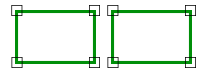
Sobrecargas
| Disjoint(ReadOnlyLine, ReadOnlyLine) | Indica si las dos áreas de tipo ReadOnlyLine son disjuntas. |
| Disjoint(ReadOnlyLine, ReadOnlyPolygon) | Indica dos áreas de tipo ReadOnlyLine y ReadOnlyPolygon son disjuntas. |
| Disjoint(ReadOnlyPolygon, ReadOnlyLine) | Indica dos áreas de tipo ReadOnlyPolygon y ReadOnlyLine son disjuntas. |
| Disjoint(ReadOnlyPolygon, ReadOnlyPolygon) | Indica las dos áreas de tipo ReadOnlyPolygon son disjuntas. |
Disjoint(ReadOnlyLine, ReadOnlyLine)
Indica si las dos áreas de tipo ReadOnlyLine son disjuntas.
public static bool Disjoint(ReadOnlyLine a, ReadOnlyLine b)
Parámetros
a ReadOnlyLine
Primera área.
b ReadOnlyLine
Segunda área.
Devuelve
Boolean
Verdadero si las dos áreas son disjuntas.
Disjoint(ReadOnlyLine, ReadOnlyPolygon)
Indica dos áreas de tipo ReadOnlyLine y ReadOnlyPolygon son disjuntas.
public static bool Disjoint(ReadOnlyLine a, ReadOnlyPolygon b)
Parámetros
a ReadOnlyLine
Primera área.
b ReadOnlyPolygon
Segunda área.
Devuelve
Boolean
Verdadero si las dos áreas son disjuntas.
Disjoint(ReadOnlyPolygon, ReadOnlyLine)
Indica dos áreas de tipo ReadOnlyPolygon y ReadOnlyLine son disjuntas.
public static bool Disjoint(ReadOnlyPolygon a, ReadOnlyLine b)
Parámetros
a ReadOnlyPolygon
Primera área.
b ReadOnlyLine
Segunda área.
Devuelve
Boolean
Verdadero si las dos áreas son disjuntas.
Disjoint(ReadOnlyPolygon, ReadOnlyPolygon)
Indica las dos áreas de tipo ReadOnlyPolygon son disjuntas.
public static bool Disjoint(ReadOnlyPolygon a, ReadOnlyPolygon b)
Parámetros
a ReadOnlyPolygon
Primera área.
b ReadOnlyPolygon
Segunda área.
Devuelve
Boolean
Verdadero si las dos áreas son disjuntas.
Equal
Espacio de nombres: Digi21.DigiNG.Entities.Relations
Ensamblado: Digi21.DigiNG
Indica si dos áreas son iguales.
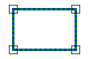
Sobrecargas
| Equal(ReadOnlyLine, ReadOnlyLine) | Indica si las dos áreas de tipo ReadOnlyLine son iguales. |
| Equal(ReadOnlyLine, ReadOnlyPolygon) | Indica dos áreas de tipo ReadOnlyLine y ReadOnlyPolygon son iguales. |
| Equal(ReadOnlyPolygon, ReadOnlyLine) | Indica dos áreas de tipo ReadOnlyPolygon y ReadOnlyLine son iguales. |
| Equal(ReadOnlyPolygon, ReadOnlyPolygon) | Indica las dos áreas de tipo ReadOnlyPolygon son iguales. |
Equal(ReadOnlyLine, ReadOnlyLine)
Indica si las dos áreas de tipo ReadOnlyLine son iguales.
public static bool Equal(ReadOnlyLine a, ReadOnlyLine b)
Parámetros
a ReadOnlyLine
Primera área.
b ReadOnlyLine
Segunda área.
Devuelve
Boolean
Verdadero si las dos áreas son iguales.
Equal(ReadOnlyLine, ReadOnlyPolygon)
Indica dos áreas de tipo ReadOnlyLine y ReadOnlyPolygon son iguales.
public static bool Equal(ReadOnlyLine a, ReadOnlyPolygon b)
Parámetros
a ReadOnlyLine
Primera área.
b ReadOnlyPolygon
Segunda área.
Devuelve
Boolean
Verdadero si las dos áreas son iguales.
Equal(ReadOnlyPolygon, ReadOnlyLine)
Indica dos áreas de tipo ReadOnlyPolygon y ReadOnlyLine son iguales.
public static bool Equal(ReadOnlyPolygon a, ReadOnlyLine b)
Parámetros
a ReadOnlyPolygon
Primera área.
b ReadOnlyLine
Segunda área.
Devuelve
Boolean
Verdadero si las dos áreas son iguales.
Equal(ReadOnlyPolygon, ReadOnlyPolygon)
Indica las dos áreas de tipo ReadOnlyPolygon son iguales.
public static bool Equal(ReadOnlyPolygon a, ReadOnlyPolygon b)
Parámetros
a ReadOnlyPolygon
Primera área.
b ReadOnlyPolygon
Segunda área.
Devuelve
Boolean
Verdadero si las dos áreas son iguales.
Join
Espacio de nombres: Digi21.DigiNG.Entities.Relations
Ensamblado: Digi21.DigiNG
Indica si dos áreas tienen un punto en común.
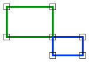
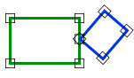
Sobrecargas
| Join(ReadOnlyLine, ReadOnlyLine) | Indica si las dos áreas de tipo ReadOnlyLine tienen un punto de unión. |
| Join(ReadOnlyLine, ReadOnlyPolygon) | Indica dos áreas de tipo ReadOnlyLine y ReadOnlyPolygon tienen un punto en común. |
| Join(ReadOnlyPolygon, ReadOnlyLine) | Indica dos áreas de tipo ReadOnlyPolygon y ReadOnlyLine tienen un punto en común. |
| Join(ReadOnlyPolygon, ReadOnlyPolygon) | Indica las dos áreas de tipo ReadOnlyPolygon tienen un punto en común. |
Join(ReadOnlyLine, ReadOnlyLine)
Indica si las dos áreas de tipo ReadOnlyLine tienen un punto de unión.
public static bool Join(ReadOnlyLine a, ReadOnlyLine b)
Parámetros
a ReadOnlyLine
Primera área.
b ReadOnlyLine
Segunda área.
Devuelve
Boolean
Verdadero si las dos áreas tienen un punto de unión.
Join(ReadOnlyLine, ReadOnlyPolygon)
Indica dos áreas de tipo ReadOnlyLine y ReadOnlyPolygon tienen un punto en común.
public static bool Join(ReadOnlyLine a, ReadOnlyPolygon b)
Parámetros
a ReadOnlyLine
Primera área.
b ReadOnlyPolygon
Segunda área.
Devuelve
Boolean
Verdadero si las dos áreas tienen un punto de unión.
Join(ReadOnlyPolygon, ReadOnlyLine)
Indica dos áreas de tipo ReadOnlyPolygon y ReadOnlyLine tienen un punto en común.
public static bool Join(ReadOnlyPolygon a, ReadOnlyLine b)
Parámetros
a ReadOnlyPolygon
Primera área.
b ReadOnlyLine
Segunda área.
Devuelve
Boolean
Verdadero si las dos áreas tienen un punto de unión.
Join(ReadOnlyPolygon, ReadOnlyPolygon)
Indica las dos áreas de tipo ReadOnlyPolygon tienen un punto en común.
public static bool Join(ReadOnlyPolygon a, ReadOnlyPolygon b)
Parámetros
a ReadOnlyPolygon
Primera área.
b ReadOnlyPolygon
Segunda área.
Devuelve
Boolean
Verdadero si las dos áreas tienen un punto de unión.
OuterRingAdjacent
Espacio de nombres: Digi21.DigiNG.Entities.Relations
Ensamblado: Digi21.DigiNG
Indica si los límites exteriores de las áreas son adyacentes.
Observaciones
Este método tiene en consideración únicamente el límite exterior de los ReadOnlyPolygon, de manera que, si la otra área es adyacente a algún hueco, no se considerará.
Sobrecargas
| OuterRingAdjacent(ReadOnlyLine, ReadOnlyPolygon) | Indica si el área ReadOnlyLine es adyacente al área representada por el límite exterior del ReadOnlyPolygon. |
| OuterRingAdjacent(ReadOnlyPolygon, ReadOnlyLine) | Indica si el área ReadOnlyLine es adyacente al área representada por el límite exterior del ReadOnlyPolygon. |
| OuterRingAdjacent(ReadOnlyPolygon, ReadOnlyPolygon) | Indica si el límite exterior de los dos ReadOnlyPolygon son adyacentes. |
OuterRingAdjacent(ReadOnlyLine, ReadOnlyPolygon)
Indica si el área ReadOnlyLine es adyacente al área representada por el límite exterior del ReadOnlyPolygon.
public static bool OuterRingAdjacent(ReadOnlyLine a, ReadOnlyPolygon b)
Parámetros
a ReadOnlyLine
Primera área.
b ReadOnlyPolygon
Segunda área.
Devuelve
Boolean
Verdadero si las dos áreas son adyacentes.
OuterRingAdjacent(ReadOnlyPolygon, ReadOnlyLine)
Indica si el área ReadOnlyLine es adyacente al área representada por el límite exterior del ReadOnlyPolygon.
public static bool OuterRingAdjacent(ReadOnlyPolygon a, ReadOnlyLine b)
Parámetros
a ReadOnlyPolygon
Primera área.
b ReadOnlyLine
Segunda área.
Devuelve
Boolean
Verdadero si las dos áreas son adyacentes.
OuterRingAdjacent(ReadOnlyPolygon, ReadOnlyPolygon)
Indica si el límite exterior de los dos ReadOnlyPolygon son adyacentes.
public static bool OuterRingAdjacent(ReadOnlyPolygon a, ReadOnlyPolygon b)
Parámetros
a ReadOnlyPolygon
Primera área.
b ReadOnlyPolygon
Segunda área.
Devuelve
Boolean
Verdadero si las dos áreas son adyacentes.
Overlap
Espacio de nombres: Digi21.DigiNG.Entities.Relations
Ensamblado: Digi21.DigiNG
Indica si las dos áreas solapan.

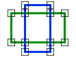
Sobrecargas
| Overlap(ReadOnlyLine, ReadOnlyLine, out Point3D) | Indica si las dos áreas de tipo ReadOnlyLine solapan y devuelve además las coordenadas de un punto por el que se cruzan. |
| Overlap(ReadOnlyLine, ReadOnlyPolygon, out Point3D) | Indica si el área de tipo ReadOnlyLine solapa con el área de tipo ReadOnlyPolygon y devuelve además las coordenadas de un punto por el que se cruzan. |
| Overlap(ReadOnlyPolygon, ReadOnlyLine, out Point3D) | Indica si el área de tipo ReadOnlyPolygon solapa con el área de tipo ReadOnlyLine y devuelve además las coordenadas de un punto por el que se cruzan. |
| Overlap(ReadOnlyPolygon, ReadOnlyPolygon, out Point3D) | Indica si las dos áreas de tipo ReadOnlyPolygon solapan y devuelve además las coordenadas de un punto por el que se cruzan. |
Overlap(ReadOnlyLine, ReadOnlyLine, out Point3D)
Indica si las dos áreas de tipo ReadOnlyLine solapan y devuelve además las coordenadas de un punto por el que se cruzan.
public static bool Overlap(ReadOnlyLine a, ReadOnlyLine b, out Point3D coordinate)
Parámetros
a ReadOnlyLine
Primera área.
b ReadOnlyLine
Segunda área.
coordinate Point3D
Una coordenada en la que cortan los polígonos. Este parámetro se puede utilizar para mostrar un error al usuario en caso de que el solape sea un error.
Devuelve
Boolean
Verdadero si las dos áreas solapan.
Overlap(ReadOnlyLine, ReadOnlyPolygon, out Point3D)
Indica si el área de tipo ReadOnlyLine solapa con el área de tipo ReadOnlyPolygon y devuelve además las coordenadas de un punto por el que se cruzan.
public static bool Overlap(ReadOnlyLine a, ReadOnlyPolygon b, out Point3D coordinate)
Parámetros
a ReadOnlyLine
Primera área.
b ReadOnlyPolygon
Segunda área.
coordinate Point3D
Una coordenada en la que cortan los polígonos. Este parámetro se puede utilizar para mostrar un error al usuario en caso de que el solape sea un error.
Devuelve
Boolean
Verdadero si las dos áreas solapan.
Overlap(ReadOnlyPolygon, ReadOnlyLine, out Point3D)
Indica si el área de tipo ReadOnlyPolygon solapa con el área de tipo ReadOnlyLine y devuelve además las coordenadas de un punto por el que se cruzan.
public static bool Overlap(ReadOnlyPolygon a, ReadOnlyLine b, out Point3D coordinate)
Parámetros
a ReadOnlyPolygon
Primera área.
b ReadOnlyLine
Segunda área.
coordinate Point3D
Una coordenada en la que cortan los polígonos. Este parámetro se puede utilizar para mostrar un error al usuario en caso de que el solape sea un error.
Devuelve
Boolean
Verdadero si las dos áreas solapan.
Overlap(ReadOnlyPolygon, ReadOnlyPolygon, out Point3D)
Indica si las dos áreas de tipo ReadOnlyPolygon solapan y devuelve además las coordenadas de un punto por el que se cruzan.
public static bool Overlap(ReadOnlyPolygon a, ReadOnlyPolygon b, out Point3D coordinate)
Parámetros
a ReadOnlyPolygon
Primera área.
b ReadOnlyPolygon
Segunda área.
coordinate Point3D
Una coordenada en la que cortan los polígonos. Este parámetro se puede utilizar para mostrar un error al usuario en caso de que el solape sea un error.
Devuelve
Boolean
Verdadero si las dos áreas solapan.
Within
Espacio de nombres: Digi21.DigiNG.Entities.Relations
Ensamblado: Digi21.DigiNG
Indica si la primera área está en el interior de la segunda área.
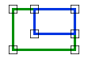

Sobrecargas
| Within(ReadOnlyLine, ReadOnlyLine) | Indica si la primera área de tipo ReadOnlyLine está incluida en la segunda área de tipo ReadOnlyLine. |
| Within(ReadOnlyLine, ReadOnlyPolygon) | Indica si la primera área de tipo ReadOnlyLine está incluida en la segunda área de tipo ReadOnlyPolygon. |
| Within(ReadOnlyPolygon, ReadOnlyLine) | Indica si la primera área de tipo ReadOnlyPolygon está incluida en la segunda área de tipo ReadOnlyLine. |
| Within(ReadOnlyPolygon, ReadOnlyPolygon) | Indica si la primera área de tipo ReadOnlyPolygon está incluida en la segunda área de tipo ReadOnlyPolygon. |
Within(ReadOnlyLine, ReadOnlyLine)
Indica si la primera área de tipo ReadOnlyLine está incluida en la segunda área de tipo ReadOnlyLine.
public static bool Within(ReadOnlyLine a, ReadOnlyLine b)
Parámetros
a ReadOnlyLine
Primera área.
b ReadOnlyLine
Segunda área.
Devuelve
Boolean
Verdadero si la primera área está incluida en la segunda área.
Within(ReadOnlyLine, ReadOnlyPolygon)
Indica si la primera área de tipo ReadOnlyLine está incluida en la segunda área de tipo ReadOnlyPolygon.
public static bool Within(ReadOnlyLine a, ReadOnlyPolygon b)
Parámetros
a ReadOnlyLine
Primera área.
b ReadOnlyPolygon
Segunda área.
Devuelve
Boolean
Verdadero si la primera área está incluida en la segunda área.
Within(ReadOnlyPolygon, ReadOnlyLine)
Indica si la primera área de tipo ReadOnlyPolygon está incluida en la segunda área de tipo ReadOnlyLine.
public static bool Within(ReadOnlyPolygon a, ReadOnlyLine b)
Parámetros
a ReadOnlyPolygon
Primera área.
b ReadOnlyLine
Segunda área.
Devuelve
Boolean
Verdadero si la primera área está incluida en la segunda área.
Within(ReadOnlyPolygon, ReadOnlyPolygon)
Indica si la primera área de tipo ReadOnlyPolygon está incluida en la segunda área de tipo ReadOnlyPolygon.
public static bool Within(ReadOnlyPolygon a, ReadOnlyPolygon b)
Parámetros
a ReadOnlyPolygon
Primera área.
b ReadOnlyPolygon
Segunda área.
Devuelve
Boolean
Verdadero si la primera área está incluida en la segunda área.
LineArea
Espacio de nombres: Digi21.DigiNG.Entities.Relations
Ensamblado: Digi21.DigiNG
Esta clase estática proporciona métodos que permiten analizar la relación entre líneas y áreas.
public static class LineArea
Herencia Object → AreaArea
Observaciones
Un Área en este contexto se refiere a líneas cerradas, de manera que engloba tanto a cualquier geometría de tipo ReadOnlyPolygon o cualquier ReadOnlyLine que esté cerrado.
El resultado de uno de estos métodos estáticos es excluyente, lo que significa que, si Across devuelve Verdadero, forzosamente Disjoint devolverá Falso.
Estos métodos únicamente analizan vértices existentes, es decir, que si no hay un vértice común entre las dos geometrías que se cruzan, su cruce pasará desapercibido.
Métodos estáticos
| Across(ReadOnlyLine, ReadOnlyLine) | Indica si la línea cruza el área de tipo ReadOnlyLine. |
| Across(ReadOnlyLine, ReadOnlyPolygon) | Indica si la línea cruza el área de tipo ReadOnlyPolygon. |
| Adjacent(ReadOnlyLine, ReadOnlyLine) | Indica si la línea es adyacente al área de tipo ReadOnlyLine. |
| Adjacent(ReadOnlyLine, ReadOnlyPolygon) | Indica si la línea es adyacente al área de tipo ReadOnlyPolygon. |
| Disjoint(ReadOnlyLine, ReadOnlyLine) | Indica si la línea es disjunta al área de tipo ReadOnlyLine. |
| Disjoint(ReadOnlyLine, ReadOnlyPolygon) | Indica si la línea es adyacente al área de tipo ReadOnlyPolygon. |
| EndpointJoin(ReadOnlyLine, ReadOnlyLine) | Indica si uno de los extremos de la línea finaliza en el área de tipo ReadOnlyLine. |
| EndpointJoin(ReadOnlyLine, ReadOnlyPolygon) | Indica si uno de los extremos de la línea finaliza en el área de tipo ReadOnlyPolygon. |
| Join(ReadOnlyLine, ReadOnlyLine) | Indica si la línea se une en alguno de sus puntos en el área de tipo ReadOnlyLine. |
| Join(ReadOnlyLine, ReadOnlyPolygon) | Indica si la línea se une en alguno de sus puntos en el área de tipo ReadOnlyPolygon. |
| TerminatesWithin(ReadOnlyLine, ReadOnlyLine) | Indica si uno de los extremos de la línea finaliza dentro del área de tipo ReadOnlyLine. |
| TerminatesWithin(ReadOnlyLine, ReadOnlyPolygon) | Indica si uno de los extremos de la línea finaliza dentro del área de tipo ReadOnlyPolygon. |
| Within(ReadOnlyLine, ReadOnlyLine) | Indica si la línea está completamente dentro del área de tipo ReadOnlyLine. |
| Within(ReadOnlyLine, ReadOnlyPolygon) | Indica si la línea está completamente dentro del área de tipo ReadOnlyPolygon. |
Métodos estáticos
Across
Espacio de nombres: Digi21.DigiNG.Entities.Relations
Ensamblado: Digi21.DigiNG
Indica si la línea cruza el área.
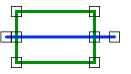
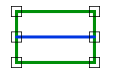
Sobrecargas
| Across(ReadOnlyLine, ReadOnlyLine) | Indica si la línea cruza el área de tipo ReadOnlyLine. |
| Across(ReadOnlyLine, ReadOnlyPolygon) | Indica si la línea cruza el área de tipo ReadOnlyPolygon. |
Across(ReadOnlyLine, ReadOnlyLine)
Indica si la línea cruza el área de tipo ReadOnlyLine.
public static bool Across(ReadOnlyLine line, ReadOnlyLine area)
Parámetros
line ReadOnlyLine
Línea.
area ReadOnlyLine
Área.
Devuelve
Boolean
Verdadero si la línea cruza el área.
Across(ReadOnlyLine, ReadOnlyPolygon)
Indica si la línea cruza el área de tipo ReadOnlyPolygon.
public static bool Across(ReadOnlyLine line, ReadOnlyPolygon area)
Parámetros
line ReadOnlyLine
Línea.
area ReadOnlyPolygon
Área.
Devuelve
Boolean
Verdadero si la línea cruza el área.
Adjacent
Espacio de nombres: Digi21.DigiNG.Entities.Relations
Ensamblado: Digi21.DigiNG
Indica si la línea es adyacente al área.

Sobrecargas
| Adjacent(ReadOnlyLine, ReadOnlyLine) | Indica si la línea es adyacente al área de tipo ReadOnlyLine. |
| Adjacent(ReadOnlyLine, ReadOnlyPolygon) | Indica si la línea es adyacente al área de tipo ReadOnlyPolygon. |
Adjacent(ReadOnlyLine, ReadOnlyLine)
Indica si la línea es adyacente al área de tipo ReadOnlyLine.
public static bool Adjacent(ReadOnlyLine line, ReadOnlyLine area)
Parámetros
line ReadOnlyLine
Línea.
area ReadOnlyLine
Área.
Devuelve
Boolean
Verdadero si la línea es adyacente al área.
Adjacent(ReadOnlyLine, ReadOnlyPolygon)
Indica si la línea es adyacente al área de tipo ReadOnlyPolygon.
public static bool Adjacent(ReadOnlyLine line, ReadOnlyPolygon area)
Parámetros
line ReadOnlyLine
Línea.
area ReadOnlyPolygon
Área.
Devuelve
Boolean
Verdadero si la línea es adyacente al área.
Disjoint
Espacio de nombres: Digi21.DigiNG.Entities.Relations
Ensamblado: Digi21.DigiNG
Indica si la línea es disjunta al área.

Sobrecargas
| Disjoint(ReadOnlyLine, ReadOnlyLine) | Indica si la línea es disjunta al área de tipo ReadOnlyLine. |
| Disjoint(ReadOnlyLine, ReadOnlyPolygon) | Indica si la línea es adyacente al área de tipo ReadOnlyPolygon. |
Disjoint(ReadOnlyLine, ReadOnlyLine)
Indica si la línea es disjunta al área de tipo ReadOnlyLine.
public static bool Disjoint(ReadOnlyLine line, ReadOnlyLine area)
Parámetros
line ReadOnlyLine
Línea.
area ReadOnlyLine
Área.
Devuelve
Boolean
Verdadero si la línea es y el área son disjuntas.
Disjoint(ReadOnlyLine, ReadOnlyPolygon)
Indica si la línea es adyacente al área de tipo ReadOnlyPolygon.
public static bool Disjoint(ReadOnlyLine line, ReadOnlyPolygon area)
Parámetros
line ReadOnlyLine
Línea.
area ReadOnlyPolygon
Área.
Devuelve
Boolean
Verdadero si la línea es y el área son disjuntas.
EndpointJoin
Espacio de nombres: Digi21.DigiNG.Entities.Relations
Ensamblado: Digi21.DigiNG
Indica si uno de los extremos se la línea se junta con el área.

Sobrecargas
| EndpointJoin(ReadOnlyLine, ReadOnlyLine) | Indica si uno de los extremos de la línea finaliza en el área de tipo ReadOnlyLine. |
| EndpointJoin(ReadOnlyLine, ReadOnlyPolygon) | Indica si uno de los extremos de la línea finaliza en el área de tipo ReadOnlyPolygon. |
EndpointJoin(ReadOnlyLine, ReadOnlyLine)
Indica si uno de los extremos de la línea finaliza en el área de tipo ReadOnlyLine.
public static bool EndpointJoin(ReadOnlyLine line, ReadOnlyLine area)
Parámetros
line ReadOnlyLine
Línea.
area ReadOnlyLine
Área.
Devuelve
Boolean
Verdadero si uno de los extremos de la línea se junta con el área.
EndpointJoin(ReadOnlyLine, ReadOnlyPolygon)
Indica si uno de los extremos de la línea finaliza en el área de tipo ReadOnlyPolygon.
public static bool EndpointJoin(ReadOnlyLine line, ReadOnlyPolygon area)
Parámetros
line ReadOnlyLine
Línea.
area ReadOnlyPolygon
Área.
Devuelve
Boolean
Verdadero si uno de los extremos de la línea se junta con el área.
Join
Espacio de nombres: Digi21.DigiNG.Entities.Relations
Ensamblado: Digi21.DigiNG
Indica si la línea se junta con el área.

Sobrecargas
| Join(ReadOnlyLine, ReadOnlyLine) | Indica si la línea se une en alguno de sus puntos en el área de tipo ReadOnlyLine. |
| Join(ReadOnlyLine, ReadOnlyPolygon) | Indica si la línea se une en alguno de sus puntos en el área de tipo ReadOnlyPolygon. |
Join(ReadOnlyLine, ReadOnlyLine)
Indica si la línea se une en alguno de sus puntos en el área de tipo ReadOnlyLine.
public static bool Join(ReadOnlyLine line, ReadOnlyLine area)
Parámetros
line ReadOnlyLine
Línea.
area ReadOnlyLine
Área.
Devuelve
Boolean
Verdadero si la línea se junta con el área.
Join(ReadOnlyLine, ReadOnlyPolygon)
Indica si la línea se une en alguno de sus puntos en el área de tipo ReadOnlyPolygon.
public static bool Join(ReadOnlyLine line, ReadOnlyPolygon area)
Parámetros
line ReadOnlyLine
Línea.
area ReadOnlyPolygon
Área.
Devuelve
Boolean
Verdadero si la línea se junta con el área.
TerminatesWithin
Espacio de nombres: Digi21.DigiNG.Entities.Relations
Ensamblado: Digi21.DigiNG
Indica si uno de los extremos de la línea está dentro del área.
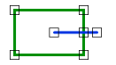
Sobrecargas
| TerminatesWithin(ReadOnlyLine, ReadOnlyLine) | Indica si uno de los extremos de la línea finaliza dentro del área de tipo ReadOnlyLine. |
| TerminatesWithin(ReadOnlyLine, ReadOnlyPolygon) | Indica si uno de los extremos de la línea finaliza dentro del área de tipo ReadOnlyPolygon. |
TerminatesWithin(ReadOnlyLine, ReadOnlyLine)
Indica si uno de los extremos de la línea finaliza dentro del área de tipo ReadOnlyLine.
public static bool TerminatesWithin(ReadOnlyLine line, ReadOnlyLine area)
Parámetros
line ReadOnlyLine
Línea.
area ReadOnlyLine
Área.
Devuelve
Boolean
Verdadero si la línea finaliza dentro del área.
TerminatesWithin(ReadOnlyLine, ReadOnlyPolygon)
Indica si uno de los extremos de la línea finaliza dentro del área de tipo ReadOnlyPolygon.
public static bool TerminatesWithin(ReadOnlyLine line, ReadOnlyPolygon area)
Parámetros
line ReadOnlyLine
Línea.
area ReadOnlyPolygon
Área.
Devuelve
Boolean
Verdadero si la línea finaliza dentro del área.
Within
Espacio de nombres: Digi21.DigiNG.Entities.Relations
Ensamblado: Digi21.DigiNG
Indica si la línea está completamente dentro del área.

Sobrecargas
| Within(ReadOnlyLine, ReadOnlyLine) | Indica si la línea está completamente dentro del área de tipo ReadOnlyLine. |
| Within(ReadOnlyLine, ReadOnlyPolygon) | Indica si la línea está completamente dentro del área de tipo ReadOnlyPolygon. |
Within(ReadOnlyLine, ReadOnlyLine)
Indica si la línea está completamente dentro del área de tipo ReadOnlyLine.
public static bool Within(ReadOnlyLine line, ReadOnlyLine area)
Parámetros
line ReadOnlyLine
Línea.
area ReadOnlyLine
Área.
Devuelve
Boolean
Verdadero si la línea está completamente dentro del área.
Within(ReadOnlyLine, ReadOnlyPolygon)
Indica si la línea está completamente dentro del área de tipo ReadOnlyPolygon.
public static bool Within(ReadOnlyLine line, ReadOnlyPolygon area)
Parámetros
line ReadOnlyLine
Línea.
area ReadOnlyPolygon
Área.
Devuelve
Boolean
Verdadero si la línea está completamente dentro del área.
LineLine
Espacio de nombres: Digi21.DigiNG.Entities.Relations
Ensamblado: Digi21.DigiNG
Esta clase estática proporciona métodos que permiten analizar la relación entre dos líneas.
public static class LineLine
Herencia Object → LineLine
Observaciones
El resultado de uno de estos métodos estáticos es excluyente, lo que significa que, si Across devuelve Verdadero, forzosamente EndpointJoinEndpoint devolverá Falso.
Estos métodos únicamente analizan vértices existentes, es decir, que si no hay un vértice común entre las dos geometrías que se cruzan, su cruce pasará desapercibido.
Métodos estáticos
| Across(ReadOnlyLine, ReadOnlyLine) | Indica si las dos ReadOnlyLine se cruzan. |
| Disjoint(ReadOnlyLine, ReadOnlyLine) | Indica si las dos ReadOnlyLine son disjuntas. |
| EndpointJoinEndpoint(ReadOnlyLine, ReadOnlyLine) | Indica si las dos ReadOnlyLine están unidas por uno de sus extremos. |
| EndpointJoinExcludingEndpoints(ReadOnlyLine, ReadOnlyLine) | Indica uno de los extremos de la primera ReadOnlyLine está unido a la segunda ReadOnlyLine excluyendo los extremos de la segunda). |
| Equal(ReadOnlyLine, ReadOnlyLine) | Indica si las dos ReadOnlyLine son iguales. |
| Join(ReadOnlyLine, ReadOnlyLine) | Indica si las dos ReadOnlyLine se unen. |
| Overlap(ReadOnlyLine, ReadOnlyLine) | Indica si las dos ReadOnlyLine solapan. |
Métodos estáticos
Across
Espacio de nombres: Digi21.DigiNG.Entities.Relations
Ensamblado: Digi21.DigiNG
Indica si las dos ReadOnlyLine se cruzan.
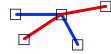
public static bool Across(ReadOnlyLine a, ReadOnlyLine b)
Parámetros
a ReadOnlyLine
Primera línea.
b ReadOnlyPolygon
Segunda línea.
Devuelve
Boolean
Verdadero si las dos líneas se cruzan.
Disjoint
Espacio de nombres: Digi21.DigiNG.Entities.Relations
Ensamblado: Digi21.DigiNG
Indica si las dos ReadOnlyLine son disjuntas.
public static bool Disjoint(ReadOnlyLine a, ReadOnlyLine b)
Parámetros
a ReadOnlyLine
Primera línea.
b ReadOnlyPolygon
Segunda línea.
Devuelve
Boolean
Verdadero si las dos líneas son disjuntas.
EndpointJoinEndpoint
Espacio de nombres: Digi21.DigiNG.Entities.Relations
Ensamblado: Digi21.DigiNG
Indica si las dos ReadOnlyLine están unidas por uno de sus extremos.
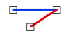
public static bool EndpointJoinEndpoint(ReadOnlyLine a, ReadOnlyLine b)
Parámetros
a ReadOnlyLine
Primera línea.
b ReadOnlyPolygon
Segunda línea.
Devuelve
Boolean
Verdadero si las dos líneas se unen por sus extremos.
EndpointJoinExcludingEndpoints
Espacio de nombres: Digi21.DigiNG.Entities.Relations
Ensamblado: Digi21.DigiNG
Indica uno de los extremos de la primera ReadOnlyLine está unido a la segunda ReadOnlyLine excluyendo los extremos de la segunda).

public static bool EndpointJoinExcludingEndpoints(ReadOnlyLine a, ReadOnlyLine b)
Parámetros
a ReadOnlyLine
Primera línea.
b ReadOnlyPolygon
Segunda línea.
Devuelve
Boolean
Verdadero si uno de los extremos de la primera línea se une a la segunda línea (excepto por los extremos de la segunda línea).
Equal
Espacio de nombres: Digi21.DigiNG.Entities.Relations
Ensamblado: Digi21.DigiNG
Indica si las dos ReadOnlyLine son iguales.
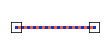
public static bool Equal(ReadOnlyLine a, ReadOnlyLine b)
Parámetros
a ReadOnlyLine
Primera línea.
b ReadOnlyPolygon
Segunda línea.
Devuelve
Boolean
Verdadero si las dos líneas son iguales.
Join
Espacio de nombres: Digi21.DigiNG.Entities.Relations
Ensamblado: Digi21.DigiNG
Indica si las dos ReadOnlyLine se unen.

public static bool Join(ReadOnlyLine a, ReadOnlyLine b)
Parámetros
a ReadOnlyLine
Primera línea.
b ReadOnlyPolygon
Segunda línea.
Devuelve
Boolean
Verdadero si las líneas se unen.
Overlap
Espacio de nombres: Digi21.DigiNG.Entities.Relations
Ensamblado: Digi21.DigiNG
Indica si las dos ReadOnlyLine solapan.

public static bool Overlap(ReadOnlyLine a, ReadOnlyLine b)
Parámetros
a ReadOnlyLine
Primera línea.
b ReadOnlyPolygon
Segunda línea.
Devuelve
Boolean
Verdadero si las líneas se solapan.
PointArea
Espacio de nombres: Digi21.DigiNG.Entities.Relations
Ensamblado: Digi21.DigiNG
Esta clase estática proporciona métodos que permiten analizar la relación entre puntos y áreas.
public static class PointArea
Herencia Object → PointArea
Observaciones
Un Área en este contexto se refiere a líneas cerradas, de manera que engloba tanto a cualquier geometría de tipo ReadOnlyPolygon o cualquier ReadOnlyLine que esté cerrado.
El resultado de uno de estos métodos estáticos es excluyente, lo que significa que, si Coincident devuelve Verdadero, forzosamente Within devolverá Falso.
Estos métodos únicamente analizan vértices existentes, es decir, que si no hay un vértice común entre las dos geometrías que se cruzan, su cruce pasará desapercibido.
Métodos estáticos
| Coincident(ReadOnlyPoint, ReadOnlyLine) | Indica si el ReadOnlyPoint es coincidente con el área de tipo ReadOnlyLine. |
| Coincident(ReadOnlyPoint, ReadOnlyPolygon) | Indica si el ReadOnlyPoint es coincidente con el área de tipo ReadOnlyPolygon. |
| Disjoint(ReadOnlyPoint, ReadOnlyLine) | Indica si el ReadOnlyPoint y el área de tipo ReadOnlyLine son disjuntos. |
| Disjoint(ReadOnlyPoint, ReadOnlyPolygon) | Indica si el ReadOnlyPoint y el área de tipo ReadOnlyPolygon son disjuntos. |
| Within(ReadOnlyPoint, ReadOnlyLine) | Indica si el ReadOnlyPoint está en el interior del área de tipo ReadOnlyLine. |
| Within(ReadOnlyPoint, ReadOnlyPolygon) | Indica si el ReadOnlyPoint está en el interior del área de tipo ReadOnlyPolygon. |
Métodos estáticos
Coincident
Espacio de nombres: Digi21.DigiNG.Entities.Relations
Ensamblado: Digi21.DigiNG
Indica si el punto y el área son coincidentes.
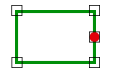
Sobrecargas
| Coincident(ReadOnlyPoint, ReadOnlyLine) | Indica si el ReadOnlyPoint es coincidente con el área de tipo ReadOnlyLine. |
| Coincident(ReadOnlyPoint, ReadOnlyPolygon) | Indica si el ReadOnlyPoint es coincidente con el área de tipo ReadOnlyPolygon. |
Coincident(ReadOnlyPoint, ReadOnlyLine)
Indica si el ReadOnlyPoint es coincidente con el área de tipo ReadOnlyLine.
public static bool Coincident(ReadOnlyPoint point, ReadOnlyLine area)
Parámetros
point ReadOnlyPoint
Punto.
area ReadOnlyLine
Area.
Devuelve
Boolean
Verdadero si el punto y la línea son coincidentes.
Coincident(ReadOnlyPoint, ReadOnlyPolygon)
Indica si el ReadOnlyPoint es coincidente con el área de tipo ReadOnlyPolygon.
public static bool Coincident(ReadOnlyPoint point, ReadOnlyPolygon area)
Parámetros
point ReadOnlyPoint
Punto.
area ReadOnlyPolygon
Area.
Devuelve
Boolean
Verdadero si el punto y la línea son coincidentes.
Disjoint
Espacio de nombres: Digi21.DigiNG.Entities.Relations
Ensamblado: Digi21.DigiNG
Indica si el punto y el área son disjuntos.

Sobrecargas
| Disjoint(ReadOnlyPoint, ReadOnlyLine) | Indica si el ReadOnlyPoint y el área de tipo ReadOnlyLine son disjuntos. |
| Disjoint(ReadOnlyPoint, ReadOnlyPolygon) | Indica si el ReadOnlyPoint y el área de tipo ReadOnlyPolygon son disjuntos. |
Disjoint(ReadOnlyPoint, ReadOnlyLine)
Indica si el ReadOnlyPoint y el área de tipo ReadOnlyLine son disjuntos.
public static bool Disjoint(ReadOnlyPoint point, ReadOnlyLine area)
Parámetros
point ReadOnlyPoint
Punto.
area ReadOnlyLine
Area.
Devuelve
Boolean
Verdadero si el punto y la línea son disjuntos.
Disjoint(ReadOnlyPoint, ReadOnlyPolygon)
Indica si el ReadOnlyPoint y el área de tipo ReadOnlyPolygon son disjuntos.
public static bool Disjoint(ReadOnlyPoint point, ReadOnlyPolygon area)
Parámetros
point ReadOnlyPoint
Punto.
area ReadOnlyPolygon
Area.
Devuelve
Boolean
Verdadero si el punto y la línea son disjuntos.
Within
Espacio de nombres: Digi21.DigiNG.Entities.Relations
Ensamblado: Digi21.DigiNG
Indica si el punto está en el interior del área.

Sobrecargas
| Within(ReadOnlyPoint, ReadOnlyLine) | Indica si el ReadOnlyPoint está en el interior del área de tipo ReadOnlyLine. |
| Within(ReadOnlyPoint, ReadOnlyPolygon) | Indica si el ReadOnlyPoint está en el interior del área de tipo ReadOnlyPolygon. |
Within(ReadOnlyPoint, ReadOnlyLine)
Indica si el ReadOnlyPoint está en el interior del área de tipo ReadOnlyLine.
public static bool Within(ReadOnlyPoint point, ReadOnlyLine area)
Parámetros
point ReadOnlyPoint
Punto.
area ReadOnlyLine
Area.
Devuelve
Boolean
Verdadero si el punto está en el interior del área.
Within(ReadOnlyPoint, ReadOnlyPolygon)
Indica si el ReadOnlyPoint está en el interior del área de tipo ReadOnlyPolygon.
public static bool Within(ReadOnlyPoint point, ReadOnlyPolygon area)
Parámetros
point ReadOnlyPoint
Punto.
area ReadOnlyPolygon
Area.
Devuelve
Boolean
Verdadero si el punto está en el interior del área.
PointLine
Espacio de nombres: Digi21.DigiNG.Entities.Relations
Ensamblado: Digi21.DigiNG
Esta clase estática proporciona métodos que permiten analizar la relación entre puntos y líneas.
public static class PointLine
Herencia Object → PointLine
Observaciones
El resultado de uno de estos métodos estáticos es excluyente, lo que significa que, si Coindicent devuelve Verdadero, forzosamente CoincidentAndTerminate devolverá Falso.
Estos métodos únicamente analizan vértices existentes, es decir, que si no hay un vértice común entre las dos geometrías que se cruzan, su cruce pasará desapercibido.
Métodos estáticos
| Coincident(ReadOnlyPoint, ReadOnlyLine) | Indica si el ReadOnlyPoint es coincidente con la ReadOnlyLine. |
| CoincidentAndTerminate(ReadOnlyPoint, ReadOnlyLine) | Indica si el ReadOnlyPoint es coincidente con uno de los extremos del ReadOnlyLine. |
| Disjoint(ReadOnlyPoint, ReadOnlyLine) | Indica si el ReadOnlyPoint y el ReadOnlyLine son disjuntos. |
Métodos estáticos
Coincident
Espacio de nombres: Digi21.DigiNG.Entities.Relations
Ensamblado: Digi21.DigiNG
Indica si el punto y la línea son coincidentes.
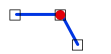
public static bool Coincident(ReadOnlyPoint point, ReadOnlyLine line)
Parámetros
point ReadOnlyPoint
Punto.
line ReadOnlyLine
Línea.
Devuelve
Boolean
Verdadero si el punto y la línea son coincidentes.
CoincidentAndTerminate
Espacio de nombres: Digi21.DigiNG.Entities.Relations
Ensamblado: Digi21.DigiNG
Indica si el ReadOnlyPoint es coincidente con uno de los extremos del ReadOnlyLine.
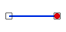
public static bool CoincidentAndTerminate(ReadOnlyPoint point, ReadOnlyLine line)
Parámetros
point ReadOnlyPoint
Punto.
line ReadOnlyLine
Línea.
Devuelve
Boolean
Verdadero si el punto es coincidente con alguno de los extremos de la línea.
Disjoint
Espacio de nombres: Digi21.DigiNG.Entities.Relations
Ensamblado: Digi21.DigiNG
Indica si el punto y la línea son disjuntos.

public static bool Disjoint(ReadOnlyPoint point, ReadOnlyLine line)
Parámetros
point ReadOnlyPoint
Punto.
line ReadOnlyLine
Línea.
Devuelve
Boolean
Verdadero si el punto y la línea son disjuntos.
PointPoint
Espacio de nombres: Digi21.DigiNG.Entities.Relations
Ensamblado: Digi21.DigiNG
Esta clase estática proporciona métodos que permiten analizar la relación entre puntos.
public static class PointPoint
Herencia Object → PointPoint
Observaciones
El resultado de uno de estos métodos estáticos es excluyente, lo que significa que, si Coindicent devuelve Verdadero, forzosamente CoincidentAndTerminate devolverá Falso.
Métodos estáticos
| Coincident(ReadOnlyPoint, ReadOnlyPoint) | Indica si los dos ReadOnlyPoint son coincidentes. |
| Disjoint(ReadOnlyPoint, ReadOnlyPoint) | Indica si los dos ReadOnlyPoint son disjuntos. |
Métodos estáticos
Coincident
Espacio de nombres: Digi21.DigiNG.Entities.Relations
Ensamblado: Digi21.DigiNG
Indica si los puntos son coincidentes.

public static bool Coincident(ReadOnlyPoint a, ReadOnlyPoint b)
Parámetros
a ReadOnlyPoint
Primer punto.
b ReadOnlyPoint
Segundo punto.
Devuelve
Boolean
Verdadero si los dos puntos son coincidentes.
Disjoint
Espacio de nombres: Digi21.DigiNG.Entities.Relations
Ensamblado: Digi21.DigiNG
Indica si los puntos son disjuntos.
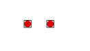
public static bool Disjoint(ReadOnlyPoint a, ReadOnlyPoint b)
Parámetros
a ReadOnlyPoint
Primer punto.
b ReadOnlyPoint
Segundo punto.
Devuelve
Boolean
Verdadero si los dos puntos son disjuntos.
Digi21.DigiNG.IO
Proporciona los tipos relacionados con archivos de dibujo.
Interfaces
Delegados
Delegados
DelegateGetWkt
Espacio de nombres: Digi21.DigiNG.IO
Ensamblado: Digi21.DigiNG
Define un tipo de delegado usado por los importadores/exportadores de archivos de dibujo cuando requieren que se indique el Sistema de Referencia de Coordenadas a asociar a un archivo nuevo.
public delegate string DelegateGetWkt();
Interfaces
IDrawingFile
Espacio de nombres: Digi21.DigiNG.IO
Ensamblado: Digi21.DigiNG
Esta interfaz define los métodos que implementan los importadores/exportadores de archivos.
public interface IDrawingFile : IReadOnlyDrawingFile
Tipos derivados: Bin, BinDouble, Shp, Geomedia
Implementa: IReadOnlyDrawingFile
Propiedades
| CanRead | Indica si el importador puede leer geometrías del archivo. |
| CanWrite | Indica si el importador puede almacenar geometrías en el archivo. |
| DatabaseTables | Devuelve un diccionario cuya clave es el nombre de una tabla y cuyo valor es el número de tabla. |
| Path | Devuelve la ruta del archivo de dibujo. |
| Wkt | Devuelve una cadena WKT especificando el Sistema de Referencia en el que están las coordenadas de las geometrías del archivo de dibujo. |
Métodos
| Add(Entity) | Añade una Entity al archivo de dibujo. |
| Add(Complex) | Añade una geometría de tipo Complex. |
| Add(IEnumerable<Entity>) | Añade una enumeración de Entity. |
| Add(Line) | Añade una geometría de tipo Line. |
| Add(Point) | Añade una geometría de tipo Point. |
| Add(Polygon) | Añade una geometría de tipo Polygon. |
| Add(Text) | Añade una geometría de tipo Text. |
| Delete(Entity) | Elimina un Entity del archivo de dibujo. |
| Delete(IEnumerable<Entity>) | Elimina una enumeración de Entity del archivo de dibujo. |
Propiedades
CanRead
Espacio de nombres: Digi21.DigiNG.IO
Ensamblado: Digi21.DigiNG
Indica si el importador puede leer geometrías del archivo.
bool CanRead { get; }
Valor de la propiedad
Verdadero si el importador puede leer geometrías del archivo de dibujo.
CanWrite
Espacio de nombres: Digi21.DigiNG.IO
Ensamblado: Digi21.DigiNG
Indica si el importador puede almacenar geometrías en el archivo.
bool CanWrite { get; }
Valor de la propiedad
Verdadero si el importador puede almacenar geometrías en el archivo de dibujo.
DatabaseTables
Espacio de nombres: Digi21.DigiNG.IO
Ensamblado: Digi21.DigiNG
Devuelve un diccionario cuya clave es el nombre de una tabla y cuyo valor es el número de tabla.
IDictionary<string, int> DatabaseTables { get; }
Valor de la propiedad
Diccionario de tablas de base de datos y sus números.
Path
Espacio de nombres: Digi21.DigiNG.IO
Ensamblado: Digi21.DigiNG
Devuelve la ruta del archivo de dibujo.
string Path { get; }
Valor de la propiedad
Ruta del archivo de dibujo
Wkt
Espacio de nombres: Digi21.DigiNG.IO
Ensamblado: Digi21.DigiNG
Devuelve una cadena WKT especificando el Sistema de Referencia en el que están las coordenadas de las geometrías del archivo de dibujo.
string Path { get; }
Valor de la propiedad
Cadena WKT como, por ejemplo:
COMPD_CS["WGS 84 / UTM zone 30N + EGM2008 geoid height",PROJCS["WGS 84 / UTM zone 30N",GEOGCS["WGS 84",DATUM["World Geodetic System 1984",SPHEROID["WGS 84",6378137,298.257223563,AUTHORITY["EPSG","7030"]],AUTHORITY["EPSG","6326"]],PRIMEM["Greenwich",0,AUTHORITY["EPSG","8901"]],UNIT["grados",0.01745329251994328,AUTHORITY["EPSG","9122"]],AXIS["Lat",North],AXIS["Long",East],AUTHORITY["EPSG","4326"]],PROJECTION["Transverse_Mercator"],PARAMETER["latitude_of_origin",0],PARAMETER["central_meridian",-2.999999999999997],PARAMETER["scale_factor",0.9996],PARAMETER["false_easting",500000],PARAMETER["false_northing",0],PARAMETER["semi_major",6378137],PARAMETER["semi_minor",6356752.314245179],UNIT["metros",1,AUTHORITY["EPSG","9001"]],AXIS["E",East],AXIS["N",North],AUTHORITY["EPSG","32630"]],VERT_CS["EGM2008 geoid height",VERT_DATUM["EGM2008 geoid",2005,AUTHORITY["EPSG","1027"]],UNIT["metros",1,AUTHORITY["EPSG","9001"]],AXIS["H",Up],AUTHORITY["EPSG","3855"]]]
Métodos
Add
Espacio de nombres: Digi21.DigiNG.IO
Ensamblado: Digi21.DigiNG
Añade geometrías al archivo de dibujo.
Sobrecargas
| Add(Entity) | Añade una Entity al archivo de dibujo. |
| Add(Complex) | Añade una geometría de tipo Complex. |
| Add(IEnumerable<Entity>) | Añade una enumeración de Entity. |
| Add(Line) | Añade una geometría de tipo Line. |
| Add(Point) | Añade una geometría de tipo Point. |
| Add(Polygon) | Añade una geometría de tipo Polygon. |
| Add(Text) | Añade una geometría de tipo Text. |
Add(Entity)
Añade una Entity al archivo de dibujo.
void Add(Entity entity);
Parámetros
entity Entity
Geometría para añadir al archivo de dibujo.
Add(Complex)
Añade una geometría de tipo Complex.
ReadOnlyComplex Add(Complex complex);
Parámetros
complex Complex
Complejo para añadir al archivo de dibujo.
Devuelve
ReadOnlyComplex
Geometría solo lectura correspondiente a la geometría que se acaba de almacenar, pues las geometrías una vez se almacenan en un archivo de dibujo no se pueden modificar.
Add(IEnumerable<Entity>)
Añade una enumeración de Entity.
void Add(IEnumerable<Entity> entities);
Parámetros
entities IEnumerable<Entity>
Geometrías para añadir al archivo de dibujo.
Add(Line)
Añade una geometría de tipo Line.
ReadOnlyLine Add(Line line);
Parámetros
line Line
Línea para añadir al archivo de dibujo.
Devuelve
ReadOnlyLine
Geometría solo lectura correspondiente a la geometría que se acaba de almacenar, pues las geometrías una vez se almacenan en un archivo de dibujo no se pueden modificar.
Add(Point)
Añade una geometría de tipo Point.
ReadOnlyPoint Add(Point point);
Parámetros
point Point
Punto para añadir al archivo de dibujo.
Devuelve
ReadOnlyPoint
Geometría solo lectura correspondiente a la geometría que se acaba de almacenar, pues las geometrías una vez se almacenan en un archivo de dibujo no se pueden modificar.
Add(Polygon)
Añade una geometría de tipo Polygon.
ReadOnlyPolygon Add(Polygon polygon);
Parámetros
polygon Polygon
Polígono para añadir al archivo de dibujo.
Devuelve
ReadOnlyPolygon
Geometría solo lectura correspondiente a la geometría que se acaba de almacenar, pues las geometrías una vez se almacenan en un archivo de dibujo no se pueden modificar.
Add(Text)
Añade una geometría de tipo Text.
ReadOnlyText Add(Text text);
Parámetros
text Text
Texto para añadir al archivo de dibujo.
Devuelve
ReadOnlyText
Geometría solo lectura correspondiente a la geometría que se acaba de almacenar, pues las geometrías una vez se almacenan en un archivo de dibujo no se pueden modificar.
Delete
Espacio de nombres: Digi21.DigiNG.IO
Ensamblado: Digi21.DigiNG
Elimina geometrías al archivo de dibujo.
Sobrecargas
| Delete(Entity) | Elimina un Entity del archivo de dibujo. |
| Delete(IEnumerable<Entity>) | Elimina una enumeración de Entity del archivo de dibujo. |
Delete(Entity)
Elimina un Entity del archivo de dibujo.
void Delete(Entity entity);
Parámetros
entity Entity
Geometría para eliminar del archivo de dibujo.
Delete(IEnumerable<Entity>)
Elimina una enumeración de Entity del archivo de dibujo.
void Delete(IEnumerable<Entity> entities);
entities IEnumerable<Entity>
Geometrías a eliminar del archivo de dibujo.
IReadOnlyDrawingFile
Espacio de nombres: Digi21.DigiNG.IO
Ensamblado: Digi21.DigiNG
Esta interfaz define los métodos que implementan los importadores/exportadores de solo lectura de archivos.
public interface IReadOnlyDrawingFile : IEnumerable<Entity>
Tipos derivados: IDrawingFile
Implementa: IEnumerable<Entity>, IWindow3D
Propiedades
| ConnectionString | Devuelve la cadena de conexión de la base de datos asociada con el archivo de dibujo. |
|---|---|
| Path | Devuelve la ruta del archivo de dibujo. |
| Visible | Indica/Establece la visibilidad del archivo en la ventana de dibujo. |
Propiedades
ConnectionString
Espacio de nombres: Digi21.DigiNG.IO
Ensamblado: Digi21.DigiNG
Devuelve la cadena de conexión de la base de datos asociada con el archivo de dibujo.
string ConnectionString { get; }
Valor de la propiedad
Cadena de conexión o String.Empty en caso de que no haya conexión con base de datos.
Path
Espacio de nombres: Digi21.DigiNG.IO
Ensamblado: Digi21.DigiNG
Devuelve la ruta del archivo de dibujo.
string Path { get; }
Valor de la propiedad
Ruta del archivo de dibujo.
description: >- Espacio de nombres: Digi21.DigiNG.IO Ensamblado: Digi21.DigiNG Devuelve la ruta del archivo de dibujo. string Path { get; } Valor de la propiedad String Ruta del archivo de dibujo.
Visible
Espacio de nombres: Digi21.DigiNG.IO
Ensamblado: Digi21.DigiNG
Devuelve/Establece la visibilidad del archivo en la ventana de dibujo.
bool Visible { get; set; }
Valor de la propiedad
Verdadero si la ventana de dibujo debe mostrar el archivo o falso en caso contrario.
Digi21.Math
Proporciona tipos relacionados con matemáticas.
Clases
- Angles
- Point2D
- Point3D
- Point3DCollection
- Point3DEventArgs
- Point3DReadOnlyCollection
- Precision
- Segment
- Window2D
- Window3D
Inferfaces
Enumeraciones
Clases
Angles
Espacio de nombres: Digi21.Math
Ensamblado: Digi21.DigiNG
Esta clase estática proporciona métodos de extensión que nos van a permitir realizar transformaciones de unidades angulares.
public static class Angles
Herencia Object → Angles
Métodos
| AzimuthToTrigonometric | Transforma un ángulo azimutal a trigonométrico. |
| DMSToSexagesimal | Transforma grados minutos y segundos a fracción decimal. |
| GradianToRadian | Transforma un ángulo centesimal a radián. |
| GradianToSexagesimal | Transforma un ángulo centesimal a sexagesimal. |
| MatrixToRotations | Extrae ángulos Omega, Phi y Kappa de una matriz de Euler. |
| NormalizeAngle | Normaliza un ángulo entre 0 y 2π |
| RadianToGradian | Transforma un ángulo de radián a centesimal. |
| RadianToSexagesimal | Transforma un ángulo de radián a sexagesimal. |
| RotationsToMatrix | Crea una matriz de Euler a partir de ángulos Omega, Phi, Kappa. |
| SexagesimalToDMS | Extrae Grados, Minutos, Segundos a partir de una fracción decimal. |
| SexagesimalToGradian | Transforma un ángulo de sexagesimal a centesimal. |
| SexagesimalToRadian | Transforma un ángulo de sexagesimal a radián. |
| TrigonometricToAzimuth | Transforma un ángulo de trigonométrico a azimutal. |
Métodos
AzimuthToTrigonometric
Espacio de nombres: Digi21.Math
Ensamblado: Digi21.DigiNG
Transforma un ángulo azimutal a trigonométrico.
public static double AzimuthToTrigonometric(this double radians);
Parámetros
radiansDouble
Ángulo en radianes a transformar.
Devuelve
Double
Valor transformado en radianes.
Ejemplos
El siguiente ejemplo solicita al usuario un ángulo en sexagesimal. El programa lo transforma a radianes se llama a este método y se vuelve a transformar a sexagesimal para mostrarlo por la consola:
Console.Write("Introduce un azimut en sexagesimal: ");
var azimut = double.Parse(Console.Read());
var azimutRadianes = Angles.SexagesimalToRadian(azimut);
var trigonometricoRadianes = Angles.AzimuthToTrigonometric(azimutRadianes);
var trigonometricoSexagesimal = Angles.RadianToSexagesimal(trigonometricoRadianes);
Console.WriteLine($"Ángulo trigonométrico: {trigonometricoSexagesimal}");
Observaciones
Este método recibe y devuelve ángulos en radianes.
DMSToSexagesimal
Espacio de nombres: Digi21.Math
Ensamblado: Digi21.DigiNG
Transforma grados minutos y segundos a fracción decimal.
public static void DMSToSexagesimal(int degrees, int minutes, double seconds, bool east, out double sexagesimal);
Parámetros
degreesInt32
Número entero representando los grados.
minutesInt32
Número entero representando los minutos.
secondsDouble
Número real representando los segundos.
eastBoolean
Booleano que indica si la coordenada está en el Este/Norte (verdadero) u Oeste/Sur (falso).
sexagesimalDouble
En este parámetro de tipo out se asignará el valor calculado.
Devuelve
Este método no devuelve ningún valor.
Ejemplos
El siguiente ejemplo solicita al usuario una posición de latitud y muestra en la consola el valor calculado:
Console.Write("Grado (negativo si es Oeste/Sur): ");
var grado = int.Parse(Console.ReadLine());
Console.Write("Minuto: ");
var minuto = int.Parse(Console.ReadLine());
Console.Write("Segundo: ");
var segundo = double.Parse(Console.ReadLine());
Angles.DMSToSexagesimal(Math.Abs(grado), minuto, segundo, grado<0, var out resultado);
Console.WriteLine($"Valor calculado: {resultado}");
Observaciones
El valor del ángulo si se está representando una longitud será entre -180 y 180. Si se está representando una latitud será entre -90 y 90.
GradianToRadian
Espacio de nombres: Digi21.Math
Ensamblado: Digi21.DigiNG
Transforma un ángulo centesimal a radián.
public static double GradianToRadian(this double gradian);
Parámetros
gradianDouble
Ángulo en centesimal a transformar.
Devuelve
Double
Valor transformado en radianes.
Ejemplos
El siguiente ejemplo solicita al usuario un ángulo en centesimal y lo muestra en radianes:
Console.Write("Introduce un ángulo en centesimal: ");
var centesimal = double.Parse(Console.Read());
Console.WriteLine($"Radianes: {Angles.GradianToRadian(centesimal)}");
GradianToSexagesimal
Espacio de nombres: Digi21.Math
Ensamblado: Digi21.DigiNG
Transforma un ángulo centesimal a sexagesimal.
public static double GradianToSexagesimal(this double radian);
Parámetros
gradianDouble
Ángulo en radianes a transformar.
Devuelve
Double
Valor transformado en sexagesimal.
Ejemplos
El siguiente ejemplo solicita al usuario un ángulo en centesimal y lo muestra en radianes:
Console.Write("Introduce un ángulo en radianes: ");
var valor = double.Parse(Console.Read());
Console.WriteLine($"Sexagesimal: {Angles.GradianToSexagesimal(valor)}");
MatrixToRotations
Espacio de nombres: Digi21.Math
Ensamblado: Digi21.DigiNG
Extrae ángulos Omega, Phi y Kappa de una matriz de Euler.
public static void MatrixToRotations(this double[,] eulerMatrix, out double omega, out double phi, out double kappa);
Parámetros
eulerMatrixDouble
Matriz de Euler de la cual extraer los ángulos.
omegaDouble
Parámetro de salida en el que se asignará el ángulo Omega en radianes.
phiDouble
Parámetro de salida en el que se asignará el ángulo Phi en radianes.
kappaDouble
Parámetro de salida en el que se asignará el ángulo Kappa en radianes.
Ejemplos
El siguiente ejemplo solicita al usuario tres ángulos (omega, phi y kappa), crea una matriz de Euler y luego extrae estos ángulos y los imprime en la consola.
Console.Write("Omega: ");
var omega = double.Parse(Console.Read());
Console.Write("Phi: ");
var phi = double.Parse(Console.Read());
Console.Write("Kappa: ");
var kappa = double.Parse(Console.Read());
Angles.RotationsToMatrix(
Angles.SexagesimalToRadian(omega),
Angles.SexagesimalToRadian(phi),
Angles.SexagesimalToRadian(kappa),
out var euler);
Angles.MatrixToRotations(
euler,
out omega,
out phi,
out kappa);
Console.WriteLine($"Omega: {Angles.RadianToSexagesimal(omega)}");
Console.WriteLine($"Phi: {Angles.RadianToSexagesimal(phi)}");
Console.WriteLine($"Kappa: {Angles.RadianToSexagesimal(kappa)}");
NormalizeAngle
Espacio de nombres: Digi21.Math
Ensamblado: Digi21.DigiNG
Normaliza un ángulo entre 0 y 2π.
public static double NormalizeAngle(this double radians);
Parámetros
radiansDouble
Ángulo en radianes a normalizar.
Devuelve
Double
Ángulo en el rango [0, 2π].
Ejemplos
El siguiente ejemplo imprime el resultado de normalizar el ángulo 3π:
Console.WriteLine(Angles.NormalizeAngle(3*π));
RadianToGradian
Espacio de nombres: Digi21.Math
Ensamblado: Digi21.DigiNG
Transforma un ángulo radián a centesimal.
public static double RadianToGradian(this double radian);
Parámetros
radianDouble
Ángulo en radianes a transformar.
Devuelve
Double
Valor transformado en centesimal.
Ejemplos
El siguiente ejemplo solicita al usuario un ángulo en radianes y lo muestra en centesimal:
Console.Write("Introduce un ángulo en radianes: ");
var radianes= double.Parse(Console.Read());
Console.WriteLine($"Centesimal: {Angles.RadianToGradian(radianes)}");
RadianToSexagesimal
Espacio de nombres: Digi21.Math
Ensamblado: Digi21.DigiNG
Transforma un ángulo radián a sexagesimal.
public static double RadianToSexagesimal(this double radian);
Parámetros
radianDouble
Ángulo en radianes a transformar.
Devuelve
Double
Valor transformado en sexagesimal.
Ejemplos
El siguiente ejemplo solicita al usuario un ángulo en radianes y lo muestra en sexagesimal:
Console.Write("Introduce un ángulo en radianes: ");
var radianes= double.Parse(Console.Read());
Console.WriteLine($"Centesimal: {Angles.RadianToSexagesimal(radianes)}");
RotationsToMatrix
Espacio de nombres: Digi21.Math
Ensamblado: Digi21.DigiNG
Crea una matriz de Euler a partir de ángulos Omega, Phi, Kappa.
public static void RotationsToMatrix(double omega, double phi, double kappa, out double[,] eulerMatrix);
Parámetros
omegaDouble
Ángulo Omega en radianes.
phiDouble
Ángulo Phi en radianes.
kappaDouble
Ángulo Kappa en radianes.
eulerMatrixDouble
Parámetro de salida en el que se almacenará la matriz de Euler.
Ejemplos
El siguiente ejemplo solicita al usuario tres ángulos (omega, phi y kappa), crea una matriz de Euler y luego extrae estos ángulos y los imprime en la consola.
Console.Write("Omega: ");
var omega = double.Parse(Console.Read());
Console.Write("Phi: ");
var phi = double.Parse(Console.Read());
Console.Write("Kappa: ");
var kappa = double.Parse(Console.Read());
Angles.RotationsToMatrix(
Angles.SexagesimalToRadian(omega),
Angles.SexagesimalToRadian(phi),
Angles.SexagesimalToRadian(kappa),
out var euler);
Angles.MatrixToRotations(
euler,
out omega,
out phi,
out kappa);
Console.WriteLine($"Omega: {Angles.RadianToSexagesimal(omega)}");
Console.WriteLine($"Phi: {Angles.RadianToSexagesimal(phi)}");
Console.WriteLine($"Kappa: {Angles.RadianToSexagesimal(kappa)}");
SexagesimalToDMS
Espacio de nombres: Digi21.Math
Ensamblado: Digi21.DigiNG
Extrae Grados, Minutos, Segundos a partir de una fracción decimal.
public static void SexagesimalToDMS(this double sexagesimal, out int degrees, out int minutes, out double seconds, out bool east);
Parámetros
sexagesimalDouble
Ángulo en sexagesimal a partir del cual se calculará el resto de parámetros.
degreesDouble
Parámetro de salida en el que se almacenarán los grados.
minutesDouble
Parámetro de salida en el que se almacenarán los minutos.
secondsDouble
Parámetro de salida en el que se almacenarán los segundos.
eastBoolean
Parámetro de salida en el que se almacenará un verdadero si el ángulo original era positivo y por lo tanto si es longitud está al este y si es latitud estará al norte.
Devuelve
Este método no devuelve ningún valor.
Ejemplos
El siguiente ejemplo solicita al usuario una posición de latitud y muestra en la consola el valor calculado:
Console.Write("Latitud: ");
var latitud = double.Parse(Console.ReadLine());
Angles.SexagesimalToDMS(latitud, out var grados, out var minutos, out var segundos, out var norte);
Console.WriteLine($"Grados: {grado}");
Console.WriteLine($"Minutos: {minutos}");
Console.WriteLine($"Segundos: {segundos}");
Console.WriteLine(norte ? "Norte" : "Sur");
SexagesimalToGradian
Espacio de nombres: Digi21.Math
Ensamblado: Digi21.DigiNG
Transforma un ángulo sexagesimal a centesimal.
public static double SexagesimalToGradian(this double sexagesimal);
Parámetros
sexagesimalDouble
Ángulo sexagesimal para transformar.
Devuelve
Double
Valor transformado en centesimal.
Ejemplos
El siguiente ejemplo solicita al usuario un ángulo sexagesimal y lo muestra en centesimal:
Console.Write("Introduce un ángulo en sexagesimal: ");
var sexagesimal = double.Parse(Console.Read());
Console.WriteLine($"Centesimal: {Angles.SexagesimalToGradian(sexagesimal)}");
SexagesimalToRadian
Espacio de nombres: Digi21.Math
Ensamblado: Digi21.DigiNG
Transforma un ángulo sexagesimal a radianes.
public static double SexagesimalToRadian(this double sexagesimal);
Parámetros
sexagesimalDouble
Ángulo sexagesimal para transformar.
Devuelve
Double
Valor transformado en radianes.
Ejemplos
El siguiente ejemplo solicita al usuario un ángulo en sexagesimal y lo muestra en radianes:
Console.Write("Introduce un ángulo en sexagesimal: ");
var sexagesimal = double.Parse(Console.Read());
Console.WriteLine($"Centesimal: {Angles.SexagesimalToRadian(sexagesimal)}");
TrigonometricToAzimuth
Espacio de nombres: Digi21.Math
Ensamblado: Digi21.DigiNG
Transforma un ángulo trigonométrico a azimutal.
public static double TrigonometricToAzimuth(this double radians);
Parámetros
radiansDouble
Ángulo en radianes a transformar.
Devuelve
Double
Valor transformado en radianes.
Ejemplos
El siguiente ejemplo solicita al usuario un ángulo en sexagesimal. El programa lo transforma a radianes se llama a este método y se vuelve a transformar a sexagesimal para mostrarlo por la consola:
Console.Write("Introduce un ángulo trigonométrico en sexagesimal: ");
var trigonométrico = double.Parse(Console.Read());
var trigonométricoRadianes = Angles.SexagesimalToRadian(trigonométrico);
var azimutalRadianes = Angles.TrigonometricToAzimuth(trigonométricoRadianes);
var asimutalSexagesimal = Angles.RadianToSexagesimal(azimutalRadianes));
Console.WriteLine($"Ángulo azimutal: {trigonometricoSexagesimal}");
Observaciones
Este método recibe y devuelve ángulos en radianes.
Point2D
Espacio de nombres: Digi21.Math
Ensamblado: Digi21.DigiNG
Esta clase implementa un punto en dos dimensiones.
public struct Point2D : IDesplazable
Herencia Object → ValueType→ Point2D
Implementa: IDesplazable
Constructores
| Point2D(Point3D) | Inicializa una nueva instancia de Point2D copiando datos de un Point3D. |
| Point2D(double) | Inicializa una nueva instancia de Point2D asignando a las coordenadas X e Y el valor pasado por parámetros. |
| Point2D(double, double) | Inicializa una nueva instancia de Point2D asignando a las coordenadas X a Y los valores pasados por parámetros. |
Propiedades
| X | Devuelve o asigna la coordenada X del Point2D. |
| Y | Devuelve o asigna la coordenada Y del Point2D. |
| Module | Devuelve la distancia entre las coordenadas del Point2D y el origen (0,0). |
| SquaredModule | Devuelve la distancia al cuadrado entre las coordenadas del Point2D y el origen (0,0). |
| Normalized | Devuelve un nuevo Point2D cuyo módulo es 1.0. |
| IsEmpty | Devuelve verdadero si las coordenadas X e Y son 0.0. |
| Azimuth | Devuelve el azimut del vector que va del origen (0,0) al Point2D. |
Métodos
| DotProduct(Point2D, Point2D) | Devuelve el producto escalar de dos Point2D. |
| CalculateModule(Point3D, Point3D) | Calcula el módulo en el plano entre un Point3D y un Point3D. |
| CalculateModule(Point3D, Point2D) | Calcula el módulo en el plano entre un Point3D y un Point2D. |
| CalculateModule(Point2D, Point3D) | Calcula el módulo en el plano entre un Point2D y un Point3D. |
| CalculateModule(Point2D, Point2D) | Calcula el módulo en el plano entre dos Point2D. |
| CalculateSquaredModule(Point2D, Point2D) | Calcula el módulo al cuadrado entre dos Point2D. |
| Offset(Point2D) |
Desplaza la geometría tantas unidades en X, Y como se indique en el parámetro. (Heredado de IDesplazable) |
| Offset(Point3D) |
Desplaza la geometría tantas unidades en X, Y, Z como se indique en el parámetro. (Heredado de IDesplazable) |
| Offset(double, double) |
Desplaza la geometría tantas unidades en X, Y como se indique en los parámetros. (Heredado de IDesplazable) |
| Offset(double, double, double) |
Desplaza la geometría tantas unidades en X, Y, Z como se indique en los parámetros. (Heredado de IDesplazable) |
| ToString() |
Devuelve una cadena con la representación del punto. (Heredado de Object) |
Operadores
| Point3D | Transforma el Point2D en un Point3D. |
| == | Devuelve verdadero si los dos Point2D tienen idénticas coordenadas. |
| != | Devuelve verdadero si los dos Point2D tienen distintas coordenadas. |
| + | Devuelve un Point2D cuyas coordenadas son la suma de los dos Point2D. |
| - | Devuelve un Point2D cuyas coordenadas son la resta de los dos Point2D. |
| * | Devuelve un Point2D cuyas coordenadas son las coordenadas del Point2D a la izquierda del operador por el escalar a la derecha del operador. |
| / | Devuelve un Point2D cuyas coordenadas son las coordenadas del Point2D a la izquierda del operador divididas por el escalar a la derecha del operador. |
Point3D
Espacio de nombres: Digi21.Math
Ensamblado: Digi21.DigiNG
Esta clase implementa un punto en tres dimensiones.
public struct Point3D : IDesplazable
Herencia Object → ValueType → Point3D
Implementa: IDesplazable
Constructores
| Point3D(Point2D) | Inicializa una nueva instancia de Point3D copiando datos de un Point2D. |
| Point3D(double) | Inicializa una nueva instancia de Point3D asignando a las coordenadas X, Y, Z el valor pasado por parámetros. |
| Point3D(double, double, double) | Inicializa una nueva instancia de Point3D asignando a las coordenadas X, Y, Z los valores pasados por parámetros. |
Propiedades
| X | Devuelve o asigna la coordenada X del Point3D. |
| Y | Devuelve o asigna la coordenada Y del Point3D. |
| Z | Devuelve o asigna la coordenada Y del Point3D. |
| Point2D | Devuelve un Point2D con las coordenadas X,Y de este Point3D. |
| Module | Devuelve la distancia entre las coordenadas del Point3D y el origen (0,0,0). |
| SquaredModule | Devuelve la distancia al cuadrado entre las coordenadas del Point3D y el origen (0,0, 0). |
| Normalized | Devuelve un nuevo Point3D cuyo módulo es 1.0. |
| IsEmpty | Devuelve verdadero si las coordenadas X,Y,Z son 0.0. |
Métodos
| DotProduct(Point2D, Point2D) | Devuelve el producto escalar de dos Point3D. |
| CrossProduct(Point3D, Point3D) | Devuelve el producto vectorial de dos Point3D. |
| CalculateModule(Point3D, Point3D) | Calcula el módulo en el espacio entre un Point3D y un Point3D. |
| CalculateModule(Point3D, Point2D) | Calcula el módulo en el espacio entre un Point3D y un Point2D. |
| CalculateModule(Point2D, Point3D) | Calcula el módulo en el espacio entre un Point2D y un Point3D. |
| CalculateModule(Point2D, Point2D) | Calcula el módulo en el espacio entre dos Point2D. |
| CalculateSquaredModule(Point3D, Point3D) | Calcula el módulo en el espacio al cuadrado entre dos Point3D. |
| Offset(Point2D) | Desplaza la geometría tantas unidades en X, Y como se indique en el parámetro. |
| Offset(Point3D) | Desplaza la geometría tantas unidades en X, Y, Z como se indique en el parámetro. |
| Offset(double, double) | Desplaza la geometría tantas unidades en X, Y como se indique en los parámetros. |
| Offset(double, double, double) | Desplaza la geometría tantas unidades en X, Y, Z como se indique en los parámetros. |
| ToString() | Devuelve una cadena con la representación del punto. |
Operadores
| Point2D | Transforma el Point3D en un Point2D. |
| == | Devuelve verdadero si los dos Point3D tienen idénticas coordenadas. |
| != | Devuelve verdadero si los dos Point3D tienen distintas coordenadas. |
| + | Devuelve un Point3D cuyas coordenadas son la suma de los dos Point3D. |
| - | Devuelve un Point3D cuyas coordenadas son la resta de los dos Point3D. |
| * | Devuelve un Point3D cuyas coordenadas son las coordenadas del Point3D a la izquierda del operador por el escalar a la derecha del operador. |
| / | Devuelve un Point3D cuyas coordenadas son las coordenadas del Point3D a la izquierda del operador divididas por el escalar a la derecha del operador. |
Point3DCollection
Espacio de nombres: Digi21.Math
Ensamblado: Digi21.DigiNG
Esta clase implementa una lista de objetos Point3D.
public class Point3DCollection : IList<Point3D>
Herencia Object → Point3DCollection
Implementa: IList<T>
Propiedades
| Count | Devuelve el número de elementos contenidos en la Point3DCollection. |
| IsReadOnly | Devuelve un valor indicando cuándo la Point3DCollection es de solo lectura. |
| Item[Int32] | Asigna o devuelve el elemento en el índice especificado. |
Métodos
| Add(Point3D) | Añade un Point3D al Point3DCollection. |
| Add(IEnumerable<Point3D>) | Añade una enumeración de Point3D al Point3DCollection. |
| Clear() | Elimina todos los Point3D del Point3DCollection. |
| Contains(Point3D) | Determina si el Point3D especificado está contenido en el Point3DCollection. |
| CopyTo(Point3D[], int) | Copia los elementos del Point3DCollection a un Array, comenzando en un índice en particular. |
| IndexOf(Point3D) | Determina el índice de un Point3D específico en el Point3DCollection. |
| Insert(int, Point3D) | Inserta un Point3D en el Point3DCollection. |
| Remove(Point3D) | Elimina la primera ocurrencia de un Point3D en el Point3DCollection. |
| RemoveAt(int) | Elimina el Point3D en el índice especificado. |
Point3DEventArgs
Espacio de nombres: Digi21.Math
Ensamblado: Digi21.DigiNG
Argumento de evento para los eventos que comunican de que algo ha sucedido en unas determinadas coordenadas Point3D.
public class Point3DEventArgs : EventArgs
Herencia Object → EventArgs → Point3DEventArgs
Constructores
| Point3DEventArgs(Point3D) | Inicializa una nueva instancia de Point3DEventArgs en el Point3D pasado por parámetros. |
Propiedades
| Coordinates | Devuelve o asigna el Point3D en el que se ha generado el evento. |
Point3DReadOnlyCollection
Espacio de nombres: Digi21.Math
Ensamblado: Digi21.DigiNG
Esta clase implementa una colección de solo lectura de objetos Point3D.
public class Point3DReadOnlyCollection : IReadOnlyList<Point3D>
Herencia Object → Point3DReadOnlyCollection
Implementa: IReadOnlyList
Propiedades
| Count | Devuelve el número de elementos contenidos en el Point3DReadOnlyCollection. |
| Item[Int32] | Asigna o devuelve el elemento en el índice especificado. |
Métodos
| Clear() | Elimina todos los Point3D del Point3DReadOnlyCollection. |
| Contains(Point3D) | Determina si el Point3D especificado está contenido en el Point3DReadOnlyCollection. |
| CopyTo(Point3D[], int) | Copia los elementos del Point3DReadOnlyCollection a un Array, comenzando en un índice en particular. |
| IndexOf(Point3D) | Determina el índice de un Point3D específico en el Point3DReadOnlyCollection. |
Precision
Espacio de nombres: Digi21.Math
Ensamblado: Digi21.DigiNG
Esta clase proporciona métodos de extensión que permiten comparar números de doble precisión con un determinado valor Epsilon.
public static class Precision
Herencia Object → Precision
Propiedades
| Epsilon | Asigna o devuelve el valor por debajo del cual se consideran idénticos dos números. |
Métodos de extensión
| IsDistinct(double, double) | Indica si los dos valores Double son distintos. |
| IsEqual(double, double) | Indica si los dos valores Double son idénticos. |
| IsGreater(double, double) | Indica si el primer valor Double es mayor que el segundo. |
| IsGreaterOrEqual(double, double) | Indica si el primer valor Double es mayor o igual que el segundo. |
| IsLower(double, double) | Indica si el primer valor Double es menor que el segundo. |
| IsLowerOrEqual(double, double) | Indica si el primer valor Double es menor o igual que el segundo. |
Segment
Espacio de nombres: Digi21.Math
Ensamblado: Digi21.DigiNG
Esta clase implementa un segmento, así como operaciones con segmentos.
public static class Segment
Herencia Object → Segment
Observaciones
Un segmento es una recta definida entre dos puntos (origen y destino).
Constructores
| Segment(Point3D, Point3D) | Inicializa una nueva instancia de un Segment que va del origen al destino especificados en los parámetros. |
Propiedades
| Origin | Asigna o devuelve el Point3D con las coordenadas del origen del Segment. |
| Destination | Asigna o devuelve el Point3D con las coordenadas del destino del Segment. |
| DirectionVector | Devuelve un Point3D con las componentes del vector que van del origen al destino de Segment. |
| Window | Devuelve un Window3D con las máximas y mínimas del Segment. |
Métodos
| Distance(Point3D) | Calcula la distancia de un Point3D al Segment. |
| Distance2D(Point3D) | Calcula la distancia en el plano X,Y de un Point3D al Segment. |
| Perpendicular(Point3D) | Calcula las coordenadas de la intersección una línea perpendicular al Segment que pase por el Point3D especificado. |
| Intersection(Segment, Segment) | Calcula las coordenadas de la intersección entre dos Segment. |
| InterpolatedZ(Point2D) | Calcula la coordenada Z que tiene el Segment en el Point2D especificado. |
Métodos estáticos
| AnalyzeRelation(Segment, Segment) | Devuelve un SegmentRelation indicando la relación entre los dos Segment. |
| AnalyzeRelationPlaneXY(Segment, Segment) | Devuelve un SegmentRelation indicando la relación en el plano XY entre los dos Segment. |
| CalculateAngle(Segment, Segment) | Calcula el ángulo en radianes entre los dos Segment. |
Window2D
Espacio de nombres: Digi21.Math
Ensamblado: Digi21.DigiNG
Esta clase implementa una ventana en dos dimensiones.
public struct Window2D : IWindow2D, IDesplazable
Herencia Object → ValueType → Window2D
Implementa: IWindow2D, IDesplazable
Constructores
| Window2D(Point3D) | Inicializa una nueva instancia de un Window2D cuyas máximas y mínimas coinciden con el Point3D pasado por parámetros. |
| Window2D(Point2D) | Inicializa una nueva instancia de un Window2D cuyas máximas y mínimas coinciden con el Point2D pasado por parámetros. |
| Window2D(double, double, double, double) | Inicializa una nueva instancia de un Window2D cuyas máximas y mínimas coinciden con los valores pasados por parámetros. |
| Window2D(double?, double, double, double) | Inicializa una nueva instancia de un Window2D cuyas máximas y mínimas coinciden con los valores pasados por parámetros. |
| Window2D(IWindow3D) | Inicializa una nueva instancia de un Window2D cuyas máximas y mínimas coinciden con las del objeto pasado por parámetros. |
| Window2D(IWindow2D) | Inicializa una nueva instancia de un Window2D cuyas máximas y mínimas coinciden con las del objeto pasado por parámetros. |
Propiedades estáticas
| WholeWorld | Devuelve un Window2D que representa todo el universo. |
Propiedades
| Title | Title |
|---|---|
| W | Devuelve el punto al oeste del Window2D. (Heredado de IWindow2D) |
| SW | Devuelve el punto al sudeste del Window2D. (Heredado de IWindow2D) |
| S | Devuelve el punto al sur del Window2D. (Heredado de IWindow2D) |
| SE | Devuelve el punto al sudeste del Window2D. (Heredado de IWindow2D) |
| E | Devuelve el punto al este del Window2D. (Heredado de IWindow2D) |
| NE | Devuelve el punto al noreste del Window2D. (Heredado de IWindow2D) |
| N | Devuelve el punto al norte del Window2D. (Heredado de IWindow2D) |
| NW | Devuelve el punto al noreste del Window2D. (Heredado de IWindow2D) |
| Center | Devuelve el punto en el centro del Window2D. (Heredado de IWindow2D) |
| Height | Devuelve el alto del Window2D. (Heredado de IWindow2D) |
| Width | Devuelve el ancho del Window2D. (Heredado de IWindow2D) |
| Valid | Indica si la ventana del Window2D es válida. (Heredado de IWindow2D) |
| Xmin | Devuelve la coordenada X mínima del Window2D. (Heredado de IWindow2D) |
| Ymin | Devuelve la coordenada Y mínima del Window2D. (Heredado de IWindow2D) |
| Xmax | Devuelve la coordenada X máxima del Window2D. (Heredado de IWindow2D) |
| Ymax | Devuelve la coordenada Y máxima del Window2D. (Heredado de IWindow2D) |
Métodos
| Offset(Point2D) | Desplaza el Window2D tantas unidades en X, Y como se indique en el parámetro. (Heredado de IDesplazable) |
| Offset(Point3D) | Desplaza el Window2D tantas unidades en X, Y, Z como se indique en el parámetro. (Heredado de IDesplazable) |
| Offset(double, double) | Desplaza el Window2D tantas unidades en X, Y como se indique en los parámetros. (Heredado de IDesplazable) |
| Offset(double, double, double) | Desplaza el Window2D tantas unidades en X, Y, Z como se indique en los parámetros. (Heredado de IDesplazable) |
| Inflate(double, double) | Hace crecer tanto la X mínima como la X máxima del Window2D tantas unidades como las especificadas en el primer parámetro y de manera similar en el eje Y con el valor especificado en el segundo parámetro. |
| Inflate(Point2D) | Hace crecer tanto la X mínima, X máxima, Y mínima, Y máxima del Window2D tantas unidades como las especificadas en el Point2D pasado por parámetro. |
| Inflate(Size) | Hace crecer tanto la X mínima, X máxima, Y mínima, Y máxima del Window2D tantas unidades como las especificadas en el Size pasado por parámetro. |
| Union(IWindow3D) | Hace crecer si es necesario el Window2D para que contenga al IWindow3D pasado por parámetros. |
| Union(IWindow2D) | Hace crecer si es necesario el Window2D para que contenga al IWindow2D pasado por parámetros. |
| Union(Window3D) | Hace crecer si es necesario el Window2D para que contenga al Window3D pasado por parámetros. |
| Union(Window2D) | Hace crecer si es necesario el Window2D para que contenga al Window2D pasado por parámetros. |
| Union(Point3D) | Hace crecer si es necesario el Window2D para que contenga al Point3D pasado por parámetros. |
| Union(Point2D) | Hace crecer si es necesario el Window2D para que contenga al Point2D pasado por parámetros. |
| Union(PointF) | Hace crecer si es necesario el Window2D para que contenga al PointF pasado por parámetros. |
| Union(Point) | Hace crecer si es necesario el Window2D para que contenga al Point pasado por parámetros. |
| Union(double, double, double, double) | Hace crecer si es necesario el Window2D para que contenga las máximas y mínimas pasadas por parámetros. |
| Intersection(double?, double, double, double) | Calcula la intersección entre el Window2D y las máximas y mínimas pasadas por parámetro. |
| Intersection(IWindow3D) | Calcula la intersección entre el Window2D y el IWindow3D pasado por parámetro. |
| Intersection(IWindow2D) | Calcula la intersección entre el Window2D y el IWindow2D pasado por parámetro. |
| Intersection(Window3D) | Calcula la intersección entre el Window2D y el Window3D pasado por parámetro. |
| Intersection(Window2D) | Calcula la intersección entre el Window2D y el Window2D pasado por parámetro. |
| Contains(double, double, double, double) | Indica si el Window2D contiene las máximas y mínimas pasadas por parámetros. |
| Contains(IWindow3D) | Indica si el Window2D contiene al IWindow3D pasado por parámetro. |
| Contains(IWindow2D) | Indica si el Window2D contiene al IWindow2D pasado por parámetro. |
| Contains(Window3D) | Indica si el Window2D contiene al Window3D pasado por parámetro. |
| Contains(Window2D) | Indica si el Window2D contiene al Window2D pasado por parámetro. |
| Contains(Point3D) | Indica si el Window2D contiene al Point3D pasado por parámetro. |
| Contains(Point2D) | Indica si el Window2D contiene al Point2D pasado por parámetro. |
| Contains(PointF) | Indica si el Window2D contiene al PointF pasado por parámetro. |
| Contains(Point) | Indica si el Window2D contiene al Point pasado por parámetro. |
| Intersects(double, double, double, double) | Indica si el Window2D intersecciona con las máximas y mínimas pasadas por parámetros. |
| Intersects(double?, double, double, double) | Indica si el Window2D intersecciona con las máximas y mínimas pasadas por parámetros. |
| Intersects(IWindow3D) | Indica si el Window2D intersecciona con el IWindow3D pasado por parámetro. |
| Intersects(IWindow2D) | Indica si el Window2D intersecciona con el IWindow2D pasado por parámetro. |
| Intersects(Window3D) | Indica si el Window2D intersecciona con el Window3D pasado por parámetro. |
| Intersects(Window2D) | Indica si el Window2D intersecciona con el Window2D pasado por parámetro. |
| ToString() | Convierte este Window2D en una cadena legible para los humanos. |
Métodos estáticos
| Union(IWindow3D, Point3D) | Instancia un nuevo Window2D que abarcará las máximas del IWindow3D y el Point3D pasados por parámetros. |
| Union(IWindow3D, Point2D) | Instancia un nuevo Window2D que abarcará las máximas del IWindow3D y el Point2D pasados por parámetros. |
| Union(IWindow2D, Point3D) | Instancia un nuevo Window2D que abarcará las máximas del IWindow2D y el Point3D pasados por parámetros. |
| Union(IWindow2D, Point2D) | Instancia un nuevo Window2D que abarcará las máximas del IWindow2D y el Point2D pasados por parámetros. |
| Union(Window3D, Point3D) | Instancia un nuevo Window2D que abarcará las máximas del Window3D y el Point3D pasados por parámetros. |
| Union(Window3D, Point2D) | Instancia un nuevo Window2D que abarcará las máximas del Window3D y el Point2D pasados por parámetros. |
| Union(Window2D, Point3D) | Instancia un nuevo Window2D que abarcará las máximas del Window2D y el Point3D pasados por parámetros. |
| Union(Window2D, Point2D) | Instancia un nuevo Window2D que abarcará las máximas del Window2D y el Point2D pasados por parámetros. |
| Union(IWindow3D, PointF) | Instancia un nuevo Window2D que abarcará las máximas del IWindow3D y el PointF pasados por parámetros. |
| Union(IWindow2D, PointF) | Instancia un nuevo Window2D que abarcará las máximas del IWindow2D y el PointF pasados por parámetros. |
| Union(Window3D, PointF) | Instancia un nuevo Window2D que abarcará las máximas del Window3D y el PointF pasados por parámetros. |
| Union(Window2D, PointF) | Instancia un nuevo Window2D que abarcará las máximas del IWindow2D y el PointF pasados por parámetros. |
| Union(IWindow3D, Point) | Instancia un nuevo Window2D que abarcará las máximas del IWindow3D y el Point pasados por parámetros. |
| Union(IWindow2D, Point) | Instancia un nuevo Window2D que abarcará las máximas del IWindow2D y el Point pasados por parámetros. |
| Union(Window3D, Point) | Instancia un nuevo Window2D que abarcará las máximas del Window3D y el Point pasados por parámetros. |
| Union(Window2D, Point) | Instancia un nuevo Window2D que abarcará las máximas del Window2D y el Point pasados por parámetros. |
| Union(IWindow3D, IWindow3D) | Instancia un nuevo Window2D que abarcará las máximas del IWindow3D y el IWindow3D pasados por parámetros. |
| Union(IWindow2D, IWindow3D) | Instancia un nuevo Window2D que abarcará las máximas del IWindow2D y el IWindow3D pasados por parámetros. |
| Union(IWindow3D, IWindow2D) | Instancia un nuevo Window2D que abarcará las máximas del IWindow3D y el IWindow2D pasados por parámetros. |
| Union(IWindow2D, IWindow2D) | Instancia un nuevo Window2D que abarcará las máximas del IWindow2D y el IWindow2D pasados por parámetros. |
| Union(IWindow3D, Window3D) | Instancia un nuevo Window2D que abarcará las máximas del IWindow3D y el Window3D pasados por parámetros. |
| Union(IWindow3D, Window2D) | Instancia un nuevo Window2D que abarcará las máximas del IWindow3D y el Window2D pasados por parámetros. |
| Union(IWindow2D, Window3D) | Instancia un nuevo Window2D que abarcará las máximas del IWindow2D y el Window3D pasados por parámetros. |
| Union(IWindow2D, Window2D) | Instancia un nuevo Window2D que abarcará las máximas del IWindow2D y el Window2D pasados por parámetros. |
| Union(Window3D, IWindow3D) | Instancia un nuevo Window2D que abarcará las máximas del Window3D y el IWindow3D pasados por parámetros. |
| Union(Window3D, IWindow2D) | Instancia un nuevo Window2D que abarcará las máximas del Window3D y el IWindow2D pasados por parámetros. |
| Union(Window2D, IWindow3D) | Instancia un nuevo Window2D que abarcará las máximas del Window2D y el IWindow3D pasados por parámetros. |
| Union(Window2D, IWindow2D) | Instancia un nuevo Window2D que abarcará las máximas del Window2D y el IWindow2D pasados por parámetros. |
| Union(Window3D, Window3D) | Instancia un nuevo Window2D que abarcará las máximas del Window3D y el Window3D pasados por parámetros. |
| Union(Window3D, Window2D) | Instancia un nuevo Window2D que abarcará las máximas del Window3D y el Window2D pasados por parámetros. |
| Union(Window2D, Window3D) | Instancia un nuevo Window2D que abarcará las máximas del Window2D y el Window3D pasados por parámetros. |
| Union(Window2D, Window2D) | Instancia un nuevo Window2D que abarcará las máximas del Window2D y el Window2D pasados por parámetros. |
| Union(IWindow3D, double, double, double, double) | Instancia un nuevo Window2D que abarcará las máximas del IWindow3D y las máximas y mínimas pasadas por parámetros. |
| Union(IWindow2D, double, double, double, double) | Instancia un nuevo Window2D que abarcará las máximas del IWindow2D y las máximas y mínimas pasadas por parámetros. |
| Union(Window3D, double, double, double, double) | Instancia un nuevo Window2D que abarcará las máximas del Window3D y las máximas y mínimas pasadas por parámetros. |
| Union(Window2D, double, double, double, double) | Instancia un nuevo Window2D que abarcará las máximas del Window2D y las máximas y mínimas pasadas por parámetros. |
| Intersection(double?, double, double, double, double?, double, double, double) | Instancia un nuevo Window2D que abarcará la intersección las máximas y mínimas pasadas por parámetros. |
| Intersection(IWindow3D, IWindow3D) | Instancia un nuevo Window2D que abarcará la intersección IWindow3D y el IWindow3D pasados por parámetros. |
| Intersection(IWindow3D, IWindow2D) | Instancia un nuevo Window2D que abarcará la intersección IWindow3D y el IWindow2D pasados por parámetros. |
| Intersection(IWindow2D, IWindow3D) | Instancia un nuevo Window2D que abarcará la intersección IWindow2D y el IWindow3D pasados por parámetros. |
| Intersection(IWindow2D, IWindow2D) | Instancia un nuevo Window2D que abarcará la intersección IWindow2D y el IWindow2D pasados por parámetros. |
| Intersection(IWindow3D, Window3D) | Instancia un nuevo Window2D que abarcará la intersección IWindow3D y el Window3D pasados por parámetros. |
| Intersection(IWindow3D, Window2D) | Instancia un nuevo Window2D que abarcará la intersección IWindow3D y el Window2D pasados por parámetros. |
| Intersection(IWindow2D, Window3D) | Instancia un nuevo Window2D que abarcará la intersección IWindow2D y el Window3D pasados por parámetros. |
| Intersection(IWindow2D, Window2D) | Instancia un nuevo Window2D que abarcará la intersección IWindow2D y el Window2D pasados por parámetros. |
| Intersection(Window3D, IWindow3D) | Instancia un nuevo Window2D que abarcará la intersección Window3D y el IWindow3D pasados por parámetros. |
| Intersection(Window3D, IWindow2D) | Instancia un nuevo Window2D que abarcará la intersección Window3D y el IWindow2D pasados por parámetros. |
| Intersection(Window2D, IWindow3D) | Instancia un nuevo Window2D que abarcará la intersección Window2D y el IWindow3D pasados por parámetros. |
| Intersection(Window2D, IWindow2D) | Instancia un nuevo Window2D que abarcará la intersección Window2D y el IWindow2D pasados por parámetros. |
| Intersection(Window3D, Window3D) | Instancia un nuevo Window2D que abarcará la intersección Window3D y el Window3D pasados por parámetros. |
| Intersection(Window3D, Window2D) | Instancia un nuevo Window2D que abarcará la intersección Window3D y el Window2D pasados por parámetros. |
| Intersection(Window2D, Window3D) | Instancia un nuevo Window2D que abarcará la intersección Window2D y el Window3D pasados por parámetros. |
| Intersection(Window2D, Window2D) | Instancia un nuevo Window2D que abarcará la intersección Window2D y el Window2D pasados por parámetros. |
| Contains(double?, double, double, double, double?, double, double, double) | Indica si la ventana formada por los primeros cuatro parámetros contiene a la formada por los últimos cuatro parámetros. |
| Contains(IWindow3D, Window3D) | Indica si la ventana representada por el parámetro IWindow3D contiene a la representada por el parámetro Window3D. |
| Contains(IWindow3D, Window2D) | Indica si la ventana representada por el parámetro IWindow3D contiene a la representada por el parámetro Window2D. |
| Contains(IWindow2D, Window3D) | Indica si la ventana representada por el parámetro IWindow2D contiene a la representada por el parámetro Window3D. |
| Contains(IWindow2D, Window2D) | Indica si la ventana representada por el parámetro IWindow2D contiene a la representada por el parámetro Window2D. |
| Contains(Window3D, IWindow3D) | Indica si la ventana representada por el parámetro Window3D contiene a la representada por el parámetro IWindow3D. |
| Contains(Window3D, IWindow2D) | Indica si la ventana representada por el parámetro Window3D contiene a la representada por el parámetro IWindow2D. |
| Contains(Window2D, IWindow3D) | Indica si la ventana representada por el parámetro Window2D contiene a la representada por el parámetro IWindow3D. |
| Contains(Window2D, IWindow2D) | Indica si la ventana representada por el parámetro Window2D contiene a la representada por el parámetro IWindow2D. |
| Contains(Window3D, Window3D) | Indica si la ventana representada por el parámetro Window3D contiene a la representada por el parámetro Window3D. |
| Contains(Window3D, Window2D) | Indica si la ventana representada por el parámetro Window3D contiene a la representada por el parámetro Window2D. |
| Contains(Window2D, Window3D) | Indica si la ventana representada por el parámetro Window2D contiene a la representada por el parámetro Window3D. |
| Contains(Window2D, Window2D) | Indica si la ventana representada por el parámetro Window2D contiene a la representada por el parámetro Window2D. |
| Intersects(double, double, double, double, double, double, double, double) | Indica si la ventana formada por los primeros cuatro parámetros intersecciona con la formada por los últimos cuatro parámetros. |
| Intersects(double?, double, double, double, double?, double, double, double) | Indica si la ventana formada por los primeros cuatro parámetros intersecciona con la formada por los últimos cuatro parámetros. |
| Intersects(IWindow3D, IWindow3D) | Indica si la ventana representada por el parámetro IWindow3D intersecciona con la representada por el parámetro IWindow3D. |
| Intersects(IWindow3D, IWindow2D) | Indica si la ventana representada por el parámetro IWindow3D intersecciona con la representada por el parámetro IWindow2D. |
| Intersects(IWindow2D, IWindow3D) | Indica si la ventana representada por el parámetro IWindow2D intersecciona con la representada por el parámetro IWindow3D. |
| Intersects(IWindow2D, IWindow2D) | Indica si la ventana representada por el parámetro IWindow2D intersecciona con la representada por el parámetro IWindow2D. |
| Intersects(Window3D, Window3D) | Indica si la ventana representada por el parámetro Window3D intersecciona con la representada por el parámetro Window3D. |
| Intersects(Window3D, Window2D) | Indica si la ventana representada por el parámetro Window3D intersecciona con la representada por el parámetro Window2D. |
| Intersects(Window2D, Window3D) | Indica si la ventana representada por el parámetro Window2D intersecciona con la representada por el parámetro Window3D. |
| Intersects(Window2D, Window2D) | Indica si la ventana representada por el parámetro Window2D intersecciona con la representada por el parámetro Window2D. |
Window3D
Espacio de nombres: Digi21.Math
Ensamblado: Digi21.DigiNG
Esta clase implementa una ventana en tres dimensiones.
public struct Window3D : IWindow3D, IDesplazable
Herencia Object → ValueType → Window3D
Implementa: IWindow3D, IDesplazable
Constructores
| Window3D(Point3D point) | Inicializa una nueva instancia de un Window3D cuyas máximas y mínimas coinciden con el Point3D pasado por parámetros. |
| Window3D(double, double, double, double, double, double) | Inicializa una nueva instancia de un Window3D cuyas máximas y mínimas coinciden con los valores pasados por parámetros. |
| Window3D(IWindow3D) | Inicializa una nueva instancia de un Window3D cuyas máximas y mínimas coinciden con el IWindow3D pasado por parámetros. |
Propiedades
| W | Devuelve el punto al oeste del Window3D. (Heredado de IWindow3D) |
| SW | Devuelve el punto al sudeste del Window3D. (Heredado de IWindow3D) |
| S | Devuelve el punto al sur del Window3D. (Heredado de IWindow3D) |
| SE | Devuelve el punto al sudeste del Window3D. (Heredado de IWindow3D) |
| E | Devuelve el punto al este del Window3D. (Heredado de IWindow3D) |
| NE | Devuelve el punto al noreste del Window3D. (Heredado de IWindow3D) |
| N | Devuelve el punto al norte del Window3D. (Heredado de IWindow3D) |
| NW | Devuelve el punto al noreste del Window3D. (Heredado de IWindow3D) |
| Center | Devuelve el punto en el centro del Window3D. (Heredado de IWindow3D) |
| Depth | Devuelve el largo del Window3D. (Heredado de IWindow3D) |
| Height | Devuelve el alto del Window3D. (Heredado de IWindow3D) |
| Width | Devuelve el ancho del Window3D. (Heredado de IWindow3D) |
| Valid | Indica si el Window3D es válido. (Heredado de IWindow3D) |
| Xmin | Devuelve la coordenada X mínima del Window3D. (Heredado de IWindow3D) |
| Ymin | Devuelve la coordenada Y mínima del Window3D. (Heredado de IWindow3D) |
| Zmin | Devuelve la coordenada Z mínima del Window3D. (Heredado de IWindow3D) |
| Xmax | Devuelve la coordenada X máxima del Window3D. (Heredado de IWindow3D) |
| Ymax | Devuelve la coordenada Y máxima del Window3D. (Heredado de IWindow3D) |
| Zmax | Devuelve la coordenada Z máxima del Window3D. (Heredado de IWindow3D) |
Métodos
| Offset(Point2D) | Desplaza el Window3D tantas unidades en X, Y como se indique en el parámetro. (Heredado de IDesplazable) |
| Offset(Point3D) | Desplaza el Window3D tantas unidades en X, Y, Z como se indique en el parámetro. (Heredado de IDesplazable) |
| Offset(double, double) | Desplaza el Window3D tantas unidades en X, Y como se indique en los parámetros. (Heredado de IDesplazable) |
| Offset(double, double, double) | Desplaza el Window3D tantas unidades en X, Y, Z como se indique en los parámetros. (Heredado de IDesplazable) |
| Inflate(double, double, double) | Hace crecer tanto la X mínima como la X máxima del Window3D tantas unidades como las especificadas en el primer parámetro y de manera similar en los ejes Y,Z con los valores especificados en el segundo y tercer parámetro. |
| Inflate(double, double) | Hace crecer tanto la X mínima como la X máxima del Window3D tantas unidades como las especificadas en el primer parámetro y de manera similar en el eje Y con el valor especificado en el segundo parámetro. |
| Inflate(Point3D) | Hace crecer las máximas y mínimas del Window3D tantas unidades como las especificadas en el Point3D pasado por parámetro. |
| Inflate(Size) | Hace crecer las máximas y mínimas del Window3D tantas unidades como las especificadas en el Size pasado por parámetro. |
| Union(IWindow3D) | Hace crecer si es necesario el Window3D para que contenga al IWindow3D pasado por parámetros. |
| Union(Window3D) | Hace crecer si es necesario el Window3D para que contenga al Window3D pasado por parámetros. |
| Union(Point3D) | Hace crecer si es necesario el Window3D para que contenga al Point3D pasado por parámetros. |
| Union(PointF) | Hace crecer si es necesario el Window3D para que contenga al PointF pasado por parámetros. |
| Union(Point) | Hace crecer si es necesario el Window3D para que contenga al Point pasado por parámetros. |
| Union(double, double, double, double, double, double) | Hace crecer si es necesario el Window3D para que contenga a las máximas y mínimas pasadas por parámetros. |
| Contains(IWindow3D) | Indica si el Window3D contiene al IWindow3D pasado por parámetros. |
| Contains(Window3D) | Indica si el Window3D contiene al Window3D pasado por parámetros. |
| Contains(Point3D) | Indica si el Window3D contiene al Point3D pasado por parámetros. |
| Contains(PointF) | Indica si el Window3D contiene al PointF pasado por parámetros. |
| Contains(Point) | Indica si el Window3D contiene al Point pasado por parámetros. |
| Intersect(Window3D) | Indica si el Window3D intersecciona con el Window3D pasado por parámetros. |
| ToString() | Convierte este Window3D en una cadena legible para los humanos. |
Enumeraciones
SegmentRelation
Espacio de nombres: Digi21.Math
Ensamblado: Digi21.DigiNG
Especifica la relación entre dos Segment.
public enum SegmentRelation
Herencia Object → ValueType → Enum → SegmentRelation
Campos
| Crossed | 0 | Especifica que los dos Segment se cruzan. |
| Cutted | 1 | Especifica que los dos Segment se cortan. |
| Paralel | 2 | Especifica que los dos Segment son paralelos. |
| Coincident | 3 | Especifica que los dos Segment son coincidentes. |
Interfaces
IDesplazable
Espacio de nombres: Digi21.Math
Ensamblado: Digi21.DigiNG
Este interfaz define los métodos que deben implementar las geometrías que son desplazables.
public interface IDesplazable
Tipos derivados: Line, Point, Text
Métodos
| Offset(Point2D) | Desplaza la geometría tantas unidades en X, Y como se indique en el parámetro. |
| Offset(Point3D) | Desplaza la geometría tantas unidades en X, Y, Z como se indique en el parámetro. |
| Offset(double, double) | Desplaza la geometría tantas unidades en X, Y como se indique en los parámetros. |
| Offset(double, double, double) | Desplaza la geometría tantas unidades en X, Y, Z como se indique en los parámetros. |
Métodos
Offset
Espacio de nombres: Digi21.Math
Ensamblado: Digi21.DigiNG
Desplaza la geometría.
Sobrecargas
| Offset(Point2D) | Desplaza la geometría tantas unidades en X, Y como se indique en el parámetro. |
| Offset(Point3D) | Desplaza la geometría tantas unidades en X, Y, Z como se indique en el parámetro. |
| Offset(double, double) | Desplaza la geometría tantas unidades en X, Y como se indique en los parámetros. |
| Offset(double, double, double) | Desplaza la geometría tantas unidades en X, Y, Z como se indique en los parámetros. |
Offset(Point2D)
Desplaza la geometría tantas unidades en X, Y como se indique en el parámetro.
void Offset(Point2D offset);
Parámetros
offsetPoint2D
Punto que define cuántas unidades desplazar la geometría en X y en Y.
Offset(Point3D)
Desplaza la geometría tantas unidades en X, Y, Z como se indique en el parámetro.
void Offset(Point3D offset);
Parámetros
offsetPoint3D
Punto que define cuántas unidades desplazar la geometría en X, Y, Z.
Offset(double, double)
Desplaza la geometría tantas unidades en X, Y, Z como se indique en el parámetro.
void Offset(double x, double y);
Parámetros
xDouble
Número de unidades a desplazar la geometría en X.
yDouble
Número de unidades en a desplazar la geometría en Y.
Offset(double, double, double)
Desplaza la geometría tantas unidades en X, Y, Z como se indique en el parámetro.
void Offset(double x, double y, double z);
Parámetros
xDouble
Número de unidades a desplazar la geometría en X.
yDouble
Número de unidades en a desplazar la geometría en Y.
zDouble
Número de unidades en a desplazar la geometría en Z.
IWindow2D
Espacio de nombres: Digi21.Math
Ensamblado: Digi21.DigiNG
Este interfaz define las propiedades que implementan las ventanas de tres dimensiones o las geometrías.
public interface IWindow2D
Tipos derivados: Window2D
Propiedades
| W | Devuelve el punto al oeste de la ventana o geometría que implemente esta interfaz. |
| SW | Devuelve el punto al sudeste de la ventana o geometría que implemente esta interfaz. |
| S | Devuelve el punto al sur de la ventana o geometría que implemente esta interfaz. |
| SE | Devuelve el punto al sudeste de la ventana o geometría que implemente esta interfaz. |
| E | Devuelve el punto al este de la ventana o geometría que implemente esta interfaz. |
| NE | Devuelve el punto al noreste de la ventana o geometría que implemente esta interfaz. |
| N | Devuelve el punto al norte de la ventana o geometría que implemente esta interfaz. |
| NW | Devuelve el punto al noreste de la ventana o geometría que implemente esta interfaz. |
| Center | Devuelve el punto en el centro de la ventana o geometría que implemente esta interfaz. |
| Height | Devuelve el alto de la ventana o geometría que implemente esta interfaz. |
| Width | Devuelve el ancho de la ventana o geometría que implemente esta interfaz. |
| Valid | Indica si la ventana es ventana o geometría que implemente esta interfaz. |
| Xmin | Devuelve la coordenada X mínima de la ventana o geometría que implemente esta interfaz. |
| Ymin | Devuelve la coordenada Y mínima de la ventana o geometría que implemente esta interfaz. |
| Xmax | Devuelve la coordenada X máxima de la ventana o geometría que implemente esta interfaz. |
| Ymax | Devuelve la coordenada Y máxima de la ventana o geometría que implemente esta interfaz. |
Propiedades
Center
Espacio de nombres: Digi21.Math
Ensamblado: Digi21.DigiNG
Devuelve el punto en el centro de la ventana o geometría que implemente esta interfaz.
Point2D Center { get; }
Valor de la propiedad
Un punto 3D con la coordenada (X central, Y central) de la ventana.
E
Espacio de nombres: Digi21.Math
Ensamblado: Digi21.DigiNG
Devuelve el punto al este de la ventana o geometría que implemente esta interfaz.
Point2D E { get; }
Valor de la propiedad
Un punto 3D con la coordenada (X máxima, Y central) de la ventana.
Height
Espacio de nombres: Digi21.Math
Ensamblado: Digi21.DigiNG
Devuelve el alto de la ventana o geometría que implemente esta interfaz.
double Height { get; }
Valor de la propiedad
Devuelve el valor Y máxima - Y mínima.
N
Espacio de nombres: Digi21.Math
Ensamblado: Digi21.DigiNG
Devuelve el punto al norte de la ventana o geometría que implemente esta interfaz.
Point2D N { get; }
Valor de la propiedad
Un punto 3D con la coordenada (X central, Y máxima) de la ventana.
NE
Espacio de nombres: Digi21.Math
Ensamblado: Digi21.DigiNG
Devuelve el punto al noreste de la ventana o geometría que implemente esta interfaz.
Point2D NE { get; }
Valor de la propiedad
Un punto 3D con la coordenada (X máxima, Y máxima) de la ventana.
NW
Espacio de nombres: Digi21.Math
Ensamblado: Digi21.DigiNG
Devuelve el punto al noroeste de la ventana o geometría que implemente esta interfaz.
Point2D NW { get; }
Valor de la propiedad
Un punto 3D con la coordenada (X mínima, Y máxima) de la ventana.
S
Espacio de nombres: Digi21.Math
Ensamblado: Digi21.DigiNG
Devuelve el punto al sur de la ventana o geometría que implemente esta interfaz.
Point2D S { get; }
Valor de la propiedad
Un punto 3D con la coordenada (X central, Y mínima) de la ventana.
SE
Espacio de nombres: Digi21.Math
Ensamblado: Digi21.DigiNG
Devuelve el punto al sudeste de la ventana o geometría que implemente esta interfaz.
Point2D SE { get; }
Valor de la propiedad
Un punto 3D con la coordenada (X máxima, Y mínima) de la ventana.
SW
Espacio de nombres: Digi21.Math
Ensamblado: Digi21.DigiNG
Devuelve el punto al sudoeste de la ventana o geometría que implemente esta interfaz.
Point2D SW { get; }
Valor de la propiedad
Un punto 3D con la coordenada (X mínima, Y mínima) de la ventana.
Valid
Espacio de nombres: Digi21.Math
Ensamblado: Digi21.DigiNG
Indica si la ventana es válida.
bool Valid { get; }
Valor de la propiedad
Verdadero si la ventana se ha inicializado con al menos un punto.
Falso si la ventana se ha instanciado, pero aún no se ha inicializado con ningún punto.
W
Espacio de nombres: Digi21.Math
Ensamblado: Digi21.DigiNG
Devuelve el punto al oeste de la ventana o geometría que implemente esta interfaz.
Point2D W { get; }
Valor de la propiedad
Un punto 3D con la coordenada (X mínima, Y central) de la ventana.
Width
Espacio de nombres: Digi21.Math
Ensamblado: Digi21.DigiNG
Devuelve el ancho de la ventana o geometría que implemente esta interfaz.
double Width { get; }
Valor de la propiedad
Devuelve el valor X máxima - X mínima.
Xmin
Espacio de nombres: Digi21.Math
Ensamblado: Digi21.DigiNG
Devuelve la coordenada X mínima de ventana o geometría que implemente esta interfaz.
double? Xmin { get; set; }
Valor de la propiedad
Devuelve el valor X mínima de la ventana o geometría en caso de que la ventana se haya inicializado con al menos un punto.
Devuelve null si la ventana aún no se ha inicializado.
Ymin
Espacio de nombres: Digi21.Math
Ensamblado: Digi21.DigiNG
Devuelve la coordenada Y mínima de ventana o geometría que implemente esta interfaz.
double Ymin { get; set; }
Valor de la propiedad
Devuelve el valor Y mínima de la ventana o geometría en caso de que la ventana se haya inicializado con al menos un punto.
Xmax
Espacio de nombres: Digi21.Math
Ensamblado: Digi21.DigiNG
Devuelve la coordenada X máxima de ventana o geometría que implemente esta interfaz.
double Xmax { get; set; }
Valor de la propiedad
Devuelve el valor X máxima de la ventana o geometría en caso de que la ventana se haya inicializado con al menos un punto.
Ymax
Espacio de nombres: Digi21.Math
Ensamblado: Digi21.DigiNG
Devuelve la coordenada Y máxima de ventana o geometría que implemente esta interfaz.
double Ymax { get; set; }
Valor de la propiedad
Devuelve el valor Y máxima de la ventana o geometría en caso de que la ventana se haya inicializado con al menos un punto.
IWindow3D
Espacio de nombres: Digi21.Math
Ensamblado: Digi21.DigiNG
Este interfaz define las propiedades que implementan las ventanas de tres dimensiones o las geometrías.
public interface IWindow3D
Tipos derivados: Window3D, Entity
Propiedades
| W | Devuelve el punto al oeste de la ventana o geometría que implemente esta interfaz. |
| SW | Devuelve el punto al sudeste de la ventana o geometría que implemente esta interfaz. |
| S | Devuelve el punto al sur de la ventana o geometría que implemente esta interfaz. |
| SE | Devuelve el punto al sudeste de la ventana o geometría que implemente esta interfaz. |
| E | Devuelve el punto al este de la ventana o geometría que implemente esta interfaz. |
| NE | Devuelve el punto al noreste de la ventana o geometría que implemente esta interfaz. |
| N | Devuelve el punto al norte de la ventana o geometría que implemente esta interfaz. |
| NW | Devuelve el punto al noreste de la ventana o geometría que implemente esta interfaz. |
| Center | Devuelve el punto en el centro de la ventana o geometría que implemente esta interfaz. |
| Depth | Devuelve el largo de la ventana o geometría que implemente esta interfaz. |
| Height | Devuelve el alto de la ventana o geometría que implemente esta interfaz. |
| Width | Devuelve el ancho de la ventana o geometría que implemente esta interfaz. |
| Valid | Indica si la ventana es ventana o geometría que implemente esta interfaz. |
| Xmin | Devuelve la coordenada X mínima de la ventana o geometría que implemente esta interfaz. |
| Ymin | Devuelve la coordenada Y mínima de la ventana o geometría que implemente esta interfaz. |
| Zmin | Devuelve la coordenada Z mínima de la ventana o geometría que implemente esta interfaz. |
| Xmax | Devuelve la coordenada X máxima de la ventana o geometría que implemente esta interfaz. |
| Ymax | Devuelve la coordenada Y máxima de la ventana o geometría que implemente esta interfaz. |
| Zmax | Devuelve la coordenada Z máxima de la ventana o geometría que implemente esta interfaz. |
Propiedades
Center
Espacio de nombres: Digi21.Math
Ensamblado: Digi21.DigiNG
Devuelve el punto en el centro de la ventana o geometría que implemente esta interfaz.
Point3D Center { get; }
Valor de la propiedad
Un punto 3D con la coordenada (X central, Y central, Z central) de la ventana.
Depth
Espacio de nombres: Digi21.Math
Ensamblado: Digi21.DigiNG
Devuelve el largo de la ventana o geometría que implemente esta interfaz.
double Depth { get; }
Valor de la propiedad
Devuelve el valor Z máxima - Z mínima.
E
Espacio de nombres: Digi21.Math
Ensamblado: Digi21.DigiNG
Devuelve el punto al este de la ventana o geometría que implemente esta interfaz.
Point3D E { get; }
Valor de la propiedad
Un punto 3D con la coordenada (X máxima, Y central, Z mínima) de la ventana.
Height
Espacio de nombres: Digi21.Math
Ensamblado: Digi21.DigiNG
Devuelve el alto de la ventana o geometría que implemente esta interfaz.
double Height { get; }
Valor de la propiedad
Devuelve el valor Y máxima - Y mínima.
N
Espacio de nombres: Digi21.Math
Ensamblado: Digi21.DigiNG
Devuelve el punto al norte de la ventana o geometría que implemente esta interfaz.
Point3D N { get; }
Valor de la propiedad
Un punto 3D con la coordenada (X central, Y máxima, Z mínima) de la ventana.
NE
Espacio de nombres: Digi21.Math
Ensamblado: Digi21.DigiNG
Devuelve el punto al noreste de la ventana o geometría que implemente esta interfaz.
Point3D NE { get; }
Valor de la propiedad
Un punto 3D con la coordenada (X máxima, Y máxima, Z mínima) de la ventana.
NW
Espacio de nombres: Digi21.Math
Ensamblado: Digi21.DigiNG
Devuelve el punto al noroeste de la ventana o geometría que implemente esta interfaz.
Point3D NW { get; }
Valor de la propiedad
Un punto 3D con la coordenada (X mínima, Y máxima, Z mínima) de la ventana.
S
Espacio de nombres: Digi21.Math
Ensamblado: Digi21.DigiNG
Devuelve el punto al sur de la ventana o geometría que implemente esta interfaz.
Point3D S { get; }
Valor de la propiedad
Un punto 3D con la coordenada (X central, Y mínima, Z mínima) de la ventana.
SE
Espacio de nombres: Digi21.Math
Ensamblado: Digi21.DigiNG
Devuelve el punto al sudeste de la ventana o geometría que implemente esta interfaz.
Point3D SE { get; }
Valor de la propiedad
Un punto 3D con la coordenada (X máxima, Y mínima, Z mínima) de la ventana.
SW
Espacio de nombres: Digi21.Math
Ensamblado: Digi21.DigiNG
Devuelve el punto al sudoeste de la ventana o geometría que implemente esta interfaz.
Point3D SW { get; }
Valor de la propiedad
Un punto 3D con la coordenada (X mínima, Y mínima, Z mínima) de la ventana.
Valid
Espacio de nombres: Digi21.Math
Ensamblado: Digi21.DigiNG
Indica si la ventana es válida.
bool Valid { get; }
Valor de la propiedad
Verdadero si la ventana se ha inicializado con al menos un punto.
Falso si la ventana se ha instanciado, pero aún no se ha inicializado con ningún punto.
W
Espacio de nombres: Digi21.Math
Ensamblado: Digi21.DigiNG
Devuelve el punto al oeste de la ventana o geometría que implemente esta interfaz.
Point3D W { get; }
Valor de la propiedad
Un punto 3D con la coordenada (X mínima, Y central, Z mínima) de la ventana.
Width
Espacio de nombres: Digi21.Math
Ensamblado: Digi21.DigiNG
Devuelve el ancho de la ventana o geometría que implemente esta interfaz.
double Width { get; }
Valor de la propiedad
Devuelve el valor X máxima - X mínima.
Xmin
Espacio de nombres: Digi21.Math
Ensamblado: Digi21.DigiNG
Devuelve la coordenada X mínima de ventana o geometría que implemente esta interfaz.
double? Xmin { get; set; }
Valor de la propiedad
Devuelve el valor X mínima de la ventana o geometría en caso de que la ventana se haya inicializado con al menos un punto.
Devuelve null si la ventana aún no se ha inicializado.
Ymin
Espacio de nombres: Digi21.Math
Ensamblado: Digi21.DigiNG
Devuelve la coordenada Y mínima de ventana o geometría que implemente esta interfaz.
double Ymin { get; set; }
Valor de la propiedad
Devuelve el valor Y mínima de la ventana o geometría en caso de que la ventana se haya inicializado con al menos un punto.
Zmin
Espacio de nombres: Digi21.Math
Ensamblado: Digi21.DigiNG
Devuelve la coordenada Z mínima de ventana o geometría que implemente esta interfaz.
double Zmin { get; set; }
Valor de la propiedad
Devuelve el valor Z mínima de la ventana o geometría en caso de que la ventana se haya inicializado con al menos un punto.
Xmax
Espacio de nombres: Digi21.Math
Ensamblado: Digi21.DigiNG
Devuelve la coordenada X máxima de ventana o geometría que implemente esta interfaz.
double Xmax { get; set; }
Valor de la propiedad
Devuelve el valor X máxima de la ventana o geometría en caso de que la ventana se haya inicializado con al menos un punto.
Ymax
Espacio de nombres: Digi21.Math
Ensamblado: Digi21.DigiNG
Devuelve la coordenada Y máxima de ventana o geometría que implemente esta interfaz.
double Ymax { get; set; }
Valor de la propiedad
Devuelve el valor Y máxima de la ventana o geometría en caso de que la ventana se haya inicializado con al menos un punto.
Zmax
Espacio de nombres: Digi21.Math
Ensamblado: Digi21.DigiNG
Devuelve la coordenada Z máxima de ventana o geometría que implemente esta interfaz.
double Zmax { get; set; }
Valor de la propiedad
Devuelve el valor Z máxima de la ventana o geometría en caso de que la ventana se haya inicializado con al menos un punto.
Digi21.Tasks
Este espacio de nombres proporciona tipos relacionados con tareas, resultados y progresos.
Observaciones
Una tarea en este contexto es un error, advertencia o mensaje generado por alguna extensión y que habitualmente el operador ver en el panel de tareas.
Interfaces
| ITask | Este interfaz define los métodos y propiedades que implementan las distintas tareas de Digi3D.NET. |
Clases
| ProgressEventArgs | Argumento de evento para los eventos que comunican que ha variado el progreso de una tarea. |
| ResultsAddedEventArgs | Argumento de evento para los eventos que comunican resultados. |
| TaskAddedEventArgs | Argumento de evento para los eventos que añaden tareas. |
| TaskBase | Esta clase abstracta sirve como base para especializaciones de ITask. |
Enumeraciones
| TaskSeverity | Esta enumeración define los tipos de gravedad de un ITask. |
Delegados
| ProgressEventHandler | Define un tipo de delegado usado por para comunicar que ha variado el progreso de un proceso. |
| ResultsAddedEventHandler | Define un tipo de delegado usado por para comunicar un nuevo mensaje. |
| TaskAddedEventHandler | Define un tipo de delegado usado por para comunicar que se ha añadido una tarea. |
Clases
ProgressEventArgs
Espacio de nombres: Digi21.Tasks
Ensamblado: Digi21.DigiNG
Argumento de evento para los eventos que comunican que ha variado el progreso de una tarea.
public class ProgressEventArgs : EventArgs
Herencia Object → EventArgs → ProgressEventArgs
Constructores
| ProgressEventArgs(int) | Inicializa una nueva instancia de ProgressEventArgs configurado con un determinado valor de progreso. |
Propiedades
| Progress | Devuelve el valor de progreso. |
Constructores
Espacio de nombres: Digi21.Tasks
Ensamblado: Digi21.DigiNG
Inicializa una nueva instancia de ProgressEventArgs configurado con un determinado valor de progreso.
public ProgressEventArgs(int progress)
Parámetros
progress Int32
Valor de progreso. Es un número entre 0 y 100.
Propiedades
Progress
Espacio de nombres: Digi21.Tasks
Ensamblado: Digi21.DigiNG
Devuelve el valor de progreso.
public int Progress { get; }
Valor de la propiedad
Progreso. Es un número entre 0 y 100.
ResultsAddedEventArgs
Espacio de nombres: Digi21.Tasks
Ensamblado: Digi21.DigiNG
Argumento de evento para los eventos que comunican resultados.
public class ResultsAddedEventArgs : EventArgs
Herencia Object → EventArgs → ResultsAddedEventArgs
Constructores
| ResultsAddedEventArgs(string) | Inicializa una nueva instancia de ResultsAddedEventArgs configurado con un determinado valor de progreso. |
Propiedades
| Message | Devuelve el mensaje emitido por el generador del evento. |
Constructores
Espacio de nombres: Digi21.Tasks
Ensamblado: Digi21.DigiNG
Inicializa una nueva instancia de ResultsAddedEventArgs configurado con un determinado valor de progreso.
public ResultsAddedEventArgs(string message)
Parámetros
message String
Mensaje del evento.
Propiedades
Message
Espacio de nombres: Digi21.Tasks
Ensamblado: Digi21.DigiNG
Devuelve el mensaje emitido por el generador del evento.
public string Message { get; }
Valor de la propiedad
Mensaje emitido por el generador del evento.
TaskAddedEventArgs
Espacio de nombres: Digi21.Tasks
Ensamblado: Digi21.DigiNG
Argumento de evento para los eventos que añaden tareas.
public class TaskAddedEventArgs : EventArgs
Herencia Object → EventArgs → TaskAddedEventArgs
Constructores
| TaskAddedEventArgs(ITask) | Inicializa una nueva instancia de TaskAddedEventArgs configurado con la tarea que se acaba de añadir. |
Propiedades
| Task | Devuelve la tarea que se acaba de añadir. |
Constructores
Espacio de nombres: Digi21.Tasks
Ensamblado: Digi21.DigiNG
Inicializa una nueva instancia de TaskAddedEventArgs configurado con la tarea que se acaba de añadir.
public TaskAddedEventArgs(ITask task)
Parámetros
task ITask
Tarea que se acaba de añadir.
Propiedades
Task
Espacio de nombres: Digi21.Tasks
Ensamblado: Digi21.DigiNG
Devuelve la tarea que se acaba de añadir.
public ITask Task { get; }
Valor de la propiedad
Tarea que se acaba de añadir.
TaskBase
Espacio de nombres: Digi21.Tasks
Ensamblado: Digi21.DigiNG
Esta clase abstracta sirve como base para especializaciones de ITask.
public abstract class TaskBase : ITask
Herencia Object → EventArgs → TaskBase
Tipos derivados: TaskAnimateEntity, TaskEntityGotoPoint, TaskGotoPoint, TaskMessageBox, TaskZoomEntity
Implementa: ITask
Constructores
| TaskBase() | Inicializa una nueva instancia de TaskBase. |
| TaskBase(string, TaskSeverity) | Inicializa una nueva instancia de TaskBase asignándole un título y parámetro de gravedad. |
| TaskBase(string, TaskSeverity, string, string) | Inicializa una nueva instancia de TaskBase asignándole un título, parámetro de gravedad, nombre de archivo de dibujo y nombre del módulo. |
| TaskBase(string, TaskSeverity, string, string, ITask[]) | Inicializa una nueva instancia de TaskBase asignándole un título, parámetro de gravedad, nombre de archivo de dibujo, nombre del módulo y subtareas. |
Propiedades
| Children |
Devuelve un array subtareas. (Heredado de ITask) |
| Module |
Devuelve el nombre del módulo que generó la tarea. (Heredado de ITask) |
| DrawingFile |
Devuelve la ruta del archivo de dibujo que provocó que se generara la tarea. (Heredado de ITask) |
| Severity |
Devuelve un TaskSeverity indicando el tipo de tarea. (Heredado de ITask) |
| Title |
Devuelve el título de la tarea. (Heredado de ITask) |
Métodos
| Execute() |
Fuerza la ejecución de la tarea. (Heredado de ITask) |
Constructores
Espacio de nombres: Digi21.Tasks
Ensamblado: Digi21.DigiNG
Inicializa una nueva instancia de TaskBase.
Sobrecargas
| TaskBase() | Inicializa una nueva instancia de TaskBase. |
| TaskBase(string, TaskSeverity) | Inicializa una nueva instancia de TaskBase asignándole un título y parámetro de gravedad. |
| TaskBase(string, TaskSeverity, string, string) | Inicializa una nueva instancia de TaskBase asignándole un título, parámetro de gravedad, nombre de archivo de dibujo y nombre del módulo. |
| TaskBase(string, TaskSeverity, string, string, ITask[]) | Inicializa una nueva instancia de TaskBase asignándole un título, parámetro de gravedad, nombre de archivo de dibujo, nombre del módulo y subtareas. |
TaskBase()
Inicializa une nueva instancia de TaskBase.
public TaskBase()
TaskBase(string, TaskSeverity)
Inicializa une nueva instancia de TaskBase asignándole un título y parámetro de gravedad.
public TaskBase(string title, TaskSeverity severity)
Parámetros
title String
Título de la tarea.
severity TaskSeverity
Gravedad de la tarea.
TaskBase(string, TaskSeverity, string, string)
Inicializa une nueva instancia de TaskBase asignándole un título, parámetro de gravedad, nombre de archivo de dibujo y nombre del módulo.
public TaskBase(string title, TaskSeverity severity, string drawingFile, string module)
title String
Título de la tarea.
severity TaskSeverity
Gravedad de la tarea.
drawingFile String
Ruta al archivo de dibujo en el que se ha producido el escenario que ha desencadenado la creación de esta tarea.
module String
Nombre del módulo que ha generado la tarea.
TaskBase(string, TaskSeverity, string, string, ITask[])
Inicializa une nueva instancia de TaskBase asignándole un título, parámetro de gravedad, nombre de archivo de dibujo, nombre del módulo y subtareas.
public TaskBase(string title, TaskSeverity severity, string drawingFile, string module, ITask[] children)
title String
Título de la tarea.
severity TaskSeverity
Gravedad de la tarea.
drawingFile String
Ruta al archivo de dibujo en el que se ha producido el escenario que ha desencadenado la creación de esta tarea.
module String
Nombre del módulo que ha generado la tarea.
children ITask[]
Subtareas.
Delegados
ProgressEventHandler
Espacio de nombres: Digi21.Tasks
Ensamblado: Digi21.DigiNG
Define un tipo de delegado usado por para comunicar que ha variado el progreso de un proceso.
public delegate void ProgressEventHandler(object sender, ProgressEventArgs e);
Parámetros
sender Object
Objeto que envía el evento.
e ProgressEventArgs
Argumentos del evento.
ResultsAddedEventHandler
Espacio de nombres: Digi21.Tasks
Ensamblado: Digi21.DigiNG
Define un tipo de delegado usado por para comunicar un nuevo mensaje.
public delegate void ResultsAddedEventHandler(object sender, ResultsAddedEventArgs e);
Parámetros
sender Object
Objeto que envía el evento.
e ResultsAddedEventArgs
Argumentos del evento.
TaskAddedEventHandler
Espacio de nombres: Digi21.Tasks
Ensamblado: Digi21.DigiNG
Define un tipo de delegado usado por para comunicar que se ha añadido una tarea.
public delegate void TaskAddedEventHandler(object sender, TaskAddedEventArgs e);
Parámetros
sender Object
Objeto que envía el evento.
e TaskAddedEventArgs
Argumentos del evento.
Enumeraciones
TaskSeverity
Espacio de nombres: Digi21.Tasks
Ensamblado: Digi21.DigiNG
Esta enumeración define los tipos de gravedad de un ITask.
public enum TaskSeverity
Herencia Object → ValueType → Enum → TaskSeverity
Campos
| Error | 0 | La tarea representa un error. |
| Warning | 1 | La tarea representa una advertencia. |
| Message | 2 | La tarea representa un mensaje. |
Interfaces
ITask
Espacio de nombres: Digi21.Tasks
Ensamblado: Digi21.DigiNG
Este interfaz define los métodos y propiedades que implementan las distintas tareas de Digi3D.NET.
public interface ITask
Tipos derivados: TaskBase
Propiedades
| Children | Devuelve un array subtareas. |
| Module | Devuelve el nombre del módulo que generó la tarea. |
| DrawingFile | Devuelve la ruta del archivo de dibujo que provocó que se generara la tarea. |
| Severity | Devuelve un TaskSeverity indicando el tipo de tarea. |
| Title | Devuelve el título de la tarea. |
Métodos
| Execute() | Fuerza la ejecución de la tarea. |
Propiedades
Children
Espacio de nombres: Digi21.Tasks
Ensamblado: Digi21.DigiNG
Devuelve un array subtareas.
ITask[] Children { get; }
Valor de la propiedad
Subtareas hijas de esta tarea.
Module
Espacio de nombres: Digi21.Tasks
Ensamblado: Digi21.DigiNG
Devuelve el nombre del módulo que generó la tarea.
string Module { get; }
Valor de la propiedad
Nombre del módulo que generó esta tarea.
DrawingFile
Espacio de nombres: Digi21.Tasks
Ensamblado: Digi21.DigiNG
Devuelve la ruta del archivo de dibujo que provocó que se generara la tarea.
string DrawingFile { get; }
Valor de la propiedad
Ruta del archivo de dibujo.
Severity
Espacio de nombres: Digi21.Tasks
Ensamblado: Digi21.DigiNG
Devuelve un TaskSeverity indicando el tipo de tarea.
TaskSeverity Severity { get; }
Valor de la propiedad
Tipo de tarea.
Title
Espacio de nombres: Digi21.Tasks
Ensamblado: Digi21.DigiNG
Devuelve el título de la tarea.
string Title { get; }
Valor de la propiedad
Título de la tarea.
Métodos
Execute
Espacio de nombres: Digi21.Tasks
Ensamblado: Digi21.DigiNG
Fuerza la ejecución de la tarea.
void Execute();
Observaciones
Las especializaciones de tareas pueden realizar acciones cuando se ejecuta este método como mostrar un cuadro de diálogo o centrar la ventana de dibujo en una geometría.
Digi21.DigiNG.Plugin
Este paquete NuGet proporciona clases estáticas para interactuar con Digi3D.NET así como tipos para crear extensiones de Digi3D.NET como órdenes, buscadores de geometrías, controles de calidad, etc.
Package manager
Install-Package Digi21.DigiNG.Plugin -Version 21.0.0
.NET Cli
dotnet add package Digi21.DigiNG.Plugin --version 21.0.0
Package reference
<PackageReference Include="Digi21.DigiNG.Plugin" Version="21.0.0" />
Los tipos proporcionados están agrupados los siguientes espacios de nombres:
- Digi21.Digi3D
- Digi21.DigiNG
- Digi21.DigiNG.Plugin.Commands
- Digi21.DigiNG.Plugin.Databases
- Digi21.DigiNG.Plugin.Menu
- Digi21.DigiNG.Plugin.QualityControl
- Digi21.DigiNG.Plugin.Search
- Digi21.DigiNG.Plugin.TaskPanel
Digi21.Digi3D
Proporciona tipos para interactuar con la aplicación Digi3D.NET.
Clases
| Digi3D | Esta clase estática proporciona métodos para interactuar la ventana principal de Digi3D.NET. |
| OutputWindow | Esta clase proporciona métodos para interactuar con el panel de resultados de Digi3D.NET. |
| Panes | Esta clase proporciona métodos que permiten añadir paneles acoplables en la ventana principal de Digi3D.NET. |
| Progress | Esta clase proporciona propiedades para controlar la barra de progreso que aparece en la barra de estado de la ventana principal de Digi3D.NET. |
| StatusBar | Esta clase proporciona propiedades que permiten controlar la barra de estado de la ventana principal de Digi3D.NET. |
| Tasks | Esta clase proporciona métodos que permiten interactuar con el panel de tareas de Digi3D.NET. |
Enumeraciones
| BallonIcon | Esta enumeración define el icono que se mostrará con un globo. |
| MusicType | Esta enumeración define el tipo de sonido a mostrarle al usuario. |
| PaneDock | Esta enumeración define dónde acoplar un panel. |
Clases
Digi3D
Espacio de nombres: Digi21.DigiNG.Plugin
Ensamblado: Digi21.DigiNG
Esta clase estática proporciona métodos para interactuar la ventana principal de Digi3D.NET.
public static class Digi3D
Propiedades
| EnableSounds | Activa/Desactiva la generación de sonidos por parte del programa. |
|---|---|
| Panes | Permite interacturar con los paneles del programa. |
| Tasks | Permite interactuar con el panel de tareas del programa. |
| OutputWindow | Permite interacturar con el panel de resultados del programa. |
| StatusBar | Permite interactuar con la barra de estado del programa. |
| BackgroundColor | Obtiene el color de fondo de los cuadros de diálogo (varía en función del tema seleccionado por el usuario). |
| ForegroundColor | Obtiene el color de los textos de los cuadros de diálogo (varía en función del tema seleccionado por el usuario). |
| CommandLine | Devuelve los parámetros con los que se ha ejecutado la aplicación. |
Métodos estáticos
| Music(MusicType) | Ordena reproducir un sonido |
|---|---|
| ShowBallon(string, string, int) | Muestra un globo con información al usuario. |
| ShowBallon(string, string, int, BallonIcon) | Muestra un globo con información al usuario con un icono asociado. |
| SynthesizeVoice(string) | Reproduce la frase pasada por parámetros utilizando el motor de sintetización de voz de Windows. |
OutputWindow
Espacio de nombres: Digi21.DigiNG.Plugin
Ensamblado: Digi21.DigiNG
Esta clase proporciona métodos para interactuar con el panel de resultados de Digi3D.NET.
public class OutputWindow
Métodos
| Clear() | Elimina el contenido del panel de resultados. |
| Hide() | Oculta el panel de resultados. |
| ScrollToEnd() | Fuerza a que se muestre la última línea del panel de resultados. |
| Show() | Muestra el panel de resultados en caso de que estuviera cerrado. Si no está cerrado pero está acoplado y el foco lo tiene otro panel del mismo grupo de paneles, cambia el foco al panel para que éste sea el visible. |
| ToggleDocking() | Acopla/flota el panel. Si el panel ya está acoplado, activa el "pin" de éste. |
| WriteLine(IEnumerable) | Añade líneas de texto al panel de resultado. |
| WriteLine(string) | Añade una línea de texto al panel de resultados. |
| WriteLine(string, params object[]) | Añade una línea de texto formateada al panel de resultados. |
| WriteLine(string, object) | Añade una línea de texto formateada al panel de resultados. |
| WriteLine(string, object, object) | Añade una línea de texto formateada al panel de resultados. |
| WriteLine(string, object, object, object) | Añade una línea de texto formateada al panel de resultados. |
| WriteLine(string, object, object, object, object) | Añade una línea de texto formateada al panel de resultados. |
Pane
Espacio de nombres: Digi21.DigiNG.Plugin
Ensamblado: Digi21.DigiNG
Esta clase representa un panel añadido al interfaz de usuario del programa.
public class Pane
Eventos
| SplitterResized | Cambio de tamaño del panel de acoplamiento |
| SplitterResizing | El divisor del panel de acoplamiento ha cambiado de tamaño |
| Unpinned | El panel de acoplamiento se ha desanclado. Esto ocurre cuando el panel de acoplamiento ha terminado de anclarse. |
| Unpinning | El panel de anclaje está actualmente anclado. Esto ocurre cuando se hace clic en el botón "anclar". |
| Dragging | El panel de acoplamiento ha sido arrastrado |
| Detaching | Eliminación del panel de acoplamiento del contenedor con pestañas |
| Deactivated | Panel de acoplamiento desactivado |
| Activated | Panel de acoplamiento activado |
| Expanded | El panel de acoplamiento se expande, esto es cuando el panel se muestra completamente desde la posición de ocultación automática. |
| Expanding | El panel de acoplamiento se está expandiendo. Esto ocurre cuando un panel se está mostrando desde su posición de ocultación automática. Si un panel está oculto y el ratón se posiciona sobre la pestaña para mostrar el panel, el panel se está expandiendo, cuando el ratón se mueve fuera del panel comienza a colapsar. |
| Collapsed | El panel de acoplamiento se ha colapsado. Esto ocurre cuando el panel de acoplamiento ha terminado de colapsar. |
| Collapsing | El panel de acoplamiento se está colapsando (ocultando). Esto ocurre cuando un panel vuelve a su posición de ocultación automática. Si un panel está oculto y el ratón se posiciona sobre la pestaña para mostrar el panel, el panel se está expandiendo, cuando el ratón se mueve fuera del panel comienza a colapsar. |
| Pinned | El panel de acoplamiento se ha anclado. Esto ocurre cuando el panel de acoplamiento ha terminado de fijarse. |
| Pinning | El panel de acoplamiento se está anclando (ocultando). Esto ocurre cuando se hace clic en el botón "anclar". |
| Attached | El panel de acoplamiento se ha unido. Esto ocurre cuando el panel de acoplamiento ha terminado de acoplarse a otro panel. |
| Attaching | El panel de acoplamiento está en proceso de acoplarse a otro panel. |
| Docked | El panel de acoplamiento se ha acoplado. Esto ocurre cuando el panel de acoplamiento ha terminado de acoplarse. |
| Docking | El panel de acoplamiento está en proceso de acoplamiento. |
| Closed | El panel de acoplamiento se ha cerrado. Esto ocurre cuando el panel de acoplamiento ha terminado de cerrarse. |
| Floated | El panel de acoplamiento se ha acoplado, y actualmente está flotando. |
| Floating | El panel de anclaje está flotando. Esto ocurre cuando el usuario hace clic en la barra de título de un panel de acoplamiento y arrastra el panel a otra ubicación. Cuando esto ocurre, se dice que el panel está "flotando". |
| Closing | El panel de acoplamiento se está cerrando. Esto ocurre cuando se hace clic en el botón de cierre del panel. |
Métodos
| Close() | Cierra el panel acoplable. |
| DockPane(PaneDock) | Acopla el panel. |
| DockSidePane(PaneDock, Size) | Acopla el panel al estilo Microsoft Visio. |
| FloatPane(Rectangle) | Flota el panel. |
| Hide() | Oculta el panel acoplable. |
| Select() | Selecciona el panel acoplable. |
| SetFocus() | Le da el foco al panel acoplable. |
| ToggleDocking() | Acopla/flota el panel. Si el panel ya está acoplado, activa el "pin" de éste. |
Propiedades
| MaxTrackSize | Asigna el tamaño máximo del panel. |
| MinTrackSize | Asigna el tamaño mínimo del panel. |
| IsFocus | Indica si el panel tiene el foco. |
| IsTabsVisible | Devuelve verdadero si la barra de tabulación es visible. |
| IsSidePanel | Devuelve verdadero si el panel es un panel lateral. |
| IsFloating | Devuelve verdadero si el panel está flotando. |
| IsSelected | Devuelve verdadero si el panel está seleccionado. |
| IsHidden | Devuelve verdadero si el panel está oculto. |
| IsClosed | Devuelve verdadero si el panel está cerrado. |
| Tooltip | Asigna o devuelve el texto del Tooltip asociado con el panel. |
| TabCaption | Asigna o devuelve el título de la pestaña del panel. |
| Title | Asigna o devuelve el título del panel. |
Panes
Espacio de nombres: Digi21.DigiNG.Plugin
Ensamblado: Digi21.DigiNG
Esta clase proporciona métodos que permiten añadir paneles acoplables en la ventana principal de Digi3D.NET.
public class Panes
Métodos
| Add(Form) | |
| Add<T>(Form) | |
| Add(Form, Size) | |
| Add<T>(Form, Size) | |
| Add(Form, PaneDock) | |
| Add<T>(Form, PaneDock) | |
| Add(Form, Size, PaneDock) | |
| Add<T>(Form, Size, PaneDock) | |
| Add(Form, PaneDock, bool) | |
| Add<T>(Form, PaneDock, bool) | |
| Add(Form, Size, PaneDock, bool) | |
| Add<T>(Form, Size, PaneDock, bool) |
Progress
Espacio de nombres: Digi21.DigiNG.Plugin
Ensamblado: Digi21.DigiNG
Esta clase proporciona propiedades para controlar la barra de progreso que aparece en la barra de estado de la ventana principal de Digi3D.NET.
public class Progress
Propiedades
| Visible | |
| Value | |
| Maximum | |
| Minimum |
StatusBar
Espacio de nombres: Digi21.DigiNG.Plugin
Ensamblado: Digi21.DigiNG
Esta clase proporciona propiedades que permiten controlar la barra de estado de la ventana principal de Digi3D.NET.
public class StatusBar
Propiedades
| ProgressBar | |
| Text |
Tasks
Espacio de nombres: Digi21.DigiNG.Plugin
Ensamblado: Digi21.DigiNG
Esta clase proporciona métodos que permiten interactuar con el panel de tareas de Digi3D.NET.
public class Tasks
Métodos
| Add(ITask) | Añade una tarea al panel de tareas. |
| Clear() | Elimina todas las tareas del panel de tareas. |
| Hide() | Oculta el panel de tareas. |
| Show() | Muestra el panel de tareas en caso de que estuviera cerrado. Si no está cerrado, pero está acoplado y el foco lo tiene otro panel del mismo grupo de paneles, cambia el foco al panel para que éste sea el visible. |
| ToggleDocking() | Acopla/flota el panel. Si el panel ya está acoplado, activa el "pin" de éste. |
Enumeraciones
BallonIcon
Espacio de nombres: Digi21.DigiNG.Plugin
Ensamblado: Digi21.DigiNG
Esta enumeración define el icono que se mostrará con un globo.
public enum BallonIcon
Herencia Object → ValueType → Enum → BallonIcon
Campos
| None | 0 | El globo se mostrará sin icono. |
| Information | 1 | El globo se mostrará con un icono de información. |
| Warning | 2 | El globo se mostrará con un icono de advertencia. |
| Error | 3 | El globo se mostrará con un icono de error. |
MusicType
Espacio de nombres: Digi21.DigiNG.Plugin
Ensamblado: Digi21.DigiNG
Esta enumeración define el tipo de sonido a mostrarle al usuario.
public enum MusicType
Herencia Object → ValueType → Enum → MusicType
Campos
| Beep | 0 | Sonido de dato. |
| EndOfLongProcess | 1 | Sonido de fin de orden. |
| Error | 2 | Sonido de error. |
PaneDock
Espacio de nombres: Digi21.DigiNG.Plugin
Ensamblado: Digi21.DigiNG
Esta enumeración define dónde acoplar un panel.
public enum PaneDock
Herencia Object → ValueType → Enum → PaneDock
Campos
| Left | 0 | El panel se acoplará a la izquierda. |
| Top | 1 | El panel se acoplará arriba. |
| Right | 2 | El panel se acoplará a la derecha. |
| Bottom | 3 | El panel se acoplará abajo. |
Digi21.DigiNG
Proporciona tipos para interactuar con la ventana de dibujo de Digi3D.NET.
Clases
| ActiveParameters | Esta clase proporciona propiedades que permiten configurar parámetros activos. |
| AddingEntityEventArgs | Esta clase proporciona argumentos de evento cuando se va a almacenar una geometría. |
| Codes | Esta clase permite realizar tareas relacionadas con códigos. |
| Commands | Esta clase permite realizar tareas relacionadas con órdenes. |
| DigiNG | Esta clase estática permite interactuar con la ventana de dibujo de Digi3D.NET. |
| DigitizingLineOptions | Esta clase proporciona propiedades que permiten configurar los parámetros de la línea que se está digitalizando. |
| DrawingFile | Esta clase permite interactuar con el archivo de dibujo. |
| EntityEventArgs | Esta clase proporciona argumentos de evento para informar que se ha añadido o eliminado una geometría del archivo de dibujo. |
| GeographicCalculator | Esta clase proporciona métodos que permiten calcular perímetros y áreas independientemente del sistema de referencia de coordenadas de la ventana de dibujo. |
| InputDeviceOptions | Esta clase proporciona propiedades que permiten configurar los parámetros del dispositivo de entrada. |
| LicenseInfo | Esta clase proporciona propiedades para identificar la llave de protección del usuario. |
| SnappingOptions | Esta clase proporciona propiedades que permiten configurar los parámetros del tentativo. |
| VisualizationOptions | Esta clase proporciona propiedades que permiten configurar los parámetros de visualización. |
Enumeraciones
| DrawingMode | Esta enumeración define cómo dibujar una geometría. |
| InputDevice | Esta enumeración define el tipo de dispositivo de entrada en la ventana de dibujo. |
| InputDeviceButton | Esta enumeración define el botón pulsado en el dispositivo de entrada. |
Clases
ActiveParameters
Espacio de nombres: Digi21.DigiNG.Plugin
Ensamblado: Digi21.DigiNG
Esta clase proporciona propiedades que permiten configurar parámetros activos.
public sealed class ActiveParameters
Propiedades
| Equidistance | |
| TextHeight | |
| SecondaryActiveDistance | |
| PrincipalActiveDistance | |
| Esta propiedad está deprecada | |
| Scale | |
| ActiveAngle |
AddingEntityEventArgs
Espacio de nombres: Digi21.DigiNG.Plugin
Ensamblado: Digi21.DigiNG
Esta clase proporciona argumentos de evento cuando se va a almacenar una geometría.
public class AddingEntityEventArgs : EventArgs
Constructores
| AddingEntityEventArgs(Entity, Dictionary>) |
Propiedades
| DatabaseAttributes | |
| Cancel | |
| Entity |
Codes
Espacio de nombres: Digi21.DigiNG.Plugin
Ensamblado: Digi21.DigiNG
Esta clase permite realizar tareas relacionadas con códigos.
public class Codes
Propiedades
| ActiveCodes |
Métodos
| DlgSelectCodes(string, bool) | |
| SelectCodeFromList(string, Code[]) | |
| ShowCode(Func) | |
| ShowCode(IEnumerable, bool) | |
| ShowCode(string, bool) |
Commands
Espacio de nombres: Digi21.DigiNG.Plugin
Ensamblado: Digi21.DigiNG
Esta clase permite realizar tareas relacionadas con órdenes.
public class Commands
Propiedades
| AllowRepeat | |
| ExecuteCommandsWhenReady | |
| LockRepeat | |
| Top |
Métodos
| AddToHistorical(string) | |
| Pop() | |
| Push(Command) | |
| Push(string) | |
| Push(string, bool) | |
| Push<T>(params object[] args) |
DigiNG
Espacio de nombres: Digi21.DigiNG.Plugin
Ensamblado: Digi21.DigiNG
Esta clase estática permite interactuar con la ventana de dibujo de Digi3D.NET.
public static class DigiNG
Eventos
| AddingEntity | |
| DestroyingWindow | |
| EntityAdded | |
| EntityDeleted | |
| EntityRecovered | |
| PostRender | |
| PreRender | |
| WindowCreated |
Propiedades
| ActiveParameters | |
| Camera | |
| Codes | |
| Commands | |
| DeviceContextHandle | |
| DigiTab | |
| DrawingFile | |
| GeographicCalculator | |
| InputDeviceOptions | |
| LicenseInfo | |
| LockUndo | |
| ReferenceFiles | |
| RenderContextHandle | |
| VisualizationOptions | |
| WindowSize | |
| Wkt |
Métodos estáticos
| AnimateEntity(Entity) | |
| AnimateEntity(IEnumerable) | |
| AnimateEntity(Entity, int) | |
| AnimateEntity(IEnumerable, int) | |
| DeanimateAll() | |
| DeanimateEntity(Entity) | |
| DeanimateEntity(IEnumerable) | |
| DrawEntity(Entity) | |
| DrawEntity(IEnumerable) | |
| DrawEntity(Entity, DrawingMode) | |
| DrawEntity(Entity, bool) | |
| DrawEntity(IEnumerable, DrawingMode) | |
| DrawEntity(IEnumerable, bool) | |
| DrawEntity(Entity, bool, DrawingMode) | |
| DrawEntity(Entity, bool, bool) | |
| DrawEntity(IEnumerable, bool, DrawingMode) | |
| DrawEntity(IEnumerable, bool, bool) | |
| DrawEntity(Entity, bool, bool, DrawingMode) | |
| DrawEntity(Entity, bool, bool, bool) | |
| DrawEntity(IEnumerable, bool, bool, DrawingMode) | |
| DrawEntity(IEnumerable, bool, bool, bool) | |
| DrawEntity(Entity, bool, bool, bool, DrawingMode) | |
| DrawEntity(IEnumerable, bool, bool, bool, DrawingMode) | |
| FinishTransaction() | |
| GetResultPythonExpression(Entity, string) | |
| NewTransaction(bool) | |
| RenderScene() | |
| SelectByPythonExpression(IEnumerable, string) | |
| SelectEntity(Point3D) | |
| SelectEntity(Point3D, Func) | |
| SendInputDeviceEvent(Point3D, InputDeviceButton) | |
| SetVisible(Entity, bool) | |
| Undo() |
Métodos estáticos
NewTransaction
Espacio de nombres: Digi21.DigiNG.Plugin
Ensamblado: Digi21.DigiNG.Plugin
Crea una nueva transacción en la pila de transacciones de UNDO.
public static void NewTransaction(bool finishCurrentTransaction=true)
Parámetros
finishCurrentTransaction Boolean
Booleano que indica si finalizar la transacción actual.
Observaciones
El motor de Digi3D.NET inserta en la pila de UNDO un nodo de comienzo de transacción inmediatamente antes de ejecutar el comando, e inserta automáticamente un nodo de fin de transacción cuando se destruye la orden.
Veamos por ejemplo cómo queda la pila de UNDO si se ejecuta una orden que añade la geometría 12345, y se elimina la geometría 67890:
[FIN DE TRANSACCIÓN] <- Este nodo se inserta siempre que finaliza una orden
Eliminada la geometría 67890
Insertada la geometría 12345
[COMIENZO DE TRANSACCIÓN] <- Este nodo se inserta siempre antes de instanciar la orden
Si ahora el usuario ejecuta la orden UNDO, Digi3D.NET buscará en la pila el primer nodo FIN DE TRANSACCIÓN y deshará todo lo que encuentre ahí hasta localizar el nodo COMIENZO DE TRANSACCIÓN.
Si queremos modificar este comportamiento para que el usuario tenga que ejecutar la orden UNDO tantas veces como geometrías se hayan modificado (en este ejemplo dos veces) tenemos que insertar un nodo de fin de transacción y uno de comienzo de transacción justo antes de modificar cada geometría:
[FIN DE TRANSACCIÓN] <- Este nodo se inserta siempre que finaliza una orden
Eliminada la geometría 67890
[COMIENZO DE TRANSACCIÓN]
[FIN DE TRANSACCIÓN]
Insertada la geometría 12345
[COMIENZO DE TRANSACCIÓN] <- Este nodo se inserta siempre antes de instanciar la orden
Para hacer esto utilizamos el método NewTransaction pasando como parámetro verdadero, justo antes de añadir o eliminar la geometría. Al pasar verdadero ocurre lo siguiente:
- Digi3D.NET comprueba si el último nodo añadido en la pila de UNDO es un nodo de COMIENZO DE TRANSACCIÓN. En caso afirmativo, no hace nada.
- En caso contrario, añade un nodo de FIN DE TRANSACCIÓN e inmediatamente después añade un nodo de COMIENZO DE TRANSACCIÓN.
¿Cuándo pasar falso en el parámetro de este método?
Podría darse el caso de que implementemos un comando que muestre un panel lateral y que el comando finalize inmediatamente (lo que hará que Digi3D inserte un nodo de COMIENZO DE TRANSACCIÓN de transacción, ejecute el comando y al finalizar éste se añada un nodo de FIN DE TRANSACCIÓN), de manera que la pila quedaría así:
[FIN DE TRANSACCIÓN] <- Este nodo se inserta siempre que finaliza una orden
[COMIENZO DE TRANSACCIÓN] <- Este nodo se inserta siempre antes de instanciar la orden
Cuando Digi3D.NET añade un nodo de FIN DE TRANSACCIÓN, comprueba si el último nodo de la pila es un nodo de COMIENZO DE TRANSACCIÓN. En caso afirmativo, en vez de añadir un noro de FIN DE TRANSACCIÓN inmediatamente después del nodo COMIENZO DE TRANSACCIÓN lo que hace es eliminar el nodo COMIENZO DE TRANSACCIÓN, de manera que la pila quedaría vacía:
En este escenario la orden ha finalizado, pero el panel sigue visualizándose. Si este panel tiene algún interfaz de usuario (como un botón) que desencadene que se inserten o eliminen geometrías, como no estamos dentro de ninguna transacción los nodos UNDO que se añadan en la pila de UNDO quedarán huérfanos, es decir, que si el panel añade por ejemplo la geometría 111, la pila de UNDO queda así:
Insertada la geometría 111
Si el usuario ahora ejecuta la orden UNDO, ésta no sabrá qué hacer, pues no puede localizar en la pila de UNDO un nodo de FIN DE TRANSACCIÓN y como la orden UNDO únicamente elimina lo que hay entre un nodo de FIN DE TRANSACCIÓN y el nodo de COMIENZO DE TRANSACCIÓN, pues no deshace nada.
Para solucionar este problema, podemos llamar al método NewTransaction pero en este caso pasando falso en el parámetro, porque no queremos que se inserte un nodo de fin de transacción, y una vez realidada la inserción o eliminación de geometrías, llamar al método FinishTransaction para que se inserte un nodo de FIN DE TRANSACCIÓN en la pila.
FinishTransaction
Espacio de nombres: Digi21.DigiNG.Plugin
Ensamblado: Digi21.DigiNG.Plugin
Finaliza la transacción actual en la pila de UNDO.
public static void FinishTransaction()
Observaciones
No es común llamar a este método pues el método NewTransacion utilizado en el caso normal ya se encarga de insertar en la pila de UNDO nodos de fin de transacción.
Lee las observaciones de NewTransaction para entender contexto en el que se debe llamar a este método.
DigitizingLineOptions
Espacio de nombres: Digi21.DigiNG.Plugin
Ensamblado: Digi21.DigiNG
Esta clase proporciona propiedades que permiten configurar los parámetros de la línea que se está digitalizando.
public static class DigitizingLineOptions
Propiedades
| AngularTolerance | |
| CloseLineWhenFinish | |
| ContinuousModeIncrement | |
| GeneralizationTolerance | |
| GeneralizeLineWhenFinish | |
| ParalelizeLineWhenFinish | |
| SmoothLineWhenFinish |
DrawingFile
Espacio de nombres: Digi21.DigiNG.Plugin
Ensamblado: Digi21.DigiNG
Esta clase permite interactuar con el archivo de dibujo.
public class DrawingFile : IDrawingFile, IDisposable
Propiedades
| CanRead |
Indica si el importador puede leer geometrías del archivo. (Heredado de IDrawingFile) |
| CanWrite |
Indica si el importador puede almacenar geometrías en el archivo. (Heredado de IDrawingFile) |
| DatabaseTables |
Devuelve un diccionario cuya clave es el nombre de una tabla y cuyo valor es el número de tabla. (Heredado de IDrawingFile) |
| Path |
Devuelve la ruta del archivo de dibujo. (Heredado de IDrawingFile) |
| Wkt |
Devuelve una cadena WKT especificando el Sistema de Referencia en el que están las coordenadas de las geometrías del archivo de dibujo. (Heredado de IDrawingFile) |
Métodos
| Add(Entity) |
Añade una Entity al archivo de dibujo. (Heredado de IDrawingFile) |
| Add(Entity, IDictionary<string, IDictionary<string, object>>) |
Añade una Entity junto con datos de base de datos. (Heredado de IDrawingFile) |
| Add(Complex) |
Añade una geometría de tipo Complex. (Heredado de IDrawingFile) |
| Add(IEnumerable<Entity>) |
Añade una enumeración de Entity. (Heredado de IDrawingFile) |
| Add(Line) |
Añade una geometría de tipo Line. (Heredado de IDrawingFile) |
| Add(Point) |
Añade una geometría de tipo Point. (Heredado de IDrawingFile) |
| Add(Polygon) |
Añade una geometría de tipo Polygon. (Heredado de IDrawingFile) |
| Add(Text) |
Añade una geometría de tipo Text. (Heredado de IDrawingFile) |
| Delete(Entity) |
Elimina un Entity del archivo de dibujo. (Heredado de IDrawingFile) |
| Delete(IEnumerable<Entity>) |
Elimina una enumeración de Entity del archivo de dibujo. (Heredado de IDrawingFile) |
| Dispose |
Libera los recursos utilizados por la tabla de códigos. (Heredado de IDisposable) |
EntityEventArgs
Espacio de nombres: Digi21.DigiNG.Plugin
Ensamblado: Digi21.DigiNG
Esta clase proporciona argumentos de evento para informar que se ha añadido o eliminado una geometría del archivo de dibujo.
public class EntityEventArgs : EventArgs
Constructores
| EntityEventArgs(Entity) |
Propiedades
| Entity |
GeographicCalculator
Espacio de nombres: Digi21.DigiNG.Plugin
Ensamblado: Digi21.DigiNG
Esta clase proporciona métodos que permiten calcular perímetros y áreas independientemente del sistema de referencia de coordenadas de la ventana de dibujo.
public class GeographicCalculator
Métodos
| CalculateArea(ReadOnlyLine) | |
| CalculateArea(ReadOnlyPolygon) | |
| CalculateDistance2D(Point2D, Point2D) | |
| CalculateDistance2D(Point3D, Point3D) | |
| CalculateDistance3D(Point3D, Point3D) | |
| CalculatePerimeter2D(ReadOnlyLine) | |
| CalculatePerimeter3D(ReadOnlyLine) |
InputDeviceOptions
Espacio de nombres: Digi21.DigiNG.Plugin
Ensamblado: Digi21.DigiNG
Esta clase proporciona propiedades que permiten configurar los parámetros del dispositivo de entrada.
public sealed class InputDeviceOptions
Propiedades
| AutoPanningMouse | |
| AutoPanningPhotogrammetricWindow | |
| InputDevice | |
| LockXY | |
| LockZ | |
| OriginalPosition | |
| Position |
LicenseInfo
Espacio de nombres: Digi21.DigiNG.Plugin
Ensamblado: Digi21.DigiNG
Esta clase proporciona propiedades para identificar la llave de protección del usuario.
public sealed class LicenseInfo
Propiedades
| KeyID |
SnappingOptions
Espacio de nombres: Digi21.DigiNG.Plugin
Ensamblado: Digi21.DigiNG
Esta clase proporciona propiedades que permiten configurar los parámetros del tentativo.
public static class SnappingOptions
Propiedades
| AutosearchMode | |
| CutLinesWhenSnap | |
| ExhaustiveAutosearchMode | |
| FinalizeLineWhenSnap | |
| GoToSnap | |
| InsertVertexWhenSnap | |
| Verify |
VisualizationOptions
Espacio de nombres: Digi21.DigiNG.Plugin
Ensamblado: Digi21.DigiNG
Esta clase proporciona propiedades que permiten configurar los parámetros de visualización.
public sealed class VisualizationOptions
Propiedades
| BackgroundColor | |
| CursorSize | |
| DrawingScale | |
| EnableShadows | |
| Overlap | |
| ShowDeletedEntities | |
| ShowFillInPolygons | |
| ShowPattern | |
Enumeraciones
DrawingMode
Espacio de nombres: Digi21.DigiNG.Plugin
Ensamblado: Digi21.DigiNG
Esta enumeración define cómo dibujar una geometría.
public enum DrawingMode
Herencia Object → ValueType → Enum → DrawingMode
Campos
| Title | Title | Title |
|---|---|---|
| Draw | 0 | Dibuja la geometría con su color. |
| Hide | 1 | Oculta la geometría. |
| Xor | 2 | Dibuja la geometría con el operador XOR. |
Espacio de nombres: Digi21.DigiNG.Plugin
Ensamblado: Digi21.DigiNG
InputDevice
Espacio de nombres: Digi21.DigiNG.Plugin
Ensamblado: Digi21.DigiNG
Esta enumeración define el tipo de dispositivo de entrada en la ventana de dibujo.
public enum InputDevice
Herencia Object → ValueType → Enum → InputDevice
Campos
| Title | Title | Title |
|---|---|---|
| Mouse | 0 | El dispositivo de entrada es el ratón. |
| PhotogrammetricView | 1 | El dispositivo de entrada es la ventana fotogramétrica. |
InputDeviceButton
Espacio de nombres: Digi21.DigiNG.Plugin
Ensamblado: Digi21.DigiNG
Esta enumeración define el botón pulsado en el dispositivo de entrada.
public enum InputDeviceButton
Herencia Object → ValueType → Enum → InputDeviceButton
Campos
| Title | Title | Title |
|---|---|---|
| None | 0 | No se ha pulsado ningún botón. |
| Data | 1 | Está pulsado el botón de dato. |
| Snap | 2 | Está pulsado el botón de tentativo. |
| Cancel | 3 | Está pulsado el botón de cancelar. |
Digi21.DigiNG.Plugin.Commands
Proporciona tipos para implementar extensiones que publiquen órdenes en la ventana de dibujo de Digi3D.NET.
Atributos
| CommandAttribute | Decora una clase para convertirla en una orden de Digi3D.NET asignándole un nombre de orden único. |
| LocalizableCommandAttribute | Decora una clase para convertirla en una orden de Digi3D.NET asignándole un nombre extraído de recursos localizables. |
| RelatedCommandAttribute | Decora una clase para indicarle órdenes relacionadas. |
Clases
| Command | Esta clase abstracta sirve como base de órdenes de Digi3D.NET. |
| EntitySelectedEventArgs | Esta clase proporciona argumentos de evento cuando el usuario selecciona una geometría. |
Interfaces
| ICommand | Este interfaz define los métodos que debe implementar una orden de Digi3D.NET. |
Atributos
CommandAttribute
Espacio de nombres: Digi21.DigiNG.Plugin
Ensamblado: Digi21.DigiNG
Decora una clase para convertirla en una orden de Digi3D.NET asignándole un nombre de orden único.
public class CommandAttribute : Attribute
Constructores
| CommandAttribute() |
Propiedades
| Description | |
| HelpUrl | |
| Name |
LocalizableCommandAttribute
Espacio de nombres: Digi21.DigiNG.Plugin
Ensamblado: Digi21.DigiNG
Decora una clase para convertirla en una orden de Digi3D.NET asignándole un nombre extraído de recursos localizables.
public class LocalizableCommandAttribute : CommandAttribute
Constructores
| LocalizableCommandAttribute(Type, string) | |
| LocalizableCommandAttribute(Type, string, string) | |
| LocalizableCommandAttribute(Type, string, string, string) |
RelatedCommandAttribute
Espacio de nombres: Digi21.DigiNG.Plugin
Ensamblado: Digi21.DigiNG
Decora una clase para indicarle órdenes relacionadas.
public class RelatedCommandAttribute : Attribute
Constructores
| RelatedCommandAttribute() |
Propiedades
| Name |
Clases
Command
Espacio de nombres: Digi21.DigiNG.Plugin
Ensamblado: Digi21.DigiNG
Esta clase abstracta sirve como base de órdenes de Digi3D.NET.
public abstract class Command : ICommand, IDisposable
Constructores
| Command() |
Eventos
| DataDown | |
| DataUp | |
| Disposing | |
| EntitySelected | |
| Initialize | |
| LostFocus | |
| Move | |
| ResetDown | |
| ResetUp | |
| SetFocus | |
| SnapDown | |
| SnapUp |
Propiedades
| Args | |
| AllowRepeat |
Métodos
| Dispose | |
| OnDataDown(Point3D) | |
| OnDataUp(Point3D) | |
| OnEntitySelected(Entity, Point3D, int, int) | |
| OnInitialize() | |
| OnLostFocus() | |
| OnMove(Point3D , InputDeviceButtonbutton) | |
| OnResetDown(Point3D) | |
| OnResetUp(Point3D) | |
| OnSetFocus() | |
| OnSnapDown(Point3D) | |
| OnSnapUp(Point3D) |
EntitySelectedEventArgs
Espacio de nombres: Digi21.DigiNG.Plugin
Ensamblado: Digi21.DigiNG
Esta clase proporciona argumentos de evento cuando el usuario selecciona una geometría.
public class EntitySelectedEventArgs : EventArgs
Constructores
| EntitySelectedEventArgs(Entity, Point3D, int, int) |
Propiedades
| Coordinates | |
| Entity | |
| FirstVertex | |
| SecondVertex |
Interfaces
ICommand
Espacio de nombres: Digi21.DigiNG.Plugin
Ensamblado: Digi21.DigiNG
Este interfaz define los métodos que debe implementar una orden de Digi3D.NET.
public interface ICommand
Métodos
| OnDataDown(Point3D) | |
| OnDataUp(Point3D) | |
| OnEntitySelected(Entity, Point3D, int, int) | |
| OnInitialize() | |
| OnLostFocus() | |
| OnMove(Point3D, InputDeviceButtonbutton) | |
| OnResetDown(Point3D) | |
| OnResetUp(Point3D) | |
| OnSetFocus() | |
| OnSnapDown(Point3D) | |
| OnSnapUp(Point3D) |
Digi21.DigiNG.Plugin.Databases
Proporciona tipos para implementar extensiones que publiquen proveedores de propiedades dinámicas de base de datos en la ventana de dibujo de Digi3D.NET.
Atributos
| DynamicPropertyAttribute | Decora una clase para convertirla en un proveedor de propiedades de Base de Datos dinámico. |
Interfaces
| IDynamicProperty | Este interfaz define los métodos que debe implementar un proveedor de propiedades de Base de Datos dinámico. |
Atributos
DynamicPropertyAttribute
Espacio de nombres: Digi21.DigiNG.Plugin
Ensamblado: Digi21.DigiNG
Decora una clase para convertirla en un proveedor de propiedades de Base de Datos dinámico.
public class DynamicPropertyAttribute : Attribute
Constructores
| DynamicPropertyAttribute() | |
| DynamicPropertyAttribute(string) |
Propiedades
| DynamicProperty |
Interfaces
IDynamicProperty
Espacio de nombres: Digi21.DigiNG.Plugin
Ensamblado: Digi21.DigiNG
Este interfaz define los métodos que debe implementar un proveedor de propiedades de Base de Datos dinámico.
public interface IDynamicProperty
Métodos
| Transform(string, Entity) |
Digi21.DigiNG.Plugin.Menu
Proporciona tipos para modificar los menús de la ventana de dibujo de Digi3D.NET.
Atributos
| CommandInMenuAttribute | Decora una clase para convertirla en una opción de un menú asignándole un título constante. |
| LocalizableCommandInMenuAttribute | Decora una clase para convertirla en una opción de un menú asignándole un título obtenido de un archivo de recursos localizable. |
Enumeraciones
| MenuItemGroup | Enumera las posibles ubicaciones en las que insertar una opción del menú. |
Atributos
CommandInMenuAttribute
Espacio de nombres: Digi21.DigiNG.Plugin
Ensamblado: Digi21.DigiNG
Decora una clase para convertirla en una opción de un menú asignándole un título constante.
public class CommandInMenuAttribute : Attribute
Constructores
| CommandInMenuAttribute(string title, MenuItemGroup group) |
Propiedades
| Group | |
| Title |
LocalizableCommandInMenuAttribute
Espacio de nombres: Digi21.DigiNG.Plugin
Ensamblado: Digi21.DigiNG
Decora una clase para convertirla en una opción de un menú asignándole un título obtenido de un archivo de recursos localizable.
public class LocalizableCommandInMenuAttribute : CommandInMenuAttribute
Constructores
| LocalizableCommandInMenuAttribute(Type, string, MenuItemGroup) |
Enumeraciones
MenuItemGroup
Espacio de nombres: Digi21.DigiNG.Plugin
Ensamblado: Digi21.DigiNG
Enumera las posibles ubicaciones en las que insertar una opción del menú.
public enum MenuItemGroup
Herencia Object → ValueType → Enum → MenuItemGroup
Campos
| Title | Title | Title |
|---|---|---|
Digi21.DigiNG.Plugin.QualityControl
Proporciona tipos para implementar controles de calidad en la ventana de dibujo de Digi3D.NET.
Clases
| DatabaseAttributeException | Esta clase define una excepción para informarle a Digi3D.NET que un atributo de base de datos no cumple con el control de calidad. |
| DigitizeAsPointException | Esta clase define una excepción para informarle a Digi3D.NET que una determinada geometría debería digitalizarse como punto. |
| GeometricRelationException | Esta clase define una excepción para informarle a Digi3D.NET que se ha localizado un error de control de calidad entre dos geometrías. |
| GeometryException | Esta clase define una excepción para informarle a Digi3D.NET que una geometría no cumple con los criterios de control de calidad. |
Interfaces
| ITrigger | Este interfaz define los métodos que debe implementar una clase que realice control de calidad. |
Clases
DatabaseAttributeException
Espacio de nombres: Digi21.DigiNG.Plugin
Ensamblado: Digi21.DigiNG
Esta clase define una excepción para informarle a Digi3D.NET que un atributo de base de datos no cumple con el control de calidad.
public class DatabaseAttributeException : Exception
Constructores
| DatabaseAttributeException(string, Code, string) | |
| DatabaseAttributeException(string, Code, string, Exception) | |
| DatabaseAttributeException(string, Code, string, Tuple[]) | |
| DatabaseAttributeException(string, Code, string, Exception, Tuple[]) |
Propiedades
| Code | |
| ContextualMenuOptions | |
| Field |
DigitizeAsPointException
Espacio de nombres: Digi21.DigiNG.Plugin
Ensamblado: Digi21.DigiNG
Esta clase define una excepción para informarle a Digi3D.NET que una determinada geometría debería digitalizarse como punto.
public class DigitizeAsPointException : Exception
Constructores
| DigitizeAsPointException(string) | |
| DigitizeAsPointException(string, string) | |
| DigitizeAsPointException(string, string, Exception) |
Propiedades
| Code |
GeometricRelationException
Espacio de nombres: Digi21.DigiNG.Plugin
Ensamblado: Digi21.DigiNG
Esta clase define una excepción para informarle a Digi3D.NET que se ha localizado un error de control de calidad entre dos geometrías.
public class GeometricRelationException : GeometryException
Constructores
| GeometricRelationException(Entity, string) | |
| GeometricRelationException(Entity, Point3D, string) | |
| GeometricRelationException(Entity, string, GeometryException) | |
| GeometricRelationException(Entity, Point3D, string, GeometryException) |
Propiedades
| Entity |
GeometryException
Espacio de nombres: Digi21.DigiNG.Plugin
Ensamblado: Digi21.DigiNG
Esta clase define una excepción para informarle a Digi3D.NET que una geometría no cumple con los criterios de control de calidad.
public class GeometryException : Exception
Constructores
| GeometryException(string) | |
| GeometryException(string, Point3D) | |
| GeometryException(string, Exception) | |
| GeometryException(string, Point3D, Exception) |
Propiedades
| ContextualMenuOptions | |
| Coordinates |
Interfaces
ITrigger
Espacio de nombres: Digi21.DigiNG.Plugin
Ensamblado: Digi21.DigiNG
Este interfaz define los métodos que debe implementar una clase que realice control de calidad.
public interface ITrigger
Métodos
| AnalyzeEntity(Entity, IDictionary<>, bool) |
Métodos
AnalyzeEntity
Espacio de nombres: Digi21.DigiNG.Plugin.QualityControl
Ensamblado: Digi21.DigiNG.Plugin
Este método es llamado por Digi3D.NET para analizar el control de calidad de una geometría.
Entity AnalyzeEntity(Entity entity, bool addingEntity);
Parámetros
entityEntity
Geometría a analizar.
addingEntityBoolean
Verdadero si el análisis se ha desencadenado porque se está almacenando una geometría (antes de almacenarla) o Falso si el análisis se ha desencadenado porque el usuario ha ordenado hacer un control de calidad manualmente.
Devuelve
Double
Geometría a almacenar. No tiene por qué ser la geometría original, puede ser otra como por ejemplo una geometría de tipo Point si la geometría a analizar era de tipo Line y su perímetro por ejemplo era muy pequeño y el control de calidad decide que hay que transformarla en un punto.
Excepciones
Digi3D.NET entiende que, si este método no lanza ninguna excepción, que debe almacenar la geometría que se está analizando, y si recibe una excepción, no va a almacenar la geometría y va a comunicar al usuario un error.
Las excepciones que espera recibir Digi3D.NET cuando llama a este método son las siguientes:
- DatabaseAttributeException
- DigitizeAsPointException
- GeometricRelationException
- GeometryException
- WarningException
Observaciones
Digi3D.NET llama a este método en los guiones de control de calidad que se pueden almacenar en la tabla de códigos para cada código.
Estos guiones son programas en C# que Digi3D.NET compila en el momento de cargar la tabla de códigos generando en el directorio temporal de Windows un ensamblado por cada guion de control de calidad localizado en la tabla de códigos.
Como el proceso de compilación de un ensamblado requiere que se introduzcan ensamblados de referencia como: System.dll, System.Core.dll, el Editor de Tablas de Códigos dispone de la opción del menú Herramientas/Referencias.
Puedes aprender más en Guiones de Control de Calidad.
Ejemplo:
El siguiente guion de ejemplo asignado a un determinado código lanza una excepción de tipo GeometryException si la geometría a almacenar no es de tipo Line:
using System;
using Digi21.DigiNG.Entities;
using Digi21.DigiNG.Plugin.QualityControl;
namespace DigiTab
{
public class Desencadenador : ITrigger
{
public Entity AnalyzeEntity(Entity entidad, bool almacenandoEntidad)
{
if( !(entity is ReadOnlyLine) )
throw new GeometryException(String.Format("Las geometrías con el código {0} deben ser líneas.", entidad.Codes[0].Name));
return entidad;
}
}
}
Digi21.DigiNG.Plugin.Search
Proporciona tipos para implementar extensiones que publiquen buscadores en el panel de búsqueda de Digi3D.NET.
Atributos
| LocalizableSearcherAttribute | Decora una clase para convertirla en una opción a mostrar en la lista de opciones del panel de búsqueda obteniendo el título de un archivo de recursos localizable. |
| SearcherAttribute | Decora una clase para convertirla en una opción a mostrar en la lista de opciones del panel de búsqueda obteniendo con un título constante. |
Interfaces
| ISearcher | Este interfaz define los métodos y propiedades que debe implementar una clase para convertirse en una opción en el panel de búsqueda. |
Atributos
LocalizableSearcherAttribute
Espacio de nombres: Digi21.DigiNG.Plugin
Ensamblado: Digi21.DigiNG
Decora una clase para convertirla en una opción a mostrar en la lista de opciones del panel de búsqueda obteniendo el título de un archivo de recursos localizable.
public class LocalizableSearcherAttribute : SearcherAttribute
Constructores
| LocalizableSearcherAttribute(Type, string) |
SearcherAttribute
Espacio de nombres: Digi21.DigiNG.Plugin
Ensamblado: Digi21.DigiNG
Decora una clase para convertirla en una opción a mostrar en la lista de opciones del panel de búsqueda obteniendo con un título constante.
public class SearcherAttribute : Attribute
Constructores
| SearcherAttribute() |
Propiedades
| Title |
Interfaces
ISearcher
Espacio de nombres: Digi21.DigiNG.Plugin
Ensamblado: Digi21.DigiNG
Este interfaz define los métodos y propiedades que debe implementar una clase para convertirse en una opción en el panel de búsqueda.
public interface ISearcher
Propiedades
| Form |
Métodos
| Search(IEnumerable) |
Digi21.DigiNG.Plugin.TaskPanel
Proporciona tareas relacionadas con la ventana de dibujo de Digi3D.NET.
Clases
| TaskAnimateEntity | Esta clase implementa una tarea que al hacer doble clic anima una geometría. |
| TaskEntityGotoPoint | Esta clase implementa una tarea que al hacer doble clic desplaza la ventana de dibujo a unas coordenadas y anima una geometría. |
| TaskGotoPoint | Esta clase implementa una tarea que al hacer doble clic desplaza la ventana de dibujo a unas coordenadas. |
| TaskMessageBox | Esta clase implementa una tarea que al hacer doble clic muestra un cuadro de diálogo con un mensaje. |
| TaskZoomEntity | Esta clase implementa una tarea que al hacer doble clic hace un zoom extension a las máximas y mínimas de una geometría. |
TaskAnimateEntity
Espacio de nombres: Digi21.DigiNG.Plugin
Ensamblado: Digi21.DigiNG
Esta clase implementa una tarea que al hacer doble clic anima una geometría.
public class TaskAnimateEntity : TaskBase
Constructores
| TaskAnimateEntity() | |
| TaskAnimateEntity(Entity, int, string, TaskSeverity) | |
| TaskAnimateEntity(Entity, int, string, TaskSeverity, string, string) | |
| TaskAnimateEntity(Entity, int, string, TaskSeverity, string, string, ITask[]) |
Propiedades
| Entity | |
| Seconds |
Métodos
| Execute() |
TaskEntityGotoPoint
Espacio de nombres: Digi21.DigiNG.Plugin
Ensamblado: Digi21.DigiNG
Esta clase implementa una tarea que al hacer doble clic desplaza la ventana de dibujo a unas coordenadas y anima una geometría.
public class TaskEntityGotoPoint : TaskGotoPoint
Constructores
| TaskEntityGotoPoint() | |
| TaskEntityGotoPoint(Point3D, Entity, int, string, TaskSeverity) | |
| TaskEntityGotoPoint(Point3D, Entity, int, string, TaskSeverity, string, string) | |
| TaskEntityGotoPoint(Point3D, Color, int, Entity, int, string, TaskSeverity) | |
| TaskEntityGotoPoint(Point3D, Entity, int, string, TaskSeverity, string, string, ITask[]) | |
| TaskEntityGotoPoint(Point3D, Color, int, Entity, int, string, TaskSeverity, string, string) | |
| TaskEntityGotoPoint(Point3D, Color, int, Entity, int, string, TaskSeverity, string, string, ITask[]) |
Propiedades
| Entity | |
| Seconds |
Métodos
| Execute() |
TaskGotoPoint
Espacio de nombres: Digi21.DigiNG.Plugin
Ensamblado: Digi21.DigiNG
Esta clase implementa una tarea que al hacer doble clic desplaza la ventana de dibujo a unas coordenadas.
public class TaskGotoPoint : TaskBase
Constructores
| TaskGotoPoint() | |
| TaskGotoPoint(Point3D, string, TaskSeverity) | |
| TaskGotoPoint(Point3D, Color, int, string, TaskSeverity) | |
| TaskGotoPoint(Point3D, string, TaskSeverity, string, string) | |
| TaskGotoPoint(Point3D, string, TaskSeverity, string, string, ITask[]) | |
| TaskGotoPoint(Point3D, Color, int, string, TaskSeverity, string, string) | |
| TaskGotoPoint(Point3D, Color, int, string, TaskSeverity, string, string, ITask[]) |
Propiedades
| Color | |
| Size |
Métodos
| Execute() | |
| GetCoordinates() | |
| SetCoordinates(Point3D) |
TaskMessageBox
Espacio de nombres: Digi21.DigiNG.Plugin
Ensamblado: Digi21.DigiNG
Esta clase implementa una tarea que al hacer doble clic muestra un cuadro de diálogo con un mensaje.
public sealed class TaskMessageBox : TaskBase
Constructores
| TaskMessageBox() | |
| TaskMessageBox(string, string, TaskSeverity, string, string) | |
| TaskMessageBox(string, string, TaskSeverity, string, string, ITask[]) |
Métodos
| Execute() |
TaskZoomEntity
Espacio de nombres: Digi21.DigiNG.Plugin
Ensamblado: Digi21.DigiNG
Esta clase implementa una tarea que al hacer doble clic hace un zoom extension a las máximas y mínimas de una geometría.
public class TaskZoomEntity : TaskAnimateEntity
Constructores
| TaskZoomEntity() | |
| TaskZoomEntity(Entity, int, string, TaskSeverity) | |
| TaskZoomEntity(Entity, int, string, TaskSeverity, string, string) | |
| TaskZoomEntity(Entity, int, string, TaskSeverity, string, string, ITask[]) |
Métodos
| Execute() |
Digi21.Utilities
Este paquete NuGet proporciona herramientas y utilidades para el desarrollo de aplicaciones con el motor de Digi3D.NET.
Package manager
Install-Package Digi21.Utilities -Version 21.0.0
.NET Cli
dotnet add package Digi21.Utilities --version 21.0.0
Package reference
<PackageReference Include="Digi21.Utilities" Version="21.0.0" />
Puedes clonar y modificar este paquete en el repositorio de GitHub Digi21.Utilities.
Digi21.DigiNG.Topology
Este paquete NuGet proporciona herramientas y utilidades para el análisis topológico de geometrías.
Package manager
Install-Package Digi21.Topology -Version 21.0.0
.NET Cli
dotnet add package Digi21.Topology --version 21.0.0
Package reference
<PackageReference Include="Digi21.Topology" Version="21.0.0" />
Digi21.OpenGis
Este paquete NuGet proporciona herramientas para interactuar de transformaciones OpenGis de Digi3D.NET.
Package manager
Install-Package Digi21.OpenGis -Version 17.2.0
.NET Cli
dotnet add package Digi21.OpenGis --version 17.2.0
Package reference
<PackageReference Include="Digi21.OpenGis" Version="17.2.0" />
Digi21.Epsg
Este paquete NuGet proporciona herramientas para interactuar con el motor EPSG (European Petroleum Survey Group) de Digi3D.NET.
Package manager
Install-Package Digi21.Epsg -Version 17.2.0
.NET Cli
dotnet add package Digi21.Epsg --version 17.2.0
Package reference
<PackageReference Include="Digi21.OpenGis" Version="17.2.0" />
Digi21.DigiNG.IO.Bin
Este paquete NuGet proporciona un importador/exportador de archivos binarios clásicos de Digi3D.NET.
Package manager
Install-Package Digi21.DigiNG.IO.Bin -Version 21.0.0
.NET Cli
dotnet add package Digi21.DigiNG.IO.Bin --version 21.0.0
Package reference
<PackageReference Include="Digi21.DigiNG.IO.Bin" Version="21.0.0" />
Bin
clase
Digi21.DigiNG.IO.BinDouble
Este paquete NuGet proporciona un importador/exportador de archivos binarios de doble precisión de Digi3D.NET.
Package manager
Install-Package Digi21.DigiNG.IO.BinDouble -Version 21.0.0
.NET Cli
dotnet add package Digi21.DigiNG.IO.BinDouble --version 21.0.0
Package reference
<PackageReference Include="Digi21.DigiNG.IO.BinDouble" Version="21.0.0" />
BinDouble
classe
Digi21.DigiNG.IO.Shp
Este paquete NuGet proporciona un importador/exportador de archivos Shapefile.
Package manager
Install-Package Digi21.DigiNG.IO.Shp -Version 21.0.0
.NET Cli
dotnet add package Digi21.DigiNG.IO.Shp --version 21.0.0
Package reference
<PackageReference Include="Digi21.DigiNG.IO.Shp" Version="21.0.0" />
Shp
Digi21.DigiNG.IO.Geomedia
Este paquete NuGet proporciona un importador/exportador de archivos Geomedia.
Package manager
Install-Package Digi21.DigiNG.IO.Geomedia -Version 21.0.0
.NET Cli
dotnet add package Digi21.DigiNG.IO.Geomedia --version 21.0.0
Package reference
<PackageReference Include="Digi21.DigiNG.IO.Geomedia" Version="21.0.0" />
Geomedia
clase
Python
Tipos
Referencia
Digi3D.NET
Órdenes
Digi3D.NET implementa todas sus funcionalidades mediante órdenes.
Existen órdenes que se ejecutan en la ventana de dibujo y órdenes que se ejecutan en la ventana fotogramétrica, y las de la ventana fotogramétrica variarán en función del sensor activo.
Existen tres tipos de órdenes:
Puedes aprender a ejecutar órdenes en Formas de ejecutar una orden.
Puedes aprender a finalizar una orden en Formas de cancelar una orden.
Digi3D.NET dispone de una pila de órdenes que te puede resultar útil para interrumpir la orden activa para ejecutar otra orden y luego continuar con la que estaba. Puedes aprender más sobre esta funcionalidad en Apilar y desapilar órdenes.
Variables
Las variables son un tipo especial de orden que no realizan ninguna acción, sino que sirven para que almacenemos valores que utilizarán otras órdenes con posterioridad.
Por ejemplo: la orden TEXTO dibujará un texto con la rotación almacenada en la variable AA (ángulo activo).
Como las variables son órdenes, se pueden ejecutar seleccionando opciones del menú, barras de herramientas o desde la línea de comando tal y como se explica en Órdenes.
Podemos distinguir 4 tipos de variables en función de la información que pueden almacenar:
Variables booleanas
Son variables que pueden tener dos valores: verdadero/falso.
Parámetros
Podemos ejecutar una orden de tipo variable booleana de dos maneras: sin parámetros y con parámetros.
Sin parámetros
Si ejecutamos una orden de tipo variable booleana sin parámetros, la variable cambiará su valor activo, por el contrario.
Con parámetros
Las órdenes de tipo variable booleana admiten los siguientes parámetros:
| Número de parámetro | Descripción | Valores admitidos | Opcional |
|---|---|---|---|
| 1 | Modo automático |
0: Para desactivar la variable booleana. 1: Para activar la variable booleana. ?: Para consultar el valor de la variable booleana. Aparecerá un globo indicando si la orden está activada o desactivada. |
Si |
Ejemplos
La orden de tipo variable booleana PITA hace que el programa haga sonar un sonido cuando se introduce un dato con el dispositivo de entrada o cuando se localiza un error.
Si el valor de PITA es Verdadero y ejecutamos el siguiente comando:
PITA
Su valor pasará a Falso, y si ahora volvemos a ejecutar el comando:
PITA
Su valor pasará otra vez a Verdadero.
Para forzar a que la variable booleana PITA tenga el valor Verdadero, ejecutaremos el siguiente comando:
PITA=1
Para forzar a que la variable booleana PITA tenga el valor Falso, ejecutaremos el siguiente comando:
PITA=0
Para hacer que la variable booleana PITA nos muestre su valor en un globo, ejecutaremos el siguiente comando:
PITA=?
Variables numéricas
Son variables que pueden almacenar un número entero (sin decimales).
Parámetros
Estas órdenes requieren que les pasemos por parámetro el valor a asignar.
Ejemplos
La orden de tipo variable numérica NDEC configura el número de decimales que muestra el programa en la barra de herramientas de coordenadas entre otras cosas.
Si queremos mostrar dos decimales ejecutaremos el comando:
NDEC=2
Variables reales
Son variables que pueden almacenar un número real (con decimales).
Parámetros
Estas órdenes requieren que les pasemos por parámetro el valor a asignar.
Ejemplos
La orden de tipo variable real: AT configura la altura de los textos que se van a dibujar con la orden TEXTO.
Si queremos asignar una altura de 1.25 ejecutaremos la siguiente orden:
AT=1.25
Variables de tipo texto
Son variables que pueden almacenar textos.
Parámetros
Estas órdenes requieren que les pasemos por parámetro el valor a asignar.
Ejemplos
La variable de tipo texto FORMATO_AUTONUM permite especificar el texto que se va a almacenar de manera automática al ejecutar la orden TEXTO si se ejecuta sin ningún parámetro pero la variable de tipo numérico AUTONUM tiene asignado un valor.
Si queremos por ejemplo digitalizar automáticamente la secuencia de textos Hoja 1, Hoja 2, Hoja 3, etc., ejecutaríamos la siguiente secuencia de comandos
FORMATO_AUTONUM="Hoja %d"
AUTONUM=1
TEXTO
Órdenes no interactivas
Son órdenes que no requieren de interacción por parte del usuario, como por ejemplo la orden SALIR, que cierra el programa.
Órdenes interactivas
Son aquellas órdenes que requieren que el usuario interactúe con ellas, o digitalizando un punto con el dispositivo de entrada o introduciendo valores en cuadros de diálogo o ventanas.
Formas de ejecutar una orden
De manera explícita por parte del usuario
- De manera automática si el programa está en modo preparado.
- Seleccionando una opción de un menú.
- Pulsando un botón en una barra de herramientas.
- Desde la línea de comandos.
- En una macroinstrucción.
- Mediante la voz.
- Al pulsar una tecla en la que tengas configurada la orden.
De manera implícita por parte del programa
- Al abrir la ventana de dibujo.
- Al seleccionar un código.
- Repitiendo de manera automática la última orden ejecutada.
Al abrir una ventana de dibujo
Si abrimos una ventana de dibujo, una vez abierta el programa ejecutará automáticamente todas las órdenes especificadas en Ordenes de inicio de la tabla de códigos.
Al seleccionar un código
Si cambiamos de código activo con la orden COD o seleccionando un código en cualquiera de las ventanas del programa que permiten cambiar de código como por ejemplo la barra de herramientas código, el programa ejecutará de manera automática las siguientes órdenes:
- Las órdenes que aparezcan en la ventana Órdenes a ejecutar al seleccionar cualquier código de la pestaña Órdenes del programa Editor de Tablas de códigos.
- Las órdenes que tenga asignado el código en el campo Órdenes al seleccionar código el código seleccionado.
Al pulsar Dato con un código activo que ejecute órdenes al pulsar Dato
Si el usuario pulsa el botón Dato y el programa está en modo Preparado
De manera automática si el programa está en modo preparado
Digi3D.NET ejecutará órdenes de manera automática si se cumplen las siguientes condiciones:
- Está en modo preparado.
- La variable booleana AUTOMATICO tiene asignado el valor Verdadero.
Si se cumplen estas dos condiciones, el programa ejecutará automáticamente una o varias órdenes al pulsar el botón/pedal de Dato y enviará las coordenadas del dato a dicha orden.
Las órdenes que se ejecutarán dependerán de si el código activo tiene asignados o no órdenes en el campo Ordenes (pulsar dato) en la tabla de códigos.
- Si el código activo tiene asignadas órdenes, se ejecutarán dichas órdenes al pulsar el botón de Dato.
- Si el código activo no tiene asignadas órdenes, el programa ejecutará la orden LINEA si el código activo es Lineal o Virtual o la orden PUNTO si el código activo es de tipo Puntual.
- Si el código activo es el asignado en la orden COD_COTAS se ejecutará de manera automática la orden COTA.
Vídeo
Modo preparado
Digi3D.NET está en modo preparado cuando no está ejecutando ninguna orden.
Podemos saber si el programa está en modo preparado porque en caso de ser así, en la barra de estado de la aplicación mostrará el mensaje Preparado.

Repitiendo de manera automática la última orden ejecutada
Si tenemos configurada la variable REPITE con valor Verdadero y ejecutamos una orden que admita repetición, al finalizar esta orden se volverá a ejecutar hasta que cancelemos la orden activa.
Vídeo
Ejecutar una orden desde la línea de comandos
Para ejecutar una orden desde la línea de comandos, tan solo tendremos que pulsar Enter y el programa nos mostrará en la barra de mensajes una ventana para introducir el nombre de la orden a ejecutar.

Introduciremos el nombre de la orden y pulsaremos Enter para que esta se ejecute.
Podemos ejecutar tres tipos de órdenes:
Orden interna de Digi3D.NET
Son las órdenes que se incorporan con Digi3D.NET. Puedes ver un listado de las órdenes incorporadas en Órdenes.
Para ejecutar una orden interna, introduciremos en la línea de comandos el nombre de la orden. Por ejemplo, para ejecutar la orden ZOOME introduciremos en la línea de comandos el siguiente comando:
ZOOME
Algunas órdenes admiten parámetros. Para pasar parámetros a dichas órdenes lo haremos poniendo el nombre de la orden, un signo de igual (=) y los parámetros separados por espacios:
MODOB=2 4 7
Algunas órdenes requieren que les pasemos como parámetro un texto. Si el texto tiene espacios, tendremos que introducir el texto entre comillas como, por ejemplo:
EXPORTAR="c:\mis trabajos\2021001\prueba.bin"
Nombre interno de la orden
Digi3D.NET se puede ejecutar en Castellano y en inglés.
Los nombres de las órdenes varían en función de si el programa se está mostrando en castellano o en inglés.
Esto es así porque las órdenes tienen un nombre interno, y el programa dispone de un archivo de alias que hace corresponder el nombre en un determinado idioma con el nombre interno.
Por ejemplo: la orden de tipo variable real AA (ángulo activo) tiene como nombre interno el siguiente: {55EDDC5E-2B30-4bd0-B4FF-1BD954EF937C}.
Digi3D.NET admite que introduzcamos como nombre de una orden el nombre de orden interno, de manera que, si queremos asignar como ángulo activo el valor 27, podemos ejecutar el siguiente comando:
{55EDDC5E-2B30-4bd0-B4FF-1BD954EF937C}=27
Esto nos puede servir por ejemplo para asignar una orden a una pulsación de tecla y que ésta funcione independientemente del idioma configurado en el programa.
Macroinstrucciones
Las macroinstrucciones son una secuencia de órdenes a las que se les asigna un nombre.
Para ejecutar una macroinstrucción tendremos que introducir en la línea de comandos el nombre de la macroinstrucción con un símbolo de arroba (@) delante.
Por ejemplo, para ejecutar la arroba: curvas introduciremos el siguiente comando en la línea de comandos del programa.
@curvas
Al analizar la línea de comandos el programa detectará que el comando comienza con el símbolo arroba y automáticamente deducirá que se quiere ejecutar una macroinstrucción.
El programa ejecutará todas las órdenes almacenadas en la macroinstrucción una por una.
Localización de la macroinstrucción
El programa intentará localizar la macroinstrucción siguiendo el siguiente orden:
- En el listado de macroinstrucciones que tenga la tabla de códigos activa.
- En un archivo de texto cuyo nombre sea @[nombre de la macroinstrucción] en el directorio actual de Windows.
- En un archivo de texto cuyo nombre sea @[nombre de la macroinstrucción] en el directorio donde está ubicado el archivo de dibujo.
- En un archivo de texto cuyo nombre sea @[nombre de la macroinstrucción] en el directorio de Macroinstrucciones
- En un archivo de texto cuyo nombre sea @[nombre de la macroinstrucción] en el directorio c:\digi
- En un archivo de texto cuyo nombre sea @[nombre de la macroinstrucción] en el directorio del programa.
Si creas un archivo de macroinstrucciones con el bloc de notas, asegúrate después de quitarle la extensión .txt o si no tendrás que ejecutar la macroinstrucción con la extensión como, por ejemplo: @curvas.txt
Guiones Python
Digi3D.NET reconoce como órdenes nativas aquellos guiones Python ubicados en el Directorio de Macroinstrucciones.
Para ejecutar un guion Python tan solo tendremos que introducir en la línea de comandos de Digi3D.NET el nombre del archivo Python. Si en el directorio de macroinstrucciones existe un archivo con el nombre del comando introducido y con extensión .py, entenderá que debe ejecutar dicho guion.
Formas de cancelar una orden
Podemos cancelar la orden que se está ejecutando de las siguientes maneras:
- Pulsando la tecla Escape.
- Pulsando el botón derecho del ratón o el pedal de Cancelar (en caso de disponer de manivelas).
- Ejecutando la orden ANULA_ORDENES.
Apilar y desapilar órdenes
Digi3D.NET almacena las órdenes en una pila.
Cuando ejecutamos una orden, Digi3D.NET almacena dicha orden en la parte superior de la pila de órdenes. Una vez finaliza esta orden, la quita de la pila de órdenes. Cuando la pila está vacía, el programa se considera en modo preparado.
Podemos pensar en la pila de órdenes como una pila de platos: Si ponemos primero un plato blanco, encima de este uno amarillo y encima de este uno rojo, al desapilar, quitaremos primero el rojo, luego el amarillo y por último el blanco.
Si se está ejecutando una orden y antes de finalizarla ejecutamos otra, la segunda se apilará sobre la primera. Cuando finalicemos la segunda podremos continuar con la primera.
Vídeo
Ventana fotogramétrica
Órdenes
A
AUTO
Activa o desactiva el AUTOZOOM.
Parámetros
| Número de parámetro | Descripción | Valores | Opcional |
|---|---|---|---|
| 1 | Modo de finalización cerrando línea |
Si no se especifica ningún parámetro el valor de la variable booleana cambiará de modo Activado a Desactivado y de Desactivado a Activado. 0: Para desactivar la variable booleana. 1: Para activar la variable booleana. ?: Para consultar el valor de la variable booleana. Aparecerá un globo indicando si la orden está activada o desactivada. |
Si |
Observaciones
Esta orden se mantiene activa únicamente para el caso de que el dispositivo de entrada sea Digi3D con manivelas.
Características de la orden
| Tipo de orden | Variable booleana |
|---|---|
| Repite automáticamente | Si |
| Opción del menú donde aparece la orden | Esta orden no tiene asociada ninguna opción del menú |
| Barra de herramientas en la que aparece la orden | Desplazamientos de ventana |
| Extensión | DigiNG.OrdenesStandard.dll |
AEROTRI
Realiza medidas de Aerotriangulación.
Parámetros
Podrás especificar:
- El tamaño de las instantáneas y el directorio en el cual se guardarán. Por defecto la carpeta con las instantáneas se generará en el direntorio de trabajo y tendrá el nombre Instantáneas. También de puede especificar el color y el tamaño del círculo que señalizará los puntos de esquema que se hayan medido.
- Se puede especificar el directorio en el cual se guardarán los archivos resultado de la medición. Por defecto este archivo se genera en el directorio de trabajo y tiene el nombre Aerotriangulación.
Para activar la generación de instantáneas, seleccionamos Almacenar una instantánea de los puntos de apoyo medidos en la página Aerotriangulación del cuadro de diálogo Configuración de Digi3D.
Observaciones
El resultado de estas medidas de Aerotriangulación serán unos archivos en formato PatB y otros en formato PatM.
Características de la orden
| Tipo de orden | |
|---|---|
| Repite automáticamente | |
| Opción del menú donde aparece la orden | |
| Barra de herramientas en la que aparece la orden | |
| Extensión | |
| Variables relacionadas |
B
BOTON
Asigna dinámicamente órdenes a diferentes botones de los ratones o dispositivos especiales que tengan muchos botones.
Parámetros
Esta orden no admite parámetros.
Observaciones
Ejemplos:
BOTON=128 rest_zoome
Si necesitas cambiar la configuración de los pedales del restituidor, teclea en la línea de comandos:
BOTON=2 1
Esta ejecución asignará al botón 2 (Fin entidad) la función de Dato.
Puedes averiguar el número correspondiente a cada botón en el archivo pedales.mnu.
Características de la orden
| Tipo de orden | |
|---|---|
| Repite automáticamente | |
| Opción del menú donde aparece la orden | |
| Barra de herramientas en la que aparece la orden | |
| Extensión | |
| Variables relacionadas |
C
CAMBIA_BRILLO
Cambia el brillo de la imágenes.
Parámetros
Para aclarar u oscurecer ambas imágenes se le pasará un único parámetro:
| Parámetro | Descripción |
|---|---|
| 0 | Restablece el brillo original |
| 1 | Aclara ambas imágenes |
| -1 | Oscurece ambas imágenes |
Para aclarar u oscurecer una de las imágenes se le pasarán dos parámetros,el primer parámetro hará referencia si se quiere oscurecer (-1) o aclarar (1) y el segundo dígito sirve para especificar cual de las imágenes se quiere cambiar 1 izquierda 2 derecha.
| Parámetro | Descripción |
|---|---|
| CAMBIA_BRILLO=1 1 | Aclara la imagen izquierda |
| CAMBIA_BRILLO=-1 1 | Oscurece la imagen izquierda |
| CAMBIA_BRILLO=1 2 | Aclara la imagen derecha |
| CAMBIA_BRILLO=-1 2 | Oscurece la imagen derecha |
Observaciones
No se han registrado observaciones para esta orden.
Características de la orden
| Tipo de orden | |
|---|---|
| Repite automáticamente | |
| Opción del menú donde aparece la orden | |
| Barra de herramientas en la que aparece la orden | |
| Extensión | |
| Variables relacionadas |
CAMBIA_BRILLO_INDICE
Cambia la intensidad de los índices conjunta o independientemente.
Parámetros
| Parámetro | Descripción |
|---|---|
| -4 | Pone la intensidad del índice izquierdo con su brillo original |
| -3 | Disminuye el brillo de los dos índices a la vez |
| -2 | Disminuye el brillo del índice izquierdo |
| -1 | Aumenta el brillo del índice izquierdo |
| 0 | Pone la intensidad de los dos índices con su brillo original |
| 1 | Aumenta el brillo del índice derecho |
| 2 | Disminuye el brillo del índice derecho |
| 3 | Aumenta el brillo de los dos índices |
| 4 | Pone la intensidad del índice derecho con su brillo original |
Ejemplo:
CAMBIA_BRILLO_INDICE=0
Observaciones
La intensidad de los índices es un valor que puede variar entre 0 y 255 y esta orden realiza incrementos/decrementos de 5 en 5 unidades.
Características de la orden
| Tipo de orden | |
|---|---|
| Repite automáticamente | |
| Opción del menú donde aparece la orden | |
| Barra de herramientas en la que aparece la orden | |
| Extensión | |
| Variables relacionadas |
CAMBIA_CONTRASTE
Cambia rápidamente el contraste de las imágenes.
Parámetros
CAMBIA_CONTRASTE=[operación][cámara]
| Parámetro | Descripción |
|---|---|
| -1 | Disminuye el contraste de las imágenes, modificando la paleta |
| 0 | Restablece el contraste de las imágenes |
| 1 | Aumenta el contraste de las imágenes, modificando la paleta |
| -1 | Oscurece ambas imágenes |
La cámara se refiere a la imagen izquierda o derecha del par cargado:
| Parámetro | Descripción |
|---|---|
| 0 | Imagen izquierda |
| 1 | Imagen derecha |
Ejemplos
CAMBIA_CONTRASTE=-1 0
Disminuye el contraste de la imagen izquierda.
CAMBIA_CONTRASTE=0 1
Restablece el contraste de la imagen derecha
Observaciones
Se puede cambiar el contraste de ambas imágenes a la vez o bien solamente una.
Características de la orden
| Tipo de orden | |
|---|---|
| Repite automáticamente | |
| Opción del menú donde aparece la orden | |
| Barra de herramientas en la que aparece la orden | |
| Extensión | |
| Variables relacionadas |
COLOR_INDICE
Permite cambiar el color de los índices en la pantalla estereoscópica.
Parámetros
Esta orden no admite parámetros.
Observaciones
Al ejecutar la orden aparecerá la siguiente ventana en la cual el usuario podrá seleccionar el color:

Puedes ejecutar esta orden desde la línea de comandos, especificando las componentes del color RGB.
Ejemplo
COLOR_INDICE=0 255 0
Características de la orden
| Tipo de orden | |
|---|---|
| Repite automáticamente | |
| Opción del menú donde aparece la orden | |
| Barra de herramientas en la que aparece la orden | |
| Extensión | |
| Variables relacionadas |
CONFIGURAR_MOSTRAR_PASO_CURVAS
Muestra un cuadro de diálogo para configurar la visualización de paso de curvas de nivel.
Parámetros
No admite parámetros.
Obsevaciones
No se han registrado observaciones para esta orden.
Características de la orden
| Tipo de orden | Orden interactiva |
|---|---|
| Repite automáticamente | No |
| Opción del menú donde aparece la orden | Esta orden no tiene asociada ninguna opción de menú |
| Barra de herramientas en la que aparece la orden | Esta orden no tiene asociado ningún botón en ninguna barra de herramientas |
| Extensión | DigiNG.OrdenesStandard.dll |
| Variables relacionadas | No tiene variables relacionadas |
CORRELAR
Permite que el restituidor se pose en Z buscando el punto homólogo al punto sobre el cual esta centrado el cursor en la imagen izquierda.
Parámetros
| Parámetro | Descripción |
|---|---|
| 0 (o sin parámetro) | Se posa en Z fijando la imagen izquierda |
| 1 | Se posa en Z fijando la imagen derecha |
Observaciones
Al ejecutar la orden aparecerá un globo en la parte inferior derecha informando al usuario del factor de correlación de los puntos y de su paralaje.
Características de la orden
| Tipo de orden | |
|---|---|
| Repite automáticamente | |
| Opción del menú donde aparece la orden | |
| Barra de herramientas en la que aparece la orden | |
| Extensión | |
| Variables relacionadas |
D
DECREMENTA_A0
Decrementa el parámetro A0 de las ecuaciones RPC en los sensores satelitales para eliminar el paralaje.
DIGI3D
Asocia el cursor de DigiNG a los movimientos de Digi3D.
Parámetros
No admite parámetros
Observaciones
Esta asociación la hace automáticamente al pulsar cualquier botón o pedal que se corresponda con Dato, Tentativo y Fin_Entidad.
Características de la orden
| Tipo de orden | Orden inmediata |
|---|---|
| Repite automáticamente | No |
| Opción del menú donde aparece la orden | Archivo/Descargar archivo de referencia... |
| Barra de herramientas en la que aparece la orden | Esta orden no tiene asociado ningún botón en ninguna barra de herramientas |
| Extensión | DigiNG.OrdenesStandard.dll |
| Variables relacionadas | No tiene variables relacionadas |
E
ESCALA_CONTRASTE
Acentúa el contraste de imágenes que resulten demasiado oscuras y así facilitar la resitución.
Parámetros
No admite parámetros.
Observaciones
Esta orden resulta de gran utilidad al abrir imágenes del sensor ADS40 que resultan demasiado oscuras y con poco contraste.
La orden permite escalar el contraste a imágenes de 9, 10, 11, 12, 13, 14 o 15 bits.
Características de la orden
| Tipo de orden | |
|---|---|
| Repite automáticamente | |
| Opción del menú donde aparece la orden | |
| Barra de herramientas en la que aparece la orden | |
| Extensión | |
| Variables relacionadas |
ESCALAR_VELOCIDAD
Permite que se haga un escalado de la velocidad de las manivelas en función del zoom de visualización.
Parámetros
Esta orden no admite parámetros.
Observaciones
Esta opción ha estado activada siempre por defecto, pero se han detectado casos (equipos con manivelas de pocos pulsos) en los que al dibujar en modo continuo con zooms alejados las líneas se almacenaban "escalonadas" debido a la poca precisión del codificador. Activando este flag, el equipo se mueve a la misma velocidad independientemente del factor de zoom, por lo que desaparece ese efecto de escalonado en las líneas.
Características de la orden
| Tipo de orden | |
|---|---|
| Repite automáticamente | |
| Opción del menú donde aparece la orden | |
| Barra de herramientas en la que aparece la orden | |
| Extensión | |
| Variables relacionadas |
F
FORZAR_TONOS_GRIS
Permite cambiar la visualización en tiempo real de las imágenes de color verdadero mostrándolas en escala de grises.
Parámetros
| Parámetro | Descripción |
|---|---|
| FORZAR_TONOS_GRIS=1 | Muestra las imágenes en escala de grises |
| FORZAR_TONOS_GRIS=0 | Muestra las imágenes en color verdadero |
Observaciones
No se han registrado observaciones para esta orden.
Características de la orden
| Tipo de orden | |
|---|---|
| Repite automáticamente | |
| Opción del menú donde aparece la orden | |
| Barra de herramientas en la que aparece la orden | |
| Extensión | |
| Variables relacionadas |
I
INCREMENTA_A0
Incrementa el parámetro A0 de las ecuaciones RPC en los sensores satelitales para eliminar el paralaje.
IR_A_PUNTO_APOYO
Mueve el restituidor a un punto de apoyo cuyas coordenadas deben aparecer en el archivo de puntos que se especificó en la carátula de entrada Estereoscópico.
Parámetros
No admite parámetros.
Observaciones
La orden al cargar comprueba que hemos entrado en formato estereoscópico y que la relativa y la absoluta están realizadas.
Después solicita un punto* y busca dicho punto en el archivo de puntos. Si lo encuentra desplaza el restituidor a dicho punto. *El punto se puede entrar de dos formas:
- Introduciendo un número de punto (el programa buscará por la primera columna del archivo de puntos).
- Introduciendo *[nemotécnico] Ej: *PK12 (el programa buscará por el nemotécnico del archivo de puntos).
Características de la orden
| Tipo de orden | |
|---|---|
| Repite automáticamente | |
| Opción del menú donde aparece la orden | |
| Barra de herramientas en la que aparece la orden | |
| Extensión | |
| Variables relacionadas |
IR_A_PUNTO_ORIGEN
Lleva al usuario al centro del modelo estereoscópico.
Parámetros
No admite parámetros.
Observaciones
Si te encuentras fuera del modelo o quieres ir rápidamente al punto origen del modelo utiliza la orden IR_A_PUNTO_ORIGEN.
Características de la orden
| Tipo de orden | |
|---|---|
| Repite automáticamente | |
| Opción del menú donde aparece la orden | |
| Barra de herramientas en la que aparece la orden | |
| Extensión | |
| Variables relacionadas |
M
MODO_STREAM
Si está activa, el programa entra en modo de digitalización continuo en el momento en el que se pulsa el botón/pedal de dato hasta que se vuelve a pulsar.
MOSTRAR_STEREO
Activar/desactiva tanto la imagen raster cómo la superposición.
Parámetros
| Parámetro | Descripción |
|---|---|
| Sin parámetro | Alterna la visualización entre: Mostrar sólo raster/Mostrar sólo superposición/Mostrar todo |
| 0 | Muestra sólo la superposición |
| 1 | Muestra sólo la imagen raster |
| 2 | Muestra todo |
Observaciones
No se han registrado observaciones para esta orden.
Características de la orden
| Tipo de orden | |
|---|---|
| Repite automáticamente | |
| Opción del menú donde aparece la orden | |
| Barra de herramientas en la que aparece la orden | |
| Extensión | |
| Variables relacionadas |
N
NEGATIVO
Modifica la visualización de las imágenes para alternar entre visualizarlas en positivo y en negativo.
Parámetros
No admite parámetros.
Observaciones
Se utiliza para facilitar la restitución en zonas boscosas, para distinguir mejor los claros entre el arbolado.
Al ejecutar la orden cambiará la visualización del par estereoscópico y de los vectores superpuestos a las imágenes.
Características de la orden
| Tipo de orden | |
|---|---|
| Repite automáticamente | |
| Opción del menú donde aparece la orden | |
| Barra de herramientas en la que aparece la orden | |
| Extensión | |
| Variables relacionadas |
O
ORI_ABSOLUTA
Realiza la Orientación Absoluta del modelo cargado en la ventana fotogramétrica.
Parámetros
No admite parámetros.
Observaciones
No se han registrado observaciones para esta orden.
Características de la orden
| Tipo de orden | |
|---|---|
| Repite automáticamente | |
| Opción del menú donde aparece la orden | |
| Barra de herramientas en la que aparece la orden | |
| Extensión | |
| Variables relacionadas |
ORI_EXTERNA
Realiza la Orientación Externa de una imagen con Digi3D.
Parámetros
No admite parámetros.
Observaciones
No se han registrado observaciones para esta orden.
Características de la orden
| Tipo de orden | |
|---|---|
| Repite automáticamente | |
| Opción del menú donde aparece la orden | |
| Barra de herramientas en la que aparece la orden | |
| Extensión | |
| Variables relacionadas |
ORI_INTERNA_D
Realiza la Orientación Interna de la imagen derecha del par estereoscópico cargado en la ventana fotogramétrica.
Parámetros
No admite parámetros.
Observaciones
No se han registrado observaciones para esta orden.
Características de la orden
| Tipo de orden | |
|---|---|
| Repite automáticamente | |
| Opción del menú donde aparece la orden | |
| Barra de herramientas en la que aparece la orden | |
| Extensión | |
| Variables relacionadas |
ORI_INTERNA_I
Realiza la Orientación Interna de la imagen izquierda del par estereoscópico cargado en la ventana fotogramétrica.
Parámetros
No admite parámetros.
Observaciones
No se han registrado observaciones para esta orden.
Características de la orden
| Tipo de orden | |
|---|---|
| Repite automáticamente | |
| Opción del menú donde aparece la orden | |
| Barra de herramientas en la que aparece la orden | |
| Extensión | |
| Variables relacionadas |
ORI_RELATIVA
Realiza la Orientación Relativa de la imagen derecha del par estereoscópico cargado en la ventana fotogramétrica.
Parámetros
No admite parámetros.
Observaciones
No se han registrado observaciones para esta orden.
Características de la orden
| Tipo de orden | |
|---|---|
| Repite automáticamente | |
| Opción del menú donde aparece la orden | |
| Barra de herramientas en la que aparece la orden | |
| Extensión | |
| Variables relacionadas |
P
PARALIZAR
Paraliza una o varias de las multiples vistas estereoscópicas que tenga abiertas el usuario en el momento de la ejecución.
Parámetros
No admite parámetros.
Observaciones
Deberás activar la vista que deseas paralizar antes de ejecutar la orden, para ello haz clic en la barra de título.
Esta orden es incompatible con la orden SINCRONIZAR_VISTAS, no podrán estar activadas al mismo tiempo.
Características de la orden
| Tipo de orden | |
|---|---|
| Repite automáticamente | |
| Opción del menú donde aparece la orden | |
| Barra de herramientas en la que aparece la orden | |
| Extensión | |
| Variables relacionadas |
R
RATON_DIGI3D
Captura y descaptura el ratón de Windows en la ventana fotogramétrica.
Parámetros
| Número de parámetro | Descripción | Valores | Opcional |
|---|---|---|---|
| 1 | Modo automático |
Si no se especifica ningún parámetro el valor de la variable booleana cambiará de modo Activado a Desactivado y de Desactivado a Activado. 0: Para desactivar la variable booleana. 1: Para activar la variable booleana. ?: Para consultar el valor de la variable booleana. Aparecerá un globo indicando si la orden está activada o desactivada. |
Si |
Observaciones
Independientemente del dispositivo de entrada que tengamos seleccionado (topo-mouse, sistemas de manivelas, ....) siempre podemos utilizar cualquiera de los ratones conectados al sistema como dispositivo de entrada en la ventana fotogramétrica.
Cuando la ventana fotogramétrica captura el ratón, este deja de ser visible para Windows, ya que la ventana fotogramétrica oculta su icono hasta que se vuelve a liberar. Los movimientos del ratón se convertirán en movimientos de las imágenes mostradas en la ventana fotogramétrica.
Esta orden es booleana, lo que significa que cada vez que la ejecutemos se capturará o liberará el ratón en función de si está o no capturado: Si el ratón está capturado y la ejecutamos se liberará, y si está liberado y la ejecutamos, se capturará.
Esta orden no puede descapturar ratones configurados como ratones de uso exclusivo para la ventana fotogramétrica.
Existen dos formas de capturar el ratón en la ventana fotogramétrica:
- Haciendo clic con el ratón en la ventana fotogramétrica (si está activa la opción Capturar el ratón al hacer clic de la sección Estereoscopía del cuadro de diálogo Configuración.
- Ejecutando la orden RATON_DIGI3D.
Existen tres formas de liberar el ratón de la ventana fotogramétrica:
- Pulsando la tecla Ctrl del teclado y mantenerla pulsada. Mientras la mantengamos pulsada se liberará el ratón que podremos utilizar para interactuar con los elementos de interfaz de usuario del programa, como por ejemplo menús o barras de herramientas. En el momento en el que soltemos la tecla Ctrl el ratón volverá a capturarse.
- Ejecutando la orden RATON_DIGI3D.
- Pulsando Enter y luego Esc. Al pulsar Enter se mostrará la ventana para introducir órdenes. Al pulsar la tecla Esc cerraremos esta ventana. Esta combinación de teclas libera el ratón de la ventana fotogramétrica si estaba capturado.
Características de la orden
| Tipo de orden | Variable booleana |
|---|---|
| Repite automáticamente | No |
| Opción del menú donde aparece la orden | Esta orden no tiene asociada ninguna opción de menú |
| Barra de herramientas en la que aparece la orden | Esta orden no tiene asociado ningún botón en ninguna barra de herramientas |
| Extensión | DigiNG.OrdenesStandard.dll |
| Variables relacionadas | No tiene variables relacionadas |
REST_ZOOM1X1
Muestra las imágenes que se visualizan en la pantalla estereoscópica con un factor de 1x.
Parámetros
No admite parámetros.
Observaciones
No se han registrado observaciones para esta orden.
Características de la orden
| Tipo de orden | |
|---|---|
| Repite automáticamente | |
| Opción del menú donde aparece la orden | |
| Barra de herramientas en la que aparece la orden | |
| Extensión | |
| Variables relacionadas |
REST_ZOOME
Hace un Zoom extendido de las imágenes que se visualizan en la pantalla estereoscópica.
Parámetros
No admite parámetros.
Observaciones
Esta orden no modifica las coordenadas, hace un zoom extendido pero en las coordenadas actuales.
Características de la orden
| Tipo de orden | |
|---|---|
| Repite automáticamente | |
| Opción del menú donde aparece la orden | |
| Barra de herramientas en la que aparece la orden | |
| Extensión | |
| Variables relacionadas |
REST_ZOOM_IN
Aumenta el factor de Zoom de las imágenes que se visualizan en la pantalla estereoscópica.
Parámetros
No admite parámetros.
Observaciones
Por motivos de redondeo, no se permiten todos los factores de zoom, por los que los factores de zoom cuando estamos aumentando la imagen se limitan a: 2x, 4x, 5x, 10x, 20x.
El zoom de acercamiento tendrá diferentes límites que no podrá sobrepasar dependiendo del tipo de sensor utilizado:
- Con cámara cónica analógica el límite es de 1:128
- Con cámara digital el límite también es de 1:128
- Con sensor ADS40 de Leica el límite es de 1:128
Características de la orden
| Tipo de orden | |
|---|---|
| Repite automáticamente | |
| Opción del menú donde aparece la orden | |
| Barra de herramientas en la que aparece la orden | |
| Extensión | |
| Variables relacionadas |
REST_ZOOM_OUT
Disminuye el factor de Zoom de las imágenes que se visualizan en la pantalla estereoscópica.
Parámetros
No admite parámetros.
Observaciones
El factor de zoom activo en cada momento aparece en la parte inferior de la Ventana Estereoscópica.
El zoom de alejamiento tendrá diferentes límites que no podrá sobrepasar dependiendo del tipo de sensor utilizado:
- Con cámara cónica analógica el límite es de 128:1
- Con cámara digital el límite también es de 128:1
- Con sensor ADS40 de Leica el límite es de 256:1
Características de la orden
| Tipo de orden | |
|---|---|
| Repite automáticamente | |
| Opción del menú donde aparece la orden | |
| Barra de herramientas en la que aparece la orden | |
| Extensión | |
| Variables relacionadas |
ROTACIONES_CAMARAS

Permite cambiar la rotación visualización de las imágenes en la ventana fotogramétrica.
Parámetros
Esta orden no admite parámetros
Observaciones
Esta orden te va a permitir cambiar dinámicamente los ángulos Omega, Phi y Kappa con los que se visualizan las imágenes en la ventana fotogramétrica.
Puedes utilizar los deslizadores para cambiar los ángulos o asignar valores tecleándolos en los cuadros que aparece a la derecha de cada deslizador.
Si aceptas el cuadro de diálogo, se mantendrán los ajustes que has realizado. Si cancelas, se volverá a asignar a las imágenes los ajustes que tuvieran antes de ejecutar la orden.
Digi3D.NET memorizará (almacenando en el archivo .D3D asociado a cada modelo) los valores de los ángulos, de manera que la próxima vez que cargues ese modelo en particular, las imágenes mantendrán la rotación.
Si el modelo cargado es monoscópico, los deslizadores de la cámara derecha aparecerán deshabilitados, y los ángulos de rotación de la única imagen se modificarán mediante los controles para la cámara izquierda.
Características de la orden
| Tipo de orden | Interactiva |
|---|---|
| Repite automáticamente | No |
| Opción del menú donde aparece la orden | Ventana fotogramétrica/Transformación de las imágenes/Rotaciones de las cámaras... |
| Barra de herramientas en la que aparece la orden | Esta orden no aparece en ninguna barra de herramientas |
| Extensión | Digi3D.CommonCommands.dll |
| Nombre interno de la orden | {C96276F0-D517-4AAB-A662-4A7FEC6BCFA8} |
| Variables relacionadas | Esta orden no se ve afectada por ninguna variable. |
S
SALIR_DIGI3D
Finaliza una sesión de Digi3D dejando el monitor estereoscópico en modo normal y desconectándose de cualquier dispositivo de entrada.
Parámetros
No admite parámetros.
Observaciones
Al ejecutar esta orden, el restituidor sale de modo gráfico sin descargar de memoria las fotos que se estuvieran viendo estereoscópicamente.
Si volvemos a modo gráfico mediante el cuadro de diálogo de nuevo proyecto, las fotos no se vuelven a cargar ya que permanecen en memoria.
Características de la orden
| Tipo de orden | |
|---|---|
| Repite automáticamente | |
| Opción del menú donde aparece la orden | |
| Barra de herramientas en la que aparece la orden | |
| Extensión | |
| Variables relacionadas |
SINCRONIZAR_VISTAS
Ésta orden es de utilidad al tener abiertas varias vistas estereoscópicas.
al ejecutar la orden SINCRONIZAR_VISTAS se sincronizarán las coordenadas de los índices en cada una de las vistas, mostrando así la misma zona en todas las vistas.
Parámetros
No admite parámetros.
Observaciones
No se han registrado observaciones para esta orden.
Características de la orden
| Tipo de orden | |
|---|---|
| Repite automáticamente | |
| Opción del menú donde aparece la orden | |
| Barra de herramientas en la que aparece la orden | |
| Extensión | |
| Variables relacionadas |
SINCRONIZAR_ZOOMS
Ésta orden es de utilidad al tener abiertas varias vistas estereoscópicas.
Al ejecutar la orden SINCRONIZAR_ZOOMS se sincronizarán los zooms para cada una de las vistas abiertas, de forma que los alejamientos o acercamientos con zoom se harán en cada una de las vistas a la vez.
Parámetros
No admite parámetros.
Observaciones
No se han registrado observaciones para esta orden.
Características de la orden
| Tipo de orden | |
|---|---|
| Repite automáticamente | |
| Opción del menú donde aparece la orden | |
| Barra de herramientas en la que aparece la orden | |
| Extensión | |
| Variables relacionadas |
V
VELOCIDAD
Modifica la velocidad del restituidor.
Parámetros
| Parámetro | Número real |
|---|---|
| Velocidad en X y en Y | Si |
| Velocidad en Z | Si |
Observaciones
Se puede establecer una velocidad para XY y otra diferente para Z.
El formato de la orden es el siguiente:
VELOCIDAD=[xy] [z]
Si no se especifica una velocidad para Z, se establece la misma velocidad que para XY.
Ejemplos:
VELOCIDAD=5.75
Establece la velocidad de XY y Z a 5.75
VELOCIDAD=5.75 4.22
Establece la velocidad de XY a 5.75 y la de Z a 4.22
Características de la orden
| Tipo de orden | |
|---|---|
| Repite automáticamente | |
| Opción del menú donde aparece la orden | |
| Barra de herramientas en la que aparece la orden | |
| Extensión | |
| Variables relacionadas |
VELOCIDAD_MAS_XY
Aumenta la velocidad de las manivelas en XY.
Parámetros
| Parámetro | Número real |
|---|---|
| Velocidad en X y en Y | Si |
Observaciones
El formato de la orden es el siguiente:
VELOCIDAD_MAS_XY=[xy]
Ejemplo:
VELOCIDAD_MAS_XY=5.75
Establece la velocidad de XY a 5.75
Características de la orden
| Tipo de orden | |
|---|---|
| Repite automáticamente | |
| Opción del menú donde aparece la orden | |
| Barra de herramientas en la que aparece la orden | |
| Extensión | |
| Variables relacionadas |
VELOCIDAD_MAS_Z
Aumenta la velocidad de las manivelas en Z.
Parámetros
| Parámetro | Número real |
|---|---|
| Velocidad en Z | Si |
Observaciones
El formato de la orden es el siguiente:
VELOCIDAD_MAS_Z=[z]
Ejemplo:
VELOCIDAD_MAS_Z=5.75
Establece la velocidad de z a 5.75
Características de la orden
| Tipo de orden | |
|---|---|
| Repite automáticamente | |
| Opción del menú donde aparece la orden | |
| Barra de herramientas en la que aparece la orden | |
| Extensión | |
| Variables relacionadas |
VELOCIDAD_MENOS_XY
Disminuye la velocidad de las manivelas en XY.
Parámetros
| Parámetro | Número real |
|---|---|
| Velocidad en X y en Y | Si |
Observaciones
El formato de la orden es el siguiente:
VELOCIDAD_MENOS_XY=[xy]
Ejemplo:
VELOCIDAD_MENOS_XY=5.75
Disminuye la velocidad de XY en 5.75
Características de la orden
| Tipo de orden | |
|---|---|
| Repite automáticamente | |
| Opción del menú donde aparece la orden | |
| Barra de herramientas en la que aparece la orden | |
| Extensión | |
| Variables relacionadas |
VELOCIDAD_MENOS_Z
Disminuye la velocidad de las manivelas en Z.
Parámetros
| Parámetro | Número real |
|---|---|
| Velocidad en Z | Si |
Observaciones
El formato de la orden es el siguiente:
VELOCIDAD_MENOS_Z=[z]
Ejemplo:
VELOCIDAD_MENOS_Z=5.75
Disminuye la velocidad de Z en 5.75
Características de la orden
| Tipo de orden | |
|---|---|
| Repite automáticamente | |
| Opción del menú donde aparece la orden | |
| Barra de herramientas en la que aparece la orden | |
| Extensión | |
| Variables relacionadas |
VER_COORDENADAS
Muestra coordenadas en la barra de mensajes de la pantalla estereoscópica.
Parámetros
| Parámetro | Comportamiento de la orden |
|---|---|
| Ninguno | Alterna la visualización de coordenadas entre las siguientes opciones:no mostrar, mostrar coordenadas pixel, mostrar coordenadas Fiducial , mostrar coordenadas foto, mostrar coordenadas modelo, mostrar coordenadas terreno |
| 0 | No muestra ninguna coordenada |
| 1 | Muestra coordenadas pixel |
| 2 | Muestra coordenadas foto |
| 3 | Muestra coordenadas modelo |
| 4 | Muestra coordenadas terreno |
Observaciones
No se han registrado observaciones para esta orden.
Características de la orden
| Tipo de orden | |
|---|---|
| Repite automáticamente | |
| Opción del menú donde aparece la orden | |
| Barra de herramientas en la que aparece la orden | |
| Extensión | |
| Variables relacionadas |
VER_PUNTOS
Activa o desactiva la visualización de los puntos medidos en cada foto.
Parámetros
| Parámetro | Comportamiento de la orden |
|---|---|
| 0 | Desactiva la visualización |
| 1 | Activa la visualización |
Observaciones
No se han registrado observaciones para esta orden.
Características de la orden
| Tipo de orden | |
|---|---|
| Repite automáticamente | |
| Opción del menú donde aparece la orden | |
| Barra de herramientas en la que aparece la orden | |
| Extensión | |
| Variables relacionadas |
Z
ZOOM_MEMORIA
Almacena el zoom activo y cambia al previo memorizado en caso de ejecutarse por segunda vez o más.
Parámetros
| Parámetro | Comportamiento de la orden |
|---|---|
| 0 | Desactiva la visualización |
| 1 | Activa la visualización |
Observaciones
Esta orden itera en la ventana fotogramétrica entre dos factores de zoom. Cada vez que se ejecuta memoriza el zoom anterior y cambia el factor de zoom por el anterior memorizado, de manera que es muy rápido cambiar entre dos factores de zoom para por ejemplo tener uno de detalle y otro de velocidad.
Características de la orden
| Tipo de orden | |
|---|---|
| Repite automáticamente | |
| Opción del menú donde aparece la orden | |
| Barra de herramientas en la que aparece la orden | |
| Extensión | |
| Variables relacionadas |
Ventana de dibujo
Variables
A
AA
Establece el valor del ángulo activo.
Parámetros
Esta orden se puede ejecutar con o sin parámetros.
Con parámetros
| Número de parámetro | Descripción | Valores admitidos | Opcional |
|---|---|---|---|
| 1 | Ángulo activo | Número real | Si |
Sin parámetros
Si ejecutamos esta orden sin parámetros, esta solicitará que digitalicemos gráficamente dos puntos. Una vez digitalizado el segundo punto, se asignará el valor del ángulo que forma el vector que une los dos puntos.
Observaciones
El valor del ángulo activo, debe introducirse en grados sexagesimales. El origen de los ángulos coincide con el eje positivo de las coordenadas X, y el avance en sentido contrario al de las agujas del reloj.
Ejemplos
Para asignar como ángulo activo el valor 45º
AA=45
Características de la orden
| Tipo de variable | Real |
|---|---|
| Repite automáticamente | No |
| Opción del menú donde aparece la orden | Inmediato/Ángulo activo |
| Barra de herramientas en la que aparece la orden | Parámetros activos |
| Extensión | DigiNG.OrdenesStandard.dll |
| Variables relacionadas | No tiene variables relacionadas |
| Nombre interno | {55EDDC5E-2B30-4bd0-B4FF-1BD954EF937C} |
AT
Establece la altura de los textos.
Parámetros
Esta orden se puede ejecutar con o sin parámetros.
Con parámetros
| Número de parámetro | Descripción | Valores | Opcional |
|---|---|---|---|
| 1 | Valor numérico | Número real | Si |
Sin parámetros
Si ejecutamos esta orden sin parámetros, esta solicitará que digitalicemos gráficamente dos puntos. Una vez digitalizado el segundo punto, se asignará el valor de altura de textos como la distancia entre los dos puntos digitalizados.
Ejemplos
Para asignar como altura de textos el valor 10.5
AT=10.5
Características de la orden
| Tipo de variable | Real |
|---|---|
| Repite automáticamente | No |
| Opción del menú donde aparece la orden | Dibujar/Altura de textos |
| Barra de herramientas en la que aparece la orden | Textos |
| Extensión | DigiNG.OrdenesStandard.dll |
| Variables relacionadas | No tiene variables relacionadas |
| Nombre interno | {CEE1BE4D-A720-49d4-A9EE-EF3C042B076C} |
AUTO_INSERTAR_VERTICE_INTERSECCION_AL_FINALIZAR_LINEA
Establece si auto insertar vértices en las geometrías que cruzan a la que se está digitalizando.
Parámetros
Ver parámetros de variables booleanas.
Observaciones
Si está activa, siempre que se finalice una línea, el programa analizará las intersecciones de esta línea con el resto de líneas/polígonos existentes en el archivo de dibujo. Si localiza intersecciones, añadirá un vértice en la intersección tanto en la línea que se acaba de digitalizar como en las líneas o polígonos con los que se cruza.
Características de la orden
| Tipo de variable | Booleana |
|---|---|
| Repite automáticamente | No |
| Opción del menú donde aparece la orden | Análisis geométricos/Insertar un vértice en el punto de cruce de las líneas/Insertar vértice en las intersecciones automáticamente al finalizar línea |
| Barra de herramientas en la que aparece la orden | Esta orden no tiene asociado ningún botón en ninguna barra de herramientas |
| Extensión | DigiNG.OrdenesdStandard.dll |
| Nombre interno | {53054A2A-98D8-44D4-9404-7B86603F9759} |
AUTO_RATON
Activa o desactiva el autozoom al utilizar ratón como dispositivo de entrada.
Parámetros
Ver parámetros de variables booleanas.
Observaciones
Si está activa, Digi3D.NET captura el ratón y se lo "roba" a Windows.
A partir de ese momento, la ventana de dibujo va siguiendo al cursor (cuando se mueve con el ratón del sistema) en sus desplazamientos por el dibujo, de manera que es imposible sacar el ratón de la ventana. Para liberarlo, tendremos que desactivar esta opción.
Vídeo
Características de la orden
| Tipo de variable | Booleana |
|---|---|
| Repite automáticamente | No |
| Opción del menú donde aparece la orden | Zooms/Activar el auto seguimiento de cámara para ratón |
| Barra de herramientas en la que aparece la orden | Desplazamientos de ventana |
| Extensión | DigiNG.OrdenesStandard.dll |
| Variables relacionadas | SOLAPE |
| Nombre interno | {934B9959-9112-4eef-880C-2C9CB237643D} |
AUTOMATICO
Indica si Digi3D.NET ejecutará automáticamente una orden al digitalizar un punto cuando el programa está en modo preparado (si no se está ejecutando ninguna orden).
Parámetros
Ver parámetros de variables booleanas.
Observaciones
Puedes aprender más sobre órdenes automática en Ejecutando órdenes de manera automática.
Vídeo
Características de la orden
| Tipo de variable | Booleana |
|---|---|
| Repite automáticamente | No |
| Opción del menú donde aparece la orden | Inmediato/Variables booleanas/Modo automático |
| Barra de herramientas en la que aparece la orden | Órdenes automáticas |
| Extensión | DigiNG.OrdenesStandard.dll |
| Variables relacionadas | No tiene variables relacionadas |
| Nombre interno | {1FFBBCFE-F313-4854-93F5-1B9E9E15353D} |
AUTONUM
Establece como factor de auto numeración.
Parámetros
Esta orden requiere que se introduzca un parámetro.
| Número de parámetro | Descripción | Valores | Opcional |
|---|---|---|---|
| 1 | Valor numérico | Número real | No |
Observaciones
Si no se asigna ningún valor de auto numeración, éste tiene por defecto el valor 0.
Si tenemos un valor distinto de 0 y ejecutamos la orden TEXTO sin pasarle ningún parámetro, ésta asumirá de manera automática como texto a insertar el valor actual de auto numeración. Una vez digitalizado el texto, auto incrementará automáticamente el valor de esta variable de auto numeración.
Ejemplos
Si queremos digitalizar los textos 1, 2, 3, 4, 5,... ejecutaremos las siguientes órdenes:
AUTONUM=1
TEXTO
Si queremos volver a comenzar desde el número 1 por ejemplo, cuando la orden TEXTO nos solicite un número teclearemos manualmente el valor 1 y el contador se reiniciará en ese valor.
Vídeo

Características de la orden
| Tipo de variable | Numérica |
|---|---|
| Repite automáticamente | No |
| Opción del menú donde aparece la orden | Esta orden no tiene asociada ninguna opción de menú |
| Barra de herramientas en la que aparece la orden | Esta orden no tiene asociado ningún botón en ninguna barra de herramientas |
| Extensión | DigiNG.OrdenesStandard.dll |
| Variables relacionadas | FORMATO_AUTONUM |
| Nombre interno | {3C350BC2-A34D-4dea-ADB7-4DDBFA9E1475} |
B
BORRADOS
Activa o desactiva la visualización de aquellas entidades que han sido borradas con posterioridad a la última compresión del fichero.
Parámetros
Ver parámetros de variables booleanas.
Observaciones
Esta orden no recupera las geometrías eliminadas, únicamente habilita su visualización. Para recuperar geometrías eliminadas ejecutar la órdenes RECUPERA o RECUPERA_COD.
Vídeo

Características de la orden
| Tipo de variable | Booleana |
|---|---|
| Repite automáticamente | No |
| Opción del menú donde aparece la orden |
Ver/Parámetros de visualización/Visualizar entidades eliminadas o Editar/Visualizar entidades eliminadas |
| Barra de herramientas en la que aparece la orden |
Eliminar y recuperar o Parámetros de visualización |
| Extensión | DigiNG.OrdenesStandard.dll |
| Variables relacionadas | No tiene variables relacionadas |
| Nombre interno | {6AB7B57F-5144-4b75-BD13-E9522B112823} |
C
C
Indica si Digi3D.NET cerrará automáticamente la línea que está digitalizando al finalizarla.
Parámetros
Ver parámetros de variables booleanas.
Observaciones
Puedes finalizar una línea mediante el botón derecho del ratón o el pedal de Reset de las manivelas, ejecutando la orden FIN_ENT o ejecutando la orden CIERRA_ENT.
Si está activada la variable booleana C, al finalizar la línea con el botón de Reset o con la orden FIN_ENT el programa cerrará automáticamente la línea como si se hubiera ejecutado la orden CIERRA_ENT.
Vídeo

Características de la orden
| Tipo de orden | Booleana |
|---|---|
| Repite automáticamente | No |
| Opción del menú donde aparece la orden | Dibujar/Al finalizar la línea actual.../Cerrarla |
| Barra de herramientas en la que aparece la orden | Acción al finalizar línea |
| Extensión | DigiNG.OrdenesStandard.dll |
| Variables relacionadas | No tiene variables relacionadas |
| Nombre interno | {453C8D5D-5698-4f0b-B243-53668C3F78C9} |
COLOR_FONDO
Cambia el color de fondo de la ventana de dibujo.
Parámetros
Esta orden se puede ejecutar con un parámetro, con tres parámetros o sin parámetros.
Con un parámetro
| Número de parámetro | Descripción | Valores admitidos | Opcional |
|---|---|---|---|
| 1 | Índice al color de la paleta de colores de la tabla de códigos activa. | 0-255 | Si |
Con tres parámetros
| Número de parámetro | Descripción | Valores admitidos | Opcional |
|---|---|---|---|
| 1 | Color Rojo | Número entre 0 y 255 que especifica la cantidad de rojo. | Si |
| 2 | Color Verde | Número entre 0 y 255 que especifica la cantidad de verde. | No |
| 3 | Color Azul | Número entre 0 y 255 que especifica la cantidad de azul. | No |
Sin parámetros
Si ejecutamos esta orden sin parámetros, esta mostrará el cuadro de diálogo de selección de colores de Windows.
Vídeo
Características de la orden
| Tipo de variable | Numérica |
|---|---|
| Repite automáticamente | No |
| Opción del menú donde aparece la orden | Esta orden no tiene asociada ninguna opción de menú |
| Barra de herramientas en la que aparece la orden | Esta orden no tiene asociado ningún botón en ninguna barra de herramientas |
| Extensión | DigiNG.OrdenesStandard.dll |
| Variables relacionadas | No tiene variables relacionadas |
CONTROL_CALIDAD_AL_FINALIZAR_ENTIDAD
Activa o desactiva el análisis de controles de calidad en tiempo real al finalizar de digitalizar una entidad.
Parámetros
| Número de parámetro | Descripción | Valores | Opcional |
|---|---|---|---|
| 1 | Valor que indica si activar o desactivar el análisis de controles de calidad en tiempo real. | Si no se especifica ningún parámetro el valor de la variable booleana cambiará de modo Activado a Desactivado y de Desactivado a Activado. 0: Para desactivar la variable booleana. 1: Para activar la variable booleana. ?: Para consultar el valor de la variable booleana. Aparecerá un globo indicando si la orden está activada o desactivada. | Si |
Observaciones
El análisis se realiza únicamente en las entidades que tengan un código para el cual se ha activado la propiedad Analizar control de calidad.
Características de la orden
| Tipo de variable | Booleana |
|---|---|
| Repite automáticamente | No |
| Opción del menú donde aparece la orden | Modelo semántico/Analizar modelo semántico al finalizar entidad |
| Barra de herramientas en la que aparece la orden | Esta orden no está asignada a ninguna barra de herramientas. |
| Extensión | DigiNG.OrdenesStandard.dll |
D
DA
Asigna/consulta el valor de distancia activa y el valor de la distancia activa secundaria.
Parámetros
Esta orden se puede ejecutar con un parámetro, con dos parámetros o sin parámetros
Con un parámetro
| Número de parámetro | Descripción | Valores | Opcional |
|---|---|---|---|
| 1 | Distancia activa principal y secundaria | Número real | Si |
Con dos parámetros
| Número de parámetro | Descripción | Valores | Opcional |
|---|---|---|---|
| 1 | Distancia activa principal | Número real | Si |
| 2 | Distancia activa secundaria | Número real | Si |
Sin parámetros
Si no se especifica ningún parámetro, el programa solicitará que introduzcamos en la barra de mensajes primero la distancia activa y luego la secundaria.
Estas distancias las podemos introducir manualmente (tecleando el valor y luego pulsando Enter) o gráficamente en la ventana de dibujo. En caso de hacerlo gráficamente, se asignará la distancia entre los dos puntos digitalizados.
Ejemplos
Para asignar como distancia activa principal el valor 12.45 ejecutaremos la orden:
DA=12.5
Para asignar como distancia activa principal el valor 12.45 y como distancia activa secundaria el valor 22.49 ejecutaremos la orden:
DA=12.45 22.49
Vídeo

Características de la orden
| Tipo de variable | Real |
|---|---|
| Repite automáticamente | No |
| Opción del menú donde aparece la orden | Inmediato/Distancia activa con dos puntos o Inmediato/Distancia activa con cuatro puntos |
| Barra de herramientas en la que aparece la orden | Parámetros activos |
| Extensión | DigiNG.OrdenesStandard.dll |
| Variables relacionadas | No tiene variables relacionadas |
| Nombre interno | {5481B0E5-F64A-4249-A51E-E9076404F0DA} |
DISTANCIA_MAXIMA
Establece una restricción de tamaño máximo de segmento para la orden línea.
Cuando está activo, los siguientes segmentos que se dibujen tendrán como máximo el valor asignado en esta variable.
Parámetros
Esta orden se puede ejecutar con un parámetro o sin parámetros
Con un parámetro
| Número de parámetro | Descripción | Valores | Opcional |
|---|---|---|---|
| 1 | Distancia máxima a asignar o 0 si se desea deshabilitar la restricción de tamaño máximo de segmento | Número real | Si |
Sin parámetros
Si no se especifica ningún parámetro, el programa solicitará que introduzcamos en la barra de mensajes el perímetro máximo de segmento.
Si introducimos un 0, se deshabilitará la restricción de tamaño máximo de segmento.
Ejemplos
Para indicar que el siguiente segmento de la línea debe tener como máximo 12.5 metros ejecutaremos la orden:
DISTANCIA_MAXIMA=12.5
Vídeo
Características de la orden
| Tipo de variable | Real |
|---|---|
| Repite automáticamente | No |
| Opción del menú donde aparece la orden | Inmediato/Restricciones de polilíneas/Perímetro máximo del siguiente segmento |
| Barra de herramientas en la que aparece la orden | Parámetros activos |
| Extensión | DigiNG.OrdenesStandard.dll |
| Variables relacionadas | No tiene variables relacionadas |
| Nombre interno | {C3276631-6A15-4AFF-B013-924EF597AC44} |
E
ESC_ACT
Establece el factor de escala de inserción de bloques.
Parámetros
Esta orden se puede ejecutar con un parámetro o sin parámetros.
Con un parámetro
| Número de parámetro | Descripción | Valores | Opcional |
|---|---|---|---|
| 1 | Valor numérico | Factor de escala a asignar | Si |
Sin parámetros
El programa solicitará en la barra de mensajes que introduzcamos el factor de escala. Podemos introducir un valor con el teclado o podemos digitalizar dos puntos en la ventana de dibujo y se asignará la distancia entre ambos.
Observaciones
Este factor se utiliza en intersecciones de bloques. Por defecto tiene el valor 1.
Ejemplos
Para asignar como factor de escala el valor 3 ejecutaremos el comando:
ESC_ACT=3
Vídeo
Características de la orden
| Tipo de variable | Real |
|---|---|
| Repite automáticamente | No |
| Opción del menú donde aparece la orden | Esta orden no tiene asociada ninguna opción de menú |
| Barra de herramientas en la que aparece la orden | Esta orden no tiene asociado ningún botón en ninguna barra de herramientas |
| Extensión | DigiNG.OrdenesStandard.dll |
| Variables relacionadas | No tiene variables relacionadas |
| Nombre interno | {823CBB8C-9E88-44f2-A82B-087CC4A4E59C} |
EQUIDISTANCIA
Establece el valor de la equidistancia de curvas de nivel.
Parámetros
Esta orden se puede ejecutar con un parámetro o sin parámetros.
Con un parámetro
| Número de parámetro | Descripción | Valores | Opcional |
|---|---|---|---|
| 1 | Valor numérico | Valor de equidistancia a asignar | Si |
Sin parámetros
El programa solicitará en la barra de mensajes que introduzcamos el factor de equidistancia. Podemos introducir un valor con el teclado o podemos digitalizar dos puntos en la ventana de dibujo y se asignará la distancia entre ambos.
Observaciones
El valor por defecto de esta variable es el indicado en el campo Equidistancia en el grupo de parámetros Registro de la pestaña Archivo de dibujo al abrir un archivo de dibujo con el cuadro de diálogo Nuevo proyecto.
Ejemplos
Para asignar como equidistancia el valor 5 ejecutaremos el comando:
EQUIDISTANCIA=5
Vídeo

Características de la orden
| Tipo de variable | Real |
|---|---|
| Repite automáticamente | No |
| Opción del menú donde aparece la orden | Dibujar/Parámetros de interpolación/Equidistancia |
| Barra de herramientas en la que aparece la orden | Esta orden no tiene asociado ningún botón en ninguna barra de herramientas |
| Extensión | DigiNG.OrdenesStandard.dll |
| Variables relacionadas | No tiene variables relacionadas |
| Nombre interno | {2E74D834-9A0E-4832-B759-B5C7CE794683} |
F
FIJAXY
Activa o desactiva la opción de forzar que la variación de las coordenadas planimétricas se realice en intervalos múltiplos de la equidistancia.
Parámetros
Ver parámetros de variables booleanas.
Ejemplos
Si queremos que el cursor se mueva en la ventana de dibujo a incrementos de 100 unidades, tendremos que ejecutar la siguiente secuencia de órdenes:
EQUIDISTANCIA=100
FIJAXY=1
Vídeo

Características de la orden
| Tipo de variable | Booleana |
|---|---|
| Repite automáticamente | No |
| Opción del menú donde aparece la orden | Esta orden no tiene asociada ninguna opción del menú |
| Barra de herramientas en la que aparece la orden | Esta orden no tiene asociado ningún botón en ninguna barra de herramientas |
| Extensión | DigiNG.OrdenesStandard.dll |
| Variables relacionadas | EQUIDISTANCIA |
| Nombre interno | {4CABD32C-2B27-49db-89B7-D83ABA2A0A99} |
FIJAZ
Activa o desactiva la opción de fijar el valor de la coordenada Z al múltiplo más próximo de la equidistancia de curvas de nivel.
Parámetros
| Número de parámetro | Descripción | Valores | Opcional |
|---|---|---|---|
| 1 | Modo automático |
Si no se especifica ningún parámetro el valor de la variable booleana cambiará de modo Activado a Desactivado y de Desactivado a Activado. 0: Para desactivar la variable booleana. 1: Para activar la variable booleana. ?: Para consultar el valor de la variable booleana. Aparecerá un globo indicando si la orden está activada o desactivada. |
No |
Observaciones
La equidistancia se especifica en la pantalla de inicio de DgiNG o bien con la orden EQUIDISTANCIA.
El valor de Z queda bloqueado, de forma que no puede ser modificado al variar la altura con el pedal del restituidor.
Esta orden se suele utilizar en el dibujo de curvas de nivel, forzando a que la coordenada Z se registre con un valor constate igual a un múltiplo de la equidistancia.
Características de la orden
| Tipo de orden | Variable booleana |
|---|---|
| Repite automáticamente | Si |
| Opción del menú donde aparece la orden | Inmediato/Coordenada Z/Fijar la coordenada Z al múltiplo de equidistancia más cercano |
| Barra de herramientas en la que aparece la orden | Coordenada Z |
| Extensión | DigiNG.OrdenesStandard.dll |
| Variables relacionadas | REPITE |
FORMATO_AUTONUM
Permite especificar el formato de la cadena de texto a dibujar cuando se utiliza la orden AUTONUM.
Parámetros
| Número de parámetro | Descripción | Valores | Opcional |
|---|---|---|---|
| 1 | Valor numérico | %d | Si |
Ejemplos
AUTONUM=1, con FORMATO_AUTONUM="%d"
DigiNG iría insertando los siguientes textos:
1
2
3
AUTONUM=1, con FORMATO_AUTONUM="%5d"
En este caso se ha modificado el ancho del texto, para que ponga por ejemplo " 1" en vez de "1". DigiNG iría insertando los siguientes textos:
1
2
3
AUTONUM=1, con FORMATO_AUTONUM="%05d"
En este caso se van a añadir ceros a la izquierda del número a la vez de ha modificarse el ancho del texto, para que ponga por ejemplo "00001" en vez de "1". DigiNG iría insertando los siguientes textos:
00001
00002
00003
AUTONUM=1, con FORMATO_AUTONUM="PK %05d de P11"
PK 00001 de P11
PK 00002 de P11
PK 00003 de P11
Observaciones
Al ejecutar la orden el programa muestra el valor por defecto, que es "%d" (Inserta el número en esa posición).
Características de la orden
| Tipo de orden | Orden interactiva |
|---|---|
| Repite automáticamente | Si |
| Opción del menú donde aparece la orden | Esta orden no tiene asociada ninguna opción de menú |
| Barra de herramientas en la que aparece la orden | Esta orden no tiene asociado ningún botón en ninguna barra de herramientas |
| Extensión | DigiNG.OrdenesRaster.dll |
| Variables relacionadas | REPITE |
FORZAR_AA_ACTIVA
Si está activada, tanto en restitución como en edición, todas las entidades que genere cualquier orden como puedan ser COPIAR, COPIA2P, INS, ... se guardarán con el ángulo activo AA en el momento de la ejecución de dichas órdenes.
Parámetros
| Número de parámetro | Descripción | Valores | Opcional |
|---|---|---|---|
| 1 | Modo automático |
Si no se especifica ningún parámetro el valor de la variable booleana cambiará de modo Activado a Desactivado y de Desactivado a Activado. 0: Para desactivar la variable booleana. 1: Para activar la variable booleana. ?: Para consultar el valor de la variable booleana. Aparecerá un globo indicando si la orden está activada o desactivada. |
No |
Observaciones
Antes de ejecutar la orden, tienes que definir el valor del ángulo activo.
Características de la orden
| Tipo de orden | Variable booleana |
|---|---|
| Repite automáticamente | Si |
| Opción del menú donde aparece la orden | Esta orden no tiene asociada ninguna opción del menú |
| Barra de herramientas en la que aparece la orden | Esta orden no tiene asociado ningún botón en ninguna barra de herramientas |
| Extensión | DigiNG.OrdenesStandard.dll |
| Variables relacionadas | AA, REPITE |
FORZAR_AT_ACTIVA
Si está activada, tanto en restitución como en edición, todas las entidades que genere cualquier orden como puedan ser COPIAR, COPIA2P, INS, ... se guardarán con la altura de texto activa AT en el momento de la ejecución de dichas órdenes.
Parámetros
| Número de parámetro | Descripción | Valores | Opcional |
|---|---|---|---|
| 1 | Modo automático |
Si no se especifica ningún parámetro el valor de la variable booleana cambiará de modo Activado a Desactivado y de Desactivado a Activado. 0: Para desactivar la variable booleana. 1: Para activar la variable booleana. ?: Para consultar el valor de la variable booleana. Aparecerá un globo indicando si la orden está activada o desactivada. |
No |
Observaciones
Antes de ejecutar la orden, tienes que definir el valor del altura de texto.
Características de la orden
| Tipo de orden | Variable booleana |
|---|---|
| Repite automáticamente | Si |
| Opción del menú donde aparece la orden | Esta orden no tiene asociada ninguna opción del menú |
| Barra de herramientas en la que aparece la orden | Esta orden no tiene asociado ningún botón en ninguna barra de herramientas |
| Extensión | DigiNG.OrdenesStandard.dll |
| Variables relacionadas | AT, REPITE |
FORZAR_CODIGO_ACTIVO
Si está activada, tanto en restitución como en edición, todas las entidades que genere cualquier orden como puedan ser COPIAR, COPIA2P, INS, ... se guardarán con el código activo COD en el momento de la ejecución de dichas órdenes.
Parámetros
| Número de parámetro | Descripción | Valores | Opcional |
|---|---|---|---|
| 1 | Modo automático |
Si no se especifica ningún parámetro el valor de la variable booleana cambiará de modo Activado a Desactivado y de Desactivado a Activado. 0: Para desactivar la variable booleana. 1: Para activar la variable booleana. ?: Para consultar el valor de la variable booleana. Aparecerá un globo indicando si la orden está activada o desactivada. |
No |
Observaciones
Antes de ejecutar la orden, tienes que definir el valor del código activo.
Características de la orden
| Tipo de orden | Variable booleana |
|---|---|
| Repite automáticamente | Si |
| Opción del menú donde aparece la orden | Esta orden no tiene asociada ninguna opción del menú |
| Barra de herramientas en la que aparece la orden | Esta orden no tiene asociado ningún botón en ninguna barra de herramientas |
| Extensión | DigiNG.OrdenesStandard.dll |
| Variables relacionadas | REPITE |
FORZAR_JT_ACTIVA
Si está activada, tanto en restitución como en edición, todas las entidades que genere cualquier orden como puedan ser COPIAR, COPIA2P, INS, ... se guardarán con la justificación de texto activa JT en el momento de la ejecución de dichas órdenes.
Parámetros
| Número de parámetro | Descripción | Valores | Opcional |
|---|---|---|---|
| 1 | Modo automático |
Si no se especifica ningún parámetro el valor de la variable booleana cambiará de modo Activado a Desactivado y de Desactivado a Activado. 0: Para desactivar la variable booleana. 1: Para activar la variable booleana. ?: Para consultar el valor de la variable booleana. Aparecerá un globo indicando si la orden está activada o desactivada. |
No |
Observaciones
Antes de ejecutar la orden, tienes que definir el valor de la justificación de texto.
Características de la orden
| Tipo de orden | Variable booleana |
|---|---|
| Repite automáticamente | Si |
| Opción del menú donde aparece la orden | Esta orden no tiene asociada ninguna opción del menú |
| Barra de herramientas en la que aparece la orden | Esta orden no tiene asociado ningún botón en ninguna barra de herramientas |
| Extensión | DigiNG.OrdenesStandard.dll |
| Variables relacionadas | JT, REPITE |
Vídeo
Vea también
G
G
Activa o desactiva la función de generalización.
Parámetros
| Número de parámetro | Descripción | Valores | Opcional |
|---|---|---|---|
| 1 | Modo de finalización cerrando línea |
Si no se especifica ningún parámetro el valor de la variable booleana cambiará de modo Activado a Desactivado y de Desactivado a Activado. 0: Para desactivar la variable booleana. 1: Para activar la variable booleana. ?: Para consultar el valor de la variable booleana. Aparecerá un globo indicando si la orden está activada o desactivada. |
Si |
Observaciones
No se han registrado observaciones para esta orden.
Características de la orden
| Tipo de orden | Variable booleana |
|---|---|
| Repite automáticamente | Si |
| Opción del menú donde aparece la orden | Dibujar/Al finalizar la línea actual.../Generalizar (eliminar puntos superfluos) |
| Barra de herramientas en la que aparece la orden | Acción al finalizar línea |
| Extensión | DigiNG.OrdenesStandard.dll |
| Variables relacionadas | REPITE |
GROSOR
Asigna un grosor a las entidades que se visualizan en la pantalla.
Parámetros
| Número de parámetro | Descripción | Valores | Opcional |
|---|---|---|---|
| 1 | Valor numérico | Número real | Si |
Ejemplos
GROSOR=2
Asigna como grosor para las entidades el valor 2
GROSOR=?
Muestra el valor actual del grosor de las entidades
Observaciones
No se han registrado observaciones para esta orden.
Características de la orden
| Tipo de orden | Variable real |
|---|---|
| Repite automáticamente | No |
| Opción del menú donde aparece la orden | Esta orden no tiene asociada ninguna opción de menú |
| Barra de herramientas en la que aparece la orden | Esta orden no tiene asociado ningún botón en ninguna barra de herramientas |
| Extensión | DigiNG.OrdenesStandard.dll |
| Variables relacionadas | No tiene variables relacionadas |
I
INC
Establece como incremento de registro activo el valor que indique el usuario al ejecutar esta orden.
Parámetros
| Número de parámetro | Descripción | Valores | Opcional |
|---|---|---|---|
| 1 | Valor numérico | Número real | Si |
| 2 | Distancia entre dos puntos | Número real | Si |
Ejemplos
INC=27
Asigna como incremento de registro el valor 27
INC=?
Muestra el valor actual del incremento de registro
Observaciones
El incremento de registro representa la distancia de registro de puntos cuando la entrada de datos se realiza en modo contínuo.
Características de la orden
| Tipo de orden | Orden interactiva |
|---|---|
| Repite automáticamente | Si |
| Opción del menú donde aparece la orden | Esta orden no tiene asociada ninguna opción de menú |
| Barra de herramientas en la que aparece la orden | Esta orden no tiene asociado ningún botón en ninguna barra de herramientas |
| Extensión | DigiNG.OrdenesStandard.dll |
| Variables relacionadas | REPITE |
IR_PRINCIPIO
Establece las coordenadas a las que se desplazará la ventana fotogramétrica al finalizar una línea.
Parámetros
| Número de parámetro | Descripción | Valores | Opcional |
|---|---|---|---|
| 1 | Ubicación a la que desplazar la ventana fotogramétrica al finalizar una línea |
0: Permanecer en el sitio. 1: Ir al principio de la línea. 2: Ir al principio de la línea incrementando la coordenada Z al siguiente múltiplo de equidistancia. 3: Ir al principio de la línea decrementando la coordenada Z al anterior múltiplo de equidistancia. 4: Permanecer en el sitio pero incrementar la coordenada Z al siguiente múltiplo de equidistancia. 5: Permanecer en el sitio pero decrementar la coordenada Z al anterior múltiplo de equidistancia. |
No |
Observaciones
En ocasiones nos interesa que al finalizar una línea la ventana fotogramétrica se desplace al comienzo de ésta, o que se desplace al comienzo de ésta pero incrementando o decrementando la coordenada Z al siguiente múltiplo de equidistancia.
Características de la orden
| Tipo de orden | Variable booleana |
|---|---|
| Repite automáticamente | No |
| Opción del menú donde aparece la orden |
Dibujar/Al finalizar la línea actual.../Ir al principio de ésta o Dibujar/Al finalizar la línea actual.../Ir al principio de ésta y subir Z o Dibujar/Al finalizar la línea actual.../Ir al principio de ésta y bajar Z |
| Barra de herramientas en la que aparece la orden | Acción al finalizar línea |
| Extensión | DigiNG.OrdenesStandard.dll |
IR_TENTATIVO
J
JT
Cambia la justificación del texto al insertarlo en el dibujo.
Parámetros
| Valor | Índice que se mostrará en la ventana fotogramétrica |
|---|---|
| 0 | Sitúa el punto de inserción al SO del texto |
| 1 | Sitúa al punto de inserción al O del texto |
| 2 | Sitúa al punto de inserción al NO del texto |
| 3 | Sitúa al punto de inserción al N del texto |
| 4 | Sitúa al punto de inserción al NE del texto |
| 5 | Sitúa al punto de inserción al E del texto |
| 6 | Sitúa al punto de inserción al SE del texto |
| 7 | Sitúa al punto de inserción al S del texto |
| 8 | Sitúa al punto de inserción al Centro del texto |
Ejemplos
JT=3
Sitúa el punto de inserción al Norte del texto
JT=?
Muestra el valor actual del punto de inserción del texto
Observaciones
Con esta orden se puede definir el punto de enganche del texto para poder insertarlo con más precisión.
Debemos tener en cuenta que para fuentes TrueType, las justificaciones 1, 5 y 8 se comportan como 0, 6 y 7 respectivamente.
Características de la orden
| Tipo de orden | Variable real |
|---|---|
| Repite automáticamente | No |
| Opción del menú donde aparece la orden | Dibujar/Justificación de texto |
| Barra de herramientas en la que aparece la orden | Textos |
| Extensión | DigiNG.OrdenesStandard.dll |
| Variables relacionadas | No tiene variables relacionadas |
M
MAXPUNTOS
Establece el número máximo de puntos que tendrá un tipo de entidad.
Parámetros
| Número de parámetro | Descripción | Valores | Opcional |
|---|---|---|---|
| 1 | Valor numérico | Número real | Si |
Ejemplos
MAXPUNTOS=2
Establece como número máximo de puntos 2
MAXPUNTOS=?
Muestra el valor actual del número máximo de puntos
Observaciones
Cuando la entidad alcance el número máximo de puntos fijado por la orden MAXPUNTOS, la entidad se terminará automáticamente o se cerrará si está activada la orden C.
Esta orden se desactiva cuando se camiba el código o cuando se introduce como número de puntos máximo igual a cero (0). Se puede cambiar el número de puntos máximo mediante la orden CAMB_MAXPUNTOS.
Características de la orden
| Tipo de orden | Orden interactiva |
|---|---|
| Repite automáticamente | No |
| Opción del menú donde aparece la orden | Dibujar/Restricciones de polilíneas/Establecer el número máximo de puntos de una línea |
| Barra de herramientas en la que aparece la orden | Restricciones de polilínea |
| Extensión | DigiNG.OrdenesStandard.dll |
| Variables relacionadas | No tiene variables relacionadas |
MDT_MUEVE_Z
Activa o desactiva la actualización de la coordenada Z en Digi3D.NET, cuando el cursor pase por encima de los Modelos Digitales del Terreno.
Parámetros
| Número de parámetro | Descripción | Valores | Opcional |
|---|---|---|---|
| 1 | Repetir |
Si no se especifica ningún parámetro el valor de la variable booleana cambiará de modo Activado a Desactivado y de Desactivado a Activado. 0: Para desactivar la variable booleana. 1: Para activar la variable booleana. |
Si |
Observaciones
Para poder editar puntos de la correlación se necesita tener desactivada la propiedad de MDT_MUEVE_Z.
Características de la orden
| Tipo de orden | Orden interactiva |
|---|---|
| Repite automáticamente | No |
| Opción del menú donde aparece la orden | MDT/Proyectar la coordenada Z al moverse sobre un MDT cargado |
| Barra de herramientas en la que aparece la orden | Esta orden no tiene asociado ningún botón en ninguna barra de herramientas |
| Extensión | DigiNG.OrdenesStandard.dll |
| Variables relacionadas | No tiene variables relacionadas |
MODOB
Establece el modo de búsqueda o enganche gráfico a elementos del dibujo.
Observaciones
El ámbito de búsqueda de una entidad está determinado por el tamaño del cursor y el factor de zoom de pantalla.
| Valor | Tentativo | Descripción |
|---|---|---|
| 0 | Vértice o proyección en XY | Trata de encontrar los vértices de la entidad, si no encuentra ninguno en su ámbito de búsqueda, calcula la proyección del punto (correspondiente a la posición del cursor) sobre el segmento de la entidad que se encuentre en este ámbito. El enganche se realiza en coordenadas X, Y sobre la proyección calculada. El elemento que se engancha toma estas coordenadas planimétricas pero mantiene su cota. |
| 1 | Proyección o vértice en XY | Primero prueba a calcular las proyecciones sobre el segmento y en caso de no poder buscará el vértice más cercano. Se toma como punto proyectado, aquel que se encuentre dentro del ámbito de búsqueda. El enganche se realiza en coordenadas X, Y sobre este punto. |
| 2 | Vértices extremos de la entidad en XYZ | Sólo considera los vértices primero y último de las entidades. Por tanto, el enganche se realizará únicamente con uno de los extremos de la entidad, y en coordenadas X, Y, Z. |
| 3 | Vértice o proyección en XYZ | Igual que el modo 0 pero se engancha también en Z. |
| 4 | Vértice en XYZ | Busca el vértice de la entidad más próximo y se engancha con él en X, Y, Z. |
| 5 | Proyección o vértice en XYZ | Primero prueba a proyectar y en segundo lugar busca el vértice en X, Y, Z. |
| 6 | Vértices extremos si coincide la Z | Se engancha en X, Y, Z al vértice extremo más próximo de una entidad siempre y cuando la Z actual sea igual a la del vértice. Esto es útil para restitución ya que obliga a que se tenga la misma Z al engancharse a una curva de nivel ya existente. De esta forma, nos obligará a llevar activo el interruptor Z_fija al querernos enganchar, o nos permitirá descubrir si la curva existente fue hecha con el interrruptor Z_fija activo. En los aparatos analíticos cuando fijamos una Z con Z_fija el sistema nos buscará, dentro del ámbito de búsqueda del cursor, la curva de nivel que tenga esa Z, y engancharemos en uno de los extremos de esa curva. |
| 7 | Dos puntos: 1º XY, 2º Z | Se toman las coordenadas X,Y del último punto registrado, como coordenadas planimétricas para el siguiente punto de datos. La coordenada Z será el valor de Z cuando se de el punto. No hay que indicar ninguna entidad. Suele utilizarse para realizar volúmenes |
| 8 | XYZ en el punto medio del segmento | Se engancha en X, Y, Z en el punto medio del segmento seleccionado con el cursor. |
| 9 | Vértice en XY | Igual que el modo 2 pero tomando sólo las coordenadas X, Y del vértice más próximo. El valor de Z se toma del valor de la Z actual. |
| 10 | Vértices extremos de la entidad en XY | Igual que el modo 2 pero tomando sólo las coordenadas X, Y del vértice más próximo. El valor de Z se toma del valor de la Z actual. |
| 11 | Intersección | Busca el punto intersección de dos entidades. |
| 12 | Busca la Z | Busca la Z que lleva el operador en la línea en la que se está realizando el tentativo. Es muy útil para hacer pasar una curva de nivel por ríos, caminos, etc... |
| 13 | Centro de la entidad en XY | Se engancha en X, Y en el punto medio del segmento seleccionado, la coordenada Z será la activa en ese momento. |
| 14 | Centro de la entidad en XYZ | Se engancha en X, Y, Z en el punto medio del segmento seleccionado. |
| 15 | Primer vértice de la entidad en XY | Se engancha en X, Y en el primer vértice digitalizado de la entidad seleccionada. |
| 16 | Primer vértice de la entidad en XYZ | Se engancha en X, Y, Z en el primer vértice digitalizado de la entidad seleccionada. |
| 17 | Último vértice de la entidad en XY | Se engancha en X, Y en el último vértice digitalizado de la entidad seleccionada. |
| 18 | Último vértice de la entidad en XYZ | Se engancha en X, Y, Z en el último vértice digitalizado de la entidad seleccionada. |
| 19 | Vértice con coordenada Z menor en XY | Se engancha en X, Y, en el vértice de menor Z de la entidad seleccionada, la Z de la nueva entidad será la activa en ese momento. |
| 20 | Vértice con coordenada Z menor en XYZ | Se engancha en X, Y, Z en el vértice de menor Z de la entidad seleccionada. |
| 21 | Vértice con coordenada Z mayor en XY | Se engancha en X, Y, en el vértice de mayor Z de la entidad seleccionada, la Z de la nueva entidad será la activa en ese momento. |
| 22 | Vértice con coordenada Z mayor en XYZ | Se engancha en X, Y, Z en el vértice de mayor Z de la entidad seleccionada. |
Ejemplos
Si nos encontramos la situación de tener activado el modo de búsqueda 12 y tenemos que tentativar en una entidad en la cual la Z no es coincidente, en este caso se admite ejecutar la orden MODOB con un tipo de modo de búsqueda secundario secundario.
modob=12 1
De esta forma en caso de llegar a un elemento en el cual no es posible enganchar con el modo 12 por defecto el programa engancharía con el modo de búsqueda 1.
Características de la orden
| Tipo de orden | Orden inmediata |
|---|---|
| Repite automáticamente | Si |
| Opción del menú donde aparece la orden | Esta orden no tiene asociada ninguna opción de menú |
| Barra de herramientas en la que aparece la orden | Tentativo |
| Extensión | DigiNG.OrdenesStandard.dll |
| Variables relacionadas | REPITE |
MOSTRAR_PASO_CURVAS
N
NDEC
Fija el número de decimales que van a aparecer en los textos numéricos utilizados para indicar valores de coordenadas X Y Z, distancias, superficies, etc.
Parámetros
| Número de parámetro | Descripción | Valores | Opcional |
|---|---|---|---|
| 1 | Valor numérico | Número real | Si |
Ejemplos
NDEC=3
Asigna como número de decimales el valor 3
NDEC=?
Muestra el valor actual del número de decimales
Observaciones
No se han registrado observaciones para esta orden.
Características de la orden
| Tipo de orden | Variable real |
|---|---|
| Repite automáticamente | Si |
| Opción del menú donde aparece la orden | Esta orden no tiene asociada ninguna opción de menú |
| Barra de herramientas en la que aparece la orden | Esta orden no tiene asociado ningún botón en ninguna barra de herramientas |
| Extensión | DigiNG.OrdenesStandard.dll |
| Variables relacionadas | No tiene variables relacionadas |
O
ORTO
Activa o desactiva la modalidad de orto.
Parámetros
| Número de parámetro | Descripción | Valores | Opcional |
|---|---|---|---|
| 1 | Modo automático |
Si no se especifica ningún parámetro el valor de la variable booleana cambiará de modo Activado a Desactivado y de Desactivado a Activado. 0: Para desactivar la variable booleana. 1: Para activar la variable booleana. ?: Para consultar el valor de la variable booleana. Aparecerá un globo indicando si la orden está activada o desactivada. |
No |
Observaciones
Si cuando se dibuja está activado, cada segmento que se trace, se fuerza a que sea perpendicular al anterior.
Características de la orden
| Tipo de orden | Variable booleana |
|---|---|
| Repite automáticamente | Si |
| Opción del menú donde aparece la orden | Dibujar/Restricciones de polilíneas/Ortogonal |
| Barra de herramientas en la que aparece la orden | Restricciones de polilínea |
| Extensión | DigiNG.OrdenesStandard.dll |
| Variables relacionadas | No tiene variables relacionadas |
ORTO_AA
Traza entidades en las que sus tramos son perpendiculares entre sí, pero atendiendo a la dirección marcada por el ángulo activo.
Parámetros
| Número de parámetro | Descripción | Valores | Opcional |
|---|---|---|---|
| 1 | Repetir |
Si no se especifica ningún parámetro el valor de la variable booleana cambiará de modo Activado a Desactivado y de Desactivado a Activado. 0: Para desactivar la variable booleana. 1: Para activar la variable booleana. ?: Para consultar el valor de la variable booleana. Aparecerá un globo indicando si la orden está activada o desactivada. |
Si |
Observaciones
Hay que determinar el valor del ángulo activo antes de ejecutar la orden ORTO_AA
Características de la orden
| Tipo de orden | Variable booleana |
|---|---|
| Repite automáticamente | Si |
| Opción del menú donde aparece la orden | Dibujar/Restricciones de polilíneas/Ortogonal al ángulo activo |
| Barra de herramientas en la que aparece la orden | Restricciones de polilínea |
| Extensión | DigiNG.OrdenesStandard.dll |
| Variables relacionadas | AA |
P
P
Dibuja una paralela a una entidad lineal, automáticamente cuando se termina de registrar la entidad.
Parámetros
| Número de parámetro | Descripción | Valores | Opcional |
|---|---|---|---|
| 1 | Modo de finalización cerrando línea |
Si no se especifica ningún parámetro el valor de la variable booleana cambiará de modo Activado a Desactivado y de Desactivado a Activado. 0: Para desactivar la variable booleana. 1: Para activar la variable booleana. ?: Para consultar el valor de la variable booleana. Aparecerá un globo indicando si la orden está activada o desactivada. |
Si |
Observaciones
La paralela que se genera, se dibujará con el mismo código que la entidad dibujada.
Conviene fijar la distancia activa, con su signo:
- Positivo: La paralela se realizará a la derecha en el sentido de avance del dibujo de la entidad.
- Negativo: La paralela se realizará a la izquierda en el sentido de avance del dibujo de la entidad.
No obstante, si no se ha establecido el valor de DA con anterioridad, al ejecutar esta orden se pedirá la distancia activa en ese momento, pues no se pueden dibujar paralelas cuando el valor de DA es cero.
Características de la orden
| Tipo de orden | Variable booleana |
|---|---|
| Repite automáticamente | Si |
| Opción del menú donde aparece la orden | Dibujar/Al finalizar la línea actual.../Crear automáticamente una paralela (según distancia activa) |
| Barra de herramientas en la que aparece la orden | Acción al finalizar línea |
| Extensión | DigiNG.OrdenesStandard.dll |
| Variables relacionadas | REPITE |
PATRON
Activa y desactiva la visualización en pantalla de los patrones de línea en el fichero de dibujo.
Parámetros
| Número de parámetro | Descripción | Valores | Opcional |
|---|---|---|---|
| 1 | Repetir |
Si no se especifica ningún parámetro el valor de la variable booleana cambiará de modo Activado a Desactivado y de Desactivado a Activado. 0: Para desactivar la variable booleana. 1: Para activar la variable booleana. ?: Para consultar el valor de la variable booleana. Aparecerá un globo indicando si la orden está activada o desactivada. |
Si |
Observaciones
Cuanto está activado, DigiNG utiliza la información del fichero DIGI.TAB para visualizar las líneas con la simbología de ploteo.
Características de la orden
| Tipo de orden | Variable booleana |
|---|---|
| Repite automáticamente | No |
| Opción del menú donde aparece la orden | Ver/Parámetros de visualización/Activar patrón |
| Barra de herramientas en la que aparece la orden | Parámetros de visualización |
| Extensión | DigiNG.OrdenesStandard.dll |
| Variables relacionadas | No tiene variables relacionadas |
PITA
Activa o desactiva las señales acústicas en Digi3D.NET.
Parámetros
| Número de parámetro | Descripción | Valores | Opcional |
|---|---|---|---|
| 1 | Modo automático |
Si no se especifica ningún parámetro el valor de la variable booleana cambiará de modo Activado a Desactivado y de Desactivado a Activado. 0: Para desactivar la variable booleana. 1: Para activar la variable booleana. ?: Para consultar el valor de la variable booleana. Aparecerá un globo indicando si la orden está activada o desactivada. |
No |
Observaciones
No se ha registrado ninguna observación.
Características de la orden
| Tipo de orden | Variable booleana |
|---|---|
| Repite automáticamente | Si |
| Opción del menú donde aparece la orden | Esta orden no tiene asociada ninguna opción del menú |
| Barra de herramientas en la que aparece la orden | Esta orden no tiene asociado ningún botón en ninguna barra de herramientas |
| Extensión | DigiNG.OrdenesStandard.dll |
| Variables relacionadas | REPITE |
R
RATON
Establece el ratón como unidad de entrada de datos al programa.
Parámetros
No admite parámetros.
Observaciones
Si se está manejando Digi3D con manivelas y pedales, e interesa manejar DigiNG mediante el ratón del ordenador, se ejecuta esta orden para asociar al ratón como entrada de datos.
Características de la orden
| Tipo de orden | Variable real |
|---|---|
| Repite automáticamente | No |
| Opción del menú donde aparece la orden | Esta orden no tiene asociada ninguna opción de menú |
| Barra de herramientas en la que aparece la orden | Esta orden no tiene asociado ningún botón en ninguna barra de herramientas |
| Extensión | DigiNG.OrdenesStandard.dll |
| Variables relacionadas | No tiene variables relacionadas |
RECONOCER_VOZ
Activa o desactiva el análisis de voz en tiempo real.
Parámetros
| Número de parámetro | Descripción | Valores | Opcional |
|---|---|---|---|
| 1 | Valor que indica si activar o desactivar el análisis de voz. |
Si no se especifica ningún parámetro el valor de la variable booleana cambiará de modo Activado a Desactivado y de Desactivado a Activado. 0: Para desactivar la variable booleana. 1: Para activar la variable booleana. ?: Para consultar el valor de la variable booleana. Aparecerá un globo indicando si la orden está activada o desactivada. |
Si |
Observaciones
Si está activo, el programa escucha comandos por el micrófono del ordenador. Si se localiza algún comando de los especificados en la pestaña Reconocimiento de voz del programa Editor de tablas de códigos, el programa ejecuta dicho comando.
Características de la orden
| Tipo de orden | Variable booleana |
|---|---|
| Repite automáticamente | No |
| Opción del menú donde aparece la orden | Inmediato/Reconocer voz |
| Barra de herramientas en la que aparece la orden | Reconocimiento de voz. |
| Extensión | DigiNG.OrdenesStandard.dll |
RELLENAR
Activa o desactiva el rellenado de entidades lineales cerradas.
Parámetros
| Número de parámetro | Descripción | Valores | Opcional |
|---|---|---|---|
| 1 | Modo automático |
Si no se especifica ningún parámetro el valor de la variable booleana cambiará de modo Activado a Desactivado y de Desactivado a Activado. 0: Para desactivar la variable booleana. 1: Para activar la variable booleana. ?: Para consultar el valor de la variable booleana. Aparecerá un globo indicando si la orden está activada o desactivada. |
No |
Observaciones
El color de rellenado se define en el archivo de definición de códigos, con extensión .TAB. En cada línea de este tipo de archivos se define un código, y en el segundo campo se define el tipo de entidad. Si éste es negativo (menor de 0), indica que se trata de una entidad lineal cerrada con rellenado.
El valor absoluto del campo define un número de color dentro del archivo DIGI.PAL, color con el que se rellenará la entidad lineal cerrada digitalizada con este código en caso de que esté esta propiedad activada.
Características de la orden
| Tipo de orden | Variable booleana |
|---|---|
| Repite automáticamente | Si |
| Opción del menú donde aparece la orden | Ver/Parámetros de visualización/Rellenar polígonos |
| Barra de herramientas en la que aparece la orden | Parámetros de visualización |
| Extensión | DigiNG.OrdenesStandard.dll |
| Variables relacionadas | REPITE |
REPITE
Si está activa, repite la última orden que se ha ejecutado para las órdenes que admiten repetición.
Parámetros
| Número de parámetro | Descripción | Valores | Opcional |
|---|---|---|---|
| 1 | Repetir |
Si no se especifica ningún parámetro el valor de la variable booleana cambiará de modo Activado a Desactivado y de Desactivado a Activado. 0: Para desactivar la variable booleana. 1: Para activar la variable booleana. ?: Para consultar el valor de la variable booleana. Aparecerá un globo indicando si la orden está activada o desactivada. |
Si |
Observaciones
Algunas órdenes tienen la capacidad de auto-ejecutarse cada vez que finalizan. Podemos controlar si queremos o no que se auto-ejecuten estas órdenes al finalizarse mediante esta orden.
Esta orden es de tipo booleano, lo que significa que puede estar activa o desactiva.
- Si la orden está activa y ejecutamos una orden que admite repetición, como por ejemplo CIRCR, cuando se digitalice un círculo, la orden CIRCR se auto-destruirá, pero al estar activa la orden REPITE, DigiNG volverá a ejecutar la orden CIRCR.
- Si la orden no está activa y ejecutamos una orden que admite repetición, cuando ésta se destruya no se volverá a ejecutar automáticamente.
Algunas órdenes no admiten auto-repetición, como por ejemplo la orden BORRA_ULTIMO, pues si esta orden admitiese repetición, si se ejecuta con el valor de REPITE activado, se borraría todo el modelo al ejecutarla.
Características de la orden
| Tipo de orden | Variable booleana |
|---|---|
| Repite automáticamente | Si |
| Opción del menú donde aparece la orden | Inmediato/Variables booleanas/Repetir la última orden |
| Barra de herramientas en la que aparece la orden | Órdenes automáticas |
| Extensión | DigiNG.OrdenesStandard.dll |
| Variables relacionadas | No tiene variables relacionadas |
Vídeo
S
S
Indica si Digi3D.NET suavizará automáticamente la línea que está digitalizando al finalizarla.
Parámetros
| Número de parámetro | Descripción | Valores | Opcional |
|---|---|---|---|
| 1 | Modo automático |
Si no se especifica ningún parámetro el valor de la variable booleana cambiará de modo Activado a Desactivado y de Desactivado a Activado. 0: Para desactivar la variable booleana. 1: Para activar la variable booleana. ?: Para consultar el valor de la variable booleana. Aparecerá un globo indicando si la orden está activada o desactivada. |
No |
Observaciones
Al finalizar una línea (independientemente del método utilizado para finalizarla como pulsar el botón de Reset, ejecutar la orden FIN_ENT o la orden CIERRA_ENT), si está activada la variable booleana S, la línea se suavizará antes de ser almacenada en el archivo de dibujo.
Características de la orden
| Tipo de orden | Variable booleana |
|---|---|
| Repite automáticamente | Si |
| Opción del menú donde aparece la orden | Dibujar/Al finalizar la línea actual.../Suavizar |
| Barra de herramientas en la que aparece la orden | Acción al finalizar línea |
| Extensión | DigiNG.OrdenesStandard.dll |
| Variables relacionadas | No tiene variables relacionadas |
SOLAPE
Establece el valor del porcentaje de solape de la ventana.
Parámetros
| Número de parámetro | Descripción | Valores | Opcional |
|---|---|---|---|
| 1 | Valor numérico | Número real | Si |
Observaciones
Las órdenes que van a utilizar SOLAPE son ZOOMDER, ZOOMINF, ZOOMIZQ y ZOOMSUP.
Este valor se da en tanto por ciento y su valor por defecto será del 10%.
Ejemplos
SOLAPE=25
Asigna como solape el valor 25 %
SOLAPE=?
Muestra el valor actual del solape
Características de la orden
| Tipo de orden | Variable real |
|---|---|
| Repite automáticamente | No |
| Opción del menú donde aparece la orden | Esta orden no tiene asociada ninguna opción de menú |
| Barra de herramientas en la que aparece la orden | Esta orden no tiene asociado ningún botón en ninguna barra de herramientas |
| Extensión | DigiNG.OrdenesStandard.dll |
| Variables relacionadas | REPITE |
T
TENTATIVO_CORTA
Tentativa y corta la entidad en la que se ha hecho el tentativo.
Parámetros
| Número de parámetro | Descripción | Valores | Opcional |
|---|---|---|---|
| 1 | Modo automático |
Si no se especifica ningún parámetro el valor de la variable booleana cambiará de modo Activado a Desactivado y de Desactivado a Activado. 0: Para desactivar la variable booleana. 1: Para activar la variable booleana. ?: Para consultar el valor de la variable booleana. Aparecerá un globo indicando si la orden está activada o desactivada. |
Si |
Observaciones
No se ha registrado ninguna observación.
Características de la orden
| Tipo de orden | Variable booleana |
|---|---|
| Repite automáticamente | Si |
| Opción del menú donde aparece la orden | Inmediato/Tentativos/Tentativo y corta |
| Barra de herramientas en la que aparece la orden | Tentativo |
| Extensión | DigiNG.OrdenesStandard.dll |
| Variables relacionadas | REPITE |
TENTATIVO_FIN
Si está activa, finaliza automáticamente el registro de un elemento lineal cuando se acepta un tentativo sobre otra entidad.
Parámetros
| Número de parámetro | Descripción | Valores | Opcional |
|---|---|---|---|
| 1 | Modo automático |
Si no se especifica ningún parámetro el valor de la variable booleana cambiará de modo Activado a Desactivado y de Desactivado a Activado. 0: Para desactivar la variable booleana. 1: Para activar la variable booleana. ?: Para consultar el valor de la variable booleana. Aparecerá un globo indicando si la orden está activada o desactivada. |
Si |
Observaciones
Se suele utilizar para dibujar medianerías.
Características de la orden
| Tipo de orden | Variable booleana |
|---|---|
| Repite automáticamente | Si |
| Opción del menú donde aparece la orden | Inmediato/Tentativos/Tentativo y fin |
| Barra de herramientas en la que aparece la orden | Tentativo |
| Extensión | DigiNG.OrdenesStandard.dll |
| Variables relacionadas | REPITE |
TENTATIVO_INSERTA
Inserta un nodo en las entidades lineales sobre las que hacemos tentativo, al registrar líneas.
Parámetros
| Número de parámetro | Descripción | Valores | Opcional |
|---|---|---|---|
| 1 | Modo automático |
Si no se especifica ningún parámetro el valor de la variable booleana cambiará de modo Activado a Desactivado y de Desactivado a Activado. 0: Para desactivar la variable booleana. 1: Para activar la variable booleana. ?: Para consultar el valor de la variable booleana. Aparecerá un globo indicando si la orden está activada o desactivada. |
Si |
Observaciones
Puedes activar o desactivar la función de TENTATIVO_INSERTA llamándola desde el menú de pantalla.
Características de la orden
| Tipo de orden | Variable booleana |
|---|---|
| Repite automáticamente | Si |
| Opción del menú donde aparece la orden | Inmediato/Tentativos/Tentativo inserta |
| Barra de herramientas en la que aparece la orden | Tentativo |
| Extensión | DigiNG.OrdenesStandard.dll |
| Variables relacionadas | REPITE |
TENTATIVO_TEXTOS
Tentativa textos.
Parámetros
| Número de parámetro | Descripción | Valores | Opcional |
|---|---|---|---|
| 1 | Modo automático |
Si no se especifica ningún parámetro el valor de la variable booleana cambiará de modo Activado a Desactivado y de Desactivado a Activado. 0: Para desactivar la variable booleana. 1: Para activar la variable booleana. ?: Para consultar el valor de la variable booleana. Aparecerá un globo indicando si la orden está activada o desactivada. |
Si |
Observaciones
No se han registrado observaciones para esta orden.
Características de la orden
| Tipo de orden | Variable booleana |
|---|---|
| Repite automáticamente | Si |
| Opción del menú donde aparece la orden | Inmediato/Tentativos/Tentativar textos |
| Barra de herramientas en la que aparece la orden | Tentativo |
| Extensión | DigiNG.OrdenesStandard.dll |
| Variables relacionadas | REPITE |
TOL
Establece el factor de tolerancia en el proceso de generalización.
Parámetros
| Número de parámetro | Descripción | Valores | Opcional |
|---|---|---|---|
| 1 | Valor numérico | Número real | Si |
| 2 | Distancia entre dos puntos | Número real | Si |
Ejemplos
TOL=10
Asigna como factor de tolerancia el valor 10 m.
TOL=?
Muestra el valor actual del factor de tolerancia
Observaciones
El valor del factor de tolerancia debe ser introducido en metros.
Al generalizar los puntos que componen una entidad, la función comprueba si la distancia de un punto al segmento definido por el anterior y siguiente, es menor o igual al valor de tolerancia activo:
- Si es así, este punto se elimina del fichero.
- En caso contrario se graban sus coordenadas.
También se considera el valor de la tolerancia angular dado por la orden TOL_ANG.
El proceso de generalizar, se ejecuta con todos y cada uno de los puntos de una entidad.
Características de la orden
| Tipo de orden | Variable real |
|---|---|
| Repite automáticamente | Si |
| Opción del menú donde aparece la orden | Esta orden no tiene asociada ninguna opción de menú |
| Barra de herramientas en la que aparece la orden | Esta orden no tiene asociado ningún botón en ninguna barra de herramientas |
| Extensión | DigiNG.OrdenesStandard.dll |
| Variables relacionadas | REPITE |
TOL_ANG
Establece el factor de tolerancia angular en el proceso de generalización.
Parámetros
| Número de parámetro | Descripción | Valores | Opcional |
|---|---|---|---|
| 1 | Valor numérico | Número real | Si |
| 2 | Distancia entre dos puntos | Número real | Si |
Ejemplos
TOL_ANG=45
Asigna como tolerancia lineal el valor 45
TOL_ANG=?
Muestra el valor actual de la tolerancia angular
Observaciones
El valor de este factor debe especificarse en unidades centesimales.
Este parámetro se utiliza en la generalización para comprobar en un punto, si el valor de la tangente del ángulo formado por las rectas anterior y siguiente, supera el valor de la tolerancia angular. En este caso, el punto no se elimina aunque no supere la tolerancia lineal, para mantener la forma del elemento.
El proceso de generalizar se ejecuta con todos y cada uno de los puntos de una entidad.
Características de la orden
| Tipo de orden | Variable real |
|---|---|
| Repite automáticamente | Si |
| Opción del menú donde aparece la orden | Esta orden no tiene asociada ninguna opción de menú |
| Barra de herramientas en la que aparece la orden | Esta orden no tiene asociado ningún botón en ninguna barra de herramientas |
| Extensión | DigiNG.OrdenesStandard.dll |
| Variables relacionadas | REPITE |
V
VELOCIDAD_SPACEMOUSE_XYZ
Configura el factor de velocidad de desplazamiento para el dispositivo SpaceMouse en la ventana de dibujo.
Parámetros
Esta orden se puede ejecutar con o sin parámetros.
Con parámetros
| Número de parámetro | Descripción | Valores | Opcional |
|---|---|---|---|
| 1 | Velocidad a asignar | Número real | Si |
Sin parámetros
Si ejecutamos esta orden sin parámetros, esta solicitará que digitalicemos gráficamente dos puntos. Una vez digitalizado el segundo punto, se asignará el valor medido como factor de velocidad para el dispositivo.
Ejemplos
Para asignar como factor de velocidad 0.001:
VELOCIDAD_SPACEMOUSE_XYZ=0.001
Características de la orden
| Tipo de variable | Real |
|---|---|
| Repite automáticamente | No |
| Opción del menú donde aparece la orden | No dispone de opción en un menú. |
| Barra de herramientas en la que aparece la orden | No aparece en ninguna barra de herramientas. |
| Extensión | DigiNG.OrdenesStandard.dll |
| Variables relacionadas | No tiene variables relacionadas |
| Nombre interno | {C075944F-4B38-443B-927E-54BDBEB8C55C} |
VELOCIDAD_SPACEMOUSE_ROTACION
Configura el factor de velocidad de rotación para el dispositivo SpaceMouse en la ventana de dibujo.
Parámetros
Esta orden se puede ejecutar con o sin parámetros.
Con parámetros
| Número de parámetro | Descripción | Valores | Opcional |
|---|---|---|---|
| 1 | Velocidad a asignar | Número real | Si |
Sin parámetros
Si ejecutamos esta orden sin parámetros, esta solicitará que digitalicemos gráficamente dos puntos. Una vez digitalizado el segundo punto, se asignará el valor medido como factor de velocidad de rotación para el dispositivo.
Ejemplos
Para asignar como factor de velocidad de rotación a 0.001:
VELOCIDAD_SPACEMOUSE_ROTACION=0.001
Características de la orden
| Tipo de variable | Real |
|---|---|
| Repite automáticamente | No |
| Opción del menú donde aparece la orden | No dispone de opción en un menú. |
| Barra de herramientas en la que aparece la orden | No aparece en ninguna barra de herramientas. |
| Extensión | DigiNG.OrdenesStandard.dll |
| Variables relacionadas | No tiene variables relacionadas |
| Nombre interno | {C075944F-4B38-443B-927E-54BDBEB8C55C} |
VER
Activa la verificación por parte del usuario de la selección del tentativo.
Parámetros
| Número de parámetro | Descripción | Valores | Opcional |
|---|---|---|---|
| 1 | Repetir |
Si no se especifica ningún parámetro el valor de la variable booleana cambiará de modo Activado a Desactivado y de Desactivado a Activado. 0: Para desactivar la variable booleana. 1: Para activar la variable booleana. ?: Para consultar el valor de la variable booleana. Aparecerá un globo indicando si la orden está activada o desactivada. |
Si |
Observaciones
Si la la orden VER está activada, al efectuar un enganche a una entidad con el botón de tentatvo, ésta se presenta en pantalla con el color asignado con la orden COLOR_TENTATIVO, y el usuario puede verificar si la captura se realiza o no con dicha entidad.
Si la oren está desactivada, al intentar un enganche a una entidad con el botón de tentativo, el proceso se llevará a cabo sin pedir confirmación.
Características de la orden
| Tipo de orden | Variable booleana |
|---|---|
| Repite automáticamente | Si |
| Opción del menú donde aparece la orden | Inmediato/Tentativos/Verificar |
| Barra de herramientas en la que aparece la orden | Tentativo |
| Extensión | DigiNG.OrdenesStandard.dll |
| Variables relacionadas | No tiene variables relacionadas |
VER_DESCONOCIDO
Activa o desactiva la visualización de elementos desconocidos.
Parámetros
| Número de parámetro | Descripción | Valores | Opcional |
|---|---|---|---|
| 1 | Modo automático |
Si no se especifica ningún parámetro el valor de la variable booleana cambiará de modo Activado a Desactivado y de Desactivado a Activado. 0: Para desactivar la variable booleana. 1: Para activar la variable booleana. ?: Para consultar el valor de la variable booleana. Aparecerá un globo indicando si la orden está activada o desactivada. |
No |
Observaciones
No se han registrado observaciones para esta orden.
Características de la orden
| Tipo de orden | Variable booleana |
|---|---|
| Repite automáticamente | No |
| Opción del menú donde aparece la orden | Esta orden no tiene asociada ninguna opción del menú |
| Barra de herramientas en la que aparece la orden | Esta orden no tiene asociado ningún botón en ninguna barra de herramientas |
| Extensión | DigiNG.OrdenesStandard.dll |
| Variables relacionadas | No tiene variables relacionadas |
Introducción de coordenadas
La mayoría de órdenes interactivas solicitan al usuario que digitalize uno o varios puntos.
Se pueden digitalizar puntos de las siguientes maneras:
- De forma gráfica, señalándolos con el pedal/botón de las manivelas/ratón/topomouse.
- Ejecutando el comando: XY.
- Ejecutando el comando: XYZLINEA.
- Introduciendo coordenadas almacenadas en un archivo de texto: N.
Órdenes
1
1TEXTO
Inserta el texto pasado por parámetros (o introducido en la barra de mensajes) una unica vez independientemente del estado del conmutador REPITE.
Parámetros
texto
Texto a insertar
Observaciones
Si no se pasa ningún parámetro, la orden solicitará en la barra de mensajes el texto a introducir.
La orden solicitará que se introduzcan las coordenadas donde insertar el texto, y éste se creará con la altura de textos, ángulo activo, justificación de textos configurados en el momento de la introducción del punto.
Características de la orden
| Tipo de orden | Orden interactiva | |
| Repite automáticamente | No | |
| Opción del menú donde aparece la orden | Dibujar/Texto con ángulo activo | |
| Barra de herramientas en la que aparece la orden | Textos | |
| Extensión | DigiNG.OrdenesStandard.dll | |
| Variables relacionadas | AA, AT,JT | |
| Nombre interno | {FC032D16-31FD-48e5-8646-4481E6F12D1A} |
Vídeo

2
2P
Dibuja un cuadrado a partir de dos puntos.
Parámetros
No admite parámetros.
Observaciones
La orden solicita que se introduzcan dos puntos con los que calculará el ancho del cuadrado, así como su giro.
El resultado final es un cuadrado formado por una línea cerrada de 5 puntos en la que el primer punto coincide con el último.
Características de la orden
| Tipo de orden | Orden interactiva |
|---|---|
| Repite automáticamente | Si |
| Opción del menú donde aparece la orden | Dibujar/Más/Cuadrado con dos puntos |
| Barra de herramientas en la que aparece la orden | Cuadrados y rectángulos |
| Extensión | DigiNG.OrdenesStandard.dll |
| Variables relacionadas | REPITE |
| Nombre interno | {4F444510-6B05-4072-AFA2-D258FD9BA46D} |
Vídeo

2P_AA
Dibuja un rectángulo girado.
Parámetros
No admite parámetros.
Observaciones
Esta orden solicita que se introduzcan dos puntos con los que se calculará el ancho/alto del rectángulo a dibujar.
El rectángulo se dibujará con el ángulo activo configurado en el momento de la digitalización del segundo punto.
Características de la orden
| Tipo de orden | Orden interactiva |
|---|---|
| Repite automáticamente | Si |
| Opción del menú donde aparece la orden | Dibujar/Mas/Rectángulo con dos puntos y ángulo activo |
| Barra de herramientas en la que aparece la orden | Cuadrados y rectángulos |
| Extensión | DigiNG.OrdenesRaster.dll |
| Variables relacionadas | AA, REPITE |
Vídeo
2P_AA_NORTE
3
3P
Dibuja una forma geométrica rectangular.
Parámetros
No admite parámetros.
Observaciones
La orden requiere la entrada de 3 puntos, de forma que los dos primeros se corresponden con las esquinas de un lado, y el tercero con cualquier punto perteneciente al lado opuesto (no es necesario que se corresponda con una esquina).
Los puntos pueden definirse de forma gráfica o mediante la orden XY.
El resultado final es un rectángulo definido por 5 puntos (para que sea una entidad cerrada el primer punto y el último deben ser el mismo, por lo que se trata de una entidad de 5 puntos, 4 + 1).
Al digitalizar los puntos el programa mostrará la distancia reducida, la diferencia de coordenadas en X e Y, y la distancia geométrica.
Características de la orden
| Tipo de orden | Orden interactiva |
|---|---|
| Repite automáticamente | Si |
| Opción del menú donde aparece la orden | Dibujar/Mas/Rectángulo con tres puntos |
| Barra de herramientas en la que aparece la orden | Cuadrados y rectángulos |
| Extensión | DigiNG.OrdenesRaster.dll |
| Variables relacionadas | REPITE |
A
ACOPLAR
Genera un archivo raster idéntico al/los cargado/os mediante la orden CARGA_RASTER, pero con los vectores insertados en el propio raster.
Parámetros
No admite parámetros.
Observaciones
La orden ACOPLAR, sólo se podrá ejecutar si se ha cargado previamente un archivo raster georreferenciado (una orto o georreferenciando la imagen mediante la orden AFIN_RASTER, a continuación y con los vectores superpuestos podremos ejecutar la orden ACOPLAR.
Admite diferentes tipos de archivos raster, .tif, .tiff ó .bmp, pero el archivo que genera siempre será .tif.
Esta opción nos será de gran utilidad a la hora de plotear, por ejemplo ortos, ya que el archivo generado se podrá plotear en un plotter que no disponga de ripper.
Características de la orden
| Tipo de orden | Orden interactiva |
|---|---|
| Repite automáticamente | No |
| Opción del menú donde aparece la orden | Esta orden no tiene asociada ninguna opción de menú |
| Barra de herramientas en la que aparece la orden | Esta orden no tiene asociado ningún botón en ninguna barra de herramientas |
| Extensión | DigiNG.OrdenesRaster.dll |
| Variables relacionadas | No tiene variables relacionadas |
ACTUALIZA_ATRIBUTOS
Actualiza los atributos de la geometría seleccionada con los activos en el panel Atributos Activos.
Parámetros
No admite parámetros.
Observaciones
Esta orden no sustituye los atributos de la geometría como hace la orden CAMB_ATRIBUTOS. En caso de que la geometría tenga algún campo de los que tiene el panel de Atributos Activos, modificará su valor por el que tenga el panel, y en caso de que la geometría no tenga un atributo que esté en el panel, se añadirá a la geometría, pero no se eliminarán los campos que tenga la geometría y que no estén en el panel.
Al ejecutar esta orden solicita que seleccionemos la geometría o geometrías a actualizar sus atributos.
Esta orden admite selección múltiple, de manera que podemos modificar múltiples geometrías simultáneamente.
Características de la orden
| Tipo de orden | Orden interactiva |
|---|---|
| Repite automáticamente | Si |
| Opción del menú donde aparece la orden | Editar/Actualizar los atributos de una entidad por los activos |
| Barra de herramientas en la que aparece la orden | Esta orden no aparece en ninguna barra de herramientas |
| Extensión | DigiNG.OrdenesStandard.dll |
| Variables relacionadas | REPITE |
| Nombre interno | {0A40A990-893E-4975-B7F1-915DF25FAE2A} |
ACUERDO
Dibuja un acuerdo circular entre dos segmentos con un vértice común de una entidad.
Parámetros
Debemos introducir el valor del radio deseado y determinar cuál va a ser el vértice de intersección.
| Número de parámetro | Descripción | Valores | Opcional |
|---|---|---|---|
| 1 | Valor numérico | Número real | Si |
| 2 | Distancia entre dos puntos | Número real | Si |
Si no se ejecuta la orden y aparece un mensaje de error, puede ser debido a que el radio introducido sea mayor al radio máximo permitido por la entidad a la que se quiere dibujar un acuerdo.
Observaciones
El resultado de la orden es la sustitución del vértice por un arco de radio especificado y tangente a dos rectas.
Características de la orden
| Tipo de orden | Variable real |
|---|---|
| Repite automáticamente | Si |
| Opción del menú donde aparece la orden | Editar/Polilíneas/Redondear un vértice |
| Barra de herramientas en la que aparece la orden | Editar polilínea |
| Extensión | DigiNG.OrdenesStandard.dll |
| Variables relacionadas | REPITE |
AFIN_RASTER
Carga imágenes sin orientación asociada.
Parámetros
Para calcular la transformación AFIN, el programa necesita de al menos 3 puntos. Es recomendable digitalizar un mínimo de 4 puntos para dar al programa redundancia de datos y poder comprobar los residuos mostrados en la barra inferior mediante los valores Rx y Ry.
Observaciones
Se calcula automáticamente una orientación AFIN ajustando la imagen al rango de coordenadas máximas y mínimas en la pantalla en el momento de la carga de la imagen.
Para cargar la imagen raster debemos utilizar la orden CARGA_RASTER.
Características de la orden
| Tipo de orden | Orden interactiva |
|---|---|
| Repite automáticamente | No |
| Opción del menú donde aparece la orden | Esta orden no tiene asociada ninguna opción de menú |
| Barra de herramientas en la que aparece la orden | Esta orden no tiene asociado ningún botón en ninguna barra de herramientas |
| Extensión | DigiNG.OrdenesRaster.dll |
| Variables relacionadas | No tiene variables relacionadas |
AGREGA
Añade las coordenadas de un punto al fichero de puntos que se haya definido en la pantalla de inicio de DigiNG, o que se haya determinado con FICHERO_P.
Parámetros
Esta orden no admite parámetros.
Observaciones
El número a introducir ha de ser entero, si está activada la función AUTONUM, el programa presenta el número de punto automáticamente. También podemos introducir un texto con información referente a ese punto, esta información se almacenará junto con sus coordenadas.
Si activamos la casilla "Si me engancho" con el tentativo en un elemento, prefiero que la descripción se obtenga automáticamente de Digi.tab, se escribirá como texto de información el código y la descripción del elemento "engancahdo" junto a las coordenadas en el fichero de puntos. Se deben indicar numérica (con la orden XY) o gráficamente las coordenadas del punto. En este último caso, se puede dar el punto con el pulsador de dato o engancharse en una entidad dibujada con el pulsador de tentativo y aceptar la selección.
El número del punto, las coordenadas (X Y Z) y el texto de información se añadirán al fichero de puntos. Si se ha realizado un tentativo sobre una entidad al indicar el punto, el código de la entidad se guarda también en el fichero, después de las coordenadas y antes del texto explicativo.
Características de la orden
| Tipo de orden | Orden interactiva |
|---|---|
| Repite automáticamente | Si |
| Opción del menú donde aparece la orden | Inmediato/Agregar... |
| Barra de herramientas en la que aparece la orden | Coordenadas |
| Extensión | DigiNG.OrdenesStandard.dll |
| Variables relacionadas | AUTONUM, NDEC, REPITE |
ALINEAR
Mueve los vértices cuya distancia a la línea virtual digitalizada sea inferior o igual al valor de la distancia activa principal.
Parámetros
No admite parámetros.
Observaciones
Esta orden se utiliza para alinear segmentos de líneas. El usuario digitaliza una línea virtual formada por dos puntos y se localizan todos los vértices cuya distancia a la línea sea inferior a la distancia activa principal. Modifica la posición de todos esos vértices y los proyecta contra esa línea virtual.
Características de la orden
| Tipo de orden | Orden interactiva |
|---|---|
| Repite automáticamente | Si |
| Opción del menú donde aparece la orden | Editar/Polilíneas/Alinear los vértices de líneas (2 puntos) |
| Barra de herramientas en la que aparece la orden | Esta orden no tiene asignada ninguna barra de herramientas |
| Extensión | DigiNG.OrdenesStandard.dll |
| Variables relacionadas | DA, REPITE |
ANADE_ATRIBUTO_ACTIVO
Añade un atributo al panel atributos-activos.md.
Parámetros
| 1 | Nombre del campo | Cadena de caracteres | No |
|---|---|---|---|
| 2 | Tipo de valor a almacena | 0. Cadena de caracteres | No |
| 3 | Valor a asignar | Valor compatible con el tipo o el nombre de alguna Macro de base de datos | Si |
Ejemplos
elimina_atributos_activos
anade_atributo_activo=Nombre
anade_atributo_activo=Edad 2
anade_atributo_activo=Escala 4 1000
anade_atributo_activo=Altura 9 %ENTITY_FIRST_VERTEX_Z%
Observaciones
Esta orden se utiliza para asignar en el panel de Atributos Activos los atributos que se almacenarán al dibujar una nueva geometría.
Si introducimos como valor a asignar una Macro de base de datos el programa mostrará el nombre de la macro en el panel de atributos activos y el campo se configurará como un campo de sólo lectura. Al almacenar la geometría se almacenará el valor calculado.
Características de la orden
| Tipo de orden | Orden interactiva |
|---|---|
| Repite automáticamente | Si |
| Opción del menú donde aparece la orden | Editar/Polilíneas/Alinear los vértices de líneas (2 puntos) |
| Barra de herramientas en la que aparece la orden | Esta orden no tiene asignada ninguna barra de herramientas |
| Extensión | DigiNG.OrdenesStandard.dll |
| Variables relacionadas | DA, REPITE |
ANULA_ORDENES
Deja de ejecutar la orden que se está ejecutando en ese momento.
Parámetros
No admite parámetros.
Observaciones
Si por ejemplo se está dibujando una línea con la orden LINEA, y ejecutamos la orden ANULA_ORDENES, se deja de ejecutar la orden LINEA y se anula también la entidad que se estuviera dibujando mediante dicha orden.
Características de la orden
| Tipo de orden | Variable real |
|---|---|
| Repite automáticamente | Si |
| Opción del menú donde aparece la orden | Esta orden no tiene asociada ninguna opción de menú |
| Barra de herramientas en la que aparece la orden | Esta orden no tiene asociado ningún botón en ninguna barra de herramientas |
| Extensión | DigiNG.OrdenesStandard.dll |
| Variables relacionadas | REPITE |
ARCO
Dibuja un arco en el espacio a partir de tres puntos definidos por el usuario.
Parámetros
No admite parámetros.
Observaciones
Los tres puntos que van a definir el arco, bien se pueden indicar de forma gráfica, o introduciendo sus coordenadas por teclado mediante la orden XY.
Si la orden se ejecuta mientras se esta dibujando una entidad, sólo hay que especificar los puntos segundo y tercero, ya que el primero se corresponde con el último registrado en la entidad.
Características de la orden
| Tipo de orden | Orden interactiva |
|---|---|
| Repite automáticamente | No |
| Opción del menú donde aparece la orden | Dibujar/Arco |
| Barra de herramientas en la que aparece la orden | Polilíneas |
| Extensión | DigiNG.OrdenesRaster.dll |
| Variables relacionadas | No tiene variables relacionadas |
ARCO_TANGENTE
Dibuja un arco tangente al segmento anterior.
Parámetros
No admite parámetros.
Observaciones
Debes de estar ejecutando otra orden para poder ejecutar esta.
Características de la orden
| Tipo de orden | Orden interactiva |
|---|---|
| Repite automáticamente | No |
| Opción del menú donde aparece la orden | Dibujar/Arco tangente |
| Barra de herramientas en la que aparece la orden | Polilíneas |
| Extensión | DigiNG.OrdenesStandard.dll |
| Variables relacionadas | No tiene variables relacionadas |
AREA
Calcula la superficie de entidades gráficas cerradas y sitúa en la pantalla un texto con este valor, en la posición indicada por el usuario.
Parámetros
| Número de parámetro | Descripción | Valores | Opcional |
|---|---|---|---|
| 1 | Código texto (COD) | Identificador del código | Si |
| 2 | Ángulo activo (AA) | Número real | Si |
| 3 | Altura de texto (AT) | Número real | Si |
| 3 | Justificación de texto (JT) | Número real | Si |
| 3 | Número de decimales (NDEC) | Número real | Si |
Observaciones
- Si devuelve un valor positivo, indica que los elementos de la entidad cerrada han sido creados en el sentido de las agujas del reloj.
- Si devuelve un valor negativo, indica que los elementos de la entidad cerrada han sido creados en el sentido contrario al del avance de las agujas del reloj.
Una vez ejecutada la orden, el programa pedirá seleccionar la entidad cerrada a la cual se quiere rotular con el área.
A continuación aparece en la Barra de Estado el sufijo para el área. Este sufijo es opcional, por defecto aparece la cadena m2. El usuario puede introducir el texto que desee y una vez que el usuario está de acuerdo con el sufijo, deberá dar el punto de destino para ubicar el texto del área.
Características de la orden
| Tipo de orden | Variable real |
|---|---|
| Repite automáticamente | Si |
| Opción del menú donde aparece la orden | Dibujar/Acotar/Área de un polígono seleccionado |
| Barra de herramientas en la que aparece la orden | Acotaciones |
| Extensión | DigiNG.OrdenesStandard.dll |
| Variables relacionadas | REPITE |
AUTOMODOB
Activa el modo de búsqueda automático.
Parámetros
No admite parámetros.
Observaciones
Antes de poder activar esta orden, hay que especificar la tabla de modo de búsqueda que se va a utilizar, mediante la orden PARAMETROS_AUTO_MODOB.
Puedes activar también, el modo de búsqueda exhaustivo, que evitará que se haga tentantivo en entidades que no estén especificadas en la tabla de búsqueda. La orden para activar este modo es AUTOMODOB_EXHAUSTIVO.
Características de la orden
| Tipo de orden | Orden inmediata |
|---|---|
| Repite automáticamente | No |
| Opción del menú donde aparece la orden | Esta orden no tiene asociada ninguna opción de menú |
| Barra de herramientas en la que aparece la orden | Esta orden no tiene asociado ningún botón en ninguna barra de herramientas |
| Extensión | DigiNG.OrdenesStandard.dll |
| Variables relacionadas | No tiene variables relacionadas |
AUTOMODOB_EXHAUSTIVO
Este modo evita que hagas tentativo en una entidad cuyo código no esté especificado en la tabla de búsqueda.
Parámetros
No admite parámetros.
Observaciones
No se han registrado observaciones para esta orden.
Características de la orden
| Tipo de orden | Orden inmediata |
|---|---|
| Repite automáticamente | No |
| Opción del menú donde aparece la orden | Esta orden no tiene asociada ninguna opción de menú |
| Barra de herramientas en la que aparece la orden | Esta orden no tiene asociado ningún botón en ninguna barra de herramientas |
| Extensión | DigiNG.OrdenesStandard.dll |
| Variables relacionadas | No tiene variables relacionadas |
AYUDA
Visualiza la ayuda de la orden que se esté ejecutando.
Parámetros
No admite parámetros.
Observaciones
La ayuda, es decir, el archivo Digi3D.chm, debe estar en el directorio C:/Archivos de programa/Digi3D/Ayuda. Si se ha realizado la instalación con la instalación propia de la ayuda, ésta debe funcionar correctamente.
Características de la orden
| Tipo de orden | Orden interactiva |
|---|---|
| Repite automáticamente | No |
| Opción del menú donde aparece la orden | Ayuda/Ayuda Digi3D... |
| Barra de herramientas en la que aparece la orden | Esta orden no tiene asociado ningún botón en ninguna barra de herramientas |
| Extensión | DigiNG.OrdenesStandard.dll |
| Variables relacionadas | No tiene variables relacionadas |
B
BAJA_Z
Baja la Z en una cuantía igual a la equidistancia de curvas que se tenga establecida.
Parámetros
No admite parámetros.
Observaciones
La equidistancia se define en el cuadro de diálogo Nuevo Proyecto de DigiNG, o bien mediante la orden EQUIDISTANCIA.
Esta orden es utilizada cuando se está curvando. Una vez que el operador ha terminado de restituir una curva de nivel deberá subir o bajar la Z de registro una cantidad igual a la equidistancia para comenzar con la siguiente curva de nivel.
Características de la orden
| Tipo de orden | Orden inmediata |
|---|---|
| Repite automáticamente | No |
| Opción del menú donde aparece la orden | Inmediato/Coordenada Z/Bajar la coordenada Z al múltiplo de equidistancia anterior |
| Barra de herramientas en la que aparece la orden | Coordenada Z |
| Extensión | DigiNG.OrdenesStandard.dll |
| Variables relacionadas | EQUIDISTANCIA |
BAK
Realiza una copia de seguridad del fichero de dibujo activo.
Parámetros
No admite parámetros.
Observaciones
La copia generada tendrá el mismo nombre que el fichero original, variando el nombre del fichero a Copia de seguridad de <archivo>.bind con fecha <fecha> a las <hora>.bind. El nuevo fichero se almacena en el directorio de trabajo activo.
DigiNG puede llamar automáticamente a esta orden cada cierto tiempo. Esta función se activa desde la opción de menú Herramientas/Configuración/Copia de seguridad/Generar copia de seguridad cada (mintuos), donde se especifica el intervalo de tiempo entre copias de seguridad.
Características de la orden
| Tipo de orden | Orden interactiva |
|---|---|
| Repite automáticamente | No |
| Opción del menú donde aparece la orden | Archivo/Herramientas/Guardar una copia de seguridad |
| Barra de herramientas en la que aparece la orden | Esta orden no tiene asociado ningún botón en ninguna barra de herramientas |
| Extensión | DigiNG.OrdenesStandard.dll |
| Variables relacionadas | No tiene variables relacionadas |
BININFO
Visualiza por pantalla información relativa a las entidades de los ficheros de dibujo cargados.
Parámetros
Esta orden no admite parámetros.
Observaciones
Esta orden proporcia la siguiente información para cada archivo cargado en la ventana acoplable Salida:
- Número de líneas
- Número de puntos
- Número de textos
- Coordenadas máximas y mínimas
- Códigos conocidos
- Códigos desconocidos: códgos que no se encuentren en el Editor de tablas de códigos.
Características de la orden
| Tipo de orden | Orden inmediata |
|---|---|
| Repite automáticamente | No |
| Opción del menú donde aparece la orden | Esta orden no tiene asociada ninguna opción de menú |
| Barra de herramientas en la que aparece la orden | Esta orden no tiene asociado ningún botón en ninguna barra de herramientas |
| Extensión | DigiNG.OrdenesStandard.dll |
| Variables relacionadas | No tiene variables relacionadas |
BINTOP
-
Crea un fichero topológico: Este fichero tendrá de extensión TOP y en él se van a almacenar las relaciones topológicas entre las entidades. Este fichero es de tipo binario y su estructura no es accesible por el usuario. Con el programa TOPASC se puede transformar el fichero TOP en un fichero ASCII que puede ser visualizado con un editor de texto o cargado en una base de datos.
El fichero topológico sólo tiene validez para un fichero de dibujo en un momento dado. si se modifica el fichero de dibujo con las órdenes de edición de DigiNG, el fichero topológico no podrá encontrar los tramos ni los centroides para formar polígonos. Por defecto este fichero se guardará con el nombre de la tabla de códigos y extensión TOP.
-
Busca errores en la formación de dichas relaciones. Estos errores serán:
- Polígonos sin área.
- Polígonos sin centroide.
- Polígonos con más de un centroide.
Parámetros
Al ejecutar la orden aparecerá el siguiente cuadro de diálogo:

-
Casillas correspondientes a los errores a detectar:
- Informar del error de polígonos sin área (una o más líneas que forman un polígono no cerrado en el plano)
- Marcar como error los polígonos sin centroide asignado
- Marcar como error centroides duplicados (más de un centroide en un mismo polígono cerrado)
-
Tabla: Es un fichero de texto en el que se listan los códigos de las entidades que se van a tratar en este programa. Los códigos de las entidades que forman los tramos y los códigos de los textos que forman los centroides.
Cada código se escribirá en una línea del fichero y perfectamente justificado a la izquierda. Las letras mayúsculas y minúsculas son interpretadas por Digi3D.NET como códigos diferentes. Se pueden usar caracteres comodín "*" y "?" como parte de un código, para hacer referencia a un grupo de ellos, sin necesidad de tener que listarlos uno a uno.
Ejemplo:
1401* se refiere a todos los códigos que empiecen por 1401 sean cual sean sus dos últimos caracteres
El programa buscará inicialmente un fichero denominado BINTOP.TAB en el directorio del programa. Si no lo encuentra, lo advierte y posteriormente se deberá seleccionar el fichero apropiado. Por defecto se buscarán ficheros con extensión TAB, aunque puede utilizarse cualquier otra. En este caso hay que optar por Todos los archivos en la casilla Archivos de tipo para poder realizar la selección del fichero.
La tabla de códigos puede ser modificada desde el programa utilizando el botón Editar.
-
Cargar el archivo topológico en memoria: Permite al usuario cargar en memoria el fichero topológico que mostrará los rellenos de los polígonos.
-
Visible: Esta opción se refiere a la visibilidad de los rellenos de áreas. Al marcar esta opción de Visible se rellenarán las áreas cerradas que contienen centroide.
-
Usar tabla de equivalencia Texto-Color para el color de relleno de polígonos con centroide: Podrás marcar esta casilla de manera que se permite la selección de la tabla de equivalencia entre centroide y color.
Esta tabla de equivalencia tendrá extensión TAB y su formato será el siguiente:
nombre_centroide componente_rojo componente_verde componente_azul
-
Rellenar parcelas sin centroide: Si has marcado la casilla de Visible, se habilita esta opción de Rellenar parcelas sin centroide. Una vez habilitada la opción, se podrá marcar la casilla para indicar las áreas sin centroide mediante este relleno.
-
Color para parcelas sin centroide: Aquí podrás especificar el color para el relleno de parcelas sin centroide, mediante los componentes de rojo (r), verde (g) y azul (b). Por defecto después de ejecutar Bintop, las áreas sin centroide aparecerán con relleno azul.
-
Generar un fichero de errores: si está activada esta opción se generará un archivo de errores en la ubicación y con el nombre que se especifique.
-
Fichero de errores: Nombre del fichero que se va a crear con las marcas de error. Si existe el fichero, se borra y se crea de nuevo. Es un fichero con formtao BIN y puede ser visualizado con DigiNG escribiendo su nombre en la pantalla de entrada. También puede ser cargado como fichero de referencia, con la orden CARGA_F, sobre el fichero de dibujo que contiene las entidades. Las órdenes ERR, ERR+ y ERR-, nos llevarán a cada error para visualizarlo y poder corregirlo con las funciones de edición.
-
Tamaño del error en metros: Se dará el valor en metros (unidades terreno), para que su tamaño sea adecuado al localizar el error. Las marcas de error son cuadrados con un ángulo en uno de sus lados, de manera que las coordenadas del vértice sean las mismas que las del punto dónde esta el error.
-
Cargar el fichero de errores como archivo de referencia: en caso de marcar esta casilla se cargará automáticamente el fichero con los símbolos de error como fichero de referencia, esto permitirá al usuario el control y la correción de los errores inmediatamente.
Observaciones
El primer proceso que realiza BINTOP es la detección de errores graves de topología, éstos errores son:
- Puntos dobles al comienzo de una línea
- Líneas compuestas de un sólo punto
Estos errores se marcarán en el fichero de errores, que se podrá cargar como referencia, y su tamaño podrá ser definido por el usuario.
En caso de que en el fichero de dibujo existan errores de este tipo, la información correspondiente se mostrará en la Ventana de tareas.
Puedes ir al error deseado haciendo doble clic sobre el campo correspondiente al error en la ventana de tareas.
Una vez corregido el error, lo podrás marcar en la casilla situada a la izquierda del campo para saber en cualquier momento que error se ha corregido.
En caso de encontrar errores relacionados con polígonos el programa marcará estos, mediante un relleno y los mostrará en la ventana de tareas.
Puedes ejecutar la orden BINTOP desde la línea de comandos:
BINTOP=[tabla] [polígonos_sin_area] [polígonos_sin_centroide] [centroides_duplicados] [generar_archivo_errores]1] [cargar_topológico_en_memoria*2]
- [tabla]: el primer parámetro a especificar es el directorio completo y nombre de la tabla de códigos.
- [polígonos_sin_area]: en caso de querer marcar los polígonos sin area se pondrá aquí el valor 1 (verdadero) en caso contrario se pondrá un 0 (falso).
- [polígonos_sin_centroide]: en caso de querer marcar polígonos sin centroide se pondrá el valor 1 (verdadero)
- [centroides_duplicados]: en caso de querer que el programa marque como error los centroides duplicados se podnrá aquí el valor 1.
- [generar_archivo_errores*1]: si se desea generar un archivo de errores se necesitan especificar a continuación los siguientes parámetros:
- [nombre_fichero_de_errores]: aquí se deberá especificar el directorio completo y nombre del fichero con los símbolos de rror.
- [tamaño_de_error]: este es el tamaño de lo símbolos de error en metros.
- [cargar_como_referencia]: en caso de querer cargar el archivo automáticamente como referencia se deberá poner aquí un 1, en caso contrario se escribirá un 0.
- [cargar_topológico_en_memoria*2]: en caso de querer cargar el archivo topológico en memoria se escribirá un 1 y se deberán especificar los siguientes parámetros:
- [visible]: para activar la visibilidad de los rellenos de área se deberá escribir un 1.
- [usar_tabla_colores*4]: aquí se especifica el directorio completo y nombre de la tabla de corrspondencia texto_código para los polígonos con centroide.
- [directorio_nombre_tabla_colores]: aquí se especifica el dirctorio completo y nombre del archivo de equivalencia de colores y centroides.
- [rellenar_polígonos_sin_centroide*5]: para rellenar polígonos sin centroide se pondrá el valor 1.
- [colorR]: componente del color rojo para el código de relleno
- [colorG]: componente del color verde para el código de relleno
- [colorB]: componente del color azul para el código de relleno
Ejemplos de ejecución de BINTOP por la línea de comandos:
bintop="c:\tabla1.tab" 1 0 0 0 1 1 1 "C:\color.tab" 1 255 127 32
- Hace topología con la tabla c:\tabla1
- Marca polígonos sin área
- No marcará polígonos sin centroide
- No marcará centroides duplicados
- No genera fichero de errores, muestra una descripción del error en la barra resultados
- Carga la topología en memoria
- Hará visibles mediante relleno a los polígonos sin área
- Utiliza tabla de equivalencia entre centroides y colores de relleno
- Directorio completo y nombre de la tabla de equivalencia de centroide-color
- Rellena polígonos sin centroide
- La componente del color rojo para el relleno de polígonos sin centroide 255
- La componente del color verde para el relleno de polígonos sin centroide 127
- La componente del color azul para el relleno de polígonos sin centroide 32
bintop="c:\tabla1.tab" 1 1 1 1 "c:\err.bin" 2 1 1 1 1 "C:\color.tab" 1 255 127 32
- Hace topología con la tabla c:\tabla1
- Marca polígonos sin área
- Marca polígonos sin centroide
- Marca centroides duplicados
- Generando un fichero de errores
- El fichero será c:\err.bin
- Con errores con un tamaño de 2 metros
- Cargando el fichero de errores como referencia
- Carga la topología en memoria
- Hará visibles mediante relleno a los polígonos sin área
- Utiliza tabla de equivalencia entre centroides y colores de relleno
- Directorio completo y nombre de la tabla de equivalencia de centroide-color
- Rellena polígonos sin centroide
- La componente del color rojo para el relleno de polígonos sin centroide 255
- La componente del color verde para el relleno de polígonos sin centroide 127
- La componente del color azul para el relleno de polígonos sin centroide 32
Características de la orden
| Tipo de orden | Orden interactiva |
|---|---|
| Repite automáticamente | No |
| Opción del menú donde aparece la orden | Esta orden no tiene asociada ninguna opción de menú |
| Barra de herramientas en la que aparece la orden | Esta orden no tiene asociado ningún botón en ninguna barra de herramientas |
| Extensión | DigiNG.OrdenesStandard.dll |
| Variables relacionadas | No tiene variables relacionadas |
BINTRAM
Automatiza la edición del archivo de dibujo.
Parámetros
Va a permitir al usuario:
- Corregir automáticamente errores en intersecciones y líneas no conectadas
- Detectar cruces entre líneas revisando la tolerancia en Z
- Tramificar entidades
- Detectar entidades duplicadas
- Juntar entidades para eliminar nodos superfluos
Al ejecutar la orden aparecerá el siguiente cuadro de diálogo:

- Lo primero que deberás hacer es seleccionar la Tabla de códigos que utilizará en el proceso. Esta tabla es un archivo de texto en el que listan los códigos de las entidades que se van a tratar en esta orden. Cada código se escribirá en una línea del fichero y perfectamente justificado a la izquierda. Las letras mayúsculas y las minúsculas son interpretadas por Digi3D.NET como códigos diferentes. Se pueden usar el comodín "*" como parte de un código, para hacer referencia a un grupo de ellos, sin necesidad de tener que listarlos uno a uno. Por ejemplo: 1401* se refiere a todos los códigos que empiecen por 1401 sean cual sean sus dos últimos caracteres. Por defecto se buscarán ficheros con extensión TAB, aunque puede utilizarse cualquier otra. En este caso hay que optar por Todos los archivos en la casilla Archivos de tipo para poder realizar la selección del fichero. Una vez seleccionada la tabla aparecerán listados los códigos en el campo correspondiente junto a una casilla para su activación o desactivación.
A continuación se explican los diferentes pasos y opciones del proceso BINTRAM.
- Paso 1: Corregir errores automáticamente
Alargar o recortar líneas para "tentativarlas" automáticamente para distancias inferiores a ...
Al marcar esta casilla el usuario podrá corregir los errores de líneas no conectadas o líneas que se sobrepasan. En este caso el programa buscará líneas que se encuentren cerca de otras a distancias menores a la tolerancia mostrada, en ese caso se alargarán hasta engancharse correctamente a la otra entidad. En caso de que la línea sobrepase a otra en una distancia menor a la especificada también se recortará el segmento sobrante.
- Paso 2: Detección de cruces entre líneas
Aquí el usuario puede seleccionar una de las siguientes opciones:
- No buscar cruces entre líneas
- Insertar un vértice en el punto de cruce en las dos líneas
- Partir las líneas por un punto de cruce
- Generar un error en los cruces entre líneas
- Generar un error en los cruces entre líneas si las diferencias en Z son superiores al valor "ToleranciaZ": al marcar esta opción se habilitará el parámetro de Tolerancia Z, para que el usuario pueda especificar este valor.
- Paso 3: Detección de líneas no conectadas
Opciones:
- No buscar líneas conectadas
- Marcar como error los extremos de líneas no conectados
- Marcar como error los extremos de líneas no conectadas si se localiza otra entidad a una distancia inferior a "Distancia máx"
- Paso 4: Detección de entidades duplicadas
Opciones:
- No buscar entidades duplicadas
- Marcar como error las entidades duplicadas
- Borrar entidades duplicadas
En la parte derecha se puede especificar que tipo de entidades buscar líneas, puntos o textos.
- Paso 5: Unión de líneas
- No unir líneas
- Unir líneas independientemente de si en las mismas coordenadas "nace" otra línea con código diferente
- Unir líneas únicamente en caso de que en las mismas coordenadas no "nace" otra línea con código diferente.
Generar un fichero de errores:
Bintram genera por defecto un archivo de extensión .bin que se cargará como fichero de referencia una vez terminado el proceso. En este archivo aparecerán los símbolos que señalarán los errores.
Si se pulsa sobre Configurar aparece la siguiente ventana en la cual se podrá especificar la dirección y nombre del archivo de errores:
Por defecto esta marcada la casilla de Cargar el fichero de errores como fichero de referencia y Eliminar el archivo de errores si ya existe.
En el lado derecho parecerán los códigos de los símbolos de error que se van a generar, cada tipo de error podrá tener otro código para una mejor diferenciación. También se puede especificar el tamaño del error en metros.
Observaciones
Resultados del proceso BINTRAM:
La orden BINTRAM ayudará al usuario a detectar y corregir errores mediante el archivo de errores de formato BIN y la salida de resultados en la Ventana de Tareas y la Ventana de Resultados.
Ventana de Tareas:
En la columna Descripción se informa al usuario del tipo de error, por ejemplo: Intersección de líneas, Error de Extremos o Línea duplicada...
En la columna de Información de la entidad se explica el error en concreto. El usuario podrá hacer doble clic en los campos de error de esta ventana para que el cursor le lleve automáticamente al error correspondiente para corregirlo. También es posible el marcar entonces la casilla situada a la izquierda del campo para llevar un control de los errores corregidos y por corregir.
Ventana de Resultados:
La tabla de códigos con la que se ha hecho el proceso y el número de errores de Intersecciones, Extremos y duplicados.
DigiNG también ofrece la posibilidad de ejecutar esta orden especificando sus parámetros en la ventana de órdenes. En este caso los parámetros se pasarían al programa de la siguiente forma:
BINTRAM=[tabla] [generar archivo de errores *1] [corregir errores autom *2] [detectar_intersecciones *3] [detectar_lineas_no_conectadas *4] [detección de entidades duplicadas *5] [unión de líneas *6]
- ["tabla"], el usuario deberá especificar entre comillas el directorio y nombre con extensión de la tabla de códigos a utilizar en el proceso.
- [generar un fichero de error *1]. En caso de querer generar este fichero de error se pondrá un 1 como parámetro y en caso de no querer generarlo se pondrá un 0.
*1 Si verdadero, aparecen muchos parámetros que son:
[path al archivo de errores] [truncar] [tamaño del error] [cod error interseccion] [cod error extremos] [cod error duplicados] [cargar archivo referencia]
- [corregir errores autom *2]: En caso de querer corregir líneas que no están conectadas y líneas que se sobrepasan se pondrá un 1 como verdadero
*2 Si Verdadero, aparece el parámetro [tolerancia_minima]
- [detectar_intersecciones *3]
*3 Valores:
0 = No
1= Insertar vértice
2 = partir
3 = generar error
4 = generar error si tolerancia máxima. Aparece un parámetro más que es [tolerancia_Z]
- [detectar_lineas_no_conectadas *4]
*4 Valores:
0 = no
1 = Marcar como error
2 = Marcar como error con tolerancia máxima. Aparece el parámetro [tolerancia_maxima]
- [detección de entidades duplicadas *5]
*5 Valores:
0 = No
1 = Marcar como error
2 = Borrar
Si el valor es 1 ó 2 aparecen los parámetros [buscar_lineas] [buscar_puntos] [buscar_textos]
- [unión de líneas *6]
*6 Valores:
0 = No
1 = Unir líneas independientemente de si en el mismo vértice nace otra con otro código
2 = Unir líneas si NO nace en el mismo vértice otra con otro código
Ejemplo de ejecución de BINTRAM por línea de comandos:
BINTRAM="C:\ASTE.tab" 1 "C:\err.bin" 1 2 cod1 cod2 cod3 1 1 0.3 4 0.2 1 0.5 1 1 1 1 1
Este ejemplo hará lo siguiente:
- Utiliza la tabla de códigos ASTE que se encuentra en el directorio C:\ASTE.tab
- Va a generar un archivo de error
- El archivo de error generado será el siguiente:C:\err.bin
- Va a sobreescribir el archivo de error que hubiera previamente con el mismo nombre en el mismo directorio
- El tamaño en metros de los errores será m
- El código para marcar errores de intersección será cod1
- El código para marcar los errores de extremos será cod2
- El código para marcar entidades duplicadas será cod3
- El archivo de error generado se cargará automáticamente como fichero de referencia
- Se corregirán errores automáticamente
- Estos errores se corregirán dependiendo de la tolerancia, que en este caso es 0.3
- Se generará un símbolo de error en la intersecciones que no cumplen con la tolerancia en Z
- La tolerancia en Z de intersecciones será 0.2
- Se detectarán líneas que están cercanas pero no conectadas
- La tolerancia para líneas conectadas será de 0.5
- Se marcarán entidades duplicadas
- Se marcarán líneas duplicadas
- Se marcarán puntos duplicados
- Se marcarán textos duplicados
- Se unirán líneas independientemente de si en el mismo vértice nace otra con otro código
Características de la orden
| Tipo de orden | Orden interactiva |
|---|---|
| Repite automáticamente | No |
| Opción del menú donde aparece la orden | Esta orden no tiene asociada ninguna opción de menú |
| Barra de herramientas en la que aparece la orden | Esta orden no tiene asociado ningún botón en ninguna barra de herramientas |
| Extensión | DigiNG.OrdenesStandard.dll |
| Variables relacionadas | No tiene variables relacionadas |
BLOQUE
Almacena en un nuevo fichero una entidad o conjunto de entidades, que podrán ser insertadas posteriormente en cualquier dibujo.
Parámetros
No admite parámetros.
Observaciones
Debemos dibujar una entidad cerrada que actuará como ventana para generar el bloque.
Características de la orden
| Tipo de orden | Orden interactiva |
|---|---|
| Repite automáticamente | No |
| Opción del menú donde aparece la orden | Dibujar/Bloques/Crear un bloque... |
| Barra de herramientas en la que aparece la orden | Esta orden no tiene asociado ningún botón en ninguna barra de herramientas |
| Extensión | DigiNG.OrdenesStandard.dll |
| Variables relacionadas | No tiene variables relacionadas |
BLOQUE_2P
Almacena en un nuevo fichero una entidad o conjunto de entidades, que podrán ser insertadas posteriormente en cualquier dibujo.
Parámetros
No admite parámetros
Observaciones
Es similar a la orden BLOQUE, con la excepción de que la orden BLOQUE_2P toma dos puntos para girar el bloque a grabar.
Características de la orden
| Tipo de orden | Orden interactiva |
|---|---|
| Repite automáticamente | No |
| Opción del menú donde aparece la orden | Dibujar/Bloques/Crear un bloque (2 puntos) ... |
| Barra de herramientas en la que aparece la orden | Esta orden no tiene asociado ningún botón en ninguna barra de herramientas |
| Extensión | DigiNG.OrdenesStandard.dll |
| Variables relacionadas | No tiene variables relacionadas |
BORRA_BARRA_SALIDA
Borra el contenido de la barra de salida.
Parámetros
No admite parámetros.
Observaciones
No se ha registrado ninguna observación.
Características de la orden
| Tipo de orden | Orden inmediata |
|---|---|
| Repite automáticamente | No |
| Opción del menú donde aparece la orden | Ventana/Resultados/Limpiar resultados |
| Barra de herramientas en la que aparece la orden | Esta orden no tiene asociado ningún botón en ninguna barra de herramientas |
| Extensión | DigiNG.OrdenesStandard.dll |
| Variables relacionadas | No tiene variables relacionadas |
BORRA_COD
Borra todas aquellas entidades que tengan un código igual al indicado por el usuario.
Parámetros
| Parámetro | Descripción |
|---|---|
| C | Borra puntos y líneas |
| T | Borra sólo textos |
| L | Borra sólo líneas |
| P | Borra sólo puntos |
| H | Borra sólo polígonos |
| A | Borra sólo complejos |
Observaciones
Esta orden también permita borrar códigos secundarios.
En la parte inferior de la ventana, se podrá especificar para cada uno de los códigos si se quieren borrar líneas, puntos o textos.
Existen dos opciones:
- Cargar de archivo...: para cargar un archivo de borrados de códigos previamente generado y guardado.
- Guardar en archivo...: si seleccionamos esta opción el programa nos da la opción de guardar mediante un nombre, la lista de códigos seleccionada para una posterior utilización. Esto es muy práctico a la hora de borrar diferentes grupos de códigos. Los archivos generados estarán en formato .XML.
Características de la orden
| Tipo de orden | Orden interactiva |
|---|---|
| Repite automáticamente | No |
| Opción del menú donde aparece la orden | Editar/Elimina entidades por código... |
| Barra de herramientas en la que aparece la orden | Esta orden no tiene asociado ningún botón en ninguna barra de herramientas |
| Extensión | DigiNG.OrdenesStandard.dll |
| Variables relacionadas | No tiene variables relacionadas |
BORRA_COD_R
Borra atributos por recinto calculando topologías en tiempo real.
Parámetros
| Número de parámetro | Descripción | Valores | Opcional |
|---|---|---|---|
| 1 | Atributo | Valor del atributo | Si |
Observaciones
Existe la posibilidad de deseleccionar los recintos, pulsando el botón derecho del ratón.
Al ejecutar la orden, el programa pedirá la selección del código (atributo) de las entidades, a continuación podrás picar dentro de los recintos y éstos se iluminarán.
Para aceptar la selección, deberás pulsar la barra espaciadora. El atributo sólo se borrará en caso de coincidir con el código (atributo) especificado al llamar a la orden.
También es posible ejecutar la orden especificando el código desde la línea de comandos.
Ejemplo
BORRA_COD_R=3
Características de la orden
| Tipo de orden | Orden interactiva |
|---|---|
| Repite automáticamente | No |
| Opción del menú donde aparece la orden | Esta orden no tiene asociada ninguna opción de menú |
| Barra de herramientas en la que aparece la orden | Esta orden no tiene asociado ningún botón en ninguna barra de herramientas |
| Extensión | DigiNG.OrdenesStandard.dll |
| Variables relacionadas | No tiene variables relacionadas |
BORRA_COD_V
Borra todas aquellas entidades que tengan un código igual al teclado por el usuario y que además estén asociadas a una ventana, bien en el interior de la ventana, bien en solape con ella o bien que se corten con la ventana misma.
Parámetros
| Número de parámetro | Descripción | Valores | Opcional |
|---|---|---|---|
| 0 | Borra sólo los elementos que se encuentren totalmente incluidos dentro de los límites de la entidad. En el caso de que además esté marcada la casilla Borrar los elementos externos no se borran las entidades interiores a la ventana, sino las exteriores a la misma, excepto aquellas que tengan puntos dentro de la ventana | Número real | Si |
| 1 | Borra todos aquellos elementos que se hallen total o parcialmente en el interior de la entidad, cortándolos si rebasan los límites de ésta. Es decir, no se borran los trozos de los elementos que estén fuera de la entidad. Si además está activada la casilla Borrar los elementos externos se borran los elementos externos, de forma total o parcial | Número real | Si |
| 2 | El borde de la entidad actúa como límite de separación, borrándose todo lo que se encuentre total o parcialmente en su interior. Con esta opción se borrarán los elementos que tengan algún punto en el interior de la entidad. Si además está señalada la casilla Borrar los elementos externos se borrarán aquellas entidades exteriores a la ventana que no tengan ningún punto dentro de la misma. | Número real | Si |
Observaciones
La primera operación que hay que realizar es crear una entidad cerrada a modo de ventana.
No se borrarán aquellos códigos que estén apagados (OFF).
Ahora tendríamos que elegir los códigos que queremos borrar, para ello podemos utilizar una de estas opciones:
- Cargar de archivo...: carga un archivo de muestra de códigos previamente generado y guardado.
- Guardar en archivo...: podemos guardar mediante un nombre, la lista de códigos seleccioanada para una posterior utilización. Los archivos generados estarán en formato .xml.
- Seleccionar de forma manual los códigos que queremos borrar.
Características de la orden
| Tipo de orden | Orden interactiva |
|---|---|
| Repite automáticamente | No |
| Opción del menú donde aparece la orden | Editar/Mas/Cortar por polígono y código... |
| Barra de herramientas en la que aparece la orden | Eliminar y recuperar |
| Extensión | DigiNG.OrdenesStandard.dll |
| Variables relacionadas | No tiene variables relacionadas |
BORRA_E
Borra del dibujo las entidades gráficas y textos que se indiquen.
Parámetros
No admite parámetros.
Observaciones
Basta con seleccionar, mediante el cursor, los elementos que se desean borrar del fichero.
Esta orden impide la visualización de estos elementos, insertando una marca de borrado en los registros del fichero. Mientras no se ejecute la acción de comprimir el fichero de dibujo estaremos en disposición de:
- Activar de nuevo su visualización en pantalla: Para ello se recurre a la orden BORRADOS (esta orden no elimina la marca de borrado en los registros).
- Recuperar estos elementos mediante la eliminación de la marca de borrado, lo que se hace con la orden RECUPERA.
Características de la orden
| Tipo de orden | Orden interactiva |
|---|---|
| Repite automáticamente | No |
| Opción del menú donde aparece la orden | Editar/Eliminar las entidades seleccionadas |
| Barra de herramientas en la que aparece la orden | Eliminar y recuperar |
| Extensión | DigiNG.OrdenesStandard.dll |
| Variables relacionadas | REPITE |
BORRA_LIN1
Borra en el archivo de trabajo:
- Elementos que figuren como entidades de tipo lineal en el fichero DIGI.TAB y que hayan sido registradas con un sólo punto, al igual que una entidad puntual.
- Cualquier elemento compuesto de varios puntos cuyas coordenadas sean coincidentes. Este tipo de elementos se generan fácilmente en los procesos de restitución cuando el operador situado en un punto, pisa y levanta varias veces el pedal sin cambiar de posición.
Parámetros
| Número de parámetro | Descripción | Valores | Opcional |
|---|---|---|---|
| 1 | Valor numérico | Número real | Si |
Observaciones
Podemos establecer un límite para el borrado, es decir, si se desean borrar segmentos de línea (residuos de la edición) de longitud menor que un cierto valor, se llamará a la orden con dicho valor.
Ejemplo
BORRA_LIN1=0.01
Borrará aquellas entidades cuya longitud sea inferior a 0.01
Características de la orden
| Tipo de orden | Variable real |
|---|---|
| Repite automáticamente | No |
| Opción del menú donde aparece la orden | Esta orden no tiene asociada ninguna opción de menú |
| Barra de herramientas en la que aparece la orden | Esta orden no tiene asociado ningún botón en ninguna barra de herramientas |
| Extensión | DigiNG.OrdenesStandard.dll |
| Variables relacionadas | No tiene variables relacionadas |
BORRA_ULTIMO
Borra la última entidad registrada en el fichero de dibujo.
Parámetros
No admite parámetros.
Observaciones
Cada vez que se ejecute la orden desaparecerá la entidad que se encuentre físicamente al final del fichero. Esta orden no pide confirmación para ejecutarse.
Características de la orden
| Tipo de orden | Orden interactiva |
|---|---|
| Repite automáticamente | No |
| Opción del menú donde aparece la orden | Esta orden no tiene asociada ninguna opción de menú |
| Barra de herramientas en la que aparece la orden | Esta orden no tiene asociado ningún botón en ninguna barra de herramientas |
| Extensión | DigiNG.OrdenesStandard.dll |
| Variables relacionadas | No tiene variables relacionadas |
BORRA_V
Borra el dibujo de las entidades gráficas que se encuentran dentro de los límites de una entidad, definida previamente por el usuario.
Parámetros
| Número de parámetro | Descripción | Valores | Opcional |
|---|---|---|---|
| 0 | Borra sólo los elementos que se encuentren totalmente incluidos dentro de los límites de la entidad. En el caso de que además esté marcada la casilla Borrar los elementos externos no se borran las entidades interiores a la ventana, sino las exteriores a la misma, excepto aquellas que tengan puntos dentro de la ventana | Número real | Si |
| 1 | Borra todos aquellos elementos que se hallen total o parcialmente en el interior de la entidad, cortándolos si rebasan los límites de ésta. Es decir, no se borran los trozos de los elementos que estén fuera de la entidad. Si además está activada la casilla Borrar los elementos externos se borran los elementos externos, de forma total o parcial | Número real | Si |
| 2 | El borde de la entidad actúa como límite de separación, borrándose todo lo que se encuentre total o parcialmente en su interior. Con esta opción se borrarán los elementos que tengan algún punto en el interior de la entidad. Si además está señalada la casilla Borrar los elementos externos se borrarán aquellas entidades exteriores a la ventana que no tengan ningún punto dentro de la misma. | Número real | Si |
Observaciones
Antes de ejecutar la orden, tendremos que tener definida una entidad cerrada, que será la que va a actuar como ventana para borrar.
Tenemos la posibilidad de marcar una pestaña, para que lo que se borre sean las entidades que quedan fuera de la ventana.
Los códigos que estén apagados no se tendrán en cuenta al ejecutar esta orden.
Características de la orden
| Tipo de orden | Orden interactiva |
|---|---|
| Repite automáticamente | No |
| Opción del menú donde aparece la orden | Editar/Borra ventana |
| Barra de herramientas en la que aparece la orden | Eliminar y recuperar |
| Extensión | DigiNG.OrdenesStandard.dll |
| Variables relacionadas | No tiene variables relacionadas |
BORRA_VERTICE
Elimina un vértice de una entidad lineal.
Parámetros
No admite parámetros
Observaciones
No se han registrado observaciones para esta orden.
Características de la orden
| Tipo de orden | $Orden interactiva$$ |
|---|---|
| Repite automáticamente | Si |
| Opción del menú donde aparece la orden | Editar/Polilíneas/Borrar un vértice a una polilínea |
| Barra de herramientas en la que aparece la orden | Editar polilínea |
| Extensión | DigiNG.OrdenesStandard.dll |
| Variables relacionadas | REPITE |
BORRAR_HUECO
Permite borrar un hueco de una entidad compleja.
Parámetros
No admite parámetros.
Observaciones
No se han registrado observaciones para esta orden.
Características de la orden
| Tipo de orden | Orden interactiva |
|---|---|
| Repite automáticamente | No |
| Opción del menú donde aparece la orden | Editar/Polígonos/Borrar hueco de polígono |
| Barra de herramientas en la que aparece la orden | Polígonos |
| Extensión | DigiNG.OrdenesStandard.dll |
| Variables relacionadas | No tiene variables relacionadas |
BORRAR_TAREAS
Borra las tareas que se muestran en ese momento en la ventana de tareas.
Parámetros
No admite parámetros.
Observaciones
No se han registrado observaciones para esta orden.
Características de la orden
| Tipo de orden | Orden inmediata |
|---|---|
| Repite automáticamente | No |
| Opción del menú donde aparece la orden | Ventana/Tareas/Eliminar tareas |
| Barra de herramientas en la que aparece la orden | Esta orden no tiene asociado ningún botón en ninguna barra de herramientas |
| Extensión | DigiNG.OrdenesStandard.dll |
| Variables relacionadas | No tiene variables relacionadas |
BUSCAR
Especifica criterios de búsqueda para entidades.
Parámetros
- Complejos por código
- Entidades con atributo nulo
- Entidades con atributo nulo por campo
- Líneas que cruzan con otras líneas
- Polígonos por código
- Puntos por código
- Textos por cadena
- Textos por código
- Textos por código y cadena
- Todas las entidades
- Todas las entidades por código
- Todas las líneas
- Todas las líneas por criterio
- Todos los comprejos
- Todos los polígonos
- Todos los puntos
- Todos los textos
Observaciones
Puedes refinar la búsqueda especificando cualquier parámetro que la orden te permita utilizar.
Características de la orden
| Tipo de orden | Orden interactiva |
|---|---|
| Repite automáticamente | No |
| Opción del menú donde aparece la orden | Editar/Buscar |
| Barra de herramientas en la que aparece la orden | Esta orden no tiene asociado ningún botón en ninguna barra de herramientas |
| Extensión | DigiNG.OrdenesStandard.dll |
| Variables relacionadas | No tiene variables relacionadas |
BUSCAR_CENTROIDE
Localiza el centroide dentro de un recinto, después de haber cargado uno o varios topológicos.
Parámetros
No admite parámetros.
Observaciones
Esta orden sólo se podrá ejecutar cuando haya uno o varios ficheros topológicos cargados en memoria.
Cuando se tiene cargado el archivo o archivos topológicos y se ejecuta la orden BUSCAR_CENTROIDE el programa indicará al usuario que digitalice un punto.
Al digitalizar un punto puede que esté o no dentro de algún recinto. En caso de no estar dentro de ningún recinto, la orden hace sonar el pitido de error y finaliza.
En caso de digitalizar el punto dentro de algún recinto el comportamiento será el siguiente:
- Si está activado el flag VER: iluminará el recinto e indicará al usuario que confirme (con el botón izquierdo del ratón, ó que indique que desea que el programa siga buscando recintos con el botón central del ratón. El botón derecho del ratón reinicializa la orden). A continuación hace un zoom centrado en el centroide del polígono seleccionado si éste dispone de centroide. En el caso de que el polígono no tenga centroide, hará el zoom al centroide calculado automáticamente por la orden BINTOP y mostrará un globo indicando que se ha seleccionado un polígono sin centroide.
- Si está activado el flag VER: iluminará el recinto e indicará al usuario que confirme (con el botón izquierdo del ratón, ó que indique que desea que el programa siga buscando recintos con el botón central del ratón. El botón derecho del ratón reinicializa la orden).
- A continuación hace un zoom centrado en el centroide del polígono seleccionado si éste dispone de centroide. En el caso de que el polígono no tenga centroide, hará el zoom al centroide calculado automáticamente por la orden BINTOP y mostrará un globo indicando que se ha seleccionado un polígono sin centroide.
Características de la orden
| Tipo de orden | Orden interactiva |
|---|---|
| Repite automáticamente | No |
| Opción del menú donde aparece la orden | Esta orden no tiene asociada ninguna opción de menú |
| Barra de herramientas en la que aparece la orden | Esta orden no tiene asociado ningún botón en ninguna barra de herramientas |
| Extensión | DigiNG.OrdenesStandard.dll |
| Variables relacionadas | No tiene variables relacionadas |
C
CAMB_AA
Modifica el ángulo activo de uno o varios textos del dibujo.
Parámetros
No admite parámetros.
Observaciones
Antes de ejecutar la orden debes asignar el nuevo ángulo activo con la orden AA.
Características de la orden
| Tipo de orden | Orden interactiva |
|---|---|
| Repite automáticamente | No |
| Opción del menú donde aparece la orden | Editar/Textos/Cambiar ángulo activo de texto |
| Barra de herramientas en la que aparece la orden | Textos |
| Extensión | DigiNG.OrdenesStandard.dll |
| Variables relacionadas | AA, REPITE |
CAMB_AT
Modifica la altura de uno o varios textos del dibujo.
Parámetros
No admite parámetros.
Observaciones
Antes de ejecutar la orden debes asignar la nueva altura de texto con la orden AT.
Características de la orden
| Tipo de orden | Orden interactiva |
|---|---|
| Repite automáticamente | Si |
| Opción del menú donde aparece la orden | Editar/Textos/Cambiar altura de texto |
| Barra de herramientas en la que aparece la orden | Textos |
| Extensión | DigiNG.OrdenesStandard.dll |
| Variables relacionadas | AT, REPITE |
CAMB_ATRIBUTOS
Sustituye los atributos de la geometría seleccionada por los activos en el panel Atributos Activos.
Parámetros
No admite parámetros.
Observaciones
Al ejecutar esta orden solicita que seleccionemos la geometría o geometrías a cambiar sus atributos.
Esta orden admite selección múltiple, de manera que podemos modificar múltiples geometrías simultáneamente.
Características de la orden
| Tipo de orden | Orden interactiva |
|---|---|
| Repite automáticamente | Si |
| Opción del menú donde aparece la orden | Editar/Cambiar los atributos de una entidad por los activos |
| Barra de herramientas en la que aparece la orden | Esta orden no aparece en ninguna barra de herramientas |
| Extensión | DigiNG.OrdenesStandard.dll |
| Variables relacionadas | REPITE |
| Nombre interno | {5F66A7F4-7575-4C61-962A-0E1A40E13FB4} |
CAMB_CARACTER
Sustituye un carácter de texto determinado por otro diferente.
Parámetros
No admite parámetros.
Observaciones
Esta orden solicita que el usuario indique el carácter que va a ser sustituido y el nuevo.
Al hacer el cambio se modificarán todas las apariciones del carácter anterior en cualquier texto del fichero por el carácter nuevo.
Llamada a la orden
CAMB_CARACTER=<carácter anterior> <carácter nuevo>
Características de la orden
| Tipo de orden | Orden interactiva |
|---|---|
| Repite automáticamente | Si |
| Opción del menú donde aparece la orden | Esta orden no tiene asociada ninguna opción de menú |
| Barra de herramientas en la que aparece la orden | Esta orden no tiene asociado ningún botón en ninguna barra de herramientas |
| Extensión | DigiNG.OrdenesStandard.dll |
| Variables relacionadas | No tiene variables relacionadas |
CAMB_COD
Cambia el código asignado a un elemento gráfico.
Parámetros
No admite parámetros.
Observaciones
Esta orden admite los comodines "*" y "?". Antes de ejecutar la orden hay que establecer como código activo el nuevo código con la orden COD.
Características de la orden
| Tipo de orden | Orden interactiva |
|---|---|
| Repite automáticamente | Si |
| Opción del menú donde aparece la orden | Editar/Cambiar los códigos de una entidad por los activos |
| Barra de herramientas en la que aparece la orden | Editar códigos |
| Extensión | DigiNG.OrdenesStandard.dll |
| Variables relacionadas | REPITE |
CAMB_COD_R
Cambia el código por recinto topológico.
Parámetros
No admite parámetros.
Observaciones
No se han registrado observaciones para esta orden.
Características de la orden
| Tipo de orden | Orden interactiva |
|---|---|
| Repite automáticamente | Si |
| Opción del menú donde aparece la orden | Esta orden no tiene asociada ninguna opción de menú |
| Barra de herramientas en la que aparece la orden | Esta orden no tiene asociado ningún botón en ninguna barra de herramientas |
| Extensión | DigiNG.OrdenesStandard.dll |
| Variables relacionadas | No tiene variables relacionadas |
CAMB_JT
Modifica la justificación de uno o varios textos existentes en el dibujo.
Parámetros
| Valor | Posición |
|---|---|
| 0 | Sitúa el punto de inserción al SO del texto |
| 1 | Situa al punto de inserción al O del texto |
| 2 | Situa al punto de inserción al NO del texto |
| 3 | Situa al punto de inserción al N del texto |
| 4 | Situa al punto de inserción al NE del texto |
| 5 | Situa al punto de inserción al E del texto |
| 6 | Situa al punto de inserción al SE del texto |
| 7 | Situa al punto de inserción al S del texto |
| 8 | Situa al punto de inserción al Centro del texto |
Observaciones
Antes de ejecutar esta orden hay que cambiar la justificación de testo a la deseada, con la orden JT.
Podemos cambiar la justificación a un texto en concreto o a los textos que tengan un código determinado con CAMB_JT=<código>.
Características de la orden
| Tipo de orden | Orden interactiva |
|---|---|
| Repite automáticamente | Si |
| Opción del menú donde aparece la orden | Editar/Textos/Cambiar justificación de texto |
| Barra de herramientas en la que aparece la orden | Textos |
| Extensión | DigiNG.OrdenesStandard.dll |
| Variables relacionadas | REPITE, JT |
CAMB_JT2
Modifica la justificación de uno o varios textos existentes en el dibujo, pero sin modificar su posición.
Parámetros
No admite parámetros, ya que estos quedan especificados al ejecutar la orden JT.
Observaciones
Antes de ejecutar esta orden hay que establecer la justificación de texto a la deseada, con la orden JT.
Formas de ejecutar CAMB_JT2:
- Seleccionando el texto al que queremos cambiarsela.
- Por código.
Características de la orden
| Tipo de orden | Orden interactiva |
|---|---|
| Repite automáticamente | No |
| Opción del menú donde aparece la orden | Esta orden no tiene asociada ninguna opción de menú |
| Barra de herramientas en la que aparece la orden | Esta orden no tiene asociado ningún botón en ninguna barra de herramientas |
| Extensión | DigiNG.OrdenesStandard.dll |
| Variables relacionadas | REPITE, JT |
CAMB_MAXPUNTOS
Divide las entidades lineales, con un número de vértices superior al especificado, en varios tramos con menor número de vértices.
Parámetros
No admite parámetros.
Observaciones
El número máximo de vértices para entidades lineales queda determinado por el valor de MAXPUNTOS, este valor deberá estar definido antes de ejecutar la orden CAMB_MAXPUNTOS.
Bien podemos ejecutar CAMB_MAXPUNTOS sobre una determinada entidad o sobre todas las entidades que tengan un determinado código.
Ejemplo
MAXPUNTOS=500
CAMB_MAXPUNTOS=020126
Dividirá todas aquellas entidades lineales cuyo código sea 020126, en tramos que tengan 500 vértices cada uno
Características de la orden
| Tipo de orden | Orden interactiva |
|---|---|
| Repite automáticamente | No |
| Opción del menú donde aparece la orden | Esta orden no tiene asociada ninguna opción de menú |
| Barra de herramientas en la que aparece la orden | Esta orden no tiene asociado ningún botón en ninguna barra de herramientas |
| Extensión | DigiNG.OrdenesRaster.dll |
| Variables relacionadas | REPITE, MAXPUNTOS |
Vídeo
CAMB_MODOB
Establece el modo de búsqueda o enganche gráfico a elementos del dibujo.
Parámetros
| Valor | Tentativo | Descripción |
|---|---|---|
| 0 | Vértice o proyección en XY | Trata de encontrar los vértices de la entidad, si no encuentra ninguno en su ámbito de búsqueda, calcula la proyección del punto (correspondiente a la posición del cursor) sobre el segmento de la entidad que se encuentre en este ámbito. El enganche se realiza en coordenadas X, Y sobre la proyección calculada. El elemento que se engancha toma estas coordenadas planimétricas pero mantiene su cota. |
| 1 | Proyección o vértice en XY | Primero prueba a calcular las proyecciones sobre el segmento y en caso de no poder buscará el vértice más cercano. Se toma como punto proyectado, aquel que se encuentre dentro del ámbito de búsqueda. El enganche se realiza en coordenadas X, Y sobre este punto. |
| 2 | Vértices extremos de la entidad en XYZ | Sólo considera los vértices primero y último de las entidades. Por tanto, el enganche se realizará únicamente con uno de los extremos de la entidad, y en coordenadas X, Y, Z. |
| 3 | Vértice o proyección en XYZ | Igual que el modo 0 pero se engancha también en Z. |
| 4 | Vértice en XYZ | Busca el vértice de la entidad más próximo y se engancha con él en X, Y, Z. |
| 5 | Proyección o vértice en XYZ | Primero prueba a proyectar y en segundo lugar busca el vértice en X, Y, Z. |
| 6 | Vértices extremos si coincide la Z | Se engancha en X, Y, Z al vértice extremo más próximo de una entidad siempre y cuando la Z actual sea igual a la del vértice. Esto es útil para restitución ya que obliga a que se tenga la misma Z al engancharse a una curva de nivel ya existente. De esta forma, nos obligará a llevar activo el interruptor Z_fija al querernos enganchar, o nos permitirá descubrir si la curva existente fue hecha con el interruptor Z_fija activo. En los aparatos analíticos cuando fijamos una Z con Z_fija el sistema nos buscará, dentro del ámbito de búsqueda del cursor, la curva de nivel que tenga esa Z, y engancharemos en uno de los extremos de esa curva. |
| 7 | Dos puntos: 1º XY, 2º Z | Se toman las coordenadas X,Y del último punto registrado, como coordenadas planimétricas para el siguiente punto de datos. La coordenada Z será el valor de Z cuando se de el punto. No hay que indicar ninguna entidad. Suele utilizarse para realizar volúmenes |
| 8 | XYZ en el punto medio del segmento | Se engancha en X, Y, Z en el punto medio del segmento seleccionado con el cursor. |
| 9 | Vértice en XY | Igual que el modo 2 pero tomando sólo las coordenadas X, Y del vértice más próximo. El valor de Z se toma del valor de la Z actual. |
| 10 | Vértices extremos de la entidad en XY | Igual que el modo 2 pero tomando sólo las coordenadas X, Y del vértice más próximo. El valor de Z se toma del valor de la Z actual. |
| 11 | Intersección | Busca el punto intersección de dos entidades. |
| 12 | Busca la Z | Busca la Z que lleva el operador en la línea en la que se está realizando el tentativo. Es muy útil para hacer pasar una curva de nivel por ríos, caminos, etc... |
| 13 | Centro de la entidad en XY | Se engancha en X, Y en el punto medio del segmento seleccionado, la coordenada Z será la activa en ese momento. |
| 14 | Centro de la entidad en XYZ | Se engancha en X, Y, Z en el punto medio del segmento seleccionado. |
| 15 | Primer vértice de la entidad en XY | Se engancha en X, Y en el primer vértice digitalizado de la entidad seleccionada. |
| 16 | Primer vértice de la entidad en XYZ | Se engancha en X, Y, Z en el primer vértice digitalizado de la entidad seleccionada. |
| 17 | Último vértice de la entidad en XY | Se engancha en X, Y en el último vértice digitalizado de la entidad seleccionada. |
| 18 | Último vértice de la entidad en XYZ | Se engancha en X, Y, Z en el último vértice digitalizado de la entidad seleccionada. |
| 19 | Vértice con coordenada Z menor en XY | Se engancha en X, Y, en el vértice de menor Z de la entidad seleccionada, la Z de la nueva entidad será la activa en ese momento. |
| 20 | Vértice con coordenada Z menor en XYZ | Se engancha en X, Y, Z en el vértice de menor Z de la entidad seleccionada. |
| 21 | Vértice con coordenada Z mayor en XY | Se engancha en X, Y, en el vértice de mayor Z de la entidad seleccionada, la Z de la nueva entidad será la activa en ese momento. |
| 22 | Vértice con coordenada Z mayor en XYZ | Se engancha en X, Y, Z en el vértice de mayor Z de la entidad seleccionada. |
Observaciones
El ámbito de búsqueda de una entidad está determinado por el tamaño del cursor y el factor de zoom de pantalla.
La ejecución de esta orden solamente permite pasar de un modo de búsqueda al siguiente, para especificar un modo de búsqueda se debe emplear la función MODOB.
Características de la orden
| Tipo de orden | Orden inmediata |
|---|---|
| Repite automáticamente | No |
| Opción del menú donde aparece la orden | Esta orden no tiene asociada ninguna opción de menú |
| Barra de herramientas en la que aparece la orden | Tentativo |
| Extensión | DigiNG.OrdenesStandard.dll |
| Variables relacionadas | No tiene variables relacionadas |
CAMB_SEN
Modifica el sentido en que se han registrado los puntos después de haber digitalizado un elemento gráfico.
Parámetros
No admite parámetros.
Observaciones
En caso de líneas con patrón, como puede ser el código para masa de árboles, al cambiar el sentido cambiará el lado hacia el que está dirigido el patrón.
Puedes ejecutar la orden por código, para ello teclea en la barra de comandos:
CAMB_SEN=<código>
Características de la orden
| Tipo de orden | Orden interactiva |
|---|---|
| Repite automáticamente | Si |
| Opción del menú donde aparece la orden | Editar/Polilíneas/Cambiar el sentido de una línea |
| Barra de herramientas en la que aparece la orden | Sentido de la polilínea |
| Extensión | DigiNG.OrdenesStandard.dll |
| Variables relacionadas | REPITE |
CAMB_SEN_BAJA
Modifica el sentido en que se han registrado los puntos después de haber digitalizado un elemento gráfico. Los vértices se ordenarán en sentido decreciente de Z.
Parámetros
No admite parámetros.
Observaciones
Puedes ejecutar la orden por código, para ello teclea en la barra de comandos:
CAMB_SEN_BAJA=<código>
Características de la orden
| Tipo de orden | Orden interactiva |
|---|---|
| Repite automáticamente | Si |
| Opción del menú donde aparece la orden | Editar/Polilíneas/Ordenando sus coordenadas Z descendentemente |
| Barra de herramientas en la que aparece la orden | Sentido de la polilínea |
| Extensión | DigiNG.OrdenesStandard.dll |
| Variables relacionadas | REPITE |
CAMB_SEN_SUBE
Modifica el sentido en que se han registrado los puntos después de haber digitalizado un elemento gráfico. Los vértices se ordenarán en sentido creciente de Z.
Parámetros
No admite parámetros.
Observaciones
Puedes ejecutar la orden por código, para ello teclea en la barra de comandos:
CAMB_SEN_SUBE=<código>
Características de la orden
| Tipo de orden | Orden interactiva |
|---|---|
| Repite automáticamente | Si |
| Opción del menú donde aparece la orden | Editar/Polilíneas/Ordenando sus coordenadas Z ascendentemente |
| Barra de herramientas en la que aparece la orden | Sentido de la polilínea |
| Extensión | DigiNG.OrdenesStandard.dll |
| Variables relacionadas | REPITE |
CAMB_TEXTO
Sustituye todos los textos iguales por otro que ha de ser especificado por el usuario.
Parámetros
| Número de parámetro | Descripción | Valores | Opcional |
|---|---|---|---|
| 1 | Texto a reemplazar | Texto | Si |
| 2 | Texto nuevo | Texto | Si |
Observaciones
No se han registrado observaciones para esta orden.
Características de la orden
| Tipo de orden | Orden interactiva |
|---|---|
| Repite automáticamente | No |
| Opción del menú donde aparece la orden | Esta orden no tiene asociada ninguna opción de menú |
| Barra de herramientas en la que aparece la orden | Esta orden no tiene asociado ningún botón en ninguna barra de herramientas |
| Extensión | DigiNG.OrdenesStandard.dll |
| Variables relacionadas | AA, AT, JT |
CAMB_Z
Sustituye la altitud asignada a un elemento gráfico, por un nuevo valor.
Parámetros
| Número de parámetro | Descripción | Valores | Opcional |
|---|---|---|---|
| 1 | Valor numérico | Número real | Si |
Observaciones
En caso de tratarse de una entidad que tiene diferentes valores de Z, todos estos se sustituirán por un único valor, que será aquel que el usuario introduzca al ejecutar la orden.
Características de la orden
| Tipo de orden | Variable real |
|---|---|
| Repite automáticamente | Si |
| Opción del menú donde aparece la orden | Editar/Asignar coordenada Z a las entidades seleccionadas |
| Barra de herramientas en la que aparece la orden | Mover |
| Extensión | DigiNG.OrdenesStandard.dll |
| Variables relacionadas | REPITE |
CAMB_Z_ACTIVA
Cambia la Z de uno o más elementos a la Z que está activa en ese momento.
Parámetros
| Número de parámetro | Descripción | Valores | Opcional |
|---|---|---|---|
| 1 | Valor de Z | Número real | Si |
Observaciones
Debes especificar el valor de Z deseado, posteriormente ejecutar la orden CAMB_Z_ACTIVA y seleccionar las entidades a cambiar.
Características de la orden
| Tipo de orden | Variable real |
|---|---|
| Repite automáticamente | Si |
| Opción del menú donde aparece la orden | Esta orden no tiene asociada ninguna opción de menú |
| Barra de herramientas en la que aparece la orden | Esta orden no tiene asociada ninguna barra de herramientas |
| Extensión | DigiNG.OrdenesStandard.dll |
| Variables relacionadas | REPITE |
CAMBIA_FICHEROS
Cambia el fichero de dibujo activo por el fichero de dibujo que tengas de referencia, intercambiándose.
Parámetros
No admite parámetros.
Observaciones
Si tienes más de un fichero de referencia, se intercambiará con el primer fichero que se cargó.
Características de la orden
| Tipo de orden | Orden inmediata |
|---|---|
| Repite automáticamente | No |
| Opción del menú donde aparece la orden | En Archivo podemos seleccionar el fichero con el que queremos trabajar |
| Barra de herramientas en la que aparece la orden | Esta orden no tiene asociado ningún botón en ninguna barra de herramientas |
| Extensión | DigiNG.OrdenesStandard.dll |
| Variables relacionadas | No tiene variables relacionadas |
CAMBIA_TECLAS_MNU
Permite cambiar el fichero de teclas.
Parámetros
No admite parámetros.
Observaciones
Cada vez que se ejecute esta orden establece como activo el siguiente archivo de teclas definido en la configuración de Tablas de Digi3D.
El teclado activo se muestra en la barra de herramientas TeclasMnu.
Características de la orden
| Tipo de orden | Orden interactiva |
|---|---|
| Repite automáticamente | No |
| Opción del menú donde aparece la orden | Inmediato/Teclados virtuales/Cambiar al siguiente teclado virtual |
| Barra de herramientas en la que aparece la orden | Teclados |
| Extensión | DigiNG.OrdenesStandard.dll |
| Variables relacionadas | No tiene variables relacionadas |
CARGA_F
Visualiza en pantalla, junto al fichero actual de dibujo, uno o varios ficheros gráficos de referencia.
Parámetros
| Archivo | Parámetros |
|---|---|
| Archivo .bin |
|
| Archivo ASCII de Kork |
|
| Archivo .DGN v8 |
|
| Archivo DXF de AutoCAD |
C:\Archivos de programa\Digi21.net\Digi3D2006\Tablas\BINDXF.TAB.XML |
Observaciones
Los archivos que se pueden cargar pueden ser .bin, .dgn, .dwg, .mdb, xyz ..., dependiendo del tipo de archivo seleccionado vamos a tener unos parámetros u otros.
Los ficheros de referencia se usan en modo lectura, pudiéndose ejecutar sobre ellos cualquier operación de este tipo (listado de elementos, enganches gráficos,...). No es posible dibujar nuevas entidades o hacer modificaciones sobre las entidades que pertenecen a estos ficheros, para ello debe ejecutarse la orden CAMBIA_FICHEROS para pasar el archivo de referencia a fichero actual de dibujo.
Características de la orden
| Tipo de orden | Orden interactiva |
|---|---|
| Repite automáticamente | No |
| Opción del menú donde aparece la orden | Archivo/Cargar archivo de referencia |
| Barra de herramientas en la que aparece la orden | Esta orden no tiene asociado ningún botón en ninguna barra de herramientas |
| Extensión | DigiNG.OrdenesStandard.dll |
| Variables relacionadas | No tiene variables relacionadas |
CARGA_P
Lee el contenido de un fichero ASCII de coordenadas, incorporando al archivo de trabajo un punto por cada conjunto de coordenadas (X Y Z) leídas.
Parámetros
| Número de parámetro | Descripción | Valores | Opcional |
|---|---|---|---|
| Número de punto | Identifica de forma unívoca cada uno de los puntos del fichero | Número entero | No |
| Coordenada X | Representa la coordenada X | Número real | No |
| Coordenada Y | Representa la coordenada Y | Número real | No |
| Coordenada Z | Representa la coordenada Z | Número real | No |
Observaciones
Cada línea del fichero deberá tener tres o cuatro valores separados por comas o espacios en blanco.
Características de la orden
| Tipo de orden | Orden interactiva |
|---|---|
| Repite automáticamente | No |
| Opción del menú donde aparece la orden | Esta orden no tiene asociada ninguna opción de menú |
| Barra de herramientas en la que aparece la orden | Esta orden no tiene asociado ningún botón en ninguna barra de herramientas |
| Extensión | DigiNG.OrdenesStandard.dll |
| Variables relacionadas | No tiene variables relacionadas |
CARGA_T
Lee la información de un fichero ASCII que contiene coordenadas y textos, incorporando al archivo de trabajo el texto en las coordenadas indicadas.
Parámetros
| Número de parámetro | Descripción | Valores | Opcional |
|---|---|---|---|
| Primer dato | Identifica de forma unívoca cada uno de los puntos del fichero. Es el número de punto | Número entero | No |
| Segundo dato | Representa la coordenada X | Número real | No |
| Tercer dato | Representa la coordenada Y | Número real | No |
| Cuarto dato | Representa la coordenada Z | Número real | Si |
| Quinto dato | Contiene un texto referenta al punto. Si el texto contiene espacios en blanco debe escribirse entre comillas (" ") | Texto | No |
Observaciones
No se han registrado observaciones para esta orden.
Características de la orden
| Tipo de orden | Orden interactiva |
|---|---|
| Repite automáticamente | No |
| Opción del menú donde aparece la orden | Esta orden no tiene asociada ninguna opción de menú |
| Barra de herramientas en la que aparece la orden | Esta orden no tiene asociado ningún botón en ninguna barra de herramientas |
| Extensión | DigiNG.OrdenesStandard.dll |
| Variables relacionadas | No tiene variables relacionadas |
CARGA_TOP
Carga uno o más ficheros de topologías.
Parámetros
No admite parámetros.
Observaciones
Puedes marcar las siguientes casillas:
- Hacer visibres los rellenos de los polígonos.
- Usar tabla de equivalencia Texto-Color para el color de relleno de polígonos con centroide, dónde deberás seleccionar la tabla de equivalencia entre centroide y el color del relleno.
- Rellenar parcelas sin centroide.
Características de la orden
| Tipo de orden | Orden inmediata |
|---|---|
| Repite automáticamente | No |
| Opción del menú donde aparece la orden | Esta orden no tiene asociada ninguna opción de menú |
| Barra de herramientas en la que aparece la orden | Esta orden no tiene asociado ningún botón en ninguna barra de herramientas |
| Extensión | DigiNG.OrdenesStandard.dll |
| Variables relacionadas | No tiene variables relacionadas |
CARGAR_TAREAS
Carga un fichero de tareas previamente generado con la orden GUARDAR_TAREAS en la ventana de tareas en el momento de la ejecución de la orden.
Parámetros
No admite parámetros.
Observaciones
No se han registrado observaciones para esta orden.
Características de la orden
| Tipo de orden | Orden inmediata |
|---|---|
| Repite automáticamente | No |
| Opción del menú donde aparece la orden | Esta orden no tiene asociada ninguna opción de menú |
| Barra de herramientas en la que aparece la orden | Esta orden no tiene asociado ningún botón en ninguna barra de herramientas |
| Extensión | DigiNG.OrdenesStandard.dll |
| Variables relacionadas | No tiene variables relacionadas |
CARGAR_TAREAS_FICHERO_FORMATO
Carga un fichero de texto con cualquier formato que contenga coordenadas de puntos.
Parámetros
| Número de parámetro | Descripción | Valores | Opcional |
|---|---|---|---|
| 1 | Archivo | Directorio donde se encuentra el archivo | Si |
| 2 | Palabra con la coordenada X | Número real | Si |
| 3 | Palabra con la coordenada Y | Número real | Si |
| 4 | Palabra con la coordenada Z | Número real | Si |
| 5 | Palabra con la descripción | Número real | Si |
Observaciones
Estos puntos aparecerán en la lista de tareas facilitando al usuario posicionarse en dichas coordenadas mediante un solo clic.
Características de la orden
| Tipo de orden | Orden interactiva |
|---|---|
| Repite automáticamente | No |
| Opción del menú donde aparece la orden | Esta orden no tiene asociada ninguna opción de menú |
| Barra de herramientas en la que aparece la orden | Esta orden no tiene asociado ningún botón en ninguna barra de herramientas |
| Extensión | DigiNG.OrdenesStandard.dll |
| Variables relacionadas | No tiene variables relacionadas |
CEBRA
Facilita el dibujo de pasos de cebra.
Parámetros
No admite parámetros.
Observaciones
Únicamente tendremos que introducir el número de franjas blancas y 3 puntos que definal la forma y posición de los pasos de cebra.
Características de la orden
| Tipo de orden | Orden interactiva |
|---|---|
| Repite automáticamente | No |
| Opción del menú donde aparece la orden | Dibujar/Mas/Paso de cebra con 3 puntos |
| Barra de herramientas en la que aparece la orden | Señalización horizontal |
| Extensión | DigiNG.OrdenesRaster.dll |
| Variables relacionadas | REPITE |
CEBRA_4P
Facilita el dibujo de pasos de cebra, introduciendo sólo el número de las franjas blancas y 4 puntos que definan la forma y posición de los pasos de cebra.
Parámetros
No admite parámetros
Observaciones
No se han registrado observaciones para esta orden.
Características de la orden
| Tipo de orden | Orden interactiva |
|---|---|
| Repite automáticamente | No |
| Opción del menú donde aparece la orden | Dibujar/Mas/Paso de cebra con 4 puntos |
| Barra de herramientas en la que aparece la orden | Señalización horizontal |
| Extensión | DigiNG.OrdenesRaster.dll |
| Variables relacionadas | REPITE |
CIERRA
Cierra una entidad ya existente en el fichero de dibujo.
Parámetros
No admite parámetros.
Observaciones
No se han registrado observaciones para esta orden.
Características de la orden
| Tipo de orden | Orden interactiva |
|---|---|
| Repite automáticamente | Si |
| Opción del menú donde aparece la orden | Editar/Polilíneas/Cerrar una polilínea |
| Barra de herramientas en la que aparece la orden | Editar polilínea |
| Extensión | DigiNG.OrdenesStandard.dll |
| Variables relacionadas | REPITE |
CIERRA_ENT
Cierra la línea que se está ejecutando y la finaliza.
Parámetros
No admite parámetros.
Observaciones
Esta orden requiere que la línea que estás digitalizando tenga al menos tres puntos. Cuando la ejecutas se añadirá un vértice a la línea con las mismas coordenadas que el primer vértice de la línea y finalizará la orden LINEA.
Características de la orden
| Tipo de orden | Interactiva |
|---|---|
| Repite automáticamente | No |
| Opción del menú donde aparece la orden | Dibujar/Cerrar la línea que se está dibujando |
| Barra de herramientas en la que aparece la orden | Finalización de polilínea |
| Extensión | DigiNG.OrdenesStandard.dll |
| Variables relacionadas | No tiene variables relacionadas |
CIR2P
Dibuja una circunferencia mediante el centro y un punto de la misma.
Parámetros
| Número de parámetro | Descripción | Valores | Opcional |
|---|---|---|---|
| 1 | Centro de la circunferencia | Coordenadas XYZ | Si |
| 2 | Punto en el espacio de trabajo | Radio de la circunferencia | Si |
Observaciones
No se han registrado observaciones para esta orden.
Características de la orden
| Tipo de orden | Orden interactiva |
|---|---|
| Repite automáticamente | No |
| Opción del menú donde aparece la orden | Dibujar/Mas/Circunferencia con 2 puntos |
| Barra de herramientas en la que aparece la orden | Circunferencias |
| Extensión | DigiNG.OrdenesStandard.dll |
| Variables relacionadas | REPITE |
CIR3P
Dibuja una circunferencia a partir de tres puntos dados.
Parámetros
| Número de parámetro | Descripción | Valores | Opcional |
|---|---|---|---|
| 1 | Punto en el espacio de trabajo | Coordenadas XYZ | Si |
| 2 | Punto en el espacio de trabajo | Coordenadas XYZ | Si |
| 3 | Punto en el espacio de trabajo | Coordenadas XYZ | Si |
Observaciones
El círculo se construye de tal forma, que el triángulo definido por esos tres puntos queda inscrito en su interior.
Características de la orden
| Tipo de orden | Orden interactiva |
|---|---|
| Repite automáticamente | No |
| Opción del menú donde aparece la orden | Dibujar/Mas/Circunferencia con 3 puntos |
| Barra de herramientas en la que aparece la orden | Circunferencias |
| Extensión | DigiNG.OrdenesStandard.dll |
| Variables relacionadas | REPITE |
CIRCR
Dibuja una circunferencia mediante la definición de su centro y el radio introducido numéricamente.
Parámetros
| Número de parámetro | Descripción | Valores | Opcional |
|---|---|---|---|
| 1 | Centro de la circunferencia | Coordenadas XYZ | Si |
| 2 | Radio de la circunferencia | Número real | Si |
Observaciones
No se han registrado observaciones para esta orden.
Características de la orden
| Tipo de orden | Orden interactiva |
|---|---|
| Repite automáticamente | Si |
| Opción del menú donde aparece la orden | Dibujar/Mas/Circunferencia con centro y radio |
| Barra de herramientas en la que aparece la orden | Circunferencias |
| Extensión | DigiNG.OrdenesStandard.dll |
| Variables relacionadas | REPITE |
CLONAR
Clona las propiedades (códigos, ángulo activo, altura de texto,...) de la entidad seleccionada.
Parámetros
No admite parámetros.
Observaciones
Esta orden realiza las siguientes tareas en función del tipo de entidad seleccionada para clonar sus propiedades:
- Asigna como códigos activos los códigos de la entidad seleccionada.
- Si la entidad seleccionada es lineal, asigna como Z activa la coordenada Z en el punto de selección (independientemente de si el modo de búsqueda activo al seleccionar la entidad es 2D o 3D).
- Si la entidad seleccionada es un punto o un texto, se asigna como coordenada Z activa la coordenada el punto o del texto.
- Si la entidad seleccionada es un texto, se cambia el valor de la variable AT por el de la altura de texto del texto seleccionado, se cambia el valor de la variable JT por el de la justificación de texto del texto seleccionado y se cambia el valor de la variable AA por el del ángulo activo del texto seleccionado.
Características de la orden
| Tipo de orden | Orden interactiva |
|---|---|
| Repite automáticamente | No |
| Opción del menú donde aparece la orden | Inmediato/Más/Clonar las propiedades de una entidad |
| Barra de herramientas en la que aparece la orden | Esta orden no tiene asociado ningún botón en ninguna barra de herramientas |
| Extensión | DigiNG.OrdenesStandard.dll |
| Variables relacionadas | No tiene variables relacionadas |
CLONAR_ATRIBUTOS
Clona los atributos de la entidad seleccionada.
Parámetros
No admite parámetros.
Observaciones
La orden solicita que se seleccione una geometría. Una vez seleccionada sustituye los atributos del panel Atributos Activos por los de la geometría seleccionada.
Características de la orden
| Tipo de orden | Orden interactiva |
|---|---|
| Repite automáticamente | No |
| Opción del menú donde aparece la orden | Inmediato/Más/Clona los atributos de una entidad |
| Barra de herramientas en la que aparece la orden | Esta orden no tiene asociado ningún botón en ninguna barra de herramientas |
| Extensión | DigiNG.OrdenesStandard.dll |
| Variables relacionadas | No tiene variables relacionadas |
| Nombre interno | {371D1865-5637-4359-90EA-13A13D46694D} |
CLONAR_CODIGOS
Sustituye los códigos de la lista de códigos activos por los de una entidad seleccionada.
Parámetros
No admite parámetros.
Observaciones
No se han registrado observaciones para esta orden.
Características de la orden
| Tipo de orden | Orden Interactiva |
|---|---|
| Repite automáticamente | No |
| Opción del menú donde aparece la orden | Inmediato/Más/Asignar los códigos de una entidad existente |
| Barra de herramientas en la que aparece la orden | Esta orden no tiene asociado ningún botón en ninguna barra de herramientas |
| Extensión | DigiNG.OrdenesStandard.dll |
| Variables relacionadas | No tiene variables relacionadas |
CLONAR_CODIGOS+
Añade los códigos de una entidad seleccionada a la lista de códigos activa.
Parámetros
No admite parámetros.
Observaciones
No se han registrado observaciones para esta orden.
Características de la orden
| Tipo de orden | Orden Interactiva |
|---|---|
| Repite automáticamente | No |
| Opción del menú donde aparece la orden | Inmediato/Más/Añadir los códigos de una entidad existente |
| Barra de herramientas en la que aparece la orden | Esta orden no tiene asociado ningún botón en ninguna barra de herramientas |
| Extensión | DigiNG.OrdenesStandard.dll |
| Variables relacionadas | No tiene variables relacionadas |
COD
Establece el código con el que se van a dibujar las entidades.
Parámetros
| Número de parámetro | Descripción | Opcional |
|---|---|---|
| 1 | Código con el que se digitalizará en la pantalla de dibujo | Si. Si no se especifica este parámetro se digitalizará el elemento con el código activo en el momento de ejecutar la orden |
Observaciones
Esta orden requiere como entrada, el valor correspondiente al código que se va a utilizar. Un código puede tener un máximo de 6 caracteres.
No se puede dibujar ningún elemento si no hay un código activo. Si se cambia de código mientras se está dibujando una entidad, el programa termina en ese momento la entidad que se estaba dibujando con el código anterior y empieza automáticamente una nueva cuya primer punto sea el último de la entidad terminada.
Características de la orden
| Tipo de orden | Orden interactiva |
|---|---|
| Repite automáticamente | Si |
| Opción del menú donde aparece la orden | Inmediato/Más/Añadir códigos activos... |
| Barra de herramientas en la que aparece la orden | Código |
| Extensión | DigiNG.OrdenesRaster.dll |
| Variables relacionadas | No tiene variables relacionadas |
COD+
Añade un código a la lista de códigos activos.
Parámetros
No admite parámetros.
Observaciones
No se han registrado observaciones para esta orden.
Características de la orden
| Tipo de orden | Orden interactiva |
|---|---|
| Repite automáticamente | No |
| Opción del menú donde aparece la orden | Inmediato/Códigos activos ... |
| Barra de herramientas en la que aparece la orden | Esta orden no tiene asociado ningún botón en ninguna barra de herramientas |
| Extensión | DigiNG.OrdenesRaster.dll |
| Variables relacionadas | No tiene variables relacionadas |
COD_COTAS
Permite indicar un código con el que se digitalizarán cotas altimétricas.
Parámetros
| Número de parámetro | Descripción | Opcional |
|---|---|---|
| 1 | Código con el que se digitalizará el punto de la cota altimétrica. | Si. Si no se especifica este parámetro se digitalizará el punto con el conjunto de códigos activos en el momento de ejecutar la orden |
| 2 | Código con el que se digitalizará el texto de la cota altimétrica. | Si. Si no se indica este parámetro se le asignará al texto el mismo código que al punto de la cota altimétrica |
Observaciones
Esta orden permite digitalizar áutomáticamente cotas altimétricas por el mero echo de tener como código activo el código indicado como primer parámetro de esta orden.
Los valores almacenados en esta variable únicamente se tienen en consideración si está activa la variable booleana AUTOMATICO.
Además nos va a permitir indicar opcionalmente el código con el que se digitalizará el texto asociado a la cota.
Puedes añadir esta orden a tu archivo de órdenes de inicio para que se ejecute cada vez que abres una ventana de dibujo, de esta manera, con seleccionar como código activo el código indicado en el primer parámetro podrás digitalizar cotas altimétricas.
Características de la orden
| Tipo de orden | Orden interactiva |
|---|---|
| Repite automáticamente | Si |
| Opción del menú donde aparece la orden | Inmediato/Códigos especiales/Código de cotas |
| Barra de herramientas en la que aparece la orden | Esta orden no tiene asociado ningún botón en ninguna barra de herramientas |
| Extensión | DigiNG.OrdenesStandard.dll |
| Variables relacionadas | AUTOMATICO |
Tutorial
Sigue las siguientes instrucciones para digitalizar automáticamente cotas altimétricas si tu código activo es 020401:
- Asegúrate de que el programa está en modo preparado pulsando la tecla Esc varias veces si es necesario para cancelar las distintas órdenes que se estuvieran ejecutando.
- Ejecuta la orden COD_COTAS=020401.
- Selecciona como código activo un código lineal, como or ejemplo: 010123 mediante la orden COD=010123.
- Digitaliza dos puntos, comprobarás que como el código 010123 es lineal, el programa digitaliza una línea.
- Selecciona como código activo el código 020401 nediante la orden COD=020401.
- Digitaliza un punto. Comprobarás que se digitaliza una cota altimétrica, pues el código activo 020401 coincide con el código del primer parámetro de la orden COD_COTAS.
Sigue las siguientes instrucciones para digitalizar automáticamente cotas altimétricas si tu código activo es 020401 asegurándote de que el texto de la cota altimétrica se digitalizará con el código 020402:
- Asegúrate de que el programa está en modo preparado pulsando la tecla Esc varias veces si es necesario para cancelar las dístintas órdenes que se estuvieran ejecutando.
- Ejecuta la orden COD_COTAS=020401 020402.
- Selecciona como código activo un código lineal, como por ejemplo: 010123 mediante la orden COD=010123.
- Digitaliza dos puntos, comprobarás que como el código 010123 es lineal, el programa digitaliza una línea.
- Selecciona como código activo el código 020401 mediante la orden COD=020401.
- Digitaliza un punto. Comprobarás que se digitaliza una cota altimétrica, pues el código activo 020401 coincide con el código del primer parámetro de la orden COD_COTAS. El código del punto será 020401 y el código del texto asociado será 020402.
COD_CURVAS
Define el código de las curvas directoras y finas.
Parámetros
| Número de parámetro | Descripción | Opcional |
|---|---|---|
| 1 | Código para activar el registro de curvas de nivel sin necesidad de cambiar de código para curva de nivel maestra o fina | Si |
| 2 | Código con el que se registrarán las curvas de nivel maestras | Si |
| 3 | Código con el que se registrarán las curvas de nivel finas | Si |
Observaciones
Cuando se activa, permite al operador registrar curvas de nivel sin preocuparse de si la línea que está registrando es una curva de nivel directora o fina.
Esta orden supone que entre cada dos curvas de nivel directoras se dibujan 4 finas, como es norma general en cartografía.
Características de la orden
| Tipo de orden | Orden interactiva |
|---|---|
| Repite automáticamente | Si |
| Opción del menú donde aparece la orden | Inmediato/Códigos especiales/Códigos de curvas de nivel... |
| Barra de herramientas en la que aparece la orden | Esta orden no tiene asociado ningún botón en ninguna barra de herramientas |
| Extensión | DigiNG.OrdenesRaster.dll |
| Variables relacionadas | No tiene variables relacionadas |
COD_SIN_ORDEN
Realiza las mismas funciones que la orden COD, pero no ejecuta la orden especificada en la tabla de códigos para el código seleccionado.
Parámetros
No admite parámetros.
Observaciones
No se han registrado observaciones para esta orden.
Características de la orden
| Tipo de orden | Orden interactiva |
|---|---|
| Repite automáticamente | No |
| Opción del menú donde aparece la orden | Inmediato/Códigos activos ... |
| Barra de herramientas en la que aparece la orden | Esta orden no tiene asociado ningún botón en ninguna barra de herramientas |
| Extensión | DigiNG.OrdenesStandard.dll |
| Variables relacionadas | No tiene variables relacionadas |
COMPRIMIR
Elimina en el fichero de dibujo todos los elementos que tengan la marca de borrado y actualiza las topologías cargadas en memoria.
Parámetros
Esta orden admite los siguientes parámetros:
COMPRIMIR=[eliminar_vértices_duplicados_XYZ][eliminar_vértices_duplicados_XY]
En el caso de que queramos eliminar los vértices duplicados en XY (independientemente de la coordenada Z),
Ejecutaríamos COMPRIMIR=1 1.
Observaciones
Al ejecutar esta orden se libera una parte de la memoria del ordenador, ya que se elimina el espacio ocupado por los registros del fichero marcados como borrados. El tamaño del fichero de dibujo se reducirá ya que sólo se almacenarán las entidades que no tienen marca de borrado.
Tras ejecutar esta orden, ninguno de los elementos borrados podrá ser recuperado.
Características de la orden
| Tipo de orden | Orden inmediata |
|---|---|
| Repite automáticamente | No |
| Opción del menú donde aparece la orden | Archivo/Herramientas/Comprimir |
| Barra de herramientas en la que aparece la orden | Esta orden no tiene asociado ningún botón en ninguna barra de herramientas |
| Extensión | DigiNG.OrdenesStandard.dll |
| Variables relacionadas | No tiene variables relacionadas |
CONTINUAR_LINEA
Continúa una determinada línea seleccionada.
Parámetros
No admite parámetros.
Observaciones
No se han registrado observaciones para esta orden.
Características de la orden
| Tipo de orden | Orden interactiva |
|---|---|
| Repite automáticamente | No |
| Opción del menú donde aparece la orden | Dibujar/Continuar polilínea |
| Barra de herramientas en la que aparece la orden | Polilíneas |
| Extensión | DigiNG.OrdenesStandard.dll |
| Variables relacionadas | No tiene variables relacionadas |
COPIA2P
Copia una entidad de dibujo, aplicando traslación, factor de escala y giro.
Parámetros
No admite parámetros.
Observaciones
Debes digitalizar 4 puntos, dos correspondientes a la entidad original, y otros dos a la entidad a generar. La nueva entidad se crea con el código activo.
Con esta orden puedes copiar entidades pertenecientes a archivos de referencia.
Características de la orden
| Tipo de orden | Orden interactiva |
|---|---|
| Repite automáticamente | Si |
| Opción del menú donde aparece la orden | Editar/Copiar una entidad cambiando su tamaño/orientación (2 puntos) |
| Barra de herramientas en la que aparece la orden | Copiar y duplicar |
| Extensión | DigiNG.OrdenesStandard.dll |
| Variables relacionadas | REPITE |
COPIAR
Realiza una copia de una entidad de dibujo.
Parámetros
| Número de parámetro | Descripción | Valores | Opcional |
|---|---|---|---|
| 1 | Punto origen | Coordenadas XYZ | Si |
| 2 | Punto destino | Coordenadas XYZ | Si |
Observaciones
El programa genera una entidad igual a la original, pero aplicando en el proceso una translación definida por el vector (punto origen, punto destino). El nuevo elemento se dibuja con el código activo.
Características de la orden
| Tipo de orden | Orden interactiva |
|---|---|
| Repite automáticamente | Si |
| Opción del menú donde aparece la orden | Editar/Copiar una entidad conservando su tamaño/orientación |
| Barra de herramientas en la que aparece la orden | Copiar y duplicar |
| Extensión | DigiNG.OrdenesStandard.dll |
| Variables relacionadas | REPITE |
CORTA_2P
Corta una entidad por dos puntos de la misma.
Parámetros
No admite parámetros.
Observaciones
Únicamente hay que seleccionar los dos puntos por los que queremos cortar la entidad. El tramo cortado se borrará.
Características de la orden
| Tipo de orden | Orden interactiva |
|---|---|
| Repite automáticamente | Si |
| Opción del menú donde aparece la orden | Editar/Polilíneas/Partir una polilínea con 2puntos |
| Barra de herramientas en la que aparece la orden | Partir |
| Extensión | DigiNG.OrdenesRaster.dll |
| Variables relacionadas | REPITE |
CORTAR_E
Corta o descompone un elemento en otros dos.
Parámetros
No admite parámetros.
Observaciones
No se han registrado observaciones para esta orden.
Características de la orden
| Tipo de orden | Orden interactiva |
|---|---|
| Repite automáticamente | Si |
| Opción del menú donde aparece la orden | Editar/Polilíneas/Partir una polilínea |
| Barra de herramientas en la que aparece la orden | Partir |
| Extensión | DigiNG.OrdenesStandard.dll |
| Variables relacionadas | REPITE |
CORTAR_F
Genera un nuevo fichero con los elementos que se encuentren dentro de los límites de una entidad de dibujo elegida por el usuario.
Parámetros
No admite parámetros.
Observaciones
Si no existe una entidad cuya geometría sea adecuada para establecer los límites de selección de elementos, tendrás que definir un nuevo elemento con la forma deseada antes de ejecutar esta orden. Este elemento, cuya función equivale a la de una ventana, puede eliminarse una vez que el proceso de cortar ha sido realizado. Puedes elegir una de las siguientes opciones:
- Interior: Se copian sólo los elementos que se encuentren totalmente incluidos dentro de los límites de la entidad.
- Corte: Se copian todos aquellos elementos que se hallen total o parcialmente en el interior de la entidad, cortándolos si rebasan los límites de ésta. Es decir, sólo la parte interior de la entidad se copia en el fichero de salida.
- Solape: El borde de la entidad actúa como límite de separación, copiando todo lo que se encuentre total o parcialmente en su interior.
Si marcas la casilla Cortar por fuera, el nuevo fichero se genera con las entidades que se encuentren fuera de la entidad cerrada que actuará como ventana, conservando la modalidad de copia seleccionada. Tienes que tener en cuenta que:
- Se copian únicamente las entidades de dibujo que estén activas, es decir, aquellas cuyo código se encuentre activo.
- Se copian las entidades de todos los ficheros activos, es decir, del fichero de trabajo y de los ficheros de referencia cargados.
Características de la orden
| Tipo de orden | Orden interactiva |
|---|---|
| Repite automáticamente | No |
| Opción del menú donde aparece la orden | Editar/Cortar fichero... |
| Barra de herramientas en la que aparece la orden | Esta orden no tiene asociado ningún botón en ninguna barra de herramientas |
| Extensión | DigiNG.OrdenesStandard.dll |
| Variables relacionadas | No tiene variables relacionadas |
CORTAR_F_CENTROIDE
Genera un nuevo fichero con los elementos que se encuentren dentro de los límites de una entidad de dibujo con un centroide específico.
Parámetros
| Número de parámetro | Descripción | Valores | Opcional |
|---|---|---|---|
| 1 | Directorio_de_salida | Directorio | Si |
| 2 | Extensión | Extensión del archivo | Si |
| 3 | Parámetros_exportador | Parámetros importador/exportador correspondiente | Si |
| 4 | Código_de_centroide | Código del centroide | Si |
Ejemplo
CORTAR_F_CENTROIDE="C:\Trabajos\carpeta\" bin "2 0 0 0 0" HOJA
Siendo:
- C:\Trabajos\carpeta, el directorio de salida en el cual quiere el usuario generar el archivo.
- bin, es la extensión del archivo a generar
- "2 0 0 0 0 " son los parámetros de exportación, en este caso 2 equivale a cm, 0 0 0 al origen y 0 para no bloquear.
- HOJA, es el código con el cual se ha dibujado el límite y escrito los centroides.
Observaciones
Esta orden permite de esta manera cortar ficheros desde la línea de comandos. El límite podrá ser un polígono irregular sin necesidad de seleccionar manualmente el límite.
Pueden existir varios límites con la condición de que su centroide tenga el mismo código pero el texto sea diferente en cada caso. El programa genera un fichero que se llamará igual que el centroide.
Características de la orden
| Tipo de orden | Orden interactiva |
|---|---|
| Repite automáticamente | No |
| Opción del menú donde aparece la orden | Esta orden no tiene asociada ninguna opción de menú |
| Barra de herramientas en la que aparece la orden | sta orden no tiene asociado ningún botón en ninguna barra de herramientas |
| Extensión | DigiNG.OrdenesStandard.dll |
| Variables relacionadas | No tiene variables relacionadas |
CORTAR_POLIGONO
Recorta un polígono en varios polígonos en función de las intersecciones del polígono a recortar y la línea de corte.
Parámetros
Esta orden no admite parámetros.
Observaciones
Esta orden realiza las siguientes operaciones:
- Solicita al usuario que seleccione el polígono a modificar. Únicamente se va a permitir seleccionar polígonos (con o sin huecos) del archivo de dibujo activo. No se permitirán seleccionar otro tipo de entidades o de archivos de referencia.
- Solicita al usuario que seleccione la línea de corte.
- Analiza las intersecciones entre el polígono seleccionado y la línea de corte.
- Si la línea no intersecciona con el polígono lo comunica al usuario mediante un globo y no realiza ninguna operación.
- Si la línea únicamente intersecciona con los huecos del polígono (sin Inter seccionar con el límite de este) se lo comunica al usuario mediante un globo y no realiza ninguna operación.
- Recorta el polígono en función de las intersecciones calculadas con la línea de corte.
El polígono original será eliminado del archivo de dibujo.
Los polígonos generados tendrán el mismo código que el polígono original. En caso de tener enlace a base de datos, se conservará el índice del polígono.
Características de la orden
| Tipo de orden | Orden interactiva |
|---|---|
| Repite automáticamente | No |
| Opción del menú donde aparece la orden | Editar/Polígonos/Recortar polígono |
| Barra de herramientas en la que aparece la orden | Esta orden no tiene asociado ningún botón en ninguna barra de herramientas |
| Extensión | DigiNG.OrdenesStandard.dll |
| Variables relacionadas | No tiene variables relacionadas |
CORTAR_Y_BORRAR
Corta o descompone un elemento en otros dos y luego elimina uno de los dos elementos creados.
Parámetros
No admite parámetros.
Observaciones
No se han registrado observaciones para esta orden.
Características de la orden
| Tipo de orden | Orden interactiva |
|---|---|
| Repite automáticamente | Si |
| Opción del menú donde aparece la orden | Editar/Polilíneas/Partir una polilínea y eliminar uno de los dos extremos |
| Barra de herramientas en la que aparece la orden | Partir |
| Extensión | DigiNG.OrdenesStandard.dll |
| Variables relacionadas | REPITE |
COTA
Digitaliza una cota altimétrica.
Parámetros
| Número de parámetro | Descripción | Valores | Opcional |
|---|---|---|---|
| 1 | Código con el que se digitalizará el punto de la cota altimétrica. | Algún código de la tabla de códigos activa como 020401 | Si. Si no se especifica este parámetro se digitalizará el punto con el conjunto de códigos activos en el momento de ejecutar la orden |
| 2 | Código con el que se digitalizará el texto de la cota altimétrica. | Algún código de la tabla de códigos activa como 020401 | Si. Si no se indica este parámetro se le asignará al texto el mismo código que al punto de la cota altimétrica |
Observaciones
La distancia entre el punto y el texto es la mitad del valor almacenado en la variable AT (altura de texto).
El texto digitalizado tendrá la rotación especificada en la variable AA (ángulo activo).
El texto digitalizado tendrá la justificación especificada en la variable JT (justificación de textos).
El texto digitalizado tendrá tantos decimales como los especificados en la variable NDEC.
Características de la orden
| Tipo de orden | Orden interactiva |
|---|---|
| Repite automáticamente | Si |
| Opción del menú donde aparece la orden | Dibujar/Cota altimétrica |
| Barra de herramientas en la que aparece la orden | Acotaciones |
| Extensión | DigiNG.OrdenesStandard.dll |
| Variables relacionadas | REPITE, AA, AT, DA, JT |
CREAR_COMPLEJO
Crea elementos complejos a partir de varias cadenas de líneas.
Parámetros
No admite parámetros.
Observaciones
No se han registrado observaciones para esta orden.
Características de la orden
| Tipo de orden | Orden interactiva |
|---|---|
| Repite automáticamente | No |
| Opción del menú donde aparece la orden | Dibujar/Crear un elemento complejo |
| Barra de herramientas en la que aparece la orden | Complejos |
| Extensión | DigiNG.OrdenesStandard.dll |
| Variables relacionadas | No tiene variables relacionadas |
COTAS_CURVAS
Asigna cota a las curvas de nivel de manera global.
Parámetros
No admite parámetros.
Observaciones
No se han registrado observaciones para esta orden.
Características de la orden
| Tipo de orden | Orden interactiva |
|---|---|
| Repite automáticamente | Si |
| Opción del menú donde aparece la orden | Esta orden no tiene asociada ninguna opción de menú |
| Barra de herramientas en la que aparece la orden | Esta orden no tiene asociado ningún botón en ninguna barra de herramientas |
| Extensión | DigiNG.OrdenesStandard.dll |
| Variables relacionadas | EQUIDISTANCIA, REPITE |
CREAR_COMPLEJOS_COD
Crear elementos complejos agrupando entidades con el mismo código.
Parámetros
No admite parámetros.
Observaciones
Si ejecutas la orden por teclado con la siguiente secuencia:
crear_complejos_cod=*
Se generará un complejo por cada código que exista en el archivo de dibujo
Características de la orden
| Tipo de orden | Orden interactiva |
|---|---|
| Repite automáticamente | Si |
| Opción del menú donde aparece la orden | Esta orden no tiene asociada ninguna opción de menú |
| Barra de herramientas en la que aparece la orden | Esta orden no tiene asociado ningún botón en ninguna barra de herramientas |
| Extensión | DigiNG.OrdenesStandard.dll |
| Variables relacionadas | REPITE |
CREAR_POLIGONO
Permite la creación de polígonos.
Parámetros
No admite parámetros.
Observaciones
No se han registrado observaciones para esta orden.
Características de la orden
| Tipo de orden | Orden interactiva |
|---|---|
| Repite automáticamente | No |
| Opción del menú donde aparece la orden | Dibujar/Polígono a partir de polilíneas existentes |
| Barra de herramientas en la que aparece la orden | Polígonos |
| Extensión | DigiNG.OrdenesStandard.dll |
| Variables relacionadas | No tiene variables relacionadas |
CRUCE
Dibuja el cruce de una entidad con otras dos, de forma que el tramo de la primera comprendido entre los puntos de intersección con las dos últimas, se elimina del dibujo.
Parámetros
Esta orden no admite parámetros.
Observaciones
Esta orden suele utilizarse para dibujar cruces de caminos, carreteras, etc....
Características de la orden
| Tipo de orden | Orden interactiva |
|---|---|
| Repite automáticamente | Si |
| Opción del menú donde aparece la orden | Editar/Polilíneas/Crear un cruce de caminos |
| Barra de herramientas en la que aparece la orden | Extender/Recortar |
| Extensión | DigiNG.OrdenesStandard.dll |
| Variables relacionadas | REPITE |
CUADROS
Traza segmentos tanto paralelos como perpendiculares a la base.
Parámetros
No admite parámetros
Observaciones
El efecto visual sería equiparable al de una matriz de cuadrados o rectángulos. El funcionamiento de esta orden es similar al de la orden ESCALERA.
Características de la orden
| Tipo de orden | Orden interactiva |
|---|---|
| Repite automáticamente | Si |
| Opción del menú donde aparece la orden | Dibujar/Mas/Rejilla con 3 puntos |
| Barra de herramientas en la que aparece la orden | Rejillas |
| Extensión | DigiNG.OrdenesRaster.dll |
| Variables relacionadas | REPITE |
CUADROS_4P
Dibuja escaleras o matrices de polígonos de cuatro lados.
Parámetros
No admite parámetros.
Observaciones
Se piden los puntos primero y segundo que definen la base, y luego los tercero y cuarto que forman el cuadrilátero.
El resultado gráfico final, puede ser cualquiera de los siguientes:
- Dibujo de cuadros.
- Dibujo de escalones sólo en la dirección paralela a la base.
- Dibujo de escalones sólo en la dirección perpendicular a la base.
Características de la orden
| Tipo de orden | Orden interactiva |
|---|---|
| Repite automáticamente | Si |
| Opción del menú donde aparece la orden | Dibujar/Mas/Rejilla con 4 puntos |
| Barra de herramientas en la que aparece la orden | Rejillas |
| Extensión | DigiNG.OrdenesRaster.dll |
| Variables relacionadas | REPITE |
CURSOR
Establece el tamaño y la forma del cursor.
Observaciones
Con el tamaño del cursor se establece el ámbito de la búsqueda cuando se selecciona una entidad en el fichero de dibujo. Admite diversos tamaños diferentes que se van cambiando al llamar sucesivamente a esta orden.
Parámetros
| Número de parámetro | Descripción | Valores | Opcional |
|---|---|---|---|
| 0 | Valor numérico | Número real | Si |
| 1 | Valor numérico | Número real | Si |
| 2 | Valor numérico | Número real | Si |
| 3 | Valor numérico | Número real | Si |
| 4 | Valor numérico | Número real | Si |
| 5 | Valor numérico | Número real | Si |
| 6 | Valor numérico | Número real | Si |
Ejemplo
CURSOR=4
Asigna como tamo de cursor el valor 4
Si se teclea la orden CURSOR cambia de valor sucesivamente entre 0 y 3. El valor cero corresponde al cursor en forma de cruz.
Características de la orden
| Tipo de orden | Orden inmediata |
|---|---|
| Repite automáticamente | Si |
| Opción del menú donde aparece la orden | Inmediato/Cambiar el tamaño del cursor |
| Barra de herramientas en la que aparece la orden | Tentativo |
| Extensión | DigiNG.OrdenesStandard.dll |
| Variables relacionadas | No admite variables |
CURVAR
Realiza el curvado de una triangulación.
Parámetros
| Nombre del parámetro | Descripción | Valores | Opcional |
|---|---|---|---|
| Código Finas | Código con el que se generarán las curvas de nivel finas | Código numérico | Si |
| Código Maestras | Código con el que se generarán las curvas de nivel maestras | Código numérico | Si |
| Equidistancia Finas | Equidistancia en metros correspondiente a las curvas finas | Número real | Si |
| Equidistancia Maestras | Equidistancia en metros correspondiente a las curvas maestras | Número real | Si |
| Respetar curvas existentes | Se respetarán curvas del dibujo activo en la zona a curvar | Número real | Si |
| Escala de dibujo | Denominador de la escala, utilizado para aplicar un factor de suavizado a las isohipsas | Número real | Si |
| Factor de suavizado | Se especifica si se quiere suavizar o no el curvado. Puedes escoger un fator de suavizado cuyo rango va desde el valor 1 hasta el 10 | Número real | Si |
Observaciones
No se han registrado observaciones para esta orden.
Características de la orden
| Tipo de orden | Orden inmediata |
|---|---|
| Repite automáticamente | No |
| Opción del menú donde aparece la orden | MDT/Curvar... |
| Barra de herramientas en la que aparece la orden | Esta orden no tiene asociado ningún botón en ninguna barra de herramientas |
| Extensión | DigiNG.OrdenesStandard.dll |
| Variables relacionadas | No tiene variables relacionadas |
D
DEJAR
Desactiva los ficheros de referencia que se encuentren unidos al fichero de trabajo.
Parámetros
No admite parámetros.
Observaciones
No se han registrado observaciones para esta orden.
Características de la orden
| Tipo de orden | Orden inmediata |
|---|---|
| Repite automáticamente | No |
| Opción del menú donde aparece la orden | Archivo/Descargar archivo de referencia... |
| Barra de herramientas en la que aparece la orden | Esta orden no tiene asociado ningún botón en ninguna barra de herramientas |
| Extensión | DigiNG.OrdenesStandard.dll |
| Variables relacionadas | No tiene variables relacionadas |
DEJAR_TOP
Deja el fichero de topología, generado mediante la orden BINTOP, cargado en el momento de ejecutar la orden.
Parámetros
No admite parámetros.
Observaciones
Puedes ejecutar la orden directamente desde la ventana de órdenes, especificando la ruta completa del archivo de topología a dejar.
Ejemplo
dejar_top=C:\Bronchales\aste.top
Características de la orden
| Tipo de orden | Orden inmediata |
|---|---|
| Repite automáticamente | No |
| Opción del menú donde aparece la orden | Archivo/Descargar archivo de referencia... |
| Barra de herramientas en la que aparece la orden | Esta orden no tiene asociado ningún botón en ninguna barra de herramientas |
| Extensión | DigiNG.OrdenesStandard.dll |
| Variables relacionadas | No tiene variables relacionadas |
DESPLAZAR
Desplaza entidades del archivo de dibujo distancias definidas por el usuario mediante desplazamientos en X, Y y Z.
Parámetros
No admite parámetros.
Observaciones
La orden funciona únicamente cuando se le pasan directamente los desplazamientos en la línea de comandos.
Una vez ejecutada la orden, permite la selección de múltiples elementos hasta que se pulse Esc.
Ejemplo:
desplazar=0 0 0.5
Mueve una o varias entidades una cantidad fija de 0.5 m en Z.
Características de la orden
| Tipo de orden | Orden interactiva |
|---|---|
| Repite automáticamente | No |
| Opción del menú donde aparece la orden | Esta orden no tiene asociada ninguna opción de menú |
| Barra de herramientas en la que aparece la orden | Esta orden no tiene asociado ningún botón en ninguna barra de herramientas |
| Extensión | DigiNG.OrdenesStandard.dll |
| Variables relacionadas | REPITE |
DESPLAZAR_ORIGEN
Cambia la localización del origen (comienzo y final) de una línea cerrada.
Parámetros
No admite parámetros.
Observaciones
Si necesitas cambiar la geometría de una entidad cerrada y el origen de dicha entidad coincida justo con la zona a modificar, esto hace imposible la modificación. La solución a este problema es la utilización de la orden DESPLAZAR_ORIGEN.
Características de la orden
| Tipo de orden | Orden interactiva |
|---|---|
| Repite automáticamente | No |
| Opción del menú donde aparece la orden | Esta orden no tiene asociada ninguna opción de menú |
| Barra de herramientas en la que aparece la orden | Esta orden no tiene asociado ningún botón en ninguna barra de herramientas |
| Extensión | DigiNG.OrdenesStandard.dll |
| Variables relacionadas | No tiene variables relacionadas |
DETECTAR_BUCLES
Detecta bucles (o auto intersecciones) en entidades de tipo Línea y Polígono.
Parámetros
| Parámetro | Descripción |
|---|---|
| Código | Código de las entidades a analizar. Se pueden utilizar comodines como * y ? y además se pueden especificar todos los códigos que tengan una etiqueta anteponiendo una almohadilla (#) al nombre de la etiqueta, como por ejemplo #vias_de_comunicacion |
Observaciones
Si se detectan auto intersecciones, se añadirán entradas en el Panel Tareas. Se añadirá una entrada que al hacer doble clic muestra la geometría completa y ésta tendrá tantas sub-entradas como auto intersecciones se localicen. Al hacer doble clic en cada una de estas sub-entradas el programa centrará la ventana de dibujo en las coordenadas en las que se ha detectado la auto intersección.
Características de la orden
| Tipo de orden | Orden inmediata |
|---|---|
| Repite automáticamente | No |
| Opción del menú donde aparece la orden | Análisis geométricos/Detectar bucles |
| Barra de herramientas en la que aparece la orden | Esta orden no tiene asociado ningún botón en ninguna barra de herramientas |
| Extensión | DigiNG.OrdenesTopologia.dll |
| Variables relacionadas | Esta orden no se ve afectada por ninguna variable |
| Nombre interno de la orden | {74442DE2-4C89-4463-899F-0F775302497C} |
DETECTAR_LINEAS_NO_CONECTADAS
DETECTAR_SEGMENTOS_CORTOS
Detecta entidades que con segmentos con un perímetro inferior al valor especificado.
Parámetros
| Parámetro | Descripción |
|---|---|
| Perímetro | Valor de perímetro mínimo permitido. Si se detectan segmentos con un perímetro inferior al especificado en este valor, se considerará como error. |
| Códigos | Código o códigos (se pueden añadir tantos como se quiera separándolos con espacios) de las entidades a analizar. Se pueden utilizar comodines como * y ? y además se pueden especificar todos los códigos que tengan una etiqueta anteponiendo una almoadilla (#) al nombre de la etiqueta, como por ejemplo #vias_de_comunicacion |
Observaciones
Si el sistema de referencia de coordenadas de la ventana de dibujo es proyectado (UTM, Lambert, etc.) el valor indicado en el parámetro de perímetro será en las unidades del sistema de referencia de coordenadas. Si por el contrario el sistema de referencia de coordenadas es geográfico, el programa proyectará la geometría e una proyección de tipo oblicua estereográfica con punto de anclaje en el primer vértice de la geometría para calcular el perímetro.
Características de la orden
| Tipo de orden | Orden inmediata |
|---|---|
| Repite automáticamente | No |
| Opción del menú donde aparece la orden | Análisis geométricos/Detectar segmentos cortos |
| Barra de herramientas en la que aparece la orden | Esta orden no tiene asociado ningún botón en ninguna barra de herramientas |
| Extensión | DigiNG.OrdenesTopologia.dll |
| Variables relacionadas | Esta orden no se ve afectada por ninguna variable |
| Nombre interno de la orden | {C91882C6-2398-4E30-8C3B-39E1BC404237} |
DIBUJA_ALTURA
DIBUJA_DISTANCIA
DIBUJA_DISTANCIA_3D
DIBUJA_PERIMETRO
DIBUJA_PERIMETRO_3D
DIVIDIR
Inserta textos o símbolos a lo largo de una entidad lineal.
Parámetros
No admite parámetros.
Observaciones
Puedes ejecutar la orden para todas las líneas de un determinado código.
Ejemplo:
DIVIDIR=<código> <texto o símbolo>
Características de la orden
| Tipo de orden | Orden interactiva |
|---|---|
| Repite automáticamente | Si |
| Opción del menú donde aparece la orden | Esta orden no tiene asociada ninguna opción de menú |
| Barra de herramientas en la que aparece la orden | Esta orden no tiene asociado ningún botón en ninguna barra de herramientas |
| Extensión | DigiNG.OrdenesStandard.dll |
| Variables relacionadas | AA, REPITE |
DUP
Realiza una copia de una entidad sobre sí misma.
Parámetros
No admite parámetros.
Observaciones
La orden sólo requiere que selecciones la entidad. El nuevo elemento creado se superpone espacialmente al existente, con sus mismas características geométricas, de posición. La nueva entidad se generará con el código activo en el momento de ejecutar la orden.
En el caso de que desees que la entidad duplicada se genere con el código activo en el momento de llamar a la orden, hay que hacer uso de la orden FORZAR_CODIGO_ACTIVO.
Características de la orden
| Tipo de orden | Orden interactiva |
|---|---|
| Repite automáticamente | Si |
| Opción del menú donde aparece la orden | Editar/Duplicar una entidad (únicamente geometría) |
| Barra de herramientas en la que aparece la orden | Copiar y duplicar |
| Extensión | DigiNG.OrdenesStandard.dll |
| Variables relacionadas | REPITE |
DUPLICA
Duplica una entidad respetando su código.
Parámetros
Esta orden no admite parámetros.
Observaciones
La orden sólo requiere que selecciones la entidad. El nuevo elemento creado se superpone espacialmente al existente, con sus mismas características geométricas, de posición y de código.
Características de la orden
| Tipo de orden | Orden interactiva |
|---|---|
| Repite automáticamente | Si |
| Opción del menú donde aparece la orden | Editar/Duplicar una entidad (geometría y códigos) |
| Barra de herramientas en la que aparece la orden | Esta orden no tiene asociado ningún botón en ninguna barra de herramientas |
| Extensión | DigiNG.OrdenesStandard.dll |
| Variables relacionadas | REPITE |
E
EDITAR
Modifica la posición planimétrica (X, Y) de los vértices de un elemento.
Parámetros
No admite parámetros.
Observaciones
Puedes moverte a lo largo de la entidad y realizar diferentes modificaciones, utilizando las siguientes teclas:
- Pulsando la tecla + se pasa al vértice siguiente en sentido de avance.
- Pulsando la tecla - se pasa al vértice anterior.
- Pulsando la tecla * se modifica la posición del vértice de modo que los segmentos que se unen en él formen un ángulo recto.
- Pulsando la tecla Insert se añade un nuevo vértice en la posición del cursor normal.
- Pulsando la tecla Supr se elimina el vértice en el que estuviese el cursor de edición.
- Pulsando la tecla Escacio (barrra espaciadora) se aceptan las modificaciones.
- Pulsando la tecla Esc se anula la orden.
Características de la orden
| Tipo de orden | Orden interactiva |
|---|---|
| Repite automáticamente | Si |
| Opción del menú donde aparece la orden | Editar/Polilíneas/Editar vértices en XY |
| Barra de herramientas en la que aparece la orden | Editar polilínea |
| Extensión | DigiNG.OrdenesStandard.dll |
| Variables relacionadas | REPITE |
EDITAR_ATRIBUTOS
Edita los atributos de la entidad seleccionada.
Parámetros
No admite parámetros.
Observaciones
Esta orden solicita que se seleccione una geometría y muestra un cuadro de diálogo en el que se muestran los atributos de la geometría. Se pueden añadir, eliminar atributos.
Características de la orden
| Tipo de orden | Orden interactiva |
|---|---|
| Repite automáticamente | Si |
| Opción del menú donde aparece la orden | Editar/Editar atributos de una entidad... |
| Barra de herramientas en la que aparece la orden | Esta orden no tiene asociado ningún botón en ninguna barra de herramientas |
| Extensión | DigiNG.OrdenesStandard.dll |
| Variables relacionadas | REPITE |
| Nombre interno de la orden | {C3B968CE-2D7C-4D4D-890F-950700FA1EE2} |
EDITAR_COD
Edita los códigos de la entidad seleccionada.
Parámetros
No admite parámetros.
Observaciones
No se han registrado observaciones para esta orden.
Características de la orden
| Tipo de orden | Orden interactiva |
|---|---|
| Repite automáticamente | Si |
| Opción del menú donde aparece la orden | Esta orden no tiene asociada ninguna opción de menú |
| Barra de herramientas en la que aparece la orden | Esta orden no tiene asociado ningún botón en ninguna barra de herramientas |
| Extensión | DigiNG.OrdenesStandard.dll |
| Variables relacionadas | REPITE |
EDITAR_TEXTO
Edita un texto del fichero de dibujo.
Parámetros
No admite parámetros.
Observaciones
No se han registrado observaciones para esta orden.
Características de la orden
| Tipo de orden | Orden interactiva |
|---|---|
| Repite automáticamente | Si |
| Opción del menú donde aparece la orden | Editar/Textos/Editar un texto |
| Barra de herramientas en la que aparece la orden | Textos |
| Extensión | DigiNG.OrdenesStandard.dll |
| Variables relacionadas | REPITE |
EDITAR_XYZ
Modifica la posición tridimensional (X, Y, Z) de los vértices de un elemento.
Parámetros
No admite parámetros.
Observaciones
Esta orden trabaja igual que la orden EDITAR, variando ahora que cuando se modifique un vértice de la entidad, dicho vértice tomará la cota que se tenga en ese momento activa. El valor activo se establece con la orden Z, o bien por la entrada del dato a través del restituidor.
- Pulsando la tecla + se pasa al vértice siguiente en el sentido de avance.
- Pulsando la tecla - se retrocede al vértice anterior.
- Pulsando la tecla * se modifica la posición del vértice de modo que los segmentos que se unen en él formen un ángulo recto.
- Pulsando la tecla Insert se añade un nuevo vértice en la posición del cursor normal.
- Pulsando la tecla Supr se elimina el vértice en el que estuviese el cursor de edición.
- Pulsando la tecla Espacio (barra espaciadora) se aceptan las modificaciones.
- Pulsando la tecla Esc se anula la orden.
Características de la orden
| Tipo de orden | Orden interactiva |
|---|---|
| Repite automáticamente | Si |
| Opción del menú donde aparece la orden | Editar/Polilíneas/Editar vértices en XYZ |
| Barra de herramientas en la que aparece la orden | Editar polilínea |
| Extensión | DigiNG.OrdenesRaster.dll |
| Variables relacionadas | REPITE |
EDITAR_Z
Modifica la coordenada Z de la entidad seleccionada.
Parámetros
No admite parámetros.
Observaciones
El valor activo se establece con la orden Z, o bien por la entrada del dato a través del restituidor.
- Pulsando la tecla + se pasa al vértice siguiente en el sentido de avance.
- Pulsando la tecla - se retrocede al vértice anterior.
- Pulsando la tecla Insert se añade un nuevo vértice en la posición del cursor normal.
- Pulsando la tecla Supr se elimina el vértice en el que estuviese el cursor de edición.
- Pulsando la tecla Espacio (barra espaciadora) se aceptan las modificaciones.
- Pulsando la tecla Esc se anula la orden.
Características de la orden
| Tipo de orden | Orden interactiva |
|---|---|
| Repite automáticamente | Si |
| Opción del menú donde aparece la orden | Editar/Polilíneas/Editar vértices en Z |
| Barra de herramientas en la que aparece la orden | Editar polilínea |
| Extensión | DigiNG.OrdenesRaster.dll |
| Variables relacionadas | REPITE |
ELIMINA_ATRIBUTOS_ACTIVOS
Elimina todos los atributos del panel atributos-activos.md.
Parámetros
No admite parámetros
Observaciones
No se permite añadir dos veces un atributo con el mismo nombre.
Características de la orden
| Tipo de orden | Orden inmediata |
|---|---|
| Repite automáticamente | No |
| Opción del menú donde aparece la orden | Esta orden no está ubicada en ninguna barra de herramientas. |
| Barra de herramientas en la que aparece la orden | Esta orden no tiene asociado ningún botón en ninguna barra de herramientas |
| Extensión | DigiNG.OrdenesStandard.dll |
| Variables relacionadas | Esta orden no se ve afectada por ninguna variable |
| Nombre interno de la orden | {FE924FFF-1C80-4348-A9FE-A8856B72818D} |
ELIMINAR_SEGMENTOS_CORTOS
Elimina automáticamente vértices de geometrías para evitar que éstas tengan segmentos cuyo perímetro sea inferior a un valor especificado.
Parámetros
| Parámetro | Descripción |
|---|---|
| Perímetro | Valor de perímetro mínimo permitido. Si se detectan segmentos con un perímetro inferior al especificado en este valor, se considerará como error. |
| Códigos | Código o códigos (se pueden añadir tantos como se quiera separándolos con espacios) de las entidades a analizar. Se pueden utilizar comodines como * y ? y además se pueden especificar todos los códigos que tengan una etiqueta anteponiendo una almoadilla (#) al nombre de la etiqueta, como por ejemplo #vias_de_comunicacion |
Observaciones
Cuando esta orden decide que tiene que eliminar un vértice, analiza el resto de geometrías, y si localiza alguna que tenga algún vértice con las mismas coordenadas que el vértice que se ha decidido eliminar, modificará las coordenadas de ese vértice por el vértice que no se ha eliminado.
Si el sistema de referencia de coordenadas de la ventana de dibujo es proyectado (UTM, Lambert, etc.) el valor indicado en el parámetro de perímetro será en las unidades del sistema de referencia de coordenadas. Si por el contrario el sistema de referencia de coordenadas es geográfico, el programa proyectará la geometría e una proyección de tipo oblicua estereográfica con punto de anclaje en el primer vértice de la geometría para calcular el perímetro.
Características de la orden
| Tipo de orden | Orden inmediata |
|---|---|
| Repite automáticamente | No |
| Opción del menú donde aparece la orden | Análisis geométricos/Detectar segmentos cortos |
| Barra de herramientas en la que aparece la orden | Esta orden no tiene asociado ningún botón en ninguna barra de herramientas |
| Extensión | DigiNG.OrdenesTopologia.dll |
| Variables relacionadas | Esta orden no se ve afectada por ninguna variable |
| Nombre interno de la orden | {C3857680-4931-4331-AB7C-FFD14D3360E3} |
ERR
Teniendo el fichero gráfico generado con los programas BINTRAM o BINTOP, cargado como referencia sobre el archivo de trabajo, podremos visualizar los errores encontrados por cualquiera de los programas anteriormente citados.
Parámetros
| Número de parámetro | Descripción | Valores | Opcional |
|---|---|---|---|
| 1 | Valor numérico | Número real | Si |
Ejemplos
ERR=3
Se visualiza el error número 3
ERR=?
Muestra el error en cuál nos encontramos
Observaciones
Los programas BINTRAM y BINTOP sirven para generar un fichero con símbolos, cuya localización se corresponde con todas aquellas posiciones donde se ha detectado un error. El fichero creado es un fichero .bin que puede ser cargado como referencia sobre el archivo de trabajo.
El usuario también se podrá mover de error en error mediante la ventana de tareas, en esta aparecerá la lista de errores después de haber ejecutado una de las órdenes BINTRAM o BINTOP, y al pulsar sobre cualquiera de estos errores el programa llevará al usuario directamente a la posición del error.
Características de la orden
| Tipo de orden | Orden inmediata |
|---|---|
| Repite automáticamente | No |
| Opción del menú donde aparece la orden | Esta orden no tiene asociada ninguna opción de menú |
| Barra de herramientas en la que aparece la orden | Esta orden no tiene asociado ningún botón en ninguna barra de herramientas |
| Extensión | DigiNG.OrdenesStandard.dll |
| Variables relacionadas | No tiene variables relacionadas |
ERR-
Teniendo el fichero gráfico generado con los programas BINTRAM o BINTOP, cargado como referencia sobre el archivo de trabajo, podemos visualizar, con un zoom centrado, el error anterior al mostrado actualmente en el fichero.
Parámetros
No admite parámetros.
Observaciones
Los programas BINTRAM y BINTOP sirven para generar un fichero con símbolos, cuya localización se corresponde con todas aquellas posiciones donde se ha detectado un error. El fichero creado es un fichero .bin que puede ser cargado como referencia sobre el archivo de trabajo.
Características de la orden
| Tipo de orden | Orden inmediata |
|---|---|
| Repite automáticamente | No |
| Opción del menú donde aparece la orden | Esta orden no tiene asociada ninguna opción de menú |
| Barra de herramientas en la que aparece la orden | Esta orden no tiene asociado ningún botón en ninguna barra de herramientas |
| Extensión | DigiNG.OrdenesStandard.dll |
| Variables relacionadas | No tiene variables relacionadas |
ERR+
Teniendo el fichero gráfico generado con los programas BINTRAM o BINTOP, cargado como referencia sobre el archivo de trabajo, podemos visualizar, con un zoom centrado, el error siguiente al mostrado actualmente en el fichero.
Parámetros
No admite parámetros.
Observaciones
Los programas BINTRAM y BINTOP sirven para generar un fichero con símbolos, cuya localización se corresponde con todas aquellas posiciones donde se ha detectado un error. El fichero creado es un fichero .bin que puede ser cargado como referencia sobre el archivo de trabajo.
Características de la orden
| Tipo de orden | Orden inmediata |
|---|---|
| Repite automáticamente | No |
| Opción del menú donde aparece la orden | Esta orden no tiene asociada ninguna opción de menú |
| Barra de herramientas en la que aparece la orden | Esta orden no tiene asociado ningún botón en ninguna barra de herramientas |
| Extensión | DigiNG.OrdenesStandard.dll |
| Variables relacionadas | No tiene variables relacionadas |
ESCALA
Al ejecutar esta orden, se informa de la escala de visualización actual del fichero de dibujo.
Parámetros
No admite parámetros.
Observaciones
Muestra el denominador de la escala en una globo en la parte inferior izquierda de la ventana principal de DigiNG.
Características de la orden
| Tipo de orden | Orden inmediata |
|---|---|
| Repite automáticamente | No |
| Opción del menú donde aparece la orden | Esta orden no tiene asociada ninguna opción de menú |
| Barra de herramientas en la que aparece la orden | Esta orden no tiene asociado ningún botón en ninguna barra de herramientas |
| Extensión | DigiNG.OrdenesStandard.dll |
| Variables relacionadas | No tiene variables relacionadas |
ESCALERA
Dibuja escaleras en el espacio.
Parámetros
No admite parámetros.
Observaciones
Debemos introducir el número de escalones de la escalera, que serán paralelos a la base.
Características de la orden
| Tipo de orden | Orden interactiva |
|---|---|
| Repite automáticamente | No |
| Opción del menú donde aparece la orden | Dibujar/Mas/Escalera indicando el número de peldaños |
| Barra de herramientas en la que aparece la orden | Escaleras |
| Extensión | DigiNG.OrdenesRaster.dll |
| Variables relacionadas | No tiene variables relacionadas |
ESCALERA_DA
Dibuja una escalera en el espacio, especificando el ancho de los peldaños.
Parámetros
No admite parámetros.
Observaciones
Antes de ejecutar esta orden hará falta especificar el ancho de los peldaños mediante la distancia activa.
Los escalones se construyen por interpolación entre los lados ya dibujados.
Características de la orden
| Tipo de orden | Orden interactiva |
|---|---|
| Repite automáticamente | Si |
| Opción del menú donde aparece la orden | Dibujar/Mas/Escalera indicando el tamaño del peldaño |
| Barra de herramientas en la que aparece la orden | Escaleras |
| Extensión | DigiNG.OrdenesRaster.dll |
| Variables relacionadas | REPITE |
ESCAPE
Termina o da por finalizada una orden.
Parámetros
No admite parámetros.
Observaciones
La orden ESCAPE también se ejecuta al pulsar la tecla Esc, o cualquier otra tecla que tenga asignada esta orden en el correspondiente menú de teclado.
Características de la orden
| Tipo de orden | Orden inmediata |
|---|---|
| Repite automáticamente | No |
| Opción del menú donde aparece la orden | Esta orden no tiene asociada ninguna opción de menú |
| Barra de herramientas en la que aparece la orden | Esta orden no tiene asociado ningún botón en ninguna barra de herramientas |
| Extensión | DigiNG.OrdenesStandard.dll |
| Variables relacionadas | No tiene variables relacionadas |
EXPLOTAR_COMPLEJO
Explota las entidades complejas quedando divididas por las cadenas de líneas que componen la entidad compleja.
Parámetros
No admite parámetros.
Observaciones
Esta orden está diseñada para las entidades complejas de archivos en formato DGN v8 de MicroStation.
Características de la orden
| Tipo de orden | Orden interactiva |
|---|---|
| Repite automáticamente | No |
| Opción del menú donde aparece la orden | Editar/Complejos/Descomponer un elemento complejo |
| Barra de herramientas en la que aparece la orden | Complejos |
| Extensión | DigiNG.OrdenesStandard.dll |
| Variables relacionadas | No tiene variables relacionadas |
EXPLOTAR_COMPLEJOS_COD
Explota las entidades complejas quedando divididas por las cadenas de líneas que componen la entidad compleja.
Parámetros
No admite parámetros.
Observaciones
Esta orden está diseñada para las entidades complejas de archivos en fomato DGN v8 de MicroStation.
Esta orden pedirá definir el código de las entidades a explotar, bien en la ventana que aparece al ejecutar la orden ó bien directamente en el campo de órdenes.
Características de la orden
| Tipo de orden | Orden interactiva |
|---|---|
| Repite automáticamente | No |
| Opción del menú donde aparece la orden | Editar/Complejos/Descomponer un elemento complejo |
| Barra de herramientas en la que aparece la orden | Complejos |
| Extensión | DigiNG.OrdenesRaster.dll |
| Variables relacionadas | No tiene variables relacionadas |
EXPLOTAR_COMPLEJOS_COD2
Divide varios elementos complejos por código, sin respetar el código de los sub-elementos.
Parámetros
No admite parámetros.
Observaciones
Asigna el código del elemento complejo a las entidades explotadas.
Características de la orden
| Tipo de orden | Orden interactiva |
|---|---|
| Repite automáticamente | No |
| Opción del menú donde aparece la orden | Esta orden no tiene asociada ninguna opción de menú |
| Barra de herramientas en la que aparece la orden | Esta orden no tiene asociado ningún botón en ninguna barra de herramientas |
| Extensión | DigiNG.OrdenesRaster.dll |
| Variables relacionadas | No tiene variables relacionadas |
EXPLOTAR_PUNTOS
Explota símbolos puntuales en segmentos independientes.
Parámetros
No admite parámetros.
Observaciones
Esta orden es frecuentemente utilizada antes de transformar un archivo BIN en DXF en caso de no tener definido el símbolo como un bloque, para no perder la simbología.
Al ejecutar esta orden hay que especificar en la línea de comandos el código de los elementos a exportar:
EXPLOTAR_PUNTOS=<código> y pulsar [ENTER]. El sistema "explotará" automáticamente todos los textos que tengan ese código.
Nota: Antes de ejecutar esta orden conviene hacer una copia de seguridad del archivo BIN ya que sólo es reversible mediante la orden UNDO.
Características de la orden
| Tipo de orden | Orden interactiva |
|---|---|
| Repite automáticamente | No |
| Opción del menú donde aparece la orden | Esta orden no tiene asociada ninguna opción de menú |
| Barra de herramientas en la que aparece la orden | Esta orden no tiene asociado ningún botón en ninguna barra de herramientas |
| Extensión | DigiNG.OrdenesStandard.dll |
| Variables relacionadas | No tiene variables relacionadas |
EXPLOTAR_SIMBOLOGIA
Explota líneas con patrón en segmentos independientes.
Parámetros
No admite parámetros.
Observaciones
Esta opción es frecuentemente utilizada antes de transformar un archivo BIN en DXF en caso de no tener definido el símbolo como un bloque, para no perder la simbología.
Al ejecutar esta orden hay que especificar en la línea de comandos el código de los elementos a explotar:
explotar_simbologia=<código> y pulsar [ENTER]
El sistema "explotará" automáticamente todas las líneas que tengan ese código.
Es recomendable que realices una copia de seguridad del fichero, con la orden BAK, antes de ejecutar esta orden.
Características de la orden
| Tipo de orden | Orden inmediata |
|---|---|
| Repite automáticamente | No |
| Opción del menú donde aparece la orden | Esta orden no tiene asociada ninguna opción de menú |
| Barra de herramientas en la que aparece la orden | Esta orden no tiene asociado ningún botón en ninguna barra de herramientas |
| Extensión | DigiNG.OrdenesRaster.dll |
| Variables relacionadas | No tiene variables relacionadas |
EXPLOTAR_TEXTOS
Convierte los textos en elementos lineales (pasa de tipo "T" a tipo "C").
Parámetros
No admite parámetros.
Observaciones
Esta orden resulta útil para el diseño o la modificación de símbolos, pues permite introducir textos en los mismos sin más que convertirlos en líneas.
Al ejecutar esta orden hay que especificar en la línea de comandos el código de los elementos a explotar:
explotar_textos=<código> y pulsar [ENTER]
El sistema "explotará" automáticamente todos los textos que tengan ese código.
Es recomendable que realices una copia de seguridad del fichero, con la orden BAK, antes de ejecutar esta orden.
Características de la orden
| Tipo de orden | Orden inmediata |
|---|---|
| Repite automáticamente | No |
| Opción del menú donde aparece la orden | Esta orden no tiene asociada ninguna opción de menú |
| Barra de herramientas en la que aparece la orden | Esta orden no tiene asociado ningún botón en ninguna barra de herramientas |
| Extensión | DigiNG.OrdenesRaster.dll |
| Variables relacionadas | No tiene variables relacionadas |
EXPORTAR
Exporta el archivo actual a los formatos:
- BIN (DigiNG)
- DGN (MicroStation v8)
- DWG (AutoCAD)
- MDB Geomedia Datawarehose (para poder utilizar esta función es requisito indispensable tener licencia de Geomedia)
- ASCII de Kork
- Coordenadas XYZ
- ASCII de Digi
Parámetros
Los parámetros de exportación dependerán del tipo de archivo que se desea exportar.
| Archivo | Parámetro | Descripción |
|---|---|---|
| BIN |
|
|
| DGN v8 |
|
|
| DWG ó DXF de AutoCAD |
|
|
| ASCII de Kork |
|
|
| MDB de Geomedia Datawarehose |
|
|
| Coordenadas XYZ |
|
|
| ASCII de Digi |
|
|
Observaciones
Las entidades que estén registradas con un código que está apagado (OFF), en el momento de ejecutar la orden, no serán incluidas en el archivo exportado.
Características de la orden
| Tipo de orden | Orden interactiva |
|---|---|
| Repite automáticamente | No |
| Opción del menú donde aparece la orden | Archivo/Exportar... |
| Barra de herramientas en la que aparece la orden | Esta orden no tiene asociado ningún botón en ninguna barra de herramientas |
| Extensión | DigiNG.OrdenesStandard.dll |
| Variables relacionadas | No tiene variables relacionadas |
EXPORTAR_ENTIDADES_SELECCIONADAS
Exporta las geometrías seleccionadas a un archivo de dibujo.
Parámetros
No admite parámetros.
Observaciones
Al ejecutar la orden ésta solicita que se seleccione una o varias entidades a exportar. Se pueden utilizar las órdenes de selección múltiple para seleccionar varias entidades simultáneamente.
Características de la orden
| Tipo de orden | Orden interactiva |
|---|---|
| Repite automáticamente | Si |
| Opción del menú donde aparece la orden | Archivo/Exportar entidades seleccionadas |
| Barra de herramientas en la que aparece la orden | Esta orden no aparece en ninguna barra de herramientas |
| Extensión | DigiNG.OrdenesStandard.dll |
| Variables relacionadas | Esta orden no se ve afectada por ninguna variable. |
EXPORTAR_VIRTUALES
Exporta únicamente las entidades virtuales a un archivo nuevo.
Parámetros
Los parámetros de exportación dependerán del tipo de archivo que se desea exportar.
| Archivo | Parámetro | Descripción |
|---|---|---|
| BIN |
|
|
| DGN v8 |
|
|
| DWG ó DXF de AutoCAD |
|
|
| ASCII de Kork |
|
|
| MDB de Geomedia Datawarehose |
|
|
| Coordenadas XYZ |
|
|
| ASCII de Digi |
|
|
Observaciones
No se han registrado observaciones para esta orden.
Características de la orden
| Tipo de orden | Orden interactiva |
|---|---|
| Repite automáticamente | No |
| Opción del menú donde aparece la orden | Archivo/Exportar entidades virtuales... |
| Barra de herramientas en la que aparece la orden | Esta orden no tiene asociado ningún botón en ninguna barra de herramientas |
| Extensión | DigiNG.OrdenesRaster.dll |
| Variables relacionadas | No tiene variables relacionadas |
EXT
Prolonga una entidad hasta el punto de intersección con otra entidad dada.
Parámetros
No admite parámetros.
Observaciones
No se han registrado observaciones para esta entidad.
Características de la orden
| Tipo de orden | Orden interactiva |
|---|---|
| Repite automáticamente | Si |
| Opción del menú donde aparece la orden | Editar/Polilíneas/Extender una polilínea para que se cruce con otra |
| Barra de herramientas en la que aparece la orden | Extender/Recortar |
| Extensión | DigiNG.OrdenesStandard.dll |
| Variables relacionadas | REPITE |
EXT_M
Prolonga un grupo de entidades hasta que interseccionen con otra entidad dada.
Parámetros
No admite parámetros.
Observaciones
No se han registrado observaciones para esta entidad.
Características de la orden
| Tipo de orden | Orden interactiva |
|---|---|
| Repite automáticamente | Si |
| Opción del menú donde aparece la orden | Editar/Polilíneas/Extender múltiples líneas para que se crucen con otra línea (2 puntos) |
| Barra de herramientas en la que aparece la orden | Extender/Recortar |
| Extensión | DigiNG.OrdenesStandard.dll |
| Variables relacionadas | REPITE |
EXT_P
Extiende una entidad hasta su intersección con otra quedando ambas partidas en el punto de intersección, es decir, genera un nodo en este punto.
Parámetros
No admite parámetros.
Observaciones
La orden EXT_P no insertará un vértice nuevo si las coordenadas de intersección con la línea a partir coincidan (dentro del rango de una unidad de precisión) con otro vértice existente en la línea a cortar.
Características de la orden
| Tipo de orden | Orden interactiva |
|---|---|
| Repite automáticamente | Si |
| Opción del menú donde aparece la orden | Editar/Polilíneas/Extender una polilínea para que se cruce con otra partiendo |
| Barra de herramientas en la que aparece la orden | Extender/Recortar |
| Extensión | DigiNG.OrdenesStandard.dll |
| Variables relacionadas | REPITE |
EXT_XYZ
Estira una entidad contra un límite haciendo que la coordenada Z del extremo extendido coincida con la del límite.
Parámetros
No admite parámetros.
Observaciones
No se han registrado observaciones para esta orden.
Características de la orden
| Tipo de orden | Orden interactiva |
|---|---|
| Repite automáticamente | Si |
| Opción del menú donde aparece la orden | Esta orden no tiene asociada ninguna opción de menú |
| Barra de herramientas en la que aparece la orden | Esta orden no tiene asociado ningún botón en ninguna barra de herramientas |
| Extensión | DigiNG.OrdenesStandard.dll |
| Variables relacionadas | REPITE |
EXT2X
Prolonga dos entidades hasta su intersección.
Parámetros
No admite parámetros.
Observaciones
La orden precisa que el usuario seleccione las dos entidades a prolongar. La intersección de los dos elementos se realiza a partir de los vértices extremos de cada uno, que se hallen más próximos a los puntos de selección. Digi3D.NET, genera dos segmentos de prolongación con origen en estos vértices y hasta el punto de intersección.
- Si el punto de intersección de las dos entidades está situado sobre una de ellas, esta será recortada hasta la intersección.
- Si las entidades tienen el mismo código generará una sola entidad unida.
- Si las entidades tuvieran atributos en una base de datos, estos, además, deberán ser iguales para unir las entidades.
Características de la orden
| Tipo de orden | Orden interactiva |
|---|---|
| Repite automáticamente | Si |
| Opción del menú donde aparece la orden | Editar/Polilíneas/Extender dos líneas existentes hasta su intersección |
| Barra de herramientas en la que aparece la orden | Extender/Recortar |
| Extensión | DigiNG.OrdenesStandard.dll |
| Variables relacionadas | REPITE |
EXTIENDE_EXTREMO
Prolonga el extremo de una polilínea dinámicamente.
Parámetros
No admite parámetros.
Observaciones
Esta orden solicita que se seleccione una polilínea. Una vez seleccionada se prolongará el extremo más cercano a la selección hasta interseccionar con las coordenadas del cursor.
Características de la orden
| Tipo de orden | Orden interactiva |
|---|---|
| Repite automáticamente | Si |
| Opción del menú donde aparece la orden | Editar/Polilíneas/Extiende extremo de polilínea dinámicamente |
| Barra de herramientas en la que aparece la orden | Extender/Recortar |
| Extensión | DigiNG.OrdenesStandard.dll |
| Variables relacionadas | REPITE |
F
FICHERO_DIBUJO
Especifica al sistema el fichero de dibujo con el cual se va a trabajar, entre los archivos de referencia cargados con la orden CARGA_F.
Parámetros
No admite parámetros.
Observaciones
No se han registrado observaciones para esta orden.
Características de la orden
| Tipo de orden | Orden interactiva |
|---|---|
| Repite automáticamente | No |
| Opción del menú donde aparece la orden | Archivo/Nuevo/Abrir modelo fotogramétrico o archivo de dibujo.../Selecciona la ruta donde se encuentre el archivo |
| Barra de herramientas en la que aparece la orden | Esta orden no tiene asociado ningún botón en ninguna barra de herramientas |
| Extensión | DigiNG.OrdenesStandard.dll |
| Variables relacionadas | No tiene variables relacionadas |
FICHERO_P
Establece o cambia el fichero de puntos que utiliza DigiNG sin necesidad de abandonar la sesión de trabajo y salir a la pantalla de inicio del programa.
Parámetros
No admite parámetros.
Observaciones
No se han registrado observaciones para esta orden.
Características de la orden
| Tipo de orden | Orden interactiva |
|---|---|
| Repite automáticamente | No |
| Opción del menú donde aparece la orden | Esta orden no tiene asociada ninguna opción de menú |
| Barra de herramientas en la que aparece la orden | Esta orden no tiene asociado ningún botón en ninguna barra de herramientas |
| Extensión | DigiNG.OrdenesStandard.dll |
| Variables relacionadas | AUTONUM, NDEC, REPITE |
FIN
Da por finalizada la sesión de trabajo sobre el fichero actual.
Parámetros
No admite parámetros
Observaciones
Con esta orden, se cierra el fichero de dibujo activo, pero no sale de la ejecución de Digi3D.
Características de la orden
| Tipo de orden | Orden inmediata |
|---|---|
| Repite automáticamente | No |
| Opción del menú donde aparece la orden | Botón X situado en la zona superior derecha de la barra de menú |
| Barra de herramientas en la que aparece la orden | Esta orden no tiene asociado ningún botón en ninguna barra de herramientas |
| Extensión | DigiNG.OrdenesRaster.dll |
| Variables relacionadas | No tiene variables relacionadas |
FIN_ENT
Da por finalizada la definición geométrica de una entidad.
Parámetros
No admite parámetros.
Observaciones
Tras esta orden puedes seguir trazando nuevas entidades con la orden y código de dibujo activos.
Esta orden está asignada por defecto a uno de los pedales y al botón derecho del ratón.
Características de la orden
| Tipo de orden | Orden inmediata |
|---|---|
| Repite automáticamente | No |
| Opción del menú donde aparece la orden | Esta orden no tiene asociada ninguna opción del menú |
| Barra de herramientas en la que aparece la orden | Esta orden no tiene asociado ningún botón en ninguna barra de herramientas |
| Extensión | DigiNG.OrdenesStandard.dll |
| Variables relacionadas | No tiene variables relacionadas |
G
GEN
Filtra o elimina puntos de una entidad seleccionada por el usuario.
Parámetros
| Número de parámetro | Descripción | Valores | Opcional |
|---|---|---|---|
| 1 | TOL | Número real | Si |
| 2 | TOL_ANG | Número real | Si |
Observaciones
El modo de actuar depende del factor de generalización que se encuentre activo en el momento de ejecutar esta orden. Este factor está condicionado por las variables de tolerancia, cuyo valores se asignan mediante las órdenes TOL y TOL_ANG.
Si tecleamos GEN=<código>, se generalizarán todas las entidades con ese código que existan en el fichero de dibujo.
Características de la orden
| Tipo de orden | Orden interactiva |
|---|---|
| Repite automáticamente | Si |
| Opción del menú donde aparece la orden | Editar/Polilíneas/Generalizar |
| Barra de herramientas en la que aparece la orden | Editar polilínea |
| Extensión | DigiNG.OrdenesStandard.dll |
| Variables relacionadas | REPITE, TOL, TOL_ANG |
GIRAR
Gira la ventana de visualización.
Observaciones
No se han registrado observaciones para esta orden.
Parámetros
No admite parámetros.
Características de la orden
| Tipo de orden | Orden inmediata |
|---|---|
| Repite automáticamente | No |
| Opción del menú donde aparece la orden |
Zooms/Rotación de la cámara/0 grados Zooms/Rotación de la cámara/90 grados Zooms/Rotación de la cámara/180 grados Zooms/Rotación de la cámara/270 grados |
| Barra de herramientas en la que aparece la orden | Rotación de la cámara |
| Extensión | DigiNG.OrdenesStandard.dll |
| Variables relacionadas | No tiene variables relacionadas |
GUARDAR_RESULTADOS
Guarda en un archivo TXT el contenido del panel de resultados.
Parámetros
| 1 | Ruta del archivo a crear. Si no se especifica, el programa mostrará un cuadro de diálogo para que el usuario especifique la ruta del archivo a crear. | Cadena de caracteres. | Si |
|---|
Características de la orden
| Tipo de orden | Orden inmediata |
|---|---|
| Repite automáticamente | No |
| Opción del menú donde aparece la orden | Ventana/Resultados/Guardar archivo de resultados. |
| Barra de herramientas en la que aparece la orden | Esta orden no tiene asociado ningún botón en ninguna barra de herramientas |
| Extensión | DigiNG.OrdenesStandard.dll |
| Variables relacionadas | No tiene variables relacionadas |
GUARDAR_TAREAS
Guarda en un archivo XML las tareas del panel de tareas.
Parámetros
| 1 | Ruta del archivo a crear. Si no se especifica, el programa mostrará un cuadro de diálogo para que el usuario especifique la ruta del archivo a crear. | Cadena de caracteres. | Si |
|---|
Características de la orden
| Tipo de orden | Orden inmediata |
|---|---|
| Repite automáticamente | No |
| Opción del menú donde aparece la orden | Ventana/Tareas/Guardar archivo de tareas (xml) |
| Barra de herramientas en la que aparece la orden | Esta orden no tiene asociado ningún botón en ninguna barra de herramientas |
| Extensión | DigiNG.OrdenesStandard.dll |
| Variables relacionadas | No tiene variables relacionadas |
H
HOJA
Crea un archivo de dibujo con un marco de hoja a una determinada escala, con marcas cada cierta distancia y rótulos de coordenadas.
Parámetros
| Número de parámetro | Parámetro | Parámetros | Descripción |
|---|---|---|---|
| 1 | Coordenadas de las esquinas de la hoja | Mediante un gráfico, los campos correspondientes a las coordenadas X e Y se pueden rellenar. | |
| 2 | Propiedades generales |
Escala Código del marco |
Escala a la que se va a crear la hoja Código con el que se generará la línea de marco de hoja |
| 3 | Propiedades de las cruces |
Código cruces Altura de cruces Separación cruces Medias cruces |
Código con el que se generarán las cruces de la hoja Tamaño, en mm de impresión, de las cruces que se generarán en el interior de la hoja Separación, en mm de impresión, entre cruces Indica si insertar medias cruces en el límite de la hoja |
| 4 | Propiedades de las coordenadas |
Código coordenadas Altura de coordenadas Nº decimales |
Código con el que se generarán las coordenadas de la hoja Altura, en mm de impresión, de los textos de coordenadas Número de decimales de los textos de las coordenadas |
Observaciones
No se han registrado observaciones para esta orden.
Características de la orden
| Tipo de orden | Orden interactiva |
|---|---|
| Repite automáticamente | No |
| Opción del menú donde aparece la orden | Dibujar/Gráfico de hojas/Crear una hoja por coordenadas conocidas |
| Barra de herramientas en la que aparece la orden | Esta orden no tiene asociado ningún botón en ninguna barra de herramientas |
| Extensión | DigiNG.OrdenesStandard.dll |
| Variables relacionadas | No tiene variables relacionadas |
HORIZON
Se utiliza para hacer líneas de señalización horizontal, mediante la inserción de símbolos (compuestos por segmentos horizontales y verticales) y de espacios en blanco.
Parámetros
No admite prarámetros.
Observaciones
Campos que debemos rellenar:
- Código de las líneas de señalización horizontal: código de las entidades lineales que se van a transformar a líneas de señalización horizontal. Se pueden utilizar los caracteres comodín *, ?.
- Largo: se trata del largo del símbolo a insertar en metros.
- Ancho: se trata del ancho del símbolo a insertar en metros.
- Espacio en blanco entre líneas: se trata del espacio entre símbolos, también en metros.
Características de la orden
| Tipo de orden | Orden interactiva |
|---|---|
| Repite automáticamente | No |
| Opción del menú donde aparece la orden | Esta orden no tiene asociada ninguna opción de menú |
| Barra de herramientas en la que aparece la orden | Esta orden no tiene asociado ningún botón en ninguna barra de herramientas |
| Extensión | DigiNG.OrdenesRaster.dll |
| Variables relacionadas | No tiene variables relacionadas |
Untitled
I
IMPORTAR
Importa archivos de los siguientes tipos:
- BIN (DigiNG)
- DGN (MicroStation v8)
- DWG (AutoCad)
- .MDB Geomedia Datawarehouse (para poder utilizar esta función es requisito indispensable tener licencia de Geomedia)
- ASCII de Kork
- Coordenadas XYZ
- ASCII de Digi
Parámetros
Los parámetros de exportación dependerán del tipo de archivo que se desea exportar.
| Archivo | Parámetro | Descripción |
|---|---|---|
| BIN |
|
|
| DGN v8 |
|
|
| DWG ó DXF de AutoCAD |
|
|
| ASCII de Kork |
|
|
| MDB de Geomedia Datawarehose |
|
|
| Coordenadas XYZ |
|
|
| ASCII de Digi |
|
|
Observaciones
En cualquiera de las opciones seleccionadas se presenta la opción de Defecto. Esta propiedad deDigiNG guardará en caso de estar activada los parámetros del importador/exportador. Con lo cual dará la posibilidad al usuario de ejecutar la orden IMPORTAR a partir de entonces especificando únicamente la ruta y nombre del archivo en la línea de órdenes, por ejemplo:
IMPORTAR=C:\Brochales\case1.bin
Características de la orden
| Tipo de orden | Orden interactiva |
|---|---|
| Repite automáticamente | No |
| Opción del menú donde aparece la orden | Archivo/Importar... |
| Barra de herramientas en la que aparece la orden | Esta orden no tiene asociado ningún botón en ninguna barra de herramientas |
| Extensión | DigiNG.OrdenesStandard.dll |
| Variables relacionadas | No tiene variables relacionadas |
IMPRIMIR
Imprime el fichero de dibujo actual.
Parámetros
| Parámetro | Definición |
|---|---|
| Escala de impresión | Dispone de una lista desplegable donde se define la escala de impresión |
| Otra escala | Puedes definir otra escala que no se encuentre en la lista, tecleándola en el campo de texto |
| Margen izquierdo | Define la distancia en cm desde el borde izquierdo del papel hasta el dibujo |
| Margen inferior | Define la distancia en cm desde el borde inferior del papel hasta el dibujo |
| Centrar | Al pulsar este botón, se centra el dibujo en el papel, cambiándose los valores de los márgenes |
| Tabla de códigos a usar | Establece el fichero de definición de códigos con el que se quiere imprimir el dibujo actual. Estos archivos se definen en la Configuración de Tablas (DIGI.TAB) |
| Archivo de grosor de plumas | Define el archivo de grosor de plumas que se empleará en la impresión |
| Fondo | Con éste botón se define si se desea imprimir el color de fondo o no |
Observaciones
Para imprimir sólo una parte del fichero de dibujo ejecuta la orden IMPRIMIR_V.
Características de la orden
| Tipo de orden | Orden inmediata |
|---|---|
| Repite automáticamente | No |
| Opción del menú donde aparece la orden | Esta orden no tiene asociada ninguna opción de menú |
| Barra de herramientas en la que aparece la orden | Esta orden no tiene asociado ningún botón en ninguna barra de herramientas |
| Extensión | DigiNG.OrdenesStandard.dll |
| Variables relacionadas | No tiene variables relacionadas |
IMPRIMIR_V
Imprime una parte del fichero de dibujo actual, mediante una entidad cerrada que actuará como límite.
Parámetros
| Parámetro | Definición |
|---|---|
| Escala de impresión | Dispone de una lista desplegable donde se define la escala de impresión |
| Otra escala | Puedes definir otra escala que no se encuentre en la lista, tecleándola en el campo de texto |
| Margen izquierdo | Define la distancia en cm desde el borde izquierdo del papel hasta el dibujo |
| Margen inferior | Define la distancia en cm desde el borde inferior del papel hasta el dibujo |
| Centrar | Al pulsar este botón, se centra el dibujo en el papel, cambiándose los valores de los márgenes |
| Tabla de códigos a usar | Establece el fichero de definición de códigos con el que se quiere imprimir el dibujo actual. Estos archivos se definen en la Configuración de Tablas (DIGI.TAB) |
| Archivo de grosor de plumas | Define el archivo de grosor de plumas que se empleará en la impresión |
| Fondo | Con éste botón se define si se desea imprimir el color de fondo o no |
Observaciones
Si se desea imprimir todo el fichero de dibujo se utilizará la orden IMPRIMIR.
Características de la orden
| Tipo de orden | Orden interactiva |
|---|---|
| Repite automáticamente | No |
| Opción del menú donde aparece la orden | Esta orden no tiene asociada ninguna opción de menú |
| Barra de herramientas en la que aparece la orden | Esta orden no tiene asociado ningún botón en ninguna barra de herramientas |
| Extensión | DigiNG.OrdenesStandard.dll |
| Variables relacionadas | No tiene variables relacionadas |
INS
Inserta un fichero de dibujo en el fichero de trabajo.
Parámetros
- Si el fichero a insertar ha sido creado con la orden BLOQUE, el programa define el vector de traslación con origen (0, 0, 0) y destino las coordenadas del punto indicado por el usuario. De esta forma las coordenadas de todos los puntos del bloque toman los valores correspondientes a su nueva posición dentro del fichero.
- Si el fichero a insertar es cualquier archivo de dibujo de DigiNG, el usuario ha de especificar como punto de inserción el punto de coordenadas (0, 0, 0) de su archivo de trabajo. En este caso, los dos ficheros han de estar en el mismo sistema de coordenadas para que el proceso de inserción sea posible.
Observaciones
Los ficheros de dibujo (BIN) se refieren a cualquier archivo DigiNG, o a los creados por el usuario con las órdenes BLOQUE y BLOQUE_2P.
El fichero, sea del tipo que sea, se insertará con un factor de escala igual al valor de la escala activa (ESC_ACT).
Características de la orden
| Tipo de orden | Orden interactiva |
|---|---|
| Repite automáticamente | Si |
| Opción del menú donde aparece la orden | Dibujar/Bloques/Insertar un bloque orientado a norte... |
| Barra de herramientas en la que aparece la orden | Esta orden no tiene asociado ningún botón en ninguna barra de herramientas |
| Extensión | DigiNG.OrdenesStandard.dll |
| Variables relacionadas | REPITE |
INS_AA
Inserta un fichero de dibujo en el archivo de trabajo.
Parámetros
No admite parámetros.
Observaciones
Funciona igual que la orden INS, con la excepción de que el bloque, en este caso, se insertará rotando según la dirección del ángulo activo (AA).
El fichero, sea del tipo que sea, se insertará con un factor de escala igual al valor de la escala activa (ESC_ACT).
Características de la orden
| Tipo de orden | Orden interactiva |
|---|---|
| Repite automáticamente | Si |
| Opción del menú donde aparece la orden | Dibujar/Bloques/Insertar un bloque con ángulo activo... |
| Barra de herramientas en la que aparece la orden | Esta orden no tiene asociado ningún botón en ninguna barra de herramientas |
| Extensión | DigiNG.OrdenesStandard.dll |
| Variables relacionadas | REPITE, AA |
INS_COMPLEJO
Inserta un bloque elemento complejo de DGN como un elemento puntual.
Parámetros
No admite parámetros.
Observaciones
No se han registrado observaciones para esta orden
Características de la orden
| Tipo de orden | Orden interactiva |
|---|---|
| Repite automáticamente | No |
| Opción del menú donde aparece la orden | Esta orden no tiene asociada ninguna opción de menú |
| Barra de herramientas en la que aparece la orden | Esta orden no tiene asociado ningún botón en ninguna barra de herramientas |
| Extensión | DigiNG.OrdenesStandard.dll |
| Variables relacionadas | No tiene variables relacionadas |
INS_GEOMETRIA_COMPLEJO
INS_FOTO
Inserta una imagen en el archivo de dibujo mediante dos puntos: el primero para el centro y el segundo para indicar la rotación y escala.
Parámetros
No admite parámetros.
Observaciones
Esta orden respeta la relación de aspecto de la imagen.
Características de la orden
| Tipo de orden | Orden interactiva |
|---|---|
| Repite automáticamente | No |
| Opción del menú donde aparece la orden | Dibujar/Imagen/Mediante dos puntos: Centro y radio |
| Barra de herramientas en la que aparece la orden | Esta orden no tiene asociado ningún botón en ninguna barra de herramientas |
| Extensión | DigiNG.OrdenesRaster.dll |
| Variables relacionadas | No tiene variables relacionadas |
INS_FOTO_2P_AA
Inserta una imagen en el archivo de dibujo mediante dos puntos y ángulo activo.
Parámetros
No admite parámetros.
Observaciones
Para ejecutar esta orden hace falta establecer el valor del ángulo activo (AA).
La orden requiere la entrada de los puntos extremos que definen la diagonal del cuadrado, que podrán introducirse:
- De forma gráfica, señalándolos con el cursor/ratón.
- Por entrada de sus coordenadas desde teclado (XY).
- Desde archivo (N).
Características de la orden
| Tipo de orden | Orden interactiva |
|---|---|
| Repite automáticamente | No |
| Opción del menú donde aparece la orden | Dibujar/Imagen/Mediante dos puntos y ángulo activo |
| Barra de herramientas en la que aparece la orden | Esta orden no tiene asociado ningún botón en ninguna barra de herramientas |
| Extensión | DigiNG.OrdenesRaster.dll |
| Variables relacionadas | No tiene variables relacionadas |
INS_FOTO_3P
Inserta una imagen en el archivo de dibujo mediante tres puntos.
Parámetros
No admite parámetros.
Observaciones
La orden requiere la entrada de 3 puntos, de forma que los dos primeros se corresponden con las esquinas de un lado, y el tercero con cualquier punto perteneciente al lado opuesto (no es necesario que se corresponda con una esquina).
Los puntos pueden definirse de forma gráfica o mediante la orden XY.
El resultado final es que la imagen se orienta formando el rectángulo que solapa con los tres puntos digitalizados.
Características de la orden
| Tipo de orden | Orden interactiva |
|---|---|
| Repite automáticamente | No |
| Opción del menú donde aparece la orden | Dibujar/Imagen/Mediante tres puntos |
| Barra de herramientas en la que aparece la orden | Esta orden no tiene asociado ningún botón en ninguna barra de herramientas |
| Extensión | DigiNG.OrdenesRaster.dll |
| Variables relacionadas | No tiene variables relacionadas |
INSERTA_VERTICE
Inserta un vértice en una entidad lineal.
Parámetros
No admite parámetros.
Observaciones
Al seleccionar la entidad y aceptar la selección, el cursor queda enganchado y el programa pedirá posar el nuevo vértice.
Características de la orden
| Tipo de orden | Orden interactiva |
|---|---|
| Repite automáticamente | Si |
| Opción del menú donde aparece la orden | Editar/Polilíneas/Inserta un vértice a una polilínea |
| Barra de herramientas en la que aparece la orden | Editar polilíneas |
| Extensión | DigiNG.OrdenesStandard.dll |
| Variables relacionadas | REPITE |
INSERTAR_HUECO
Inserta un hueco en una entidad compleja.
Parámetros
No admite parámetros.
Observaciones
Para poder ejecutar la orden debes de haber generado una entidad compleja con anterioridad.
Características de la orden
| Tipo de orden | Orden interactiva |
|---|---|
| Repite automáticamente | No |
| Opción del menú donde aparece la orden | Editar/Polígonos/Insertar hueco en polígono |
| Barra de herramientas en la que aparece la orden | Polígonos |
| Extensión | DigiNG.OrdenesStandard.dll |
| Variables relacionadas | No tiene variables relacionadas |
INSR
Permite insertar un bloque, almacenado en un fichero de dibujo, en una determinada posición del fichero de trabajo actual.
Parámetros
No admite parámetros.
Observaciones
En este caso, se puede establecer la rotación del bloque indicando, después del punto de inserción, un segundo punto de orientación. De este modo, quedará insertado en la dirección marcada por la recta que definen los dosp untos dados, el punto de inserción y el punto de orientación.
El fichero, sea del tipo que sea, se insertará con un factor de escala igual al valor de la escala activa ( ESC_ACT).
Características de la orden
| Tipo de orden | Orden interactiva |
|---|---|
| Repite automáticamente | Si |
| Opción del menú donde aparece la orden | Dibujar/Bloques/Insertar un bloque con dos puntos... |
| Barra de herramientas en la que aparece la orden | Esta orden no tiene asociado ningún botón en ninguna barra de herramientas |
| Extensión | DigiNG.OrdenesRaster.dll |
| Variables relacionadas | REPITE, AA |
INTER
Interpola curvas de nivel.
Parámetros
No admite parámetros.
Observaciones
No se han registrado observaciones para esta orden.
Características de la orden
| Tipo de orden | Orden interactiva |
|---|---|
| Repite automáticamente | Si |
| Opción del menú donde aparece la orden | Dibujar/Interpolar curvas entre dos líneas existentes |
| Barra de herramientas en la que aparece la orden | Interpolación |
| Extensión | DigiNG.OrdenesStandard.dll |
| Variables relacionadas | REPITE |
INTER_EJE
Interpola una entidad entre otras dos seleccionadas por el usuario.
Parámetros
No admite parámetros.
Observaciones
La interpolación se hará en coordenadas (X Y Z). La nueva entidad se registrará con el código activo en el momento de ejecutar la orden.
Características de la orden
| Tipo de orden | Orden interactiva |
|---|---|
| Repite automáticamente | No |
| Opción del menú donde aparece la orden | Dibujar/Interpolar eje de dos líneas existentes |
| Barra de herramientas en la que aparece la orden | Interpolación |
| Extensión | DigiNG.OrdenesStandard.dll |
| Variables relacionadas | No tiene variables relacionadas |
J
JUNTAR
Traslada todos los puntos en un entorno, que será determinado por el tamaño del cursor, a un mismo punto.
Parámetros
| Número de parámetro | Descripción | Valores | Opcional |
|---|---|---|---|
| 1 | Tamaño del cursor | Número real | Si |
Observaciones
No se han registrado observaciones para esta orden.
Características de la orden
| Tipo de orden | Orden interactiva |
|---|---|
| Repite automáticamente | Si |
| Opción del menú donde aparece la orden | Esta orden no tiene asociada ninguna opción de menú |
| Barra de herramientas en la que aparece la orden | Esta orden no tiene asociado ningún botón en ninguna barra de herramientas |
| Extensión | DigiNG.OrdenesStandard.dll |
| Variables relacionadas | CURSOR, REPITE |
JUNTAR_Z
Hace converger las coordenadas Z de varias líneas hacia un punto que selecciona el usuario.
Parámetros
| Número de parámetro | Descripción | Valores | Opcional |
|---|---|---|---|
| 1 | Tamaño del cursor | Número real | Si |
Observaciones
La orden JUNTAR_Z, no modifica las coordenadas X e Y de las líneas, únicamente las coordenadas Z de los puntos que las componen. Los vértices a los que desees cambiar la coordenada Z, deberán quedar incluidos dentro del rango de búsqueda del ratón.
Características de la orden
| Tipo de orden | Orden interactiva |
|---|---|
| Repite automáticamente | Si |
| Opción del menú donde aparece la orden | Esta orden no tiene asociada ninguna opción de menú |
| Barra de herramientas en la que aparece la orden | Esta orden no tiene asociado ningún botón en ninguna barra de herramientas |
| Extensión | DigiNG.OrdenesStandard.dll |
| Variables relacionadas | CURSOR, REPITE |
L
LIMITE_0
Desactiva una zona de trabajo, establecida como límite por la orden LIMITE_1.
Parámetros
No admite parámetros
Observaciones
No se han registrado observaciones para esta orden.
Características de la orden
| Tipo de orden | Orden inmediata |
|---|---|
| Repite automáticamente | No |
| Opción del menú donde aparece la orden | Esta orden no tiene asociada ninguna opción de menú |
| Barra de herramientas en la que aparece la orden | Esta orden no tiene asociado ningún botón en ninguna barra de herramientas |
| Extensión | DigiNG.OrdenesStandard.dll |
| Variables relacionadas | LIMITE_1 |
LIMITE_1
Establece una zona de trabajo, cuyos límites se corresponderán con el contorno geométrico de una entidad de dibujo.
Parámetros
No admite parámetros.
Observaciones
La entidad que actúa como límite, tendrá que existir antes de llamar a la orden, y puede tener cualquier forama (incluyendo concavidades y convexidades). Es recomendable que esté definida por el menor número posible de puntos, por lo que debe utilizarse la modalidad "punto a punto" cuando se dibuje.
Una vez que el límite ha sido establecido, el sistema avisa con una señal acústica si el cursor sale fuera de los bordes de la zona de trabajo, pero no impide que éste siga dibujando fuera de los límites establecidos.
Características de la orden
| Tipo de orden | Orden inmediata |
|---|---|
| Repite automáticamente | No |
| Opción del menú donde aparece la orden | Esta orden no tiene asociada ninguna opción de menú |
| Barra de herramientas en la que aparece la orden | Esta orden no tiene asociado ningún botón en ninguna barra de herramientas |
| Extensión | DigiNG.OrdenesStandard.dll |
| Variables relacionadas | LIMITE_0 |
LIMPIA
Borra el interior de entidades o borra entidades que atraviesen textos.
Parámetros
| Número de parámetro | Parámetro | Descripción |
|---|---|---|
| 1 | Tabla de códigos de límites | Fichero de texto que contiene los códigos de las entidades a procesar (LIMPIA_1.TAB) |
| 2 | Tabla de códigos de líneas a cortar | Fichero de texto que contiene los códigos de los elementos que han de ser eliminados del interior de las entidades cuyos códigos se han especificado en el archivo LIMPIA_1.TAB (LIMPIA_2.TAB) |
| 3 | Tipo de corte | Limpiar textos, limpiar líneas cerradas o abiertas. |
Observaciones
No se han registrado observaciones para esta orden.
Características de la orden
| Tipo de orden | Orden inmediata |
|---|---|
| Repite automáticamente | No |
| Opción del menú donde aparece la orden | Esta orden no tiene asociada ninguna opción del menú |
| Barra de herramientas en la que aparece la orden | Esta orden no tiene asociado ningún botón en ninguna barra de herramientas |
| Extensión | DigiNG.OrdenesStandard.dll |
| Variables relacionadas | No tiene variables relacionadas |
LINEA
Dibuja una línea en el archivo actual.
Parámetros
| Variable | Definición |
|---|---|
| INC | Distancia entre puntos consecutivos. Se establece bien en el cuadro de diálogo Nuevo Proyecto Digi, o bien con la orden INC |
| TOL | Tolerancia lineal que se aplica si está activa la función de generalización (Conmutador G) |
| TOL_ANG | Tolerancia angular que se aplica si está activa la función de generalización (Conmutador G) |
Cuando se está dibujando una línea, se puede enganchar con otra entidad ya digitalizada mediante el pedal/botón de Tentativo. La modalidad de enganche se elige con la orden MODOB. Para poder utilizar el tentativo con plenas funcionalidades debe estar activado el conmutador VER.
Es posible utilizar otras órdenes de digitalización de forma integrada con el dibujado de líneas.
Observaciones
No es necesario ejecutar esta orden para dibujar una línea, pues basta con seleccionar un código definido para una entidad linal, y pulsar sobre Dato para dibujar una línea.
Esta orden solicita puntos hasta que pulses la tecla Esc o el pedal/botón de finalizar entidad (o ejecutar FIN_ENT) para dejar de ejecutar esta orden.
Características de la orden
| Tipo de orden | Orden interactiva |
|---|---|
| Repite automáticamente | Si |
| Opción del menú donde aparece la orden | Dibujar/Polilínea |
| Barra de herramientas en la que aparece la orden | Polilíneas |
| Extensión | DigiNG.OrdenesStandard.dll |
| Variables relacionadas | INC, REPITE |
LISTA
Nos da información de la entidad que se ha seleccionado.
Parámetros
No admite parámetros.
Observaciones
Si el conmutador REPITE está activado, esta orden se autorrepite hasta que el usuario pulse la tecla Esc.
Tenemos la opción de almacenar en un archivo el listado de coordenadas, indicando el nombre y directorio del archivo que queremos generar, a continuación, seleccionaríamos la entidad correspondiente.
Ejemplo
LISTA=C:\BROCHALES\listado1
Características de la orden
| Tipo de orden | De información |
|---|---|
| Repite automáticamente | Si |
| Opción del menú donde aparece la orden | Esta orden no tiene asociada ninguna opción de menú |
| Barra de herramientas en la que aparece la orden | Esta orden no tiene asociado ningún botón en ninguna barra de herramientas |
| Extensión | DigiNG.OrdenesStandard.dll |
| Variables relacionadas | REPITE |
LISTA_ATRIBUTOS
Muestra en el panel de resultados los atributos de la geometría seleccionada.
Parámetros
No admite parámetros.
Observaciones
La orden solicita que se seleccione una geometría. Una vez seleccionada, abre el panel de resultados (en caso de que no estuviera abierto ya) e imprime en este los atributos de la geometría.
Características de la orden
| Tipo de orden | De información |
|---|---|
| Repite automáticamente | Si |
| Opción del menú donde aparece la orden | Esta orden no tiene asociada ninguna opción de menú |
| Barra de herramientas en la que aparece la orden | Esta orden no tiene asociado ningún botón en ninguna barra de herramientas |
| Extensión | DigiNG.OrdenesStandard.dll |
| Variables relacionadas | REPITE |
| Nombre interno | {00EDE5B8-78AA-4439-AEA9-5CC581883FEB} |
M
MACROINSTRUCCIONES
Ejecuta macroinstrucciones, también llamadas arrobas.
Parámetros
No admite parámetros.
Observaciones
Las arrobas se pueden teclear directamente (sin el sufijo @) ó seleccionarse de la lista en la ventana que aparece al ejecutar la orden.
En la lista sólo se muestran las arrobas que existen en el directorio de tablas, que se define en el cuadro de diálogo Nuevo Proyecto.
Características de la orden
| Tipo de orden | Orden interactiva |
|---|---|
| Repite automáticamente | No |
| Opción del menú donde aparece la orden | Esta orden no tiene asociada ninguna opción de menú |
| Barra de herramientas en la que aparece la orden | Esta orden no tiene asociado ningún botón en ninguna barra de herramientas |
| Extensión | DigiNG.OrdenesStandard.dll |
| Variables relacionadas | No tiene variables relacionadas |
MDT
Establece una rejilla por la cual se va a mover el restituidor pudiendo registrar los puntos a los que llega el cursor.
Parámetros
Observaciones
Podemos seleccionar una entidad que actúe como borde de la rejilla y podemos seleccionar la opción de autoregistrar puntos cada cierto tiempo marcado por la orden TIEMPO_ESPERA.
También aquí se puede marcar la casilla Seleccionar límites de exclusión para que el programa tenga en cuenta que, dentro del límite que se selecciona para del modelo digital del terreno, puede haber una o varias entidades cerradas sobre las cuales no queremos que correle el programa. En caso de marcar esta casilla, el programa pedirá seleccionarlos al hacer el Modelo Digital del Terreno.
Características de la orden
| Tipo de orden | Orden interactiva |
|---|---|
| Repite automáticamente | No |
| Opción del menú donde aparece la orden | MDT/Modelo Digital del Terreno manual.. |
| Barra de herramientas en la que aparece la orden | Esta orden no tiene asociado ningún botón en ninguna barra de herramientas |
| Extensión | DigiNG.OrdenesStandard.dll |
| Variables relacionadas | No tiene variables relacionadas |
MIDE
Calcula y presenta por pantalla los valores correspondientes a las distancias planas existentes entre dos puntos.
Parámetros
No admite parámetros.
Observaciones
Los puntos se pueden seleccionar gráficamente con el ratón, o analíticamente por coordenadas con la orden XY.
Características de la orden
| Tipo de orden | Orden interactiva |
|---|---|
| Repite automáticamente | No |
| Opción del menú donde aparece la orden | Inmediato/Medir una distancia |
| Barra de herramientas en la que aparece la orden | Coordenadas |
| Extensión | DigiNG.OrdenesStandard.dll |
| Variables relacionadas | No tiene variables relacionadas |
MIDE+
Calcula el perímetro en el plano, en el espacio y en el área de un conjunto de vértices.
Parámetros.
No admite parámetros.
Observaciones
No se han registrado observaciones para esta orden.
Características de la orden
| Tipo de orden | Orden interactiva |
|---|---|
| Repite automáticamente | No |
| Opción del menú donde aparece la orden | Inmediato/Medir una con varios puntos |
| Barra de herramientas en la que aparece la orden | Coordenadas |
| Extensión | DigiNG.OrdenesStandard.dll |
| Variables relacionadas | No tiene variables relacionadas |
MIDE_PERIMETRO_LINEA
Mide el perímetro (en el plano) de la línea seleccionada.
Parámetros
No admite parámetros.
Observaciones
No se han registrado observaciones para esta orden.
Características de la orden
| Tipo de orden | Orden interactiva |
|---|---|
| Repite automáticamente | No |
| Opción del menú donde aparece la orden | Inmediato/Mide perímetro de línea en el plano |
| Barra de herramientas en la que aparece la orden | Esta orden no tiene asociado ningún botón en ninguna barra de herramientas |
| Extensión | DigiNG.OrdenesStandard.dll |
| Variables relacionadas | No tiene variables relacionadas |
Vea también
MIDE_PERIMETRO_LINEA_XYZ
Mide el perímetro de la línea seleccionada.
Parámetros
No admite parámetros.
Observaciones
No se han registrado observaciones para esta orden.
Características de la orden
| Tipo de orden | Orden interactiva |
|---|---|
| Repite automáticamente | No |
| Opción del menú donde aparece la orden | Inmediato/Mide perímetro de línea |
| Barra de herramientas en la que aparece la orden | Esta orden no tiene asociado ningún botón en ninguna barra de herramientas |
| Extensión | DigiNG.OrdenesStandard.dll |
| Variables relacionadas | No tiene variables relacionadas |
MIDE_PERP
Mide la perpendicular a un segmento seleccionado.
Parámetros.
No admite parámetros.
Observaciones
No se han registrado observaciones para esta orden.
Características de la orden
| Tipo de orden | Orden interactiva |
|---|---|
| Repite automáticamente | No |
| Opción del menú donde aparece la orden | Inmediato/Medir una distancia perpendicular |
| Barra de herramientas en la que aparece la orden | Esta orden no tiene asociado ningún botón en ninguna barra de herramientas |
| Extensión | DigiNG.OrdenesStandard.dll |
| Variables relacionadas | No tiene variables relacionadas |
MIDE_SEGMENTO
Mide (en el plano) el segmento seleccionado en la línea seleccionada.
Parámetros
No admite parámetros.
Observaciones
No se han registrado observaciones para esta orden.
Características de la orden
| Tipo de orden | Orden interactiva |
|---|---|
| Repite automáticamente | No |
| Opción del menú donde aparece la orden | Inmediato/Mide segmento en el plano |
| Barra de herramientas en la que aparece la orden | Esta orden no tiene asociado ningún botón en ninguna barra de herramientas |
| Extensión | DigiNG.OrdenesStandard.dll |
| Variables relacionadas | No tiene variables relacionadas |
MIDE_SEGMENTO_XYZ
Mide el segmento seleccionado en la línea seleccionada.
Parámetros
No admite parámetros.
Observaciones
No se han registrado observaciones para esta orden.
Características de la orden
| Tipo de orden | Orden interactiva |
|---|---|
| Repite automáticamente | No |
| Opción del menú donde aparece la orden | Inmediato/Mide segmento |
| Barra de herramientas en la que aparece la orden | Esta orden no tiene asociado ningún botón en ninguna barra de herramientas |
| Extensión | DigiNG.OrdenesStandard.dll |
| Variables relacionadas | No tiene variables relacionadas |
MOD
Modifica el trazado geométrico de una entidad en XY.
Parámetros
No admite parámetros.
Observaciones
Tienes que dibujar una entidad que represente el nuevo trazado del elemento que quieres modificar, y sin dar por terminada ésta, ejecuta la orden MOD. El nuevo tramo dibujado debería engancharse en los puntos apropiados de la entidad a modificar.
Digi3D.NET busca en la entidad a modificar, los puntos más próximos al primero y último de la entidad modificadora, y sustituye el tramo comprendido entre dichos puntos por los puntos de la entidad modificadora.
En este proceso, la cota de los puntos de la entidad modificadora se ajusta a la de la entidad modificada. Si no deseas modificar las cotas utiliza la orden MOD_Z.
Independientemente del código utilizado al dibujar la entidad modificadora, éste se cambia por el de la entidad modificada.
Ejemplo:
Esta orden permite "arreglar" curvas de nivel que se corten. Sólo tienes que dibujar el tramo de la curva que quieres modificar. Podrías hacer esto con la orden EDITAR, pero es un proceso más lento, ya que requiere modificar los vértices de interés de uno en uno.
Características de la orden
| Tipo de orden | Orden interactiva |
|---|---|
| Repite automáticamente | No |
| Opción del menú donde aparece la orden | Editar/Polilíneas/Modificar en XY una polilínea existente con la que se está registrando |
| Barra de herramientas en la que aparece la orden | Modifica |
| Extensión | DigiNG.OrdenesStandard.dll |
| Variables relacionadas | No tiene variables relacionadas |
MOD_MULTIPLE
Modifica el trazado geometrico de varias entidades en XY.
Parámetros
No admite parámetros.
Observaciones.
Tienes que dibujar una entidad que represente el nuevo trazado de los elementos que quieres modificar, y sin dar por terminada ésta, ejecuta la orden MOD_MULTIPLE. El nuevo tramo dibujado debería engancharse en los puntos apropiados de la entidad a modificar.
Digi3D.NET busca en la entidad a modificar, los puntos más próximos al primero y último de la entidad modificadora, y sustituye el tramo comprendido entre dichos puntos por los puntos de la entidad modificadora.
En este proceso, la cota de los puntos de la entidad modificadora se ajusta a la de la entidad modificada. Si no deseas modificar las cotas utiliza la orden MOD_Z_MULTIPLE.
Independientemente del código utilizado al dibujar la entidad modificadora, éste se cambia por el de la entidad modificada.
Características de la orden
| Tipo de orden | Orden interactiva |
|---|---|
| Repite automáticamente | Si |
| Opción del menú donde aparece la orden | Esta orden no tiene asociada ninguna opción de menú |
| Barra de herramientas en la que aparece la orden | Esta orden no tiene asociado ningún botón en ninguna barra de herramientas |
| Extensión | DigiNG.OrdenesRaster.dll |
| Variables relacionadas | REPITE |
MOD_Z
Modifica el trazado geométrico de una entidad en XYZ.
Parámetros
No admite parámetros.
Observaciones
Tienes que dibujar una entidad que represente el nuevo trazado del elemento que quieres modificar, y sin dar por terminada ésta, ejecuta la orden MOD. El nuevo tramo dibujado debería engancharse en los puntos apropiados de la entidad a modificar.
Digi3D.NET busca en la entidad a modificar, los puntos más próximos al primero y último de la entidad modificadora, y sustituye el tramo comprendido entre dichos puntos por los puntos de la entidad modificadora.
En este proceso, la cota de los puntos de la entidad modificadora no se ajusta a la de la entidad modificada. Si no deseas modificar las cotas utiliza la orden MOD.
Independientemente del código utilizado al dibujar la entidad modificadora, éste se cambia por el de la entidad modificada.
Características de la orden
| Tipo de orden | Orden interactiva |
|---|---|
| Repite automáticamente | No |
| Opción del menú donde aparece la orden | Editar/Polilíneas/Modificar en XYZ una polilínea existente con la que se está registrando |
| Barra de herramientas en la que aparece la orden | Modifica |
| Extensión | DigiNG.OrdenesStandard.dll |
| Variables relacionadas | No tiene variables relacionadas |
MOD_Z_MULTIPLE
Modifica el trazado geométrico de varias entidades en XYZ.
Parámetros
No admite parámetros.
Observaciones
Tienes que dibujar una entidad que represente el nuevo trazado del elemento que quieres modificar, y sin dar por terminada ésta, ejecuta la orden MOD_Z_MULTIPE. El nuevo tramo dibujado debería engancharse en los puntos apropiados de la entidad a modificar.
Digi3D.NET busca en la entidad a modificar, los puntos más próximos al primero y último de la entidad modificadora, y sustituye el tramo comprendido entre dichos puntos por los puntos de la entidad modificadora.
En este proceso, la cota de los puntos de la entidad modificadora se ajusta a la de la entidad modificada.
Independientemente del código utilizado al dibujar la entidad modificadora, éste se cambia por el de la entidad modificada.
Características de la orden
| Tipo de orden | Orden interactiva |
|---|---|
| Repite automáticamente | Si |
| Opción del menú donde aparece la orden | Esta orden no tiene asociada ninguna opción de menú |
| Barra de herramientas en la que aparece la orden | Esta orden no tiene asociado ningún botón en ninguna barra de herramientas |
| Extensión | DigiNG.OrdenesStandard.dll |
| Variables relacionadas | REPITE |
MODIFICA_VERTICE
Modifica la posición de un vértice en una entidad lineal.
Parámetros
No admite parámetros.
Observaciones
No se han registrado observaciones para esta orden.
Características de la orden
| Tipo de orden | Orden interactiva |
|---|---|
| Repite automáticamente | Si |
| Opción del menú donde aparece la orden | Editar/Polilíneas/Mover un vértice de una polilínea |
| Barra de herramientas en la que aparece la orden | Editar polilinea |
| Extensión | DigiNG.OrdenesStandard.dll |
| Variables relacionadas | REPITE |
MOSTRAR_COD_I
Muestra todos los atributos de los segmentos que forman un recinto topológico por inundación.
Parámetros
No admite parámetros.
Observaciones
Tienes que tener cargado el fichero de topología para poder ejecutar la orden MOSTRAR_COD_I. Mediante el ratón deberás hacer click dentro del recinto, que se rellenará de color y se mostrarán a continuación los atributos o códigos en unas notas situadas al lado del segmento correspondiente.
Para volver a apagar estas ventanas deberás pulsar la tecla Escape del teclado.
Características de la orden
| Tipo de orden | Orden inmediata |
|---|---|
| Repite automáticamente | No |
| Opción del menú donde aparece la orden | Esta orden no tiene asociada ninguna opción de menú |
| Barra de herramientas en la que aparece la orden | Esta orden no tiene asociado ningún botón en ninguna barra de herramientas |
| Extensión | DigiNG.OrdenesStandard.dll |
| Variables relacionadas | No tiene variables relacionadas |
MOVER
Cambia la posición planimétrica de un elemento.
Parámetros
No admite parámetros.
Observaciones
No se han registrado observaciones.
Características de la orden
| Tipo de orden | Orden interactiva |
|---|---|
| Repite automáticamente | Si |
| Opción del menú donde aparece la orden | Editar/Mover en XYZ las entidades seleccionadas |
| Barra de herramientas en la que aparece la orden | Mover |
| Extensión | DigiNG.OrdenesRaster.dll |
| Variables relacionadas | REPITE |
MOVER_Z
Permite cambiar la cota de una entidad.
Parámetros
No admite parámetros.
Observaciones
Se utiliza para elevar o hundir entidades una distancia constante, respetando las diferencias de cota entre los puntos de la entidad.
Si hay cargada una Triangulación de un Modelo Digital del Terreno (MDT), se puede modificar con esta orden la cota de los puntos de la triangulación.
Características de la orden
| Tipo de orden | Orden interactiva |
|---|---|
| Repite automáticamente | Si |
| Opción del menú donde aparece la orden | Editar/Mover en Z las entidades seleccionadas |
| Barra de herramientas en la que aparece la orden | Mover |
| Extensión | DigiNG.OrdenesStandard.dll |
| Variables relacionadas | REPITE |
MOVER_Z_V
Permite cambiar la cota de entidades situadas dentro de una entidad cerrada.
Parámetros
No admite parámetros
Observaciones
Antes de ejecutar la orden debes dibujar una entidad cerrada que servirá de límite.
Características de la orden
| Tipo de orden | Orden interactiva |
|---|---|
| Repite automáticamente | No |
| Opción del menú donde aparece la orden | Esta orden no tiene asociada ninguna opción de menú |
| Barra de herramientas en la que aparece la orden | Esta orden no tiene asociado ningún botón en ninguna barra de herramientas |
| Extensión | DigiNG.OrdenesStandard.dll |
| Variables relacionadas | No tiene variables relacionadas |
MULTIARCO
Dibuja arcos de forma consecutiva y unidos entre sí.
Parámetros
No admite parámetros.
Observaciones
El último punto de un arco y el primero del siguiente es el mismo.
Características de la orden
| Tipo de orden | Orden interactiva |
|---|---|
| Repite automáticamente | No |
| Opción del menú donde aparece la orden | Dibujar/Secuencia de arcos |
| Barra de herramientas en la que aparece la orden | Polilíneas |
| Extensión | DigiNG.OrdenesStandard.dll |
| Variables relacionadas | No tiene variables relacionadas |
N
N
Activa como dispositivo de entrada el fichero ASCII especificado en la pantalla de inicio de DigiNG o mediante la orden FICHERO_P.
Parámetros
Cada línea del fichero contiene los datos de un punto, separados entre sí por comas o espacios en blanco:
| Número de parámetro | Descripción | Valores | Opcional |
|---|---|---|---|
| Primer dato | Número del punto para identificar de forma unívoca cada uno de los puntos del fichero | Número entero | No |
| Segundo dato | Coordenada X | Número real | No |
| Tercer dato | Coordenada Y | Número real | No |
| Cuarto dato | Coordenada Z | Número real | Si |
Observaciones
No se han registrado observaciones para esta orden.
Características de la orden
| Tipo de orden | Orden interactiva |
|---|---|
| Repite automáticamente | Si |
| Opción del menú donde aparece la orden | Esta orden no tiene asociada ninguna opción de menú |
| Barra de herramientas en la que aparece la orden | Esta orden no tiene asociado ningún botón en ninguna barra de herramientas |
| Extensión | DigiNG.OrdenesRaster.dll |
| Variables relacionadas | REPITE |
NUEVO_PROYECTO
Abre un archivo de dibujo.
Parámetros
No admite parámetros.
Observaciones
No puedes abrir dos archivos de dibujo simultáneamente.
Características de la orden
| Tipo de orden | Orden interactiva |
|---|---|
| Repite automáticamente | No |
| Opción del menú donde aparece la orden |
Archivo/Nuevo/Abrir modelo fotogramétrico o archivo de dibujo o Ctrl+N |
| Barra de herramientas en la que aparece la orden | Esta orden no tiene asociado ningún botón en ninguna barra de herramientas |
| Extensión | DigiNG.OrdenesRaster.dll |
| Variables relacionadas | AT, EQUIDISTANCIA, INC, TOL, TOL_ANG, MODOB |
O
OFF
Desactiva la visualización de uno o varios códigos.
Parámetros
| Número de parámetro | Descripción | Opcional |
|---|---|---|
| 1 | Código/os que se ocultarán en la pantalla de dibujo | Si. |
Ejemplos
Oculta todos códigos en pantalla:
OFF=*
Oculta todos los códigos que comiencen por 02:
OFF=02*
Oculta únicamente los elementos cuyo código sea 020123:
OFF=020123
Observaciones
En el caso de que se quiera activar la visualización en la pantalla de visión estereoscópica, se pueden emplear las órdenes OFFD u OFFS.
Podemos especificar el tipo de entidad a mostrar, para cada uno de los códigos: Líneas, Puntos ó Textos.
Digi3D nos permite cargar archivos de muestra de códigos o guardar uno que generemos nostros:
- Cargar de archivo...: carga un archivo de muestra de códigos previamente generado y guardado.
- Guardar en archivo...: podemos guardar mediante un nombre, la lista de códigos seleccionada para una posterior utilización. Los archivos generados estarán en formato .xml.
Características de la orden
| Tipo de orden | Orden interactiva |
|---|---|
| Repite automáticamente | No |
| Opción del menú donde aparece la orden | Esta orden no tiene asociada ninguna opción de menú |
| Barra de herramientas en la que aparece la orden | Esta orden no tiene asociado ningún botón en ninguna barra de herramientas |
| Extensión | DigiNG.OrdenesRaster.dll |
| Variables relacionadas | No tiene variables relacionadas |
OFFD
Desactiva el código (o códigos) que no se desean visualizar en la pantalla de dibujo, tanto en DigiNG como en la pantalla de visión estereoscópica.
Parámetros
| Número de parámetro | Descripción | Opcional |
|---|---|---|
| 1 | Código/os que se ocultarán en la pantalla de dibujo | Si. Por defecto al abrir un fichero de dibujo aparecen todos los códigos visibles |
Ejemplos
OFFD=*
Oculta todos códigos en pantalla
OFFD=02*
Oculta todos los códigos que comiencen por 02
OFFD=020123
Oculta solamente los elementos cuyo código sea 020123
Observaciones
Podemos especificar el tipo de entidad a mostrar, para cada uno de los códigos: Líneas, Puntos ó Textos.
Digi3D nos permite cargar archivos de muestra de códigos o guardar uno que generemos nostros:
- Cargar de archivo...: carga un archivo de muestra de códigos previamente generado y guardado.
- Guardar en archivo...: podemos guardar mediante un nombre, la lista de códigos seleccionada para una posterior utilización. Los archivos generados estarán en formato .xml.
Características de la orden
| Tipo de orden | Orden interactiva |
|---|---|
| Repite automáticamente | No |
| Opción del menú donde aparece la orden | Esta orden no tiene asociada ninguna opción de menú |
| Barra de herramientas en la que aparece la orden | Esta orden no tiene asociado ningún botón en ninguna barra de herramientas |
| Extensión | DigiNG.OrdenesRaster.dll |
| Variables relacionadas | No tiene variables relacionadas |
OFF_EXPRESION_PYTHON
Desactiva la visualización de geometrías que devuelvan verdadero en la expresión Python pasada por parámetros.
Parámetros
| Número de parámetro | Descripción | Opcional |
|---|---|---|
| 1 |
Expresión Python a analizar por cada una de las geometrías de
todos los archivos de dibujo cargados.
o
Conjunto de selecciones almacenadas en la tabla de códigos. Digi3D.NET entenderá que deberá extraer la expresión de una selección en la tabla de códigos si esta comienza por #. |
No. |
Ejemplos
Para apagar todas las geometrías que tengan exactamente 3 vértices:
OFF_EXPRESION_PYTHON=digi3DGeometry.Points.Count == 3
Para apagar todas las geometrías que tengan asignado en la base de datos como propietario "Dylan" y que además en la base de datos tengan asignado un valor en el campo Plantas mayor que 3 y que además tengan como primer código el código '010101' y que además tengan exactamente 7 vértices:
OFF_EXPRESION_PYTHON=Propietario == 'Dylan' and Plantas > 3 and digi3DGeometry.Codes[0].Name == '010101' and digi3DGeometry.Points.Count == 7
Para apagar todas las geometrías que satisfagan la selección "Edificios" almacenada en la tabla de códigos:
OFF_EXPRESION_PYTHON=#Edificios
Para apagar todas las geometrías que satisfagan tanto la selección "Edificios" como la selección "Deportivo" almacenadas en la tabla de códigos:
OFF_EXPRESION_PYTHON=#Edificios #Deportivo
Características de la orden
| Tipo de orden | Orden interactiva |
|---|---|
| Repite automáticamente | No |
| Opción del menú donde aparece la orden | Esta orden no tiene asociada ninguna opción de menú |
| Barra de herramientas en la que aparece la orden | Esta orden no tiene asociado ningún botón en ninguna barra de herramientas |
| Extensión | DigiNG.OrdenesStandard.dll |
| Variables relacionadas | No tiene variables relacionadas |
OFF_TODO
Oculta la visualización de todas las geometrías.
Observaciones
Esta orden trabaja por geometrías y no por códigos. Si una geometría se marca como oculta, no se visualizará hasta que se des oculte, independientemente de que sus códigos estén activos.
Características de la orden
| Tipo de orden | Orden interactiva |
|---|---|
| Repite automáticamente | No |
| Opción del menú donde aparece la orden | Esta orden no tiene asociada ninguna opción de menú |
| Barra de herramientas en la que aparece la orden | Esta orden no tiene asociado ningún botón en ninguna barra de herramientas |
| Extensión | DigiNG.OrdenesStandard.dll |
| Variables relacionadas | No tiene variables relacionadas |
ON
Especifica el código (o códigos) que se desea visualizar en el dibujo.
Parámetros
| Número de parámetro | Descripción | Valores | Opcional |
|---|---|---|---|
| 1 | Valor numérico | Número real | Si |
Ejemplo
Z=100
Todas las entidades representadas tendrán 100 como valor de Z
Observaciones
En el caso de que se quiera activar la visualización en la pantalla de visión estereoscópica, se pueden emplear las órdenes OND u ONS.
Podemos especificar el tipo de entidad a mostrar, para cada uno de los códigos: Líneas, Puntos ó Textos.
Digi3D nos permite cargar archivos de muestra de códigos o guardar uno que generemos nostros:
- Cargar de archivo...: carga un archivo de muestra de códigos previamente generado y guardado.
- Guardar en archivo...: podemos guardar mediante un nombre, la lista de códigos seleccionada para una posterior utilización. Los archivos generados estarán en formato .xml.
Características de la orden
| Tipo de orden | Orden interactiva |
|---|---|
| Repite automáticamente | No |
| Opción del menú donde aparece la orden | Esta orden no tiene asociada ninguna opción de menú |
| Barra de herramientas en la que aparece la orden | Esta orden no tiene asociado ningún botón en ninguna barra de herramientas |
| Extensión | DigiNG.OrdenesRaster.dll |
| Variables relacionadas | No tiene variables relacionadas |
OND
Activa el código (o códigos) que se desea visualizar en el dibujo, tanto en la pantalla de visión estereoscópica como en Digi.NG.
Parámetros
| Número de parámetro | Descripción | Opcional |
|---|---|---|
| 1 | Código/os que se mostrarán en la pantalla de dibujo | Si. Por defecto al abrir un fichero de dibujo aparecen todos los códigos visibles |
Ejemplos
OND=*
Visualiza todos los códigos en pantalla
OND=02*
Visualiza todos los códigos que comiencen por 02
OND=020123
Visualiza solamente los elementos cuyo código sea 020123
Observaciones
Podemos especificar el tipo de entidad a mostrar, para cada uno de los códigos: Líneas, Puntos ó Textos.
Digi3D nos permite cargar archivos de muestra de códigos o guardar uno que generemos nostros:
- Cargar de archivo...: carga un archivo de muestra de códigos previamente generado y guardado.
- Guardar en archivo...: podemos guardar mediante un nombre, la lista de códigos seleccionada para una posterior utilización. Los archivos generados estarán en formato .xml.
Características de la orden
| Tipo de orden | Orden interactiva |
|---|---|
| Repite automáticamente | No |
| Opción del menú donde aparece la orden | Esta orden no tiene asociada ninguna opción de menú |
| Barra de herramientas en la que aparece la orden | Esta orden no tiene asociado ningún botón en ninguna barra de herramientas |
| Extensión | DigiNG.OrdenesRaster.dll |
| Variables relacionadas | No tiene variables relacionadas |
ON_EXPRESION_PYTHON
Activa la visualización de geometrías que devuelvan verdadero en la expresión Python pasada por parámetros.
Parámetros
| Número de parámetro | Descripción | Opcional |
|---|---|---|
| 1 |
Expresión Python a analizar por cada una de las geometrías de todos los archivos de dibujo cargados. o
Conjunto de selecciones almacenadas en la tabla de códigos. Digi3D.NET entenderá que deberá extraer la expresión de una selección en la tabla de códigos si esta comienza por #. |
No. |
Ejemplos
Para encender todas las geometrías que tengan exactamente 3 vértices:
ON_EXPRESION_PYTHON=digi3DGeometry.Points.Count == 3
Para encender todas las geometrías que tengan asignado en la base de datos como propietario "Dylan" y que además en la base de datos tengan asignado un valor en el campo Plantas mayor que 3 y que además tengan como primer código el código '010101' y que además tengan exactamente 7 vértices:
ON_EXPRESION_PYTHON=Propietario == 'Dylan' and Plantas > 3 and digi3DGeometry.Codes[0].Name == '010101' and digi3DGeometry.Points.Count == 7
Para encender todas las geometrías que satisfagan la selección "Edificios" almacenada en la tabla de códigos:
ON_EXPRESION_PYTHON=#Edificios
Para encender todas las geometrías que satisfagan tanto la selección "Edificios" como la selección "Deportivo" almacenadas en la tabla de códigos:
ON_EXPRESION_PYTHON=#Edificios #Deportivo
Características de la orden
| Tipo de orden | Orden interactiva |
|---|---|
| Repite automáticamente | No |
| Opción del menú donde aparece la orden | Esta orden no tiene asociada ninguna opción de menú |
| Barra de herramientas en la que aparece la orden | Esta orden no tiene asociado ningún botón en ninguna barra de herramientas |
| Extensión | DigiNG.OrdenesStandard.dll |
| Variables relacionadas | No tiene variables relacionadas |
ON_SOLO_EXPRESION_PYTHON
Activa la visualización únicamente de las geometrías que devuelvan verdadero en la expresión Python pasada por parámetros.
Parámetros
| Número de parámetro | Descripción | Opcional |
|---|---|---|
| 1 |
Expresión Python a analizar por cada una de las geometrías de todos los archivos de dibujo cargados. o
Conjunto de selecciones almacenadas en la tabla de códigos. Digi3D.NET entenderá que deberá extraer la expresión de una selección en la tabla de códigos si esta comienza por #. |
No. |
Ejemplos
Para encender únicamente las geometrías que tengan exactamente 3 vértices:
ON_SOLO_EXPRESION_PYTHON=digi3DGeometry.Points.Count == 3
Para encender únicamente las geometrías que tengan asignado en la base de datos como propietario "Dylan" y que además en la base de datos tengan asignado un valor en el campo Plantas mayor que 3 y que además tengan como primer código el código '010101' y que además tengan exactamente 7 vértices:
ON_SOLO_EXPRESION_PYTHON=Propietario == 'Dylan' and Plantas > 3 and digi3DGeometry.Codes[0].Name == '010101' and digi3DGeometry.Points.Count == 7
Para encender únicamente las geometrías que satisfagan la selección "Edificios" almacenada en la tabla de códigos:
ON_SOLO_EXPRESION_PYTHON=#Edificios
Para encender únicamente las geometrías que satisfagan tanto la selección "Edificios" como la selección "Deportivo" almacenadas en la tabla de códigos:
ON_SOLO_EXPRESION_PYTHON=#Edificios #Deportivo
Características de la orden
| Tipo de orden | Orden interactiva |
|---|---|
| Repite automáticamente | No |
| Opción del menú donde aparece la orden | Esta orden no tiene asociada ninguna opción de menú |
| Barra de herramientas en la que aparece la orden | Esta orden no tiene asociado ningún botón en ninguna barra de herramientas |
| Extensión | DigiNG.OrdenesStandard.dll |
| Variables relacionadas | No tiene variables relacionadas |
ORDENA_POR_CODIGO
Ordena por código las entidades de un fichero, agrupando en el fichero las entidades por el código al que pertenezcan.
Parámetros
No admite parámetros.
Observaciones
No se han registrado observaciones para esta orden.
Características de la orden
| Tipo de orden | Orden inmediata |
|---|---|
| Repite automáticamente | No |
| Opción del menú donde aparece la orden | Editar/Avanzado/Ordenar las entidades del archivo de dibujo por código alfanumérico |
| Barra de herramientas en la que aparece la orden | Esta orden no tiene asociado ningún botón en ninguna barra de herramientas |
| Extensión | DigiNG.OrdenesRaster.dll |
| Variables relacionadas | No tiene variables relacionadas |
ORDENA_POR_CODIGO_N
Ordena por código numérico las entidades de un fichero, agrupando en el fichero las entidades por el código numérico al que pertenezcan.
Parámetros
Esta orden no admite parámetros.
Observaciones
No se han registrado observaciones para esta orden.
Características de la orden
| Tipo de orden | Orden interactiva |
|---|---|
| Repite automáticamente | No |
| Opción del menú donde aparece la orden | Editar/Avandazado/Ordenar las entidades del archivo de dibujo por código numérico |
| Barra de herramientas en la que aparece la orden | Esta orden no tiene asociado ningún botón en ninguna barra de herramientas |
| Extensión | DigiNG.OrdenesRaster.dll |
| Variables relacionadas | No tiene variables relacionadas |
Vídeo
Vea también
ORDENA_POR_DIGI_TAB
Reordena las entidades de un archivo según el orden en la tabla de códigos activa.
Parámetros
No admite parámetros.
Observaciones
En caso de querer invertir el orden de las entidades, la secuencia será ORDENA_POR_DIGI_TAB=-1
Características de la orden
| Tipo de orden | Orden inmediata |
|---|---|
| Repite automáticamente | No |
| Opción del menú donde aparece la orden | Editar/Avanzado/Ordenar las entidades del archivo de dibujo según el orden en la tabla |
| Barra de herramientas en la que aparece la orden | Esta orden no tiene asociado ningún botón en ninguna barra de herramientas |
| Extensión | DigiNG.OrdenesRaster.dll |
| Variables relacionadas | No tiene variables relacionadas |
P
PARALELA
Dibuja líneas paralelas a una o varias entidades, a una distancia determinada.
Parámetros
| Número de parámetro | Descripción | Valores | Opcional |
|---|---|---|---|
| 1 | Valor numérico | Número real | Si |
| 2 | Distancia entre dos puntos | Número real | Si |
Observaciones
Las paralelas las va a generar con el código que esté activo en el momento de ejecutar la orden.
Características de la orden
| Tipo de orden | Orden interactiva |
|---|---|
| Repite automáticamente | Si |
| Opción del menú donde aparece la orden |
Dibujar/Más/Paralela clásica o Dibujar/Más/Paralela clásica con Z activa |
| Barra de herramientas en la que aparece la orden | Esta orden no tiene asociado ningún botón en ninguna barra de herramientas |
| Extensión | DigiNG.OrdenesStandard.dll |
| Variables relacionadas | REPITE |
PARALELA_DINAMICA
Dibuja una línea paralela a una entidad a la distancia que especifique el operador, nos irá mostrando cómo queda la paralela según movemos el cursor.
Parámetros
Esta orden no admite parámetros, ya que la distancia a la que se va a generar la paralela se selecciona con un clic en la pantalla de dibujo.
Observaciones
Las paralelas las va a generar con el código que esté activo en el momento de ejecutar la orden.
Características de la orden
| Tipo de orden | Orden interactiva |
|---|---|
| Repite automáticamente | Si |
| Opción del menú donde aparece la orden | Dibujar/Más/Paralela dinámica en XY |
| Barra de herramientas en la que aparece la orden | Paralela |
| Extensión | DigiNG.OrdenesStandard.dll |
| Variables relacionadas | REPITE |
PARALELA_DINAMICA_XYZ
Dibuja una línea paralela a una entidad a la distancia que especifique el operador, teniendo en cuenta la Z de la ventana fotogramétrica.
Parámetros
Esta orden no admite parámetros, ya que la distancia a la que se va a generar la paralela se selecciona con un clic en la pantalla de dibujo.
Observaciones
Las paralelas las va a generar con el código que esté activo en el momento de ejecutar la orden.
Características de la orden
| Tipo de orden | Orden interactiva |
|---|---|
| Repite automáticamente | Si |
| Opción del menú donde aparece la orden | Dibujar/Más/Paralela dinámica en XYZ |
| Barra de herramientas en la que aparece la orden | Paralela |
| Extensión | DigiNG.OrdenesStandard.dll |
| Variables relacionadas | REPITE |
PARALELA_DINAMICA_Z_FIJA
Dibuja una línea paralela a una entidad a la distancia que especifique el operador, con una determinada Z.
Parámetros
Esta orden no admite parámetros, ya que la distancia a la que se va a generar la paralela se selecciona con un clic en la pantalla de dibujo.
Observaciones
Las paralelas las va a generar con el código que esté activo en el momento de ejecutar la orden.
Características de la orden
| Tipo de orden | Orden interactiva |
|---|---|
| Repite automáticamente | Si |
| Opción del menú donde aparece la orden | Dibujar/Más/Paralela dinámica con Z activa |
| Barra de herramientas en la que aparece la orden | Paralela |
| Extensión | DigiNG.OrdenesStandard.dll |
| Variables relacionadas | REPITE |
PARAMETROS_AUTO_MODOB
Permite activar el modo de búsqueda automático.
Parámetros
No admite parámetros.
Observaciones
Evita tener que conmutar entre los diferentes modos de búsqueda ya que cambiará automáticamente el modo de búsqueda para un determinado código.
Debes crear un archivo (por ahora manual) que asigna por cada código, qué modos de búsqueda se aplicarán cuando se tentative con otro determinado código.
Este archivo se podrá crear con el Bloc de Notas, podrá tener un nombre a elección del usuario pero deberá tener como extensión .XML.
Ejemplo:
<automodob>
<code name="020123"
<subcode name="060140" smode="12"/>
<subcode name="040124" smode="12"/>
<subcode name="060126" smode="12"/>
<subcode name="060142" smode="12"/>
<subcode name="060522" smode="12"/>
<subcode name="030225" smode="12"/>
<subcode name="020123" smode="6"/>
<subcode name="020124" smode="6"/>
<subcode name="020126" smode="6"/>
<subcode name="020127" smode="6"/>
<subcode name="060151" smode="1"/>
<subcode name="040523" smode="1"/>
<subcode name="050146" smode="1"/>
<subcode name="050151" smode="1"/>
</code>
<code name="020124">
<subcode name="060140" smode="12"/>
<subcode name="040124" smode="12"/>
<subcode name="060126" smode="12"/>
<subcode name="060142" smode="12"/>
<subcode name="060522" smode="12"/>
<subcode name="030225" smode="12"/>
<subcode name="020123" smode="6"/>
<subcode name="020124" smode="6"/>
<subcode name="020126" smode="6"/>
<subcode name="020127" smode="6"/>
<subcode name="060151" smode="1"/>
<subcode name="040523" smode="1"/>
<subcode name="050146" smode="1"/>
<subcode name="050151" smode="1"/>
</code>
</automodob>
En este ejemplo se comprueba que si estamos dibujando líneas con códigos 020123 ó 020124, el programa tentativará automáticamente con el modo de búsqueda 12 sobre entidades de código 060140, 040124, 060126, 060142, 060522 y 030255. Además, se tentativará con el modo de búsqueda 6 sobre los códigos 020123, 020124, 020126 y 020127.
Llamada a la orden:
PARAMETROS_AUTO_MODOB=C:\Work\automodob.xml
Características de la orden
| Tipo de orden | Orden inmediata |
|---|---|
| Repite automáticamente | Si |
| Opción del menú donde aparece la orden | Esta orden no tiene asociada ninguna opción de menú |
| Barra de herramientas en la que aparece la orden | Esta orden no tiene asociado ningún botón en ninguna barra de herramientas |
| Extensión | DigiNG.OrdenesRaster.dll |
| Variables relacionadas | No tiene variables relacionadas |
PARAMETROS_IMPORTACION
Especifica los parámetros que se enviarán al importador/exportador correspondiente, sin que aparecerá el cuadro de diálogo de configuración de importación al importar/exportar un determinado tipo de archivo.
Parámetros
Los parámetros de exportación dependerán del tipo de archivo.
| Archivo | Parámetro | Descripción |
|---|---|---|
| BIN |
|
La precisión será: 0= micras 1= milímetros 2= centímetros 3= decímetros 4= metros |
| DGN v8 |
|
|
| DWG ó DXF de AutoCAD |
|
|
Observaciones
Por defecto, si intentas abrir un archivo .dgn o .dxf (con la orden CARGA_F, o IMPORTAR o EXPORTAR), aparece el cuadro de diálogo de configuración donde se especifican los parámetros para la orden. Si no te interesa que aparezca este cuadro de diálogo o bien quieres ejecutar estas órdenes desde la línea de comandos, deberás especificar estos valores a priori mediante la orden PARAMETROS_IMPORTACIÓN.
Sintaxis:
parametros_importacion=[importación/exportación][.extensión]
["parámetros_específicos_para_el_importador/exportador"]
donde:
- importación/exportación: cuando se trate de importar, este parámetro debe ser 1. Si deseas exportar debe ser 0.
- extensión: la correspondiente al archivo a importar/exportar con un punto delante (.dgn, .dxf, .dwg, .bin).
- parámetros específicos para el importador: deben ir entre comillas.
Nota:
La orden PARAMETROS_IMPORTACION recibe tres parámetros, por lo que todos los parámetros que recibe el importador tienen que ir delimitados entre comillas dobles o simples como en el ejemplo anterior, si a su vez los parámetros que recibe el importador tienen que estar entrecomillados por que contienen espacios, se utilizará el delimitador opuesto.
Después de haber ejecutado la orden PARAMETROS_IMPORTACION para definir los parámetros para el formato deseado, el usuario podrá ejecutar las órdenes de importación o exportación que le interesen más: CARGA_F, IMPORTAR, EXPORTAR.
EXPORTAR=C:\prueba.dxf
ó
IMPORTAR=C:\... fichero.BIN
ó
CARGA_F=C:\... fichero.dgn
Puedes desactivar los parámetros asociados con alguna extensión, llamando a esta orden con la siguiente sintaxis:
parametros_importacion=[importación/exportación][extensión]
Características de la orden
| Tipo de orden | Orden inmediata |
|---|---|
| Repite automáticamente | Si |
| Opción del menú donde aparece la orden | Esta orden no tiene asociada ninguna opción de menú |
| Barra de herramientas en la que aparece la orden | Esta orden no tiene asociado ningún botón en ninguna barra de herramientas |
| Extensión | DigiNG.OrdenesRaster.dll |
| Variables relacionadas | No tiene variables relacionadas |
PERP
Traza líneas perpendiculares a una entidad de dibujo.
Parámetros
Esta orden no admite parámetros.
Observaciones
No se han registrado observaciones para esta orden.
Características de la orden
| Tipo de orden | Orden interactiva |
|---|---|
| Repite automáticamente | Si |
| Opción del menú donde aparece la orden | Dibujar/Polilínea cuyo primer segmento es perpendicular a un segmento |
| Barra de herramientas en la que aparece la orden | Polilíneas |
| Extensión | DigiNG.OrdenesRaster.dll |
| Variables relacionadas | REPITE |
PERP_A
Dibuja segmentos perpendiculares a una entidad dada.
Parámetros
Si la orden se ejecuta sin pasarle ningún parámetro, la línea que se genera tendrá la cota del punto desde el que se traza la perpendicular. Si a la orden se le pasa como parámetro la unidad, es decir, se ejecuta del siguiente modo:
PERP_A=1
El programa asigna a la línea perpendicular las siguientes cotas:
- En el extremo correspondiente al punto desde el que se traza la perpendicular, se asigna la cota de dicho punto.
- En el otro extremo se asigna la cota correspondiente a la entidad hacia la que se traza la perpendicular.
Observaciones
No se han registrado observaciones para esta orden.
Características de la orden
| Tipo de orden | Orden interactiva |
|---|---|
| Repite automáticamente | Si |
| Opción del menú donde aparece la orden | Esta orden no tiene asociada ninguna opción de menú |
| Barra de herramientas en la que aparece la orden | Esta orden no tiene asociado ningún botón en ninguna barra de herramientas |
| Extensión | DigiNG.OrdenesStandard.dll |
| Variables relacionadas | REPITE |
PERP_DESDE
Traza una perpendicular desde la entidad que seleccione el operador.
Parámetros
No admite parámetros.
Observaciones
No se ha registrado ninguna observación para esta orden.
Características de la orden
| Tipo de orden | Orden interactiva |
|---|---|
| Repite automáticamente | No |
| Opción del menú donde aparece la orden | Esta orden no tiene asociada ninguna opción de menú |
| Barra de herramientas en la que aparece la orden | Esta orden no tiene asociado ningún botón en ninguna barra de herramientas |
| Extensión | DigiNG.OrdenesStandard.dll |
| Variables relacionadas | No tiene variables relacionadas |
PONE_ALTURA
Coloca un texto con el valor de la diferencia en altura entre dos puntos que registrará el usuario.
Parámetros
| Número de parámetro | Descripción | Valores | Opcional |
|---|---|---|---|
| 1 | Ángulo activo (AA) | Número real | Si |
| 2 | Altura de texto (AT) | Número real | Si |
| 3 | Código (COD) | Identificador del código | Si |
| 4 | Distancia activa (DA) | Número real | Si |
| 5 | Justificación de texto (JT) | Número real | Si |
| 6 | Número de decimales (NDEC) | Número real | Si |
Observaciones
El texto se situará con justificación inferior izquierda sobre el punto de dato que se indique con el cursor.
El texto tendrá como ángulo de orientación, altura y ángulo de inclinación los valores que se encuentren activos en las variables AA, AT y JT, respectivamente. El número de decimales que aparecerán en el texto será el determinado por la orden NDEC.
Características de la orden
| Tipo de orden | Orden interactiva |
|---|---|
| Repite automáticamente | Si |
| Opción del menú donde aparece la orden | Esta orden no tiene asociada ninguna opción de menú |
| Barra de herramientas en la que aparece la orden | Esta orden no tiene asociado ningún botón en ninguna barra de herramientas |
| Extensión | DigiNG.OrdenesStandard.dll |
| Variables relacionadas | REPITE, AA, AT, DA, JT, NDEC |
PONE_DISTANCIA
Coloca un texto con el valor de la distancia entre dos puntos.
Parámetros
| Número de parámetro | Descripción | Valores | Opcional |
|---|---|---|---|
| 1 | Ángulo activo (AA) | Número real | Si |
| 2 | Altura de texto (AT) | Número real | Si |
| 3 | Código (COD) | Identificador del código | Si |
| 4 | Distancia activa (DA) | Número real | Si |
| 5 | Justificación de texto (JT) | Número real | Si |
| 6 | Número de decimales (NDEC) | Número real | Si |
Observaciones
El texto se situará con justificación inferior izquierda sobre el punto de dato que se indique con el cursor. Tendrá como ángulo de orientación, altura y ángulo de inclinación los valores que se encuentren activos en las variables AA, AT y JT, respectivamente. El número de decimales que aparecerán en el texto será el determinado por la orden NDEC.
Características de la orden
| Tipo de orden | Orden interactiva |
|---|---|
| Repite automáticamente | Si |
| Opción del menú donde aparece la orden | Esta orden no tiene asociada ninguna opción de menú |
| Barra de herramientas en la que aparece la orden | Esta orden no tiene asociado ningún botón en ninguna barra de herramientas |
| Extensión | DigiNG.OrdenesRaster.dll |
| Variables relacionadas | REPITE, AA, AT, JT, DA, NDEC |
PONER_XY
Coloca dos textos numéricos con los valores de las coordenadas X,Y de los puntos que selecciones.
Parámetros
| Número de parámetro | Descripción | Valores | Opcional |
|---|---|---|---|
| 1 | Ángulo activo (AA) | Número real | Si |
| 2 | Altura de texto (AT) | Número real | Si |
| 3 | Código (COD) | Identificador del código | Si |
| 4 | Distancia activa (DA) | Número real | Si |
| 5 | Justificación de texto (JT) | Número real | Si |
| 6 | Número de decimales (NDEC) | Número real | Si |
Observaciones
Esta orden se utiliza para rotular las coordenadas de las cruces de la cuadrícula utilizada en un fichero de dibujo.
Los textos de las coordenadas se colocan con un ángulo de 90º uno respecto del otro, y se insertan en la misma posición del punto elegido, o desplazados de este valor una distancia igual al de la primera distancia activa.
Características de la orden
| Tipo de orden | Orden interactiva |
|---|---|
| Repite automáticamente | Si |
| Opción del menú donde aparece la orden | Esta orden no tiene asociada ninguna opción de menú |
| Barra de herramientas en la que aparece la orden | Esta orden no tiene asociado ningún botón en ninguna barra de herramientas |
| Extensión | DigiNG.OrdenesStandard.dll |
| Variables relacionadas | AA, AT, DA, JT, NDEC, REPITE |
PROYECTA_3P
Genera un plano definido por tres puntos y proyecta los puntos, líneas o textos que se encuentren dentro de dicho triángulo sobre el plano definido.
Parámetros
No admite parámetros.
Observaciones
No se han registrado observaciones para esta orden.
Características de la orden
| Tipo de orden | Orden interactiva |
|---|---|
| Repite automáticamente | No |
| Opción del menú donde aparece la orden | MDT/Proyectar puntos sobre un plano |
| Barra de herramientas en la que aparece la orden | Esta orden no tiene asociado ningún botón en ninguna barra de herramientas |
| Extensión | DigiNG.OrdenesStandard.dll |
| Variables relacionadas | No tiene variables relacionadas |
PROYECTA_COD
Proyecta entidades sobre el MDT cargado en le momento de ejecutarla.
Parámetros
El único parámetro que necesita es el código a proyectar.
Observaciones
La llamada a la orden desde la línea de comandos será:
proyecta_cod=[código] [tipo=(l=lineas, p=puntos, c=lineas y puntos, b=bitmap, o=OLE, *=todo)]
Ejemplo:
proyecta_cod=020400 p
Características de la orden
| Tipo de orden | Orden interactiva |
|---|---|
| Repite automáticamente | No |
| Opción del menú donde aparece la orden | MDT/Proyectar entidades contra los MDT cargados por código... |
| Barra de herramientas en la que aparece la orden | Esta orden no tiene asociado ningún botón en ninguna barra de herramientas |
| Extensión | DigiNG.OrdenesStandard.dll |
| Variables relacionadas | No tiene variables relacionadas |
PUNTEAR
Rellena el interior de una entidad superficial de contorno cerrado con una trama de puntos.
Parámetros
Si no se realiza ninguna asignación previa de AA y DA, el sistema toma por defecto los valores cero para estos parámetros.
| Número de parámetro | Descripción | Valores | Opcional |
|---|---|---|---|
| 1 | Distancia activa principal | Número real | Si |
| 2 | Distancia activa auxiliar | Número real | Si |
| 3 | Ángulo activo | Número real | Si |
| 4 | Código activo | Código puntual | Si |
Observaciones
La situación de los puntos coincidirá con las intersecciones de las rayas que se hubiesen obtenido al ejecutar la orden TRAMAR, de forma que podemos distinguir dos conjuntos de puntos:
- El primer conunto sigue la dirección del ángulo activo y los puntos se hayan separados a una distancia igual al primer valor de la distancia activa.
- El segundo conjunto de puntos sigue la dirección perpendicular al primero y sus puntos están separados una distancia igual al segundo valor de la distancia activa.
Los puntos de la trama se representan con el código que esté activo en el momento de ejecutar la orden. El código activo debe ser un código de entidad puntual.
Características de la orden
| Tipo de orden | Orden interactiva |
|---|---|
| Repite automáticamente | Si |
| Opción del menú donde aparece la orden | Dibujar/Más/Rellenar polígonos con una trama |
| Barra de herramientas en la que aparece la orden | Esta orden no tiene asociado ningún botón en ninguna barra de herramientas |
| Extensión | DigiNG.OrdenesStandard.dll |
| Variables relacionadas | AA, DA, REPITE |
PUNTO
Dibuja un punto en el archivo actual con una entidad definida como lineal.
Parámetros
No admite parámetros.
Observaciones
Puedes dibujar un punto seleccionando un código definido para una entidad puntual y pulsar el botón de dato del ratón para dibujarlo.
Características de la orden
| Tipo de orden | Orden interactiva |
|---|---|
| Repite automáticamente | Si |
| Opción del menú donde aparece la orden | Dibujar/Punto con ángulo activo |
| Barra de herramientas en la que aparece la orden | Puntos |
| Extensión | DigiNG.OrdenesStandard.dll |
| Variables relacionadas | AA, REPITE |
PUNTO_R
Inserta un símbolo puntual en el dibujo permitiendo al usuario indicar una rotación.
Parámetros
No admite parámetros.
Observaciones
La orden pedirá la digitalización del punto de inserción y a continuación pedirá definir mediante el movimiento del ratón ó manivela la rotación final del símbolo.
Características de la orden
| Tipo de orden | Orden interactiva |
|---|---|
| Repite automáticamente | Si |
| Opción del menú donde aparece la orden | Dibujar/Punto con dos puntos |
| Barra de herramientas en la que aparece la orden | Puntos |
| Extensión | DigiNG.OrdenesStandard.dll |
| Variables relacionadas | REPITE |
Q
QUITAR_GEOMETRIA_COMPLEJO
R
R_PUNTO
Rota un símbolo puntual previamente insertado en el archivo de dibujo.
Parámetros
| Número de parámetro | Descripción | Valores | Opcional |
|---|---|---|---|
| 1 | Ángulo de giro | Número real | Si |
Observaciones
No se han registrado observaciones para esta orden.
Características de la orden
| Tipo de orden | Orden interactiva |
|---|---|
| Repite automáticamente | Si |
| Opción del menú donde aparece la orden | Editar/Puntos/Rotar un punto |
| Barra de herramientas en la que aparece la orden | Puntos |
| Extensión | DigiNG.OrdenesStandard.dll |
| Variables relacionadas | REPITE |
R_TEXTO
Rota un texto ya existente en el archivo de dibujo.
Parámetros
No admite parámetros.
Observaciones
No se han registrado observaciones para esta orden.
Características de la orden
| Tipo de orden | Orden interactiva |
|---|---|
| Repite automáticamente | Si |
| Opción del menú donde aparece la orden | Editar/Textos/Rotar un texto |
| Barra de herramientas en la que aparece la orden | Textos |
| Extensión | DigiNG.OrdenesStandard.dll |
| Variables relacionadas | REPITE |
RAYAR
Raya el interior de una entidad superficial de contorno cerrado.
Parámetros
Si no se realiza ninguna asignación previa de AA y DA, el sistema toma por defecto los valores cero para estos parámetros.
| Número de parámetro | Descripción | Valores | Opcional |
|---|---|---|---|
| 1 | Distancia activa principal (DA) | Número real | Si |
| 2 | Ángulo activo (AA) | Número real | Si |
| 3 | Código activo (COD) | Código puntual | Si |
Observaciones
La dirección de las rayas está condicionada por el ángulo activo, y se hayan separadas una distancia igual al primer valor de la distancia activa.
Características de la orden
| Tipo de orden | Orden interactiva |
|---|---|
| Repite automáticamente | Si |
| Opción del menú donde aparece la orden | Dibujar/Más/Rellenar polígono con rayas paralelas |
| Barra de herramientas en la que aparece la orden | Esta orden no tiene asociado ningún botón en ninguna barra de herramientas |
| Extensión | DigiNG.OrdenesStandard.dll |
| Variables relacionadas | AA, DA, REPITE |
RECORTA_TRAZA
Crea una serie de hojas al estilo de la orden HOJA a partir de los polígonos generados con la orden TRAZA.
Parámetros
| Número de parámetro | Descripción | Valores | Opcional |
|---|---|---|---|
| 1 | Directorio de salida | Indica el directorio en el cual se guardará el resultado | Si |
| 2 | Extensión de los archivos a generar | Tipo de formato de archivo a generar, BIK, BIN, DGN, DWG o DXF | Si |
| 3 | Propiedades del motor de importación/exportación |
Precisión: de las coordenadas en el modelo Origen global , Y y Z Tipo de bloqueo: No bloquear, Denegar lectura, Denegar escritura, Denegar lectura y escritura |
Si |
| 4 | Propiedades generales |
Escala: escala de creación de la hoja Código del marco |
Si |
| 5 | Propiedades de las cruces |
Código cruces Altura cruces Separación de cruces Medias cruces: Indica si insertar medias cruces en el límite de la hoja |
Si |
Puedes ejecutar la orden desde la línea de comandos utilizando el siguiente formato:
RECORTA_TRAZA=[directorio de salida] [extension] [parametros importador (varían según la extensión)] [escala] [código del marco] [código de las cruces] [altura de cruces] [separación de cruces] [insertar medias cruces] [código de coordenadas] [altura de coordenadas] [número de decimales para coordenadas]
Los parámetros del importador para archivos .bin son [precisión][origen global X][origen global Y][origen global Z]. La precisión 2 para centímetros y 3 para milímetros. Los parámetros del importador se tomán como un único parámetro para la orden RECORTA_TRAZA, lo que significa que hay que ponerlos entre comillas.
Ejemplo:
recorta_traza="c:\trabajo\x" bin "2 0.0 0.0 0.0" 1000 HOJA HOJA 10 100 1 HOJA 7.5 2
Observaciones
No se han registrado observaciones para esta orden.
Características de la orden
| Tipo de orden | Orden interactiva |
|---|---|
| Repite automáticamente | No |
| Opción del menú donde aparece la orden | Dibujar/Gráfico de hojas/Crear hojas a partir de gráfico de hojas |
| Barra de herramientas en la que aparece la orden | Esta orden no tiene asociado ningún botón en ninguna barra de herramientas |
| Extensión | DigiNG.OrdenesStandard.dll |
| Variables relacionadas | No tiene variables relacionadas |
RECORTAR_POLIGONO
Recorta un polígono eliminando la parte de éste que intersecciona con un límite.
Parámetros
| Número de parámetro | Descripción | Valores | Opcional |
|---|---|---|---|
| 1 | Eliminar la línea de límite | Cualquier valor, como por ejemplo un 1 | Si |
Observaciones
Esta orden solicita que se seleccione un polígono a recotar. Únicamente permitirá seleccionar entidades de tipo polígono o entidades de tipo línea si ésta está cerrada.
A continuación solicita que se seleccione una línea que actuará de límite. Esta línea debe ser una línea cerrada.
La orden analiza la intersección entre ambas entidades y crea un o unos (pues es posible que la línea de límite parta el polígono en varias partes) polígonos.
Características de la orden
| Tipo de orden | Orden interactiva |
|---|---|
| Repite automáticamente | No |
| Opción del menú donde aparece la orden | Editar/Polígonos/Recortar polígono |
| Barra de herramientas en la que aparece la orden | Esta orden no tiene asociado ningún botón en ninguna barra de herramientas |
| Extensión | DigiNG.OrdenesStandard.dll |
| Variables relacionadas | No tiene variables relacionadas |
RECORTAR_POLIGONOS
Recorta todos los polígonos que interseccionen con un límite.
Parámetros
| Número de parámetro | Descripción | Valores | Opcional |
|---|---|---|---|
| 1 | Eliminar la línea de límite | Cualquier valor, como por ejemplo un 1 | Si |
Observaciones
Esta orden solicita que se seleccione una línea de límite. Esta línea debe ser una línea cerrada.
Analiza las intersecciones de la línea seleccionada con los polígonos visibles (que pueden ser entidades de tipo polígono o entidades de tipo línea si éstas están cerradas) y elimina de los polígonos la parte que interseccione con el límite seleccionado. Es posible que recorte un polígono en varias partes si el límite de recorte divide completamente un polígono..
Características de la orden
| Tipo de orden | Interactiva |
|---|---|
| Repite automáticamente | No |
| Opción del menú donde aparece la orden | Editar/Polígonos/Recortar polígonos |
| Barra de herramientas en la que aparece la orden | Esta orden no tiene asociado ningún botón en ninguna barra de herramientas |
| Extensión | DigiNG.OrdenesStandard.dll |
| Variables relacionadas | No tiene variables relacionadas |
RECUPERA
Permite recuperar los elementos marcados con la señal de borrado en el fichero de dibujo, debemos tener la orden BORRADOS activada.
Parámetros
No admite parámetros.
Observaciones
No se pueden recuperar entidades que no estén borradas.
Características de la orden
| Tipo de orden | Orden interactiva |
|---|---|
| Repite automáticamente | Si |
| Opción del menú donde aparece la orden | Editar/Recuperar las entidades seleccionadas |
| Barra de herramientas en la que aparece la orden | Eliminar y recuperar |
| Extensión | DigiNG.OrdenesStandard.dll |
| Variables relacionadas | REPITE |
RECUPERA_COD
Recupera todas aquellas entidades borradas que tengan un código igual al tecleado.
Parámetros
No admite parámetros.
Observaciones
La llamada a la orden se realiza escribiendo RECUPERA_COD=<código><tipo de entidad>, donde el tipo de entidad puede ser:
| Tipo de entidad | Descripción |
|---|---|
| c | Entidades gráficas (puntos y líneas) |
| l | Sólo entidades lineales |
| p | Sólo entidades puntuales |
| t | Sólo textos |
| b | Para bitmaps (fotos) |
| o | Para objetos OLE |
| * | Para todos los tipos |
La eliminación real de las entidades borradas se produce al ejecutar la orden COMPRIMIR, a partir de ese momento, los registros correspondientes a estas entidades desaparecen del fichero, por lo tanto, no se podrá recuperar níngún código borrado una vez comprimido el fichero.
Características de la orden
| Tipo de orden | Orden inmediata |
|---|---|
| Repite automáticamente | Yes |
| Opción del menú donde aparece la orden | Editar/Mas/Recuperar entidades por código |
| Barra de herramientas en la que aparece la orden | Eliminar y recuperar |
| Extensión | DigiNG.OrdenesStandard.dll |
| Variables relacionadas | REPITE |
REDO
Rehace la última operación deshecha con la orden UNDO.
Parámetros
No admite parámetros.
Observaciones
No se han registrado observaciones para esta orden.
Características de la orden
| Tipo de orden | Orden inmediata |
|---|---|
| Repite automáticamente | Si |
| Opción del menú donde aparece la orden | Editar/Rehacer |
| Barra de herramientas en la que aparece la orden | Deshacer |
| Extensión | DigiNG.OrdenesStandard.dll |
| Variables relacionadas | UNDO |
REESCRIBE
Reescribe las geometrías seleccionadas.
Parámetros
No admite parámetros.
Observaciones
Esta orden solicita que se seleccione una o varias geometrías (admite selección múltiple) y vuelve a almacenarlas en el archivo de dibujo.
Esto en un principio podría carecer de sentido, pero en caso de que el archivo tenga enlace a base de datos, se volverán a generar los atributos en la base de datos para las nuevas geometrías.
Esto tiene utilidad en caso de haber realizado alguna modificación en el esquema de base de datos en la tabla de códigos, como por ejemplo añadir algún campo como por ejemplo la rotación de los puntos y textos. Al volver a almacenar estas geometrías, se rellenarán automáticamente estos campos.
Características de la orden
| Tipo de orden | Orden interactiva |
|---|---|
| Repite automáticamente | No |
| Opción del menú donde aparece la orden | Editar/Reescribe geometrías seleccionadas |
| Barra de herramientas en la que aparece la orden | Esta orden no tiene asociado ningún botón en ninguna barra de herramientas |
| Extensión | DigiNG.OrdenesStandard.dll |
| Variables relacionadas | No tiene variables relacionadas |
REGENERA
Regenera la pantalla, actualizando la visualización del fichero de dibujo.
Parámetros
No admite parámetros.
Observaciones
Cuando se realiza una regeneración, al igual que cuando se redibuja la pantalla mediante una de las órdenes de zoom, se puede parar el proceso pulsando la telca Esc.
Características de la orden
| Tipo de orden | Orden inmediata |
|---|---|
| Repite automáticamente | No |
| Opción del menú donde aparece la orden | Esta orden no tiene asociada ninguna opción de menú |
| Barra de herramientas en la que aparece la orden | Esta orden no tiene asociado ningún botón en ninguna barra de herramientas |
| Extensión | DigiNG.OrdenesStandard.dll |
| Variables relacionadas | No tiene variables relacionadas |
RENOMCOD
Cambia el código correspondiente a una serie de entidades por otro código, ya sea el activo o el código que se especifique en la llamada a la orden.
Parámetros
| Número de parámetro | Descripción | Valores | Opcional |
|---|---|---|---|
| 1 | Código antiguo | Código | Si |
| 2 | Código nuevo | Código | Si |
| 3 | Tipo de entidad | Líneas, puntos, textos, complejos y polígonos | Si |
Observaciones
No se han registrado observaciones para esta orden.
Características de la orden
| Tipo de orden | Orden interactiva |
|---|---|
| Repite automáticamente | No |
| Opción del menú donde aparece la orden | Editar/Renombrar el código de las entidades ... |
| Barra de herramientas en la que aparece la orden | Esta orden no tiene asociado ningún botón en ninguna barra de herramientas |
| Extensión | DigiNG.OrdenesStandard.dll |
| Variables relacionadas | No tiene variables relacionadas |
RET
Retranquea un segmento de una entidad.
Parámetros
| Número de parámetro | Descripción | Valores | Opcional |
|---|---|---|---|
| 1 | Valor numérico | Número real | Si |
| 2 | Distancia entre dos puntos | Número real | Si |
Observaciones
Esta orden no sólo redibuja la entidad que se retranquee, sino que la dibuja en el código activo al alero que se crea.
Para seleccionar el segmento que se va a retranquear debe estar activo un modo de búsqueda que enganche proyectándose sobre el segmento y no en vértices.
Características de la orden
| Tipo de orden | Orden interactiva |
|---|---|
| Repite automáticamente | Si |
| Opción del menú donde aparece la orden | Editar/Polilíneas/Retranquear una línea |
| Barra de herramientas en la que aparece la orden | Esta orden no tiene asociado ningún botón en ninguna barra de herramientas |
| Extensión | DigiNG.OrdenesStandard.dll |
| Variables relacionadas | REPITE |
ROTAR_CAMARA_FPS
Rota la cámara en la ventana de dibujo mediante movimientos del ratón.
Observaciones
Esta orden anula el movimiento del SpaceMouse y lo rehabilita al finalizar.
Características de la orden
| Tipo de orden | Orden interactiva |
|---|---|
| Repite automáticamente | Si |
| Opción del menú donde aparece la orden | No aparece en ningún menú. |
| Barra de herramientas en la que aparece la orden | No aparece en ninguna barra de herramientas. |
| Extensión | DigiNG.OrdenesStandard.dll |
| Variables relacionadas | AT, JT NDEC, REPITE |
ROTULA_CURVAS
Rotula una o varias curvas de una vez con su cota correspondiente.
Parámetros
| Número de parámetro | Descripción | Valores | Opcional |
|---|---|---|---|
| 1 | Altura de texto (AT) | Número real | Si |
| 2 | Justificación de texto (JT) | Número real | Si |
| 3 | Número de decimales (NDEC) | Número real | Si |
| 4 | Código texto (COD) | Identificador del código | Si |
| 5 | Código línea a rotular | Identificador del código | Si |
Observaciones
Esta orden no rotulará entidades que están desactivadas con la orden OFF.
Características de la orden
| Tipo de orden | Orden interactiva |
|---|---|
| Repite automáticamente | Si |
| Opción del menú donde aparece la orden | Dibujar/Rotular curvas de nivel... |
| Barra de herramientas en la que aparece la orden | Acotaciones |
| Extensión | DigiNG.OrdenesStandard.dll |
| Variables relacionadas | AT, JT NDEC, REPITE |
ROTULA_T
Rotula entidades puntuales existentes en el fichero, con la descripción literal del código correspondiente.
Parámetros
| Número de parámetro | Descripción | Valores | Opcional |
|---|---|---|---|
| 1 | Código del punto/s a rolutar | Identificador de código | Si |
Observaciones
Puedes modificar la descripción literal que está asignada a un código mediante el programa Editor de tablas de códigos.
Características de la orden
| Tipo de orden | Orden inmediata |
|---|---|
| Repite automáticamente | Si |
| Opción del menú donde aparece la orden | Esta orden no tiene asociada ninguna opción de menú |
| Barra de herramientas en la que aparece la orden | Esta orden no tiene asociado ningún botón en ninguna barra de herramientas |
| Extensión | DigiNG.OrdenesStandard.dll |
| Variables relacionadas | AA, AT, DA, JT, REPITE, |
ROTULA_Z
Rotula un punto o varios puntos con su Z correspondiente.
Parámetros
| Número de parámetro | Descripción | Valores | Opcional |
|---|---|---|---|
| 1 | Altura de texto (AT) | Número real | Si |
| 2 | Justificación de texto (JT) | Número real | Si |
| 3 | Número de decimales (NDEC) | Número real | Si |
| 4 | Código texto (COD) | Identificador del código | Si |
| 5 | Distancia activa (DA) | Número real | Si |
| 6 | Código línea a rotular | Identificador del código | Si |
Observaciones
Tienes que conocer el código de los puntos y los valores de las distancias activas 1 y 2, que será dónde se colocará el valor de la cota Z.
Características de la orden
| Tipo de orden | Orden interactiva |
|---|---|
| Repite automáticamente | No |
| Opción del menú donde aparece la orden | Dibujar/Rotula Z de puntos por código... |
| Barra de herramientas en la que aparece la orden | Esta orden no tiene asociado ningún botón en ninguna barra de herramientas |
| Extensión | DigiNG.OrdenesStandard.dll |
| Variables relacionadas | AT, JT, NDEC, DA |
S
SACA_P
Coloca un punto a una distancia activa DA de un texto que ya está en el dibujo.
Parámetros
| Número de parámetro | Descripción | Valores | Opcional |
|---|---|---|---|
| 1 | Distancia activa (DA) | Número real | Si |
| 2 | Código punto (COD) | Identificador del código | Si |
| 3 | Código texto (COD) | Identificador del código | Si |
Observaciones
Esta orden es de gran utilidad cuando se han perdido puntos y necesitamos volver a colocarlos al lado de un texto.
La distancia a la que se situará el punto se contará a partir de la esquina inferior izquierda del texto, la distancia activa principal se contará en el mismo sentido que el texto introducido y la distancia activa secundaria se registrará en el sentido perpendicular a dicho texto.
Puedes ejecutar la orden desde la línea de comandos con la siguiente secuencia:
saca_p=<código>
Características de la orden
| Tipo de orden | Orden interactiva |
|---|---|
| Repite automáticamente | No |
| Opción del menú donde aparece la orden | Esta orden no tiene asociada ninguna opción de menú |
| Barra de herramientas en la que aparece la orden | Esta orden no tiene asociado ningún botón en ninguna barra de herramientas |
| Extensión | DigiNG.OrdenesStandard.dll |
| Variables relacionadas | DA, REPITE |
SALIR
Termina la sesión de trabajo en DigiNG y en Digi3D, devolviendo el control al sistema operativo sin pasar por la pantalla de inicio.
Parámetros
No admite parámetros.
Observaciones
Digi3D.NET autoguarda los cambios que se han realizado en los ficheros de trabajo.
Parámetros
No admite parámetros.
Características de la orden
| Tipo de orden | Orden inmediata |
|---|---|
| Repite automáticamente | No |
| Opción del menú donde aparece la orden | Archivo/Salir |
| Barra de herramientas en la que aparece la orden | Esta orden no tiene asociado ningún botón en ninguna barra de herramientas |
| Extensión | DigiNG.OrdenesStandard.dll |
| Variables relacionadas | No tiene variables relacionadas |
SELECCIONA_COD
Selecciona todas las entidades que tengan entre sus códigos los seleccionados.
Parámetros
No admite parámetros.
Observaciones
Es necesario que se esté ejecutando previamente una orden que admita selección múltiple.
Características de la orden
| Tipo de orden | Orden interactiva |
|---|---|
| Repite automáticamente | No |
| Opción del menú donde aparece la orden | Inmediato/Seleccionar por código... |
| Barra de herramientas en la que aparece la orden | Selecciones |
| Extensión | DigiNG.OrdenesStandard.dll |
| Variables relacionadas | No tiene variables relacionadas |
SELECCIONA_DENTRO_POLIGONO
Permite digitalizar un nuevo polígono y selecciona todas las entidades que estén completamente dentro del polígono.
Parámetros
No admite parámetros.
Observaciones
Es necesario que se esté ejecutando previamente una orden que admita selección múltiple.
Características de la orden
| Tipo de orden | Orden interactiva |
|---|---|
| Repite automáticamente | No |
| Opción del menú donde aparece la orden | Inmediato/Seleccionar polígono por inclusión |
| Barra de herramientas en la que aparece la orden | Selecciones |
| Extensión | DigiNG.OrdenesStandard.dll |
| Variables relacionadas | No tiene variables relacionadas |
SELECCIONA_DENTRO_VENTANA
Permite digitalizar una nueva ventana y selecciona todas las entidades que estén completamente dentro de la ventana.
Parámetros
No admite parámetros.
Observaciones
Es necesario que se esté ejecutando previamente una orden que admita selección múltiple.
Características de la orden
| Tipo de orden | Orden interactiva |
|---|---|
| Repite automáticamente | No |
| Opción del menú donde aparece la orden | Inmediato/Seleccionar ventana por inclusión |
| Barra de herramientas en la que aparece la orden | Selecciones |
| Extensión | DigiNG.OrdenesStandard.dll |
| Variables relacionadas | No tiene variables relacionadas |
SELECCIONA_EXPRESION_PYTHON
Envía a la orden activa todas las geometrías que cumplan con la expresión Python pasada por parámetros o introducida en el cuadro de diálogo.
Parámetros
| Número de parámetro | Descripción | Valores | Opcional |
|---|---|---|---|
| 1 | Expresión Python a ejecutar | Expresión Python |
Si. Si no se pasa este parámetro el programa mostrará un cuadro de diálogo para introducir la expresión Python. |
Observaciones
Es necesario que se esté ejecutando previamente una orden que admita selección múltiple.
Características de la orden
| Tipo de orden | Orden interactiva |
|---|---|
| Repite automáticamente | No |
| Opción del menú donde aparece la orden | Inmediato/Seleccionar ventana por inclusión |
| Barra de herramientas en la que aparece la orden | Selecciones |
| Extensión | DigiNG.OrdenesStandard.dll |
| Variables relacionadas | No tiene variables relacionadas |
SELECCIONA_FUERA_POLIGONO
Permite digitalizar un nuevo polígono y selecciona todas las entidades que estén completamente fuera del polígono.
Parámetros
No admite parámetros.
Observaciones
Es necesario que se esté ejecutando previamente una orden que admita selección múltiple.
Características de la orden
| Tipo de orden | Orden interactiva |
|---|---|
| Repite automáticamente | No |
| Opción del menú donde aparece la orden | Inmediato/Seleccionar entidades fuera de polígono |
| Barra de herramientas en la que aparece la orden | Selecciones |
| Extensión | DigiNG.OrdenesStandard.dll |
| Variables relacionadas | No tiene variables relacionadas |
SELECCIONA_FUERA_VENTANA
Permite digitalizar una nueva ventana y selecciona todas las entidades que estén completamente fuera de la ventana.
Parámetros
No admite parámetros.
Observaciones
Es necesario que se esté ejecutando previamente una orden que admita selección múltiple.
Características de la orden
| Tipo de orden | Orden interactiva |
|---|---|
| Repite automáticamente | No |
| Opción del menú donde aparece la orden | Inmediato/Seleccionar ventana por solape |
| Barra de herramientas en la que aparece la orden | Selecciones |
| Extensión | DigiNG.OrdenesStandard.dll |
| Variables relacionadas | No tiene variables relacionadas |
SELECCIONA_LINEA
Selecciona aquellas entidades que crucen con una línea virtual generada por el usuario.
Parámetros
No admite parámetros.
Observaciones
Es necesario que se esté ejecutando previamente una orden que admita selección múltiple.
Características de la orden
| Tipo de orden | Orden interactiva |
|---|---|
| Repite automáticamente | No |
| Opción del menú donde aparece la orden | Inmediato/Seleccionar línea |
| Barra de herramientas en la que aparece la orden | Selecciones |
| Extensión | DigiNG.OrdenesStandard.dll |
| Variables relacionadas | No tiene variables relacionadas |
SELECCIONA_MULTIPLE
Permite seleccionar y deseleccionar múltiples entidades.
Parámetros
Esta orden no admite parámetros.
Observaciones
Es necesario que se esté ejecutando previamente una orden que admita selección múltiple.
Características de la orden
| Tipo de orden | Orden interactiva |
|---|---|
| Repite automáticamente | No |
| Opción del menú donde aparece la orden | Inmediato/Seleccionar múltiples entidades |
| Barra de herramientas en la que aparece la orden | Selecciones |
| Extensión | DigiNG.OrdenesStandard.dll |
| Variables relacionadas | No tiene variables relacionadas |
SELECCIONA_POLIGONO
Permite digitalizar un nuevo polígono y selecciona todas las entidades que solapan con este polígono.
Parámetros
No admite parámetros.
Observaciones
Es necesario que se esté ejecutando previamente una orden que admita selección múltiple.
Características de la orden
| Tipo de orden | Orden interactiva |
|---|---|
| Repite automáticamente | No |
| Opción del menú donde aparece la orden | Inmediato/Seleccionar polígono por solape |
| Barra de herramientas en la que aparece la orden | Selecciones |
| Extensión | DigiNG.OrdenesStandard.dll |
| Variables relacionadas | No tiene variables relacionadas |
SELECCIONA_TODO
Selecciona todas las entidades del archivo de dibujo cuando estamos ejecutando órdenes que admitan selección múltiple.
Parámetros
No admite parámetros.
Observaciones
No se han registrado observaciones para esta orden.
Características de la orden
| Tipo de orden | Orden inmediata |
|---|---|
| Repite automáticamente | No |
| Opción del menú donde aparece la orden | Inmediato/Selecciona todo |
| Barra de herramientas en la que aparece la orden | Selecciones |
| Extensión | DigiNG.OrdenesStandard.dll |
| Variables relacionadas | No tiene variables relacionadas |
SELECCIONA_ULTIMO
Selecciona la última entidad registrada en el fichero de dibujo, cuando se ha ejecutado una orden en la cual se pide seleccionar una entidad.
Parámetros
| Número de parámetro | Descripción | Valores | Opcional |
|---|---|---|---|
| 1 | Sin parámetros | Selecciona todo tipo de elementos, líneas, puntos, textos, bitmaps u objetos OLE. | Si |
| 2 | l | Selecciona la última línea registarada | Si |
| 3 | p | Selecciona el último punto | Si |
| 4 | c | Selecciona lineas y puntos | Si |
| 5 | t | Selecciona el último texto | Si |
| 6 | b | Selecciona bitmaps | Si |
| 7 | o | Selecciona objetos OLE | Si |
Observaciones
Esta orden permite una mayor velocidad a la hora de restituir o editar.
Si combinas la orden SELECCIONA_ULTIMO con la orden ZOOM_ENTIDAD, resulta muy útil en caso de que se haya digitalizado un punto en el infinito, ejecutaríamos primero la orden ZOOM_ENTIDAD y a continuación la orden SELECCIONA_ULTIMO, así nos situaremos más rápido en la entidad y podremos proceder a borrarla.
Ejemplo:
En el caso de haber digitalizado la línea límite para generar un modelo digital del terreno por correlación, y después de dar la orden MDTPC podremos ejecutar la orden SELECCIONA_ULTIMO para hacer una selección automática de la entidad limitadora.
Características de la orden
| Tipo de orden | Orden interactiva |
|---|---|
| Repite automáticamente | No |
| Opción del menú donde aparece la orden | Inmediato/Seleccionar última entidad |
| Barra de herramientas en la que aparece la orden | Selecciones |
| Extensión | DigiNG.OrdenesStandard.dll |
| Variables relacionadas | No tiene variables relacionadas |
SELECCIONA_VENTANA
Selecciona por ventana varios elementos.
Parámetros
No admite parámetros.
Observaciones
Es necesario que se esté ejecutando previamente una orden que admita selección múltiple.
Características de la orden
| Tipo de orden | Orden interactiva |
|---|---|
| Repite automáticamente | No |
| Opción del menú donde aparece la orden | Inmediato/Seleccionar ventana por solape |
| Barra de herramientas en la que aparece la orden | Selecciones |
| Extensión | DigiNG.OrdenesStandard.dll |
| Variables relacionadas | No tiene variables relacionadas |
SEPARA_MULTICOD
Explota entidades con múltiples códigos en múltiples entidades con un solo código.
Parámetros
No admite parámetros.
Observaciones
Genera geometrías duplicadas.
Características de la orden
| Tipo de orden | Orden inmediata |
|---|---|
| Repite automáticamente | No |
| Opción del menú donde aparece la orden | Esta orden no tiene asociada ninguna opción de menú |
| Barra de herramientas en la que aparece la orden | Esta orden no tiene asociado ningún botón en ninguna barra de herramientas |
| Extensión | DigiNG.OrdenesRaster.dll |
| Variables relacionadas | No tiene variables relacionadas |
SIGUIENTE_SEGMENTO_VERTICAL_HACIA_ABAJO
Configura la orden activa para indicar que el siguiente segmento a insertar será vertical y formado por dos puntos.
Parámetros
No admite parámetros.
Observaciones
El primer punto del segmento se introducirá en XYZ y el segundo en Z. Una vez digitalizado el segundo punto, se utilizarán las coordenadas XY del primer punto para éste segundo punto.
Características de la orden
| Tipo de orden | Orden interactiva |
|---|---|
| Repite automáticamente | No |
| Opción del menú donde aparece la orden | Esta orden no tiene asociada ninguna opción de menú |
| Barra de herramientas en la que aparece la orden | Esta orden no tiene asociado ningún botón en ninguna barra de herramientas |
| Extensión | DigiNG.OrdenesRaster.dll |
| Variables relacionadas | No tiene variables relacionadas |
SIGUIENTE_SEGMENTO_VERTICAL_HACIA_ARRIBA
Configura la orden activa para indicar que el siguiente segmento a insertar será vertical y formado por dos puntos.
Parámetros
No admite parámetros.
Observaciones
El primer punto del segmento se introducirá en XYZ y el segundo en Z. Una vez digitalizado el segundo punto, se utilizarán las coordenadas XY del primer punto para éste segundo punto.
Características de la orden
| Tipo de orden | Orden interactiva |
|---|---|
| Repite automáticamente | No |
| Opción del menú donde aparece la orden | Esta orden no tiene asociada ninguna opción de menú |
| Barra de herramientas en la que aparece la orden | Esta orden no tiene asociado ningún botón en ninguna barra de herramientas |
| Extensión | DigiNG.OrdenesRaster.dll |
| Variables relacionadas | No tiene variables relacionadas |
SIMB
Rellena el interior de una entidad superficial de contorno cerrado usando una trama de símbolos.
Parámetros
Si no se especifica ningún parámetro, el sistema toma por defecto los valores cero y uno para ángulo activo y distancia activa respectivamente.
Observaciones
La disposición de los símbolos depende de los valores que tengan asignados los parámetros ángulo activo y distancia activa.
La posición de los símbolos coincidiría con las intersecciones de las rayas que se hubiesen obtenido al llamar a la orden TRAMAR, de forma que puedes distinguir dos conjuntos de símbolos.
| Número de parámetro | Descripción | Valores | Opcional |
|---|---|---|---|
| 1 | Ángulo activo | Número real | Si |
| 2 | Distancia activa | Número real | Si |
Características de la orden
| Tipo de orden | Orden interactiva |
|---|---|
| Repite automáticamente | Si |
| Opción del menú donde aparece la orden | Dibujar/Mas/Rellenar polígono con símbolos |
| Barra de herramientas en la que aparece la orden | Esta orden no tiene asociado ningún botón en ninguna barra de herramientas |
| Extensión | DigiNG.OrdenesStandard.dll |
| Variables relacionadas | AA, DA, REPITE |
SPLINE
Dibuja una figura usando arcos convirtiéndolos en una curva fluida.
Parámetros
No admite parámetros.
Observaciones
Para crear una curva SPLINE hay que definir los puntos por los que va a atravesar. A medida que se digitalizan los puntos, el movimiento del cursor actuará sobre los vértices que actúan como tensores.
Las SPLINES generadas en DIGI son SPLINES CÚBICAS.
Características de la orden
| Tipo de orden | Orden interactiva |
|---|---|
| Repite automáticamente | Si |
| Opción del menú donde aparece la orden | Dibujar/Spline |
| Barra de herramientas en la que aparece la orden | Polilíneas |
| Extensión | DigiNG.OrdenesStandard.dll |
| Variables relacionadas | REPITE |
SUAVIZA
Suaviza la forma geométrica de un elemento lineal existente en el dibujo.
Parámetros
La orden SUAVIZA se puede ejecutar especificando el parámetro de código, es decir, si deseas suavizar todas las entidades que tengan un cierto código la entrada a la orden sería:
SUAVIZA=020200
Observaciones
La orden necesita que se especifique el elemento, cuya selección se realizará de forma gráfica. Así, al llamar a la orden el programa solicita que el usuario seleccione la entidad.
El resultado es una línea sin quiebros y de contorno más suave, ya que la función rellena la entidad con nuevos puntos.
Los puntos nuevos que se crean, lo harán a una distancia igual al valor de la variable INC, por lo que a menor valor del incremento de registro mayor efecto de suavizado se consigue.
Características de la orden
| Tipo de orden | Orden interactiva |
|---|---|
| Repite automáticamente | Si |
| Opción del menú donde aparece la orden | Editar/Polilíneas/Suavizar |
| Barra de herramientas en la que aparece la orden | Editar polilínea |
| Extensión | DigiNG.OrdenesStandard.dll |
| Variables relacionadas | INC, S, REPITE |
SUAVIZA_SPLINE
Suaviza una línea creando una spline cúbica.
Parámetros
La orden SUAVIZA_SPLINE se puede ejecutar especificando el parámetro de código, es decir, si deseas suavizar todas las entidades que tengan un cierto código la entrada a la orden sería:
SUAVIZA_SPLINE=020200
Observaciones
La orden necesita que se especifique el elemento, cuya selección se realizará de forma gráfica. Así, al llamar a la orden el programa solicita que el usuario seleccione la entidad.
El resultado es una línea sin quiebros y de contorno más suave, ya que la función rellena la entidad con nuevos puntos.
Los puntos nuevos que se crean, lo harán a una distancia igual al valor de la variable INC, por lo que a menor valor del incremento de registro mayor efecto de suavizado se consigue.
Características de la orden
| Tipo de orden | Orden interactiva |
|---|---|
| Repite automáticamente | Si |
| Opción del menú donde aparece la orden | Esta orden no tiene asociada ninguna opción de menú |
| Barra de herramientas en la que aparece la orden | Esta orden no tiene asociado ningún botón en ninguna barra de herramientas |
| Extensión | DigiNG.OrdenesStandard.dll |
| Variables relacionadas | S, REPITE |
SUBE_Z
Sube la Z en una cuantía igual a la equidistancia de curvas que se tenga establecida.
Parámetros
Valor de la EQUIDISTANCIA que se haya determinado.
Observaciones
La equidistancia se define en el cuadro de diálogo de Nuevo Proyecto de DigiNG o mediante la ejecución de la orden EQUIDISTANCIA.
Esta orden es utilizada cuando se está curvando. Una vez que el operador ha terminado de restituir una curva de nivel deberá subir o bajar la Z de registro una cantidad igual a la equidistancia para comenzar con la siguiente curva de nivel.
Características de la orden
| Tipo de orden | Orden inmediata |
|---|---|
| Repite automáticamente | No |
| Opción del menú donde aparece la orden | Inmediato/Coordenada Z/Subir la coordenada Z al siguiente múltiplo de la equidistancia |
| Barra de herramientas en la que aparece la orden | Coordenada Z |
| Extensión | DigiNG.OrdenesStandard.dll |
| Variables relacionadas | No tiene variables relacionadas |
SUSTITUYE_COD
Sustituye los códigos de la entidad seleccionada por los activos.
Parámetros
No admite parámetros.
Observaciones
No se han registrado observaciones para esta orden.
Características de la orden
| Tipo de orden | Orden interactiva |
|---|---|
| Repite automáticamente | No |
| Opción del menú donde aparece la orden | Esta orden no tiene asociada ninguna opción de menú |
| Barra de herramientas en la que aparece la orden | Esta orden no tiene asociado ningún botón en ninguna barra de herramientas |
| Extensión | DigiNG.OrdenesRaster.dll |
| Variables relacionadas | REPITE |
T
TAREA+
Lleva al usuario a las coordenadas de cada una de las tareas que se están mostrando en la ventana de tareas en ese momento, en sentido ascendente.
Parámetros
No admite parámetros.
Observaciones
No se han registrado observaciones para esta orden.
Características de la orden
| Tipo de orden | Orden inmediata |
|---|---|
| Repite automáticamente | No |
| Opción del menú donde aparece la orden | Esta orden no tiene asociada ninguna opción de menú |
| Barra de herramientas en la que aparece la orden | Esta orden no tiene asociado ningún botón en ninguna barra de herramientas |
| Extensión | DigiNG.OrdenesRaster.dll |
| Variables relacionadas | No tiene variables relacionadas |
TAREA-
Lleva al usuario a las coordenadas de cada una de las tareas que se están mostrando en la ventana de tareas en ese momento, en sentido descendente.
Parámetros
No admite parámetros.
Observaciones
No se han registrado observaciones para esta orden.
Características de la orden
| Tipo de orden | Orden inmediata |
|---|---|
| Repite automáticamente | No |
| Opción del menú donde aparece la orden | Esta orden no tiene asociada ninguna opción de menú |
| Barra de herramientas en la que aparece la orden | Esta orden no tiene asociado ningún botón en ninguna barra de herramientas |
| Extensión | DigiNG.OrdenesRaster.dll |
| Variables relacionadas | No tiene variables relacionadas |
TECLA
Asigna órdenes de DigiNG a pulsaciones de teclas.
Parámetros
Esta orden no admite parámetros.
Observaciones
Esta orden permite la creación o modificación del fichero de asignación de teclas TECLAS.MNU, sin tener que editarlo como fichero de texto.
No se puede asignar más de una orden a una tecla, pero es posible agrupar varias en un fichero de macro instrucciones (un arroba) y asignar este fichero a una tecla.
No se pueden realizar asignaciones a las teclas Enter, Esc, Bloq Mayús, Impr Pant, etc. Sin embargo, es posible utilizar una combinación de varias teclas para realizar la asignación, por ejemplo Ctrl+a, Mayús+F3.
Después de aceptar una asignación de una orden a una tecla, pulsando la tecla Enter, el programa vuelve a solicitar que se pulse una nueva tecla o combinación de varias, para realizar otra asignación. El proceso continúa hasta que se pulsa la tecla Esc, con lo que finaliza la ejecución de la orden.
Características de la orden
| Tipo de orden | Orden interactiva |
|---|---|
| Repite automáticamente | No |
| Opción del menú donde aparece la orden | Inmediato/Teclados virtuales/Asignar una orden al teclado virtual activo... |
| Barra de herramientas en la que aparece la orden | Teclados |
| Extensión | DigiNG.OrdenesStandard.dll |
| Variables relacionadas | No tiene variables relacionadas |
Nota
Tienes que tener en cuenta que Digi3D.NET no puede importar tus archivos de tecla antiguos, tenemos un programa de consola que te puede ayudar a importarlos.
TEXTO
Inserta un texto en el archivo de dibujo.
Parámetros
| Número de parámetro | Descripción | Valores | Opcional |
|---|---|---|---|
| 1 | Código texto (COD) | Identificador del código | Si |
| 2 | Ángulo activo (AA) | Número real | Si |
| 3 | Altura de texto (AT) | Número real | Si |
| 4 | Justificación de texto (JT) | Número real | Si |
Si no se introducen parámetros, la orden solicita el texto a insertar en la barra de mensajes. Una vez digitalizado el texto, ésta vuelve a solicitar otro texto a insertar y así sucesivamente hasta cancelar la orden mediante la tecla Esc.
Si se introduce un parámetro, la orden inserta el texto repetidamente sin solicitar el texto a insertar hasta que se cancele la orden mediante la tecla Esc.
Ejemplo:
texto=Tc
Observaciones
Si se introduce como parámetro un número y está activa la variable AUTONUM, el texto insertado variará en función del valor indicado en la variable AUTONUM. Por ejemplo, si queremos insertar textos pares (2, 4, 6, ...) ejecutaríamos la siguiente sucesión de ordenes:
autonum=2
texto=2
Si queremos insertar texto impares(1, 3, 5, ...) ejecutaríamos la siguiente sucesión de órdenes:
autonum=2
texto=1
Podemos modificar el formato de los parámetros de auto numeración mediante la variable FORMATO_AUTONUM.
Por ejemplo, si queremos introducir sucesivamente textos con el valor Parcela 1, Parcela 2, Parcela 3,... ejecutaríamos la siguiente sucesión de órdenes:
formato_autonum=Parcela %d
autonum=1
texto
Podemos insertar un símbolo (cuya definición se extraerá del archivo de dibujo correspondiente en el directorio de símbolos) si indicamos que texto a insertar es @[número de símbolo], siempre y cuando el código activo no utilice como fuente una fuente TrueType.
Por ejemplo, si queremos introducir el símbolo 169 de nuestro directorio de símbolos, ejecutaremos la siguiente orden:
texto=@169
Características de la orden
| Tipo de orden | Orden interactiva |
|---|---|
| Repite automáticamente | Si |
| Opción del menú donde aparece la orden | Dibujar/Texto con ángulo activo |
| Barra de herramientas en la que aparece la orden | Textos |
| Extensión | DigiNG.OrdenesRaster.dll |
| Variables relacionadas | AA, AT, AUTONUM, FORMATO_AUTONUM, JT, REPITE |
TEXTO_R
Inserta un texto en el dibujo en la dirección indicada por el usuario.
Parámetros
| Número de parámetro | Descripción | Valores | Opcional |
|---|---|---|---|
| 1 | Código texto (COD) | Identificador del código | Si |
| 2 | Altura de texto (AT) | Número real | Si |
| 3 | Justificación de texto (JT) | Número real | Si |
Observaciones
No se han registrado observaciones para esta orden.
Características de la orden
| Tipo de orden | Orden interactiva |
|---|---|
| Repite automáticamente | Si |
| Opción del menú donde aparece la orden | Dibujar/Texto con dos puntos |
| Barra de herramientas en la que aparece la orden | Textos |
| Extensión | DigiNG.OrdenesRaster.dll |
| Variables relacionadas | No tiene variables relacionadas |
| Variables relacionadas | AT, JT, REPITE |
TIPO_DE_Z
Indica al programa la manera de registrar las coordenadas de Z de los vértices de las entidades lineales.
Parámetros
| Valor | Tipo | Función |
|---|---|---|
| 0 | Descendente | Registra vértices únicamente si el punto tiene una coordenada Z inferior a la del vértice anterior |
| 1 | Descendente moderado | Registra puntos únicamente si el punto tiene una coordenada Z inferior o igual a la del vértice anterior |
| 2 | Libre | Permite un registro libre sin forzar ningún tipo |
| 3 | Ascendente moderado | Registra vértices únicamente si el punto tiene una coordenada Z superior o igual a la del vértice anterior |
| 4 | Ascendente | Registra vértices únicamente si el punto tiene una coordenada Z superior a la del vértice anterior |
El cambio de un tipo de Z a otro lo puedes hacer tecleando TIPO_DE_Z=2
Observaciones
Esta orden resulta práctica en las ocasiones en las cuales se necesita restituir un curso de agua en una zona muy llana y se necesita asegurar que el registro se hace de forma descendente.
Características de la orden
| Tipo de orden | Orden interactiva |
|---|---|
| Repite automáticamente | Si |
| Opción del menú donde aparece la orden | Esta orden no tiene asociada ninguna opción de menú |
| Barra de herramientas en la que aparece la orden | Esta orden no tiene asociado ningún botón en ninguna barra de herramientas |
| Extensión | DigiNG.OrdenesStandard.dll |
| Variables relacionadas | REPITE |
TOL
Establece el factor de tolerancia en el proceso de generalización.
Parámetros
| Número de parámetro | Descripción | Valores | Opcional |
|---|---|---|---|
| 1 | Valor numérico | Número real | Si |
| 2 | Distancia entre dos puntos | Número real | Si |
Ejemplos
TOL=10
Asigna como factor de tolerancia el valor 10 m.
TOL=?
Muestra el valor actual del factor de tolerancia
Observaciones
El valor del factor de tolerancia debe ser introducido en metros.
Al generalizar los puntos que componen una entidad, la función comprueba si la distancia de un punto al segmento definido por el anterior y siguiente, es menor o igual al valor de tolerancia activo:
- Si es así, este punto se elimina del fichero.
- En caso contrario se graban sus coordenadas.
También se considera el valor de la tolerancia angular dado por la orden TOL_ANG.
El proceso de generalizar, se ejecuta con todos y cada uno de los puntos de una entidad.
Características de la orden
| Tipo de orden | Variable real |
|---|---|
| Repite automáticamente | Si |
| Opción del menú donde aparece la orden | Esta orden no tiene asociada ninguna opción de menú |
| Barra de herramientas en la que aparece la orden | Esta orden no tiene asociado ningún botón en ninguna barra de herramientas |
| Extensión | DigiNG.OrdenesStandard.dll |
| Variables relacionadas | REPITE |
TOL_ANG
Establece el factor de tolerancia angular en el proceso de generalización.
Parámetros
| Número de parámetro | Descripción | Valores | Opcional |
|---|---|---|---|
| 1 | Valor numérico | Número real | Si |
| 2 | Distancia entre dos puntos | Número real | Si |
Ejemplos
TOL_ANG=45
Asigna como tolerancia lineal el valor 45
TOL_ANG=?
Muestra el valor actual de la tolerancia angular
Observaciones
El valor de este factor debe especificarse en unidades centesimales.
Este parámetro se utiliza en la generalización para comprobar en un punto, si el valor de la tangente del ángulo formado por las rectas anterior y siguiente, supera el valor de la tolerancia angular. En este caso, el punto no se elimina aunque no supere la tolerancia lineal, para mantener la forma del elemento.
El proceso de generalizar se ejecuta con todos y cada uno de los puntos de una entidad.
Características de la orden
| Tipo de orden | Variable real |
|---|---|
| Repite automáticamente | Si |
| Opción del menú donde aparece la orden | Esta orden no tiene asociada ninguna opción de menú |
| Barra de herramientas en la que aparece la orden | Esta orden no tiene asociado ningún botón en ninguna barra de herramientas |
| Extensión | DigiNG.OrdenesStandard.dll |
| Variables relacionadas | REPITE |
TRAMAR
Trama el interior de una entidad superficial de contorno cerrado.
Parámetros
Si no se especifica ningún parámetro, el sistema toma por defecto los valores cero y uno para AA y DA respectivamente.
| Número de parámetro | Descripción | Valores | Opcional |
|---|---|---|---|
| 1 | Ángulo activo | Número real | Si |
| 2 | Distancia activa | Número real | Si |
Observaciones
El tramado se compone de un doble rayado cuya disposición depende de los valores que tengan asignados los parámetros ángulo activo y distancia activa.
El primer rayado tiene la dirección del ángulo activo, y las rayas se hayan separadas una distancia igual al primer valor de la distancia activa. El segundo tramado tiene una dirección perpendicular al primero, y sus rayas están separadas una distancia igual al segundo valor de la distancia activa.
El conjunto de rayas que componen el tramado se representan con el código que estuviera activo al ejecutar la orden.
Características de la orden
| Tipo de orden | Orden interactiva |
|---|---|
| Repite automáticamente | No |
| Opción del menú donde aparece la orden | Dibujar/Mas/Rellenar polígono con una trama |
| Barra de herramientas en la que aparece la orden | Esta orden no tiene asociado ningún botón en ninguna barra de herramientas |
| Extensión | DigiNG.OrdenesStandard.dll |
| Variables relacionadas | AA, DA |
TRANSFORMA
Realiza transformaciones en el archivo de dibujo.
Parámetros
| Transformación | Datos de entrada |
|---|---|
| Transformación de Helmert | Fichero ASCII con coordenadas Xi Yi XI YI de la menos dos puntos |
| Transformación Afín | Fichero ASCII con coordenadas Xi Yi XI YI de la menos cuatro puntos |
| Transformación 3D | Fichero ASCII con coordenadas Xi Yi Zi XI YI ZI de al menos tres puntos |
| Traslación | Fichero ASCII con coordenadas Xi Yi Zi XI YI ZI de un solo punto |
| Cambio de Huso | Elipsoide (por defecto aparece el Internacional Hayford), hemisferio, huso de entrada y huso de salida |
| Escala de dibujo | Factor de escala en X, factor de escala en Y, desplazamiento del origen y si se desea que la altura de textos también sea escalada |
| Tensor 3x3 |
Fichero ASCII con matriz de tres por tres: a00 a01 a02 a10 a11 a12 a20 a21 a22 |
| Tensor 4x4 |
Fichero ASCII con matriz de cuatro por cuatro: a00 a01 a02 a03 a10 a11 a12 a13 a20 a21 a22 a23 a30 a31 a32 a33 |
| Transformación con archivo de rejilla en formato NTV2 | Archivo de parámetros, hemisferio, huso para la transformación, sentido (de UTM - ED50 a UTM - ETRS89) y archivo de salida (la ruta y el nombre del archivo que generará la operación) |
Transformación con archivo de rejilla en formato NTV2: Transforma un archivo utilizando archivos de rejilla de mínima curvatura en formato NTV2 (Canadian National Transformation Versión2). Dispones de un archivo de ejemplo en el directorio C:\Archivos de Programa\Digi21.net\Digi3D\sped2et.gsb
Observaciones
Puedes elegir entre distintas transformaciones:
- Helmert
- Afin
- Absoluta
- Translación
- Cambio de huso
- Escala
- Tensor 3x3
- Tensor 4x4
- Transformación con archivo de rejilla en formato NTV2
La mayoría de las transformaciones que se ofrecen se definen mediante las coordenadas de una serie de puntos en dos sistemas de coordenadas: sistema original y sistema destino o transformado. Las transformaciones pueden incluir un giro, una translación, un factor de escala, un tensor 3x3 ó 4x4.
Para ejecutar cualquiera de dichas transformaciones hay que haber creado previamente un fichero de texto con los datos de entrada necesarios para la transformación, se indicarán las coordenadas origen y destino de al menos dos puntos.
En cada línea del fichero , y justificado arriba a la izquierda, se indicarán las coordenadas de la posición origen y las coordenadas de la posición destino de un punto conocido. Estos cuatro valores se separan mediante comas o espacios en blanco. Es decir, la estructura de este fichero es la siguiente:
X del punto 1 original, Y del punto 1 original, X del punto 1 destino, Y del punto 1 destino
X del punto 2 original, Y del punto 2 original, X del punto 2 destino, Y del punto 2 destino
.......
Si la transformación es en tres dimensiones, la estructura sería:
X p1 original, Y p1 original, Z p1 original, X p1 destino, Y p1 destino, Z p1 destino
X p2 original, Y p2 original, Z p2 original, X p2 destino, Y p2 destino, Z p2 destino
.......
Una vez creado el fichero se podrá ejecutar la orden TRANSFORMA.
Características de la orden
| Tipo de orden | Orden interactiva |
|---|---|
| Repite automáticamente | No |
| Opción del menú donde aparece la orden | Editar/Avanzado/Transformar el archivo de dibujo (escala, huso, afín, helmert, ED50-ETRS89...) |
| Barra de herramientas en la que aparece la orden | Esta orden no tiene asociado ningún botón en ninguna barra de herramientas |
| Extensión | DigiNG.OrdenesStandard.dll |
| Variables relacionadas | No tiene variables relacionadas |
TRAZA
Crea un gráfico de hojas en forma de traza con centroides para crear con posterioridad hojas con la orden RECORTA_TRAZA.
Parámetros
| Número de parámetro | Descripción | Valores | Opcional |
|---|---|---|---|
| 1 | Tamaño de las hojas en horizontal | Número real | Si |
| 2 | Tamaño de las hojas en vertical | Número real | Si |
| 3 | Código con el que crear las hojas | Código | Si |
| 4 | Prefijo | Texto | Si |
| 5 | Postfijo | Texto | Si |
| 6 | Selección del eje de la traza | Selección manual | Si |
Una vez seleccionado el eje aparecerán las siguientes opciones para ajustar la posición de la traza: mediante la tecla [-] desplaza la traza hacia la izquierda, con la tecla [+] se podrá desplazar hacia la derecha y mediante la tecla [espacio] se guardarían los cambios.
Hasta que el usuario no acepte mediante la tecla espaciadora no se representarán los centroides y no se registrarán las hojas.
Observaciones
Se puede utilizar para generar hojas en batería.
Antes de ejecutar la orden, tendrá que estar representada la línea que sirve de eje central para las hojas a generar.
Características de la orden
| Tipo de orden | Orden interactiva |
|---|---|
| Repite automáticamente | No |
| Opción del menú donde aparece la orden | Dibujar/Gráfico de hojas/Crear gráfico de hojas (traza) |
| Barra de herramientas en la que aparece la orden | Esta orden no tiene asociado ningún botón en ninguna barra de herramientas |
| Extensión | DigiNG.OrdenesRaster.dll |
| Variables relacionadas | No tiene variables relacionadas |
TRIANGULAR
Calcula la triangulación de un Modelo Digital del Terreno (MDT) a partir de la cartografía de la zona en formato BIN y la nube de puntos obtenida por correlación mediante la orden MDTPC.
Parámetros
No admite parámetros.
Observaciones
El archivo se generará en formato MDTop, con extensión .mdt.
Antes ejecutar esta orden es necesario dibujar una entidad cerrada a modo de límite.
Características de la orden
| Tipo de orden | Orden interactiva |
|---|---|
| Repite automáticamente | No |
| Opción del menú donde aparece la orden | MDT/Modelo Digital del Terreno basado en geometrías existentes |
| Barra de herramientas en la que aparece la orden | Esta orden no tiene asociado ningún botón en ninguna barra de herramientas |
| Extensión | DigiNG.OrdenesRaster.dll |
| Variables relacionadas | No tiene variables relacionadas |
TRIM
Corta una entidad hasta su punto de intersección con el borde de otra.
Parámetros
No admite parámetros.
Observaciones
No se han registrado observaciones para esta orden.
Características de la orden
| Tipo de orden | Orden interactiva |
|---|---|
| Repite automáticamente | Si |
| Opción del menú donde aparece la orden | Editar/Polilíneas/Recortar una línea en el cruce con otra línea |
| Barra de herramientas en la que aparece la orden | Extender/Recortar |
| Extensión | DigiNG.OrdenesStandard.dll |
| Variables relacionadas | REPITE |
Vídeo
Vea también
TRIM_LADO
Recorta múltiples entidades, seleccionando primero la línea de límite y luego digitalizando un punto a un lado.
Parámetros
No admite parámetros.
Observaciones
Se recortarán todas las entidades que se encuentren en el lado indicado por el punto digitalizado.
Características de la orden
| Tipo de orden | Orden interactiva |
|---|---|
| Repite automáticamente | Si |
| Opción del menú donde aparece la orden | Editar/Polilíneas/Recortar múltiples líneas en el cruce con otra línea (a un lado) |
| Barra de herramientas en la que aparece la orden | Extender/Recortar |
| Extensión | DigiNG.OrdenesStandard.dll |
| Variables relacionadas | REPITE |
TRIM_M
Recorta múltiples entidades, seleccionando primero la línea de límite y luego digitalizando un límite virtual.
Parámetros
No admite parámetros
Observaciones
Se recortarán todas las entidades que interseccionen con el límite virtual.
Características de la orden
| Tipo de orden | Orden interactiva |
|---|---|
| Repite automáticamente | Si |
| Opción del menú donde aparece la orden | Editar/Polilíneas/Recortar múltiples líneas en el cruce con otra línea |
| Barra de herramientas en la que aparece la orden | Extender/Recortar |
| Extensión | DigiNG.OrdenesStandard.dll |
| Variables relacionadas | REPITE |
U
U
Borra los últimos puntos de la entidad que se está registrando en el momento de ejecutar la orden.
Parámetros
No admite parámetros.
Observaciones
Sólo tiene efecto mientras la entidad no se finalice. También sirve para eliminar el último atributo de la lista de atributos activos.
Características de la orden
| Tipo de orden | Orden inmediata |
|---|---|
| Repite automáticamente | No |
| Opción del menú donde aparece la orden | Esta orden no tiene asociada ninguna opción de menú |
| Barra de herramientas en la que aparece la orden | Esta orden no tiene asociado ningún botón en ninguna barra de herramientas |
| Extensión | DigiNG.OrdenesStandard.dll |
| Variables relacionadas | No tiene variables relacionadas |
U2
Retrocede eliminando el último tramo dibujado de una entidad lineal, sin retroceder el cursor.
Parámetros
Esta orden no admite parámetros.
Observaciones
Esta orden solo se podrá ejecutar esta orden antes de finalizar la entidad lineal que se esté digitalizando.
Características de la orden
| Tipo de orden | Orden inmediata |
|---|---|
| Repite automáticamente | No |
| Opción del menú donde aparece la orden | Esta orden no tiene asociada ninguna opción de menú |
| Barra de herramientas en la que aparece la orden | Esta orden no tiene asociado ningún botón en ninguna barra de herramientas |
| Extensión | DigiNG.OrdenesStandard.dll |
| Variables relacionadas | No tiene variables relacionadas |
UM
Borra los últimos puntos de la entidad que se está registrando en el momento de llamar a la orden.
Parámetros
Hay que definir el segmento hasta el que se desea borrar los puntos digitalizados, una vez borrados, el programa sigue ejecutando la orden con la que se estaba digitalizando.
Observaciones
Esta orden sólo tiene efecto mientras la entidad no se finalice. Es similar a la orden U, con la diferencia de que la orden UM puede borrar varios puntos de una sola vez.
Características de la orden
| Tipo de orden | Orden interactiva |
|---|---|
| Repite automáticamente | No |
| Opción del menú donde aparece la orden | Esta orden no tiene asociada ninguna opción de menú |
| Barra de herramientas en la que aparece la orden | Esta orden no tiene asociado ningún botón en ninguna barra de herramientas |
| Extensión | DigiNG.OrdenesStandard.dll |
| Variables relacionadas | No tiene variables relacionadas |
UNDO
Deshace las últimas acciónes efectuadas por el programa.
Parámetros
No admite parámetros.
Observaciones
Cuando se ejecutan órdenes, éstas se colocan en una pila, una orden encima de la otra orden precedente. Al ejecutar la orden UNDO se deshacen las órdenes según están colocadas en la pila, por lo tanto, la primera orden que se deshace es la última que se haya ejecutado, después la penúltima, y así sucesivamente.
Cada ejecución de la orden UNDO sólo deshace una orden.
Características de la orden
| Tipo de orden | Orden inmediata |
|---|---|
| Repite automáticamente | No |
| Opción del menú donde aparece la orden | Editar/Deshacer |
| Barra de herramientas en la que aparece la orden | Deshacer |
| Extensión | DigiNG.OrdenesStandard.dll |
| Variables relacionadas | No tiene variables relacionadas |
UNIR
Une dos entidades lineales que has de seleccionar, generando un único elemento de dibujo.
Parámetros
No admite parámetros.
Observaciones
La unión se realiza por el extremo más próximo al punto de selección de cada una de las entidades.
Las entidades deben tener el mismo código y los mismos atributos para poder unirlas.
Características de la orden
| Tipo de orden | Orden interactiva |
|---|---|
| Repite automáticamente | No |
| Opción del menú donde aparece la orden |
Editar/Polilíneas/Unir dos polilíneas ó Editar/Polilíneas/Unir polilíneas por ventana y código |
| Barra de herramientas en la que aparece la orden | Unir |
| Extensión | DigiNG.OrdenesStandard.dll |
| Variables relacionadas | No tiene variables relacionadas |
V
VER_SOLO_CODIGOS_ACTIVOS
Activa únicamente los códigos activos.
Parámetros
No admite parámetros.
Observaciones
No se han registrado observaciones para esta orden.
Características de la orden
| Tipo de orden | Orden interactiva |
|---|---|
| Repite automáticamente | No |
| Opción del menú donde aparece la orden | Ver/Sólo los códigos activos |
| Barra de herramientas en la que aparece la orden | Esta orden no tiene asociado ningún botón en ninguna barra de herramientas |
| Extensión | DigiNG.OrdenesStandard.dll |
| Variables relacionadas | No tiene variables relacionadas |
VER_SOLO_CODIGOS_ENTIDAD_SELECCIONADA
Deja activos en pantalla solamente los códigos de la entidad seleccionada, apagando el resto.
Parámetros
No admite parámetros.
Observaciones
No se han registrado observaciones para esta orden.
Características de la orden
| Tipo de orden | Orden interactiva |
|---|---|
| Repite automáticamente | No |
| Opción del menú donde aparece la orden | Ver/Sólo los códigos de las entidades seleccionadas |
| Barra de herramientas en la que aparece la orden | Esta orden no tiene asociado ningún botón en ninguna barra de herramientas |
| Extensión | DigiNG.OrdenesStandard.dll |
| Variables relacionadas | No tiene variables relacionadas |
VER_SOLO_ETIQUETAS_CODIGOS_ACTIVOS
Activa únicamente los códigos pertenecientes a las etiquetas a las que pertenecen los códigos activos.
Parámetros
No admite parámetros.
Observaciones
No se han registrado observaciones para esta orden.
Características de la orden
| Tipo de orden | Orden interactiva |
|---|---|
| Repite automáticamente | No |
| Opción del menú donde aparece la orden | Ver/Sólo las etiquetas de los códigos activos |
| Barra de herramientas en la que aparece la orden | Esta orden no tiene asociado ningún botón en ninguna barra de herramientas |
| Extensión | DigiNG.OrdenesStandard.dll |
| Variables relacionadas | No tiene variables relacionadas |
VER_SOLO_ETIQUETAS_ENTIDAD_SELECCIONADA
Activa únicamente los códigos que pertenezcan a las distintas etiquetas a las que pertenecen los códigos de la entidad seleccionada.
Parámetros
No admite parámetros.
Observaciones
No se han registrado observaciones para esta orden.
Características de la orden
| Tipo de orden | Orden interactiva |
|---|---|
| Repite automáticamente | No |
| Opción del menú donde aparece la orden | Ver/Sólo las etiquetas de las entidades seleccionadas |
| Barra de herramientas en la que aparece la orden | Esta orden no tiene asociado ningún botón en ninguna barra de herramientas |
| Extensión | DigiNG.OrdenesStandard.dll |
| Variables relacionadas | No tiene variables relacionadas |
X
XY
Introduce las coordenadas de uno o varios puntos.
Parámetros
No admite parámetros.
Observaciones
Los valores tecleados deben estar separados por espacios en blanco o comas.
Características de la orden
| Tipo de orden | Orden interactiva |
|---|---|
| Repite automáticamente | No |
| Opción del menú donde aparece la orden | Inmediato/Inserción manual de coordenadas |
| Barra de herramientas en la que aparece la orden | Coordenadas |
| Extensión | DigiNG.OrdenesStandard.dll |
| Variables relacionadas | No tiene variables relacionadas |
XYZLINEA
Añade vértices a la orden que se esté ejecutando.
Parámetros.
No admite parámetros.
Observaciones
Los vértices añadidos se extraen de una línea seleccionada al estilo de la orden EDITAR, con las telcas + y - se van añadiendo vértices.
Al pulsar la barra de espacio se finaliza la orden y se introducen los vértices en la entidad que se estuviera ejecutando previamente. Si finalizas la orden con el botón Data, genera además de un vértice en el punto donde se realizó el Data.
Características de la orden
| Tipo de orden | Orden interactiva |
|---|---|
| Repite automáticamente | No |
| Opción del menú donde aparece la orden | Esta orden no tiene asociada ninguna opción de menú |
| Barra de herramientas en la que aparece la orden | Esta orden no tiene asociado ningún botón en ninguna barra de herramientas |
| Extensión | DigiNG.OrdenesStandard.dll |
| Variables relacionadas | No tiene variables relacionadas |
Z
Z
Asigna un valor a la coordenada Z.
Parámetros
| Número de parámetro | Descripción | Opcional |
|---|---|---|
| 1 | Valor de Z | Si |
Ejemplo
Z=30
Establece como Z activa el valor de 30
Observaciones
Esta orden se utiliza normalmente cuando la entrada de datos se está realizando desde cualquiera de las siguientes unidades: ratón o digitalizador.
Si la entrada de coordenadas se realiza desde el restituidor, el valor de Z es tomado de forma automática, mediante la rueda Z.
Características de la orden
| Tipo de orden | Orden interactiva |
|---|---|
| Repite automáticamente | No |
| Opción del menú donde aparece la orden | Inmediato/Coordenada Z/Establecer la coordenada Z activa |
| Barra de herramientas en la que aparece la orden | Coordenada Z |
| Extensión | DigiNG.OrdenesRaster.dll |
| Variables relacionadas | No tiene variables relacionadas |
ZOOM+
Aumenta el factor de zoom.
Parámetros
No admite parámetros.
Observaciones
El efecto visual es de aproximación, viéndose las entidades de dibujo al doble de su tamaño original. El zoom se efectúa centrando el dibujo con respecto a la pantalla.
Características de la orden
| Tipo de orden | Orden inmediata |
|---|---|
| Repite automáticamente | No |
| Opción del menú donde aparece la orden | Zooms/Zoom + |
| Barra de herramientas en la que aparece la orden | Zooms |
| Extensión | DigiNG.OrdenesStandard.dll |
| Variables relacionadas | No tiene variables relacionadas |
ZOOM-
Disminuye el factor de zoom.
Parámetros
No admite parámetros.
Observaciones
El efecto visual es de alejamiento, viéndose las entidades de dibujo a la mitad de su tamaño original. El zoom se efectúa centrando el dibujo con respecto a la pantalla.
Características de la orden
| Tipo de orden | Orden inmediata |
|---|---|
| Repite automáticamente | No |
| Opción del menú donde aparece la orden | Zooms/Zoom - |
| Barra de herramientas en la que aparece la orden | Zooms |
| Extensión | DigiNG.OrdenesStandard.dll |
| Variables relacionadas | No tiene variables relacionadas |
ZOOM2P
Permite desplazarnos con el ratón en la pantalla de DigiNG.
Parámetros
No admite parámetros.
Observaciones
El usuario deberá pinchar primero el punto para "agarrar" el dibujo en esa posición, a continuación se podrá mover el cursor sin soltar el botón izquierdo del ratón, y se soltará cuando el dibujo este situado como desea el usuario.
Características de la orden
| Tipo de orden | Orden inmediata |
|---|---|
| Repite automáticamente | No |
| Opción del menú donde aparece la orden | Zooms/Desplazar la vista |
| Barra de herramientas en la que aparece la orden | Desplazamientos de ventana |
| Extensión | DigiNG.OrdenesStandard.dll |
| Variables relacionadas | No tiene variables relacionadas |
ZOOMA
Centra la visualización de los elementos de la pantalla, en torno al punto donde está el cursor/restituidor.
Parámetros
No admite parámetros.
Observaciones
Las entidades se visualizan con el mismo factor de zoom, es decir, con el mismo tamaño que tenían antes de llamar a esta orden.
Características de la orden
| Tipo de orden | Orden inmediata |
|---|---|
| Repite automáticamente | No |
| Opción del menú donde aparece la orden | Zooms/Centrar la vista en la posición actual del cursor |
| Barra de herramientas en la que aparece la orden | Desplazamientos de ventana |
| Extensión | DigiNG.OrdenesStandard.dll |
| Variables relacionadas | No tiene variables relacionadas |
ZOOMDER
Permite una visualización selectiva del dibujo hacia la derecha.
Parámetros
No admite parámetros.
Observaciones
El porcentaje de solape se elige con la orden SOLAPE.
Características de la orden
| Tipo de orden | Orden inmediata |
|---|---|
| Repite automáticamente | No |
| Opción del menú donde aparece la orden | Zooms/Zoom derecha |
| Barra de herramientas en la que aparece la orden | Zooms |
| Extensión | DigiNG.OrdenesStandard.dll |
| Variables relacionadas | SOLAPE |
ZOOM_ENTIDAD
Ejecuta un zoom en la entidad seleccionada.
Parámetros
No admite parámetros.
Observaciones
Proporciona mayor velocidad al restituir y editar.
Características de la orden
| Tipo de orden | Orden inmediata |
|---|---|
| Repite automáticamente | No |
| Opción del menú donde aparece la orden | Zooms/Zoom a entidades seleccionadas |
| Barra de herramientas en la que aparece la orden | Zooms |
| Extensión | DigiNG.OrdenesStandard.dll |
| Variables relacionadas | No tiene variables relacionadas |
ZOOME
Ayuda online de productos Digi21
Realiza un zoom extendido.
Parámetros
Esta orden no admite parámetros.
Observaciones
Ajusta el factor de zoom para que el dibujo completo se visualice en la pantalla.
Características de la orden
| Tipo de orden | Orden inmediata |
|---|---|
| Repite automáticamente | No |
| Opción del menú donde aparece la orden | Zooms/Zoom Extendido |
| Barra de herramientas en la que aparece la orden | Zooms |
| Extensión | DigiNG.OrdenesStandard.dll |
| Variables relacionadas | No tiene variables relacionadas |
Vídeo
Vea también
ZOOME_R
Realiza un zoom extendido por recinto, calculando topologías en tiempo real.
Parámetros
No admite parámetros.
Observaciones
Ajusta el factor de zoom para que el dibujo completo se visualice en pantalla.
Puedes deseleccionar recintos sin finalizar la orden, presionando el botón derecho del ratón.
Características de la orden
| Tipo de orden | Orden inmediata |
|---|---|
| Repite automáticamente | No |
| Opción del menú donde aparece la orden | Zooms/Zoom a la extensión del recinto por inundación |
| Barra de herramientas en la que aparece la orden | Zooms |
| Extensión | DigiNG.OrdenesStandard.dll |
| Variables relacionadas | No tiene variables relacionadas |
ZOOMIN
Aumenta el factor de zoom.
Parámetros
No admite parámetros.
Observaciones
El efecto visual es de aproximación, viéndose las entidades de dibujo al doble de su tamaño inicial.
El zoom se efectúa centrado en el punto donde se encuentra el cursor.
Características de la orden
| Tipo de orden | Orden inmediata |
|---|---|
| Repite automáticamente | No |
| Opción del menú donde aparece la orden | Esta orden no tiene asociada ninguna opción de menú |
| Barra de herramientas en la que aparece la orden | Esta orden no tiene asociada ninguna barra de herramientas |
| Extensión | DigiNG.OrdenesStandard.dll |
| Variables relacionadas | No tiene variables relacionadas |
ZOOMINF
Permite una visualización selectiva del dibujo hacia abajo.
Parámetros
No admite parámetros.
Observaciones
El porcentaje de solape, se define con la orden SOLAPE.
Características de la orden
| Tipo de orden | Orden inmediata |
|---|---|
| Repite automáticamente | No |
| Opción del menú donde aparece la orden | Zooms/Zoom Abajo |
| Barra de herramientas en la que aparece la orden | Zooms |
| Extensión | DigiNG.OrdenesStandard.dll |
| Variables relacionadas | SOLAPE |
ZOOMIZQ
Permite una visualización selectiva del dibujo hacia la izquierda.
Parámetros
No admite parámetros.
Observaciones
El porcentaje de solape se elige con la orden SOLAPE.
Características de la orden
| Tipo de orden | Orden inmediata |
|---|---|
| Repite automáticamente | No |
| Opción del menú donde aparece la orden | Zooms/Zoom izquierda |
| Barra de herramientas en la que aparece la orden | Desplazamientos de ventana |
| Extensión | DigiNG.OrdenesStandard.dll |
| Variables relacionadas | SOLAPE |
ZOOMOUT
Disminuye el factor de zoom.
Parámetros
No admite parámetros.
Observaciones
El efecto visual es de alejamiento, viéndose las entidades de dibujo a la mitad de su tamaño original. El zoom se efectúa centrado en el punto donde se encuentra el cursor.
Características de la orden
| Tipo de orden | Orden inmediata |
|---|---|
| Repite automáticamente | No |
| Opción del menú donde aparece la orden | No tiene asociada ninguna opción de menú |
| Barra de herramientas en la que aparece la orden | No tiene asociada ninguna barra de herramientas |
| Extensión | DigiNG.OrdenesStandard.dll |
| Variables relacionadas | No tiene variables relacionadas |
ZOOMP
Permite hacer un centrado del dibujo en el punto que escoja el operador.
Parámetros
No admite parámetros.
Observaciones
Después de ejecutar la orden, el programa pide que se digitalice el punto en el cual se quiere hacer zoom.
Características de la orden
| Tipo de orden | Orden inmediata |
|---|---|
| Repite automáticamente | No |
| Opción del menú donde aparece la orden | Zooms/Centrar la vista en un punto digitalizado |
| Barra de herramientas en la que aparece la orden | Desplazamientos de ventana |
| Extensión | DigiNG.OrdenesStandard.dll |
| Variables relacionadas | No tiene variables relacionadas |
ZOOMSUP
Permite una visualización selectiva del dibujo hacia arriba.
Parámetros
No admite parámetros.
Observaciones
El porcentaje de solape se determina con la orden SOLAPE.
Características de la orden
| Tipo de orden | Orden inmediata |
|---|---|
| Repite automáticamente | No |
| Opción del menú donde aparece la orden | Zooms/Zoom arriba |
| Barra de herramientas en la que aparece la orden | Desplazamientos de ventana |
| Extensión | DigiNG.OrdenesStandard.dll |
| Variables relacionadas | SOLAPE |
ZOOMV
Visualiza por pantalla el contenido de una zona de dibujo que el usuario ha de indicar, delimitando el contorno con una ventana.
Parámetros
No admite parámetros.
Observaciones
La ventana se define señalando dos puntos en pantalla.
Características de la orden
| Tipo de orden | Orden inmediata |
|---|---|
| Repite automáticamente | No |
| Opción del menú donde aparece la orden | Zooms/Zoom ventana |
| Barra de herramientas en la que aparece la orden | Zooms |
| Extensión | DigiNG.OrdenesStandard.dll |
| Variables relacionadas | No tiene variables relacionadas |
Menús
Archivo
Permite ejecutar acciones relacionadas con archivos
Editar
Permite ejecutar acciones relacionadas con la edición de geometrías existentes en el archivo de dibujo.
Ver
Permite ejecutar acciones relacionadas con la visualización de geometrías.
Zooms
Permite ejecutar acciones relacionadas con el punto de vista y zoom la ventana de dibujo.
Inmediato
Permite ejecutar acciones que se pueden ejecutar mientras se está digitalizando una geometría.
Dibujar
Permite ejecutar acciones relacionadas con digitalizar nuevas geometrías.
MDT
Permite ejecutar acciones relacionadas con Modelos Digitales del Terreno.
Ortofoto
Permite ejecutar acciones relacionadas con la creación de ortofografías.
Análisis geométricos
Permite ejecutar acciones relacionadas con el análisis geométricos.
Modelo semántico
Permite ejecutar acciones relacionadas con controles de calidad.
Inundación
Permite ejecutar operaciones relacionadas con topologías virtuales.
Topología
Permite ejecutar acciones relacionadas con las topologías configuradas en la tabla de códigos activa.
Grupos
El menú está dividido en tres grupos:
Herramientas relacionadas con la Creación/Visualización/Descarga de topologías.
- Crear topologías Permite crear topologías con las geometrías existentes. Este menú es dinámico y mostrará tantas opciones como topologías defina la tabla de códigos activa (siempre y cuando exista alguna geometría en el archivo de dibujo cuyos códigos estén incluidos en la topología).
- Ver Permite activar/desactivar la visualización de alguna de las topologías creadas con la opción Crear topologías.
- Descargar topologías Permite descargar las topologías creadas con la opción Crear topologías.
Herramientas relacionadas con centroides de topologías
- Buscar centroide Permite centrar la ventana de dibujo en el centroide del polígono topológico seleccionado.
- Crear centroides automáticamente Crea automáticamente centroides en aquellos polígonos topológicos que no tengan un centroide asociado para la topología seleccionada.
Transformación de topologías en polígonos
- Transformar topologías cargadas a polígonos Crea en el archivo de dibujo tantos polígonos como polígonos topológicos tenga la topología seleccionada.
- Exportar topologías cargadas como polígonos a archivo Crea un archivo con los polígonos topológicos de la topología seleccionada.
Base de datos
Permite ejecutar acciones relacionadas con bases de datos.
Herramientas
Permite ejecutar herramientas.
Ventana
Permite activar la visualización de los distintos paneles del programa así como controlar la disposición de las ventanas dentro del contenido principal del programa.
Ayuda
Permite realizar operaciones relacionadas con la ayuda del programa.
Cuadros de diálogo
Configuración

Este cuadro de diálogo permite configurar todos los aspectos Digi3D.NET.
Abrir el cuadro de diálogo
Para abrir este cuadro de diálogo selecciona la opción del menú Herramientas/Configuración.
Uso del cuadro de diálogo
Las configuraciones están agrupadas por categorías.
Para cambiar una configuración sigue los siguientes pasos:
- Localiza la categoría donde está la configuración que quieres realizar.
- Abre la categoría haciendo doble clic o pulsando la flecha de la izquierda.
- Localiza dentro de la categoría el parámetro que quieres cambiar.
- Cambia el valor.
- Pulsa el botón Aceptar.
Observaciones
Los parámetros configurados con este cuadro de diálogo se almacenan en el archivo de configuración Digi3DNET.db o en la entrada del registro Computer\HKEY_CURRENT_USER\SOFTWARE\Digi21\Digi3D.NET.
Comunicación con Internet
Esta categoría permite configurar los parámetros que requieren comunicación con Internet, así como la configuración del PROXY en caso de disponer de uno.
Tipo de conexión
Permite configurar el tipo de conexión a Internet. Si el equipo se conecta a internet a través de un PROXY tendremos que indicarlo aquí.
Podemos seleccionar una de las siguientes opciones:
-
Directa.
Selecciona esta opción si el equipo se conecta a Internet directamente sin un PROXY de por medio.
-
Proxy con configuración del registro. Selecciona esta opción para utilizar el PROXY con la configuración almacenada en Windows.
-
Servidor proxy. Selecciona esta opción si quieres configurar manualmente la dirección del proxy, el usuario y la contraseña.
Dirección
En caso de haber seleccionado en Tipo de conexión la opción Servidor proxy, introduce aquí la dirección del servidor.
Usuario
En caso de haber seleccionado en Tipo de conexión la opción Servidor proxy, introduce aquí el nombre de usuario.
Contraseña
En caso de haber seleccionado en Tipo de conexión la opción Servidor proxy, introduce aquí la contraseña.
Comprobar versión nueva
Permite configurar si Digi3D.NET va a comprobar si existe una versión nueva cada vez que arranque.
Podemos seleccionar una de las siguientes opciones:
- Si. Selecciona esta opción si quieres que Digi3D.NET compruebe si existe una versión nueva cada vez que arranque.
- No. Selecciona esta opción en caso contrario.
Permitir instalar versiones BETA
Permite configurar si a la hora de buscar versiones nuevas, queremos que el programa incluya versiones BETA.
Podemos seleccionar una de las siguientes opciones:
- Si. Selecciona esta opción si quieres que Digi3D.NET incluya versiones BETA al comprobar si existe una versión.
- No. Selecciona esta opción en caso contrario.
Depuración
Esta categoría permite configurar Digi3D.NET para generar archivos de depuración que nos permitan detectar problemas.
Crear archivo de LOG
Permite configurar si el programa va a crear un archivo de LOG en el que se almacenarán todas las operaciones que realiza el usuario.
Podemos seleccionar una de las siguientes opciones:
- Si. Selecciona esta opción si quieres que Digi3D.NET cree un archivo de LOG y almacene en ese archivo todas las operaciones que va realizando el usuario.
- No. Selecciona esta opción en caso contrario.
Ruta del archivo de LOG
Permite indicar la ubicación en la que crear el archivo de LOG en caso de haber configurado la opción Crear archivo de LOG con la opción Si.
Comunicación con el usuario
Esta categoría permite configurar todos los parámetros relacionados con la comunicación e interfaz de usuario.
Tema
Permite configurar el tema visual del programa.
Podemos seleccionar una de las siguientes opciones:
- Claro. Selecciona esta opción si quieres que Digi3D.NET muestre los menús, paneles y cuadros de diálogo con un tema claro.
- Oscuro. Selecciona esta opción si quieres que Digi3D.NET muestre los menús, paneles y cuadros de diálogo con un tema oscuro.
- Azul. Selecciona esta opción si quieres que Digi3D.NET muestre los menús, paneles y cuadros de diálogo con un tema azulado.
Idioma
Permite configurar el idioma en el que se mostrará el interfaz de usuario de Digi3D.NET así como el de los nombres de las órdenes.
Podemos seleccionar una de las siguientes opciones:
- Español. Selecciona esta opción para mostrar el interfaz de usuario en español.
- English. Selecciona esta opción para mostrar el interfaz de usuario en inglés.
Configuración para un único monitor
Permite indicar si vamos a utilizar el programa con un monitor o con varios.
En caso de indicar con un único monitor, al abrir una ventana fotogramétrica, ésta se abrirá dentro del marco principal del programa.
Si configuramos para múltiples monitores, al abrir una ventana fotogramétrica, ésta se abrirá como un programa independiente, de manera que podremos moverla a otro monitor.
Podemos seleccionar una de las siguientes opciones:
- Si. Selecciona esta opción para que Digi3D.NET abra las ventanas fotogramétricas dentro del marco principal de la aplicación.
- No. Selecciona esta opción para que Digi3D.NET abra las ventanas fotogramétricas como una aplicación independiente.
Sonidos
Permite configurar el dispositivo que se utilizará para hacer sonar los sonidos del programa.
Digi3D.NET históricamente ha emitido sonidos para que los operadores identifiquen lo que está pasando en el programa. El sonido más importante es el de error. Si el operador escucha el sonido de error, sabe que algo no se ha realizado correctamente.
Podemos seleccionar una de las siguientes opciones:
- Altavoz del sistema (síncrono). Selecciona esta opción para que Digi3D.NET haga sonar los sonidos por el altavoz del sistema de manera síncrona (puede bloquear el programa mientras suena el altavoz).
- Altavoz del sistema (asíncrono). Selecciona esta opción para que Digi3D.NET haga sonar los sonidos por el altavoz del sistema de manera asíncrona.
- Tarjeta de sonido. Selecciona esta opción para que Digi3D.NET haga sonar los sonidos por la tarjeta de sonido (requiere indicar la ruta de los archivos WAV con los sonidos a emitir en cada uno de los eventos que provocan sonidos como Dato, Fin orden, etc.).
Dato
Permite indicar la ruta donde está ubicado el archivo .wav con el sonido a reproducir cuando el usuario pulsa el botón/pedal de dato.
Fin orden
Permite indicar la ruta donde está ubicado el archivo .wav con el sonido a reproducir cuando finaliza una orden.
Error
Permite indicar la ruta donde está ubicado el archivo .wav con el sonido a reproducir cuando se genera un error.
Entrar
Permite indicar la ruta donde está ubicado el archivo .wav con el sonido a reproducir cuando el usuario entra dentro del polígono seleccionado con la orden LIMITE_1.
Salir
Permite indicar la ruta donde está ubicado el archivo .wav con el sonido a reproducir cuando el usuario sale del polígono seleccionado con la orden LIMITE_1.
Texto a voz en la barra de estado
Permite indicar si Digi3D.NET reproducirá mediante síntesis de voz los mensajes que las distintas órdenes muestran en la barra de estado.
Podemos seleccionar una de las siguientes opciones:
- Si. Selecciona esta opción para que Digi3D.NET reproduzca mediante síntesis de voz los mensajes mostrados en la barra de estado.
- No. Selecciona esta opción para que Digi3D.NET no reproduzca mediante síntesis de voz los mensajes mostrados en la barra de estado.
Texto a voz en globos
Permite indicar si Digi3D.NET reproducirá mediante síntesis de voz los mensajes que las distintas órdenes muestran en los globos.
Podemos seleccionar una de las siguientes opciones:
- Si. Selecciona esta opción para que Digi3D.NET reproduzca mediante síntesis de voz los mensajes mostrados en los globos.
- No. Selecciona esta opción para que Digi3D.NET no reproduzca mediante síntesis de voz los mensajes mostrados en los globos.
Confidencia reconocimiento de voz
Permite configurar mediante un valor (entre 0 y 1) el factor de confidencia con el que se reconocerán los comandos de voz si tenemos activa la variable RECONOCER_VOZ.
Color de la ventana de tentativo
Permite configurar el color en el que se mostrarán las coordenadas en la barra de herramientas Tentativo.
Mostrar ayudas por código
Permite indicar si Digi3D.NET mostrará en el panel de ayuda dinámica el archivo HTML asociado asignado en el campo Archivo de ayuda al seleccionar este código como código activo.
Directorio de ayudas de códigos
Permite configurar el directorio donde se ubican los archivos HTML asociados en el campo Archivo de ayuda al seleccionar este código como código activo.
Copia de seguridad
Esta categoría permite configurar todos los parámetros relacionados con copias de seguridad del archivo de dibujo.
Destino de copias de seguridad
Configura el nombre del archivo a generar cada vez que se genere una copia de seguridad.
Este campo admite que introduzcamos macros, de manera que podemos hacer que cada copia de seguridad se almacene en un archivo distinto si incorporamos por ejemplo en el nombre de la copia de seguridad algún valor que cambie con el tiempo, como por ejemplo la hora.
Por ejemplo: Si queremos que las copias de seguridad se generen en el mismo directorio que el archivo de dibujo, pero con el nombre Copia de seguridad de (nombre del archivo) con fecha (fecha actual) a las (hora actual).(extensión del archivo), introduciremos el siguiente valor en este campo:
$(RutaArchivoDibujo)Copia de seguridad de $(NombreArchivoDibujo) con fecha $(FechaSubrayados) a las $(HoraCompletaSubrayados)$(ExtensionArchivoDibujo)
Generar copia de seguridad cada (minutos)
Permite configurar si el programa va a generar automáticamente una copia de seguridad cuando transcurran los minutos indicados en este parámetro.
Si se introduce aquí el valor 0, el programa no generará automáticamente ninguna copia de seguridad.
Si se introduce aquí un valor distinto de 0, cada vez que se almacene una geometría se comprobará si se ha superado el número de minutos indicado en este valor. En caso afirmativo, se realizará una copia de seguridad y se pondrá a 0 el contador de minutos.
Si no se almacena ninguna geometría, no se realizará ninguna copia de seguridad. Éstas se realizan únicamente en el momento de almacenar una geometría. De esta manera si dejamos el programa abierto sin interactuar con él, no nos encontraremos al volver que el programa ha hecho copias de seguridad de más.
Generar copia de seguridad al salir
Permite indicar al programa si debe hacer una copia de seguridad automáticamente al cerrar la ventana de dibujo.
Generar copia de seguridad al comprimir
Permite indicar al programa si se debe hacer una copia de seguridad automáticamente al ejecutar la orden COMPRIMIR, antes de comprimir el archivo de dibujo.
Destino de copias de seguridad al comprimir
Permite configurar el nombre del archivo a generar en caso de que se realice una copia de seguridad automáticamente al ejecutar la orden COMPRIMIR.
Este campo, al igual que el campo Destino de copias de seguridad, admite que se introduzcan macros.
DigiNG
Esta categoría permite configurar parámetros referentes al motor principal de la aplicación.
Limitar el zoom al máximo
Permite indicar si la ventana de dibujo tendrá una limitación a la hora de hacer zoom.
Se pueden seleccionar uno de los siguientes valores:
- No La ventana de dibujo no tendrá ninguna limitación.
- Si La ventana de dibujo tendrá limitado el zoom a mostrar.
Tamaño de ventana
En caso de habilitar la opción Limitar el zoom al máximo, introduciremos en este campo el tamaño (en unidades del archivo de dibujo cargado) mínimo que podrá representar la ventana de dibujo.
Por ejemplo, la ventana de dibujo está trabajando en metros e introducimos aquí un 1, el ancho/alto mínimo que representará la ventana de dibujo será de 1 metro.
Interfaz para seleccionar código
El programa proporciona tres ventanas distintas para seleccionar el código activo.
- Barra de herramientas de mono-codificación.
- Panel de multi-codificación.
- Panel de códigos (mono-codificación).
Estas ventanas son excluyentes: el programa únicamente puede utilizar una de ellas.
Al cambiar esta opción tendremos que reiniciar el programa tras aceptar el cuadro de diálogo de configuración.
Permitir seleccionar códigos inexistentes
Permite indicar si se le permitirá al usuario seleccionar como código activo un código que no exista en la tabla de códigos.
Si ejecutamos la orden COD pasándole como parámetro un código inexistente el programa mostrará un mensaje de error o no en función de esta opción.
Se pueden seleccionar las siguientes opciones:
- Si Se permitirá seleccionar como código activo un código inexistente.
- No No se permitirá seleccionar como código activo un código inexistente.
Permitir códigos repetidos
Permite configurar si se permitirá que una geometría tenga varias veces el mismo código.
Orden dibujo (multi código)
Permite configurar cómo dibujará la ventana de dibujo las geometrías que tengan más de un código.
Si una geometría tiene los códigos A, B y C, al dibujarla, la ventana de dibujo la dibujará tres veces. Con este campo podemos configurar si queremos que se dibuje primero el código A, luego el B y por último el C o al revés.
Podemos seleccionar una de las siguientes opciones:
- Primer código primero Para el caso del ejemplo anterior, se dibujará primero el código A, luego el B y por último el C
- Último código primero Para el caso del ejemplo anterior, se dibujará primero el código C, luego el B y por último el A.
Configuración de teclados virtuales

Este cuadro de diálogo te permite indicar la ubicación de los archivos de configuración de teclas.
Abrir el cuadro de diálogo
Para abrir este cuadro de diálogo selecciona la opción del menú Herramientas/Configuración de teclados virtuales. Esta opción del menú no aparece si tienes alguna ventana de dibujo o fotogramétrica abierta. Únicamente aparece en el menú que muestra el programa cuando no tienes ninguna ventana abierta.
Uso del cuadro de diálogo
- Pulsando el botón Añadir podemos seleccionar archivos a añadir.
- Pulsando el botón Quitar podemos eliminar el archivo seleccionado.
- Con las flechas de Arriba y Abajo podemos cambiar el orden de carga de los archivos.
- Podemos deshabilitar la carga de un archivo sin necesidad de eliminarlo. Para ello tan sólo tenemos que deshabilitar el archivo quitando la marca en el botón de chequeo que aparece a la izquierda de cada archivo.
Observaciones
Al abrir una ventana de dibujo o una ventana fotogramétrica se cargarán en memoria todos los archivos de configuración de teclas que indiques en este cuadro de diálogo (y que tengan marcado el botón de chequeo que aparece a la izquierda de la ruta del archivo de configuración de teclas).
En caso de tener cargado más de un archivo de configuración de teclas, puedes cambiar de uno a otro mediante:
- La orden CAMBIA_TECLAS_MNU.
- El desplegable de la Barra de herramientas Teclados.
Nuevo proyecto
Este cuadro de diálogo permite cargar un modelo fotogramétrico en la ventana fotogramétrica o un archivo de dibujo en la ventana de dibujo, en función de si la pestaña activa es Sensores fotogramétricos o Archivo de dibujo.

Sensores fotogramétricos
Archivo de dibujo
Paneles
Ayuda dinámica

Este panel permite mostrar ayuda asociada a un código, así como muestra la ayuda de una determinada orden.
Mostrar el panel
Se puede mostrar el panel de las siguientes formas:
- Pulsando el botón correspondiente en la barra de herramientas Paneles.
- Mediante la opción del menú Ayuda/Ayuda dinámica.
Buscar

Permite buscar geometrías según un criterio.
Dispone de un desplegable en el que seleccionamos el tipo de búsqueda que queremos realizar. En función del tipo de búsqueda el programa nos mostrará en el contenido principal del panel distintas opciones.
El último desplegable nos permite enviar el resultado de la búsqueda a una de las siguientes opciones:
- Panel Resultados de la búsqueda 1 o 2.
- A la orden activa (orden que se esté ejecutando en este momento).
Si se está ejecutando una orden que admita selección múltiple de geometrías y seleccionamos en el campo Enviar los resultados a la opción Orden activa, el programa enviará automáticamente las geometrías localizadas a la orden activa. Esta orden realizará la tarea que le corresponda.
Ejemplo
Supongamos que queremos exportar todos los textos del archivo de dibujo a un archivo nuevo. Podemos hacerlo siguiendo las siguientes instrucciones.
- Seleccionamos la opción del menú Archivo/Exportar entidades seleccionadas...
- Abrimos el panel de búsqueda mediante la opción Editar/Buscar.
- Seleccionamos la opción Todos los textos.
- Pulsamos el botón Buscar.
- Introducimos el nombre del archivo a crear.
- Pulsamos el botón Guardar.
Campos de la base de datos
Códigos activos

Este panel permite seleccionar el código o códigos activos en caso de estar trabajando con multi codificación.
Al almacenar una geometría nueva, esta tendrá tantos códigos como códigos tengamos seleccionados en este panel.
Este panel se habilita únicamente si seleccionamos la opción Panel de multi-codificación en el campo Interfaz para seleccionar código de la configuración del programa.
Barra de herramientas
Dispone de una barra de herramientas que permite interactuar con el contenido del panel.
Botones
- Botón que añade un código al listado de códigos activos.
- Botón elimina el código seleccionado del listado de códigos activos.
- Botón que ejecuta la orden COD.
- Botón que ejecuta la orden CLONAR_CODIGOS.
- Botón que ejecuta la orden CLONAR_CODIGOS+.
Base de datos
Si estamos trabajando con una base de datos, al seleccionar un determinado código en este panel se forzará al panel Campos de la base de datos a que muestre la tabla configurada en la tabla de códigos para el código seleccionado.
Atributos Activos

Panel Atributos Activos con algunos atributos
Este panel permite añadir atributos a asignar a la geometría.
Los atributos son pares clave-valor en los que se almacena información de cualquier tipo. Se pueden añadir hasta 65535 atributos a una geometría.
Barra de herramientas
Dispone de una barra de herramientas que permite interactuar con el contenido del panel.
Botones
- Botón que añade un atributo nuevo al listado de códigos activos.
- Botón elimina el atributo activo seleccionado.
Cuadro de herramientas

Este panel muestra el cuadro de herramientas configurado en la tabla de códigos activa.
Ventanas del panel
El panel está compuesto por tres partes:
- Un desplegable que permite seleccionar la carpeta.
- Un cuadro de búsqueda para localizar rápidamente opciones dentro del contenido principal.
- El contenido principal que muestra las distintas categorías y opciones de cada una de las categorías.
Una vez seleccionada una carpeta, el programa muestra en el contenido principal todas las categorías de la carpeta. Las categorías tienen a su vez opciones. Al pulsar sobre una opción se ejecutarán los comandos configurados en dicha opción.
Mostrar el panel
Se puede mostrar el panel de las siguientes formas:
- Pulsando el botón correspondiente en la barra de herramientas Paneles.
- Mediante la opción del menú Ventana/Cuadro de herramientas.
Configuración del cuadro de herramientas
El cuadro de herramientas mostrará el contenido configurado en la pestaña Cuadro de herramientas del programa Editor de Tablas de Códigos.
Editor de la base de datos 1,2,3,4

Permite editar la base de datos conectada con un determinado archivo de dibujo.
Mostrar el panel
Se puede mostrar el panel de las siguientes formas:
- Pulsando el botón correspondiente en la barra de herramientas Paneles.
- Mediante la opción del menú Base de Datos/Editor de la base de datos.
Propiedades

Este panel muestra y permite cambiar el estado de las órdenes de tipo variable.
Mostrar el panel
Se puede mostrar el panel de las siguientes formas:
- Pulsando el botón correspondiente en la barra de herramientas Paneles.
- Mediante la opción del menú Ventana/Otras ventanas/Propiedades.
Proyecto fotogramétrico

Permite crear archivos de proyecto fotogramétrico, así como cargar archivos de proyectos fotogramétricos creados por otros programas.
Una vez cargado un proyecto fotogramétrico, el contenido principal muestra un árbol con tantas ramas como pasadas se enumeren en el archivo de proyecto fotogramétrico y con tantas hojas como modelos existan en el proyecto.
Al pulsar sobre un modelo se creará una ventana fotogramétrica mostrando dicho modelo o en caso de tener ya abierta una ventana fotogramétrica, se cambiará el modelo por el seleccionado.
Barra de herramientas
Dispone de una barra de herramientas que permite interactuar con el contenido del panel.
Botones
- Botón para crear un nuevo archivo de proyecto fotogramétrico.
- Botón para cargar un archivo de proyecto fotogramétrico existente.
- Botón para activar el cambio automático de modelo.
- Desplegable que permite seleccionar el punto de vista en caso de que el archivo de proyecto fotogramétrico cargado proporcione distintos puntos de vista desde una misma estación.
Mostrar el panel
Se puede mostrar el panel de las siguientes formas:
- Pulsando el botón correspondiente en la barra de herramientas Paneles.
- Mediante la opción del menú Ventana/Proyecto fotogramétrico.
Tabla de códigos

Este permite seleccionar el código activo al estilo de cómo lo haríamos con la barra de herramientas Código pero mostrando todos los códigos simultáneamente.
Este panel se habilita únicamente si seleccionamos la opción Panel de códigos (mono-codificación) en el campo Interfaz para seleccionar código de la configuración del programa.
Tareas

Este panel muestra tareas (habitualmente errores) generadas por órdenes que son capaces de generar tareas, como por ejemplo la orden DETECTAR_LINEAS_NO_CONECTADAS.
Las tareas se muestran en el contenido principal del panel con cuatro columnas:
| Columna | Descripción |
|---|---|
| Tipo | Muestra un icono indicando si la tarea es un Error, una Advertencia o un Mensaje. |
| Descripción | Descripción del error/advertencia/mensaje. |
| Archivo | Archivo al que pertenece la geometría que ha desencadenado que se genere la tarea. |
| Módulo | Extensión de Digi3D.NET que implementa la orden que ha generado la tarea. |
Estas columnas son ordenables, de manera que, si pulsamos sobre el título de una columna, se ordenará por dicha columna o ascendente o descendentemente, en función del número de veces que pulsamos el título de la columna.
Si hacemos doble clic sobre una tarea se desencadenará una acción que podrá ser que el programa centre una geometría en la ventana de dibujo, que haga un zoom extendido a una geometría, que se muestre un cuadro de diálogo, etc.
Barra de herramientas
Dispone de una barra de herramientas que permite interactuar con el contenido del panel.
Botones
- Botón que activa/desactiva la visualización de tareas marcadas como error.
- Botón que activa/desactiva la visualización de tareas marcadas como advertencia.
- Botón que activa/desactiva la visualización de tareas marcadas como mensaje.
- Cuadro para introducir un criterio de búsqueda.
- Botón que ejecuta la siguiente tarea que tenga la palabra introducida en cuadro de búsqueda.
- Botón que ejecuta la tarea anterior que tenga la palabra introducida en cuadro de búsqueda.
- Botón que activa/desactiva la visualización de tareas ocultas.
Mostrar el panel
Se puede mostrar el panel de las siguientes formas:
- Pulsando el botón correspondiente en la barra de herramientas Paneles.
- Mediante la opción del menú Ventana/Tareas/Tareas.
Órdenes relacionadas
- Orden BORRAR_TAREAS.
- Orden CARGAR_TAREAS.
- Orden GUARDAR_TAREAS.
Resultados

Este panel muestra resultados generados por ciertas órdenes como la orden BININFO.
Mostrar el panel
Se puede mostrar el panel de las siguientes formas:
- Pulsando el botón correspondiente en la barra de herramientas Paneles.
- Mediante la opción del menú Ventana/Resultados/Resultados.
Resultados de la búsqueda 1 y 2

Muestra las geometrías localizadas mediante el panel Buscar.
Al hacer doble click sobre uno de los resultados, el programa
Barras de herramientas
Digi3D.NET dispone de múltiples barras de herramientas.
Los usuarios avanzados acostumbrados a trabajar con órdenes asignadas a teclas del teclado no suelen utilizar barras de herramientas.
Puedes hacer aparecer o desaparecer barras de herramientas pulsando con el botón derecho del ratón en cualquier menú del programa.
Aparecerá un menú contextual con los nombres de todas las barras de herramientas proporcionadas por el programa.
Haciendo clic sobre el nombre de una de ellas haremos que aparezca o desaparezca.
Acción al finalizar la línea

Permite configurar las acciones que realizará Digi3D.NET al finalizar una línea.
Botones
- Botón que habilita/deshabilita la variable C.
- Botón que habilita/deshabilita la variable S.
- Botón que habilita/deshabilita la variable G.
- Botón que habilita/deshabilita la variable P.
- Botón que configura el valor de IR_PRINCIPIO a no moverse.
- Botón que configura el valor de IR_PRINCIPIO a desplazarse al origen de la línea.
- Botón que configura el valor de IR_PRINCIPIO a desplazarse al origen de la línea incrementando la coordenada Z en un múltiplo de la equidistancia.
- Botón que configura el valor de IR_PRINCIPIO a desplazarse al origen de la línea decrementando la coordenada Z en un múltiplo de la equidistancia.
- Botón que configura el valor de IR_PRINCIPIO a no desplazarse en X, Y, pero incrementar la coordenada Z en un múltiplo de la equidistancia.
- Botón que configura el valor de IR_PRINCIPIO a no desplazarse en X, Y, pero decrementar la coordenada Z en un múltiplo de la equidistancia.
Acotaciones

Permite ejecutar órdenes relacionadas con acotaciones.
Botones
- Botón que ejecuta la orden COTA.
- Botón que ejecuta la orden ROTULA_CURVAS.
- Botón que ejecuta la orden DIBUJA_DISTANCIA.
- Botón que ejecuta la orden DIBUJA_DISTANCIA_3D.
- Botón que ejecuta la orden DIBUJA_ALTURA.
- Botón que ejecuta la orden AREA.
- Botón que ejecuta la orden DIBUJA_PERIMETRO.
- Botón que ejecuta la orden DIBUJA_PERIMETRO_3D.
- Botón que ejecuta la orden PONER_XY.
Circunferencias

Permite ejecutar órdenes relacionadas con circunferencias.
Botones
- Botón que ejecuta la orden CIR2P.
- Botón que ejecuta la orden CIR3P.
- Botón que ejecuta la orden CIRCR.
Complejos

Permite ejecutar órdenes relacionadas con entidades complejas.
Botones
- Botón que ejecuta la orden CREAR_COMPLEJO.
- Botón que ejecuta la orden INS_GEOMETRIA_COMPLEJO.
- Botón que ejecuta la orden QUITAR_GEOMETRIA_COMPLEJO.
- Botón que ejecuta la orden EXPLOTAR_COMPLEJO.
- Botón que ejecuta la orden EXPLOTAR_COMPLEJOS_COD.
Coordenada Z

Permite ejecutar órdenes relacionadas con la coordenada Z.
Botones
- Botón que ejecuta la orden Z.
- Botón que cambia el valor de la variable FIJAZ.
- Botón que ejecuta la orden BAJA_Z.
- Botón que ejecuta la orden SUBE_Z.
Coordenadas

Permite realizar tareas relacionadas con las coordenadas X, Y.
Botones
- Ventana que muestra las coordenadas del dispositivo de entrada en la ventana de dibujo. Esta ventana permite además introducir coordenadas.
- Ventana que nos muestra las unidades de la ventana de dibujo primero en X,Y/Z.
- Botón que ejecuta la orden XY.
- Botón que ejecuta la orden MIDE.
- Botón que ejecuta la orden MIDE+.
- Botón que ejecuta la orden AGREGA.
Copiar y duplicar

Permite ejecutar órdenes relacionadas con copiar y duplicar geometrías.
Botones
- Botón que ejecuta la orden COPIAR.
- Botón que ejecuta la orden COPIA2P.
- Botón que ejecuta la orden DUP.
Cuadrados y rectángulos
Permite ejecutar órdenes relacionadas con cuadrados y rectángulos.
Botones
- Botón que ejecuta la orden 2P.
- Botón que ejecuta la orden 2P_AA.
- Botón que ejecuta la orden 2P_AA_NORTE.
- Botón que ejecuta la orden 3P.
Código

Permite ejecutar órdenes relacionadas con los códigos.
Este panel se habilita únicamente si seleccionamos la opción Barra de herramientas mono-codificación en el campo Interfaz para seleccionar código de la configuración del programa.
Botones
- Desplegable que permite seleccionar el código activo.
- Botón que ejecuta la orden COD.
- Botón que ejecuta la orden CLONAR.
Deshacer

Permite ejecutar órdenes relacionadas con deshacer la última operación.
Botones
Desplazamientos de ventana

Permite ejecutar órdenes relacionadas con desplazamientos de la ventana de dibujo.
Botones
- Botón que activa/desactiva la variable AUTO_RATON.
- Botón que activa/desactiva la variable AUTO.
- Botón que ejecuta la orden ZOOMA.
- Botón que ejecuta la orden ZOOMP.
- Botón que ejecuta la orden ZOOM2P.
- Botón que ejecuta la orden ZOOMIZQ.
- Botón que ejecuta la orden ZOOMDER.
- Botón que ejecuta la orden ZOOMSUP.
- Botón que ejecuta la orden ZOOMINF.
Editar códigos

Permite ejecutar órdenes relacionadas con la edición de códigos de geometrías existentes.
Botones
- Botón que ejecuta la orden EDITAR_COD.
- Botón que ejecuta la orden CAMB_COD.
Editar polilínea

Permite ejecutar órdenes relacionadas con la edición de polilíneas.
Botones
- Botón que ejecuta la orden CIERRA.
- Botón que ejecuta la orden EDITAR_XYZ.
- Botón que ejecuta la orden EDITAR.
- Botón que ejecuta la orden EDITAR_Z.
- Botón que ejecuta la orden INSERTA_VERTICE.
- Botón que ejecuta la orden MODIFICA_VERTICE.
- Botón que ejecuta la orden BORRA_VERTICE.
- Botón que ejecuta la orden ACUERDO.
- Botón que ejecuta la orden GEN.
- Botón que ejecuta la orden SUAVIZA.
Eliminar y recuperar

Permite ejecutar órdenes relacionadas con la eliminación y recuperación de geometrías.
Botones
- Botón que permite activar/desactivar la variable BORRADOS.
- Botón que ejecuta la orden BORRA_E.
- Botón que ejecuta la orden BORRA_ULTIMO.
- Botón que ejecuta la orden RECUPERA.
- Botón que ejecuta la orden BORRA_COD.
- Botón que ejecuta la orden RECUPERA_COD.
- Botón que ejecuta la orden BORRA_V.
- Botón que ejecuta la orden BORRA_COD_V.
- Botón que ejecuta la orden LIMPIA.
Escaleras

Permite ejecutar órdenes relacionadas con el dibujo de escaleras.
Botones
- Botón que ejecuta la orden ESCALERA.
- Botón que ejecuta la orden ESCALERA_DA.
Extender/Recortar

Permite ejecutar órdenes relacionadas con extender y recortar geometrías existentes.
Botones
- Botón que ejecuta la orden EXT.
- Botón que ejecuta la orden EXT_P.
- Botón que ejecuta la orden EXT_M.
- Botón que ejecuta la orden EXT2X.
- Botón que ejecuta la orden CRUCE.
- Botón que ejecuta la orden TRIM.
- Botón que ejecuta la orden TRIM_M.
- Botón que ejecuta la orden TRIM_LADO.
Finalización de polilínea

Permite ejecutar órdenes relacionadas con finalizar la línea que se está digitalizando y aún no se ha finalizado.
Botones
- Botón que ejecuta la orden FIN_ENT.
- Botón que ejecuta la orden CIERRA_ENT.
- Botón que ejecuta la orden U.
- Botón que ejecuta la orden U2.
- Botón que ejecuta la orden UM.
Interpolación

Permite ejecutar órdenes relacionadas con la interpolación de geometrías entre otras existentes.
Botones
- Botón que ejecuta la orden INTER.
- Botón que ejecuta la orden INTER=código
- Botón que ejecuta la orden INTER_EJE.
Macro

Permite la grabación de macros que se podrán almacenar en una pulsación de tecla.
Botones
- Botón para comenzar la grabación de la macro. Cuando se pulsa la ventana de dibujo muestra un cuadro de color rojo para indicar que se está almacenando una macro.
- Botón para finalizar la grabación de la macro. Cuando se pulsa muestra un cuadro de diálogo solicitando dónde almacenar la macro. Si seleccionamos por ejemplo una pulsación de tecla, se nos invitará a pulsar una tecla. Al pulsar la tecla se mostrará el cuadro de diálogo de la orden TECLA con la secuencia de órdenes que hayamos ejecutado preconfigurada.
Modifica

Permite ejecutar órdenes relacionadas con la modificación de geometrías existentes.
Botones
- Botón que ejecuta la orden MOD.
- Botón que ejecuta la orden MOD_Z.
- Botón que ejecuta la orden MOD_MULTIPLE.
- Botón que ejecuta la orden MOD_Z_MULTIPLE.
Mover

Permite ejecutar órdenes relacionadas con mover de posición geometrías existentes.
Botones
- Botón que ejecuta la orden MOVER.
- Botón que ejecuta la orden MOVER_Z.
- Botón que ejecuta la orden CAMB_Z.
Paneles

Permite abrir los distintos paneles acoplables del programa
Teclados

Esta barra de herramientas permite realizar acciones relacionadas con archivos de configuración de teclas.
Botones
- Desplegable que permite cambiar el teclado activo de entre todos los indicados para cargar con el cuadro de diálogo Configuración de teclados virtuales).
- Botón que ejecuta la orden CAMBIA_TECLAS_MNU.
- Botón que ejecuta la orden TECLA.
Tentativo

Esta barra de herramientas permite realizar acciones relacionadas con los tentativos y modos de búsqueda.
Botones
- Ventana que muestra las coordenadas del tentativo (snap) activo.
- Desplegable que permite seleccionar un modo de búsqueda.
- Botón que permite activar/desactivar el estado de la variable AUTOMODOB.
- Botón que permite activar/desactivar el estado de la variable VER.
- Botón que permite activar/desactivar el estado de la variable IR_TENTATIVO.
- Botón que permite activar/desactivar el estado de la variable TENTATIVO_TEXTOS.
- Botón que permite activar/desactivar el estado de la variable TENTATIVO_FIN.
- Botón que permite activar/desactivar el estado de la variable TENTATIVO_CORTA.
- Botón que permite activar/desactivar el estado de la variable TENTATIVO_INSERTA.
- Botón que permite activar/desactivar el estado de la variable CURSOR.
- Botón que permite activar/desactivar el estado de la variable MOSTRAR_PASO_CURVAS.
Macros
Algunas ventanas de texto de ciertos cuadros de diálogo admiten que se introduzcamos una macro en vez de un texto. El programa cuando sea necesario sustituirá esa macro dinámicamente por un valor calculado.
Además se puede modificar el resultado de la macro si a continuación de ella se llama a una de las siguientes funciones:
Por ejemplo: el campo Destino de copias de seguridad del cuadro de diálogo de Configuración admite que se introduzcan macros para permitir crear copias de seguridad cuyo nombre varíe en función de la fecha y hora.
A continuación, enumeramos las distintas macros existentes.
| Nombre | Se sustituye por... |
|---|---|
| $(TablasDigiNG) | Ruta a la tabla de códigos activa. |
| $(Escritorio) | Ruta del directorio Escritorio del usuario actual. |
| $(ArchivosDePrograma) | Ruta del directorio Archivos de programa. |
| $(DatosDeAplicacion) | Ruta del directorio Application Data. |
| $(Temp) | Ruta del directorio Temp. |
| $(NombreUsuario) | Nombre del usuario de Windows. |
| $(NombreOrdenador) | Nombre del ordenador en la red. |
| $(Fecha) | Fecha actual. |
| $(FechaSubrayados) | Fecha actual sustituyendo las barras de dividir por subrayados. |
| $(Dia) | Número de día actual. |
| $(Mes) | Número de mes actual. |
| $(Año) | Año actual. |
| $(HoraCompleta) | Hora actual. |
| $(HoraCompletaSubrayados) | Hora actual sustituyendo los dos puntos por subrayados. |
| $(Hora) | Hora de la hora actual. |
| $(Minutos) | Minutos de la hora actual. |
| $(Segundos) | Segundos de la hora actual. |
| $(DirectorioUsuario) | Directorio local del usuario. |
| $(DirectorioAyuda) | Directorio indicado en el campo Directorio de ayudas de códigos del cuadro de diálogo de configuración. |
| $(RutaArchivoDibujo) | Directorio donde está ubicado el archivo de dibujo actual (sin incluir el nombre del archivo de dibujo). |
| $(ArchivoDibujoConRuta) | Ruta completa del archivo de dibujo actual. |
| $(ArchivoDibujoConRutaSinExtension) | Ruta completa del archivo de dibujo actual, pero sin incluir su extensión. |
| $(NombreArchivoDibujo) | Nombre del archivo de dibujo actual incluyendo su extensión, pero sin incluir el directorio donde está ubicado. |
| $(NombreArchivoDibujoSinExtension) | Nombre del archivo de dibujo actual sin incluir ni extensión ni el directorio donde está ubicado. |
| $(ExtensionArchivoDibujo) | Extensión del archivo de dibujo actual. |
| $(CodigoCentroide) | Código del centroide que pertenece al polígono topológico que se está almacenando. |
| $(TextoCentroide) | Texto del centroide que pertenece al polígono topológico que se está almacenando. |
Left
Devuelve los Cantidad primeros caracteres de la macro sobre la que se ejecuta esta función.
$(nombre_de_la_macro).Left(cantidad)
Parámetros
cantidad
Cantidad de caracteres a devolver.
Devuelve
Los primeros cantidad caracteres de los que genere la macro.
Ejemplo
Supongamos que la macro $(CodigoCentroide) se va a sustituir por el texto: 020400.
Si queremos obtener el texto: 020 podemos hacerlo con la llamada $(CodigoCentroide).Left(3)
Right
Devuelve los Cantidad últimos caracteres de la macro sobre la que se ejecuta esta función.
$(nombre_de_la_macro).Right(cantidad)
Parámetros
cantidad
Cantidad de caracteres a devolver.
Devuelve
Los últimos cantidad caracteres de los que genere la macro.
Ejemplo
Supongamos que la macro $(CodigoCentroide) se va a sustituir por el texto: 020400.
Si queremos obtener el texto: 400 podemos hacerlo con la llamada $(CodigoCentroide).Right(3)
Substring
Devuelve Cantidad caracteres desde la posición Inicio de la macro sobre la que se ejecuta esta función.
$(nombre_de_la_macro).Substring(inicio, cantidad)
Parámetros
inicio
Posición del origen de la sub-cadena a devolver (la posición del primer caracter es 0)
cantidad
Cantidad de caracteres a devolver.
Devuelve
Los Cantidad caracteres comenzando por la posición Inicio.
Ejemplo
Supongamos que la macro $(CodigoCentroide) se va a sustituir por el texto: 020400.
Si queremos obtener el texto: 2040 podemos hacerlo con la llamada $(CodigoCentroide).Substring(1, 4)
Archivos
Archivo de configuración Digi3DNET.db
Es una base de datos que almacena la configuración de Digi3D.NET.
Digi3D.NET históricamente almacenaba la configuración en el registro de Windows.
Los parámetros de configuración comunes para todos los usuarios (como el tipo de estereoscopía, que no varía en un ordenador en función del usuario conectado) se almacenaban en la clave del registro: Computer\HKEY_LOCAL_MACHINE\SOFTWARE\Digi21\Digi3D.NET.
Los parámetros de configuración específicos del usuario (como el color preferido del índice en la ventana fotogramétrica) se almacenaban en la clave del registro: Computer\HKEY_CURRENT_USER\SOFTWARE\Digi21\Digi3D.NET.
El problema de almacenar la configuración para todos los usuarios en la entrada HKEY_LOCAL_MACHINE es que requiere ser administrador para almacenar la configuración, y eso no es posible para ciertos usuarios, de manera que decidimos hacer que la configuración de máquina en formato SQLITE ubicada en la ruta: C:\ProgramData\Digi3D.NET\Digi3DNET.db.
Este archivo de puede copiar entre equipos para evitar configurar lo mismo en varias máquinas.
El instalador de Digi3D.NET no crea este archivo, sino que sigue almacenando los parámetros para el equipo en el registro, en LOCAL_MACHINE (puesto que al instalar el programa tenemos la garantía de ser administrador del equipo). La primera vez que arranquemos Digi3D.NET, éste comprobará que el archivo no existe y lo creará de nuevo a partir de la información almacenada en LOCAL_MACHINE.
Este archivo se puede editar con programas con DB Browser For SQLite.
Archivo de configuración de teclas
Es un archivo .xml que almacena una serie de comandos a ejecutar si se pulsa una determinada tecla. Estos archivos tienen extensión: .keyboard.xml.
El instalador de Digi3D.NET instala un archivo de configuración de teclas por defecto en el directorio C:\ProgramData\Digi3D.NET\Tablacon el nombre: Teclas.keyboard.xml.
- Puedes indicarle a Digi3D.NET que cargue un archivo de configuración de teclas en particular mediante el cuadro de diálogo Configuración de teclados virtuales.
- Puedes seleccionar el archivo de configuración de teclas activo mediante la orden CAMBIA_TECLAS_MNU o mediante la Barra de herramientas Teclados.
- Puedes asignar órdenes al archivo de configuración de teclas activo mediante la orden TECLA.
Formato
El archivo de configuración de teclas tiene un nodo principal Keyboard que tiene a su vez nodos hijos de tipo Key.
Los nodos Key tienen los siguientes atributos:
- Name para indicar el nombre de la tecla. Este nombre lo asigna automáticamente Windows en función del idioma.
- Description para indicar una descripción de la función que realiza la secuencia de comandos asignada a la tecla.
- Control que tendrá el valor true en caso de que sea necesario tener pulsada la tecla Control para identificar esta tecla.
- Shift que tendrá el valor true en caso de que sea necesario tener pulsada la tecla Shift para identificar esta tecla.
Y la secuencia de órdenes a ejecutar se indican en un nodo CDATA hijo del nodo Key.
<?xml version="1.0" encoding="utf-8"?>
<teclasMnu:Keyboard xmlns:teclasMnu="http://schemas.digi21.net/Digi3D/keyboard/v1.0">
<teclasMnu:Key Name="AV PAG" Description="Zoom de acercar (ventana fotogramétrica)"><![CDATA[rest_zoomin]]></teclasMnu:Key>
<teclasMnu:Key Name="RE PAG" Description="Zoom de alejar (ventana fotogramétrica)"><![CDATA[rest_zoomout]]></teclasMnu:Key>
<teclasMnu:Key Name="F3" Description="Zoom extendido (ventana fotogramétrica)"><![CDATA[rest_zoome]]></teclasMnu:Key>
<teclasMnu:Key Name="F4" Description="Zoom 1x1 (ventana fotogramétrica)"><![CDATA[rest_zoom1x1]]></teclasMnu:Key>
<teclasMnu:Key Name="TECLA DE ADICION" Description="Aumenta la velocidad en XY del dispositivo de entrada"><![CDATA[velocidad_mas_xy]]></teclasMnu:Key>
<teclasMnu:Key Name="TECLA DE SUSTRACCION" Description="Disminuye la velocidad en XY del dispositivo de entrada"><![CDATA[velocidad_menos_xy]]></teclasMnu:Key>
<teclasMnu:Key Name="TECLA DE MULTIPLICACION" Description="Aumenta la velocidad en Z del dispositivo de entrada"><![CDATA[velocidad_mas_z]]></teclasMnu:Key>
<teclasMnu:Key Name="TECLA DE DIVISION" Description="Disminuye la velocidad en Z del dispositivo de entrada"><![CDATA[velocidad_menos_z]]></teclasMnu:Key>
<teclasMnu:Key Name="F2" Description="Itera por los distintos tipos de índice disponibles en la ventana fotogramétrica"><![CDATA[tipo_indice]]></teclasMnu:Key>
<teclasMnu:Key Name="B" Description="Intenta posarse en Z en un modelo estereoscópico"><![CDATA[correlar]]></teclasMnu:Key>
<teclasMnu:Key Name="TABULACION" Description="Cambia al siguiente archivo de asignación de teclas"><![CDATA[cambia_teclas_mnu]]></teclasMnu:Key>
<teclasMnu:Key Name="P" Control="true" Description="Desplaza la ventana fotogramétrica a un punto de apoyo"><![CDATA[ir_a_punto_apoyo]]></teclasMnu:Key>
<teclasMnu:Key Name="BARRA ESPACIADORA" Description="Captura/libera el ratón como dispositivo de entrada en la ventana fotogramétrica"><![CDATA[raton_digi3d]]></teclasMnu:Key>
<teclasMnu:Key Name="A"><![CDATA[zoomin]]></teclasMnu:Key>
<teclasMnu:Key Name="A" Shift="true"><![CDATA[zoomout]]></teclasMnu:Key>
<teclasMnu:Key Name="RETROCESO" Control="true"><![CDATA[borra_ultimo]]></teclasMnu:Key>
<teclasMnu:Key Name="C"><![CDATA[cierra_ent]]></teclasMnu:Key>
</teclasMnu:Keyboard>
No es habitual modificar este archivo manualmente, sino mediante la orden TECLA.
Si se hace mediante la orden TECLA, ésta añadirá una hoja de estilos en cascada al archivo .XML para que se muestre como una tabla HTML que el usuario pueda imprimir:
<?xml version="1.0" encoding="utf-8"?>
<?xml-stylesheet type="text/xml" href="#style1"?>
<!DOCTYPE Keyboard [
<!ATTLIST xsl:stylesheet
id ID #REQUIRED>
]>
<teclasMnu:Keyboard xmlns:teclasMnu="http://schemas.digi21.net/Digi3D/keyboard/v1.0">
<xsl:stylesheet version="1.0"
xmlns:xsl="http://www.w3.org/1999/XSL/Transform"
id="style1">
<xsl:template match="/">
<html xmlns="http://www.w3.org/1999/xhtml">
<head>
<title>Archivo de asignación de teclas</title>
<style type="text/css">
tr:nth-child(even) { background: #cccccc; }
body { font-family:Verdana; font-size:small}
</style>
</head>
<body>
<h3>Archivo de asignación de teclas</h3>
<p>Este archivo especifica las órdenes asignadas a una pulsación de tecla</p>
<table>
<tr>
<th>Tecla</th>
<th>Mayúsculas</th>
<th>Control</th>
<th>Descripción</th>
</tr>
<xsl:for-each select="/teclasMnu:Keyboard/teclasMnu:Key">
<tr>
<td>
<xsl:value-of select="@Name"/>
</td>
<td>
<xsl:if test="@Shift">X</xsl:if>
</td>
<td>
<xsl:if test="@Control">X</xsl:if>
</td>
<td>
<xsl:value-of select="@Description"/>
</td>
</tr>
</xsl:for-each>
</table>
</body>
</html>
</xsl:template>
</xsl:stylesheet>
<teclasMnu:Key Name="AV PAG" Description="Zoom de acercar (ventana fotogramétrica)"><![CDATA[rest_zoomin]]></teclasMnu:Key>
<teclasMnu:Key Name="RE PAG" Description="Zoom de alejar (ventana fotogramétrica)"><![CDATA[rest_zoomout]]></teclasMnu:Key>
<teclasMnu:Key Name="F3" Description="Zoom extendido (ventana fotogramétrica)"><![CDATA[rest_zoome]]></teclasMnu:Key>
<teclasMnu:Key Name="F4" Description="Zoom 1x1 (ventana fotogramétrica)"><![CDATA[rest_zoom1x1]]></teclasMnu:Key>
<teclasMnu:Key Name="TECLA DE ADICION" Description="Aumenta la velocidad en XY del dispositivo de entrada"><![CDATA[velocidad_mas_xy]]></teclasMnu:Key>
<teclasMnu:Key Name="TECLA DE SUSTRACCION" Description="Disminuye la velocidad en XY del dispositivo de entrada"><![CDATA[velocidad_menos_xy]]></teclasMnu:Key>
<teclasMnu:Key Name="TECLA DE MULTIPLICACION" Description="Aumenta la velocidad en Z del dispositivo de entrada"><![CDATA[velocidad_mas_z]]></teclasMnu:Key>
<teclasMnu:Key Name="TECLA DE DIVISION" Description="Disminuye la velocidad en Z del dispositivo de entrada"><![CDATA[velocidad_menos_z]]></teclasMnu:Key>
<teclasMnu:Key Name="F2" Description="Itera por los distintos tipos de índice disponibles en la ventana fotogramétrica"><![CDATA[tipo_indice]]></teclasMnu:Key>
<teclasMnu:Key Name="B" Description="Intenta posarse en Z en un modelo estereoscópico"><![CDATA[correlar]]></teclasMnu:Key>
<teclasMnu:Key Name="TABULACION" Description="Cambia al siguiente archivo de asignación de teclas"><![CDATA[cambia_teclas_mnu]]></teclasMnu:Key>
<teclasMnu:Key Name="P" Control="true" Description="Desplaza la ventana fotogramétrica a un punto de apoyo"><![CDATA[ir_a_punto_apoyo]]></teclasMnu:Key>
<teclasMnu:Key Name="BARRA ESPACIADORA" Description="Captura/libera el ratón como dispositivo de entrada en la ventana fotogramétrica"><![CDATA[raton_digi3d]]></teclasMnu:Key>
<teclasMnu:Key Name="A"><![CDATA[zoomin]]></teclasMnu:Key>
<teclasMnu:Key Name="A" Shift="true"><![CDATA[zoomout]]></teclasMnu:Key>
<teclasMnu:Key Name="RETROCESO" Control="true"><![CDATA[borra_ultimo]]></teclasMnu:Key>
<teclasMnu:Key Name="C"><![CDATA[cierra_ent]]></teclasMnu:Key>
</teclasMnu:Keyboard>
Al hacer doble clic sobre este archivo se mostrará de la siguiente manera:
Archivo de asignación de teclas
Este archivo especifica las órdenes asignadas a una pulsación de tecla
| Tecla | Mayúsculas | Control | Descripción |
|---|---|---|---|
| AV PAG | Zoom de acercar (ventana fotogramétrica) | ||
| RE PAG | Zoom de alejar (ventana fotogramétrica) | ||
| F3 | Zoom extendido (ventana fotogramétrica) | ||
| F4 | Zoom 1x1 (ventana fotogramétrica) | ||
| TECLA DE ADICION | Aumenta la velocidad en XY del dispositivo de entrada | ||
| TECLA DE SUSTRACCION | Disminuye la velocidad en XY del dispositivo de entrada | ||
| TECLA DE MULTIPLICACION | Aumenta la velocidad en Z del dispositivo de entrada | ||
| TECLA DE DIVISION | Disminuye la velocidad en Z del dispositivo de entrada | ||
| F2 | Itera por los distintos tipos de índice disponibles en la ventana fotogramétrica | ||
| B | Intenta posarse en Z en un modelo estereoscópico | ||
| TABULACION | Cambia al siguiente archivo de asignación de teclas | ||
| P | X | Desplaza la ventana fotogramétrica a un punto de apoyo | |
| BARRA ESPACIADORA | Captura/libera el ratón como dispositivo de entrada en la ventana fotogramétrica | ||
| A | |||
| A | X | ||
| RETROCESO | X | ||
| C |
Línea de comandos
Digi3D.NET admite que le pasemos parámetros desde la línea de comandos.
Gracias a estos parámetros podemos por ejemplo ejecutar el programa ordenándole que abra un archivo de dibujo y haciéndole ejecutar un archivo de macroinstrucciones que realice alguna determinada tarea para terminar cerrando el programa.
El programa puede recibir opcionalmente desde la línea de parámetros los distintos comandos (si no recibe ninguno, no realiza ninguna tarea, además puede recibir más de uno simultáneamente).
En caso de indicar por la línea de comandos un parámetro, éste requerirá que se pasen una serie de parámetros opcionales.
Opciones
| Opción | Descripción |
|---|---|
| --ayuda | Muestra ayuda |
Comandos
| Comando | Descripción |
|---|---|
| dibujo | Ordena abrir una ventana de dibujo |
| foto | Ordena abrir una ventana fotogramétrica |
| proyecto | Carga un archivo de proyecto fotogramétrico |
Ejemplos
Para abrir un archivo de dibujo en formato binario de doble precisión c:\trabajo\archivo.bind con la tabla de códigos c:\trabajo\tabla.tab.xml
digi3d.exe dibujo --tabla c:\trabajo\tabla.tab.xml bind c:\trabajo\archivo.bind
Para abrir un archivo de dibujo en formato binario de doble precisión y ejecutando como comando el archivo de macroinstrucciones "trabaja" con la tabla de códigos c:\trabajo\tabla.tab.xml
digi3d.exe dibujo --orden @trabaja --tabla c:\trabajo\tabla.tab.xml bind c:\trabajo\archivo.bind
Para abrir un archivo de dibujo en formato binario de doble precisión indicando que la escala de representación de patrones sea 1:2000 y que la equidistancia de curvas de nivel sea 2.0 con la tabla de códigos c:\trabajo\tabla.tab.xml
digi3d.exe dibujo --escala 2000 --equidis 2 --tabla c:\trabajo\tabla.tab.xml bind c:\trabajo\archivo.bind
Para abrir una ventana fotogramétrica con el modelo c:\trabajo\modelo.d3d
digi3d.exe foto c:\trabajo\modelo.d3d
Para abrir una ventana fotogramétrica con el modelo c:\trabajo\modelo.d3d y una de dibujo con el archivo de dibujo en formato binario de doble precisión c:\trabajo\archivo.bind con la tabla de códigos c:\trabajo\tabla.tab.xml
digi3d.exe foto c:\trabajo\modelo.d3d dibujo --tabla c:\trabajo\tabla.tab.xml bind c:\trabajo\archivo.bind
Para abrir en el panel de archivo fotogramétrico el archivo c:\trabajo\proyecto.prj
digi3d.exe proyecto c:\trabajo\proyecto.prj
dibujo
Ordena abrir una ventana de dibujo.
Este comando tiene una serie de subcomandos, así como una serie de opciones.
Opciones
Estos valores son opcionales, y si se especifican modifican el valor por defecto que tienen asignados.
| Opción | Descripción | Valor por defecto |
|---|---|---|
| --tabla | Tabla de códigos | |
| --escala | Escala de visualización de patrones | 1000.0 |
| --incr | Incremento de registro | 1.0 |
| --equidis | Equidistancia de curvas de nivel | 1.0 |
| --genera | Tolerancia a generalizar | 0.04 |
| --corrZ | Corrección de Z | 0.0 |
| --sigma | Sigma | 0.001 |
| --orden | Orden a ejecutar al abrir la ventana de dibujo (puede ser el nombre de cualquier orden de Digi3D así como cualquier archivo de macroinstrucciones) |
Subcomandos
| Comando | Descripción |
|---|---|
| bind | Indica que se va a abrir un archivo de dibujo en formato .bind (binario de doble precisión) |
| bin | Indica que se va a abrir un archivo de dibujo en formato .bin (binario de precisión simple) |
| shp | Indica que el archivo de dibujo a abrir en la ventana de dibujo son los archivos shapefile localizados en el directorio especificado. |
bind
Indica que el archivo de dibujo a abrir en la ventana de dibujo es binario de doble precisión (con extensión .bind)
Opciones posicionales obligatorias
| Nombre | Descripción |
|---|---|
| ruta | Ruta al archivo .bin a abrir |
Opciones
Estos valores son opcionales, y si se especifican modifican el valor por defecto que tienen asignados.
| Opción | Descripción | Valores aceptados |
|---|---|---|
| --mdat | Modelo de datos. Esta opción es obligatoria si se especifica la opción --cconexion | CATDBS GEOGRAPHICS |
| --cconexion | Cadena de conexión | Cadena de conexión para el proveedor de bases de datos a utilizar. |
| --obviarArchivosReferencia | Si se indica, no se cargarán los archivos de referencia que pudiera tener vinculados el archivo .BIND a cargar. |
Ejemplo
Para abrir un archivo de dibujo en formato binario de doble precisión c:\trabajo\archivo.bind con la tabla de códigos c:\trabajo\tabla.tab.xml y conectándose con una base de datos Access con extensión .accdb cuyo nombre coincide con el del archivo de dibujo y con el modelo de datos CATDBS:
digi3d.exe dibujo --tabla c:\trabajo\tabla.tab.xml bind c:\trabajo\archivo.bind --mdat CATDBS --cconexion "Provider=Microsoft.ACE.OLEDB.16.0;Data Source=$(ArchivoDibujoConRutaSinExtension).accdb;Persist Security Info=False"
bin
Indica que el archivo de dibujo a abrir en la ventana de dibujo es binario de precisión simple (con extensión .bin)
Opciones posicionales obligatorias
| Nombre | Descripción |
|---|---|
| ruta | Ruta al archivo .bin a abrir |
Opciones
Estos valores son opcionales, y si se especifican modifican el valor por defecto que tienen asignados.
| Opción | Descripción | Valor por defecto |
|---|---|---|
| --decim | Número de decimales con los que se almacenarán las coordenadas en el archivo de dibujo | 2 |
| --origen | Origen global | 0.0 0.0 0.0 |
Ejemplo
Para abrir un archivo de dibujo en formato binario de doble precisión c:\trabajo\archivo.bin con precisión de milímetros y con origen en (0, 4000000, 0) con la tabla de códigos c:\trabajo\tabla.tab.xml:
digi3d.exe dibujo --tabla c:\trabajo\tabla.tab.xml bin c:\trabajo\archivo.bin --decim 3 --origen 0 4000000 0
shp
Indica que el archivo de dibujo a abrir en la ventana de dibujo son los archivos shapefile localizados en el directorio especificado.
Opciones posicionales obligatorias
| Nombre | Descripción |
|---|---|
| ruta | Directorio donde están los shapefiles a cargar. |
Opciones
Estos valores son opcionales, y si se especifican modifican el valor por defecto que tienen asignados.
| Opción | Descripción | Valores aceptados |
|---|---|---|
| --decimales | Decimales de precisión en la exportación | 0 = no redondear coordenadas al exportar. 1 = redondear a 1 decimal ... El valor por defecto si no se especifica es 0. |
| --codificación | Codificación a utilizar en las cadenas de caracteres en los archivos .DBF para los campos de texto. | El valor por defecto es 255 Se puede ver un listado de codificaciones en http://shapelib.maptools.org/codepage.html |
| --preguntarCapasCargar | Si se especifica esta opción el programa mostrará un cuadro de diálogo solicitando las capas a cargar. |
Ejemplo
Para abrir todos los archivos .shp ubicados en el directorio c:\trabajo con la tabla de códigos c:\trabajo\tabla.tab.xml:
digi3d.exe dibujo --tabla c:\trabajo\tabla.tab.xml shp c:\trabajo
foto
Ordena abrir una ventana fotogramétrica.
Opciones posicionales obligatorias
| Nombre | Descripción |
|---|---|
| ruta | Ruta al archivo .d3d a abrir |
proyecto
Carga un archivo de proyecto fotogramétrico
Opciones posicionales obligatorias
| Nombre | Descripción |
|---|---|
| ruta | Ruta al archivo a cargar |
Editor de tablas de códigos

Este programa permite crear y editar tablas de códigos.
Pestañas
Colores

Esta pestaña permite configurar la paleta de colores para la representación de códigos o para la orden COLOR_FONDO en la ventana de dibujo con esta tabla de códigos activa.
Paleta de colores
Permite configurar el color que tendrá asignado cada una de las 256 entradas de la paleta. Pulsando sobre cualquier color de la paleta nos aparece un cuadro de diálogo que nos permite cambiar dicho color.
El programa tiene preconfiguradas tres paletas de color estándar que se pueden seleccionar mediante las opciones del menú:
- Colores/Estándar de Digi Configura la paleta de colores estándar de Digi3D.
- Colores/Estándar de MicroStation Configura la paleta de colores estándar de MicroStation.
- Colores/Estándar de MicroStation (256 colores) Configura la paleta de colores estándar de MicroStation de 256 colores.
Color de fondo
Al pulsar el botón podremos cambiar el color de fondo que tendrá la ventana de dibujo al cargar esta tabla de códigos.
Base de datos

Permite configurar las tablas y los esquemas de cada una de estas tablas de base de datos.
Tablas
Muestra las tablas de base de datos definidas en esta tabla de códigos.
Botón Nueva
Permite añadir una nueva tabla al listado de tablas.
Botón Borrar
Permite eliminar la tabla seleccionada en el listado de tablas.
Campos
Muestra los campos de la tabla seleccionada en Tablas.
Esta ventana tiene una barra de herramientas con los siguientes botones:
- Nuevo Al pulsarlo se creará un nuevo campo en la tabla. Debemos introducir el nombre del campo.
- Eliminar Elimina el campo seleccionado en el listado de campos.
- Subir Cambia el orden de los campos en la tabla subiendo de posición el seleccionado en el listado de campos.
- Bajar Cambia el orden de los campos en la tabla bajando de posición el seleccionado en el listado de campos.
Al seleccionar un campo, aparecerán sus propiedades en la parte derecha.
Propiedades de los campos
Esta categoría permite configurar las propiedades de un campo de base de datos.
Título
Permite configurar el nombre del campo que se mostrará al usuario en las distintas ventanas que muestran campos de base de datos, como el panel Campos de la base de datos.
El título habitualmente coincide con el nombre del campo, pero no tiene por qué ser así.
Descripción
Permite configurar una descripción que aparecerá en la parte inferior del grid de propiedades que utilizan las distintas ventanas que muestran campos de la base de datos.
Cuando el usuario hace clic en un campo, podrá leer esta descripción para entender el significado del campo.
Clave principal
Permite indicar si el campo es la clave principal de la tabla.
Tipo
Indica el tipo de información que se va a almacenar en este campo en cada registro almacenado.
Se pueden seleccionar uno de los siguientes tipos:
- Cadena de caracteres. Selecciona esta opción si en el campo se van a almacenar textos.
- Número entero. Selecciona esta opción si en el campo se van a almacenar números enteros.
- Número real. Selecciona esta opción si en el campo se van a almacenar números reales.
- Fecha. Selecciona esta opción si en el campo se van a almacenar fechas.
Longitud
Indica la longitud que tendrá el campo.
Este valor tiene que ser siempre mayor que 0 y debe ser lo suficientemente grande para almacenar la información que se desee.
Decimales
En caso de que en el campo Tipo se haya seleccionado la opción Número real, introduciremos aquí el número de decimales que se almacenarán.
Este campo tiene sentido en bases de datos de tipo XBASE (que son las asociadas con Shapefiles) pues en este tipo de bases de datos los números se almacenan como texto, de manera que es importante indicar el número de decimales.
Este campo carece de sentido en otros tipos de bases de datos como Access pues en estas bases de datos, si un campo es de tipo real, se almacenarán valores de tipo double con todos sus decimales.
Valor por defecto
Permite especificar opcionalmente un valor por defecto para este campo.
Se puede introducir un valor constante o se puede introducir una macro de base de datos.
Forzar valor por defecto
Permite indicar si se debe almacenar obligatoriamente el valor configurado en Valor por defecto independientemente del valor que haya introducido el usuario para este campo en el panel Campos de la base de datos.
Lista de valores
Permite indicar un conjunto de valores posibles para almacenar en este campo.
En caso de que se introduzca una lista de valores, las ventanas que muestran campos de base de datos como el panel Campos de la base de datos, mostrarán en este campo un desplegable para que el usuario seleccione un valor de entre los posibles.
Se pueden introducir valores directamente en la tabla de códigos o se pueden extraer dinámicamente mediante una consulta SQL que se ejecutará sobre la base de datos cargada.
Valores directos
Se pueden introducir tantos valores como sea necesarios, y se introducen como una tripleta separada por el carácter | (que se puede introducir pulsando la combinación de teclas AltGr + 1.
[valor]|[título][descripción]
- Valor es el valor que se va a almacenar en la base de datos.
- Título es el título que verá el usuario en el desplegable, que no tiene por qué coincidir con el valor, se utiliza para facilitar el trabajo al usuario.
- Descripción es una descripción que aparecerá en la parte inferior de la ventana en la que se introducen valores de base de datos al seleccionar este campo como por ejemplo en el panel Campos de la base de datos.
Ejemplo:
Si en la base de datos se tiene que almacenar un "1" si el tipo de vegetación es "monte alto" y un "2" si es de tipo "monte bajo" introduciremos este valor:
1|Monte alto|El tipo de vegetación de esta parcela es monte alto|2|Monte bajo|El tipo de vegetación de esta parcela es monte bajo
Mediante consulta SQL
Si introducimos en este campo una consulta SQL de selección entre símbolos de porciento como, por ejemplo:
%SELECT IdCalle, NombreCalle FROM CALLES%
El programa extraerá los campos de la consulta.
- Si la consulta devuelve un único campo, se utilizará este campo tanto para el valor como para el texto a mostrar al usuario para cada registro devuelto.
- Si la consulta devuelve más de un campo, se utilizará el primer campo para el valor a asignar y el segundo para el texto a mostrar al u
Restringir valores
En caso de que se haya indicado una lista de valores, si se activa esta opción, el desplegable mostrado al usuario al seleccionar este campo no permitirá introducir valores manualmente.
Mostrar cuadro de búsqueda
En caso de que se haya indicado una lista de valores, si se activa esta opción, se mostrará un botón con tres puntos junto al botón de desplegable. Al pulsar este botón de tres puntos se mostrará un cuadro de diálogo que permite buscar el término a seleccionar.
Solo lectura
Si se habilita, el usuario no podrá modificar el valor mostrado en este campo.
Permitir longitud 0
Permite indicar si el usuario puede dejar este campo sin rellenar.
Comparable
Algunas órdenes como por ejemplo la orden UNIR, en caso de que se pretenda unir dos líneas que tengan enlace a base de datos, únicamente unificará las dos líneas en caso de que sus códigos coincidan y de que los atributos de base de datos de cada una de ellas coincidan también.
Si tenemos por ejemplo el caso de que uno de los atributos de base de datos almacenados para cada línea sea el perímetro de la línea, nos encontraríamos con el problema de que la orden UNIR no permitiría unir dos líneas con idénticos atributos de base de datos, pero con distinto perímetro. De manera que deberíamos poder indicar a la orden UNIR que no tenga en cuenta el valor almacenado en el campo donde se almacena el perímetro para decidir si puede o no unir dos líneas.
Con esta opción podemos indicar que un campo en particular no es comparable, de manera que, en el ejemplo anterior, la orden UNIR hará caso omiso del campo en el que se almacena el perímetro para decidir si se pueden o no unir dos geometrías.
Copiable
Indica si al copiar una geometría con la orden COPIAR se debe copiar el valor almacenado en este campo.
Visible
Indica si el campo de base de datos se mostrará en el interfaz de usuario del programa como por ejemplo en el panel Campos de la base de datos.
Grupo
Este campo es opcional, y en caso de introducir aquí algún nombre, las ventanas del programa que muestran campos de base de datos crearán categorías (cuyo nombre coincide con el introducido aquí) e introducirán el campo dentro de estas categorías.
Se utiliza para agrupar campos relacionados en el interfaz de usuario de la aplicación.
Color de fondo
Indica el color de fondo que se utilizará en el interfaz de usuario del programa al mostrar este campo.
Macros de base de datos
Las macros de base de datos son valores que le indican a Digi3D.NET que se deben calcular en el momento en el que se crea un registro en la base de datos.
Se pueden introducir opcionalmente en la propiedad Valor por defecto de un determinado campo de base de datos.
En caso de que un determinado campo tenga asignada una macro, en el momento de almacenar el registro en la base de datos, Digi3D.NET sustituirá la macro por el valor calculado.
A continuación, el listado de macros soportadas por el programa:
| Macro | Descripción |
|---|---|
| %UID% | Almacena un GUID calculado en ese instante. Se almacena completo, con sus llaves como, por ejemplo: {F9E7E680-3CDD-4733-A8F1-22F850F8774B} |
| %UID_SIMPLE% | Almacena un GUID calculado en ese instante. Se almacena completo, con sus llaves como, por ejemplo: F9E7E680-3CDD-4733-A8F1-22F850F8774B |
| %CENTROID_TEXT% | En caso de que la geometría que se esté almacenando sea un polígono generado por una topología, almacena en este campo el texto del centroide del polígono. |
| %CENTROID_VALUE=[valor]% | En caso de que la geometría que se esté almacenando sea un polígono generado por una topología, almacena en este campo el valor indicado a la derecha del igual de entre todos los valores que tenga asignados el código del centroide en la propiedad Valores. |
| %ENTITY_CODE% | Almacena el código principal de la geometría. |
| %ENTITY_CODE_ID% | Almacena el ID de registro de base de datos del código principal de la geometría. |
| %ENTITY_TEXT% | En caso de que la geometría que se esté almacenando sea de tipo texto, almacena el texto de la geometría. |
| %ENTITY_LENGTH_2D% | Almacena el perímetro en el plano X, Y de la geometría. |
| %ENTITY_LENGTH_3D% | Almacena el perímetro tridimensional de la geometría. |
| %ENTITY_AREA% | Almacena el área de la geometría. |
| %ENTITY_FIRST_VERTEX_Z% | Almacena la coordenada Z del primer vértice de la geometría. |
| %ENTITY_FIRST_VERTEX_Z_INT% | Almacena la coordenada Z del primer vértice de la geometría redondeado al número entero más cercano. |
| %ENTITY_XMIN% | Almacena la coordenada X mínima de la geometría. |
| %ENTITY_XMIN_TRUNC_INT% | Almacena la coordenada X mínima de la geometría truncado a número entero. |
| %ENTITY_XMIN_ROUND_INT% | Almacena la coordenada X mínima de la geometría redondeando al número entero más cercano. |
| %ENTITY_XMIN_FLOOR_INT% | Almacena la coordenada X mínima de la geometría redondeando al número inferior más cercano. |
| %ENTITY_XMIN_CEIL_INT% | Almacena la coordenada X mínima de la geometría redondeando al número superior más cercano. |
| %ENTITY_YMIN% | Almacena la coordenada Y mínima de la geometría. |
| %ENTITY_YMIN_TRUNC_INT% | Almacena la coordenada Y mínima de la geometría truncado a número entero. |
| %ENTITY_YMIN_ROUND_INT% | Almacena la coordenada Y mínima de la geometría redondeando al número entero más cercano. |
| %ENTITY_YMIN_FLOOR_INT% | Almacena la coordenada Y mínima de la geometría redondeando al número inferior más cercano. |
| %ENTITY_YMIN_CEIL_INT% | Almacena la coordenada Y mínima de la geometría redondeando al número superior más cercano. |
| %ENTITY_ZMIN% | Almacena la coordenada Z mínima de la geometría. |
| %ENTITY_ZMIN_TRUNC_INT% | Almacena la coordenada Z mínima de la geometría truncado a número entero. |
| %ENTITY_ZMIN_ROUND_INT% | Almacena la coordenada Z mínima de la geometría redondeando al número entero más cercano. |
| %ENTITY_ZMIN_FLOOR_INT% | Almacena la coordenada Z mínima de la geometría redondeando al número inferior más cercano. |
| %ENTITY_ZMIN_CEIL_INT% | Almacena la coordenada Z mínima de la geometría redondeando al número superior más cercano. |
| %ENTITY_XMAX% | Almacena la coordenada X mínima de la geometría. |
| %ENTITY_XMAX_TRUNC_INT% | Almacena la coordenada X máxima de la geometría truncado a número entero. |
| %ENTITY_XMAX_ROUND_INT% | Almacena la coordenada X máxima de la geometría redondeando al número entero más cercano. |
| %ENTITY_XMAX_FLOOR_INT% | Almacena la coordenada X máxima de la geometría redondeando al número inferior más cercano. |
| %ENTITY_XMAX_CEIL_INT% | Almacena la coordenada X máxima de la geometría redondeando al número superior más cercano. |
| %ENTITY_YMAX% | Almacena la coordenada Y mínima de la geometría. |
| %ENTITY_YMAX_TRUNC_INT% | Almacena la coordenada Y máxima de la geometría truncado a número entero. |
| %ENTITY_YMAX_ROUND_INT% | Almacena la coordenada Y máxima de la geometría redondeando al número entero más cercano. |
| %ENTITY_YMAX_FLOOR_INT% | Almacena la coordenada Y máxima de la geometría redondeando al número inferior más cercano. |
| %ENTITY_YMAX_CEIL_INT% | Almacena la coordenada Y máxima de la geometría redondeando al número superior más cercano. |
| %ENTITY_ZMAX% | Almacena la coordenada Z mínima de la geometría. |
| %ENTITY_ZMAX_TRUNC_INT% | Almacena la coordenada Z máxima de la geometría truncado a número entero. |
| %ENTITY_ZMAX_ROUND_INT% | Almacena la coordenada Z máxima de la geometría redondeando al número entero más cercano. |
| %ENTITY_ZMAX_FLOOR_INT% | Almacena la coordenada Z máxima de la geometría redondeando al número inferior más cercano. |
| %ENTITY_ZMAX_CEIL_INT% | Almacena la coordenada Z máxima de la geometría redondeando al número superior más cercano. |
| %ENTITY_WIDTH% | Almacena el ancho de la geometría (diferencia de coordenadas X máxima - X mínima) |
| %ENTITY_HEIGHT% | Almacena el alto de la geometría (diferencia de coordenadas Y máxima - Y mínima) |
| %ENTITY_LENGTH% | Almacena el largo de la geometría (diferencia de coordenadas Z máxima - Z mínima) |
| %ENTITY_ROTATION_TRIGONOMETRIC_SEXAGESIMAL% | Almacena la rotación trigonométrica de la geometría en grados sexagesimales. |
| %ENTITY_ROTATION_TRIGONOMETRIC_CENTESIMAL% | Almacena la rotación trigonométrica de la geometría en grados centesimales. |
| %ENTITY_ROTATION_TRIGONOMETRIC_RADIAN% | Almacena la rotación trigonométrica de la geometría en radianes. |
| %ENTITY_ROTATION_AZIMUTAL_SEXAGESIMAL% | Almacena la rotación azimutal de la geometría en grados sexagesimales. |
| %ENTITY_ROTATION_AZIMUTAL_CENTESIMAL% | Almacena la rotación azimutal de la geometría en grados centesimales. |
| %ENTITY_ROTATION_AZIMUTAL_RADIAN% | Almacena la rotación azimutal de la geometría en radianes. |
| %MACRO% | Expande la macro que aparece a la derecha de %MACRO%. Ejemplo: `%MACRO%$(NombreArchivoDibujo) |
| %DATE% | Fecha actual. |
| %DAY% | Día del mes actual. |
| %MONTH% | Mes del año actual. |
| %YEAR% | Año actual. |
| %TIME% | Hora actual, incluyendo hora, minuto y segundo. |
| %HOUR% | Hora actual. |
| %MINUTE% | Minuto actual. |
| %SECOND% | Segundo actual. |
| %CODE_VALUE=[valor]% | Extrae el valor "valor" del diccionario de valores asociado con el código de la geometría que se está almacenando. Ejemplo: Si la geometría que se está almacenando tiene el código |
| %ENTITY_ATTRIBUTE=[nombre]% | Extrae el valor del diccionario de atributos de la geometría. |
Estilos

Permite configurar los estilos con los que se representarán las geometrías.
Estilos
Muestra un listado con los estilos que implementa la tabla de códigos.
Botón Nuevo
Permite crear un nuevo estilo.
Botón Duplicar
Duplica el estilo seleccionado.
Botón Eliminar
Elimina el estilo seleccionado.
Nombre
Permite indicar el nombre del estilo. Este nombre se actualizará en el listado de Estilos al pulsar el botón Aplicar.
No se puede asignar el mismo nombre a dos estilos distintos.
Descripción
Permite especificar una descripción opcional al estilo.
Tipo de línea
En caso de que la geometría cuyo código referencia a este estilo sea una línea, indica el tipo de línea que se dibujará.
Se pueden seleccionar una de las siguientes opciones:
- Invisible No se mostrará ninguna línea base.
- Continua Se dibujará una línea continua.
- Con patrón Se dibujará una línea según lo especificado en el campo Patron.
Si la geometría cuyo código tiene asignado este estilo es puntual, se hará caso omiso al valor seleccionado en este campo.
Patrón
Permite configurar el patrón con el que se dibujará una línea mediante pares de valores (pluma abajo, pluma arriba).
El valor: pluma abajo indica que se dibujará línea.
El valor: pluma arriba indica que se dibujará un espacio.
Por ejemplo: Para crear un patrón que sea ---- - ---- - ----introduciremos el siguiente valor:
4 1 1 1
Que significa:
- Dibuja una línea de 4 unidades.
- Deja un espacio de 1 unidad.
- Dibuja una línea de 1 unidad.
- Deja un espacio de 1 unidad.
Incluir un símbolo equidistante
Si se habilita permite indicar un símbolo que se dibujará a lo largo de la línea o el símbolo con el que se representará la geometría de tipo punto.
Símbolo
Permite indicar el símbolo a asignar al estilo. Los símbolos son archivos de dibujo con extensión .BIN ubicados en un determinado directorio, habitualmente c:\ProgramData\Digi3D.NET\Símbolos
Al pulsar el botón de los tres puntos aparecerá un cuadro de diálogo que te mostrará todos los símbolos. Al aceptar el cuadro de diálogo se actualizará la ventana Símbolo.
Si no localizas el símbolo que buscas asegúrate de que el programa está localizando los símbolos en la carpeta adecuada mediante la opción del menú Herramientas/Configuración
Distancia
Permite indicar cada cuanta distancia aparecerá el símbolo a lo largo de la línea.
Si se especifica un 0 en este campo no se dibujará el símbolo en la línea
Distancia inicial
Permite indicar la distancia con respecto al primer vértice de la línea a la que se dibujará el primer símbolo.
Factor de escala en X
Permite indicar el factor de escala en horizontal del símbolo.
Si se introduce un 0 aquí no se mostrará el símbolo
Factor de escala en Y
Permite indicar el factor de escala en vertical del símbolo.
Si se introduce un 0 aquí no se mostrará el símbolo
Rotación del símbolo
Permite especificar una rotación en grados sexagesimales con la que se dibujará el símbolo.
Órdenes
Esta pestaña permite configurar órdenes que se ejecutarán automáticamente por parte de Digi3D.NET al trabajar en la ventana de dibujo con esta tabla de códigos cargada.
Órdenes de inicio
Estas son las órdenes que se ejecutarán abrir una ventana de dibujo con esta tabla de códigos activa.
El valor por defecto para este campo es el siguiente que hace que por el mero hecho de abrir una ventana de dibujo con esta tabla se realice un zoom extendido del modelo:
zoome
Órdenes a ejecutar al seleccionar cualquier código
Son órdenes que se ejecutarán cada vez que se cambie de código.
El valor por defecto para este campo es un conjunto de órdenes que deshabilitan ciertas variables:
C=0
S=0
IR_PRINCIPIO=0
ORTO=0
ORTO_AA=0
FIJAZ=0
MAXPUNTOS=0
FORMATO_AUTONUM=%d
TIPO_DE_Z=2
BLOQUEA_Z=0
Macroinstrucciones
Esta pestaña permite añadir macroinstrucciones a la tabla de códigos.
Dispone de un listado de las macroinstrucciones que tiene la tabla de códigos. Pulsando sobre el nombre de una macroinstrucción aparecerá en la parte derecha el contenido de la macroinstrucción.
Botón Añadir
Permite añadir una nueva macroinstrucción. Aparece un cuadro de diálogo que solicita que se introduzca el nombre de la macroinstrucción y opcionalmente una descripción.
Botón Modificar
Permite modificar la macroinstrucción seleccionada.
Botón Eliminar
Permite eliminar la macroinstrucción seleccionada.
Selecciones
Esta pestaña permite añadir selecciones con nombre cuya ejecución devuelven un conjunto de geometrías que cumplen con una determinada condición.
Las selecciones al igual que las etiquetas asociadas con los códigos, alteran el interfaz de usuario de Digi3D.NET, pues determinados menús mostrarán las selecciones proporcionadas por la tabla de códigos activa.
Las selecciones tienen un nombre y una expresión en el lenguaje de programación Python. Esta expresión devolverá verdadero para todas las geometrías del archivo de dibujo que cumplan la condición que define la selección.
Ejemplos:
La selección "Todas las geometrías" se definirá de la siguiente manera:
True
Esta expresión se ejecutará por cada geometría del archivo de dibujo y como devuelve siempre verdadero (True en Python), seleccionará todas las geometrías del archivo de dibujo.
Las expresiones se ejecutan en un ámbito (scope) que tiene una variable local que representa a la geometría a la que se le está realizando la prueba. Esta variable se denomina digi3DGeometry. Podemos utilizar las propiedades de este objeto como criterio en la selección, como por ejemplo seleccionar las geometrías que tengan como primer código el código "020400"
digi3DGeometry.Codes[0].Name == '020400'
...o seleccionar las geometrías que tengan 3 vértices:
digi3DGeometry.Points.Count == 3
El ámbito (scope) en el que se ejecuta la expresión también proporciona tantas variables como atributos de base de datos tenga el primer código de la geometría, de manera que si la geometría tiene un enlace a base de datos con tres campos: ID, Propietario, Plantas, en el entorno existirán esas tres variables que se podrán utilizar en el cuerpo de la expresión como, por ejemplo:
Plantas == 3
Y combinaciones con varios objetos:
Propietario == 'Dylan' and Plantas > 3 and digi3DGeometry.Codes[0].Name == '010101' and digi3DGeometry.Points.Count == 7
Reconocimiento de voz

Esta pestaña permite que añadamos comandos a ejecutar mediante los servicios de reconocimiento de voz de Windows si está habilitada la variable global RECONOCER_VOZ.
Muestra en el contenido principal una lista de los comandos de voz configurados. Al seleccionar uno de ellos, se habilitan los botones Modificar y Eliminar.
Botón Añadir
Permite añadir un nuevo comando de voz.
Al pulsarlo aparece un cuadro de diálogo que permite añadir distintas frases (separadas por punto y coma) que desencadenan que se ejecute el comando.
Después indicaremos el comando a ejecutar.
Botón Modificar
Permite modificar el comando de voz seleccionado en la lista de comandos de voz.
Botón Eliminar
Permite eliminar el comando de voz seleccionado en la lista de comandos de voz.
Cuadro de herramientas

Permite configurar el contenido que mostrará el panel Cuadro de herramientas de Digi3D.NET al abrir un archivo de dibujo con esta tabla de códigos.
Ventanas
- Una lista de carpetas y botones para añadir, renombrar y eliminar carpetas.
- Una lista de grupos o categorías y botones para añadir, renombrar, eliminar y ordenar alfabéticamente los grupos.
- Botones para añadir, renombrar y eliminar opciones dentro del grupo seleccionado.
- Una ventana de contenido principal para añadir las órdenes a ejecutar al seleccionar la opción.
Topologías
Permite configurar las topologías que se pueden generar mediante el menú Topología de Digi3D.NET.
Descripción
Una topología es una selección de códigos de líneas agrupadas bajo un determinado nombre.
Al analizar una determinada topología, el programa analizará geométricamente todas las líneas del archivo de dibujo que tengan algún código de los especificados en la topología.
Se analizará la continuidad de estas líneas para localizar todos los polígonos topológicos que se puedan formar.
Los polígonos topológicos deben tener un Centroide en su interior. Si se localiza más de un centroide se considerará un error, y si no se localiza ninguno el programa puede que lo considere un error en función de cómo se haya configurado este escenario en la topología.
Ventanas
Este panel dispone de las siguientes ventanas:
Lista de topologías configuradas
Muestra un listado con todas las topologías configuradas en la tabla de códigos.
Dispone de los siguientes botones:
- Añadir Permite añadir una nueva topología mediante el cuadro de diálogo Añadir Topología.
- Eliminar Elimina la topología seleccionada.
- Modificar Permite modificar la topología seleccionada mediante el cuadro de diálogo Añadir topología.
Lista de códigos
Muestra un listado con todos los códigos con los que se forma la topología seleccionada en la lista de topologías configuradas.
Dispone de los siguientes botones:
- Añadir Permite añadir un código a la topología seleccionada mediante el cuadro de diálogo Seleccionar códigos para topología.
- Eliminar Elimina el código seleccionado.
Lista de centroides
Muestra un listado con todos los centroides configurados para la topología seleccionada en la lista de topologías configuradas.
Dispone de los siguientes botones:
- Añadir Permite añadir centroides mediante el cuadro de dialogo Añadir centroide.
- Eliminar Elimina el centroide seleccionado.
- Modificar Modifica el centroide seleccionado mediante el cuadro de diálogo Añadir centroide.
Diccionario de valores
Muestra el diccionario de valores asociado con el centroide seleccionado en la lista de centroides.
Dispone de los siguientes botones:
- Añadir Permite añadir una nueva entrada al diccionario de valores mediante un cuadro de diálogo que permite introducir una clave y un valor.
- Eliminar Elimina la entrada seleccionada en el diccionario de valores.
- Modificar Modifica la entrada seleccionada en el diccionario de valores.
Polígonos topológicos
Un polígono topológico es una relación de líneas en un determinado orden que si se juntan forman un polígono cerrado.
Los polígonos topológicos no son polígonos que existan en el archivo de dibujo, sino que son un concepto, simplemente una relación como, por ejemplo: Si se une la línea A con la B y con la C se formaría un polígono cerrado.
Los polígonos topológicos habitualmente deben tener en su interior un centroide.
Centroide
Un centroide es un texto dentro de un polígono topológico.
Los centroides se utilizan para identificar el tipo de polígono topológico.
Por ejemplo: Si la topología representa tipos de terreno de cultivo, el centroide (texto) con el valor "Fr" podría representar frutales y el centroide con el texto "Mb" podría representar un monte bajo.
Huecos
Se puede configurar como un parámetro de la topología un texto que representará a centroides que representarán huecos dentro de la topología.
Habitualmente se configura como texto de los centroides que representan huecos un asterisco (*). Si al analizar una topología se localiza un polígono topológico con un centroide cuyo texto es el texto de centroides de huecos, ese polígono topológico no se formará.
Diccionario de valores
Los centroides pueden tener asociado un diccionario de valores en la topología.
El diccionario de valores está compuesto por una sucesión de pares clave=valor como, por ejemplo, podríamos asignar al centroide "Fr" el siguiente diccionario de valores:
tipo=1
descripción=Frutal
y al centroide "Er" el siguiente diccionario de valores:
tipo=2
descripción=Erial
Este diccionario se puede utilizar para almacenar información en la base de datos a la hora de exportar la topología a un archivo de dibujo mediante la macro de base de datos %CENTROID_VALUE=[valor]%.
Ejemplo:
Si se está exportando la topología a un formato de archivo que tenga una base de datos asociada, se puede configurar en un determinado campo de la tabla de base de datos asociada con el código del polígono que se va a generar como valor por defecto el valor:
%CENTROID_VALUE=descripción%
De esta manera, si el polígono que se está exportando tiene como centroide el centroide "Fr", en este el campo de base de datos se almacenará el texto "Frutal", y si el centroide es "Er" se almacenará "Erial".
Añadir topología

Permite configurar una nueva topología a añadir al listado de topologías de la tabla de códigos.
Nombre
Permite configurar el nombre de la topología. Este será el nombre de cada una de las opciones que se mostrarán en los menús dinámicos del menú Topología.
Procesar polígonos sin centroide
Indica si el analizador de topologías debe mostrar un error por cada polígono topológico localizado sin un centroide.
Polígonos sin centroide
Permite configurar el color con el que se rellenarán los polígonos topológicos sin centroide.
Lo habitual es poner un color fuerte como rojo puro para identificar rápidamente aquellos polígonos topológicos que no tienen centroide asociado.
Polígonos con centroide desconocido
Permite configurar el color con el que se rellenarán los polígonos topológicos que tengan un centroide que no esté enumerado entre el conjunto de centroides especificados para la topología.
Centroide para huecos
Permite indicar el texto que tendrán los centroides que se considerarán huecos para la topología.
Código del polígono a formar
Permite configurar el código con el que se generarán los polígonos de esta topología.
Este campo admite que se introduzca una macro como, por ejemplo $(CodigoCentroide)o $(TextoCentroide)
Coordenadas Z del polígono
Permite indicar de dónde se extraerá la coordenada Z de cada uno de los vértices del polígono a formar.
Se puede seleccionar una de las siguientes opciones:
- Del centroide Indica que todos los vértices del polígono tendrán como coordenada Z la coordenada Z del centroide del polígono.
- 2.5D a partir de las geometrías del polígono Indica que se formará un polígono utilizando las coordenadas Z de las geometrías que lo forman. En caso de aquellos nodos en los que no coincida la coordenada Z de las líneas que llegan a él, se introducirá en el polígono formado uno de ellos.
- 3D a partir de las geometrías del polígono Indica que se formará un polígono utilizando las coordenadas Z de las geometrías que lo forman. En caso de aquellos nodos en los que no coincida la coordenada Z de las líneas que llegan a él, se introducirán ambas coordenadas Z para formar un polígono en 3D.
- Proyectar sobre un MDT cargado Indica que se extraerán las coordenadas Z de los archivos MDT cargados en el momento de transformar la topología en polígono.
Etiqueta del MDT sobre el que proyectar
En caso de que en el campo Coordenadas Z del polígono se configure la opción Proyectar sobre un MDT cargado se puede configurar aquí una etiqueta.
En caso de configurar aquí una etiqueta, únicamente se utilizarán los archivos MDT que tengan asociada esta etiqueta.
Podemos tener cargados por ejemplo varios archivos GeoTIFF, algunos con la etiqueta MDT y otros con la etiqueta MDS. Si queremos que los polígonos de una determinada topología se proyecten con los MDSs introduciremos aquí la palabra MDS.
Seleccionar códigos para topología
Permite añadir los códigos de las geometrías (líneas y textos de centroide) que forman parte de la topología.
Al aceptar este cuadro de diálogo se añadirán a la topología todos los códigos seleccionados. Todos ellos se almacenarán con la misma configuración (relación con la topología, condición para excluir, etc.).
Ventanas
Este cuadro de diálogo dispone de las siguientes ventanas:
Lista de códigos a añadir
Muestra la lista de códigos que se añadirán a la topología al aceptar el cuadro ed diálogo.
Tiene tres botones asociados:
- Limpiar Borra todos los códigos añadidos en la lista de códigos a añadir.
- Borrar Elimina los códigos seleccionados en la lista de códigos a añadir.
- Añadir Permite añadir códigos a la lista de códigos a añadir.
Relación de estos códigos con la topología
Permite configurar si la presencia de una línea con alguno de los códigos que se van a añadir va a asegurar que se forme un polígono.
Se pueden configurar uno de los siguientes valores:
- Es obligatorio que exista un tramo con este código para formar el polígono. Si se selecciona esta opción, el analizador de topologías tendrá en consideración un polígono topológico únicamente si tiene al menos un tramo con este código.
- La presencia de un tramo con este código garantiza que se forme el polígono. Si se selecciona esta opción, el analizador de topologías tendrá en consideración un polígono topológico si tiene al menos un tramo con este código.
- La presencia de un tramo con este código NO garantiza que se forme el polígono. Si se selecciona esta opción, si el analizador de topologías consigue formar un recinto topológico únicamente con líneas con este código, no se tendrá en consideración dicho recinto topológico.
Condición para excluir la geometría
Permite introducir un campo de base de datos y un valor para dicho campo. Si el analizador de topologías localiza una línea con este código y dicha línea tiene en la base de datos asignado el valor configurado, dicha línea no se tendrá en consideración para formar polígonos topológicos.
Ejemplo, si se introduce aquí el valor:
formar_poligono=No
Todas aquellas líneas con este código que tengan almacenado en la base de datos el valor "No" para el campo "formar_polígono" no se utilizarán para formar polígonos topológicos.
Tipo de coordenada Z
Permite la manera en la que aportarán coordenadas Z las líneas con este código a la hora de formar polígonos de esta topología en caso de que se haya configurado el valor 2.5D a partir de las geometrías del polígono o el valor 3D a partir de las geometrías del polígono en la opción Coordenadas Z del polígono de la topología.
Se puede seleccionar una de las siguientes opciones:
- No respetar las coordenadas Z del segmento Si se selecciona esta opción, se interpolarán las coordenadas Z del segmento entre las de otros segmentos que sí que proporcionen coordenada Z.
- Respetar las coordenadas Z del segmento Si se selecciona esta opción, se respetarán las coordenadas Z del segmento.
- Proyectar sobre un MDT cargado Si se selecciona esta opción se proyectarán las coordenadas Z del segmento sobre algún archivo MDT cargado en el momento de generar los polígonos a partir de la topología.
- Respetar la coordenada Z si es coincidente en XYZ Respeta las coordenadas Z del segmento únicamente si la coordenada Z del nodo inicial o del final coincide con la coordenada Z de la otra línea que llega a uno de esos nodos. En caso de que no coincida la coordenada Z ni del nodo inicial ni del final, no se respetarán las coordenadas Z de esta línea.
Añadir centroide

Permite añadir un centroide a la topología.
Texto
Texto almacenar en el archivo de dibujo al insertar un centroide de este tipo.
Variable
Indica si el texto a almacenar es variable.
En caso de ser variable se podrán introducir como centroides por ejemplo nombres de calles.
Descripción
Texto que se mostrará al usuario en el cuadro de diálogo de inserción de centroides para representar este centroide.
Podemos introducir aquí "Frutal" para el texto de centroide "Fr", de esta manera se facilitará al operador la selección del centroide correcto
Color de relleno
Configura el color que se utilizará para rellenar los polígonos topológicos que tengan este centroide asociado.
Códigos
Propiedades del código
Esta categoría permite configurar las propiedades de un código.
Código
Permite configurar el nombre del código.
El nombre del código identifica al código y no puede haber más de un código en una tabla de códigos con el mismo nombre. Este nombre es el que podremos pasar como parámetros en órdenes como COD.
Descripción
Permite introducir una descripción del código como por ejemplo Curva de nivel directora.
Prioridad
Algunas órdenes de Digi3D.NET como BINTRAM permiten agrupar geometrías duplicadas en una única geometría con múltiples códigos. Si los códigos tienen asignado en este campo un valor, el programa ordenará los códigos en la geometría generada con múltiples códigos utilizando como criterio este valor de prioridad.
Etiquetas
Permite configurar etiquetas asociadas al código.
Las etiquetas son una forma de agrupar códigos que sustituyen los antiguos archivos de tablas de códigos (que eran un archivo de texto que tenía tantas líneas como códigos).
Un código puede tener:
- Ninguna etiqueta asociada.
- Una o varias etiquetas.
En caso de que un código tenga más de una etiqueta, las separaremos con una coma.
Ejemplo: si queremos asignar a un determinado código las etiquetas planimetría, viales y carreteras, introduciremos en este campo el siguiente valor:
planimetría, viales, carreteras
Ciertas órdenes permiten trabajar con etiquetas. Podemos indicar a estas órdenes que les estamos pasando una etiqueta si ponemos el carácter almohadilla (#) delante de la etiqueta.
Ejemplo: La orden OFF oculta la visualización de las geometrías que tengan el código pasado por parámetro. Esta orden admite que le pasemos en vez de un código, una etiqueta, de manera que, si queremos dejar de visualizar todas las geometrías que tengan la etiqueta "viales", ejecutaremos la siguiente orden:
off=#viales
Menús dinámicos
Digi3D.NET muestra en determinados menús (como por ejemplo el menú Ver), las etiquetas de la tabla de códigos activa, de manera que podremos ejecutar comandos que tomarán como datos de entrada todas las geometrías que tengan algún código que tenga asociada la etiqueta seleccionada.
En el caso del menú Ver, si la tabla de códigos activa tiene códigos con la etiqueta Vegetación, mostrará una opción con la palabra Vegetación**.** Si el usuario selecciona esta opción, el programa activará la visualización de todas las geometrías cuyos códigos tengan esta etiqueta.
Alias
Permite indicar opcionalmente uno o varios alias para este código.
Esto es útil si el operador está acostumbrado a trabajar con una nomenclatura, para que la curva de aprendizaje sea menor y no tenga que aprender los nuevos códigos.
Ejemplo: Podemos añadir el alias "fina" al código "020123", de esta manera si el operador ejecuta desde la orden de comandos la siguiente orden:
cod=fina
La orden COD seleccionará automáticamente el código "020123".
Valores
Permite crear un diccionario de valores asociado con el código.
Este valor es opcional, y en caso de asignar valores, podemos indicar tantos como queramos.
La forma de introducir valores es siguiendo el patrón propiedad=valor. En caso de asignar más de un valor, los separaremos por comas.
Ejemplo: Para asignar a un determinado código los valores: "ancho" con el valor "13" y "categoría" con el valor "002" introduciremos el siguiente valor en el campo Valores:
ancho=13, categoría=002
Estos valores se pueden utilizar al aplicar la macro de base de datos %CENTROID_VALUE=[valor]%
Tipo
Indica el tipo de geometría que representa el código.
Se puede seleccionar una de las siguientes opciones:
- Lineal Indica que este código está pensado para almacenar líneas.
- Puntual Indica que este código está pensado para almacenar puntos.
- Virtual Indica que este código está pensado para dibujar geometrías en la ventana de dibujo pero que estas geometrías no se almacenan en ningún archivo de dibujo.
El valor almacenado aquí no es un contrato vinculante, de manera que, si indicamos en este campo el valor Puntual para un determinado código, y luego en la ventana de dibujo seleccionamos este código en particular y ejecutamos la orden CIR2P, podremos dibujar un círculo con este código que se ha marcado como puntual.
El valor almacenado en este campo se utiliza criterio para ejecutar órdenes de manera automática si el programa está en modo preparado y el usuario pulsa el botón de Dato en la ventana de dibujo.
Automático
Indica si al estar este código seleccionado como código activo y al estar el programa en modo preparado, si el usuario pulsa el botón de Dato en la ventana de dibujo, si se desencadenará el proceso que ejecuta una orden de manera automática.
Se pueden seleccionar las siguientes opciones:
- Si Indica que este código desencadena que se ejecuten órdenes automáticas.
- No Indica que este código no desencadenará que se ejecuten órdenes automáticas.
Activado
Permite indicar si el usuario podrá seleccionar este código para digitalizar entidades nuevas.
Esta opción es útil para permitir mostrar y reconocer geometrías existentes pero no se quiere que se generen geometrías nuevas con este código.
Se pueden seleccionar las siguientes opciones:
- Si Indica que este código se puede seleccionar para digitalizar entidades nuevas.
- No Indica que este código no se puede seleccionar para digitalizar entidades nuevas.
Modo Stream
Indica si este código está pensado para digitalizar líneas en modo continuo.
Determinadas geometrías como por ejemplo las curvas de nivel se digitalizan habitualmente en modo continuo. Eso requiere que el usuario mantenga pulsado el botón/pedal de dato mientras digitaliza la geometría.
Con esta opción se puede indicar a la orden LINEA que, al pulsar el botón de Dato, entienda que se está dibujando una línea continua y que por lo tanto no es necesario que el botón de Dato se mantenga pulsado, sino que por el mero hecho de mover el dispositivo de entrada (ratón, manivelas, etc.) se deben añadir segmentos a la línea.
Órdenes (seleccionar código)
Permite indicar el conjunto de órdenes que se ejecutarán cuando se seleccione el código.
Órdenes (pulsar dato)
Permite indicar el conjunto de órdenes que se ejecutarán cuando el usuario pulse el botón de Dato si este código está activo.
Archivo de ayuda
Permite especificar el nombre del archivo de ayuda que se mostrará en el panel Ayuda dinámica si se selecciona este código.
El archivo indicado en este campo debe existir en el directorio de ayudas de usuario configurado en el programa.
Analizar control de calidad
Indica si a este código se le van a pasar controles de calidad.
Se pueden seleccionar las siguientes opciones:
- No Indica que no se analizarán las geometrías con este código al ejecutar controles de calidad.
- Si Indica que se analizarán las geometrías con este al ejecutar controles de calidad.
Lenguaje
Indica el lenguaje de programación con el que está programado el guion que ejecuta el control de calidad en las geometrías con este código en caso de haber configurado la opción Si en el campo Analizar reglas de modelo semántico.
Se pueden seleccionar las siguientes opciones:
- CSharp Indica que el guion está programado en el lenguaje de programación C#.
- VisualBasic Indica que el guion está programado en el lenguaje de programación Visual Basic .NET
- JScript Indica que el guion está programado en el lenguaje de programación JScript .NET.
Guion
Código fuente del guion de control de calidad.
La creación de guiones de control de calidad requiere unos conocimientos mínimos de programación. Puedes aprender más en Guiones de control de calidad.
Base de datos
Esta categoría permite configurar la relación de este código con base de datos.
Tabla
Este desplegable permite configurar la tabla a mostrar en las ventanas que muestran atributos de base de datos, como el panel Campos de la base de datos al seleccionar este código.
Muestra un desplegable que permite seleccionar alguna de las tablas añadidas en la pestaña Base de datos.
Condiciones
Especifica las condiciones que debe tener un registro en la base de datos para considerar que éste es el código.
Este campo opcional tiene significado únicamente en archivos SIG como por ejemplo Shapefiles.
Supongamos que tenemos un Shapefile con una tabla Edificaciones. Supongamos que uno de los campos de base de datos de la tabla Edificaciones es Tipo, que puede tener uno de los siguientes valores:
| Valor | Significado |
|---|---|
| 0 | Edificio en construcción |
| 1 | Edificio privado |
| 2 | Edificio público |
Ahora supongamos que en la tabla de códigos tenemos tres códigos:
| Código | Descripción |
|---|---|
| 010101 | Edificio en construcción |
| 010102 | Edificio privado |
| 010103 | Edificio público |
| 010104 | Resto de edificaciones |
En la tabla de códigos tendríamos que seleccionar en el campo Tabla de cada uno de los tres códigos la tabla Edificaciones, pero eso haría que el importador de Shapefiles no supiera qué código asignar a cada una de las geometrías almacenadas en la tabla Edificaciones, porque hay tres códigos posibles: 010101, 010102, 010103 y 010104.
El campo Condiciones soluciona este problema.
Para el código 010101 introduciríamos el siguiente valor en Condiciones:
Tipo=0
Para el código 010102:
Tipo=1
Para el código 010103:
Tipo=2
Y por último para el código 010104 dejaríamos en blanco el campo Condiciones.
De esta manera, el importador de Shapefiles si se encuentra una geometría que tenga asignado en el campo Tipo el valor 1, asignará a la geometría el código 010102.
Menús
Herramientas
Referencias
Permite especificar los ensamblados de referencia a incluir a la hora de compilar los guiones de control de calidad que se pueden asignar a cada código.
Habitualmente introduciremos los siguientes ensamblados de referencia:
System.dll
System.Core.dll
Digi21.DigiNG, Version=21.0.0.0, Culture=neutral, PublicKeyToken=6751d7d8a775bb8c
Digi21.DigiNG.Plugin, Version=21.0.0.0, Culture=neutral, PublicKeyToken=6751d7d8a775bb8c
Generador de archivos de Ortofoto Estereoscópica

Permite crear archivos HMP (Heigh Map Pyramidal) para el sensor Ortofoto Estereoscópica de Digi3D.NET.
Observaciones
El sensor Ortofoto Estereoscópica muestra estereoscópicamente ortofotos proyectando la ortofoto contra un modelo digital de superficies o un modelo digital del terreno.
Los archivos HPM deben tener al menos un modelo digital. Podemos crearlos con un modelo digital de superficies, un modelo digital del terreno o ambos.
Ortofoto
Introduce aquí la ruta de la ortofoto.
Modelo digital de superficie
Introduce aquí el archivo GeoTIFF con el modelo digital de superficie.
Este campo no es obligatorio, pero en caso de no proporcionar un modelo digital de superficie el programa exigirá que se proporcione un modelo digital del terreno.
Modelo digital del terreno
Introduce aquí el archivo GeoTIFF con el modelo digital del terreno.
Este campo no es obligatorio, pero en caso de no proporcionar un modelo digital del terreno el programa exigirá que se proporcione un modelo digital de superficie.
Hilos de ejecución
Este desplegable nos permitirá indicar cuántos hilos de ejecución (el valor mostrado variará en función del número de núcleos y procesadores del ordenador en el que se ejecute el programa) utilizar.
Mientras mayor sera este valor más rápido será el proceso, pero más lentas se volverán el resto de las tareas del sistema operativo.
Aceptar
Pulsa este botón para comenzar el proceso de creación del archivo de ortofoto estereoscópica.
Este botón se habilitará únicamente si se ha indicado la ruta de la ortofoto y de al menos uno de los dos campos de modelo digital.
Cancelar
Pulsa este botón para finalizar el programa.
Generador de Niveles Piramidales

Este programa transforma imágenes TIFF en batería para hacerlas compatibles con Digi3D.NET y crea niveles piramidales.
Observaciones
Digi3D.NET requiere que las imágenes TIFF estén teseladas (formadas por un mosaico de imágenes pequeñas).
Digi3D.NET requiere además que las imágenes TIFF tengan niveles piramidales (que son la misma imagen, pero a distintas resoluciones). Estos niveles piramidales pueden estar autocontenidos dentro de la propia imagen TIFF o en un archivo externo (habitualmente un archivo con extensión .pyr, que es en realidad un archivo TIFF al que se le ha cambiado la extensión a .pyr y que tiene los niveles piramidales 2, 3, 4,...).
Si al cargar en Digi3D.NET una imagen TIFF el programa detecta que esta no está formada por teselas, mostrará un cuadro de diálogo solicitando si convertirla en compatible.
Si al cargar en Digi3D.NET una imagen TIFF el programa detecta que está teselada pero no tiene niveles piramidales, Digi3D.NET no va a preguntar si convertir la imagen en una imagen compatible, puesto que ya es compatible.
Con el programa Generador de Niveles Piramidales podemos realizar en batería lo siguiente:
- Convertir un conjunto de imágenes TIFF no compatibles (sin teselas) en compatibles y de paso generarles sus niveles piramidales.
- Crear niveles piramidales a archivos TIFF existentes no compatibles (sin teselas).
Arrastre a esta ventana los archivos de imágenes TIFF a importar
Abriremos un explorador de archivos y seleccionaremos los archivos a transformar y mediante la técnica de Arrastrar y Soltar soltaremos los archivos en esta ventana.
De entre todos los archivos que arrastremos únicamente se seleccionarán los archivos TIFF.
Botón Borrar
Elimina de la lista de archivos TIFF a transformar los archivos seleccionados.
Botón Añadir
Al pulsarlo se abre un cuadro de diálogo que nos permite seleccionar archivos TIFF a transformar.
Directorio de salida
Este campo es opcional, y en caso de introducir aquí alguna ruta, el programa generará las imágenes resultantes en dicho directorio.
Tamaño
Indica el tamaño de la tesela a crear. El valor habitual es 1024.
Nivel piramidal máximo a crear
Selecciona aquí el nivel piramidal máximo a crear. Este nivel será el máximo que podrá seleccionarse en el desplegable de niveles piramidales de la barra de estado de la ventana fotogramétrica.
Comprimir en JPEG
Selecciona esta opción si quieres que Digi3D.NET comprima la imagen generada en formato JPEG.
No es habitual seleccionar esta opción pues Digi3D.NET genera y carga archivos BigTIFF que no tienen limitación en el tamaño.
Calidad
Selecciona la calidad del JPEG. Mientras mayor sea la calidad menos comprimida estará la imagen.
Transformar color en transparencia
Es posible que la imagen original no tenga canal de transparencia pero que tenga un color especial que signifique transparencia.
Si habilitamos esta opción el programa generará un archivo con canal de transparencia y aquellos píxeles que tengan el color seleccionado se convertirán en transparentes.
En caso de seleccionar esta opción se habilirarán las ventanas para introducir el valor de Rojo, Verde y Azul que identifiquen el color transparente.
Generar niveles piramidales autocontenidos en la imagen original si es posible
Si la imagen original no está teselada se podrán generar los niveles piramidales autocontenidos. En caso contrario no.
Con esta opción podemos indicar si queremos que los niveles piramidales sean autocontenidos de manera que el resultado será un único archivo TIFF con las teselas y con los niveles piramidales.
Si ni se crean los niveles piramidales autocontenidos
Este desplegable nos permite indicar si queremos que los niveles piramidales se creen en un archivo .pyr o si queremos un archivo .TIFF para cada nivel piramidal.
Hilos de ejecución
Este desplegable nos permitirá indicar cuántos hilos de ejecución (el valor mostrado variará en función del número de núcleos y procesadores del ordenador en el que se ejecute el programa) utilizar.
Mientras mayor sera este valor más rápido será el proceso pero más lentas se volverán el resto de tareas del sistema operativo.
Transformar
Pulsa este botón para comenzar el proceso.
Salir
Pulsa este botón para finalizar la aplicación.
Transformador Universal de Coordenadas

Este programa permite transformar múltiples coordenadas entre dos sistemas de referencia de coordenadas.
Observaciones
Es un programa Open Source con repositorio en https://github.com/digi21/TransformadorUniversalCoordenadas.
Sistema de referencia de coordenadas origen
Pulsando el botón de los tres puntos podemos seleccionar el sistema de referencia de coordenadas de las coordenadas que queremos transformar.
Sistema de referencia de coordenadas destino
Pulsando el botón de los tres puntos podemos seleccionar el sistema de referencia de coordenadas de las coordenadas al que queremos transformar.
Pega aquí las coordenadas a transformar
Pegaremos (con la combinación de teclas Ctrl+V) las coordenadas que queremos transformar como, por ejemplo:
435600.42 4532954.10 602.59
435601.23 4532961.10 600.42
...
Copia de aquí las coordenadas transformadas
Al pegar en el campo anterior un conjunto de coordenadas veremos inmediatamente el resultado en esta columna.
Ahora podremos copiar el contenido de esta columna y pegarlo en el programa que nos interese.
Licencia y copyright
Vexcel, UltraCam, ActiveX, Internet Explorer, Microsoft, Visual Basic, Visual Basic .NET, Visual C# .NET, Visual C++ .NET, Visual Studio, Visual Studio, Windows, Windows 95, Windows 98, Windows 2000, Windows Millennium Edition, Windows .NET server family, Windows NT, Windows XP, Windows Vista y Windows 7 son marcas registradas o marcas comerciales de Microsoft Corporation en los Estados Unidos y/o en otros países.
AutoCAD y DXF/DWG son marcas registradas de Autodesk, Inc.
MicroStation® es una marca registrada de Bentley Systems.
Stealth 3D Mouse es una marca registrada de Stealth International, LLC.
Softmouse3D es una marca registrada de Global Geo Supplies.
Immersion Interface Box es una marca registrada de Immersion Corporation.
Topomouse es una marca registrada de Pacific Geoproducts.
Logitech Trackman y Marble son marcas registradas de Logitech Corporation.
NVIDIA y Quadro son marcas registradas de nVidia Corporation.
ADS40 y ADS80 son marcas registradas de Leica Geosystems.
Google Earth es una marca registrada de Google Corporation.
Los nombres de las compañías y productos reales aquí mencionados pueden ser marcas registradas de sus respectivos propietarios.
Librerías de terceros
- CLI11 para la gestión de parámetros al ejecutar el programa pasándole parámetros.
- 3DXWare SDK para la conexión con el dispositivo 3DConnexion.
- The OpenGL Extension Wrangler Library (GLEW) para la inicialización de OpenGL.
- libjpeg-turbo para la carga de archivos JPG.
- liblzma para gestionar compresión/descompresión.
- Codejock para el interfaz de usuario.
- LibTIFF para la carga de archivos TIFF.
- zlib para gestionar compresión/descompresión.
- IFC++ para la exportación a formato IFC.
- ERDAS ECW/J2P SDK para la carga de archivos ECW y JPEG2000.
- libpng para la carga de archivos PNG.
- assimp para la carga de assets.
- STB para la carga de imágenes.
- VMQuasyPanoramic para el sensor Visionmap A3 Edge.
- PostGIS SDK para la comunicación con PostGIS.
- MrSID SDK para la carga de imágenes MrSID.
- libE57 para el tratamiento de archivos E57.
description: >- Aplicación para la gestión de archivos tridimensionales y la generación de modelos digitales del terreno
MDTopX
Introducción
description: Página de bienvenida de MDTopX
¿Qué es MDTopX?
El programa MDTopX está diseñado para la generación de modelos digitales del terreno y su posterior aprovechamiento dentro de la cartografía, la ingeniería o la arquitectura.
Dispone de un potente sistema de visualización de datos gráficos basado en tecnología OpenGL, que le permitirá al usuario visualizar y mover con fluidez gran cantidad de datos, como pueden ser modelos digitales con millones de puntos o modelos digitales cargados con texturas de ortofotos.
MDTopX dispone de una interfaz cuyo objetivo es facilitar el trabajo al usuario. Todas las herramientas están visibles y no se ocultan bajo menús o paneles independientes. Todos los comandos disponibles están visibles en la parte superior del programa agrupados según características comunes: Es la cinta de herramientas. Esta cinta de herramientas se subdivide en fichas. El programa incluye fichas adicionales que contienen comandos o herramientas específicas en función del documento que está activo. Estas fichas sólo se mostrarán cuando se tengan estos documentos, no entorpeciendo la vista al usuario.
El programa permite calcular un modelo digital entre puntos procedentes de ficheros con cartografía o topografía y la almacena en un formato especial donde se guardan las relaciones de vecindad entre los distintos puntos. En este formato es posible, además, almacenar y conservar las posibles líneas de ruptura definitorias del terreno.
El algoritmo empleado para calcular las relaciones de vecindad entre los puntos es la triangulación de Delaunay que genera modelos digitales de TIN (Triangulated Irregular Network) . No obstante, el programa también puede generar y tratar modelos digitales basados en rejillas regulares o DEM (Digital Elevation Model) .
Los archivos de entrada/salida válidos para el programa son múltiples: ficheros DIGI, ficheros DXF de AutoCad, ficheros DGN de MicroStation, ficheros ASCII, ficheros de TopCal, ficheros Shape de ArcInfo, fichero LAS, LAZ o E57 procedentes de sensores LiDAR, aéreos o terrestres, ficheros GeoTIFF, ECW, JPEG, TIFF, BMP, etc.
Además, permite generar archivos ráster georreferenciados como mapas de tintas hipsométricas o sombreados del relieve de la zona, que podrán ser salvados en diversos formatos de imagen como JPEG, BMP o TIFF. Asimismo, permite generar modelos digitales basados en rejilla regular y exportar a diferentes formatos de modelos digital, como el MTN 25 del Instituto Geográfico Nacional o el USGS30.
Para facilitar aquellos proyectos que poseen gran cantidad de archivos, existe la posibilidad de generar proyectos donde referenciar todos los archivos (MDT, dibujos, imágenes) que pertenecen a la misma zona, facilitando las labores de edición y cálculo.
A parte del cálculo y aprovechamiento de modelos digitales, el programa dispone de varios módulos opcionales con funciones específicas:
- Módulo Viales: Permitirá al usuario el diseño de obras lineales, así como la extracción de los diversos planos de salida, como perfiles longitudinales o transversales, o su proyección sobre un modelo digital para obtener el terreno modificado con los viales proyectados. Dispone de herramientas de dibujo específicas y gran variedad de herramientas para el diseño de todos los elementos necesarios para viales.
- Módulo VirtuaLand: Permitirá al usuario realizar suavizado sobre modelos digitales de rejilla e incluso extraer las líneas de ruptura en este tipo de modelos. Además, incorpora herramientas para mejorar la presentación de los modelos digitales, incorporando texturas, objetos diversos como edificaciones o árboles, e incluso generando un video en formato AVI con movimiento sobre el modelo digital.
- Módulo Láser: Permitirá al usuario el tratamiento y edición de archivos con información capturada con dispositivos láser. Se incluyen herramientas que permitirá al usuario tratar millones de puntos, editarlos, clasificarlos y extraer información de ellos. Incluye una herramienta con un algoritmo rápido de Delaunay e incluso otra para la generación de modelos digitales tridimensionales utilizando la tetraedrización de Delaunay .
- Módulo Ortofoto: Permite el cálculo de ortofotografías rectificadas a partir de un modelo digital del terreno e imágenes georreferenciadas en proyección cónica. Se incluyen herramientas para el cálculo de líneas de unión automáticas entre ortofotos vecinos, así como la generación de mosaicos de hojas.
- Módulo MMS: Permite la gestión y tratamiento de archivos láser registrados con sistemas Mobile Mapping. Estos sistemas disponen de sensores que permiten registrar densas nubes de puntos para el cartografiado de vías de carretera o ferrocarril. Las herramientas están basadas en diferentes algoritmos para la clasificación de los puntos y la extracción de elementos particulares de cada vía.
- Módulo MMI: Permite la gestión y tratamiento de imágenes panorámicas 360, tomadas con sistemas Mobile Mapping. De esta forma, se puede realizar la identificación automática de asfalto de carreteras o señales de tráfico.
- Módulo Edificación: Destinado al tratamiento de nubes de puntos tomadas en el interior o exterior de edificaciones, permitiendo la identificación de su estructura: suelos, techos, muros, columnas, etc.
- Módulo ScanStation: Destinado a la gestión directa de datos tomados con escáneres de la marca Leica ScanStation, pudiendo medir o descargar directamente.
En esta ayuda dispone de un listado de ejemplos de las aplicaciones que se pueden realizar con MDTopX.
Requisitos del sistema
MDTopX se ejecuta sobre el sistema operativo Microsoft Windows (Vista, 7, 8 o 10) en 32 o 64 bits.
Para instalar y empezar a utilizar MDTopX, es necesario el siguiente hardware y software:
- Un procesador que permita ejecutar Windows, de 32 o 64 bits. Recomendable 64 bits para poder aprovechar de mejor manera la memoria RAM instalada en el equipo. Asimismo, se recomiendan tener varios núcleos o procesadores, ya que el programa hará uso de todos ellos en aquellos cálculos donde sea necesario.
- Memoria RAM suficiente para cumplir los requisitos del sistema operativo. Cuanta más memoria RAM, menos uso se realizará de archivos de memoria virtual con archivos grandes. Si se van a gestionar archivos LiDAR, se recomienda un mínimo de 16 Gb de RAM, recomendable 32 Gb.
- 100 Mb de espacio disponible en disco.
- Un monitor color capaz de alcanzar una resolución de 1024 x 768 píxeles y 16 bits, con miles de colores (se recomienda millones de colores).
- Tarjeta de video compatible con OpenGL. Se recomienda 1 Gb de memoria en la tarjeta de video, para poder mover mayor cantidad de información.
- Un puerto USB para conectar la llave de protección, si esta en hardware.
- Un ratón, con tres botones.
- Opcionalmente, se puede disponer de un dispositivo de movimiento con 6 grados de libertad, como es el modelo SpaceMouse (R). Con estos dispositivos no sólo se podrá trasladar según las tres coordenadas, sino que podrá girar en relación a los tres ejes.
- Recomendado conexión a internet, para descargar versiones nuevas y el acceso a la ayuda.
Instalación y desinstalación
Si es la primera vez que instala el programa, la instalación consta de tres pasos:
- Instalación de MDTopX
- Instalación de la suite de licencias
- Ejecución de la herramienta recién instalada "Seleccionar llave para MDTopX", que permitirá indicarle al programa qué llave tiene que utilizar
Si la aplicación ya está instalada en el ordenador y sólo se desea instalar una versión más moderna, sólo es necesario el primer paso.
Instalación del programa
En esta sección se describe cómo instalar MDTopX en el disco duro e iniciar la aplicación. Antes de comenzar, se deberá comprobar que se cumplen los requisitos mínimos indicados en los Requisitos del sistema.
- Descargue el archivo de instalación desde www.digi21.net, que tendrá extensión MSI.
- Ejecute el archivo
.png)
- Siga las instrucciones que muestra el programa instalador, que le permitirá especificar el directorio de destino y los módulos opcionales a ser instalados. Estos módulos opcionales son los siguientes:
- Típica: Instala todos los archivos adicionales salvo los ejemplos
- Personalizada: Permite seleccionar los archivos a instalar
- Completa: Instala todos los archivos, incluidos los ejemplos
.png)
- Si se elige la opción Personalizada, se podrá elegir los archivos a instalar:
- Aplicación principal
- Archivos con tablas de códigos
- Archivos con rejillas de transformación
- Secciones tipo: Instala un archivo con secciones tipo por defecto. No instale este archivo si tiene secciones tipo creadas por usted. Este archivo se instala en la misma carpeta de instalación del programa y tiene por nombre Secciones tipo.dat.
- Tablas de peraltes: Instala un archivo con tablas de peraltes por defecto. No instale este archivo si tiene tablas creadas por usted. Este archivo se instala en la misma carpeta de instalación del programa y tiene por nombre Tablas peraltes.dat.
- Archivo con imágenes de referencia
- Librería ScanStation
- Ejemplos
.png)
Instalación de la suite de licencias
Si es la primera vez que se instala MDTopX en el ordenador, se deberá instalar la suite de licencias que incluye un conjunto de programas para la gestión de la llave de protección.
Obtenga más información desde este enlace.
Inicio del programa
El programa de instalación habrá creado un icono de inicio en el escritorio de Windows y una carpeta en el menú Programas del Inicio de Windows.
Para iniciar MDTopX:
- Haga doble clic con el ratón sobre el icono del escritorio.
- Seleccione Inicio -> Programas -> Digi21.net -> MDTopX.
Descarga de actualizaciones
El equipo de desarrollo de Digi21.net pone a disposición de sus usuarios versiones periódicas de sus programas con nuevas herramientas que pueden ser descargadas desde su página web.
La dirección de Internet para los usuarios de MDTopX es www.digi21.net/mdtop , desde donde se pueden descargar nuevas versiones.
La actualización es un archivo de instalación de Windows, de extensión msi . Este archivo deberá ser guardado en el disco duro o ejecutado directamente para realizar la actualización. A continuación, se deberán seguir las instrucciones mostradas por el instalador.
Si dispone de conexión a internet, cada vez que se inicia el programa, se realizará una comprobación de nuevas versiones, ofreciendo la opción de descarga si existe alguna disponible. Este opción de comprobación se puede activar/desactivar desde el cuadro de Opciones.
No es necesario desinstalar la versión anterior.
Desinstalación
Para desinstalar MDTopX, utilice la herramienta Agregar o quitar programas disponible en el Panel de control de Windows, de la siguiente manera:
- Seleccione Inicio -> Panel de control.
- Haga doble clic en Agregar o quitar programas.
- Seleccione MDTopX de la lista de programas que se pueden eliminar.
- Haga clic en el botón Agregar o quitar.
- Siga las instrucciones del instalador
Una alternativa de desinstalación es utilizando el icono de desinstalación que se crea en la instalación del programa. Para ello, pulse Inicio -> Programas -> Digi21.net -> Desinstalación de MDTopX.
Interfaz de usuario
.jpg)
El aspecto del programa es el de una aplicación gráfica multi-documento, es decir, le permitirá abrir más de un archivo en cada sesión. En la interfaz se han sustituido las barras de herramientas y menús de usuario por la cinta de herramientas. Igualmente el clásico menú Archivo está pulsando el botón de MDTopX 
La interacción del usuario con los elementos de dibujo mostrados se realiza a través del ratón del ordenador. Si el usuario se mueve dentro de la ventana del documento, la aplicación mostrará en la barra de estado las coordenadas de la zona por la cuál está pasando.
Cuando un determinado comando precise de la selección de elementos, ésta se deberá realizar con el botón izquierdo del ratón. Tras lo cual, el programa buscará entidades en el entorno donde actualmente se encuentra el cursor del ratón.
Si encuentra alguna entidad, ésta se iluminará de otro color y el programa pedirá que se confirme la selección para ejecutar la orden (pulsando nuevamente el botón izquierdo del ratón) o que se rechace esta selección para buscar más entidades en la misma zona (pulsando el botón derecho del ratón) o que se finalice la búsqueda (pulsando la tecla [ESC]).
Si el ratón dispone de rueda central, se puede utilizar para aumentar o reducir el zoom de la vista actual.
En la barra de estado se mostrará información de la herramienta seleccionada, así como mensajes de petición del programa al usuario.
Asimismo, se ofrecen las coordenadas en las que está el cursor. Si el documento actual es un modelo digital del terreno o un dibujo vectorial ofrecerá la coordenada en tiempo real. Si el documento es un archivo ráster ofrecerá el color del píxel.
Por otro lado, en la ventana principal también pueden aparecer una serie de Paneles de la aplicación con información de la herramienta actual o del documento actual que tiene activo el usuario. Estos paneles pueden mostrarse u ocultarse a elección del usuario, así como estar fijos en la vista actual u ocultarse automáticamente si no se están utilizando.
El usuario puede cambiar el aspecto del programa seleccionando el estilo deseado (azul, negro, plateado o aguamarina) de la lista mostrada en el menú Estilo . Este menú se encuentra en la esquina superior derecha del interfaz.
A la derecha del menú Estilo, se encuentra el menú de la Ayuda representado por el icono  . Este menú tiene las opciones para mostrar la ayuda del programa:
. Este menú tiene las opciones para mostrar la ayuda del programa:
- Temas de ayuda: Muestra la ayuda del programa. Si se pulsa un elemento mostrará información acerca de éste. Si se pulsa sobre un lugar cualquiera de la pantalla mostrará información general del programa. También se puede visualizar pulsando la tecla F1.
- Acerca de MDTopX: Muestra información acerca de la versión de MDTopX. Se podrá ver cuándo fue compilada la versión que se tiene instalada y la fecha hasta la cual se tiene Servicio Técnico y de actualizaciones disponible. Pasada esta fecha, no se deberán instalar versiones más modernas del programa, puesto que no funcionarán con la licencia actual. Además, se dispone de un botón para comprobar si existen versiones más modernas en el servidor de Digi21.
Vea también:
Botón de MDTopX
La interfaz de usuario de MDTopX se ha rediseñado significativamente. El botón de MDTopX remplaza el menú Archivo y está situado en la esquina superior izquierda de la interfaz.
Al hacer clic en el botón de MDTopX , verá los mismos comandos básicos disponibles en versiones anteriores de MDTop para abrir, guardar e imprimir el archivo.

- ****Nuevo : Genera un nuevo archivo.
- ****Abrir: Abre un documento existente.
- ****Importar: Para importar datos procedentes de otros tipos de modelos digitales.
- Guardar: Guarda el documento actual. Sólo estará activa esta opción si el documento fue modificado. Si el documento ya existía, éste se salvará en el mismo formato. Si el documento no existía se mostrará el explorador de Windows para elegir su ubicación y su formato. Si se desea salvar en otro formato diferente se deberá utilizar el comando Guardar como , explicado a continuación. Los formatos disponibles dependen del tipo de documento y son los siguientes:
- Si es un archivo de modelo digital sólo se podrá salvar en formato MDT.
- Si es un archivo de dibujo se podrá salvar en formato BIN, DXF, DXF para versiones AutoCad 2000 o superior, o DGN.
- Si es un archivo de imagen se podrá salvar en formato TIFF, BMP o JPEG.
- Guardar como: Guarda el documento actual con un nombre o carpeta destino diferente a la actual. El programa abre el explorador de Windows para indicar el nombre y la carpeta de destino.
- Exportar: Para exportar los datos del documento actual. Sólo estará disponible si se tiene activo un documento de modelo digital o un documento con viales.
- Si el documento es un modelo digital, sus datos se podrán almacenar en otro tipo de estructura de modelo digital. Además, se tiene la posibilidad de ser ejecutada desde la línea de comandos . Los posibles formatos a exportar son los siguientes:
- Archivos DIGI: Archivos con cartografía para el programa DIGI.
- Archivos DXF: Archivos con cartografía para AutoCad.
- Archivos DXF 2000: Archivos con cartografía para AutoCad 2000 o superior.
- Archivos DGN: Archivos con cartografía para MicroStation 7 o inferior.
- Archivos DEM para la aplicación VirtuaLand : Modelo digital del terreno de tipo rejilla para VirtuaLand.
- Archivos ASCII : Modelo digital del terreno de tipo rejilla guardado en formato ASCII, como listado de puntos.
- Archivos de formato GTOPO30 del USGS : Modelo digital del terreno de tipo rejilla guardado en el formato perteneciente al USGS (United States Geological Survey).
- Archivos SGE : Modelo digital del terreno de tipo rejilla perteneciente al Servicio Geográfico del Ejército.
- Archivos grid de ArcInfo : Modelo digital del terreno de tipo rejilla para el programa ArcInfo.
- Archivos para ArcView : Modelo digital del terreno de tipo rejilla para el programa ArcView.
- Archivos MTN 25: Modelo digital del terreno de tipo rejilla para el formato del Instituto Geográfico Nacional.
- Archivos LH Socet Set : Modelo digital del terreno de tipo rejilla para el programa fotogramétrico Socet Set.
- Archivos binarios Stereolithography: Fichero STLB de modelado con objetos tridimensionales.
- Archivos ASCII Stereolithography: Fichero STLA de modelado con objetos tridimensionales.
- Si el documento es un documento con viales, y cuando se llamó al comando estaba activa la vista de trazados, el programa mostrará un cuadro de diálogo para elegir los trazados y alzados a exportar. Se podrá exportar a los siguientes tipos de formatos:
- Archivos DIGI: Archivos con cartografía para el programa DIGI.
- Archivos DXF: Archivos con cartografía para AutoCad.
- Archivos DXF 2000: Archivos con cartografía para AutoCad 2000 o superior.
- Archivos DGN: Archivos con cartografía para MicroStation.
- Si el documento es un modelo digital, sus datos se podrán almacenar en otro tipo de estructura de modelo digital. Además, se tiene la posibilidad de ser ejecutada desde la línea de comandos . Los posibles formatos a exportar son los siguientes:
- Imprimir: Imprime el documento actual.
- Presentación preliminar: Muestra en pantalla cómo se imprimiría el documento actual.
- Configurar impresora: Configura el dispositivo de salida de impresión.
- Lista de archivos recientes: Muestra el listado de máximo 10 archivos con los últimos documentos utilizados. Es una manera rápida de abrir documentos ya generados.
- Cerrar: Cierra el documento actual. Si el documento ha sido modificado y no ha sido salvado antes, el programa preguntará por ello.
Además de las opciones del menú, se muestran un botón para modificar las Opciones generales de la aplicación.
Paneles de la aplicación
Los paneles de la aplicación son ventanas adicionales que muestran información o herramientas adicionales que conviene tener visibles mientras se manipula un documento. Estos paneles pueden ser desactivados con sus correspondientes casillas desde la cinta de Herramientas Inicio Los paneles pueden ser ubicados donde el usuario desee, pulsando sobre la barra de título del panel con el botón izquierdo del ratón y desplazándola, soltando donde se desee. Asimismo, las ventanas se pueden ocultar automáticamente cuando no se estén utilizando, pulsando sobre el icono "pin" que tienen en la esquina superior derecha
Los paneles disponibles son los siguientes:
- Propiedades: Activa o desactiva la ventana con las propiedades del documento actual.
- Resultados: Activa o desactiva la ventana donde las herramientas muestran mensajes de la actividad realizada.
- Proyecto: Activa o desactiva la ventana de proyecto donde se muestran los archivos que se incluyen en él.
- LiDAR: Activa o desactiva la ventana de herramientas rápidas de clasificación para archivos LiDAR.
- Imágenes de fondo: Activa o desactiva la ventana donde aparecen las imágenes de fondo.
Para activar o desactivar estos paneles, se pueden utilizar las opciones disponibles en la cinta de herramientas Inicio Ventana.
Panel Propiedades
En este panel, se muestran las propiedades del documento actual, variando en función de su naturaleza:
Panel Propiedades Documento DEM
En este panel aparece la información referente al modelo digital de tipo rejilla actual. En él se pueden observar las siguientes características:
- Puntos: Número de puntos que forman el modelo.
- Celdas: Número de celdas que forman el modelo digital.
- Líneas de ruptura: Cantidad de líneas de ruptura.
- Filas: Cantidad de filas de celdas de la rejilla, es decir, el "alto" del modelo digital.
- Columnas: Cantidad de columnas de celdas de la rejilla, es decir, el "ancho" del modelo digital.
- PasoX: Ancho de cada celda en metros.
- PasoY: Alto de cada celda en metros.
- Suavizado: Si el modelo está suavizado o no. Para suavizar el modelo se puede utilizar la herramienta Suavizado de la cinta de herramientas del Módulo VirtuaLand
- Variable: Si el modelo tiene todas las celdas del mismo tamaño o variable para conservar las líneas de ruptura.
- Ferguson: Si el modelo tiene un suavizado de tipo Ferguson.
- Límites: Las coordenadas máximas y mínimas en las que está encuadrado el modelo digital. Si el modelo está suavizado, también se mostrarán los valores máximos y mínimos de curvatura.
- Lista de códigos de líneas de ruptura: Se muestra un listado con las líneas de ruptura que se han contemplado en el modelo digital. Este listado se muestra subdividido entre códigos existentes y no existentes, en función de si están incluidos en la lista de códigos del programa. Cada código se presenta con un nombre y su tipo. Estos códigos se pueden eliminar del modelo digital. Para ello se deberá seleccionar el código o códigos y pulsar el botón X de la barra de herramientas superior del panel. Si el código no estuviera almacenado en la lista de códigos de visualización del programa se podrá añadir a esta lista pulsando el botón + de la misma barra.
Panel Propiedades Documento Dibujo
En este panel aparece la información referente al dibujo actual. En él se pueden observar las siguientes características:
- Líneas: Cantidad de entidades lineales contenidas en el archivo. Se entiende por entidad lineal la sucesión de más de un punto.
- Puntos: Cantidad de entidades puntuales, entendiendo por este tipo de entidades aquellas compuestas por un único punto.
- Textos: Cantidad de entidades de tipo texto, es decir, la rotulación de cartografía.
- Total: Suma total de todas las entidades del archivo.
- Borrados: Cantidad de elementos borrados. Para eliminar completamente esta información, se debe utilizar el comando Comprimir de la cinta de Herramientas Editar.
- Límites: Las coordenadas máximas y mínimas en las que está encuadrado el archivo.
- Lista de códigos: Se muestra un listado con los códigos de las entidades del archivo. Este listado se muestra subdividido entre códigos existentes y no existentes, en función de si están incluidos en la lista de códigos del programa. Cada código se presenta con un nombre y su tipo (Línea o Texto). Se pueden eliminar todas las entidades que tienen un determinado código pulsando el botón X de la barra de herramientas superior del panel. Si el código no estuviera almacenado en la lista de códigos de visualización del programa se podrá añadir a esta lista pulsando el botón + de la misma barra.
Panel Propiedades Documento Imagen
En este panel aparece la información referente a la imagen actual. En él se pueden observar las siguientes características:
- Filas: Cantidad de filas de píxeles de la imagen, es decir, el "alto" de la imagen.
- Columnas: Cantidad de columnas de píxeles de la imagen, es decir, el "ancho" de la imagen.
- Prof. Color: Profundidad de color de la imagen, es decir, cantidad de bytes por cada píxel.
- Georref.: Tipo de georreferenciación de la imagen. Para cambiar los valores de georreferenciación de la imagen se puede utilizar la herramienta Editar Orientación de la cinta Herramientas Imagen Los valores que puede tomar son los siguientes:
- No: En caso de no tener orientación. Si es así, en los valores de los límites de la imagen se mostrarán el número de filas y columnas.
- Ortogonal: En caso de tener una orientación ortogonal, mostrándose en los valores de los límites de las imágenes las coordenadas que abarcan.
- Cónica: Si es una orientación cónica. En este caso, a continuación se muestran los parámetros de orientación, en lugar de los límites que abarca la imagen.
- Panorámica: Si es una imagen esférica.
- Límites: Las coordenadas máximas y mínimas en las que está encuadrada la imagen.
- Parámetros de orientación: Si la imagen posee una orientación cónica, se muestran los parámetros que la definen, que son:
- Píxel: Tamaño del píxel en micras
- Focal: Distancia principal en milímetros.
- PP X y PP Y: Posición del punto principal en milímetros.
- Omega, Phi, Kappa: ángulos de orientación de la imagen.
- X CP, Y CP y Z CP: Coordenadas del centro de proyección, desde donde se tomó la imagen.
- Z Media: Altitud media del terreno.
Panel Propiedades Documento TIN
En este panel aparece la información referente al modelo digital actual. En él se pueden observar las siguientes características:
- Puntos: Número de puntos que forman el modelo, es decir, los vértices de los triángulos
- Triángulos: Número de triángulos que forman el modelo digital. La relación entre ambos es aproximadamente del doble de triángulos que de puntos.
- Líneas de ruptura: Cantidad de líneas de ruptura. Cada línea de ruptura será a su vez lado de triángulo
- Borrados: Número de puntos borrados. Para eliminar completamente esta información, se debe utilizar el comando Comprimir de la cinta de Herramientas Editar
- Límites: Las coordenadas máximas y mínimas en las que está encuadrado el modelo digital
- Lista de códigos de líneas de ruptura: Se muestra un listado con las líneas de ruptura que se han contemplado en el modelo digital. Este listado se muestra subdividido entre códigos existentes y no existentes, en función de si están incluidos en la lista de códigos del programa. Cada código se presenta con un nombre y su tipo. Estos códigos se pueden eliminar del modelo digital, lo cual significa que el programa quitaría la propiedad de línea de ruptura de los lados de triángulos que tuvieran el código elegido. Para ello se deberá seleccionar el código o códigos y pulsar el botón X de la barra de herramientas superior del panel. Si el código no estuviera almacenado en la lista de códigos de visualización del programa se podrá añadir a esta lista pulsando el botón + de la misma barra.
Panel Propiedades Documento Viales
En este panel aparece la información referente al documento de viales actual. En él se pueden observar las siguientes características:
- Viales: Cantidad de viales almacenados en el archivo
- Límites: Las coordenadas máximas y mínimas en las que está encuadrado el documento
- Listado de viales: Por cada vial almacenado, se muestra la siguiente información:
- Nombre: Nombre que tiene el vial
- Pk inicio: Punto kilométrico inicial del vial
- Alzados: Cantidad de alzados almacenados para este trazado
Panel Propiedades Documento Proyecto
En este panel aparece la información referente al proyecto actual. En él se pueden observar las siguientes características:
- Nombre: Nombre del proyecto
- Descripción: Información del proyecto
- Path: Carpeta donde se encuentra el proyecto
- TIN: Cantidad de modelos digitales de TIN que tiene el proyecto
- DEM: Cantidad de modelos digitales de tipo rejilla que tiene el proyecto.
- Dibujos: Cantidad de archivos vectoriales con cartografía que tiene el proyecto.
- Imágenes: Cantidad de documentos ráster que tiene el proyecto
- Viales: Cantidad de documentos con viales que tiene el proyecto
- Listado de archivo: Nombre de los archivos que tiene el proyecto, agrupados en función de su tipología
- Límites: Código de los límites que representan cada tipo de archivos, así como el texto que indica el nombre de cada archivo.
Con el botón + de la barra de herramientas de este panel, se podrán agregar ficheros nuevos al proyecto
Panel Resultados
En este panel se muestran los resultados de cada una de las herramientas del programa, además del tiempo que ha utilizado en su ejecución. Es especialmente importante en ciertas herramientas que tienen resultados numéricos, como puede ser el cálculo de cubicaciones o en la clasificación de puntos LiDAR. Se recomienda tener este panel abierto para tener esta información presente.
Panel Proyecto
Este panel muestra información del proyecto que está abierto. En él se muestra información de los archivos que conforman el proyecto.
Los archivos vendrán agrupados en función de su naturaleza:
- TIN
- DEM
- Dibujos
- Imágenes
- Viales
El orden en que se muestran los archivos será el de su inserción en el proyecto. Si se desea modificar este orden, se puede utilizar la herramienta Ordenar ficheros de la cinta de herramienta Editar Proyecto.
La barra de herramientas contiene las siguientes posibilidades:
- Insertar elemento: Pulsando sobre este icono, se podrán insertar elementos nuevos. Estos elementos se mostrarán agrupados según su tipología. Si el archivo es una nube de puntos, al insertar un archivo nuevo se presentará un cuadro de diálogo que da la posibilidad de una subdivisión previa.
- Eliminar elemento: Pulsado este icono se podrán eliminar los elementos seleccionados.
- Visibilidad: Pulsando este icono se podrán visualizar los elementos seleccionados, sobre la ventana del documento del proyecto. Para que se visualicen, además deberán estar cargados. Si un elemento es visible, su icono contendrá una "bombilla".
- Cargar elemento: Pulsando este icono se leerán los elementos seleccionados, teniéndolos activos en memoria. Que el archivo este cargado no significa que se visualice. Si el elemento está cargado, su nombre aparecerá en negrita.
- Abrir elemento: Pulsando este icono se podrá abrir el elemento seleccionado en una nueva ventana, independiente del proyecto.
- ****Información del elemento: Pulsando icono se mostrará información del elemento actualmente seleccionado.
Además, pulsando con el botón derecho del ratón sobre cada elemento se dan las opciones de hacer visible, cargar, abrir, eliminar o mostrar información.
Mediante las teclas [CTRL] y [MAY] se pueden seleccionar varios elementos de la lista.
Panel LiDAR
Este panel muestra ciertas herramientas de acceso rápido, útiles para documentos que contienen nubes de puntos LiDAR. Estas herramientas están limitadas para las principales tipologías LiDAR: Sin clasificar, Suelo, Vegetación baja, Vegetación media, Vegetación Alta y Edificación
Las posibilidades que tiene por cada una de estas tipologías son las siguientes:
- Mostrar los puntos: Mediante esta casilla, se podrán mostrar u ocultar aquellos puntos que tengan una determinada tipología.
- Cambiar el color: Mediante este control, se podrá cambiar de manera rápida el color con el que se muestra una determinada tipología.
- Asignar: Mediante este botón se podrán cambiar los puntos seleccionados a una determinada tipología.
- Borrar: Mediante este botón se podrán eliminar aquellos puntos seleccionados que tengan una determinada tipología.
Por último, se ofrece un botón que permite crear una vista con los puntos que actualmente están seleccionados. Esta herramienta está también en las Herramientas para Archivos LIDAR
Panel imágenes de fondo
Este panel muestra las imágenes contenidas en un proyecto que se ha utilizado para cargarlas como fondo sobre una nube de puntos.
Esta operación se suele realizar desde una nube de puntos, cuando se quiere visualizar junto con las imágenes 360 registradas mediante un dispositivo Mobile Mapping.
El proyecto con las imágenes se puede cargar de dos formas diferentes:
- Desde el botón Cargar de este panel.
- Desde la herramienta Imagen de fondo de la cinta de herramientas Archivos LiDAR Editar.
Una vez cargado el proyecto, el programa buscará la imagen más centrada en la nube de puntos actual. El usuario se podrá mover entre las imágenes cargadas de varias formas:
- Utilizando los botones Anterior y Siguiente de este panel.
- Utilizando las herramientas Imagen Ant. e Imagen Sig. de la cinta de herramientas MMS Imagen de fondo
- Haciendo doble clic con el botón izquierdo del ratón sobre la imagen deseada en el listado que se ofrece en este panel.
Teclas rápidas con operaciones asociadas
MDTopX tiene por defecto una serie de operaciones asociadas a una combinación de teclas, que permitirá al usuario ser más ágil en la ejecución de herramientas. No obstante, esta asociación puede ser modificada desde el cuadro de diálogo Opciones, disponible en el botón de MDTopX.
Por defecto, las teclas con operaciones asociadas son las siguientes:
| Tecla | Operación asociada |
|---|---|
| Ctrl + A | Abrir fichero |
| Ctrl + B | Cubicación |
| Ctrl + C | Curvado |
| Ctrl + E | Mapa de orientaciones |
| Ctrl + G | Guardar documento |
| Ctrl + H | Tintas hipsométricas |
| Ctrl + I | Imprimir documento |
| Ctrl + L | Plataformas |
| Ctrl + M | Mapa de pendientes |
| Ctrl + O | Comprobar altimetría |
| Ctrl + P | Perfiles |
| Ctrl + R | Rejilla |
| Ctrl + S | Sombreado |
| Ctrl + T | Triangulación |
| Ctrl + U | Proyección |
| Ctr + Y | Rehacer |
| Ctrl + Z | Deshacer |
| F1 | Ayuda |
| F3 | Alternar la vista Trazado-Alzado en un documento de viales |
| Ctrl + F4 | Cerrar documento |
| Alt + F4 | Salir de la aplicación |
| F4 | Aumentar exageración vertical |
| F5 | Reducir exageración vertical |
| F6 | Documento siguiente |
| May + F6 | Documento anterior |
| F7 | Aumentar grosor |
| F8 | Reducir grosor |
| F10 | Acceder a las fichas de herramientas mediante teclado |
| F11 | Aumentar velocidad de movimiento |
| F12 | Reducir velocidad de movimiento |
| Espaciador | Mover vista |
| Ctrl | Zoom |
| Espacio + Ctrl | Rotar vista |
| ←↑→↓ | Mover la vista a los lados |
| May + ← o → | Mover el ángulo en X de la vista |
| May + ↑ o ↓ | Mover el ángulo en Y de la vista |
| May + AvPag o RePag | Mover el ángulo en Z de la vista |
| Esc | Cancela el comando actual |
| AvPag | Zoom In |
| RePag | Zoom Out |
| Supr | Borrar elementos |
| Ins | Insertar vértices nuevos en MDT |
Barra de estado

La barra de estado aparece en la parte inferior de la pantalla y está dividida en varias partes con información diferente.
Esta información, ordenada de izquierda a derecha es la siguiente:
- Coordenada X terreno de donde está el ratón actualmente. Si se tiene activo un documento con imagen sin georreferenciación mostrará el píxel medido en el eje de abscisas a partir de la esquina inferior izquierda de la imagen.
- Coordenada Y terreno de donde está el ratón actualmente. Si se tiene activo un documento con imagen sin georreferenciación mostrará el píxel medido en el eje de ordenadas a partir de la esquina inferior izquierda de la imagen.
- Coordenada Z terreno de donde está el ratón actualmente, si se tiene activo un documento con un modelo digital del terreno o un modelo digital del terreno como referencia. Esta coordenada será interpolada dentro del triángulo donde se encuentre el puntero. Si no se halla ningún triángulo se mostrará un 0.0. Si se tiene activo un documento con imagen mostrará el valor RGB del píxel donde está el ratón.
- Información adicional de la herramienta. Mensajes de la herramienta para saber qué hacer y qué espera la aplicación que se realice.
Si el tamaño de la ventana no es suficientemente grande, es posible que no se muestran algunos campos, desapareciendo primero los que están a la derecha.
Si se pulsa con el botón de la derecha del ratón sobre esta barra se podrán elegir los campos que se desean visualizar.
Para mostrar esta barra debe activar la opción Barra de estado de la Ficha de herramientas Inicio.
Cinta de herramientas
En la interfaz se han sustituido las barras de herramientas y menús de usuario por la cinta de herramientas. Está diseñada para ayudar al usuario a encontrar rápidamente los comandos que necesita para completar una tarea. Los comandos están organizados en grupos lógicos que se reúnen en fichas.
Las fichas disponibles son las siguientes:
- Inicio: Funciones generales del programa y Comandos de visualización
- Editar: Funciones para la edición general de los datos del documento actual
- Herramientas MDT: Funciones para la visualización y aprovechamiento de documentos con modelos digitales del terreno
- Viales: Funciones del módulo Viales
- VirtuaLand: Funciones del módulo VirtuaLand
- Archivos LiDAR: Funciones genéricas del módulo Láser, tanto para archivos terrestres como aéreos
- Puntos LiDAR: Funciones del módulo Láser propias de archivos de registro aéreo
- Clasificar LiDAR: Funciones del módulo Láser para la clasificación de puntos
- MMS: Funciones del módulo MMS.
- MMI: Funciones del módulo MMI.
- Edificios: Funciones del módulo Edificios.
- ScanStation: Funciones del módulo ScanStation
- Imagen: Funciones para la edición de imágenes ráster
- Edición TIN: Funciones para la edición de modelos digitales de tipo TIN. Esta ficha sólo se mostrará cuando se tenga activo un documento TIN
- Edición TIN 3D: Funciones para la edición de modelos digitales de tipo TIN tridimensionales. Esta ficha sólo se mostrará cuando se tenga activo un documento TIN 3D
- Proyecto: Funciones para la edición de proyectos de MDTopX. Esta ficha sólo se mostrará cuando se tenga activo un proyecto
- Trazado: Funciones del módulo Viales, específica para el diseño de trazados en planta. Sólo se mostrará con un archivo de viales, en su vista de Trazado
- Alzado: Funciones del módulo Viales, específica para el diseño de alzados. Sólo se mostrará con un archivo de viales, en su vista de Alzado
Además de estas fichas, la cinta de herramientas incluye una barra de herramientas de acceso rápido que está siempre presente y que se puede configurar con los comandos que el usuario considere más útiles.
Operaciones no permitidas con la cinta:
- Agregar o reorganizar los comandos de la cinta de herramientas
- Cambiar o quitar un comando o un grupo de la cinta de herramientas
- Agregar fichas a la cinta de herramientas
- Cambiar a las barras de herramientas y menús de versiones anteriores de MDTop
Operaciones permitidas:
- Minimizar la cinta de herramientas para dejar más espacio disponible en la pantalla
- Mover la barra de herramientas de acceso rápido para colocarla por debajo o por encima de la cinta de herramientas
- Personalizar la barra de herramientas de acceso rápido para agregar botones que representarán los comandos que utiliza frecuentemente
- Utilizar la cinta de herramientas mediante teclado
Minimizar la cinta de herramientas
La cinta de herramientas se ha diseñado para ayudar al usuario a encontrar fácilmente los comandos necesarios para completar una tarea. Los comandos se organizan en grupos lógicos, que se reúnen en fichas. Cada ficha está relacionada con un tipo de actividad (como Herramientas MDT o Editar). Para reducir la aglomeración en pantalla, algunas fichas sólo se muestran cuando son necesarias.
No hay forma de eliminar o reemplazar la cinta de herramientas por las barras de herramientas y los menús de versiones anteriores de MDTop. No obstante, puede minimizar la cinta de herramientas para que el área de trabajo sea mayor.


Para mantener siempre la cinta de herramientas minimizada:
- Haga clic en Personalizar barra de herramientas de acceso rápido.
- En la lista, haga clic en Minimizar la cinta de herramientas.
- Para usar la cinta de herramientas minimizada haga clic en la ficha que desee utilizar y, a continuación, en la opción o en el comando deseado.
Por ejemplo, con la cinta de herramientas minimizada, puede hacer clic en la ficha Inicio y seleccionar un comando. Después, la cinta de herramientas se vuelve a minimizar.
Para restaurar la cinta de herramientas:
- Haga clic en Personalizar barra de herramientas de acceso rápido.
- En la lista, haga clic en Minimizar la cinta de herramientas.
Para minimizar rápidamente la cinta de herramientas, haga doble clic en el nombre de la ficha activa. Vuelva a hacer doble clic en una ficha para restaurar la cinta de herramientas. El método abreviado de teclado para minimizar o restaurar la cinta de herramientas es presionando CTRL+F1.
Puede seguir usando los métodos abreviados de teclado mientas la cinta de herramientas está minimizada. Para obtener más información sobre métodos abreviados de teclado, vea Utilizar la cinta de herramientas mediante teclado.
Utilizar la cinta de herramientas mediante teclado
Si prefiere utilizar el teclado en lugar ratón, MDTopX proporciona accesos directos de teclado para permitirle realizar tareas rápidamente sin utilizar el ratón.
Las claves de acceso proporcionan un medio para utilizar un comando rápidamente presionando unas pocas teclas, sin importar dónde se encuentre en el programa. Todos los comandos de un programa de la cinta de herramientas permiten el acceso mediante una tecla de acceso. Puede llegar a la mayoría de los comandos usando de dos a cuatro pulsaciones.
- Presione y suelte la tecla ALT. Se muestra información sobre teclas para cada función disponible en la vista actual.

- Presione la letra que aparece en la información sobre teclas acerca de la función que desee utilizar.
- En función de la tecla que presione, quizá se muestre información adicional sobre las teclas.
- Siga presionando letras hasta que presione la letra del comando o control específicos que desea utilizar.
- Para cancelar la acción que esté realizando y ocultar la información sobre teclas, presione y suelte la tecla ALT.
Otra forma de utilizar el teclado para trabajar con los programas de la cinta de herramientas es mover el foco entre las fichas y comandos hasta encontrar la función que se desee utilizar. La tabla siguiente muestra algunas formas de desplazar el foco del teclado sin utilizar el ratón.
| Para: | Presione |
|---|---|
| Seleccionar la ficha activa de la cinta de herramientas y activar las teclas de acceso. | ALT o F10. Presione cualquiera de estas teclas para volver al documento y cancelar las teclas de acceso. |
| Ir a otra ficha de la cinta de herramientas. | ALT o F10 para seleccionar la ficha activa y, a continuación, FLECHA IZQUIERDA o FLECHA DERECHA |
| Minimizar o restaurar la cinta de herramientas. | CTRL+F1 |
| Mostrar el menú contextual del comando seleccionado. | MAY+F10 |
Mover el foco para seleccionar cada una de las áreas siguientes de la ventana:
| F6 |
| Mover el foco a cada comando de la cinta de herramientas, hacia delante o hacia atrás. | ALT o F10 y, a continuación, TAB o MAY+TAB |
| Subir, bajar ir a la izquierda o la derecha por los elementos de la cinta de herramientas. | FLECHA ABAJO, FLECHA ARRIBA, FLECHA IZQUIERDA o FLECHA DERECHA |
| Activar el comando o el control seleccionados en la cinta de herramientas. | BARRA ESPACIADORA o ENTRAR |
| Abrir el menú o la galería seleccionados en la cinta de herramientas. | BARRA ESPACIADORA o ENTRAR |
| Activar un comando o un control de la cinta de herramientas para poder modificar un valor. | ENTRAR |
| Terminar de modificar un valor de un control de la cinta de herramientas y devolver el foco al documento. | ENTRAR |
| Obtener ayuda sobre el comando o el control seleccionado en la cinta de herramientas (si no hay ningún tema de la Ayuda asociado con el comando seleccionado, en su lugar se muestra un tema de la Ayuda general acerca del programa). | F1 |
Barra de herramientas de acceso rápido
La cinta de herramientas incluye una barra de herramientas configurable donde figuran los comandos más útiles. En esta barra se incluyen los iconos de los comandos en un tamaño pequeño.
.jpg)
La primera vez que se utiliza el programa, se incluyen por defecto los siguientes comandos
- Abrir archivo: Comando alojado en el botón de MDTopX .
- Guardar archivo: Comando alojado en el botón de MDTopX .
- Deshacer: Deshace la última modificación realizada sobre el documento actual. Esta herramienta puede ser seleccionada pulsando las teclas [CTRL] + [Z]. Se puede configurar la cantidad de modificaciones a guardar desde el cuadro de diálogo de Opciones , a la que se puede acceder desde el botón de MDTopX .
- Rehacer: Rehace la última modificación deshecha anteriormente. Esta herramienta puede ser seleccionada pulsando las teclas [CTRL] + [Y]
Operaciones permitidas con la barra de herramientas de acceso rápido:
- Mover la barra de herramientas de acceso rápido para colocarla por debajo o por encima de la cinta de herramientas
- Personalizar la barra de herramientas de acceso rápido para agregar botones que representarán los comandos que utiliza frecuentemente
Mover la barra de herramientas de acceso rápido
La barra de herramientas de acceso rápido es una barra de herramientas personalizable que contiene un conjunto de comandos independientes de la ficha que se está mostrando.
La barra de herramientas de acceso rápido puede ubicarse en uno de estos dos lugares:
- Esquina superior izquierda junto al botón de MDTopX (ubicación predeterminada)

- Debajo de la cinta de herramientas

Si no desea que la barra de herramientas de acceso rápido se muestre en su ubicación actual, puede moverla a la otra ubicación. Si observa que la ubicación predeterminada situada junto al botón de MDTopX está demasiado lejos del área de trabajo para que su uso sea cómodo, quizá desee acercarla al área de trabajo. La ubicación situada debajo de la cinta de herramientas invade el área de trabajo. Por lo tanto, si desea maximizar el área de trabajo, puede que desee mantener la barra de herramientas de acceso rápido en su ubicación predeterminada.
Para cambiar la ubicación actual de la barra de herramientas:
- Haga clic en Personalizar barra de herramientas de acceso rápido.
- En la lista, haga clic en Mostrar debajo de la cinta de herramientas.
Personalizar la barra de herramientas de acceso rápido
La barra de herramientas de acceso rápido es una barra de herramientas personalizable que contiene un conjunto de comandos independientes de la ficha que se está mostrando. Puede agregar a esta barra botones que representen comandos y moverla a dos posibles ubicaciones.
Puede agregar un comando a la barra de herramientas de acceso rápido desde una lista de comandos del cuadro de diálogo Opciones. Este cuadro de diálogo puede ser mostrado de dos formas diferentes:
- A través del botón de MDTopX:
- Haga clic en el botón de MDTopX y, a continuación, haga clic en el botón Opciones.
- Haga clic en Personalizar.
- A través de la barra de herramientas de acceso rápido :
- Haga clic en Personalizar barra de herramientas de acceso rápido .
- En la lista, haga clic en Más comandos.
Entonces, se mostrará un cuadro de diálogo donde se podrán seleccionar los comandos que estarán disponibles en la barra de herramientas de acceso rápido. Para ello:
- En la lista de comandos disponibles, elija la categoría de comandos que desee.
- En la lista de comandos de la categoría seleccionada, haga clic en el comando que desee agregar a la barra de herramientas de acceso rápido y, a continuación, haga clic en Agregar.
- Cuando termine de agregar los comandos que desee, haga clic en Aceptar .
También puede agregar un comando a la barra de herramientas de acceso rápido directamente desde los comandos que se muestran en la cinta de herramientas:
- En la cinta de herramientas, haga clic en la ficha o el grupo correspondiente para mostrar el comando que desee agregar a la barra de herramientas de acceso rápido.
- Haga clic con el botón derecho del ratón en el comando y, a continuación, haga clic en la opción Agregar a la barra de herramientas de acceso rápido del menú contextual.
Fichas de herramientas
Ficha de herramientas Inicio

En esta ficha de herramientas aparecen los comandos generales del programa, así como comandos para modificar la vista actual.
Los comandos aparecen agrupados según los siguientes epígrafes:
- Puntero: Se elegirá esta opción cuando no se desee tener ninguna herramienta activa.
- Zoom: Comandos relativos al movimiento del zoom sobre la pantalla.
- Vista: Comandos relativos al aspecto de la vista.
- Punto de vista: Comandos relativos al punto de vista.
- Ventana: Comandos relativos a la organización de las ventanas.
Zoom
En este epígrafe están agrupados los comandos relativos al movimiento del zoom sobre la pantalla:
- Zoom: Se seleccionará esta opción para aumentar o reducir la visualización. Con el botón izquierdo del ratón se acerca la imagen y con el botón derecho se aleja. Esta herramienta puede ser seleccionada manteniendo pulsada la tecla [CTRL]. Igualmente, se puede acercar o alejar la vista del documento actual pulsando las teclas [AV PAG] y [RE PAG], respectivamente. Una última forma de ejecutar este comando es con la rueda central del ratón, si se dispone de ella.
- Ajustar a ventana: Para realizar una visualización de todo el dibujo actual en la vista activa. Ajusta la vista para visualizar toda la extensión del documento actual. Si el archivo tuviera cargados archivos de referencia, tendría en cuenta éstos para calcular la extensión del dibujo.
- Ajustar a selección: Para realizar una visualización de las entidades seleccionadas en la vista activa. Para seleccionar entidades, se pueden utilizar las diferentes opciones de la herramienta Seleccionar de la ficha de herramientas Editar Elementos.
- Zoom Área: Con esta opción se ajusta la visualización a una ventana deseada, seleccionada con el botón izquierdo del ratón.
- Zoom centrado: Esta opción centra la imagen sobre un punto.
- Zoom a punto: Permite centrar la imagen sobre unas coordenadas específicas. Se mostrará un cuadro de diálogo donde especificar dichas coordenadas.
- Mover vista: Con esta opción se puede mover la visualización en tiempo real, pulsando el botón izquierdo sin soltar y moviendo el ratón. Esta herramienta puede ser seleccionada manteniendo pulsada la tecla [ESPACIO]. También puede utilizar esta herramienta utilizando los cursores. E incluso presionando el botón central del ratón.
- Rotar vista: Con esta opción el usuario puede variar el punto de vista del documento. Para ello el documento actual debe ser un modelo digital o un dibujo. Presionando el botón izquierdo del ratón y moviendo éste, el usuario podrá variar la rotación respecto al eje X (movimiento en Y del ratón) o respecto al eje Y (movimiento en X del ratón). Si se mantiene presionado el botón derecho del ratón el giro se realizará respecto del eje Z. Estos valores calculados visualmente pueden ser cambiados desde el comando Editar de la Ficha de herramientas Inicio. Esta herramienta puede ser seleccionada manteniendo pulsada la tecla [ESPACIO] + [CTRL]. También puede utilizar esta herramienta pulsando la tecla [MAYÚSCULAS] y, sin soltar, las teclas [AV PAG] y [RE PAG] o los cursores.
Estos comandos son excluyentes, es decir, sólo puede estar seleccionado uno en cada momento. Pulsando la tecla [ESC] se vuelve al comando Puntero , que no tiene funcionalidad.
En esta ficha de herramientas existen comandos adicionales que no se muestran pero que puede ser agregados a la barra de herramientas de acceso rápido o ser llamados mediante teclas rápidas asociadas y que son:
- Aumentar velocidad: Este comando sirve para aumentar la velocidad de movimiento de la vista actual. La tecla asociada es [F11]. El valor de la velocidad puede ser indicado desde el comando Editar de la Ficha de herramientas Inicio.
- Reducir velocidad: Este comando sirve para reducir la velocidad de movimiento de la vista actual. La tecla asociada es [F12]. El valor de la velocidad puede ser indicado desde el comando Editar de la Ficha de herramientas Inicio.
Vista
En este epígrafe están agrupados los comandos relativos al aspecto de la vista:
- ****Lista de códigos: Muestra los códigos de dibujos registrados. Desde aquí podrá dar simbología (color, grosor, estilo...) a las entidades de la cartografía.
- Color de fondo: Muestra un listado con colores predefinidos o el cuadro de diálogo de Windows para elegir el color de fondo de los documentos abiertos. Este color también puede ser seleccionado desde el comando Fondo de esta misma ficha.
- ****Iluminación: Perite cambiar las condiciones de iluminación del documento actual
- ****Material: Permite cambiar las propiedades del material con el que se rellenan los modelos digitales
- ****Fondo: Permite elegir el color del fondo de los documentos abiertos y el color del material de los modelos digitales. Además, permite elegir una imagen ráster de fondo de los documentos, pudiendo escoger imágenes que simulen cielos. En la carpeta de instalación del programa se incluyen algunos ejemplos de imágenes de cielos
- Ejes: Permite seleccionar si se quiere ver un dibujo representativo de la posición de los ejes cartesianos en la vista actual, útil cuando se están realizando rotaciones de la vista. Si se desea ver estos ejes, el programa permite elegir entre colocar el gráfico en el centro de la vista actual o en la esquina inferior izquierda
- Exageración vertical: Permite indicar el valor de la exageración vertical de la vista actual, permitiendo dar más importancia al eje Z. Es útil para resaltar la distribución del relieve de una zona
- Grosor puntos: Permite indicar el grosor de las entidades que conforman un modelo digital, ya sean los puntos o las celdas. Este campo también afecta a la visualización de los puntos de un archivo láser
- Límites: Esta opción permite visualizar un cubo con los límites del documento.
- Referencia: Esta opción permite visualizar los documentos de referencia que se tengan cargados mediante la herramienta Cargar referencia.
- Superficies: Esta opción permite visualizar las entidades cerradas con un relleno transparente, del mismo color que la entidad.
- Opacidad: Esta opción permite dar mayor o menor opacidad al relleno de entidades vectoriales cerradas.
En esta ficha de herramientas existen comandos adicionales que no se muestran pero que puede ser agregados a la barra de herramientas de acceso rápido o ser llamados mediante teclas rápidas asociadas y que son:
- Aumentar exageración: Este comando sirve para aumentar la exageración vertical de la vista actual. La tecla asociada es [F4]. El valor de la exageración puede ser indicado desde el comando Editar de la Ficha de herramientas Inicio o desde el comando Exageración vertical de esta misma ficha.
- Reducir exageración: Este comando sirve para reducir la exageración vertical de la vista actual. La tecla asociada es [F5]. El valor de la exageración puede ser indicado desde el comando Editar de la Ficha de herramientas Inicio o desde el comando Exageración vertical de esta misma ficha.
- Aumentar grosor: Este comando sirve para aumentar el grosor de las entidades del modelo digital actual. La tecla asociada es [F7]. El valor del grosor puede ser indicado desde el comando Grosor puntos de esta misma ficha.
- Reducir grosor: Este comando sirve para reducir el grosor de las entidades del modelo digital actual. La tecla asociada es [F8]. El valor del grosor puede ser indicado desde el comando Grosor puntos de esta misma ficha.
Punto de Vista
En este epígrafe están agrupados los comandos relativos al punto de vista:
- ****Editar: Muestra un cuadro de diálogo con los valores de visualización de la vista actual
- Vista ortogonal: Permite visualizar el modelo mediante una vista donde los rayos son paralelos
- Vista oblicua: Permite visualizar el modelo mediante una vista donde los rayos son convergentes en un punto
- Predefinidos: Permite seleccionar el punto vista de una lista de predefinidos. Esta lista contiene las siguientes opciones:
- Frontal
- Trasera
- Arriba
- Abajo
- Izquierda
- Derecha
Ventana
En este epígrafe están agrupados los comandos relativos a la organización de las ventanas.
- ****Barra de estado: Activa o desactiva la barra de estado mostrada en la parte inferior del programa
- ****Propiedades: Activa o desactiva la ventana con las propiedades del documento actual
- ****Resultados: Activa o desactiva la ventana donde las herramientas muestran mensajes de la actividad realizada
- ****Proyecto: Activa o desactiva la ventana de proyecto donde se muestran los archivos que se incluyen en él.
- ****LiDAR: Activa o desactiva la ventana de herramientas rápidas de clasificación para archivos LiDAR.
- ****Imágenes de fondo: Activa o desactiva el panel de gestión de imágenes de fondo cargadas mediante proyecto.
- Ventanas: Menú para la gestión de las ventanas de documentos abiertas. Tiene las siguientes opciones:
- Nueva ventana: Abre una nueva ventana para el documento actual. El programa puede gestionar un mismo documento con varias ventanas que contengan diferentes vistas
- Mosaico: Organiza las ventanas abiertas en forma de mosaico, de tal manera que se mostrarían todas las ventanas con el tamaño máximo posible
- Cascada: Organiza las ventanas abiertas para que se puedan ver los títulos de cada una de ellas
- Lista de ventanas abiertas: El programa muestra un listado con las ventanas abiertas pudiendo seleccionar la deseada para activarla. Este listado también se muestra si se pulsa el icono que aparece en la esquina superior derecha de la vista de las ventanas
- Ventanas: Muestra un cuadro de diálogo donde se puede seleccionar una ventana y activarla, guardar el documento o cerrarla. La ventaja de este cuadro de diálogo es que permite realizar múltiple selección de ventanas para cerrarlas o para guardar sus documentos
Ficha de herramientas Editar

En esta ficha de herramientas aparecen los comandos generales del programa, así como comandos para modificar la vista actual.
Los comandos aparecen agrupados según los siguientes epígrafes:
- ****Insertar elementos: Comandos relativos a la inserción de elementos de dibujo nuevos.
- ****Elementos: Comandos relativos a la edición de elementos del documento activo.
- ****Vista: Comandos relativos a la vista de propiedades del documento actual.
- ****Archivo: Comandos relativos a la edición del documento activo.
Insertar elementos
En este epígrafe están agrupados los comandos relativos a la inserción de elementos nuevos de dibujo en el documento activo:
- Línea nueva: Herramienta para introducir líneas en un documento de dibujo. Para introducir la nueva línea se deberá ir seleccionando los puntos que la componen con el botón izquierdo del ratón. Si se desea seleccionar un punto existente en el fichero, se deberá pulsar la tecla MAYÚSCULAS al mismo tiempo que se pulsa el botón izquierdo del ratón. Para eliminar un punto recién introducido se podrá pulsar la tecla Retroceso. Pulsando el botón derecho del ratón se terminará de introducir la línea y se mostrará un cuadro de diálogo con la información de la nueva línea. Aceptando la información se almacenará la nueva línea en el fichero.
- Punto nuevo:
- Texto nuevo: Herramienta para introducir textos en un documento de dibujo. Para introducir el nuevo texto se deberá pulsar con el botón izquierdo del ratón sobre la ubicación elegida. A continuación, se mostrará un cuadro de diálogo con la información del nuevo texto. Aceptando la información se almacenará el nuevo texto en el fichero.
Elementos
En este epígrafe están agrupados los comandos relativos a la edición de elementos del documento activo:
- Información: Herramienta para ofrecer información acerca del elemento seleccionado, ya sea perteneciente a un dibujo o un triángulo. Con el botón de la izquierda se selecciona el elemento deseado y se acepta y con el botón de la derecha se deselecciona o se intenta buscar otro elemento en la misma localización. También se puede deseleccionar pulsando la tecla [ESC].
- Medir: Herramienta medir la distancia entre puntos indicados en pantalla. La información parcial se va mostrando en la barra de estado del programa, mostrando los incrementos de coordenadas. Los puntos se irán seleccionando con el botón izquierdo del ratón y se finalizará pulsando el botón derecho del ratón. Al finalizar se mostrará la distancia total medida en el panel de Resultados. Tiene varias opciones:
- Medir: Permite medir una línea poligonal de varios puntos, mostrando la distancia tanto en 2D como en 3D
- 2 puntos en 3D: Permite medir únicamente dos puntos en 3D. Ambos puntos se indicarán con el botón izquierdo del ratón.
- 2 puntos en XY: Permite medir únicamente dos puntos en 2D. Ambos puntos se indicarán con el botón izquierdo del ratón.
- 2 puntos en Z: Permite medir únicamente dos puntos como diferencia de cota. Ambos puntos se indicarán con el botón izquierdo del ratón.
- Borrar: Con esta opción se pueden borrar elementos de un dibujo o triángulos. En el caso de que el documento activo sea un modelo digital, se podrán borrar varios triángulos a la vez pulsando el botón izquierdo del ratón y arrastrando éste sin soltar describiendo una recta; todos los triángulos atravesados por dicha recta serán borrados. Una vez que se han seleccionado los elementos a borrar se puede proceder pulsando nuevamente el botón izquierdo del ratón o rechazar la selección pulsando el botón derecho o la tecla [ESC]. Esta herramienta puede ser seleccionada pulsando la tecla [SUPR]. Tiene dos opciones:
- Entidades: Para borrar elementos de dibujo o triángulos.
- Atributos: Para borrar atributos de elementos de dibujo. Los atributos se pueden consultar desde el cuadro de información de línea.
- Seleccionar: Este comando muestra un menú donde se puede elegir la forma de seleccionar elementos gráficamente. Cada vez que se realice una nueva selección, se descartará la selección actualmente activa, excepto si se mantiene pulsada la tecla mayúscula durante la selección. Las opciones posibles son las siguientes:
- Mediante ventana rectangular: Permite la selección de elementos describiendo una ventana rectangular definida por una de sus diagonales
- Mediante ventana circular: Permite la selección de elementos describiendo un círculo definido por su centro y el radio
- Mediante ventana irregular: Permite la selección de elementos describiendo una entidad cerrada definida por sus vértices. Los vértices se indicarán con el botón izquierdo del ratón y se finalizará con el botón derecho
- __Según coordenadas: Permite la selección en función de las coordenadas de las entidades.
- __Según propiedades: Permite la selección en función de las propiedades de las entidades.
- Desde archivo: Permite la selección de elementos que están dentro de entidades cerradas que se encuentren almacenadas en un fichero con geometría vectorial. Al ejecutar el comando, el programa abrirá el explorador de Windows para que se elija el documento desde donde leer las geometrías.
- Todas las entidades: Permite la selección de todas las entidades del documento.
- Invertir selección: Una vez que se ha realizado una selección de elementos, el programa permite invertir ésta, seleccionando los elementos no seleccionados anteriormente y viceversa
- ****Cambia código: Esta herramienta permite cambiar masivamente un código de dibujo por otro. Sólo estará activa si el documento actual es un modelo digital o un dibujo.
- ****Seleccionar código: Con esta herramienta se puede generar un nuevo documento de dibujo con las entidades de los códigos seleccionados.
- Unir: Se dispone de tres opciones:
- Juntar todas: Esta herramienta permite unir todas las entidades de dibujo que están conectadas en alguno de sus extremos, generando una entidad continua única. Sólo estará activa si el documento actual es un dibujo. Para que el programa pueda unir dos entidades se tienen que cumplir las siguientes condiciones:
- Que las dos entidades tengan el mismo código.
- Que las entidades tengan en común al menos uno de sus extremos.
- Que no haya ninguna otra entidad que también tenga en común el extremo de unión.
- Seleccionar para unir: Esta herramienta permite unir entidades de dibujo que están conectadas en alguno de sus extremos, generando una entidad continua única. Sólo estará activa si el documento actual es un dibujo. Para que el programa pueda unir dos entidades se tienen que cumplir las mismas condiciones que en la unión automática de todo el fichero.
- __Juntar entidades cercanas: Mediante esta herramienta se pueden juntar entidades en función de la cercanía de sus extremos.
- Juntar todas: Esta herramienta permite unir todas las entidades de dibujo que están conectadas en alguno de sus extremos, generando una entidad continua única. Sólo estará activa si el documento actual es un dibujo. Para que el programa pueda unir dos entidades se tienen que cumplir las siguientes condiciones:
- Superficies: Se tienen cinco herramientas para la gestión de entidades poligonales cerradas o superficies:
- Juntar todas: Permite unir todas las superficies con solape.
- Seleccionar para unir: Permite al usuario seleccionar qué superficies se desean unir. La selección se hará con el botón izquierdo del ratón.
- Restar: Permite al usuario eliminar de una superficie la zona ocupada por otra, seleccionando ambas en la pantalla. Primero se deberá seleccionar la superficie donde se desea resta y, posteriormente, la superficie que actuará de solape.
- Área común: Permite calcular la zona de solape entre dos superficies.
- Buscar islas: Permite codificar las superficies entre islas y no islas. Las islas son superficies enteramente contenidas en otras superficies; se codificarán con el código LIMINT. El resto se codificarán con el código LIMEXT.
- ****Generaliza: Esta herramienta permite generalizar tanto lineal como superficialmente las entidades gráficas de un documento de dibujo, es decir, eliminar puntos innecesarios para su definición geométrica a una determinada escala. Por tanto, sólo estará activa si el documento actual es un dibujo.
- ****Suavizado: Esta herramienta permite suavizar la geometría de las entidades lineales, mejorando zonas excesivamente quebradas.
- Editar línea: Esta herramienta permite editar gráficamente una entidad lineal. Se deberá seleccionar la línea mediante el botón izquierdo del ratón. Una vez iluminada la entidad requerida, se podrá pulsar con el botón izquierdo del ratón sobre el punto que se desea editar. El punto se iluminará igualmente y el usuario podrá moverlo gráficamente pulsando con el botón izquierdo del ratón y, sin soltarlo, mover el ratón. Estando seleccionado el punto, el usuario podrá eliminarlo pulsando la tecla [SUPR]. Asimismo, podrá insertar puntos nuevos sobre la posición del ratón actual, pulsando la tecla [INS]. Se saldrá de la edición, pulsando el botón derecho o la tecla [ESC].
- Mover entidad: Esta herramienta permite mover gráficamente una entidad. Se deberá seleccionar la entidad mediante el botón izquierdo del ratón. Una vez iluminada la entidad requerida, el usuario podrá moverla gráficamente pulsando con el botón izquierdo del ratón y, sin soltarlo, mover el ratón. Se saldrá de la edición, pulsando el botón derecho o la tecla [ESC].
- ****Paralela: Mediante esta herramienta es posible generar entidades paralelas de una línea
- Extender: Mediante esta herramienta se puede extender el primer o último tramo de una línea poligonal hasta intersecar con una segunda línea. La manera de actuar sería seleccionando primeramente la entidad que hará de límite y, a continuación, la entidad que se desea extender.
- Ajustar una línea: Mediante este herramienta se puede calcular la recta que mejor se ajusta a un conjunto de puntos.
- ****Borrar huecos: Mediante esta herramienta se pueden eliminar convexidades o concavidades de una entidad lineal.
- Tramificar: Mediante esta herramienta es posible generar subdivisiones en las intersecciones entre entidades lineales.
En esta ficha de herramientas existen comandos adicionales que no se muestran pero que puede ser agregados a la barra de herramientas de acceso rápido o ser llamados mediante teclas rápidas asociadas y que son:
- Deshacer: Este comando sirve para deshacer la última modificación realizada sobre el documento actual. La tecla asociada es [CTRL]+[Z].
- Rehacer: Este comando sirve para rehacer la última operación deshecha sobre el documento actual. La tecla asociada es [CTRL]+[Y].
Vista
En este epígrafe están agrupados los comandos relativos a la vista de propiedades del documento actual:
- ****Curva hipso: Con esta herramienta se permite mover la posición de una imagen ráster. Para ello habrá que indicar dos puntos en pantalla que definirán el desplazamiento. La imagen no es modificada únicamente su archivo de georreferenciación. Esta herramienta sólo estará disponible si se tiene activo un documento imagen.
- Calcular plano: Mediante esta herramienta se puede calcular el plano 3D que mejor se ajusta a un conjunto de puntos, mostrándose los resultados en el Panel de resultados.
Archivo
En este epígrafe están agrupados los comandos relativos a la edición del documento activo:
- Sumar archivo: Une archivos existentes al actual. El programa abrirá el explorador de Windows para seleccionar los archivos a agregar. En este cuadro de diálogo se podrá seleccionar un solo archivo o varios, utilizando las teclas [Mayúsculas] y [Control]. La forma de actuar del programa diferirá en función del tipo de documento actual:
- En el caso de tener activo un modelo digital, sólo se le podrán agregar archivos de este tipo. El programa retriangulará la nueva información para evitar inconsistencias del nuevo modelo digital resultante. Si existe solape entre los modelos el programa mostrará un cuadro de diálogo con diferentes opciones de actuación.
- En caso de tener activo un archivo de dibujo, se le podrán agregar archivos de dibujo BIN, DXF, DGN, ASC, PTS o LAS.
- Si el documento es una imagen, no se podrán agregar archivos, por lo que el comando permanecerá desactivado. Para ello, se podría utilizar la herramienta Unir imágenes.
- ****Cargar referencia: Permite cargar archivos de referencia de diversos formatos sobre el documento actual. No se pueden referenciar archivos a un documento de imagen sin georreferenciación, por lo que, en esta circunstancia, la herramienta no estará activa.
- Comprimir: Esta herramienta permite analizar el documento actual eliminando definitivamente aquellas entidades que tuviesen marca de Borrado. En el caso de archivos de dibujo, estas marcas de borrado las tendrían las entidades de dibujo. En el caso de archivos de modelo digital, las marcas de borrado las podrían tener puntos o triángulos. En el caso de archivos de imagen, no hay posibilidad de marca de borrado por lo que esta herramienta permanecerá desactivada.
- ****Transforma coordenadas: Esta herramienta permite transformar las coordenadas de un documento de dibujo o de un documento de modelo digital mediante transformaciones Helmert 2D o 3D, Afín o utilizando una rejilla NTV2.
- Copiar portapapeles: Con esta herramienta se puede copiar el contenido de la vista actual al portapapeles de Windows en formato de imagen, dando la posibilidad de pegarlo en otro documento de otra aplicación
- ****Insertar hoja: Herramienta para insertar un marco de hoja con canevás de coordenadas a un documento de dibujo.
- División por hojas: Bajo este icono están agrupadas dos herramientas relacionadas con las hojas cartográficas:
- División por hojas: Esta herramienta permite generar nuevos archivos cortando el documento actual en función de coordenadas o entidades vectoriales almacenadas en un fichero. La herramienta presentará un cuadro de diálogo diferente en función de si el documento actual es un modelo digital del terreno de tipo TIN o un documento de dibujo vectorial o una rejilla.
- __Gráfico de hojas: Esta herramienta permite generar nuevos archivos cortando el documento actual según límites de hojas almacenados en un archivo de dibujo.
- Salvar imagen actual: Esta herramienta genera un nuevo documento imagen con la vista actual del documento activo. Es útil para salvar el documento y realizar documentaciones o presentaciones.
- Extraer límites: Mediante esta herramienta se pueden calcular los límites que ocupan un fichero o un determinado conjunto de puntos. En función de si el documento actual es un dibujo vectorial genérico o un archivo con nube de puntos , el cuadro de diálogo presentado será diferente.
- Borra en límites: Esta herramienta permitirá borrar triángulos dentro o fuera de límites. El cuadro de diálogo mostrado será diferente en función de si el documento es un modelo digital de tipo TIN o un archivo de dibujo, o si el documento es un modelo digital basado en rejilla.
- ****Base de datos: Desde esta herramienta se puede gestionar la base de datos asociada al documento actual, mostrando su composición y atributos asociados.
Ficha de Herramientas MDT

En esta ficha de herramientas aparecen los comandos relacionados con los modelos digitales del terreno.
Estos comandos aparecen agrupados según los siguientes epígrafes:
- ****Triangular: Herramienta para generar un modelo digital del terreno de tipo TIN.
- ****Productos civil: Comandos relativos a la generación de documentos relacionados con Ingeniería Civil.
- ****Productos ráster: Comandos relativos a la generación de documentos de imagen ráster.
- ****Vista: Comandos relativos a la gestión de la vista del MDT.
Excepto la primera herramienta que estará activa con un documento de dibujo, el resto de herramientas estarán disponibles cuando se tenga activo un documento de modelo digital.
Productos civil
Ficha de herramientas Herramientas MDT
En este epígrafe están agrupados los comandos relativos a la generación de documentos relacionados con Ingeniería Civil:
- ****Curvado: Herramienta para generar un curvado.
- ****Perfiles: Herramienta para generar perfiles longitudinales y transversales.
- ****Cubicación: Herramienta para calcular la cubicación entre dos modelos digitales.
- ****Vectores de pendiente: Mediante esta herramienta es posible calcular los vectores que definen la pendiente de un modelo digital del terreno.
- ****Proyectar superficies: Herramienta destinada a la proyección de superficies sobre el modelo digital con dos objetivos: Poder elevar la superficie sobre MDT en función del centroide que indica su diferencia de altura o generar un centroide con la altura relativa respecto del MDT.
- ****Plataformas: Herramienta para calcular la proyección sobre el MDT de plataformas.
- ****Proyectar: Herramienta para proyectar cartografía sobre el modelo digital.
- ****Comprobar: Herramienta para comprobar la altimetría de un modelo digital.
Productos ráster
En este epígrafe están agrupados los comandos relativos a la generación de documentos de imagen ráster:
- ****Tintas hipsométricas: Herramienta para generar un mapa de tintas hipsométricas.
- ****Sombreado: Herramienta para generar un mapa de sombras.
- ****Ortofoto: Herramienta para calcular las imágenes ortorrectificadas. Se precisa tener el módulo Ortofoto.
- ****Orientaciones: Herramienta para generar un mapa de orientaciones de laderas.
- ****Pendientes: Herramienta para generar un mapa de pendientes de laderas.
- ****Rejilla: Herramienta para generar una rejilla proyectada sobre el modelo digital.
- ****Visibilidad: Herramienta para calcular la zona visible desde un determinado punto.
Vista de MDT
Ficha de herramientas Herramientas MDT
En este epígrafe están agrupados los comandos relativos a la gestión de la vista del MDT:
- ****Superficie: El usuario puede elegir entre varias opciones para visualizar el modelo digital del terreno. Para estar activas, el documento actual deberá ser un modelo digital o tener modelos digitales como archivos de referencia.
- ****Objetos MDT: Esta opción permite visualizar u ocultar objetos cargados sobre el modelo digital. Estos objetos pueden ser cargados con el comando Añadir objetos de la Ficha de herramientas Edición TIN Objetos MDT.
- ****Tipos de superficie: Esta herramienta permite visualizar u ocultar triángulos del modelo digital que han sido designados como algún tipo de superficie.
- Base: Esta opción permite visualizar una superficie con la cota mínima del modelo digital y con el mismo límite planimétrico, de tal forma que se unirá verticalmente a las celdas o triángulos exteriores del modelo digital tanto mayor sensación tridimensional.
- Rupturas: Esta opción permite visualizar u ocultar las líneas de ruptura mantenidas en el modelo digital. Para estar activa, el documento actual deberá ser un modelo digital o tener modelos digitales como archivos de referencia.
- Curvas de nivel: Esta opción permite visualizar un curvado rápido del modelo digital, de tal manera que se puede analizar la altimetría del archivo. Dicho curvado rápido sólo estaría compuesto por los diversos trazos de línea resultado de la intersección de los diferentes triángulos con los planos acotados. Si estuviera activa, las curvas de nivel no se mostrarían; y si estuviera inactivo mostraría un cuadro de diálogo donde se puede configurar las opciones de visualización de las curvas de nivel. Para estar activa, el documento actual deberá ser un modelo digital o tener modelos digitales como archivos de referencia.
- Puntos de suavizado: Si el modelo digital es de tipo rejilla y ha sido suavizado, este control le permitirá elegir cuántos puntos se deben utilizar para visualizar cada celda, de tal manera que se obtiene una imagen más acorde con la superficie que representa cada celda.
- Iluminación: Con este comando se puede activar o desactivar el punto de luz, que dará sensación de relieve a la vista del modelo. A veces, no se desea ver diferente color en los elementos del modelo digital, en función de si está iluminado o no. La iluminación puede ser modificada desde el comando Iluminación de la Ficha de herramientas Inicio.
Ficha de herramientas Viales

En esta ficha de herramientas aparecen los comandos relacionados con el diseño de viales del módulo Viales.
Estos comandos aparecen agrupados según los siguientes epígrafes:
Viales General
Las herramientas generales del módulo Viales están agrupadas en esta sección y son las siguientes:
- ****Propiedades: Esta herramienta muestra información del documento de viales actual. Además de la información sobre los elementos que contiene, permite configurar el aspecto de los perfiles longitudinales mostrados en la vista de alzados.
- Trazado-Alzado: Permite cambiar la vista entre el trazado, que corresponderá con la vista en planta de los viales diseñados, y el alzado, que corresponderá con los diferentes perfiles longitudinales de los viales diseñados. Este comando puede ser ejecutado pulsando la tecla F3. Además, al ejecutar ciertas herramientas de viales que precisen de la selección de alguna entidad en alguna de estas vistas, se realizará este cambio automáticamente.
- ****Calcula curvas: Esta herramienta permitirá al usuario calcular elementos curvos a partir de alguno de los parámetros que lo definen.
- Invertir dirección: Con este comando el programa permite invertir el orden de registro de los vértices que componen el trazado, así como de los alzados asociados a él. El programa pedirá al usuario que seleccione el trazado a invertir con el botón izquierdo del ratón. Tras aceptar la selección, el programa actualizará automáticamente la vista de los alzados correspondientes.
- ****Rotular trazado: Con esta herramienta se pueden mostrar en pantalla elementos que ayudarán a la comprensión de los trazados generados. Estos elementos consisten en marcas perpendiculares al avance del vial que podrán llevar textos anexos con las características del vial en ese punto.
Viales MDT
Las herramientas agrupadas en este epígrafe se refieren a la gestión del modelo digital de terreno que se utilizará para extraer cotas para el trazado:
- Cargar MDT: Permite cargar un MDT para ser utilizado en los diversos cálculos en los que es preciso obtener la cota del terreno, como puede ser para obtener un perfil longitudinal del terreno, perfiles transversales o para obtener el terreno modificado con los nuevos viales diseñados. Si existiera un MDT ya cargado, éste se descargará automáticamente.
- Descargar MDT: Permite descargar un MDT previamente cargado, por lo que sólo estará activa si se tiene cargado un MDT.
Secciones Tipo
Las herramientas agrupadas en este epígrafe se refieren a la gestión de las secciones tipo a aplicar en el vial:
- ****Secciones tipo: Visualiza el cuadro de diálogo desde donde se administran las secciones tipo que tiene almacenadas el programa
- ****Asignar secciones al vial: Este comando permitirá asociar secciones tipo a un vial. Para ello, el programa cambiará a la vista de trazados y pedirá al usuario que seleccione el trazado al que quiere aplicar (o modificar) secciones tipo. A continuación, el programa mostrará un cuadro de diálogo donde se podrán establecer estas relaciones.
Tabla de Peraltes
Las herramientas agrupadas en este epígrafe se refieren a la gestión de las tablas de peraltes a aplicar en el vial:
- ****Tablas de peraltes: Visualiza el cuadro de diálogo desde donde se administran las tablas de peraltes que tiene almacenadas el programa.
- ****Asignar peraltes al vial: Este comando permitirá calcular los peraltes para un vial en función de los elementos curvos que contiene. Para ello, el programa cambiará a la vista de trazados y pedirá al usuario que seleccione el trazado donde quiere calcular los peraltes. A continuación, el programa mostrará un cuadro de diálogo donde se podrán calcular estos peraltes
Viales Generar
Las herramientas para generar nuevos documentos del módulo Viales están agrupadas en esta sección y son las siguientes:
- Proyectar trazado: Este comando permite proyectar un trazado sobre un MDT y obtener el perfil del terreno. Es útil cuando se empieza a diseñar el alzado del vial, para tener una referencia de las altitudes en las que está ubicado el nuevo vial. Es necesario tener cargado un MDT, que se puede hacer con la herramienta Cargar MDT. Cuando se ejecute la orden, el programa cambiará a la vista de trazados y pedirá al usuario que seleccione con el botón izquierdo del ratón el trazado que desea proyectar. Una vez hecho esto, automáticamente se cambiará a la vista de alzados, mostrando el nuevo perfil, con su guitarra correspondiente. Esta herramienta sólo estará activa si se tiene cargado un MDT.
- ****Perfil longitudinal: Mediante esta herramienta el programa generará un perfil longitudinal de un determinado trazado. El ejecutar la orden, el programa cambia automáticamente a la vista de trazados para que el usuario seleccione el trazado del que se quiere obtener el perfiles longitudinal, tras lo cual, el programa mostrará un cuadro de diálogo donde se podrá configurar éste.
- ****Transversales: Mediante esta herramienta el programa calculará los perfiles transversales de un determinado trazado generando, para ello, un nuevo documento de dibujo con dichos perfiles. El ejecutar la orden, el programa cambia automáticamente a la vista de trazados para que el usuario seleccione el trazado del que se quieren obtener los perfiles transversales, tras lo cual, el programa mostrará un cuadro de diálogo donde se podrán configurar éstos. Esta herramienta sólo estará activa si se tiene cargado un MDT.
- ****MDT con vial: Una vez que se hayan diseñado los trazados, alzados y asignadas las secciones tipo pertinentes, el usuario podrá calcular el terreno modificado aplicando los nuevos viales sobre un MDT existente. Para ello se deberá tener cargado un MDT, con la orden Cargar MDT, explicada anteriormente. El programa mostrará un cuadro de diálogo donde se podrán seleccionar los trazados y alzados que se utilizarán. Esta herramienta sólo estará activa si se tiene cargado un MDT.
- ****Calcular volumen de capas intermedias: Herramienta para calcular el volumen de material de las diferentes capas definidas en las secciones tipo asignadas a un vial. Al pulsar esta opción del menú, el programa precisará que se seleccione el trazado y mostrará un cuadro de diálogo.
- ****Diagrama de masas: Herramienta para calcular un perfil longitudinal donde se muestre el movimiento de tierras total del vial, en función del punto kilométrico.
- ****Obtener puntos secuenciales del vial: La aplicación permite la extracción de puntos secuenciales de un trazado para su posterior replanteo mediante esta herramienta. Al pulsar esta opción del menú, el programa precisará que se seleccione el trazado del cual se quieren los puntos y mostrará un cuadro de diálogo.
Ficha de herramientas VirtuaLand

En esta ficha de herramientas aparecen los comandos relacionados con los documentos de modelos digitales de tipo rejilla del módulo VirtuaLand.
Estos comandos aparecen agrupados según los siguientes epígrafes:
VirtuaLand General
Ficha de herramientas VirtuaLand
Las principales herramientas del módulo VirtuaLand están agrupadas en esta sección y son las siguientes:
- ****Extraer líneas de ruptura: Herramienta destinada a la generación automática de las líneas de ruptura que definen un conjunto de puntos
- ****Comparar dos DEM: Herramienta destinada a la comparación de dos modelos digitales realizados de la misma zona
- ****Generar DEM derivado: Herramienta destinada a la generación de un modelo digital derivado del actual como consecuencia de un recorte de éste o una reducción en la densidad de puntos
VirtuaLand Editar
Ficha de herramientas VirtuaLand
Las principales herramientas del módulo VirtuaLand están agrupadas en esta sección y son las siguientes:
- ****Suavizado: Herramienta destinada al suavizado de un modelo digital de tipo DEM utilizando el algoritmo de Splines cúbicos
- ****Rellenar huecos: Herramienta destinada al relleno de huecos interiores de la rejilla, por medio de la interpolación con los puntos vecinos.
- Borra vértices por cercado: Este comando permite borrar vértices de la rejilla seleccionándolos mediante un cercado. Para definir el cercado se van definiendo sus vértices mediante el botón izquierdo del ratón finalizando dicha definición con el botón derecho del ratón. Todos los puntos que queden en el interior del cercado serán seleccionados y serán borrados si se acepta pulsando el botón izquierdo del ratón o cancelando con el botón derecho del ratón.
- ****Borra en límites: Esta herramienta permitirá borrar puntos de la rejilla dentro o fuera de límites
- ****Borra por altitudes: Esta herramienta permite borrar puntos de la rejilla en función de la altitud de dichos puntos
VirtuaLand Cargar
Ficha de herramientas VirtuaLand
Las herramientas de módulo VirtuaLand destinadas a cargar elementos sobre el modelo digital están agrupadas en esta sección y son las siguientes:
- ****Texturas: Herramienta para cargar texturas sobre el modelo digital, de tal manera que se mostrarán los triángulos o celdas con un tapiz superpuesto
- ****Superficies de color: Herramienta para cargar superficies de un determinado color sobre el modelo digital, de tal manera que se mostrarán los triángulos o celdas con un tapiz superpuesto
- ****Edificios: Herramienta para cargar edificaciones sobre el modelo digital, de tal manera que se mostrarán como prismas con altura fijados sobre el terreno
- ****Árboles: Herramienta para cargar árboles sobre el modelo digital, de tal manera que se mostrarán como objetos fijados sobre el terreno
- ****Web Map Services: A través de esta herramienta, se pueden descargar datos ráster a partir de servidores de libre distribución de datos geoespaciales.
VirtuaLand Generar Video
Ficha de herramientas VirtuaLand
Las principales herramientas del módulo VirtuaLand están agrupadas en esta sección y son las siguientes:
- ****Generar video: Herramienta destinada a la generación de un video en formato AVI con el movimiento alrededor de un modelo digital o archivo
- ****Salvar puntos de vista: Herramienta destinada a la generación de un video en formato AVI con el movimiento alrededor de un modelo digital o archivo
- Ver coordenadas:
Ficha de herramientas Archivos LiDAR

En esta ficha de herramientas aparecen los comandos relacionados con los documentos de puntos medidos con dispositivos láser del módulo láser.
Estos comandos aparecen agrupados según los siguientes epígrafes:
Vea también:
Vista de puntos láser
Las diferentes herramientas disponibles para visualizar de diferente forma un archivo con puntos láser son las siguientes:
- Preprocesar: Procesado de un archivo láser sin necesidad de visualizarlo.
- ****Propiedades Doc Laser: Mediante esta herramienta el programa mostrará las características del documento actual.
- ****Color de nube: Desde este listado se puede elegir cómo se quiere visualizar la nube de puntos láser.
- ****Lista de clasificaciones: El programa muestra un cuadro de diálogo donde aparecen las clasificaciones que el programa utilizará para pintar los puntos LiDAR en pantalla
- ****Lista de ecos: El programa muestra un cuadro de diálogo donde aparecen los tipos de eco que el programa utilizará para pintar los puntos LiDAR en pantalla
- Vista con selección: Con esta herramienta se puede realizar una vista personalizada únicamente con los puntos que actualmente se tengan seleccionados. Su ventaja reside en no tener que visualizar todo el documento para editar una zona específica. Para ello, previamente se deberán seleccionar aquellos puntos que se quieran aislar del resto. Para finalizar su visualización y volver a visualizar todo el documento, se deberá volver a pulsar a esta herramienta.
Editar puntos en archivos LIDAR
Las diferentes herramientas disponibles para editar puntos LIDAR son las siguientes:
- ****Filtrar puntos: Herramienta destinada al filtrado de puntos láser, aligerando el fichero ya que se reducirá la densidad inicial
- ****Promediar pasadas: Herramienta destinada al promedio de puntos láser procedentes de diferentes puntos de toma y que coincidan espacialmente
- ****Asignar colores: Herramienta para añadir color RGB a cada punto a partir de una imagen georreferenciada externa. Esta imagen podrá ser una ortofotografía o una imagen con proyección cónica con su respectivo archivo de orientación externa. La herramienta es útil cuando no se ha registrado color originalmente con el láser, ya que permitirá añadir más información a la nube para mejorar la edición.
- Imagen de fondo: Con esta herramienta se puede cargar una imagen georreferenciada sobre la vista actual que permita ver dónde se encuentra situado cada punto. De esta forma, se pueden tomar nuevas decisiones a la hora de editar los puntos láser. La imagen podrá ser una ortofotografía o una imagen con proyección cónica con su respectivo archivo de orientación externa. Cuando se tenga cargada una imagen de fondo, no se permitirá realizar giros sobre el archivo, mostrándose la información únicamente mediante una imagen cenital. En el caso de tener un proyecto de imágenes 360 tomadas mediante MMS, también se puede cargar, mostrando las imágenes cargadas en el Panel de imágenes de fondo.
- Descargar fondo: Con esta herramienta se puede descargar una imagen de fondo previamente cargada con la herramienta anterior.
- Suavizar nube:
- ****Borrar picos: Herramienta destinada a buscar y clasificar puntos cuya cota es superior a la de su entorno. Si se realizara un MDT incluyendo a estos puntos se producirían picos debido a su diferencia de cota.
- ****Ordenar puntos: Herramienta útil para ordenar los puntos LiDAR según alguna de sus características, siendo la más normal, el tiempo GPS de registro. Si no tuvieran tiempo GPS, se podrían ordenar por su coordenada X o Y.
Calcular a partir de LIDAR
Las diferentes herramientas disponibles a partir de un fichero LIDAR son las siguientes:
- ****Modelo: Herramienta destinada a generar un modelo (2D o 3D) a partir de los puntos láser.
- ****Curvado: Herramienta destinada a generar un curvado a partir directamente de un archivo de puntos láser.
- ****Perfiles: Herramienta destinada a generar perfiles, tanto longitudinales como transversales, a partir de los puntos LiDAR.
- ****Rejilla: Herramienta destinada a generar un modelo digital del terreno basado en rejilla regular (DEM).
- ****Proyectar: Herramienta para proyectar un archivo sobre la nube de puntos y proporcionar cota a sus entidades.
- ****MDSn: Permite calcular un modelo digital basado en rejilla cuyas cotas son las alturas de los elementos al suelo.
- ****Obtener estaciones: Herramienta destinada a calcular la posición de las estaciones de medición de un archivo de puntos láser terrestre.
- ****Cortar nube: Herramienta destinada a realizar un corte en la nube de puntos a partir de un trazado dado por el usuario.
- ****Divide en elementos: Herramienta destinada a clasificar los puntos en función de la superficie a la que pertenecen a partir de un archivo de registro terrestre.
- ****Generar imagen: Herramienta destinada a generar un archivo ráster a partir de la información de los puntos seleccionada por el usuario, como puede ser altitud, clasificación, intensidad, etc.
- ****Clasificar superficies: Herramienta destinada a clasificar y dar cota a entidades cerradas almacenadas en un fichero de dibujo y proyectadas sobre el archivo de puntos LiDAR.
- ****Comparar nubes: Herramienta destinada a comparar dos nubes de puntos LiDAR, poniendo atención en la cota y el valor de clasificación de los puntos.
- ****Líneas eléctricas: Herramienta destinada a la búsqueda y clasificación de líneas eléctricas y las torres que las soportan.
- ****Comparación 3D: Herramienta destinada a comparar dos nubes de puntos LiDAR distribuidas en todo el espacio tridimensional, propias del escaneado de objetos desde un punto de vista terrestre.
Túneles
Las diferentes herramientas disponibles relacionadas con una nube de puntos tomada de un túnel son las siguientes:
- ****Túneles: Herramienta para clasificar los puntos pertenecientes a un túnel en un escaneado.
- ****Líneas de túnel: Cálculo de los perfiles y cartografía definitoria de un túnel a partir de una nube de puntos clasificada.
- ****Desarrollo de túnel: Desarrollo en 2 dimensiones de un túnel.
- ****Enrollar túnel: Cálculo de las coordenadas 3D de un túnel previamente desarrollado.
Ficha de herramientas Puntos LiDAR

En esta ficha de herramientas aparecen los comandos relacionados con los documentos de puntos medidos con dispositivos láser aerotransportados del módulo láser.
Estos comandos aparecen agrupados según los siguientes epígrafes:
- Editar mediante perfil
- Según clasificación
- Según eco
- Según punto de registro
- Según color registrado
- Según intensidad
- Según tiempo GPS
Vea también:
Editar mediante perfil
Ficha de herramientas Puntos LiDAR
MDTopX permite editar un fichero de puntos láser utilizando un perfil en alzado. Para ello, se pueden utilizar los siguientes comandos:
- Definir Perfil: Herramienta para indicar dónde generar un corte sobre el documento actual. El programa pedirá que indique dos puntos en pantallas, tras lo cual abrirá una nueva ventana en la parte inferior, mostrando un alzado de la zona indicada. En esta ventana, se podrán utilizar las mismas herramientas que con la ventana superior, teniendo la ventaja de ver una vista personalizada de la zona. Para ocultar esta ventana con el perfil, se deberá volver a pulsar a este icono. Se recomienda que se defina la ubicación planimétrica del perfil utilizando una vista cenital.
- Mover izquierda: Una vez definido el perfil con la herramienta anterior se puede mover la ubicación planimétrica del perfil a la izquierda, tomando como referencia el primer punto indicado. De esta forma, se puede editar la información en la ventana del perfil y continuar con el trabajo moviendo la ubicación del perfil.
- Mover derecha: Al igual que la herramienta anterior, es posible mover la ubicación planimétrica del perfil a la derecha, tomando como referencia el primer punto indicado.
- Seleccionar: Cuando se está editando la información mediante un perfil, se dispone de varias herramientas para realizar selecciones cómodas de puntos en función de algún límite definido por el usuario. Este límite puede ser indicado mediante el ratón seleccionando tantos por puntos como se desee con el botón izquierda y finalizando con el botón derecho. La forma de seleccionar los puntos puede ser:
- Seleccionar puntos por encima: Seleccionaría puntos que se encuentren verticalmente por encima de la línea definida
- Seleccionar puntos por debajo: Seleccionaría puntos que se encuentren verticalmente por debajo de la línea definida
- Seleccionar puntos a la izquierda: Seleccionaría puntos que se encuentren horizontalmente a la izquierda de la línea definida
- Seleccionar puntos a la derecha: Seleccionaría puntos que se encuentren horizontalmente a la derecha de la línea definida
Ficha de herramientas Clasificar LiDAR

En esta ficha de herramientas aparecen los comandos relacionados con la clasificación de puntos LiDAR medidos con dispositivos láser aerotransportados del módulo láser.
Estos comandos aparecen agrupados según los siguientes epígrafes:
Vea también:
Ficha de herramientas MMS
En esta ficha de herramientas aparecen los comandos relacionados con la clasificación de puntos LiDAR medidos con dispositivos Mobile Mapping del módulo MMS.
Ficha de herramientas MMI
En esta ficha de herramientas aparecen los comandos relacionados con el tratamiento de imágenes 360 tomadas con dispositivos Mobile Mapping del módulo MMI.
Ficha de herramientas Edificios
En esta ficha de herramientas aparecen los comandos relacionados con la clasificación de puntos LiDAR medidos con dispositivos láser móviles en interiores y exteriores de edificios del módulo Edificación.
Ficha de herramientas ScanStation
En esta ficha de herramientas aparecen los comandos relacionados con el tratamiento de datos adquiridos por un dispositivo Leica ScanStation y conectado directamente al programa del módulo ScanStation.
Ficha de herramientas Imagen

En esta ficha de herramientas aparecen los comandos relacionados con los documentos ráster de imagen: BMP, TIFF, JPEG o ECW.
Estos comandos aparecen agrupados según los siguientes epígrafes:
- ****Orientación: Herramientas para cambiar la georreferenciación de la imagen.
- ****Editar: Herramientas para cambiar el contenido de la imagen manualmente.
- ****Filtros: Filtros a aplicar automáticamente al contenido de la imagen.
- ****Transformar:
- ****Calcular: Diversas herramientas de cálculo de imagen.
Orientación
Las diferentes herramientas disponibles para gestionar la georreferenciación de las imágenes son las siguientes:
- ****Midiendo puntos: Herramienta destinada para orientar la imagen indicando puntos en pantalla. Es necesario tener cargado un archivo con geometría vectorial como referencia para poder elegir puntos.
- Editar: Herramienta destinada para modificar mediante teclado los parámetros de orientación de la imagen. Tiene dos versiones:
Editar imagen
Las diferentes herramientas disponibles para editar una imagen son las siguientes:
- ****Preprocesar Imagen:
- ****Histograma: Herramienta que permite ver el rango tonal de una imagen y redistribuir el equilibrio de luces, medios tonos y sombras.
- ****Brillo y contraste: Herramienta que permite realizar ajustes sencillos en la gama tonal de una imagen.
- ****Cortar imagen: Herramienta que puede realizar el recorte de una imagen a partir de las coordenadas o a partir de límites almacenados en un fichero vectorial.
- ****Remuestreo: Herramienta que permite cambiar el tamaño de píxel de una imagen.
Filtros
En este apartado se agrupan aquellas herramientas que aplican filtros sobre la información contenida en el archivo ráster. Los filtros disponibles son los siguientes:
- Suavizado: Se aplicará un filtro para suavizar los colores de los píxeles de la imagen. Este filtro realiza la media con los pixeles vecinos, utilizando una matriz 3x3.
- Buscar bordes: Se aplicará un filtro para buscar los bordes entre zonas con la misma tonalidad. Este filtro utiliza el operador de Prewitt.
- Invertir colores: Se aplicará un filtro que invierte el color almacenado en cada píxel.
- Resaltar bordes: Se aplicará un filtro para resaltar los bordes entre zonas con la misma tonalidad. Este filtro utiliza el operador negativo de Laplaciana.
- ****Transformar a tono: Se aplicará un filtro para sustituir los colores RGB por combinaciones de la terna Tono, Valor y Saturación (HSV).
Transformar
En este apartado se agrupan aquellas herramientas para transformar la información contenida en el archivo ráster. Las herramientas disponibles son las siguientes:
- ****Tono: Se aplicará un filtro para sustituir los colores RGB por combinaciones de la terna Tono, Valor y Saturación (HSV).
- RGB:
- Gris:
- Luminancia:
Calcular
Este apartado aglutina ciertas herramientas de cálculo que utiliza imágenes para generar nuevos documentos. Estas herramientas son las siguientes:
- ****Unir imágenes: Herramienta destinada a la unión de varias imágenes en una, a partir de los valores de georreferenciación.
- ****Líneas de unión: Herramienta para calcular las líneas de unión entre ortofotos vecinas. Se precisa tener el módulo Ortofoto.
- Editar líneas de unión:
- ****Mosaico Ortos: Herramienta para calcular las hojas que ocupan diferentes ortofotos vecinas. Se precisa tener el módulo Ortofoto.
- ****Límite: Herramienta destinada al cálculo del límite vectorial ocupado por valores de píxel diferente del blanco.
- ****Piramidales: Herramienta destinada al cálculo de imágenes derivadas de la actual con menor resolución.
- ****Diferencias: Herramienta destinada al cálculo de las diferencias entre dos imágenes que ocupan el mismo espacio geográfico.
- ****NDVI: Herramienta destinada al cálculo del valor NDVI a partir de imágenes con falso color, que tiene almacenado el valor infrarrojo.
- ****Vectorizar: Herramienta destinada al cálculo de los límites vectoriales que ocupen píxeles de un determinado color.
- ****Segmentar:
Ficha de herramientas Proyecto

En esta ficha de herramientas aparecen los comandos relacionados con los documentos de proyecto.
Estos comandos aparecen agrupados según los siguientes epígrafes:
Límites Proyecto
Ficha de herramientas Proyecto
Este apartado aglutina ciertas herramientas de cálculo relacionadas con los límites de los archivos incluidos en un proyecto de MDTopX. Estas herramientas son las siguientes:
- Ver límites: Activa o desactiva la posibilidad de ver en pantalla los límites de cada fichero que esté incluido en el proyecto.
- ****Regenerar límites: Herramienta destinada para recalcular los límites de los diferentes archivos del proyecto.
- ****Activar según límites: Herramienta destinada para activar o desactivar la visualización de archivos que forman parte del proyecto. Para activar un archivo, se deberá pulsar con el botón izquierdo del ratón dentro de su límite. Para desactivar un archivo, se deberá pulsar con el botón derecho del ratón dentro de su límite.
- Exportar límites: Herramienta destinada para generar un nuevo documento de dibujo con los límites de los archivos incluidos en el proyecto.
Editar Proyecto
Ficha de herramientas Proyecto
Este apartado contiene algunas herramientas de edición relacionadas con los archivos incluidos en un proyecto de MDTopX. Estas herramientas son las siguientes:
- ****Extraer entidades: Permite extraer entidades a partir de un fichero con límites de corte.
- Trazado desde imágenes: Permite generar una entidad lineal con la sucesión de las posiciones de las imágenes georreferenciadas incluidas en el proyecto. Esta herramienta es útil para tener una entidad lineal con el recorrido de un vehículo con un sistema Mobile Mapping que haya registrado imágenes.
- ****Ordenar ficheros: Permite ordenar los ficheros incluidos en el proyecto en función de alguna de sus propiedades.
Ficha de herramientas Edición TIN

En esta barra de herramientas aparecen comandos asociados con la edición del modelo digital. Por ello, para que están disponibles se deberá tener activo un documento de modelo digital.
Estos comandos aparecen agrupados según los siguientes epígrafes:
Vista TIN
Ficha de herramientas Edición TIN
Existe una única herramienta de información del MDT y es la siguiente:
- ****Propiedades TIN: Esta herramienta permite mostrar las características adicionales del documento actual.
Actualizar TIN
Ficha de herramientas Edición TIN
Las herramientas de actualización de un modelo digital tipo TIN están agrupadas en esta sección y son las siguientes:
- Actualiza límite: Esta herramienta permite recalcular el límite o límites exteriores e interiores de la triangulación definido por los triángulos generados. Cuando el modelo es modificado, cómo puede ser cuando se borran triángulos o cuando se insertan puntos nuevos, el límite no se actualiza automáticamente, por lo que ha que llamar a esta orden. El límite de la triangulación se visualiza en pantalla con un código diferente que puede ser modificado en el panel de Propiedades del Documento TIN
- Retriangular: Herramienta para volver a generar la triangulación utilizando los datos originales disponibles.
Borrar triángulos del TIN
Ficha de herramientas Edición TIN
Las herramientas para borrar triángulos de un modelo digital tipo TIN están agrupadas en esta sección. Al borrar triángulos se producirá una ausencia en la definición de la superficie, es decir, se producirán huecos si estos triángulos estaban en el interior del modelo. Si se desea borrar información, sin que se produzca este efecto, entonces se deberían borrar puntos y que el programa retriangulara la zona sin dichos puntos. Las herramientas disponibles para ello, están explicadas en el apartado Borrar vértices del TIN.
Las herramientas disponibles para borrar triángulos son las siguientes:
- ****Borra en límites : Esta herramienta permite borrar triángulos dentro o fuera de límites que pueden estar definidos por líneas de ruptura o por archivos de dibujo
- ****Borra por distancia: Esta herramienta es utilizada para borrar triángulos automáticamente en función de la longitud de lado. Sirve para borrar aquellos triángulos demasiado grandes como para ser considerados sus puntos como vecinos. Es útil para eliminar aquellos triángulos generados en zonas cóncavas de la cartografía que unen puntos alejados en la realidad
- ****Borra por pendientes: Esta herramienta permite borrar aquellos triángulos que no están en el rango de pendientes indicado por el usuario.
- ****Borra por dif. cota : Esta herramienta es utilizada para borrar triángulos automáticamente en función de la diferencia de cota que tengan sus vértices. Sirve para borrar aquellos triángulos con demasiada pendiente como para ser considerados sus puntos como vecinos. Es útil para eliminar aquellos triángulos generados entre elementos pertenecientes a superficies diferentes.
Borra vértices del TIN
Ficha de herramientas Edición TIN
Las herramientas para borrar puntos de un modelo digital tipo TIN están agrupadas en esta sección. Al borrar puntos por alguna causa, el programa procederá a retriangular la zona para generar nueva información de la superficie. Si, por el contrario, el usuario no desea que se genere esta nueva definición, entonces debería borrar triángulos, produciéndose un hueco en la zona. Las herramientas disponibles para ello, están explicadas en el apartado Borrar triángulos del TIN.
Las herramientas disponibles para borrar puntos son las siguientes:
- ****Borra por pendientes: Esta herramienta permite borrar puntos de la triangulación en función de la pendiente de los triángulos a los que pertenecen, pudiendo borrar aquellos que tengan demasiada pendiente o muy poca. útil para borrar puntos del modelo cuando proceden de una correlación fotogramétrica automática, ya que pueden aparecer algunos puntos erróneos
- ****Borra por altitudes : Esta herramienta permite borrar puntos de la triangulación en función de la altitud de dichos puntos
- Borra vértices: Este comando permite borrar vértices de la triangulación seleccionándolos gráficamente con el ratón. La aplicación recalcula en tiempo real la nueva triangulación sin el punto seleccionado. Para borrar puntos:
- Seleccione la herramienta
- Pulse con el botón izquierdo sobre el punto que se desea borrar
- Si el punto seleccionado es el requerido pulse nuevamente el botón izquierdo para proceder al borrar y retriangulación del modelo
- Si el punto seleccionado no es el requerido pulse el botón derecho del ratón para anular la selección
- Borra vértices por cercado: Este comando permite borrar vértices de la triangulación seleccionándolos mediante un cercado. Para definir el cercado se van definiendo sus vértices mediante el botón izquierdo del ratón finalizando dicha definición con el botón derecho del ratón. Todos los puntos que queden en el interior del cercado serán seleccionados y serán borrados si se acepta pulsando el botón izquierdo del ratón o cancelando con el botón derecho del ratón. La aplicación recalcula en tiempo real la nueva triangulación sin los puntos seleccionados.
Insertar elementos en el TIN
Ficha de herramientas Edición TIN
Las herramientas para insertar elementos en un modelo digital tipo TIN están agrupadas en esta sección y son las siguientes:
- ****Punto nuevo: Este comando permite introducir un vértice nuevo en la triangulación pulsando con el botón izquierdo del ratón sobre la triangulación. La aplicación mostrará un cuadro de diálogo donde indicará las coordenadas XY y la Z obtenida por interpolación. El usuario podrá cambiarlas y una vez haya aceptado su inclusión, el programa calculará en tiempo real la nueva triangulación incluyendo dicho punto. Esta herramienta puede ser seleccionada pulsando la tecla [INS].
- Ruptura nueva: Este comando permite introducir líneas de ruptura sobre la triangulación. Para ello se deberán ir seleccionando con el botón izquierdo del ratón los puntos que forman la línea de ruptura nueva. Si se elije un vértice no deseado se puede pulsar la tecla [Retroceso] para eliminar el vértice de la definición de la línea de ruptura. Para finalizar la definición se deberá pulsar el botón derecho del ratón, mostrándose un cuadro de diálogo con las coordenadas de los vértices seleccionados, donde se podrá indicar el código que tendrá la línea de ruptura. Los vértices que conforman la línea de ruptura deberán formar parte del modelo digital.
- Puntos en zonas llanas: Herramienta para insertar puntos en aquellas zonas donde se han podido unir puntos de la misma curva de nivel, normalmente por la ausencia de la línea de cambio de pendiente. El programa mostrará un cuadro de diálogo donde se solicitará la equidistancia de las curvas y buscará las zonas llanas que se han hayan podido generar. En esas zonas, se calculará la tendencia más probable del terreno para deducir la cota más apropiada para un punto en el interior que evite tal incidencia.
- Insertar entidades: Herramienta para insertar nuevas entidades al modelo digital actual. De esta forma, se genera una nueva triangulación incorporando estas nuevas entidades que pueden ser puntos y/o líneas. Al ejecutar el comando, el programa abrirá el explorar de Windows para que se seleccione un archivo de dibujo vectorial con las entidades a ser insertadas en el MDT.
Generar a partir del TIN
Ficha de herramientas Edición TIN
Las herramientas para generar documentos específicos a partir de un modelo digital tipo TIN está agrupadas en esta sección y son las siguientes:
- Generar cases: Herramienta para generar los triángulos de unión con otros modelos digitales anexos, de tal forma que se cubrirían aquellas zonas donde no hubiera ningún triángulo en ningún documento aun estando próximos dos de ellos. El programa mostrará un cuadro de diálogo donde se podrán añadir los ficheros anexos y la distancia máxima que debe haber entre los puntos para generar los triángulos del case.
- Rellenar huecos: Herramienta para generar nuevos triángulos en zonas interiores donde no existen, es decir, en huecos. Una vez llamada a la herramienta, el programa espera que el usuario indique gráficamente la zona a cubrir con nuevos triángulos. Para ello, deberá indicar con el botón izquierdo del ratón la zona y terminar con el botón derecho del ratón. Esta zona debería incluir los puntos límite que retriangulará el programa.
- ****Imagen cubicación: Herramienta para salvar como una imagen georreferenciada un documento con una cubicación, donde se muestran las zonas de desmonte y terraplén por medio de colores.
- Diagrama de Voronoi: Herramienta para generar los diagramas de Voronoi que son áreas de influencia de cada vértice de la triangulación.
.png)
.png)
Objetos MDT
Ficha de herramientas Edición TIN
Los objetos del MDT son modelos adicionales que representan objetos que están sobre la superficie del suelo, como edificios, puentes o árboles. Estos objetos no serán tenidos en cuenta para realizar ciertas operaciones como curvados o perfiles, pero sí para calcular una ortofoto real, por ejemplo. Además, estos objetos pueden ser mostrados u ocultados mediante la opción Objetos MDT de la ficha de Herramientas MDT Vista de MDT.
Las herramientas que gestionan estos objetos están agrupadas en esta sección y son las siguientes:
- Añadir objetos: Herramienta para insertar objetos al modelo digital.
- ****Información: Mediante este cuadro de diálogo se pueden ver y editar las propiedades de un objeto incluido en el MDT.
- Borrar: Mediante este comando se pueden borrar objetos insertados en el documento actual. Para ello, se deberán seleccionar gráficamente mediante el botón izquierdo del ratón.
- Dividir en objetos:
- Seleccionar:
- Listar:
- Copiar:
Ficha de herramientas Edición TIN 3D

En esta ficha de herramientas aparecen los comandos relacionados con los documentos TIN 3D.
Estos comandos aparecen agrupados según los siguientes epígrafes:
Actualizar TIN 3D
Ficha de herramientas Edición TIN 3D
Este apartado contiene las herramientas de visualización del documento TIN 3D. Estas herramientas son las siguientes:
- Mostrar triángulos: Con esta herramienta se podrá seleccionar el tamaño máximo que tendrán los triángulos que se muestran. Internamente están almacenados todos los tetraedros que se han calculado con los puntos del modelo, pero sólo se desearán ver por debajo de un determinado tamaño que será la densidad proporcionada por el escáner en el registro. En el mismo cuadro de diálogo se podrá indicar si se desean ver los vértices de los triángulos.
Borra vértices TIN 3D
Ficha de herramientas Edición TIN 3D
Este apartado contiene las herramientas para eliminar puntos del modelo 3D. Estas herramientas son las siguientes:
- Borra vértices: Permite seleccionar en pantalla en punto a eliminar. Para ello se deberá seleccionar el punto con el botón izquierdo del ratón, iluminándose de color rojo. Si el punto deseado es seleccionado se deberá aceptar pulsando nuevamente con el botón izquierdo del ratón. Si se ha seleccionado otro punto no deseado, se deberá pulsar el botón derecho del ratón para que el programa busque un nuevo punto en la misma localización, hasta encontrar el deseado.
- Borra vértices por cercado: Permite seleccionar en pantalla un límite dentro del cual borrará todos los vértices que se encuentren.
Insertar elementos TIN 3D
Ficha de herramientas Edición TIN 3D
Este apartado contiene herramientas para incluir nuevos puntos en el modelo. Estas herramientas son las siguientes:
- Punto nuevo: Permite señalar en pantalla la posición de un nuevo punto. A continuación, el programa mostrará un cuadro de diálogo con las coordenadas interpoladas en pantalla con los puntos del entorno, que el usuario podrá aceptar o modificar.
- Puntos en un plano: Esta herramienta permite introducir puntos pertenecientes a un determinado plano. Para ello, se deberán seguir los siguientes pasos:
- Señalar en pantalla el límite de la zona donde se introducirán los puntos. Para ello se irán introduciendo puntos de este límite con el botón izquierdo del ratón, terminando con el botón derecho del ratón. Si, en el momento de dibujo, algún punto del límite es erróneo, se podrá pulsar la tecla RETROCESO para eliminar el último punto introducido.
- A continuación, el programa mostrará un cuadro de diálogo con el que se calculará el plano. Para ello, el usuario deberá ir seleccionando puntos del modelo con los que se realizará dicho cálculo. Para más información, consulte la herramienta Calcular un plano.
- Por último, el programa mostrará un cuadro de diálogo para indicar la densidad en X e Y de la nueva malla de puntos que pertenecerán al plano calculado dentro del límite indicado.
Ficha de herramientas Trazado

En esta ficha de herramientas se agrupan las principales herramientas relacionadas con el registro de los trazados (diseño horizontal) de viales. Por tanto, para ser mostrada se debe tener activa la vista Trazado del actual documento de viales. Su aspecto es el siguiente:
En esta ficha de herramientas aparecen los siguientes comandos:
- Trazado nuevo: Permite crear un trazado nuevo. Para ello, el usuario deberá indicar en pantalla con el botón izquierdo del ratón aquellos puntos que conforman el estado de alineaciones del nuevo trazado. Una vez que se haya terminado, se deberá pulsar el botón derecho del ratón, mostrando el programa un cuadro de diálogo donde se muestran los puntos registrados, junto a otras características del nuevo vial.
- Nuevo por coordenadas: Al igual que la opción anterior, permite crear un trazado nuevo, pero mostrando directamente el cuadro de diálogo para añadir puntos conociendo sus coordenadas.
- ****Editar Trazado: Permite editar un trazado seleccionando sus puntos en la ventana de dibujo.
- Unir trazados:
- Copiar trazado: Permite copiar un trazado existente. Para ello seleccione con el botón izquierdo del ratón el trazado que desea copiar. Una vez seleccionado el trazado deseado acepte nuevamente con el botón izquierdo del ratón. Si no se seleccionó el trazado deseado, pulse el botón derecho del ratón para que el programa siga buscando en la misma localización hasta encontrar el deseado. Una vez aceptado, el programa mostrará el cuadro de diálogo de información del trazado.
- Mover trazado: Permite mover un trazado existente. Para ello seleccione con el botón izquierdo del ratón el trazado que desea copiar. Una vez seleccionado el trazado deseado mueva el ratón sin soltar el botón izquierdo hasta la nueva localización. Si no se seleccionó el trazado deseado, pulse el botón derecho del ratón para que el programa siga buscando en la misma localización hasta encontrar el deseado.
- Mover trazado por coordenadas: Permite mover un trazado existente indicando con el teclado el desplazamiento. Para ello seleccione con el botón izquierdo del ratón el trazado que desea copiar. Una vez seleccionado el trazado, el programa muestra un cuadro de diálogo donde se podrá especificar el desplazamiento en X e Y. Si no se seleccionó el trazado deseado, pulse el botón derecho del ratón para que el programa siga buscando en la misma localización hasta encontrar el deseado.
- ****Busca geometría: Herramienta para calcular las geometrías presentes en una línea poligonal, calculando tramos curvos con sus radios y tangentes correspondientes.
- Insertar Curva: Permite insertar un elemento curvo entre dos elementos rectos. Para ello se deberá seleccionar con el botón izquierdo del ratón una zona próxima al punto que actuará como vértice y, a continuación, aparecerá un cuadro de diálogo donde se podrán modificar las características de este nuevo elemento.
- Tangente a 3 rectas: Permite insertar un elemento curvo en una sucesión de tres elementos rectos, siendo tangente a todos ellos. Para ello se deberá seleccionar con el botón izquierdo del ratón, el elemento recto que queda en el interior.
- Editar Curva: Permite modificar un elemento curvo existente. Para ello el programa pide que se seleccione, con el botón izquierdo del ratón, el elemento curvo a editar mostrando, a continuación, el cuadro de diálogo con las características.
- Añadir vértice al final: Con este comando el programa permite incorporar vértices nuevos al trazado por alguno de sus extremos. Para ello el programa pedirá que se seleccione con el botón izquierdo del ratón el trazado que se desea modificar. Si al pulsar con el botón izquierdo no se selecciona el trazado deseado, se puede pulsar el botón derecho para seguir buscando trazados en la misma ubicación. Se deberá pulsar otra vez el botón izquierdo para aceptar la selección. Una vez hecho esto, el programa esperará a que el usuario empiece a registrar los vértices añadiéndolos por el extremo más próximo. Para terminar de registrar vértices se deberá pulsar el botón derecho del ratón, apareciendo un cuadro de diálogo con las características del trazado. Si durante la edición se pulsa el botón ESC, ésta se cancelará.
- Añadir vértice en el interior: Con este comando el programa permite incorporar vértices nuevos al trazado en el interior de éste. Para ello el programa pedirá que se seleccione con el botón izquierdo del ratón el trazado que se desea modificar. Si al pulsar con el botón izquierdo no se selecciona el trazado deseado, se puede pulsar el botón derecho para seguir buscando trazados en la misma ubicación. Se deberá pulsar otra vez el botón izquierdo para aceptar la selección. Una vez hecho esto, el programa esperará a que el usuario empiece a registrar los vértices. Estos vértices deberán estar en las proximidades del trazado.
- Nueva glorieta: Epígrafe para crear trazados circulares cerrados, como los utilizados en las glorietas. Una vez, creada la glorieta el programa mostrará un cuadro de diálogo. Las opciones disponibles son:
- 3 puntos: Con esta opción se puede crear una glorieta indicando tres puntos por donde pasará el trazado.
- Centro y punto: Con esta opción se puede crear una glorieta indicando el centro de ésta y un punto por donde pasará el trazado.
- Centro y radio: Con esta opción se puede crear una glorieta indicando el centro de ésta y, posteriormente, el radio.
- 2 puntos y radio: Con esta opción se puede crear una glorieta indicando dos puntos pasará el trazado y, posteriormente, el radio.
Ficha de herramientas Alzado
En esta ficha de herramientas se agrupan las principales herramientas utilizadas con el registro de los alzados (diseño vertical) de viales. Por tanto, para ser mostrada se debe tener activa la vista Alzado del actual documento de viales. Cada trazado puede tener tantos alzados como se desee. Además, podrá tener el alzado obtenido de su proyección sobre un MDT. Su aspecto es el siguiente:

En esta ficha de herramientas aparecen los siguientes comandos:
- Alzado nuevo: Permite crear un alzado nuevo. Para ello, el usuario deberá indicar en pantalla con el botón izquierdo del ratón aquellos puntos que conforman el estado de alineaciones del nuevo alzado. Una vez que se haya terminado, se deberá pulsar el botón derecho del ratón, mostrando el programa un cuadro de diálogo donde se muestran los puntos registrados, junto a otras características del nuevo alzado.
- Nuevo por coordenadas: : Al igual que la opción anterior, permite crear un alzado nuevo, pero mostrando directamente el cuadro de diálogo para añadir puntos conociendo sus coordenadas
- Editar alzado: Permite editar gráficamente un alzado existente. Para ello se deberá seleccionar con el botón izquierdo del ratón el alzado que se desea editar. Una vez seleccionado, se podrán mover los puntos, pulsando con el botón izquierdo del ratón sobre ellos y arrastrando. Si no se selecciona el elemento deseado al pulsar con el botón izquierdo, se puede pulsar el botón derecho del ratón y el programa buscará otra entidad en la misma localización.
- Copiar alzado: Permite copiar un alzado existente. Para ello seleccione con el botón izquierdo del ratón el alzado que desea copiar. Una vez seleccionado el alzado deseado acepte nuevamente con el botón izquierdo del ratón. Si no se seleccionó el alzado deseado, pulse el botón derecho del ratón para que el programa siga buscando en la misma localización hasta encontrar el deseado. Una vez aceptado, el programa mostrará el cuadro de diálogo de información del alzado.
- Mover alzado: Permite mover un alzado existente. Para ello seleccione con el botón izquierdo del ratón el alzado que desea copiar. Una vez seleccionado el alzado deseado mueva el ratón sin soltar el botón izquierdo hasta la nueva localización. Si no se seleccionó el alzado deseado, pulse el botón derecho del ratón para que el programa siga buscando en la misma localización hasta encontrar el deseado.
- Mover alzado por coordenadas: Permite mover un alzado existente indicando con el teclado el desplazamiento. Para ello seleccione con el botón izquierdo del ratón el alzado que desea copiar. Una vez seleccionado el alzado, el programa muestra un cuadro de diálogo donde se podrá especificar el desplazamiento en X e Y. Si no se seleccionó el alzado deseado, pulse el botón derecho del ratón para que el programa siga buscando en la misma localización hasta encontrar el deseado.
- Redibujar perfiles: Este comando permite regenerar la vista que contiene los alzados. Es útil cuando se han estado editando gráficamente los perfiles y se han movido algunos de ellos, descolocándose respecto del orden inicial. El programa únicamente vuelve a calcular las guitarras y las vuelve a pintar en pantalla.
- Añadir vértice al final: Con este comando el programa permite incorporar vértices nuevos al alzado por alguno de sus extremos. Para ello el programa pedirá que se seleccione con el botón izquierdo del ratón el alzado que se desea modificar. Si al pulsar con el botón izquierdo no se selecciona el alzado deseado, se puede pulsar el botón derecho para seguir buscando alzados en la misma ubicación. Se deberá pulsar otra vez el botón izquierdo para aceptar la selección. Una vez hecho esto, el programa esperará a que el usuario empiece a registrar los vértices añadiéndolos por el extremo más próximo. Para terminar de registrar vértices se deberá pulsar el botón derecho del ratón, apareciendo un cuadro de diálogo con las características del alzado. Si durante la edición se pulsa el botón ESC, ésta se cancelará.
- Añadir vértice en el interior: Con este comando el programa permite incorporar vértices nuevos al alzado en el interior de éste. Para ello el programa pedirá que se seleccione con el botón izquierdo del ratón el alzado que se desea modificar. Si al pulsar con el botón izquierdo no se selecciona el alzado deseado, se puede pulsar el botón derecho para seguir buscando alzados en la misma ubicación. Se deberá pulsar otra vez el botón izquierdo para aceptar la selección. Una vez hecho esto, el programa esperará a que el usuario empiece a registrar los vértices. Estos vértices deberán estar en las proximidades del alzado.
¿Cómo...
Triangulación
La triangulación es una relación entre entidades geográficas registradas de forma digital. Esta relación está basada en el principio matemático de la triangulación de Delaunay o polígonos de Thiessen, que dice que los triángulos generados a partir de los puntos disponibles mediante este algoritmo serán lo más equiláteros posibles, generándose los mismos independientemente del punto origen del cálculo.
A partir de este algoritmo, se establece una relación de vecindad entre los puntos que deberá ser recíproca, generando los múltiples triángulos.
Para cimentar la autenticidad de esta triangulación con respecto al terreno original, el algoritmo considera la existencia de líneas de ruptura, líneas que en el terreno definen un cambio de pendiente. Dichas líneas, no podrán ser "atravesadas" por ningún triángulo, debiendo ser obligatoriamente, lado de algunos de los triángulos del modelo digital final.
Por tanto, para que el modelo digital generado, sea lo más ajustado posible al terreno original, es necesario, a parte de buena distribución de la información altimétrica del terreno, una buena definición de las líneas de ruptura definitorias del terreno. Estas líneas pueden ser divisorias, vaguadas, caminos, carreteras, taludes, etc.
La herramienta Triangulación se basa en este algoritmo para el cálculo. Para ejecutarla se puede hacer de las siguientes formas:
- Pulsar el botón Triangular de la ficha de herramientas Herramientas MDT.
- Pulsar la combinación de teclas [CTRL] + [T].
Al ejecutar esta herramienta, se abrirá un cuadro de diálogo para indicar las opciones de triangulación. Si el botón Aceptar es pulsado, el programa calculará la triangulación, generando el modelo digital del terreno en un nuevo documento, visualizándolo en pantalla. Este documento se podrá almacenar en formato MDTopX, DIGI, DXF, DGN o Shape. Si es almacenado en formato MDTopX se guardarán los triángulos para poder calcular en una sesión posterior. Si, por el contrario, se salva en formato DIGI o DGN, se salvará sólo como un dibujo en el cuál sólo hay entidades cerradas de 4 puntos; en el caso de salvar en formato DXF, se salvarán los triángulos como entidades 3DFACE. Si no se salva en formato MDTopX, se perderán las condiciones para poder ser utilizado posteriormente en cálculos con modelos digitales, ya que se tratarán sólo de dibujos.
Esta herramienta tiene la posibilidad de ser ejecutada desde la línea de comandos.
Curvado
Herramientas MDT Productos civil
El curvado es un mapa de isolíneas que representan el terreno. Las isolíneas o curvas de nivel se clasificarán en finas y maestras según su altitud.
El curvado sólo podrá ser generado a partir de un modelo digital del terreno, por tanto, para poder llamar a esta herramienta se deberá tener activo un documento con un modelo digital.
Esta herramienta generará un nuevo documento de dibujo con las curvas de nivel. No obstante, si se desean ver las curvas de nivel con la triangulación para poder modificar o analizar el MDT se puede realizar activando la opción Curvas nivel de la ficha de Herramientas MDT cuando se tiene activo el MDT. De esta forma, se puede hacer un análisis previo del curvado, modificando si es necesario el MDT. Las curvas de nivel mostradas con esta opción son básicas, sin suavizado y sin algoritmos de optimización del trazado de las curvas.
La llamada a esta herramienta se puede hacer de las siguientes formas:
- Pulsar el botón Curvado de la ficha de Herramientas MDT.
- Pulsar la combinación de teclas [CTRL] + [C].
Al ejecutar esta herramienta, se abrirá un cuadro de diálogo para indicar las opciones de curvado. Si el botón Aceptar es pulsado, el programa calculará el curvado, generando un nuevo documento que se mostrará en pantalla. Este documento se podrá salvar posteriormente en formato DIGI, DXF, DGN o Shape.
Esta herramienta tiene la posibilidad de ser ejecutada desde la línea de comandos.
Si lo desea, puede consultar cómo curvar un archivo en los siguientes ejemplos: Ejemplo 1: Curvado a partir de una nube de puntos y Ejemplo 5: Curvado a partir de otro curvado
Perfiles
Herramientas MDT Productos civil
El programa puede calcular la proyección de un perfil, previamente definido en un archivo de dibujo. Se puede calcular guitarras de perfiles, longitudinales y transversales, y cubicar una posible traza sobre el terreno.
Para poder calcular la proyección de un perfil es necesario tener un modelo digital como documento activo.
Para ejecutar esta herramienta se puede hacer de diferentes formas:
- Pulsar el botón Perfiles de la ficha de Herramientas MDT.
- Pulsar la combinación de teclas [CTRL] + [P].
Después de ello, se mostrará un cuadro de diálogo, donde podrá configurar los perfiles. Si el botón Aceptar es pulsado, el programa calculará los perfiles, generando los siguientes archivos:
- Si se activa la opción de sacar longitudinales, generará un documento con formato de dibujo con los perfiles longitudinales.
- Si se activa la opción de sacar transversales, generará un documento con formato de dibujo con los perfiles transversales y otro con los perfiles longitudinales y transversales proyectados sobre la cartografía en planta. Además, dependerá si el cuadro de diálogo de los perfiles transversales, se activa la opción de cubicar la traza, ya que entonces, generará otro documento con la cubicación de la traza.
Esta herramienta tiene la posibilidad de ser ejecutada desde la línea de comandos.
Si lo desea, puede consultar cómo calcular perfiles en el Ejemplo 2: Obtener los perfiles longitudinales y transversales de una traza
Cubicación
Herramientas MDT Productos civil
La cubicación se calcula entre dos modelos digitales correspondientes a una misma zona en características o tiempos diferentes. Es decir, se podrá calcular la cubicación entre un terreno original y el mismo terreno después de hecha una excavación. Los modelos digitales deben estar previamente calculados y se debe de disponer de un fichero que tenga una línea cerrada delimitando la zona a calcular la cubicación.
Se tomará como modelo digital del terreno antiguo el documento activo, por lo que dicho documento tendrá que tener formato MDT. El modelo digital correspondiente a la situación posterior del terreno deberá estar almacenado como archivo.
Existe la posibilidad de proyectar perfiles sobre la cubicación. Para ello, se deberá activar su casilla y se podrá seleccionar un fichero almacenado previamente con las líneas que servirán para trazar los perfiles o indicar al programa que calcule automáticamente un conjunto de perfiles horizontales o verticales.
La llamada a esta herramienta se puede hacer de las siguientes formas:
- Pulsar el botón Cubicación de la ficha de Herramientas MDT.
- Pulsar la combinación de teclas [CTRL] + [B].
Al ejecutar esta herramienta, se abrirá un cuadro de diálogo para indicar las opciones de triangulación. Si el botón Aceptar es pulsado, el programa calculara la cubicación, generando los siguientes archivos:
- Si el modo de cálculo elegido es el de Intersección de triángulos se generará un archivo con la cubicación y las áreas coloreadas según sean de desmonte o terraplén. Este documento tendrá formato de modelo digital y estará formado por triángulos con cota la diferencia entre ambos modelos digitales. Además, se mostrarán las superficies en desmonte y terraplén con diferentes colores:
- La superficie en desmonte se mostrará de color verde
- La superficie en terraplén se mostrará de color rojo
- La superficie donde no se ha actuado se mostrará de color azul
Por otro lado, esta vista coloreada del documento calculado podrá ser salvada, posteriormente, como una imagen ráster.
- Si el modo de cálculo elegido es el de Rejilla se generará un archivo de dibujo con los puntos de la rejilla donde se han proyectado los puntos. Estos puntos tendrán código TERRAPLEN si están en terraplén, DESMONTE si están en desmonte y NADA si la cota en los dos modelos digitales es la misma.
- Si se decide Trazar perfiles, se generarán otros dos documentos, con formato de fichero de dibujo, con los perfiles proyectados sobre ambos modelos digitales en planta y en alzado
- Si se decide tener un Fichero con informe, se generará un archivo en formato ASCII, con los resultados de la cubicación de todos los prismas generados, así como los resultados totales.
Esta herramienta tiene la posibilidad de ser ejecutada desde la línea de comandos.
Si lo desea, puede consultar cómo calcular una cubicación en el Ejemplo 3: Cálculo de un movimiento de tierras
Plataformas
Herramientas MDT Productos civil
Esta herramienta esta indicada para proyectar sobre el modelo digital entidades cerradas que representan plataformas o superficies cerradas cuya inclinación y altitud está indicada por la cota de los vértices que definen su contorno. Este podría ser el caso de proyectar una superficie a una determinada altura, por ejemplo, un vertedero o excavación tópica de obras de arquitectura o una cantera.
La herramienta puede funcionar con dos tipos de datos:
- Proporcionar al programa la línea límite de la plataforma a la cota que se ha diseñado. Por ejemplo, dar al programa el límite de una explanación que deberá tener cota 675.56 m y que el programa calcule los taludes y la intersección con el terreno. Por tanto, se conoce el límite de la plataforma y el programa calculará la intersección con el terreno. En este caso, la línea límite de la plataforma deberá tener cota.
- Proporcionar al programa la línea intersección con el terreno y que calcule dónde estaría la plataforma a una determinada cota. Por ejemplo, se le da al programa la línea límite intersección con el terreno a partir de la cual se van a calcular los taludes para llegar a una plataforma que deberá estar a cota 650 m. Por tanto, se conoce la intersección con el terreno y el programa calculará el límite de la plataforma. No es necesario que tenga cota la línea intersección con el terreno, porque el programa la proyectará sobre el MDT.
Para utilizar la herramienta se precisa de tener activo un documento que contenga el MDT con el terreno natural realizado previamente con la herramienta correspondiente.
El programa precisará de un documento de dibujo guardado en disco y lo utilizará para generar un nuevo MDT con la superficie proyectada, teniendo la posibilidad de calcular la cubicación respecto del MDT con el terreno original.
La llamada a esta herramienta se puede hacer de las siguientes formas:
- Pulsar el botón Plataformas de la ficha de Herramientas MDT.
- Pulsar la combinación de teclas [CTRL] + [L].
Cuando se llame, se mostrará un cuadro de diálogo, para indicar las opciones de la proyección. Si el botón Aceptar es pulsado, el programa calculará la proyección de las plataformas que contiene el archivo, generando los siguientes archivos:
- Un documento con formato de modelo digital del terreno donde se habrá proyectado las plataformas sobre el MDT con el terreno natural utilizando, para ello, los taludes indicados en el cuadro de diálogo. Este MDT podrá ser utilizado posteriormente para, por ejemplo, realizar un curvado.
- Si se activó la posibilidad de calcular la cubicación, se generará otro documento con la cubicación y las áreas coloreadas según sean de desmonte o terraplén. Este documento tendrá formato de modelo digital y estará formado por triángulos con cota la diferencia entre ambos modelos digitales. Además, se mostrarán las superficies en desmonte y terraplén con diferentes colores:
- La superficie en desmonte se mostrará de color verde
- La superficie en terraplén se mostrará de color rojo
- La superficie donde no se ha actuado se mostrará de color azul
Si lo desea, puede consultar cómo calcular una plataforma en el Ejemplo 6: Cálculo de una plataforma
Proyección sobre MDT
Herramientas MDT Productos civil
Esta herramienta es útil para dar cota a un archivo con entidades sin ella o para comprobar la cota de las entidades con la proyectada existiendo la posibilidad de marcar los posible errores.
Se precisa un modelo digital generado que será el documento que está activo en el momento de llamar a la herramienta y de un fichero de dibujo donde estarán las entidades que se quieren proyectar.
La llamada a esta herramienta se puede hacer de las siguientes formas:
- Pulsar el botón Proyectar de la ficha de Herramientas MDT
- Pulsar la combinación de teclas [CTRL] + [U].
Al ejecutar esta herramienta, se abrirá un cuadro de diálogo para indicar las opciones de la proyección. Si el botón Aceptar es pulsado, el programa proyectará el archivo indicado, generando un nuevo documento que se mostrará en pantalla. Este documento se podrá salvar posteriormente en formato DIGI, DXF, DGN o Shape.
Esta herramienta tiene la posibilidad de ser ejecutada desde la línea de comandos.
Comprobar MDT
Herramientas MDT Productos civil
Esta herramienta está diseñada para comprobar la ausencia de curvas de nivel, errores en altimetría dentro de una curva de nivel o en un punto acotado de una altimetría. Para ello habrá que realizar una triangulación de un fichero que sólo contenga elementos cartográficos altimétricos y considerando como línea de ruptura todas aquellas entidades que tengan altitud constante, como por ejemplo, las curvas de nivel.
La llamada a esta herramienta se puede hacer de las siguientes formas:
- Pulsar el botón Comprobar de la ficha de Herramientas MDT.
- Pulsar la combinación de teclas [CTRL] + [O].
Al ejecutar esta herramienta, se abrirá un cuadro de diálogo para indicar las opciones de la comprobación. Esta herramienta no genera ningún documento pero sí generará un archivo de dibujo con los errores encontrados.
Esta herramienta tiene la posibilidad de ser ejecutada desde la línea de comandos.
Rejilla
Herramientas MDT Productos ráster
Esta herramienta sirve para generar rejillas regulares de puntos proyectados sobre el modelo digital. El programa generará un nuevo documento de dibujo con los puntos o líneas proyectadas. No obstante, existen más maneras de extraer una rejilla de puntos del MDT. Esta forma sería exportando a alguno de los formatos de exportación contemplados por el programa y que están listados en la opción Exportar del menú Archivo.
La llamada a esta herramienta se puede hacer de las siguientes formas:
- Pulsar el botón Rejilla de la ficha de Herramientas MDT.
- Pulsar la combinación de teclas [CTRL] + [R].
Al ejecutar esta herramienta, se abrirá un cuadro de diálogo para indicar la configuración de la rejilla. Si el botón Aceptar es pulsado, el programa calculará la rejilla, generando un nuevo documento que se mostrará en pantalla. Este documento se podrá salvar posteriormente en formato DIGI, DXF, DGN o Shape.
Esta herramienta tiene la posibilidad de ser ejecutada desde la línea de comandos.
Mapa de tintas hipsométricas
Herramientas MDT Productos ráster
El mapa de tintas hipsométricas es un mapa que representa el relieve del terreno por medio de superficies coloreadas según su altitud. La relación entre los colores empleados y los rangos de altitudes se expresan en una tabla configurable por el usuario.
La llamada a esta herramienta se puede hacer de las siguientes formas:
- Pulsar el botón Tintas hipsométricas de la ficha de Herramientas MDT.
- Pulsar la combinación de teclas [CTRL] + [H].
Al ejecutar esta herramienta, se abrirá un cuadro de diálogo para indicar las opciones del mapa de tintas. Si el botón Aceptar es pulsado, el programa calculará el mapa de tintas. Este documento se podrá salvar posteriormente en formato TIF, BMP o JPEG. Cuando sea salvado, se generarán simultáneamente un archivo ASCII con el mismo nombre y extensión ORT, con la georreferenciación del mapa. Este archivo contiene las coordenadas de la esquina superior izquierda y el tamaño del píxel en metros.
El mapa de tintas hipsométricas sólo podrá ser generado a partir de un modelo digital del terreno, por tanto, para poder llamar a esta herramienta se deberá tener activo un documento con un modelo digital.
Esta herramienta tiene la posibilidad de ser ejecutada desde la línea de comandos.
Si lo desea, puede consultar cómo calcular un mapa de tintas hipsométricas en el Ejemplo 4: Obtener un mapa de tintas hipsométricas
Sombreado
Herramientas MDT Productos ráster
El sombreado de un MDT genera un mapa con diferentes tonalidades en función de la iluminación recibida por cada zona, de tal forma que es de gran ayuda para la comprensión del relieve.
La iluminación puede ser cenital de tal forma que recibirán más luz (y por tanto, serán más claras) aquellas zonas más llanas, y recibirán menos luz aquellas zonas que sean más inclinadas. Este tipo de iluminación no ofrece una buena representación del relieve, pero se podrán cuantificar las diferentes pendientes de la zona.
La iluminación también puede ser oblicua, proyectado rayos de luz desde la esquina NW del documento y a una inclinación de 45 grados. Con este tipo de iluminación, recibirán más luz aquellas zonas que están de cara a esta dirección y recibirán menos luz aquellas zonas que están de espaldas a esta dirección. Este tipo de iluminación ofrece una buena representación de relieve, sin poder cuantificar la inclinación del terreno.
La iluminación puede ser combinada (inclinada más cenital) de tal forma que se podrán aplicar dos iluminaciones con diferentes gamas de color (normalmente, colores cálidos para la iluminación cenital y colores fríos para la iluminación oblicua), pudiéndose aprovechar las ventajas de ambos tipos.
El sombreado sólo podrá ser generado a partir de un modelo digital del terreno, por tanto, para poder llamar a esta herramienta se deberá tener activo un documento con un modelo digital.
La llamada a esta herramienta se puede hacer de las siguientes formas:
- Pulsar el botón Sombreado de la ficha de Herramientas MDT.
- Pulsar la combinación de teclas [CTRL] + [S].
Al ejecutar esta herramienta, se abrirá un cuadro de diálogo para indicar las opciones del mapa de sombreado. Si el botón Aceptar es pulsado, el programa calculará el sombreado del MDT. Este documento se podrá salvar posteriormente en formato TIF, BMP o JPEG. Cuando sea salvado, se generarán simultáneamente un archivo ASCII con el mismo nombre y extensión ORT, con la georreferenciación del sombreado. Este archivo contiene las coordenadas de la esquina superior izquierda y el tamaño del píxel en metros.
Esta herramienta tiene la posibilidad de ser ejecutada desde la línea de comandos.
Mapa de pendientes
Herramientas MDT Productos ráster
Esta herramienta genera un mapa con diferentes tonalidades en función de la pendiente de cada zona, de tal forma que es de gran ayuda para la comprensión del relieve.
Para ello será posible asignar un color diferente en función de un valor en grados sexagesimales de la pendiente.
Además este mapa podrá ser combinado con un sombreado oblicuo para ayudar en la interpretación del propio mapa.
Este mapa de pendientes sólo podrá ser generado a partir de un modelo digital del terreno, por tanto, para poder llamar a esta herramienta se deberá tener activo un documento con un modelo digital.
La llamada a esta herramienta se puede hacer de las siguientes formas:
- Pulsar el botón Pendientes de la ficha de Herramientas MDT.
- Pulsar la combinación de teclas [CTRL] + [M].
Al ejecutar esta herramienta, se abrirá un cuadro de diálogo para indicar las opciones del mapa de pendientes. Si el botón Aceptar es pulsado, el programa calculará el mapa de pendientes del MDT. Este documento se podrá salvar posteriormente en formato TIF, BMP o JPEG. Cuando sea salvado, se generarán simultáneamente un archivo ASCII con el mismo nombre y extensión ORT, con la georreferenciación de la imagen. Este archivo contiene las coordenadas de la esquina superior izquierda y el tamaño del píxel en metros.
Mapa de orientaciones
Herramientas MDT Productos ráster
Esta herramienta genera un mapa con diferentes tonalidades en función de la orientación de la ladera de cada zona, de tal forma que es de gran ayuda para la comprensión del relieve.
Para ello será posible asignar un color diferente en función del acimut del vector característico de la superficie en grados centesimales.
Además este mapa podrá ser combinado con un sombreado oblicuo para ayudar en la interpretación del propio mapa.
Este mapa de orientaciones sólo podrá ser generado a partir de un modelo digital del terreno, por tanto, para poder llamar a esta herramienta se deberá tener activo un documento con un modelo digital.
La llamada a esta herramienta se puede hacer de las siguientes formas:
- Pulsar el botón Orientaciones de la ficha de Herramientas MDT.
- Pulsar la combinación de teclas [CTRL] + [E].
Al ejecutar esta herramienta, se abrirá un cuadro de diálogo para indicar las opciones del mapa de orientaciones. Si el botón Aceptar es pulsado, el programa calculará el mapa de orientaciones del MDT. Este documento se podrá salvar posteriormente en formato TIF, BMP o JPEG. Cuando sea salvado, se generarán simultáneamente un archivo ASCII con el mismo nombre y extensión ORT, con la georreferenciación de la imagen. Este archivo contiene las coordenadas de la esquina superior izquierda y el tamaño del píxel en metros.
Herramientas MDT
description: Cuadro de diálogo Triangulación
Triangulación
.png)
En este cuadro de diálogo aparecen los siguientes campos a rellenar:
- Rango de cota: Se reseñará una cota mínima y una cota máxima, de tal forma, que se podrán discriminar aquellas entidades que no formarán parte del modelo digital final.
- Código de los triángulos: Código en el que se almacenarán los triángulos. Este código podrá ser cambiado posteriormente desde el Panel de Propiedades del documento TIN.
- Códigos: Serán aquellas entidades que se seleccionarán para proceder a triangular. Para que se seleccionen deben además de estar en el rango de cota. En la lista aparece el nombre del código y el nemotécnico, si tiene. Para saber más sobre los códigos consulte Cuadro de diálogo Lista de códigos .
- Líneas de ruptura: Se podrá activar o desactivar según se quieran conservar líneas de ruptura o no. En caso de que se active, se podrán seleccionar aquellos códigos que serán líneas de ruptura. Sólo se visualizarán en esta lista aquellos códigos que previamente fueron seleccionados en la lista de códigos que se emplearán para generar el modelo digital. En la lista aparece el nombre del código y el nemotécnico, si tiene.
- Cota en las intersecciones entre líneas de ruptura: Si se introducen líneas de ruptura al modelo digital, el programa realizará un análisis de éstas, generando puntos nuevos en las intersecciones. La cota de estos puntos nuevos podrá adquirir los siguientes valores:
- Independiente: La cota del punto será la de la primera línea encontrada en el fichero.
- Media: La cota del punto será la media entre las dos líneas de ruptura.
- Más alta: La cota del punto será la más alta de ambas líneas de ruptura.
- Más baja: La cota del punto será la más baja de ambas líneas de ruptura.
- No unir puntos de curvas de nivel: Esta opción permite que el programa no genere triángulos que unen puntos no consecutivos de una misma curva de nivel, de tal manera que no se generarían triángulos planos que no producirían un modelo digital acorde con el terreno representado por las curvas de nivel generadoras. Si se activa se deberá indicar la Equidistancia del curvado original en metros.
- Distancia máxima entre puntos: Si se desea, se podrá introducir la distancia máxima que puede haber entre dos puntos para que sean considerados vecinos y, por tanto, que se genere un triángulo entre ellos. Si no se desea introducir este campo, se deberá indicar un cero.
Para poder utilizar esta herramienta es necesario tener activo un documento con entidades vectoriales.
description: Cuadro de diálogo Curvado
Curvado
En este cuadro de diálogo aparecen los siguientes campos a rellenar:
- Escala: Indica el denominador de la escala final del documento. Es necesario para saber qué magnitudes de precisiones se han de tener en el momento de suavizado y generalizado de las curvas de nivel.
- Suavizar y generalizar en cortes con líneas de ruptura: Se activará esta opción si no es importante el corte de las curvas de nivel con las líneas de ruptura. Sin embargo, a determinadas escalas grandes, se hace necesario no generalizar y no suavizar el paso de las curvas de nivel por ciertas líneas de ruptura, como carreteras, caminos, etc., para lo cual convendrá desactivar esta opción.
- Avanzado: Muestra un cuadro de diálogo con las opciones avanzadas de curvado, como la generalización de las curvas de nivel.
- Códigos: Mostrará un cuadro de diálogo donde se podrán indicar los códigos de las diferentes identidades.
- Respetar curvas de nivel registradas: Se activará esta opción si el modelo digital del terreno contiene curvas de nivel entre sus líneas de ruptura y se desean utilizar éstas para generar el nuevo curvado. En el momento del cálculo, el trazado de estas curvas será prioritario respecto de otros trazados. Para ello se deberá designar el código de las curvas finas y/o el de las maestras. Si no se conoce alguno de los códigos se puede dejar en blanco. No es necesario que coincida la equidistancia de las curvas de nivel registradas con la del nuevo curvado.
- Usar rango de cota: Se activará esta opción cuando sólo se desee curvar en un rango específico de cotas. Para ayudar en esta elección, el programa muestra el rango de cotas en el que se encuentra el modelo digital del terreno.
- Equidistancia: Indica la distancia altimétrica en metros a la que se trazarán las distintas curvas de nivel. El valor de la equidistancia de las curvas maestras debe ser múltiplo del valor de la equidistancia de las curvas finas. Lo normal es que sea 4 o 5 veces mayor.
- Suavizado: Las curvas de nivel interpoladas en los diferentes triángulos y unidas pueden ser suavizadas o no. Para suavizar se pueden utilizar dos algoritmos diferentes y cuando se elija alguno de ellos, se podrá comprobar que no se producen cortes entre las curvas suavizadas. Para indicar al programa el tipo de suavizado se deberá atender a los siguientes campos:
- Tipo: Se puede elegir entre No suavizar o suavizar utilizando el algoritmo de B-splines o Splines cúbicos. Si no se suavizan las curvas, se obtendrán las curvas interpoladas directamente en los triángulos con formas muy angulosas. El algoritmo de B-splines generará curvas tangentes a los diferentes tramos, pero sin pasar por sus vértices. El algoritmo de Splines cúbicos generará curvas suavizadas que pasan por todos los vértices de la curva original.
- Factor: Cuando se elige suavizar las curvas de nivel, se activa un control a la derecha para poder variar el factor de suavizado. Este factor podrá variar entre 10 (máximo suavizado) y 1 (mínimo suavizado), y actúa como un factor de ponderación para ajustarse más o menos a la línea original sin suavizar. Si se elige el suavizado de tipo Splines cúbicos, el valor 10 corresponde con splines cúbicos naturales.
- Factor de suavizado: Las curvas de nivel interpoladas en los diferentes triángulos y unidas pueden ser suavizadas o no. Si son suavizadas se utilizará el algoritmo de Splines cúbicos. Este tipo de suavizado puede ser utilizando splines cúbicos naturales, que es el de mayor suavizado y corresponde con el valor 10. Si se indica un valor entre 1 y 9, el algoritmo utilizado será mediante splines cúbicos ponderados, siendo el suavizado de menos a más.
- Comprobar cortes entre curvas: Un curvado muy suavizado podrá desvirtuar el resultado, pudiéndose producir cortes entre aquellas curvas de nivel que están muy próximas. Por ello el programa utiliza un algoritmo para buscar y arreglar estos errores. Sin embargo, este procedimiento puede dilatar el cálculo innecesariamente en terrenos donde las curvas no están cercanas, por lo que se puede desactivar este paso.


- Fichero con límite: Fichero de dibujo con el límite del área a curvar. El formato de este fichero puede ser BIN de DIGI, DXF de AutoCad, DGN de MicroStation o un fichero ASCII con las coordenadas que forman el límite. El límite podrá estar compuesto por una o varias líneas cerradas. En el caso del fichero ASCII sólo podrá ser leída una línea.
- Rotulación de curvas maestras: Indica si se registrarán textos con la cota de las curvas maestras. Estos textos de rotulación se colocarán a lo largo de las curvas. Estos rótulos vienen definidos por los siguientes parámetros:
- Separación entre textos: Separación en metros entre textos en una misma curva de nivel, medida a lo largo de dicha curva.
- Altura de textos: Altura en metros de los textos de rotulación.
- Número de decimales: Cantidad de dígitos decimales que contendrá el texto con la cota de la curva.
- Cortar curvas de nivel en textos: Se deberá activar esta opción si se desea que haya un hueco en las curvas de nivel rotuladas en el espacio que ocupa el texto.
Para poder utilizar esta herramienta es necesario tener activo un documento de tipo modelo digital de triangulación.
Ejemplo

En este ejemplo, se realizará un curvado a escala 500, con isolíneas suavizadas con el algoritmo de splines cúbicos a nivel 6, es decir, medianamente suavizadas, y una equidistancia de 0.5 metros de las curvas finas y de 2 metros de las curvas maestras. Sin embargo, no se suavizarán las curvas de nivel a su paso por las líneas de ruptura, pero sí se tendrán en cuenta curvas de nivel ya registradas en el modelo con códigos 020123 y 020124. Se rotularán las curvas maestras, estando los textos separados 100 metros, su altura de 0.75 metros, ningún decimal en los textos de rotulación y se cortarán dichas curvas en el espacio que ocupan los textos. Asimismo, se utilizará un archivo de límite para sólo curvar dentro de él y sólo se curvará entre las cotas 920 y 950 metros.
description: Cuadro de diálogo Opciones de generalización
Opciones de generalización
.png)
En este cuadro de diálogo se pueden indicar valores diferentes de generalización que las recomendadas según la escala de curvado. Aquí aparecen los siguientes campos a rellenar:
- Tolerancia de generalización lineal: En este campo se indicará la tolerancia de generalización lineal en metros. Este valor indica que cualquier punto que no supere este valor en distancia respecto de la línea que une los extremos de una línea será eliminado.
- Tolerancia de generalización superficial: En este campo se indicará la tolerancia de generalización superficial en metros cuadrados. Si una curva de nivel cerrada no supera este valor en superficie, no será registrada.
- Cambiar automáticamente las tolerancias al cambiar el factor de escala : Esta casilla activará o desactivará la opción de que el programa calcule automáticamente las tolerancias anteriormente citadas en función de la escala de curvado. Si no esta activada, el programa utilizará los valores de tolerancia indicados para generalizar las curvas de nivel.
description: Cuadro de diálogo Códigos de Curvado
Códigos de Curvado
.png)
En este cuadro de diálogo se pueden indicar los códigos de las diferentes entidades que conformarán el curvado. Aquí aparecen los siguientes campos a rellenar:
- Normales: Código de las curvas de nivel finas.
- Maestras: Código de las curvas de nivel maestras.
- Normales de depresión: Código de las curvas de nivel finas de depresión. Estas curvas de nivel son aquellas curvas de nivel cerradas de hoyas o simas.
- Maestras de depresión: Código de las curvas de nivel maestras de depresión.
- Texto de curvas: Código de los textos de rotulación de las curvas maestras.
description: Cuadro de diálogo Perfiles
Perfiles
.png)
En este cuadro de diálogo aparecen los siguientes campos a rellenar:
- Fichero con perfiles: Fichero de dibujo que contiene los perfiles que se han de proyectar. El formato de este fichero puede ser BIN de DIGI, DXF de AutoCad, DGN de MicroStation o un fichero ASCII con las coordenadas que forman los perfiles. Podrán estar almacenados varios perfiles, excepto en el caso del fichero de formato ASCII en el que sólo se leerá uno.
- Sacar rasante: Se activará esta casilla si se desea sacar en la guitarra la entidad que dio lugar al perfil, es decir, la rasante. No se activará si únicamente se desea sacar el perfil del terreno.
- Sacar longitudinal: Se activará esta casilla si se desean sacar los perfiles longitudinales correspondientes. No se activará si no se desean sacar estos, por ejemplo, para obtener únicamente los perfiles transversales.
- Transversales: Se activará esta casilla si se desean sacar perfiles transversales a partir de los perfiles longitudinales. Se podrán configurar pulsando el botón Configurar .
- Guitarra: Se activará esta casilla si se desean sacar los perfiles longitudinales dentro de una guitarra informativa. Para configurar dicha guitarra se deberá pulsar el botón Configurar .
- Escalas: Se indicarán los denominadores de escala horizontal y vertical. Servirá para saber el nivel de generalizado de los perfiles y la relación entre un eje y otro de presentación.
- Códigos: Se indicarán los códigos para la línea que representa la rasante y la que representa el terreno.
- ****Tipo de proyección sobre MDT : Para indicar cómo se deberán proyectar los perfiles sobre el modelo digital.
- ****Presentación gráfica : Para indicar cómo deberán ser presentados los perfiles en el fichero final de dibujo.
Para poder utilizar esta herramienta es necesario tener activo un documento de tipo modelo digital de triangulación.
description: Cuadro de diálogo Guitarra
Guitarra
.png)
Desde este cuadro de diálogo se puede configurar el aspecto de la caja que contiene el perfil longitudinal, así como la información adicional que en él aparecerá.
En la parte superior del cuadro de diálogo se deberán seleccionar los elementos que va a incluir la parte inferior de la caja o guitarra. Estos campos serán rellenados automáticamente por el programa a partir de los perfiles calculados. Dichos campos son:
- Cota roja desmonte/terraplén: Diferencia entre la cota rasante y la cota terreno. Si la Cota rasante es menor que la Cota terreno, el valor de la cota roja será en desmonte y si no, en terraplén.
- Cota rasante/terreno: Valor de la cota sobre la rasante o sobre el modelo digital, es decir, el terreno.
- Distancias parcial y al origen: Distancia en metros al origen del perfil o al último punto que se ha referenciado en la guitarra.
- Puntos: Número del punto del perfil
A continuación se debe configurar la posición del plano de comparación de la caja y si se desea una escala vertical, por medio de los siguientes campos:
- Plano de comparación: En este campo se elegirá la forma en la que el programa va a calcular la altitud del plano de comparación de los perfiles. Si se elige la opción Absoluta, el programa colocará el plano a la cota indicada en el campo Valor de la altitud . Si se elige la opción Relativo a cada perfil , el programa calculará la altitud del plano restando a la cota más baja de cada perfil la cantidad expresada en el campo Valor de la altitud. Si se elige la opción Relativo a todos los perfiles, el programa calculará la altitud del plano restando a la cota más baja de todos los perfiles la cantidad expresada en el campo Valor de la altitud. Si se elige la opción Absoluta, podría ocurrir que se calcule algún perfil cuya cota mínima está por debajo del valor indicado. En este caso, el programa muestra un cuadro de diálogo donde se podrá se podrá solucionar este conflicto.
- Valor de la altura: Indicará el valor en metros de la altitud absoluta o relativa del plano de comparación.
- Incluir escala vertical: Se activará esta casilla si se desean trazar líneas horizontales paralelas al plano de comparación que ayudarán en la lectura del perfil, ya que indicarán diferentes valores de altitud. La distancia entre estas líneas se indicarán en el campo situado debajo de esta casilla.
Posteriormente, se deberá indicar el código en el que se registrarán las entidades que conforman la propia caja de la guitarra por medio de los campos Código Guitarra y Código Líneas Internas.
Por último, se tendrá que seleccionar de la lista qué textos van a aparecer en la caja y alrededor de ella. Si se desea que aparezca un determinado texto, se deberá activar la casilla Incluir que aparece debajo de dicha lista. Al activarse se mostrarán los parámetros para el texto, que exceptuando los textos de Información, son comunes para todos ellos. Los parámetros son:
- Posición: Se indicará la posición de texto respecto de la caja de perfil, pudiendo ser colocado alrededor de ella.
- Código de texto: Se indicará el código en el que se registrará en el texto.
- Altura de texto: Se indicará el valor de la altura del texto en metros.
Los textos que se puede incluir son los siguientes:
- Nombre: Indica el nombre del perfil.
- Escalas: Indica el valor de la escala horizontal y vertical del perfil, señalados en el Cuadro de diálogo Perfiles .
- Superficies: Si se dispone de rasante, se podrá calcular y mostrar el valor de las superficies de desmonte y terraplén.
- Información: Estos textos son los generados para los campos seleccionados en la parte superior del cuadro de diálogo y que se muestran a modo de guitarra en el parte inferior de la caja. La configuración de estos textos es diferente al resto y contiene los siguientes campos:
- Distancia al origen: Distancia en metros al origen del primer punto del perfil longitudinal.
- Distancia al último punto:
- Información: Se podrá indicar si se desea información en todas las inflexiones de los perfiles (siempre y cuando no se solapen) o cada una cierta distancia.
description: Cuadro de diálogo Perfiles transversales
Perfiles transversales
Este cuadro de diálogo se organiza en tres pestañas:
- Geometría
- Presentación gráfica
- Ficheros de salida
Geometría
.png)
En esta pestaña aparecen los siguientes campos a rellenar:
- Anchura:
- Utilizando distancias desde el eje: Se indicará la anchura en metros de la rasante, a la izquierda y a la derecha del eje.
- Utilizando plataforma desde fichero
- Distancia entre perfiles: Se indicará la distancia en metros entre dos perfiles transversales consecutivos.
- Generar perfiles en vértices del trazado
- Bombeos: Se indicarán los peraltes en tanto por ciento a izquierda y derecha que tendrá la rasante medidos a partir del eje.
- Taludes: Se indicará la relación entre el desplazamiento en X e Y en los taludes para calcular la intersección de la rasante con el terreno, diferenciando entre desmonte y terraplén.
Presentación gráfica
.png)
En esta pestaña aparecen los siguientes campos a rellenar:
- Escalas: Se indicarán los denominadores de las escalas vertical y horizontal en las que se registrarán los perfiles dentro del archivo de dibujo.
- Códigos: Se indicarán los códigos en los que se registrarán las líneas que representan la rasante y las que representan el terreno.
- Dibujo en planta: Elementos en el documento con la planta del vial.
- Generar textos de PK: Se podrá seleccionar esta opción para generar textos en cada perfil transversal con el valor del punto kilométrico.
- Altura: Altura de los textos en metros.
- Código: Código en el que se registrarán los textos.
- Otros ajustes:
- Tipo proyección sobre MDT: Cuadro de diálogo donde se puede configurar el tipo de proyección de los perfiles sobre el modelo digital.
- Presentación gráfica: Cuadro de diálogo donde se puede configurar la presentación de los perfiles en el archivo salida de dibujo.
- Configurar guitarra: Cuadro de diálogo donde se puede configurar la guitarra de los perfiles transversales.
Ficheros de salida
.png)
En esta pestaña aparecen los siguientes campos a rellenar:
- Fichero de salida ASCII: Fichero de salida con los perfiles transversales presentando sus puntos con distancias al origen y cotas.
- Tipo de fichero ASCII: Formato del fichero ASCII de salida con los perfiles transversales. Este formato podrá ser TopCal , Clip o Genius.
- Fichero de salida con informe: Se generará un informe ASCII con los perfiles transversales creados.
- Cubicar traza: Si se desea realizar la cubicación de la traza propuesta con el terreno original.
description: Cuadro de diálogo Guitarra de perfiles transversales
Guitarra de perfiles transversales
Cuadro de diálogo Perfiles transversales
Desde este cuadro de diálogo se puede configurar el aspecto de la caja que contiene a cada perfil transversal, así como la información adicional que en él aparecerá.
.png)
En la parte superior del cuadro de diálogo se deberán seleccionar los elementos que va a incluir la parte inferior de la caja o guitarra. Estos campos serán rellenados automáticamente por el programa a partir de los perfiles calculados. Dichos campos son:
- Cota roja desmonte/terraplén: Diferencia entre la cota rasante y la cota terreno. Si la Cota rasante es menor que la Cota terreno, el valor de la cota roja será en desmonte y si no, en terraplén.
- Cota rasante/terreno: Valor de la cota sobre la rasante o sobre el modelo digital, es decir, el terreno.
- Distancia al eje: Distancia en metros al eje del perfil transversal.
- Puntos: Número del punto del perfil
A continuación se debe configurar la posición del plano de comparación de la caja y si se desea una escala vertical, por medio de los siguientes campos:
- Plano de comparación: En este campo se elegirá la forma en la que el programa va a calcular la altitud del plano de comparación de los perfiles. Si se elige la opción Absoluta, el programa colocará el plano a la cota indicada en el campo Valor de la altitud . Si se elige la opción Relativo a cada perfil , el programa calculará la altitud del plano restando a la cota más baja de cada perfil la cantidad expresada en el campo Valor de la altitud. Si se elige la opción Relativo a todos los perfiles, el programa calculará la altitud del plano restando a la cota más baja de todos los perfiles la cantidad expresada en el campo Valor de la altitud. Si se elige la opción Absoluta, podría ocurrir que se calcule algún perfil cuya cota mínima está por debajo del valor indicado. En este caso, el programa muestra un cuadro de diálogo donde se podrá se podrá solucionar este conflicto.
- Valor de la altura: Indicará el valor en metros de la altitud absoluta o relativa del plano de comparación.
- Incluir escala vertical: Se activará esta casilla si se desean trazar líneas horizontales paralelas al plano de comparación que ayudarán en la lectura del perfil, ya que indicarán diferentes valores de altitud. La distancia entre estas líneas se indicarán en el campo situado debajo de esta casilla.
Posteriormente, se deberá indicar el código en el que se registrarán las entidades que conforman la propia caja de la guitarra por medio de los campos Código Guitarra y Código Líneas Internas.
Por último, se tendrá que seleccionar de la lista qué textos van a aparecer en la caja y alrededor de ella. Si se desea que aparezca un determinado texto, se deberá activar la casilla Incluir que aparece debajo de dicha lista. Al activarse se mostrarán los parámetros para el texto, que exceptuando los textos de Información, son comunes para todos ellos. Los parámetros son:
- Posición: Se indicará la posición de texto respecto de la caja de perfil, pudiendo ser colocado alrededor de ella.
- Código de texto: Se indicará el código en el que se registrará en el texto.
- Altura de texto: Se indicará el valor de la altura del texto en metros.
Los textos que se puede incluir son los siguientes:
- Nombre: Indica el nombre del perfil.
- Escalas: Indica el valor de la escala horizontal y vertical del perfil, señalados en el Cuadro de diálogo Perfiles transversales .
- Superficies: Si se dispone de rasante, se podrá calcular y mostrar el valor de las superficies de desmonte y terraplén.
- Información: Estos textos son los generados para los campos seleccionados en la parte superior del cuadro de diálogo y que se muestran a modo de guitarra en el parte inferior de la caja. La configuración de estos textos es diferente al resto y contiene los siguientes campos:
- Primer perfil: Se podrá indicar la numeración a partir de la que el programa numerará sucesivamente el resto de perfiles
- Información: Se podrá indicar si se desea información en todas las inflexiones de los perfiles (siempre y cuando no se solapen) o cada una cierta distancia.
description: Cuadro de diálogo Tipo de proyección
Tipo de proyección
.png)
En este cuadro de diálogo aparecen los siguientes campos a rellenar:
- Interpolación de puntos: Podrá ser por interpolación con los cortes o proyección individual . Si se interpola con los cortes, los puntos de las entidades no son proyectados directamente sobre el modelo digital, mientras que si se proyectan individualmente no se tendrá en cuenta ninguna interpolación con los cortes. Es útil para suavizar proyecciones de líneas sobre modelos digitales formados por curvas de nivel, de tal manera que utilizando la opción cortes con líneas de ruptura (en este caso, las curvas de nivel) el resto de vértices de la línea serán interpolados a partir de estos cortes, ajustándose perfectamente la entidad a las curvas de nivel.
- Cortes al proyectar líneas: Podrán ser con las líneas de ruptura, con todos los triángulos o sin utilizar cortes, es decir, sólo proyección de puntos. Allí donde encuentre cortes con las entidades indicadas se generará un nuevo vértice en la línea. Lógicamente, es más rápido no utilizar cortes pero no se ajusta perfectamente la línea sobre el modelo digital porque sólo estaría apoyada sobre el modelo en sus vértices.
description: Cuadro de diálogo Presentación gráfica
Presentación gráfica
.png)
Este cuadro de diálogo sirve para indicarle al programa cómo debe mostrar los perfiles calculados. Para ello se le indicará la separación de los perfiles y el orden de colocación de éstos, a través de los siguientes campos:
- Orden de los perfiles: Si se alinean por columnas o por filas.
- Cantidad por fila o columna: Cantidad de perfiles en cada fila o columna.
- Separación en X/Y: Separación en metros entre perfiles en cada eje.
description: Cuadro de diálogo Conflicto con el plano de comparación
Conflicto con el plano de comparación
En el proceso de cálculo de los perfiles, longitudinales y transversales, el programa puede detectar que alguno de los perfiles tiene algún con cota inferior a la cota del plano de comparación. Esto puede ocurrir porque se ha seleccionado una cota absoluta para el plano de comparación, y ésta resulta demasiado grande para que todos los perfiles se encuentren por encima de este plano.
Por el ello, el programa muestra un cuadro de diálogo donde pide al usuario que resuelva este conflicto si así lo desea. En este cuadro se muestra la cota mínima encontrada en los perfiles y la configuración del plano de comparación, teniendo la posibilidad de cambiarla.
Si se elige la opción Absoluta, el programa colocará el plano a la cota indicada en el campo Valor de la altura . Si se elige la opción Relativo a cada perfil, el programa calculará la altitud del plano restando a la cota más baja de cada perfil la cantidad expresada en el campo Valor de la altura. Si se elige la opción Relativo a todos los perfiles, el programa calculará la altitud del plano restando a la cota más baja de todos los perfiles la cantidad expresada en el campo Valor de la altura.
description: Cuadro de diálogo Cubicación
Cubicación
.png)
En este cuadro de diálogo aparecen los siguientes campos a rellenar:
- Fichero MDT: Fichero con el modelo digital contra el que se proyectarán los prismas y se cubicarán. Este modelo digital tendrá que estar ubicado en la misma zona que el documento actual, es decir, debe haber zona común entre ambos y el límite utilizado. A la derecha del campo se encuentra el botón [...], con el que el usuario podrá buscar el archivo utilizando el explorador de Windows.
- Fichero con el límite: Fichero con el límite de cubicación. El formato de este fichero puede ser BIN de DIGI, DXF de AutoCad, DGN de MicroStation o un fichero ASCII con las coordenadas que forman el límite. El límite podrá estar compuesto por una o varias líneas cerradas. En el caso del fichero ASCII sólo podrá ser leída una línea. A la derecha del campo se encuentra el botón [...], con el que el usuario podrá buscar el archivo utilizando el explorador de Windows.
- Modo de cálculo: Se indicará si se desea cubicar por intersección de triángulos o por medio de una rejilla de paso indicado en el campo Paso en metros. El modo de cálculo por intersección de triángulos necesita mayor tiempo de cálculo pero es más preciso. Mientras, el modo de cálculo por rejilla será más preciso cuanto más pequeño sea el paso, pero será más rápido en el cálculo cuanto mayor sea éste.
- Desbroce capa vegetal: Distancia en metros de la capa vegetal del terreno. Antes de proceder con la comparación entre los modelos digitales para calcular la cubicación, el programa quitará el volumen de esta capa del modelo digital original, debido a que es una capa que no se desea en el desmonte ni en el terraplén.
- Tolerancia de proyección: Altura en metros bajo la cual se considerarán que la proyección de un punto sobre los MDT son la misma. Por ejemplo, si se introduce 0.5 m en este campo, cuando se proyecten los puntos de un MDT sobre el otro, si la diferencia es inferior a esta cantidad se considera que no hay diferencia entre un modelo y el otro. Si utilidad reside en que los MDT puede proceder de cartografía diversa que tienen una determinada tolerancia en su elaboración, por lo que un valor inferior no tiene sentido considerarlo como una actuación de desmonte o terraplén.
- Trazar perfiles: Para proyectar perfiles sobre la cubicación generada. En estos perfiles aparecerán dos líneas con la proyección sobre ambos modelos digitales. A la derecha del campo se encuentra el botón [...], con el que el usuario podrá Configurar los perfiles a proyectar.
- Fichero con informe: Fichero ASCII con un listado de la cubicación calculada. A la derecha del campo se encuentra el botón [...], con el que el usuario podrá seleccionar el archivo que se salvará, utilizando el explorador de Windows.
Para poder utilizar esta herramienta es necesario tener activo un documento de tipo modelo digital de triangulación.
description: Cuadro de diálogo Perfiles de cubicación
Perfiles de cubicación
.png)
Este cuadro de diálogo está destinado a configurar los perfiles que se trazarán cuando se realizan cubicaciones. Se pueden realizar perfiles a partir de elementos registrados en un archivo de dibujo o automáticamente a partir de las dimensiones de la zona de cubicación. Asimismo, es posible obtener el valor de cubicación a partir del superficiado de los perfiles, en caso de que estos sean los generados automáticamente por el programa.
En él aparecen los siguientes campos a rellenar:
- Origen de los perfiles: Se deberá indicar de dónde se toman los perfiles que se proyectarán sobre los modelos digitales.
- Perfiles almacenados en archivo: Fichero de dibujo que contiene los perfiles que se han de proyectar. El formato de este fichero puede ser BIN de DIGI, DXF de AutoCad, DGN de MicroStation o un fichero ASCII con las coordenadas que forman los perfiles. Podrán estar almacenados varios perfiles, excepto en el caso del fichero de formato ASCII en el que sólo se leerá uno.
- Perfiles horizontales: El programa calcula automáticamente la posición de perfiles horizontales separados la distancia indicada a partir de las dimensiones de la zona de cubicación
- Perfiles verticales: El programa calcula automáticamente la posición de perfiles verticales separados la distancia indicada a partir de las dimensiones de la zona de cubicación
- Calcular cubicación: Si el origen de los perfiles seleccionado fue perfiles horizontales o verticales, el programa permitirá poder calcular el valor de la cubicación a partir del superficiado de dichos perfiles. Este valor se podrá comparar con el valor que se calcule por medio de triángulos o rejilla. Al activarlo se pide al usuario que indique el nombre de un archivo ASCII donde se almacenarán los datos calculados.
- Guitarra: Se activará esta casilla si se desean sacar los perfiles longitudinales dentro de una guitarra informativa. Para configurar dicha guitarra se deberá pulsar el botón Configurar.
- Escalas: Se indicarán los denominadores de escala horizontal y vertical. Servirá para saber el nivel de generalizado de los perfiles y la relación entre un eje y otro de presentación.
- Códigos: Se indicarán los códigos para la línea que representa la rasante y la que representa el terreno.
- ****Tipo de proyección sobre MDT : Para indicar cómo se deberán proyectar los perfiles sobre el modelo digital.
- ****Presentación gráfica : Para indicar cómo deberán ser presentados los perfiles en el fichero final de dibujo.
description: Cuadro de diálogo Plataformas
Plataformas
.png)
En este cuadro de diálogo aparecen los siguientes campos a rellenar:
- Fichero con plataforma: Fichero de dibujo que deberá contener las entidades que definen las posibles plataformas. Estas entidades deberán estar necesariamente cerradas, es decir, entidad es cuyo primer y último punto deberán coincidir. Obviamente, las entidades tendrán que estar ubicadas en la misma zona que el documento actual, es decir, debe haber zona común entre ambos. Además, deberán tener cota sus vértices, ya que dicha cota definirá la pendiente y altitud de las plataformas. A la derecha del campo se encuentra el botón [...], con el que el usuario podrá buscar el archivo utilizando el explorador de Windows.
- Tipo de fichero: La herramienta puede funcionar con dos tipos de datos:
- Fichero con la línea límite de la plataforma a la cota que se ha diseñado.
- Fichero con la línea intersección con el terreno para que el programa calcule dónde estaría la plataforma a una determinada cota que se deberá especificar.
- Taludes: Los taludes pueden ser de desmonte (si la plataforma se encuentra por debajo del terreno natural) o de terraplén (si la plataforma se encuentra por encima del terreno natural). Estos taludes se definen como un vector con sus dos componentes X e Y, donde el campo X representa el movimiento en planimetría y el Y el movimiento en altimetría. En ambos casos es posible indicar una berma cada cierto valor de la altura. En tal caso habrá que indicar cada cuánto se quiere incluir una berma y el ancho de ésta. A continuación, se representa un talud con berma.

- Calcular cubicación: Si se desea obtener la cubicación directamente entre el MDT con el terreno natural y el nuevo MDT con las plataformas proyectadas, se deberá activar esta opción. Si se activa se generará otro documento adicional con la cubicación calculada. Si no se activa, se podrá cubicar posteriormente con la herramienta Cubicación.
Para poder utilizar esta herramienta es necesario tener activo un documento de tipo modelo digital de triangulación.
description: Cuadro de diálogo Proyección sobre MDT
Proyección sobre MDT
Herramientas MDT Productos civil
.png)
Desde este cuadro de diálogo el programa puede dar cota a las entidades de un archivo, proyectándolas sobre el modelo digital; o comparar la cota de las dichas entidades con las obtenidas al proyectarlas sobre el modelo digital, permitiendo generar marcas de error en caso de que superen una cierta tolerancia. Para realizar estas operaciones se tienen los siguientes campos a rellenar:
- Fichero a proyectar: Se indicarán el nombre del fichero con las entidades que se desean proyectar. Se podrá utilizar el botón situado a la derecha para ejecutar el explorador de Windows para buscar el archivo. El formato de este fichero puede ser BIN de DIGI, DXF de AutoCad, DGN de MicroStation, Shape de ESRI o un fichero ASCII. Podrán estar almacenados varias entidades, excepto en el caso del fichero de formato ASCII en el que sólo se leerá una en forma de línea.
- Tipo proyección sobre MDT: Cuadro de diálogo donde se puede configurar el tipo de proyección de los perfiles sobre el modelo digital.
- Crear documento de resultados: Se podrá generar un nuevo documento con el archivo vectorial proyectado. Para ello, habrá que indicar los siguientes datos:
- Cota de entidades: Valor de la Z que se almacenará en cada vértice de cada entidad. Dos opciones:
- Cota MDT: Cota obtenida directamente de la nube de puntos
- Diferencia de cota: Diferencia entre el valor almacenado en el fichero y la proyección sobre la nube de puntos, útil para buscar errores de cota de las entidades
- Código de entidades: Código o capa en el que se almacenarán las entidades vectoriales. Dos opciones:
- Original: No se modifica el código en el que estaba almacenada la entidad originalmente.
- Por diferencia: Se podrá almacenar la entidad con un código diferente en función de la diferencia de cotas (segunda opción del parámetro anterior). La relación entre el código y la diferencia de cota se puede indicar pulsando el botón que está a la derecha.
- Cota de entidades: Valor de la Z que se almacenará en cada vértice de cada entidad. Dos opciones:
- Comprobar la cota: Se activará esta casilla si se desea comparar la cota que tienen las entidades con las cotas que tendrán después de ser proyectadas sobre el modelo digital.
- Comprobar si está fuera: Se activará esta casilla si se desean marcar aquellas entidades que están fueran del límite exterior del modelo digital.
- Tamaño del símbolo: Se indicará el tamaño en metros de las marcas generadas para los errores.
- Tolerancia: Se indicará la tolerancia en metros que no puede superar la diferencia de cotas en una entidad.
- Código de errores: Código en el que se registrarán los errores.
- Fichero de errores: Nombre del fichero de errores con extensión donde se almacenarán estos. Se puede pulsar el botón a la derecha para indicar la ubicación del archivo. Este fichero podrá ser en formato de:
- DIGI para lo cual se indicará la extensión BIN.
- AutoCad para lo cual se indicará la extensión DXF.
- MicroStation para lo cual se indicará la extensión DGN.
- Fichero con informe: El programa permite sacar un informe con las entidades proyectadas y el error que contenían. Se podrá utilizar el botón situado a la derecha para ejecutar el explorador de Windows para ubicar el archivo.
Para poder utilizar esta herramienta es necesario tener activo un documento de tipo modelo digital de triangulación.
description: Cuadro de diálogo Códigos según diferencia de cota
Códigos según diferencia de cota
.png)
Desde este cuadro de diálogo se podrá generar un listado que vincule diferencias de cota con un código determinado. De esta forma, se podrían detectar rápidamente entidades con determinadas diferencia.
Seleccionando un elemento de la lista se podrá Borrar o Editar utilizando los botones al efecto.
Asimismo, rellenando los campos Diferencia y Código se podrán Añadir elementos nuevos a la lista.
Vea también:
description: Cuadro de diálogo Comprobar MDT
Comprobar MDT
Herramientas MDT Productos civil
.png)
La aplicación permite comprobar la altimetría de un fichero con un modelo digital del terreno. Para ello, es necesario que el modelo digital sólo contenga curvas de nivel y puntos acotados. Además, las curvas de nivel deberían haber sido introducidas como líneas de ruptura. El programa buscará la ausencia de curvas de nivel, curvas de nivel con cota errónea, puntos acotados mal colocados, etc.
En este cuadro de diálogo aparecen los siguientes campos a rellenar:
- Equidistancia: Distancia altimétrica entre dos curvas de nivel finas consecutivas. Se indicará en metros.
- Código de errores: Código en el que los errores serán almacenados en el fichero de salida.
- Tamaño del error: Tamaño en metros en el que serán almacenadas las marcas de error en el fichero de salida.
- Fichero de errores: Se indicará un nombre de archivo donde se almacenarán los errores. Se puede pulsar el botón a la derecha para indicar la ubicación del archivo. Este fichero podrá ser en formato de:
- DIGI para lo cual se indicará la extensión BIN.
- AutoCad para lo cual se indicará la extensión DXF.
- MicroStation para lo cual se indicará la extensión DGN.
Para poder utilizar esta herramienta es necesario tener activo un documento de tipo modelo digital de triangulación.
description: Cuadro de diálogo Rejilla
Rejilla
.png)
La aplicación permite generar una rejilla formada por puntos o lineales obtenida al proyectar dichas entidades sobre el modelo digital. Para ello aparecen los siguientes campos a rellenar:
- Límites de la rejilla: Se indicará las coordenadas máximas y mínimas en metros del rectángulo limite de la rejilla.
- Frecuencia de la rejilla: Incremento en metros en X e Y de los puntos.
- Código de las entidades: Código en el cual serán registradas las entidades que formen la rejilla.
- Tipo de entidades: Las entidades generadas en la rejilla podrán ser Puntos o Líneas. En el caso de elegir entidades puntuales, se registrará un punto cada incremento de coordenadas tanto en X como en Y. Si se eligen entidades lineales, se registrará líneas horizontales y/o verticales cada incremento de coordenadas tanto en X como en Y.
- Almacenar puntos en líneas: En el caso de elegir Puntos en el Tipo de entidades , éstos podrán ser almacenados como vértices de líneas. Su apariencia es similar a haber elegido entidades lineales para la formación de la rejilla, pero únicamente tendrán vértices en las intersecciones de filas y columnas; mientras que en el caso de entidades lineales, éstas tendrán vértices en todas las intersecciones con triángulos del modelo digital.
- Configuración de las líneas: En el caso de elegir Líneas en el Tipo de entidades, éstas podrán ser configuradas desde este cuadro de diálogo
Para poder utilizar esta herramienta es necesario tener activo un documento de tipo modelo digital de triangulación.
description: Cuadro de diálogo Configuración de las líneas de la rejilla
Configuración de las líneas de la rejilla
.png)
En este cuadro de diálogo se podrá configurar la rejilla que el programa va a proyectar sobre el modelo digital. La rejilla podrá estar compuesta por perfiles horizontales y/o verticales. En él aparecen los siguientes campos a rellenar:
- Perfiles horizontales: Activa o desactiva la generación de líneas horizontales en la rejilla.
- Perfiles verticales: Activa o desactiva la generación de líneas verticales en la rejilla.
- Incluir DATUM: Activa o desactiva la generación de una línea alrededor de la rejilla y a la altitud especificada en el campo Cota. Este campo es útil si se va a visualizar el fichero desde una perspectiva isométrica, dando un aspecto de porción extraída del terreno.
- Suavizar perfiles: Activa o desactiva el suavizado de las líneas resultantes de la rejilla. Se utilizaría el algoritmo de suavizado de Splines cúbicos.
- Cota: Altitud en metros del Datum , si éste fue seleccionado...
- Escala: Denominador de la escala de la rejilla resultante, necesario para el cálculo del suavizado y generalizado de las líneas.
- Orientación de la rejilla: Orientación en grados sexagesimales de las líneas horizontales de la rejilla. La orientación de las líneas verticales será perpendicular a ésta. Si este campo es igual a 0, las líneas verticales estarán orientadas al Norte.
- Exageración vertical: Grado de exageración de la altitud de las líneas generadas, útil para realzar el relieve de la zona.
description: Cuadro de diálogo Mapa de Tintas hipsométricas
Mapa de Tintas hipsométricas
.png)
En este cuadro de diálogo aparecen los siguientes campos a rellenar:
- Tamaño del píxel: Tamaño en metros de los píxeles que formarán el mapa ráster de tintas hipsométricas. Cuanto más grande sea el tamaño del píxel peor calidad de imagen se obtendrá, aunque no es recomendable dar un tamaño demasiado pequeño por el aumento de espacio necesario en memoria y disco para el archivo.
- Cota máxima y mínima: Cota máxima y mínima del modelo digital, para ofrecer información al usuario para elaborar la tabla de intervalos de altura.
- Nombre de la gama: Nombre de la gama de colores a utilizar. Las tablas podrán ser añadidas, eliminadas o duplicadas con otro nombre, para ser utilizadas en diferentes archivos.
- Tabla de intervalos de altura: Se podrán establecer en esta tabla la relación entre colores y diferentes alturas. Los intervalos podrán ser Añadidos, Eliminados o Editados, para adaptarse al rango de cotas del documento. Aquellas superficies que sean superiores a la cota superior o menores a la cota inferior de esta tabla, no serán coloreadas.
- Ajustar a rango de altitudes: Existe la opción de poder ajustar una tabla de intervalos a unos límites de cota especificados por el usuario, mediante este cuadro de diálogo
- ****Curva hipso: Se podrá mostrar la distribución de superficies del fichero en función de la cota con el objetivo de poder diseñar mejor la gama de color.
- Utilizar sombreado: Si se selecciona esta opción, se generará un mapa de tintas hipsométricas combinado con un sombreado oblicuo del modelo digital, para representar con mayor realidad el relieve. El sombreado oblicuo será calculado con color negro. Para más información, ver la utilidad Sombreado.
- Configurar rayo: En el caso de elegir Utilizar sombreado, éstas podrán ser configuradas desde este cuadro de diálogo
- Utilizar degradación entre tintas: Esta opción indica al programa que promedie el valor de los colores para cada valor de altitud calculado, de tal forma, que se produce una transición entre los diferentes intervalos de color. Con esta opción se obtienen resultados visualmente aceptables, pero imposibilita saber el rango de altitudes en las que se encuentra un punto por el color, ya que no se producen colores puros, si no mezclas.
- Grabar límites de los intervalos vectorialmente: Esta opción permite al usuario grabar los límites entre los intervalos seleccionados vectorialmente, de tal manera, que se podrían colorear con algún otro programa, ya que se generar superficies cerradas. Se puede pulsar el botón a la derecha para indicar la ubicación del archivo. Este fichero podrá ser en formato de:
- DIGI para lo cual se indicará la extensión BIN.
- AutoCad para lo cual se indicará la extensión DXF.
- MicroStation para lo cual se indicará la extensión DGN.
- Fichero con límite: Se podrá utilizar un fichero con el límite de la zona de la cuál se desea el mapa de tintas. El formato de este fichero puede ser BIN de DIGI, DXF de AutoCad, DGN de MicroStation o un fichero ASCII con las coordenadas que forman el límite. El límite podrá estar compuesto por una o varias líneas cerradas. En el caso del fichero ASCII sólo podrá ser leída una línea.
Para poder utilizar esta herramienta es necesario tener activo un documento de tipo modelo digital de triangulación.
Ejemplo
Una buena gama para un fichero entre 0 y 950 metros combinado con sombreado sería:
| Cota | Rojo | Verde | Azul |
|---|---|---|---|
| 0 | 2 | 78 | 253 |
| 10 | 1 | 44 | 26 |
| 40 | 2 | 44 | 1 |
| 80 | 89 | 111 | 2 |
| 160 | 143 | 126 | 3 |
| 280 | 145 | 77 | 2 |
| 650 | 57 | 27 | 9 |
| 850 | 56 | 12 | 10 |
| 950 | 245 | 224 | 224 |
Esto significa que a la cota 0 se le asignará el color 2-78-253 (expresado en cantidad de rojo, verde y azul) y a la cota 10 se le asignará el color 1-44-26. A las cotas intermedias se les asignará un color progresivo entre estos límites.
Si hubiera valores menores de 0 o mayores de 950 metros, no se les asignaría ningún valor.
description: Cuadro de diálogo Ajustar a rango de altitudes
Ajustar a rango de altitudes
Cuadro de diálogo Mapa de tintas hipsométricas
.png)
En este cuadro de diálogo se podrán indicar los límites de altitud de una gama de color. De esta manera, se utilizarán los mismos colores que la gama seleccionada pero sus divisiones se ajustarán para que se distribuyan proporcionalmente a los límites indicados por el usuario. Inicialmente, el programa muestra los límites de cota del modelo digital actual, pero el usuario podrá cambiar estos límites, indicando la cota máxima y la cota mínima en el cuadro de diálogo que aparece.
description: Cuadro de diálogo Sombreado
Sombreado
.png)
En este cuadro de diálogo aparecen los siguientes campos a rellenar:
- Tamaño del píxel: Tamaño en metros de los píxeles que formarán el mapa ráster con el sombreado. Cuanto más grande sea el tamaño del píxel peor calidad de imagen se obtendrá, aunque no es recomendable dar un tamaño demasiado pequeño por el aumento de espacio necesario en memoria y disco para el archivo.
- Tipo de sombreado: El tipo de sombreado podrá ser Cenital, Oblicuo o Combinado.
- Configurar rayo: Pulsando este botón aparecerá un cuadro de diálogo donde se puede configurar el rayo utilizado para generar un sombreado, cuando éste es de tipo oblicuo o combinado .
- Color del sombreado cenital: Color a emplear en la iluminación cenital.
- Color del sombreado oblicuo: Color a emplear en la iluminación oblicua.
- Fichero con límite: Se podrá utilizar un fichero con el límite de la zona de la cuál se desea el sombreado. El formato de este fichero puede ser BIN de DIGI, DXF de AutoCad, DGN de MicroStation o un fichero ASCII con las coordenadas que forman el límite. El límite podrá estar compuesto por una o varias líneas cerradas. En el caso del fichero ASCII sólo podrá ser leída una línea.
Si se emplea un tipo de sombreado Combinado, es recomendable utilizar colores cálidos para el sombreado cenital (rosas, amarillos...) y colores fríos para el sombreado oblicuo (azules, morados...).
Para poder utilizar esta herramienta es necesario tener activo un documento de tipo modelo digital de triangulación.
description: Cuadro de diálogo Configurar rayo
Configurar rayo
.png)
En este cuadro de diálogo se podrá configurar el rayo utilizado para generar el sombreado. Este sombreado podrá ser generado en un mapa como única representación del relieve o como complemento a otro tipo de representación, como tintas hipsométricas, orientaciones o pendientes. En él aparecen los siguientes campos a rellenar:
- Ángulo de inclinación: Se indicará el ángulo de inclinación del rayo en grados centesimales. Un ángulo normal de inclinación será de 50g.
- Acimut de la orientación: Se indicará el acimut de la dirección de los rayos en grados centesimales. Para dar una impresión de relieve se deberá indicar un acimut proveniente de la dirección NW, es decir, 350g.
- Intensidad de la iluminación: Se indicará un número de proporcionalidad de intensidad. Si se desean rayos normales, se indicará un 1.
- Exageración vertical: Se indicará un número de proporcionalidad de relieve, de esta forma, se podrá visualizar y dar sombra a elementos que tienen poca altura.
- Modo de coloración: El modo de coloración será la forma que tiene la aplicación de aplicar las sombras, teniendo dos opciones:
- Blanco o color: El programa aplicará el color blanco en aquellas zonas que están de cara a la luz y el color correspondiente por su altitud a las zonas que están opuestas a la luz. Genera una imagen pálida, ideal para superponer cartografía vectorial.
- Blanco o color o negro: El programa aplicará el color blanco en aquellas zonas que están de cara a la luz y el color negro a las zonas que están opuestas a la luz, pasando por el color correspondiente a su altitud en aquellas zonas que están en una posición intermedia. Genera una imagen oscura, ideal para imprimir sin más cartografía.
description: Cuadro de diálogo Mapa de Pendientes
Mapa de Pendientes
.png)
En este cuadro de diálogo aparecen los siguientes campos a rellenar:
- Tamaño del píxel: Tamaño en metros de los píxeles que formarán el mapa ráster de pendientes. Cuanto más grande sea el tamaño del píxel peor calidad de imagen se obtendrá, aunque no es recomendable dar un tamaño demasiado pequeño por el aumento de espacio necesario en memoria y disco para el archivo.
- Nombre de la gama: Nombre de la gama de colores a utilizar. Las tablas podrán ser añadidas, eliminadas o duplicadas con otro nombre, para ser utilizadas en diferentes archivos.
- Tabla de intervalos de pendientes: Se podrán establecer en esta tabla la relación entre colores y diferentes pendientes. Los intervalos podrán ser Añadidos, Eliminados o Editados. La pendiente se indicará en grados sexagesimales.
- Utilizar sombreado: Si se selecciona esta opción, se generará un mapa de pendientes combinado con un sombreado oblicuo del modelo digital, para representar con mayor realidad el relieve. El sombreado oblicuo será calculado con color negro. Para más información, ver la utilidad Sombreado .
- Configurar rayo: En el caso de elegir Utilizar sombreado, éstas podrán ser configuradas desde este cuadro de diálogo
- Utilizar degradación entre tintas: Esta opción indica al programa que promedie el valor de los colores para cada valor de pendiente calculado, de tal forma, que se produce una transición entre los diferentes intervalos de color. Con esta opción se obtienen resultados visualmente aceptables, pero imposibilita saber el rango de pendientes en las que se encuentra un punto por el color, ya que no se producen colores puros, si no mezclas.
- Grabar límites de los intervalos vectorialmente: Esta opción permite al usuario grabar los límites entre los intervalos seleccionados vectorialmente, de tal manera, que se podrían colorear con algún otro programa, ya que se generar superficies cerradas. Se puede pulsar el botón a la derecha para indicar la ubicación del archivo. Este fichero podrá ser en formato de:
- DIGI para lo cual se indicará la extensión BIN.
- AutoCad para lo cual se indicará la extensión DXF.
- MicroStation para lo cual se indicará la extensión DGN.
- Fichero con límite: Se podrá utilizar un fichero con el límite de la zona de la cuál se desea el mapa de pendientes. El formato de este fichero puede ser BIN de DIGI, DXF de AutoCad, DGN de MicroStation o un fichero ASCII con las coordenadas que forman el límite. El límite podrá estar compuesto por una o varias líneas cerradas. En el caso del fichero ASCII sólo podrá ser leída una línea.
Para poder utilizar esta herramienta es necesario tener activo un documento de tipo modelo digital de triangulación.
description: Cuadro de diálogo Mapa de Orientaciones
Mapa de Orientaciones
.png)
En este cuadro de diálogo aparecen los siguientes campos a rellenar:
- Tamaño del píxel: Tamaño en metros de los píxeles que formarán el mapa ráster de orientaciones. Cuanto más grande sea el tamaño del píxel peor calidad de imagen se obtendrá, aunque no es recomendable dar un tamaño demasiado pequeño por el aumento de espacio necesario en memoria y disco para el archivo.
- Nombre de la gama: Nombre de la gama de colores a utilizar. Las tablas podrán ser añadidas, eliminadas o duplicadas con otro nombre, para ser utilizadas en diferentes archivos.
- Tabla de intervalos de acimut: Se podrán establecer en esta tabla la relación entre colores y diferentes acimuts. Los intervalos podrán ser Añadidos, Eliminados o Editados. El acimut se indicará en grados centesimales.
- Utilizar sombreado: Si se selecciona esta opción, se generará un mapa de orientaciones combinado con un sombreado oblicuo del modelo digital, para representar con mayor realidad el relieve. El sombreado oblicuo será calculado con color negro. Para más información, ver la utilidad Sombreado.
- Configurar rayo: En el caso de elegir Utilizar sombreado, éstas podrán ser configuradas desde este cuadro de diálogo
- Utilizar degradación entre tintas: Esta opción indica al programa que promedie el valor de los colores para cada valor de orientación calculado, de tal forma, que se produce una transición entre los diferentes intervalos de color. Con esta opción se obtienen resultados visualmente aceptables, pero imposibilita saber el rango de orientaciones en las que se encuentra un punto por el color, ya que no se producen colores puros, si no mezclas.
- Grabar límites de los intervalos vectorialmente: Esta opción permite al usuario grabar los límites entre los intervalos seleccionados vectorialmente, de tal manera, que se podrían colorear con algún otro programa, ya que se generar superficies cerradas. Se puede pulsar el botón a la derecha para indicar la ubicación del archivo. Este fichero podrá ser en formato de:
- DIGI para lo cual se indicará la extensión BIN.
- AutoCad para lo cual se indicará la extensión DXF.
- MicroStation para lo cual se indicará la extensión DGN.
- Fichero con límite: Se podrá utilizar un fichero con el límite de la zona de la cuál se desea el mapa de orientaciones. El formato de este fichero puede ser BIN de DIGI, DXF de AutoCad, DGN de MicroStation o un fichero ASCII con las coordenadas que forman el límite. El límite podrá estar compuesto por una o varias líneas cerradas. En el caso del fichero ASCII sólo podrá ser leída una línea.
Para poder utilizar esta herramienta es necesario tener activo un documento de tipo modelo digital de triangulación.
description: Cuadro de diálogo Vectores de pendiente
Vectores de pendiente
Herramientas MDT Productos civil
Mediante esta herramienta es posible calcular los vectores que definen la pendiente de un modelo digital del terreno. Estos vectores son registrados en un archivo de dibujo mediante una flecha indicativa de la dirección y la magnitud de la pendiente, más un texto con el valor de la pendiente en porcentaje.
.png)
Al ejecutar el comando, aparece un cuadro de diálogo con los siguientes campos:
- Configuración de los vectores: Se podrá configurar las líneas que representan la dirección y magnitud de la pendiente, mediante los siguientes parámetros:
- Distancia: Separación de los puntos donde se realizarán los cálculos de la pendiente.
- Exageración: Multiplicador a la magnitud de la pendiente, que condicionará la longitud del vector en el archivo de salida.
- Representación: Configuración de las entidades que se incluirán en el documento de salida:
- Código de las líneas: Código para los vectores.
- Código de los textos: Código para los textos con el valor de la pendiente.
- Altura de textos: Tamaño del texto en coordenadas terreno.
- Decimales: Número de decimales a incluir en el valor de la pendiente.
- Fichero con límite: Se podrá seleccionar un fichero con entidades vectoriales cerradas que determinen dónde calcular los vectores de pendiente.
Para poder utilizar esta herramienta es necesario tener activo un documento de tipo modelo digital de rejilla.
description: Cuadro de diálogo Proyectar superficies
Proyectar superficies
Herramientas MDT Productos civil
Herramienta destinada a la proyección de superficies sobre el modelo digital con dos objetivos: Poder elevar la superficie sobre MDT en función del centroide que indica su diferencia de altura o generar un centroide con la altura relativa respecto del MDT.
.png)
Al ejecutar el comando aparece un cuadro de diálogo con los siguientes campos:
- Fichero a proyectar: Nombre del fichero a proyectar. Deberá ser un fichero con entidades vectoriales cerradas que representan las superficies a proyectar.
- ****Tipo de proyección sobre MDT: Se podrá elegir cómo proyectar las entidades sobre el MDT.
- Modo de proyección: Dos opciones:
- Superficies sin altura, con centroide: No se considerará la cota de las superficies y se proyectarán las entidades sobre el MDT. A continuación, se leerá el centroide de cada entidad y en función de su valor y el listado que se muestra a continuación, se elevará la superficie sobre el MDT.
- Superficies con altura, sin centroide: Las superficies tendrán que tener cota. Estas entidades se proyectarán sobre el MDT y según la diferencia entre ambas altitudes y el listado que se muestra a continuación, se procederá a incluir un centroide con el valor de la altura diferencial.
- Altura de los límites: Se podrá elegir cómo determinar la cota de las superficies. Se tienen cuatro opciones:
- Altura del centroide: Se proyectará únicamente el centroide sobre el MDT. Es más rápido, pero si hay mucha pendiente en el MDT, menos preciso.
- Máxima altura: Se proyectarán todos los puntos de las entidades y se elegirá la mayor cota obtenida.
- Mínima altura: Se proyectarán todos los puntos de las entidades y se elegirá la menor cota obtenida.
- Altura media: Se proyectarán todos los puntos de las entidades y se calculará la cota media.
- Código para centroides: En caso de generar centroides, código en el que se registrarán.
- Altura para centroides: En caso de generar centroides, tamaño de los textos en coordenadas terreno.
- Listado de centroides: Relación entre el valor del centroide y la altura respecto del MDT. Por ejemplo, para el caso del catastro español, cada planta de un edificio se representa con un número romano. En el caso del catastro español, no se considerarán los valores de centroide de alturas bajo rasante (que empiezan por el signo menos) o superficies añadidas (que se representan por un signo más, como terrazas o balcones).
- Nuevo centroide: Además de los valores incluidos por defecto, se da la posibilidad de incluir, modificar o borrar valores existentes. Para ello se deberá indicar el valor del nuevo centroide y el número de metros de altura sobre el MDT que representa.
Proyectar superficies sobre modelo digital
Para poder utilizar esta herramienta es necesario tener activo un documento de tipo modelo digital de triangulación.
description: Cuadro de diálogo Visibilidad
Visibilidad
Herramientas MDT Productos ráster
Herramienta para calcular la zona visible desde un determinado punto. La salida es una imagen donde se mostrarán los píxeles de las zonas visibles de color rojo.
.png)
Al ejecutarla, se presenta un cuadro de diálogo con los siguientes campos:
- Imagen: Configuración de la imagen de salida. Se deberá indicar el tamaño del píxel en metros. Cuanto más grande sea el tamaño del píxel peor calidad de imagen se obtendrá.
- Posición: Se podrá indicar la posición del observador mediante sus coordenadas XYZ. Pulsando sobre el botón con el cursor, se podrá seleccionar en pantalla esta posición.
- Altura: Se podrá indicar una altura del observador sobre el MDT.
- Máxima distancia: Se podrá indicar una distancia máxima de visibilidad. Indicando un cero, no se tendrá en cuenta la lejanía de las zonas.
- Fichero con límite: Se podrá seleccionar un fichero con entidades vectoriales cerradas que determinen dónde calcular la visibilidad.
Para poder utilizar esta herramienta es necesario tener activo un documento de tipo modelo digital de triangulación.
Desde línea de comando
MDTopX permite ser ejecutado desde la línea de comando pasando parámetros para configurar el cálculo. Para ello necesita de un archivo ASCII llamado MDTop.INI en el mismo directorio desde donde se está ejecutando la llamada. En este archivo estarán las opciones de configuración.
Esta modalidad de ejecución tiene la ventaja de que los archivos no son mostrados en pantalla, con lo que el ahorro en tiempo de cálculo de grandes archivos es considerable.
Las herramientas disponibles desde la línea de comando son las siguientes:
- Triangulación
- Curvado
- Perfiles
- Cubicación
- Comprobar MDT
- Proyectar sobre MDT
- Rejilla
- Sombreado
- Mapa de tintas hipsométricas
- Exportar modelos digitales del terreno
- Agregar modelos digitales del terreno
description: Triangulación desde línea de comando
Triangulación
Para ejecutar esta herramienta desde la línea de comando se deberá escribir la siguiente secuencia:
MDTop [archivo de entrada] /TRI [archivo de salida]
El archivo de entrada deberá ser un archivo con información topográfica o cartográfica, a partir del cual se calculará el modelo digital. Este archivo podrá ser un archivo de puntos de TopCal, de dibujo de DIGI, de dibujo de AutoCad DXF, de dibujo de MicroStation o un archivo ASCII con coordenadas X, Y, Z.
El archivo de salida será el nombre con el que se salve la triangulación, por lo que debería llevar extensión MDT.
Además de esta secuencia y para configurar el modo de triangular, en el archivo MDTop.INI debería haber una línea obligatoria con el texto [Triangulacion] y a continuación los campos siguientes:
- CodTri : Indica el código en el que se almacenarán los triángulos
- CotaMaxima : Indica la cota máxima en metros que podrán tener las entidades para formar parte del modelo digital
- CotaMinima : Indica la cota mínima en metros que podrán tener las entidades para formar parte del modelo digital
- HayRupturas : Indica si habrá rupturas (valor 1) o no habrá rupturas (valor 0).
- Codigo[n] : Secuencia de los códigos que formarán parte del modelo digital, siendo n un número correlativo empezando por 1.
- Ruptura[m] : Secuencia de los códigos que serán líneas de ruptura, siendo m un número correlativo empezando por 1.
- ExcluirCodigo[p]: Secuencia de los códigos que no se desea que formen parte del modelo digital, siendo un número correlativo empezando por 1.
- ExcluirRuptura[q]: Secuencia de los códigos que no se desea que sean líneas de ruptura, siendo un número correlativo empezando por 1.
- NoUnirCurvas : Indica si se desea no unir curvas de nivel en la triangulación (valor 1) o no hacer nada (valor 0)
- Equidistancia : Indica la equidistancia del curvado original en metros, utilizado si se activa no unir curvas de nivel
[Triangulacion]
CodTri = TRIANGUL
CotaMaxima = 950.5
CotaMinima = 0.01
HayRupturas = 1
Codigo1 = 020123
Codigo2 = 020124
Codigo3 = 060140
Ruptura1 = 020124
Ruptura2 = 060140
NoUnirCurvas = 0
Equidistancia = 1
Es indiferente que los nombres de los campos estén en mayúsculas o en minúsculas.
Vea también:
description: Curvado desde línea de comando
Curvado
Para ejecutar esta herramienta desde la línea de comando se deberá escribir la siguiente secuencia:
MDTop [archivo de entrada] /CUR [archivo de salida]
El archivo de entrada deberá ser un archivo de modelo digital, a partir del cual se calculará el curvado.
El archivo de salida será el nombre con el que se salve el curvado. El programa salvará en el formato que indique la extensión: BIN (DIGI), DXF (AutoCad) o DGN (MicroStation).
Además de esta secuencia y para configurar el modo de curvado, en el archivo MDTop.INI debería haber una línea obligatoria con el texto [Curvado] y a continuación los campos siguientes:
- AlturaTexto: Altura de texto en metros
- Suavizado: 0 (sin suavizar), 1 (poco suavizado) ó 2 (muy suavizado)
- TextoCurvas: 0 (sin rotulación) ó 1 (con rotulación)
- CodigoFinas: Código en el que se registrarán las curvas de nivel normales
- CodigoMaestras: Código en el que se registrarán las curvas de nivel maestras
- CodigoTextos: Código en el que se almacenaran los textos de rotulación
- Escala: Denominador de la escala del curvado
- Finas: Equidistancia de las curvas de nivel normales
- Maestras: Equidistancia de las curvas de nivel maestras
- SeparaTextos: Separación en metros de los textos de rotulación a lo largo de la curva de ivel
- HayLimite: 0 (sin límite) ó 1 (con límite)
- Decimales: Número de dígitos decimales en los textos de rotulación
- Limite: Nombre del archivo con límite
[Curvado]
Escala = 500
Suavizado = 2
Finas = 0.5
Maestras = 2
CodigoFinas = 020123
CodigoMaestras = 020124
HayLimite = 1
Limite = Limite.bin
TextosCurvas = 1
AlturaTexto = 1.5
CodigoTextos = TXC
SeparaTextos = 50
Decimales = 0
Es indiferente que los nombres de los campos están en mayúsculas o en minúsculas.
Vea también:
description: Perfiles desde línea de comando
Perfiles
Para ejecutar esta herramienta desde la línea de comando se deberá escribir la siguiente secuencia:
MDTop [archivo de entrada] /PER [archivo de salida]
El archivo de entrada deberá ser un archivo de modelo digital, en el cual se proyectarán los perfiles.
El archivo de salida será el nombre con el que se salve los perfiles longitudinales. El programa salvará en el formato que indique la extensión: BIN (DIGI), DXF (AutoCad) o DGN (MicroStation).
Si se activa la opción de perfiles longitudinales, Éstos se salvarán con el nombre "Transversales de " más el nombre del archivo de salida y el mismo formato. La traza proyectada se salvará con el nombre "Proyección de " más el nombre del archivo de salida y el mismo formato.
Si se activa la opción de Cubicar la traza, la triangulación de ésta se salvará con el nombre de "Traza de " más el nombre del archivo de salida y formato de modelo digital y la cubicación con el nombre "Cubicación de " más el nombre del archivo de salida y formato de modelo digital.
Además de esta secuencia y para configurar el modo de proyección de los perfiles, en el archivo MDTop.INI debería haber una línea obligatoria con el texto [Perfiles] y a continuación los campos siguientes:
- Traza : Nombre del archivo de dibujo que contiene las entidades de las que se calcularán los perfiles
- CodigoRasante: Código de las entidades que forman el perfil de la rasante
- CodigoTerreno: Código de las entidades que forman el perfil del terreno
- EscalaHorizontal: Denominador de la escala horizontal de los perfiles
- EscalaVertical: Denominador de la escala vertical de los perfiles
- HayGuitarra: 0 (sin guitarra) o 1 (con guitarra)
- HayRasante: 0 (sin perfil de la rasante) o 1 (con perfil de la rasante)
- HayLongitudinal: 0 (sin perfiles longitudinales) o 1 (con perfiles longitudinales)
- HayTransversales: 0 (sin perfiles transversales) o 1 (con perfiles transversales)
- Guitarra_Alineaciones : Opción desactivada
- Guitarra_Altura: Altura en metros de los textos de la guitarra
- Guitarra_AlturaTitulo: Altura en metros de los títulos de los perfiles longitudinales
- Guitarra_CotaRasante: 0 o 1
- Guitarra_CotaTerreno: 0 o 1
- Guitarra_CotaRojaDesmonte: 0 o 1
- Guitarra_CotaRojaTerraplen: 0 o 1
- Guitarra_Dist0: Distancia al origen en metros
- Guitarra_DistOrigen: 0 o 1
- Guitarra_DistParcial: 0 o 1
- Guitarra_Kms: Opción desactivada
- Guitarra_Perfiles: Opción desactivada
- Guitarra_TipoPlanoComp: 0 (cota absoluta del plano de comparación), 1 (cota relativa a cada perfil) o 2 (cota relativa a todos los perfiles).
- Guitarra_ValorPlanoComp: Cota absoluta o relativa en metros del plano de comparación
- Guitarra_Puntos: Opción desactivada
- Guitarra_CodGuitar: Códigos de las líneas de la guitarra
- Guitarra_CodLineasInternas: Códigos de las líneas internas de la guitarra
- Guitarra_SoloIntervalo: 0 (información en todos los puntos del perfil) o 1 (información sólo cada cierto intervalo )
- Guitarra_Intervalo: Distancia en metros entre los puntos donde se registrará información
- Presenta_NumeroPerfiles: Cantidad de perfiles longitudinales por fila/columna
- Presenta_OrdenaFilas: 0 (orden por filas) o 1 (orden por columnas)
- Presenta_SeparaPerfilX: Separación en metros en el eje de abscisas entre perfiles
- Presenta_SeparaPerfilY: Separación en metros en el eje de ordenadas
- Tipo_Cortes: 0 (no usar cortes con triángulos), 1 (usar sólo los cortes con líneas de rupturas) o 2 (usar todos los cortes con triángulos)
- Tipo_Interpola: 0 (interpolar la cota de los puntos con los cortes) o 1 (proyectar individualmente)
- Transversal_AnchoIzq: Ancho en metros a la izquierda del eje del perfil transversal
- Transversal_AnchoDer: Ancho en metros a la derecha del eje del perfil transversal
- Transversal_CubicaTraza: 0 (no cubicar) o 1 (cubicar)
- Transversal_Distancia: Distancia en metros en perfiles transversales
- Transversal_EscalaHor: Denominador de la escala horizontal de los perfiles transversales
- Transversal_EscalaVer: Denominador de la escala vertical de los perfiles transversales
- Transversal_HayAscii: 0 (sin fichero ASCII) o 1 (con fichero ASCII)
- Transversal_HayInforme: 0 (sin informe) o 1 (con informe)
- Transversal_PeralteDer: Peralte en tanto por ciento a la derecha del eje del perfil transversal
- Transversal_PeralteIzq: Peralte en tanto por ciento a la izquierda del eje del perfil transversal
- Transversal_TaludX: Desplazamiento en el eje de abscisas del talud
- Transversal_TaludY: Desplazamiento en el eje de ordenadas del talud
- Transversal_CodRasante: Código de la entidades que forman el perfil transversal de la rasante
- Transversal_CodTerreno: Código de la entidades que forman el perfil transversal del terreno
- Transversal_FicAscii: Nombre del fichero ASCII generado
- Transversal_TipoFicAscii: Formato del fichero ASCII de salida con los perfiles transversales: 0 (TopCal), 1 (Clip) o 2 (Genius).
- Transversal_FicInforme: Nombre del informe generado
- Transversal_Presenta_NumeroPerfiles: Número de perfiles transversales por fila/columna
- Transversal_Presenta_OrdenaFilas: 0 (orden por filas) o 1 (orden por columnas)
- Transversal_Presenta_SeparaPerfilX: Separación en metros entre perfiles transversales en el eje de abscisas
- Transversal_Presenta_SeparaPerfilY: Separación en metros entre perfiles transversales en el eje ordenadas
- Transversal_Tipo_Cortes: 0 (no usar cortes con triángulos), 1 (usar sólo los cortes con líneas de rupturas) o 2 (usar todos los cortes con triángulos)
- Transversal_Tipo_Interpola: 0 (interpolar la cota de los puntos con los cortes) o 1 (proyectar individualmente)
- Transversal_Guitarra_CodGuitar : Código de las entidades de la guitarra de los perfil transversales
- Transversal_Guitarra_CodTextos: Código de los textos de los perfiles transversales
- Transversal_Guitarra_Altura: Altura en metros de los textos de la guitarra de los perfiles transversales
- Transversal_Guitarra_AlturaTitulo: Altura en metros de los títulos de los perfiles transversales
- Transversal_Guitarra_PrimerPerfil: Número de orden del primer perfil transversal
- Transversal_Guitarra_TipoPlanoComp: 0 (cota absoluta del plano de comparación), 1 (cota relativa a cada perfil) o 2 (cota relativa a todos los perfiles)
- Transversal_Guitarra_ValorPlanoComp: Cota absoluta o relativa en metros del plano de comparación
Es indiferente que los nombres de los campos estén en mayúsculas o en minúsculas.
Vea también:
description: Cubicación desde línea de comando
Cubicación
Para ejecutar esta herramienta desde la línea de comando se deberá escribir la siguiente secuencia:
MDTop [archivo de entrada] /CUB [archivo de salida]
El archivo de entrada deberá ser un archivo de modelo digital, con el que se calculará la cubicación.
El archivo de salida será el nombre con el que se salve la cubicación en formato de modelo digital.
Si se activa la opción de perfiles, éstos se salvarán con el nombre " Perfiles de " más el nombre del archivo de salida y formato según la extensión: BIN (DIGI), DXF (AutoCad) o DGN (MicroStation).
Además de esta secuencia y para configurar el modo de calcular la cubicación, en el archivo MDTop.INI debería haber una línea obligatoria con el texto [Cubicacion] y a continuación los campos siguientes:
- FicMDT: Nombre del segundo modelo digital con el que se va a calcular la cubicación
- Limite: Nombre del archivo de dibujo que contiene el límite de cubicación
- TipoCalculo: 0 (por intersección de triángulos) ó 1 (por rejilla)
- Paso: Paso en metros de la rejilla, si se utiliza este método de cálculo
- Tolerancia: Tolerancia de la proyección en metros
- Perfiles: 0 (sin perfiles de la cubicación) ó 1 (con perfiles de la cubicación)
- HayInforme: 0 (sin informe de la cubicación) ó 1 (con perfiles de la cubicación)
- Desbroce: Distancia vertical en metros de la capa vegetal que se descontará de la cubicación
- FicInforme: Nombre del fichero ASCII con el informe de la cubicación
- Perfiles_Traza: Nombre del archivo de dibujo que contiene las entidades de las que se calcularán los perfiles de la cubicación
- Perfiles_CodigoRasante: Código de las entidades que forman el perfil del primer MDT
- Perfiles_CodigoTerreno: Código de las entidades que forman el perfil del segundo MDT
- Perfiles_EscalaHorizontal: Denominador de la escala horizontal de los perfiles
- Perfiles_EscalaVertical: Denominador de la escala vertical de los perfiles
- Perfiles_HayGuitarra: 0 (sin guitarra) ó 1 (con guitarra)
- Perfiles_Guitarra_Alineaciones: Opción desactivada
- Perfiles_Guitarra_Altura: Altura en metros de los textos de la guitarra
- Perfiles_Guitarra_AlturaTitulo: Altura en metros de los títulos de los perfiles
- Perfiles_Guitarra_CotaRasante: 0 ó 1
- Perfiles_Guitarra_CotaTerreno: 0 ó 1
- Perfiles_Guitarra_CotaRojaDesmonte: 0 ó 1
- Perfiles_Guitarra_CotaRojaTerraplen: 0 ó 1
- Perfiles_Guitarra_Dist0: Distancia al origen en metros
- Perfiles_Guitarra_DistOrigen: 0 ó 1
- Perfiles_Guitarra_DistParcial: 0 ó 1
- Perfiles_Guitarra_Kms: Opción desactivada
- Perfiles_Guitarra_Perfiles: Opción desactivada
- Perfiles_Guitarra_TipoPlanoComp: 0 (cota absoluta del plano de comparación), 1 (cota relativa a cada perfil) ó 2 (cota relativa a todos los perfiles)
- Perfiles_Guitarra_ValorPlanoComp: Cota absoluta o relativa en metros del plano de comparación
- Perfiles_Guitarra_Puntos: Opción desactivada
- Perfiles_Guitarra_CodGuitar: Códigos de las líneas de la guitarra
- Perfiles_Guitarra_CodLineasInternas: Códigos de las líneas internas de la guitarra
- Perfiles_Guitarra_SoloIntervalo: 0 (información en todos los puntos del perfil) ó 1 (información sólo cada cierto intervalo)
- Perfiles_Guitarra_Intervalo: Distancia en metros entre los puntos donde se registrará información
- Perfiles_Presenta_NumeroPerfiles: Cantidad de perfiles longitudinales por fila/columna
- Perfiles_Presenta_OrdenaFilas: 0 (orden por filas) ó 1 (orden por columnas)
- Perfiles_Presenta_SeparaPerfilX: Separación en metros en el eje de abscisas entre perfiles
- Perfiles_Presenta_SeparaPerfilY: Separación en metros en el eje de ordenadas
- Perfiles_Tipo_Cortes: 0 (no usar cortes con triángulos), 1 (usar sólo los cortes con líneas de rupturas) ó 2 (usar todos los cortes con triángulos)
- Perfiles_Tipo_Interpola: 0 (interpolar la cota de los puntos con los cortes) ó 1 (proyectar individualmente)
[Cubicacion]
FicMDT = radia2.mdt
Limite = limite.bin
Perfiles = 1
HayInforme = 1
Desbroce = 0.20
Tolerancia = 0.0
FicInforme = informe.asc
Perfiles_Traza = linea.bin
Perfiles_CodigoRasante = RASANT
Perfiles_CodigoTerreno = TERREN
Perfiles_EscalaHorizontal = 1000
Perfiles_EscalaVertical = 500
Perfiles_HayGuitarra = 1
Perfiles_Guitarra_Alineaciones = 0
Perfiles_Guitarra_Altura = 2
Perfiles_Guitarra_AlturaTitulo = 5
Perfiles_Guitarra_CotaRasante = 1
Perfiles_Guitarra_CotaTerreno = 1
Perfiles_Guitarra_CotaRojaDesmonte = 1
Perfiles_Guitarra_CotaRojaTerraplen = 1
Perfiles_Guitarra_Dist0 = 0
Perfiles_Guitarra_DistOrigen = 1
Perfiles_Guitarra_DistParcial = 1
Perfiles_Guitarra_Kms = 0
Perfiles_Guitarra_Perfiles = 0
Perfiles_Guitarra_TipoPlanoComp = 0
Perfiles_Guitarra_ValorPlanoComp = 900
Perfiles_Guitarra_Puntos = 0
Perfiles_Guitarra_CodGuitar = GUITAR
Perfiles_Guitarra_CodLineasInternas = N0
Perfiles_Guitarra_SoloIntervalo = 1
Perfiles_Guitarra_Intervalo = 10
Perfiles_Presenta_NumeroPerfiles = 4
Perfiles_Presenta_OrdenaFilas = 1
Perfiles_Presenta_SeparaPerfilX = 2
Perfiles_Presenta_SeparaPerfilY = 2
Perfiles_Tipo_Cortes = 2
Perfiles_Tipo_Interpola = 0
Es indiferente que los nombres de los campos están en mayúsculas o en minúsculas.
Vea también:
description: Proyectar sobre MDT desde línea de comando
Proyectar sobre MDT
Para ejecutar esta herramienta desde la línea de comando se deberá escribir la siguiente secuencia:
MDTop [archivo de entrada] /PRO [archivo de salida]
El archivo de entrada deberá ser un archivo de modelo digital, en el cual se proyectará el archivo.
El archivo de salida será el nombre con el que se salve la proyección. El programa salvará en el formato que indique la extensión: BIN (DIGI), DXF (AutoCad) o DGN (MicroStation).
Además de esta secuencia y para configurar el modo de proyección, en el archivo MDTop.INI debería haber una línea obligatoria con el texto [Proyecta] y a continuación los campos siguientes:
- Entrada: Nombre del archivo de dibujo que se proyectará sobre el modelo digital
- CodError: Código de las marcas de error
- ComprobarCota: 0 (no comprobar) o 1 (comprobar la diferencia entre la cota original y la proyectada)
- ComprobarFuera: 0 (no comprobar) o 1 (comprobar si se sale alguna entidad de los límites del modelo digital)
- SizeErrores: Tamaño en metros de las marcas de error
- Errores: Nombre del archivo con las marcas de error
- Tolerancia: Tolerancia en metros para marcar un error
- Tipo_Cortes: 0 (no usar cortes con triángulos), 1 (usar sólo los cortes con líneas de rupturas) o 2 (usar todos los cortes con triángulos)
- Tipo_Interpola: 0 (interpolar la cota de los puntos con los cortes) o 1 (proyectar individualmente)
[Proyecta]
Entrada = linea.bin
CodError = ERR
ComprobarCota = 1
ComprobarFuera = 1
SizeErrores = 2.5
Errores = ERR.bin
Tolerancia = 1
Tipo_Cortes = 2
Tipo_Interpola = 1
Es indiferente que los nombres de los campos estén en mayúsculas o en minúsculas.
Vea también:
description: Comprobar MDT desde línea de comando
Comprobar MDT
Para ejecutar esta herramienta desde la línea de comando se deberá escribir la siguiente secuencia:
MDTop [archivo de entrada] /COM
El archivo de entrada deberá ser un archivo de modelo digital, del cual se comprobará su altimetría.
Además de esta secuencia y para configurar el modo de comprobación, en el archivo MDTop.INI debería haber una línea obligatoria con el texto [Comprobar] y a continuación los campos siguientes:
- CodError: Código de las marcas de error
- FicError: Nombre del archivo de errores generado
- Equidistancia: Distancia vertical en metros de las curvas de nivel generadores del modelo digital
- Size: Tamaño en metros de la marca de error
[Comprobar]
CodError = ERR
FicError = ERR.bin
Equidistancia = 0.5
Size = 2.5
Es indiferente que los nombres de los campos están en mayúsculas o en minúsculas
Vea también:
description: Rejilla desde línea de comando
Rejilla
Para ejecutar esta herramienta desde la línea de comando se deberá escribir la siguiente secuencia:
MDTop [archivo de entrada] /REJ [archivo de salida]
El archivo de entrada deberá ser un archivo de modelo digital, en el cual se proyectará la rejilla.
El archivo de salida será el nombre con el que se salve la rejilla. El programa salvará en el formato que indique la extensión: BIN (DIGI), DXF (AutoCad), DGN (MicroStation) o Shape (ARC-GIS).
Además de esta secuencia y para configurar el modo de generación de la rejilla, en el archivo MDTop.INI debería haber una línea obligatoria con el texto [Rejilla] y a continuación los campos siguientes:
- IncrementoX : Espaciado en metros de la rejilla en el eje de abscisas
- IncrementoY : Espaciado en metros de la rejilla en el eje de ordenadas
- SoloPuntos : 0 (puntos) o 1 (líneas)
- Codigo : Código de los puntos o líneas
- ConfLineas_HayDatum : 0 (sin datum) o 1 (son datum)
- ConfLineas_HayHorizontales : 0 (sin líneas horizontales) o 1 (con líneas horizontales)
- ConfLineas_HayVerticales : 0 (sin líneas verticales) o 1 (con líneas verticales)
- ConfLineas_HaySuaviza : 0 (sin suavizar las líneas) o 1 (con suavizado)
- ConfLineas_Datum : cota en metros del datum
- ConfLineas_Escala : denominador de la escala de la rejilla
- ConfLineas_Orientacion : acimut en grados de las líneas horizontales
- ConfLineas_Exageracion : grado de exageración en cota
[Rejilla]
IncrementoX = 1.5
IncrementoY = 1.5
SoloPuntos = 1
Codigo = N1
ConfLineas_HayDatum = 1
ConfLineas_HayHorizontales = 1
ConfLineas_HayVerticales = 1
ConfLineas_HaySuaviza = 1
ConfLineas_Datum = 900
ConfLineas_Escala = 1000
ConfLineas_Orientacion = 0
ConfLineas_Exageracion = 3
Es indiferente que los nombres de los campos estén en mayúsculas o en minúsculas.
Vea también:
description: Mapa de tintas hipsométricas desde línea de comando
Mapa de tintas hipsométricas
Para ejecutar esta herramienta desde la línea de comando se deberá escribir la siguiente secuencia:
MDTop [archivo de entrada] /HIP [archivo de salida]
El archivo de entrada deberá ser un archivo de modelo digital, en el cual se proyectará la rejilla.
El archivo de salida será el nombre con el que se salve el mapa de tintas hipsométricas. El programa salvará en el formato TIF, BMP o JPEG, en función de la extensión del archivo de salida.
Además de esta secuencia y para configurar el modo de generación del sombreado, en el archivo MDTop.INI debería haber una línea obligatoria con el texto [Hipsometricas] y a continuación los campos siguientes:
- Size: Tamaño en metros del píxel de la imagen de salida
- Limite: Nombre del archivo con el límite
- CheckLimite: 0 (sin límite) o 1 (con límite)
- CheckSombreado: color empleado en la iluminación cenital, representado por sus valores en rojo, verde y azul, separados por comas
- Intervalo[n]: Secuencia de los intervalos que formarán parte de la gama a utilizar, siendo n un número correlativo empezando por 1. La secuencia será primero la cota en metros y después el color empleado representado por sus valores en rojo, verde y azul, separados por comas
[Hipsometricas]
Size=1
CheckLimite=0
CheckSombreado = 0
Intervalo1=900,0,255,0
Intervalo2=950,255,255,0
Intervalo3=1000,255,0,0
Es indiferente que los nombres de los campos estén en mayúsculas o en minúsculas.
Vea también:
description: Sombreado desde línea de comando
Sombreado
Para ejecutar esta herramienta desde la línea de comando se deberá escribir la siguiente secuencia:
MDTop [archivo de entrada] /SOM [archivo de salida]
El archivo de entrada deberá ser un archivo de modelo digital, en el cual se proyectará la rejilla.
El archivo de salida será el nombre con el que se salve el sombreado. El programa salvará en el formato TIF, BMP o JPEG, en función de la extensión del archivo de salida.
Además de esta secuencia y para configurar el modo de generación del sombreado, en el archivo MDTop.INI debería haber una línea obligatoria con el texto [Sombreado] y a continuación los campos siguientes:
- Size : Tamaño en metros del píxel de la imagen de salida
- Tipo : 0 (iluminación cenital), 1 (iluminación oblicua) o 2 (iluminación mixta)
- Limite : Nombre del archivo con el límite
- CheckLimite : 0 (sin límite) o 1 (con límite)
- ColorCenital : color empleado en la iluminación cenital, representado por sus valores en rojo, verde y azul, separados por comas
- ColorOblicuo : color empleado en la iluminación oblicua, representado por sus valores en rojo, verde y azul, separados por comas
[Sombreado]
Size=1
Tipo=2
CheckLimite=0
ColorCenital=255,0,0
ColorOblicuo=0,0,255
Es indiferente que los nombres de los campos estén en mayúsculas o en minúsculas.
Vea también:
description: Borrar triángulos por longitud de lado desde línea de comando
Borrar triángulos por longitud de lado
Borrar triángulos por longitud de lado
Para ejecutar esta herramienta desde la línea de comando se deberá escribir la siguiente secuencia:
MDTop [archivo de entrada] /LADO [máxima longitud de lado]
El archivo de entrada deberá ser un archivo de modelo digital, del cual se borrarán aquellos triángulos que tengan algún lado superior al valor introducido en metros. Los resultados serán salvados en el mismo archivo.
Vea también:
description: Agregar modelos digitales del terreno desde línea de comando
Agregar modelos digitales del terreno
Para ejecutar esta herramienta desde la línea de comando se deberá escribir la siguiente secuencia:
MDTop [archivo de entrada] /AGREGA [archivo 1 a agregar] [archivo 2 a agregar] o [archivo n a agregar]
El archivo de entrada deberá ser un archivo de modelo digital, el cual se procederá a modificar añadiendo el resto de archivos.
Además de esta secuencia y para configurar el modo de exportación, en el archivo MDTop.INI debería haber una línea obligatoria con el texto [Preferencias] y a continuación los campos siguientes:
- ModoSuma: 0 (no insertar puntos nuevos), 1 (borrar los puntos originales), 2 (juntar todos los puntos), 3 (insertar puntos nuevos con cota proyectada), 4 (calcular cota media en puntos nuevos), 5 (calcular cota media en todos los puntos), 6 (calcular cota según distancia al MDT en puntos nuevos) o 7 (calcular cota según distancia al MDT en todos los puntos).
[Preferencias]
ModoSuma=7
Es indiferente que los nombres de los campos están en mayúsculas o en minúsculas
Vea también:
description: Exportar modelos digitales del terreno desde línea de comando
Exportar modelos digitales del terreno
Para ejecutar esta herramienta desde la línea de comando se deberá escribir la siguiente secuencia:
MDTop [archivo de entrada] /EXPORT [archivo de salida]
El archivo de entrada deberá ser un archivo de modelo digital, el cual se procederá a exportar.
El archivo de salida será el nombre con el que se salve el fichero en el nuevo formato.
Además de esta secuencia y para configurar el modo de exportación, en el archivo MDTop.INI debería haber una línea obligatoria con el texto [ExportarMDT] y a continuación los campos siguientes:
- Limite: 0 (no exportar límite del MDT) o 1 (exportar límite del MDT). Sólo utilizado para exportar en formato BIN, DXF o DGN.
- Ruptura: 0 (no exportar líneas de ruptura) o 1 (exportar líneas de rupturas). Sólo utilizado para exportar en formato BIN, DXF o DGN.
- Triangulos: 0 (no exportar triángulos) o 1 (exportar triángulos). Sólo utilizado para exportar en formato BIN, DXF o DGN.
- Vertices: 0 (no exportar vértices de triángulos) o 1 (exportar vértices de triángulos). Sólo utilizado para exportar en formato BIN, DXF o DGN.
- Incremento: Incremento de la rejilla en metros para aquellos formatos donde el incremento entre las filas y las columnas debe ser el mismo, como GTOPO30, archivos del SGE, archivos de ArcView y archivos de LH SOCET SET.
- Unidad: Unidad en el que se registrará la cota de la rejilla en el caso de archivos GTOPO30. Puede tomar los valores 0 (metros), 1 (decímetros) o 2 (centímetros).
- Tipo: Tipo de archivo al cual se va a importar. Puede tomar los siguientes valores:
- 0: Archivos DIGI.
- 1: Archivos DGN.
- 2: Archivos DXF
- 3: Archivos DXF versión 2000 o posterior.
- 4: Archivos ASCII.
- 7: Archivos del MTN 25.
- 8: Archivos GTOPO30 del USGS.
- 9: Archivos de VirtuaLand.
- 10: Archivos del Servicio Geográfico del Ejército.
- 11: Archivos GRD de ArcInfo.
- 12: Archivos de ESRI ArcGIS.
- 13: Archivos de LH SOCET SET.
- IncrX: Separación de las columnas en metros, en caso de que el archivo de salida sea una rejilla y ésta pueda tener valores diferentes para la separación de filas y columnas.
- IncrY: Separación de las filas en metros, en caso de que el archivo de salida sea una rejilla y ésta pueda tener valores diferentes para la separación de filas y columnas.
- RupturaDEM: 0 o 1, en función de que se desee o no incluir las líneas de ruptura en la rejilla si ésta es para VirtuaLand.
[ExportarMDT]
Limite=0
Ruptura=0
Triangulos=0
Vertices=1
RupturaDEM=1
Incremento=1.000000
Unidad=0
Tipo=0
IncrX=1.000000
IncrY=1.000000
Es indiferente que los nombres de los campos están en mayúsculas o en minúsculas.
Vea también:
Herramientas de visualización
Vista de Superficie de MDT

El usuario puede elegir entre varias opciones para visualizar el modelo digital del terreno. Para estar activas, el documento actual deberá ser un modelo digital o tener modelos digitales como archivos de referencia. Las opciones disponibles son las siguientes:
- Ocultar: No muestra información gráfica del modelo digital.
- Mediante celdas: Muestra la información gráfica del modelo digital mediante las celdas o triángulos que lo conforman. Hay tres opciones:
- Vacías: Se mostrarán las celdas sin relleno de color, como una malla de alambre. El color de las celdas se puede cambiar mediante la opción Color de MDT de este mismo listado.
- Color único: Se mostrarán las celdas con relleno de color, dando sensación de superficie continua al ocurrir ocultación de elementos. El color de las celdas se puede cambiar mediante la opción Color de MDT de este mismo listado.
- Tintas hipsométricas: Se mostrarán las celdas rellenas de color. Este color será función de la altitud de cada punto que conforme las celda. Al seleccionar esta opción el programa muestra un cuadro de diálogo para poder elegir la gama de color a utilizar.
- Colores almacenados: Esta opción permite visualizar el MDT mediante los triángulos que lo conforman, asignándoles un color en función del color almacenado que tuvieran los puntos. Para ello los puntos deberían tener el color asignado antes de calcular el MDT, propio de nubes de puntos LiDAR.
- Intensidad: Esta opción permite visualizar el MDT mediante los triángulos que lo conforman, asignándoles un color en función del valor de intensidad almacenado que tuvieran los puntos, propio de nubes de puntos LiDAR.
- Clasificación: Esta opción permite visualizar el MDT mediante los triángulos que lo conforman, asignándoles un color en función del tipo de clasificación almacenado que tuvieran los puntos, propio de nubes de puntos LiDAR.
- Mediante puntos: Muestra la información gráfica del modelo digital mediante las puntos que lo conforman. Hay dos opciones:
- Color único: Se mostrarán los puntos de color, como una nube de puntos. El color de las puntos se puede cambiar mediante la opción Color de MDT de este mismo listado.
- Tintas hipsométricas: Se mostrarán los puntos con un color que será función de la altitud de cada uno de ellos. Al seleccionar esta opción el programa muestra un cuadro de diálogo para poder elegir la gama de color a utilizar.
- Colores almacenados: Esta opción permite visualizar el MDT mediante los vértices que lo conforman, asignándoles un color en función del color almacenado que tuvieran los puntos. Para ello los puntos deberían tener el color asignado antes de calcular el MDT, propio de nubes de puntos LiDAR.
- Intensidad: Esta opción permite visualizar el MDT mediante los vértices que lo conforman, asignándoles un color en función del valor de intensidad almacenado que tuvieran los puntos, propio de nubes de puntos LiDAR.
- Clasificación: Esta opción permite visualizar el MDT mediante los vértices que lo conforman, asignándoles un color en función del tipo de clasificación almacenado que tuvieran los puntos, propio de nubes de puntos LiDAR.
- Cubicación: Si el modelo digital almacena los valores de una cubicación, se muestran dos opciones más donde el color de los elementos depende de si están en desmonte o terraplén, es decir, cota negativa o cota positiva. El color será rojo en caso de terraplén, verde en caso de desmonte y azul si la cubicación es cero. Hay dos opciones:
- Celdas con color: Se mostrarán las celdas rellenas del color de cubicación que les corresponda.
- Puntos con color: Se mostrarán los puntos del color de cubicación que les corresponda.
- Color de MDT: Desde esta opción se podrá elegir el color que se utilizará para visualizar el modelo digital cuando la opción sea el color único o celdas vacías . Este color también puede ser seleccionado desde el comando Fondo de la Ficha de herramientas Inicio.
description: Cuadro de diálogo Encender/apagar objetos del MDT
Encender/apagar objetos del MDT
.png)
Mediante este cuadro de diálogo se podrán encender o apagar objetos que estén registrados sobre el modelo digital actual. Por tanto, para poder estar activa, se necesita un documento de modelo digital de triangulación que tenga objetos.
El cuadro de diálogo incluye una lista con los objetos contenidos con la siguiente información:
- Ver: Casilla para encender o apagar los objetos de este tipo
- Código: Descripción del tipo de objeto, extraído de la Lista de códigos LiDAR
- Tipo: Código numérico del tipo de objeto
- Cantidad: Número de objetos encontrados de este tipo
Vea también:
description: Cuadro de diálogo Listado de tipos de superficie
Listado de tipos de superficie
.png)
description: Cuadro de diálogo Propiedades de iluminación
Propiedades de iluminación
Este cuadro de diálogo está destinado a la edición de la iluminación que recibe un modelo digital. Se podrán modificar los valores de la luz y las coordenadas del punto de luz. Sólo se podrá acceder a este cuadro de diálogo si se tiene activo un modelo digital.
.png)
Los parámetros que se muestran se mueven en un rango de valor de cero a cien y son los siguientes:
- Iluminación:
- Ambiente: Intensidad de luz ambiente. Es el color ambiente y corresponde a la parte no iluminada de un material. Es muy normal que sea el mismo que el difuso.
- Difuso: Intensidad de luz difusa. El color difuso es el que emite un material iluminado.
- Especular: Intensidad de luz especular.
- Coordenadas del puntos de luz: Se podrá mover el punto de luz dando valores a las coordenadas X, Y y Z.
Este cuadro de diálogo se mantiene abierto mientras no lo cierre expresamente, pudiendo seguir manipulando el documento.
Vea también:
description: Cuadro de diálogo Propiedades de material
Propiedades de material
Este cuadro de diálogo está destinado a la edición de la iluminación que recibe un modelo digital. Sólo se podrá acceder a este cuadro de diálogo si se tiene activo un modelo digital.
.png)
Los parámetros que se muestran se mueven en un rango de valor de cero a cien y son los siguientes:
- Especular: Es el color de los reflejos que pueda emitir un objeto. Depende del ángulo de incidencia de la luz.
- Brillo: La cantidad de reflejos o brillos que tiene un objeto en función de si es rugoso o si es pulido.
- Emisión: El color del todo el objeto independiente de estar o no iluminado.
Este cuadro de diálogo se mantiene abierto mientras no lo cierre expresamente, pudiendo seguir manipulando el documento.
Vea también:
description: Cuadro de diálogo Parámetros de perspectiva
Parámetros de perspectiva
.png)
En este cuadro de diálogo se podrá seleccionar una visualización diferente para un archivo. Para ello se deberán indicar los siguientes parámetros:
- Posición de la vista actual: Se podrá indicar numéricamente la posición de la vista actual. Esta posición puede ser modificada gráficamente con las herramientas de Zoom de la Ficha de herramientas Inicio. Podrá ser indicada de dos formas diferentes:
- Ángulos y desplazamientos: La primera forma de definir la vista es mediante la posición del objeto respecto de los ejes cartesianos. Sus parámetros serían:
- Ángulo X: Giro de la vista sobre el eje X
- Ángulo Y: Giro de la vista sobre el eje Y
- Ángulo Z: Giro de la vista sobre el eje Z
- Trans. X: Desplazamiento de la vista respecto al eje X
- Trans. Y: Desplazamiento de la vista respecto al eje Y
- Trans. Z: Desplazamiento de la vista respecto al eje Z
- Zoom: Nivel de acercamiento
- Posición de la cámara y puntos de vista: La segunda forma de definir la vista sería como si el usuario tuviera una cámara y estuviera apuntando a un determinado punto de vista. Sus parámetros serían:
- Cámara X: Coordenada X de la cámara.
- Cámara Y: Coordenada Y de la cámara.
- Cámara Z: Coordenada Z de la cámara.
- Vista X: Coordenada X del punto al que está apuntando la cámara.
- Vista Y: Coordenada Y del punto al que está apuntando la cámara.
- Vista Z: Coordenada Z del punto al que está apuntando la cámara.
- Vertical X: Componente X del vector que define la verticalidad de la cámara.
- Vertical Y: Componente Y del vector que define la verticalidad de la cámara.
- Vertical Z: Componente Z del vector que define la verticalidad de la cámara.
- Ángulos y desplazamientos: La primera forma de definir la vista es mediante la posición del objeto respecto de los ejes cartesianos. Sus parámetros serían:
- Parámetros OpenGL:
- Tipo de vista: Se podrá elegir entre Vista ortogonal o Vista en perspectiva. Esta elección puede ser llevada a cabo con los comandos Vista ortogonal y Vista oblicua de la Ficha de herramientas Inicio
- Plano cercano: Distancia del usuario al primer plano visible.
- Plano lejano: Distancia del usuario al último plano visible.
- Ángulo vista: Ángulo de vista en el eje perpendicular a la pantalla en grados sexagesimales.
- Escala: Factor de escala para exageración de tamaño.
- Otros parámetros:
- Factor de velocidad de movimiento: Factor para modificar el movimiento en pantalla.
- Exageración vertical: Escala vertical para exageración del relieve.
- Puntos interpolados en suavizado: Número de puntos a visualizar cuando el modelo digital de rejilla está suavizado.
Todos estos parámetros pueden ser cargados o salvados en archivos ASCII, mediante los botones Cargar y Salvar, respectivamente.
description: Cuadro de diálogo Color de fondo
Color de fondo
.png)
En este cuadro de diálogo se podrá seleccionar el color de fondo y de MDT. Además, se podrá seleccionar una imagen para visualizar como fondo cuando se tenga abierto un modelo digital.
Los campos son los siguientes:
- Color fondo: Se podrá elegir el color de fondo de los documentos abiertos. Esto también puede ser realizado con el comando Color de fondo de la Ficha de herramientas Inicio
- Color MDT: Se podrá elegir el color de fondo de los documentos abiertos. Esto también puede ser realizado con el comando Color de MDT del menú Superficie de la Ficha de Herramientas MDT
- Imagen de fondo en MDT: Si se desea, se podrá elegir una imagen ráster como fondo para los documentos de modelos digitales abiertos.
Herramientas de edición de la triangulación
description: Cuadro de diálogo Información adicional de triangulación
Información adicional de triangulación
.png)
En este cuadro de diálogo se muestran algunas características acerca de la morfología del modelo digital del terreno. Estas características son las siguientes:
- Características generales:
- Superficie plana: Se muestra la extensión en metros cuadrados del modelo digital, obtenida de la suma de la superficie de cada uno de los triángulos en el plano XY.
- Superficie espacial: Se muestra la extensión en metros cuadrados del modelo digital, obtenida de la suma de la superficie de cada uno de los triángulos en el espacio, es decir, teniendo en cuenta la cota de los puntos.
- Pendiente mínima y máxima: Límites de las pendientes calculadas en grados sexagesimales en todos los triángulos del modelo digital.
- Pendiente media
.png)
- Características de cubicación: Estas características sólo se mostrarán si el modelo digital es un documento de cubicación.
- Volumen en desmonte y terraplén: Volumen en metros cúbicos que está en desmonte o terraplén, obtenido a partir de la suma de los volúmenes calculados en todos los triángulos del modelo. Será desmonte si las cotas de los puntos son negativas o terraplén si son positivas.
- Superficie en desmonte y terraplén: Extensión que ocupan las zonas de desmonte y terraplén en metros cuadrados.
description: Cuadro de diálogo Borrar fuera o dentro de límites
Borrar fuera o dentro de límites
.png)
Esta herramienta permitirá borrar entidades dentro o fuera de límites. Estos límites podrán estar definidos por líneas de ruptura que forman parte del modelo digital o almacenados en líneas cerradas en archivos de dibujo (formato DIGI, AutoCad o MicroStation). Esta utilidad servirá para borrar información donde no se desean realizar cálculos, por ejemplo, curvados o proyección de perfiles. Cuando se ejecute, la aplicación mostrará un cuadro de diálogo, donde se presentan los siguientes campos a rellenar:
- Selección de las entidades que actuarán de límite: Existen dos opciones para cargar como límites:
- Líneas de ruptura como límites: Se cargarán como límites las entidades que se seleccionen en la lista. En esta lista se muestran las líneas de ruptura que existen en el modelo digital. Para que el programa seleccione los límites, estas entidades deberán formar entidades cerradas.
- Carga límites desde archivo: Se cargarán como límites entidades de dibujo almacenadas en algún archivo. Estas entidades deberán estar cerradas.
- Criterio de borrado: El criterio de borrado indicará el lugar donde se borrarán triángulos, habiendo dos opciones:
- Dentro de los límites: Borrará los triángulos que se encuentren dentro de los límites.
- Fuera de los límites: Borrará los triángulos que se encuentren fuera de los límites.
- Ajustar perfectamente al límite: Si el documento es un modelo digital, se podrá activar esta opción para cortar aquellos triángulos que son atravesados por los límites, cuando estos son cargados desde un archivo externo. Esto producirá el efecto de que el corte se ajusta perfectamente a los límites.
description: Cuadro de diálogo Borrar triángulos por pendientes
Borrar triángulos por pendientes
Esta herramienta permite eliminar del modelo digital triángulos que no están en el umbral de pendientes que indique el usuario. Para ello el programa necesita que se le indique una pendiente mínima por debajo de la cual, se pueden eliminar triángulos y una pendiente máxima, por encima de la cual, también se eliminará el triángulo.
.png)
Al llamar a la herramienta se muestra un cuadro de diálogo, donde se indicarán la pendiente máxima y la mínima. Si no se desea eliminar ningún triángulo en zonas llanas, se indicará en el campo Pendiente mínima el valor 0 y si no se desea eliminar ningún triángulo de pendiente elevada, se indicará en el campo Pendiente máxima el valor 90.
Los valores de la pendiente se indicarán en grados sexagesimales.
description: Cuadro de diálogo Tamaño de los lados
Tamaño de los lados
Esta herramienta permite mostrar información acerca del tamaño de los lados de los triángulos y poder borrar aquellos triángulos que tengan lados superiores en longitud a un cierto límite. Muestra un cuadro de diálogo, donde se muestran 10 niveles de tamaños de lados, expresando su cantidad y el porcentaje de cada rango.
.png)
Indicando un valor en metros en el campo Distancia máxima y pulsando el botón Borrar se borrarán aquellos triángulos que tengan algún lado superior a esta magnitud. A continuación, se actualizarán los datos con los triángulos que han permanecido, pudiendo volver a borrar de nuevo.
Esta herramienta tiene la posibilidad de ser ejecutada desde la línea de comandos .
description: Cuadro de diálogo Borrar puntos por pendiente
Borrar puntos por pendiente
Esta herramienta permite eliminar del modelo digital puntos que no aportar información altimétrica o cuya altitud es errónea. Para ello el programa necesita que se le indique una pendiente mínima por debajo de la cual, se pueden eliminar puntos y una pendiente máxima, por encima de la cual, se puede estimar que el punto es erróneo.
Al llamar a la herramienta se un cuadro de diálogo, donde se indicarán la pendiente máxima y la pendiente mínima. Si no se desea eliminar ningún punto en zonas llanas, se indicará en el campo Pendiente mínima el valor 0 y si no se desea eliminar ningún punto de pendiente elevada, se indicará en el campo Pendiente máxima el valor 90.
Los valores de la pendiente se indicarán en grados sexagesimales.
description: Cuadro de diálogo Borrar triángulos por diferencia de cota
Borrar triángulos por diferencia de cota
Esta herramienta permite mostrar información acerca del desnivel de los lados de los triángulos y poder borrar aquellos triángulos que tengan lados con un desnivel superior a un cierto límite. Muestra un cuadro de diálogo, donde se podrá indicar un valor en metros en el campo Desnivel máximo y pulsando el botón Borrar, se borrarán aquellos triángulos que tengan algún lado con un desnivel superior a esta magnitud.
description: Cuadro de diálogo Borrar puntos por altitudes
Borrar puntos por altitudes
Esta herramienta permite eliminar del modelo digital puntos que no están dentro del rango de altitudes especificado. Para ello el programa necesita que se le indique un rango de altitudes en las mismas unidades altimétricas en las que se encuentra el modelo, normalmente metros.
Al llamar a la herramienta se muestra un cuadro de diálogo, donde se indicarán la altitud máxima y la altitud mínima . El programa procederá a eliminar los puntos que no se encuentren en este rango y a retriangular las zonas afectadas.
description: Cuadro de diálogo Insertar nuevo punto en MDT
Insertar nuevo punto en MDT
Esta herramienta permite insertar un nuevo punto en el modelo digital. El usuario debe indicar una posición planimétrica del nuevo punto y la aplicación mostrará un cuadro de diálogo con la cota interpolada sobre la triangulación:

El usuario puede modificar estos datos antes de ser insertado el punto en la triangulación.
description: Cuadro de diálogo Imagen Cubicación
Imagen Cubicación
Esta herramienta permitirá al usuario generar una imagen georreferenciada de un documento que contenga una cubicación. Este documento cubicación se muestra como un modelo digital del terreno, mostrando las zonas situadas en desmonte o terraplén con diferentes colores.
Por tanto, al ejecutar esta herramienta se generará una imagen con los mismos colores y georreferenciada, por lo que puede ser utilizada como referencia sobre otros documentos y analizar las zonas de cubicación.
.png)
Cuando se llame a la herramienta se mostrará un cuadro de diálogo, donde se podrá reseñar el tamaño del píxel de la imagen resultante. Si el botón Aceptar es pulsado, el programa generará un nuevo documento que se podrá salvar posteriormente en formato TIF, BMP o JPEG. Cuando sea salvado, se generarán simultáneamente un archivo ASCII con el mismo nombre y extensión ORT, con la georreferenciación del mapa. Este archivo contiene las coordenadas de la esquina superior izquierda y el tamaño del píxel en metros.
description: Cuadro de diálogo Añadir objetos al MDT
Añadir objetos al MDT
Herramienta para insertar cubiertas o entidades que no están posadas en el terreno al modelo digital. De esta forma, se generan objetos nuevos que serán incorporados al MDT actual, calculando nuevas triangulaciones con cada límite y los triángulos verticales que simulan dichos objetos con altura. El programa precisa que las cubiertas están almacenadas en un fichero de dibujo y con la cota de la cubierta.

En esta primera imagen se muestra el modelo digital con el fichero que contiene las cubiertas de referencia. Se puede observar que la cubierta está "flotando" sobre el modelo digital.
Se procede a llamar a la herramienta para que genere el sólido con la edificación, generando el siguiente modelo digital:

El programa ha calculado la proyección de la cubierta sobre el modelo digital, generando triángulos que simulan la parte superior del objeto y los triángulos verticales para generar el volumen de la edificación. Cabe decir, que en el fichero de entrada podrían existir entidades, interiores a cada superficie, que definan de mejor manera ésta. Por ejemplo, un conjunto de puntos que definan una azotea a dos aguas.
.png)
Para llevar a cabo esta operación, el programa presenta un cuadro de diálogo donde solicita los siguientes parámetros:
- Fichero de entrada: Se deberá indicar el fichero con entidades vectoriales cerradas que representan los límites superiores de los objetos a incluir. Estos ficheros también podrán llevar otras entidades no cerradas que permitan definir de mejor manera las superficies.
- Tipo: Se indicará qué tipo de objeto es, teniendo como opciones: Edificio, Puente y árbol.
- Tejado: Se indicará el código de los triángulos que se generarán en la parte superior del objeto. Pulsando el botón que aparece a la derecha, se abrirá el cuadro de diálogo con la Lista de códigos que tiene almacenada el programa.
- Pared: Se indicará el código de los triángulos verticales que se generarán hasta su proyección con el MDT. Pulsando el botón que aparece a la derecha, se abrirá el cuadro de diálogo con la Lista de códigos que tiene almacenada el programa.
- Incluir entidades no cerradas: Se podrán incluir aquellas entidades que no representan el límite exterior de la superficie, pero sí definen el interior de ésta. Por ejemplo, líneas de separación de aguas, medianerías o nubes de puntos que definen la superficie. Si se deselecciona, sólo se tendrán en cuenta aquellas entidades que están cerradas.
- No incluir entidades bajo límite: Se podrán excluir aquellas entidades no cerradas que están por debajo (en cota) de la superficie que las incluye.
- No incluir entidades sobre límite: Igualmente, se podrán excluir aquellas entidades no cerradas que están por encima (en cota) de la superficie que las incluye.

description: Cuadro de diálogo Información de Objeto
Información de Objeto
.png)
Mediante este cuadro de diálogo se pueden ver y editar las propiedades de un objeto incluido en el MDT. Cuando se llama a la herramienta, el programa solicita que se seleccione gráficamente el objeto del que se quieren ver sus propiedades. Esto se realizará con el botón izquierdo el ratón. Aceptando igualmente con el botón izquierdo del ratón, el programa muestra un cuadro de diálogo con la siguiente información:
- Tipo: Se indicará qué tipo de objeto es, teniendo como opciones: Edificio, Puente y Árbol.
- Tejado: Se indicará el código de los triángulos que se generarán en la parte superior del objeto. Pulsando el botón que aparece a la derecha, se abrirá el cuadro de diálogo con la Lista de códigos que tiene almacenada el programa.
- Pared: Se indicará el código de los triángulos verticales que se generarán hasta su proyección con el MDT. Pulsando el botón que aparece a la derecha, se abrirá el cuadro de diálogo con la Lista de códigos que tiene almacenada el programa.
- Límites: Coordenadas máximas y mínimas que ocupa el objeto.
- Entidades: Número de puntos y triángulos que contiene el objeto.
- Dimensiones: Altura respecto del modelo digital, área total del objeto y volumen del objeto.
Módulo Viales
El módulo opcional Viales está destinado para el diseño de obras lineales y su proyección sobre el terreno utilizando, para ello, modelos digitales del terreno. Dispone de diversas herramientas para la construcción de las geometrías necesarias para el diseño de un vial tanto en planta como en alzado.
Asimismo, proporciona todos los comandos para la elaboración de los diversos planos de salida de resultados, como pueden ser los perfiles longitudinales, perfiles transversales y la proyección de los viales diseñados sobre un modelo digital del terreno, obteniendo el terreno modificado, que podrá ser utilizado para extracción de curvados, cubicaciones, etc.
Por otro lado, se han incorporado a este módulo de herramientas para la elaboración de secciones tipo que se podrán aplicar a los viales para la definición total de éstos.
Para el almacenamiento del diseño de un vial, el programa dispone de un tipo de archivo con extensión VIA, donde se guardarán tanto el diseño en planta como en alzado, así como las secciones tipo que se aplicarán a lo largo de su recorrido. Para crear un archivo nuevo, deberá ejecutar el comando Nuevo del menú del Botón de MDTopX.
Estos archivos, a diferencia del resto de archivos que soporta el programa, tienen dos vistas (Trazado o Alzado), que podrán conmutarse en su visualización con el comando pertinente, permitiendo al usuario un perfecto control sobre el diseño completo del vial, al no estar separada dicha información en varios archivos.
Además, con este módulo se podrán registrar directamente en pantalla las diversas entidades que conforman la definición del vial con herramientas de dibujo específicas, tanto para el trazado como para el alzado.
Como ocurre con el resto de herramientas del programa, éstas podrán ser ejecutadas de diversas formas: mediante teclas rápidas asociadas o mediante las fichas de herramientas disponibles:
Por último, también se disponen de herramientas de importación-exportación de otros formatos de dibujo, como pueden ser DIGI, DXF, DGN, Shape u otros programas de cálculo, permitiendo incorporar a los viales entidades previamente dibujadas en otros programas.
Las herramientas de exportación generarán un documento nuevo con las entidades del tipo de vista actual, es decir, si la vista actual es la del Trazado, se exportarán las entidades en su forma planimétrica y si la vista es la del Alzado, se exportarán las entidades en su forma altimétrica.
General
description: Cuadro de diálogo Información del documento viales
Información del documento viales
Esta herramienta muestra información del documento de viales actual. Además de la información sobre los elementos que contiene, permite configurar el aspecto de los perfiles longitudinales mostrados en la vista de alzados.
.png)
La información mostrada es la siguiente:
- Máximas y mínimas de los elementos que contiene.
- Listado de los trazados que contiene. Según se va cambiando la selección en este listado se va actualizando el listado inferior de los alzados.
- Listado de los alzados de cada uno de los trazados.
En la parte derecha del listado de los trazados se encuentran dos flechas que permitirán subir o bajar los trazados en el listado, cambiando el orden de éstos dentro del fichero. Esto tiene importancia a la hora de mostrar los perfiles longitudinales en la vista de alzados, porque se irán ordenando según este listado.
Por último, es posible configurar el aspecto de los perfiles longitudinales, indicando las escalas horizontal y vertical de éstos, configurar la información de la guitarra y variar la presentación gráfica .
description: Cuadro de diálogo Calcula curvas
Calcula curvas
Con esta herramienta el usuario podrá calcular elementos curvos a partir de dos parámetros que los definen. En función de estos parámetros el programa calculará el resto de elementos que podrán resultar de interés para su definición.
La herramienta podrá ser llamada sin tener ningún archivo abierto o desde el cuadro de diálogo de definición de curvas.
.png)
Los elementos curvos que se pueden definir son de dos tipos:

- Circular: Si se elige este tipo de curva, los parámetros que lo pueden definir son:
- Radio: Valor del radio en metros.
- Longitud: Distancia en el arco entre el punto C y el punto F.
- Ángulo: Ángulo w medido en grados centesimales formado entre el radio del punto C y el del punto F. Si la herramienta es llamada desde el cuadro de diálogo de Inserción de elementos curvos, este parámetro será fijo.
- Cuerda: Distancia lineal medida en metros entre el punto C y el punto F.
- Tangente: Distancia entre el punto V y el punto F o el C, medida en metros.
- Flecha: Máxima distancia entre el arco y la cuerda, medida en metros.
- Distancia al vértice: Distancia entre el punto O y el punto V, medida en metros.
No todas las combinaciones tienen solución, como por ejemplo si se eligen como parámetros Longitud y Cuerda
.png)

- Con clotoide: Si se elige este tipo de curva, los parámetros que lo pueden definir son:
- Radio: Radio del cálculo central, medido en metros.
- Longitud: Distancia entre el punto C y el F, medida en la curva y en metros.
- Ángulo Tao: Ángulo formado por la perpendicular a la tangente desde el centro del cálculo y el radio al punto de tangencia F, medido en grados centesimales.
- Parámetro A: Constante adimensional de la curva.
Además de estos parámetros de definición, se muestran los siguientes:
- Tangente corta: Distancia desde el punto de tangencia F hasta la recta tangente, medida en la recta tangente al cálculo en dicho punto y en metros.
- Tangente larga: Distancia medida en la recta tangente desde el punto C al punto de corte con la tangente al cálculo en el punto F. Medida en metros.
- Incremento del radio: Diferencia entre el radio de cálculo central y la ordenada del centro del cálculo.
- Coordenadas del punto F: Coordenadas del punto de tangencia F, medidas a partir de la recta tangente.
- Coordenadas del centro: Coordenadas del centro de cálculo, medidas a partir de la recta tangente.
Si el cuadro de diálogo es llamado desde el cuadro de diálogo de Inserción de Curvas, se actualizarán automáticamente los campos en ese cuadro de diálogo.
description: Cuadro de diálogo Rotular vial
Rotular vial
Con esta herramienta se pueden mostrar en pantalla elementos que ayudarán a la comprensión de los trazados generados. Estos elementos consisten en marcas perpendiculares al avance del vial que podrán llevar textos anexos con las características del vial en ese punto.
.png)
Cuando se llama a esta herramienta, la aplicación muestra un cuadro de diálogo que contiene los siguientes campos:
- Marcas perpendiculares al trazado: Se podrán generar marcas a modo de líneas perpendiculares al trazado, según una distancia dada, así como en los puntos singulares, si se activa la casilla correspondiente. Estas líneas tendrán el ancho y código especificados.
- Marca perpendicular y texto con información: Adicionalmente a las marcas anteriormente expuestas, se pueden generar un segundo conjunto de marcas que sean más anchas y que tengan la posibilidad de llevar textos anexos con la información del punto kilométrico (o punto singular) y las características del vial en ese punto (radio y parámetro de la clotoide). A cada uno de estos textos se le podrá asignar una altura y código diferentes, utilizando los campos asignados a tal efecto.
Secciones Tipo
description: Cuadro de diálogo Listado secciones tipo
Listado secciones tipo
Desde esta herramienta el programa gestiona las secciones tipo que podrán ser aplicadas posteriormente en los trazadas para terminar de definir un vial. El programa muestra un cuadro de diálogo con un listado con las secciones tipo disponibles y una previsualización de la sección tipo seleccionada de la lista.
.png)
En el cuadro de diálogo se proporcionan botones para poder Añadir, Editar, Duplicar o Borrar alguna de las secciones tipo existentes.
Al añadir o editar alguna sección tipo el programa muestra un cuadro de diálogo con las características de ésta.
description: Cuadro de diálogo Sección tipo
Sección tipo
Desde este cuadro de diálogo, el usuario podrá diseñar la sección tipo que podrá ser aplicada en los trazados de los viales.
.png)
Los campos que definen las características generales de la sección tipo son:
- Nombre: Nombre para identificar la sección tipo posteriormente.
- Desbroce de la capa vegetal: Distancia en metros de la capa vegetal del terreno. Antes de proceder con la comparación entre los modelos digitales para calcular la cubicación, el programa quitará el volumen de esta capa del modelo digital original, debido a que es una capa que no se desea en el desmonte ni en el terraplén.
Cada capa estará dividida en las siguientes partes, subdivididas por una parte a la derecha y una a la izquierda del eje que pasa por el punto a partir del cuál será aplicada la sección tipo:
- Plataforma: Esta es la parte fija de la sección tipo, siempre aparecerá cuando se aplique.
- Desmonte: Esta será la parte de la sección tipo que se utilizará cuando el punto extremo de la plataforma está por debajo del terreno.
- Terraplén: Esta será la parte de la sección tipo que se utilizará cuando el punto extremo de la plataforma está por encima del terreno.
Se podrán asignar tantos puntos como se consideren a cada una de las partes. Si la sección tipo es simétrica respecto del eje, se recomienda diseñar uno de los lados y utilizar el botón Reflejar para copiar los datos al lado opuesto. Si en el lado opuesto existieran puntos, el programa nos avisará con un mensaje de sobre-escritura.
En el listado de puntos que aparece en la parte inferior de la elección de la parte que se va a editar, se muestran las características de éstos, mostrando un número, una distancia y una cota, respecto de un punto situado en el eje central y cuyas coordenadas serán 0,0.
La inclusión de puntos adicionales puede ser realizada de tres formas diferentes:
- Por coordenadas relativas: Se introducirá el incremento en X e Y, respecto del último punto introducido. Si es el primer punto de la parte de la sección tipo que se está editando, se tomará como último punto, el último punto de la parte anexa.
- Por coordenadas absolutas: Se introducirá el valor de la distancia y la cota respecto del punto central del eje.
- Por coordenadas polares: Se indicará el valor de la distancia y la pendiente respecto del último punto introducido.
Además de Añadir, se pueden Editar o Borrar puntos de la sección tipo.
La sección tipo podrá tener una o varias capas. A cada capa se le podrá aplicar un desplazamiento vertical medido desde el eje, indicándolo en el campo Desplazam. Además, a cada capa se le puede asignar un código de dibujo diferente para cuando se proyecten las líneas del vial sobre el modelo digital se puedan identificar cada una de las capas por las líneas generadas.
El cuadro de diálogo proporciona herramientas para Añadir, Duplicar, Renombrar o Borrar capas.
Por último, en la parte inferior derecha se muestra un gráfico de cómo está quedando el diseño de la sección tipo, teniendo la posibilidad de ver sólo la parte de la sección tipo que se está editando, ver toda la sección tipo y visualizar todas las capas de la sección tipo o sólo la actual.
description: Cuadro de diálogo Asignar secciones tipo a vial
Asignar secciones tipo a vial
Desde esta herramienta, el programa permitirá designar la o las diferentes secciones tipo a aplicar a un vial a lo largo de su recorrido. Para que un vial está perfectamente definido, al menos tiene que tener un sección tipo cuyo punto de comienzo coincida con el comienzo del trazado, normalmente el punto kilométrico 0. Si se indicara una sección tipo con un Pk. de inicio posterior al inicio del trazado, la primera parte del vial hasta dicho Pk no sería tomada en cuenta por no tener una sección tipo en su definición.
Cuando una sección tipo es añadida, el programa aplicará dicha sección desde el Pk indicado hasta el final o hasta que se encuentre otra sección tipo.
Para todo ello, el programa muestra el vial que se está editando y su longitud total para tenerla en cuenta en el momento de añadir secciones tipo.
Además, se aporta el listado de secciones tipo que actualmente se tienen almacenadas y que fueron definidas desde el cuadro de diálogo Listado Secciones tipo.
.png)
El programa permite Añadir una sección tipo al vial, para lo cual habrá que elegirla del listado e indicar el Pk. de inicio de dicha sección tipo, incluyéndose, a continuación, en el listado de la parte izquierda. Asimismo, también es posible Eliminar una sección tipo de la definición del vial.
Tabla de Peraltes
description: Cuadro de diálogo Lista de tablas de peraltes
Lista de tablas de peraltes
Desde esta herramienta el programa gestiona las tablas de peraltes que podrán ser aplicadas posteriormente en los trazados. El programa muestra un cuadro de diálogo con un listado con las tablas de peraltes disponibles y un listado con los radios y peraltes definidos para la tabla actualmente seleccionada.
.png)
En el cuadro de diálogo se proporcionan botones para poder Añadir, Editar, Duplicar o Borrar alguna de las tablas de peraltes existentes.
Al añadir o editar alguna tabla el programa muestra un cuadro de diálogo con las características de ésta.
description: Cuadro de diálogo Tabla de peraltes
Tabla de peraltes
Desde este cuadro de diálogo, el usuario podrá diseñar la tabla de peraltes que podrá ser aplicada en los trazados de los viales.
.png)
Los campos que se muestran para crear la tabla de peraltes son:
- Nombre: Nombre con el que se identificará de forma unívoca la tabla de peraltes que se está definiendo.
- Listado de relaciones: Listado con los diferentes radios y su correspondiente peralte. Se podrá borrar una relación de la listado, seleccionándola y pulsando el botón Borrar.
- Relación nueva: Para generar una relación nueva entre un radio y un peralte. Se podrá Añadir una nueva relación rellenando los campos que se muestran y que son:
- Radio: Radio en metros. Si este valor coincide con algún radio existente, el programa preguntará si se desea modificar la relación actual.
- Peralte: Valor de la pendiente en tanto por ciento.
description: Cuadro de diálogo Asignar peraltes a vial
Asignar peraltes a vial
Desde esta herramienta, el programa permitirá calcular los peraltes necesarios para la viabilidad de un trazado, en función de los elementos curvos que lo componen. Para ello, será necesario especificar una tabla de peraltes, previamente definida, donde se relacionan radios con peraltes.
.png)
En el cuadro de diálogo que se muestra aparecen los siguientes campos:
- Vial actual: Nombre y longitud del trazado seleccionado.
- Listas de peraltes disponibles: Se muestra un listado con las listas de peraltes que el programa tiene almacenadas. Estas listas pueden gestionarse desde la herramienta Listado de Tablas de peraltes . En este listado se deberá seleccionar la lista deseada y pulsar el botón Aplicar para que el programa calcule los peraltes para el trazado seleccionado, mostrando los resultados en el listado que aparece debajo.
- Relaciones: Listado con las relaciones entre radio y peralte calculadas para el vial actual. Se muestran, asimismo, los puntos kilométricos de los puntos importantes del vial donde se deberán aplicar los peraltes, es decir, las tangentes de los elementos curvos. En la parte derecha, aparecen dos botones para modificar este listado. Con el botón Borrar todos se podrán borrar todas las relaciones y poner todos los peraltes nuevamente a cero. Con el botón Editar se podrá editar una determinada relación.
Si se aceptar los peraltes calculados, con el botón Aceptar, el programa calculará automáticamente las transiciones que se deben aplicar entre los diferentes peraltes.
Posteriormente, se podrán editar estos peraltes calculados, volviendo a llamar a esta herramienta y seleccionando el mismo vial.
Generar
description: Cuadro de diálogo Perfil longitudinal de viales
Perfil longitudinal de viales
.png)
Desde esta herramienta, el usuario puede generar un nuevo documento de dibujo con el perfil longitudinal de un trazado, con la configuración de los datos que se muestran a continuación:
- Seleccionar alzado: Se deberán seleccionar los alzados que tiene el trazado para incluir en el perfil longitudinal.
- Configuración del perfil:
- Comienzo: Se indicará el punto kilométrico inicial en metros a partir del cual se empezará a calcular el perfil longitudinal. Por defecto, será cero.
- Final: Se indicará el punto kilométrico final en metros hasta donde se calculará el perfil longitudinal. Por defecto, valdrán la longitud total del trazado.
- Escalas: Se indicarán los denominadores de la escala horizontal y vertical. Estos valores son importantes para calcular el factor de exageración vertical del perfil y los límites geométricos para el filtrado de puntos innecesarios en la definición del perfil.
Además, se puede configurar el tipo de proyección de los alzados sobre el MDT pulsando el botón Tipo proyección.
Por otro lado, la información que se muestra de los perfiles transversales en la parte inferior de éstos, puede ser modificada en el cuadro de diálogo mostrado pulsando el botón Guitarra.
Esta herramienta generará un documento de dibujo nuevo, que podrá ser salvado en formato BIN de DIGI, DXF de AutoCad, DGN de MicroStation o Shape de ESRI ArcGIS. Pero es posible obtener un documento adicional con los puntos del perfil longitudinal proyectado sobre el terreno. Este archivo podrá tener formato TopCal, Clip, Genius o TCP MDT para ser utilizado con dichos programas.
description: Cuadro de diálogo Guitarra de viales
Guitarra de viales
Desde este cuadro de diálogo se puede configurar el aspecto de la caja que contiene el perfil longitudinal, así como la información adicional que en él aparecerá.
.png)
En la parte superior del cuadro de diálogo se deberán seleccionar los elementos que va a incluir la parte inferior de la caja o guitarra. Estos campos serán rellenados automáticamente por el programa a partir de los perfiles calculados. Dichos campos son:
-
Cota roja desmonte/terraplén: Diferencia entre la cota rasante y la cota terreno. Si la Cota rasante es menor que la Cota terreno, el valor de la cota roja será en desmonte y si no, en terraplén.
-
Cota rasante/terreno: Valor de la cota sobre la rasante o sobre el modelo digital, es decir, el terreno.
-
Distancias parcial y al origen: Distancia en metros al origen del perfil o al último punto que se ha referenciado en la guitarra.
-
Puntos: Se mostrará un texto con el tipo de punto, si éste es un punto importante del trazado. Los textos posibles son TE (tangente de entrada de elemento curvo), TS (tangente de salida de elemento curvo), TEC (tangente de entrada de elemento circular entre clotoides), TSC (tangente de salida de elemento circular entre clotoides), Inicio (comienzo del trazado) y Final (final del trazado).
-
Alineaciones: Activando esta opción se mostrará un gráfico con las diferentes alineaciones del trazado. Así se mostrarán las rectas, curvas circulares y clotoides con diferentes gráficos acompañados por textos con los valores más significativos de estas alineaciones.
Por ejemplo, para un elemento circular se mostrará el siguiente gráfico:

Para un elemento con clotoide, se mostrará el siguiente gráfico:

Estos gráficos mostrarán el sentido de la curva, en función de la posición en la que se dibuje (arriba o abajo).
- Peraltes: Activando esta opción se mostrará un gráfico con los diferentes peraltes del trazado. Este gráfico será representado por dos líneas que representan el peralte en el lado izquierdo y el derecho del vial. La posición de estas líneas dependerá del signo del peralte.
A continuación se debe configurar la posición del plano de comparación de la caja y si se desea una escala vertical, por medio de los siguientes campos:
- Plano de comparación: En este campo se elegirá la forma en la que el programa va a calcular la altitud del plano de comparación de los perfiles. Si se elige la opción Absoluta, el programa colocará el plano a la cota indicada en el campo Valor de la altitud . Si se elige la opción Relativo a cada perfil , el programa calculará la altitud del plano restando a la cota más baja de cada perfil la cantidad expresada en el campo Valor de la altitud. Si se elige la opción Relativo a todos los perfiles, el programa calculará la altitud del plano restando a la cota más baja de todos los perfiles la cantidad expresada en el campo Valor de la altitud. Si se elige la opción Absoluta, podría ocurrir que se calcule algún perfil cuya cota mínima está por debajo del valor indicado. En este caso, el programa muestra un cuadro de diálogo donde se podrá se podrá solucionar este conflicto.
- Valor de la altura: Indicará el valor en metros de la altitud absoluta o relativa del plano de comparación.
- Incluir escala vertical: Se activará esta casilla si se desean trazar líneas horizontales paralelas al plano de comparación que ayudarán en la lectura del perfil, ya que indicarán diferentes valores de altitud. La distancia entre estas líneas se indicarán en el campo situado debajo de esta casilla.
Posteriormente, se deberá indicar el código en el que se registrarán las entidades que conforman la propia caja de la guitarra por medio de los campos Código Guitarra y Código Líneas Internas.
Por último, se tendrá que seleccionar de la lista qué textos van a aparecer en la caja y alrededor de ella. Si se desea que aparezca un determinado texto, se deberá activar la casilla Incluir que aparece debajo de dicha lista. Al activarse se mostrarán los parámetros para el texto, que son:
- Posición: Se indicará la posición de texto respecto de la caja de perfil, pudiendo ser colocado alrededor de ella. Esta opción no se mostrará para los textos de Información y Acuerdos
- Código de texto: Se indicará el código en el que se registrará en el texto.
- Altura de texto: Se indicará el valor de la altura del texto en metros.
Los textos que se puede incluir son los siguientes:
- Nombre: Indica el nombre del perfil.
- Escalas: Indica el valor de la escala horizontal y vertical del perfil, señalados en el Cuadro de diálogo Información del documento viales .
- Superficies: Si se dispone de rasante, se podrá calcular y mostrar el valor de las superficies de desmonte y terraplén.
- Información: Estos textos son los generados para los campos seleccionados en la parte superior del cuadro de diálogo y que se muestran a modo de guitarra en el parte inferior de la caja. La configuración de estos textos es diferente al resto y contiene los siguientes campos:
- Distancia al origen: Distancia en metros al origen del primer punto del perfil longitudinal.
- Distancia al último punto:
- Información: Se podrá indicar si se desea información en todas las inflexiones de los perfiles (siempre y cuando no se solapen) o cada una cierta distancia.
- Acuerdos: Activando este elemento, el programa mostrará una caja encima de cada acuerdo parabólico con las características de éste. Estas características son el punto kilométrico, la cota, el parámetro Kv , la longitud y la flecha.
description: Cuadro de diálogo Perfiles transversales de viales
Perfiles transversales de viales
.png)
Desde esta herramienta, el usuario puede calcular los perfiles transversales correspondientes a un vial y generar un nuevo documento de dibujo, con la configuración de los datos que se muestran a continuación:
- Seleccionar alzado: Se deberá seleccionar el alzado a utilizar para aplicar las diferentes secciones tipo que tiene el trazado asociadas.
- Configuración transversales
- Separación: Se indicará la separación en metros a lo largo del trazado entre cada perfil transversal.
- Comienzo: Se indicará el punto kilométrico inicial en metros a partir del cual se empezarán a calcular los perfiles transversales. Por defecto, será cero.
- Final: Se indicará el punto kilométrico final en metros hasta donde se calcularán los perfiles transversales. Por defecto, valdrán la longitud total del trazado.
- Escalas: Se indicarán los denominadores de la escala horizontal y vertical. Estos valores son importantes para calcular el factor de exageración vertical de los perfiles y los límites geométricos para el filtrado de puntos innecesarios en la definición de los perfiles.
- Anchos mínimos del perfil del terreno: Se indicarán los anchos mínimos en metros que tendrá el perfil obtenido del MDT. De esta forma, independientemente del ancho del vial, todos los viales tendrán al menos el ancho aquí indicado. Estos anchos están medidos a partir del eje del vial.
Además, se puede configurar el tipo de proyección de los alzados sobre el MDT pulsando el botón Tipo proyección.
La presentación gráfica de los perfiles transversales también puede ser modificada mediante el cuadro de diálogo que se muestra pulsando el botón Presentación .
Por otro lado, la información que se muestra de los perfiles transversales en la parte inferior de éstos, puede ser modificada en el cuadro de diálogo mostrado pulsando el botón Guitarra.
Esta herramienta generará un documento de dibujo nuevo, que podrá ser salvado en formato BIN de DIGI, DXF de AutoCad o DGN de AutoCad. Pero es posible obtener documentos adicionales como:
- Informe con los valores de superficiado de los diferentes perfiles, mostrando los valores de desmonte y terraplén.
- Alzado con los puntos de cada perfil transversal en alzado. Este archivo podrá tener formato TopCal, Clip, Genius o TCP MDT para ser utilizado con dichos programas.
- Planta con los puntos de cada perfil transversal en planta. Este archivo es útil para trabajos de replanteo y podrá tener formato TopCal o ASCII. Además, se podrán seleccionar qué puntos se desean en este archivo:
- En todos los puntos: Todas las inflexiones del perfil transversal.
- Puntos sólo:
- En el eje: Punto central del perfil transversal.
- En el borde de la plataforma: Extremos de la plataforma del perfil.
- En la intersección con el terreno: Intersección de la sección tipo con el terreno.
- En la intersección con el terreno distanciados: Puntos distanciados una determinada distancia de la intersección de la sección tipo con el terreno.
description: Cuadro de diálogo Proyectar viales sobre MDT
Proyectar viales sobre MDT
Una vez que se han definido todos los aspectos de un vial (trazado, alzado, secciones tipo) se puede proceder a la proyección sobre el MDT para calcular los planos derivados: curvados, cubicaciones, etc.
.png)
Con esta herramienta se pueden proyectar los viales seleccionados sobre el MDT cargado actualmente, generando un documento donde se encuentran varios tipos de entidades:
- Todas las líneas de ruptura y puntos originales del MDT, siempre y cuando no se encuentren en el área definido por el vial (o viales) proyectado.
- Una línea que representa el eje del vial.
- Una línea por cada uno de los puntos que definen la sección tipo, resultado de unir los citados puntos en los perfiles transversales generados. La separación entre estos perfiles se puede configurar pulsando el botón Configurar.
- Una línea que define el contorno del vial, resultado de su intersección con el terreno.
Con estas nuevas líneas se generará un nuevo documento de dibujo, que se podrá triangular para generar el MDT modificado, con el vial proyectado sobre el MDT original. Posteriormente, se podrá curvar este MDT o comparar con el MDT original para calcular el movimiento de tierras .
En el cuadro de diálogo, se muestra un listado con los trazados disponibles y, debajo, un listado con los alzados de cada trazado. Se podrán seleccionar todos los viales que se desean proyectar sobre el MDT, pulsando el botón Añadir. También se podrán descartar pulsado el botón Borrar.
Pulsando el botón Configurar se mostrará un cuadro de diálogo donde se pueden modificar algunas opciones de dibujo de la planta, como la separación entre los transversales a la traza o los textos de rotulación de los puntos kilométricos
Por último, si alguna de las secciones tipo tiene más de una capa definida, se generará un documento de dibujo nuevo por cada capa adicional, pero únicamente contendrán las líneas de que definen dicha capa del vial. El objetivo de estos documentos es poder generar un MDT nuevo que podrá ser comparado con el MDT del vial y poder obtener los datos de cubicación de la citada capa.
description: Cuadro de diálogo Configuración de la planta
Configuración de la planta
Desde este cuadro de diálogo se pueden modificar algunas opciones que afectarán al documento con la planta generado al proyectar un documento de viales sobre un modelo digital.
.png)
Estas opciones son las siguientes:
- Distancia entre transversales: Se indicará la distancia en metros de separación entre los transversales a la traza que ayudarán en la definición del vial.
- Generar textos de PKs: Se activará esta opción si se desean generar textos con el valor del punto kilométrico en cada uno de los transversales generados. Si se activa se deberá indicar el código en el que se registrarán los textos y la altura de éstos.
- Cubicar: Se activará esta opción si se desea cubicar la traza generada con el vial.
- Cubicar todas las capas: Si se activa la casilla de cubicación, se podrán cubicar las diferentes capas formadas por las secciones tipo del vial.
- Fichero informe: Si se activa la casilla de cubicación se podrá generar un archivo ASCII con los cálculos realizados en ésta. El nombre de este archivo se podrá indicar en el siguiente campo y se podrá seleccionar la ubicación pulsando el botón situado a su derecha.
description: Cuadro de diálogo Diagrama de masas
Diagrama de masas
Esta herramienta tiene como objetivo calcular un perfil longitudinal donde se muestre el movimiento de tierras total del vial, en función del punto kilométrico. Al ejecutar la herramienta, el programa solicita que se seleccione un trazado existente. Esta operación se realizará con el botón izquierdo del ratón sobre la vista de trazado. Tras esto, el programa mostrará un cuadro de diálogo.
.png)
Los campos que se muestran en el cuadro de diálogo son los siguientes:
- Seleccionar Alzado: Se deberá seleccionar el alzado con el que calcular el diagrama.
- Configuración transversales: Se deberán configurar los perfiles transversales, es decir, donde el programa proyectará la sección tipo para calcular el movimiento de tierras.
- Separación: En metros.
- Incluir puntos de interés: Se podrá seleccionar que se aplique la sección tipo en los puntos de interés del trazado.
- Comienzo: Punto kilométrico de comienzo del diagrama.
- Final: Punto kilométrico de finalización del diagrama.
- Escalas: Se indicarán los denominadores de las escalas de visualización del gráfico.
- Otros ficheros de salida: Se podrá optar por generar un informe ASCII con los resultados.
- Textos de la guitarra: Se podrán incluir textos en los márgenes del diagrama, como por ejemplo, el nombre, las escalas o las superficies calculadas.
- Posición: Por cada texto, se podrá indicar dónde colocarlo, teniendo como 8 posibles posiciones.
- Código texto: Se indicará el código con el que se registrará el texto.
- Tamaño texto: Se indicará el tamaño en metros del texto.
- Códigos de las líneas: Se deberá indicar el código con el que se registrarán las diferentes líneas del diagrama:
- Guitarra: Caja exterior y líneas inferiores.
- Líneas internas: Líneas interiores de la caja.
- Volumen: Línea que marca el volumen de tierras.
- Incluir escala vertical: Si se desean líneas horizontales interiores cada x m3 de volumen.
description: Cuadro de diálogo Obtener puntos secuenciales del trazado
Obtener puntos secuenciales del trazado
Con esta herramienta, el programa permite la posibilidad de extraer puntos secuenciales de un determinado trazado y se respectivo alzado. De esta manera, se podrá generar un fichero de puntos para su posterior utilización en tareas de replanteos topográficos.
Cuando se ejecuta esta herramienta, el programa precisará que se seleccione un trazado de los existentes, hecho lo cual se mostrará un cuadro de diálogo con las propiedades del trazado seleccionado.
.png)
En el cuadro de diálogo se muestran los siguientes campos:
- Alzado: Se deberá seleccionar un alzado de los mostrados en la lista. Este alzado será utilizado para dar cota a los puntos secuenciales.
- Distancia: Distancia en metros a lo largo del trazado entre cada punto secuencial.
- Comienzo: Punto kilométrico de comienzo para la extracción de puntos.
- Final: Punto kilométrico de finalización para la extracción de puntos.
- Incluir puntos de interés: Si se desean incluir puntos característicos del trazado, como los vértices del estado de alineaciones que están sobre el trazado o los puntos de tangencia.
- Incluir puntos transversales distanciados del eje: Se puede activar esta opción para que el programa genere puntos distanciados del eje la distancia indicada y en la dirección perpendicular al eje, es decir, en el perfil transversal.
- Fichero de salida: Nombre del fichero de salida. Se podrá utilizar el botón situado a la derecha del nombre, para ubicar el archivo utilizando el explorador de Windows. Más a la derecha aparece el formato en el que se almacenará el fichero, pudiendo ser éste TopCal o ASCII.
description: Cuadro de diálogo Intersección de trazados
Intersección de trazados
Para poder calcular la intersección entre diferentes trazados, el programa muestra un cuadro de diálogo para seleccionar los trazados con sus respectivos alzados para buscar los posibles cortes y su diferencia de cota.
En este cuadro de diálogo, se mostrará un listado en la parte superior izquierda con los trazados y un listado en la parte inferior izquierda con los alzados que contiene. En la parte derecha se muestra otro listado con los elementos seleccionados, que se podrá ir rellenando pulsando el botón Añadir, o que se podrá ir vaciando pulsando el botón Borrar.
description: Cuadro de diálogo Cubicar capas intermedias
Cubicar capas intermedias
.png)
Desde esta herramienta, el usuario puede calcular el volumen de las capas intermedias definidas en las secciones tipo aplicadas en un determinado vial. La cubicación se hace mediante perfiles transversales. Al seleccionar la herramienta se muestra un cuadro de diálogo con los siguientes campos:
- Separación: Se indicará la separación en metros a lo largo del trazado entre cada perfil transversal.
- Incluir puntos de interés: Si se desean incluir perfiles en los puntos característicos del trazado.
- Comienzo: Se indicará el punto kilométrico inicial en metros a partir del cual se empezarán a calcular los perfiles transversales. Por defecto, será cero.
- Final: Se indicará el punto kilométrico final en metros hasta donde se calcularán los perfiles transversales. Por defecto, valdrán la longitud total del trazado.
- Informe con los valores de volumen de las diferentes capas.
Trazado
description: Cuadro de diálogo Información del trazado
Información del trazado
Este cuadro de diálogo muestra información acerca de un trazado, como son sus características generales y las coordenadas de los puntos que definen su geometría.
.png)
Las características generales del trazados son:
- Nombre: Se indicará un nombre para localizarlo con facilidad en los listados.
- Pk inicial: Se indicará el valor de comienzo del vial en metros.
- Código: Se indicará un código en el que se registra para visualizarlo con un determinado color o grosor en pantalla.
En el listado de puntos se incluyen los puntos que definen el estado de alineaciones así como los puntos de tangente con los elementos curvos. Cada punto vendrá definido por los siguientes parámetros:
- Punto: Número del punto
- Coordenadas X e Y: Valor de las coordenadas planimétricas en metros.
- Radio: Valor del radio en metros.
- Parámetro A.
Además, el programa permite Añadir, Editar o Borrar puntos utilizando los botones dispuestos al efecto.
Al realizar alguna de estas últimas operaciones, el programa comprueba la consistencia del trazado, evitando que se generen solapes entre elementos, normalmente curvos. Por ello, si un punto importante es eliminado, o se añaden puntos donde no se debe, o se edita algún punto incorrectamente, el programa puede generar un mensaje de error advirtiendo de la imposibilidad de la operación, debido al solape de elementos.
Al pulsar el botón Añadir, se utilizará el punto actualmente seleccionado como punto anterior a donde será añadido el nuevo punto.
Si se pulsa el botón Borrar sobre un punto Vértice o Tangente (de entrada o salida), se borrará todo el elemento curvo que representan.
También se presenta el botón Cerrar para poder cerrar el trazado. Para cerrar el trazado, el programa introducirá al final del listado un punto con las mismas coordenadas del primer punto. Si el trazado ya está cerrado este botón aparecerá desactivado.
Por último, aparecer el botón Exportar ASCII que permitirán generar un archivo con el listado del estado de alineaciones del vial mostrado. Al pulsarlo se mostrará el explorador de Windows para especificar el nombre y carpeta de destino. El archivo generado tiene el siguiente aspecto:
Punto X Y Radio A Tipo
1 424621.570 4495199.270 0.000 0.000
2 424652.540 4495243.044 50.000 0.000 TE
3 424676.480 4495276.880 50.000 0.000 V
4 424714.168 4495259.628 50.000 0.000 TS
5 424751.789 4495242.408 -30.000 0.000 TE
6 424779.310 4495229.810 -30.000 0.000 V
7 424791.663 4495257.441 -30.000 0.000 TS
8 424812.380 4495303.780 0.000 0.000
9 424807.330 4495213.000 0.000 0.000
Editar un trazado
El programa permite editar gráficamente un trazado existente seleccionando la herramienta Editar de la Ficha de herramientas Trazado.
Para ello se deberá seleccionar con el botón izquierdo del ratón el trazado que se desea editar. Una vez seleccionado el trazado a editar se deberá seleccionar, también con el botón izquierdo del ratón, el punto que se desea mover. Si no se seleccionará el punto deseado, porque otro se encuentra en la misma zona, puede pulsar el botón derecho del ratón para que el programa siga buscando otro punto en la misma zona.
Una vez seleccionado el punto, se podrá mover arrastrando con el ratón teniendo el botón izquierdo pulsado.
El comportamiento de la aplicación para calcular el nuevo trazado variará en función del tipo de punto seleccionado y sus propiedades:
- Si se edita un punto tangente de una curva que no sea una clotoide, se variará el radio del elemento curvo al que pertenece sin modificar la dirección de las tangentes.
- Si se edita un punto tangente de una curva que sí sea una clotoide, se variará el parámetro de la clotoide sin variar ni el radio del elemento curvo central ni la dirección de las tangentes.
- Si se modifica el vértice que contiene un elemento curvo, se modificará la dirección de las tangentes, sin modificar el valor del radio.
description: Cuadro de diálogo Insertar elemento curvo
Insertar elemento curvo
Una vez se haya registrado el estado de alineaciones de un nuevo trazado, es posible insertar elementos curvos tangentes a los segmentos que componen dicho estado de alineaciones.
Para ello se debe seleccionar la opción Insertar curva de la Ficha de herramientas Trazado. El programa pedirá que se seleccione el lugar donde se desea insertar el elemento curvo, para lo cual, el usuario deberá dar con el botón izquierdo del ratón un punto del estado de alineaciones cercano al vértice que soportará el nuevo elemento curvo.
Una vez aceptado el lugar para encajar el elemento curvo, el programa muestra un cuadro de diálogo donde se muestran las coordenadas del vértice, del punto anterior y del punto posterior. Asimismo, muestra los acimuts y longitudes de las tangentes, representadas por los segmentos que unen los puntos anterior y posterior al vértice.
.png)
En la parte inferior del cuadro de diálogo se pueden modificar los parámetros que definirán el elemento curvo. Según se vayan introduciendo el programa, automáticamente, irá calculando los puntos de tangencia, cuyas coordenadas se expresan en la parte derecha, y el resto de parámetros. Para que un elemento curvo sea válido, la distancia entre el vértice y los puntos de tangencia deberán ser inferiores a las longitudes de las tangentes mostradas en la parte superior. Si el elemento no es válido no se mostrarán las coordenadas de los puntos de tangencia y no se activará el botón Aceptar para salir del cuadro de diálogo.

Los parámetros que definen el elemento curvo son los siguientes:
- Tipo de curva: Se deberá seleccionar el tipo de curva que se desea introducir entre los siguientes:
- Círculo: Elemento curvo compuesto únicamente por un círculo. Seleccionando este tipo sólo se visualizarán los parámetros del círculo central.
- Clotoide-Círculo: Elemento curvo compuesto por una clotoide de entrada seguida por un círculo. Seleccionando este tipo se visualizarán los parámetros de la clotoide de entrada y del círculo central.
- Círculo-Clotoide: Elemento curvo compuesto por un círculo seguido por una clotoide de salida. Seleccionando este tipo se visualizarán los parámetros del círculo central y de la clotoide de salida.
- Clotoide-Círculo-Clotoide Asimétrica: Elemento curvo compuesto por una clotoide de entrada, seguida por un círculo y terminando con una clotoide de salida. La clotoide de entrada y de salida no tienen porque coincidir. Seleccionando este tipo se visualizarán los parámetros de la clotoide de entrada, del círculo central y de la clotoide de salida.
- Clotoide-Círculo-Clotoide Simétrica: Elemento curvo compuesto por una clotoide de entrada, seguida por un círculo y terminando con una clotoide de salida. La clotoide de entrada y de salida son idénticas. Seleccionando este tipo se visualizarán los parámetros de la clotoide de entrada, del círculo central y de la clotoide de salida, pero no se podrán seleccionar los de esta última porque son iguales que la clotoide de entrada.
- Clotoide de entrada: La clotoide puede ser definida a partir de cuatro parámetros:
- Longitud: Longitud de la clotoide desde la tangente de entrada al punto F donde comienza el círculo. Expresado en metros.
- Ángulo t: Ángulo formado por la perpendicular trazada desde el centro del círculo a la tangente de entrada con el radio al punto F, donde comienza el círculo. Expresado en grados centesimales.
- Constante A: Constante de definición de esta curva de transición. Unidad adimensional.
- Distancia TE-V: Distancia entre el vértice y la tangente de entrada. Expresada en metros.
- Círculo central: Este elementos puede ser definido por cuatro parámetros:
- Radio: Distancia medida en metros del centro del círculo a los puntos de tangencia (en caso de ser un elemento curvo formado sólo por un círculo) o al punto F de comienzo del círculo después (o antes) de una clotoide.
- Ángulo: Ángulo medido en grados centesimales formado por los radios a los puntos de comienzo y final del elemento circular. Si el elemento curvo está formado por sólo por un círculo no se podrá modificar.
- Distancia TE-V: Distancia ente el vértice y la tangente de entrada expresada en metros. Sólo aparecerá cuando el elemento curvo está formado sólo por un círculo.
- Distancia V-TS: Distancia ente el vértice y la tangente de salida expresada en metros. Sólo aparecerá cuando el elemento curvo está formado sólo por un círculo.
- Clotoide de salida: La definición de la clotoide de salida se realiza con los mismos parámetros explicados en el caso de la clotoide de entrada.
Además de las múltiples formas de definición de un elemento curvo, se han añadido dos botones o para acceder a la calculadora de elementos curvos, que mostrará más parámetros y ayudará al usuario en dicha definición.
Una vez aceptados los datos, el trazado será modificado y aparecerán los puntos de tangencia nuevos calculados. Tanto estos puntos como el radio del elemento curvo pueden ser modificados gráficamente con la opción Editar de la Ficha de herramientas Trazado. Si con esta herramienta se mueven los puntos de tangencia, se modificará el valor del radio. Si se mueve la posición del vértice, se variará la posición de los puntos de tangencia.
También es posible editar numéricamente un elemento curvado seleccionando el comando Editar curva de la Ficha de herramientas Trazado, mostrándose este mismo cuadro de diálogo.
description: Cuadro de diálogo Glorietas
Glorietas
Cuando el usuario introduce una glorieta como trazado nuevo, el programa muestra el siguiente cuadro de diálogo donde se activará la opción de cálculo elegida para su registro y los resultados obtenidos, representados por el centro de la glorieta y el radio de ésta.
Para registrar una glorieta nueva se debe elegir alguna de las opciones disponibles en la Ficha de herramientas Trazado.
.png)
Los datos que se muestran los siguientes:
- Opción de cálculo: Se elegirá la opción para calcular la glorieta nueva, teniendo las siguientes posibilidades:
- Tres puntos: Se designarán tres puntos pertenecientes al trazado de la glorieta.
- Centro y punto: Se designará el centro de la glorieta y un punto perteneciente al trazado.
- Centro y radio: Se designará el centro de la glorieta y el radio de ésta.
- Dos puntos y radio: Se designará dos puntos pertenecientes al trazado de la glorieta y radio de ésta.
- Punto 1, Punto 2, Punto 3: Datos de entrada para calcular la glorieta. Se activarán o desactivarán en función de la opción de cálculo seleccionada anteriormente.
- Resultados: Por último se mostrarán los datos calculados. Estos datos podrán ser de entrada o salida en función de la opción de cálculo seleccionada anteriormente. Son los siguientes:
- Radio: Valor del radio de la glorieta en metros.
- Coordenadas del centro: Centro de la glorieta. Si se eligió Dos puntos y radio en la Opción de cálculo, se darán dos posibles soluciones, por lo que se deberá elegir cuál se desea.
- Longitud total: Longitud total del trazado en metros.
- Área interior: Área interior al trazado en metros cuadrados.
Una vez aceptados los datos calculados, el programa mostrará un cuadro de diálogo con el nuevo trazado de la glorieta, donde se mostrarán los vértices y las correspondientes tangentes.
description: Cuadro de diálogo Buscar geometría
Buscar geometría
.png)
Mediante esta herramienta el programa es capaz de calcular los elementos que definen una secuencia de puntos, diferenciando entre elementos rectilíneos y curvos. A través de diversos ajustes se sitúan las tangentes de entrada y salida de los elementos curvos, definiendo su radio de curvatura.
Los parámetros necesarios son los siguientes:
- Generalización
- Ajuste
- Máxima distancia de puntos en curva
- Radios mínimo y máximo
- Fichero de salida
Una vez terminado el cálculo, el programa mostrará la definición del trazado calculado.
Alzado
description: Cuadro de diálogo Calcular alzado nuevo
Calcular alzado nuevo
Para calcular un alzado nuevo se puede seleccionar la herramienta Nuevo de la Ficha de herramientas Alzado. El programa pedirá al usuario que designe en pantalla los vértices que componen el estado de alineaciones del alzado. Estos puntos pueden ser designados con el botón izquierdo del ratón, finalizando con el botón derecho.
Una vez que se haya finalizado la introducción de los vértices el programa mostrará el siguiente cuadro de diálogo donde se podrá modificar la configuración del alzado, pudiendo introducir acuerdos parabólicos.
Este cuadro de diálogo también es mostrado si se pide información acerca de un alzado existente con la herramienta Info de la barra de herramientas.
.png)
En este cuadro de diálogo se muestran los siguientes campos:
- Información del alzado: Muestra información general del alzado como el trazado al que pertenece, el nombre y el tipo de alzado, pudiendo ser este último Rasante o Terreno, en función de si se ha obtenido a partir del MDT o dibujado por el propio usuario.
- Punto 1: Punto kilométrico y cota del punto 1 del segmento seleccionado. La pendiente corresponde con la pendiente del segmento anterior.
- Punto 2: Punto kilométrico y cota del punto 2 del segmento seleccionado. La pendiente corresponde con la pendiente del segmento anterior, es decir, el que le une con el punto 1.
- Punto 3: Punto kilométrico y cota del punto 3 del segmento seleccionado. La pendiente corresponde con la pendiente del segmento anterior, es decir, el que le une con el punto2.
- Características del elemento: Se muestran los diferentes parámetros para definir un acuerdo o, si se ha seleccionado un elemento existente, los parámetros que lo definen. Se podrá definir un alzado modificando los tres primeros parámetros que a continuación se muestran. Mientras se modifican dichos parámetros, se van actualizando el resto de parámetros y sólo permitirá proceder si los puntos kilométricos se sitúan entre los puntos 1 y 3.
- Parámetro Kv: Constante de la parábola.
- Flecha: Diferencia de cota entre el vértice 2 y el mismo punto kilométrico en el acuerdo.
- Longitud: Longitud del acuerdo en metros.
- PK TE: Punto kilométrico donde el alzado es tangente al estado de alineaciones en su comienzo.
- PK TS: Punto kilométrico donde el alzado es tangente al estado de alineaciones en su final.
- Dif. pend.: Diferencia de pendientes en tanto por ciento.

- Listado con los vértices del alzado: Se mostrará el listado con los vértices que componen el alzado, mostrando el punto kilométrico, cota y parámetro Kv si contiene un acuerdo parabólico. Asociados a este listado se muestran tres botones:
- Añadir: Añade un vértice nuevo al alzado al final de éste.
- Editar: Edita el punto actualmente seleccionado. Si se procede a editar un punto se activan todos los campos de los vértices que forman el alzado y aparecen los botones Modificar y Cancelar para aceptar o rechazar los cambios realizados en el acuerdo.
- Borrar: Borrar el punto actualmente seleccionado.
Además se muestran tres botones con los que hacer diversas operaciones:
- Insertar vértice interior : Permite insertar un vértice en el interior del alzado, indicando el punto kilométrico.
- Buscar intersecciones: Permite buscar intersecciones planimétricas del trazado con otros trazados y calcular la diferencia de cota entre los alzados y actuar en consecuencia.
- Ajustar a límites del trazado : Permite ajustar los puntos kilométricos inicial y final del alzado a los que tiene el trazado.
description: Cuadro de diálogo Ajustar a límites del trazado
Ajustar a límites del trazado
Con esta herramienta, el usuario podrá ajustar la geometría del alzado actual a los límites del trazado al que pertenece.
.png)
Cuando se registra el alzado de forma gráfica es difícil coincidir con los límites exactos del trazado, por lo que esta herramienta facilitará esta operación, permitiendo tres operaciones por cada punto (inicio y final del alzado) para ajustarse perfectamente:
- Introducir punto nuevo: Permitirá introducir un punto nuevo en el alzado, en el punto kilométrico donde comienza el trazado.
- Mover el punto: Permitirá mover el punto hasta coincidir con el del trazado.
- Borrar el punto: Permitirá borrar el punto. Esta opción sólo estará activa si:
- El primer punto del alzado comienza antes que el trazado.
- El último punto del alzado está después del final del trazado.
Estas tres opciones sólo estarán activas si los límites no coinciden.
description: Cuadro de diálogo Insertar vértice interior
Insertar vértice interior
Cuadro de diálogo Calcular alzado nuevo
Con esta herramienta se permite la inserción de un vértice nuevo en el alzado, sin modificar las condiciones geométricas actuales del alzado. Para ello el usuario deberá introducir el punto kilométrico del nuevo punto deseado y su cota directamente o la pendiente con el último punto.
El programa calculará si el punto es posible introducirlo, en función de la geometría actual. Si no es posible, no se podrá introducir el punto. En función del punto kilométrico introducido, el programa muestra el punto anterior y el posterior para tener referencias de la posición.
description: Cuadro de diálogo Buscar intersecciones
Buscar intersecciones
Cuadro de diálogo Calcular alzado nuevo
Desde esta herramienta el programa permite el cálculo de las intersecciones del trazado que contiene al alzado que se está editando con el resto de trazados.
Para ello, cuando la herramienta es llamada desde el cuadro de diálogo Calcular alzado nuevo , el programa muestra un cuadro de diálogo , para poder elegir el resto de trazados contra los que se quiere calcular las intersecciones.
Si el programa encuentra intersecciones en planta entre los trazados seleccionadas mostrará un cuadro de diálogo por cada una de las intersecciones encontradas, donde se muestran los siguientes datos:
- Vial: Muestra información del vial con el cual se ha encontrado la intersección: Nombre del trazado, nombre del alzado y punto kilométrico del punto de intersección.
- Punto de intersección: Coordenadas planimétricas del punto intersección, altitud en el vial encontrado y punto kilométrico en el trazado actual.
- Operación: El programa solicita que se seleccione la operación que se desea realizar para hacer coincidir ambos puntos en cota. Muestra la cota actual en el vial y ofrece las siguientes posibilidades, que estarán activas siempre y cuando no se solape los elementos del alzado:
- Variar cota vértice: Permite variar la cota del vértice de un acuerdo vertical para moverlo entero hasta hacer coincidir la cota de la intersección con la del segundo vial. Sólo estará activo se el corte se produce en el desarrollo de un acuerdo.
- Variar parámetro Kv: Permite variar el parámetro del acuerdo parabólico si el punto de corte se encuentra en el desarrollo de éste.
- Mover el alzado: Permite mover todo el alzado hasta hacer coincidir las cotas.
- Insertar vértice nuevo: Permite insertar un vértice nuevo con la cita cota. Sólo estará activo si el corte no se produce en el desarrollo de un acuerdo.
Módulo VirtuaLand
El módulo opcional VirtuaLand tiene diversas herramientas para el tratamiento y visualización de modelos digitales del terreno basados en rejillas (DEM). Estas herramientas tienen dos vertientes diferentes:
- Por un lado el tratamiento de los modelos digitales para obtener los mejores datos y representaciones del relieve. Así, el módulo dispone de un algoritmo que suaviza estos modelos obteniéndose curvados posteriores de gran calidad. Además, tiene una herramienta para extraer automáticamente las líneas de ruptura a partir de un conjunto de puntos.
- Por otro lado, el módulo tiene un motor de visualización que permite visualizar con gran rapidez modelos con millones de puntos. El módulo dispone de herramientas para proyectar como tapiz imágenes ráster sobre el modelo digital. Permite colocar árboles y edificios sobre el modelo. Y tiene una herramienta para la generación de videos AVI con movimiento sobre el modelo digital.
Este módulo dispone de una ficha propia en la cinta de herramientas con estas herramientas.
description: Cuadro de diálogo Extraer líneas de ruptura
Extraer líneas de ruptura
.png)
Esta herramienta está destinada a la generación automática de las líneas de ruptura que definen un conjunto de puntos. Para ello es necesario que el modelo digital está suavizado. Calculando las tendencias del terreno es posible calcular dónde se encuentran las vaguadas y divisorias así como ciertos puntos de interés geomorfológico. Al llamar a la herramienta se muestra un cuadro de diálogo donde aparecen los siguientes campos:
- Parámetros generales: Es importante definir unos parámetros iniciales para conocer la magnitud de los elementos calculados. Estos parámetros son:
- Denominador de escala: Además se podrán variar los valores de generalización lineal y superficial pulsando el botón Avanzado.
- Límite de curvatura: Valor de la curvatura por debajo de la cual un elemento no se considera línea de ruptura.
- Distancia mínima: Distancia mínima de los elementos calculados en metros.
- Códigos: Se podrán indicar los códigos en los que se van a registrar las diferentes entidades calculadas.
- Incluir puntos importantes: Se podrá seleccionar esta opción si se desean incluir elementos puntuales. En tal caso, se deberá indicar el tamaño del texto que contendrá la cota del elemento punto y la separación de este texto respecto del punto en metros.
El resultado es un archivo de dibujo con las líneas de ruptura calculadas y los puntos de interés. Posteriormente, este documento podrá ser salvado en formato BIN de DIGI, DXF de AutoCad, DGN de MicroStation o Shape de ESRI ArcGIS.
description: Cuadro de diálogo Comparar dos DEM
Comparar dos DEM
Esta herramienta está destinada a la comparación de dos modelos digitales realizados de la misma zona. Su comparación permitirá emitir un informe de resultados con las diferencias encontradas.
.png)
Al llamarla se muestra un cuadro de diálogo donde aparecen los siguientes campos:
- Fichero a proyectar: Se deberá indicar la tura del archivo con el modelo digital que se desea proyectar sobre el modelo digital actual. Para ello se puede utilizar el botón situada a la derecha, que abrirá el explorador de Windows.
- Características del documento de resultados: En esta sección se indicará la manera de calcular, mediante los siguientes parámetros:
- Tolerancia: Se indicará un valor lineal en metros a partir del cual el programa considerará que la diferencia de altitud encontrada no es admisible, considerándose un error entre los modelos.
- Modificar sobre este fichero: Se podrá activar esta opción para modificar el fichero actual almacenando en él las diferencias encontradas. Esta opción permitirá ahorrar memoria debido a que no se genera un nuevo documento con las diferencias.
- Registrar puntos: Se deberá elegir dónde se desea registrar puntos, permitiéndose las siguientes opciones:
- En todos los sitios: Se registrarán todos los puntos proyectados cuya cota será la diferencia encontrada.
- Donde hay diferencias: Se registrarán sólo puntos donde se hayan encontrado diferencias superiores a la tolerancia indicada.
- En diferencias positivas: Se registrarán sólo puntos donde se hayan encontrado diferencias positivas superiores a la tolerancia indicada.
- En diferencias negativas: Se registrarán sólo puntos donde se hayan encontrado diferencias negativas superiores a la tolerancia indicada.
- Fichero con informe: Se podrá activar esta opción para generar un archivo de texto con los puntos proyectados y las diferencias encontradas, así como un resumen estadístico. Se podrá utilizar el botón situado a la derecha para seleccionar la ubicación de este archivo.
description: Cuadro de diálogo Generar DEM derivado
Generar DEM derivado
Esta herramienta está destinada a la generación de un modelo digital derivado del actual como consecuencia de un recorte de éste o una reducción en la densidad de puntos.
.png)
Al llamarla se muestra un cuadro de diálogo donde aparecen los siguientes campos:
- DEM original: Se muestra información acerca del actual modelo digital compuesta por el número de filas y columnas y la separación entre éstas.
- Límites del DEM derivado: En este apartado se deberán indicar los límites del modelo digital derivado. Si se desea tener las mismas dimensiones que el modelo actual, no se deberá modificar ningún valor porque son los correspondientes al modelo actual. Pero si se desea obtener un recorte del modelo actual se podrá hacer de dos formas:
- Según filas y columnas: Se podrán indicar los límites de filas y columnas que se desean incluir en el modelo derivado.
- Según coordenadas: Se podrán indicar los límites del modelo derivado según las coordenadas X e Y máximas y mínimas.
- Frecuencia de la rejilla: Por último, es posible que se desee tener menor densidad de información en el modelo digital derivado, por lo que se ofrece la posibilidad de indicar cada cuánto se desea generar una fila o columna. Si no desea variar la densidad del modelo, estos valores deberían ser 1.
description: Cuadro de diálogo Suavizado
Suavizado
Esta herramienta esta destinada al suavizado de un modelo digital de tipo DEM utilizando el algoritmo de Splines cúbicos. De esta forma, se puede generar una superficie que puede ser continua en la pendiente y en la curvatura. Según esto, los resultados de la interpolación sobre el modelo serán mejores que sobre modelos digitales que simplemente son uniones entre superficies independientes (triángulos o celdas).
.png)
En este cuadro de diálogo aparecen los siguientes campos a rellenar:
- Generar superficie de Ferguson: Si se selecciona esta casilla la superficie generada no es tan curva, debido a que matemáticamente no se considerarán continuas las curvaturas de las diferentes celdas adyacentes.
- Nivel de suavizado: Se puede indicar un nivel de suavizado que deberá estar en el rango entre 1 y 10. Si se indica un 10 el suavizado será máximo y si se indica un 1 el suavizado será mínimo.
- Utilizar Bsplines previamente: Activando esta opción el programa aplicará un algoritmo Bspline sobre los datos que permitirá eliminar pequeñas irregularidades. Estas irregularidades pueden venir provocadas por un defecto de precisión en los puntos introducidos.
- Respetar líneas de ruptura: Si el modelo tiene incorporadas líneas de ruptura, estas pueden ser utilizadas para mejorar la modelización. El modelo resultante no tendrá celdas cuadradas homogéneas. Por contra, dividirá aquellas celdas que son atravesadas por líneas de ruptura para conservar la pendiente que estas tienen.
description: Cuadro de diálogo Rellenar huecos
Rellenar huecos
Herramienta destinada al relleno de huecos interiores de la rejilla, por medio de la interpolación con los puntos vecinos. Es útil cuando la rejilla se ha generado a partir de la interpolación de datos irregulares y en algún lugar no se ha mantenido la densidad general, generándose huecos no deseados.
.png)
El cuadro de diálogo presenta dos campos:
- Distancia máxima: El usuario deberá introducir cuál la distancia máxima del hueco que el programa debe rellenar por medio de interpolación.
- Tamaño de celda: El programa muestra el tamaño actual de celda de la rejilla para poder indicar un tamaño máximo de hueco.
Las modificaciones se realizan sobre el documento actual.
description: Cuadro de diálogo Borra por altitudes
Borra por altitudes
Esta herramienta permite eliminar de la rejilla puntos que no están dentro del rango de altitudes especificado. Para ello el programa necesita que se le indique un rango de altitudes en las mismas unidades altimétricas en las que se encuentra el modelo, normalmente metros.
.png)
Al llamar a la herramienta se muestra un cuadro de diálogo, donde se indicarán la altitud máxima y la altitud mínima.
description: Cuadro de diálogo Borra en límites
Borra en límites
Esta herramienta permitirá borrar puntos de la rejilla dentro o fuera de límites. Estos límites podrán estar almacenados en líneas cerradas en archivos de dibujo (formato DIGI, AutoCAD o MicroStation). Esta utilidad servirá para borrar información donde no se desean realizar cálculos, por ejemplo, curvados o proyección de perfiles.
.png)
En este cuadro de diálogo aparecen los siguientes campos a rellenar:
- Selección de las entidades que actuarán de límite: Se cargarán como límites entidades de dibujo almacenadas en algún archivo. Estas entidades deberán estar cerradas.
- Criterio de borrado: El criterio de borrado indicará el lugar donde se borrarán triángulos, habiendo dos opciones:
- Dentro de los límites
- Fuera de los límites
description: Cuadro de diálogo Cargar texturas
Cargar texturas
El programa permite cargar texturas sobre el modelo digital, de tal manera que se mostrarán los triángulos o celdas con un tapiz superpuesto. Estas imágenes podrán ser ortofotos o imágenes ráster almacenadas en diversos formatos: TIFF, BMP o JPEG. Se deberá dar la condición de que dichas imágenes se correspondan con la misma zona geográfica que el modelo digital del terreno, es decir, deberán estar georreferenciadas.
Cuando se llame a la herramienta se mostrará un cuadro de diálogo desde donde se podrán cargar texturas nuevas o descargar las actuales. Para ello muestra una lista con los archivos de textura actuales. Para cargar archivos nuevos se deberá pulsar el botón Cargar y para descargar archivos actuales, éstos se deberán seleccionar primero en la lista utilizando el botón izquierdo del ratón y pudiéndose ayudar de las teclas Ctrl y Mayúsculas para hacer multi-selección, y pulsar posteriormente el botón Descargar.
Es posible también volver a recargar un archivo, cuando éste ha sido modificado después de haber sido cargado, pulsando el botón Recargar.
Cuando se acepten las modificaciones realizadas el programa leerá las imágenes desde el disco y mostrará un cuadro de diálogo por cada imagen nueva cargada con las opciones de carga.
description: Cuadro de diálogo Configurar carga de imagen
Configurar carga de imagen
Cuadro de diálogo Cargar texturas
Este cuadro de diálogo se muestra cuando se va a cargar una imagen ráster sobre el modelo digital, para representar el modelo con un tapiz. La imagen puede corresponder a una ortofoto o cualquier otro tipo de imagen, pero referenciada y que está en las mismas coordenadas que el modelo digital. La georreferenciación del archivo debe ser mediante un archivo ASCII, con extensión ORT y el mismo nombre que la imagen. Los campos de este archivo son los siguientes:
- Pixel: Se indicará el tamaño del píxel en metros.
- X: Coordenada X en metros de la esquina superior izquierda.
- Y: Coordenada Y en metros de la esquina superior izquierda.
[ort]
Pixel=0.50
X=563010.94
Y=4749825.67
Cuando se llama a la herramienta, el programa muestra el explorador de Windows, donde se deberá elegir la imagen que podrá ser de formato TIF, BMP o JPEG. Una vez leído el archivo de georreferenciación, se muestra un cuadro de diálogo con los siguientes campos:
- Tamaño del píxel original: Tamaño del píxel en metros leído del archivo de georreferenciación.
- Tamaño del píxel destino: Tamaño del píxel de la imagen que se proyectará sobre el modelo. Podrá ser mayor o menor que el original, reduciendo o ampliando respectivamente el tamaño de la imagen.
- Utilizar imágenes piramidales: Se deberá seleccionar esta opción si se desean generar imágenes intermedias con menor resolución. Estas imágenes serán utilizadas por el programa cuando la vista del modelo sea alejada y no sea necesaria tanta resolución de imagen, acelerando la visualización del modelo.
- Interpolación: Se podrá seleccionar el tipo de interpolación en caso de que se baja la resolución de la imagen original. Se podrá optar entre Vecino próximo, Bilineal o Bicúbica
Si ya se tenía previamente una imagen cargada, ésta se descargará automáticamente.
description: Cuadro de diálogo Cargar superficies de color
Cargar superficies de color
El programa permite cargar superficies de un determinado color sobre el modelo digital, de tal manera que se mostrarán los triángulos o celdas con un tapiz superpuesto. Estas superficies deberán ser entidades lineales cerradas almacenadas en archivos de dibujo (archivos con formato DIGI, AutoCad o MicroStation). Desde este cuadro de diálogo se podrá indicar el color con el que se rellenarán dichas superficies.
Cuando se llame a la herramienta se mostrará un cuadro de diálogo desde donde se podrán cargar superficies nuevas o descargar las actuales. Para ello muestra una lista con los archivos de superficies actuales. Para cargar archivos nuevos se deberá pulsar el botón Cargar y para descargar archivos actuales, éstos se deberán seleccionar primero en la lista utilizando el botón izquierdo del ratón y pudiéndose ayudar de las teclas Ctrl y Mayúsculas para hacer multi-selección, y pulsar posteriormente el botón Descargar.
Es posible también volver a recargar un archivo, cuando éste ha sido modificado después de haber sido cargado, pulsando el botón Recargar.
Asimismo, será posible indicar un color a cada archivo de superficies, seleccionando el archivo de la lista y pulsando el botón Color, que mostrará un cuadro de diálogo de selección de colores.
description: Cuadro de diálogo Cargar edificios
Cargar edificios
El programa permite cargar edificaciones sobre el modelo digital, de tal manera que se mostrarán como prismas con altura fijados sobre el terreno. Estas edificaciones deberán ser entidades lineales cerradas almacenadas en archivos de dibujo (archivos con formato DIGI, AutoCad o MicroStation) y cuya cota sea la de la cumbrera de la edificación. El programa calculará su proyección sobre el modelo digital y generará automáticamente los prismas. Asimismo, desde este cuadro de diálogo se podrá indicar el color de las paredes y los tejados con los que se construirán dichas edificaciones.
Cuando se llame a la herramienta se mostrará un cuadro de diálogo desde donde se podrán cargar edificios nuevos o descargar los actuales. Para ello muestra una lista con los archivos de edificios actuales. Para cargar archivos nuevos se deberá pulsar el botón Cargar y para descargar archivos actuales, éstos se deberán seleccionar primero en la lista utilizando el botón izquierdo del ratón y pudiéndose ayudar de las teclas Ctrl y Mayúsculas para hacer multi-selección, y pulsar posteriormente el botón Descargar.
Es posible también volver a recargar un archivo, cuando éste ha sido modificado después de haber sido cargado, pulsando el botón Recargar.
Asimismo, será posible indicar un color de pared y de tejado a cada archivo de edificios, seleccionando el archivo de la lista y pulsando el botón Color pared o el botón Color tejado respectivamente, mostrándose posteriormente un cuadro de diálogo de selección de colores.
description: Cuadro de diálogo Cargar Árboles
Cargar Árboles
El programa permite cargar árboles sobre el modelo digital, de tal manera que se mostrarán como objetos fijados sobre el terreno. Estas edificaciones deberán ser entidades puntuales almacenadas en archivos de dibujo (archivos con formato DIGI, AutoCad o MicroStation). El programa calculará su proyección sobre el modelo digital y los sustituirá por un objeto en forma del árbol deseado.
Cuando se llama a esta herramienta se muestra un cuadro de diálogo con los siguientes campos:
- Archivo de entrada: Se deberá indicar el nombre del archivo de dibujo (BIN, DXF o DGN) donde están almacenadas las posiciones de los árboles. Se podrá utilizar el botón situado a la derecha para abrir el explorador de Windows y buscar el archivo.
- Tamaño de los árboles: Se indicará el valor de la altura de los árboles en metros.
- Tipo de árbol: Se podrá seleccionar entre una conífera (con la copa en forma cónica) o un naranjo (con la copa en forma circular).
- Añadir a los árboles actuales: Se podrán añadir al conjunto de árboles que previamente se tuviera cargados o se podrán sustituir éstos por los nuevos leídos.
description: Cuadro de diálogo Web Map Services
Web Map Services
A través de esta herramienta, se pueden descargar datos ráster a partir de servidores de libre distribución de datos geoespaciales. Esta operación se realiza a través de comunicación WMS, es decir, mediante consultas al servidor que deberá tener Web Map Services. Existen múltiples servidores pertenecientes a diversos organismos cartográficos que publican sus datos para que puedan ser descargados por los usuarios. De esta forma, conociendo la dirección de estos servidores, el usuario podrá configurar desde dónde descargar datos para la zona correspondiente al documento actual. Estos datos ayudarán en los trabajos a realizar de modelado de la superficie o de clasificación de una zona LiDAR, etc.
.png)
Los parámetros que requiere son los siguientes:
- Dirección URL: Se muestra un listado con los posibles servidores donde realizar la consulta para la descarga de datos. Por defecto, el programa incluye algunas direcciones pertenecientes a España, pero el usuario podrá modificar este listado mediante los botones que están situados en la parte inferior del listado: Nueva, Borrar o Editar.
- Información: A continuación, se muestran una serie de campos con la información correspondiente a la dirección URL seleccionada en el listado superior. Esta información es extraída mediante la consulta realizada por lo que no se puede modificar. Estos campos son:
- Descripción
- Título
- Propietario
- Restricciones
- Capas: Se muestra un listado con las diferentes capas de información que se publican. El usuario deberá seleccionar qué capa desea descargar.
- Sistemas de referencia: Asimismo, se muestra un listado con los sistemas de referencia disponibles. El usuario deberá seleccionar el que coincide con las coordenadas del documento actual.
- Fichero de salida: Se deberá especificar un nombre de fichero salida. El documento resultante será un archivo ráster, por lo que se podrá salvar en los formatos TIFF, BMP o JPEG.
- ¿Cargar sobre esta vista?: El usuario podrá seleccionar cómo desea visualizar los datos, presentándose las siguientes opciones:
- No: No cargará el archivo generado en la vista del documento actual.
- Como referencia: El archivo se cargará como una referencia
- Como textura: El archivo se cargará como una textura estando sólo disponible esta opción si el documento actual es un MDT.
description: Cuadro de diálogo Generar video
Generar video
.png)
Esta herramienta está destinada a la generación de un video en formato AVI con el movimiento alrededor de un modelo digital o archivo. Al llamarla se muestra un cuadro de diálogo donde aparecen los siguientes campos:
- Archivo de salida: Se indicará el nombre del archivo donde se va a almacenar el video. Se podrá abrir el explorador de Windows con el botón que aparece a la derecha para elegir la ubicación del archivo.
- Duración del video: La duración del video viene definido por dos parámetros: las imágenes por segundo y la duración total del video:
- Imágenes por segundo: Se deberá indicar un valor que suele variar entre 5 y 10. A más imágenes por segundo mayor tamaño del archivo pero mayor suavidad en el movimiento de éste.
- Tiempo de grabación: Se podrá indicar un tiempo máximo de grabación en segundos. A partir de este tiempo se calculará la velocidad a la que se tiene que mover la cámara.
- Velocidad de movimiento: Se podrá indicar una velocidad de movimiento de la cámara a partir de la cual se calculará el tamaño máximo de grabación del video.
- Tamaño del video: Se deberá indicar el ancho y alto en píxeles de la ventana del video.
- Configuración: En este apartado se deberá indicar qué tipo de video se quiere generar. Se ofrecen dos opciones:
- Variando ángulos de rotación: Se podrá generar un video en el que se gira el modelo según el rango de los ángulos en el eje X e Y que se ofrecen.
- Cargando trazado desde archivo: Se podrá generar un video cargando el trazado de la cámara a partir de un archivo de dibujo (BIN, DXF, DGN o ASCII). Este trazado podrá tener cota propia y utilizarla para calcular la altura de la cámara; o se podrá proyectar sobre el modelo y añadir un valor de altura sobre el terreno . Además se podrá incluir un valor de cabeceo a la cámara para que se oriente hacia abajo. Por último, también se da la posibilidad de orientar la vista siempre al mismo punto del modelo, de tal manera que según va avanzado en el trazado se mantenga una vista fija de un determinado lugar.
- Cargando desde archivo con puntos de vista: Se podrá generar un vídeo a partir de un archivo donde se han almacenado diferentes puntos de vista. Este archivo puede ser generado con la herramienta Salvar puntos de vista Además, se da la posibilidad de que el trazado sea cíclico, es decir, que al llegar al final vuelva al primer punto del fichero
description: Cuadro de diálogo Salvar puntos de vista
Salvar puntos de vista
Mediante este cuadro de diálogo se pueden ir salvando posiciones de la cámara en el documento actual, para luego ser grabados en un fichero que permite leer la herramienta de Generar vídeo para crear una secuencia animada pasando por todos los puntos.
Cuando se pulsa sobre el icono, la vista del documento cambia a modo Vista oblicua porque es la manera más natural de visualizar posteriormente un video. Además, aparece un cuadro de diálogo que queda flotante, por lo que se puede mover la vista del documento con el resto de herramientas de visualización que MDTopX posee.
.png)
Desde este cuadro de diálogo se podrán ver las diferentes posiciones añadidas, así como cargar un fichero de posiciones ya salvado o guardar el listado actual.
Según se vayan añadiendo posiciones nuevas, en la vista del documento irán apareciendo iconos con forma de cámara para ver su posición respecto del objeto.
En el cuadro de diálogo, se ofrecen la siguiente información y botones de acción:
- Lista de posiciones: Se muestra el listado de las posiciones guardadas, compuestas por la posición XYZ del punto de vista, los ángulos de orientación Omega, Phi, Kappa y la Velocidad de transición al siguiente punto. Por defecto, este último campo será 1. En la parte inferior izquierda se ofrecen ciertos botones de operación sobre este listado para poder Editar o Borrar posiciones. Además, se da la opción de Cargar un fichero existente de posiciones.
- Posición actual: Se muestran los diferentes campos que tiene una posición, actualizándose automáticamente según se va moviendo la vista del documento actual. Una vez que se tenga una posición deseada, se podrá pulsar sobre el botón Salvar punto para añadirlo a la lista de posiciones.
Una vez que se haya terminado de añadir posiciones, se podrá salir de la herramienta pulsando el botón Aceptar. Entonces, el programa permitirá salvar el listado actual de posiciones a un nombre de archivo que podrá ser utilizado posteriormente para generar un video. Si se pulsa el botón Salir, se podrá cerrar la herramienta sin salvar los datos.
El archivo salvado tiene el siguiente formato, con las coordenadas en metros y los ángulos en grados sexagesimales:
Pos_X Pos Y Pos Z Omega Phi Kappa Velocidad
424659.717158 4495290.075556 947.157008 53.629147 358.381150 1.202846 1.000000
424722.469129 4495283.604271 977.601514 53.629147 358.381150 1.202846 1.000000
424760.150146 4495236.889819 947.916648 53.629147 358.381150 1.202846 1.000000
424719.233509 4495167.257396 970.378476 53.629147 358.381150 1.202846 1.000000
424644.706598 4495152.940141 997.370347 53.629147 358.381150 1.202846 1.000000
424712.912964 4495222.521317 1043.623561 15.768020 358.105439 1.976395 1.000000
Módulo Láser
El módulo opcional Láser está destinado para el tratamiento de información procedente de instrumentos de registro láser, como puede ser LiDAR aéreo o Láser escáner terrestre. Estos dispositivos registran puntos del objeto almacenando dicha información en ficheros de diferente formato.
Este módulo dispone de tres fichas propias (Archivos LiDAR , Puntos LiDAR y Clasificar LiDAR) en la cinta de herramientas con los comandos exclusivos para los documentos con información de puntos procedentes de dispositivos de medida láser.
Clasificación de nube de puntos registrada con sensor LiDAR equipado sobre UAV
Obtener modelo digital
Las diferentes herramientas disponibles para generar un modelo digital del terreno a partir de un archivo con puntos láser son las siguientes:
- ****Modelo 2D: Herramienta destinada a la generación de un modelo digital del terreno de tipo TIN utilizando el algoritmo de la triangulación de Delaunay
- ****Modelo 3D: Herramienta destinada a la generación de un modelo digital del terreno de tipo TIN utilizando el algoritmo de la tetraedrización de Delaunay.
- ****Modelo 2D desde disco: Herramienta destinada a la generación de un modelo digital del terreno de tipo TIN utilizando el algoritmo de la triangulación de Delaunay , leyendo varios archivos de datos directamente de disco
- ****Modelo 3D desde disco: Herramienta destinada a la generación de un modelo digital del terreno de tipo TIN utilizando el algoritmo de la tetraedrización de Delaunay , leyendo varios archivos de datos directamente de disco
description: Cuadro de diálogo Triangulación 2D
Triangulación 2D
Esta herramienta está destinada a la generación de un modelo digital del terreno de tipo TIN utilizando el algoritmo de la triangulación de Delaunay. Esta herramienta no admite la inclusión de líneas de ruptura por lo que su utilización se restringe a la triangulación de archivos de puntos láser.
.png)
Los parámetros que precisa son los siguientes:
- Seleccione las tipologías origen: Se deberán seleccionar las tipologías origen que se desean utilizar para calcular el modelo digital.
- Distancia máxima entre puntos: Distancia máxima para considerar dos puntos como adyacentes o vecinos en el terreno. Este parámetro dependerá de la densidad de puntos. No es adecuado poner un valor demasiado elevado provocará que se relacionen puntos muy alejados en la realidad, eliminándose las posibles zonas cóncavas del modelo. Si se indica un valor demasiado escaso, podrán generarse zonas vacías por encontrarse los puntos más espaciados que esta distancia. Si se indica un cero, no tendrán en cuenta la distancia entre los puntos, no generando concavidades en el modelo.
- Código de los triángulos: Código con el que se almacenarán internamente los triángulos.
Vea también:
description: Cuadro de diálogo Triangulación 3D
Triangulación 3D
Esta herramienta está destinada a la generación de un modelo digital del terreno de tipo TIN utilizando el algoritmo de la tetraedrización de Delaunay. Esta herramienta no admite la inclusión de líneas de ruptura por lo que su utilización se restringe a la triangulación de archivos de puntos láser.
.png)
Los parámetros que precisa son los siguientes:
- Seleccione las tipologías origen: Se deberán seleccionar las tipologías origen que se desean utilizar para calcular el modelo digital.
- Distancia máxima entre puntos: Distancia máxima para considerar dos puntos como adyacentes o vecinos en el terreno. Este parámetro dependerá de la densidad de puntos. No es adecuado poner un valor demasiado elevado provocará que se relacionen puntos muy alejados en la realidad, eliminándose las posibles zonas cóncavas del modelo. Si se indica un valor demasiado escaso, podrán generarse zonas vacías por encontrarse los puntos más espaciados que esta distancia. Si se indica un cero, no tendrán en cuenta la distancia entre los puntos, no generando concavidades en el modelo
- Actuar sólo en la selección actual: Se podrá activar esta opción para calcular sólo en los puntos que actualmente se tengan seleccionados.
- Generar directamente TIN 2D: Si se activa esta opción, el resultado será un modelo 2D con los triángulos correspondientes a las caras externas de los tetraedros generados. Si no se activa, el resultado será un modelo 3D con los tetraedros, pudiendo cambiar posteriormente el tamaño de dichos tetraedros en la cinta de herramientas de Edición TIN 3D, herramienta Mostrar triángulos
Vea también:
Vista
description: Cuadro de diálogo Preprocesar
Preprocesar
Herramienta destinada a procesar un archivo LiDAR, sin necesidad de ser abierto o visualizado. Ofrece la posibilidad de cambiar coordenadas o subdividir el archivo en trozos. Esta última opción es muy útil para tratar archivos de grandes dimensiones.
.png)
Los parámetros que precisa son los siguientes:
-
Fichero de entrada: Se especificará el nombre de entrada del fichero a tratar, pudiendo pulsar el botón a la derecha para poder abrir el explorar de Windows y seleccionarlo. Después de indicar el nombre, se puede pulsar el botón Información y mostrará el cuadro de diálogo Propiedades Doc Láser con el contenido del archivo. La lectura del archivo tiene varias opciones:
- Mantener el orden original: Se procesarán los puntos en función de su posición en el fichero.
- Ordenar por tiempo GPS: Se realizará una primera lectura del archivo para ordenar los puntos en función de su parámetro de tiempo GPS y luego se procesará.
- Ordenar por posición sobre un trazado: Se realizará un proyección sobre una entidad lineal que hará de eje y se ordenarán en función de dicha proyección. El eje podrá estar almacenado en formato BIN, DXF, DGN o Shape.
- Ordenar por posición en una rejilla: Se ordenarán los puntos en función de una cuadrícula. Dicha cuadrícula se podrá definir con los parámetros Ancho y Alto, actuando como dimensiones de cada una de las celdas.
-
Nube de puntos de salida: Se podrá definir cómo ha de ser la nube de puntos resultante.
Se podrá especificar la Cantidad máxima de puntos que contendrán cada archivo de salida. Además, también se puede especificar se se utilizarán todos los puntos o sólo un punto de cada x.
-
Nombre de salida:
- Nombre del archivo de salida. Se podrá indicar con el carácter almohadilla los índices de los archivos, en caso de tratarse de una división de archivos. Por ejemplo, "Salida_##.LAS" generará los archivos "Salida_01.LAS", "Salida_02.LAS", etc.
- Tipo: Se podrá especificar en qué formato se desean salvar los archivos de salida.
- Carpeta: Se podrá especificar la carpeta donde se almacenarán los archivos de salida.
-
Transformación de los datos: Se podrá especificar si se desea un cambio de coordenadas, dándose la opción "De coordenadas cartesianas a UTM" o "De coordenadas geográficas a UTM".
Propiedades Documento Láser
Mediante este cuadro de diálogo, el programa muestra diferentes características del documento con información proveniente de un láser. A la derecha del cuadro de diálogo se muestran las partes en las que se ha subdividido la información.
Esta información está organizada de la siguiente forma:
- General: En esta pestaña se muestra información genérica del archivo como cantidad de puntos, área cubierta y densidad de puntos.
.png)
- ****Clasificación: Se mostrará la cantidad de puntos agrupados según la clasificación LiDAR que tengan asignada. Se podría seleccionar uno o varios tipos y eliminarlos del archivo actual, pulsando el botón Borrar. Si algún tipo no tiene descripción podría ser porque no está añadido a la lista de clasificaciones; se podría añadir pulsando el botón Añadir a lista.
.png)
- ****Intensidad: Se mostrará un histograma con la distribución de los puntos en función de la intensidad que tienen registrada.
.png)
- ****Punto origen: Se mostrará la cantidad de puntos agrupados según el punto desde el que fueron registrados. Se podría seleccionar uno o varios orígenes y eliminarlos del archivo actual, pulsando el botón Borrar.
.png)
- ****Eco: Se mostrará la cantidad de puntos agrupados según el eco con el que fueron registrados. Se podría seleccionar uno o varios tipos y eliminarlos del archivo actual, pulsando el botón Borrar. Si algún tipo no tiene descripción podría ser porque no está añadido a la lista de ecos; se podría añadir pulsando el botón Añadir a lista.
.png)
Color de nube
Desde este listado se puede elegir cómo se quiere visualizar la nube de puntos. Las opciones de este listado también variarán en función de las propiedades contenidas en la nube de puntos.
.png)
Las opciones son las siguientes:
- Color único: Se mostrarán todos los puntos utilizando el mismo color. Dicho color puede ser definido desde la opción Color de puntos de este listado.
- Según intensidad: Se mostrarán los puntos en diferentes colores en función de la intensidad registrada por el dispositivo láser.
- Según eco: Se mostrarán los puntos en función del eco LiDAR que los registró. El color de cada eco puede ser definido desde la lista de ecos. Esta opción sólo tiene sentido se se tienen diferentes ecos o rebotes en la nube de puntos, habitual en nubes de puntos LiDAR aéreo.
- Según clasificación: Se mostrarán los puntos en función de la clasificación LiDAR que tienen asignada. El color de cada clasificación puede ser definido desde la lista de clasificaciones.
- Según altitud: Se mostrarán los puntos en función de la altitud o coordenada Z que tenga cada punto. Cuando se seleccione el programa mostrará un cuadro de diálogo donde se podrá especificar la gama de color a utilizar.
- Según punto de registro: Se mostrarán los puntos con color diferente en función del punto desde el cual fueron registrados. Esta opción permitirá conocer las diferentes pasadas si es un archivo LiDAR aéreo o los diferentes estacionamientos si es un archivo de LiDAR terrestre.
- Color de puntos: Desde esta opción se podrá elegir el color a utilizar para mostrar los puntos, en caso de que la opción elegida sea Color único.
description: Cuadro de diálogo Lista de clasificaciones
Lista de clasificaciones
La clasificación es un valor que permitirá saber de qué tipología es el elemento donde reflejó el rayo láser. Así se podría indicar que el elemento es asfalto, o vegetación o una señal de tráfico. Este valor es añadido en procesos de análisis de la información y no es registrado por el sistema LiDAR. A partir de una correcta asignación de este valor, se podría obtener el modelo correspondiente a cada objeto, agrupando los puntos que tengan el valor seleccionado.
Hay un conjunto de valores que están habitualmente reservados, siguiendo la definición del formato LAS que en su momento realizó la ASPRS. Por ejemplo, los siguientes:
- 0: Creado o nunca clasificado
- 1: Sin clasificar
- 2: Suelo
- 3: Vegetación baja
- 4: Vegetación media
- 5: Vegetación alta
- 6: Edificación
- 7: Punto bajo (ruido)
- 8: Punto clave modelo
- 9: Agua
- 10: Reservado
- 11: Reservado
- 12: Punto solapado
El resto de las clasificaciones, hasta 255, estarían vacías pudiendo ser utilizadas para clasificaciones personalizadas en función de la naturaleza del proyecto.
Inicialmente, toda la nube vendrá con clasificación 0.
Obviamente, se podrían clasificar puntos manualmente, seleccionando en pantalla y modificándolos, pero esto no tiene sentido en proyectos de miles de millones puntos.
.png)
En este cuadro de diálogo aparecen las clasificaciones que el programa utilizará para pintar los puntos LiDAR en pantalla.
Se pueden especificar el grosor y color de cada clasificación.
La lista se puede salvar a un archivo ASCII pulsando el botón Salvar o cargar desde un archivo pulsando el botón Cargar.
Se pueden editar las características de uno de ellos pulsando el botón Editar o haciendo doble clic con el botón izquierdo del ratón sobre el tipo, apareciendo un cuadro de diálogo.
Los cambios efectuados sólo serán válidos si pulsa el botón Aceptar para salir.
description: Cuadro de diálogo Lista de ecos
Lista de ecos
En este cuadro de diálogo aparecen los tipos de eco que el programa utilizará para pintar los puntos LiDAR en pantalla.
.png)
Se pueden especificar el grosor y color de cada clasificación.
La lista se puede salvar a un archivo ASCII pulsando el botón Salvar o cargar desde un archivo pulsando el botón Cargar.
Se pueden editar las características de uno de ellos pulsando el botón Editar o haciendo doble clic con el botón izquierdo del ratón sobre el tipo, apareciendo un cuadro de diálogo.
Los cambios efectuados sólo serán válidos si pulsa el botón Aceptar para salir.
Editar
description: Cuadro de diálogo Filtrar puntos
Filtrar puntos
Esta herramienta está destinada al filtrado de puntos láser, aligerando el fichero ya que se reducirá la densidad inicial.
.png)
Los parámetros que precisa son los siguientes:
- Dimensiones para los cálculos: Se deberá especificar si los puntos láser son 2D (LIDAR) o 3D (láser terrestre).
- Paso de la rejilla: Se deberá especificar la distancia que tendrán los puntos filtrados.
- Cota de los puntos de la rejilla: Se deberá elegir entre una de las siguientes opciones.
- Primer punto encontrado: El programa utilizará la cota del primer punto encontrado en la zona cercana con la densidad fijada.
- Media aritmética: El programa utilizará la cota media de todos los puntos encontrados en la zona cercana con la densidad fijada.
- Media ponderada según rejilla: El programa utilizará la cota inversamente proporcional a la distancia de cada punto encontrado en la zona al centro de dicha zona.
- Media ponderada según ángulo: El programa utilizará la cota inversamente proporcional al ángulo LIDAR registrado en cada punto encontrado en la zona.
- Menor cota encontrada: El programa utilizará la menor cota encontrada entre los puntos que se hallen en la zona.
- Mayor cota encontrada: El programa utilizará la mayor cota encontrada entre los puntos que se hallen en la zona.
Vea también:
description: Cuadro de diálogo Promediar pasadas
Promediar pasadas
Esta herramienta está destinada al promedio de puntos láser procedentes de diferentes puntos de toma y que coincidan espacialmente.
.png)
Los parámetros que precisa son los siguientes:
- Dimensiones para los cálculos: Se deberá especificar si los puntos láser son 2D (LIDAR) o 3D (láser terrestre).
- Paso de la rejilla: Se deberá especificar la distancia que tendrán los puntos promediados.
- Distancia máxima: Distancia máxima para considerar dos puntos como adyacentes o vecinos en el terreno. Este parámetro dependerá de la densidad de puntos. Este campo servirá delimitar la zona abarcada por cada punto de toma.
- Diferenciar según tipología de los puntos
- Tipo de cálculo:
- Control de calidad
- Calcular nuevos valores
- Cota de los puntos de la rejilla: Se deberá elegir entre una de las siguientes opciones.
- Primer punto encontrado: El programa utilizará la cota del primer punto encontrado en la zona cercana con la densidad fijada.
- Media aritmética: El programa utilizará la cota media de todos los puntos encontrados en la zona cercana con la densidad fijada.
- Media ponderada según rejilla: El programa utilizará la cota inversamente proporcional a la distancia de cada punto encontrado en la zona al centro de dicha zona.
- Media ponderada según ángulo: El programa utilizará la cota inversamente proporcional al ángulo LIDAR registrado en cada punto encontrado en la zona.
- Menor cota encontrada: El programa utilizará la menor cota encontrada entre los puntos que se hallen en la zona.
- Mayor cota encontrada: El programa utilizará la mayor cota encontrada entre los puntos que se hallen en la zona.
La herramienta sólo estará activa si existe más de un punto de registro o pasada.
Vea también:
description: Cuadro de diálogo Cambiar clasificación en gráfico
Cambiar clasificación en gráfico
Esta herramienta está destinada para cambiar la clasificación de puntos LiDAR seleccionando los puntos en pantalla manualmente.
.png)
Los parámetros que precisa son los siguientes:
- Seleccione las tipologías origen: Se deberán seleccionar las tipologías origen que se desean cambiar, es decir, sólo se cambiarán aquellos puntos que se seleccionen en pantalla y cuya clasificación actual coincida con alguna de las seleccionadas en esta lista.
- Seleccione la tipología destino: Se deberá selecciona la tipología a la cual se van a cambiar los puntos que se seleccionen.
- Actuar sólo en la selección actual: Se podrá activar esta opción para calcular sólo en los puntos que actualmente se tengan seleccionados.
Vea también:
description: Cuadro de diálogo Asignar color RGB a puntos
Asignar color RGB a puntos
Esta herramienta está destinada a añadir color RGB a cada punto a partir de una imagen georreferenciada externa. Esta imagen podrá ser una ortofotografía o una imagen con proyección cónica con su respectivo archivo de orientación externa. La herramienta es útil cuando no se ha registrado color originalmente con el láser, ya que permitirá añadir más información a la nube para mejorar la edición.
.png)
Los parámetros que precisa son los siguientes:
- Fichero con la imagen: Se indicar el archivo con la imagen ráster a partir del cual se extraerá el valor RGB a añadir a cada punto. Obviamente, la imagen deberá estar georreferenciada por medio de un archivo externa de tipo ORT, ORI o TFW. La imagen podrá provenir de una ortofotografía o de una imagen cónica tomada directamente desde un sensor cónico. Si no se tiene orientación de la imagen, se puede calcular con MDTopX. Para ello consulte la herramienta Orientación Midiendo puntos. El formato de la imagen podrá ser BMP, TIFF o JPEG. Para localizar el archivo puede utilizar el botón situado a la derecha para abrir el explorador de Windows.
- Actuar sólo en la selección actual: Se podrá activar esta opción para calcular sólo en los puntos que actualmente se tengan seleccionados.
- Interpolación: Modo de interpolación para asignar color a los puntos según los píxeles cercanos. Las posibilidades son:
- Vecino próximo: Asignar el valor del píxel más cercano.
- Bilineal: Utilizando los cuatro puntos más cercanos.
- Bicúbica: Utilizando los nueve puntos más cercanos.
Vea también:
description: Cuadro de diálogo Borrar picos
Borrar picos
Herramienta destinada a buscar y clasificar puntos cuya cota es superior a la de su entorno. Si se realizara un MDT incluyendo a estos puntos se producirían picos debido a su diferencia de cota.
.png)
Los parámetros que precisa son los siguientes:
- Distancia máxima: Distancia máxima para considerar dos puntos como adyacentes o vecinos en el terreno. Este parámetro dependerá de la densidad de puntos. Este campo servirá delimitar la zona abarcada por cada punto de toma.
- Altura mínima de elevación: Diferencia de cota mínima que deberá tener el punto con los de su alrededor.
- Tipologías origen: Tipos de puntos que se utilizarán en el cálculo.
- Tipologías destino: Tipo que se le asignará a los puntos encontrados.
- Actuar sólo en la selección actual: Se podrá activar esta opción para calcular sólo en los puntos que actualmente se tengan seleccionados.
- Iterar mientras se clasifiquen más de x puntos: La herramienta se repetirá mientras se hayan clasificado más puntos de los indicados en este campo.
description: Cuadro de diálogo Ordenar puntos LiDAR
Ordenar puntos LiDAR
Herramienta útil para ordenar los puntos LiDAR según alguna de sus características, siendo la más normal, el tiempo GPS de registro. Si no tuvieran tiempo GPS, se podrían ordenar por su coordenada X o Y. Básicamente, cada conjunto de puntos representa una pasada realizada por el sensor, en el caso aéreo. En el caso terrestre, provendría de diferentes estacionamientos o diferentes sensores equipados en un sistema MMS.
.png)
Los parámetros que precisa son los siguientes:
- Ordenar si no tiene tiempo GPS: Se deberá activar esta opción en caso de que se deseen ordenar los puntos aunque no tengan el dato del tiempo GPS. En este caso, se daría la opción de ordenar por alguna de sus coordenadas planimétricas.
- Unir conjuntos diferentes si son consecutivos: Existe la posibilidad de unir conjuntos de puntos disjuntos, que el programa detecta que podrían ser continuos por su diferencia de tiempo GPS.
- Separar en conjuntos diferentes si se encuentra salto: Al contrario que la opción anterior, el programa da la posibilidad de separar conjuntos con un importante salto en el tiempo GPS, debido a que se unieron conjuntos de puntos diferentes.
- Borrar puntos duplicados: Se podría borrar puntos que tienen las mismas coordenadas XYZ.
- Es nube de puntos procedente de MMS: Se activará esta opción si la nube de puntos procede de un registro terrestre MMS.
Según clasificación LIDAR
Ficha de herramientas Puntos LiDAR
Las diferentes herramientas disponibles en función de la clasificación LIDAR de los puntos son las siguientes:
- ****Cambiar en gráfico: Herramienta destinada para cambiar la clasificación de puntos LiDAR seleccionando los puntos en pantalla manualmente
- ****Borrar: Herramienta destinada para borrar del fichero aquellos puntos que tengan una determinada clasificación LiDAR
- ****Seleccionar: Herramienta destinada para seleccionar del fichero aquellos puntos que tengan una determinada clasificación LiDAR y guardarlos en un nuevo documento
- ****Cambiar: Herramienta destinada para cambiar la clasificación de puntos LiDAR
Estas herramientas también están disponibles para las tipologías principales en el Panel LiDAR que permiten una ejecución más rápida porque no depende de cuadros de diálogos.
Vea también:
- Según color registrado
- Según punto de registro
- Según intensidad
- Según eco
- Según tiempo GPS
- Cambiar clasificación en gráfico
- Ficha de herramientas Clasificar LiDAR
description: Cuadro de diálogo Cambiar clasificación
Cambiar clasificación
Esta herramienta está destinada para cambiar la clasificación de puntos LiDAR.
.png)
Los parámetros que precisa son los siguientes:
- Seleccione las tipologías origen: Se deberán seleccionar las tipologías origen que se desean cambiar.
- Seleccione la tipología destino: Se deberá selecciona la tipología a la cual se van a cambiar los puntos que se seleccionen.
- Actuar sólo en la selección actual: Se podrá activar esta opción para calcular sólo en los puntos que actualmente se tengan seleccionados.
Vea también:
- Cambiar según punto de registro
- Cambiar clasificación según eco
- Cambiar según color registrado
- Cambiar según intensidad
- Ficha de herramientas Clasificar LiDAR
description: Cuadro de diálogo Borrar según clasificación
Borrar según clasificación
Esta herramienta está destinada para borrar del fichero aquellos puntos que tengan una determinada clasificación LiDAR.
.png)
Los parámetros que precisa son los siguientes:
- Seleccione las tipologías: Se deberán seleccionar las tipologías de los puntos que se desean borrar.
- Actuar sólo en la selección actual: Se podrá activar esta opción para calcular sólo en los puntos que actualmente se tengan seleccionados.
Vea también:
- Borrar puntos según punto de registro
- Borrar puntos según color registrado
- Borrar puntos según intensidad
- Borrar puntos según eco
- Borrar puntos según tiempo GPS
- Ficha de herramientas Clasificar LiDAR
description: Cuadro de diálogo Seleccionar según clasificación
Seleccionar según clasificación
Esta herramienta está destinada para seleccionar del fichero aquellos puntos que tengan una determinada clasificación LiDAR y guardarlos en un nuevo documento.
.png)
Los parámetros que precisa son los siguientes:
- Seleccione las tipologías: Se deberán seleccionar las tipologías de los puntos que se desean seleccionar.
- Actuar sólo en la selección actual: Se podrá activar esta opción para calcular sólo en los puntos que actualmente se tengan seleccionados.
- Eliminar de documento origen
Vea también:
- Seleccionar según punto de registro
- Seleccionar según eco
- Seleccionar según color registrado
- Seleccionar según intensidad
- Seleccionar según tiempo GPS
- Cambiar clasificación en gráfico
- Ficha de herramientas Clasificar LiDAR
Según eco LIDAR
Ficha de herramientas Puntos LiDAR
Las diferentes herramientas disponibles en función del eco LIDAR de los puntos son las siguientes:
- ****Borrar: Herramienta destinada para borrar del fichero aquellos puntos que tengan un determinado eco LiDAR
- ****Seleccionar: Herramienta destinada para seleccionar del fichero aquellos puntos que tengan un determinado eco LiDAR y guardarlos en un nuevo documento
- ****Cambiar: Herramienta destinada para cambiar la clasificación de puntos LiDAR en función del eco que tienen
Vea también:
- Según color registrado
- Según punto de registro
- Según clasificación
- Según intensidad
- Según tiempo GPS
- Cambiar clasificación en gráfico
- Ficha de herramientas Clasificar LiDAR
description: Cuadro de diálogo Cambiar clasificación según eco
Cambiar clasificación según eco
Esta herramienta está destinada para cambiar la clasificación de puntos LiDAR en función del eco que tienen.
.png)
Los parámetros que precisa son los siguientes:
- Seleccione los ecos origen: Se deberán seleccionar los tipos de eco origen de los puntos que se desean cambiar.
- Seleccione la tipología destino: Se deberá seleccionar la tipología a la cual se van a cambiar los puntos que se seleccionen.
- Actuar sólo en la selección actual: Se podrá activar esta opción para calcular sólo en los puntos que actualmente se tengan seleccionados.
Vea también:
- Cambiar según punto de registro
- Cambiar clasificación
- Cambiar según color registrado
- Cambiar según intensidad
- Ficha de herramientas Clasificar LiDAR
description: Cuadro de diálogo Borrar según eco
Borrar según eco
Esta herramienta está destinada para borrar del fichero aquellos puntos que tengan un determinado eco LiDAR.
.png)
Los parámetros que precisa son los siguientes:
- Seleccione el número de eco: Se deberán seleccionar los tipos de eco de los puntos que se desean borrar.
- Actuar sólo en la selección actual: Se podrá activar esta opción para calcular sólo en los puntos que actualmente se tengan seleccionados.
Vea también:
- Borrar puntos según punto de registro
- Borrar puntos según clasificación
- Borrar puntos según color registrado
- Borrar puntos según intensidad
- Borrar puntos según tiempo GPS
- Ficha de herramientas Clasificar LiDAR
description: Cuadro de diálogo Seleccionar según eco
Seleccionar según eco
Esta herramienta está destinada para seleccionar del fichero aquellos puntos que tengan un determinado eco LiDAR y guardarlos en un nuevo documento.
.png)
Los parámetros que precisa son los siguientes:
- Seleccione el número de eco: Se deberán seleccionar los tipos de ecos de los puntos que se desean seleccionar.
- Actuar sólo en la selección actual: Se podrá activar esta opción para calcular sólo en los puntos que actualmente se tengan seleccionados.
Vea también:
- Seleccionar según punto de registro
- Seleccionar según clasificación
- Seleccionar según color registrado
- Seleccionar según intensidad
- Seleccionar según tiempo GPS
- Cambiar clasificación en gráfico
- Ficha de herramientas Clasificar LiDAR
Según punto de registro
Ficha de herramientas Puntos LiDAR
Las diferentes herramientas disponibles en función del punto de registro de los puntos son las siguientes:
- ****Borrar: Herramienta destinada para borrar del fichero aquellos puntos registrados desde algún punto determinado LiDAR
- ****Seleccionar: Herramienta destinada para seleccionar del fichero aquellos puntos registrados desde un determinado punto y guardarlos en un nuevo documento
- ****Cambiar: Herramienta destinada para cambiar el punto de registro
- ****Unir: Herramienta para unir dos nubes de puntos registradas desde puntos diferentes
Vea también:
- Según color registrado
- Según intensidad
- Según clasificación
- Según eco
- Según tiempo GPS
- Ficha de herramientas Clasificar LiDAR
description: Cuadro de diálogo Cambiar según punto de registro
Cambiar según punto de registro
Esta herramienta está destinada para cambiar el punto de registro de puntos LiDAR.
.png)
Los parámetros que precisa son los siguientes:
- Seleccione los puntos de registro origen: Se deberán seleccionar los puntos de registro origen de los puntos que se desean cambiar.
- Seleccione los puntos de registro destino: Se deberá seleccionar los puntos de registro destino donde se cambiarán los puntos que se seleccionen.
- Actuar sólo en la selección actual: Se podrá activar esta opción para calcular sólo en los puntos que actualmente se tengan seleccionados.
Vea también:
- Cambiar clasificación
- Cambiar clasificación según eco
- Cambiar según color registrado
- Cambiar según intensidad
- Ficha de herramientas Clasificar LiDAR
description: Cuadro de diálogo Borrar según punto de registro
Borrar según punto de registro
Esta herramienta está destinada para borrar del fichero aquellos puntos que hayan sido registrados desde algún punto determinado.
.png)
Los parámetros que precisa son los siguientes:
- Seleccione punto de registro: Se deberán seleccionar los puntos de registro que se desean borrar.
- Actuar sólo en la selección actual: Se podrá activar esta opción para calcular sólo en los puntos que actualmente se tengan seleccionados.
Vea también:
- Borrar puntos según clasificación
- Borrar puntos según color registrado
- Borrar puntos según intensidad
- Borrar puntos según eco
- Borrar puntos según tiempo GPS
- Ficha de herramientas Clasificar LiDAR
description: Cuadro de diálogo Seleccionar según punto de registro
Seleccionar según punto de registro
Esta herramienta está destinada para seleccionar del fichero aquellos puntos que hayan sido registrados según un determinado punto y guardarlos en un nuevo documento.
.png)
Los parámetros que precisa son los siguientes:
- Seleccione punto de registro: Se deberán seleccionar los puntos de registro que se desean seleccionar.
- Actuar sólo en la selección actual: Se podrá activar esta opción para calcular sólo en los puntos que actualmente se tengan seleccionados.
Vea también:
- Seleccionar según eco
- Seleccionar según clasificación
- Seleccionar según color registrado
- Seleccionar según intensidad
- Seleccionar según tiempo GPS
- Cambiar clasificación en gráfico
- Ficha de herramientas Clasificar LiDAR
description: Cuadro de diálogo Unir puntos de registro
Unir puntos de registro
Esta herramienta está destinada para unir nubes LiDAR registradas desde puntos diferentes.
.png)
Los parámetros que precisa son los siguientes:
- Seleccione los puntos de registro origen: Se deberán seleccionar los puntos de registro origen de los puntos que se desean unir.
- Actuar sólo en la selección actual: Se podrá activar esta opción para calcular sólo en los puntos que actualmente se tengan seleccionados.
Vea también:
- Cambiar según punto de registro
- Cambiar clasificación
- Cambiar clasificación según eco
- Cambiar según color registrado
- Cambiar según intensidad
- Ficha de herramientas Clasificar LiDAR
Según color registrado
Ficha de herramientas Puntos LiDAR
Las diferentes herramientas disponibles en función del color registrado en cada punto son las siguientes:
- ****Borrar: Herramienta destinada para borrar del fichero aquellos puntos registrados con un determinado color
- ****Seleccionar: Herramienta destinada para seleccionar del fichero aquellos puntos registrados con un determinado color y guardarlos en un nuevo documento
- ****Cambiar: Herramienta destinada para cambiar la clasificación de puntos registrados con un determinado color
- ****Histograma: Herramienta que permite ver el rango tonal de los colores almacenados en los puntos y redistribuir el equilibrio de luces, medios tonos y sombras.
- ****Brillo y Contraste: Herramienta que permite realizar ajustes sencillos en la gama tonal de los colores almacenados en los puntos.
Vea también:
- Según punto de registro
- Según intensidad
- Según clasificación
- Según eco
- Según tiempo GPS
- Ficha de herramientas Clasificar LiDAR
description: Cuadro de diálogo Cambiar según color registrado
Cambiar según color registrado
Esta herramienta está destinada para cambiar la tipología de puntos LiDAR en función del color registrado en cada punto.
.png)
Los parámetros que precisa son los siguientes:
- Lista de colores: Se deberán añadir los colores con los que hayan sido registrados los puntos que se desean seleccionar. Los colores se indicarán con sus componentes RGB más/menos un margen en cada componente. Utilice para ello los botones Añadir, Editar o Borrar.
- Seleccione la tipología destino: Se deberá seleccionar la tipología a la cual se van a cambiar los puntos que se seleccionen.
- Actuar sólo en la selección actual: Se podrá activar esta opción para calcular sólo en los puntos que actualmente se tengan seleccionados.
Vea también:
- Cambiar según punto de registro
- Cambiar clasificación
- Cambiar clasificación según eco
- Cambiar según intensidad
- Ficha de herramientas Clasificar LiDAR
description: Cuadro de diálogo Borrar según color registrado
Borrar según color registrado
Esta herramienta está destinada para borrar del fichero aquellos puntos que hayan sido registrados con un color determinado.
.png)
Los parámetros que precisa son los siguientes:
- Lista de colores: Se deberán añadir los colores con los que hayan sido registrados los puntos que se desean borrar. Los colores se indicarán con sus componentes RGB más/menos un margen en cada componente. Utilice para ello los botones Añadir, Editar o Borrar.
- Actuar sólo en la selección actual: Se podrá activar esta opción para calcular sólo en los puntos que actualmente se tengan seleccionados.
Vea también:
- Borrar puntos según punto de registro
- Borrar puntos según clasificación
- Borrar puntos según intensidad
- Borrar puntos según eco
- Borrar puntos según tiempo GPS
- Ficha de herramientas Clasificar LiDAR
description: Cuadro de diálogo Seleccionar según color registrado
Seleccionar según color registrado
Esta herramienta está destinada para seleccionar del fichero aquellos puntos que hayan sido registrados mediante un determinado color y guardarlos en un nuevo documento.
.png)
Los parámetros que precisa son los siguientes:
- Lista de colores: Se deberán añadir los colores con los que hayan sido registrados los puntos que se desean seleccionar. Los colores se indicarán con sus componentes RGB más/menos un margen en cada componente. Utilice para ello los botones Añadir, Editar o Borrar.
- Actuar sólo en la selección actual: Se podrá activar esta opción para calcular sólo en los puntos que actualmente se tengan seleccionados.
Vea también:
- Seleccionar según punto de registro
- Seleccionar según eco
- Seleccionar según clasificación
- Seleccionar según intensidad
- Seleccionar según tiempo GPS
- Cambiar clasificación en gráfico
- Ficha de herramientas Clasificar LiDAR
Según intensidad
Ficha de herramientas Puntos LiDAR
Las diferentes herramientas disponibles en función de la intensidad registrada en cada punto son las siguientes:
- ****Borrar: Herramienta destinada para borrar del fichero aquellos puntos registrados con una determinada intensidad
- ****Seleccionar: Herramienta destinada para seleccionar del fichero aquellos puntos registrados con una determinada intensidad y guardarlos en un nuevo documento
- ****Cambiar: Herramienta destinada para cambiar la clasificación Lidar en función de la intensidad registrado en cada punto
- ****Ajustar límites: Herramienta destinada a ajustar los valores de intensidad almacenados en los puntos.
Vea también:
- Según color registrado
- Según punto de registro
- Según clasificación
- Según eco
- Según tiempo GPS
- Ficha de herramientas Clasificar LiDAR
description: Cuadro de diálogo Cambiar según intensidad
Cambiar según intensidad
Esta herramienta está destinada para cambiar la tipología de puntos LiDAR en función de la intensidad registrada en cada punto.
.png)
Los parámetros que precisa son los siguientes:
- Seleccione límites: Se deberán indicar los valores mínimo y máximo de intensidad dentro de los cuales se seleccionarán los puntos. Para facilitar esta labor se muestra el histograma de los puntos que contiene el archivo. Moviéndose con el ratón encima de este histograma se mostrarán la cantidad de puntos y el valor de intensidad.
- Seleccione la tipología destino: Se deberá seleccionar la tipología a la cual se van a cambiar los puntos que se seleccionen.
- Actuar sólo en la selección actual: Se podrá activar esta opción para calcular sólo en los puntos que actualmente se tengan seleccionados.
Vea también:
- Cambiar según punto de registro
- Cambiar clasificación
- Cambiar clasificación según eco
- Cambiar según color registrado
- Ficha de herramientas Clasificar LiDAR
description: Cuadro de diálogo Borrar según intensidad
Borrar según intensidad
Esta herramienta está destinada para borrar del fichero aquellos puntos que hayan sido registrados con una intensidad determinada.
.png)
Los parámetros que precisa son los siguientes:
- Seleccione límites: Se deberán indicar los valores mínimo y máximo de intensidad dentro de los cuales se borrarán los puntos. Para facilitar esta labor se muestra el histograma de los puntos que contiene el archivo. Moviéndose con el ratón encima de este histograma se mostrarán la cantidad de puntos y el valor de intensidad.
- Actuar sólo en la selección actual: Se podrá activar esta opción para calcular sólo en los puntos que actualmente se tengan seleccionados.
Vea también:
- Borrar puntos según punto de registro
- Borrar puntos según clasificación
- Borrar puntos según color registrado
- Borrar puntos según eco
- Borrar puntos según tiempo GPS
- Ficha de herramientas Clasificar LiDAR
description: Cuadro de diálogo Seleccionar según intensidad
Seleccionar según intensidad
Esta herramienta está destinada para seleccionar del fichero aquellos puntos que hayan sido registrados mediante una determinada intensidad y guardarlos en un nuevo documento.
.png)
Los parámetros que precisa son los siguientes:
- Seleccione limites: Se deberán indicar los valores mínimo y máximo de intensidad dentro de los cuales se seleccionarán los puntos. Para facilitar esta labor se muestra el histograma de los puntos que contiene el archivo. Moviéndose con el ratón encima de este histograma se mostrarán la cantidad de puntos y el valor de intensidad.
- Actuar sólo en la selección actual: Se podrá activar esta opción para calcular sólo en los puntos que actualmente se tengan seleccionados.
Vea también:
- Seleccionar según punto de registro
- Seleccionar según eco
- Seleccionar según clasificación
- Seleccionar según color registrado
- Seleccionar según tiempo GPS
- Cambiar clasificación en gráfico
- Ficha de herramientas Clasificar LiDAR
description: Cuadro de diálogo Ajustar límites
Ajustar límites
Esta herramienta está destinada a ajustar los valores de intensidad almacenados en los puntos.
.png)
Los parámetros que precisa son los siguientes:
- Seleccione límites: Se deberán indicar los valores mínimo y máximo de intensidad dentro de los cuales se ajustarán los nuevos valores de intensidad de los puntos. Para facilitar esta labor se muestra el histograma de los puntos que contiene el archivo. Moviéndose con el ratón encima de este histograma se mostrarán la cantidad de puntos y el valor de intensidad.
- Actuar sólo en la selección actual: Se podrá activar esta opción para calcular sólo en los puntos que actualmente se tengan seleccionados.
Según tiempo GPS
Ficha de herramientas Puntos LiDAR
Las diferentes herramientas disponibles en función del tiempo GPS registrado en cada punto son las siguientes:
- ****Borrar: Herramienta destinada para borrar del fichero aquellos puntos registrados con un determinado tiempo GPS
- ****Seleccionar: Herramienta destinada para seleccionar del fichero aquellos puntos registrados con un determinado tiempo GPS y guardarlos en un nuevo documento
Vea también:
- Según color registrado
- Según punto de registro
- Según clasificación
- Según eco
- Según intensidad
- Ficha de herramientas Clasificar LiDAR
description: Cuadro de diálogo Borrar según tiempo GPS
Borrar según tiempo GPS
Esta herramienta está destinada para borrar del fichero aquellos puntos que hayan sido registrados con un tiempo GPS determinado.
.png)
Los parámetros que precisa son los siguientes:
- Seleccione límites: Se deberán indicar los valores mínimo y máximo de tiempo GPS dentro de los cuales se borrarán los puntos. Para facilitar esta labor se muestra el histograma de los puntos que contiene el archivo. Moviéndose con el ratón encima de este histograma se mostrarán la cantidad de puntos y el valor de tiempo GPS.
- Actuar sólo en la selección actual: Se podrá activar esta opción para calcular sólo en los puntos que actualmente se tengan seleccionados.
Vea también:
- Borrar puntos según punto de registro
- Borrar puntos según clasificación
- Borrar puntos según color registrado
- Borrar puntos según eco
- Borrar puntos según intensidad
- Ficha de herramientas Clasificar LiDAR
Seleccionar según tiempo GPS
Esta herramienta está destinada para seleccionar del fichero aquellos puntos que hayan sido registrados mediante un determinado tiempo GPS y guardarlos en un nuevo documento.
.png)
Los parámetros que precisa son los siguientes:
- Seleccione limites: Se deberán indicar los valores mínimo y máximo de tiempo GPS dentro de los cuales se seleccionarán los puntos. Para facilitar esta labor se muestra el histograma de los puntos que contiene el archivo. Moviéndose con el ratón encima de este histograma se mostrarán la cantidad de puntos y el valor de tiempo GPS.
- Actuar sólo en la selección actual: Se podrá activar esta opción para calcular sólo en los puntos que actualmente se tengan seleccionados.
Vea también:
- Seleccionar según punto de registro
- Seleccionar según eco
- Seleccionar según clasificación
- Seleccionar según color registrado
- Seleccionar según intensidad
- Cambiar clasificación en gráfico
- Ficha de herramientas Clasificar LiDAR
Generar
description: Cuadro de diálogo Curvado a partir de LIDAR
Curvado a partir de LIDAR
Esta herramienta está destinada a generar un curvado a partir directamente de un archivo de una nube de puntos.
.png)
Los parámetros que precisa son los siguientes:
- Distancia máxima entre puntos: Distancia máxima para considerar dos puntos como adyacentes o vecinos en el terreno. Este parámetro dependerá de la densidad de puntos.
- Filtrar nube de puntos: Si no se marca esta casilla el programa generará un TIN y lo curvará. Si se activa esta casilla, previo al cálculo se realizará un filtrado de los puntos seleccionados. Este filtrado se configura con los siguientes parámetros:
- Paso de la rejilla
- Altura de los puntos
- ****Configurar curvas: A través de este botón, se pueden configurar las curvas de nivel resultantes.
- Seleccionar tipología origen: Se deberá elegir la tipología de clasificación de los puntos que se utilizarán para el cálculo del curvado.
- Actuar sólo en la selección actual: Se podrá activar esta opción para calcular sólo en los puntos que actualmente se tengan seleccionados.
- Clasificar puntos: Se podrá activar esta opción para clasificar puntos que queden dentro de una curva de nivel que no supere un determinado área mínima y según la tipología de destino que el usuario seleccione. Esta opción es útil para clasificar aquellos puntos que no fueron identificados en procesos anteriores y que podrían no pertenecer al suelo, como por ejemplo vegetación baja.
description: Cuadro de diálogo Rejilla a partir de LIDAR
Rejilla a partir de LIDAR
Herramienta destinada a la generación de una rejilla regular de puntos, obtenida a partir de la interpolación con los puntos LiDAR. Además, se podrán buscar puntos que difieran mucho con su entorno y clasificarlos, excluyéndolos de la interpolación.
.png)
Los parámetros que precisa son los siguientes:
- Limites: Se indicarán los límites correspondientes con las coordenadas X e Y máximas y mínimas.
- Tamaño de celda: Se indicará el tamaño de la celda de la rejilla.
- Control de calidad: Se indicará si se desea realizar un control de calidad, es decir, comprobar si existen puntos que tienen una cota anormal con respecto al resto de puntos que están en la misma celda.
- Clasificar puntos: Se indicará si se desean clasificar aquellos puntos que no superen el control de calidad, pudiéndolos asignar una clasificación en el campo Tipo
- Salida: Existen dos posibilidades para el archivo de salida:
- Un único fichero: Se generará en un único archivo en formato DEM, propio de las rejillas de MDTopX.
- División en hojas: Se podrán generar varios archivos según el tamaño de hoja indicado por el usuario. Se generarán hojas con el nombre indicado en el campo Prefijo Este nombre podrá tener caracteres almohadilla que serán sustituidos por el número de hoja. Es decir, indicando "salida_##", se generarán archivos con los nombres "salida_01", "salida_02", etc.
description: Cuadro de diálogo Proyección sobre la nube de puntos
Proyección sobre la nube de puntos
.png)
Mediante esta herramienta se puede proyectar un archivo vectorial sobre la nube de puntos, aportándole un valor de altitud que dependerá de esta proyección.
Los parámetros necesarios son los siguientes:
- Fichero de entrada: Se indicarán el nombre del fichero con las entidades que se desean proyectar. Se podrá utilizar el botón situado a la derecha para ejecutar el explorador de Windows para buscar el archivo. El formato de este fichero puede ser BIN de DIGI, DXF de AutoCad, DGN de MicroStation, Shape de ESRI o un fichero ASCII. Podrán estar almacenados varias entidades, excepto en el caso del fichero de formato ASCII en el que sólo se leerá una en forma de línea.
- Salida:
- Cota de entidades: Valor de la Z que se almacenará en cada vértice de cada entidad. Dos opciones:
- Cota MDT: Cota obtenida directamente de la nube de puntos
- Diferencia de cota: Diferencia entre el valor almacenado en el fichero y la proyección sobre la nube de puntos, útil para buscar errores de cota de las entidades
- Código de entidades: Código o capa en el que se almacenarán las entidades vectoriales. Dos opciones:
- Original: No se modifica el código en el que estaba almacenada la entidad originalmente.
- Por diferencia: Se podrá almacenar la entidad con un código diferente en función de la diferencia de cotas (segunda opción del parámetro anterior). La relación entre el código y la diferencia de cota se puede indicar pulsando el botón que está a la derecha.
- Cota de entidades: Valor de la Z que se almacenará en cada vértice de cada entidad. Dos opciones:
- Tipología LiDAR: Se deberán seleccionar las tipologías origen que se desean utilizar para calcular la proyección.
- Actuar sólo en la selección actual: Se podrá activar esta opción para calcular sólo en los puntos que actualmente se tengan seleccionados.
- Distancia máxima entre puntos: Distancia máxima para considerar dos puntos como adyacentes o vecinos en el terreno. Este parámetro dependerá de la densidad de puntos.
description: Cuadro de diálogo Modelo Digital de Superficies Normalizado
Modelo Digital de Superficies Normalizado
.png)
Esta herramienta permite calcular una nube de puntos cuya cota es la diferencia de cota sobre una base.
Los parámetros necesarios son los siguientes:
- Tipologías para el suelo: Se deberán seleccionar aquellas tipologías con las que se calculará un MDT que actuará de base para calcular las diferencias de cota.
- Tipologías para los objetos: Se deberán seleccionar aquellas tipologías en las que se calcularán las diferencias de cota con respecto a la base.
- Distancia máxima entre puntos: Distancia máxima para considerar dos puntos como adyacentes o vecinos en el terreno. Este parámetro dependerá de la densidad de puntos.
description: Cuadro de diálogo Obtener estaciones
Obtener estaciones
Esta herramienta sirve para extraer la posición de los puntos de estación desde donde se ha registrado una nube de puntos, en un registro en estático.
.png)
Las posibilidades son las siguientes:
- Mostrar puntos: Mostrará una entidad puntual por cada estacionamiento.
- Mostrar números: Mostrará un texto con el número de estación. El tamaño del texto será el indicado en el campo Altura de textos
- Mostrar cota: Mostrará un texto con el valor de la cota de la estación. El tamaño del texto será el indicado en el campo Altura de textos
- Línea secuencial: Generará una línea como unión de la secuencia de estaciones.
description: Cuadro de diálogo Cortar nube
Cortar nube
Herramienta destinada al corte de una nube de puntos a partir de una línea definida por el usuario. Esta utilidad se focaliza en nubes de puntos registradas en túneles o galerías y permite obtener una selección de puntos de alguno de las partes de dicho túnel.
.png)
Los parámetros que precisa son los siguientes:
- Fichero con la línea: Se precisa de una línea registrada previamente por el usuario. Esta línea podría ser la secuencia de estaciones de registro obtenida con la herramienta Obtener estaciones
- Tipo de corte (qué se eliminará): Se designará que parte se desea eliminar mediante el corte. Podría seleccionarse un corte Horizontal o Vertical
description: Cuadro de diálogo Divide en elementos
Divide en elementos
Herramienta para la clasificación de una nube de puntos obtenida en registro terrestre a partir de los objetos que ha medido. Es decir, dará un valor de tipología diferente en función de los objetos que va identificando.
.png)
Los parámetros que precisa son los siguientes:
- Punto de registro: Se seleccionarán los puntos de registro con los que se desea realizar la clasificación.
- Actuar sólo en la selección actual: Se podrá activar esta opción para calcular sólo en los puntos que actualmente se tengan seleccionados.
- Tolerancia: Se indicará una tolerancia en coordenadas terreno, a partir de la cual si dos puntos consecutivos están separados un valor mayor, no se consideraran pertenecientes al mismo objeto.
- Distancia max: Distancia máxima entre puntos en el registro
- Generar superficies: Se podrá activar esta opción para generar automáticamente superficies con los puntos pertenecientes a un mismo objeto.
- Generar modelo TIN: Se podrá activar esta opción para generar automáticamente un modelo TIN con cada uno de los objetos identificados.
description: Cuadro de diálogo Generar imagen
Generar imagen
Herramienta destinada a la generación de un documento ráster georreferenciado donde los píxeles representen alguno de los parámetros de cada punto LiDAR.
.png)
Se muestra un cuadro de diálogo que tiene los siguientes campos:
- Seleccione las tipologías origen: Se deberán seleccionar las tipologías origen que se desean utilizar para generar la imagen.
- Distancia máxima entre puntos: Distancia máxima para considerar dos puntos como adyacentes o vecinos en el terreno. Este parámetro dependerá de la densidad de puntos.
- Tamaño del píxel: Tamaño en metros de los píxeles que formarán el mapa ráster de pendientes. Cuanto más grande sea el tamaño del píxel peor calidad tendrá la imagen de salida. Este valor también tendrá que estar en concordancia con la distancia entre los puntos. Si el tamaño del píxel es inferior a la distancia entre los puntos, los píxeles será interpolados a partir de los puntos de alrededor. Si el tamaño del píxel es superior a la distancia entre los puntos, se producirá un suavizado de la imagen de salida.
- Tipo cálculo: Mediante este campo, el usuario podrá elegir qué propiedad de los puntos se representará en la imagen de salida. Se plantean varias opciones:
- Altitud: Si se elige esta opción, la propiedad a representar será la cota. Para representar la cota el programa mostrará un cuadro de diálogo donde el usuario podrá elegir qué gama de tintas hipsométricas se utilizará en el cálculo.
- Color RGB: Si se elige esta opción, la propiedad a representar será el color almacenado en cada punto. De esta forma, como la imagen resultante está georreferenciada, dará lugar a una pseudo-ortofoto.
- Intensidad: Si se elige esta opción, la propiedad a representar será la intensidad registrada en cada punto. De esta forma, como la imagen resultante está georreferenciada, dará lugar a una pseudo-imagen pancromática de la realidad.
- Clasificación: Si se elige esta opción, la propiedad a representar será la clasificación LiDAR dada a cada punto. Los colores elegidos serán los mismos que los utilizados en la ventana de representación del documento.
- Punto origen: Si se elige esta opción, la propiedad a representar será el punto de registro desde donde se midió a cada punto. Los colores elegidos serán los mismos que los utilizados en la ventana de representación del documento.
- Eco: Si se elige esta opción, la propiedad a representar será el eco de retorno del rayo cuando se midió cada punto. Los colores elegidos serán los mismos que los utilizados en la ventana de representación del documento.
description: Cuadro de diálogo Clasificar superficies
Clasificar superficies
Esta herramienta tiene como objetivo la clasificación de entidades cerradas que actúan de superficies, según su proyección sobre la nube de puntos. De esta forma, en función de los puntos que están dentro de cada superficie, así serán tratadas. La utilidad de la herramienta reside en la gestión de superficies procedentes de una segmentación de imágenes ráster. Estas superficies se obtienen al dividir la imagen según color. Sin embargo, suelen estar sobre-segmentadas y es necesario unirlas y darles cota, ya que no se puede obtener este parámetro de una imagen. Por medio de la proyección sobre una nube de puntos LiDAR clasificada es posible realizar estas operaciones.
.png)
Al llamar a la herramienta, se muestra un cuadro de diálogo con los siguientes campos:
- Fichero de entrada: Se deberá indicar un fichero con cartografía vectorial donde están almacenadas las entidades cerradas que actúan de límites.
- Seleccione las tipologías origen: Se deberán seleccionar las tipologías origen que se desean utilizar para clasificar las superficies.
- Distancia máxima entre puntos: Distancia máxima para considerar dos puntos como adyacentes o vecinos en el terreno. Este parámetro dependerá de la densidad de puntos.
- Seleccionar tipología origen: Se deberá elegir la tipología de clasificación de los puntos que se utilizarán para el cálculo del curvado.
- Modificar cota del límite: Se podrá modificar la cota de las entidades originales según cuadro opciones: Cota media, Cota moda, Cota máxima o Cota mínima.
- Unir áreas con cota similar: Se podrán unir aquellas superficies con un lado en común cuya cota sea similar. Para ello, también se podrá indicar un valor de tolerancia para la diferencia de dicha cota.
- Cambiar código según puntos: Se podrá cambiar el código de cada entidad en función de la clasificación de los puntos que están en su interior, por ejemplo, edificación, vegetación, suelo, etc.
- Añadir atributo con la pendiente: Se podrá añadir un atributo con la pendiente en grados sexagesimales. Para ello, habrá que proporcionar un valor de la tabla utilizada.
description: Cuadro de diálogo Comparar nubes
Comparar nubes
Esta herramienta tiene como objetivo la comparación de dos nubes de puntos LiDAR, fijándose en la cota de los puntos y el valor de clasificación.
.png)
Al llamar a la herramienta, se muestra un cuadro de diálogo con los siguientes campos:
- Fichero de entrada: Se deberá indicar un fichero con una nube de puntos LiDAR a comparar con documento actual.
- Distancia máxima entre puntos: Distancia máxima para considerar dos puntos como adyacentes o vecinos en el terreno. Este parámetro dependerá de la densidad de puntos.
- Tipo de cálculo: Se deberá indicar cómo se va a realizar la comparación, existiendo dos opciones:
- Interpolación sobre TIN: Los cálculos se realizarán sobre un TIN generado con todos los puntos de la tipología indicada.
- Interpolación en rejilla: Los cálculos se realizarán sobre una rejilla previamente calculada con paso la distancia máxima entre puntos.
- Altitud de los puntos calculados: Se podrá indicar qué cota tendrán los puntos en los que se encuentren diferencias. Esta cota podrá ser la cota original o la diferencia encontrada entre ambas nubes.
- Fichero con informe: Se podrá indicar el nombre de un fichero ASCII donde se almacenarán los datos resultantes de la comparación.
- Documentos de salida: Se podrá indicar qué documentos se van a generar después del cálculo. Se tienes dos opciones:
- Nube de puntos: Documento con los puntos comparados donde se ha encontrado diferencias superiores a las tolerancias indicadas.
- Límites vectoriales: Límites vectoriales formados con los puntos donde se han encontrado errores y cuya área sea superior a la indicada.
- Tipologías: Se podrán seleccionar las tipologías que se tendrán en cuenta en la comparación, pudiendo ser tres: suelo, edificaciones y vegetación. Por cada uno de ellos, se podrán indicar los siguientes campos:
- Tolerancia: En este campo se deberá indicar un valor en metros a partir del cual el programa detectará como error cualquier diferencia encontrada, positiva o negativa, entre las cotas en ambas nubes de puntos.
- Código: Si se selecciona como documento de salida los límites vectoriales, se deberá indicar el código con el que se registrarán los límites correspondientes a esta tipología.
- Min. área: Si se selecciona como documento de salida los límites vectoriales, se deberá indicar el valor mínimo del área que tendrá que tener un límite para ser registrado.
description: Cuadro de diálogo Líneas eléctricas
Líneas eléctricas
Esta herramienta está destinada a la búsqueda y clasificación de líneas eléctricas y las torres que las soportan.
.png)
Los parámetros que precisa son los siguientes:
- Distancia máxima entre puntos: Distancia máxima para considerar dos puntos como adyacentes o vecinos en el terreno. Este parámetro dependerá de la densidad de puntos.
- Tolerancia en cota: Tolerancia entre los puntos para la localización de cables.
- Tipo para cables: Tipología para los puntos registrados sobre cableado.
- Tipo para torres: Tipología para los puntos registrados sobre las torres de soporte.
description: Cuadro de diálogo Comparar nubes 3D
Comparar nubes 3D
Mediante esta herramienta se pueden realizar comparaciones entre dos nubes de puntos.
.png)
Los parámetros necesarios son los siguientes:
- Fichero para proyección:
- Nombre: Nombre del archivo modelo con el que se comparará el nuevo registro.
- Resolución: Paso de distancia para hacer las comparaciones.
- Documentos de salida:
- Nube de puntos: Si se desea la nube de puntos con los puntos donde se han encontrado diferencias.
- Límites vectoriales: Si se desean los límites vectoriales generados con la agrupación de puntos donde han aparecido diferencias.
- Parámetros de los documentos de salida:
- Tolerancia: Tolerancias mínimas y máxima entre las que se deben encontrar las diferencias que se desean considerar.
- Códigos: Códigos en los que se almacenarán las zonas de diferencia negativa y positiva, respectivamente.
- Área mínima: Valor mínimo que deberá tener una zona para ser considerada.
- Informe: Si se desea generar un informe en formato ASCII.
Buscar puntos
Ficha de herramientas Clasificar LiDAR
Las diferentes herramientas disponibles para segmentar una nube de puntos son las siguientes:
- ****Elevados: Herramienta destinada a la búsqueda y clasificación de puntos LiDAR en función de las propiedades geométricas que un punto tiene con su entorno
- ****Aislados: Herramienta destinada a la búsqueda y clasificación de puntos LiDAR que se encuentren aislados, no encontrándose ningún punto cerca de su entorno, normalmente porque estos puntos tienen un valor de cota erróneo
- ****Aéreos: Herramienta destinada a la búsqueda y clasificación de puntos LiDAR que tienen una cota mucho más elevado que los puntos de su entorno, normalmente porque el valor de esta cota es erróneo
- ****Hundidos: Herramienta destinada a la búsqueda y clasificación de puntos LiDAR que tienen una cota mucho más bajo que los puntos de su entorno, normalmente porque el valor de esta cota es erróneo
- ****Diferencia intensidad: Herramienta destinada a la búsqueda y clasificación de puntos LiDAR en función de las diferencias entre los valores de intensidad que un punto tiene con su entorno
- ****Según línea de vuelo: Herramienta destinada a la búsqueda y clasificación de puntos LiDAR en función de las propiedades geométricas que un punto tiene con los puntos registrados antes o después en el vuelo
- ****Geometría más RGB: Herramienta destinada a la búsqueda y clasificación de puntos LiDAR en función de las propiedades geométricas que un punto tiene con su entorno más el valor del color que tenga asignado
- ****Geometría más intensidad: Herramienta destinada a la búsqueda y clasificación de puntos LiDAR en función de las propiedades geométricas que un punto tiene con su entorno más el valor de la intensidad que tenga asignado
- ****Superficies planas: Herramienta destinada a la búsqueda y clasificación de puntos LiDAR que están situados en superficies planas con una inclinación máxima y una superficie mínima. Es decir, es muy indicada para la búsqueda de puntos que se han medido sobre las cubiertas de los edificios
- ****Paredes: Herramienta destinada a la búsqueda y clasificación de puntos LiDAR que están situados en superficies verticales, como pueden ser las fachadas de los edificios
- ****Solo Suelo: Herramienta para la búsqueda rápida de puntos pertenecientes al suelo.
- ****Superficie mágica: Herramienta destinada a la búsqueda y clasificación de puntos LiDAR de forma automática, combinando diversos algoritmos y herramientas de búsqueda.
- ****Buscar vecinos: Herramienta destinada a la búsqueda de puntos vecinos según clasificación.
- ****Infrarrojo: Herramienta destinada a la búsqueda y clasificación de puntos LiDAR según el valor de infrarrojo almacenado.
- ****Huecos: Herramienta destinada a la búsqueda y clasificación de puntos LiDAR que están situados en superficies verticales, como pueden ser las fachadas de los edificios
- ****Área de superficie: Herramienta destinada a la búsqueda y clasificación de puntos LiDAR según el área que forman con puntos vecinos con la misma clasificación.
description: Cuadro de diálogo Buscar puntos elevados
Buscar puntos elevados
Ficha de herramientas Clasificar LiDAR
Esta herramienta está destinada a la búsqueda y clasificación de puntos LiDAR en función de las propiedades geométricas que un punto tiene con su entorno.
.png)
Los parámetros que precisa son los siguientes:
- Distancia máxima entre puntos: Distancia máxima para considerar dos puntos como adyacentes o vecinos en el terreno. Este parámetro dependerá de la densidad de puntos. No es adecuado poner un valor demasiado elevado porque ello provocará que se consideren puntos muy alejados del punto en consideración. Si se indica un valor demasiado escaso, no se podrá relacionar el punto en consideración con ningún otro punto.
- Altura mínima de elevación: Altura mínima que tiene que existir entre el punto en consideración con respecto a alguno de sus vecinos para que se cambie su clasificación.
- Es vegetación baja (no busca superficies): Si se está buscando vegetación baja, cuya diferencia de altura es igualmente baja, se debería activar esta opción para que el programa no intente buscar superficies encerradas entre los puntos clasificados, ya que se podrían llegar a clasificar puntos no deseados.
- Iterar mientras se clasifiquen más de x puntos: El proceso de clasificación puede mejorar si se realizan iteraciones. Por ello, se puede indicar una cantidad mínima de puntos por encima de la cual el programa automáticamente repite el proceso. Por tanto, estas iteraciones se detendrán cuando no se clasifiquen más puntos de los indicados en este campo.
- Actuar sólo en la selección actual: Se podrá activar esta opción para calcular sólo en los puntos que actualmente se tengan seleccionados.
- Tipología destino: Se deberá elegir la tipología de clasificación destino de los puntos que cumplan con las condiciones del cálculo.
- Si la superficie generada es superior a x m2: Una vez que se ha clasificado un conjunto de puntos, el programa busca la formación de superficies para considerar aquellos puntos que se encuentren en el interior. Si la superficie es superior al valor indicado en este campo se puede cambiar la clasificación e indicar otra clasificación destino.
- Tipología destino: Tipología destino si los puntos forman una superficie de área superior a la indicada en el campo anterior.
El programa comenzará a procesar el archivo actual e irá mostrando los resultados parciales sobre el panel de Resultados del programa. Si desea Cancelar el proceso el programa le preguntará si desea conservar los cálculos generados hasta ese momento.
Vea también:
- Buscar puntos aislados
- Buscar puntos aéreos
- Buscar puntos hundidos
- Buscar puntos por diferencia de intensidad
- Buscar puntos según línea de vuelo
- Buscar puntos según Geometría más RGB
- Buscar puntos según Geometría más intensidad
- Buscar puntos en Superficies Planas
- Buscar puntos en Paredes
- Buscar puntos Solo Suelo
- Superficie mágica
- Buscar puntos vecinos
- Buscar puntos según infrarrojo
- Buscar huecos
- Buscar puntos según Área de superficie
- Buscar puntos según planos de usuario
description: Cuadro de diálogo Buscar puntos aislados
Buscar puntos aislados
Ficha de herramientas Clasificar LiDAR
Esta herramienta está destinada a la búsqueda y clasificación de puntos LiDAR que se encuentren aislados, no encontrándose ningún punto cerca de su entorno, normalmente porque estos puntos tienen un valor de cota erróneo.
.png)
Los parámetros que precisa son los siguientes:
- Distancia máxima entre puntos: Distancia máxima para considerar dos puntos como adyacentes o vecinos en el terreno. Este parámetro dependerá de la densidad de puntos. No es adecuado poner un valor demasiado elevado porque ello provocará que se consideren puntos muy alejados del punto en consideración. Si se indica un valor demasiado escaso, no se podrá relacionar el punto en consideración con ningún otro punto.
- Número mínimo de vecinos: Número mínimo de puntos que se tienen que encontrar en el entorno del punto en cuestión para considerar que un punto no es aislado.
- Tipología destino: Se deberá elegir la tipología de clasificación destino de los puntos que cumplan con las condiciones del cálculo.
- Iterar mientras se clasifiquen más de x puntos: El proceso de clasificación puede mejorar si se realizan iteraciones. Por ello, se puede indicar una cantidad mínima de puntos por encima de la cual el programa automáticamente repite el proceso. Por tanto, estas iteraciones se detendrán cuando no se clasifiquen más puntos de los indicados en este campo.
- Actuar sólo en la selección actual: Se podrá activar esta opción para calcular sólo en los puntos que actualmente se tengan seleccionados.
El programa comenzará a procesar el archivo actual e irá mostrando los resultados parciales sobre el panel de Resultados del programa. Si desea Cancelar el proceso el programa le preguntará si desea conservar los cálculos generados hasta ese momento.
Vea también:
- Buscar puntos elevados
- Buscar puntos aéreos
- Buscar puntos hundidos
- Buscar puntos por diferencia de intensidad
- Buscar puntos según línea de vuelo
- Buscar puntos según Geometría más RGB
- Buscar puntos según Geometría más intensidad
- Buscar puntos en Superficies Planas
- Buscar puntos en Paredes
- Buscar puntos Solo Suelo
- Superficie mágica
- Buscar puntos vecinos
- Buscar puntos según infrarrojo
- Buscar huecos
- Buscar puntos según Área de superficie
- Buscar puntos según planos de usuario
description: Cuadro de diálogo Buscar puntos aéreos
Buscar puntos aéreos
Ficha de herramientas Clasificar LiDAR
Esta herramienta está destinada a la búsqueda y clasificación de puntos LiDAR que tienen una cota mucho más elevada que los puntos de su entorno, normalmente porque el valor de esta cota es erróneo.
.png)
Los parámetros que precisa son los siguientes:
- Radio de búsqueda de puntos vecinos: Distancia máxima para considerar que un punto está en el entorno del punto en cuestión. Este parámetro dependerá de la densidad de puntos. El conjunto de puntos que queden en este entorno influirán en el cálculo del valor de cota apropiado.
- Diferencia con respecto desviación típica: Este valor indica la diferencia que tiene que existir en la desviación típica base unidad respecto de la desviación típica del conjunto de puntos que se han encontrado en su entorno. Es decir, la diferencia que existe entre la cota y el valor medio deberá ser tantas veces mayor que la media de las diferencias del conjunto.
- Tipología destino: Se deberá elegir la tipología de clasificación destino de los puntos que cumplan con las condiciones del cálculo.
- Iterar mientras se clasifiquen más de x puntos: El proceso de clasificación puede mejorar si se realizan iteraciones. Por ello, se puede indicar una cantidad mínima de puntos por encima de la cual el programa automáticamente repite el proceso. Por tanto, estas iteraciones se detendrán cuando no se clasifiquen más puntos de los indicados en este campo.
- Actuar sólo en la selección actual: Se podrá activar esta opción para calcular sólo en los puntos que actualmente se tengan seleccionados.
El programa comenzará a procesar el archivo actual e irá mostrando los resultados parciales sobre el panel de Resultados del programa. Si desea Cancelar el proceso el programa le preguntará si desea conservar los cálculos generados hasta ese momento.
Vea también:
- Buscar puntos elevados
- Buscar puntos aislados
- Buscar puntos hundidos
- Buscar puntos por diferencia de intensidad
- Buscar puntos según línea de vuelo
- Buscar puntos según Geometría más RGB
- Buscar puntos según Geometría más intensidad
- Buscar puntos en Superficies Planas
- Buscar puntos en Paredes
- Buscar puntos Solo Suelo
- Superficie mágica
- Buscar puntos vecinos
- Buscar puntos según infrarrojo
- Buscar huecos
- Buscar puntos según Área de superficie
- Buscar puntos según planos de usuario
description: Cuadro de diálogo Buscar puntos hundidos
Buscar puntos hundidos
Ficha de herramientas Clasificar LiDAR
Esta herramienta está destinada a la búsqueda y clasificación de puntos LiDAR que tienen una cota mucho más baja que los puntos de su entorno, normalmente porque el valor de esta cota es erróneo.
.png)
Los parámetros que precisa son los siguientes:
- Radio de búsqueda de puntos vecinos: Distancia máxima para considerar que un punto está en el entorno del punto en cuestión. Este parámetro dependerá de la densidad de puntos. El conjunto de puntos que queden en este entorno influirán en el cálculo del valor de cota apropiado.
- Diferencia con respecto desviación típica: Este valor indica la diferencia que tiene que existir en la desviación típica base unidad respecto de la desviación típica del conjunto de puntos que se han encontrado en su entorno. Es decir, la diferencia que existe entre la cota y el valor medio deberá ser tantas veces mayor que la media de las diferencias del conjunto.
- Tipología destino: Se deberá elegir la tipología de clasificación destino de los puntos que cumplan con las condiciones del cálculo.
- Iterar mientras se clasifiquen más de x puntos: El proceso de clasificación puede mejorar si se realizan iteraciones. Por ello, se puede indicar una cantidad mínima de puntos por encima de la cual el programa automáticamente repite el proceso. Por tanto, estas iteraciones se detendrán cuando no se clasifiquen más puntos de los indicados en este campo.
- Actuar sólo en la selección actual: Se podrá activar esta opción para calcular sólo en los puntos que actualmente se tengan seleccionados.
El programa comenzará a procesar el archivo actual e irá mostrando los resultados parciales sobre el panel de Resultados del programa. Si desea Cancelar el proceso el programa le preguntará si desea conservar los cálculos generados hasta ese momento.
Vea también:
- Buscar puntos elevados
- Buscar puntos aislados
- Buscar puntos aéreos
- Buscar puntos por diferencia de intensidad
- Buscar puntos según línea de vuelo
- Buscar puntos según Geometría más RGB
- Buscar puntos según Geometría más intensidad
- Buscar puntos en Superficies Planas
- Buscar puntos en Paredes
- Buscar puntos Solo Suelo
- Superficie mágica
- Buscar puntos vecinos
- Buscar puntos según infrarrojo
- Buscar huecos
- Buscar puntos según Área de superficie
- Buscar puntos según planos de usuario
description: Cuadro de diálogo Buscar puntos por diferencia de intensidad
Buscar puntos por diferencia de intensidad
Ficha de herramientas Clasificar LiDAR
Esta herramienta está destinada a la búsqueda y clasificación de puntos LiDAR en función de las diferencias entre los valores de intensidad que un punto tiene con su entorno.
.png)
Los parámetros que precisa son los siguientes:
- Distancia máxima entre puntos: Distancia máxima para considerar dos puntos como adyacentes o vecinos en el terreno. Este parámetro dependerá de la densidad de puntos. No es adecuado poner un valor demasiado elevado porque ello provocará que se consideren puntos muy alejados del punto en consideración. Si se indica un valor demasiado escaso, no se podrá relacionar el punto en consideración con ningún otro punto.
- Diferencia de intensidad: Diferencia que debe existir entre un punto y su entorno para clasificar el punto. Este valor considera el signo.
- Iterar mientras se clasifiquen más de x puntos: El proceso de clasificación puede mejorar si se realizan iteraciones. Por ello, se puede indicar una cantidad mínima de puntos por encima de la cual el programa automáticamente repite el proceso. Por tanto, estas iteraciones se detendrán cuando no se clasifiquen más puntos de los indicados en este campo.
- Actuar sólo en la selección actual: Se podrá activar esta opción para calcular sólo en los puntos que actualmente se tengan seleccionados.
- Tipología destino: Se deberá elegir la tipología de clasificación destino de los puntos que cumplan con las condiciones del cálculo.
- Si la superficie generada es superior a x m2: Una vez que se ha clasificado un conjunto de puntos, el programa busca la formación de superficies para considerar aquellos puntos que se encuentren en el interior. Si la superficie es superior al valor indicado en este campo se puede cambiar la clasificación e indicar otra clasificación destino.
- Tipología destino: Tipología destino si los puntos forman una superficie de área superior a la indicada en el campo anterior.
El programa comenzará a procesar el archivo actual e irá mostrando los resultados parciales sobre el panel de Resultados del programa. Si desea Cancelar el proceso el programa le preguntará si desea conservar los cálculos generados hasta ese momento.
Vea también:
- Buscar puntos elevados
- Buscar puntos aislados
- Buscar puntos aéreos
- Buscar puntos hundidos
- Buscar puntos según línea de vuelo
- Buscar puntos según Geometría más RGB
- Buscar puntos según Geometría más intensidad
- Buscar puntos en Superficies Planas
- Buscar puntos en Paredes
- Buscar puntos Solo Suelo
- Superficie mágica
- Buscar puntos vecinos
- Buscar puntos según infrarrojo
- Buscar huecos
- Buscar puntos según Área de superficie
- Buscar puntos según planos de usuario
description: Cuadro de diálogo Buscar puntos según línea de vuelo
Buscar puntos según línea de vuelo
Ficha de herramientas Clasificar LiDAR
Esta herramienta está destinada a la búsqueda y clasificación de puntos LiDAR en función de las propiedades geométricas que un punto tiene con los puntos registrados antes o después en el vuelo. Para clasificar, la herramienta precisa de unas diferencias de altitud que se deberán indicar de mayor a menor según los campos que a continuación se explican.
.png)
Los parámetros que precisa son los siguientes:
- Distancia máxima entre puntos: Distancia máxima para considerar dos puntos como adyacentes o vecinos en el terreno. Este parámetro dependerá de la densidad de puntos. No es adecuado poner un valor demasiado elevado porque ello provocará que se consideren puntos muy alejados del punto en consideración. Si se indica un valor demasiado escaso, no se podrá relacionar el punto en consideración con ningún otro punto.
- Altura mínima para punto aéreo: Altura mínima que tiene que existir entre el punto en consideración con respecto a alguno de sus vecinos para que se considere como un punto aéreo.
- Altura mínima para edificación: Altura mínima que tiene que existir entre el punto en consideración con respecto a alguno de sus vecinos para que se considere como un punto de edificación.
- Altura mínima para vegetación alta: Altura mínima que tiene que existir entre el punto en consideración con respecto a alguno de sus vecinos para que se considere como un punto de vegetación alta.
- Altura mínima para vegetación media: Altura mínima que tiene que existir entre el punto en consideración con respecto a alguno de sus vecinos para que se considere como un punto de vegetación media.
- Altura mínima para vegetación baja: Altura mínima que tiene que existir entre el punto en consideración con respecto a alguno de sus vecinos para que se considere como un punto de vegetación baja.
- Actuar sólo en la selección actual: Se podrá activar esta opción para calcular sólo en los puntos que actualmente se tengan seleccionados.
El programa comenzará a procesar el archivo actual e irá mostrando los resultados parciales sobre el panel de Resultados del programa. Si desea Cancelar el proceso el programa le preguntará si desea conservar los cálculos generados hasta ese momento.
Vea también:
- Buscar puntos elevados
- Buscar puntos aislados
- Buscar puntos aéreos
- Buscar puntos hundidos
- Buscar puntos por diferencia de intensidad
- Buscar puntos según Geometría más RGB
- Buscar puntos según Geometría más intensidad
- Buscar puntos en Superficies Planas
- Buscar puntos en Paredes
- Buscar puntos Solo Suelo
- Superficie mágica
- Buscar puntos vecinos
- Buscar puntos según infrarrojo
- Buscar huecos
- Buscar puntos según Área de superficie
- Buscar puntos según planos de usuario
description: Cuadro de diálogo Buscar puntos según geometría más RGB
Buscar puntos según geometría más RGB
Ficha de herramientas Clasificar LiDAR
Esta herramienta está destinada a la búsqueda y clasificación de puntos LiDAR en función de las propiedades geométricas que un punto tiene con su entorno más el valor del color que tenga asignado. De esta forma, se puede particularizar sobre ciertos objetos que han tenido una determinada respuesta radiométrica. No todos los archivos LiDAR tienen color registrado en sus puntos. Si no fuera así, se podría asignar en un proceso posterior. Consulte la herramienta Asignar color RGB a puntos para más información de cómo añadir RGB al archivo.
.png)
Los parámetros que precisa son los siguientes:
- Lista de condiciones: Se deberán añadir las condiciones que deben cumplir los puntos para ser clasificados. Estas condiciones serán composición de un color (según sus componentes RGB) y un valor mínimo de altura respecto a su entorno. Cada condición añadida podrá tener una tipología destino diferente. Utilice para ello los botones Añadir, Editar o Borrar.
- Distancia máxima entre puntos: Distancia máxima para considerar dos puntos como adyacentes o vecinos en el terreno. Este parámetro dependerá de la densidad de puntos. No es adecuado poner un valor demasiado elevado porque ello provocará que se consideren puntos muy alejados del punto en consideración. Si se indica un valor demasiado escaso, no se podrá relacionar el punto en consideración con ningún otro punto.
- Iterar mientras se clasifiquen más de x puntos: El proceso de clasificación puede mejorar si se realizan iteraciones. Por ello, se puede indicar una cantidad mínima de puntos por encima de la cual el programa automáticamente repite el proceso. Por tanto, estas iteraciones se detendrán cuando no se clasifiquen más puntos de los indicados en este campo.
- Actuar sólo en la selección actual: Se podrá activar esta opción para calcular sólo en los puntos que actualmente se tengan seleccionados.
El programa comenzará a procesar el archivo actual e irá mostrando los resultados parciales sobre el panel de Resultados del programa. Si desea Cancelar el proceso el programa le preguntará si desea conservar los cálculos generados hasta ese momento.
Vea también:
- Buscar puntos elevados
- Buscar puntos aislados
- Buscar puntos aéreos
- Buscar puntos hundidos
- Buscar puntos por diferencia de intensidad
- Buscar puntos según línea de vuelo
- Buscar puntos según Geometría más intensidad
- Buscar puntos en Superficies Planas
- Buscar puntos en Paredes
- Buscar puntos Solo Suelo
- Superficie mágica
- Buscar puntos vecinos
- Buscar puntos según infrarrojo
- Buscar huecos
- Buscar puntos según Área de superficie
- Buscar puntos según planos de usuario
description: Cuadro de diálogo Buscar puntos según geometría más intensidad
Buscar puntos según geometría más intensidad
Ficha de herramientas Clasificar LiDAR
Esta herramienta está destinada a la búsqueda y clasificación de puntos LiDAR en función de las propiedades geométricas que un punto tiene con su entorno más el valor de la intensidad que tenga asignado. De esta forma, se puede particularizar sobre ciertos objetos que han tenido una determinada respuesta al láser.
.png)
Los parámetros que precisa son los siguientes:
- Lista de condiciones: Se deberán añadir las condiciones que deben cumplir los puntos para ser clasificados. Estas condiciones serán composición de un rango de intensidad (definido por un mínimo y un máximo) y un valor mínimo de altura respecto a su entorno. Cada condición añadida podrá tener una tipología destino diferente. Utilice para ello los botones Añadir, Editar o Borrar.
- Distancia máxima entre puntos: Distancia máxima para considerar dos puntos como adyacentes o vecinos en el terreno. Este parámetro dependerá de la densidad de puntos. No es adecuado poner un valor demasiado elevado porque ello provocará que se consideren puntos muy alejados del punto en consideración. Si se indica un valor demasiado escaso, no se podrá relacionar el punto en consideración con ningún otro punto.
- Iterar mientras se clasifiquen más de x puntos: El proceso de clasificación puede mejorar si se realizan iteraciones. Por ello, se puede indicar una cantidad mínima de puntos por encima de la cual el programa automáticamente repite el proceso. Por tanto, estas iteraciones se detendrán cuando no se clasifiquen más puntos de los indicados en este campo.
- Actuar sólo en la selección actual: Se podrá activar esta opción para calcular sólo en los puntos que actualmente se tengan seleccionados.
El programa comenzará a procesar el archivo actual e irá mostrando los resultados parciales sobre el panel de Resultados del programa. Si desea Cancelar el proceso el programa le preguntará si desea conservar los cálculos generados hasta ese momento.
Vea también:
- Buscar puntos elevados
- Buscar puntos aislados
- Buscar puntos aéreos
- Buscar puntos hundidos
- Buscar puntos por diferencia de intensidad
- Buscar puntos según línea de vuelo
- Buscar puntos según Geometría más RGB
- Buscar puntos en Superficies Planas
- Buscar puntos en Paredes
- Buscar puntos Solo Suelo
- Superficie mágica
- Buscar puntos vecinos
- Buscar puntos según infrarrojo
- Buscar huecos
- Buscar puntos según Área de superficie
- Buscar puntos según planos de usuario
description: Cuadro de diálogo Buscar puntos en Superficies Planas
Buscar puntos en Superficies Planas
Ficha de herramientas Clasificar LiDAR
Esta herramienta está destinada a la búsqueda y clasificación de puntos LiDAR que están situados en superficies planas con una inclinación máxima y una superficie mínima. Es decir, es muy indicada para la búsqueda de puntos que se han medido sobre las cubiertas de los edificios. Antes de ejecutar esta herramienta es recomendable que se clasifiquen los puntos elevados utilizando alguna de las herramientas disponibles al efecto. Con esto se consigue aislar los puntos que tienen una determinada altura y que pueden pertenecer a edificaciones. En los parámetros que se solicitan en el cuadro de diálogo, se deberá seleccionar sólo aquellos puntos que previamente fueron clasificados por ser elevados. Con esto, se evita clasificar puntos que forman superficies planas pero están en el suelo.
.png)
Los parámetros que precisa son los siguientes:
- Seleccione las tipologías origen: Se deberán seleccionar las tipologías origen donde buscar los puntos que forman la superficie.
- Actuar sólo en la selección actual: Se podrá activar esta opción para calcular sólo en los puntos que actualmente se tengan seleccionados.
- Tipología destino: Se deberá elegir la tipología de clasificación destino de los puntos que cumplan con las condiciones del cálculo.
- Distancia máxima entre puntos: Distancia máxima para considerar dos puntos como adyacentes o vecinos en el terreno. Este parámetro dependerá de la densidad de puntos. No es adecuado poner un valor demasiado elevado porque ello provocará que se consideren puntos muy alejados del punto en consideración. Si se indica un valor demasiado escaso, no se podrá relacionar el punto en consideración con ningún otro punto.
- Mínima área de cada superficie: Valor que deberá superar el conjunto de puntos vecinos que cumplen con la condición de ser superficie plana.
- Máxima pendiente de la superficie: Valor máximo en grados sexagesimales que no deberá superar la superficie que forman los puntos.
- Altura mínima de elevación: Altura mínima que tiene que existir entre el punto en consideración con respecto a alguno de sus vecinos para que se cambie su clasificación.
Vea también:
- Buscar puntos elevados
- Buscar puntos aislados
- Buscar puntos aéreos
- Buscar puntos hundidos
- Buscar puntos por diferencia de intensidad
- Buscar puntos según línea de vuelo
- Buscar puntos según Geometría más RGB
- Buscar puntos según Geometría más intensidad
- Buscar puntos en Paredes
- Buscar puntos Solo Suelo
- Superficie mágica
- Buscar puntos vecinos
- Buscar puntos según infrarrojo
- Buscar huecos
- Buscar puntos según Área de superficie
- Buscar puntos según planos de usuario
Buscar edificios en un archivo LiDAR
description: Cuadro de diálogo Buscar puntos en Paredes
Buscar puntos en Paredes
Ficha de herramientas Clasificar LiDAR
Esta herramienta está destinada a la búsqueda y clasificación de puntos LiDAR que están situados en superficies verticales, como pueden ser las fachadas de los edificios. Estos puntos suelen ser "no deseados" por lo que se pueden clasificar según alguna tipología accesoria y luego ser eliminados.
.png)
Los parámetros que precisa son los siguientes:
- Seleccione las tipologías origen: Se deberán seleccionar las tipologías origen donde buscar los puntos situados en paredes.
- Actuar sólo en la selección actual: Se podrá activar esta opción para calcular sólo en los puntos que actualmente se tengan seleccionados.
- Tipología destino: Se deberá elegir la tipología de clasificación destino de los puntos que cumplan con las condiciones del cálculo.
- Distancia máxima entre puntos: Distancia máxima para considerar que los puntos están situados en la misma vertical. No conviene dar un valor muy alto. Se recomienda dar un valor cercano a la precisión planimétrica que pueda tener el LiDAR. Al contrario que en el resto de herramientas, este valor no se corresponde con la densidad de puntos tomados.
- Mínimo número de puntos: Cantidad mínima de puntos encontrados sobre la misma vertical para considerar que es una fachada.
- Altura mínima de elevación: Altura mínima que tiene que existir entre el punto en consideración con respecto a alguno de sus vecinos para que se cambie su clasificación.
Vea también:
- Buscar puntos elevados
- Buscar puntos aislados
- Buscar puntos aéreos
- Buscar puntos hundidos
- Buscar puntos por diferencia de intensidad
- Buscar puntos según línea de vuelo
- Buscar puntos según Geometría más RGB
- Buscar puntos según Geometría más intensidad
- Buscar puntos en Superficies Planas
- Buscar puntos Solo Suelo
- Superficie mágica
- Buscar puntos vecinos
- Buscar puntos según infrarrojo
- Buscar huecos
- Buscar puntos según Área de superficie
- Buscar puntos según planos de usuario
description: Cuadro de diálogo Solo Suelo
Solo Suelo
Ficha de herramientas Clasificar LiDAR
Esta herramienta está destina a la búsqueda rápida de puntos pertenecientes al suelo. Sólo clasificaría puntos encontrados bajo esta condición con el tipo "2".
.png)
El cuadro de diálogo únicamente solicita los siguientes parámetros:
- Actuar sólo en la selección actual: Se podrá activar esta opción para calcular sólo en los puntos que actualmente se tengan seleccionados.
- Distancia máxima entre puntos: Distancia máxima para considerar que los puntos están situados en la misma vertical. No conviene dar un valor muy alto. Se recomienda dar un valor cercano a la precisión planimétrica que pueda tener el LiDAR. Al contrario que en el resto de herramientas, este valor no se corresponde con la densidad de puntos tomados.
- Tolerancia en cota: para considerar puntos pertenecientes a la misma superficie.
- Primera distancia de búsqueda: Es un parámetro opcional. Indicaría cómo de denso sería el primer MDT para buscar suelo. No es aconsejable poner un valor muy pequeño si existen edificaciones con cubierta plana y de grandes dimensiones.
- Conservar los puntos de suelo actuales: Activar si se desean conservar los puntos previamente clasificados como suelo.
Vea también:
- Buscar puntos elevados
- Buscar puntos aislados
- Buscar puntos aéreos
- Buscar puntos hundidos
- Buscar puntos por diferencia de intensidad
- Buscar puntos según línea de vuelo
- Buscar puntos según Geometría más RGB
- Buscar puntos según Geometría más intensidad
- Buscar puntos en Superficies Planas
- Buscar puntos en Paredes
- Superficie mágica
- Buscar puntos vecinos
- Buscar puntos según infrarrojo
- Buscar huecos
- Buscar puntos según Área de superficie
- Buscar puntos según planos de usuario
description: Cuadro de diálogo Superficie mágica
Superficie mágica
Ficha de herramientas Clasificar LiDAR
Esta herramienta está destinada a la búsqueda y clasificación de puntos LiDAR de forma automática. El funcionamiento interno está basado en la combinación de diversos algoritmos y herramientas disponibles en el programa de forma inteligente, evitando al usuario la decisión de qué algoritmos y con qué parámetros se debe procesar en cada momento, en función del tipo de archivo y tipo de zona.
.png)
Los parámetros que precisa son los siguientes:
- Distancia máxima entre puntos: Distancia máxima para considerar que dos puntos sean considerados vecinos en la zona. Se recomienda que esta distancia sea 2 o 3 veces la distancia nominal en el momento del escaneado.
- Altura mínima para punto aéreo: Diferencia de altura mínima que debe tener un punto con su entorno para que sea clasificado como punto aéreo. Si se introduce un cero, no se tendrá en cuenta.
- Altura mínima para edificación: Diferencia de altura mínima que debe tener un punto con su entorno para que sea clasificado como punto edificación. Si se introduce un cero, no se tendrá en cuenta.
- Altura máxima para vegetación: Diferencia de altura máxima que debe tener un punto con su entorno para que sea clasificado como vegetación. Si se introduce un cero, no se tendrá en cuenta.
- Altura mínima para vegetación alta: Diferencia de altura mínima que debe tener un punto con su entorno para que sea clasificado como vegetación alta. Si se introduce un cero, no se tendrá en cuenta.
- Altura mínima para vegetación media: Diferencia de altura mínima que debe tener un punto con su entorno para que sea clasificado como vegetación media. Si se introduce un cero, no se tendrá en cuenta.
- Altura mínima para vegetación baja: Diferencia de altura mínima que debe tener un punto con su entorno para que sea clasificado como vegetación baja. Si se introduce un cero, no se tendrá en cuenta.
- Precisión en cota de los puntos: Precisión en la definición de la cota.
- Nivel de búsqueda de puntos: Valor entre 1 y 10 indicando el nivel de búsqueda de puntos del programa. Cuanto más bajo sea, más exhaustivo será el programa en la búsqueda, reiterando algunos de los procesos incluidos.
- Suavizar perfiles: Considerando que la toma de datos ha sido realizada siguiente líneas, se puede proceder a realizar un suavizado previo de los puntos para eliminar irregularidades. Sin embargo, esto también podría eliminar elementos característicos del relieve.
- Actuar sólo en selección: Si se han seleccionado puntos en pantalla antes de ejecutar la herramienta, se da la opción al usuario de que sólo calcule con los puntos seleccionados.
- Utilizar intensidad: Se podrá seleccionar esta opción si se desea utilizar el campo intensidad de cada punto para realizar la clasificación. La intensidad podría ser determinante en lugares donde existe alto contraste entre el suelo y los objetos sobre él, como puede ser en una plantación (olivar, viñedo, etc.). No es recomendable en el resto de situaciones.
- Ordenación auto: Se puede seleccionar esta opción para ordenar los puntos previamente. Esto es útil se los puntos proceden de varias uniones de grupos de puntos. Para ello, se utilizará el tiempo GPS de cada punto.
- Máxima intensidad para vegetación: Si se ha seleccionado la opción anterior, se podrá indicar cuál es el valor máximo para que un punto sea considerado como vegetación. Este valor oscilará entre 0 y 255.
- Mínima área para edificaciones: Para identificar edificaciones correctamente se puede indicar un valor mínimo de superficie. Por debajo de este valor, la zona no se considerará edificación.
- Máxima pendiente para edificaciones: Al igual que el valor anterior, este valor limitará las zonas consideradas como edificación, considerando que la superficie generada no podrá tener un valor de pendiente superior a este.
- Máximo desnivel para edificaciones: Por último, se puede indicar el valor máximo de desnivel que puede existir entre puntos pertenecientes a la misma zona que tiene posibilidad de ser edificación.
- Nube LiDAR: Activar si la nube procede de medidas láser o desactivar si la nube procede de una multicorrelación fotogramétrica.
- Registro terrestre: Se deberá seleccionar esta opción si el registro es terrestre, ya que la resolución y la precisión es muy superior al caso aéreo.
- Usar infrarrojo: Se deberá seleccionar esta opción si se desea utilizar el valor Infrarrojo en cada punto. Para ello, se deberá tener falso color en cada punto, es decir, la terna IR-R-B. Con ella, se podrá calcular el valor NDVI que permite identificar dónde hay vegetación y, por tanto, diferenciarla de la edificación.
- Diferencia: Si se ha seleccionado la opción anterior se deberá indicar el grado de sensibilidad de NDVI. Se indicará un valor cercano a 1, si el valor de infrarrojo no está muy definido en las zonas de vegetación; y cercano a 10, en caso contrario.
- ****Códigos: Pulsando este botón se podrá acceder a un cuadro de diálogo donde cambiar el valor de clasificación de puntos secundarios.
El programa comenzará a procesar el archivo actual e irá mostrando los resultados parciales sobre el panel de Resultados del programa. Si desea Cancelar el proceso el programa le preguntará si desea conservar los cálculos generados hasta ese momento. Además, si en la vista actual del documento se ha elegido visualizar los puntos mediante el parámetro clasificación LiDAR, la vista se irá actualizando para apreciar en tiempo real el progreso de la herramienta.
Vea también:
- Buscar puntos elevados
- Buscar puntos aislados
- Buscar puntos aéreos
- Buscar puntos hundidos
- Buscar puntos por diferencia de intensidad
- Buscar puntos según línea de vuelo
- Buscar puntos según Geometría más RGB
- Buscar puntos según Geometría más intensidad
- Buscar puntos en Superficies Planas
- Buscar puntos en Paredes
- Buscar puntos Solo Suelo
- Buscar puntos vecinos
- Buscar puntos según infrarrojo
- Buscar huecos
- Buscar puntos según Área de superficie
- Buscar puntos según planos de usuario
description: Cuadro de diálogo Códigos LiDAR
Códigos LiDAR
Desde este cuadro de diálogo se podrán cambiar los valores de clasificación que se le asignan a algunos puntos que no son clasificados con las categorías principales.
.png)
Estos valores son los siguientes:
- Hundidos: Estos puntos son aquellos cuya cota es muy inferior a la del entorno, producido por algún error en la medida.
- Paredes: Corresponde con los puntos medidos sobre las fachadas de los edificios, de poca utilidad posterior.
- Aéreos: Al igual que en los puntos hundidos, estos puntos tienen un valor de cota muy superior a la del entorno, producido por algún error en la medida o por el rebote del rayo sobre un objeto aéreo.
- Otros: Son aquellos puntos que no han podido ser identificados como vegetación, suelo o edificación, por ejemplo, mobiliario urbano.
- Puentes: Puntos identificados sobre estructuras elevadas sobre el suelo, pero conectadas con éste por algún otro lugar.
description: Cuadro de diálogo Buscar vecinos
Buscar vecinos
Ficha de herramientas Clasificar LiDAR
Herramienta para buscar y clasificar puntos anejos a otros puntos ya clasificados con una determinada tipología. Sirve para extender una tipología a partir de puntos clasificados por otro medio. El programa pregunta por el Tipo a considerar y una Tolerancia en cota para poder extender la superficie clasificada.
.png)
Vea también:
- Buscar puntos elevados
- Buscar puntos aislados
- Buscar puntos aéreos
- Buscar puntos hundidos
- Buscar puntos por diferencia de intensidad
- Buscar puntos según línea de vuelo
- Buscar puntos según Geometría más RGB
- Buscar puntos según Geometría más intensidad
- Buscar puntos en Superficies Planas
- Buscar puntos en Paredes
- Buscar puntos Solo Suelo
- Superficie mágica
- Buscar puntos según infrarrojo
- Buscar huecos
- Buscar puntos según Área de superficie
- Buscar puntos según planos de usuario
description: Cuadro de diálogo Buscar puntos según infrarrojo
Buscar puntos según infrarrojo
Ficha de herramientas Clasificar LiDAR
Esta herramienta tiene como objetivo clasificar puntos en función del índice NDVI que se puede calcular a partir del valor de infrarrojo almacenado. Para ello, cada punto deberá tener almacenado un falso color compuesto por el valor infrarrojo cercano, rojo y azul.
.png)
El cuadro de diálogo precisa de los siguientes campos:
- Tipología origen: Se deberá seleccionar las tipologías que se considerarán en esta clasificación.
- Actuar sólo en la selección actual: Se podrá activar esta opción para calcular sólo en los puntos que actualmente se tengan seleccionados
- Tipología destino: Se deberá elegir la tipología de clasificación destino de los puntos que cumplan con las condiciones del cálculo.
- Modo de cálculo: Se podrán considerar dos maneras para clasificar, en función de si tienen un alto índice NDVI o bajo nivel. Además, con la barra inferior, se podrá indicar si se desea una alta o baja diferencia entre los índices calculados. Se debería indicar un valor alto de diferencia, si el falso color es nítido o bien definido. Se deberá indicar un bajo valor de diferencia en caso contrario.
- Alto nivel IR: Se clasificarán aquellos puntos que tengan un alto valor de NDVI. Este es el caso, por ejemplo, que se haya seleccionado como tipología origen "Edificación", y se deseen clasificar como "Vegetación" aquellos puntos que tengan un valor alto de NDVI.
- Bajo nivel IR: Se clasificarán aquellos puntos que tengan un bajo valor de NDVI. Este es el caso, por ejemplo, que se haya seleccionado como tipología origen "Vegetación", y se deseen clasificar como "Edificación" aquellos puntos que tengan un valor bajo de NDVI.
Vea también:
- Buscar puntos elevados
- Buscar puntos aislados
- Buscar puntos aéreos
- Buscar puntos hundidos
- Buscar puntos por diferencia de intensidad
- Buscar puntos según línea de vuelo
- Buscar puntos según Geometría más RGB
- Buscar puntos según Geometría más intensidad
- Buscar puntos en Superficies Planas
- Buscar puntos en Paredes
- Buscar puntos Solo Suelo
- Superficie mágica
- Buscar puntos vecinos
- Buscar huecos
- Buscar puntos según Área de superficie
- Buscar puntos según planos de usuario
description: Cuadro de diálogo Buscar huecos
Buscar huecos
Ficha de herramientas Clasificar LiDAR
Herramienta para generar entidades vectoriales con los huecos encontrados en el registro LiDAR. Es útil para determinar zonas cubiertas por agua, donde el láser no rebota, por ejemplo, estanques, piscinas, etc.
.png)
El cuadro de diálogo tiene los siguientes campos:
- Código de los límites: Código con el que se registrarán las entidades vectoriales que defines los huecos encontrados.
- Distancia máxima entre puntos: Distancia máxima para considerar dos puntos como adyacentes o vecinos en el terreno. Este parámetro dependerá de la densidad de puntos. No es adecuado poner un valor demasiado elevado porque ello provocará que se consideren puntos muy alejados del punto en consideración. Si se indica un valor demasiado escaso, no se podrá relacionar el punto en consideración con ningún otro punto.
- Área mínima de superficie: Para identificar huecos correctamente, se puede indicar un valor mínimo de superficie. Por debajo de este valor, la zona no se considerará hueco. Igualmente, se podrá indicar qué tipo de área es.
Vea también:
- Buscar puntos elevados
- Buscar puntos aislados
- Buscar puntos aéreos
- Buscar puntos hundidos
- Buscar puntos por diferencia de intensidad
- Buscar puntos según línea de vuelo
- Buscar puntos según Geometría más RGB
- Buscar puntos según Geometría más intensidad
- Buscar puntos en Superficies Planas
- Buscar puntos en Paredes
- Buscar puntos Solo Suelo
- Superficie mágica
- Buscar puntos vecinos
- Buscar puntos según infrarrojo
- Buscar puntos según Área de superficie
- Buscar puntos según planos de usuario
description: Cuadro de diálogo Buscar puntos según área
Buscar puntos según área
Ficha de herramientas Clasificar LiDAR
Con esta herramienta se pueden clasificar puntos que forman superficies con valores de área superiores o inferiores a un determinado valor.
.png)
Los parámetros necesarios son los siguientes:
- Tipología origen: Se deberá seleccionar las tipologías que se considerarán en esta clasificación.
- Actuar sólo en la selección actual: Se podrá activar esta opción para calcular sólo en los puntos que actualmente se tengan seleccionados
- Tipología destino: Se deberá elegir la tipología de clasificación destino de los puntos que cumplan con las condiciones del cálculo.
- Modo de cálculo: Se podrán considerar dos maneras para clasificar:
- Superior: Se clasificarán aquellos puntos que formen una superficie cuya área sea superior al valor indicado.
- Inferior: Se clasificarán aquellos puntos que formen una superficie cuya área sea inferior al valor indicado.
- Distancia máxima entre puntos: Distancia máxima para considerar dos puntos como adyacentes o vecinos en el terreno. Este parámetro dependerá de la densidad de puntos. No es adecuado poner un valor demasiado elevado porque ello provocará que se consideren puntos muy alejados del punto en consideración. Si se indica un valor demasiado escaso, no se podrá relacionar el punto en consideración con ningún otro punto.
Vea también:
- Buscar puntos elevados
- Buscar puntos aislados
- Buscar puntos aéreos
- Buscar puntos hundidos
- Buscar puntos por diferencia de intensidad
- Buscar puntos según línea de vuelo
- Buscar puntos según Geometría más RGB
- Buscar puntos según Geometría más intensidad
- Buscar puntos en Superficies Planas
- Buscar puntos en Paredes
- Buscar puntos Solo Suelo
- Superficie mágica
- Buscar puntos vecinos
- Buscar puntos según infrarrojo
- Buscar huecos
- Buscar puntos según planos de usuario
Formas geométricas
Ficha de herramientas Clasificar LiDAR
Las diferentes herramientas disponibles para el cálculo de formas geométricas a partir de nubes de puntos son las siguientes:
- ****Planos de usuario: Herramienta destinada a la búsqueda y clasificación de puntos LiDAR que están situados en superficies definidas por el usuario.
- Línea 3D:
- ****Cilindro:
- ****Planos según puntos:
- ****Planos paralelos:
description: Cuadro de diálogo Buscar puntos sobre planos
Buscar puntos sobre planos
Con esta herramienta se pueden clasificar puntos que forman superficies planas.
.png)
Los campos necesarios son los siguientes:
- Tipología origen: Se deberá seleccionar las tipologías que se considerarán en esta clasificación.
- Actuar sólo en la selección actual: Se podrá activar esta opción para calcular sólo en los puntos que actualmente se tengan seleccionados
- Tipología destino: Se deberá elegir la tipología de clasificación destino de los puntos que cumplan con las condiciones del cálculo.
- Distancia máxima entre puntos: Distancia máxima para considerar dos puntos como adyacentes o vecinos en el terreno. Este parámetro dependerá de la densidad de puntos. No es adecuado poner un valor demasiado elevado porque ello provocará que se consideren puntos muy alejados del punto en consideración. Si se indica un valor demasiado escaso, no se podrá relacionar el punto en consideración con ningún otro punto.
- Área mínima de superficie: Valor mínimo de área que tendrá que tener la superficie formada.
- Máxima distancia al plano: Valor máximo de distancia perpendicular al plano desde el punto para ser considerado perteneciente a la superficie en cuestión.
- Calcular límites: Además de clasificar los puntos, se podrá calcular la entidad vectorial que define la superficie formada.
- Nombre: Nombre del archivo generado con los límites vectoriales.
- Sobrescribir archivo: Si se desea sobrescribir un posible archivo existente.
- Cargar como referencia: Si se desean cargar los límites vectoriales después de terminado el cálculo.
Aceptando estos datos, el programa mostrará un cuadro de diálogo donde se pueden gestionar los puntos que definen el plano.
Vea también:
- Buscar puntos elevados
- Buscar puntos aislados
- Buscar puntos aéreos
- Buscar puntos hundidos
- Buscar puntos por diferencia de intensidad
- Buscar puntos según línea de vuelo
- Buscar puntos según Geometría más RGB
- Buscar puntos según Geometría más intensidad
- Buscar puntos en Superficies Planas
- Buscar puntos en Paredes
- Buscar puntos Solo Suelo
- Superficie mágica
- Buscar puntos vecinos
- Buscar puntos según infrarrojo
- Buscar huecos
- Buscar puntos según Área de superficie
Identificación de puntos en planos
description: Cuadro de diálogo Buscar puntos sobre un cilindro
Buscar puntos sobre un cilindro
description: Cuadro de diálogo Calcular planos a partir de puntos
Calcular planos a partir de puntos
.png)
description: Cuadro de diálogo Buscar planos paralelos
Buscar planos paralelos
.png)
Túneles
description: Cuadro de diálogo Buscar puntos en Túneles
Buscar puntos en Túneles
Vea también:
description: Cuadro de diálogo Buscar límites de Túnel
Buscar límites de Túnel
Vea también:
description: Cuadro de diálogo Desarrollo de Túnel
Desarrollo de Túnel
Vea también:
description: Cuadro de diálogo Enrollar Túnel
Enrollar Túnel
Vea también:
Módulo Ortofoto
El módulo Ortofoto tiene como objetivo el cálculo de ortofotografías rectificadas a partir de imágenes cónicas con georreferenciación y un modelo digital del terreno. Tiene varias herramientas repartidas entre la cinta de Herramientas MDT y la de Herramientas Imagen. Principalmente, se trata de las siguientes herramientas:
- ****Ortofoto: Herramienta para calcular las imágenes ortorrectificadas. Disponible en la Ficha de Herramientas MDT.
- ****Líneas de unión: Herramienta para calcular las líneas de unión entre ortofotos vecinas. Disponible en la Ficha de Herramientas Imagen.
- ****Mosaico Ortos: Herramienta para calcular las hojas que ocupan diferentes ortofotos vecinas. Disponible en la Ficha de Herramientas Imagen.
description: Cuadro de diálogo Cálculo de ortofoto
Cálculo de ortofoto
Esta herramienta está destinada al cálculo de la ortorrectificación a realizar sobre una imagen con perspectiva cónica, a partir de los datos de un modelo digital del terreno. Por tanto, para poder ser ejecutada la herramienta se debe tener activo un documento con un modelo digital de triángulos o TIN.
Los parámetros y campos que se muestran son los siguientes:
- Nombre del fichero: Se muestra un listado con los archivos de imagen que serán utilizados para calcular las ortofotos. Estos archivos podrán tener los formatos que el programa permite cargar como son BMP, TIF o JPEG. Para añadir o eliminar ficheros de la lista, se pueden emplear los botones Cargar y Descargar, respectivamente.
- Tamaño píxel: Se deberá especificar el tamaño del píxel de la imagen calculada en unidades terreno. Este tamaño deberá depender del tamaño de píxel de las imágenes origen y de la resolución del modelo digital del terreno.
- Interpolación: Se podrán seleccionar tres niveles diferentes de interpolación: Vecino próximo, Bilineal o Bicúbica.
- Margen transver.: Se podrá indicar en porcentaje un valor de recorte de la imagen, con el objetivo de no calcular la ortofoto en los bordes de la imagen. En este caso, el recorte se realizará transversalmente a la línea de la pasada.
- Margen longit.: Se podrá indicar en porcentaje un valor de recorte de la imagen, con el objetivo de no calcular la ortofoto en los bordes de la imagen. En este caso, el recorte se realizará longitudinalmente a la línea de la pasada.
- Tipo de proyecto: Se deberá indicar si el proyecto corresponde a un registro aéreo o terrestre.
- Ortofoto verdadera: Se activará este campo si se desea calcular una ortofoto verdadera o "true ortho", en inglés. En este caso, el programa tiene en cuenta las posibles ocultaciones que producen elementos con volumen sobre el MDT, como edificios o vegetación. Los píxeles que están en una zona oculta o "de sombra" se pondrá del color que se indique en el campo "Color en sombra". Después de calcular la ortofoto de la imagen, el programa buscará en imágenes vecinas si dichos zonas de sombra hubiesen sido fotografiadas. Si fuera el caso, el programa podrá sustituir estos píxeles por el color verdadero. Activar esta opción aumenta la cantidad de cálculos y, por tanto, el tiempo empleado.
- Una orto por cada imagen: Se activará este campo si se desea una ortofoto por la cada imagen del listado o, por el contrario, generar una única ortofoto con todas las imágenes. Se deberá tener cuidado si se elige la segunda opción porque puede resultar una imagen demasiado grande. Si se indica calcular una ortofoto por cada imagen calculada, el programa generará un archivo por cada imagen en la misma carpeta donde estuviera esta y con nombre "Ortofoto de" más el nombre original de la imagen. Si no se indica calcular una ortofoto por cada imagen, es decir, que sólo se genere una ortofoto, el programa generará un documento nuevo que abrirá después de finalizar el cálculo. En este caso, no se salvará a disco directamente.
- Color en sombra: Se podrá indicar el color que tomarán aquellos píxeles que queden en zonas en sombra, en caso de que se le indique al programa calcular una ortofoto verdadera. Por defecto, será el negro.
- Color fuera: Se podrá indicar el color que tomarán aquellos píxeles que queden en zonas fuera del MDT. Por defecto, será el blanco.
Vea también:
description: Cuadro de diálogo Líneas de unión
Líneas de unión
Esta herramienta está destinada a la generación de las líneas de unión entre dos ortofotos con solape. El programa busca automáticamente las zonas de menor diferencia entre ambas imágenes para dibujar la línea de corte y que la fusión entre ellas no resalte. La herramienta permite introducir varios archivos de imágenes, que organizará para buscar las zonas de solape entre ellas. El resultado es un archivo vectorial con los límites que cada ortofoto aportaría para realizar un mosaico. Este archivo podrá ser utilizado en la herramienta Mosaico Ortos para generar una única imagen con todos los trozos.
Los parámetros y campos que se muestran son los siguientes:
- Ficheros con imágenes: En este listado se podrán añadir todos los archivos con las ortofotos con las que se quieren calcular las líneas de unión para generar posteriormente un mosaico. Se podrán añadir o eliminar elementos utilizando los botones Añadir o Borrar respectivamente.
- Filtro: Para la búsqueda de la mejor zona de la línea de corte, el programa busca donde las imágenes son más parecidas y dónde están los cambios de tonalidad, es decir, los bordes. Para esta búsqueda de bordes se pueden utilizar varios algoritmos: Prewitt , Sobel de 2 direcciones o Sobel de 8 direcciones.
- Nivel de detalle: Se podrá seleccionar el nivel de detalle que se desea utilizar en la búsqueda de detalles en las zonas comunes de las ortofotos para registrar las líneas de unión. A mayor detalle, mayor tiempo de cálculo. A menor detalle, menos sensibilidad a las posibles diferencias encontradas entre las ortofotos. Existen cinco niveles de detalle: Fino, Medio-Fino, Medio, Medio-Rápido y Rápido
- Datos de salida: Debido a que el resultado es un archivo vectorial con los límites y los nombres de archivo de cada ortofoto, se podrán seleccionar los códigos que se utilizarán para registrar las entidades así como el tamaño de los centroides.
Vea también:
description: Cuadro de diálogo Mosaico Ortos
Mosaico Ortos
Esta herramienta está destinada a la generación de un mosaico de ortofotos. Para ello es preciso indicarle los límites del mosaico, las ortofotos originales y las líneas de corte para unir estas ortofotos. Estas líneas de unión pueden ser generadas por la herramienta Líneas de unión.
Los campos que se precisan son los siguientes:
- Ficheros con imágenes: Se deberá indicar la carpeta donde se encuentran las ortofotos originales. El programa utilizará los archivos según los textos incluidos en el archivo vectorial con las líneas de corte.
- Ficheros con las hojas del mosaico: Se indicará el nombre del archivo vectorial donde se incluyen los límites de las hojas de mosaico que se generarán. Estos límites deberán ser entidades cerradas con un texto dentro que actuará de centroide. La hoja de mosaico generada tendrá como nombre este texto.
- Ficheros con las líneas de unión: Se indicará el nombre del archivo vectorial donde se incluyen los límites de las zonas que se utilizarán de cada ortofoto original. Estos límites deberán ser entidades cerradas con un texto dentro que actuará de centroide. Este texto deberá contener el nombre de la ortofoto que aportará la información al mosaico.
- Salida: La salida de esta herramienta será un conjunto de ficheros de imágenes con el mosaico. Se podrá indicar el formato de estos archivos. El nombre de los archivos será el indicado el archivo con las hojas del mosaico. Igualmente, se podrá indicar la carpeta de almacenamiento de estos ficheros.
- Ajuste radiométrico: Se podrá activar esta opción para que el programa calcule un ajuste radiométrico de los píxeles cercanos a las líneas de unión, realizando una transición de una ortofoto a otra. Para ello, se deberá indicar el ancho de píxeles alrededor de la línea de unión donde se desea realizar esta transición.
Vea también:
Módulo MMS
El módulo MMS tiene como objetivo la gestión y tratamiento de archivos procedentes del registro de nubes de puntos por medio de sistemas Mobile Mapping. Estos sistemas están compuestos de diferentes sensores que permiten la recogida de densas nubes de puntos pertenecientes a vías como carreteras, calles o líneas de ferrocarril.

Las herramientas de este módulo están dispuestas en la cinta de Herramientas MMS.
Gestión de nube de puntos registrada con sensor MMS
Gestión de nube de puntos de sensor Leica Pegasus Backpack
Para realizar las operaciones necesarias para el tratamiento de datos MMS, es importante que el equipo tenga suficiente memoria RAM para albergar los diferentes cálculos. El mínimo estaría en 8 Gb, aunque es recomendable tener 16 Gb. Aunque no se van a realizar visualizaciones de muchos datos, se recomienda que, al menos, la tarjeta de video tenga 1 Gb de RAM. Por último, los datos son voluminosos y aunque no se van a generar muchos datos adicionales, se necesitarán 4 Gb de espacio libre en el disco duro por cada kilómetro de registro.
Los archivos con la información MMS pueden ser de dos tipos: nubes de puntos o imágenes 360º.
Aunque podemos abrir un archivo de forma individual para analizar alguna de sus propiedades o simplemente visualizar, es más correcto tener todos los archivos relacionados en un único espacio. Para ello, se puede crear un proyecto donde se podrán añadir archivos de diferente índole: vectoriales, ráster, modelos digitales o archivos de geometría. Un proyecto sólo es una relación de archivos; éstos no se duplican, sólo se almacena la dirección donde están almacenados en el disco.
No obstante, se recomienda crear un proyecto donde incluir las nubes de puntos y otro proyecto donde incluir las imágenes 360, si estas han sido tomadas. La gestión de las imágenes 360 requiere un tratamiento especial.
De esta forma, cuando se ejecuten ciertas herramientas, podrán ser realizadas en modo por lotes, procesando los archivos seleccionados. Además, tiene la ventaja de dar continuidad a los cálculos realizados. Por último, cuando se estén utilizando los archivos para calcular, éstos no se visualizarán en pantalla, rebajando la necesidad de memoria en el equipo.
En los siguientes enlaces se desarrollan los pasos a abordar en cada trabajo específico:
- Flujo de trabajo para el inventariado de una carretera
- Flujo de trabajo para el inventariado de una línea férrea
Archivos de nubes de puntos MMS
Los archivos de nubes de puntos MMS estarán compuestos por puntos georreferenciados con una cantidad que podría ser de 10, 20 o 30 millones. Menos podría ser contraproducente por abarcar poco modelo de la realidad; y más, podría retardar los cálculos que posteriormente se realizarán sobre cada uno de ellos.
El formato de entrada puede ser variable en función de la aplicación que realizó su cálculo, pero suelen ser: LAS, LAZ, E57, PTX o PTS.
- El formato LAS es el más habitual. Es un formato desarrollado por la ASPRS, público y perfectamente documentado.
- El formato LAZ se desarrolló posteriormente, por parte de Martin Isenburg, pero también documentado. Es un formato con compresión interna, llegando a un 30% del tamaño original.
- El formato E57 es más habitual de registros en estático o interiores.
- El formato PTX es ASCII y está formado por coordenadas polares respecto de una esfera, propio de registros en estático.
- Y el formato PTS es también un listado ASCII, pero de coordenadas rectangulares más alguna de sus propiedades: intensidad y/o color.
Es importante notar que cada punto tendrá diferentes componentes, importantes para el cálculo posterior:
- Coordenadas XYZ
- Tiempo GPS
- Intensidad
- Color
- Clasificación
Las coordenadas, el tiempo GPS y la intensidad vendrán asignados desde un principio. Las coordenadas ubicarán a cada punto espacialmente.
El tiempo GPS permitirá relacionar los puntos según su momento de registro. Podría ser que no se tuviera este valor, debido a que la nube no procediera de un registro MMS; por ejemplo, nube de puntos procedente de una multicorrelación fotogramétrica, propia de levantamientos realizados con UAV y cámara RGB. En este caso, se podría hacer un proceso posterior para asignar una marca falsa de tiempo que permita relacionar puntos rápidamente.
Por el último, el valor de intensidad es registrado por el sensor láser y su rango dependerá de muchos factores, pero sobre todo del fabricante del sensor. Obviamente, si la nube no procede de LiDAR (por ejemplo, fotogrametría), este valor no existirá. Entre los factores que influyen a este valor se encuentran: distancia, ángulo de reflexión, color del elemento, material, rugosidad o luz ambiente.
La característica color no es registrada directamente por el sensor LiDAR. Es asignada en un proceso posterior a partir de imágenes RGB. Normalmente, el registro LiDAR y de imágenes es simultáneo, pero no coincidirá exactamente para cada punto por su diferente técnica de registro, por lo que la correspondencia del color y el elemento medido no es precisa. Más aún si había elementos móviles, por ejemplo, vehículos en la vía. Aunque permite una visualización más real de la nube de puntos, porque es como vemos la realidad, es una característica pobre para ser utilizada por algoritmos porque depende del tipo de sensor, luz ambiente, ángulo o distancia.
Finalmente, la característica clasificación no viene rellena, pero será importante para diferenciar elementos en procesos posteriores. Este valor permitirá indicar qué es cada elemento donde registró en el sensor LiDAR. Sólo se pueden utilizar 256 valores y algunos de ellos están reservados por elementos fijos, normalmente los 16 primeros. El resto pueden ser utilizados por el usuario o el software de tratamiento para sus cálculos. Los procesos posteriores se basarán en una correcta clasificación de los puntos para obtener los documentos adecuados del registro.
Las características totales de la nube de puntos pueden ser consultadas desde la herramienta Propiedades Doc Láser de la barra de herramientas Archivos LiDAR.
Archivos de imagen 360 MMS
Las imágenes 360º abarcan casi toda la esfera desde un determinado punto de vista. La parte no registrada dependerá de dónde esté ubicada la o las cámaras, debido a que se registrará el soporte y el vehículo que la transporta. Esta imagen será el resultado de la unión de dos o más imágenes, por lo que es posible que se encuentren defectos en la unión de las imágenes.
Cada imagen vendrá georreferenciada. Esta georreferenciación no está almacenada en la propia imagen, sino que está en ficheros adicionales. La georreferenciación constará de una posición XYZ y tres ángulos indicando la actitud de la cámara en el momento del registro.
.png)
.png)
La edición de los datos de georreferenciación se puede realizar con la herramienta Editar, del grupo Orientación, en la barra de herramientas Imagen.
Estos archivos son valiosos para la visualización y análisis de datos. Sin embargo, no tienen, inicialmente, información 3D del objeto. En las zonas cercanas al sensor el poder resolutivo es muy superior al sensor LiDAR y, por tanto, se podrían obtener mejor la definición de algunos objetos, como la señalización horizontal de la vía.
Gestión de imágenes 360
Georreferenciación
Para utilizar las imágenes panorámicas se precisa la orientación externa de éstas. Esta orientación externa se compone de una posición georreferenciada XYZ y tres ángulos. Estos ángulos suelen ser las rotaciones alrededor de los tres ejes del sistema de coordenadas del vehículo, es decir, alabeo, cabecera y acimut. Toda esta formación se suele proporcionar en un único archivo, generado después de ajustar la trayectoria del vehículo.
Hay que tener en cuenta que se tiene una imagen cada poco espacio, por ejemplo, cada 10 m. Por tanto, se tienen casi 100 imágenes por cada kilómetro de registro. Al ser tantas imágenes, la georreferenciación no suele realizarse manualmente, una a una. Para esta operación se deberían cargar todas las imágenes en un proyecto y asignarles la georreferenciación leyendo el archivo con dichos valores.
Para cargar la orientación de las imágenes, primeramente, se crea un proyecto para añadir las imágenes. Inicialmente, es mejor tener un proyecto para las imágenes y otro para los archivos LiDAR. Para agregar las imágenes, se pueden seleccionar desde un Explorador de archivos y soltar la selección sobre la ventana del Proyecto. También se puede utilizar el botón “+” que aparece en la barra de herramientas de la ventana Proyecto.
Como inicialmente no tendrán orientación externa generada, se generarán los límites rectangulares unos encima de otros, en coordenadas relativas, considerando que cada píxel tiene un tamaño de 1.
Para cargar las orientaciones desde archivo, hay que utilizar la herramienta Editar, del grupo Orientación, en la barra de herramientas Imagen.
Como las imágenes son panorámicas, se elegir la tercera opción donde se podría indicar un fichero opcional con ciertas características de la cámara. En este archivo se podrá indicar el rango horizontal o vertical de la imagen panorámica, ya que ciertos sistemas no graban toda la esfera 360.
A continuación, habrá que indicar el archivo donde se encuentran las orientaciones externas de las imágenes. Además, se deberá indicar qué formato tiene.
Un ejemplo de este tipo de archivos es el siguiente:
file_name,file_type,sequence_id,timestamp,GPS_time(s),east,north,altitude,attitude(x)=roll,attitude(y)=pitch,attitude(z)=pan,frame_id
E:/2021-03-15_11-47-26/ladybug_panoramic_001929.jpg,JPG,1929,162259326648,1299841796.17742848,596126.402298610075,3121341.12428526115,51.4542347844690084,177.971166137430686,2.05551927384272703,-93.0967238715002026,3791
E:/2021-03-15_11-47-26/ladybug_panoramic_001930.jpg,JPG,1930,162356296464,1299841797.14712691,596131.650464848964,3121341.97523138579,51.2559816902503371,177.033894729433285,0.378351863176165426,-113.457547588796572,3792
E:/2021-03-15_11-47-26/ladybug_panoramic_001931.jpg,JPG,1931,162455886013,1299841798.14302278,596136.238556805649,3121344.82461331319,51.1919172378256917,176.771113624685285,-0.33364872741620677,-137.619259427909441,3793
Si la lectura se realiza con éxito, se actualizarán los límites de las imágenes y se podrá ver la disposición de éstas en el proyecto. Además, se generará un archivo adicional por cada imagen con el mismo nombre y extensión ORI. En él, se almacenará la orientación externa.
.png)
Estos límites pueden ser exportados como un fichero de dibujo adicional desde la herramienta Exportar límites de la cinta de herramientas Proyecto.
Asimismo, a partir de la posición de cada una de las imágenes es posible generar una polilínea con el trazado seguido por el vehículo que transportaba el sensor MMS. Para ello se puede utilizar la herramienta Trazado desde imágenes de la cinta de herramientas Proyecto.
Utilización de las imágenes
Una vez generadas las orientaciones de las imágenes, éstas podrán ser utilizadas para visualizar los datos vectoriales junto con los ráster. Existen varias maneras de visualizar ambos datos de manera conjunta:
-
Abrir una imagen y cargar como referencia la nube de puntos de la zona. En este caso, no se podrán editar datos o añadir elementos vectoriales, puesto que el documento actual es la imagen.
-
Abrir la nube de puntos y cargar como la imagen. Esta operación también se puede hacer de dos formas, no habiendo diferencia entre ambas:
- Cargar como referencia, desde el grupo Archivo del menú Editar.
- Cargar como imagen de fondo, desde el grupo Editar del menú Archivos LiDAR
En este caso, se podrá editar la nube de puntos. Tiene el inconveniente que se deberá saber qué imagen cae en la zona. Esta imagen abarcará una zona, relativamente pequeña por lo que se deberá cambiar de imagen frecuentemente para analizar todo el fichero.
-
Abrir la nube de puntos y cargar como imagen de fondo el proyecto que contiene todas las imágenes panorámicas. En este caso, se cargará inicialmente la imagen más cercana al centro de la nube, pero se activarán herramientas que permitirán cambiar de imagen rápidamente. Estas herramientas están disponibles en la barra de herramientas MMS, grupo Imagen de fondo: Imagen Ant e Imagen Sig. Además, existe una ventana denominada Panel imágenes de fondo, donde se podrá ver qué imagen está cargada e igualmente moverse a la siguiente o anterior o a la indicada por el usuario.
Flujo de trabajo para el inventariado de una carretera
Preliminares
Generación de tramos
Cuando se calculan las nubes de puntos registradas, podríamos tener archivos que contuvieran la totalidad de los datos, pudiendo ocupar decenas o centenas de Gb. Esto no es operativo ni para gestionar ni para visualizar. Dado el caso, se debería realizar una división en diversos archivos, indicando la cantidad máximo de datos o el espacio que ocupan. Para esta eventualidad, se puede utilizar la herramienta Preprocesar Láser de la barra de herramientas Archivos LiDAR.
Eje aproximado de la trayectoria
Las herramientas de tratamiento de los datos MMS de forma automática admitirán un archivo con la definición de la trayectoria como dato aproximada inicial. Esta trayectoria evitará que las herramientas tengan que hacer cálculos adicionales para ubicar al vehículo en el momento de la toma, por lo que se recomienda su utilización, aunque no es obligatoria.
El archivo podría ser generado por el usuario. Asimismo, se podría generar el trazado que siguió el vehículo a partir de los centros de proyección de las imágenes cargadas en un único proyecto, desde la herramienta Trazado desde imágenes de la cinta de herramientas Proyecto Editar.
Pero también puede ser importado a partir del fichero de cálculo de la trayectoria, que suele ser un archivo ASCII con las posiciones GNSS y ángulos de orientación tomados cada cierto tiempo.
Un ejemplo de este tipo de archivos es el siguiente:
file_name,file_type,sequence_id,timestamp,GPS_time(s),east,north,altitude,attitude(x)=roll,attitude(y)=pitch,attitude(z)=pan,frame_id
E:/2021-03-15_11-47-26/ladybug_panoramic_001929.jpg,JPG,1929,162259326648,1299841796.17742848,596126.402298610075,3121341.12428526115,51.4542347844690084,177.971166137430686,2.05551927384272703,-93.0967238715002026,3791
E:/2021-03-15_11-47-26/ladybug_panoramic_001930.jpg,JPG,1930,162356296464,1299841797.14712691,596131.650464848964,3121341.97523138579,51.2559816902503371,177.033894729433285,0.378351863176165426,-113.457547588796572,3792
E:/2021-03-15_11-47-26/ladybug_panoramic_001931.jpg,JPG,1931,162455886013,1299841798.14302278,596136.238556805649,3121344.82461331319,51.1919172378256917,176.771113624685285,-0.33364872741620677,-137.619259427909441,3793
Buffer alrededor del eje para eliminar puntos alejados
Antes de comenzar con los procesos de clasificación automática, podría ser adecuado eliminar aquellos puntos registrados que se alejan demasiado de la zona de interés. Este proceso se puede realizar con la herramienta Buffer de la cinta de herramientas Trazado MMS.
Proceso de clasificación automática de elementos
Una vez preparadas los datos de origen, se puede empezar el proceso de clasificación. Este proceso asignará un valor a cada punto, indicando a qué tipo de objeto pertenece cuando fue medido por el sensor LiDAR. MDTopX dispone de un conjunto de herramientas que permiten automatizar este proceso. Como son varios los pasos a seguir, se recomienda tener una cuadrícula donde se vaya señalando en qué estado está cada proceso. Cabe reseñar que el proceso automático adolecerá de errores o defectos, por lo que se debería tener un proceso de control de calidad posterior a cada herramienta que permita al usuario refinar los datos calculados.
Clasificación de la nube de puntos
Búsqueda de suelo
El primer paso será la búsqueda de aquellos puntos que sean “suelo”. Realmente, una clasificación burda de puntos sería entre “suelo” y “no suelo” (objeto). Es decir, puntos que podrían ser utilizados para un MDT y puntos que serían utilizados para un MDS. Sería puntos suelo: asfalto, aceras, bordillos, zonas sin asfaltar, etc. El resto, serían “no suelo” y se clasificarán en un proceso posterior.
Debido a que el escáner tiene gran alcance (hasta 200 m, habitualmente) y a que existen diversas ocultaciones debido a los objetos y al método de registro, habrá zonas donde se hayan medido puntos pero no lo suficientemente densas como para determinar si son “suelo” o “no suelo”. Por tanto, la salida de la herramienta de búsqueda de suelo dará como resultado puntos “suelo” (tipo 2), puntos “no suelo u objeto” (tipo 6) y puntos donde no se ha podido determinar su tipología (tipo 0).
La herramienta Suelo puede ejecutarse desde un archivo con la nube de puntos, pero lo habitual es hacerlo desde un proyecto para que se procese por lotes y los cálculos tengan continuidad entre zonas anexas.
Generación de MDT y mapas de representación del relieve
Después de procesados los archivos del proyecto, se tendrá información suficiente para calcular un Modelo Digital del Terreno, ya que se podrá discriminar entre puntos pertenecientes al suelo y al resto de objetos que en él se apoyan. Estos MDT podrán ser utilizados para calcular diversos mapas de evaluación de relieve, por ejemplo, curvados, tintas hipsométricas, pendientes o sombreados, o para calcular ortofotos.
Con la nube de puntos clasificada con suelo se pueden generar estos mapas directamente sin necesidad de generar un MDT previamente, como puede ser curvados o imágenes.
La generación de mapas del relieve puede realizarse de múltiples formas:
- A partir de un modelo TIN. Como la cantidad de puntos LiDAR clasificados como suelo es cuantiosa, no es muy recomendable generar un modelo TIN puesto que la cantidad de puntos duplicará la cantidad de puntos utilizado y supondrá una carga importante para el ordenador, no teniendo grandes ventajas en el resultado final. Es más, el hecho de utilizar todos los puntos provocará que se produzcan pequeños “artefactos” o “defectos” en el modelo no deseables, debido a las pequeñas diferencias en cota entre los puntos vecinos. Si se quiere generar un TIN para ser utilizado en otras operaciones posteriores, se recomienda primero hacer un filtrado de los puntos suelo, reduciendo con ello estas diferencias.
- A partir de una rejilla DEM. Este modelo es mucho más ligero y sencillo de utilizar. Habrá que indicar un paso de rejilla para su generación. Además, tiene la ventaja de poderse utilizar algoritmos de suavizado de toda la superficie, generando curvados óptimos.
- A partir directamente de la nube de puntos LiDAR: Si no se desean generar archivos intermedios (TIN o DEM), se puede utilizar la herramienta que MDTopX tiene para curvar directamente la nube de puntos. De hecho, según con se configure esta herramienta, el curvado será el resultado del cálculo sobre un TIN o un DEM, sin tener que salvar estos archivos a disco. Una ventaja adicional es la posibilidad de corregir puntos que fueron erróneamente clasificados como suelo.
Búsqueda de asfalto y línea blanca
Una vez detectado el suelo, se está en disposición de buscar los siguientes elementos, que también formarán parte del suelo, pero con una caracterización especial: asfalto, señalización horizontal sobre el asfalto y bordillos de aceras.
La detección de estos tres tipos puede ser realizada en pasos diferentes o en un mismo cálculo, en función de lo que se indique en el cuadro de diálogo. El primer caso, puede ser adecuado si se quiere editar el cálculo realizado por el programa, ya que la detección de la señalización horizontal dependerá de una buena detección del asfalto. Podría ser recomendable para aquellos viales que tienen un asfalto irregular o un trazado sinuoso que puede dificultar al programa a su óptima detección. En el caso de carreteras bien señalizadas, no sería necesario.
Después de realizar la clasificación automática anterior, es posible que se generen zonas con resultados no deseados, que se desearían editar de forma asistida.
Para ello, MDTopX dispone de una herramienta que permite realizar la edición de forma rápida y cómoda. Para ello, se debería calcular previamente el límite del asfalto a partir de los puntos ya clasificados.
Al igual que la herramienta anterior, se dispone de otra herramienta que permite editar los puntos clasificados como señalización horizontal.
Flujo de trabajo para el inventario de una línea férrea
description: General MMS
General
Las herramientas comunes del módulo MMS están agrupadas en esta sección y son las siguientes:
- Trazado
- Ordenar según eje
- Puntos solapados
- Puntos aislados
- Transforma coordenadas
- Límites de objetos
- ****MDS 3D Vial: Herramienta para el cálculo de un Modelo Digital de Superficies 3D a partir de los datos MMS de una carretera o de una vía férrea.
- Generar video
description: Cuadro de diálogo Transforma nubes de puntos MMS
Transforma nubes de puntos MMS
Ficha de herramientas MMS General
description: Cuadro de diálogo Límites de objetos
Límites de objetos
Ficha de herramientas MMS General
description: Cuadro de diálogo MDS a partir de datos MMS
MDS a partir de datos MMS
Ficha de herramientas MMS General
Mediante esta herramienta se puede calcular un Modelo Digital de Superficies 3D a partir de la nube de puntos registrada con un Mobile Mapping System. La herramienta calculará un MDT con los puntos que definan el suelo (suelo, asfalto, líneas blancas) y diferentes modelos tridimensionales según los puntos que definan los objetos registrados y clasificados según sus puntos.
El cuadro de diálogo necesita los siguientes datos:
- Tipologías que definen el suelo: Se deberán seleccionar las tipologías correspondientes a los puntos que definen el suelo, por ejemplo, suelo, asfalto, líneas horizontales de tráfico, etc.
- Tipologías que definen los objetos: Se deberán seleccionar las tipologías correspondientes a los puntos que definen los diferentes objetos del vial, por ejemplo, señales de tráfico, farolas, biondas, etc.
- Máxima distancia entre puntos: Se indicará la distancia máxima entre dos puntos para ser considerados vecinos en el espacio.
Cálculo de MDS en vial a partir de datos MMS
description: Trazado MMS
Trazado
Las herramientas asociadas con las nubes tomados en carreteras del módulo MMS están agrupadas en esta sección y son las siguientes:
- ****Suelo: Herramienta para la clasificación de puntos pertenecientes al suelo y pertenecientes a elementos de la vía. Primer paso antes de la búsqueda de elementos de una vía rodada.
- ****Asfalto: Herramienta para la búsqueda de elementos de una vía rodada, después de haber detectado el suelo.
- ****Líneas vial: Herramienta para la generación de límites de asfalto, marcas viales y transversales.
- ****Inventario carreteras: Herramienta para la búsqueda de objetos en el vial o cercanos a él.
- BBDD MMS
- Visibilidad
- ****Buffer: Herramienta para eliminar puntos alejados de la zona de interés
- Guardarraíl
description: Cuadro de diálogo Clasificar suelo de trazado
Clasificar suelo de trazado
Ficha de herramientas MMS Trazado
Mediante esta herramienta se van a clasificar los puntos pertenecientes al suelo, registrados mediante un sistema MMS. Por tanto, el resultado de la aplicación de esta herramienta será el archivo clasificado en dos categorías, suelo (con el tipo 2) y no suelo (con el tipo 6).
.png)
El cuadro de diálogo que aparece tiene los siguientes parámetros:
- Tipo de registro: Se deberá elegir entre láser terrestre, propio de sistemas MMS, o Fotogrametría aérea, propio de sistemas UAV.
- Fichero con eje: Es opcional pero aconsejable. Con él, el programa necesitará realizar menos cálculos y los resultados serán más precisos. Si no se dispone de él, el programa calculará una posible trayectoria que siguió el vehículo, a partir de la configuración de la nube de puntos. El formato de este archivo puede ser BIN, DXF, DGN o Shape. Incluso, puede ser el archivo ASCII de orientaciones de las imágenes registradas por el sensor MMS.
- MMS con sensores laterales: Se seleccionará si el sistema MMS tiene escáneres laterales, además del principal, que se suele ubicar en la parte central del vehículo.
- Distancia máxima entre puntos: Será la que se podría dar entre dos perfiles consecutivos de registro. Esta distancia dependerá de la velocidad que llevaba el vehículo en el momento del registro. Como dicha velocidad no será superior a 100 km/h, un valor habitual podría ser 20 cm.
- Tolerancia entre puntos: Será la máxima discrepancia altimétrica que se puede dar entre puntos cercanos para considerarlos pertenecientes a la misma superficie. Si el vial recorrido es un camino irregular se debería aumentar entre valor. Un valor habitual podría ser 4 cm.
- Conservar clasificación de objetos: Si la nube de puntos ya tiene puntos clasificados, se pueden conservar con esta opción.
- Utilizar tiempo GPS para clasificar: Si la nube de puntos se ha registrado de manera continua y existe una relación entre la posición de los puntos y su momento de registro, se debería activar esta casilla para mejorar la clasificación. En caso de que se hayan realizado varias pasadas de escaneado, se debería desactivar.
Detección de suelo en vial a partir de datos MMS
description: Cuadro de diálogo Clasificar líneas de vial
Clasificar líneas de vial
Ficha de herramientas MMS Trazado
Mediante esta herramienta se clasificarán los puntos pertenecientes al asfalto y a las marcas horizontales de la carretera. Previamente a ejecutar esta herramienta, se debe haber ejecutado la herramienta de Trazado.
El resultado de esta herramienta será:
- Clasificación del documento original de los puntos pertenecientes al asfalto, a las marcas viales y a bordillos.
- Generación de un nuevo documento de geometría vectorial con los límites del asfalto, que representará la plataforma, y de las marcas viales horizontales.
.png)
El cuadro de diálogo necesita los siguientes datos:
- Fichero con eje: Este archivo es opcional pero aconsejable. Con él, el programa necesitará realizar menos cálculos y los resultados serán más precisos. Si no se dispone de él, el programa calculará una posible trayectoria que siguió el vehículo, a partir de la configuración de la nube de puntos. El formato de este archivo puede ser BIN, DXF, DGN o Shape. Incluso, puede ser el archivo ASCII de orientaciones de las imágenes registradas por el sensor MMS.
- Parámetros generales:
- Tipo de vía: Desconocido, Urbana, Autopista, Carretera con arcén o Carretera sin arcén. En función de cada tipo, se realizarán unos cálculos u otros, particularizando según sus características.
- Máxima distancia entre puntos: Se indicará la distancia máxima entre dos puntos para ser considerados vecinos en el espacio.
- Línea blanca central
- Línea blanca lateral
- Ancho máximo
- Asfalto:
- Tipología
- Buscar asfalto
- Tolerancia
- Marcas viales:
- Tipología:
- Intensidad:
- Mínimo valor de intensidad: Valor mínimo de intensidad que deberá tener un punto para ser considerado perteneciente a una señal horizontal sobre el asfalto.
- Buscar marcas viales
- Clasificar puntos
- Ajustar sensores
- Ajustar línea blanca
- Usar información color:
- Bordillos:
- Tipología
- Buscar bordillos
Detección de asfalto en un vial a partir de datos MMS
Vea también:
description: Cuadro de diálogo Buscar líneas de vial
Buscar líneas de vial
Ficha de herramientas MMS Trazado
Mediante esta herramienta se calcularán los límites generados por los puntos clasificados como asfalto y/o marcas horizontales de la carretera. Estos puntos podrán haber sido clasificados previamente con la herramienta Asfalto.
El resultado de esta herramienta será:
- Clasificación del documento original de los puntos pertenecientes al asfalto mediante el tipo 35 y los puntos pertenecientes a las marcas viales.
- Generación de un nuevo documento de geometría vectorial con los límites del asfalto, que representará la plataforma, y de las marcas viales horizontales.
.png)
El cuadro de diálogo necesita los siguientes datos:
- Fichero con eje:
- Punto kilométrico inicial:
- Otros documentos de salida:
- Códigos LiDAR
- Actuar sólo sobre la selección
- Elementos
- Distancia máxima entre puntos
- Distancia máximas para carriles
Detección de carriles en vial a partir de datos MMS
description: Cuadro de diálogo Elementos en el documento de trazado
Elementos en el documento de trazado
.png)
description: Cuadro de diálogo Buscar objetos en el trazado
Buscar objetos en el trazado
Ficha de herramientas MMS Trazado
Mediante esta herramienta se podrán clasificar puntos pertenecientes a objetos que están en el vial, o cercanos a él. Estos objetos pueden ser útiles para realizar un inventario de elementos de interés, o para ser eliminados de una modelización posterior, como pueden ser los vehículos que quedaron registrados por el escáner. Previamente a ejecutar esta herramienta, se debe haber ejecutado la herramienta de Asfalto.
El resultado de esta herramienta será:
- Clasificación del documento original de los puntos pertenecientes a los objetos indicados.
- Generación de un nuevo documento de geometría vectorial con los límites de cada uno de los objetos encontrados.
.png)
El cuadro de diálogo necesita los siguientes datos:
- Punto de registro: Se deberán seleccionar los puntos de registro que se utilizarán en el cálculo.
- Máxima distancia entre puntos: Se indicará la distancia máxima entre dos puntos para ser considerados vecinos en el espacio.
- Objetos a identificar: Se deberán indicar qué elementos se desean identificar en el cálculo. Estos objetos son: Carteles informativos, Puentes o túneles, Vehículos, Luminarias, Biondas o quitamiedos y Señales de tráfico. Al seleccionar la búsqueda de un objeto se deberá indicar el tipo con el que se clasificarán los puntos identificados. Además, en el caso de las señales de trafico, se deberá indicar el valor mínimo de intensidad que deben tener los puntos.
Detección de activos en vial a partir de datos MMS
description: Cuadro de diálogo Base de datos MMS
Base de datos MMS
Ficha de herramientas MMS Trazado
.png)
Relleno de base de datos con los activos de un vial a partir de datos MMS
description: Cuadro de diálogo Visibilidad
Visibilidad
Ficha de herramientas MMS Trazado
description: Cuadro de diálogo Buffer en datos MMS
Buffer en datos MMS
Ficha de herramientas MMS Trazado
.png)
description: Cuadro de diálogo Guardarraíl
Guardarraíl
Ficha de herramientas MMS Trazado
description: FFCC MMS
FFCC
Las herramientas asociadas con las nubes tomados en vías férreas del módulo MMS están agrupadas en esta sección y son las siguientes:
- Suelo: Herramienta para la clasificación de puntos pertenecientes al suelo y pertenecientes a elementos de la vía. Primer paso antes de la búsqueda de elementos de una vía de ferrocarril.
- ****Raíles: Herramienta para la búsqueda de elementos de una vía de ferrocarril, después de haber detectado el suelo.
- Traviesas
- Túneles
- Líneas raíles
- Otros raíles
- Catenarias
- Andenes
- Inventario FFCC
description: Cuadro de diálogo Clasificar suelo de FFCC
Clasificar suelo de FFCC
Ficha de herramientas MMS FFCC
description: Cuadro de diálogo Buscar raíles
Buscar raíles
Ficha de herramientas MMS FFCC
description: Cuadro de diálogo Buscar traviesas
Buscar traviesas
Ficha de herramientas MMS FFCC
description: Cuadro de diálogo Buscar puntos en túnel
Buscar puntos en túnel
Ficha de herramientas MMS FFCC
description: Cuadro de diálogo Buscar líneas de raíl
Buscar líneas de raíl
Ficha de herramientas MMS FFCC
description: Cuadro de diálogo Buscar otros raíles
Buscar otros raíles
Ficha de herramientas MMS FFCC
description: Cuadro de diálogo Buscar catenarias
Buscar catenarias
Ficha de herramientas MMS FFCC
.png)
description: Cuadro de diálogo Buscar andenes
Buscar andenes
Ficha de herramientas MMS FFCC
description: Cuadro de diálogo Inventario FFCC
Inventario FFCC
Ficha de herramientas MMS FFCC
description: Forestal MMS
Forestal
Las herramientas asociadas con las nubes tomados en entornos forestales del módulo MMS están agrupadas en esta sección y son las siguientes:
description: Cuadro de diálogo Clasificar árboles
Clasificar árboles
Ficha de herramientas MMS Forestal
Mediante esta herramienta...
El cuadro de diálogo necesita los siguientes datos:
- Tipo de registro:
- Fichero de eje:
description: Cuadro de diálogo Clasificar Troncos
Clasificar Troncos
Ficha de herramientas MMS Forestal
description: Editar objetos MMS
Editar objetos
Las herramientas relacionadas con la generación de objetos a partir de las nubes clasificadas del módulo MMS están agrupadas en esta sección y son las siguientes:
- Asfalto
- Líneas vial
- Raíles
- Anterior
- Siguiente
- Cambiar
- Cambiar por propiedades
- Nuevo
- Borrar
- Generar
- Mostrar
- Lista
description: Cuadro de diálogo Calcular límite de asfalto
Calcular límite de asfalto
Ficha de herramientas MMS Editar objetos
Una vez realizado la clasificación de las líneas de vial, se tendrán puntos clasificados como asfalto. Mediante esta herramienta se puede realizar un control de calidad de lo calculado y corregir errores.
Después de ser ejecutada, se muestran los límites de asfalto.
En el cuadro de diálogo, se podría indicar si se quieren extraer los límites de asfalto a partir de los puntos clasificados como asfalto y/o marcas viales que se podrán editar a continuación. Esta herramienta generará unos límites que quedan almacenados en memoria y ser editados pintando en pantalla un nuevo segmento de límite con el botón izquierdo del ratón y finalizando con el botón derecho.
.png)
Los parámetros de este cuadro de diálogo son los siguientes:
- Asfalto:
- Marcas viales
- Código del límite
- Actuar sólo sobre la selección
- Distancia máxima entre puntos
- Superficie mínima
- Clasificar otras tipologías:
- Puntos no clasificados
- Puntos objeto
- Puntos ruido
- Tolerancia en cota
Vea también:
description: Cuadro de diálogo Calcular líneas de vial
Calcular líneas de vial
Ficha de herramientas MMS Editar objetos
Una vez realizado la clasificación de las líneas de vial, se tendrán puntos clasificados como señalización horizontal. Mediante esta herramienta se puede realizar un control de calidad de lo calculado y corregir errores.
Después de ser ejecutada, se muestran los límites de señalización horizontal detectados y los posibles, a partir de la intensidad.
Señalando con una línea en pantalla (introducida con el botón izquierdo del ratón), se pueden cambiar las tipologías de cada una de estas superficies. Es decir, seleccionando límites detectados (erróneamente) se pueden cambiar la clasificación de sus puntos a solo asfalto. Asimismo, seleccionando límites no detectados, se podría cambar la clasificación de los puntos a señalización horizontal.
.png)
Los parámetros de este cuadro de diálogo son los siguientes:
- Asfalto:
- Tipología
- Valor mínimo de intensidad
- Código del límite
- Marcas viales
- Tipología
- Código del límite
- Actuar sólo sobre la selección
- Distancia máxima entre puntos
- Superficie mínima
Vea también:
description: Cuadro de diálogo Calcular líneas de raíl
Calcular líneas de raíl
Ficha de herramientas MMS Editar objetos
description: Cuadro de diálogo Cambiar tipo de objeto
Cambiar tipo de objeto
Ficha de herramientas MMS Editar objetos
description: Cuadro de diálogo Seleccionar objetos según propiedades
Seleccionar objetos según propiedades
Ficha de herramientas MMS Editar objetos
description: Cuadro de diálogo Objeto nuevo
Objeto nuevo
Ficha de herramientas MMS Editar objetos
description: Cuadro de diálogo Borrar objeto
Borrar objeto
Ficha de herramientas MMS Editar objetos
description: Cuadro de diálogo Generar objetos
Generar objetos
Ficha de herramientas MMS Editar objetos
description: Cuadro de diálogo Encender/apagar objetos
Encender/apagar objetos
Ficha de herramientas MMS Editar objetos
description: Cuadro de diálogo Lista de objetos
Lista de objetos
Ficha de herramientas MMS Editar objetos
description: Imagen de fondo MMS
Imagen de fondo
Las herramientas asociadas con las imágenes 360 de fondo del módulo MMS están agrupadas en esta sección y son las siguientes:
- Imagen Ant
- Imagen Sig
Mediante estas herramientas se podrá cargar la imagen siguiente o la imagen anterior a la actualmente cargada como imagen de fondo, cuando se ha cargado un proyecto con imágenes 360.
Estas imágenes aparecen en la Panel de Imágenes de fondo.
Módulo MMI
Las herramientas de este módulo están dispuestas en la cinta de Herramientas MMI.
description: General MMI
General
Las herramientas comunes del módulo MMI están agrupadas en esta sección y son las siguientes:
description: Cuadro de diálogo Profundidad de imagen
Profundidad de imagen
Ficha de herramientas MMI General
description: Cuadro de diálogo Ortofoto de imagen 360
Ortofoto de imagen 360
Ficha de herramientas MMI General
description: Cuadro de diálogo Vectorizar imagen 360
Vectorizar imagen 360
Ficha de herramientas MMI General
description: Cuadro de diálogo Calcular asfalto desde imagen 360
Calcular asfalto desde imagen 360
Ficha de herramientas MMI General
description: Cuadro de diálogo Color desde imagen 360
Color desde imagen 360
Ficha de herramientas MMI General
description: Máscara MMI
Máscara
Las herramientas relacionadas con las zonas de exclusión de una imagen del módulo MMI están agrupadas en esta sección y son las siguientes:
- Registrar
- Borrar
- Mostrar
- Copiar
description: Señales MMI
Señales
Las herramientas relacionadas con la búsqueda de señales de tráfico del módulo MMI están agrupadas en esta sección y son las siguientes:
- Librería imágenes de referencia
- Buscar señales
- Listar señales
- Señal anterior
- Señal siguiente
- Borrar señal
- Info señal
- Borrar todas las señales
- Mostrar señales
description: Cuadro de diálogo Librería de imágenes de referencia
Librería de imágenes de referencia
Ficha de herramientas MMI Señales
description: Cuadro de diálogo Buscar señales
Buscar señales
Ficha de herramientas MMI Señales
description: MMI + Nube de puntos
MMI + Nube de puntos
Las herramientas relacionadas con la búsqueda de señales a partir de la nube de puntos del módulo MMI están agrupadas en esta sección y son las siguientes:
- Buscar desde puntos
- Buscar desde objeto
- Editar todas las señales
- Editar señal
- Base de datos de señales
description: Cuadro de diálogo Buscar señales desde puntos
Buscar señales desde puntos
Ficha de herramientas MMI + Nube de puntos
description: Cuadro de diálogo Editar todas las señales
Editar todas las señales
Ficha de herramientas MMI + Nube de puntos
description: Cuadro de diálogo Base de datos de señales
Base de datos de señales
Ficha de herramientas MMI + Nube de puntos
Módulo Edificios
Las herramientas de este módulo están dispuestas en la cinta de Herramientas Edificios.
description: General Edificios
General
Ficha de herramientas Edificios
Las herramientas comunes del módulo Edificios están agrupadas en esta sección y son las siguientes:
description: Cuadro de diálogo Clasificar Edificios
Clasificar Edificios
Ficha de herramientas Edificios General
description: Cuadro de diálogo Busca planos en edificios
Busca planos en edificios
Ficha de herramientas Edificios General
description: Cuadro de diálogo Azoteas
Azoteas
Ficha de herramientas Edificios General
description: Cuadro de diálogo Compara nubes en edificación
Compara nubes en edificación
Ficha de herramientas Edificios General
Editar mediante perfil horizontal
Ficha de herramientas Edificios
Las herramientas comunes del módulo Edificios están agrupadas en esta sección y son las siguientes:
- Definir planos
- Alto perfil
- Mover arriba
- Mover abajo
- Extraer límites
Editar planos
Ficha de herramientas Edificios
Las herramientas comunes del módulo Edificios están agrupadas en esta sección y son las siguientes:
- Intersección de planos
- Intersección de planos
- Juntar planos paralelos
- Juntar planos paralelos
Módulo ScanStation
El módulo ScanStation proporciona las herramientas necesarias para realizar la conexión con escáneres Leica de la familia ScanStation. De esta forma, se pueden realizar registros y descarga de datos directamente desde MDTopX.
Entre las herramientas disponibles se encuentra la posibilidad de realizar una auscultación tridimensional con una frecuencia determinada, pero permitiría controlar dimensionalmente una estructura o escenario.
Las herramientas de este módulo están dispuestas en la cinta de Herramientas ScanStation.
description: Cuadro de diálogo Escanear
Escanear
Ficha de herramientas ScanStation
Mediante esta herramienta se puede establecer comunicación con el escáner para iniciar un registro.
.png)
Los parámetros necesarios son los siguientes:
- Número de serie: Se deberá indicar el número de serie del escáner. Consultar la documentación del dispositivo para ver dónde se muestra este parámetro.
- Nombre proyecto: Nombre del proyecto que se utilizará para almacenar el registro dentro del escáner. Si el proyecto no existe, se creará.
- Modo escaneado: Se podrá elegir entre Velocidad, Distancia, Distancia media o Distancia larga.
- Precisión escaneado: Se podrá elegir entre Normal y Alta.
- Resolución escaneado: Las resoluciones disponibles a una distancia de 10 m son las siguientes:
- 50 mm
- 25 mm
- 12.5 mm
- 6.3 mm
- 3.1 mm
- 1.6 mm
- 0.8 mm
- Escaneado doble:
- Acimut mínimo: Se indicará el ángulo horizontal mínimo según el cero del limbo horizontal del escáner en grados sexagesimales. Mínimo 0.
- Acimut máximo: Se indicará el ángulo horizontal máximo según el cero del limbo horizontal del escáner en grados sexagesimales. Máximo 360.
- Vertical mínimo: Se indicará el ángulo vertical mínimo desde la horizontal en grados sexagesimales. Mínimo -90.
- Vertical máximo: Se indicará el ángulo vertical máximo desde la horizontal en grados sexagesimales. Máximo 90.
- Salida:
- Extraer datos del escáner: Se marcará esta casilla si se desean volcar los datos registrados sobre el ordenador. Si no se activa, el escaneo se quedará en la memoria del escáner.
- Incluir intensidad: Si se desea incluir el valor de intensidad registrado en cada punto.
- Corrección ambiental:
- Mezclar píxeles:
- Incluir color:
- Salvar a disco: Se marcará esta casilla si se desea salvar el archivo a disco.
- Nombre: Nombre del archivo.
- Tipo: Tipo de archivo
description: Cuadro de diálogo Datos escáner
Datos escáner
Ficha de herramientas ScanStation
Mediante esta herramienta se puede establecer comunicación con el escáner para extraer datos previamente registrados.
.png)
Los parámetros necesarios son los siguientes:
- Número serie escáner:
- Seleccionar proyecto:
- Seleccionar estación:
- Seleccionar ScanWorld:
- Seleccionar Escaneo:
- Incluir intensidad:
- Corrección ambiental:
- Píxeles mezclados:
- Incluir color:
description: Cuadro de diálogo Comparación 3D
Comparación 3D
Ficha de herramientas ScanStation
Mediante esta herramienta se pueden realizar comparaciones entre dos nubes de puntos.
.png)
Los parámetros necesarios son los siguientes:
- Fichero para proyección:
- Nombre: Nombre del archivo modelo con el que se comparará el nuevo registro.
- Resolución: Paso de distancia para hacer las comparaciones.
- Documentos de salida:
- Nube de puntos: Si se desea la nube de puntos con los puntos donde se han encontrado diferencias.
- Límites vectoriales: Si se desean los límites vectoriales generados con la agrupación de puntos donde han aparecido diferencias.
- Parámetros de los documentos de salida:
- Tolerancia: Tolerancias mínimas y máxima entre las que se deben encontrar las diferencias que se desean considerar.
- Códigos: Códigos en los que se almacenarán las zonas de diferencia negativa y positiva, respectivamente.
- Área mínima: Valor mínimo que deberá tener una zona para ser considerada.
- Informe: Si se desea generar un informe en formato ASCII.
description: Cuadro de diálogo Escaneado Auto
Escaneado Auto
Ficha de herramientas ScanStation
Mediante esta herramienta se puede establecer comunicación con el escáner para realizar registros y comparaciones con un registro modelo según una frecuencia indicada por el usuario.
.png)
Los parámetros necesarios son los siguientes:
- Parámetros de escaneado:
- Número de serie: Se deberá indicar el número de serie del escáner. Consultar la documentación del dispositivo para ver dónde se muestra este parámetro.
- Nombre proyecto: Nombre del proyecto que se utilizará para almacenar el registro dentro del escáner. Si el proyecto no existe, se creará.
- Modo escaneado: Se podrá elegir entre Velocidad, Distancia, Distancia media o Distancia larga.
- Precisión escaneado: Se podrá elegir entre Normal y Alta.
- Resolución escaneado: Las resoluciones disponibles a una distancia de 10 m son las siguientes:
- 50 mm
- 25 mm
- 12.5 mm
- 6.3 mm
- 3.1 mm
- 1.6 mm
- 0.8 mm
- Escaneado doble:
- Acimut mínimo: Se indicará el ángulo horizontal mínimo según el cero del limbo horizontal del escáner en grados sexagesimales. Mínimo 0.
- Acimut máximo: Se indicará el ángulo horizontal máximo según el cero del limbo horizontal del escáner en grados sexagesimales. Máximo 360.
- Vertical mínimo: Se indicará el ángulo vertical mínimo desde la horizontal en grados sexagesimales. Mínimo -90.
- Vertical máximo: Se indicará el ángulo vertical máximo desde la horizontal en grados sexagesimales. Máximo 90.
- Parámetros de salida:
- Incluir intensidad: Si se desea incluir el valor de intensidad registrado en cada punto.
- Corrección ambiental:
- Mezclar píxeles:
- Incluir color:
- Frecuencia: Se indicará la frecuencia en horas y minutos en la que se volverá a escanear.
- Fichero para proyección:
- Nombre: Nombre del archivo modelo con el que se comparará el nuevo registro.
- Resolución: Paso de distancia para hacer las comparaciones.
- Documentos de salida:
- Nube de puntos: Si se desea la nube de puntos con los puntos donde se han encontrado diferencias.
- Límites vectoriales: Si se desean los límites vectoriales generados con la agrupación de puntos donde han aparecido diferencias.
- Parámetros de los documentos de salida:
- Tolerancia: Tolerancias mínimas y máxima entre las que se deben encontrar las diferencias que se desean considerar.
- Códigos: Códigos en los que se almacenarán las zonas de diferencia negativa y positiva, respectivamente.
- Área mínima: Valor mínimo que deberá tener una zona para ser considerada.
- Configuración salida:
- Nombre: Nombre del archivo.
- Tipo: Tipo de archivo
- Informe: Si se desea generar un informe en formato ASCII.
- Carpeta: Donde se almacenará el informe y el escaneado.
description: Cuadro de diálogo Imagen 360
Imagen 360
Ficha de herramientas ScanStation
.png)
Herramientas para imágenes
description: Cuadro de diálogo Orientación Midiendo Puntos
Orientación Midiendo Puntos
Esta herramienta está destinada a la orientación de una imagen ráster midiendo puntos sobre ella y sobre un documento vectorial. Este documento deberá haber sido cargado previamente como referencia.
Cuando se llama a la herramienta, la vista se divide en dos vistas de forma vertical. En la vista de la izquierda, se visualiza la imagen. En la vista de la derecha, se visualiza el archivo vectorial que se cargó como referencia. Asimismo, aparece un nuevo panel donde se irán mostrando los puntos medidos y los parámetros de orientación que el programa calcula en tiempo real.
Ahora, el usuario deberá ir señalando puntos sobre la imagen y sobre los datos vectoriales para poder calcular. Los puntos se van introduciendo pulsando con el botón izquierdo del ratón sobre cada una de las vistas.
Estos puntos se van añadiendo al panel de orientación, donde se muestran los parámetros de orientación, así como una serie de herramientas en la parte superior del panel. Estas herramientas y campos que se muestran son los siguientes:
- Lista de puntos: En este espacio se mostrarán los puntos que se van midiendo. Por cada punto se mostrará el número secuencial de punto, coordenadas foto, coordenadas terreno y residuos de cada coordenada. Se deberá ir añadiendo cada punto, seleccionando la posición con el botón izquierdo del ratón sobre cada ventana (a la izquierda está la ventana con la imagen y a la derecha la ventana con el documento de referencia vectorial). Es indiferente el orden de selección en cada ventana. Una vez introducido cada punto, estos pueden ser eliminados o remedidos (según los residuos que van generando en tiempo real) utilizando los botones Borrar y Remedir, respectivamente, de la barra de herramientas del panel. Según se van introduciendo puntos, el programa va calculando la transformación más apropiada y generando los residuos. Los parámetros y tipo de transformación se muestran en la parte inferior del panel. Por último, también es posible salvar o cargar los puntos desde disco, utilizando los botones Salvar puntos y Cargar puntos, respectivamente, de la barra de herramientas del panel.
- Tipo: En este campo se podrá seleccionar el tipo de transformación que el programa utilizará en el cálculo. Si se elige la opción Auto , el programa seleccionará la transformación más adecuada para los puntos medidos. Las opciones disponibles son: Translación, Dos Pasos, Cónica o Helmert.
- Resultados: En esta parte del panel, se irán mostrando los parámetros resultantes del cálculo con los puntos que se han introducido. La cantidad de parámetros variarán según el tipo de transformación seleccionada.
- Precisiones: Además del valor de los parámetros calculados, también se muestran las precisiones con la que han sido calculados éstos.
- Salida: Cuando se termine la medición de los puntos, el programa permite salvar los resultados en un archivo de texto. Para ello, se deberá poner a "Verdadero" el campo "Salvar resultados". Además, se deberá indicar un nombre de archivo o seleccione uno con el explorador de Windows que se muestra pulsando el botón que aparece a la derecha.
Utilizando los botones de la barra de herramientas en la parte superior del panel, se podrá terminar aceptando la orientación o salir sin modificar la orientación de la imagen.
Vea también:
description: Cuadro de diálogo Editar orientación de imagen
Editar orientación de imagen
Esta herramienta está destinada a la edición de los parámetros de georreferenciación de una imagen. Estos parámetros serán diferentes en función de si la georreferenciación es Orientación ortogonal u Orientación cónica.
Si la orientación de la imagen es ortogonal, se muestra un cuadro de diálogo con los siguientes parámetros:
- Tamaño píxel: Se muestra el tamaño del píxel en coordenadas terreno.
- X esquina NW: Se muestra la coordenada X en coordenadas terreno de la esquina superior izquierda de la imagen.
- Y esquina NW: Se muestra la coordenada Y en coordenadas terreno de la esquina superior izquierda de la imagen.
Si la orientación de la imagen es cónica, se muestra un cuadro de diálogo con los siguientes parámetros:
- Orientación interna:
- Focal: Distancia principal en milímetros.
- Tamaño Píxel: Tamaño del píxel en micras.
- X Punto Principal: Posición X del punto principal en milímetros.
- Y Punto Principal: Posición Y del punto principal en milímetros.
- Orientación externa:
- Omega: Ángulo en torno al eje X, en grados sexagesimales.
- Phi: Ángulo en torno al eje Y, en grados sexagesimales.
- Kappa: Ángulo en torno al eje Z, en grados sexagesimales.
- X Centro Proyección: Coordenada X del centro de proyección en coordenadas terreno.
- Y Centro Proyección: Coordenada Y del centro de proyección en coordenadas terreno.
- Z Centro Proyección: Coordenada Z del centro de proyección en coordenadas terreno.
- Altura media terreno: Altitud media del terreno en coordenadas terreno.
Si la imagen es 360º, se muestra un cuadro de diálogo con los siguientes parámetros:
- Orientación interna:
- X Punto Principal: Posición X del punto principal en milímetros.
- Y Punto Principal: Posición Y del punto principal en milímetros.
- Orientación externa:
- Omega: Ángulo en torno al eje X, en grados sexagesimales.
- Phi: Ángulo en torno al eje Y, en grados sexagesimales.
- Kappa: Ángulo en torno al eje Z, en grados sexagesimales.
- X Centro Proyección: Coordenada X del centro de proyección en coordenadas terreno.
- Y Centro Proyección: Coordenada Y del centro de proyección en coordenadas terreno.
- Z Centro Proyección: Coordenada Z del centro de proyección en coordenadas terreno.
.png)
Después de georreferenciar la imagen y de salvarla a disco, se generará un archivo ASCII con los parámetros de georreferenciación. Este archivo variará en función del tipo de imagen:
- Para imágenes cónicas o esféricas: El archivo tendrá extensión ORI
- Para imágenes ortogonales: El archivo tendrá extensión ORT. Adicionalmente, en función del formato de salida del archivo:
- Si se salva en formato TIF, los parámetros de orientación también se almacenarán en la cabecera del archivo imagen y se generará un archivo TFW para su carga en aplicaciones de terceros
- Si se salva en formato JPEG, se generará un archivo JPW para su carga en aplicaciones de terceros
Un ejemplo de archivo ORI de orientación de imagen esférica sería:
[Orientacion]
Modo=Externa
[Externa]
m0=-0.9789410669 -0.2038119630 0.0116220129
m1=-0.2038836663 0.9789805160 -0.0053478801
m2=-0.0102877623 -0.0076047981 -0.9999181611
CentroProyeccion=596407.3353 3125647.8420 82.5872
ZMedia=0.0000
Alcance=0.0000
GPSTime=1299842066.4444465637
ID=2793
TipoOrienta=3
TipoAngulosEsferica=0
CorregirGeodesia=1
MinAltura=0.0000
MaxAltura=180.0000
Un ejemplo de archivo ORT de orientación de imagen ortogonal sería:
[ort]
Pixel=0.366396
X=446217.550000
Y=4471383.140000
Z=0.000000
EscalaZ=1.000000
Un ejemplo de archivo TFW de orientación de la misma imagen ortogonal sería:
0.366396
0.000
0.000
-0.366396
446217.550000
4471383.140000
Vea también:
description: Cuadro de diálogo Editar orientación de imágenes desde archivo
Editar orientación de imágenes desde archivo
.png)
Desde esta herramienta se puede editar la orientación de las imágenes contenidas en un proyecto. Los parámetros necesarios son los siguientes:
- Orientación interna: Tres opciones:
- Parámetros introducidos manualmente: Los parámetros necesarios serían:
- Distancia focal en mm
- Tamaño del píxel en micras
- Fotocoordenada X del punto principal en mm
- Fotocoordenada Y del punto principal en mm
- A partir de fichero de orientaciones de Leica Pegasus: Orientación interna de imágenes registradas con este sensor.
- Panorámica: Si se elige esta opción, el archivo de orientación interna es opcional
- Parámetros introducidos manualmente: Los parámetros necesarios serían:
- Fichero con orientaciones externas:
- Nombre del archivo con las orientaciones: Se le deberá indicar el archivo con las orientaciones externas de las imágenes.
- Formato: Formato del archivo con las orientaciones. Posibilidades:
- Nombre XYZ Omega Phi Kappa
- A partir de un fichero de Leica Pegasus
- A partir de un fichero de FLIR Ladybug
- Altura del terreno: Para proyectos de imagen aérea. Ignorar si las imágenes son terrestres o MMS.
- Unidades angulares: Sexagesimal o Centesimal
Vea también:
description: Cuadro de diálogo Preprocesar Imagen
Preprocesar Imagen
description: Cuadro de diálogo Histograma
Histograma
Mediante esta herramienta se puede evaluar la distribución del color de la imagen en todo el espectro. Además, permite corregir el histograma, pudiendo extender este para cubrir todos los posibles valores disponibles. Un histograma permite ver el rango tonal de una imagen y redistribuir el equilibrio de luces, medios tonos y sombras. En otras palabras, el histograma puede revelar si la foto está subexpuesta o sobreexpuesta, o bien si la exposición es correcta.
Los campos que aparecen en el cuadro de diálogo son:
- Canal: Se podrá seleccionar el canal que se desea visualizar en el gráfico, teniendo como posibles: RGB, Rojo, Verde y Azul.
- Gráfico del histograma: Se mostrará un gráfico de barras con la cantidad de píxeles que tiene cada valor. En el eje de las X se muestran los posibles valores y en el eje de las Y la cantidad de píxeles. Moviéndose con el ratón, aparecerán los valores en ambos ejes en la parte inferior.
- Seleccionar límites: Se podrán seleccionar los límites que se extenderán hasta los bordes. El programa calcula automáticamente los valores mínimos y máximos que ha encontrado para dar la posibilidad de extenderlos hasta el 0 y 255. Sin embargo, el usuario podrá modificarlos.
- Umbral de selección: Indicando un umbral de selección, el programa puede Calcular dónde están los límites mínimos y máximos que llegan hasta ese valor porcentual de píxeles.
Esta herramienta también puede ser ejecutada con un proyecto activo. En tal caso, el programa nos mostrará un cuadro de diálogo diferente, donde no se muestra el histograma de ninguna imagen. En él, se podrá elegir cómo ecualizar el conjunto de las imágenes:
- Canal: Se podrá seleccionar el canal que se desea visualizar en el gráfico, teniendo como posibles: RGB, Rojo, Verde y Azul.
- Modo de cálculo: Se podrá seleccionar entre los límites absolutos o mediante un umbral de selección, tal y como se ha explicado anteriormente
A continuación, se muestra otro cuadro de diálogo donde permitirá elegir en qué imágenes se ecualizará el histograma.
Vea también:
description: Cuadro de diálogo Brillo y contraste
Brillo y contraste
Mediante esta herramienta se puede evaluar la distribución del color de la imagen en todo el espectro. El ajuste Brillo/contraste permite realizar ajustes sencillos en la gama tonal de una imagen. Además, permite corregir el histograma, pudiendo variar el brillo o el contraste de la imagen.
Los campos que aparecen en el cuadro de diálogo son:
- Gráfico del histograma: Se mostrará un gráfico de barras con la cantidad de píxeles que tiene cada valor. En el eje de las X se muestran los posibles valores y en el eje de las Y la cantidad de píxeles. Moviéndose con el ratón, aparecerán los valores en ambos ejes en la parte inferior.
- Brillo: Si mueve el regulador de brillo a la derecha, aumenta los valores tonales y se expanden las iluminaciones de la imagen, mientras que si lo mueve a la izquierda disminuyen los valores y se expanden las sombras. Este deslizador selecciona un valor negativo (más oscuro) o positivo (más claro) para el brillo, reduciendo o aumentando el brillo de los tonos.
- Contraste: El regulador de contraste aumenta o disminuye la gama general de valores tonales de la imagen.
- Ajuste automático: Este comando ajusta el contraste de la imagen de manera automática. Puesto que no ajusta los canales individualmente, no introduce ni quita tintes de color. Recorta los valores de sombras e iluminaciones de una imagen y asigna los píxeles restantes más claros y más oscuros de la imagen al blanco puro (nivel 255) y al negro puro (nivel 0). De este modo, las iluminaciones pasan a ser más claras y las sombras más oscuras.
Vea también:
description: Cuadro de diálogo Cortar imagen
Cortar imagen
Mediante esta herramienta se puede realizar el recorte de una imagen a partir de las coordenadas o a partir de límites almacenados en un fichero vectorial.
Los parámetros necesarios son los siguientes:
- Selección de los límites: Se tienen dos opciones:
- Según coordenadas: Se podrán indicar las coordenadas máximas y mínimas para realizar el recorte.
- Carga límites desde archivo: Se podrá indicar un archivo con geometría vectorial con entidades cerradas.
- Criterio de borrado: Se tienen dos opciones:
- Dentro de los límites: Se borrarán los píxeles que están dentro de los límites indicados.
- Fuera de los límites: Se borrarán los píxeles que están fuera de los límites indicados.
description: Cuadro de diálogo Remuestreo
Remuestreo
El objetivo de esta herramienta es el cambio del tamaño de píxel de una imagen. De esta forma, se podría cambiar la resolución sin variar el ámbito geográfico que ocupa la imagen. El cuadro de diálogo muestra el Tamaño de píxel actual y solicita el Tamaño del píxel nuevo, para hacer el remuestreo de la imagen.
Vea también:
description: Cuadro de diálogo Transformar a tono
Transformar a tono
Esta herramienta está destinada al cálculo de la terna Tono-Valor-Saturación (HSV) a partir de una imagen con píxeles almacenados en Rojo-Verde-Azul (RGB). El cuadro de diálogo ofrece varias opciones de sustitución de los píxeles:
- Utilizar HSV en cada capa: Se calculará el color en forma HSV y se sustituirá directamente en el píxel.
- Utilizar sólo H (Tono): Se calculará el color en forma HSV y se asignará a los tres bytes el valor calculado para el Tono (H).
- Utilizar H (Tono) con valores fijos de: Se calculará el color en forma HSV y el usuario podrá indicar valores fijos de Saturación (S) y Valor (V), asignándose posteriormente a cada píxel.
Además, para realizar un mejor cálculo de los colores, se podrá indicar cuándo un color RGB es gris. Es decir, si la diferencia entre los valores RGB es menor que el umbral indicado por el usuario, el color será considerado gris.
description: Cuadro de diálogo Unir imágenes
Unir imágenes
A partir de esta herramienta, es posible unir varias imágenes a la imagen actual. Se pueden añadir todas las imágenes que se deseen. Estas imágenes deberán estar necesariamente georreferenciadas. Además, el proceso de unión podrá ser directamente añadiendo los píxeles nuevos o calculando las líneas de unión en las zonas de solape.
Vea también:
description: Cuadro de diálogo Generar límites de imagen
Generar límites de imagen
Herramienta destinada a calcular el límite exterior de una imagen. Este límite será calculado a partir de los píxeles que están de color blanco. El resultado será un documento de dibujo vectorial con el límite en coordenadas terreno. Al ejecutar el comando, se muestra un cuadro de diálogo que tiene los siguientes campos:
- Distancia para huecos: Número de píxeles para considerar una concavidad en el límite.
- Código del límite: Código en el que se registrará la entidad lineal.
- Margen transversal: En caso de ser una imagen en proyección cónica, se podrá indicar un porcentaje de recorte en la dirección transversal a la toma.
- Margen longitudinal: En caso de ser una imagen en proyección cónica, se podrá indicar un porcentaje de recorte en la dirección longitudinal de avance de la pasada.
Esta herramienta también puede ser ejecutada con un proyecto activo. En tal caso, el programa nos mostrará un cuadro de diálogo donde permitirá elegir de qué imágenes se calculará el límite.
description: Cuadro de diálogo Piramidales
Piramidales
Herramienta destinada al cálculo de imágenes derivadas de la actual como consecuencia de una bajada de resolución. El cuadro de diálogo muestra los siguientes campos:
- Nivel: Valor numérico indicando el número de veces que se bajará la resolución. Por ejemplo, un 2 indicaría bajar la resolución a la mitad.
- Interpolación: Se podrán seleccionar tres niveles diferentes de interpolación: Vecino próximo, Bilineal o Bicúbica.
description: Cuadro de diálogo Diferencias
Diferencias
Herramienta para calcular las diferencias existentes entre los píxeles de dos imágenes que ocupan el mismo espacio geográfico. Evidentemente, estas imágenes deberán estar georreferenciadas.
El resultado es otra imagen georreferenciada donde habrá píxeles en color negro donde no ha encontrado diferencias y píxeles con el valor RGB 0,0,255 donde ha encontrado diferencias. Posteriormente, se podrán calcular los límites vectoriales de estas zonas con la herramienta Vectorizar.
El cuadro de diálogo precisa de los siguientes campos:
- Fichero a comparar: Se deberá indicar la ubicación de la imagen que se comparará con el documento actual.
- Modo de cálculo: Existen tres maneras diferentes de comparar las imágenes:
- Utilizar sólo H (Tono): Se transformarán todos los píxeles RGB a la terna HSV, pero sólo se utilizará el primero (Tono) para realizar la comparación.
- Utilizar diferencia RGB: Se compararán directamente los píxeles almacenados como RGB.
- Utilizar diferencias HSV: Se transformarán todos los píxeles RGB a la terna HSV y se compararán sus tres componentes.
- Utilizar umbral: El usuario podrá indicar un valor umbral para indicar que existe diferencia entre las imágenes. Existen diferentes niveles:
- Todos los índices superiores al umbral: Para considerar que hay diferencia, las tres componentes deberán ser superiores al umbral.
- Dos índices superiores al umbral: Para considerar que hay diferencia, al menos dos de las tres componentes deberán ser superiores al umbral.
- Al menos un índice superior al umbral: Para considerar que hay diferencia, al menos una de las tres componentes deberá ser superior al umbral.
- Suma de los índices superior al umbral: Para considerar que hay diferencia, la suma de las tres componentes deberá ser superior al umbral.
description: Cuadro de diálogo NDVI
NDVI
Herramienta para calcular el índice NDVI a partir del valor de infrarrojo. Para poder calcular este valor es necesario que la imagen tenga almacenado en alguno de sus parámetros el valor de infrarrojo cercano y el valor de rojo. El resultado es una imagen con la misma georreferenciación que la original con valores de gris, indicando donde tiene mayor índice NDVI según se acerque más a 256. El cuadro de diálogo permite seleccionar en qué bandas están almacenados los valores de infrarrojo y rojo.
description: Cuadro de diálogo Vectorizar
Vectorizar
Herramienta para extraer un archivo vectorial con las zonas ocupadas por píxeles con un determinado color. El cuadro de diálogo solicita los siguientes parámetros:
- Color RGB: El usuario deberá indicar los componentes del color buscado.
- Margen: Se podrá indicar un valor de margen que será la diferencia permitida entre el color buscado y el almacenado en la imagen.
- Código: Código de las entidades lineales generadas.
- Superficie: Valor de superficie mínima que deberá tener cada límite generado para ser almacenado en el documento de salida.
description: Cuadro de diálogo Segmentar imagen
Segmentar imagen
Operaciones con archivos
Proyectos de MDTopX
Los proyectos de MDTopX son una referencia a archivos pertenecientes a un mismo trabajo. De esta forma, el usuario puede tener todos estos archivos agrupados en un mismo espacio. Los archivos son incluidos mediante una referencia, de tal forma que no se duplican en disco, pudiendo estar ubicados en la carpeta que usuario desee. En la vista de proyecto se pueden visualizar los límites o los archivos directamente. Además, se tendrán activas ciertas herramientas que permitirán el proceso por lotes de los archivos incluidos.
Cuando se tiene activo un archivo de proyecto, se mostrará una ficha de herramientas propia de este tipo de archivos, con comandos específicos.
Archivo Nuevo
Desde este comando se puede crear un documento vacío, de la siguiente naturaleza
- Proyecto: Un proyecto es un archivo donde podrán vincular múltiples archivos de diferente naturaleza. Es utilizado cuando las dimensiones o cantidad de los archivos es excesiva y se desea tener todo agrupado en un solo archivo de trabajo.
- Archivo de dibujo: Este es un archivo para almacenar cartografía vectorial, compuesto por nubes de puntos o por entidades lineales y textos.
- Archivo de viales: Archivo con geometría de proyectos de obra lineal, como carreteras o conducciones. Cuando se ejecute, se creará un documento vacío. Para empezar a diseñar los viales, se necesitará tener un espacio y unas coordenadas terreno dónde empezar. Para ello se puede cargar un MDT con la orden Cargar MDT de la Ficha de herramientas Viales o cargar de referencia algún fichero con cartografía con la orden Abrir archivos de referencia
- Modelo digital basado en rejilla DEM: Modelo digital basado en la distribución homogénea de un conjunto de cotas a modo de rejilla con celdas rectangulares.
Abrir archivo
Para abrir un archivo existente, el usuario debe pulsar sobre el botón de MDTopX y elegir el comando Abrir. A continuación, el programa mostrará el cuadro de diálogo de Exploración de Windows para elegir la ubicación y tipo de archivo que se desea abrir.
MDTopX contempla los siguientes tipos de documentos:
- Archivo de proyecto
- Modelo digital del terreno
- Archivo de dibujo vectorial
- Archivo de puntos LiDAR
- Archivo de imagen ráster
- Archivo con geometría de viales
En función del tipo de archivo a abrir se creará un tipo de documento u otro.
Los tipos de archivos contemplados en función del documento que se abrirá son:
- ****Archivo de proyecto:
- MDTX: Archivos propios de proyecto de MDTopX
- Modelo digital del terreno:
- MDT: Archivos propios de MDTop que contienen un modelo digital del terreno de tipo TIN.
- T3D: Archivos propios de MDTop que contienen un modelo digital del terreno de tipo TIN en 3D.
- DEM: Modelo digital del terreno de formato rejilla procedente del módulo VirtuaLand de MDTop.
- Archivo de dibujo vectorial:
- BIN: Archivos de dibujo de DIGI.
- DXF: Archivos de dibujo de intercambio de AutoCad. MDTop admite archivos DXF de versiones AutoCad 2000 o inferior. Los archivos DXF pueden contener símbolos, almacenados como bloques. Para leer estos bloques, el programa muestra un cuadro de diálogo dando tres opciones para ello:
- Explotar los bloques: Convierte cada uno de los bloques leídos en líneas de dibujo.
- Leerlos como puntos: Transforma los bloques leídos a entidades puntuales.
- No leerlos: Ignora la inserción de bloques.
- DGN: Archivos de dibujo de MicroStation. MDTop admite archivos DGN de versiones MicroStation 7 o inferior. Al igual que ocurre con los archivos DXF, este tipo de archivos puede contener células, por lo que el programa mostrará un cuadro de diálogo (explicado en el tipo de archivos anterior) solicitando al usuario la manera de actuar con estos elementos.
- PTS: Archivos de puntos de TopCal.
- ASC: Archivos de formato ASCII con un listado de coordenadas X, Y, Z. La configuración de este tipo de archivos puede ser muy variable e incluir más campos adicionales. Por ello, al identificar el programa un archivo de este tipo, muestra un cuadro de diálogo con varias opciones que el usuario puede configurar:
- Si cada registro tiene un primer campo como identificador.
- Si se desea tratar toda la lista de puntos como si se tratase de una entidad lineal
- Si cada registro tiene un valor de intensidad LiDAR.
- Si cada registro tiene un valor RGB de color por cada punto
- SHP: Archivos de formato Shape de Arc-GIS.
- KML: Archivos KML de OpenGIS.
- Archivo de puntos LiDAR:
- LAS: Archivos de puntos procedentes de tecnología LIDAR.
- LAZ: Archivos de puntos procedentes de tecnología LiDAR, internamente comprimidos.
- E57: Archivos de puntos procedentes de tecnología LiDAR, generalmente terrestre.
- PTS Leica: Archivos de puntos del láser HDS de Leica, almacenados con coordenadas cartesianas.
- PTX Leica: Archivos de puntos del láser HDS de Leica, almacenados con coordenadas esféricas.
- Archivo de imagen ráster:
- BMP: Archivos con imágenes ráster de formato Bitmap.
- TIF: Archivos con imágenes ráster de formato TIFF. Este tipo de archivos puede contener en su cabecera información geográfica, tal como un modelo digital del terreno almacenado en formato de imagen ráster. En tal caso se trata de archivo GeoTiff que el programa también interpreta.
- JPG: Archivos con imágenes ráster de formato JPEG.
- ECW
- Archivo con geometría de viales:
- VIA: Archivos propios de MDTop que contienen la definición del trazado de viales.
description: Cuadro de diálogo Leer archivos Shape
Leer archivos Shape
Estos archivos podrían contener la cota en su definición geométrica o estar almacenada en una base de datos adjunta al archivo de geometría. Por ello, en el momento de la lectura del archivo el programa preguntará al usuario si desea utilizar alguno de los campos almacenados en la cita base de datos para extraer la cota. En caso de no querer extraer la cota de la base de datos y mantener la cota leída en el archivo de geometría se deberá pulsar el botón Salir.
A continuación, el programa preguntará si se desea generar un centroide por cada superficie leída. Para ello mostrará un cuadro de diálogo donde se pide que se le indique desde qué campo generar un texto en el interior de cada superficie. Además, se podrá indicar la altura de cada uno de estos textos. Si no se desean generar centroides, se puede pulsar el botón Salir.
Importar
Importar archivo
Para importar un archivo existente, el usuario debe pulsar sobre el botón de MDTopX y elegir el comando Importar. A continuación, el programa mostrará un menú donde se podrá elegir el tipo de documento a importar.

Las opciones de este menú son las siguientes:
- Importar TIN: Esta opción creará un documento con un Modelo Digital del terreno de tipo TIN. Los tipos de archivo contemplados son:
- Archivos con formato GTOPO30 del USGS . Modelo digital del terreno de formato rejilla, perteneciente al USGS (United States Geological Survey).
- Archivos con formato de modelo digital del MTN 25: Modelo digital del terreno de formato rejilla almacenado como un archivo ASCII con cabecera donde se reflejan las propiedades de la rejilla, y un conjunto de cotas que representan los puntos de la rejilla.
- Archivos DEM de VirtuaLand: Modelo digital del terreno de formato rejilla procedente del módulo VirtuaLand.
- Archivos del SIG del Olivo: Modelo digital del terreno de formato rejilla procedente de la cartografía del SIG del Olivo de TRAGSA. Se mostrará un cuadro de diálogo para indicar las opciones de importación.
- Archivos de MGE Terrain Analyst: Modelo digital del terreno de formato rejilla procedente del programa MGE. Se mostrará un cuadro de diálogo para indicar las opciones de importación.
- Archivos SRTM: Modelo digital del terreno de formato rejilla, perteneciente al USGS ( United States Geological Survey ).
- Archivos ArcView: Modelo digital del terreno de tipo rejilla del programa ArcView.
- Archivos INGR: Modelo digital del terreno de formato rejilla de Intergraph. Suelen tener extensión GRD. Se mostrará un cuadro de diálogo para indicar las opciones de importación.
- Importar DEM: Esta opción creará un documento con un Modelo Digital del terreno de tipo DEM. Los tipos de archivo contemplados son:
- Archivos con formato GTOPO30 del USGS . Modelo digital del terreno de formato rejilla, perteneciente al USGS (United States Geological Survey).
- Archivos BIN de DIGI
- Archivos ASCII
- Archivos TIFF
- Importar imágenes
- Importar viales: Esta opción importa sobre un documento con geometría de viales activo, es decir, debe haberse creado previamente. Se podrán incorporar datos almacenados en otros formatos como trazados o como alzados.
- Importar en el proyecto
description: Cuadro de diálogo Importar GTOPO30
Importar GTOPO30
La aplicación permite importar archivos GTOPO30 pertenecientes al USGS que son mallas de puntos separados 30 segundos sexagesimales de arco de diferentes zonas del mundo. Por tanto, el modelo digital es del tipo DEM que hay que transformar al formato de MDTop.
El programa muestra un cuadro de diálogo con la zona que se desea importar y el nivel de precisión de la importación.

En este cuadro de diálogo aparecen los siguientes campos:
- Datos del modelo digital origen:
- Límites del modelo digital en coordenadas geográficas.
- Separación de los puntos de la malla en kilómetros.
- Cantidad de puntos estimados. Si la zona incluye zona oceánica, tendrá menos puntos.
- Datos del modelo digital destino:
- Límites del modelo digital en coordenadas geográficas: Se indicará el límite del modelo destino, siempre dentro de los límites del modelo digital origen.
- Razón de traspaso: Se indicará la razón de importación, es decir, cada cuántos puntos se seleccionará un punto. Por ejemplo, si se indica 5, se traducirá sólo un punto cada 5 puntos leídos.
- Cantidad de puntos estimados: En función de los límites destino indicados y la razón de traspaso, se estima una cantidad de puntos destino.
- Proyección: En este apartado se indicará el tipo de proyección al que se transformarán las coordenadas geográficas leídas. Los tipos disponibles son Geográficas, Mercator directa o UTM . Si se selecciona este último tipo habrá que indicar el huso .
description: Cuadro de diálogo Importar rejillas
Importar rejillas
Cuando la aplicación importa un modelo digital del terreno de tipo rejilla muestra un cuadro de diálogo con la zona que se desea importar y el nivel de precisión de la importación.
En este cuadro de diálogo aparecen los siguientes campos:
- Datos del modelo digital origen:
- Límites del modelo digital.
- Separación de los puntos de la malla en metros.
- Cantidad de puntos estimados.
- Datos del modelo digital destino:
- Límites del modelo digital: Se indicará el límite del modelo destino, siempre dentro de los límites del modelo digital origen.
- Razón de traspaso: Se indicará la razón de importación, es decir, cada cuántos puntos se seleccionará un punto. Por ejemplo, si se indica 5, se traducirá sólo un punto cada 5 puntos leídos.
- Cantidad de puntos estimados: En función de los límites destino indicados y la razón de traspaso, se estima una cantidad de puntos destino.
description: Cuadro de diálogo Importar Imágenes
Importar Imágenes
Mediante este cuadro de diálogo, el usuario puede convertir una imagen antes de leerla, cambiando sus componentes o leyendo partes de la imagen. El cuadro de diálogo muestra los siguientes campos:
- Información origen:
- Software: Aplicación que generó la imagen.
- Alto: Número de píxeles de alto de la imagen.
- Ancho: Número de píxeles de ancho de la imagen.
- Byte per pixel: Número de bytes por cada píxel.
- Samples per pixel: Número de componente por cada píxel.
- Georreferenciación: Si tiene información de georreferenciación.
- Información destino:
- Min col: Columna desde donde empezar a leer la imagen. Por defecto, cero.
- Max col: Columna hasta donde leer la imagen. Por defecto, el ancho de la imagen.
- Min fila: Fila desde donde empezar a leer la imagen. Por defecto, cero.
- Max fila: Fila hasta donde leer la imagen. Por defecto, el alto de la imagen.
- Componente 1: Qué componente se grabará en primer lugar. Por defecto, rojo.
- Componente 2: Qué componente se grabará en segundo lugar. Por defecto, verde.
- Componente 3: Qué componente se grabará en tercer lugar. Por defecto, azul.
Importar datos al documento de viales
El programa permite importar datos almacenados en otros formatos al documento actual de viales. Para importar se deberá crear primero un documento vacío o abrir un documento de viales existente. A continuación se debería seleccionar la herramienta Importar del menú Archivo.
Los formatos contemplados son los siguientes:
- Archivos BIN: Archivos con cartografía del programa DIGI.
- Archivo DXF: Archivos de dibujo de intercambio de AutoCad.
- Archivos de MicroStation: Archivos de dibujo de MicroStation.
- Archivos de puntos ASCII: Archivos de formato ASCII con un listado de coordenadas X, Y, Z.
- Archivos Shape de ARC-GIS: Archivos de formato Shape de la aplicación Arc-GIS.
- Archivos con ejes de TCP MDT: Archivos con la planta de los viales del programa TCP MDT. Se podrán seleccionar varios archivos a la vez.
- Archivos con rasantes de TCP MDT: Archivos con las rasantes de los viales del programa TCP MDT. Se podrán seleccionar varios archivos a la vez, tras lo cual el programa mostrará un cuadro de diálogo para que se relacionen los alzados leídos con los trazados existentes en el documento.
Cuando se importan archivos de dibujo o ASCII, es decir, todos los formatos excepto los dos últimos, el programa permite especificar qué tipo de datos contiene el archivo y dónde se quieren insertar.
Por ejemplo, si el archivo contiene datos de trazados en planta, se deberá especificar la primera opción y el programa permitirá indicar si además se desean añadir los datos leídos en altimetría como alzados (importación como una rasante).
Sin embargo, si en el archivo se han almacenado datos en alzado se podrá incorporar como rasantes. Para ello, el programa precisa que se le indique a qué altura se encuentra el plano de comparación (para sumar este valor en metros a la coordenada Y leída) y el trazado donde se desea asignar el alzado.
description: Cuadro de diálogo Importar Rasantes
Importar Rasantes
Cuando se están importando ficheros de rasantes provenientes de otros programas, el programa muestra un cuadro de diálogo con las rasantes leídas donde se deberán asignar a los trazados existentes.
En este cuadro de diálogo, se mostrará un listado en la parte izquierda con las rasantes leídas y un listado en la parte derecha con los trazados existentes. En ambos listados se muestran las longitudes de los elementos para facilitar la identificación. En la parte inferior se muestra otro listado con los elementos relacionados, que se podrá ir rellenando pulsando el botón Añadir, o que se podrá ir vaciando pulsando el botón Quitar.
Exportar
description: Cuadro de diálogo Exportar GTOPO30
Exportar GTOPO30
El programa permite exportar el modelo digital generado al formato GTOPO30 del USGS. Para ello presenta el explorador de Windows para indicar nombre de archivo y carpeta y dos campos especificando características del modelo digital: La separación de la malla y la unidad de la cota de los puntos:

El programa generará dos archivos: uno con la malla de los puntos y otro con la cabecera, donde se incluye información acerca del modelo digital generado.
description: 'Cuadro de diálogo Exportar archivos BIN, DXF o DGN'
Exportar archivos BIN, DXF o DGN
La aplicación permite exportar el modelo digital a formato de archivo de dibujo para DIGI, AutoCad o MicroStation. Cuando se exporta a alguno de estos formatos transforma la información en entidades de dibujo, por ello, se perderán las condiciones para poder ser utilizado posteriormente en cálculos con modelos digitales, ya que se tratarán sólo de dibujos.
El programa muestra un cuadro de diálogo con el explorador de Windows y opciones adicionales en la parte posterior. En él se puede indicar el nombre del archivo y de la carpeta y el tipo de información que se desea exportar:
- Vértices: Se salvarán los puntos que conforman el modelo digital como entidades puntuales.
- Triángulos: Si se exporta a formato DIGI o MicroStation, se salvarán los triángulos como entidades cerradas de cuatro puntos. Si se exporta a formato AutoCad, se salvará los triángulos como entidades 3DFACE.
- Límite: Se salvarán como entidades los límites interiores o exteriores.
- Líneas de ruptura: Se salvarán como entidades las líneas de ruptura que fueron conservadas en el momento de realizar el modelo digital.
description: Cuadro de diálogo Exportar archivos DEM
Exportar archivos DEM
La aplicación permite exportar el modelo digital del terreno como un modelo digital de tipo DEM, formato propio de la aplicación VirtuaLand.
El programa muestra un cuadro de diálogo con el explorador de Windows para indicar nombre de archivo y carpeta. Además se deberá especificar información adicional propio del modelo digital:
- Límites de la rejilla: Se indicarán los límites de la rejilla en metros, que será de forma rectangular.
- Frecuencia de la rejilla: Se indicarán en metros los incrementos en el eje X e Y de los puntos de la rejilla.
- Exportar líneas de ruptura: Se podrá activar esta casilla si se desean exportar las líneas de ruptura para formar un modelo híbrido que reconoce la aplicación VirtuaLand. De esta manera, se tendrá una rejilla regular más líneas de ruptura, que podrán ayudar en cálculos posteriores.
description: Cuadro de diálogo Exportar archivos ASCII o grid de ArcInfo
Exportar archivos ASCII o grid de ArcInfo
La aplicación permite exportar el modelo digital del terreno en formato ASCII que es un archivo de texto fácilmente legible o en formato GRID para la aplicación ArcInfo.
El programa muestra un cuadro de diálogo con el explorador de Windows para indicar nombre de archivo y carpeta. Además se deberá especificar información adicional propio del modelo digital:
- Límites de la rejilla: Se indicarán los límites de la rejilla en metros, que será de forma rectangular.
- Frecuencia de la rejilla: Se indicarán en metros los incrementos en el eje X e Y de los puntos de la rejilla.
description: 'Cuadro de diálogo Exportar archivos SGE, ArcView o Socet Set'
Exportar archivos SGE, ArcView o Socet Set
La aplicación permite exportar el modelo digital del terreno en formato SGE para el Servicio Geográfico del Ejército, en formato para la aplicación ArcView o en formato para la aplicación Socet Set.
El programa muestra un cuadro de diálogo con el explorador de Windows para indicar nombre de archivo y carpeta. Además se deberá especificar información adicional propio del modelo digital:
- Límites de la rejilla: Se indicarán los límites de la rejilla en metros, que será de forma rectangular.
- Frecuencia de la rejilla: Se indicará en metros el incremento de los puntos de la rejilla.
description: Cuadro de diálogo Exportar trazados
Exportar trazados
Si cuando se está exportando un documento con viales se tenía activa la vista con los trazados, el programa muestra un cuadro de diálogo para relacionar los trazados a exportar con sus alzados, de tal forma que se les daría cota a las entidades de dibujo exportadas con dichos alzados.
En este cuadro de diálogo, se mostrará un listado en la parte superior izquierda con los trazados y un listado en la parte inferior izquierda con los alzados que contiene. Si no contuviera ningún alzado, aparecerá el texto "<Sin cota>", pudiendo seleccionar tal modalidad para exportar el trazado a cota cero. En la parte derecha se muestra otro listado con los elementos relacionados, que se podrá ir rellenando pulsando el botón Añadir, o que se podrá ir vaciando pulsando el botón Borrar.
description: Cuadro de diálogo Abrir archivos de referencia
Abrir archivos de referencia
El programa permite cargar archivos de referencia para analizar la combinación de varios archivos con cartografía para, por ejemplo, comprobar cómo ha curvado el programa un modelo digital o cómo casan dos curvados contiguos.
Sólo se permiten cargar como archivos de referencia, archivos de dibujo (archivos con formato DIGI, AutoCad, MicroStation, ASCII, o TopCal) o archivos como modelos digitales (MDT). No se pueden cargar archivos de referencia de imagen, pero sí se puede cargar sobre un documento imagen otros archivos de referencia. Por ejemplo, se puede generar un mapa de tintas hipsométricas y cargar como fichero de referencia el modelo digital que lo generó para comprobar las cotas con los colores obtenidos.
Cuando se llama a esta herramienta el programa muestra el siguiente cuadro de diálogo:

Desde él, se podrán cargar archivos de referencia nuevo o descargar los actuales. Para ello muestra una lista con los archivos de referencia actuales. Para cargar archivos nuevos se deberá pulsar el botón Cargar y para descargar archivos actuales, éstos se deberán seleccionar primero en la lista utilizando el botón izquierdo del ratón y pudiéndose ayudar de las teclas Ctrl y Mayúsculas para hacer multi-selección, y pulsar posteriormente el botón Descargar.
Es posible también volver a recargar un archivo, cuando éste ha sido modificado después de haber sido cargado, pulsando el botón Recargar. Esta opción es útil cuando se tiene de referencia un archivo con el curvado sobre el documento con el modelo digital, y éste se vuelve a curvar, guardando el curvado con el mismo nombre del archivo de referencia. Sin descargar el archivo de referencia se puede volver a recargar.
Agregar modelos digitales del terreno
La aplicación permite unir la información contenida en diferentes archivos de modelos digitales del terreno mediante la herramienta Agregar. Esta herramienta leerá los puntos y líneas de ruptura de uno o varios archivos y la añadirá al documento MDT actual. Para ello el programa efectuará una retriangulación para evitar el solape entre triángulos, manteniendo la consistencia del modelo digital del terreno.
En caso de que exista solape entre las zonas que representan los archivos el programa efectuará una pregunta al usuario para saber cómo actuar. Esta pregunta se realiza a través un cuadro de diálogo, donde se muestran las siguientes opciones:
- No insertar puntos nuevos: No inserta los puntos nuevos que se encuentren en el área de MDT actual.
- Borrar los puntos originales: Borra los puntos del MDT actual que se encuentre en el área del MDT que se está añadiendo.
- Juntar todos los puntos: Se añaden los puntos sin realizar ninguna modificación sobre ellos.
- Insertar puntos nuevos con cota proyectada: Se añaden los puntos nuevos pero calculando previamente la cota proyectada sobre el MDT actual en la zona de solape.
- Calcular cota media en puntos nuevos: Se añaden los puntos nuevos pero calculando previamente la media entre la cota que tienen y la cota proyectada sobre el MDT actual en la zona de solape.
- Calcular cota media en todos los puntos: Se añaden los puntos nuevos y actuales en la zona de solape pero calculando previamente la media entre la cota que tienen y la cota proyectada sobre el MDT contrario.
- Calcular cota según distancia al MDT en puntos nuevos: Se añaden los puntos nuevos pero calculando previamente la media ponderada entre la cota que tienen y la cota proyectada sobre el MDT actual en la zona de solape inversamente proporcional a la distancia que les separa del centro de cada MDT.
- Calcular cota según distancia al MDT en todos los puntos: Se añaden los puntos nuevos y actuales en la zona de solape pero calculando previamente la media ponderada entre la cota que tienen y la cota proyectada sobre el MDT contrario inversamente proporcional a la distancia que les separa del centro de cada MDT.
Si se pulsa al botón Salir se cancelará la operación y no se modificará el documento.
Esta herramienta tiene la posibilidad de ser ejecutada desde la línea de comandos.
Herramientas Proyectos
description: Cuadro de diálogo Regenerar límites
Regenerar límites
Herramienta destinada a calcular los límites de cada archivo perteneciente al proyecto. Estos límites son calculados de forma rápida por las coordenadas máximas y mínimas del fichero Sin embargo, el cuadro de diálogo tiene la opción de calcular el límite preciso, indicando un valor de resolución, de tal manera que puede calcular más fielmente los límites de ficheros con una distribución irregular, alejada de la forma rectangular que darían las máximas y mínimas.
description: Cuadro de diálogo Activar según límites
Activar según límites
Esta herramienta está destinada a la activación o desactivación de la visualización de los archivos que están incluidos en un proyecto. Esta operación se lleva a cabo seleccionando en pantalla los límites de los archivos que se desean activar o desactivar. Pulsando un punto con el botón izquierdo del ratón dentro del límite del archivo, activará dicho archivo. Si se pulsa el botón derecho, el archivo se desactivará. Los cambios se irán reflejando en el cuadro de diálogo.
Los campos que aparecen son los siguientes:
- Ficheros activos: Se muestran los archivos que componen el proyecto y si están activados o desactivados.
- Visible: Por defecto, cuando se seleccione un archivo, éste se cargará de disco y se hará visible. Pero podría desactivarse la opción de que se vea en pantalla, aunque se cargue y se mantenga en memoria.
- TIN: Se activará esta opción si se desea cambiar las características de visualización de archivos tipo TIN.
- DEM: Se activará esta opción si se desea cambiar las características de visualización de archivos tipo DEM.
- Dibujos: Se activará esta opción si se desea cambiar las características de visualización de archivos tipo Dibujo.
- Imágenes: Se activará esta opción si se desea cambiar las características de visualización de archivos tipo Imagen.
- Viales: Se activará esta opción si se desea cambiar las características de visualización de archivos tipo Vial.
description: Cuadro de diálogo Extraer entidades
Extraer entidades
En este cuadro de diálogo aparecen los siguientes campos a rellenar:
- Fichero con límites: Se indicará un fichero de dibujo con entidades cerradas que se utilizarán como límites de recorte en los archivos incluidos en el proyecto. Si se desea, se puede pulsar el botón que aparece a la derecha del control para abrir el explorador de Windows y seleccionar uno.
- Ficheros de salida: Se indicará si se desea generar un único archivo con todos los recortes de los diferentes archivos de proyecto o un archivo por cada entidad cerrada que se encontró en el fichero con los límites.
- Nombre del fichero de salida: Se indicará el nombre y formato del fichero de salida. El archivo de salida será un archivo de dibujo, por lo que el formato será acorde con este tipo (DIGI, DXF, LAS, etc.). Además se podrá indicar la carpeta donde se generará el o los archivos (según lo seleccionado en el apartado anterior). Además, el nombre del archivo podrá tener el texto del centroide encontrado dentro de las entidades cerradas encontradas en el archivo con los límites o uno generado aleatoriamente por el programa, añadiendo un índice al final del nombre del archivo. Si se selecciona esta segunda opción, el índice será incluido donde se encuentren los caracteres '#' en el nombre indicado.
description: Cuadro de diálogo Ordenar ficheros
Ordenar ficheros
Otras herramientas
description: Cuadro de diálogo Lista de códigos
Lista de códigos
En este cuadro de diálogo aparecen los códigos que el programa utilizará para pintar las entidades en pantalla. Si algún código en los documentos no estuviera en esta lista, el color de la entidad sería gris y con grosor por defecto.
Los códigos listados pueden ser referentes a textos o a líneas, pudiéndose especificar el grosor, color y estilo de la línea.
Este listado se puede almacenar o cargar desde un archivo de texto.
Se pueden añadir códigos nuevos y editar o eliminar alguno de los existentes. Al pulsar el botón Nuevo o Editar aparece un cuadro de diálogo, donde se podrán dar las características de visualización del código.
También se pueden cargar los códigos almacenados en la tabla DIGI.TAB perteneciente al programa DIGI. Para ello se deberá pulsar el botón Carga Digi.Tab.
Los cambios efectuados sólo serán válidos si pulsa el botón Aceptar para salir.
description: Cuadro de diálogo Código Nuevo
Código Nuevo
Desde este cuadro de diálogo se puede crear o editar un código de entidad. La aplicación diferencia las entidades geográficas por códigos, de tal manera que cada código tendrá su propia simbología, pudiendo diferenciar visualmente las entidades geográficas que aparecen en el archivo. En este cuadro de diálogo aparecen los siguientes campos a rellenar:
- Nombre del código: Se especificará el nombre del código nuevo, o en caso de no ser un código nuevo, se editará el existente. Este código designará el tipo de entidad cartográfica.
- Tipo de entidad: Podrá ser línea (C) o texto (T). Dentro del tipo línea también se incluirían las entidades puntuales. En caso de estar introduciendo una tipología LiDAR nuevo o un nuevo eco, este campo no se mostrará
- Grosor: Se especificará un grosor de línea entre 0 y 10.
- Estilo de línea: Podrá ser Sólida (línea continua), Líneas (línea a trazos), Puntos (línea a puntos), Línea-Punto, Línea-Punto-Punto . En caso de estar introduciendo una tipología LiDAR nuevo o un nuevo eco, este campo no se mostrará.
- Color: Se podrá especificar un color desde la paleta de color de Windows.
- Nemotécnico: Se podrá asignar un texto explicativo o descripción del código nuevo. Este campo es opcional.
- Total ecos: En caso de estar introduciendo un eco LiDAR nuevo, este valor indicará la cantidad total de ecos de registro.
description: Cuadro de diálogo Cargar DIGI.TAB
Cargar DIGI.TAB
En este cuadro de diálogo se podrán cargar los códigos de visualización de DIGI. Para se deberá indicar la ubicación del archivo DIGI.TAB y el archivo DIGI.PAL, donde están definidos los colores.
El archivo DIGI.TAB es donde están almacenados los códigos cartográficos con su simbología y el archivo DIGI.PAL es donde está almacenada la paleta de color, utilizados ambos por el programa DIGI.
La utilidad estriba en la posibilidad de ver los archivos DIGI con la misma simbología que desde dentro del propio programa.
Si no se encuentra el archivo DIGI.PAL o no se indica nada en este campo el programa asignará los mismos colores asignados en el sistema operativo Ms-DOS.
Editar elementos
description: Cuadro de diálogo Información de línea
Información de línea
En este cuadro de diálogo aparece la información referente a la entidad lineal seleccionada. La información que se muestra es la siguiente:
- Código en el que se registró, pudiendo ser éste cambiado.
- Número de puntos de la línea.
- Número de atributos. Estos atributos son enlaces a base de datos o información alfanumérica. Pulsando el botón Ver atr se mostrará un cuadro de diálogo donde es posible realizar ciertas operaciones, como borrarlos o insertar nuevos.
- Longitud
- Área, si la línea es cerrada. Si la entidad no es cerrada, es decir, que no coincide el primer y último punto, se podrá cerrar pulsando el botón Cerrar
- Lista de puntos que componen la línea. Opciones:
- Estos puntos pueden ser editados, haciendo doble click con el botón izquierdo del ratón.
- Se pueden insertar puntos nuevos pulsando sobre el botón Insertar punto.
- O pueden ser eliminados pulsando sobre el botón Borrar Punto.
- Asimismo, se puede invertir el orden de los puntos, pulsando el botón Invertir direc
- Por otro lado, se puede cambiar la cota a todos los puntos de la línea mediante el botón Cambiar Cota. Este comando presentará un cuadro de diálogo, donde se dará la posibilidad de elegir entre Máxima cota, Mínima cota, Cota media, Cota Cero o Indicada por el usuario
Por último, si la entidad es cerrada, se podrán visualizar parámetros adicionales de la forma por medio del botón Más Info.
description: Cuadro de diálogo Información adicional de línea
Información adicional de línea
En este cuadro de diálogo aparece la información adicional de entidades lineales cerradas. La información que se muestra es la siguiente:
- Índice de forma: Describe la similitud de la forma de un objeto con un cuadrado. Varía entre 1 e infinito, donde 1 corresponde a un objeto ideal cuadrado. Cuanto menos compacta sea la forma, mayor será el índice
- Dimensión fractal: Expresa la complejidad de los polígonos a partir de un cociente entre perímetro y superficie
- Compacidad: Ratio superficie / perímetro. Dado que el círculo es el objeto más compacto, se puede modificar el índice anterior de modo que el resultado sea la unidad para las formas circulares. El índice de compacidad varía entre 0 y 1, siendo 0 el valor correspondiente a un objeto lineal y 1 el de un objeto circular.
- Área del mayor círculo interior: Superficie del mayor círculo que se podría introducir dentro de la forma. Si el objeto es muy compacto este valor se aproximará al valor de superficie real del objeto. Cuanto menos compacto sea, menor será este valor.
description: Cuadro de diálogo Información de punto
Información de punto
Cuando se solicita información de un punto perteneciente a una entidad lineal o perteneciente a un modelo digital basado en rejilla, se muestra un cuadro de diálogo donde se muestran las propiedades de éste. Estas propiedades son las siguientes:
- Posición XYZ.
- Si pertenece a una rejilla y ésta ha sido suavizada previamente, también mostrará información de las derivadas en X e Y, y la derivada cruzada en XY.
description: Cuadro de diálogo Información de punto láser
Información de punto láser
Cuando se solicita información de un punto de una nube de puntos LiDAR, se muestra un cuadro de diálogo donde se muestran las propiedades de éste. Estas propiedades son las siguientes:
- Posición XYZ.
- Valor de intensidad LiDAR
- Número de retorno
- Color: Pulsando sobre éste se podrá mostrar como RGB o como HSV.
- Clase o tipología LiDAR
- Ángulo, en el momento de registro
- Identificador del punto de registro.
- Tiempo GPS.
description: Cuadro de diálogo Información de texto
Información de texto
En este cuadro de diálogo aparece la información referente a la entidad de tipo texto seleccionada. La información que se muestra es la siguiente:
- Código en el que se registró, pudiendo ser éste cambiado.
- Las coordenadas del punto de inserción del texto (esquina inferior izquierda).
- El texto en sí, que también puede ser modificado
- La orientación del texto, en grados sexagesimales
- La altura del texto, en metros
- Número de atributos: Estos atributos pueden ser editados pulsando el botón Ver Atr.
description: Cuadro de diálogo Información de triángulo
Información de triángulo
En este cuadro de diálogo aparece la información referente al triángulo seleccionado. Aparecen las coordenadas de los puntos que forman el triángulo, pudiendo sólo ser modificadas las altitudes de éstos. Asimismo, el cuadro muestra si los lados son líneas de ruptura y de qué código son, pudiendo ser modificada esta información, es decir, activar o desactivar un lado como línea de ruptura o cambiar el código de ésta.
description: Cuadro de diálogo Información de celda
Información de celda
Mediante este cuadro de diálogo se pueden ver y editar las propiedades de una celda. Las celdas son las divisiones de un modelo digital de rejilla. Estas celdas están definidas por los puntos de las cuatro esquinas de un rectángulo, o cuadrado si las dimensiones de alto y ancho son iguales. El programa muestra sus coordenadas, pero sólo permite modificar su cota, debido a que la posición de la celda es fija en una rejilla. Por otro lado, si la rejilla ha sido suavizada previamente, también mostrará información de las derivadas en X e Y, y la derivada cruzada en XY.
description: Cuadro de diálogo Información de atributos
Información de atributos
En este cuadro de diálogo, se muestran los atributos que puede tener una entidad lineal o de tipo texto. Los atributos son enlaces con bases de datos externas o información alfanumérica adicional a la representación gráfica del elemento. Cada atributo está compuesto de tres campos:
- Tabla: Índice de tabla. Si la tabla es 1, es una tabla interna.
- Registro: Posición que ocupa en la base de datos.
- Resto: Información alfanumérica adicional.
Es posible añadir nuevos atributos pulsando el botón Insertar atr. Asimismo, es posible borrar atributos pulsando el botón Borrar atr.
description: Cuadro de diálogo Información de elemento de proyecto
Información de elemento de proyecto
Mediante este cuadro de diálogo se mostrará información de un elemento de proyecto.
La información mostrada es la siguiente:
- Nombre
- Carpeta
- Tipo: Pudiéndose ser TIN, DEM, Dibujo, Imagen o Viales.
Además se ofrece el botón Abrir archivo para mostrarlo en la ventana principal del programa.
Si el archivo contiene puntos LiDAR, se puede utilizar el botón Info LiDAR **** para mostrar información de los puntos contenidos.
description: Cuadro de diálogo Cambia código
Cambia código
Esta herramienta permite cambiar de forma masiva un determinado código de entidad por otro. Se puede realizar tanto en un documento de dibujo como en un modelo digital, donde las entidades serán las líneas de ruptura.
Para cambiar un código se deberá introducir el nombre de código actual y el nombre del código nuevo, en los campos correspondientes.
Si el documento actual es un modelo digital sólo existirá la posibilidad de modificar líneas. Sin embargo, si el documento es de dibujo se podrán cambiar entidades lineales y/o de texto, utilizando las opciones mostradas en el campo Tipo de entidad .
Vea también:
description: Cuadro de diálogo Seleccionar código
Seleccionar código
Con esta herramienta se puede generar un nuevo documento de dibujo con las entidades de los códigos seleccionados.
Para ello se deben seleccionar los códigos deseados en el listado mostrado, que contiene los códigos encontrados en el documento actual. Para realizar la múltiple seleccionar se pueden utilizar las teclas mayúsculas y CTRL.
Vea también:
Seleccionar según coordenadas
Seleccionar según propiedades
Juntar entidades cercanas
Suavizado de entidades
Borrar huecos
description: Cuadro de diálogo Generalizar entidades
Generalizar entidades
El programa permite generalizar las entidades gráficas de un documento de dibujo, es decir, eliminar aquellos puntos que no añaden información relevante para definir la geometría de una entidad a una determinada escala.
Para ello, el programa muestra un cuadro de diálogo, donde se solicitan los siguientes datos:
- Denominador de la escala: Se deberá indicar el denominador de la escala para que el programa determine los umbrales de generalización. Es importante definir correctamente este valor, porque un punto puede ser importante a escala 1:500 pero irrelevante a escala 1:1000. Cuanto más grande sea este valor, más puntos serán generalizados, siendo las entidades resultantes más toscas. Si se desean cambiar los valores umbral de generalización se puede hacer desde el cuadro de diálogo que se muestra pulsando el botón Avanzado
- Generalización lineal: Se activará esta opción si se desea generalizar linealmente las entidades, es decir, proceder al filtrado de puntos que no aportan información a la definición geométrica de la entidad.
- Generalización superficial: Se activará esta opción si se desean filtrar aquellas entidades cerradas que no superan una determinada superficie límite.
- Borrar picos: Se podrá activar esta opción para eliminar picos en las entidades lineales, que son tramos que se generan en una línea como consecuencia del desvío de uno de sus puntos. Su aspecto es el de un triángulo con un ángulo muy agudo.


- 3 dimensiones: Si se activa esta opción también se tendrá en cuenta la altimetría de los puntos, de tal forma que no se generalizará un punto que en planimetría no es significativa si su cota sí lo es.
- Entidades procedentes de datos LiDAR: Se activará esta opción si el fichero procede de un cálculo a partir de datos LiDAR, como la extracción de límites. En este caso, se podrán hacer otras consideraciones diferentes. Para ello, se necesitan los siguientes parámetros:
- Tolerancia lineal: Tolerancia de registro LiDAR.
- Tolerancia angular: Tolerancia angular entre tramos para no considerar picos.
- Tipología: Se podrá indicar la procedencia de las entidades a generalizar. En función de esta naturaleza, se tomarán diferentes decisiones.
- General: Entidades de tipo general, sin especificar.
- Edificaciones: Entidades que representan los límites de edificaciones. Al ser construcciones artificiales suelen tener relaciones de alineación, perpendicularidad o paralelismo que se buscarán entre los diferentes tramos de la línea.
- Tratar las entidades como curvas de nivel: Si se activa esta opción el programa tratará las entidades como curvas de nivel, procediendo a nuevas algoritmos para la unión de superficies cercanas o la generación de superficies nuevas cuando existe un estrangulamiento de la entidad original. Este tratamiento puede ser dado a cualquier conjunto de entidades que representen a superficies.


- Algoritmo: Se dan diferentes opciones de algoritmos de generalización:
- Douglas-Peucker: Es el algoritmo más utilizado por las aplicaciones que generalizan entidades vectoriales. Además, el programa da la opción de poder comprobar el ángulo para no eliminar algunos puntos significativos.
- Un punto de cada n: Es aleatorio. Se eliminará un punto por cada número de puntos que el usuario indique.
- Lang
- Wang-Muller
- Reumann-Witkam
description: Cuadro de diálogo Paralela
Paralela
Esta herramienta sirve para generar paralelas a una entidad lineal dada. Al ejecutar el comando aparece un cuadro de diálogo, donde se solicita cómo se desea calcular la nueva entidad paralela, presentándose dos opciones:
- Mediante valores definidos por el usuario: El usuario puede definir numéricamente el desplazamiento que sufrirá la entidad. Se pueden indicar los desplazamientos en XY y en Z por separado. Además, si se desea realizar un desplazamiento planimétrico, se deberá indicar si se realizará por la izquierda o por la derecha de la entidad.
- Pasando por un punto: Se podrá indicar un punto gráficamente por donde se desea pasar la nueva entidad paralela.
Una vez indicados los parámetros, el programa solicitará que se seleccione una entidad lineal gráficamente. Esta operación se realizará con el botón izquierdo del ratón.
description: Cuadro de diálogo Base de datos
Base de datos
description: Cuadro de diálogo Opciones
Opciones
Este cuadro de diálogo se compone de tres pestañas donde el usuario puede cambiar ciertas opciones generales de la aplicación o personalizar su apariencia.
La primera pestaña tiene opciones generales como son:
- Configuración de la llave: Desde aquí se podrá configurar dónde debe buscar el programa la llave de protección. Esta llave podrá estar conectada a un puerto USB del ordenador o en un servidor. Para ello se deberá indicar Buscar llave local en el primer caso y/o Buscar llave en red en el segundo caso. Si no se tiene llave en red, se deberá desactivar esta segunda opción ya que si no, el programa perderá tiempo intentando buscar la llave en la red de ordenadores.
- Comandos deshacer: Se podrá seleccionar la cantidad de opciones de deshacer que se tienen por cada documento. Esta cantidad puede variar entre cero (posibilidad de deshacer desactivada) y 25. Cuanto más opciones de deshacer se le den al programa más memoria consume, por lo que se recomienda bajar este valor si se manejan archivos de grandes tamaños.
- Precisión de las coordenadas: En este campo se indicarán la precisión de las coordenadas del archivos. Por defecto estará en centímetros. Si el archivo tiene unidades diferentes pueden ser cambiadas desde este cuadro de diálogo. Atención, al cambiar las unidades en este cuadro de diálogo se cambiarán para todos los documentos abiertos en la aplicación.
- Traducción de archivos DGN: Cuando se traducen dibujos con cartografía o modelos digitales del terreno al formato DGN de MicroStation es necesario indicar un archivo semilla. Este archivo es utilizado para conocer las características de traducción (unidades, dimensión, etc.). Adicionalmente, se puede indicar un archivo de traspaso de los códigos de visualización utilizados en el programa al formato de codificación de MicroStation (nivel, estilo, color, peso y grupo gráfico):
- Semilla: Se indicará el nombre de un archivo DGN semilla. Es obligatorio. Debería ser un archivo vacío, porque se va a utilizar para copiarlo con el nombre del archivo DGN generado, cogiendo sus características. Con la instalación del programa se proporciona un archivo semilla en tres dimensiones y con centímetros como unidad mínima.
- Tabla: Se indicará el nombre de un archivo ASCII donde se indica como traducir las entidades. Es opcional. Con la instalación del programa también se proporciona un tabla de traducción de ejemplo. Cada línea del archivo deberá tener los campos separados por comas, espacios o tabuladores, estando en el siguiente orden:
- Código DIGI.
- Nivel.
- Estilo.
- Color.
- Peso.
- Fuente de texto.
- Grupo gráfico.
- Nombre de célula.
- Tipo de elemento: Puede tomar los valores 0 (line string), 1 (shape), 2 (pattern line), 3 (célula) o 4 (texto).
- Alto del texto en metros.
- Ancho del texto en metros.
- Justificación del texto.
- Color de relleno.
- Origen global: MDTop permite indicar un origen global que aplicará a las coordenadas que se importan.
- Utilizar archivo temporal al triangular archivos: Se podrá activar este campo para que MDTop utilice archivos temporales en los cálculos generados al triangular archivos. Es útil cuando los archivos son muy grandes, debido a las grandes necesidades de memoria libre que precisa el programa, pero ralentiza el proceso, por lo que por lo normal debería estar desactivado.
- Reproducir sonido al terminar de calcular: Se puede activar la opción de que se reproduzca un sonido cada vez que termine un cálculo.
- Comprobar nuevas versiones: Se puede activar que se compruebe si existen versiones nuevas del programa en el servidor de Digi21.net. Esta comprobación se realiza cuando el programa se inicia.
- Cuando se registran líneas: Estos campos están destinados a configurar la línea que se muestra en pantalla cuando se está registrando una línea nueva (por ejemplo, línea de ruptura nueva o trazados o alzados nuevos en los archivos de viales). Puede interesar que tenga un color o grosor determinado para ello se ofrecen los siguientes campos:
- Estilo de línea: Podrá ser Sólida (línea continua), Líneas (línea a trazos), Puntos (línea a puntos), Línea-Punto, Línea-Punto-Punto .
- Grosor: Se especificará un grosor de línea entre 0 y 10.
- Color: Pulsando este botón saldrá un cuadro de diálogo de Windows para seleccionar el color.
Desde este cuadro de diálogo también es posible cargar o salvar los valores de los diferentes cuadros de diálogo de la aplicación, como tintas hipsométricas, sombreado, curvado, etc. Para ello se podrán utilizar los botones dispuestos al efecto.
La segunda pestaña tiene opciones de visualización de los textos en ficheros de dibujo. Por defecto, los textos se visualizan con una apariencia 3D y con alta calidad. Sin embargo, si la tarjeta gráfica tiene problemas para mover un archivo con muchos textos, se puede bajar la calidad de visualización de estos, así como evitar verlos en 3D.
Por último, en la tercera pestaña se puede configurar la barra de herramientas rápida, así como las teclas asociadas a algunos comandos.
description: Cuadro de diálogo Configurar Impresión
Configurar Impresión
La aplicación permite configurar la impresión del documento actual, permitiendo al usuario seleccionar el tamaño de impresión de tal manera que puede indicar una escala de impresión o que el programa ajuste el documento a la página. Asimismo, puede seleccionar el ángulo de rotación del documento. En función de estos dos parámetros el programa calcula las dimensiones de salida.
El programa permite previsualizar la impresión seleccionada con los parámetros indicados y la impresora elegida. Dicha impresora puede ser elegida pulsando el botón Impresora.
description: Cuadro de diálogo Insertar hoja
Insertar hoja
El programa permite la incorporación de una hoja con coordenadas y canevás al dibujo de manera automática. La introducción de esta hoja permitirá al usuario imprimir el documento teniendo referencia de las coordenadas en las que se encuentra el dibujo generado.
Esta opción sólo estará disponible si se tiene un activo un documento de dibujo.
Esta hoja podrá ser introducida a partir de unas coordenadas en el mismo sistema de referencia que el dibujo, a partir de una hoja de impresión o automáticamente a partir de las extensiones del dibujo.
El programa muestra un cuadro de diálogo donde se podrá configurar la citada hoja y la forma de su inserción. Los campos que aparecen son los siguientes:
- Elementos de la hoja: Se indicarán las dimensiones de los elementos que va a contener la hoja. Dichas dimensiones vendrán determinadas en milímetros por lo que su tamaño en la pantalla dependerá de la escala a la que se encuentra el dibujo.
- Altura de los textos: Altura de los textos con las coordenadas que aparecerán en los márgenes de la hoja.
- Altura de las cruces: Altura de las cruces que aparecerán en el interior de la hoja.
- Separación de las cruces: Separación de las cruces de la hoja. En la intersección con los límites de las hojas es donde se ubicarán los textos con las coordenadas.
- Códigos de los textos: Código para registrar los textos con las coordenadas.
- Códigos de las líneas: Código para registrar los límites y las cruces de la hoja.
- Extensión de la hoja: Existen varias posibilidades para incluir la hoja:
- Escala: Denominador de la escala de dibujo, para calcular el tamaño de textos y cruces y la separación de estas últimas.
- Especificar límites en coordenadas terreno: Se especificarían las coordenadas terreno, es decir, en el mismo sistema de referencia que el dibujo, de la esquina superior derecha y la inferior izquierda. La aplicación espera que los límites introducidos manualmente sean múltiplos de la separación entre cruces, para que éstas queden repartidas en el interior de la hoja de una manera estáticamente aceptable. Si no fuera así, el programa preguntará si se quieren hacer múltiplos o se mantienen dichos límites. Si se decide que el programa actúe para hacer los límites múltiplos, buscará las coordenadas mínimas más cercanas por debajo y las coordenadas máximas más cercanas por encima.
- Especificar tamaño de impresión: Se puede especificar el tamaño de la hoja de impresión y las coordenadas de la esquina inferior izquierda donde se insertaría la hoja. Lógicamente, la forma de insertar la hoja de impresión, cuyas dimensiones vienen definidas en milímetros, vendrá condicionadas por la escala del dibujo.
- Calcular automáticamente en función de los límites del dibujo : El programa puede calcular automáticamente la hoja que incluya todo el dibujo y cuyas coordenadas de las esquinas sean múltiplos de la separación de las cruces de la hoja, para que haya un número redondo de cruces.
description: Cuadro de diálogo Cortar por hojas
Cortar por hojas
Esta herramienta permitirá cortar un documento según un fichero con límites de hojas. El programa procederá a generar tantos archivos con límites encuentre. Para ello se debe introducir un fichero de entrada de dibujo (formato DIGI, AutoCad o MicroStation) donde se deberán encontrar las entidades cerradas con los límites de las hojas y un texto dentro con el nombre que se desea dar al archivo nuevo generado con la hoja.
Además, se podrá indicar si se quieren ajustar los triángulos perfectamente a los límites. Esta opción generará un nuevo documento con los límites perfectamente igual a la hoja pero su cálculo y tiempo de proceso será mayor.
description: Cuadro de diálogo División por hojas
División por hojas
Mediante este cuadro de diálogo se puede hacer una división por hojas del documento actual, cuando éste es un dibujo vectorial o un modelo digital de tipo rejilla.
Los campos que presenta son los siguientes:
- Límites: Se muestran las coordenadas máximas y mínimas del documento actual
- Origen: Se puede indicar el origen de las hojas, diferente a las coordenadas mínimas del documento actual.
- Formato de división: Dos opciones:
- Mediante las dimensiones de cada hoja: Se podrá especificar el tamaño máximo de cada una de las hojas, mediante sus valores en alto y ancho en metros.
- Mediante el número de filas y columnas: Se podrá especificar el número de filas y columnas en el que se subdividirá el archivo.
- Incluir marco de cada hoja: Adicionalmente, se podrá incluir un marco alrededor de la hoja, según sus dimensiones.
- Salida de datos: Se deberá especificar el nombre de las hojas resultantes.
- Nombre: Se podrá indicar una serie de caracteres como sufijo al nombre original. Además, se deberán indicar con almohadillas la posición de los índices de archivo generados.
- Formato: Se podrá indicar el formato de archivo que se desea utilizar para guardar las hojas resultantes. La variedad de formatos diferirá en función del archivo: modelo digital de rejilla, archivo vectorial genérico o archivo con nube de puntos.
- Destino: Se podrá indicar una carpeta de destino donde se almacenarán las hojas.
description: Cuadro de diálogo División por hojas LiDAR
División por hojas LiDAR
Mediante este cuadro de diálogo se puede hacer una división previa de los archivos LiDAR antes de ser insertados en el proyecto.
Los campos que presenta son los siguientes:
- Formato de división: Cinco opciones:
- Mediante las dimensiones de cada hoja: Se podrá especificar el tamaño máximo de cada una de las hojas, mediante sus valores en alto y ancho en metros.
- Mediante el número de filas y columnas: Se podrá especificar el número de filas y columnas en el que se subdividirá el archivo.
- Cantidad de puntos: Se podrá especificar la cantidad máxima de puntos de cada una de las subdivisiones.
- Bloque de medición: Se podrá subdividir el archivo en función del punto de registro.
- No dividir: Se podrá elegir no subdividir el archivo, e insertarlo en su forma original.
- Salida de datos: En caso de que se haya seleccionado en el campo anterior, alguna opción diferente a "No dividir", se deberá especificar el nombre de las hojas resultantes.
- Sufijo: Se podrá indicar una serie de caracteres como sufijo al nombre original. Además, se deberán indicar con almohadillas la posición de los índices de archivo generados.
- Formato: Se podrá indicar el formato de archivo vectorial que se desea utilizar para guardar las hojas resultantes.
- Destino: Se podrá indicar una carpeta de destino donde se almacenarán las hojas.
description: Cuadro de diálogo Gráfico de hojas
Gráfico de hojas
Esta herramienta permitirá generar un nuevo documento con las hojas que se generarían según la dimensiones del documento actual y las características que se introduzcan en este cuadro de diálogo.
Los campos son los siguientes:
- Límites: Se muestran los límites del documento actual.
- Origen: Se podrá indicar el origen de las hojas que se van a generar. Se corresponde con la esquina inferior izquierda del gráfico de hojas generado.
- Formato de división: En este campo, se podrá el criterio para cortar las hojas: Mediante las dimensiones de la hoja
- Mediante las dimensiones de la hoja: Se calculará el número de filas y columnas de hojas que se va a generar.
- Mediante el número de filas y columnas: Se calculará las dimensiones que tendrá cada hoja generada.
- Textos: Se indicará el texto que se introducirá como centroide dentro de cada hoja. Se podrá introducir una parte fija y una parte variable. La parte variable estará compuesta de tantos caracteres # se desee. Estos caracteres serán sustituidos por el número de hoja generada, nombrándolas primero por columnas y luego por filas, empezando por la esquina inferior izquierda.
description: Cuadro de diálogo Transformación de coordenadas
Transformación de coordenadas
Esta herramienta permitirá transformar las coordenadas de un documento mediante varios tipos de transformaciones. Se mostrara un cuadro de dialogo donde se podrá elegir el tipo de transformación y los parámetros de esta.
En este cuadro de diálogo aparecen los siguientes campos:
- Tipo de transformación: Las opciones disponibles son las siguientes:
- Helmert 2 dimensiones
- Helmert 3 dimensiones
- Afín 2 dimensiones
- Modo de introducción de los datos:
- Mediante parámetros de transformación
- Mediante tensor
- Mediante datos almacenados en archivo
- Utilizando rejilla NTV2
- Utilizando modelo del geoide
- Seleccionando los puntos que define el plano XY destino
- Transformación a trozos basándose en dos conjuntos de puntos
- Datos: Según las opciones elegidas anteriormente, los datos solicitados variarán. Y así:
- Helmert 2 dimensiones mediante parámetros de transformación: Se deberán introducir los desplazamientos en X e Y, un ángulo de giro en grados centesimales y un factor de escala.
- Helmert 2 dimensiones mediante tensor: Se deberán introducir los elementos de la matriz 2x2 de transformación.
- Helmert 3 dimensiones mediante parámetros de transformación: Se deberán introducir los desplazamientos en X, Y y Z, los ángulos de giro en grados centesimales y los factores de escala para cada eje.
- Helmert 3 dimensiones mediante tensor: Se deberán introducir los elementos de la matriz 3x3 de transformación.
- Afín 2 dimensiones mediante parámetros de transformación: Se deberán introducir los desplazamientos en X e Y, los ángulos de giro en grados centesimales y los factores de escala para cada eje.
- Afín 2 dimensiones mediante tensor: Se deberán introducir los elementos de la matriz 2x2 de transformación.
- Mediante datos almacenados en archivo: Los datos de transformación están almacenados en un archivo ASCII que podrá haber sido generado por otro programa, por ejemplo, TopCal.
- Utilizando rejilla NTV2: Se puede utilizar un archivo de rejilla en formato NTV2. El formato NTV2 (desarrollado por el Geodetic Survey Division of Geomatics de Canadá) es utilizado por el IGN para la transformación de coordenadas de diferentes datum, como puede ser la transformación de coordenadas en ED50 a ETRS89 y viceversa. Es una rejilla donde se define en cada punto el desplazamiento en longitud y latitud entre ambos sistemas. Con estos datos el programa interpola el desplazamiento para cada punto, aplicándola y obteniendo las coordenadas en el sistema destino. Se deberá indicar en qué sentido se desea realizar la transformación, el huso de la proyección UTM y el hemisferio.
- Utilizando modelo del geoide: Se puede aplicar un modelo del geoide de tal manera que se puedan transformar las cotas elipsoidales de un archivo a cotas ortométricas. Se deberá indicar el huso de la proyección UTM y el hemisferio.
- Seleccionando los puntos que define el plano XY destino: Con esta opción se pueden seleccionar un conjunto de puntos gráficamente que definan un plano para transformar el resto del fichero a este plano. Esta opción es útil cuando se quiere abatir un determinado plano, por ejemplo, la nube de puntos que define una fachada vertical, abatiéndola para que coincida con el plano XY. Aceptando esta opción, el programa mostrará un cuadro de diálogo donde se pueden gestionar los puntos que definen el plano.
- Transformación a trozos basándose en dos conjuntos de puntos: Se puede aplicar una transformación calculada a trozos a través de puntos comunes de dos archivos diferentes. El programa precisa dos conjuntos de puntos con coordenadas diferentes. Estos archivos deben ser archivos ASCII con cuatro columnas: Número de punto, X, Y, Z. A través del número de punto, el programa buscará puntos comunes. Con estos puntos, calculará una triangulación y en cada triángulo generado calculará una transformación Helmert 3D. Con este conjunto de transformaciones, proyectará todos los puntos del documento actual, aplicando la transformación que le corresponda por el triángulo donde está.
description: Cuadro de diálogo Calcular plano
Calcular plano
Mediante este cuadro de diálogo, el usuario podrá gestionar los puntos que definen un plano. Este cuadro de diálogo es flotante, es decir, permanecerá abierto mientras el usuario selecciona puntos gráficamente. Para seleccionar puntos, se deberá utilizar el botón izquierdo del ratón sobre el documento actual. Según se van añadiendo puntos, el programa calcula en tiempo real el plano definido por todos los puntos del listado. Al menos se precisan tres puntos para definir un plano. Si se añaden más puntos, se podrán calcular residuos. Según estos residuos, el usuario podrá decidir cuáles son los puntos más adecuados para definir el plano. Se recomienda que los puntos que definan el plano están en los exteriores de la zona, para no extrapolar datos. Asimismo, se recomienda que los puntos no están alineados para calcular de manera precisa el plano.
Los campos y herramientas que presenta el cuadro de diálogo son los siguientes:
- Remedir: Mediante este botón se podrá remedir un punto que tenga demasiado residuo.
- Borrar: Mediante este botón se podrá eliminar un punto que no convenga para el cálculo del plano.
- Cargar: Mediante este botón se podrá cargar un archivo de puntos que definen el plano.
- Parámetros: Se muestran los parámetros del plano calculado a partir de los puntos del listado. Se muestran los tres parámetros del vector característico de la superficie más la desviación típica de cada uno de ellos.
Aceptando el plano calculado el programa mostrará un cuadro de diálogo con los resultados finales, para ser editados, aceptados o rechazados.
description: Cuadro de diálogo Resultados de plano calculado
Resultados de plano calculado
Cuadro de diálogo Calcular Plano
Una vez que se han aceptado los puntos introducidos que definen el plano, el programa muestra un cuadro de dialogo para mostrar los resultados finales calculados y preguntar al usuario qué desea hacer con estos datos. Los datos del plano pueden ser editados. Estos datos vienen definidos por las componentes del vector característico y la posición del plano.
Además, los puntos utilizados podrán ser salvados en un archivo ASCII para ser utilizado posteriormente en un nuevo cálculo.
Por otro lado, los parámetros de transformación pueden ser salvados en un archivo ASCII que interpreta la aplicación Transforma coordenadas
description: Cuadro de diálogo Seleccionar gama de color
Seleccionar gama de color
Si el usuario seleccionar ver la superficie mediante Triángulos con colores o Vértices con colores, la aplicación mostrará un cuadro de diálogo donde se podrá seleccionar la gama de color a utilizar. Este cuadro de diálogo se muestra cuando se quiere visualizar la nube de puntos LiDAR según altitud.
Esta gama de color es función de la altitud de los elementos. En el cuadro de diálogo aparecen los siguientes campos a rellenar:
- Cota máxima y mínima: Cota máxima y mínima del modelo digital, para ofrecer información al usuario para elaborar la tabla de intervalos de altura.
- Nombre de la gama: Nombre de la gama de colores a utilizar. Las tablas podrán ser añadidas, eliminadas o duplicadas con otro nombre, para ser utilizadas en diferentes archivos.
- Tabla de intervalos de altura: Se podrán establecer en esta tabla la relación entre colores y diferentes alturas. Los intervalos podrán ser Añadidos, Eliminados o Editados, para adaptarse al rango de cotas del documento. Aquellas superficies que sean superiores a la cota superior o menores a la cota inferior de esta tabla, no serán coloreadas.
- Ajustar a rango de altitudes: Existe la opción de poder ajustar una tabla de intervalos a unos límites de cota especificados por el usuario, mediante este cuadro de diálogo

- ****Curva hipso: Se podrá mostrar la distribución de superficies del fichero en función de la cota con el objetivo de poder diseñar mejor la gama de color.
Para conocer más acerca de gamas de color, consulte el apartado de Tintas hipsométricas.
description: Cuadro de diálogo Curva hipsométrica
Curva hipsométrica
Con esta herramienta se puede visualizar la distribución de la información que contiene el documento en función de la cota de las entidades. Además, se puede borrar información en función de la cota.
Los campos que aparecen son los siguientes:
- Histograma: Se muestra un gráfico donde el eje de las Y corresponde con la cota y el eje de las X corresponde con la cantidad de elementos encontrados.
- Borrar en límites: Si se desea, se podrán borrar elementos en función de la cota. Para se podrá indicar los límite mínimos y máximos de la zona donde se desea borrar.
- Sólo en la selección: Se podrá activar esta opción para actuar sólo en los puntos que actualmente se tengan seleccionados.
description: Cuadro de diálogo Extraer límites
Extraer límites
Esta herramienta está destinada a calcular la zona que ocupan las entidades de un archivo de dibujo. El resultado será una o varias entidades lineales cerradas que representan la zona ocupada.
El cuadro de diálogo precisa los siguientes datos:
- Código de los límites: Se indicará el código en el que se registrarán las entidades lineales calculadas.
- Distancia máxima entre puntos: Se deberá indicar la distancia máxima que puede haber entre puntos que se consideren vecinos. Poner un valor amplio, reducirá las posibilidades de detectar concavidades exteriores. Poner un valor pequeño, podría generar muchos límites de pequeñas dimensiones en aquellas zonas donde las entidades tengan mayor separación.
- Desnivel máximo entre puntos: Se podrá indicar un valor de desnivel máximo entre puntos vecinos.
- Área mínima de superficie: Se podrá indicar un valor mínimo de superficie para no generar límites pequeños con pocas entidades dentro.
- Cota de los límites: Se podrá seleccionar cuál será la cota de los puntos que componen la entidad lineal que hará de límite. Se dan varias opciones: Cota original de los puntos, Máxima cota encontrada, Mínima cota encontrada, Cota media o Cota Cero.
description: Cuadro de diálogo Extraer límites LiDAR
Extraer límites LiDAR
Esta herramienta está destinada a calcular la zona que ocupan puntos con una determinada tipología LiDAR. El resultado será una o varias entidades lineales cerradas que representan la zona ocupada.
El cuadro de diálogo precisa los siguientes datos:
- Código de los límites: Se indicará el código en el que se registrarán las entidades lineales calculadas.
- Distancia máxima entre puntos: Se deberá indicar la distancia máxima que puede haber entre puntos que se consideren vecinos. Poner un valor amplio, reducirá las posibilidades de detectar concavidades exteriores. Poner un valor pequeño, podría generar muchos límites de pequeñas dimensiones en aquellas zonas donde los puntos tengan mayor separación.
- Desnivel máximo entre puntos: Se podrá indicar un valor de desnivel máximo entre puntos vecinos.
- Área mínima de superficie: Se podrá indicar un valor mínimo de superficie para no generar límites pequeños con pocas entidades dentro.
- Cota de los límites: Se podrá seleccionar cuál será la cota de los puntos que componen la entidad lineal que hará de límite. Se dan varias opciones: Cota original de los puntos, Máxima cota encontrada, Mínima cota encontrada, Cota media o Cota Cero.
- Tipología origen: Se podrá seleccionar una o varias tipologías de los puntos que se desean utilizar para calcular los límites.
Ejemplos
A continuación, se explican algunos ejemplos de las aplicaciones y herramientas del programa que tratarán de exponer la potencialidad del programa. Estos ejemplos se incluyen en el fichero de instalación Ejemplos de MDTop.msi que se puede descargar desde la dirección http://download.digi21.net/Ejemplos de MDTop.msi .
Los ejemplos incluidos son los siguientes:
- Ejemplo 1: Curvado a partir de una nube de puntos
- Ejemplo 2: Obtener los perfiles longitudinales y transversales de una traza
- Ejemplo 3: Cálculo de un movimiento de tierras
- Ejemplo 4: Obtener un mapa de tintas hipsométricas
- Ejemplo 5: Curvado a partir de otro curvado
- Ejemplo 6: Cálculo de una plataforma
- Ejemplo 7
- Ejemplo 8: Clasificación de un archivo LiDAR
Ejemplo 1: Curvado a partir de una nube de puntos
Objetivo
Obtener el curvado de una zona a partir de un taquimétrico.
Ficheros iniciales
- RADIA.PTS: Fichero con formato TopCal, y con los puntos tomados en un taquimétrico de cuya zona se quiere obtener un curvado.
- LIMITE.DXF: Fichero con formato DXF de AutoCad, con el límite de la zona que se quiere curvar. Está compuesto simplemente por una línea cerrada.
Proceso
- Cargar el fichero RADIA.PTS en pantalla. Para ello utilice la orden Abrir del menú del Botón MDTopX, seleccionando el tipo de archivos TopCal.
- En pantalla se podrá ver una nube de puntos con dos textos indicando el número y la cota.
- Llamar a la orden Triangulación de la ficha de herramientas Herramientas MDT, que generará un modelo digital del terreno con los datos tomados en el taquimétrico. El fichero sólo está compuesto por puntos, por lo que no tendrá líneas de ruptura. Se genera un modelo digital compuesto por multitud de triángulos visibles en pantalla.

- Con este archivo activo, llamar a la orden Curvado de la ficha de herramientas Herramientas MDT. Aparecerá un cuadro de diálogo que se deberá rellenar con la información que se desea obtener en el curvado (equidistancias, suavizado, textos...). En el campo fichero con límite se deberá introducir el nombre del fichero DXF que contenía el límite de la zona a curvar. Se genera un curvado que se podrá salvar posteriormente en el formato deseado.

Ficheros resultantes
- TRIANGULACION DE RADIA: Fichero con el modelo digital del terreno y formato propio de MDTop.

- CURVADO DE TRIANGULACION DE RADIA: Fichero con formato dibujo con las curvas de nivel. Este archivo podrá ser salvado para su edición en formato BIN de DIGI, DXF de AutoCad o DGN de MicroStation.

Ejemplo 2: Obtener los perfiles longitudinales y transversales de una traza
Objetivo
Obtener los perfiles longitudinales y transversales de una traza a partir de un taquimétrico.
Ficheros iniciales
- RADIA.PTS: Fichero con formato TopCal, y con los puntos tomados en un taquimétrico donde se sitúan los perfiles.
- LINEA.DXF: Fichero con formato DXF de AutoCad, con una línea que representa una traza calculada en gabinete y de la cual se conocen sus coordenadas X,Y,Z de proyecto.
Proceso
- Cargar el fichero RADIA.PTS en pantalla. Para ello utilice la orden Abrir del menú del Botón MDTopX, seleccionando el tipo de archivos TopCal.
- Llamar a la orden Triangulación de la ficha de herramientas Herramientas MDT, que generará un modelo digital del terreno con los datos tomados en el taquimétrico. El fichero sólo está compuesto por puntos, por lo que no tendrá líneas de ruptura. Se genera un modelo digital compuesto por multitud de triángulos visibles en pantalla.
- Con este archivo activo, llamar a la orden Perfiles de la ficha de herramientas Herramientas MDT. Aparecerá un cuadro de diálogo que se deberá rellenar con la información de los perfiles, si se desean guitarras, configuración de guitarras, si se desean transversales, si se desea cubicar las trazas, etc.


- Cuando finaliza el cálculo se muestra un cuadro de diálogo con el movimiento de tierras (terraplén y desmonte) y se generan varios archivos en función de las opciones activadas: perfiles longitudinales, transversales, la traza proyectada, el modelo digital con la traza proyectada, la cubicación de la traza... Además se generarán en disco un archivo ASCII con los perfiles transversales en el formato elegido y un fichero ASCII con el informe.
Ficheros resultantes
- TRIANGULACION DE RADIA: Fichero con el modelo digital del terreno y formato propio de MDTop.
- PERFILES DE LINEA: Fichero con formato dibujo con el perfil longitudinal. Este archivo podrá ser salvado para su edición en formato BIN de DIGI, DXF de AutoCad o DGN de MicroStation.

- TRANSVERSALES DE LINEA: Fichero con formato dibujo con los perfiles transversales. Este archivo podrá ser salvado para su edición en formato BIN de DIGI, DXF de AutoCad o DGN de MicroStation.

- PROYECCION DE LINEA: Fichero con formato dibujo con la planta de la proyección de la línea sobre el terreno. Este archivo podrá ser salvado para su edición en formato BIN de DIGI, DXF de AutoCad o DGN de MicroStation.

- TRAZA DE LINEA: Fichero con formato propio de MDTop con el modelo digital del terreno modificado después de proyectar la traza.

- CUBICACION DE LINEA: Fichero con formato propio de MDTop con la cubicación de la traza.

- INFORME.ASC: Fichero con formato ASCII con la información de los diferentes transversales: PK, superficie de desmonte y superficie de terraplén.
Transversales de Línea
Distancia al Superficies (m²) Volúmenes (m³)
Numero origen (m) Desmonte Terraplén Desmonte Terraplén
Perfil 1 - 0+000 0.000 2.703 0.559
Perfil 1 - 0+010 10.000 14.538 0.000 50.077 2.797
Perfil 1 - 0+020 20.000 25.455 0.000 199.967 0.000
Perfil 1 - 0+030 30.000 32.134 0.000 287.949 0.000
Perfil 1 - 0+040 40.000 29.373 0.000 307.538 0.000
- TRANSVER.ASC: Fichero con formato ASCII con la información de los perfiles transversales en el mismo formato de salida de TopCal: distancia al eje y cota.
0,11
-5.000,927.170
-4.875,927.170
-2.916,927.190
0.000,927.250
2.330,927.310
4.222,927.430
5.000,927.460
Ejemplo 3: Cálculo de un movimiento de tierras
Objetivo
Obtener la cubicación de una zona a partir de las cartografías en diferentes épocas.
Ficheros iniciales
- TERRENO1.DXF: Fichero con formato DXF de AutoCad, con la cartografía en una época anterior.
- TERRENO2.DXF: Fichero con formato DXF de AutoCad, con la cartografía en una época posterior.
- LIMITE.DXF: Fichero con formato DXF de AutoCad, con el límite de la zona que se desea cubicar.
- PERFILES.DXF: Fichero con formato DXF de AutoCad, con líneas de las cuales se desea sacar los perfiles de la cubicación.
Proceso
- Cargar el fichero TERRENO2.DXF en pantalla. Para ello utilice la orden Abrir del menú del Botón MDTopX, seleccionando el tipo de archivos DXF.
- Llamar a la orden Triangulación de la ficha de herramientas Herramientas MDT, que generará un modelo digital del terreno de la cartografía. En el cuadro de diálogo se podrán elegir qué líneas son líneas de ruptura y con qué líneas se desea calcular el modelo digital.

- Guardar el fichero a disco. Para ello utilice la orden Guardar del menú del Botón MDTopX. Guárdelo, por ejemplo, con el nombre que ofrece el programa TRIANGULACION DE TERRENO2.
- Cargar el fichero TERRENO1.DXF en pantalla, igual que se ha hecho con el fichero anterior.
- Llamar a la orden Triangulación de la ficha de herramientas Herramientas MDT, que generará un modelo digital del terreno de la cartografía. En el cuadro de diálogo se podrán elegir qué líneas son líneas de ruptura y con qué líneas se desea calcular el modelo digital.
- Llamar a la orden Cubicación de la ficha de herramientas Herramientas MDT e introducir como archivos de entrada el modelo digital guardado anteriormente (TRIANGULACION DE TERRENO2) y el archivo con el límite (LIMITE.DXF).

- Configurar los perfiles de la cubicación introduciendo como fichero de entrada, el archivo con los perfiles (PERFILES.DXF).

- Se generan dos archivos: uno con la cubicación y otro con los perfiles de la cubicación.
Ficheros resultantes
- TRIANGULACION DE TERRENO1: Fichero con formato propio de MDTop con el modelo digital del terreno en la época anterior. No incluido para ahorrar espacio.

- TRIANGULACION DE TERRENO2: Fichero con formato propio de MDTop con el modelo digital del terreno en la época posterior. No incluido para ahorrar espacio.

- PERFILES DE PERFILES: Fichero con formato dibujo con los perfiles de la cubicación. Este archivo podrá ser salvado para su edición en formato BIN de DIGI, DXF de AutoCad o DGN de MicroStation.

- PLANTA DE PERFILES DE PERFILES: Fichero con formato dibujo con los la planta de los perfiles de la cubicación. Este archivo podrá ser salvado para su edición en formato BIN de DIGI, DXF de AutoCad o DGN de MicroStation.

- CUBICACION DE TRIANGULACION DE TERRENO1 Y TRIANGULACION DE TERRENO2: Fichero con formato propio de MDTop con la cubicación.

- INFORME.ASC: Fichero con formato ASCII con el informe de la cubicación.
Resultados de cálculo de cubicación
Primer modelo digital : Triangulación de Terreno1.MDT
Segundo modelo digital : Triangulación de Terreno2.MDT
Fichero con límite : Limite.dxf
Calculado en la fecha : 17/07/2007 19:30
Espesor de capa de desbroce vegetal : 0.20 metros
Tolerancia de proyección : 0.00 metros
Calculado con intersección de triángulosCálculo de prismas
Alturas relativas en metros
Superficies en metros cuadrados
Volúmenes en metros cúbicosSuperf. Altura Volumen Sup.Terrap Vol.Terrap Sup.Desmon Vol.Desmon
70.009 -0.019 -1.322 29.549 2.265 40.460 2.729
3.356 -0.090 -0.302 29.549 2.265 43.816 3.031
6.076 -0.110 -0.668 29.549 2.265 49.892 3.700
0.559 -0.123 -0.069 29.549 2.265 50.451 3.769
3.232 -0.123 -0.399 29.549 2.265 53.682 4.167
1.746 -0.123 -0.215 29.549 2.265 55.428 4.382
4.824 -0.120 -0.579 29.549 2.265 60.253 4.961Datos totales de la cubicación
Volumen en terraplén = 7587.856 metros cúbicos
Volumen en desmonte = 24003.691 metros cúbicos
Superficie en terraplén = 9788.892 metros cuadrados
Superficie en desmonte = 18863.894 metros cuadrados
Altura máxima en terraplén = 5.367 metros
Altura máxima en desmonte = -3.277 metros
Altura relativa media = -0.301 metros
Prismas medidos = 52905 prismasDatos de los perfiles proyectados (en metros cuadrados):
Nombre del perfil Desmonte Terraplén
Perfil 1 193.761 46.666
Perfil 2 94.410 35.862
Perfil 3 16.365 0.000
Perfil 4 148.313 17.697
Perfil 5 98.222 5.483
Perfil 6 58.949 6.012
Perfil 7 60.212 11.115
Perfil 8 68.686 3.734
Perfil 9 54.136 4.884
Perfil 10 18.588 4.686
Ejemplo 4: Obtener un mapa de tintas hipsométricas
Objetivo
Obtener el mapa de tintas hipsométricas de una cartografía.
Ficheros iniciales
- HOJA1.DXF: Fichero con formato DXF de AutoCad, con la cartografía.
- LIMITE.DXF: Fichero con formato DXF de AutoCad, con el límite de la zona de la cual se quiere obtener el mapa.
Proceso
- Cargar el fichero HOJA1.DXF en pantalla. Para ello utilice la orden Abrir del menú del Botón MDTopX, seleccionando el tipo de archivos DXF.
- Llamar a la orden Triangulación de la ficha de herramientas Herramientas MDT, que generará un modelo digital del terreno de la cartografía. En el cuadro de diálogo se podrán elegir qué líneas son líneas de ruptura y con qué líneas se desea calcular el modelo digital.

- Llamar a la orden Tintas hipsométricas de la ficha de herramientas Herramientas MDT y configurar el aspecto del mapa de tintas hipsométricas: gamas de color, sombreado, archivo con límite...

- Se genera un archivo ráster con la imagen.
Ficheros resultantes
- TRIANGULACION DE HOJA1.MDT: Fichero con formato propio de MDTop con el modelo digital del terreno. No incluido para ahorrar espacio.

- TINTAS HIPSOMETRICAS DE TRIANGULACION DE HOJA1: Fichero con formato de imagen con el mapa de tintas hipsométricas. Este archivo podrá ser salvado en formato TIFF, BMP o JPEG.

- TINTAS HIPSOMETRICAS DE TRIANGULACION DE HOJA1.ORT: Fichero propio de MDTop, para facilitar la georreferenciación del archivo ráster.
[ort]
Pixel=5.00
X=319694.57
Y=4814338.39
Z=0.00
EscalaZ=1.000000
Ejemplo 5: Curvado a partir de otro curvado
Objetivo
Obtener el curvado de una zona con una equidistancia de cinco metros, restituida sólo con curvas de cinco veinticinco metros.
Fichero inicial
- 78.BIN: Fichero con formato BIN de DIGI con la restitución fotogramétrica.
Proceso
- Cargar el fichero 78.BIN en pantalla. Para ello utilice la orden Abrir del menú del Botón MDTopX, seleccionando el tipo de archivos DIGI.
- Llamar a la orden Triangulación de la ficha de herramientas Herramientas MDT, que generará un modelo digital del terreno de la cartografía. En el cuadro de diálogo se podrán elegir qué líneas son líneas de ruptura y con qué líneas se desea calcular el modelo digital.

- Llamar a la orden Curvado de la ficha de herramientas Herramientas MDT y configurar el curvado de salida con equidistancia de cinco metros.

Ficheros resultantes
- TRIANGULACION DE 78.MDT: Fichero con formato propio de MDTop con el modelo digital del terreno. No incluido para ahorrar espacio.

- CURVADO DE 78: Fichero con formato dibujo con el nuevo curvado. Este archivo podrá ser salvado para su edición en formato BIN de DIGI, DXF de AutoCad o DGN de MicroStation.

Ejemplo 6: Cálculo de una plataforma
Objetivo
Obtener el modelo digital de una plataforma proyectada sobre el modelo digital del terreno original.
Fichero inicial
- Terreno original.mdt: Fichero en formato MDT con el modelo del terreno original.
- limite explanacion.bin: Fichero en formato BIN con el límite de la plataforma.
Proceso
-
Cargar el fichero terreno original.mdt en pantalla. Para ello utilice la orden Abrir del menú del Botón MDTopX, seleccionando el tipo de archivos MDT.
-
Llamar a la orden Plataforma de la ficha de herramientas Herramientas MDT. En el cuadro de diálogo introducir como fichero con la plataforma el archivo limite explanacion.bin.
-
Indicar que el tipo de fichero es el límite de la plataforma.
-
Indicar un desmonte 1-2 y terraplén 1-2. Incluir en ambos una berma cada 4 metros con
un ancho de medio metro.
-
Activar la opción de cubicación.
.png)
Ficheros resultantes
- Plataforma de Terreno original.mdt: Fichero con formato propio de MDTop con el modelo digital del terreno con la plataforma proyectada. No incluido para ahorrar espacio.
.png)
- Cubicacion de Plataforma de Terreno original.mdt: Fichero con formato propio de MDTop con la cubicación resultado de comparar el MDT original y el proyectado. No incluido para ahorrar espacio.
.png)
Ejemplo 8: Clasificación de un archivo LiDAR
Objetivo
Clasificar los puntos obtenidos mediante LiDAR.
Fichero inicial
- instituto.las: Fichero en formato LAS con los puntos medidos
Proceso
-
Cargar el fichero instituto.las en pantalla. Para ello utilice la orden Abrir del menú del Botón MDTopX, seleccionando el tipo de archivos LAS.
-
Llamar a la orden PUNTOS ALTOS de la cinta LIDAR. En el cuadro de diálogo introducir distancia máxima entre puntos 3 metros y altura mínima 3 metros. Seleccionar como tipo de clasificación VEGETACIÓN. No clasificar mediante superficies
-
El programa clasificará como vegetación todos los puntos elevados encontrados
-
A continuación, llamar a la orden SUPERFICIES PLANAS. Elegir del listado la VEGETACIÓN. Indicar
como superficie mínima 100 m2 y como pendiente máxima 30º
-
El programa reclasificará aquellos puntos encontrados como superficies planas como edificios
Ficheros resultantes
- Archivo LiDAR clasificado
Lot Of Points CC
Lot Of Points Cloud Compare es un visualizador de nubes de puntos densas obtenidas mediante el dispositivo Leica ScanStation que proporciona las siguientes características:
- Velocidad de representación muy rápida.
- Posicionamiento/orientación de la cámara mediante SpaceMouse de 3DConnexion.
- Permite crear un modelo base contra el cual se compararán los escaneos solicitados a petición.
- Permite incorporar un escaneo al escaneo base.
- Permite visualizar la nube de puntos o por intensidad o por distancia de éstos al más cercano en el modelo base.
Interfaz de usuario
El programa dispone de una barra de herramientas denominada Ribbon que permite interactuar con el programa.
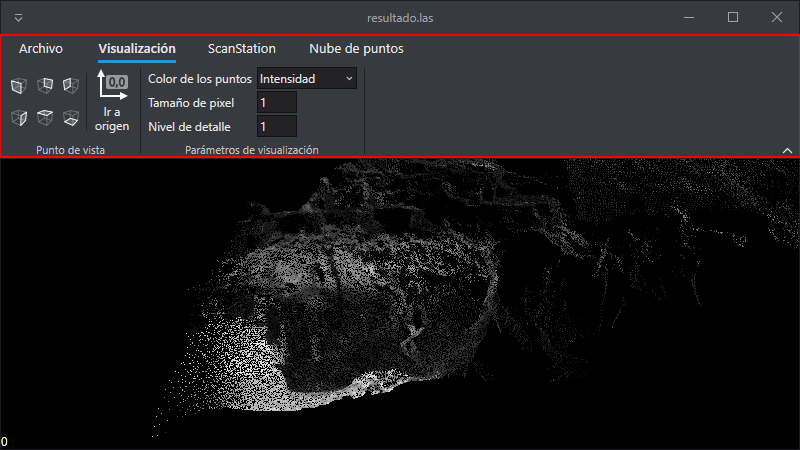
Al pulsar en cada una de las pestañas el ribbon muestra una serie de ventanas relacionadas con dicha pestaña. En el ejemplo anterior podemos ver que está seleccionada la pestaña Visualización y el programa está mostrando todas las herramientas relacionadas con visualización.
Dispone de las siguientes pestañas:
Archivo
Al pulsar sobre la pestaña Archivo se muestra un menú lateral con las siguientes opciones:
Cargar archivo
Al pulsar la opción Cargar Archivo el programa muestra el cuadro de diálogo "Selecciona el archivo a cargar" que permite cargar un archivo .LAS generado por el propio programa.
No se puede cargar cualquier archivo .LAS, únicamente se podrán cargar los archivos .LAS generados por el propio programa al pulsar el botón Escanear de la pestaña ScanStation.
Cargando archivo y parámetros de visualización
Opciones
Al pulsar el botón Archivo, se nos muestra una ventana con las opciones de configuración del programa donde modelos configurar los siguientes aspectos:
- Parámetros del escáner.
- Parámetros del archivo base.
- Parámetros de creación de escaneo por comparación.
- Parámetros de visualicación.
- SpaceMouse.
- Licenciamiento.
Parámetros del escáner
En esta sección de la configuración se configuran los parámetros específicos del escáner Leica ScanStation.
| Parámetro | Descripción |
|---|---|
| Número de serie del escáner | Introduce aquí el número de serie del escáner para que los comandos los reciba el dispositivo correspondiente. |
| Proyecto | Nombre del proyecto que creará Lot Of Points dentro de la memoria del escáner. Este proyecto se creará y eliminará en cada escaneo, de manera que no introducir en este campo el nombre de un proyecto generado manualmente en el dispositivo pues se eliminará automáticamente. |
| Resolución de escaneo | El desplegable muestra las posibles opciones de escaneo de que dispone el escáner. |
Parámetros del archivo base
En esta sección de la configuración se configuran los parámetros del archivo base (archivo contra el cual se comparan los escaneos solicitados a petición).
| Parámetro | Descripción |
|---|---|
| Archivo base | Ruta al archivo base. Este archivo son en realidad dos archivos: uno con extensión .index y otro con extensión .index.points. Al pulsar el botón de los tres puntos podremos seleccionar un archivo .index. Al aceptar se rellenará automáticamente este campo con la ruta del archivo seleccionado, pero sin extensión. |
| Distancia por debajo de la cual no insertar puntos | Distancia por debajo de la cual no se insertarán puntos en el archivo base al incorporar un escaneo, para evitar que se almacenen puntos a una distancia inferior a la resolución del escáner. |
Parámetros de creación de escaneo por comparación
En esta sección de la configuración se configuran los parámetros de creación del archivo de comparación.
| Parámetro | Descripción |
|---|---|
| Directorio de salida | Directorio en el que se almacenarán los archivos .LAS generados al pulsar el botón Escanear de la pestaña ScanStation. El programa generará archivos cuyo nombre será la fecha y hora del escaneo con extensión .LAS. |
| Distancia máxima | Los puntos almacenados en los archivos .LAS tienen como metadato la distancia al punto más cercano localizado en el archivo base. Si la distancia del punto al punto más cercano en el archivo base es superior a este valor, el punto no se almacena en el archivo .LAS. |
Parámetros de visualización
En esta sección de la configuración se configuran los parámetros de configuración de la visualización.
| Parámetro | Descripción |
|---|---|
| MB de consumo de memoria tarjeta gráfica | Este parámetro indica la cantidad de MB que se le permite al programa consumir de la tarjeta gráfica. Mientras mayor sea este número, menor será el número de veces que se requerirá descargar zonas no visibles para poder cargar zonas que se van a visualizar. No superar el tamaño de la memoria de la tarjeta gráfica. |
SpaceMouse
En esta sección de la configuración se configuran los parámetros del dispositivo SpaceMouse.
| Parámetro | Descripción |
|---|---|
| Velocidad de movimiento | Factor de velocidad a aplicar al movimiento de desplazamiento con el dispositivo SpaceMouse. Valores menores hacen que el desplazamiento sea más lento, pero más preciso. |
| Velocidad de rotación | Factor de velocidad a aplicar al movimiento de rotación con el dispositivo SpaceMouse. Valores menores hacen que las rotaciones sean más lentas, pero más precisas. |
Licenciamiento
En esta sección de la configuración se configuran los parámetros de la licencia del producto.
| Parámetro | Descripción |
|---|---|
| Key ID | Introduce aquí el Key ID de la llave de protección de Digi21 a utilizar. Puedes averiguar el Key ID entrando en http://localhost:1947/int/devices.html |
Visualización
La pestaña Visualización proporciona comandos relacionados con la visualización de la nube de puntos, así como de posición/orientación de la cámara.
Dispone de los siguientes grupos:
Punto de vista
Este grupo agrupa comandos para cambiar la orientación y posición de la cámara.
Dispone de los siguientes botones:
| Botón | Descripción |
|---|---|
| Frontal | Orienta la cámara hacia el frente del escáner. |
| Trasero | Orienta la cámara hacia la parte trasera del escáner. |
| Izquierda | Orienta la cámara hacia la izquierda del escáner. |
| Derecha | Orienta la cámara hacia la derecha del escáner. |
| Arriba | Orienta la cámara hacia arriba del escáner. |
| Abajo | Orienta la cámara hacia abajo del escáner. |
| Ir a origen | Desplaza la cámara a la posición del escáner |
Parámetros de visualización
Este grupo agrupa comandos para controlar los parámetros de visualización de la nube de puntos.
Dispone de las siguientes opciones:
| Opción | Descripción |
|---|---|
| Color de los puntos | Permite especificar si visualizar los puntos por intensidad o por distancia al escaneo base. Si se selecciona la opción de distancias, aparecerá en la ventana de visualización un "desplazable" que permitirá cambiar la escala de color para hacer que los puntos que estén a una distancia igual o superior a la especificada en el "desplazable" se visualicen de color rojo. |
| Tamaño del píxel | Permite cambiar el tamaño de los puntos visualizados en pantalla. |
| Nivel de detalle | Permite especificar nivel de detalle (tamaño proyectado en pantalla mínimo que debe ocupar un punto para que el programa lo represente). Los puntos tienen asociado un tamaño (en función del nivel piramidal en el que estén alojados). Antes de mostrarlos el programa calcula el tamaño en píxeles que tendrán estos puntos en pantalla. Los puntos que tengan un tamaño proyectado inferior al configurado en este parámetro no se mostrarán. Valores altos en este campo harán que la visualización sea más fluida si la tarjeta gráfica es lenta, pero se mostrarán menos puntos. |
ScanStation
La pestaña ScanStation permite interactuar con el escáner.
Dispone de un único botón:
Escanear
Al pulsar este botón el programa realiza las siguientes tareas:
- Ordena al escáner a realizar un escaneo con los parámetros especificados en Parámetros de creación de escaneo por comparación.
- Descarga el escaneo de la memoria del escáner.
- Elimina el escaneo de la memoria del escáner.
- Compara el escaneo recién descargado contra el archivo base para obtener las distancias de cada uno de los puntos al escaneo base.
- Genera un archivo .LAS con la información de distancias.
- Carga el archivo .LAS para mostrarlo en la ventana de visualización.
Escaneando
Nube de puntos
La pestaña Nube de puntos proporciona herramientas para la manipulación de la nube de puntos.
Dispone de un único botón:
Incorporar este escaneo
Al pulsar el botón Incorporar este escaneo se añadirán los puntos de este escaneo al archivo base de manera que, si se escanease exactamente este archivo otra vez, todos los puntos tendrían una distancia 0.
Este es un proceso que requiere tiempo de procesamiento, de manera que el programa muestra un panel en el que va mostrando el proceso.
Requerimientos de hardware
El programa requiere los siguientes componentes de hardware:
- Dispositivo SpaceMouse de 3DConnexion. Este dispositivo es el que se utiliza para el movimiento/orientación de la cámara.
- Una tarjeta gráfica moderna compatible con OpenGL 4.0 con 4GB de RAM.
- Ordenador con 32 GB de RAM.
- Leica ScanStation.
Acerca de las llaves de protección
Todos nuestros programas requieren de una llave de protección. En estas llaves de protección almacenamos las licencias de los productos que has comprado, alquilado o para los cuales has solicitado una demostración.
Suite de aplicaciones Licencias
Los instaladores de nuestros programas (Digi3D.NET, MDTopX, Topcal21) instalan varios componentes en el proceso de instalación. Uno de estos componentes es la Suite de Aplicaciones Licencias. Si estás utilizando un instalador antiguo que no incorpora esta suite, puedes descargarla de este enlace, pero si acabas de descargar cualquiera de nuestros programas no será necesario, pues ya está incluida.
Esta suite instala varios componentes: El controlador de la llave de protección y una serie de programas que te van a permitir comprobar el estado de tu llave de protección, activar ordenadores en tu llave de protección, etc.
A continuación, los programas que forman parte de la Suite de aplicaciones Licencias:
- Activar ordenador
- Activar ordenador Offline
- Consolidar alquiler
- Consolidar alquiler Offline
- Comprimir llave
- Comprobar licencias
- Elimina activaciones y alquileres
Si vas a instalar la llave en un ordenador sin conexión a internet
Algunos de estos programas (Activar ordenador y Consolidar alquiler) requieren una conexión a internet para poder realizar sus tareas. Si el equipo en el que vas a instalar la llave de protección no tiene conexión a internet, podrás utilizar estos programas en modo offline (Activar ordenador Offline y Consolidar alquiler Offline), pero estos programas offline necesitarán de unos archivos que tendrás que generar en un ordenador que sí que tenga una conexión a internet. En este caso, tendrás que instalar en un ordenador que sí que tiene conexión a internet la suite de programas Licencias para ordenadores con internet.
Esta suite está compuesta por los programas:
Estos programas generarán los archivos que requieren los programas Activar ordenador Offline y Consolidar alquiler Offline respectivamente.
Obtener una llave de protección
Obtener una llave de protección es muy sencillo:
-
Si dispones de una llave de protección Hasp HL (de color verde) con alguno de nuestros programas adquiridos antes de 1 de octubre de 2014, como por ejemplo Digi3D 2007, tenemos que hacerle alguna modificación para poder solicitar demostraciones, alquilar o actualizar a nuestros programas modernos. Para ello, sigue los pasos que aparecen en Actualización de tu llave de protección Hasp HL.
-
Si no dispones de una llave, puedes crearte tú mismo una llave provisional de software (que tendrá una duración máxima de tres meses) transcurridos los cuales tendrás que adquirir una llave de protección en nuestra tienda Tienda online.
-
También puedes comprar una llave permanente en nuestra Tienda online.
- Selecciona la opción Llave de protección Hasp HL Pro si quieres una llave de hardware. Te recomendamos esta opción si estás en España y no tienes pensado enviar la llave de protección a otro país y si no te importa esperar uno o dos días a que te llegue la llave de protección por mensajería.
- Selecciona la opción Hasp SL (por software) si quieres una llave por software. Te recomendamos esta opción si estás fuera de España o si quieres tener acceso inmediato a nuestros programas o si piensas enviarla a otra persona por correo electrónico.
Aprende más acerca de los tipos de llaves de protección (hardware vs software en: Tipos de llaves de protección.
Obtener una licencia para utilizar uno de nuestros programas
Una vez que dispones de una llave de protección, puedes hacer lo siguiente:
- Solicitar una demostración de alguno de nuestros programas.
- Alquilar alguno de nuestros programas.
- Comprar una licencia o una subscripción de soporte técnico de alguno de nuestros programas.
Tipos de llaves de protección
Existen dos tipos de llaves de protección: Por hardware y por software. Cada una tiene sus ventajas con respecto a la otra.
La llave de protección por hardware da sensación de posesión, porque la puedes tocar, es un elemento tangible. La llave de protección por software por el contrario no, pero ésta es más rápida que la de hardware y además la puedes enviar por correo electrónico a un colaborador situado en otro país en el momento, lo que le da una ventaja muy importante con respecto a la de hardware. La de software además no ocupa ningún puerto USB y no se puede robar a menos que te roben el ordenador completo, la de hardware es más susceptible a ser robada.
En la siguiente tabla tienes un resumen de las ventajas y desventajas de ambas llaves.
| Ventaja | Hardware | Software |
|---|---|---|
| Sensación de posesión | Si | No |
| Disponibilidad | Lenta. Cuando compras una llave tienes que esperar a que Safenet nos la envíe, que la programemos y te la enviemos. El proceso puede demorar una semana. | Inmediata. Tú mismo puedes crear una llave de protección por software provisional siguiendo los pasos de Creando una llave de software provisional. Una vez realizados esos pasos puedes comenzar a utilizarla inmediatamente. Esa llave de protección provisional caducará a los 90 días, momento en el cual tendremos que convertirla en una llave permanente (el proceso puede llevar máximo una hora). |
| Velocidad | Lenta | Rápida |
| Movilidad | Se puede cambiar de ordenador extrayéndola y conectándola en otro ordenador. | Se puede cambiar de ordenador mediante el programa ActualizarLlaveLDK disponible en la suite de aplicaciones Licencias. |
| Restricciones a la movilidad | Ninguna | Únicamente permitiremos activar una llave por software en otro ordenador si ha caducado la fecha de activación en el ordenador en el que estaba instalada previamente. |
| Seguro antirrobo | Si, siempre que no la hayas activado por más de un mes. Nuestra recomendación es que la actives cada mes. Si en nuestros servidores comprobamos que la llave robada no está activada por más de un mes, bloquearemos la llave robada para que no se pueda volver a activar nunca más y añadiremos la licencia a la nueva llave que compres. | |
| Nuestra recomendación | Para empresas sin movilidad geográfica. | Para empresas con movilidad geográfica que requieran enviar la licencia a un empleado o colaborador remoto. |
En la siguiente tabla te mostramos cuándo incluimos una llave de protección y qué hacer con tus llaves de protección antiguas si decides actualizar a alguno de nuestros programas con fecha posterior a 1 de octubre de 2014.
| Producto que quiero adquirir | Dispongo de una llave | |
|---|---|---|
| Compra de un producto nuevo, por ejemplo, una licencia de MDTopX | No dispongo de llave de protección. | Con el precio de la compra de un programa nuevo incluimos una llave de protección a tu elección (software o hardware). |
| Compra de un producto nuevo, por ejemplo, una licencia de MDTopX | Hasp HL | Si ya dispones de una llave de protección (Hasp HL) y quieres que añadamos el programa comprado en esa llave de protección, añadiremos la licencia en esa llave. |
| Compra de un producto nuevo, por ejemplo, una licencia de MDTopX | Llave de protección por software | Si ya dispones de una llave de protección por software y quieres que añadamos el programa comprado en esa llave de protección, añadiremos la licencia en esa llave. |
| Alquiler | No dispongo de llave de protección. | Puedes crear una llave de protección por software provisional. Esta llave de protección caducará a los 90 días, momento en el cual tendrás que o convertirla en permanente o comprar una llave de protección por hardware si quieres seguir alquilando. |
| Alquiler | Hasp HL | Almacenaremos los archivos de licencia en tu llave Hasp HL si así lo deseas. |
| Alquiler | Llave de protección por software | Almacenaremos los archivos de licencia en tu llave de protección por software si así lo deseas. |
| Actualización y/o un año de soporte técnico. | Hardlock/Hasp (azul) | Tu llave de protección no es compatible con las versiones nuevas de nuestros programas, por lo tanto la tenemos que sustituir. El precio de la actualización y/o un año de soporte técnico no incluye la llave de protección, por lo tanto, tienes que comprar una llave de protección (de software o de hardware) y enviarnos tu llave antigua a: Digi21. |
| Actualización y/o un año de soporte técnico. | Hasp HL | Almacenaremos la actualización en tu llave de protección. Esta actualización no afecta a las licencias que tiene tu llave de protección existente, de modo que podrás seguir utilizando tus programas antiguos. |
| Actualización y/o un año de soporte técnico. | Llave de protección por software | Almacenaremos la actualización en tu llave de protección. |
Obtener una llave de protección
Actualizando tu llave de protección
Actualización de tu llave de protección Hasp HL
Sigue las siguientes instrucciones si ya dispones de una llave de protección Hasp HL.
Una vez finalizados los siguientes pasos tendrás instalado el controlador de protección y habremos introducido en tu llave de protección los parámetros necesarios para poder ejecutar programas publicados con fecha posterior a 1 de octubre de 2014.
Este proceso no elimina información de tu llave, de modo que si en ésta tienes una licencia de Digi3D 2007 por ejemplo, seguirás teniéndola. No se va a modificar nada referente a versiones anteriores, únicamente vamos a preparar la llave de protección para utilizarla con aplicaciones publicadas con fecha posterior a 1 de octubre de 2014.
-
Instala si no lo tienes ya instalado el programa que quieres utilizar:
Los instaladores de estos programas instalan entre otras cosas la Suite de aplicaciones Licencias. Si estás utilizando un instalador antiguo que no lo incluya, descarga e instala la Suite de aplicaciones Licencias.
-
Haz clic en este enlace: http://localhost:1947/_int_/devices.html. Aparecerá una página web titulada Sentinel Admin Control Center.
En el contenido principal de la página verás una tabla con varias columnas: Location, Vendor, Key ID, Key Type, Configuration, Version, Sessions y Actions. -
Asegúrate de que tienes conectada la llave de protección en su correspondiente puerto USB. La llave tiene un piloto que debe estar encendido. Si no está encendido, desconéctala y vuélvela a conectar. Espera un rato a que se instale su controlador. Si no se enciende, prueba en otro puerto USB. Si sigue sin encenderse ponte en contacto con el soporte técnico de Digi21 en la siguiente dirección: http://soporte.digi21.net
-
En la tabla aparecerá tantas llaves de protección como se localicen tanto en tu propio ordenador como en la red de la empresa (si es que el ordenador está conectado a la red).
-
Localiza tu llave de protección. Será la única que tiene las siguientes características:
Location Local Vendor 78585 -
Comprueba que en la columna Version tienes el valor 3.25 o superior.
Si el valor que aparece en esta columna es inferior a 3.25, sigue los pasos del tutorial Actualizando el firmware de tu llave de protección Hasp HL. -
Descarga ejecuta el programa ActualizarLlaveLDK.exe
Este programa sirve para analizar tu llave de protección y crear un archivo que nos va a permitir reprogramarla remotamente. -
Aparecerá el programa Sentinel HASP RUS. Este programa tiene dos pestañas: Collect Key Status Information y Apply License Update.
-
En la pestaña Collect Key Status Information pulsa el botón Collect Information.
-
Aparece el cuadro de diálogo Save Key Status As.
Este cuadro de diálogo te va a permitir indicar la ubicación y nombre del archivo .c2v que nos vas a enviar. -
Indica la ubicación y nombre del archivo .c2v a crear.
-
Envíanos el archivo que acabas de crear a la dirección de correo electrónico: info@digi21.net o a la dirección de correo electrónico desde la que te hemos solicitado estos archivos junto con la siguiente información:
- Nombre de la empresa.
- N.I.F.
- Dirección.
- Código postal.
- Persona de contacto.
- Teléfono.
- Correo electrónico.
Te responderemos mediante correo electrónico con las instrucciones a seguir.
Actualizando el firmware de tu llave de protección Hasp HL
Si la versión del firmware de tu llave de protección es inferior a 3.25, debes actualizarla a esta versión. Este cambio se realiza mediante el programa Hasp HL Firmware Update. Es un proceso rápido y seguro que actualiza el firmware de tu llave sin afectar a la información que ya tiene la llave de protección, de modo que no vas a perder ningún programa de versiones anteriores que tuviera la llave.
Sigue los siguientes pasos:
- Descarga, descomprime y ejecuta Hasp HL Firmware Update.
- Aparecerá una ventana titulada Sentinel HASP Rus.
- Pulsa el botón Apply Update.
El programa comenzará a actualizar la llave de protección. No desconectes la llave de protección del ordenador mientras se actualiza la llave de protección.
El proceso puede durar varios minutos. - Cuando termine el proceso de actualización el programa lo comunicará con el mensaje Update written successfully.
Creando una llave de software provisional
Si no dispones de una llave de protección Hasp HL tendrás que crear una llave de protección temporal en tu ordenador. Esta llave es una llave de software, de modo que no es necesario que te enviemos ningún hardware y podrás comenzar a utilizar nuestras aplicaciones rápidamente.
Cuando finalices este tutorial, tendrás instalada en tu ordenador una llave de protección temporal con una duración máxima de 90 días. Este tipo de llaves se utilizan para evaluación (tanto del programa como del ordenador donde se instala). Transcurridos los 90 días sin tener ningún problema de hardware tendremos que convertirla en una llave de protección permanente:
-
Instala si no lo tienes ya instalado el programa que quieres utilizar:
Los instaladores de estos programas instalan entre otras cosas la Suite de aplicaciones Licencias. Si estás utilizando un instalador antiguo que no lo incluya, descarga e instala la suite de aplicaciones Licencias.
-
Descarga el archivo Digi21Demo.v2c. Este archivo contiene la información necesaria para crear una llave provisional.
-
Haz clic en este enlace: http://localhost:1947/_int_/checkin.html. Aparecerá una página web titulada Safenet Admin Control Center.
-
Pulsa el botón Examinar... Aparecerá el cuadro de diálogo Elegir archivos para cargar.
-
Selecciona el archivo Digi21Demo.v2c que has descargado en el punto 2 y pulsa el botón Abrir.
-
Pulsa el botón Apply File.
Ya tienes tu llave de protección provisional. Esta llave no dispone ni de alquileres ni de compras de ninguno de nuestros programas. Puedes ver su contenido con el programa Comprobar licencias.
A continuación, tienes que registrar la llave de protección que se acaba de crear en tu panel:
- Entra en Registrar y sigue las instrucciones que aparecen allí.
Ahora tendrás que asignar una contraseña de activación a tu llave de protección:
- Entra en Mis llaves.
- Localiza tu llave de protección en el listado de llaves de protección, rellena el campo "Contraseña de activación" con una contraseña (no tiene por qué coincidir con tu contraseña de conexión con nuestra página web), y a continuación pulsa el botón Cambiar.
Si dispones de más de una llave de protección, te recomendamos que asignes un alias a cada llave para poderla identificar en tu panel. Para ello:
- Entra en Mis llaves.
- Localiza la llave de protección a la que quieres asignar un alias, rellena el campo Alias y pulsa el botón Cambiar.
Para comenzar a utilizar el programa puedes hacer una de las siguientes tareas:
- Comprar o actualizar un programa.
- Alquilar un programa.
- Solicitar una demostración.
Convirtiendo una llave provisional en permanente
Si has decidido comprar una llave de software, sigue las siguientes instrucciones:
- Compra la llave siguiendo este enlace (selecciona la opción Llave de protección Hasp SL por software).
- Descarga ejecuta el programa ActualizarLlaveLDK.exe
Este programa sirve para analizar tu llave de protección y crear un archivo que nos va a permitir reprogramarla remotamente. - Aparecerá el programa Sentinel HASP RUS. Este programa tiene dos pestañas: Collect Key Status Information y Apply License Update.
- En la pestaña Collect Key Status Information pulsa el botón Collect Information.
- Aparece el cuadro de diálogo Save Key Status As.
Este cuadro de diálogo te va a permitir indicar la ubicación y nombre del archivo .c2v que nos vas a enviar. - Indica la ubicación y nombre del archivo .c2v a crear.
- Envíanos el archivo que acabas de crear a la la dirección de correo electrónico: info@digi21.net junto con la siguiente información:
- Nombre de la empresa.
- N.I.F.
- Dirección.
- Código postal.
- Persona de contacto.
- Teléfono.
- La dirección de correo electrónico que utilizas para conectarte a nuestra web www.digi21.net.
Te responderemos mediante correo electrónico con las instrucciones a seguir.
Comprar una llave de hardware
Si has decidido comprar una llave de hardware, sigue las siguientes instrucciones:
- Compra la llave siguiendo este enlace (selecciona la opción Llave de protección Hasp HL Pro).
- Envíanos un correo electrónico a info@digi21.net indicándonos los siguientes datos:
- Nombre de la empresa.
- N.I.F.
- Dirección de entrega de la llave de protección.
- Código postal.
- Persona de contacto.
- Teléfono.
- La dirección de correo que utilizas para conectarte a nuestra web www.digi21.net
En la mayor brevedad posible te enviaremos la llave de protección a la dirección indicada y añadiremos la llave de protección la sección Mis Llaves del usuario de www.digi21.net que nos hayas indicado.
Alquileres
Si ya dispones de una llave de protección (por hardware o software), puedes alquilar alguna licencia de nuestros programas. Para ello será necesario que tengas a mano el Key ID de tu llave de protección. Puedes obtener el KeyID de tu llave de protección haciendo clic en el siguiente enlace: Sentinel Keys.
En la siguiente tabla te mostramos las versiones que podrás utilizar cuando alquilas un programa:
| Tipo de licencia | Fecha máxima de uso | Versión del programa | Requisito para comprar |
|---|---|---|---|
| Alquiler | Hasta la fecha máxima de alquiler | Siempre la última versión del programa. | Ninguno |
El proceso de alquiler es muy sencillo:
- Compra un alquiler en nuestra tienda de alquileres.
- Espera a que te llegue un correo electrónico con el título Confirmación de alquiler en el que te indicaremos que lo tenemos todo preparado. Si no te llega este correo inmediatamente no nos llames ni nos envíes ningún correo, puede tardar un poco.
- Ejecuta el programa Consolidar alquiler que almacenará las licencias en tu llave de protección.
Aviso de que el alquiler está a punto de expirar
7 días antes de que expire tu período de alquiler te mostraremos cada vez que ejecutes el programa una ventana indicándote el número de días restantes de alquiler para recordarte que te quedan pocos días.
A continuación, te mostramos cómo avisa Digi3D.NET de que quedan pocos días de alquiler:

Compras y subscripciones de soporte técnico
Si ya dispones de una llave de protección (por hardware o software), puedes comprar una licencia de cualquiera de nuestros programas. Si no dispones de una llave de protección, puedes crear una llave provisional siguiendo los pasos que aparecen en Creando una llave de software provisional.
En la siguiente tabla te mostramos las versiones que podrás utilizar en función de si has adquirido un programa nuevo o has comprado un año de soporte técnico y actualizaciones, así como el requisito para poder comprar cada uno de los productos.
| Tipo de licencia | Fecha máxima de uso | Versión del programa | Requisito para comprar |
|---|---|---|---|
| Compra | Infinita | Versiones publicadas hasta dos años (fecha de expiración de soporte técnico) después de la fecha de compra. Si publicamos con posterioridad una versión nueva de nuestros programas, no podrás utilizarla, por lo tanto, deberás conservar una versión publicada con fecha anterior a tu fecha de expiración de soporte técnico. | Ninguno |
| Compra de un año de soporte técnico y actualizaciones. | Infinita | Versiones publicadas hasta un año (fecha de expiración de soporte técnico) después de la fecha de compra. Si publicamos con posterioridad una versión nueva de nuestros programas, no podrás utilizarla, por lo tanto, deberás conservar una versión publicada con fecha anterior a tu fecha de expiración de soporte técnico. | Disponer de un producto comprado (independientemente de su versión) y ser el propietario original de ese producto. Si has comprado una licencia a un tercero, no tienes permiso para adquirir este producto, únicamente podrás alquilar. |
Aviso de que el período de soporte técnico está a punto de expirar
Un mes antes de la fecha de expiración de tu soporte técnico, te mostraremos un cuadro de diálogo cada vez que ejecutes el programa indicándote de que el soporte técnico va a expirar. Además, te enviaremos un correo electrónico recordándote de que tu soporte técnico está a punto de expirar y aconsejándote de que descargues y mantengas en lugar seguro una copia de seguridad del instalador del programa, pues nosotros no conservamos ningún histórico de instaladores.
A continuación, te mostramos cómo comunica Digi3D.NET al usuario que su subscripción de soporte técnico y actualizaciones está a punto de expirar:

Programas relacionados con llaves
Solución de problemas
Demostraciones
Si quieres probar alguno de nuestros programas tan solo tienes que solicitárnoslo mediante la página Solicitar demostración.
Para ello necesitarás disponer de una cuenta en https://www.digi21.net y de disponer de una llave de protección de Digi21. En cuanto tengamos preparadas las licencias te enviaremos un correo electrónico para que consolides el alquiler en tu llave de protección y puedas comenzar a utilizar el programa.
Vea también
Compras y subscripciones de soporte técnico
Operaciones con las llaves
Actualización de tu llave de protección Hasp HL
Programas relacionados con licencias y llaves de protección
Activar ordenador
Este programa activa un ordenador en una determinada llave de protección. Este programa requiere de una conexión a Internet. Si el ordenador que pretendes activar en la llave de protección no dispone de conexión a internet, utiliza el programa Activar ordenador Offline.
Sigue los siguientes pasos para activar un ordenador en una determinada llave de protección:
-
Pulsa el botón de Inicio/Programas/Digi21.NET/Licencias/Activar Ordenador. Aparecerá el programa Activar Ordenador.
-
Verás la página Activar Ordenador que te muestra una presentación del programa. Pulsa el botón Siguiente.
-
Aparecer la página Selecciona llave de protección. Puedes comprobar que el botón Siguiente está deshabilitado. Se habilitará cuando selecciones una llave de protección de la lista de llaves que aparecen en esta página. Selecciona la llave para la cual quieres comprobar sus licencias y pulsa el botón Siguiente.
-
Transcurridos unos segundos aparecerá la página Selecciona la fecha máxima de activación. Aquí debes indicar la fecha máxima para la cual quieres activar el ordenador en el que estás ejecutando el programa Activar Ordenador en esa llave de protección.
Si tu llave de protección es por software, debes de tener en cuenta lo siguiente:
Únicamente vas a poder activar un ordenador simultáneamente en tu llave de protección por software y además, únicamente podrás cambiar la llave de protección de ordenador si la activación en el último ordenador donde la activaste ha expirado.
En la siguiente captura de pantalla te mostramos una llave de protección en la que hemos realizado un alquiler de un año. Si se pulsa siguiente, se activará la llave de protección hasta el día 16 de septiembre de 2014 a las 21:08. Lo que significa que a partir de esa hora podremos mover la llave de protección a otro equipo. Si activaramos hasta el día 16 de septiembre de 2015, no podríamos mover la llave de protección a otro equipo en un año.
Si pierdes tu llave de protección o te la roban (independientemente de si es por software o hardware) únicamente re repondremos la llave de protección a partir de la fecha de expiración del último ordenador en el que la activaste (cada vez que activas un ordenador almacenamos la fecha máxima de activación en nuestros servidores).
Selecciona la fecha máxima de activación y pulsa el botón Siguiente.
-
El programa te solicitará la contraseña de activación de la llave de protección (si no recuerdas o no has asignado aún una contraseña de activación para esa llave de protección en tu panel de llaves de protección, hazlo siguiendo este enlace: Mis Llaves). Teclea la contraseña de activación de esa llave de protección y pulsa el botón Siguiente.
-
El programa activará tu ordenador en la llave de protección indicada o te mostrará un mensaje de error si la contraseña es incorrecta o si la llave de protección no tiene permiso para instalarse.
Vídeo
Activar ordenador Offline
Este programa realiza la misma función que el programa Activar ordenador, pero en ordenadores que tienen restringido el acceso a Internet.
El proceso de activación siempre requiere acceso a Internet, pero con este programa se elimina el requisito de que el ordenador que se está activando tenga acceso a internet, y ese requisito se traslada a otro programa que puede ejecutarse en otro ordenador que sí que tiene acceso a Internet.
Supongamos que disponemos de dos ordenadores: A y B. Queremos activar el ordenador A en una determinada llave de protección conectada o accesible por la red a este ordenador, pero este ordenador tiene restricciones de acceso a internet. El ordenador B es un ordenador (posiblemente gestionado por el administrador de la red) que sí que tiene acceso a Internet.
El proceso de activación consiste en tres fases:
- En el ordenador A ejecutamos el programa Activar Ordenador Offline y generamos un Archivo de solicitud de activación.
- En el ordenador B ejecutamos el programa Crear Archivo de Activación que analiza el archivo generado en el paso anterior y se comunica con nuestros servidores y genera un Archivo de Activación de Ordenador.
- En el ordenador A ejecutamos el programa Activar Ordenador Offline que activará el ordenador en la llave de protección con archivo creado en el paso anterior.
Crear archivo Activación
Este programa crea un archivo de activación de ordenador a partir un archivo de solicitud de activación generado con el programa Activar ordenador Offline.
El ordenador en el que se ejecuta este programa no tiene por qué tener ningún programa de Digi21 instalado ni licencia de ningún producto de Digi21. El único requisito es que disponga de conexión a internet.
Consolidar alquiler
Este programa descarga de nuestros servidores las licencias de los alquileres que acabas de adquirir y las almacena en tu llave de protección.
Si el ordenador en el que tienes la llave de protección en la que quieres programar los alquileres no dispone de conexión a internet, utiliza el programa Consolidar alquiler Offline.
Sigue los siguientes pasos para añadir a tu llave de protección las licencias que has alquilado:
- Pulsa el botón de Inicio/Programas/Digi21.NET/Licencias/Consolidar Alquiler. Aparecerá el programa Consolidar Alquiler.
- Verás la página Consolidar Alquiler que te muestra una presentación del programa. Pulsa el botón Siguiente.
- Aparecer la página Selecciona llave de protección. Puedes comprobar que el botón Siguiente está deshabilitado. Se habilitará cuando selecciones una llave de protección de la lista de llaves que aparecen en esta página. Selecciona la llave para la cual quieres añadir los alquileres que has comprado y pulsa el botón Siguiente.
- Transcurridos unos segundos aparecerá la página Llave programada satisfactoriamente indicándote que el proceso ha finalizado correctamente.
Puedes comprobar las fechas de expiración de los alquileres que acabas de programar en la llave de protección con el programa Comprobar licencias.
Vídeo
Consolidar alquiler Offline
Este programa permite programar en una llave de protección los alquileres adquiridos en ordenadores sin conexión a internet.
El proceso para añadir alquileres a una llave de protección en un ordenador sin conexión a internet consta de dos fases:
- En un ordenador con conexión a internet ejecutas el programa Obtener Archivos Licencia. Este programa generará un archivo de licencia.
- En el ordenador con la llave de protección y sin acceso a internet ejecutar el programa Consolidar Alquiler Offline seleccionando el archivo de licencia obtenido en el paso anterior.
Una vez finalizado el proceso, puedes comprobar el estado de la llave de protección con el programa Comprobar licencias.
Obtener Archivos Licencia
Este programa se comunica con el servidor de licencias de Digi21 y obtiene un archivo de licencia con los alquileres de una determinada llave.
Este archivo se puede utilizar con posterioridad con el programa Consolidar alquiler Offline para programar los alquileres en la llave de protección.
Este programa requiere conexión a internet para obtener las licencias.
Si el equipo con la llave de protección en la que se quieren programar los alquileres dispone de conexión a internet, utiliza mejor el programa Consolidar alquiler pues este programa la llave de protección sin necesidad de crear ningún archivo.

Para obtener los archivos de licencia con los alquileres que se acaban de adquirir para una determinada llave de protección sigue los siguientes pasos:
- Ejecuta el programa Obtener archivos licencia que encontrarás en Inicio/Programas/Digi21.net/Licencias/Obtener archivos de licencia.
- Introducir el Key ID de la llave de protección.
- Indicar la ruta del archivo de licencia a crear. Los archivos de licencia tienen extensión .lic.
- Pulsar el botón Generar licencias.
Una vez obtenido el archivo de licencia, tienes que programar la llave con el programa Consolidar alquiler Offline.
Comprobar licencias
Este programa te permite comprobar las licencias de tu llave de protección.
Sigue los siguientes pasos para comprobar las licencias almacenadas en una determinada llave de protección:
- Pulsa el botón de Inicio/Programas/Digi21.NET/Licencias/Comprobar Licencias. Aparecerá el programa Comprobar Licencias.
- Verás la página Selecciona llave de protección. Puedes comprobar que el botón Siguiente está deshabilitado. Se habilitará cuando selecciones una llave de protección de la lista de llaves que aparecen en esta página. Selecciona la llave para la cual quieres comprobar sus licencias y pulsa el botón Siguiente. Transcurridos unos segundos aparecerá la página Propiedades de la llave de protección.
A continuación, te mostramos los campos que puede mostrar el programa y la condición para que se muestren:
| Campo | Descripción | Condición |
|---|---|---|
| Key ID | Número de serie de la llave de protección | Este campo se muestra siempre. |
| Registrada a | Nombre del propietario de la llave de protección. | Este campo se muestra siempre. |
| Teléfono | Número de teléfono del propietario de la llave de protección. | Este campo se muestra siempre. |
Dirección de correo electrónico del propietario de la llave de protección. | Este campo se muestra siempre. | |
| Fin del soporte técnico para: XXX | Fecha de expiración del soporte técnico por compra del producto XXX. | Se muestra únicamente si compraste un determinado producto. Aparecerán tantos campos como productos hayas adquirido. |
| Fin del alquiler para: XXX | Fecha de expiración del alquiler del producto XXX. | Se muestra únicamente si dispones de algún alquiler activo en tu llave de protección. |
| Ordenador activado hasta: fecha/hora | Fecha y hora hasta el cual está activado el ordenador en el que estás ejecutando el programa Comprobar Licencias en la llave de protección seleccionada. | Se muestra únicamente si el ordenador en el que estás ejecutando el programa Comprobar Licencias está activado en tu llave de protección. |
Vídeo
Selecciona llave
Este programa permite especificar con qué llave de protección debe conectarse un programa en particular.
Todas nuestras aplicaciones (Digi3D.NET, Topcal21, MDTopX,...) instalan un programa denominado Seleccionar Llave que permite especificar con qué llave de protección debe conectarse el programa.
Si dispones de varias llaves de protección y no configuras una llave de protección en particular para un determinado programa, éste se conectará con la primera disponible, y es posible que la llave de protección con la que se conecte no disponga de licencia para ese programa.
Supongamos que dispones de dos llaves de protección, A y B. En la llave A tienes adquirida una licencia de Digi3D.NET, y en la llave de protección B tienes un alquiler de MDTopX.
Si no has configurado MDTopX para que se conecte con la llave de protección B, es posible que éste al ejecutarse localice primero la llave de protección A, mostrándote el mensaje Soporte técnico finalizado.
Para solucionar este problema deberás indicarle a MDTopX que debe utilizar la llave de protección B. Esto lo puedes hacer con el programa Seleccionar Llave que encontrarás en Inicio/Todos los programas/Digi21.net/MDTopX.
El programa Seleccionar Llave para configurar Digi3D.NET lo puedes encontrar en Inicio/Todos los programas/Digi21.net/Digi3D.NET.
El programa Seleccionar Llave para configurar Topcal21 lo puedes encontrar en Inicio/Todos los programas/Digi21.net/Topcal21.
La página de selección de llave de protección dispone de una casilla de verificación para indicar que no quieres configurar ninguna llave en particular. Si la seleccionas y pulsas el botón Siguiente se eliminará la configuración para una llave en particular dejando el programa en el estado de conectarse con la primera llave de protección disponible.
En la siguiente captura de pantalla puedes ver la página de selección de llave de protección para el programa Digi3D.NET.

Elimina activaciones y alquileres
Este programa formatea la memoria destinada a las activaciones y alquileres/demostraciones de una llave de protección.
El programa requiere que introduzcas la Contraseña de administración de la llave de protección sobre la que estás trabajando. Puedes asignar esta contraseña para una llave de protección en particular en nuestra web en https://www.digi21.net/MisLlaves.
Advertencia:
****Este programa elimina tanto las activaciones como los alquileres/demostraciones. Para recuperar los alquileres/demostraciones hay que ejecutar el programa Consolidar Alquiler después de ejecutar este programa.
Con este programa puedes además comprimir la memoria de la llave de protección en caso de que al intentar activar un ordenador en la llave se te muestre el mensaje de error No hay espacio disponible para almacenar este ordenador en la llave de protección.
Comprimir llave
Las llaves de protección tienen memoria suficiente para almacenar unas 20 activaciones aproximadamente (este valor depende del tamaño del archivo de configuración obtenido al consultar por las características del hardware al ordenador), por lo que podrás conectarla a distintos equipos y activarlos.
Si necesitas activar más de 20 ordenadores, la llave se quedará sin memoria y no quedará más remedio que eliminar las activaciones y comenzar de cero.
Con una llave mono puesto puede que nunca te encuentres con ese problema, pero si dispones de una llave de protección de red, con 250 licencias, por ejemplo, puedes encontrarte con este problema.
Para solucionar el problema debes ejecutar el programa Elimina activaciones y alquileres y marcar la casilla Comprimir la memoria de la llave de protección en la página de contraseña.
Advertencia:
Si activas un ordenador en una llave de protección con la memoria comprimida, no se almacenará la licencia del ordenador completa, sino que se almacenará un hash de la licencia, es decir, un número. Si se produce algún cambio de hardware, como por ejemplo conectar un pendrive en un puerto USB distinto, o una actualización importante del sistema operativo, es posible que este hash cambie, de manera que tendrás que volver a activar el ordenador.
Tienes que tener en cuenta, que los programas publicados con fecha anterior a 22 de junio de 2015 no son compatibles con llaves comprimidas, por lo que debes asegurarte de tener todos los programas actualizados antes de comprimir la llave de protección.
En el momento en el que se comprime la llave de protección, cada vez que activas una llave con el programa Activar Ordenador, éste almacena las licencias de forma comprimida.
Para eliminar la compresión de una llave de protección tienes que volver a ejecutar el programa Eliminar Activaciones y Alquileres, pero y no marcar la casilla Comprimir la memoria de la llave de protección.
Además, hemos hecho que el programa Comprobar Licencias muestre el porcentaje de memoria libre en la llave de protección:

Procedimientos
Recibido archivo V2C
Si has convertido una llave de protección provisional a permanente, o si has comprado algún producto y has indicado que quieres almacenar las licencias en una llave de protección de tu propiedad (independientemente de si esta llave de protección es por software permanente o por hardware), te habremos enviado un archivo con extensión: _.v2_c.
Sigue las siguientes instrucciones para actualizar la memoria de tu llave de protección con el archivo que te hemos enviado:
- Haz clic en el siguiente enlace: http://localhost:1947/_int_/checkin.html. Aparecerá la página web titulada Sentinel Admin Control Center.
- Pulsa el botón Examinar.
- Aparecerá el cuadro de diálogo titulado Elegir archivos para cargar.
- Selecciona el archivo: .v2c que te habremos enviado por correo electrónico y pulsa el botón Abrir.
- Pulsa el botón Apply File.
La llave de protección ahora está como salida de fábrica, lo que significa que se habrán perdido las posibles activaciones de ordenadores que pudieras haber realizado antes de iniciar el proceso de reprogramación de la llave, por lo tanto, tienes que volver a activar el ordenador en la llave de protección siguiendo los siguientes pasos:
- Entra en tu panel de llaves de protección siguiendo el siguiente enlace: Mis Llaves.
- Asigna una contraseña de activación a tu llave de protección.
- Activa tu llave de protección con el programa Activar ordenador si el ordenador en el que vas a instalar la llave dispone de conexión a internet o mediante el programa Activar ordenador Offline si el ordenador no dispone de conexión a internet.
- Comprueba que el ordenador está activado correctamente en tu llave de protección mediante el programa Comprobar licencias.
Envíanos un archivo C2V
Los archivos Client2Vendor contienen el estado de tu llave de protección y es lo que necesitamos para poder hacer modificaciones remotamente.
Cuando hagamos la modificación en tu llave, te enviaremos un archivo Vendor2Client con el que podrás actualizar tu llave de protección tal y como se explica en Recibido archivo C2V.
Para generar un archivo C2V necesitamos que sigas los siguientes pasos en la máquina donde esté ubicada la llave, es decir, si la llave está en un servidor, tendrás que hacer (o el administrador del sistema) este procedimiento con una sesión de escritorio remoto en dicho servidor, si la llave la tienes en local, podrás hacerlo en tu propia máquina:
- Descarga ejecuta el programa ActualizarLlaveLDK.exe
Este programa sirve para analizar tu llave de protección y crear un archivo que nos va a permitir reprogramarla remotamente. - Aparecerá el programa Sentinel HASP RUS. Este programa tiene dos pestañas: Collect Key Status Information y Apply License Update.
- En la pestaña Collect Key Status Information pulsa el botón Collect Information.
- Aparece el cuadro de diálogo Save Key Status As.
Este cuadro de diálogo te va a permitir indicar la ubicación y nombre del archivo .c2v que nos vas a enviar. - Indica la ubicación y nombre del archivo .c2v a crear.
- Envíanos el archivo que acabas de crear a la dirección de correo electrónico: info@digi21.net o a la dirección de correo desde la que te hemos solicitado el archivo C2V.
Solución de problemas
Ordenador no activado
Este mensaje tiene tres posibles causas:
- Que no has activado el programa en el que estás ejecutando el programa que te lo ha mostrado en la llave de protección mostrada.
- Que haya expirado la fecha máxima de activación del ordenador en esa llave en particular.
- Que dispongas de varias llaves de protección y que no hayas forzado a que el programa se comunique con una en particular y el programa se ha conectado con otra.
Puedes solucionar el problema ejecutando el programa Activar ordenador.
A continuación, te mostramos cómo comunica Digi3D.NET este problema:

No se pudo conectar con la llave de protección especificada
No hemos conseguido conectarnos con la llave de protección que tienes configurada para el uso del programa que ha mostrado este mensaje de error.
Este mensaje se muestra cuando has indicado mediante el programa Selecciona Llave específico del programa que estás intentando ejecutar que éste debe utilizar una determinada llave de protección, pero no hemos localizado dicha llave de protección
A continuación, te enumeramos las posibles causas de este error y las soluciones:
| Causa | Solución |
|---|---|
| La llave de protección especificada no está conectada o no es accesible. |
Conecta la llave de protección en el ordenador en el que estás ejecutando el programa que te ha mostrado el mensaje de error. Si la llave de protección es física, debe encenderse un led indicando que Windows la ha reconocido satisfactoriamente. Si la llave de protección es de red, asegúrate de que el servidor en el que está conectada o instalada es visible desde el ordenador en el que estás intentando ejecutar el programa que te ha mostrado el mensaje de error. |
| La llave de protección especificada es una llave de protección provisional y esta ha caducado. | Las llaves de protección provisionales tienen una duración máxima de 90 días desde el momento en que se utilizaron por primera vez. Si ya se ha superado la fecha de expiración de llaves de protección provisionales, tendrás que convertirla en una llave de protección permanente. |
| La llave de protección especificada es una llave de protección de red y se han agotado todas las conexiones. | Espera a que otro usuario termine de trabajar con el programa que estás intentando ejecutar o compra una activación más para tu llave de protección de red. |
| Has configurado incorrectamente la llave de protección que debe utilizar el programa que te ha mostrado este mensaje de error. | Ejecuta el programa Selecciona Llave del programa que estás intentando ejecutar y selecciona la llave de protección correcta. |
Ordenador con fecha incorrecta
Hemos detectado que la fecha del ordenador es incorrecta con respecto a lo que habíamos almacenado en tu llave de protección.
Este error tiene tres posibles causas:
- Que has reinstalado el sistema operativo en el ordenador y no has configurado correctamente la fecha.
- Que has movido la llave de protección a otro ordenador y éste no tiene la fecha correcta.
- Que has cambiado la fecha del ordenador a una fecha anterior en el tiempo.
Nuestros programas no van a funcionar si la fecha del ordenador es incorrecta para evitar que se extiendan de forma ilegal los períodos de expiración por activación, o alquiler.
Tienes que cambiar la fecha y hora del ordenador antes de utilizar cualquiera de nuestros programas.
A continuación, te mostramos cómo comunica Digi3D.NET esta incidencia:

Soporte técnico finalizado
Estás intentando ejecutar una versión de cualquiera de nuestros programas publicada con fecha posterior a la fecha máxima de soporte técnico que habías contratado.
Existen dos soluciones a este problema:
- Adquiere un año de soporte técnico y actualizaciones en nuestra Tienda Online.
- Desinstala la versión que del programa que estás intentando ejecutar e instala una versión publicada con fecha anterior a la fecha de expiración de soporte técnico que tienes contratada.
A continuación, te mostramos cómo comunica Digi3D.NET esta eventualidad:

Error 54
Si nos has enviado un archivo .v2c y aparece el siguiente error al pulsar el botón Apply File del paso 5 del enlace correspondiente a Recibido archivo V2C:
Error 54: Intentando instalar un archivo .v2c con un contador de actualización que está fuera de secuencia con el contador de actualización de la clave de protección sentinel. El valor del contador de actualización en el archivo .v2c es menor que el valor de la clave de protección del sentinel.
Este error aparece cuando has intentado actualizar la llave de protección en una fecha posterior a la recepción del archivo .v2c. Nuestro servidor supone que la llave se había programado en la fecha de recepción del archivo .v2c y por lo tanto su número de programaciones se había incrementado. Como no se hizo, existe una discordancia. La única manera de solucionar el problema es que nos vuelvas a enviar el archivo y formateemos la llave para ponerlo a 0 para volver a programar.
Solución
Envía otra vez el archivo .c2v pero recién generado.
No hay espacio disponible en la llave de protección
Si al activar un ordenador en la llave de protección con el programa Activar Ordenador o con el programa Activar Ordenador Offline aparece el mensaje:
No hay espacio disponible para almacenar este ordenador en la llave de protección
El problema es debido a que se ha llenado la memoria reservada en la llave de protección para almacenar activaciones.
Este problema es debido a que la memoria para almacenar activaciones es reducida.
Para solucionar este problema disponemos del programa Elimina Activaciones y Alquileres, que nos va a permitir eliminar las activaciones de la llave dejando el espacio disponible para volver a activar todos los equipos que se van a utilizar.
Si la llave es de red y hay muchas máquinas en la red candidatas a utilizar los programas y no caben las activaciones de todas esas máquinas en la llave de protección, el programa Elimina Activaciones y Alquileres dispone de un botón de verificación que si se habilita permite comprimir la llave de protección.
No se localizó la llave a programar
Este mensaje puede aparecer al ejecutar los programas Consolidar Alquiler o Consolidar Alquiler Offline si la llave de protección no dispone de las últimas características.
Si sucede esto, ponte en contacto con nosotros para que te la reprogramemos con las últimas características y solucionar el problema.
description: Ayuda online de productos Digi21
Soporte técnico
Si tienes dudas, problemas o quieres solicitar que los ingenieros de Digi21 añadan alguna funcionalidad a Digi3D.NET, deberás hacerlo a través el panel de soporte técnico de Digi21 en la dirección: http://soporte.digi21.net.
Creando una cuenta y enviando el primer ticket de soporte técnico
Antes de enviar tu primer ticket debes crear una cuenta en el portal de soporte de Digi21.
Para ello, sigue las siguientes instrucciones (puedes ver un vídeo al final de este artículo en el que te mostramos todos estos pasos).
- Entra en http://soporte.digi21.net.
- Pulsa el botón Iniciar sesión.
- Pulsa el enlace Registrarse.
- Introduce tu nombre (no pongas el de tu organización, pon tu nombre personal para que los técnicos de soporte de Digi21 sepan a quién dirigirse), tu correo electrónico y por último introduce el texto que aparece en la imagen inferior.
- Por último, pulsa el botón Registrarse.
- El portal de soporte de Digi21 te enviará un correo electrónico de verificación al correo que has indicado. Ese correo tiene un enlace que tras pulsarlo te permitirá introducir una contraseña para tu cuenta.
- Pulsa el enlace que te habrá llegado a tu correo electrónico.
- Introduce la contraseña que quieres asignar a tu cuenta.
Ya tienes creada la cuenta. Ahora puedes comenzar a enviar tiques de soporte técnico.
- Entra en http://soporte.digi21.net.
- Pulsa el botón Iniciar sesión.
- Introduce tu correo electrónico y tu contraseña.
- Pulsa el botón Iniciar sesión.
- Pulsa el enlace Enviar una solicitud.
- Rellena el formulario siguiendo las reglas para crear un tique de soporte técnico.
- Pulsa el botón Enviar.
Puedes revisar todos los tiques de soporte técnico que has creado.
- Pulsa sobre tu nombre arriba a la derecha. Aparecerá un menú.
- Selecciona la opción Mis actividades.
- Aparecerá la página Mis actividades. Ahí puedes ver todos los tiques de soporte técnico que has creado para recordar la solución que te dimos a cada uno de ellos.
- Puedes añadir más información a un tique haciendo clic sobre él.
- En caso de que quieras dar un tique por finalizado porque ya hemos solucionado tu problema, no olvides activar la casilla Considere esta solicitud como resuelta.
Vídeo
Reglas Soporte Tecnico
Nuestra intención es proporcionarte una solución lo más rápidamente posible.
Para conseguirlo, por favor, sigue las siguientes reglas a la hora de enviar un tique de soporte técnico:
-
Crea un tique por cada duda, problema o solicitud. Nunca crees un tique con dos dudas o problemas o solicitudes. Pues te responderemos diciendo que hemos cerrado el tique e invitándote a que crees tantos tiques como dudas, problemas y solicitudes tengas y por lo tanto se retrasará la solución.
-
Pon un título que os sirva tanto a ti como a los ingenieros de soporte de Digi21 para saber el contenido del tique sin necesidad de abrirlo.
Ejemplos válidos para el título serían:
- ¿Cómo crear un archivo de cámara para el certificado que adjunto?
- Añadir orden para localizar entidades con número impar de vértices.
- Problemas al exportar el archivo adjunto a .shp.
__
Ejemplos no válidos serían:
- Error en Digi3D.
- Consulta.
- Solicitud.
__
-
Pon una descripción de la duda, problema o solicitud lo más precisa posible. Mientras más información añadas mucho mejor. Si aportas poca información, recibirás una respuesta del estilo "Añade más información" o "Con la información proporcionada no se puede simular el problema" y al final tendrás que añadir esa información adicional, así que mejor que lo hagas desde el principio.
Ejemplo de una descripción válida sería:
- Al abrir con GlobalMapper el archivo .shp generado a partir del archivo de dibujo que adjunto con la tabla de códigos que adjunto, compruebo que las entidades de la capa "Viales" se están almacenando como polígonos cerrados en vez de polilíneas 3D.
- El programa finaliza inesperadamente siempre que: Estoy midiendo una orientación absoluta, y una vez medidos todos los puntos comienzo a pulsar el botón de eliminar punto. Cuando elimino el último punto el programa finaliza inesperadamente. No es un error aleatorio, sucede el 100% de las ocasiones.
__
Ejemplo de una descripción no válida sería:
- El programa se me ha salido.
__Si aportas tan poca información, poco podremos hacer.
-
Añade todos los archivos adjuntos que puedas (siempre que no sean imágenes ni archivos que pesen mucho).
- Si tu problema está relacionado al exportar un archivo de dibujo a .shp, adjunta tanto el archivo de dibujo como la tabla de códigos.
- Si tu problema es por ejemplo que no se puede cargar una orientación, adjunta el archivo de orientación.
- Si el problema es realizando una orientación absoluta, adjunta los puntos de apoyo
- ...
Si no lo haces, te responderemos solicitándote esos archivos y eso retrasará la solución del problema, así que mejor que lo hagas desde el principio. -
No adjuntes archivos muy grandes. Si quieres adjuntar archivos muy grandes, utiliza un servicio como WeTransfer para copiar los archivos y copia el enlace en el contenido del tique.
Adjuntando archivos grandes a un tique de soporte técnico
Para evitar que se sature el servidor de soporte técnico, te recomendamos que en caso de que tengas que adjuntar archivos grandes, como imágenes de un vuelo, o archivos. las, que nos los hagas llegar con nuestra cuenta de WeTransfer.
- Entra en https://digi21.wetransfer.com
- Arrastra los archivos que nos quieres enviar a la página web. Puedes enviarnos hasta 20GB de una vez.
- Rellena el campo con tu correo electrónico.
- En la descripción pon una descripción y el número de tique de soporte técnico en caso de que tengas alguno.
- Pulsa enviar. Es posible que WeTransfer te envíe a tu correo un código de verificación. De ser así, introduce el código.
Cerrando un tique de soporte técnico
Si el equipo de soporte técnico ha dado solución a tu problema, debes cerrar el tique de soporte técnico para evitar que aparezca como abierto.
Para cerrar un tique de soporte técnico sigue las siguientes instrucciones:
- Entra en http://soporte.digi21.net.
- Pulsa el botón Iniciar sesión.
- Introduce tu dirección de correo electrónico registrada y la contraseña. Pulsa el botón Iniciar sesión.
- Pulsa sobre tu nombre en la parte superior derecha. Aparecerá un menú. Selecciona la opción Mis actividades.
- En la página Mis actividades puedes ver todos los tiques que has creado, tanto los que están sin resolver (aparecen con el estado Abierta), como los que están resueltos (que aparen con el estado Resuelta).
- Haz clic en el tique de soporte técnico que quieres cerrar. Aparecerá el histórico de mensajes de dicho tique.
- Abajo del todo hay un cuadro con el título Agregue su respuesta.
- Introduce un texto como por ejemplo El problema ya está resuelto, muchas gracias. En el mismo instante en el que hagas clic en el cuadro para escribir esa respuesta, aparecerá abajo un cuadro con el título Considere esta solicitud como resuelta.
- Activa el cuadro Considere esta solicitud como resuelta y pulsa el botón Agregar respuesta
- El tique ya está cerrado.